Technical Notes Stack 4.0.5
Table of Contents
- 000: About Macintosh Technical Notes
- 001: Desk Accessories and System Resources
- 002: Compatibility Guidelines
- 003: Command-Shift-Number Keys
- 004: Error Returns from GetNewDialog
- 005: Using Modeless Dialogs from Desk Accessories
- 006: Shortcut for Owned Resources
- 007: A Few Quick Debugging Tips
- 008: RecoverHandle Bug in AppleTalk Pascal Interfaces
- 009: Will Your AppleTalk Application Support Internets?
- 010: Pinouts
- 011: Memory–Based MacWrite Format
- 012: Disk–Based MacWrite Format
- 013: MacWrite Clipboard Format
- 014: The INIT 31 Mechanism
- 015: Finder 4.1
- 016: MacWorks XL
- 017: Low-Level Print Driver Calls
- 018: TextEdit Conversion Utility
- 019: How To Produce Continuous Sound Without Clicking
- 020: Data Servers on AppleTalk
- 021: QuickDraw’s Internal Picture Definition
- 022: TEScroll Bug
- 023: Life With Font/DA Mover—Desk Accessories
- 024: Available Volumes
- 025: Don’t Depend on Register A5 Within Trap Patches
- 026: Character vs. String Operations in QuickDraw
- 027: MacDraw’s PICT File Format
- 028: Finders and Foreign Drives
- 029: Resources Contained in the Desktop File
- 030: Font Height Tables
- 032: Reserved Resource Types
- 033: ImageWriter II Paper Motion
- 034: User Items in Dialogs
- 035: DrawPicture Problem
- 036: Drive Queue Elements
- 037: Differentiating Between Logic Boards
- 038: The ROM Debugger
- 039: Segment Loader Patch
- 040: Finder Flags
- 041: Drawing Into an Off-Screen Bitmap
- 042: Pascal Routines Passed by Pointer
- 043: Calling LoadSeg
- 044: HFS Compatibility
- 045: Inside Macintosh Quick Reference
- 046: Separate Resource Files
- 047: Customizing Standard File
- 048: Bundles
- 050: Calling SetResLoad
- 051: Debugging With PurgeMem and CompactMem
- 052: Calling _Launch From a High-Level Language
- 053: MoreMasters Revisited
- 054: Limit to Size of Resources
- 055: Drawing Icons
- 056: Break/CTS Device Driver Event Structure
- 057: Macintosh Plus Overview
- 058: International Utilities Bug
- 059: Pictures and Clip Regions
- 060: Drawing Characters into a Narrow GrafPort
- 061: GetItemStyle Bug
- 062: Don’t Use Resource Header Application Bytes
- 063: WriteResource Bug Patch
- 064: IAZNotify
- 065: Macintosh Plus Pinouts
- 066: Determining Which File System is Active
- 067: Finding the “Blessed Folder”
- 068: Searching Volumes—Solutions and Problems
- 069: Setting ioFDirIndex in PBGetCatInfo Calls
- 070: Forcing Disks to be Either 400K or 800K
- 071: Finding Drivers in the Unit Table
- 072: Optimizing for the LaserWriter — Techniques
- 073: Color Printing
- 074: Don’t Use the Resource Fork for Data
- 075: Apple’s Multidisk Installer
- 076: The Macintosh Plus Update Installation Script
- 077: HFS Ruminations
- 078: Resource Manager Tips
- 079: _ZoomWindow
- 080: Standard File Tips
- 081: Caching
- 082: TextEdit - Advice & Descent
- 083: System Heap Size Warning
- 084: Edit File Format
- 085: GetNextEvent; Blinking Apple Menu
- 086: MacPaint Document Format
- 087: Error in FCBPBRec
- 088: Signals
- 089: DrawPicture Bug
- 090: SANE Incompatibilities
- 091: Optimizing for the LaserWriter—Picture Comments
- 092: The Appearance of Text
- 093: MPW - {$LOAD}; _DataInit;%_MethTables
- 094: Tags
- 095: How To Add Items to the Print Dialogs
- 096: SCSI Bugs
- 097: PrSetError Problem
- 098: Short-Circuit Booleans in Lisa Pascal
- 099: Standard File Bug in System 3.2
- 100: Compatibility with Large-Screen Displays
- 101: CreateResFile and the Poor Man’s Search Path
- 102: HFS Elucidations
- 103: MaxApplZone & MoveHHi from Assembly Language
- 104: MPW - Accessing Globals From Assembly Language
- 105: MPW Object Pascal Without MacApp
- 106: The Real Story - VCBs and Drive Numbers
- 107: Nulls in Filenames
- 108: AddDrive, DrvrInstall and DrvrRemove
- 109: Bug in MPW 1.0 Language Libraries
- 110: MPW - Writing Stand-Alone Code
- 111: MoveHHi and SetResPurge
- 112: FindDItem
- 113: Boot Blocks
- 114: AppleShare and Old Finders
- 115: Application Configuration with Stationery Pads
- 116: AppleShare-able Apps & the Resource Manager
- 117: Compatibility - Why & How
- 118: How to Check and Handle Printing Errors
- 119: Determining If Color QuickDraw Exists
- 120: Principia Off-Screen Graphics Environments
- 121: Using the High-Level AppleTalk Routines
- 122: Device-Independent Printing
- 123: Bugs in LaserWriter ROMs
- 124: Low-Level Printing Calls With AppleTalk ImageWriters
- 125: Effect of Spool-a-page/Print-a-page on Shared Printers
- 126: Sub(Launching) from a High-Level Language
- 127: TextEdit EOL Ambiguity
- 128: PrGeneral
- 129: _Gestalt & _SysEnvirons—A Never-Ending Story
- 130: Clearing ioCompletion
- 131: TextEdit Bugs in System 4.2
- 132: AppleTalk Interface Update
- 133: Am I Talking To A Spooler?
- 134: Hard Disk Medic & Booting Camp
- 135: Getting through CUSToms
- 136: Register A5 Within GrowZone Functions
- 137: AppleShare 1.1 Server FPMove Bug
- 138: Using KanjiTalk with a non-Japanese Macintosh Plus
- 139: Macintosh Plus ROM Versions
- 140: Why PBHSetVol is Dangerous
- 141: Maximum Number of Resources in a File
- 142: Avoid Use of Network Events
- 143: Don’t Call ADBReInit on the SE with System 4.1
- 144: Macintosh Color Monitor Connections
- 145: Debugger FKEY
- 146: Notes on MPW’s -mc68881 Option
- 147: Finder Notes - “Get Info” Default & Icon Masks
- 148: Suppliers for Macintosh II Board Developers
- 149: Document Names and the Printing Manager
- 150: Macintosh SE Disk Driver Bug
- 151: System Error 33, “zcbFree has gone negative”
- 152: Using Laser Prep Routines
- 153: Changes in International Utilities and Resources
- 154: Displaying Large PICT Files
- 155: Handles and Pointers—Identity Crisis
- 156: Checking for Specific Functionality
- 157: Problem with GetVInfo
- 158: Frequently Asked MultiFinder Questions
- 159: Hard Disk Hacking
- 160: Key Mapping
- 161: A Printing Loop That Cares…
- 162: MPW 2.0 Pascal Compiler Bug
- 163: Adding Color With CopyBits
- 164: MPW C Functions - To declare or not to declare…
- 165: Creating Files Inside an AppleShare Drop Folder
- 166: MPW C Funct. Using Strings or Points as Arguments
- 167: AppleShare Foreground Applications
- 168: HyperCard And You: Economy Edition
- 169: HyperCard 1.0.1 and 1.1 Anomalies
- 170: HyperCard File Format
- 171: Things You Wanted to Know About _PackBits*
- 172: Parameters for MDEF Message #3
- 173: PrGeneral Bug
- 174: Accessing the Script Manager Print Action Routine
- 175: SetLineWidth Revealed
- 176: Macintosh Memory Configurations
- 177: Problem with WaitNextEvent in MultiFinder 1.0
- 178: Modifying the Standard String Comparison
- 179: Setting ioNamePtr in File Manager Calls
- 180: MultiFinder Miscellanea
- 181: Every Picture [Comment] Tells Its Story, Don’t It?
- 182: How to Construct Word-Break Tables
- 183: Position-Independent PostScript
- 184: Notification Manager
- 185: OpenRFPerm - What your mother never told you.
- 186: Lock, the UnlockRange
- 187: Don’t Look at ioPosOffset
- 188: ChangedResource - Too much of a good thing.
- 189: Version Territory
- 190: Working Directories and MultiFinder
- 191: Font Names
- 192: Surprises in LaserWriter 5.0 and Newer
- 193: So Many Bitmaps, So Little Time
- 194: WMgrPortability
- 195: ASP and AFP Description Discrepancies
- 196: 'CDEF' Parameters and Bugs
- 197: Chooser Enhancements
- 198: Font/DA Mover, Styled Fonts, and 'NFNT's
- 199: KillNBP Clarification
- 200: MPW 2.0.2 Bugs
- 201: ReadPacket Clarification
- 202: Resetting the Event Mask
- 203: Don’t Abuse the Managers
- 204: HFS Tidbits
- 205: MultiFinder Revisited - The 6.0 System Release
- 206: Space Aliens Ate My Mouse
- 207: Styled TextEdit Changes in System 6.0
- 208: Setting and Restoring A5
- 209: High Sierra & ISO 9660 CD ROM Formats
- 210: The Desktop file’s Outer Limits
- 211: Palette Manager Changes in System 6.0.2
- 212: The Joy Of Being 32-Bit Clean
- 213: _StripAddress - The Untold Story
- 214: New Resource Manager Calls
- 215: “New” cdev Messages
- 216: AppleShare 1.1 and 2.0 Limits
- 217: Where Have My Font Icons Gone?
- 218: New High-Level File Manager Calls
- 219: New Memory Manager Glue Routines
- 220: Segment Loader Limitations
- 221: NuBus Interrupt Latency
- 222: Custom Menu Flashing Bug
- 223: Assembly Language Use of _InitGraf with MPW
- 224: Opening AppleTalk
- 225: Using RegisterName
- 226: Moving Your Cat
- 227: Toolbox Karma
- 228: Use Care When Swapping MMU Mode
- 229: A/UX 2.0 Compatibility Guidelines
- 230: Pertinent Information About the Macintosh SE/30
- 231: Macintosh Allegro Common Lisp Features
- 232: Strip With _OpenResFile and _OpenRFPerm
- 233: MultiFinder and _SetGrowZone
- 234: NuBus Physical Designs—Beware
- 235: Cooperating with the Coprocessor
- 236: Speedy the Math Coprocessor
- 237: TextEdit Record Size Limitations Revisited
- 238: Getting a Full Pathname
- 239: Inside Object Pascal
- 240: Using MPW for Non-Macintosh 68000 Systems
- 241: Script Manager’s Pixel2Char Routine
- 242: Fonts and the Script Manager
- 243: Script Manager Variables
- 244: A Leading Cause of Color Cursor Cursing
- 245: Font Family Numbers
- 246: Mixing HFS and C File I/O
- 247: Giving the (Desk)Hook to INITs
- 248: DAs & Drivers in Need of (a Good) Time
- 249: Opening the Serial Driver
- 250: AppleTalk Phase 2 on the Macintosh
- 251: Safe cdevs
- 252: Plotting Small Icons
- 253: 'SICN' Tired of Large Icons in Menus?
- 254: Macintosh Portable PDS Development
- 255: Macintosh Portable ROM Expansion
- 256: Stand-Alone Code, ad nauseam
- 257: Slot Interrupt Prio-Technics
- 258: Our Checksum Bounced
- 259: Old Style Colors
- 260: NuBus Power Allocation
- 261: Cache As Cache Can
- 262: High-Level Control and Status Calls:
- 263: International Canceling
- 264: Script Manager 2.0 Date & Time Problems
- 265: Pascal to C - PROCEDURE Parameters
- 266: Absolute Pointing Device Memory Structure
- 267: TextEdit Technicalities
- 268: MacinTalk—The Final Chapter
- 269: 'ckid' Resource Format
- 270: AppleTalk Timers Explained
- 271: Macintosh IIfx - The Inside Story
- 272: What Your Sony Drives For You
- 273: SCSI Termination
- 274: The Compleat Guide to TeachText
- 275: 32-Bit QuickDraw - Version 1.2 Features
- 276: Gimmie Depth Or Gimmie Death
- 277: Of Time and Space and _CopyBits
- 278: _PBClose the Barn Door
- 279: 'LDEF' Madness
- 280: “Bugs In MacApp? Yes, But I Love It!”
- 281: Multiple Inheritance and HandleObjects
- 282: Smear Tactics
- 283: A/UX System Calls From Macintosh Software
- 284: IOP-Based Serial Differences Under A/UX
- 285: Coping With VM and Memory Mappings
- 286: The Serial General-Purpose Input (GPi)
- 287: Hey Buddy, Can You Spare A Block?
- 288: NuBus Block Transfer Mode sResource Entries
- 289: Deaccelerated _CopyBits & 8•24 GC QuickDraw
- 290: Custom WDEF and wDraw
- 291: CMOS On Macintosh LC PDS
- 292: Bus Error Handlers
- 293: Most Excellent CD Notes
- 294: Me And My pIdle Proc
- 295: Feeder Fodder
- 296: The Lo Down on Dictionary Downloading
- 297: Pictures and the Printing Manager
- 298: Color, Windows and 7.0
- 300: My Life as a PascalObject
- 301: File Sharing and Shared Folders
- 302: Help for Movable Modal Dialogs
- 303: Using a PurgeProc
- 304: Pending Update Perils
- 305: PBShare, PBUnshare, and PBGetUGEntry
- 306: Drawing Icons the System 7 Way
- 307: MPW C++ Inline Issues
- 308: What Is a 'pslt' resource?
- 309: Routes From the Source
000: About Macintosh Technical Notes
#000: About Macintosh Technical Notes
Stack version 4.0.2 June 1991
_______________________________________________________________________________
Technical Note Stack version 4.0.2 includes new and updated Technical Notes released in April and June, 1991. This release includes revisions to Notes 75, 217, 229, 245, 283, and 285, new Notes 294-298 and 300, and an index to all released Macintosh Technical Notes. Please note that there is no Note 299. Disregard any references to this note. If there are any subjects which you would like to see treated in a Technical Note (or if you have any questions about existing Technical Notes), please contact us at one of the following addresses:
Macintosh Technical Notes
Developer Technical Support
Apple Computer, Inc.
20525 Mariani Avenue, M/S 75-3T
Cupertino, CA 95014
AppleLink: MacDTS
MCI Mail: MacDTS
Internet: MacDTS@AppleLink.Apple.com
We want Technical Notes to be distributed as widely as possible, so they are sent to all Partners and Associates at no charge; they are also posted on AppleLink in the Developer Services bulletin board and other electronic sources, including the Apple FTP site (IP 130.43.2.3). You can also order them through APDA. As an APDA customer, you have access to the tools and documentation necessary to develop Apple-compatible products. For more information about APDA, contact:
APDA
Apple Computer, Inc.
20525 Mariani Avenue, M/S 33-G
Cupertino, CA 95014
(800) 282-APDA or (800) 282-2732
Fax: (408) 562-3971
Telex: 171-576
AppleLink: APDA
Internet: APDA@AppleLink.Apple.com
We place no restrictions on copying Technical Notes, with the exception that you cannot resell them, so read, enjoy, and share. We hope Macintosh Technical Notes will provide you with lots of valuable information while you are developing Macintosh hardware and software.
001: Desk Accessories and System Resources
#001: Desk Accessories and System Resources
See also: The Resource Manager
Written by: Bryan Stearns February 25, 1985
Updated: March 1, 1988
_______________________________________________________________________________
This note formerly described a strategy for dealing with system resources from desk accessories. We no longer recommend calling ReleaseResource or DetachResource for a system resource. When you are done with a system resource, leave it alone; do not try to dispose or release it.
002: Compatibility Guidelines
#002: Compatibility Guidelines
Written by: Cary Clark January 21, 1986
Scott Knaster
Modified by: Louella Pizzuti February 9, 1987
Updated: March 1, 1988
_______________________________________________________________________________
Apple has many enhancements planned for the Macintosh family of computers. To help ensure your software’s compatibility with these enhancements, check each item in this note to be sure that you’re following the recommendations.
If your software is written in a high-level language like Pascal or C and if you adhere to the guidelines listed in Inside Macintosh, many of the questions in this note won’t concern you. If you develop in assembly language, you should read each question carefully. If you answer any question “yes,” your software may encounter difficulty running on future Macintosh computers, and you should take the recommended action to change your software.
Do you depend on 68000 instructions which require that the processor be in supervisor mode?
In general, your software should not include instructions which depend on
supervisor mode. These include modifying the contents of the status register.
Most programs which modify the status register are only changing the
Condition Code Register (CCR) half of the status register, so an instruction
which addresses the CCR will work fine. Also, your software should not use
the User Stack Pointer (USP) or turn interrupts on and off.
Do you have code which executes in response to an exception and relies on the position of data in the exception’s local stack frame?
Exception stack frames vary on different microprocessors in the 68000 family,
some of which may be used in future Macintosh computers. You should avoid
using the TRAP instruction. Note: You can determine which microprocessor is
installed by examining the low-memory global CPUFlag (a byte at $12F). These
are the values:
CPUFlag microprocessor
$00 68000
$01 68010
$02 68020
$03 68030
Do you use low-memory globals not documented in Inside Macintosh?
Other microprocessors in the 68000 family use the exception vectors in
locations $0 through $FF in different ways. No undocumented location below
the system heap ($100 through $13FF) is guaranteed to be available for use
in future systems.
Do you make assumptions about the file system which are not consistent with both the original Macintosh File System and the Hierarchical File System?
Your applications should be compatible with both file systems. The easiest
way to do this is to stick to the old files system trap calls (which work
with both file systems) and avoid direct manipulation of data structures
such as file control blocks and volume control blocks whenever possible.
Do you depend on the system or application heaps starting at a hard-coded address?
The starting addresses and the size of the system and application heaps has
already changed (Macintosh vs. Macintosh Plus) and will change again in the
future. Use the global ApplZone to find the application heap and SysZone to
find the system heap. Also, don’t count on the application heap zone
starting at an address less than 65536 (that is, a system heap smaller than
64K).
Do you look through the system’s queues directly?
In general, you should avoid examining queue elements directly. Instead, use
the Operating System calls to manipulate queue elements.
Do you directly address memory-mapped hardware such as the VIA, the SCC, or the IWM?
You should avoid accessing this memory directly and use trap calls instead
(disk driver, serial driver, etc.). Future machines may include a memory
management unit (MMU) which may prevent access to memory-mapped hardware.
Also, these memory-mapped devices may not be present on future machines. The
addresses of these devices are likely to change, so if you must access the
hardware directly, get the base address of the device from the appropriate
low-memory global (obtainable from includes and interface files):
device global
VIA $1D4
SCCRd $1D8
SCCWr $1DC
IWM $1E0
Do you assume the location or size of the screen?
The location, size, and bit depth of the screen is different in various
machines. You can determine its location and size by examining the QuickDraw
global variable screenBits on machines without Color QuickDraw. On machines
with Color QuickDraw, the device list, described in the Graphics Devices
chapter of Inside Macintosh, tells the location and size and bit depth of
each screen, screenBits contains the location and size of the main device,
and GrayRgn contains a region describing the shape and size of the desktop.
Does your software fail on some Macintosh models or on A/UX?
If so, you should determine the reason. Failure to run on all versions of
the Macintosh may indicate problems which will prevent your software from
working on future machines. Failture to run on A/UX, Apple’s Unix for the
Macintosh, also may indicate such problems.
Do you change master pointer flags of relocatable blocks directly with BSET or BCLR instructions?
In the future and on A/UX, all 32 bits of a master pointer may be used, with
the flags byte moved elsewhere. Use the Memory Manager calls HPurge,
HNoPurge, HLock, HUnlock, HSetRBit, HClrRBit, HGetState, and HSetState to
manipulate the master pointer flags. (See the Memory Manager chapter of
Inside Macintosh Volume IV for information on these calls.)
Do you check for 128K, 512K, and 1M RAM sizes?
You should be flexible enough to allow for non-standard memory sizes. This
will allow your software to work in environments like MultiFinder.
Is your software incompatible with a third-party vendor’s hardware?
If so, the incompatibility may prevent your software from working on future
machines. You should research the incompatibility and try to determine a
solution.
Do you rely on system resources being in RAM?
On most of our systems, some system resources are in ROM. You should not
assume, for example, that you can regain RAM space by releasing system
resources.
Does your software have timing-sensitive code?
Various Macintoshes run at different clock speeds, so timing loops will be
invalid. You can use the trap call Delay for timing, or you can examine the
global variable Ticks.
Do you have code which writes to addresses within the code itself?
A memory management unit (MMU) may one day prevent code from writing to
addresses within code memory. Also, some microprocessors in the 68000 family
cache code as it’s encountered. Your data blocks should be allocated on the
stack or in heap blocks separate from the code, and your code should not
modify itself.
Do you rely on keyboard key codes rather than ASCII codes?
The various keyboards are slightly different; future keyboards may be
different from them. For textual input, you should read ASCII codes rather
than key codes.
Do you rely on the format of packed addresses in the trap dispatch table?
The trap dispatch table is different on various Macintoshes. There’s no
guarantee of the trap table’s format in the future. You should use the
system calls GetTrapAddress and SetTrapAddress to manipulate the trap
dispatch table.
Do you use the Resource Manager calls AddReference or RmveReference?
These calls have been removed from the 128K ROM. They are no longer
supported.
Do you store information in the application parameters area (the 32 bytes between the application and unit globals and the jump table)?
This space is reserved for use by Apple.
Do you depend on values in registers after a trap call, other than those documented in Inside Macintosh?
These values aren’t guaranteed. The register conventions documented in
Inside Macintosh will, of course, be supported. Often, you may not realize
that your code is depending on these undocumented values, so check your
register usage carefully.
Do you use the IMMED bit in File Manager calls?
This bit, which was documented in early versions of Inside Macintosh as a
special form of File Manager call, actually did nothing for File Manager
calls, and was used only for Device Manager calls. With the advent of the
Hierarchical File System, this bit indicates that the call has a parameter
block with hierarchical information.
Do you make assumptions about the number and size of disk drives?
There are now five sizes of Apple disks for the Macintosh (400K, 800K, and
20M, 40M, 80M), as well as many more from third-party vendors. You should
use Standard File and File Manager calls to determine the number and size of
disk drives.
Do you depend on alternate (page 2) sound or video buffers?
Some Macintoshes do not support alternate sound and video buffers.
Do you print by sending ASCII directly to the printer driver?
To retain compatibility with both locally-connected and AppleTalk-connected
printers, you should print using Printing Managerr, as documented in Inside
Macintosh.
Does your application fail when it’s the startup application (i.e., without the Finder being run first)?
If so, you’re probably not initializing a variable. If your application does
not work as the startup application, you should determine why and fix the
problem, since it may cause your application to fail in the future.
003: Command-Shift-Number Keys
#003: Command-Shift-Number Keys
See also: The Toolbox Event Manager
Technical Note #256, Stand-Alone Code, ad nauseam
Written by: Harvey Alcabes March 3,1985
Modified by: Ginger Jernigan April 25,1985
Updated: March 1, 1988
_______________________________________________________________________________
In the standard system, there are two Command-Shift-number key combinations that are automatically captured and processed by GetNextEvent. The combinations are:
Command-Shift-1 Eject internal disk
Command-Shift-2 Eject external disk
Numbers from 3 to 9 are also captured by GetNextEvent, but are processed by calling ‘FKEY’ resources. You can implement your own actions for Command-Shift-number combinations for numbers 5 to 9 by defining your own ‘FKEY’ resource. The routine must have no parameters. The ID of the resource must correspond to the number you want the routine to respond to. For example, if you want to define an action for Command-Shift-8, you would create an ‘FKEY’ resource with an ID of 8. The ‘FKEY’ resource should contain the code that you want to execute when the key is pressed.
The following Command-Shift-number key combinations are implemented with ‘FKEY’ resources in the standard System file.
Command-Shift-3 Save current screen as MacPaint file named Screen 0,
Screen 1, … Screen
(Works in one-bit mode only on Mac II)
Command-Shift-4 Print the active window (to an ImageWriter)
(with Caps Lock on)Print the entire screen
(to an ImageWriter)
004: Error Returns from GetNewDialog
#004: Error Returns from GetNewDialog
See also: The Dialog Manager
Written by: Russ Daniels April 4, 1985
Updated: March 1, 1988
_______________________________________________________________________________
When calling GetNewDialog to retrieve a dialog template from a previously opened resource file, how are error conditions indicated to the caller?
Unfortunately, they aren’t. The Dialog Manager calls GetResource and assumes the returned value is good. Since the Dialog Manager doesn’t check, you have two choices. Your first choice is to call GetResource for the dialog template, item list, and any resources needed by items in the item list yourself. But what do you do when you find the resources aren’t there? Try to display an alert telling the user your application has been mortally wounded? What if resources needed for the alert aren’t available?
The second, simpler alternative is to assure that the dialog template and other resources will be available when you build your product. This is really an adequate solution: If somebody uses a resource editor to remove your dialog template, you can hardly be blamed for its not executing properly.
A good debugging technique to catch this sort of problem is to put the value $50FFC001 at absolute memory location 0 (the first long word of memory). If you do that, when the Dialog Manager tries to dereference the nil handle returned by the Resource Manager, you’ll get an address error or bus error with some register containing $50FFC001. If you list the instructions around the program counter, you’ll often see something like:
MOVE.L (A2),A1 ; in effect (0),A1
MOVE.L (A1),A1 ; the error occurs here
GetNewWindow and most of the other “GetSomething” calls will return nil if the
“something” is not found.
005: Using Modeless Dialogs from Desk Accessories
#005: Using Modeless Dialogs from Desk Accessories
See also: The Toolbox Event Manager
The Dialog Manager
The Desk Manager
Written by: Russ Daniels April 4, 1985
Updated: March 1, 1988
_______________________________________________________________________________
When a desk accessory creates a window (including a modeless dialog window) it must set the windowKind to its refnum—a negative number. When the application calls GetNextEvent, the Event Manager calls SystemEvent, which checks to see if the event belongs to a desk accessory. SystemEvent checks the windowKind of the frontmost window, and uses the (negative) number for the refnum to make a control call, giving the desk accessory a shot at the event. Then SystemEvent returns TRUE, and GetNextEvent returns FALSE.
So, your desk accessory gets an event from SystemEvent. Since your window is a modeless dialog, you call IsDialogEvent, which mysteriously returns FALSE. What is going on?
Like SystemEvent, IsDialogEvent checks the windowKind of windows in the window list, looking for dialog windows. It does this by looking for windows with a windowKind of 2. In this case, it finds none, and does nothing.
The solution is to change the windowkind of your window to 2 before calling IsDialogEvent. This allows the Dialog Manager to recognize and handle the event properly. Before returning to SystemEvent, be sure to restore the windowKind. That way, when the application calls the Dialog Manager with the same event
(the application should pass all events to Dialog Manager if it has any modeless dialogs itself), the Dialog Manager will ignore it.
006: Shortcut for Owned Resources
#006: Shortcut for Owned Resources
See also: The Resource Manager
Technical Note #23 — Life With Font/DA Mover—Desk Accessories
Written by: Bryan Stearns May 10, 1986
Updated: March 1, 1988
_______________________________________________________________________________
To allow the Font/DA Mover to renumber desk accessories as needed when moving them between system files, desk accessories should use the “owned resource” protocol described in the Resource Manager chapter of Inside Macintosh Volume I.
All resource IDs in a desk accessory should be zero-based. At runtime, a routine can be called to find the current “base” value to add to a resource’s zero-based value to get the actual current ID of that resource. Then, when a resource is needed, its zero-based value can be added to the resource base value, giving the actual resource ID to be used in future Resource Manager calls.
Here’s the source to a handy routine to get the resource base value, GetResBase:
;FUNCTION GetResBase(driverNumber: INTEGER): INTEGER;
;
;GetResBase takes the driver number and returns the ID
;of the first resource owned by that driver. This is
;according to the private resource numbering convention
;documented in the Resource Manager.
GetResBase FUNC
MOVE.L (SP)+,A0 ; Get return address
MOVE.W (SP)+,D0 ; Get driver number
NOT.W D0 ; Change to unit number
ASL.W #5,D0 ; Move it over in the word
ORI.W #$C000,D0 ; Add the magic bits
MOVE.W D0,(SP) ; Return function result
JMP (A0) ; and return
END
007: A Few Quick Debugging Tips
#007: A Few Quick Debugging Tips
Written by: Jim Friedlander April 16, 1986
Updated: March 1, 1988
_______________________________________________________________________________
This presents a few tips which may make your debugging easier.
_______________________________________________________________________________
Setting memory location 0 to something odd
Dereferencing nil handles can cause real problems for an application. If location 0 (nil) is something even, the dereference will not cause an address error, and the application can run on for quite a while, making tracing back to the problem quite difficult. If location 0 contains something odd, such as $50FFC001, an address error will be generated immediately when a nil handle is dereferenced. On Macintoshes with 68020s, like the Mac II, this same value
($50FFC001) will cause a bus error. An address error or bus error will also be generated, of course, when the ROM tries to dereference a nil handle, such as when you call HNoPurge(hndl), where hndl is nil.
Some versions of the TMON debugger set location 0 to 'NIL!' ($4E494C21) or $50FFC001. If you are using MacsBug, you should include code in your program that sets location 0. Of course, there is no need to ship your application with this code in it—it’s just for debugging purposes. Old versions of the Finder used to set location 0 to the value $464F424A (‘FOBJ’). On newer machines, newly launched applications get location 0 set to $00F80000 by the Segment Loader.
Checksumming for slow motion mode
Entering the Macsbug command “SS 400000 400000” will cause Macsbug to do a checksum of the location $400000 every time an instruction is executed. Checksum the ROM, because it will not change while your program is executing (the ROM may change in between launches of your application, but that’s OK)! This will cause the Macintosh to go into slow motion mode. For example, you will need to hold down the mouse button for about 10 seconds to get a menu to pull down—you can see how the ROM draws menus, grays text, etc.
This technique is very handy for catching problems like multiple updates of your windows, redrawing scroll bars more than once, that troublesome flashing grow icon, etc. To turn slow motion mode off, simply enter MacsBug and type
“SS”.
TMON performs this function in a different way. Instead of calculating the checksum after each instruction, it only calculates checksums after each trap. You can checksum different amounts of the ROM depending on how much you want things to slow down.
Checksumming MemErr
A lot of programs don’t call MemError as often as they should. If you are having strange, memory-related problems, one thing that you can do to help find them is to checksum on MemErr (the low memory global word at $220). In MacsBug, type “SS 220 221”. In TMON, enter 220 and 221 as limits on the ‘Checksum (bgn end):’ line and on the line above, enter the range of traps you wish to have the checksum calculated after.
When MemErr changes, the debugger will appear, and you can check your code to make sure that you are checking MemErr. If not, you might have found a problem that could cause your program to crash!
Checksumming on a master pointer
Due to fear of moving memory, some programmers lock every handle that they create. Of course, handles need only be locked if they are going to be dereferenced AND if a call will be made that can cause relocation. Unnecessarily locking handles can cause unwanted heap fragmentation. If you suspect that a particular memory block is moving on you when you have its handle dereferenced, you can checksum the master pointer (the handle you got back from NewHandle is the address of the master pointer). Your program will drop into the debugger each time your handle changes—that is, either when the block it refers to is relocated, or when the master pointer’s flags byte changes.
008: RecoverHandle Bug in AppleTalk Pascal Interfaces
#008: RecoverHandle Bug in AppleTalk Pascal Interfaces
See also: AppleTalk Manager
Written by: Bryan Stearns April 21, 1986
Updated: March 1, 1988
_______________________________________________________________________________
Previous versions of this note described a bug in the AppleTalk Pascal Interfaces. This bug was fixed in MPW 1.0 and newer.
009: Will Your AppleTalk Application Support Internets?
#009: Will Your AppleTalk Application Support Internets?
Written by: Sriram Subramanian & Pete Helme April 1990
Written by: Bryan Stearns April 1986
This Technical Note discusses how AppleTalk applications should work across internets, groups of interconnected AppleTalk networks. It explains the differences between life on a single AppleTalk network and life on an internet.
Changes since March 1988: Removed the section on AppleTalk retry timers, as it is no longer accurate; see Technical Note #270, AppleTalk Timers Explained, for more information on retry timers.
_______________________________________________________________________________
You can read about internets (AppleTalk networks connect by one or more bridges) in Inside AppleTalk. What do you need to do about them?
Use a High-Level Network Protocol
Make sure you use the Datagram Delivery Protocol (DDP), or a higher AppleTalk protocol based on DDP, like the AppleTalk Transaction Protocol (ATP). Be warned that Link Access Protocol (LAP) packets do not make it across bridges to other AppleTalk networks. Also, don’t broadcast; broadcast packets are not forwarded by bridges (broadcasting using protocols above LAP is discouraged, anyway).
Use Name Binding
As usual, use the Name Binding Protocol (NBP) to announce your presence on the network, as well as to find other entities on the network. Pay special attention to zone name fields; the asterisk (as in “MyLaser:LaserWriter:*”) in a name you look up is now important; it means “my zone only” (see the Zone Information Protocol (ZIP) chapter of Inside AppleTalk for information on finding out what other zones exist). The zone field should always be an asterisk when registering a name.
Pay Attention to Network Number Fields
When handling the network addresses returned by NBPLookUp (or anyone else),
don’t be surprised if the network number field is non-zero.
Am I Running on an Internet?
The low-memory global ABridge is used to keep track of a bridge on the local AppleTalk network (NBP and DDP use this value). If ABridge is non-zero, then you’re running on an internet; if it’s zero, chances are, you’re not (this is not guaranteed, however, due to the fact that the ABridge value is “aged”, and if NBP hasn’t heard from the bridge in a long time, the value is cleared).
Watch for Out-Of-Sequence and Non-Exactly-Once Requests
Due to a “race” condition on an internet, it’s possible for an exactly-once ATP packet to slip through twice; to keep this from happening, send a sequence number as part of the data with each ATP packet; whenever you make a request, bump the sequence number, and never honor an old sequence number.
Further Reference:
_______________________________________________________________________________
• Inside AppleTalk
• Inside Macintosh, Volumes II & V, The AppleTalk Manager
• Technical Note #250, AppleTalk Phase 2 on the Macintosh
• Technical Note #270, AppleTalk Timers Explained
010: Pinouts
#010: Pinouts
See also: Macintosh Hardware Reference Manual
Technical Note #65 — Macintosh Plus Pinouts
Written by: Mark Baumwell April 26, 1985
Modified: July 23, 1985
Updated: March 1, 1988
_______________________________________________________________________________
This note gives pinouts for Macintosh ports, cables, and other products.
_______________________________________________________________________________
Below are pinout descriptions for the Macintosh ports, cables, and various other products. Please refer to the Hardware chapter of Inside Macintosh and the Macintosh Hardware Reference Manual for more information, especially about power limits. Note that unconnected pins are omitted.
Macintosh Port Pinouts
Macintosh Serial Connectors (DB-9)
Pin Name Description/Notes
1 Ground
2 +5V See Inside Macintosh for power limits
3 Ground
4 TxD+ Transmit Data line
5 TxD– Transmit Data line
6 +12V See Macintosh Hardware chapter for power limits
7 HSK HandShaKe: CTS or TRxC, depends on Zilog 8530 mode
8 RxD+ Receive Data line; ground this line to emulate RS232
9 RxD– Receive Data line
Macintosh Mouse Connector (DB-9)
Pin Name Description/Notes
1 Ground
2 +5V See Inside Macintosh for power limits
3 GND Ground
4 X2 Horizontal movement line (connected to VIA PB4 line)
5 X1 Horizontal movement line (connected to SCC DCDA– line)
7 SW– Mouse button line (connected to VIA PB3)
8 Y2 Vertical movement line (connected to VIA PB5 line)
9 Y1 Vertical movement line (connected to SCC DCDB– line)
Macintosh Keyboard Connector (RJ-11 Telephone-style jack)
Pin Name Description/Notes
1 Ground
2 KBD1 Keyboard clock
3 KBD2 Keyboard data
4 +5V See Inside Macintosh for power limits
Macintosh External Drive Connector (DB-19)
Pin Name Description/Notes
1 Ground
2 Ground
3 Ground
4 Ground
5 –12V See Inside Macintosh for power limits
6 +5V See Inside Macintosh for power limits
7 +12V See Inside Macintosh for power limits
8 +12V See Inside Macintosh for power limits
10 PWM Regulates speed of the drive
11 PH0 Control line to send commands to the drive
12 PH1 Control line to send commands to the drive
13 PH2 Control line to send commands to the drive
14 PH3 Control line to send commands to the drive
15 WrReq– Turns on the ability to write data to the drive
16 HdSel Control line to send commands to the drive
17 Enbl2– Enables the Rd line (else Rd is tri-stated)
18 Rd Data actually read from the drive
19 Wr Data actually written to the drive
Other Pinouts
Macintosh XL Serial Connector A (DB-25)
Pin Name Description/Notes
1 Ground
2 TxD Transmit Data line
3 RxD Receive Data line
4 RTS Request to Send
5 CTS Clear To Send
6 DSR Data Set Ready
7 Ground
8 DCD Data Carrier Detect
15 TxC Connected to TRxCA
17 RxC Connected to RTxCA
24 TEXT Connected to TRxCA
Macintosh XL Serial Connector B (DB-25)
Pin Name Description/Notes
1 Ground
2 TxD– Transmit Data line
3 RxD– Receive Data line
6 HSK/DSR TRxCB or CTSB
7 Ground
19 RxD+ Receive Data line
20 TXD+/DTR connected to DTRB
Apple 300/1200 Modem Serial Connector (DB-9)
Modem Name Description/Notes
2 DSR Output from modem
3 Ground
5 RxD Output from modem
6 DTR Input to modem
7 DCD Output from modem
8 Ground
9 TxD Input to modem
Apple ImageWriter Serial Connector (DB-25)
ImageWriter Name Description/Notes
1 Ground
2 SD Send Data; Output from ImageWriter
3 RD Receive Data; Input to ImageWriter
4 RTS Output from ImageWriter
7 Ground
14 FAULT– False when deselected; Output from ImageWriter
20 DTR Output from ImageWriter
Apple LaserWriter AppleTalk Connector (DB-9)
LaserWriter Name Description/Notes
1 Ground
3 Ground
4 TxD+ Transmit Data line
5 TxD– Transmit Data line
7 RXCLK TRxC of Zilog 8530
8 RxD+ Receive Data line
9 RxD– Receive Data line
Apple LaserWriter Serial Connector (DB-25)
LaserWriter Name Description/Notes
1 Ground
2 TXD– Transmit Data; Output from LaserWriter
3 RXD– Receive Data; Input to LaserWriter
4 RTS– Output from LaserWriter
5 CTS Input to LaserWriter
6 DSR Input to LaserWriter (connected to DCBB– of 8530)
7 Ground
8 DCD Input to LaserWriter (connected to DCBA– of 8530)
20 DTR– Output from LaserWriter
22 RING Input to LaserWriter
Macintosh Cable Pinouts
Note for the cable descriptions below:
The arrows (“->”) show which side is an input and which is an output. For example, the notation “a -> b” means that signal “a” is an output and “b” is an input.
When pins are said to be connected on a side in the Notes column, it means the pins are connected on that side of the connector.
Macintosh ImageWriter Cable
(part number 590-0169)
Mac Name ImageWriter Notes
(DB9) (DB25)
1 Ground 1
3 Ground 7 pins 3, 8 connected on Mac side
5 TxD– -> RD 3 RD = Receive Data
7 HSK <- DTR 20
8 RxD+ = GND Not connected on ImageWriter side
9 RxD– <- SD 2 SD = Send Data
Macintosh Modem Cable (Warning! Don’t use this cable to connect 2 Macintoshes!)
(part number 590-0197-A)
Mac Name Modem Notes
(DB9) (DB9)
3 Ground 3 pins 3, 8 connected on EACH side
5 TxD– -> TxD9
6 +12V -> DTR6
7 HSK <- DCD 7
8 No wire 8
9 RxD– <- RxD 5
Macintosh to Macintosh Cable (Macintosh Modem Cable with pin 6 clipped on both ends.)
Macintosh Name Macintosh Notes
(DB9) (DB9)
3 Ground 3 pins 3, 8 connected on EACH side
5 TxD– -> RxD– 9
7 HSK <- DCD 7
8 No wire 8
9 RxD– <- TxD– 5
Macintosh External Drive Cable
(part number 590-0183-B)
Macintosh Name Sony Drive
(DB9) (20 Pin Ribbon)
1 Ground 1
2 Ground 3
3 Ground 5
4 Ground 7
6 +5V 11
7 +12V 13
8 +12V 15
10 PWM 20
11 PH0 2
12 PH1 4
13 PH2 6
14 PH3 8
15 WrReq– 10
16 HdSel 12
17 Enbl2– 14
18 Rd 16
19 Wr 18
Macintosh XL Null Modem Cable
(part number 590-0166-A)
Mac XL Name DTE Notes
(DB25) (DB25)
1 Ground1
2 TxD– -> RxD 3
3 RxD– <- TxD 2
4,5 RTS,CTS -> DCD 8 pins 4, 5 connected together
6 DSR <- DTR 20
7 Ground 7
8 DCD <- RTS,CTS 4,5 pins 4, 5 connected together
20 DTR -> DSR 6
Macintosh to Non-Apple Product Cable Pinouts
Macintosh to IBM PC Serial Cable #1 (not tested)
Mac Name IBM PC Notes
(DB9) (DB25)
3 Ground 7 pins 3, 8 connected on Macintosh side
5 TxD– -> RxD 3
7 HSK <- DTR 20
8 RxD+ = Ground Not connected on IBM side
9 RxD– <- TxD 2
C TS <- RTS 4-5 pins 4, 5 connected on IBM side
D SR <- DCD,DTR 6-8-20 pins 6, 8, 20 connected on IBM side
Macintosh to IBM PC Serial Cable #2 (not tested)
Mac Name IBM PC Notes
(DB9) (DB25)
1 Ground 1
3 Ground 7 pins 3, 8 connected on Macintosh side
5 TxD– -> RxD3
9 RxD– <- TxD2
C TS <- RTS 4-5 pins 4, 5 connected on IBM side
D SR <- DTR 6-8 pins 6, 8 connected on IBM side
011: Memory–Based MacWrite Format
#011: Memory–Based MacWrite Format
Revised: August 1989
This Technical Note formerly described the format of files created by
MacWrite(R) 2.2.
Changes since March 1988: Updated the Claris address.
_______________________________________________________________________________
This Note formerly discussed the memory–based MacWrite 2.2 file format. For information on MacWrite and other Claris products, contact Claris at:
Claris Corporation
5201 Patrick Henry Drive
P.O. Box 58168
Santa Clara, CA 95052-8168
Technical Support
Telephone: (408) 727-9054
AppleLink: Claris.Tech
Customer Relations
Telephone: (408) 727-8227
AppleLink: Claris.CR
MacWrite is a registered trademark of Claris Corporation.
012: Disk–Based MacWrite Format
#012: Disk–Based MacWrite Format
Revised: August 1989
This Technical Note formerly described the format of files created by
MacWrite(R), which is now published by Claris.
Changes since March 1988: Updated the Claris address.
_______________________________________________________________________________
This Note formerly discussed the disk–based MacWrite file format. For information on MacWrite and other Claris products, contact Claris at:
Claris Corporation
5201 Patrick Henry Drive
P.O. Box 58168
Santa Clara, CA 95052-8168
Technical Support
Telephone: (408) 727-9054
AppleLink: Claris.Tech
Customer Relations
Telephone: (408) 727-8227
AppleLink: Claris.CR
MacWrite is a registered trademark of Claris Corporation.
013: MacWrite Clipboard Format
#013: MacWrite Clipboard Format
Revised: August 1989
This Technical Note formerly described the clipboard format used by MacWrite(R), which is now published by Claris.
Changes since March 1988: Updated the Claris address.
_______________________________________________________________________________
This Note formerly discussed the MacWrite clipboard format. For information on MacWrite and other Claris products, contact Claris at:
Claris Corporation
5201 Patrick Henry Drive
P.O. Box 58168
Santa Clara, CA 95052-8168
Technical Support
Telephone: (408) 727-9054
AppleLink: Claris.Tech
Customer Relations
Telephone: (408) 727-8227
AppleLink: Claris.CR
MacWrite is a registered trademark of Claris Corporation.
014: The INIT 31 Mechanism
#014: The INIT 31 Mechanism
See: The System Resource File
The Start Manager
Written by: Bryan Stearns March 13, 1986
Updated: March 1, 1988
_______________________________________________________________________________
This note formerly described things that are now covered in the System Resource File chapter of Inside Macintosh Volume IV and the Start Manager chapter of Inside Macintosh Volume V. Please refer to Inside Macintosh.
015: Finder 4.1
#015: Finder 4.1
Written by: Harvey Alcabes April 12, 1985
Updated: March 1, 1988
_______________________________________________________________________________
This note formerly described Finder 4.1, which is now recommended only for use with 64K ROM machines. Information specific to 64K ROM machines has been deleted from Macintosh Technical Notes for reasons of clarity.
016: MacWorks XL
#016: MacWorks XL
Written by: Harvey Alcabes May 11, 1985
Mark Baumwell
Updated: March 1, 1988
_______________________________________________________________________________
Earlier versions of this note described MacWorks XL, the system software that allowed you to use Macintosh applications on the Macintosh XL. Information specific to Macintosh XL machines has been deleted from Macintosh Technical Notes for reasons of clarity.
017: Low-Level Print Driver Calls
#017: Low-Level Print Driver Calls
See also: The Print Manager
Written by: Ginger Jernigan April 14, 1986
Updated: March 1, 1988
_______________________________________________________________________________
This technical note has been replaced by information in Inside Macintosh Volume V. Please refer to the Print Manager chapter of Inside Macintosh Volume V for information on low-level print driver calls.
018: TextEdit Conversion Utility
#018: TextEdit Conversion Utility
See also: Macintosh Memory Management: An Introduction TextEdit
Written by: Harvey Alcabes April 10, 1985
Updated: March 1, 1988
_______________________________________________________________________________
Text sometimes must be converted between a Pascal string and “pure” text in a handle. This note illustrates a way to do this using MPW Pascal.
_______________________________________________________________________________
Text contained in TextEdit records sometimes must be passed to routines which expect a Pascal string of type Str255 (a length byte followed by up to 255 characters). The following MPW Pascal unit can be used to convert between TextEdit records and Pascal strings:
UNIT TEConvert;
{General utilities for conversion between TextEdit and strings}
INTERFACE
USES MemTypes,QuickDraw,OSIntf,ToolIntf;
PROCEDURE TERecToStr(hTE: TEHandle; VAR str: Str255);
{TERecToStr converts the TextEdit record hTE to the string str.}
{If necessary, the text will be truncated to 255 characters.}
PROCEDURE StrToTERec(str: Str255; hTE: TEHandle);
{StrToTERec converts the string str to the TextEdit record hTE. }
IMPLEMENTATION
PROCEDURE TERecToStr(hTE: TEHandle; VAR str: Str255);
BEGIN
GetIText(hTE^^.hText, str);
END;
PROCEDURE StrToTERec(str: Str255; hTE: TEHandle);
BEGIN
TESetText(POINTER(ORD4(@str) + 1), ORD4(length(str)), hTE);
END;
END.
019: How To Produce Continuous Sound Without Clicking
#019: How To Produce Continuous Sound Without Clicking
Revised by: Jim Reekes June 1989
Written by: Ginger Jernigan April 1985
This Technical Note formerly described how to use the Sound Driver to produce continuous sound without clicking.
Changes since March 1988: The continuous sound technique is no longer recommended.
_______________________________________________________________________________
Apple currently discourages use of the Sound Driver due to compatibility issues. The hardware support for sound designed into the early Macintosh architecture was minimal. (Many things have changed since 1983–1984.) The new Macintosh computers contain a custom chip to provide better support for sound, namely the Apple Sound Chip (ASC). The ASC is present in the complete Macintosh II family as well as the Macintosh SE/30 and later machines. When the older hardware of the Macintosh Plus and SE are accessed, it is likely to cause a click. This click is a hardware problem. The software solution to this problem was to continuously play silence. This is not a real solution to the problem and is not advisable for the following reasons:
• The Sound Driver is no longer supported. There have always been,
and still are, bugs in the glue code for StartSound.
• The Sound Driver may not be present in future System Software
releases, or future hardware may not be able to support it.
The Sound Manager is the application’s interface to the sound
hardware.
• The technique used to create a continuous sound should have only
been used on a Macintosh Plus or SE, since these are the only
models that have the “embarrassing click.” Do not use this method
on a Macintosh which has the Apple Sound Chip.
• Using the continuous sound technique, or the Sound Driver for that
matter, will cause problems for the system and those applications
that properly use the Sound Manager. Also realize that _SysBeep,
which is a common routine that everything uses, is a Sound Manager
routine.
• The continuous sound technique wastes CPU time by playing silence.
With multimedia applications and the advent of MultiFinder, it is
important to allow the CPU to do as much work as possible. The
continuous sound technique used the CPU to continuously play silence,
thus stealing valuable time from other, more important, jobs.
Further Reference:
_______________________________________________________________________________
• The Sound Manager, Interim Chapter by Jim Reekes, October 2, 1988
• Technical Note #180, MultiFinder Miscellanea
020: Data Servers on AppleTalk
#020: Data Servers on AppleTalk
See also: The AppleTalk Manager
Inside LaserWriter
Written by: Bryan Stearns April 29, 1985
Updated: March 1, 1988
_______________________________________________________________________________
Many applications could benefit from the ability to share common data between several Macintoshes, without requiring a file server. This technical note discusses one technique for managing this AppleTalk communication.
_______________________________________________________________________________
There are four main classes of network “server” devices:
DEVICE SERVERS, such as the LaserWriter, allow several users to share a single hardware device; other examples of this (currently under development by third parties) are modem servers and serial servers (to take advantage of
non-intelligent printers such as the ImageWriter).
FILE SERVERS, such as AppleShare, which support file access operations over the network. A user station sends high-level requests over the network (such as
“Open this file,” “Read 137 bytes starting at the current file position of this file,” “Close this file,” etc.).
BLOCK SERVERS, which answer to block requests over the network. These requests impart no file system knowledge about the blocks being passed, i.e., the server doesn’t know which files are open by which users, and therefore cannot protect one user’s open file from other users. Examples of this type of server are available from third-party developers.
DATA SERVERS, which answer to requests at a higher level than file servers, such as “Give me the first four records from the database which match the following search specification.” This note directs its attention at this type of server.
A data server is like a file server in that it responds to intelligent requests, but the requests that it responds to can be more specialized, because the code in the server was written to handle that specific type of request. This has several added benefits: user station processing can be reduced, if the data server is used for sorting or searching operations; and network traffic is reduced, because of the specificity of the requests passed over the network. The data server can even be designed to do printing (over the network to a LaserWriter, or on a local ImageWriter), given that it has the data and can be directed as to the format in which it should be printed.
ATP: The AppleTalk Transaction Protocol
ATP, the assured-delivery AppleTalk Transaction Protocol, can be used to support all types of server communications (the LaserWriter uses ATP for its communications!). Here is a possible scenario between two user stations
(“Dave” and “Bill”) and a data server station (“OneServer”, a server of type
“MyServer”). We’ve found that the “conversational” analogy is helpful when planning AppleTalk communications; this example is therefore presented as a conversation, along with appropriate AppleTalk Manager calls (Note that no error handling is presented, however; your application should contain code for handling errors, specifically the “half-open connection” problem described below).
Establishing the Connection
Each station uses ATPLoad to make sure that AppleTalk is loaded. The server station, since it wants to accept requests, opens a socket and registers its name using NBPRegister. The user stations use NBPLookUp to find out the server’s network address. This looks like this, conversationally:
Server: “I’m ready to accept ATPLoad Opens AppleTalk
requests!” OpenSocket Creates socket
NBPRegister Assigns name to socket
ATPGetRequest queue a few asynchronous
ATPGetRequest calls, to be able to handle
ATPGetRequest several users
Dave: “Any ‘MyServers’ ATPLoad Opens AppleTalk
out there?” NBPLookup look for servers, finds OneServer
Dave: “Hey, MyServer! What ATPRequest Ask the server which socket to
socket should I talk use for further communications
to you on?”
Bill: “Any ‘MyServers’ ATPLoad Opens AppleTalk
out there?” NBPLookup look for servers, finds OneServer
Bill: “Hey, MyServer! What ATPRequest Ask the server which socket to
socket should I talk use for further communications
to you on?”
Server: “Hi, Dave! ATPOpenSkt Get a new socket for talking to
Use Socket N.” Dave
ATPResponse Send Dave the socket number
ATPGetRequest Replace the used GetRequest
Server: “Hi, Bill! ATPOpenSkt Get a new socket for talking to
Use socket M.” Bill
ATPResponse Send Bill the socket number
ATPGetRequest Replace the used GetRequest
From this point on, the server knows that any requests received on socket N are from Dave, and those received on socket M are from Bill. The conversations continue, after a brief discussion of error handling.
Half-Open Connections
There is a possibility that one side of a connection could go down (be powered off, rebooted accidently, or simply crash) before the connection has been officially broken. If a user station goes down, the server must throw away any saved state information and close that user’s open socket. This can be done by requiring that the user stations periodically “tickle” the server: every 30 seconds (for example) the user station sends a dummy request to the server, which sends a dummy response. This lets each side of the connection know that the other side is still “alive.”
When the server detects that two intervals have gone by without a tickle request, it can assume that the user station has crashed, and close that user’s socket and throw away any accumulated state information.
The user station should use a vertical-blanking task to generate these tickle requests asyncronously, rather than generating them within the GetNextEvent loop; this avoids problems with long periods away from GetNextEvent (such as when a modal dialog box is running). This task can look at the time that the last request was made of the server, and if it’s approaching the interval time, queue an asynchronous request to tickle the server (it’s important that any AppleTalk calls made from interrupt or completion routines be asynchronous).
If a user station’s request (including a tickle request) goes unanswered, the user station should recover by looking for the server and reestablishing communications as shown above (beginning with the call to NBPLookUp).
More information about half-open connections can be found in the Printer Access Protocol chapter of Inside LaserWriter, available from APDA.
Using the Connection
The user stations Dave and Bill have established communications with the server, each on its own socket (note that the user stations have not had to open their own sockets, or register names of their own, to do this—the names we’re using are merely for explanational convenience). They are also automatically tickling the server as necessary.
Now the user stations make requests of the server as needed:
Bill: “I’d like to use the sales ATPRequest Bill opens a database.
figures for this year.”
Server: “Ok, Bill.” ATPResponse The server checks to make sure
that no one else is using that
database.
Dave: “Hey, Server ATPRequest Dave notices that the
- I’m still here!” interval time is approaching,
and makes a tickle request.
Server: “Ok, Dave.” ATPResponse The server resets its “last
time I heard from Dave”.
Bill: “Please print the figures ATPRequest Bill asks for specific data.
for January thru June.”
Server: “Ok, Bill.” ATPResponse The server does a database
search sorts the results, and
prints them on a local
Imagewriter.
Dave: “I’d like to use the sales ATPRequest Dave opens a database.
figures for this year.”
Server: “Sorry, Dave, I can’t do ATPResponse The server finds that Bill is
that. Bill is using that using that data.
database.”
Closing the Connection
The user stations continue making requests of the server, until each is finished. The type of work being done by the server determines how long the conversation will last: since the number of sockets openable by the server is limited, it may be desirable to structure the requests in such a way that the average conversation is very short. It may also be necessary to have a (NBP named) socket open on the user station, if the server needs to communicate with the user on other than a request-response basis. Here is how our example connections ended:
Dave: “Thank you, server, I’m done ATPRequest Dave tells the server he’s
now. You’ve been a big help.” finished.
Server: “Ok, Dave. Bye now.” ATPResponse The server kisses Dave goodbye.
ATPCloseSkt After the Response operation
completes, the server closes
the socket Dave was using. It
ATPCloseSkt also notices that Bill hasn’t
sent a request in more than
two intervals, and closes
Bill’s socket, too.
The user station can forget about the socket it was using on the server; if it needs to talk with the server again, it starts at the NBPLookUp (just in case the server has moved, gone down and come up, etc.).
021: QuickDraw’s Internal Picture Definition
#021: QuickDraw’s Internal Picture Definition
See also: QuickDraw
Color QuickDraw
Using Assembly Language
Technical Note #59—Pictures and Clip Regions
Written by: Ginger Jernigan April 24, 1985
Modified by: Rick Blair November 15, 1986
Updated: March 1, 1988
_______________________________________________________________________________
This technical note describes the internal format of the QuickDraw picture data structure. This revision corrects some errors in the opcode descriptions and provides some examples.
_______________________________________________________________________________
This technical note describes the internal definition of the QuickDraw picture. The information given here only applies to QuickDraw picture format version 1.0 (which is always created by Macintoshes without Color QuickDraw). Picture format version 2.0 is documented in the Color QuickDraw chapter of Inside Macintosh. This information should not be used to write your own picture bottleneck procedures; if we add new objects to the picture definition, your program will not be able to operate on pictures created using standard QuickDraw. Your program will not know the size of the new objects and will, therefore, not be able to proceed past the new objects. (What this ultimately means is that you can’t process a new picture with an old bottleneck proc.)
Terms
An opcode is a number that DrawPicture uses to determine what object to draw or what mode to change for subsequent drawing. The following list gives the opcode, the name of the object (or mode), the associated data, and the total size of the opcode and data. To better interpret the sizes, please refer to page I-91 of the Using Assembly Language chapter of Inside Macintosh. For types not described there, here is a quick list:
opcode byte
mode word
point 4 bytes
0..255 byte
–128..127 signed byte
rect 8 bytes
poly 10+ bytes (starts with word size for poly (incl. size word)
region 10+ bytes (starts with word size for region (incl. size word)
fixed point long
pattern 8 bytes
rowbytes word (always even)
bit data rowbytes * (bounds.bottom - bounds.top) bytes
Each picture definition begins with a picsize (word), then a picframe (rect), and then the picture definition, which consists of a combination of the following opcodes:
Opcode Name Additional Data Total Size (bytes)
00 NOP none 1
01 clipRgn rgn 1+rgn
02 bkPat pattern 9
03 txFont font (word) 3
04 txFace face (byte) 2
05 txMode mode (word) 3
06 spExtra extra (fixed point) 5
07 pnSize pnSize (point) 5
08 pnMode mode (word) 3
09 pnPat pattern 9
0A thePat pattern 9
0B ovSize point 5
0C origin dh, dv (words) 5
0D txSize size (word) 3
0E fgColor color (long) 5
0F bkColor color (long) 5
10 txRatio numer (point),denom (point) 9
11 picVersion version (byte) 2
20 line pnLoc (point),newPt (point) 9
21 line from newPt (point) 5
22 short line pnLoc (point); dh,dv(-128..127) 7
23 short line from dh, dv (-128..127)3
28 long text txLoc ( point ),count (0..255),text 6+text
29 DH text dh (0..255), count (0..255), text 3+text
2A DV text dv (0..255), count (0..255), text 3+text
2B DHDV text dh, dv (0..255),count (0..255),text 4+text
30 frameRect rect 9
31 paintRect rect 9
32 eraseRect rect 9
33 invertRect rect 9
34 fillRect rect 9
38 frameSameRect rect 1
39 paintSameRect rect 1
3A eraseSameRect rect 1
3B invertSameRect rect 1
3C fillSameRect rect 1
40 frameRRect rect ( ovalwidth, height; see 1, below ) 9
41 paintRRect rect ( ovalwidth, height; see 1, below ) 9
42 eraseRRect rect ( ovalwidth, height; see 1, below ) 9
43 invertRRect rect ( ovalwidth, height; see 1, below ) 9
44 fillRRect rect ( ovalwidth, height; see 1, below ) 9
48 frameSameRRect rect 1
49 paintSameRRect rect 1
4A eraseSameRRect rect 1
4B invertSameRRect rect 1
4C fillSameRRect rect 1
50 frameOval rect 9
51 paintOval rect 9
52 eraseOval rect 9
53 invertOval rect 9
54 fillOval rect 9
58 frameSameOval rect 1
59 paintSameOval rect 1
5A eraseSameOval rect 1
5B invertSameOval rect 1
5C fillSameOval rect 1
60 frameArc rect, startAngle, arcAngle 13
61 paintArc rect, startAngle, arcAngle 13
62 eraseArc rect, startAngle, arcAngle 13
63 invertArc rect, startAngle, arcAngle 13
64 fillArc rect, startAngle, arcAngle 13
68 frameSameArc startAngle, arcAngle 5
69 paintSameArc startAngle, arcAngle 5
6A eraseSameArc startAngle, arcAngle 5
6B invertSameArc startAngle, arcAngle 5
6C fillSameArc startAngle, arcAngle 5
70 framePoly poly 1+poly
71 paintPoly poly 1+poly
72 erasePoly poly 1+poly
73 invertPoly poly 1+poly
74 fillPoly poly 1+poly
78 frameSamePoly (not yet implemented
— same as 70, etc.) 1
79 paintSamePoly (not yet implemented) 1
7A eraseSamePoly (not yet implemented) 1
7B invertSamePoly (not yet implemented) 1
7C fillSamePoly (not yet implemented) 1
80 frameRgn rgn 1+rgn
81 paintRgn rgn 1+rgn
82 eraseRgn rgn 1+rgn
83 invertRgn rgn 1+rgn
84 fillRgn rgn 1+rgn
88 frameSameRgn (not yet implemented
—same as 80, etc.) 1
89 paintSameRgn (not yet implemented) 1
8A eraseSameRgn (not yet implemented) 1
8B invertSameRgn (not yet implemented) 1
8C fillSameRgn (not yet implemented) 1
90 BitsRect rowBytes, bounds, srcRect,
dstRect, mode, unpacked
bitDatabitData 29+unpacked
91 BitsRgnrowBytes, bounds, srcRect, dstRect, mode, 29+rgn+
maskRgn, unpacked bitDatabitData
98 PackBitsRectrowBytes, bounds, srcRect, dstRect, mode,29+packed
packed bitData for each rowbitData
99 PackBitsRgnrowBytes, bounds, srcRect, dstRect, mode,29+rgn+
maskRgn, packed bitData for each rowpacked bitData
A0 shortComment kind(word) 3
A1 longComment kind(word), size(word), data 5+data
FF EndOfPicture none 1
Notes
Rounded-corner rectangles use the setting of the ovSize point (see opcode $0B, above).
OpenPicture and DrawPicture set up a default set of port characteristics when they start. When drawing occurs, if the user’s settings don’t match the defaults, mode opcodes are generated. This is why there is usually a clipRgn code after the picVersion: the default clip region is an empty rectangle.
The only savings that the “same” opcodes achieve under the current implementation is for rectangles. DrawPicture keeps track of the last rectangle used and if a “same” opcode is encountered that requests a rectangle, the last rect. will be used (and no rectangle will appear in the opcode’s data).
This last section contains some Pascal program fragments that generate pictures. Each section starts out with the picture itself (yes, they’re dull) followed by the code to create and draw it, and concludes with a commented hex dump of the picture.
{variables used in all examples}
VAR
err: OSErr;
ph: PicHandle;
h: Handle;
r: Rect;
smallr: Rect;
orgr: Rect;
pstate: PenState; {are they in the Rose Bowl, or the state pen?}
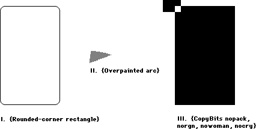
I. {Rounded-corner rectangle}
SetRect(r, 20, 10, 120, 175);
ClipRect(myWindow^.portRect);
ph := OpenPicture(r);
FrameRoundRect (r, 5, 4); {r,width,height}
ClosePicture;
DrawPicture(ph, r);
'PICT' (1) 0026 {size} 000A 0014 00AF 0078 {picFrame}
1101 {version 1} 01 000A 0000 0000 00FA 0190 {clipRgn — 10 byte region}
0B 0004 0005 {ovSize point} 40 000A 0014 00AF 0078 {frameRRect rectangle}
FF {fin}
_______________________________________________________________________________
II. {Overpainted arc}
GetPenState(pstate); {save}
SetRect(r, 20, 10, 120, 175);
ClipRect(myWindow^.portRect);
ph := OpenPicture(r);
PaintArc(r, 3, 45); {r,startangle,endangle}
PenPat(gray);
PenMode(patXor); {turn the black to gray}
PaintArc(r, 3, 45); {r,startangle,endangle}
ClosePicture;
SetPenState(pstate); {restore}
DrawPicture(ph, r);
data 'PICT' (2) 0036 {size} 000A 0014 00AF 0078 {picFrame}
1101 {version 1} 01 000A 0000 0000 00FA 0190 {clipRgn — 10 byte region}
61 000A 0014 00AF 0078 0003 002D {paintArc rectangle,startangle,endangle}
08 000A {pnMode patXor — note that the pnMode comes before the pnPat}
09 AA55 AA55 AA55 AA55 {pnPat gray}
69 0003 002D {paintSameArc startangle,endangle}
FF {fin}
III. {CopyBits nopack, norgn, nowoman, nocry}
GetPenState(pstate);
SetRect(r, 20, 10, 120, 175);
SetRect(smallr, 20, 10, 25, 15);
SetRect(orgr, 0, 0, 30, 20);
ClipRect(myWindow^.portRect);
ph := OpenPicture(r);
PaintRect(r);
CopyBits (myWindow^.portBits, myWindow^.portBits,
smallr, orgr, notSrcXor, NIL);
{note: result BitMap is 8 bits wide instead of the 5 specified by smallr}
ClosePicture;
SetPenState(pstate); {restore the port's original pen state}
DrawPicture(ph, r);
data 'PICT' (3) 0048 {size} 000A 0014 00AF 0078 {picFrame}
1101 {version 1} 01 000A 0000 0000 00FA 0190 {clipRgn — 10 byte region}
31 000A 0014 00AF 0078 {paintRect rectangle}
90 0002 000A 0014 000F 001C {BitsRect rowbytes bounds (note that bounds is
wider than smallr)}
000A 0014 000F 0019 {srcRect}
0000 0000 0014 001E {dstRect}
00 06 {mode=notSrcXor}
0000 0000 0000 0000 0000 {5 rows of empty bitmap (we copied from a
still-blank window)}
FF {fin}
022: TEScroll Bug
#022: TEScroll Bug
See also: TextEdit
Technical Note #131 — TextEdit Bugs
Written by: Bryan Stearns April 21, 1986
Updated: March 1, 1988
_______________________________________________________________________________
A bug in TextEdit causes the following problem: a call to TEScroll with no horizontal or vertical displacement (that is, both dh and dv set to zero) results in disappearance of the insertion point. Since such calls do nothing, they should be avoided:
IF (dh <> 0) OR (dv <> 0) THEN TEScroll(dh,dv,myTEHandle);
023: Life With Font/DA Mover—Desk Accessories
#023: Life With Font/DA Mover—Desk Accessories
See also: The Resource Manager
Technical Note #6—Shortcut for Owned Resources
Written by: Ginger Jernigan April 25, 1985
Updated: March 1, 1988
_______________________________________________________________________________
This technical note describes how to make sure that your desk accessory will work after being moved by Font/Desk Accessory Mover.
_______________________________________________________________________________
If you want your desk accessory to work properly after being moved by the
Font/DA Mover, there are some eccentricities that you need to be aware of. When the Font/DA Mover moves a desk accessory, it renumbers to avoid conflicts in ID numbers. It will also renumber all of your desk accessory’s owned resources. See the Resource Manager chapter of Inside Macintosh for more information on owned resources.
Since these owned resources are renumbered, your code will need to calculate the resource ID of any owned resource it uses. For example, if your desk accessory has an owned ‘DLOG’ resource, and calls GetNewDialog with the ID you assigned to it originally, the Resource Manager will not find it. The solution is that every time your desk accessory references an owned resource, it must figure out (at execution time) the ID of the resource according to the current driver resource ID.
When the Font/DA Mover renumbers, it does its best to keep resources pointing to each other properly. This means that it tries to renumber resource IDs embedded in other resources as well as the resources themselves. For example, the reference to a ‘DITL’ within a ‘DLOG’ or ‘ALRT’ resource gets changed automatically. Font/DA Mover knows about the standard embedded resource IDs in most of the standard resources, but if you define your own, the Font/DA Move won’t be able to renumber them for you. The embedded resource IDs which the Font/DA Mover knows about are listed below.
Note that certain resources can never be owned, because their resource IDs are restricted to a certain range. One such example is a WDEF. Since the ID of a WDEF is specified along with a four bit variation code, the range of WDEF IDs that can be used is 0-16363. Since none of this falls within the owned resource ID range, WDEFs cannot be owned. For the same reason, MDEFs, CDEFs, and MBDFs can’t be owned either.
As a rule of thumb, before you ship a desk accessory, move it to a disk with another desk accessory of the same ID. This will cause the Font/DA Mover to renumber your desk accessory. If the moved copy doesn’t work, then there is probably something wrong with the way you are handling your owned resources.
Embedded resources known by Font/DA Mover
These are all true for Font/DA Mover 3.3 and newer:
• references to ‘DITL’ resources in ‘DLOG’/‘ALRT’ resources
• references to ‘ICON’, ‘PICT’, ‘CTRL’ in ‘DITL’ resources
• references to ‘MENU’ resources inside the resources themselves(menuID field)
• references to ‘MENU’ resources in ‘MBAR’ resources
Anything not on this list has to be fixed by the desk accessory.
By the way...
Before Font/DA Mover, desk accessories could have an ID in the range 12 to 31. Now, and in the future, desk accessories can only have IDs in the range 12 to 26, because Font/DA Mover will only assign numbers in this range. Numbers 27 thru 31 are reserved.
024: Available Volumes
#024: Available Volumes
See also: The File Manager
Written by: Bryan Stearns April 26, 1985
Modified by: Bryan Stearns October 15, 1985
Updated: March 1, 1988
_______________________________________________________________________________
Standard File lets the user select one file from any available volume; it is sometimes necessary for an application to find which volumes are present. This technical note gives the proper method of accomplishing this.
_______________________________________________________________________________
There is a little-noticed feature of the low-level file manager call PBHGetVInfo which allows specification of a “volume index” to select the volume. This volume index selects the nth volume in the VCB queue. The following function uses PBHGetVInfo to find out about a given volume. In MPW Pascal:
FUNCTION GetIndVolume(whichVol: INTEGER; VAR volName: Str255;
VAR volRefNum: INTEGER): OSErr;
{Return the name and vRefNum of volume specified by whichVol.}
VAR
volPB : HParamBlockRec;
error : OSErr;
BEGIN
WITH volPB DO BEGIN {makes it easier to fill in!}
ioNamePtr := @volName; {make sure it returns the name}
ioVRefNum := 0; {0 means use ioVolIndex}
ioVolIndex := whichVol; {use this to determine the volume}
END; {with}
error := PBHGetVInfo(@volPB,false); {do it}
IF error = noErr THEN BEGIN {if no error occurred }
volRefNum := volPB.ioVRefNum; {return the volume reference}
END; {if no error}
{other information is available from this record; see the FILE}
{Manager's description of PBHGetVInfo for more details...}
GetIndVolume := error; {return error code}
END;
In MPW C:
OSErr GetIndVolume(whichVol,volName,volRefNum)
short int whichVol;
char *volName;
short int *volRefNum;
{
/*Return the name and vRefNum of volume specified by whichVol.*/
HVolumeParam volPB;
OSErr error;
volPB.ioNamePtr = volName; /*make sure it returns the name*/
volPB.ioVRefNum = 0; /*0 means use ioVolIndex*/
volPB.ioVolIndex = whichVol; /*use this to determine the volume*/
error = PBHGetVInfo(&volPB,false); /*do it*/
if (error == noErr) /*if no error occurred */
*volRefNum = volPB.ioVRefNum; /*return the volume reference*/
/*other information is available from this record; see the FILE*/
/*Manager's description of PBHGetVInfo for more details...*/
return(error); /*always return error code*/
} /* GetIndVolume */
To find out about all volumes on-line, you can call this routine several times, starting at whichVol := 1 and incrementing whichVol until the routine returns nsvErr.
025: Don’t Depend on Register A5 Within Trap Patches
#025: Don’t Depend on Register A5 Within Trap Patches
See also: The Operating System Utilities
Written by: Bryan Stearns June 25, 1986
Updated: March 1, 1988
_______________________________________________________________________________
Future software may allow desk accessories to have their own globals by changing register A5 when the accessory is entered and exited. This can cause problems for applications that patch traps without following certain rules.
_______________________________________________________________________________
If your application patches any traps, it’s important that the patches not depend on register A5. This is because you may have intercepted a trap used by a desk accessory.
If you need access to your globals within your patch, you can save A5 (on the stack, perhaps), load A5 from the low-memory global CurrentA5 (this is guaranteed to be correct for your application), do whatever you have to do within your patch, then restore A5 on the way out. Note that if you make any traps within your patch (or call the “real” version of the routine you patched), you should restore the caller’s A5 before doing so.
There are several ways of depending on A5 within a patch that you should watch out for:
• Are you making any references to your global variables, or those of any units
that you’re using, such as thePort from QuickDraw?
These are accessed with A5-relative references with negative offsets.
• Are you making any inter-segment subroutine calls?
These are accessed with A5-relative references with positive offsets.
• Are you using any system calls (either traps or “glue” routines) which will
depend on A5 during their execution?
In this case, you need to be sure that you restore the caller’s A5 before
executing the call.
To be safest, patched traps should follow the same rules as interrupt handlers.
Note
In general, applications should not have to patch any traps, and risk compatibility problems if they do! If you’d like help in removing your dependence on patching, please contact Macintosh Developer Technical Support.
026: Character vs. String Operations in QuickDraw
#026: Character vs. String Operations in QuickDraw
See also: QuickDraw
The Font Manager
Written by: Bryan Stearns April 26,1985
Updated: March 1, 1988
_______________________________________________________________________________
This technical note discusses the fact that the width of a string is not always the same as the sum of the widths of all the characters in the string, due to roundoff error.
_______________________________________________________________________________
When measuring and drawing strings of text characters, QuickDraw uses fixed-point math. This results in a rounding error when drawing or measuring scaled characters using successive calls to DrawString or DrawChar, as compared with single calls to StringWidth or CharWidth. The problem occurs when using scaled fonts or fractional width fonts.
The following program (MPW Tool) demonstrates this problem. It assumes that the current System file does not contain a real version of the system font in 11 point, but must instead scale the 12-point version.
PROGRAM WidthTest;
USES MemTypes, QuickDraw;
VAR
port : GrafPort;
i, width : INTEGER;
oldPt, newPt : Point;
testString : Str255;
BEGIN
InitGraf(@thePort);
{create a port to measure in}
OpenPort(@port);
TextSize(11); {a size that is not usually available}
{make a string to measure
testString := 'Test String';
{try DrawString}
GetPen(oldPt);
DrawString(testString);
GetPen(newPt);
WRITELN('DrawString = ', newPt.h - oldPt.h :1);
{try StringWidth}
WRITELN('StringWidth = ', StringWidth(testString) :1);
{try DrawChar}
GetPen(oldPt);
FOR i := 1 TO Length(testString) DO
DrawChar(testString[i]);
GetPen(newPt);
WRITELN('DrawChar = ', newPt.h - oldPt.h :1);
{try CharWidth}
width := 0;
FOR i := 1 TO Length(testString) DO
width := width + CharWidth(testString[i]);
WRITELN('CharWidth = ', width :1);
END.
This tool’s output will look like this:
DrawString = 64
StringWidth = 64
DrawChar = 59
CharWidth = 59
If the TextFont(11) line is removed, the result will be:
DrawString = 70
StringWidth = 70
DrawChar = 70
CharWidth = 70
Note that the measuring method always matches the drawing method; if you use successive CharWidth calls to measure, followed by calls to DrawChar to draw, the actual width of the string will match the calculated width.
027: MacDraw’s PICT File Format
#027: MacDraw’s PICT File Format
Revised: August 1989
Written by: Ginger Jernigan August 1986
This Technical Note formerly described the PICT file format used by MacDraw(R) and the picture comments the MacDraw used to communicate with the LaserWriter driver.
Changes since March 1988: Updated the Claris address.
_______________________________________________________________________________
This Note formerly discussed the PICT file format used by MacDraw, which is now published by Claris. For information on MacDraw (its specific use of the PICT format) and other Claris products, contact Claris at:
Claris Corporation
5201 Patrick Henry Drive
P.O. Box 58168
Santa Clara, CA 95052-8168
Technical Support
Telephone: (408) 727-9054
AppleLink: Claris.Tech
Customer Relations
Telephone: (408) 727-8227
AppleLink: Claris.CR
Inside Macintosh, Volume V–39, Color QuickDraw and Technical Note #21, QuickDraw’s Internal Picture Format, now document the PICT file format. Technical Note #91, Optimizing for the LaserWriter—Picture Comments, now documents the picture comments which the LaserWriter driver supports.
Further Reference:
_______________________________________________________________________________
• Inside Macintosh, Volume V–39, Color QuickDraw
• Technical Note #21, QuickDraw’s Internal Picture Format
• Technical Note #91, Optimizing for the LaserWriter—Picture Comments
MacDraw is a registered trademark of Claris Corporation.
028: Finders and Foreign Drives
#028: Finders and Foreign Drives
Written by: Ginger Jernigan May 7, 1984
Updated: March 1, 1988
_______________________________________________________________________________
This technical note describes the differences in the way the 1.1g, 4.1, 5.0 and newer Finders communicate with foreign (non-Sony) disk drives.
_______________________________________________________________________________
Identifying Foreign Drives
Non-Sony disk drives can send an icon and a descriptive string to the Finder; this icon is used on the desktop to represent the drive. The string is displayed in the “Get Info” box for any object belonging to that disk. When the Finder notices a non-Sony drive in the VCB queue, it will issue 1 or 2 control calls to the disk driver to get the icon and string.
Finder 1.1g issues one control call to the driver with csCode = 20 and the driver returns the icon ID in csParam. This method has problems because the icon ID is tied to a particular system file. So, if the Finder switch-launches to a different floppy, the foreign disk’s icon reverts to the Sony’s.
Finders 4.1 and newer issue a newer control call and, if that fails, they issue the old Control call. The new call has csCode = 21, and the driver should return a pointer in csParam. The pointer points to an 'ICN#' followed by a 1 to 31 byte Pascal string containing the descriptor. This implies that the icon and the string must be part of the disk driver’s code because only the existence of the driver indicates that the disk is attached.
This has implications about the translation of the driver for overseas markets, but the descriptor will usually be a trademarked name which isn’t translated. However, the driver install program could be made responsible for inserting the translated name into the driver.
Drivers should respond to both control calls if compatibility with both Finders is desired.
Formatting Foreign Drives
When the user chooses the Erase Disk option in the Finder, a non-Sony driver needs to know that this has happened so it can format the disk. Finder 4.1 and newer notify the driver that the drive needs to be formatted and verified. They first issue a Control call to the driver with the csCode = 6 to tell the disk driver to format the drive. Then they issue a Control call with a csCode = 5 to tell the driver to verify the drive.
Other Nifty Things to Know About
Finders 4.1 and newer also permit the user to drag any online disk to the trash can. The Finder will clean up the disk state, issue an Eject call followed by an Unmount call to the disk and then, an event loop later, reclaim all the memory. This means any program/accessory used to mount volumes should reconcile its private data, menus, etc. to the current state of the VCB queue. These Finders also notice if a volume disappears and will clean up safely. But, because of a quirk in timing, a mount manager cannot unmount one volume then mount another immediately; it must wait for the Finder to loop around and clean up the first disk before it notices the second. (It should have cleaned up old ones before it notices new ones, but it doesn’t.)
Finders 5.0 and newer allow you to drag the startup disk to the trash; Finder 4.1 just ignored you. Finders 5.0 and newer take the volume offline as if you had chosen Eject.
029: Resources Contained in the Desktop File
#029: Resources Contained in the Desktop File
See also: The Finder Interface
Written by: Ginger Jernigan May 7, 1985
Modified by: Ginger Jernigan December 2, 1985
Updated: March 1, 1988
_______________________________________________________________________________
This technical note describes the resources found in the Desktop file.
NOTE: Don’t base anything critical on the format of the Desktop file. AppleShare already uses another scheme; AppleShare volumes don’t have Desktop files. The format of this file can, and probably will, change in the future.
_______________________________________________________________________________
The Desktop file contains almost the same resources for both the Macintosh File System (MFS) and the Hierarchical File System (HFS). This technical note describes the resources found in both. This information is for reading only. This means your application can read it but it should NEVER write out information of its own, because the Finder, as well as Macintosh Developer Technical Support, won’t like it.
The Desktop is a resource file which contains the folder information on an MFS volume, the “Get Info” comments, the application bundles, ‘FREF’s and ‘ICN#’s, and information concerning the whereabouts of applications on an HFS disk. Everything except the comments are preloaded when the desktop is opened, making it easier for the Finder to find things.
The contents of the Desktop file are described below. The resource types are the same for both MFS and HFS volumes unless otherwise stated.
‘APPL’:
This resource type is used by the HFS to locate applications. This is used
by the Finder to locate the right application when a document is opened.
Each application is identified by the creator, the directory number, and
the application name. This is used only by HFS.
‘BNDL’:
This resource type contains a copy of all of the bundles for all of the
applications that are either on the disk or are the creators of documents
that are on the disk. This is used by the Finder to find the right icons for
documents and applications. If you have a document whose creator the Finder
has not seen yet, it will not be in the Desktop file and the default
document icon will be used.
‘FREF’:
This contains a copy of all of the FREFs referenced in the bundles.
‘FCMT’:
This resource contains all of the “Get Info” comments for applications and
documents. On MFS volumes the ID is a hash of the object’s name. The hashing
algorithm is as follows:
; FUNCTION HashString(str: Str255): INTEGER;
; The ID for the FCMT returned in function result
HashString
MOVE.L (SP)+,A0 ; get return address
MOVE.L (SP)+,A1 ; get string pointer
MOVEQ #0,D0 ; get string length
MOVE.B (A1)+,D0
MOVEQ #0,D2 ; accumulate ID here
@2
MOVE.B (A1)+,D1 ; get next char
EOR.B D1,D2 ; XOR in
ROR.W #1,D2 ; stir things up
BMI.S @1 ; ID must be negative
NEG.W D2
@1
SUBQ.W #1,D0 ; loop until done
BNE.S @2 ; until end of string
MOVE D2,(SP) ; return the hashed code
JMP (A0)
For HFS volumes, the ID of the resource is randomly generated using UniqueID. To find the ID of the comment for a file or directory call PBGetCatInfo. The comment ID for a file is kept in ioFlXFndrInfo.fdComment. The comment ID for a directory is kept in ioDrFndrInfo.frComment.
‘FOBJ’:
This resource type contains all of the folder information for an MFS volume.
The format of this resource is not available. This is only in an MFS
volume’s Desktop file.
‘ICN#’:
This resource type contains a copy of all of the ‘ICN#’ resources referenced
in the bundles and any others that may be present.
‘STR ’:
This is a string that identifies the version of the Finder, but it isn’t
always correct.
Creators:
A resource with a type equal to the creator of each application with a
bundle is stored in the Desktop file for reference purposes only. The data
stored in these resources is for the Finder’s use only.
Be aware that if a resource is copied from an application resource file and there is an ID conflict, the Finder will renumber the resource in the Desktop file.
030: Font Height Tables
#030: Font Height Tables
See Also: The Font Manager
The Resource Manager
Written by: Gene Pope April 25, 1986
Updated: March 1, 1988
_______________________________________________________________________________
This technical note describes how the Font Manager (except in 64K ROMs) calculates height tables for fonts and how you can force recalculation.
_______________________________________________________________________________
In order to expedite the processing of fonts, the Font Manager (in anything newer than the 64K ROMs) calculates a height table for all of the characters in a font when the font is first loaded into memory. This height table is then appended to the end of the font resource in memory; if some program (such as a font editor) subsequently saves the font, the height table will be saved with the font and will not have to be built again. This is fine for most cases except, for example, when the tables really should be recalculated, such as in a font editor when the ascent and/or descent have changed.
The following is an example of how to eliminate the height table from a font:
IF (BitAnd(hStrike^^.fontTyp,$1)=1) THEN BEGIN {We have a height table}
{Truncate the height table}
SetHandleSize(Handle(hStrike),GetHandleSize(Handle(hStrike)-
(2*(hStrike^^.lastChar-hStrike^^.firstChar)+3)));
{We no longer have a height table so set the flag to indicate that}
hStrike^^.format := BitAnd(hStrike^^.fontType,$FFFFFFFE);
END;
In MPW C:
if ((**hStrike).fontType & 0x1 ==1) { /*We have a height table*/
/*Truncate the height table*/
SetHandleSize((Handle)hStrike,GetHandleSize((Handle)hStrike)-
(2*((**hStrike).lastChar-(**hStrike).firstChar)+3));
/*We no longer have a height table so set the flag to indicate that*/
(**hStrike).fontType = (**hStrike).fontType & 0xFFFFFFFE;
}
here hStrike is a handle to the ‘FONT’ or ‘NFNT’ resource (handle to a FontRec).
NOTE: After the height table has been eliminated, the modified font should be saved to disk (with ChangedResource and WriteResource) and purged from memory (using ReleaseResource). This is an important step, because the Font Manager does not expect other code to go behind its back removing height tables that it has calculated.
032: Reserved Resource Types
#032: Reserved Resource Types
See: The Resource Manager
Written by: Scott Knaster May 13, 1985
Updated: March 1, 1988
_______________________________________________________________________________
Your applications and desk accessories can create their own resource types. To avoid using type names which have been or will be used in the system, Apple has reserved all resource type names which consist entirely of spaces ($20), lower-case letters ($61 through $7A), and “international” characters (greater than $7F).
In addition Apple has reserved a number of resource types which contain upper-case letters and the “#” character. For a list of these resource types, see The Resource Manager Chapter of Inside Macintosh (starting with Volume V).
033: ImageWriter II Paper Motion
#033: ImageWriter II Paper Motion
Written by: Ginger Jernigan April 30, 1986
Updated: March 1, 1988
_______________________________________________________________________________
The purpose of this technical note is to answer the many questions asked about why the paper moves the way it does on the ImageWriter II.
_______________________________________________________________________________
Many people have asked why the paper is rolled backward at the beginning of a Macintosh print job on the ImageWriter II. First, note that this only happens with pin-feed paper (i.e. not with hand-feed or the sheet-feeder) and only at the beginning of a job.
It is not a bug, and it is not malicious programming. It is simply that users are told in the manual to load pin-feed paper with the top edge at the pinch-rollers, making it easy to rip off the printed page(s) without wrecking the paper that is still in the printer or having to roll the paper up and down manually. At the end of every job, the software makes sure that the paper is left in this position, leaving the print-head roughly an inch from the edge. If something is to be printed higher than that, the paper has to be rolled backwards.
As you are probably aware, the “printable rectangle” (rPage) reported to the application by the print code begins 1/2 inch from the top edge, not one inch. The reason for that is that we want a document to print exactly the same way whether you are printing on the ImageWriter I or II. On the ImageWriter I, the paper starts with the print-head 1/2 inch from the top edge, so the top of rPage is at that position for both printers.
There is no way to eliminate the reverse-feed action, because the user would have to load the paper a different way AND the software would have to know that this was done.
Incidentally, in addition to the paper motion described above, there is also the “burp.” This is a 1/8-inch motion back and forth to take up the slop in the printer’s gear-train. It is needed on the old-model printer, and there is debate about whether or not it’s needed on ALL ImageWriter IIs, or only some, or none. The burp has been in and out of the ImageWriter II code in various releases; right now it’s in.
034: User Items in Dialogs
#034: User Items in Dialogs
See also: The Dialog Manager
Written by: Bryan Stearns May 29,1985
Updated: March 1, 1988
_______________________________________________________________________________
The Dialog Manager doesn’t go into detail about how to manage user items in dialogs. This note describes the process.
_______________________________________________________________________________
To use Dialog Manager userItems, you must define a dialog, load the dialog and install your userItem, and respond to events related to the userItem.
Defining a dialog box with a userItem
You should define the dialog box in your resource file as follows. Note that it is defined as invisible; this is because we have to play with the userItem before it can be drawn.
resource 'DLOG' (1001) { /* type/ID for box */
{100,100,300,400}, /* rectangle for window */
dBoxProc, invisible, noGoAway, 0x0, /* note it is invisible */
1001,
"Test Dialog"
};
resource 'DITL' (1001) { /* matching item list */
{
{160, 190, 180, 280}, /* rectangle for button */
button { enabled, "OK" }; /* an OK button */
{104, 144, 120, 296}, /* rectangle for item */
userItem { enabled } /* a user item! */
}
};
Loading and preparing to run the dialog box
Before we can actually show the dialog box to the user, we need two support routines. The first procedure is called by the Dialog Manager whenever our userItem needs to be drawn. It is installed (as shown below) after GetNewDialog but before ShowWindow. It just draws the user item.
A simple draw procedure might be as follows:
PROCEDURE MyDraw(theDialog: DialogPtr; theItem: INTEGER);
VAR
iType : INTEGER; {returned item type}
iBox : Rect; {returned bounds rect}
iHdl : Handle; {returned item handle}
BEGIN
GetDItem(theDialog,theItem,iType,iHdl,iBox); {get the box}
FillRect(iBox,ltGray); {fill with light gray}
FrameRect(iBox); {frame it}
END; {MyDraw}
In MPW C:
pascal void MyDraw(theDialog,theItem)
DialogPtr theDialog;
short int theItem;
{
short int iType; /*returned item type*/
Rect iBox; /*returned bounds rect*/
Handle iHdl; /*returned item handle*/
GetDItem(theDialog,theItem,&iType,&iHdl,&iBox); /*get the box*/
FillRect(&iBox,qd.ltGray); /*fill with light gray*/
FrameRect(&iBox); /*frame it*/
} /*MyDraw*/
The other necessary procedure is a filter procedure, called by the Dialog Manager whenever ModalDialog receives an event (note that this only applies when calling ModalDialog; see below for modeless dialogs). The default filterproc checks to see if the user has typed the return or enter keys; if so, it simulates pressing of the OK button (or whatever item 1 is). To support userItems, the filterproc must handle events for any userItems in the box, in addition to performing the default filterproc tasks. This short filter proc does this; when the user clicks in the userItem, it inverts it:
FUNCTION MyFilter(theDialog: DialogPtr; VAR theEvent: EventRecord;
VAR itemHit: INTEGER): BOOLEAN;
VAR
key : SignedByte; {for enter/return}
iType : INTEGER; {returned item type}
iBox : Rect; {returned boundsrect}
iHdl : Handle; {returned item handle}
mouseLoc : Point; {we'll play w/ mouse}
BEGIN
MyFilter := FALSE; {assume not our event}
CASE theEvent.what OF {which event?}
keyDown,autoKey: BEGIN {he hit a key}
key := theEvent.message; {get keycode}
IF key IN [13,3] THEN BEGIN {he hit CR or Enter}
MyFilter := TRUE; {we handled it}
itemHit := 1; {he hit the 1st item}
END; {he hit CR or enter}
END; {keydown}
mouseDown: BEGIN {he clicked}
mouseLoc := theEvent.where; {get the mouse pos'n}
GlobalToLocal(mouseLoc); {convert to local}
GetDItem(theDialog,2,iType,iHdl,iBox); {get our box}
IF PtInRect(mouseLoc,iBox) THEN BEGIN {he hit our item}
InvertRect(iBox);
MyFilter := TRUE; {we handled it}
itemHit := 2; {he hit the userItem}
END; {if he hit our userItem}
END; {mousedown}
END; {event case}
END; {MyFilter}
In MPW C:
pascal Boolean MyFilter(theDialog,theEvent,itemHit)
DialogPtr theDialog;
EventRecord *theEvent;
short int *itemHit;
{
char key; /*for enter/return*/
short int iType; /*returned item type*/
Rect iBox; /*returned boundsrect*/
Handle iHdl; /*returned item handle*/
Point mouseLoc; /*we'll play w/ mouse*/
SetPort(theDialog);
switch (theEvent->what) /*which event?*/
{
case keyDown:
case autoKey: /*he hit a key*/
key = theEvent->message; /*get ascii code*/
if ((key ==3) || (key == 13))
{ /*he hit CR or Enter*/
*itemHit = 1; /*he hit the 1st item*/
return(true); /*we handled it*/
} /*he hit CR or enter*/
break; /* case keydown, case autoKey */
case mouseDown: /*he clicked*/
mouseLoc = theEvent->where; /*get the mouse pos'n*/
GlobalToLocal(&mouseLoc); /*convert to local*/
GetDItem(theDialog,2,&iType,&iHdl,&iBox); /*get our box*/
if (PtInRect(mouseLoc,&iBox))
{ /*he hit our item*/
InvertRect(&iBox);
*itemHit = 2; /*he hit the userItem*/
return(true); /*we handled it*/
} /*if he hit our userItem*/
break; /*case mouseDown */
} /*event switch*/
return(false); /* we’re still here, so return false (we didn't handle the event) */
} /*MyFilter*/
Invoking the dialog box
When we need this dialog box, we load it into memory as follows:
PROCEDURE DoOurDialog;
VAR
myDialog : DialogPtr; {the dialog pointer}
iType : INTEGER; {returned item type}
iBox : Rect; {returned boundsRect}
iHdl : Handle; {returned item Handle}
BEGIN
myDialog := GetNewDialog(1001,nil,POINTER(-1)); {get the box}
GetDItem(myDialog,2,iType,iHdl,iBox); {2 is the item number}
SetDItem(myDialog,2,iType,@myDraw,iBox); {install draw proc}
ShowWindow(theDialog); {make it visible}
REPEAT
ModalDialog(@MyFilter,whichItem); {let dialog manager run it}
UNTIL whichItem = 1; {until he hits ok.}
DisposDialog(myDialog); {throw it away}
END; {DoOurDialog}
In MPW C:
void DoOurDialog()
{
DialogPtr myDialog; /*the dialog pointer*/
short int iType; /*returned item type*/
short int itemHit; /*returned from ModalDialog*/
Rect iBox; /*returned boundsRect*/
Handle iHdl; /*returned item Handle*/
myDialog = GetNewDialog(1001,nil,(WindowPtr)-1); /*get the box*/
GetDItem(myDialog,2,&iType,&iHdl,&iBox); /*2 is the item number*/
SetDItem(myDialog,2,iType,MyDraw,&iBox); /*install draw proc*/
ShowWindow(myDialog); /*make it visible*/
while (itemHit != 1) ModalDialog(MyFilter, &itemHit);
DisposDialog(myDialog); /*throw it away*/
} /*DoOurDialog*/
Using userItems with modeless dialogs
If you’re using userItems in a modeless dialog box, the draw procedure will get called when DialogSelect receives an updateEvent for the dialog box. When the user presses the mouse button on your userItem, DialogSelect will return TRUE and itemHit equal to the item number of the userItem. Your code can then handle this just like the mouseDown case in the example above.
035: DrawPicture Problem
#035: DrawPicture Problem
Written by: Mark Baumwell June 19, 1986
Updated: March 1, 1988
_______________________________________________________________________________
This note formerly described a problem with DrawPicture that occurred only on 64K ROM machines. Information specific to 64K ROM machines has been deleted from Macintosh Technical Notes for reasons of clarity.
036: Drive Queue Elements
#036: Drive Queue Elements
See also: The File Manager
The Device Manager
Written by: Bryan Stearns June 12, 1985
Updated: March 1, 1988
_______________________________________________________________________________
This note expands on Inside Macintosh’s definition of the drive queue, which is given in the File Manager chapter.
_______________________________________________________________________________
As shown in Inside Macintosh, a drive queue element has the following structure:
DrvQEl = RECORD
qLink: QElemPtr; {next queue entry}
qType: INTEGER; {queue type}
dQDrive: INTEGER; {drive number}
dQRefNum: INTEGER; {driver reference number}
dQFSID: INTEGER; {file-system identifier}
dQDrvSz: INTEGER; {number of logical blocks on drive}
dQDrvSz2: INTEGER; {additional field to handle large drive size}
END;
Note that dQDrvSz2 is only used if qType is 1. In this case, dQDrvSz2 contains the high-order word of the size, and dQDrvSz contains the low-order word.
Inside Macintosh also mentions four bytes of flags that preced each drive queue entry. How are these flags accessed? The flags begin 4 bytes before the address pointed to by the DrvQElPtr. In assembly language, accessing this isn’t a problem:
MOVE.L -4(A0),D0 ;A0 = DrvQElPtr; get drive queue flags
If you’re using Pascal, it’s a little more complicated. You can get to the flags with this routine:
FUNCTION DriveFlags(aDQEPtr: DrvQElPtr): LONGINT;
VAR
flagsPtr : ^LONGINT; {we'll point at drive queue flags with this}
BEGIN
{subtract 4 from the DrvQElPtr, and get the LONGINT there}
flagsPtr := POINTER(ORD4(aDQEPtr) - 4);
DriveFlags := flagsPtr^;
END;
From MPW C, you can use:
long DriveFlags(aDQEPtr)
DrvQElPtr aDQEPtr;
{ /* DriveFlags */
return(*((long *)aDQEPtr - 1)); /* coerce flagsPtr to a (long *)
so that subtracting 1 from it
will back us up 4 bytes */
} /* DriveFlags */
Creating New Drives
To add a drive to the drive queue, assembly-language programmers can use the function defined below. It takes two parameters: the driver reference number of the driver which is to “own” this drive, and the size of the new drive in blocks. It returns the drive number created. It is vital that you NOT hard-code the drive number; if the user has installed other non-standard drives in the queue, the drive number you’re expecting may already be taken. (Note that the example function below arbitrates to find an unused drive number, taking care of this problem for you. Also, note that this function doesn’t mount the new volume; your code should take care of that, calling the Disk Initialization Package to reformat the volume if necessary).
AddMyDrive PROC EXPORT
;---------------------------------------------------------------------------
;FUNCTION AddMyDrive(drvSize: LONGINT; drvrRef: INTEGER): INTEGER;
;---------------------------------------------------------------------------
;Add a drive to the drive queue. Returns the new drive number, or a negative
;error code (from trying to allocate the memory for the queue element).
;---------------------------------------------------------------------------
DQESize EQU 18 ;size of a drive queue element
;We use a constant here because the number in SysEqu.a doesn't take into
;account the flags LONGINT before the element, or the size word at the end.
;---------------------------------------------------------------------------
StackFrame RECORD {link},DECR
result DS.W 1 ;function result
params EQU *
drvSize DS.L 1 ;drive size parameter
drvrRef DS.W 1 ;drive refNum parameter
paramSize EQU params-*
return DS.L 1 ;return address
link DS.L 1 ;saved value of A6 from LINK
block DS.B ioQElSize ;parameter block for call to MountVol
linkSize EQU *
ENDR
;---------------------------------------------------------------------------
WITH StackFrame ;use the offsets declared above
LINK A6,#linkSize ;create stack frame
;search existing drive queue for an unused number
LEA DrvQHdr,A0 ;get the drive queue header
MOVEQ #4,D0 ;start with drive number 4
CheckDrvNum
MOVE.L qHead(A0),A1 ;start with first drive
CheckDrv
CMP.W dqDrive(A1),D0 ;does this drive already have our number?
BEQ.S NextDrvNum ;yep, bump the number and try again.
CMP.L A1,qTail(A0) ;no, are we at the end of the queue?
BEQ.S GotDrvNum ;if yes, our number's unique! Go use it.
MOVE.L qLink(A1),A1 ;point to next queue element
BRA.S CheckDrv ;go check it.
NextDrvNum
;this drive number is taken, pick another
ADDQ.W #1,D0 ;bump to next possible drive number
BRA.S CheckDrvNum ;try the new number
GotDrvNum
;we got a good number (in D0.W), set it aside
MOVE.W D0,result(A6) ;return it to the user
;get room for the new DQE
MOVEQ #DQESize,D0 ;size of drive queue element, adjusted
_NewPtr sys ;get memory for it
BEQ.S GotDQE ;no error...continue
MOVE.W D0,result(A6) ;couldn't get the memory! return error
BRA.S FinishUp ;and exit
GotDQE
;fill out the DQE
MOVE.L #$80000,(A0)+ ;flags: non-ejectable; bump past flags
MOVE.W #1,qType(A0) ;qType of 1 means we do use dQDrvSz2
CLR.W dQFSID(A0) ;"local file system"
MOVE.W drvSize(A6),dQDrvSz2(A0) ;high word of number of blocks
MOVE.W drvSize+2(A6),dQDrvSz(A0) ;low word of number of blocks
;call AddDrive
MOVE.W result(A6),D0 ;get the drive number back
SWAP D0 ;put it in the high word
MOVE.W drvrRef(A6),D0 ;move the driver refNum in the low word
_AddDrive ;add this drive to the drive queue
FinishUp
UNLK A6 ;get rid of stack frame
MOVE.L (SP)+,A0 ;get return address
ADDQ #paramSize,SP ;get rid of parameters
JMP (A0) ;back to caller
;---------------------------------------------------------------------------
ENDPROC
037: Differentiating Between Logic Boards
#037: Differentiating Between Logic Boards
See: Technical Note #129 — SysEnvirons
Written by: Mark Baumwell June 19, 1986
Updated: March 1, 1988
_______________________________________________________________________________
Earlier versions of this note are obsoleted by existence of SysEnvirons, which is documented in Technical Note #129.
038: The ROM Debugger
#038: The ROM Debugger
Written by: Louella Pizzuti June 20, 1986
Updated: March 1, 1988
_______________________________________________________________________________
The debugger in ROM (not present on the Macintosh 128, Macintosh 512, or Macintosh XL) recognizes the following commands:
PC [expr] (program counter)
Typing PC on a line by itself displays the program counter. Typing PC 50000 sets the program counter to $50000.
SM [address [number(s)]] (set memory)
Typing SM on a line by itself displays the next 96 bytes of memory. Typing SM 50000 will display memory starting at $50000. Typing SM 50000 4849 2054 6865 7265 2120 will set memory starting at $50000 to $4849… Subsequently hitting Return will increment the display a screen at a time.
DM [address] (display memory)
Typing DM on a line by itself displays the next 96 bytes of memory. Typing DM 50000 will display memory at $50000. Subsequently hitting Return will increment the display a screen at a time.
SR [expr] (status register)
Typing SR on a line by itself displays the status register. Typing SR 2004 sets the status register to $2004.
TD (total display)
Displays memory at the “magic” location $3FFC80, which contains the current values of the registers. The registers are displayed in the following order: D0-D7, A0-A7, PC, SR.
G [address] (go)
Executes instructions starting at address. If G is typed on a line by itself, execution begins at the address indicated by the program counter.
NOTE: If you want to exit to the shell, you just need to type: SM 0 A9F4,
then G 0
NOTE: If you crash into the debugger and the system hangs, try turning off
your modem.
039: Segment Loader Patch
#039: Segment Loader Patch
Written by: Russ Daniels August 1, 1985
Bryan Stearns
Modified by: Jim Friedlander November 15, 1986
Updated: March 1, 1988
_______________________________________________________________________________
This note formerly described a patch to the Segment Loader for 64K ROM machines. Information specific to 64K ROM machines has been deleted from Macintosh Technical Notes for reasons of clarity.
040: Finder Flags
#040: Finder Flags
See also: The File Manager
Written by: Jim Friedlander June 16, 1986
Modified by: Jim Friedlander March 2, 1987
Updated: March 1, 1988
_______________________________________________________________________________
This revision corrects the meanings of bits 6 and 7, which were interchanged in the older version of this technical note. ResEdit uses these bits incorrectly in versions older than 1.2.
_______________________________________________________________________________
The Finder keeps and uses a series of file information flags for each file. These flags are located in the fdFlags field (a word at offset $28 into an HParamBlockRec) of the ioFlFndrInfo record of a parameter block. They may change with newer versions of the Finder. Finders 5.4 and newer assign the following meanings to the flags:
Bit Meaning
0 Set if file/folder is on the desktop (Finder 5.0 and later)
1 bFOwnAppl (used internally)
2 reserved (currently unused)
3 reserved (currently unused)
4 bFNever (never SwitchLaunch) (not implemented)
5 bFAlways (always SwitchLaunch)
6 Set if file is a shareable application
7 reserved (used by System)
8 Inited (seen by Finder)
9 Changed (used internally by Finder)
10 Busy (copied from File System busy bit)
11 NoCopy (not used in 5.0 and later, formerly called BOZO)
12 System (set if file is a system file)
13 HasBundle
14 Invisible
15 Locked
041: Drawing Into an Off-Screen Bitmap
#041: Drawing Into an Off-Screen Bitmap
Revised by: Jon Zap April 1990
Written by: Jim Friedlander & Ginger Jernigan July 1985
This Technical Note provides an example of creating an off-screen bitmap, drawing to it, and then copying from it to the screen.
Changes since April 1990: Clarified the section on window updates with off-screen bitmaps to explicitly limit these updates to your own windows.
_______________________________________________________________________________
The following is an example of creating and drawing to an off-screen bitmap, then copying from it to an on-screen window. We supply this example in both MPW Pascal and C.
MPW Pascal
First, let’s look at a general purpose function to create an off-screen bitmap. This function creates the GrafPort on the heap. You could also create it on the stack and pass the uninitialized structure to a function similar to this one.
FUNCTION CreateOffscreenBitMap(VAR newOffscreen:GrafPtr;
inBounds:Rect) : BOOLEAN;
VAR
savePort : GrafPtr;
newPort : GrafPtr;
BEGIN
GetPort(savePort); {need this to restore thePort after OpenPort changes it}
newPort := GrafPtr(NewPtr(sizeof(GrafPort))); {allocate the GrafPort}
IF MemError <> noErr THEN BEGIN
CreateOffscreenBitMap := false; {failed to allocate it}
EXIT(CreateOffscreenBitMap);
END;
{
the OpenPort call does the following . . .
allocates space for visRgn (set to screenBits.bounds)
and clipRgn (set wide open)
sets portBits to screenBits
sets portRect to screenBits.bounds
etc. (see IM I-163,164)
side effect: does a SetPort(offScreen)
}
OpenPort(newPort);
{make bitmap exactly the size of the bounds that caller supplied}
WITH newPort^ DO BEGIN {portRect, clipRgn, and visRgn are in newPort}
portRect := inBounds;
RectRgn(clipRgn, inBounds); {avoid wide-open clipRgn, to be safe}
RectRgn(visRgn, inBounds); {in case inBounds is > screen bounds}
END;
WITH newPort^.portBits DO BEGIN {baseAddr, rowBytes and bounds are in newPort}
bounds := inBounds;
{rowBytes is size of row It must be rounded up to even number of bytes}
rowBytes := ((inBounds.right - inBounds.left + 15) DIV 16) * 2;
{number of bytes in BitMap is rowBytes * number of rows}
{see note at end of Technical Note about using _NewHandle }
{ rather than _NewPtr}
baseAddr := NewPtr(rowBytes * LONGINT(inBounds.bottom - inBounds.top));
END;
IF MemError <> noErr THEN BEGIN {see if we had enough room for the bits}
SetPort(savePort);
ClosePort(newPort); { dump the visRgn and clipRgn }
DisposPtr(Ptr(newPort)); { dump the GrafPort}
CreateOffscreenBitMap := false;
END
ELSE BEGIN
{ since the bits are just memory, let's erase them before we start }
EraseRect(inBounds); {OpenPort did a SetPort(newPort)}
newOffscreen := newPort;
SetPort(savePort);
CreateOffscreenBitMap := true;
END;
END;
Here is the procedure to get rid of an off-screen bitmap created by the previous function:
PROCEDURE DestroyOffscreenBitMap(oldOffscreen : GrafPtr);
BEGIN
ClosePort(oldOffscreen); { dump the visRgn and clipRgn }
DisposPtr(oldOffscreen^.portBits.baseAddr); { dump the bits }
DisposPtr(Ptr(oldOffscreen)); { dump the port }
END;
Now that you know how to create and destroy an off-screen bitmap, let’s go through the motions of using one. First, let’s define a few things to make the _NewWindow call a little clearer.
CONST
kIsVisible = true;
kNoGoAway = false;
kMakeFrontWindow = -1;
myString = 'The EYE'; {string to display}
Here’s the body of the test code:
VAR
offscreen : GrafPtr; {our off-screen bitmap}
ovalRect : Rect; {used for example drawing}
myWBounds : Rect; {for creating window}
OSRect : Rect; {portRect and bounds for off-screen bitmap}
myWindow : WindowPtr;
BEGIN
InitToolbox; {exercise left to the reader}
myWBounds := screenBits.bounds; { size of main screen }
InsetRect(myWBounds, 50,50); { make it fit better }
myWindow := NewWindow(NIL, myWBounds, 'Test Window', kIsVisible,
noGrowDocProc, WindowPtr(kMakeFrontWindow),
kNoGoAway, 0);
IF NOT CreateOffscreenBitMap(offscreen,myWindow^.portRect) THEN BEGIN
SysBeep(1);
ExitToShell;
END;
{ Example drawing to our off-screen bitmap }
SetPort(offscreen);
OSRect := offscreen^.portRect; { offscreen bitmap's local coordinate rect }
ovalRect := OSRect;
FillOval(ovalRect, black);
InsetRect(ovalRect, 1, 20);
FillOval(ovalRect, white);
InsetRect(ovalRect, 40, 1);
FillOval(ovalRect, black);
WITH ovalRect DO
MoveTo((left+right-StringWidth(myString)) DIV 2, (top+bottom-12) DIV 2);
TextMode(srcXor);
DrawString(myString);
{ copy from the off-screen bitmap to the on-screen window. Note that in this
case the source and destination rects are the same size and both cover the
entire area. These rects are allowed to be portions of the source and/or
destination and do not have to be the same size. If they are not the same
size then _CopyBits scales the image accordingly
}
SetPort(myWindow);
CopyBits(offscreen^.portBits, myWindow^.portBits,
offscreen^.portRect, myWindow^.portRect, srcCopy, NIL);
DestroyOffscreenBitMap(offscreen); {remove the evidence}
WHILE NOT Button DO; {give user a chance to see the results}
END.
MPW C
First, let’s look at a general purpose function to create an off-screen bitmap. This function creates the GrafPort on the heap. You could also create it on the stack and pass the uninitialized structure to a function similar to this one.
Boolean CreateOffscreenBitMap(GrafPtr *newOffscreen, Rect *inBounds)
{
GrafPtr savePort;
GrafPtr newPort;
GetPort(&savePort); /* need this to restore thePort after OpenPort */
newPort = (GrafPtr) NewPtr(sizeof(GrafPort)); /* allocate the grafPort */
if (MemError() != noErr)
return false; /* failed to allocate the off-screen port */
/*
the call to OpenPort does the following . . .
allocates space for visRgn (set to screenBits.bounds)
and clipRgn (set wide open)
sets portBits to screenBits
sets portRect to screenBits.bounds
etc. (see IM I-163,164)
side effect: does a SetPort(&offScreen)
*/
OpenPort(newPort);
/* make bitmap the size of the bounds that caller supplied */
newPort->portRect = *inBounds;
newPort->portBits.bounds = *inBounds;
RectRgn(newPort->clipRgn, inBounds);/* avoid wide-open clipRgn, to be safe */
RectRgn(newPort->visRgn, inBounds); /* in case newBounds is > screen bounds */
/*rowBytes is size of row, it must be rounded up to an even number of bytes*/
newPort->portBits.rowBytes =
((inBounds->right - inBounds->left + 15) >> 4) << 1;
/* number of bytes in BitMap is rowBytes * number of rows */
/* see notes at end of Technical Note about using _NewHandle
rather than _NewPtr */
newPort->portBits.baseAddr =
NewPtr(newPort->portBits.rowBytes * (long)
(inBounds->bottom - inBounds->top));
if (MemError()!=noErr) { /* check to see if we had enough room for the bits */
SetPort(savePort);
ClosePort(newPort); /* dump the visRgn and clipRgn */
DisposPtr((Ptr)newPort); /* dump the GrafPort */
return false; /* tell caller we failed */
}
/* since the bits are just memory, let's clear them before we start */
EraseRect(inBounds); /* OpenPort did a SetPort(newPort) so we are ok */
*newOffscreen = newPort;
SetPort(savePort);
return true; /* tell caller we succeeded! */
}
Here is the function to get rid of an off-screen bitmap created by the previous function:
void DestroyOffscreenBitMap(GrafPtr oldOffscreen)
{
ClosePort(oldOffscreen); /* dump the visRgn and clipRgn */
DisposPtr(oldOffscreen->portBits.baseAddr); /* dump the bits */
DisposPtr((Ptr)oldOffscreen); /* dump the port */
}
Now that you know how to create and destroy an off-screen bitmap, let’s go through the motions of using one. First, let’s define a few things to make the _NewWindow call a little clearer.
#define kIsVisible true
#define kNoGoAway false
#define kNoWindowStorage 0L
#define kFrontWindow ((WindowPtr) -1L)
Here’s the body of the test code:
main()
{
char* myString = "\pThe EYE"; /* string to display */
GrafPtr offscreen; /* our off-screen bitmap */
Rect ovalRect; /* used for example drawing */
Rect myWBounds; /* for creating window */
Rect OSRect; /* portRect and bounds for off-screen bitmap*/
WindowPtr myWindow;
InitToolbox(); /* exercise for the reader */
myWBounds = qd.screenBits.bounds; /* size of main screen */
InsetRect(&myWBounds, 50,50); /* make it fit better */
myWindow = NewWindow(kNoWindowStorage, &myWBounds, "\pTest Window",
kIsVisible, noGrowDocProc, kFrontWindow, kNoGoAway, 0);
if (!CreateOffscreenBitMap(&offscreen, &myWindow->portRect)) {
SysBeep(1);
ExitToShell();
}
/* Example drawing to our off-screen bitmap*/
SetPort(offscreen);
OSRect = offscreen->portRect; /* offscreen bitmap's local coordinate rect */
ovalRect = OSRect;
FillOval(&ovalRect, qd.black);
InsetRect(&ovalRect, 1, 20);
FillOval(&ovalRect, qd.white);
InsetRect(&ovalRect, 40, 1);
FillOval(&ovalRect, qd.black);
MoveTo((ovalRect.left + ovalRect.right - StringWidth(myString)) >> 1,
(ovalRect.top + ovalRect.bottom - 12) >> 1);
TextMode(srcXor);
DrawString(myString);
/* copy from the off-screen bitmap to the on-screen window. Note that
in this case the source and destination rects are the same size and
both cover the entire area. These rects are allowed to be portions
of the source and/or destination and do not have to be the same size.
If they are not the same size then _CopyBits scales the image accordingly.
*/
SetPort(myWindow);
CopyBits(&offscreen->portBits, &(*myWindow).portBits,
&offscreen->portRect, &(*myWindow).portRect, srcCopy, 0L);
DestroyOffscreenBitMap(offscreen); /* dump the off-screen bitmap */
while (!Button()); /* give user a chance to see our work of art */
}
Comments
In the example code, the bits of the BitMap structure, which are pointed to by the baseAddr field, are allocated by a _NewPtr call. If your off-screen bitmap is close to the size of the screen, then the amount of memory needed for the bits can be quite large (on the order of 20K for the Macintosh SE or 128K for a large screen). This is quite a lot of memory to lock down in your heap and it can easily lead to fragmentation if you intend to keep the off-screen bitmap around for any length of time. One alternative that lessens this problem is to get the bits via _NewHandle so the Memory Manager can move them when necessary. To implement this approach, you need to keep the handle separate from the GrafPort (for example, in a structure that combines a GrafPort and a Handle). When you want to use the off-screen bitmap you would then lock the handle and put the dereferenced handle into the baseAddr field. When you are not using the off-screen bitmap you can then unlock it.
This example does not demonstrate one of the more typical uses of off-screen bitmaps, which is to preserve the contents of windows so that after a temporary window or dialog box obscures part of your windows and is then dismissed, you can quickly handle the resulting update events without recreating all of the intermediate drawing commands.
Make sure you only restore the pixels within the content regions of your own windows in case the temporary window partly obscures windows belonging to other applications or to the desktop. Another application could change the contents of its windows while they are behind your temporary window, so you cannot simply restore all the pixels that were behind the temporary window because that would restore the old contents of the other application’s windows. Instead, you could keep keep an off-screen bitmap for each of your windows and then restore them by copying each bit map into the corresponding window’s ports when they get their update events.
An alternate method is to make a single off-screen bitmap that is as large as the temporary window and a region that is the union of the content regions of your windows. Before you display the temporary window, copy the screen into the off-screen bit map using the region as a mask. After the temporary window is dismissed, restore the obscured area by copying from the off-screen bit map into a copy of the Window Manager port, and use the region as a mask. If the region has the proper shape and location, it prevents _CopyBits from drawing outside of the content regions of your windows. See Technical Note #194, WMgrPortability for details about drawing across windows.
In some cases it can be just as fast and convenient to simply define a picture
(PICT) and then draw it into your window when necessary. There are cases, however, such as text rotation, where it is advantageous to do the drawing off the screen, manipulate the bit image, and then copy the result to the visible window (thus avoiding the dangers inherent in writing directly to the screen). In addition, this technique reduces flicker, because all of the drawing done off the screen appears on the screen at once.
It is also important to realize that, if you plan on using the pre-Color QuickDraw eight-color model, an off-screen bitmap loses any color information and you do not see your colors on a system that is capable of displaying them. In this case you should either use a PICT to save the drawing information or check for the presence of Color QuickDraw and, when it is present, use a PixMap instead of a BitMap and the color toolbox calls (Inside Macintosh, Volume V) instead of the standard QuickDraw calls (Inside Macintosh, Volume I).
You may also want to refer to the OffScreen library (DTS Sample Code #15) which provides both high- and low-level off-screen bitmap support for the 128K and later ROMs. The OffSample application (DTS Sample Code #16) demonstrates the use of this library.
Further Reference:
_______________________________________________________________________________
• Inside Macintosh, Volumes I & IV, QuickDraw
• Inside Macintosh, Volume V, Color QuickDraw
• Technical Note #120, Drawing Into an Off-Screen Pixel Map
• Technical Note #194, WMgrPortability
• DTS Macintosh Sample Code #15, OffScreen & #16, OffSample
042: Pascal Routines Passed by Pointer
#042: Pascal Routines Passed by Pointer
See also: Macintosh Memory Management: An Introduction
Written by: Scott Knaster July 22, 1985
Updated: March 1, 1988
_______________________________________________________________________________
Routines passed by pointer are used in many places in conjunction with Macintosh system routines. For example, filter procedures for modal dialogs are passed by pointer, as are controls’ action procedures (when calling TrackControl), and I/O completion routines.
If you're using MPW Pascal, the syntax is usually
partCode := TrackControl(theControl, startPt, @MyProc)
where MyProc is the procedure passed by pointer (using the @ symbol).
Because of the way that MPW Pascal (and some other compilers) construct stack frames, any procedure or function passed by pointer must not have its declaration nested within another procedure or function. If its declaration is nested, the program will crash, probably with an illegal instruction error. The following example demonstrates this:
PROGRAM CertainDeath;
PROCEDURE CallDialog;
VAR
x : INTEGER;
FUNCTION MyFilter(theDialog: DialogPtr; VAR theEvent: EventRecord;
VAR itemHit: INTEGER): Boolean;
{note that MyFilter's declaration is nested within CallDialog}
BEGIN {MyFilter}
{body of MyFilter}
END; {MyFilter}
BEGIN {CallDialog}
ModalDialog(@MyFilter,itemHit) {<------------ will crash here}
END; {CallDialog}
BEGIN {main program}
CallDialog;
END.
043: Calling LoadSeg
#043: Calling LoadSeg
See also: The Segment Loader
Written by: Gene Pope October 15, 1985
Updated: March 1, 1988
_______________________________________________________________________________
Earlier versions of this note described a way to call the LoadSeg trap, which is used internally by the Segment Loader. We no longer recommend calling LoadSeg directly.
044: HFS Compatibility
#044: HFS Compatibility
See also: The File Manager
Written by: Jim Friedlander October 9, 1985
Modified by: Scott Knaster December 5, 1985
Jim Friedlander
Updated: March 1, 1988
_______________________________________________________________________________
This technical note tells you how to make sure that your applications run under the Hierarchical File System (HFS).
_______________________________________________________________________________
The Hierarchical File System (HFS) provides fast, efficient management of larger volumes than the original Macintosh File System (MFS). Since HFS is hierarchical, HFS folders have a meaning different from MFS folders. In MFS, a folder has only graphical significance—it is only used by the Finder as a means of visually grouping files. The MFS directory structure is actually flat (all files are at the ‘root’ level). Under HFS, a folder is a directory that can contain files and other directories.
A folder is accessed by use of a WDRefNum (Working Directory reference number). Calls that return a vRefNum when running under MFS may return a WDRefNum when running under HFS. You may use a WDRefNum wherever a vRefNum may be used.
In order to provide for compatibility with software written for MFS, the HFS calls that open files search both the default directory and the directory that contains the System and the Finder (HFS marks this last directory so it always knows where to look for the System and the Finder).
Your goal should be to write programs that are file system independent. Your programs should not only be able to access files on other volumes, but also files that are in other directories. Accomplishing this is not difficult—most applications that were written for MFS work correctly under HFS. If you find that your current applications do not run correctly under HFS, you should check to see if you are doing any of the following five things:
Are you using Standard File?
This is very important to ensure that your application will run correctly under HFS. HFS uses an extended Standard File, which allows the user to select from files in different directories. This increased functionality was implemented without changing Standard File’s external specification—the only difference is that SFReply.vRefNum can now be a WDRefNum. Please note that using Standard File’s dialog hook and filter procs or adding controls of your own will not cause compatibility problems with HFS.
Existing applications that use Standard File properly run without modification under HFS. Applications that take the SFReply.vRefNum and convert that to a volume name, then append it to SFReply.fName (as in #2 below) do not function correctly under HFS—the user can only open files in the root directory. If you call Open with SFReply.vRefNum and SFReply.fName, everything will work correctly. Remember, SFReply.vRefNum may be a WDRefNum . Using Standard File will virtually guarantee that your application will be compatible with MFS, HFS, and future file systems.
Are you concatenating volume names to file names, i.e. using file names of the form VOLUME:fileName?
Applications that do this do not work correctly under HFS (in fact, they do not even run correctly under MFS). Instead of this, use a vRefNum to access a volume or a directory. Fully qualified pathnames (such as volume:folder1:folder2:filename) work correctly, but we don’t recommend that you use them. Please don’t ever make a user type in a full pathname!
Are you searching directories for files using a loop such as
FOR index:= 1 to ioVNmFls DO ...
where ioVNmFls was returned from a PBGetVinfo call?
This technique should not be used. Instead, use repeated calls to PBGetFInfo using ioFDirIndex until fnfErr is returned. Indexed calls to PBGetFInfo will return files in the directory specified by the vRefNum that you put in the parameter block.
Are you assuming that a vRefNum will actually refer to a volume?
A vRefNum can now be a WDRefNum. A WDRefNum indicates which working directory
(folder) a file is in, not which volume the file is on. Don’t think of a vRefNum as a way to access a volume, but rather as a means of telling the file system where to find a file.
Are you walking through the VCB queue?
You should let us do the walking for you. Using indexed calls to PBGetVInfo will allow you to get information about any mounted volume. You shouldn’t walk through the VCB queue because it changed for HFS and might change in the future. The routines that we supply will correctly access information in the VCB queue.
Are you using the file system’s “IMMED” bit? (assembly language only)
Inside Macintosh describes bit 9 of the trap word as the immediate bit. In fact, setting this bit under MFS did not work as documented; it did not have the desired effect of bypassing the file I/O queue. Under HFS, this bit is used; it distinguishes HFS varieties of calls from MFS varieties. For example, the PBOpen call has this bit clear; PBHOpen has it set. Therefore, you must be sure that your file system calls do not use this bit as the immediate bit.
045: Inside Macintosh Quick Reference
#045: Inside Macintosh Quick Reference
Compiled by: Jim Friedlander August 2, 1985
Updated: March 1, 1988
_______________________________________________________________________________
This note formerly listed the traps from Inside Macintosh Volumes I-III. Better references are now available elsewhere.
046: Separate Resource Files
#046: Separate Resource Files
See also: The Resource Manager
Written by: Bryan Stearns October 16, 1985
Updated: March 1, 1988
_______________________________________________________________________________
During application development, you use a resource compiler (RMaker or Rez) to convert a resource definition file into an executable application. You rarely change anything but your CODE resources during development, and the resource compiler spends a lot of time compiling other resources which have not changed since they were originally created.
To save time, some developers have adopted the technique of storing all of these “static” resources in a separate resource file. This file should be placed on the same volume as your application; when your application starts up, use OpenResFile to open the separate file. This will cause the resource map for the separate file to be searched before the normal application resource file's map (which now contains mostly CODE resources, along with any brand-new resources still being tested).
This will have little or no effect on the rest of your program. Any time that a resource is needed, both resource files will be searched automatically so you DON'T need to change each GetResource call. (Actually, having the extra resource file open has a minor impact on memory management, and uses one more file-control block; unless you're using a lot of open files at once, or are running at the limits of available memory without segmentation, this shouldn't affect you.)
Once your application is close to being finished, you can use ResEdit to move all the resources back into the main application file, and remove the extra OpenResFile at the beginning of your application. You should do this for any major release (alpha, beta, and any other ‘heavy-testing’ releases). Other minor modifications (such as fine-tuning dialog box item positions) may also be done with ResEdit at this time.
The only catch is that you must be careful if your application adds resources to its own resource file. Most applications do not do this (it's not really a great idea, and causes problems with file servers).
047: Customizing Standard File
#047: Customizing Standard File
See also: The Standard File Package
Written by: Jim Friedlander October 11, 1985
Updated: March 1, 1988
_______________________________________________________________________________
This note contains an example program that demonstrates how SFPGetFile can be customized using the dialog hook and file filter functions.
_______________________________________________________________________________
SFPGetFile’s dialog hook function and file filter function enable you to customize SFPGetFile’s behavior to fit the needs of your application. This technical note consists primarily of a short example program that
1) changes the title of the Open button to ‘MyOpen’,
2) adds two radio buttons so that the user can choose to display either text
files or text files and applications.
3) adds a quit button to the SFPGetFile dialog,
All this is done in a way so as to provide compatibility with the Macintosh File System (MFS), the Hierarchical File System (HFS) and (hopefully) future systems. If you have any questions as you read, the complete source of the demo program and the resource compiler input file is provided at the end of this technical note.
Basically, we need to do three things: add our extra controls to the resource compiler input file, write a dialog hook function, and write a file filter function.
Modifying the Resource Compiler Input File
First we need to define a dialog in our resource file. It will be DLOG #128:
CONST myDLOGID = 128;
and it’s Rez description is:
resource 'DLOG' (128, purgeable) {
{0, 0, 200, 349},
dBoxProc, invisible, noGoAway,
0x0,
128,
"MyGF"
};
The above coordinates (0 0 200 349) are from the standard Standard File dialog. If you need to change the size of the dialog to accommodate new controls, change these coordinates. Next we need to add a DITL in our resource file that is the same as the standard HFS DITL #–4000 except for one item. We need to change the left coordinate of UserItem #4, or part of the dialog will be hidden if we’re running under MFS:
/* [4] */
/* left coordinate changed from 232 to 252 so program will
work on MFS */
{39, 252, 59, 347},
UserItem {
disabled
};
None of the other items of the DITL should be changed, so that your program will remain as compatible as possible with different versions of Standard File. Finally, we need to add three items to this DITL, two radio buttons and one button (to serve as a quit button)
/* [11] textButton */
{1, 14, 20, 142},
RadioButton {
enabled,
"Text files only"
};
/* [12] textAppButton */
{19, 14, 38, 176},
RadioButton {
enabled,
"Text and applications"
};
/* [13] quitButton */
{6, 256, 24, 336},
Button {
enabled,
"Quit"
}
Because we’ve added three items, we need also need to change the item count for the DITL from 10 to 13. We also include the following in our resource file:
resource 'STR#' (256) {
{/* array StringArray: 1 elements */
/* [1] */
"MyOpen"
}
};
That’s all there is to modify in the resource file.
The Dialog Hook
We will be calling SFPGetFile as follows:
SFPGetFile (wher, '', @SFFileFilter, NumFileTypes,
MyFileTypes, @MySFHook, reply, myDLOGID,nil);
Notice that we’re passing @MySFHook to Standard File. This is the address of our dialog hook routine. Our dialog hook is declared as:
FUNCTION MySFHook (MySFitem: INTEGER; theDialog: DialogPtr):INTEGER;
A dialog hook routine allows us to see every item hit before standard file acts on it. This allows us to handle controls that aren’t in the standard SFPGetFile’s DITL or to handle standard controls in non-standard ways. The dialog hook in this example consists of a case statement with MySFitem as the case selector. Before SFPGetFile displays its dialog, it calls our dialog hook, passing it a –1 as MySFitem. This gives us a chance to initialize our controls. Here we will set the textAppButton to off and the textButton to on:
GetDItem(theDialog,textAppButton,itemType,itemToChange,itemBox);
SetCtlValue(controlHandle(itemToChange),btnOff);
GetDItem(theDialog,textButton,itemType,itemToChange,itemBox);
SetCtlValue(controlHandle(itemToChange),btnOn);
and we can also change the title of an existing control. Here’s how we might change the title of the Open button using a string that we get from a resource file:
GetIndString(buttonTitle,256,1);
If buttonTitle <> '' then Begin { if we really got the resource}
GetDItem(theDialog,getOpen,itemType,itemToChange,itemBox);
SetCtitle(controlHandle(itemToChange),buttonTitle);
End; {if} {if we didn't get the resource, don't change the title }
Upon completion of our routine that handles the –1, we return a –1 to standard file:
MySFHook:= MySFItem; {pass back the same item we were sent}
We now have a SFPGetFile dialog displayed that has a quit button and two radio buttons (the textOnly button is on, the TextApp button is off). In addition, the standard Open button has been renamed to MyOpen (or whatever STR is the first string in STR# 256). This was all done before SFPGetFile displayed the dialog. Once our hook is exited, SFPGetFile displays the dialog and calls ModalDialog.
When the user clicks on an item in the dialog, our hook is called again. We can then take appropriate actions, such as highlighting the textButton and un-highlighting the textAppButton if the user clicks on the textButton. At this time, we can also update a global variable (textOnly) that we will use in our file filter function to tell us which files to display. Notice that we can redisplay the file list by returning a 101 as the result of MySFHook. (Standard File for Systems newer than 4.3 will also read the low memory globals, CurDirStore and SFSaveDisk, and switch directories when necessary if a 101 is returned as the result. Thus, you can point Standard File to a new directory, or a new disk.) For example, when the textButton is hit we turn the textAppButton off, turn the textButton on, update the global variable textOnly, and tell SFPGetFile to redisplay the list of files the user can choose from:
if not textOnly then Begin {if textOnly was turned off, turn it on now}
GetDItem(theDialog,textAppButton,itemType,itemToChange,itemBox);
SetCtlValue(controlHandle(itemToChange),btnOff);
GetDItem(theDialog,textButton,itemType,itemToChange,itemBox);
SetCtlValue(controlHandle(itemToChange),btnOn);
textOnly:=TRUE; {toggle our global variable for use in the filter}
MySFHook:= reDrawList;{101} {we must tell SF to redraw the list}
End; {if not textOnly}
If our quit button is hit, we can pass SFPGetFile back the cancel button:
MySFHook:= getCancel;
If one of SFPGetFile’s standard items is hit, it is very important to pass that item back to SFPGetFile:
MySFHook:= MySFItem; {pass back the same item we were sent}
The File Filter
Remember, we called SFPGetFile as follows:
SFPGetFile (wher, '', @SFFileFilter, NumFileTypes,
MyFileTypes, @MySFHook, reply,myDLOGID,nil);
Notice that we’re passing @SFFileFilter to SFPGetFile. This is the address of our file filter routine. A file filter is declared as:
FUNCTION SFFileFilter (p: ParmBlkPtr): BOOLEAN;
A file filter routine allows us to control which files SFPGetFile will display for the user. Our file filter is called for every file (of the type(s) specified in the typelist) on an MFS disk, or for every file (of the type(s) specified in the typelist) in the current directory on an HFS disk. In addition, SFPGetFile displays HFS folders for us automatically. Our file filter selects which files should appear in the dialog by returning FALSE for every file that should be shown and TRUE for every file that shouldn’t.
For example, using our global variable textOnly (which we set in our dialog hook, remember?):
FUNCTION SFFileFilter(p:parmBlkPtr):boolean;
Begin {SFFileFilter}
SFFileFilter:= TRUE; {Don't show it -- default}
if textOnly then
if p^.ioFlFndrInfo.fdType = 'TEXT' then
SFFileFilter:= FALSE {Show TEXT files only}
else Begin
End {dummy else}
else
if (p^.ioFlFndrInfo.fdType = 'TEXT') or
(p^.ioFlFndrInfo.fdType = 'APPL') then
SFFileFilter:= FALSE; { show TEXT or APPL files}
End; {SFFileFilter}
SFPGetFile calls the file filter after it has called our dialog hook. Please remember that the filter is passed every file of the types specified in the typelist (MyFileTypes). If you want your application to be able to choose from all files, pass SFPGetFile a –1 as numTypes. For information about parameters to SFPGetFile that haven’t been discussed in this technical note, see the Standard File Package chapter of Inside Macintosh.
That’s all there is to it!! Now that you know how to modify SFPGetFile to suit your needs, please don’t rush off and load up the dialog window with all kinds of controls and text. Please make sure that you adhere to Macintosh interface standards. Similar techniques can be used with SFGetFile, SFPutFile and SFPPutFile.
The complete source of the demo program and of the resource compiler input file follows:
MPW Pascal Source
{$R-}
{Jim Friedlander Macintosh Technical Support 9/30/85}
program SFGetDemo;
USES
MemTypes,
QuickDraw,
OSIntf,
ToolIntf,
PackIntf;
{$D+}
CONST
myDLOGID = 128; {ID of our dialog for use with SFPGetFile}
VAR
wher: Point; { where to display dialog }
reply: SFReply; { reply record }
textOnly: BOOLEAN; { tells us which files are currently being displayed}
myFileTypes: SFTypeList; { we won't actually use this }
NumFileTypes: integer;
{------------------------------------------------------------------------------}
FUNCTION MySFHook(MySFitem:integer; theDialog:DialogPtr): integer;
CONST
textButton = 11; {DITL item number of textButton}
textAppButton = 12; {DITL item number of textAppButton}
quitButton = 13; {DITL item number of quitButton}
stayInSF = 0; {if we want to stay in SF after getting an Open hit,
we can pass back a 0 from our hook (not used in
this example) }
firstTime = -1; {the first time our hook is called, it is passed a -1}
{The following line is the key to the whole routine -- the magic 101!!}
reDrawList = 101; {returning 101 as item number will cause the
file list to be recalculated}
btnOn = 1; {control value for on}
btnOff = 0; {control value for off}
VAR
itemToChange: Handle; {needed for GetDItem and SetCtlValue}
itemBox:Rect; {needed for GetDItem}
itemType:integer; {needed for GetDItem}
buttonTitle: Str255; {needed for GetIndString}
Begin {MySFHook}
case MySFItem of
firstTime: Begin { before the dialog is drawn, our hook gets
called with a -1 (firstTime) as the item so we can change
things like button titles, etc. }
{Here we will set the textAppButton to OFF, the textButton to ON}
GetDItem(theDialog,textAppButton,itemType,itemToChange,itemBox);
SetCtlValue(controlHandle(itemToChange),btnOff);
GetDItem(theDialog,textButton,itemType,itemToChange,itemBox);
SetCtlValue(controlHandle(itemToChange),btnOn);
GetIndString(buttonTitle,256,1); {get the button title from a resource file}
If buttonTitle <> '' then Begin { if we really got the resource}
GetDItem(theDialog,getOpen,itemType,itemToChange,itemBox); {get a handle to the open button}
SetCtitle(controlHandle(itemToChange),buttonTitle);
End; {if} {if we can't get the resource, we just won't change the open button's title}
MySFHook:= MySFItem; {pass back the same item we were sent}
End; {firstTime}
{Here we will turn the textAppButton OFF, the textButton ON and redraw the list}
textButton: Begin
if not textOnly then Begin
GetDItem(theDialog,textAppButton,itemType,itemToChange,itemBox);
SetCtlValue(controlHandle(itemToChange),btnOff);
GetDItem(theDialog,textButton,itemType,itemToChange,itemBox);
SetCtlValue(controlHandle(itemToChange),btnOn);
textOnly:=TRUE;
MySFHook:= reDrawList; {we must tell SF to redraw the list}
End; {if not textOnly}
End; {textOnlyButton}
{Here we will turn the textButton OFF, the textAppButton ON and redraw the list}
textAppButton: Begin
if textOnly then Begin
GetDItem(theDialog,TextButton,itemType,itemToChange,itemBox);
SetCtlValue(controlHandle(itemToChange),BtnOff);
GetDItem(theDialog,TextAppButton,itemType,itemToChange,itemBox);
SetCtlValue(controlHandle(itemToChange),BtnOn);
TextOnly:=FALSE;
MySFHook:= reDrawList; {we must tell SF to redraw the list}
End; {if not textOnly}
End; {textAppButton}
quitButton: MySFHook:= getCancel; {Pass SF back a 'cancel button'}
{!!!!very important !!!! We must pass SF's 'standard' item hits back to SF}
otherwise Begin
MySFHook:= MySFItem; { the item hit was one of SF's standard items... }
End; {otherwise} { so just pass it back}
End; {case}
End; {MySFHook}
{-----------------------------------------------------------------------------}
FUNCTION SFFileFilter(p:parmBlkPtr):boolean; {general strategy -- check value of global var textOnly to see which files to display}
Begin {SFFileFilter}
SFFileFilter:= TRUE; {Don't show it -- default}
if textOnly then
if p^.ioFlFndrInfo.fdType = 'TEXT' then
SFFileFilter:= FALSE {Show it}
else Begin
End {dummy else}
else
if (p^.ioFlFndrInfo.fdType = 'TEXT') or (p^.ioFlFndrInfo.fdType = 'APPL') then
SFFileFilter:= FALSE; {Show it}
End; {SFFileFilter}
{-----------------------------------------------------------------------------}
Begin {main program}
InitGraf (@thePort);
InitFonts;
InitWindows;
TEInit;
InitDialogs (nil);
wher.h:=80;
wher.v:=90;
NumFileTypes:= -1; {Display all files}
{ we don't need to initialize MyFileTypes, because we want to get a chance to filter every file on the disk in SFFileFilter - we will decide what to show and what not to. If you want to filter just certain types of files by name, you would set up MyFileTypes and NumFileTypes accordingly}
repeat
textOnly:= TRUE;{each time SFPGetFile is called, initial display will be text-only files}
SFPGetFile (wher, '', @SFFileFilter, NumFileTypes, MyFileTypes, @MySFHook, reply,myDLOGID,nil);
until reply.good = FALSE;
{until we get a cancel button hit ( or a Quit button -- thanks to our dialog hook ) }
End.
MPW C Source
#include <Types.h>
#include <Quickdraw.h>
#include <Resources.h>
#include <Fonts.h>
#include <Windows.h>
#include <Menus.h>
#include <TextEdit.h>
#include <Events.h>
#include <Dialogs.h>
#include <Packages.h>
#include <Files.h>
#include <Controls.h>
#include <ToolUtils.h>
/*DITL item number of textButton*/
#define textButton 11
/*DITL item number of textAppButton*/
#define textAppButton 12
/*DITL item number of quitButton*/
#define quitButton 13
/*if we want to stay in SF after getting an Open hit, we can pass back a 0
from our hook (not used in this example) */
#define stayInSF 0
/*the first time our hook is called, it is passed a -1*/
#define firstTime -1
/*The following line is the key to the whole routine -- the magic 101!!*/
/*returning 101 as item number will cause the file list to be recalculated*/
#define reDrawList 101
/*control value for on*/
#define btnOn 1
/*control value for off*/
#define btnOff 0
/*resource ID of our DLOG for SFPGetFile*/
#define myDLOGID 128
Boolean textOnly; /* tells us which files are currently being displayed*/
main()
{ /*main program*/
pascal short MySFHook();
pascal Boolean flFilter();
Point wher; /* where to display dialog */
SFReply reply; /* reply record */
SFTypeList myFileTypes; /* we won't actually use this */
short int NumFileTypes = -1;
InitGraf(&qd.thePort);
InitFonts();
FlushEvents(everyEvent, 0);
InitWindows();
TEInit();
InitDialogs(nil);
InitCursor();
wher.h=80;
wher.v=90;
/* we don't need to initialize MyFileTypes, because we want to get a chance to filter every file on the disk in flFilter - we will decide what to show and what not to. if you want to filter just certain types of files by name, you would set up MyFileTypes and NumFileTypes accordingly*/
do
{ textOnly= true; /*each time SFPGetFile is called, initial display will be text-only files*/
SFPGetFile(&wher, "",flFilter, NumFileTypes,myFileTypes,MySFHook, &reply,myDLOGID,nil);
}while (reply.good); /*until we get a cancel button hit ( or a Quit button in this case ) */
} /* main */
pascal short MySFHook(MySFItem,theDialog)
short MySFItem;
DialogPtr theDialog;
{
Handle itemToChange; /*needed for GetDItem and SetCtlValue*/
Rect itemBox; /*needed for GetDItem*/
short itemType; /*needed for GetDItem*/
char buttonTitle[256]; /*needed for GetIndString*/
switch (MySFItem)
{
case firstTime:
/* before the dialog is drawn, our hook gets called with a -1 (firstTime)...*/
/* as the item so we can change things like button titles, etc. */
/*Here we will set the textAppButton to OFF, the textButton to ON*/
GetDItem(theDialog,textAppButton,&itemType,&itemToChange,&itemBox);
SetCtlValue(itemToChange,btnOff);
GetDItem(theDialog,textButton,&itemType,&itemToChange,&itemBox);
SetCtlValue(itemToChange,btnOn);
GetIndString((char *)buttonTitle,256,1); /*get the button title from a resource file*/
if (buttonTitle[0] != 0) /* check the length of the p-string to
see if we really got the resource*/
{
GetDItem(theDialog,getOpen,&itemType,&itemToChange,&itemBox); /*get a handle to the open button*/
SetCTitle(itemToChange,buttonTitle);
} /*if we can't get the resource, we just won't change the open button's title*/
return MySFItem; /*pass back the same item we were sent*/
break;
/*Here we will turn the textAppButton OFF, the textButton ON and redraw the list*/
case textButton:
if (!textOnly)
{
GetDItem(theDialog,textAppButton,&itemType,&itemToChange,&itemBox);
SetCtlValue(itemToChange,btnOff);
GetDItem(theDialog,textButton,&itemType,&itemToChange,&itemBox);
SetCtlValue(itemToChange,btnOn);
textOnly=true;
return(reDrawList); /*we must tell SF to redraw the list*/
} /*if !textOnly*/
return MySFItem;
break;
/*Here we will turn the textButton OFF, the textAppButton ON and redraw the list*/
case textAppButton:
if (textOnly)
{
GetDItem(theDialog,textButton,&itemType,&itemToChange,&itemBox);
SetCtlValue(itemToChange,btnOff);
GetDItem(theDialog,textAppButton,&itemType,&itemToChange,&itemBox);
SetCtlValue(itemToChange,btnOn);
textOnly=false;
return(reDrawList); /*we must tell SF to redraw the list*/
} /*if not textOnly*/
return MySFItem; /*pass back the same item we were sent*/
break;
case quitButton:
return(getCancel); /*Pass SF back a 'cancel button'*/
/*!!!!!!very important !!!!!!!! We must pass SF's 'standard' item hits back to SF*/
default:
return(MySFItem); /* the item hit was one of SF's standard items... */
} /*switch*/
return(MySFItem); /* return what we got */
} /*MySFHook*/
pascal Boolean flFilter(pb)
FileParam *pb;
{
/* is this gross or what??? */
return((textOnly) ? ((pb->ioFlFndrInfo.fdType) != 'TEXT') :
((pb->ioFlFndrInfo.fdType) != 'TEXT') &&
((pb->ioFlFndrInfo.fdType) != 'APPL'));
} /*flFilter*/
Rez Input File
#include "types.r"
resource 'STR#' (256) {
{
"MyOpen"
}
};
resource 'DLOG' (128, purgeable) {
{0, 0, 200, 349},
dBoxProc,
invisible,
noGoAway,
0x0,
128,
"MyGF"
};
resource 'DITL' (128, purgeable) {
{
/* [1] */
{138, 256, 156, 336},
Button { enabled, "Open" };
/* [2] */
{1152, 59, 1232, 77},
Button { enabled, "Hidden" };
/* [3] */
{163, 256, 181, 336},
Button { enabled, "Cancel" };
/* [4] */
{39, 252, 59, 347},
UserItem { disabled };
/* [5] */
{68, 256, 86, 336},
Button { enabled, "Eject" };
/* [6] */
{93, 256, 111, 336},
Button { enabled, "Drive" };
/* [7] */
{39, 12, 185, 230},
UserItem { enabled };
/* [8] */
{39, 229, 185, 245},
UserItem { enabled };
/* [9] */
{124, 252, 125, 340},
UserItem { disabled };
/* [10] */
{1044, 20, 1145, 116},
StaticText { disabled, "" };
/* [11] */
{1, 14, 20, 142},
RadioButton { enabled, "Text files only" };
/* [12] */
{19, 14, 38, 176},
RadioButton { enabled, "Text and applications" };
/* [13] */
{6, 256, 24, 336},
Button { enabled, "Quit" }
}
};
048: Bundles
#048: Bundles
See also: The Finder Interface
Written by: Ginger Jernigan November 1, 1985
Updated: March 1, 1988
_______________________________________________________________________________
This note describes what a bundle is and how to create one.
_______________________________________________________________________________
A bundle is a collection of resources. Bundles can be used for a number of different purposes, and are currently used by the Finder ito tie an icon to a file type, allowing your application or data file to have its own icon.
How to Create a Bundle
A bundle is a collection of resources. To make a bundle for finder icons, we need to set up four types of resources: an ICN#, an FREF, a creator STR and a BNDL.
The ICN# resource type is an icon list. Each ICN# resource contains one or more icons, on after another. For Finder bundle icons, there are two icons in each ICN#: one for the icon itself and one for the mask. In our sample bundle, we have two file types, each with its own icon. To define the icons for these files we would enter this into our Rez input file:
resource 'ICN#' (732) { /* first icon: the ID number can be anything */
{ /* first, the icon */
$"FF FF FF FF" /* each line is 4 bytes (32 bits) */
$"F0 09 CD DD" /* 32 lines total for icon */
...
$"FF FF FF FF" /* 32nd line of icon */
, /* now, the mask */
$"FF FF FF FF" /* 32 lines total for mask */
$"FF FF FF FF"
...
$"FF FF FF FF" /* 32nd line of mask*/
}
};
resource 'ICN#' (733) { /* second icon */
{
$"FF FF FF FF"
...
,
$"FF FF FF FF"
...
}
};
Now that we’ve defined our icons we can set up the FREFs. An FREF is a file type reference; you need one for each file type that has an icon. It ties a file type to a local icon resource ID. This will be mapped by the BNDL onto an actual resource ID number of an ICN# resource. Our FREFs will look like this:
resource 'FREF' (816) { /* file type reference for application icon */
{
'APPL', 605, /* the type is APPL(ication), the local ID is 605 */
"" /* this string should be empty (it is unused) */
}
};
resource 'FREF' (816) { /* file type reference for a document icon */
{
'TEXT', 612, /* the type is TEXT, the local ID is 612 */
"" /* this string should be empty (it is unused) */
}
};
The reason that you specify the local ID, rather than the actual resource ID of the ICN# is that the Finder will copy all of the bundle resources into the Desktop file and renumber them to avoid conflicts. This means that the actual IDs will change, but the local IDs will remain the same.
Every application (or other file with a bundle) has a unique four-character signature. The Finder uses this to identify an application. The creator resource that contains a single string, and should be defined like this:
type 'MINE' as 'STR '; /* MINE is the signature */
resource 'MINE' (0) { /* the creator resource ID must be 0 */
"MyProgram 1.0 Copyright 1988"
};
Now for the BNDL resource. The BNDL resource associates local resource IDs with actual resource IDs, and also tells the Finder what file types exist, and which ICN#s and FREFs are part of the bundle. The resource looks like this:
resource 'BNDL' (128) { /* the bundle resource ID should be 0 */
'MINE', /* signature of this application */
0, /* the creator resource ID (this must be 0) */
{
'ICN#', /* local resource ID mapping for icons */
{
605, 732, /* ICN# local ID 605 maps to 732 */
612, 733 /* ICN# local ID 612 maps to 733 */
},
'FREF', /* local resource ID mapping for file type references */
{
523, 816, /* FREF local ID 523 maps to 816 */
555, 817 /* FREF local ID 555 maps to 817 */
},
When you are in the Finder, your application, type APPL (FREF 816), will be displayed with icon local ID 605 (from the FREF resource). This is ICN# 732. Files of type TEXT (FREF 817) created by your application will be displayed with icon local ID 612 (from the FREF resource). This is ICN# 733.
How the Finder Uses Bundles
If a file has the bundle bit set, but the bundle isn’t in the Desktop file, the Finder looks for a BNDL resource. If the BNDL resource matches the signature of theapplication, the Finder then makes a copy of the bundle and puts it in the Desktop file. The file is then displayed with its associated icon.
If a file has lost its icon (it’s on a disk without the file containing bundle and the Desktop file doesn’t contain the bundle), then it will be displayed with the default document icon until the Finder encounters a copy of the file that contains the right bundle. The Finder then makes a copy of the application’s bundle (renumbering resources if necessary) and places it in the Desktop file of that disk.
Problems That May Arise
There are times when you have set up these resource types properly but the icon is either the wrong one or it has defaulted to the standard application or data file icon. There are a number of possible reasons for this.
If you are using the Macintosh-based RMaker, the first thing to check is whether there are any extraneous spaces in your resource compiler input file. The Macintosh-based RMaker is very picky about extra spaces.
If your icon is defaulting to the standard icon, check to see that the bundle bit is set. If the bundle bit isn’t set , the Finder doesn’t know to place the bundle in the Desktop file. If it isn’t in the Desktop file, the Finder displays the file with a default icon.
If you changed the icon and remade the resource file, but the file still has the same old icon when displayed in the Finder. The old icon is still in the Desktop file. The Finder doesn’t know that you’ve changed it, so it uses what it has. To get it to use the new icon you need to rebuild the Desktop file. To force the Finder to rebuild the Desktop file, you can hold down the Option and Command keys on startup or on insertion of the disk in question if it isn't the boot disk. The Finder will ask whether or not you want to rebuild the desktop (meaning the Desktop file).
Have a bundle of fun!
050: Calling SetResLoad
#050: Calling SetResLoad
See also: The Resource Manager
Technical Note #1—DAs and System Resources
Written by: Jim Friedlander October 25, 1985
Updated: March 1, 1988
_______________________________________________________________________________
Calling SetResLoad(FALSE) can be useful if you need to get a handle to a resource, without causing the resource to be loaded from disk if it isn’t already in memory. This technique is used in Technical Note #1. SetResLoad changes the value of the low-memory global ResLoad (at location $A5E).
It is very important that your program not leave ResLoad set to FALSE when it exits. Doing this will cause the system to reboot or crash when it does a GetResource call for the next code segment to be loaded (usually the Finder). The system will crash because GetResource will not actually load the code from disk when ResLoad is FALSE.
So, make sure that you call SetResLoad(TRUE) before exiting your program.
051: Debugging With PurgeMem and CompactMem
#051: Debugging With PurgeMem and CompactMem
See also: The Memory Manager
Written by: Jim Friedlander October 19, 1985
Updated: March 1, 1988
_______________________________________________________________________________
If you are having problems finding bugs like handles that aren’t locked down when they should be, or resources that aren’t there when they’re supposed to be, there is a handy technique for forcing these problems to the surface. Every time through the main event loop call:
PurgeMem(MaxSize); {MaxSize = $800000}
size:= CompactMem(MaxSize);
PurgeMem will purge all purgeable blocks and CompactMem will rearrange the heap, trying to find a contiguous free block of MaxSize bytes. Obviously, this will move things around quite a bit, so, if there are any unlocked handles that you have de-referenced, you will find out about them very quickly.
Don’t be alarmed when you see the performance of your program deteriorate drastically —it’s because lots of resources are being loaded and purged every time through the main event loop. You might want to have a debugging menu item that toggles between glacial and normal execution speeds.
PLEASE be sure to remove these two lines from any code that you ship!! In fact, neither of these two calls should normally be made from your application. They tend to undo work that has been done by the Memory and Resource Managers.
052: Calling _Launch From a High-Level Language
#052: Calling _Launch From a High-Level Language
Revised by: Rich Collyer April 1989
Written by: Jim Friedlander November 1985
This Technical Note formerly discussed calling _Launch from a high-level language which allows inline assembly code.
Changes since March 1988: Merged contents into Technical Note #126.
_______________________________________________________________________________
This Note formerly discussed calling _Launch from a high-level language. The information on calling _Launch is now contained in Technical Note #126,
Sub(Launching) From a High-Level Language, which also covers sublaunching other applications.
053: MoreMasters Revisited
#053: MoreMasters Revisited
See also: The Memory Manager
Written by: Jim Friedlander October 28, 1985
Updated: March 1, 1988
_______________________________________________________________________________
MoreMasters should be called from CODE segment 1. The number of master pointers that a program needs can be determined empirically. MoreMasters can be tricked into creating the exact number of master pointers desired.
_______________________________________________________________________________
If you ask Macintosh programmers when and how many times MoreMasters should be called, you will get a variety of answers, ranging from “four times in the initialization segment” to “once, anywhere.” As you might suspect, the answer is somewhat different from either of these.
MoreMasters allocates a block of master pointers in the current heap zone. In the application heap, a block of master pointers consists of 64 master pointers; in the system heap, a block consists of 32 master pointers. Since master pointer blocks are NON-RELOCATABLE, we want to be sure to allocate them early. The system will allocate one master pointer block as your program loads. It’s the first object in the application heap—its size is $108 bytes.
A lot of programmers call MoreMasters from an “initialization” segment, but as we shall see, that’s not such a good idea. The problem occurs when we unload our “initialization” segment and it gets purged from memory.
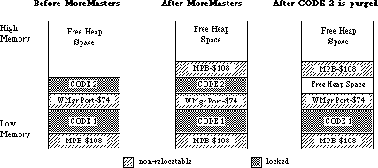
Notice that we now have some heap fragmentation—not serious, but it can be avoided by making all MoreMasters calls in CODE segment 1. Because InitWindows creates the Window Manager Port (WMgrPort), it should also be called from CODE segment 1. Both MoreMasters and InitWindows should be called before another CODE segment is loaded, or the non-relocatable objects they allocate will be put above the CODE segment and you’ll get fragmentation when the CODE segment is purged. If you want to call an initialization segment before calling MoreMasters and InitWindows, make sure that you unload it before you call either routine.
Now that we know when to call MoreMasters, how many times do we call it? The answer depends on your application. If you don’t call MoreMasters enough times, the system will call it when it needs more master pointers. This can happen at very inconvenient times, causing heap fragmentation. If you call MoreMasters too often, you can be wasting valuable memory. This is preferable, however, to allocating too few master pointer blocks!
The number of times you should call MoreMasters can be empirically determined. Once your application is almost finished, remove all MoreMasters calls. Exercise your application as completely as possible, opening windows, using handles, opening desk accessories, etc. You can then go in with a debugger and see how many times the system called MoreMasters. You do that by counting the non-relocatables of size $108. Due to Memory Manager size correction, the master pointer blocks can also have a size of $10C or $110 bytes. You should give yourself about 20% leeway — that is, if the system called MoreMasters 10 times for you, you should call it 12 times. If you’re more cautious, you might want to call MoreMasters 15 times.
Another technique that can save time at initialization is to calculate the number of master pointers you will need, then set the MoreMast files of the heap zone header to that number, and then call MoreMasters once:
PROCEDURE MyMoreMasters(numMastPtrs : INTEGER);
VAR
oldMoreMast : INTEGER; {saved value of MoreMast}
zone : THz; {heap zone}
BEGIN
zone := GetZone; {get the heap zone}
WITH zone^ DO BEGIN
oldMoreMast := MoreMast; {get the old value of MoreMast}
MoreMast := numMastPtrs; {put the value we want in the zone header}
MoreMasters; {allocate the master pointers}
MoreMast := oldMoreMast; {restore the old value of MoreMast}
END;
END;
In MPW C:
void MyMoreMasters(numMastPtrs)
short numMastPtrs;
{ /* MyMoreMasters */
short oldMoreMast; /* saved value of MoreMast*/
THz oZone; /* heap zone*/
oZone = GetZone(); /* get the heap zone*/
oldMoreMast = oZone->moreMast; /* get the old value of MoreMast*/
oZone->moreMast = numMastPtrs; /* put the value we want in the
zone header */
MoreMasters(); /*allocate the master pointers*/
oZone->moreMast = oldMoreMast; /*restore the old value of MoreMast*/
} /* MyMoreMasters */
054: Limit to Size of Resources
#054: Limit to Size of Resources
Written by: Jim Friedlander October 23, 1985
Updated: March 1, 1988
_______________________________________________________________________________
This note formerly described a bug in WriteResource on 64K ROM machines. Information specific to 64K ROM machines has been deleted from Macintosh Technical Notes for reasons of clarity.
055: Drawing Icons
#055: Drawing Icons
See also: QuickDraw
Toolbox Utilities
Written by: Jim Friedlander October 21, 1985
Updated: March 1, 1988
_______________________________________________________________________________
Using resources of type ICON allows drawing of icons in srcOr mode. Using resources of type ICN# allows for more variety when drawing icons.
_______________________________________________________________________________
There are two different kinds of resources that contain icons: ICON and ICN#. An ICON is a 32 by 32 bit image of an icon and can be drawn using the following Toolbox Utilities calls:
MyIconHndl:= GetIcon(iconID);
PlotIcon(destRect,iconID);
While very convenient, this method only allows the drawing of icons in SrcOr mode (as in the MiniFinder). The Finder uses resources of type ICN# to draw icons on the desktop. Because the Finder uses ICN#s, it can draw icons in a variety of ways.
An ICN# resource is a list of 32 by 32 bit images that are grouped together. Common convention has been to group two 32 by 32 bit images together in each ICN#. The first image is the actual icon, the second image is the mask for the icon. To get a handle to an ICN#, we would use something like this:
TYPE
iListHndl = ^iListPtr;
iListPtr = ^iListStruct;
iListStruct = record
icon : packed array[0..31] of Longint;
mask : packed array[0..31] of Longint;
End; {iListStruct}
VAR
myILHndl : iListHndl; {handle to an ICN#}
iBitMap : BitMap; {BitMap for the icon}
mBitMap : BitMap; {BitMap for the mask}
MyILHndl:= iListHndl(GetResource('ICN#',iconID)); if MyILHndl = NIL then HandleError; { and exit or whatever is appropriate}
Once we have a handle to the icons, we need to set up two bitMaps that we will be using later in CopyBits:
SetRect(icnRect,0,0,32,32); { define the icon's 'bounds'}
With iBitMap do Begin
baseAddr:= @MyILHndl^^.icon;
rowbytes:= 4; { 4 * 8 =32}
bounds:= icnRect;
End; {with}
With mBitMap do Begin
baseAddr:= @MyILHndl^^.mask;
rowbytes:= 4;
bounds:= icnRect;
End; {with}
Icons can represent desktop objects that are either selected or not. Folder and volume icons can either be open or not. The object (or the volume it is on) can either be online or offline. The Finder draws icons using all permutations of open, selected and online:
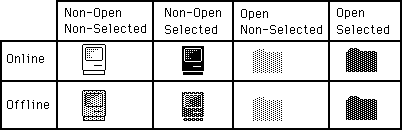
Drawing icons as non-open is basically the same for online and offline volumes. We need to punch a hole in the desktop for the icon. This is analogous to punching a hole in dough with an irregular shaped cookie-cutter. We can then sprinkle jimmies* all over the cookie and they will only stick in the area that we punched out (the mask). We do this by copyBitsing the mask onto the desktop
(whatever pattern) to our destRect. For non-open, non-selected icons, we use the SrcBic mode so that we punch a white hole:
SetRect(destRect,left,top,left+32,top+32);
CopyBits(mBitMap,thePort^.portBits,icnRect,destRect,SrcBic,NIL);
Then we XOR in the icon:
CopyBits(iBitMap,thePort^.portBits,icnRect,destRect,SrcXor,NIL);
That’s all there is to drawing an icon as non-open, non-selected. To draw the icon as non-open, selected, we will OR in the mask, causing a mask-shaped BLACK hole to be punched in the desktop:
CopyBits(mBitMap,thePort^.portBits,icnRect,destRect,SrcOr,NIL);
Then, as before, we XOR in the icon:
CopyBits(iBitMap,thePort^.portBits,icnRect,destRect,SrcXOr,NIL);
To draw icons as non-opened for offline volumes, we need to do a little more work. We need to XOR a ltGray pattern into the boundsRect of the icon. We will then punch the hole, draw the icon and then XOR out the ltgray pattern that does not fall inside the mask. So, to draw the icon as offline, non-open, non-selected we would:
GetPenState(OldPen); {save the pen state so we can restore it}
PenMode(patXor);
PenPat(ltGray);
PaintRect(destRect); {paint a ltGray background for icon}
CopyBits(mBitMap,thePort^.portBits,icnRect,destRect,SrcBic,NIL); {punch}
PaintRect(destRect); {XOR out bits outside of the mask, leaving the mask} {filled with ltGray}
CopyBits(iBitMap,thePort^.portBits,icnRect,destRect,SrcOr,NIL); { OR in } { the icon to the ltGray mask}
SetPenState(OldPen); {restore the old pen state}
To draw the icon as offline, non-open, selected, we would use a similar approach:
GetPenState(OldPen); { save the pen state so we can restore it}
PenMode(patXor);
PenPat(dkGray); { the icon is selected, so we need dkGray }
PaintRect(destRect); { paint a dkGray background for icon }
CopyBits(mBitMap,thePort^.portBits,icnRect,destRect,SrcBic,NIL); {punch}
PaintRect(destRect); {XOR out bits outside of the mask, leaving the mask} {filled with dkGray}
CopyBits(iBitMap,thePort^.portBits,icnRect,destRect,SrcBic,NIL); {BIC the} {icon to the dkGray mask}
SetPenState(OldPen); {restore the old pen state}
Drawing the opened icons requires one less step. We don’’t have to CopyBits the icon in, we just use the mask. Online and offline icons are drawn the same way. To draw icons as open, selected, we do the following:
GetPenState(OldPen); {save the pen state so we can restore it}
PenMode(patXor);
PenPat(dkGray); { the icon is selected, so we need dkGray }
PaintRect(destRect); { paint a dkGray background for icon}
CopyBits(mBitMap,thePort^.portBits,icnRect,destRect,SrcBic,NIL); {punch}
PaintRect(destRect); {XOR out bits outside of the mask, leaving the mask} {filled with dkGray}
SetPenState(OldPen); {restore the old pen state}
To draw icons as open, non-selected, we just need to change one line from above. Instead of XORing with a dkGray pattern, we use a ltGray pattern:
PenPat(ltGray); { the icon is non-selected, so we need ltGray }
These techniques will work on any background, window-white or desktop-gray and all patterns in between. Have fun.
* jimmies : little bits of chocolate
056: Break/CTS Device Driver Event Structure
#056: Break/CTS Device Driver Event Structure
See also: The Device Manager
Serial Drivers
Zilog Z8030/Z8530 SCC Serial Communications
Controller Technical Manual
Written by: Mark Baumwell December 2, 1986
Updated: March 1, 1988
_______________________________________________________________________________
This technical note documents the event record information that gets passed when the serial driver posts an event for a break/CTS status change.
_______________________________________________________________________________
The serial driver can be programmed to post a device driver event upon encountering a break status change or CTS change (via the SerHShake call). The structure of device driver events is driver-specific. This technical note documents the event record information that gets passed when the serial driver posts a device driver event for a break/CTS status change.
When the event is posted, the message field of the event record will be a long word (four bytes). The most significant byte will contain the value of SCC Read Register 0 (see below for the relevant Read Register 0 values). The next byte will contain the changed (since the last interrupt) bits of the SCC read register 0. The lower two bytes (word) will contain the DCtlRefNum.
The values for Read Register 0 are as follows:
• If a break occurred, bit 7 will be set.
• If CTS changed, bit 5 will reflect the state of the CTS pin (0 means the
handshake line is asserted and that it is OK to transmit).
We discourage posting these events because interrupts would be disabled for a long time while the event is being posted. However, it is possible to detect a break or read the value of the CTS line in another way. A break condition will always terminate a serial driver input request (but not an output request), and the error breakRecd (–90) will be returned. (This constant is defined in the SysEqu file.) You could therefore detect a break by checking the returned error code.
The state of the CTS line can be checked by making a SerStatus call and checking the value of the ctsHold flag in the SerStaRec record. See the Serial Drivers chapter of Inside Macintosh for details.
057: Macintosh Plus Overview
#057: Macintosh Plus Overview
See: Inside Macintosh Volume IV
Written by: Scott Knaster January 8, 1986
Updated: March 1, 1988
_______________________________________________________________________________
This note was originally meant as interim Macintosh Plus documentation and has been replaced by Inside Macintosh Volume IV, which is more complete and more accurate.
058: International Utilities Bug
#058: International Utilities Bug
Written by: Jim Friedlander January 24, 1986
Updated: March 1, 1988
_______________________________________________________________________________
This note formerly described a bug in System 2.0, which is now recommended only for use with 64K ROM machines. Information specific to 64K ROM machines has been deleted from Macintosh Technical Notes for reasons of clarity.
059: Pictures and Clip Regions
#059: Pictures and Clip Regions
See also: QuickDraw
Written by: Ginger Jernigan January 16, 1986
Updated: March 1, 1988
_______________________________________________________________________________
This note describes a problem that affects creation of QuickDraw pictures.
_______________________________________________________________________________
When a GrafPort is created, the fields in the GrafPort are given default values; one of these is the clip region, which is set to the rectangle (–32767, –32767, 32767, 32767). If you create a picture, then call DrawPicture with a destination rectangle that is not the same size as the picFrame without ever changing the default clip region, nothing will be drawn.
When the picture frame is compared with the destination rectangle and the picture is scaled, the clip region is scaled too. In the process of scaling, the clip region you end up overflows and becomes empty, and your picture doesn’t get drawn. If you call ClipRect(thePort^.portRect) before you record the picture, the picture will be drawn correctly. The clipping on the destination port when playing back the picture is irrelevant: once a picture is incorrectly recorded, it is too late.
060: Drawing Characters into a Narrow GrafPort
#060: Drawing Characters into a Narrow GrafPort
See also: QuickDraw
Written by: Ginger Jernigan January 20, 1986
Updated: March 1, 1988
_______________________________________________________________________________
When you draw a character into a GrafPort, your program will die with an address error if the width of the GrafPort is smaller than the width of the character. If you check before drawing the character to see if the GrafPort is wide enough, you can avoid this unfortunate tragedy.
061: GetItemStyle Bug
#061: GetItemStyle Bug
Written by: Jim Friedlander January 21, 1986
Updated: March 1, 1988
_______________________________________________________________________________
This note formerly described a bug (in GetItemStyle) which occurs only on 64K ROM machines. Information specific to 64K ROM machines has been deleted from Macintosh Technical Notes for reasons of clarity.
062: Don’t Use Resource Header Application Bytes
#062: Don’t Use Resource Header Application Bytes
See also: The Resource Manager
Written by: Bryan Stearns January 23, 1986
Updated: March 1, 1988
_______________________________________________________________________________
The section of the Resource Manager chapter of Inside Macintosh which describes the internal format of a resource file shows an area of the resource header labeled “available for application data.” You SHOULD NOT use this area—it is used by the Resource Manager.
063: WriteResource Bug Patch
#063: WriteResource Bug Patch
Written by: Rick Blair January 15, 1986
Jim Friedlander
Bryan Stearns
Modified by : Jim Friedlander March 3, 1986
Updated: March 1, 1988
_______________________________________________________________________________
This note formerly contained a patch to fix a bug in WriteResource on 64K ROM machines. Information specific to 64K ROM machines has been deleted from Macintosh Technical Notes for reasons of clarity.
064: IAZNotify
#064: IAZNotify
Written by: Jim Friedlander January 15, 1986
Modified by: Jim Friedlander August 18, 1986
Updated: March 1, 1988
_______________________________________________________________________________
Previous versions of this technical note recommended use of a low memory hook called IAZNotify. We no longer recommend use of IAZNotify, since the IAZNotify hook is never called under MultiFinder.
065: Macintosh Plus Pinouts
#065: Macintosh Plus Pinouts
See also: Macintosh Hardware Reference Manual
Written by: Mark Baumwell January 27, 1986
Modified by: Mark Baumwell March 20, 1986
Updated: March 1, 1988
_______________________________________________________________________________
This note gives pinout descriptions for some of the Macintosh Plus ports and Macintosh Plus cables that are different than the Macintosh 128K and 512K.
_______________________________________________________________________________
Below are pinout descriptions for some Macintosh Plus ports and cables that are different than the Macintosh 128K and 512K. Note that any unconnected pins are omitted.
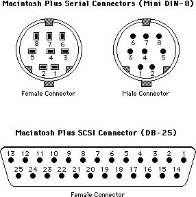
Macintosh Plus Port Pinouts
Macintosh Plus Serial Connectors (Mini DIN-8)
Pin Name Description/Notes
1 HSKo Output Handshake (from Zilog 8530 DTR pin)
2 HSKi/ Clock Input Handshake (CTS) or TRxC (depends on 8530 mode)
External
3 TxD– Transmit Data line
4 Ground
5 RxD– Receive Data line
6 TxD+ Transmit Data line
7 Not connected
8 RxD+ Receive Data line; ground this line to emulate RS232
Macintosh Plus SCSI Connector (DB-25)
Pin Name Description/Notes
1 REQ–
2 MSG–
3 I/O–
4 RST–
5 ACK–
6 BSY–
7 Ground
8 DB0–
9 Ground
10 DB3–
11 DB5–
12 DB6–
13 DB7–
14 Ground
15 C/D–
16 Ground
17 ATN–
18 Ground
19 SEL–
20 DBP–
21 DB1–
22 DB2–
23 DB4–
24 Ground
25 TPWR Not connected
Macintosh Plus Cable Pinouts
Apple System Peripheral-8 Cable (connects Macintosh Plus to ImageWriter II and Apple Personal Modem )
(Product part number: M0187)
(Cable assembly part number: 590-0340-A (stamped on cable itself).
( DIN-8 ) ( DIN-8 )
1 2
2 1
3 5
4 4
5 3
6 8
7 7
8 6
Macintosh Plus Adapter Cable (connects Macintosh Plus DIN-8 to existing Macintosh DB-9 cables)
(Apple part number: M0189)
(Cable assembly part number: 590-0341-A (stamped on cable itself).
( DIN-8 ) Name (DB-9) Notes
1 +12V 6
2 HSK 7
3 TxD– 5
4 Ground 3 Jumpered to DB-9 pin 1 (in DB-9 connector)
5 RxD– 9
6 TxD+ 4
7 no wire
8 RxD+ 8
Ground 1 Jumpered to DB-9 pin 3 (in DB-9 connector)
066: Determining Which File System is Active
#066: Determining Which File System Is Active
Revised by: Robert Lenoil & Brian Bechtel August 1990
Written by: Jim Friedlander December 1985
This Technical Note discusses how to determine which file system a particular volume is running.
Changes since June 1990: Removed text about IDs $0001-$0016 being AppleShare volumes; other file systems use this range too.
_______________________________________________________________________________
Under certain circumstances it is necessary to determine which file system is currently running on a particular volume. For example, on a 64K ROM machine, your application (i.e., especially disk recovery utilities or disk editors,
etc.) may need to check for MFS versus HFS. Note that this is usually not necessary, because all ROMs, except the original 64K ROMs, include HFS. If your application only runs on 128K ROMs or newer, you do not need to check for HFS versus MFS. You may need to check if a particular volume is in High Sierra, ISO 9660, or audio CD format.
Before performing these file system checks, be sure to call _SysEnvirons, to make sure the machine on which you are running has ROMs which know about the calls you need.
To check for HFS on 64K ROM machines, check the low-memory global FSFCBLen (at location $3F6). This global is one word in length (two bytes) and is equal to
-1 if MFS is active and a positive number (currently $5E) if HFS is active. From Pascal, the following would perform the check:
CONST
FSFCBLen = $3F6; {address of the low-memory global}
VAR
HFS: ^INTEGER;
...
HFS:= POINTER(FSFCBLen);
IF HFS^ > 0 THEN
{we’re running HFS}
ELSE
{we’re running MFS}
END;
If an application determines that it is running under HFS, it should not assume that all mounted volumes are HFS. To check individual volumes for HFS, call
_PBHGetVInfo and check the directory signature (the ioVSigWord field of an HParamBlockRec). A directory signature of $D2D7 means the volume is an MFS volume, while a directory signature of $4244 means the volume is an HFS volume.
To find out if a volume uses a file system other than HFS or MFS, call
_PBHGetVInfo and check the file system ID (the ioVFSID field of an HParamBlockRec). A file system ID of $0000 means the volume is either HFS or MFS. A file system ID of $4242 means the volume is a High Sierra volume, while a file system ID of $4147 is an ISO 9660 volume, and a file system ID of $4A48 is an audio CD volume. AppleShare and other file systems use a dynamic technique of obtaining the first unused file system ID; therefore, low-numbered IDs cannot be associated with any particular file system.
When dealing with High Sierra and ISO 9660 formats, do not assume that the volumes are CD-ROM discs. Support for these file systems is done with the External File System hook in the File Manager, so any block-based media could potentially be in these formats. It is possible to have a High Sierra formatted floppy disk, although it would be useless except for testing purposes.
Further Reference:
_______________________________________________________________________________
• Inside Macintosh, Volume IV, File Manager
• Technical Note #129, _SysEnvirons: System 6.0 and Beyond
• Technical Note #209, High Sierra & ISO 9660 CD-ROM Formats
067: Finding the “Blessed Folder”
#067: Finding the “Blessed Folder”
See also: Technical Note #129 — SysEnvirons
Written by: Jim Friedlander January 18, 1986
Updated: March 1, 1988
_______________________________________________________________________________
This technical note describes how to determine which folder on an HFS volume is the blessed folder, that is, the folder that contains both the System file and the Finder.
_______________________________________________________________________________
Knowing which folder on an HFS disk contains the System file and Finder can be very useful information. This is available from SysEnvirons, discussed in Technical Note #129. Sometimes it is also useful to find the blessed folder on HFS volumes other than the one containing the currently open System file.
Finding the blessed folder on one of these volumes is quite simple—it is accomplished with a call to PBHGetVInfo.
FUNCTION GetBlessed(vRefNum: INTEGER; VAR blessed: LONGINT): OSErr;
VAR
myHPB: HParamBlockRec;
error: OSErr;
BEGIN
blessed := 0;
WITH myHPB DO BEGIN
ioNamePtr:= NIL;
ioVRefNum:= vRefNum; {get for default volume}
ioVolIndex:= 0; {we’re not making indexed calls}
error := PBHGetVInfo(@myHPB, FALSE);
IF error = noErr THEN
blessed := ioVFndrInfo[1];
END; {WITH}
GetBlessed := error;
END;
The dirID of the blessed folder is myHPB.ioVFndrInfo[1]. If myHPB.ioVFndrInfo[1] is 0, it means that there is no “blessed folder” (or it is an MFS volume). If myHPB.ioVFndrInfo[1] is 2 (fsRtDirID), it means that the System file and Finder are at the root level. myHPB.ioVFndrInfo[2] is the dirID of the startup application.
Note that the above routine will not work on machines without HFS, since they have no PBHGetVInfo call, and the ioVFndrInfo field does not exist in the PBGetVInfo call.
068: Searching Volumes—Solutions and Problems
#068: Searching Volumes—Solutions and Problems
Revised by: Jim Luther January 1992
Written by: Jim Friedlander and Rick Blair December 1985 – October 1988
This Technical Note discusses the PBCatSearch function and tells why it should be used. It also provides simple algorithms for searching both MFS and HFS volumes and discusses the problems with indexed search routines.
Changes since October 1988: Includes information on PBCatSearch and notes the problems with indexed search routines. Source code examples have been added and revised. Thanks to John Norstad at Northwestern University for pointing out some of the shortcomings of the indexed search routines. Thanks to the System 7 engineering team for adding PBCatSearch.
_______________________________________________________________________________
It may be necessary to search the volume hierarchy for files or directories with specific characteristics. Generally speaking, your application should avoid searching entire volumes because searching can be a very time-consuming process on a large volume. Your application should rely instead on files being in specific directories (the same directory as the application, or in one of the system-related folders that can be found with FindFolder) or on having the user find files with Standard File.
Searching MFS Volumes
Under MFS, indexed calls to PBGetFInfo return information about all files on a given volume. Under HFS, the same technique returns information only about files in the current directory. Here’s a short code snippet showing how to use PBGetFInfo to list all files on an MFS volume:
PROCEDURE EnumMFS (theVRefNum: Integer);
{ search the MFS volume specified by theVRefNum }
VAR
pb: ParamBlockRec;
itemName: Str255;
index: Integer;
err: OSErr;
BEGIN
WITH pb DO
BEGIN
ioNamePtr := @itemName;
ioVRefNum := theVRefNum;
ioFVersNum := 0;
END;
index := 1;
REPEAT
pb.ioFDirIndex := index;
err := PBGetFInfoSync(@pb);
IF err = noErr THEN
BEGIN
{ do something useful with the file information in pb }
END;
index := index + 1;
UNTIL err <> noErr;
END;
As noted in Macintosh Technical Note #66, a directory signature of $D2D7 means a volume is an MFS volume, while a directory signature of $4244 means the volume is an HFS volume.
Searching HFS Volumes
Fast, Reliable Searches Using PBCatSearch
The fastest and most reliable way to search an HFS volume’s catalog is with the File Manager’s PBCatSearch function. PBCatSearch returns a list of FSSpec records to files or directories that match the search criteria specified by your application. However, PBCatSearch is not available on all volumes or under all versions of the File Manager. Volumes that support PBCatSearch can be identified using the PBHGetVolParms function. (See the following code.) Versions of the File Manager that support PBCatSearch can be identified with the gestaltFSAttr Gestalt selector and gestaltFullExtFSDispatching bit as shown in the following code:
FUNCTION HasCatSearch (vRefNum: Integer): Boolean;
{ See if volume specified by vRefNum supports PBCatSearch }
VAR
pb: HParamBlockRec;
infoBuffer: GetVolParmsInfoBuffer;
attrib: LongInt;
BEGIN
HasCatSearch := FALSE; { default to no PBCatSearch support }
IF GestaltAvailable THEN { See Inside Macintosh Volume VI, Chapter 3 }
IF Gestalt(gestaltFSAttr, attrib) = noErr THEN
IF BTst(attrib, gestaltFullExtFSDispatching) THEN
BEGIN { this version of the File Manager can call PBCatSearch }
WITH pb DO
BEGIN
ioNamePtr := NIL;
ioVRefNum := vRefNum;
ioBuffer := @infoBuffer;
ioReqCount := sizeof(infoBuffer);
END;
IF PBHGetVolParmsSync(@pb) = noErr THEN
IF BTST(infoBuffer.vMAttrib, bHasCatSearch) THEN
HasCatSearch := TRUE; { volume supports PBCatSearch }
END;
END;
Note: File servers that support the AppleTalk Filing Protocol (AFP) version 2.1 support PBCatSearch. That includes volumes and directories shared by System 7 File Sharing and by the AppleShare 3.0 file server. Although AFP version 2.1 supports PBCatSearch, the fsSBNegate bit is not supported in the ioSearchBits field. Using PBCatSearch to ask the file server to perform the search is usually faster than using the recursive indexed search described in the next section.
PBCatSearch should be used if it is available because it is usually much faster than a recursive search. For example, the search time for finding all files and directories on a recent Developer CD was around 18 seconds with PBCatSearch. It took 6 minutes and 36 seconds with a recursive indexed search. How long do you want the users of your application to wait?
PBCatSearch can be used to collect a list of FSSpec records to all items on a volume by setting ioSearchBits in the parameter block to 0.
Recursive Indexed Searches Using PBGetCatInfo
When PBCatSearch is not available, an application must resort to a recursive indexed search. There are a couple of potential problems with a recursive indexed search; a recursive indexed search can use up a lot of stack space and the volume directory structure can change in the multi-user/multiprocess Macintosh environment. The example code in this note addresses the stack space problem, but for reasons explained later, does not address problems caused by multiple users or processes changing the volume directory structure during a recursive search.
The default stack space on the Macintosh can be as small as 8K; therefore, the recursive indexed search example shown in this Note encloses the actual recursive routine in a shell that can hold most of the variables needed, which dramatically reduces the size of the stack frame. This example uses only 26 bytes of stack space each time the routine recurses. That is, it could search 100 levels deep (pretty unlikely) and use only 2600 bytes of stack space.
Please notice that when the routine comes back from recursing, it has to clear the nonlocal variable err to noErr, since the reason the routine came back from recursing is that PBGetCatInfo returned an error:
EnumerateCatalog(myCPB.ioDrDirID);
err := noErr; {clear error return on way back}
Please notice also that you must set myCPB.ioDrDirId each time you call PBGetCatInfo, because if PBGetCatInfo gets information about a file, it returns ioFlNum (the file number) in the same location that ioDrDirID previously occupied.
Be sure to check bit 4, the fifth least significant bit, when you check the file attributes bit to see if you’ve got a file or a folder. The following routine uses MPW Pascal’s BTST function to check that bit. If you use the Toolbox bit manipulation routines (e.g., BitTst), remember to order the bits in reverse order from standard 68000 notation.
Here is the routine in MPW Pascal:
PROCEDURE EnumerShell (vRefNumToSearch: Integer; { the vRefNum to search}
dirIDToSearch: LongInt); { the dirID to search }
VAR
itemName: Str63;
myCPB: CInfoPBRec;
err: OSErr;
{-----}
PROCEDURE EnumerateCatalog (dirIDToSearch: LongInt);
CONST
ioDirFlgBit = 4;
VAR
index: Integer;
BEGIN { EnumerateCatalog }
index := 1;
REPEAT
WITH myCBP DO
BEGIN
ioFDirIndex := index;
ioDrDirID := dirIDToSearch; { we need to do this every }
{ time through }
filler2 := 0; { Clear the ioACUser byte if search is }
{ interested in it. Nonserver volumes }
{ won't clear it for you and the value }
{ returned is meaningless. }
END;
err := PBGetCatInfo(@myCPB, FALSE);
IF err = noErr THEN
IF BTST(myCPB.ioFlAttrib, ioDirFlgBit) THEN
BEGIN { we have a directory }
{ do something useful with the directory information }
{ in myCPB }
EnumerateCatalog(myCPB.ioDrDirID);
err := noErr; {clear error return on way back}
END
ELSE
BEGIN { we have a file }
{ do something useful with the file information }
{ in myCPB }
END;
index := index + 1;
UNTIL (err <> noErr);
END; { EnumerateCatalog }
{-----}
BEGIN { EnumerShell }
WITH myCPB DO
BEGIN
ioNamePtr := @itemName;
ioVRefNum := vRefNumToSearch;
END;
EnumerateCatalog(dirIDToSearch);
END; { EnumerShell }
In MPW C:
/* the following variables are globals */
HFileInfo gMyCPB; /* for the PBGetCatInfo call */
Str63 gItemName; /* place to hold file name */
OSErr gErr; /* the usual */
/*---------------------------------------------------------------------*/
void EnumerateCatalog (long int dirIDToSearch)
{ /* EnumerateCatalog */
short int index=1;
do
{
gMyCPB.ioFDirIndex= index;
gMyCPB.ioDirID= dirIDToSearch; /* we need to do this every time */
/* through, since GetCatInfo */
/* returns ioFlNum in this field */
gMyCPB.filler2= 0; /* Clear the ioACUser byte if search is */
/* interested in it. Nonserver volumes won't */
/* clear it for you and the value returned is */
/* meaningless. */
gErr= PBGetCatInfo(&gMyCPB,false);
if (gErr == noErr)
{
if ((gMyCPB.ioFlAttrib & ioDirMask) != 0)
{ /* we have a directory */
/* do something useful with the directory information */
/* in gMyCPB */
EnumerateCatalog(gMyCPB.ioDirID); /* recurse */
gErr = noErr; /* clear error return on way back */
}
else
{ /* we have a file */
/* do something useful with the file information */
/* in gMyCPB */
}
}
++index;
} while (gErr == noErr);
} /* EnumerateCatalog */
/*---------------------------------------------------------------------*/
EnumerShell(short int vRefNumToSearch, long int dirIDToSearch)
{ /* EnumerShell */
gMyCPB.ioNamePtr = gItemName;
gMyCPB.ioVRefNum = vRefNumToSearch;
EnumerateCatalog(dirIDToSearch);
} /* EnumerShell */
Please make sure that you are running under HFS before you use this routine (see Technical Note #66). You can search the entire volume by specifying a starting directory ID of fsRtDirID, the root directory constant. You can do partial searches of a volume by specifying a starting directory ID other than fsRtDirID.
Searching in a Multi-user/Multiprocess Environment
Volumes can be shared by multiple users accessing a file server or multiple processes running on a single Macintosh. Each user or process with access to such a shared volume may be able to make changes to the volume’s catalog at any time. Changes in a volume’s catalog in the middle of a search can cause two problems:
• Files and directories renamed or moved by another user or process can be entirely missed or found multiple times by a search routine.
• A search routine can easily lose track of its position within the hierarchical directory structure when files or directories are created, deleted, or renamed by another user or process.
A volume searched with a single call to PBCatSearch ensures that all parts of the volume are searched without another user or process changing the volume’s catalog. However, a single call to PBCatSearch may not be possible or practical because of the number of matches you expect, or because you may want to set a time limit on the search so that the user can cancel a long search. PBCatSearch returns a catChangedErr (–1304) and no matches when the catalog of a volume is changed by another user or process in a way that might affect the current search. The search can be continued with the CatPositionRec returned with the catChangedErr error, but at the risk of missing catalog entries or finding duplicate catalog entries.
Things aren’t so nice for search routines based on indexed File Manager calls. The File Manager won’t notify you when a volume’s catalog has changed. In fact, there are several ways the catalog can change that are very difficult to detect and correct for. Since methods that attempt to resynchronize an indexed search and find all catalog entries that might be missed or found multiple times when the catalog changes do not work for all cases, those methods are not discussed in this Technical Note. The following paragraphs describe why some changes are very difficult to detect.
There are three changes you can make to the contents of a directory that change the list of files and directories returned by an indexed search: creating, deleting, and renaming. Directories of an HFS volume are always sorted alphabetically, so when a file or subdirectory is deleted from a directory, any directory entries after it bubbles up to fill the vacated entry position; when a file or subdirectory is created, it is inserted into the list and all entries after it bubbles down one position. When a file or subdirectory is renamed, it is removed from its current position and moved into its alphabetically correct position. The first two changes, creating and deleting, can be detected only at the parent directory level. That’s because a creation or deletion changes only the modification date of the parent directory but not the modification date of any of the parent directory’s ancestors. Renaming a file or subdirectory does not change the modification date of the file or subdirectory renamed or the modification date its parent directory, but it does change the order of files and subdirectories found by an indexed search.
With this in mind, here are a couple of examples that are very difficult to detect.
The first example shows a file, Dashboard, moved (by another user or process) with PBCatMove from the CDevs subdirectory to the Control Panels subdirectory. (See figures 1 and 2.) At the time of the move, the search routine has just finished recursively looking through the Development directory and is ready to recursively search the Games directory. After the move, two directories, CDevs and Control Panels, have new modification dates but no change is seen at the root directory of My Disk. There is nothing to immediately tell the search routine something has changed (except for the volume modification date which may or may not mean the directory structure has changed), so the search will see Dashboard twice. If the move were in the opposite direction, from Control Panels to CDevs, Dashboard would be missed by the search routine.
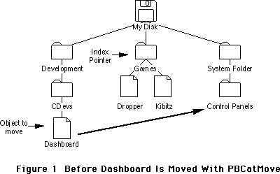
Figure 1 Before Dashboard Is Moved With PBCatMove
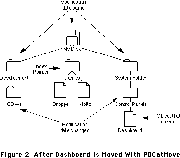
Figure 2 After Dashboard Is Moved With PBCatMove
The second example (see Figures 3 and 4) shows a directory, Toys, renamed (by another user or process) with PBHRename to Games. At the time of the move, the search routine has seen the files Aardvark and Letter and is looking at the third object in the directory, the file Résumé. After the move, the index pointer is still pointing at the third object but now the third object is the file Letter, a file that has already been seen by the search. This change cannot be detected by looking at the parent directory’s modification date because PBHRename does not change any modification dates. However, this change can be detected by checking to see if the index pointer still points to the same file or directory. The search routine could re-index through the directory to find the Résumé file again and start searching from there, but what about the directory that was renamed? The search routine either must miss it (and its contents) or it must repeat the search of the entire directory to ensure nothing is missed.
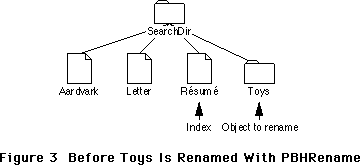
Figure 3 Before Toys Is Renamed With PBHRename
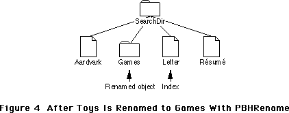
Figure 4 After Toys Is Renamed to Games With PBHRename
As these examples show, a change during a search of a hierarchical directory structure with indexed File Manager calls involves the risk of missing catalog entries or finding duplicate catalog entries. If your application depends on seeing all items on a volume at least once and only once, you should make the users of your application aware of the problems associated with indexed searches and suggest to them ways to make sure the volume’s catalog is not changed during the indexed search. Here’s a good suggestion you could make to the user: do not use other programs during the search. Other programs may create, delete, or rename files during the search.
Conclusion
You should always use PBCatSearch to search a volume if it is available. If PBCatSearch isn’t available and you must use an indexed search, be aware that it is difficult to ensure that you do not miss some catalog entries or see some catalog entries multiple times during your search.
Further Reference:
_______________________________________________________________________________
• Inside Macintosh, Volume IV, The File Manager
• Inside Macintosh, Volume V, File Manager Extensions in a Shared Environment
• Inside Macintosh, Volume VI, The Finder Interface
• Inside Macintosh, Volume VI, The File Manager
• Technical Note #66, Determining Which File System Is Active
• Technical Note #305, PBShare, PBUnshare, and PBGetUGEntry
069: Setting ioFDirIndex in PBGetCatInfo Calls
#069: Setting ioFDirIndex in PBGetCatInfo Calls
See also: The File Manager
Technical Note #24 — Available Volumes and Files
Technical Note #67 — Finding the Blessed Folder
Written by: Jim Friedlander February 15, 1986
Updated: March 1, 1988
_______________________________________________________________________________
This technical note describes how to set ioFDirIndex for PBGetCatInfo.
_______________________________________________________________________________
The File Manager chapter of Inside Macintosh volume IV is not very specific in describing how to use ioFDirIndex when calling PBGetCatInfo. It correctly says that ioFDirIndex should be positive if you are making indexed calls to PBGetCatInfo (analogous to making indexed calls to PBGetVInfo as described in Technical Note #24). However, the statement “If ioFDirIndex is negative or 0, the File Manager returns information about the file having the name in ioNamePtr...” is not specific enough.
If ioFDirIndex is 0, you will get information about files or directories, depending on what is specified by ioNamePtr^.
If ioFDirIndex is –1, you will get information about directories only. The name in ioNamePtr^ is ignored.
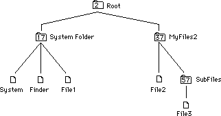
Calling PBGetCatInfo
We will now make calls to PBGetCatInfo of the form:
err:= PBGetCatInfo(@myCInfoPBRec,FALSE);
Note: We will assume that we just have a WDRefnum and a file name—the information that SFGetFile returns.
Setting up the parameter block
We will use the following fields in the parameter block. Before the call, ioCompletion will always be set to NIL, ioNamePtr will always point at a str255, ioVRefNum will always contain a WDRefNum that references the directory 'SubFiles', and offset 48 (dirID/flNum) will always contain a zero:
Offset in
parameter block Variable name(s)
12 ioCompletion
18 ioNamePtr
22 ioVRefNum
28 ioFDirIndex
48 ioDirID/ioFLNum/ioDrDirID
100 ioDrParID/ioFlParID
Sample calls to PBGetCatInfo
The first example will call PBGetCatInfo for the file 'File3'—we will get information about the file (ioFDirIndex = 0):
Before the call After the call
ioNamePtr^: 'File3' ioNamePtr^: 'File3'
ioFDirIndex: 0 Offset 48(ioFLNum): a file number
Offset 100(parID): 57
Now we will get information about the directory that is specified by the iovRefNum (ioFDirIndex = –1). Notice that ioNamePtr^ is ignored:
Before the call After the call
ioNamePtr^: ignored ioNamePtr^: 'SubFiles'
ioFDirIndex: –1 Offset 48(dirID): 57
Offset 100(parID): 37
Notice that, since ioNamePtr^ is ignored, Offset 48 contains the dirID of the directory specified by the iovRefNum that we passed in and that Offset 100 contains the parent ID of that directory.
Notice that if we try to get information about the directory SubFiles by calling PBGetCatInfo with ioFDirIndex set to 0, we will get an error –43 (File not found error) back because there is neither a file nor a directory with the name 'SubFiles' in the directory that ioVRefNum refers to.
If you specify a full pathname in ioNamePtr^, then the call returns information about that path, whether it is a directory or a file. The ioVRefNum is ignored:
Before the call After the call
ioNamePtr^: 'Root:Sys' ioNamePtr^: 'Root:Sys'
ioFDirIndex: 0 Offset 48 (dirID): 17
ioVRefNum: refers to 'SubFiles' Offset 100 (parID): 2
Or, if the full pathname specifies a file, the iovRefNum is overridden:
Before the call After the call
ioNamePtr^: 'Root:Sys:Finder' ioNamePtr^: 'Root:Sys:Finder'
ioFDirIndex: 0 Offset 48 (flNum): fileNumber
ioVRefNum: refers to 'SubFiles' Offset 100 (parID): 17
Or, given an ioVRefNum that refers to MyFiles2 and a partial pathname in ioNamePtr^, we’ll get information about the directory 'SubFiles':
Before the call After the call
ioNamePtr^: 'SubFiles' ioNamePtr^: 'SubFiles'
ioFDirIndex: 0 Offset 48 (dirID): 57
ioVRefNum: refers to 'MyFiles2' Offset 100 (parID): 37
PBGetCatInfo and The Poor Man’s Search Path (PMSP)
If no ioDirID is specified (ioDirID is set to zero), calls to PBGetCatInfo will return information about a file in the specified directory, but, if no such file is found, will continue searching down the Poor Man’s Search Path. Note: the PMSP is not used if ioFDirIndex is non-zero ( either –1 or >0). The default PMSP includes the directory specified by ioVRefNum (or, if ioVRefNum is 0, the default directory) and the directory that contains the System File and the Finder—the blessed folder. So for example:
Before the call After the call
ioNamePtr^: 'System' ioNamePtr^: 'System'
ioFDirIndex: 0 Offset 48 (ioFLNum): a file number
Offset 100 (parID): 17
You must be careful when using PBGetCatInfo in this way to make sure that the file you’re getting information about is in the directory that you think it is, and not in a
directory further down the Poor Man’s Search Path. Of course, this does not present a problem if you are using the fName and the vRefNum that SFGetFile returns.
If you want to specifically look at a file in the blessed folder, please use the technique described in technical note #67 to get the dirID of the 'blessed folder' and then use that dirID as input in the ioDirID field of the parameter block (offset 48).
Summary (DirID = 0 in all the following):
If ioFDirIndex is set to 0:
1) Information will be returned about files.
2) Information will be returned about directories as follows:
A) If a partial pathname is specified by ioNamePtr^ then the volume
and directory will be taken from ioVRefNum.
B) If a full pathname is specified by ioNamePtr^. In this case,
ioVRefNum is ignored.
If ioFDirIndex is set to –1:
1) Only information about directories will be returned.
2) The name pointed to by ioNamePtr is ignored.
3) If DirID and ioVRefNum are 0, you’ll get information about the
default directory.
070: Forcing Disks to be Either 400K or 800K
#070: Forcing Disks to be Either 400K or 800K
See also: The Disk Driver
The Disk Initialization Package
Written by: Rick Blair February 13, 1986
Updated: March 1, 1988
_______________________________________________________________________________
This document explains how to initialize a disk as either single- or double- sided. It only applies to 800K drives, of course.
_______________________________________________________________________________
You can call the disk driver to initialize a disk and determine programmatically whether it should be initialized as single - (MFS) or double - (HFS) sided. All you have to do is call the .Sony driver directly to do the formatting then the Disk Initialization Package to write the directory information.
NOTE: This is not the way you should normally format disks within an application. If the user puts in an unformatted disk, you should let her or him decide whether it becomes single- or double-sided via the Disk Initialization dialog. This automatically happens when you call DIBadMount or the user inserts a disk while in Standard File. The intent of this technical note is to provide a means for specific applications to produce, say, 400K disks. An example might be a production disk copying program.
From MPW Pascal:
VAR
error: OSErr;
IPtr: ^INTEGER;
paramBlock: ParamBlockRec; {needs OSIntf}
...
WITH paramBlock DO BEGIN
ioRefNum := -5; {.Sony driver}
ioVRefNum := 1; {drive number}
csCode := 6; {format control code}
IPtr:=@csParam; {pretend it's an INTEGER}
IPtr^:=1; {number of sides}
END;
error:=PBControl(@paramBlock, FALSE); {do the call}
IF error=ControlErr THEN
{you are under MFS, which doesn't support control code 6, but it}
{would always get formatted single-sided anyway.}
{other errors are possible: ioErr, etc.}
END;
From MPW C:
OSErr error;
CntrlParam paramBlock;
paramBlock.ioCRefNum = -5; /*.Sony driver*/
paramBlock.ioVRefNum = 1; /*drive number*/
paramBlock.csCode = 6; /*format control code*/
paramBlock.csParam[0]=1; /*for single sided,2 for double-sided*/
error=PBControl(¶mBlock, false);/*do the call*/
if (error==controlErr) ;
/*you are under MFS, which doesn't support control code 6, but it*/
/*would always get formatted single-sided anyway.*/
/*other errors are possible: ioErr, etc.*/
You then call DIZero to write a standard (MFS or HFS) directory. It will produce MFS if you formatted it single-sided, and HFS if you formatted
double-sided.
071: Finding Drivers in the Unit Table
#071: Finding Drivers in the Unit Table
See also: The Device Manager
Written by: Rick Blair February 4, 1986
Updated: March 1, 1988
_______________________________________________________________________________
This note will explain how code can be written to determine the reference number of a previously installed driver when only the name is known.
Changes since 2/86: Since the driver can be purged and the DCE still be allocated, the code now tests for dCtlDriver being NIL as well.
_______________________________________________________________________________
You should already be familiar with The Device Manager chapter of Inside Macintosh before reading this technical note.
The Pascal code at the end of this note demonstrates how to obtain the reference number of a driver that has been installed in the Unit Table. The reference number may then be used in subsequent calls to the Device Manager such as Open, Control and Prime.
One thing to note is that the dRAMBased bit really only tells you whether dCtlDriver is a pointer or a handle, not necessarily whether the driver is in ROM or RAM. SCSI drivers, for instance, are in RAM but not relocatable; their DCE entries contain pointers to them.
From MPW Pascal:
PROCEDURE GetDrvrRefNum(driverName: Str255; VAR drvrRefNum: INTEGER);
TYPE
WordPtr = ^INTEGER;
CONST
UTableBase = $11C; {low memory globals}
UnitNtryCnt = $1D2;
dRAMBased = 6; {bit in dCtlFlags that indicates ROM/RAM}
drvrName = $12; {length byte and name of driver [string]}
VAR
negCount : INTEGER;
DCEH : DCtlHandle;
drivePtr : Ptr;
s : Str255;
BEGIN
UprString(driverName, FALSE); {force same case for compare}
negCount := - WordPtr(UnitNtryCnt)^; {get -(table size)}
{Check to see that driver is installed, obtain refNum.}
{Assumes that an Open was done previously -- probably by an INIT.}
{Driver doesn't have to be open now, though.}
drvrRefNum := - 12 + 1; {we'll start with driver refnum = -12,
right after .ATP entry}
{Look through unit table until we find the driver or reach the end.}
REPEAT
drvrRefNum := drvrRefNum - 1; {bump to next refnum}
DCEH := GetDCtlEntry(drvrRefNum); {get handle to DCE}
s := ''; {no driver, no name}
IF DCEH <> NIL THEN
WITH DCEH^^ DO BEGIN {this is safe -- no chance of heap moving
before dCtlFlags/dCtlDriver references}
IF (dCtlDriver <> NIL) THEN BEGIN
IF BTST(dCtlFlags, dRAMBased) THEN
drivePtr := Handle(dCtlDriver)^ {zee deréference}
ELSE
drivePtr := Ptr(dCtlDriver);
IF drivePtr <> NIL THEN BEGIN
s := StringPtr(ORD4(drivePtr) + drvrName)^;
UprString(s,FALSE); {force same case for compare}
END;
END; {IF}
END; {WITH}
UNTIL (s = driverName) OR (drvrRefNum = negCount);
{Loop until we find it or we've just looked at the last slot.}
IF s <> driverName THEN drvrRefNum := 0; {can't find driver}
END;
From MPW C:
short GetDrvrRefNum(driverName)
char *driverName[256];
{ /* GetDrvrRefNum */
#define UnitNtryCnt 0x1d2
/*bit in dCtlFlags that indicates ROM/RAM*/
#define dRAMBased 6
/*length byte and name of driver [string]*/
#define drvrName 0x12
short negCount,dRef;
DCtlHandle DCEH;
char *drivePtr,*s;
negCount = -*(short *)(UnitNtryCnt); /*get -(table size)*/
/*Check to see that driver is installed, obtain refNum.*/
/*Assumes that an Open was done previously -- probably by an INIT.*/
/*Driver doesn't have to be open now, though.*/
dRef = -12 + 1; /*we'll start with driver refnum == -12,
right after .ATP entry*/
/*Look through unit table until we find the driver or reach the end.*/
do
{
dRef -= 1; /*bump to next refnum*/
DCEH = GetDCtlEntry(dRef); /*get handle to DCE*/
s = "";
if ((DCEH != nil) && ( (**DCEH).dCtlDriver != nil) )
{
if (((**DCEH).dCtlFlags >> dRAMBased) & 1)
/* test dRamBased bit */
drivePtr = *(Handle) (**DCEH).dCtlDriver;
/*zee deréference*/
else
drivePtr = (**DCEH).dCtlDriver;
if (drivePtr != nil)
s = drivePtr + drvrName;
}
} while (EqualString(s,driverName,0,0) && (dRef != negCount));
/*Loop until we find it or we've just looked at the last slot.*/
if (EqualString(s,driverName,0,0))
return dRef;
else
return 0; /*can't find driver*/
}/* GetDrvrRefNum */
That’s all there is to locating a driver and picking up the reference number.
072: Optimizing for the LaserWriter — Techniques
#072: Optimizing For The LaserWriter—Techniques
Revised by: Pete “Luke” Alexander October 1990
Written by: Ginger Jernigan February 1986
This Technical Note discusses techniques for optimizing code for printing on the LaserWriter.
Changes since March 1988: Updated the “Printable Paper Area” and “Memory Considerations” sections as well as the printer IDs, moved the error messages from the end of the Note to Technical Note #161, A Printing Loop That Cares…, and removed the “Spool-A-Page/Print-A-Page” section because Technical Note #125, Effect of Spool-A-Page/Print-A-Page on Shared Printers, already thoroughly covers this topic.
_______________________________________________________________________________
Introduction
Although the Printing Manager was originally designed to allow application code to be printer independent, there are some things about the LaserWriter that, in some cases, have to be addressed in a printer dependent way. This Note describes what the LaserWriter can and cannot do, memory considerations, speed considerations, as well as other things you need to watch out for if you want to make your printing more efficient on the LaserWriter.
How To Determine The Currently Selected Printer
With the addition of new picture comments and the PrGeneral procedure, an application should never need to know the type of device to which it is connected. However, some developers feel their application should be able to take advantage of all of the features provided by a particular device, not just those provided by the Printing Manager, and in doing so, these developers produce device-dependent applications, which can produce unpredictable results third-party and new Apple printing devices. For this reason, Apple strongly recommends that you use only the features provided by the Printing Manager, and do not try to use unsupported device features.
Even though there is no supported method for determining a device’s type, there is one method described in the original Inside Macintosh that still works for ImageWriter and LaserWriter printer drivers. This method is not supported, meaning that at some point in the future it will no longer work. If you use this method in your application, it is up to you to weigh the value of the feature against the compatibility risk. The following method works for all ImageWriter, ImageWriter II, and LaserWriter (original, Plus, IInt, IIntx) drivers. Since all new devices released from Apple and third-party developers have their own unique ID, it is up to you to decide what to do with an ID that your application does not recognize.
If you are using the high-level Printing Manager interface, first call PrValidate to make sure you have the correct print record. Look at the high byte of the wdev word in the TPrStl subrecord of the print record. Note that if you have your own driver and want to have your own number, please let DTS know, and DTS can register it.
Following is the current list of printer IDs:
Printer wDev
_______________________________________________
ImageWriter I, ImageWriter II 1
LaserWriter, LaserWriter Plus,
LaserWriter IInt, LaserWriter IIntx, and
Personal LaserWriter nt 3
LaserWriter IIsc, Personal LaserWriter sc 4
ImageWriter LQ 5
_______________________________________________
If you are using the low-level Printing Manager interface, there is no dependable way of getting the wDev information. You should not attempt to determine the device ID when using the low-level Printing Manager interface.
Using QuickDraw With the LaserWriter
When you print to the LaserWriter, all of the QuickDraw calls you make are translated (via QuickDraw bottlenecks) into PostScript®, which is in the LaserWriter ROM. Most of the operations available in QuickDraw are available in PostScript, with a few exceptions. The LaserWriter driver does not support the following:
• XOR and NotXOR transfer modes.
• The grafverb invert.
• _SetOrigin calls within PrOpenPage and PrClosePage calls. Use
_OffsetRect instead. (This is fixed in version 3.0 and later of
the driver.)
• Regions are ignored. You can simulate regions using polygons or
bitmaps. Refer to Technical Note #41, Drawing Into An Off-Screen
Bitmap, for how to create off-screen bitmaps.
• Clip regions should be limited to rectangles.
• There is a small difference in character widths between screen
fonts and printer fonts. Only the end points of text strings
are the same.
What You See Is Not Always What You Get
Unfortunately, what you see on the screen is not always what you get. If you are using standard graphic objects, like rectangles, circles, etc., the object is the same size on the LaserWriter as it is on the screen. There are, however, two types of objects where this is not the case: text and bitmaps.
The earlier noted difference between the widths of characters on the screen and the widths of characters on the printer is due to the difference in resolution. However, to maintain the integrity of line breaks, the driver changes the word and character spacing to maintain the end points of the lines as specified. What this all means is that you cannot count on the positions or the widths of printed characters being exactly the same as they are on the screen. This is why in the original MacDraw®, for example, if one carefully places text and a rectangle and prints it, the text sometimes extends beyond the bounds of the rectangle on the printed page. If an application does its own line layout
(i.e., positions the words on the line itself), then it may want to disable the LaserWriter’s line layout routines. To disable these routines, use the LineLayoutOff picture comment described in the LaserWriter Reference Manual and Technical Note #91, Optimizing for the LaserWriter—Picture Comments.
The sole exception to this rule is if an application is running on 128K ROMs or later. The 128K ROM Font Manager supports the specification of fractional pixel widths for screen fonts, increasing the screen to printer accuracy. This fractional width feature is disabled by default. To enable it, an application can use _SetFractEnable, after calling _InitFonts.
Applications can use picture comments to left-, right-, or center-justify text. Only the left, right, or center end points are accurate. If the text is fully justified, both end points are accurate. Technical Note #91, Optimizing for the LaserWriter—Picture Comments, discusses these picture comments.
Memory Considerations
To print to the LaserWriter, you need to make sure that you have enough memory available to load the driver’s code. The best way to do this is to have all the code you need for printing in a separate segment and unload everything else. When you print to the LaserWriter you are only able to print in Draft mode. You are not able to spool (as the ImageWriter does in the standard or high-quality settings), and your print code, data, and the driver code have to be resident in memory.
In terms of memory requirements, there is not any magic number that always works with all printer drivers (including third-party printer drivers) that are available for the Macintosh. To make sure there is enough memory available during print time, you should make your printing code a separate segment and swap out all unwanted code and data before you call _PrOpen.
Printable Paper Area
On the LaserWriter there is a 0.45-inch border that surrounds the printable area of the paper (this is assuming an 8.5” x 11” paper). If you select the
“Larger Print Area” option in the Page Setup dialog box, the border changes to 0.25 of an inch. This printable area is different than the available print area of the ImageWriter. An application cannot print a larger area because of the memory PostScript needs to image a page. PostScript takes the amount of memory available in the printer and centers it on the paper, and there is not enough RAM in the LaserWriter to image an entire sheet of paper.
Page Sizes
Many developers have expressed a desire to support page sizes other than those provided by the Apple printer drivers. Even though some devices can physically support other page sizes, there is no way for an application to tell the driver to use this size. With the ImageWriter driver, it is possible to modify certain fields in the print record and expand the printable area of the page. However, each of the Apple drivers implements the page sizes in a different way. No one method works for all drivers. Because of this difference, it is strongly recommended that applications do not attempt to change the page sizes provided in the “Style” dialog box. If your application currently supports page sizes other than those provided by the printer driver, you are taking a serious compatibility risk with future Apple and third-party printer drivers.
Speed Considerations
Although the LaserWriter is relatively fast, there are some techniques an application can use to ensure its maximum performance.
• Try to avoid using the QuickDraw Erase calls (e.g., _EraseRect,
_EraseOval, etc.). It takes a lot of time to handle the erase
function because every bit (90,000 bits per square inch) has to
be cleared. Erasing is unnecessary because the paper does not
need to be erased the way the screen does.
• Printing patterns takes time, since the bitmap for the pattern has
to be built. The patterns black, white, and all the gray patterns
have been optimized to use the PostScript gray scales. If you use
a different pattern it works, but it just takes longer than usual.
In addition, the patterns in driver version 3.0 are rotated; they
are not rotated in version 1.0.
• Try to avoid frequently changing fonts. PostScript has to build
each character it needs either by using the drawing commands for the
built-in LaserWriter fonts or by resizing bitmaps downloaded from
screen fonts on the Macintosh. As each character is built, it is
cached (if there’s room), so if that character is needed again
PostScript gets if from the cache. When the font changes, the
characters have to be built from scratch in the new font, which
takes time. If the font is not in the LaserWriter, it takes time
to download it from the Macintosh. If the user has the option of
choosing fonts, you have no control over this variable; however,
if you control which fonts to use, keep this in mind.
• Avoid using _TextBox. It makes calls to _EraseRect, which slows the
printer, for every line of text it draws. You might want to use a
different method of displaying text (e.g., _DrawString or _DrawText)
or write your own version of _TextBox. If an application is currently
calling _TextBox, changing to another method of displaying text can
improve speed on the order of five to one.
• Because of the way rectangle intersections are determined, if your
clip region falls outside of the rPage rectangle, you slow down the
printer substantially. By making sure your clip region is entirely
within the rPage rectangle, you can get a speed improvement of
approximately four to one.
• Do not use spool-a-page/print-a-page as some applications do when
printing on the ImageWriter. It slows things down considerably
because of all of the preparation that has to be done when a job
is initiated. Refer to Technical Note #125, Effect of Spool-A-Page/
Print-A-Page on Shared Printers, for more information.
• Using _DrawChar to place every character to print can take a lot of
time. One reason, of course, is because it has to go through the
bottlenecks for every character that is drawn. The other is that the
printer driver does its best to do line layout, making the character
spacing just right. If you are trying to position characters and the
driver is trying to position characters too, there is conflict, and
printing takes much longer than necessary. In version 3.0 of the
driver, there are picture comments that turn off the line layout
optimization, alleviating some of the problem. Refer to Technical
Note #91, Optimizing for the LaserWriter—Picture Comments, for more
information.
Clipping Within Text Strings
When clipping characters out of a string, make sure that the clipping rectangle or region is greater than the bounding box of the text you want to clip. The reason is that if you clip part of a character (e.g., a descender), the clipped character has to be rebuilt, which takes time. In addition, because of the difference between screen fonts and printer fonts, chances are that you cannot accurately clip the right characters unless you are running on the 128K ROMs and have fractional pixel widths enabled.
When to Validate the Print Record
To validate the print record, call PrValidate. You need validation to check to see if all of the fields are accurate according to the current printer selected and the current version of the driver. You should call PrValidate when you have allocated a new print record or whenever you need to access information from the print record (i.e., when you get rPage). The routines PrStlDialog and PrJobDialog call PrValidate when they are called, so you do not have to worry about it if you use these calls.
Empty QuickDraw Objects
QuickDraw objects that are empty (i.e., they have no pixels in them) and are filled but not framed, do not print on the ImageWriter and do not show up on the screen; however, on the LaserWriter they are real objects and do print.
Further Reference:
_______________________________________________________________________________
• Inside Macintosh, Volume I, QuickDraw
• Inside Macintosh, Volume II, The Printing Manager
• LaserWriter Reference Manual
• Technical Note #41, Drawing Into An Off-Screen Bitmap
• Technical Note #91, Optimizing for the LaserWriter—Picture Comments
• Technical Note #125, Effect of Spool-A-Page/Print-A-Page
on Shared Printers
• Technical Note #161, A Printing Loop That Cares…
• PostScript Language Reference, Adobe Systems, Incorporated
• PostScript Language Tutorial and Cookbook, Adobe Systems, Incorporated
MacDraw is a registered trademark of Claris Corporation.
PostScript is a registered trademark of Adobe Systems, Incorporated.
073: Color Printing
#073: Color Printing
See also: QuickDraw
The Printing Manager
PostScript Language Reference Manual, Adobe Systems
Written by: Ginger Jernigan February 3, 1986
Modified by: Scott “ZZ” Zimmerman January 1, 1988
Updated: March 1, 1988
_______________________________________________________________________________
This discusses color printing in a Macintosh application.
_______________________________________________________________________________
Whereas the original eight-color model of QuickDraw was sufficient for printing in color on the ImageWriter II, the introduction of Color QuickDraw has created the need for more sophisticated printing methods.
The first section describes using the eight-color QuickDraw model with the ImageWriter II and ImageWriter LQ drivers. Since the current Print Manager does not support Color GrafPorts, the eight-color model is the only method available for the ImageWriters.
The next section describes a technique that can be used for printing halftone images using PostScript (when it is available). Also described is a device independent technique for sending the PostScript data. This technique can be used on any LaserWriter driver 3.0 or later. It will work with all LaserWriters except the the LaserWriter IISC.
It is very likely that better color support will be added to the Print Manager in the future. Until then, these are the best methods available.
Part 1, ImageWriters
The ImageWriter drivers are capable of generating each of the eight standard colors defined in QuickDraw by the following constants:
whiteColor
blackColor
redColor
greenColor
blueColor
cyanColor
magentaColor
yellowColor
To generate color all you need to do is set the foreground and background colors before you begin drawing (initially they are set to blackColor foreground and whiteColor background). To do this you call the QuickDraw routines ForeColor and BackColor as described in Inside Macintosh. If you are using QuickDraw pictures, make sure you set the foreground and background colors before you call ClosePicture so that they are recorded in the picture. Setting the colors before calling DrawPicture doesn’t work.
The drivers also recognize two of the transfer modes: srcCopy and srcOr. The effect of the other transfer modes is not well defined and has not been tested. It may be best to stay away from them.
Caveats
When printing a large area of more than one color you will encounter a problem with the ribbon. When you print a large area of one color, the printer’s pins pick up the color from the back of the ribbon. When another large area of color is printed, the pins deposit the previous color onto the back of the ribbon. Eventually the first color will come through to the front of the ribbon, contaminating the second color. You can get the same kind of effect if you set, for example, a foreground color of yellow and a background color of blue. The ribbon will pick up the blue as it tries to print yellow on top of it. This problem is partially alleviated in the 2.3 version of the ImageWriter driver by using a different printing technique.
The ribbon goes through the printer rather quickly when printing large areas. When the ribbon comes through the second time the colors don’t look too great.
Part 2, LaserWriters
Using the PostScript ‘image’ Operator to Print Halftones
About ‘image’
The PostScript image operator is used to send Bitmaps or Pixmaps to the LaserWriter. The image operator can handle depths from 1 to 8 bits per pixel. Our current LaserWriters can only image about twenty shades of gray, but the printed page will look like there’s more. Being that the image operator is still a PostScript operator, it expects its data in the form of hexidecimal bytes. The bytes are represented by two ASCII characters(0-9,A-F). The image operator takes these parameters:
width height depth matrix image-data
The first three are the width, height, and depth of the image, and the matrix is the transformation matrix to be applied to the current matrix. See the PostScript Language Reference Manual for more information. The image data is where the actual hex data should go. Instead of inserting the data between the first parameters and the image operator itself, it is better to use a small, PostScript procedure to read the data starting from right after the image operator. For example:
640 480 8 [640 0 0 480 0 0]
{currentfile picstr readhexstring pop}
image
FF 00 FF 00 FF 00 FF 00 ...
In the above example, the width of the image is 640, the height is 480, and the depth is 8. The matrix (enclosed in brackets) is setup to draw the image starting at QuickDraw’s 0,0 (top left of page), and with no scaling. The PostScript code (enclosed in braces) is not executed. Instead, it is passed to the image operator, and the image operator will call it repeatedly until it has enough data to draw the image. In this case, it will be expecting 640*480 bytes. When the image operator calls the procedure, it does the following:
1. Pushes the current file which in this case is the stream of data coming to
the LaserWriter over AppleTalk. This is the first parameter to
readhexstring.
2. Next picstr is pushed. picstr is a string variable defined to hold one row
of hex data. The PostScript to create the picstr is:
/picstr 640 def
3. Now readhexstring is called to fill picstr with data from the current file.
It begins reading bytes which are the characters following the image
operator.
4. Since readhexstring leaves both the string we want, and a boolean that we
don’t want on the stack, we do one pop to kill of the boolean. Now the
string is left behind for the image operator to use.
So using the above PostScript code you can easily print an image. Just fill in the width height and depth, and send the hex data immediately following the PostScript code.
Setting Up for ‘image’
Most of the users of this technique are going to want to print a Color QuickDraw PixMap. Although the image command does a lot of the work for you, there are still a couple of tricks that are recommended for performance.
Assume the Maximum Depth
Since the current version of the image operator has a maximum depth of 8 bits/pixel, it is wise to convert the source image to the same depth before imaging. This can be done very simply by using an offscreen GrafPort that is set to 8 bits/pixel, and then using CopyBits to do the depth conversion for you. This will do a nice job of converting lower resolution images to 8 bits/pixel.
Build a Color Table
An 8 bit deep image can only use 256 colors. Since the image that you are starting with is probably color, and the image you get will be grayscale, you need to convert the colors in the source color table into PostScript grayscale values. This is actually easy to do using the Color Manager. First create a table that can hold 512 bytes. This is 2 bytes for each color value from 0 to 255. Since PostScript wants the values in ASCII, you need two characters for each pixel. Now loop through the colors in the color table. Call Index2Color to get the real RGB color for that index, and then call RGB2HSL to convert the RGB color into a luminance value. This value will be expressed as a SmallFract which can then be scaled into a value from 0 to 255. This value should then be converted to ASCII, and stored at the appropriate location in the table. When you are done, you should be able to use a pixel value as an index into your table of PostScript color values. For each pixel in the image, send two characters to the LaserWriter.
Sending the Data
Once you have set up the color table, all that left to do is to loop through all of the pixels, and send their PostScript representation to the LaserWriter. There are a couple of ways to do this. First is to use the low-level Print Manager interface and stream the PostScript using the stdBuf PrCtlCall. Although this seems like it would be the fastest way, the latest version of the LaserWriter driver (5.0) converts all low-level calls to their high level equivalent before executing them. Because of this, the low-level interface is no longer faster than the high level. In an FKEY I have written, I use the high-level Print Manager interface, and send the data via the PostScriptHandle PicComment. This way, I can buffer a large amount of data, before actually sending it. Using this technique, I have been able to image a Mac II screen in about 5 minutes on a LaserWriter Plus, and about 1.5 minutes on a LaserWriter II NTX.
074: Don’t Use the Resource Fork for Data
#074: Don’t Use the Resource Fork for Data
See also: The Resource Manager
Technical Note #62 — Resource Header Application Bytes
Written by: Bryan Stearns March 13, 1986
Updated: March 1, 1988
_______________________________________________________________________________
Don’t use the resource fork of a file for non-resource data. Parts of the system (including the File Manager and the Finder) assume that if this fork exists, it will contain valid Resource Manager information.
PBOpenRF was provided to allow copying of the resource fork of a file in its entirety, without Resource Manager interpretation. Do not use it to open
“another data fork.”
The File Manager assumes that the first block of the resource fork of a file will be part of the resource header, and puts information there to aid in scavenging. Note that this means that if you copy a resource file (opened with PBOpenRF), the duplicate may not be exactly like the original.
075: Apple’s Multidisk Installer
#075: Apple’s Multidisk Installer
Revised by: Rich Kubota January 1992
Written by: scott douglass March 1986
This Technical Note documents Apple’s Multidisk Installer, and it is in addition to separate Installer documentation which provides the details of writing scripts.
Changes since September 1991: Revised information on the use of Installer version 3.1 to version 3.2. Revised information on the use of ScriptCheck version 3.2.1 with Installer version 3.2. Added Common Questions and Answers relating to the use of the Installer.
_______________________________________________________________________________
Apple’s Multidisk Installer is intended to make it easy for Macintosh users to add or update software. It is a very useful tool for adding third-party software, and Apple recommends that you use the Installer unless your software installation is simple. Apple also recommends that you use version 3.2 of the Installer.
The Multidisk Installer has the following features, as of version 3.2:
• “Easy Install” mode where the Installer script writer can determine the appropriate installation based upon examination of the target environment and provide the user with “One-Button Installation”
• An optional “Custom Install” mode where power users can customize their installation
• “Live” installation to the currently booted and active system; thus it is no longer necessary to ship the Installer on a bootable disk with a System Folder
• Ability to install from an AppleShare server (“Network Install”)
• Ability to install from multiple source disks
• Installation of software to folders other than the System Folder as well as creation of new folders as necessary
• Runs under System 4.2 and later versions
• “User Function” support; this feature provides linkage to developer-defined code segments during Easy Install, so script writers can customize the process of determining what software to install and how to install it
• “Action Atom” support; this feature provides linkage to developer-defined code segments that are called before or after the installation takes place; script writers can use this feature to extend the capabilities of the Installer
• Audit Records; this feature provides the script writer with the ability to record details about an installation so that future installations can be more intelligent
The 'indm' (default map) resource of Installer 3.0.1 is no longer supported in Installer 3.1 and later versions. This was used by script writers to implement Easy Install. It is replaced by 'infr' (framework) and 'inrl' (rule) resources.
Note: If the user opens the Installer document rather than the Installer, the wrong Installer may be launched (depending upon the contents of their mounted volumes). This is only a problem between versions 3.1 and 3.0.x. If you are developing a 3.1 script, you may want to add an 'indm' resource that puts up a warning dialog box. If you are developing a 3.0.x script, you may want to add an 'infr' and 'inrl' resource that puts up a reportSysError dialog box. This problem is resolved in Installer 3.2. With version 3.2, the file type and creator are both 'bjbc' as opposed to the use of 'cfbj' with versions 3.0.1 and 3.1.
Installer version 3.2 is available as a complete reference suite which includes the following:
• Installer 3.2 Scripting Guide (dated December 1, 1991, on the cover)
• Installer ScriptCheck 3.2b7 User’s Manual
• Installer 3.2 application
• ScriptCheck 3.2.1 (MPW Tool)
• InstallerTypes.r (MPW Rez interface file)
• ActionAtomIntf.a, .h, .p (Action Atom interface files for Assembler, C, and Pascal)
The reference suite for Multidisk Installer 3.2 is available on the latest Developer CD and on AppleLink in the Developer Services Bulletin Board. The Multidisk Installer was also provided on the System 7 Golden Master CD-ROM: however, that package included the b7 release of the MPW ScriptCheck tool.
Multidisk Installer version 3.2 contains a few minor improvements that will make it easier to write scripts that work on both System 6.0.x and 7.0. Installer 3.1 had minimal testing with System 7.0. If you are expecting to install software onto machines running System 7.0, you should consider upgrading. Script changes should be minimal.
Common Question and Answers
Q How can I check for a minimum system version?
A Use the checkFileVersion clause as part of the 'inrl' Rules Framework resource. The format of the minimal-version parameter is shown in the InstallerTypes.r file as '#define Version'. The most common difficulties are in remembering that BCD values are required and in dealing with two-digit version numbers. Some samples follow.
Assuming that the target-filespec resource, 'infs', for the System file is 1000, use the following clause to check for System version 6.0.5:
checkFileVersion{1000, 6, 5, release, 0};
Assuming that the target-filespec resource, 'infs', for the Finder file is 1001, use the following clause to check for Finder version 6.1.5:
checkFileVersion{1001, 6, 0x15, release, 0};
Assuming that the target-filespec resource, 'infs', for the AppleTalk resource file is 1002, use the following clause to check for AppleTalk version 53:
checkFileVersion{1002, 0x53, 0, release, 0};
Q My Installer script installs a desk accessory. Under System 6, each time I run the script, a new copy of the DA appears as a DRVR resource in the System file. Why?
A Unfortunately, this is a symptom when the 'deleteWhenInstalling' flag is used in conjunction with the 'updateExisting' flag. The Installer 3.1 & 3.2 Scripting Guide indicates that resources marked with the 'dontDeleteWhenInstalling' flag can be replaced with a new resource. The guide also indicates that the Installer will overwrite a preexisting resource in the target file if the 'updateExisting' flag is set. Given these two flag settings, and the use of the replace 'byName' (noByID) flag, the Installer does not delete the DA. Instead a new DRVR resource is created with the same name but a new resource ID.
The correct Installer action is accomplished by setting the 'deleteWhenInstalling' flag in conjunction with the 'updateExisting' flag. Alternatively, use the 'dontDeleteWhenInstalling' flag with the 'keepExisting' flag.
Q How can I include the current volume name in a reportVolError alert as many of the installation scripts from Apple do?
A The volume name can be included by inserting “^0” in the desired location of the Pascal string passed to the reportVolError error reporting clause.
Q. I set the searchForFile flag in my 'infs' resource, however, the Installer acts as if it's unable to find the file. Why?
A. The likely reason for this problem is that the desired file is within a folder by the same name. When the searchForFile flag is set, the Installer will also find a match on a folder. The Installer will not replace a folder with a file, nor will it add a resource to a folder. The Installer continues as if the search failed.
Q What is the 'incd' resource about?
A When the MPW ScriptCheck tool is used, it reads the script’s file creation date/time stamp and converts it into a long word with the Date2Secs procedure. ScriptCheck stores this long word in the 'incd' resource for use with verifying files when a network installation is performed. See the following questions for a discussion of this resource.
Q What checks are made by the Installer when preflighting an installation? Occasionally the alert "Could not find a required file . . ." occurs and the installation is aborted.
A The Installer compiles a list of the source file specifications from each of the resource 'inra' and file 'infa' atoms specified among the package 'inpk' atoms included for installation. Each source file specification includes a complete path name. As each source file is accessed, a check is made of the file's creation date/time stamp with the date/time stamp recorded in the corresponding 'infs' resource. If the date/time stamps do not match, the alert results and the installation is aborted. The creation date/time stamp in the 'infs' resource can be
• entered manually into the script file so long as the value is
not 1 or 0,
• filled in by ScriptCheck automatically, if a value of 1 is entered in the date field,
• forced to be updated, if the -d switch is used with ScriptCheck.
Q What are some of the considerations when configuring a network installation setup?
A Under Installer 3.1/3.2, network software installations are made possible by setting up an installation folder on the server volume. This folder will contain the Installer application, the Script file, and a folder(s) matching the names of the required disk(s). Within the disk folder(s) are the corresponding contents of the disk(s).
A problem can occur when a workstation is used to create the server installation folder and the system date and time differ significantly between the two systems. Under such condition, files copied from the workstation to the server may have their creation and modification date time/stamps altered. If a modification is made, the “delta” is constant for both the creation and modification date/time stamp and for all files copied at that time.
As indicated in the previous question, the Installer preflights a file by comparing its creation date/time stamp with the value stored in the corresponding 'infs' resource in the script file. To compensate for the fact that a server may alter a file’s creation date/time stamp, the Installer implements the 'incd' resource. After the user selects the Install button, the Installer reads the 'incd' resource and compares it with the script file’s creation date/time stamp. The difference is stored as the “delta.” On a normal disk installation, the “delta” is always zero. As the Installer finds each required source file, the file’s creation date/time stamp is converted to a long word and adjusted by the “delta.” The modified date/time stamp is then compared with that stored in the script file. If the values match, the file is considered found and the installation proceeds. On network installations, the delta may be nonzero. If so, it indicates that the file’s creation date/time stamps were modified when copied to the server. Thus the 'incd' resource gives the Installer a way to maintain file verification even though the date/time stamp may be altered.
A specific problem can occur when an installation is set up on some systems running older versions of Novell Server software. Under specific conditions, files copied to some Novell servers have their creation time stamp altered to 12:00 A.M. regardless of the original time stamp. This includes the creation time stamp of the script file. This condition wreaks havoc with the Installer's preflight mechanism. The “delta” determined between the 'incd' resource and the Script file’s creation date/time stamp may not be consistent with the creation date/time stamp stored in the infs resource and the corresponding file’s time stamp now at 12:00 A.M.
A work-around solution for this problem is to set the Creation time stamp for all files on the installation disk to 12:00 A.M. , BEFORE running the ScriptCheck tool. Use the MPW tool SetFile to perform this function. Here's a sample MPW script for performing this function:
SetFile -d "1/1/92 12:00AM" `files -r -s -f ≈`
This script assumes that the current directory is set to the root of the Installation disk. For multiple disks, run this script on each disk. Use the '-f' switch with ScriptCheck to ensure that the date/time stamps are updated on scripts previously checked.
Installation of software is a nontrivial process. Apple recommends that you reserve time for development and testing to ensure that the installation process proceeds smoothly on all target machine configurations.
To ship the Installer with your product you must contact Apple’s Software Licensing Department (AppleLink: SW.LICENSE) and license the Installer alone or with the system software package that includes the version of the Installer you intend to use. Software Licensing also supplies you with a copy of the Installer that you may ship.
Further Reference:
_______________________________________________________________________________
• Installer 3.2 Reference Suite
076: The Macintosh Plus Update Installation Script
#076: The Macintosh Plus Update Installation Script
Written by: scott douglass February 24, 1986
Updated: March 1, 1988
_______________________________________________________________________________
Earlier versions of this note described the Macintosh Plus Update installation script, because it was the first script created for the Installer. Since then, many versions of this script have been created which no longer match what was described here. In addition, many other scripts now exist.
077: HFS Ruminations
#077: HFS Ruminations
See also: The File Manager
Technical Note #66 — Determining Which File System is Active
Technical Note #67 — Finding the “Blessed Folder”
Technical Note #68 — Searching All Directories on an HFS Volume
Written by: Jim Friedlander June 7, 1986
Updated: March 1, 1988
_______________________________________________________________________________
This technical note contains some thoughts concerning HFS.
_______________________________________________________________________________
HFS numbers
A drive number is a small positive word (e.g. 3).
A VRefNum (as opposed to a WDRefNum) is a small negative word (e.g. $FFFE).
A WDRefNum is a large negative word (e.g. $8033).
A DirID is a long word (e.g. 38). The root directory of an HFS volume always
has a dirID of 2.
Working Directories
Normally an application doesn’t need to open working directories (henceforth WDs) using PBOpenWD, since SFGetFile returns a WDRefnum if the selected file is in a directory on a hierarchical volume and you are running HFS. There are times, however, when opening a WD is desirable (see the discussion about BootDrive below).
If you do open a WD, it should be created with an ioWDProcID of ‘ERIK’ ($4552494B) and it will be deallocated by the Finder. Note that under MultiFinder, ioWDProcID will be ignored, so you should only use ‘ERIK’.
SFGetFile also creates WDs with an ioWDProcID of ‘ERIK’. If SFGetFile opens two files from the same directory (during the same application), it will only create one working directory.
There are no WDRefnums that refer to the root—the root directory of a volume is always referred to by a vRefNum.
When you can use HFS calls
All of the HFS ‘H’ calls, except for PBHSetVInfo, can be made without regard to file system as long as you pass in a pointer to an HFS parameter block. PBHGetVol, PBHSetVol (see the warnings in the File Manager chapter of Inside Macintosh), PBHOpen, PBHOpenRF, PBHCreate, PBHDelete, PBHGetFInfo, PBHSetFInfo, PBHSetFLock, PBHRstFLock and PBHRename differ from their MFS counterparts only in that a dirID can be passed in at offset $30.
The only difference between, for example, PBOpen and PBHOpen is that bit 9 of the trap word is set, which tells HFS to use a larger parameter block. MFS ignores this bit, so it will use the smaller parameter block (not including the dirID). Remember that all of these calls will accept a WDRefNum in the ioVRefNum field of the parameter block.
PBHGetVInfo returns more information than PBGetVInfo, so, if you’re counting on getting information that is returned in the HFS parameter block, but not in the MFS parameter block, you should check to see which file system is active.
HFS-specific calls can only be made if HFS is active. These calls are: PBGetCatInfo, PBSetCatInfo, PBOpenWD, PBCloseWD, PBGetFCBInfo,PBGetWDInfo, PBCatMove and PBDirCreate. PBHSetVInfo has no MFS equivalent. If any of these calls are made when MFS is running, a system error will be generated. If PBCatMove or PBDirCreate are called for an MFS volume, the function will return the error code –123 (wrong volume type). If PBGetCatInfo or PBSetCatInfo are called on MFS volumes, it’s just as if PBGetFInfo and PBSetFInfo were called.
Default volume
If HFS is running, a call to GetVol (before you’ve made any SetVol calls) will return the WDRefNum of your application’s parent directory in the vRefNum parameter. If your application was launched by the user clicking on one or more documents, the WDRefNums of those documents’ parent directories are available in the vRefNum field of the AppFile record returned from GetAppFiles.
If MFS is running, a call to GetVol (before you’ve made any SetVol calls) will return the vRefNum of the volume your application is on in the vRefNum parameter. If your application was launched by the user clicking on one or more documents, the vRefNum of those documents’ volume are available in the vRefNum field of the AppFile record returned from GetAppFiles.
BootDrive
If your application or desk accessory needs to get the WDRefNum of the “blessed folder” of the boot drive (for example, you might want to store a configuration file there), it can not rely on the low-memory global BootDrive (a word at $210) to contain the correct value. If your application is the startup application, BootDrive will contain the WDRefNum of the directory/volume that your application is in (not the WDRefNum of the “blessed folder”); Your application could have been _Launched from an application that has modified BootDrive; if you are a desk accessory, you might find that some applications alter BootDrive.
To get the “real” WDRefNum of the “blessed folder” that contains the currently open System file, you should call SysEnvirons (discussed in Tech Note #129). If that is impossible, you can do something like this:
(NOTE: if you are running under MFS, BootDrive always contains the vRefNum of the volume on which the currently open System file is located):
...
CONST
SysWDProcID = $4552494B; {“ERIK”}
BootDrive = $210; {address of Low-Mem global BootDrive}
FSFCBLen = $3F6; {address of Low-Mem global to distinguish file systems}
SysMap = $A58; {address of Low-Mem global that contains system map reference number}
TYPE
WordPtr = ^Integer; {Pointer to a word(2 bytes)}
...
FUNCTION HFSExists: BOOLEAN;
Begin {HFSExists}
HFSExists := WordPtr(FSFCBLen)^ > 0;
End; {HFSExists}
FUNCTION GetRealBootDrive: INTEGER;
VAR
MyHPB : HParamBlockRec;
MyWDPB : WDPBRec;
err : OSErr;
sysVRef : integer; {will be the vRefNum of open system’s vol}
Begin {GetRealBootDrive}
if HFSExists then Begin {If we’re running under HFS... }
{get the VRefNum of the volume that }
{contains the open System File }
err:= GetVRefNum(WordPtr(SysMap)^,sysVRef);
with MyHPB do Begin
{Get the “System” vRefNum and “Blessed” dirID}
ioNamePtr := NIL;
ioVRefNum := sysVRef; {from the GetVrefNum call}
ioVolIndex := 0;
End; {with}
err := PBHGetVInfo(@MyHPB, FALSE);
with myWDPB do Begin {Open a working directory there}
ioNamePtr := NIL;
ioVRefNum := sysVRef;
ioWDProcID := SysWDProcID; {Using the system proc ID}
ioWDDirID := myHPB.ioVFndrInfo[1];{ see TechNote 67}
End; {with}
err := PBOpenWD(@myWDPB, FALSE);
GetRealBootDrive := myWDPB.ioVRefNum;
{We’ve got the real WD}
End Else {we’re running MFS}
GetRealBootDrive := WordPtr(BootDrive)^;
{BootDrive is valid under MFS}
End; {GetRealBootDrive}
From MPW C:
/*"ERIK"*/
#define SysWDProcID 0x4552494B
#define BootDrive 0x210
/*address of Low-Mem global that contains system map reference number*/
#define SysMap 0xA58
#define FSFCBLen 0x3F6
#define HFSIsRunning ((*(short int *)(FSFCBLen)) > 0)
OSErr GetRealBootDrive(BDrive)
short int *BDrive;
{ /*GetRealBootDrive*/
/*three different parameter blocks are used here for clarity*/
HVolumeParam myHPB;
FCBPBRec myFCBRec;
WDPBRec myWDPB;
OSErr err;
short int sysVRef; /*will be the vRefNum of open system’s vol*/
if (HFSIsRunning)
{ /*if we’re running under HFS... */
/*get the vRefNum of the volume that contains the open System File*/
myFCBRec.ioNamePtr= nil;
myFCBRec.ioVRefNum = 0;
myFCBRec.ioRefNum = *(short int *)(SysMap);
myFCBRec.ioFCBIndx = 0;
err = PBGetFCBInfo(&myFCBRec,false);
if (err != noErr) return(err);
/*now we need the dirID of the "Blessed Folder" on this volume*/
myHPB.ioNamePtr = nil;
myHPB.ioVRefNum = myFCBRec.ioFCBVRefNum;
myHPB.ioVolIndex = 0;
err = PBHGetVInfo(&myHPB,false);
if (err != noErr) return(err);
/*we can now open a WD for the directory that contains the open system file one will most likely already be open, so PBOpenWD will just return that WDRefNum*/
myWDPB.ioNamePtr = nil;
myWDPB.ioVRefNum = myHPB.ioVRefNum;
myWDPB.ioWDProcID = SysWDProcID; /*'ERIK'*/
myWDPB.ioWDDirID = myHPB.ioVFndrInfo[0]; /* see Technote # 67 [c has 0-based arrays]*/
err = PBOpenWD(&myWDPB,false);
if (err != noErr) return err;
*BDrive = myWDPB.ioVRefNum; /*that's all!*/
} /* if (HFSIsRunning) */
else
*BDrive = *(short int *)(BootDrive);
/*BootDrive is valid under MFS*/
return noErr;
} /*GetRealBootDrive*/
The Poor Man’s Search Path (PMSP)
If HFS is running, the PMSP is used for any file system call that can return a file-not- found error, such as PBOpen, PBClose, PBDelete, PBGetCatInfo, etc. It is NOT used for indexed calls (that is, where ioFDirIndex is positive) or when a file is created (PBCreate) or when a file is being moved between directories (PBCatMove). The PMSP is also NOT used when a non-zero dirID is specified.
Here’s a brief description of how the default PMSP works.
1) The directory that you specify (specified by WDRefNum or pathname) is
searched; if the specified file is not found, then
2) the volume/directory specified by BootDrive (low-memory global at $210) is
searched IF it is on the same volume as the directory you specified (see #1
above); if the specified file is not found, or the directory specified by
BootDrive is not on the same volume as the directory that you specified,
then
3) if there is a “blessed folder” on the same volume as the directory you
specified (see #1 above), it is searched. Please note that if #2 above
specifies the same directory as #3, then that directory is NOT searched
twice. If no file is found, then
4) fnfErr is returned.
ioDirId and ioFlNum
Two fields of the HParamBlockRec record share the same location. ioDirID and ioFlNum are both at offset $30 from the start of the parameter block. This causes a problem, since, in some calls (e.g. PBGetCatInfo), a dirID is passed in and a file number is returned in the same field.
Future versions of Apple’s HFS interfaces will omit the ioFlNum designator, so, if you need to get the file number of a file, it will be in the ioDirID of the parameter block AFTER you have made the call. If you are making successive calls that depend on ioDirID being set correctly, you must “reset” the ioDirID field before each call. The program fragment in Technical Note #68 does this.
PBHGetVInfo
Normally, PBHGetVInfo will be called specifying a vRefNum. There are times, however, when you may make the call and only specify a volume name. If this is so, there are a couple of things to look out for.
Let’s say that we have two volumes mounted: “Vol1:” (the default volume) and
“Vol2:”. We also have a variable of type HParamBlockRec called MyHPB. We want to get information about Vol2:, so we put a pointer to a string (let’s call it fName) in MyHPB.ioNamePtr. The string fName is equal to “Vol2” (Please note the missing colon). We also initialize MyHPB.ioVRefNum to 0. Then we make the call. We are very surprised to find out that we are returned an error of 0 (noErr) and that the ioVRefNum that we get back is NOT the vRefNum of Vol2:, but rather that of Vol1:.
Here’s what’s happening: PBHGetVInfo looks at the volume name, and sees that it is improper (it is missing a colon). So, being a forgiving sort of call, it goes on to look at the ioVRefNum field that you passed it (see pp. 99 of Inside Macintosh, vol. II). It sees a 0 there, so it returns information about the default volume.
If you want to get information about a volume, and you just have its name and you are not sure that the name is a proper one, you should set MyHPB.ioVRefNum to –32768 ($8000). No vRefNum or WDRefNum can be equal to $8000. By doing this, you are forcing PBHGetVInfo to use the volume name and, if that name is invalid, to return a –35 error (nsvErr), “No such volume.”
PBGetWDInfo and Register D1
There was a problem with PBGetWDInfo that sometimes caused the call to inaccurately report the dirID of a directory. It is fixed in System 3.2 and later. To be absolutely sure that you won’t get stung by this, clear register D1 (CLR.L D1) before a call to PBGetWDInfo. You can do this either with an INLINE (Lisa Pascal and most C’s) or with a short assembly-language routine before the call to PBGetWDInfo.
078: Resource Manager Tips
#078: Resource Manager Tips
See also: The Resource Manager
The Memory Manager
The Menu Manager
Technical Note #129 — SysEnvirons
Written by: Jim Friedlander June 8, 1986
Updated: March 1, 1988
_______________________________________________________________________________
This note discusses some problems with the Resource Manager and how to work around them.
_______________________________________________________________________________
OpenResFile Bug
This section of the note formerly described a bug in OpenResFile on 64K ROM machines. Information specific to 64K ROM machines has been deleted from Macintosh Technical Notes for reasons of clarity.
GetMenu and ResErrProc
If your application makes use of ResErrProc (a pointer to a procedure stored in low-memory global $AF2) to detect resource errors, you will get unexpected calls to your ResErrProc procedure when calling GetMenu on 128K ROMs. The Menu Manager call GetMenu makes a call to GetResInfo, requesting resource information about MDEF 0. Unfortunately, ROMMapInsert is set to FALSE, so this call fails, setting ResErr to –192 (resNotFound). This in turn will cause a call to your ResErrProc, procedure even though the GetMenu call has worked correctly. This is only a problem if you are using ResErrProc.
The workaround is to:
1) save the address of your ResErrProc procedure
2) clear ResErrProc
3) do a GetResource call on the MENU resource you want to get
4) check to see if you get a nil handle back, if you do, you can handle the
error in whatever way is appropriate for your application
5) call GetMenu, and
6) when you are done calling GetMenu, restore ResErrProc
SetResAttrs on read-only resource maps
SetResAttrs does not return an error if you are setting the resource attributes of a resource in a resource file that has a read-only resource map. The workaround is to check to see if the map is read-only and proceed from there:
CONST
MapROBit = 8; {Toolbox bit ordering for bit 7 of low-order byte}
BEGIN
...
attrs:= GetResFileAttrs(refNum);
IF BitTst(@attrs,MapROBit) THEN ... {write-protected map}
079: _ZoomWindow
#079: _ZoomWindow
Revised by: Craig Prouse April 1990
Written by: Jim Friedlander June 1986
This Technical Note contains some hints about using _ZoomWindow.
Changes since February 1990: Fixed a bug in DoWZoom which caused crashes if the content of a window did not intersect with any device’s gdRect. Also made DoWZoom more robust by making savePort a local variable and checking for off-screen and inactive GDevice records. (One variable name has changed.) Additional minor changes: Corrected original sample code to use _EraseRect before zooming and added references to Human Interface Note #7, Who’s Zooming Whom? for more subtle and application-specific considerations.
_______________________________________________________________________________
Basics
_ZoomWindow allows a window to be toggled between two states (where “state” means size and location): a default state and a user-selectable state. The default state stays the same unless the application changes it, while the user-selectable state is altered when the user changes the size or location of a zoomable window. The code to handle zoomable windows in a main event loop would look something like the examples which follow.
Note: _ZoomWindow assumes that the window that you are zooming is the
current GrafPort. If thePort is not set to the window that is
being zoomed, an address error is generated.
MPW Pascal
CASE myEvent.what OF
mouseDown: BEGIN
partCode:= FindWindow(myEvent.where, whichWindow);
CASE partCode OF
inZoomIn, InZoomOut:
IF TrackBox(whichWindow, myEvent.where, partCode) THEN
BEGIN
GetPort(oldPort);
SetPort(whichWindow);
EraseRect(whichWindow^.portRect);
ZoomWindow(whichWindow, partCode, TRUE);
SetPort(oldPort);
END; {IF}
...{and so on}
END; {CASE}
END; {mouseDown}
...{and so on}
END; {CASE}
MPW C
switch (myEvent.what) {
case mouseDown:
partCode = FindWindow(myEvent.where, &whichWindow);
switch (partCode) {
case inZoomIn:
case inZoomOut:
if (TrackBox(whichWindow, myEvent.where, partCode)) {
GetPort(&oldPort);
SetPort(whichWindow);
EraseRect(whichWindow->portRect);
ZoomWindow(whichWindow, partCode, true);
SetPort(oldPort);
} /* if */
break;
... /* and so on */
} /* switch */
... /* and so on */
} /* switch */
If a window is zoomable, that is, if it has a window definition ID = 8 (using the standard 'WDEF'), WindowRecord.dataHandle points to a structure that consists of two rectangles. The user-selectable state is stored in the first rectangle, and the default state is stored in the second rectangle. An application can modify either of these states, though modifying the user-selectable state might present a surprise to the user when the window is zoomed from the default state. An application should also be careful to not change either rectangle so that the title bar of the window is hidden by the menu bar.
Before modifying these rectangles, an application must make sure that DataHandle is not NIL. If it is NIL for a window with window definition ID = 8, that means that the program is not executing on a system or machine that supports zooming windows.
One need not be concerned about the use of a window with window definition
ID = 8 making an application machine-specific—if the system or machine that the application is running on doesn’t support zooming windows, _FindWindow never returns inZoomIn or inZoomOut, so neither _TrackBox nor _ZoomWindow are called.
If DataHandle is not NIL, an application can set the coordinates of either rectangle. For example, the Finder sets the second rectangle (default state) so that a zoomed-out window does not cover the disk and trash icons.
For the More Adventurous (or Seeing Double)
Developers should long have been aware that they should make no assumptions about the screen size and use screenBits.bounds to avoid limiting utilization of large video displays. Modular Macintoshes and Color QuickDraw support multiple display devices, which invalidates the use of screenBits.bounds unless the boundary of only the primary display (the one with the menu bar) is desired. When dragging and growing windows in a multi-screen environment, developers are now urged to use the bounding rectangle of the GrayRgn. In most cases, this is not a major modification and does not add a significant amount of code. Simply define a variable
desktopExtent := GetGrayRgn^^.rgnBBox;
and use this in place of screenBits.bounds. When zooming a document window, however, additional work is required to implement a window-zooming strategy which fully conforms with Apple’s Human Interface Guidelines.
One difficulty is that when a new window is created with _NewWindow or
_GetNewWindow, its default stdState rectangle (the rectangle determining the size and position of the zoomed window) is set by the Window Manager to be the gray region of the main display device inset by three pixels on each side. If a window has been moved to reflect a position on a secondary display, that window still zooms onto the main device, requiring the user to pan across the desktop to follow the window. The preferred behavior is to zoom the window onto the device containing the largest portion of the unzoomed window. This is a perfect example of a case where it is necessary for the application to modify the default state rectangle before zooming.
DoWZoom is a Pascal procedure which implements this functionality. It is a good example of how to manipulate both a WStateData record and the Color QuickDraw device list. On machines without Color QuickDraw (e.g., Macintosh Plus, Macintosh SE, Macintosh Portable) the stdState rectangle is left unmodified and the procedure reduces to five instructions, just like it is illustrated under “Basics.” If Color QuickDraw is present, a sequence of calculations determines which display device contains most of the window prior to zooming. That device is considered dominant and is the device onto which the window is zoomed. A new stdState rectangle is computed based on the gdRect of the dominant GDevice. Allowances are made for the window’s title bar, the menu bar if necessary, and for the standard three-pixel margin. (Please note that DoWZoom only mimics the behavior of the default _ZoomWindow trap as if it were implemented to support multiple displays. It does not account for the
“natural size” of a window for a particular purpose. See Human Interface Note
#7, Who’s Zooming Whom?, for details on what constitutes the natural size of a window.) It is not necessary to set stdState prior to calling _ZoomWindow when zooming back to userState, so the extra code is not executed in this case.
DoWZoom is too complex to execute within the main event loop as shown in
“Basics,” but if an application is already using a similar scheme, it can simply add the DoWZoom procedure and replace the conditional block of code following
IF TrackBox…
with
DoWZoom(whichWindow, partCode);.
Happy Zooming.
PROCEDURE DoWZoom (theWindow: WindowPtr; zoomDir: INTEGER);
VAR
windRect, theSect, zoomRect : Rect;
nthDevice, dominantGDevice : GDHandle;
sectArea, greatestArea : LONGINT;
bias : INTEGER;
sectFlag : BOOLEAN;
savePort : GrafPtr;
BEGIN
{ theEvent is a global EventRecord from the main event loop }
IF TrackBox(theWindow,theEvent.where,zoomDir) THEN
BEGIN
GetPort(savePort);
SetPort(theWindow);
EraseRect(theWindow^.portRect); {recommended for cosmetic reasons}
{ If there is the possibility of multiple gDevices, then we }
{ must check them to make sure we are zooming onto the right }
{ display device when zooming out. }
{ sysConfig is a global SysEnvRec set up during initialization }
IF (zoomDir = inZoomOut) AND sysConfig.hasColorQD THEN
BEGIN
{ window's portRect must be converted to global coordinates }
windRect := theWindow^.portRect;
LocalToGlobal(windRect.topLeft);
LocalToGlobal(windRect.botRight);
{ must calculate height of window's title bar }
bias := windRect.top - 1
- WindowPeek(theWindow)^.strucRgn^^.rgnBBox.top;
windRect.top := windRect.top - bias; {Thanks, Wayne!}
nthDevice := GetDeviceList;
greatestArea := 0;
{ This loop checks the window against all the gdRects in the }
{ gDevice list and remembers which gdRect contains the largest }
{ portion of the window being zoomed. }
WHILE nthDevice <> NIL DO
IF TestDeviceAttribute(nthDevice,screenDevice) THEN
IF TestDeviceAttribute(nthDevice,screenActive) THEN
BEGIN
sectFlag := SectRect(windRect,nthDevice^^.gdRect,theSect);
WITH theSect DO
sectArea := LONGINT(right - left) * (bottom - top);
IF sectArea > greatestArea THEN
BEGIN
greatestArea := sectArea;
dominantGDevice := nthDevice;
END;
nthDevice := GetNextDevice(nthDevice);
END; {of WHILE}
{ We must create a zoom rectangle manually in this case. }
{ account for menu bar height as well, if on main device }
IF dominantGDevice = GetMainDevice THEN
bias := bias + GetMBarHeight;
WITH dominantGDevice^^.gdRect DO
SetRect(zoomRect,left+3,top+bias+3,right-3,bottom-3);
{ Set up the WStateData record for this window. }
WStateDataHandle(WindowPeek(theWindow)^
.dataHandle)^^.stdState := zoomRect;
END; {of Color QuickDraw conditional stuff}
ZoomWindow(theWindow,zoomDir,TRUE);
SetPort(savePort);
END;
END;
In an attempt to avoid declaring additional variables, the original version of this document was flawed. In addition, the assignment statement responsible for setting the stdState rectangle is relatively complex and involves two type-casts. The following may look like C, but it really is Pascal. Trust me.
WStateDataHandle(WindowPeek(theWindow)^
.dataHandle)^^.stdState := zoomRect;
It could be expanded into a more readable form such as:
VAR
theWRec : WindowPeek;
zbRec : WStateDataHandle;
theWRec := WindowPeek(theWindow);
zbRec := WStateDataHandle(theWRec^.dataHandle);
zbRec^^.stdState := zoomRect;
Further Reference:
_______________________________________________________________________________
• Inside Macintosh, Volume IV, The Window Manager (pp. 49–52)
• Inside Macintosh, Volume V, Graphics Devices (p. 124),
The Window Manager (p. 210)
• Human Interface Note #7, Who’s Zooming Whom?
080: Standard File Tips
#080: Standard File Tips
See also: The Standard File Package
Written by: Jim Friedlander June 7, 1986
Updated: March 1, 1988
_______________________________________________________________________________
SFSaveDisk and CurDirStore
Low-memory location $214 (SFSaveDisk—a word) contains –1* the vRefNum of the volume that SF is displaying (MFS and HFS). It never contains –1* a WDRefNum.
Low-memory location $398 (CurDirStore—a long word) contains the dirID of the directory that SF is displaying (HFS only).
This information can be particularly useful at hook time, when the vRefNum field of the reply record has not yet been filled in. NOTE: reply.fName is filled in correctly at hook time if a file has been selected. If a directory has been selected, reply.fType is non-zero (it contains the dirID of the selected directory). If neither a file nor a directory is selected, both reply.fName[0] and reply.fType are 0.
Setting Standard File’s default volume and directory
If you want SFGetFile or SFPutFile to display a certain volume when it draws its dialog, you can put –1 * the vRefNum of the volume you wish it to display into the low-memory global SFSaveDisk (a word at $214).
In Pascal, you would use something like:
...
TYPE
WordPtr = ^INTEGER; {pointer to a two-byte location}
CONST
SFSaveDisk = $214; {location of low-memory global}
VAR
SFSaveVRef : WordPtr;
myVRef : INTEGER;
BEGIN
...
{myVRef gets assigned here}
...
SFSaveVRef := WordPtr(SFSaveDisk); {point to SFSaveDisk} SFSaveVRef^:= –1 * myVRef; {“stuff” the value in}
SFGetFile(...
In C you would use something like this (where a variable of type “short” occupies 2 bytes):
#define SFSaveDisk (*(short *)0x214)
short myVRef;
...
/* myVRef gets assigned here */
...
SFSaveDisk = –1 * myVRef; /* “stuff” the value in */
SFGetFile(...
If you are running HFS and would like to have Standard File display a particular directory as well as a particular volume, you can’t just put a WDRefNum into SFSaveDisk. If you do put a WDRefNum into SFSaveDisk, Standard File will display the root directory of the default volume. Instead, you must put –1 * the vRefNum into SFSaveDisk (see above) and put the dirID of the directory that you wish to have displayed in CurDirStore. If you put an invalid dirID into CurDirStore, Standard File will display the root level of the volume referred to by SFSaveDisk. To change CurDirStore you can use a technique similar to the above, but remember that CurDirStore is a four-byte value. If your application is running under MFS, Standard File ignores CurDirStore, so you can use the same code regardless of file system.
081: Caching
#081: Caching
See also: The File Manager
The Device Manager
Technical Note #14 — The INIT 31 Mechanism
Written by: Rick Blair June 17, 1986
Updated: March 1, 1988
_______________________________________________________________________________
This technical note describes disk and File System caching on the Macintosh, with particular emphasis on the high-level File System cache. Of the three caches used for file I/O, this is the one which could have the most impact on your program.
NOTE: This big File System cache is not available on 64K ROM machines.
_______________________________________________________________________________
A term
In this note I will use the term “HFS” to mean the Hierarchical File System AND the Sony driver which can access the 800K drives. Both RAM-based HFS (Hard Disk 20 file) and the 128K ROM version include the second-generation Sony driver.
There’s always a cache (type 1)
The first type of cache used by the File System has been around since the days of the Macintosh File System. Under MFS, each volume has a one-block buffer for all file/volume data. This prevents a read of two bytes followed by a read
(at the next file position) of 4 bytes from causing actual disk I/O. The volume allocation map also gets saved in the system heap but it’s not really part of the cache.
This type of caching is still used by HFS, which includes MFS-format volumes which may be mounted while running HFS. With HFS, the cache is a little bigger: each volume gets 1 block of buffering for the bitmap, 2 blocks for volume
(including file) data, and 16 blocks for HFS B*-tree control buffering.
This cache lives in the system heap (unless HFS is using the new File System caching mechanism, in which case things become more complicated. See “type 3” below).
Cache track fever (type 2)
The track cache, only present with the enhanced Sony driver, will cache the current track (up to twelve blocks) so that subsequent reads to that track may use the cache. The track cache is “write through”; all writes go to both the cache and the Sony disk so flushing is never required.
Track caching only takes place for synchronous I/O calls; when an application makes asynchronous calls it expects to use the time while the disk is seeking, etc. to execute other code.
The track cache gets its storage space from the system heap.
Cache me if you can (type 3)
The last type of cache to be discussed is only available under the 128K and greater ROMs. This user-controlled cache is NOT “write-through”.
Based on how much space the user has allocated via the control panel, the File System will set up a cache which can accommodate a certain number of blocks. This storage will come from the application heap in the space above BufPtr (see technical note #14 and below). This is really the space above the jump table and the “A5 world”, not technically part of the application heap. However, moving BufPtr down will cause a corresponding reduction in the space available to the application heap.
The installation code will also grab the space used by the old File System cache (type 1) since all types of disk blocks can be accommodated by this new cache.
The bulk of the caching CODE used for this RAM cache is also loaded above BufPtr at application launch time. This is accomplished by the INIT 35 resource which is installed in the system heap and initialized at boot time. At application launch time, INIT 35 checks the amount of cache allocated via the control panel and moves BufPtr down accordingly before bringing in the balance of the caching code. The RAM caching code is in the 'CACH' 1 resource in the System File.
The caching code always makes sure there is room for 128K of application heap and 32K of cache. If the user-requested amount would reduce the heap/cache below these values then the cache space is readjusted accordingly.
Up to 36 separate files may be buffered by the cache. Each queue is a list of blocks cached for that file. Information is kept about the “age” of each block and the blocks are also kept in a list in the order in which they occur in the file. The aging information tells which blocks were least recently used; these are the first to be released when new blocks become eligible for caching. The file order information is useful for flushing the cache to the disk in an efficient manner, i.e. the file order approximates disk order.
Assuming this cache has been enabled by the user, all files which are read from or written to by File System (HFS) calls are subject to caching under the current implementation. The cache is not “write through” like the track cache. When a File System write (PBWrite, WriteResource, etc.) is done, the block is buffered until the block is released (age discrimination), a volume flush is done or the application terminates.
It may be useful to an application to prevent this process of reading and writing “in place”. The Finder disables caching of newly read/written blocks while doing file copies since it would be silly to cache files that the Finder was reading into memory anyway. Copy protection schemes may also need this capability. Disabling reading and writing in place is accomplished by setting a bit in a low memory flag byte, CacheCom (see below). When you set this flag, no new candidates for caching will be accepted. Blocks already saved may still be read from the cache, of course.
CacheCom is at $39C. Bit 7 is the bit to set to disable subsequent caching, as follows:
MOVE.B CacheCom,saveTemp ;save away the old value
BSET.B #7,CacheCom ;tell caching code to stop R/W I.P.
...
BTST.B #7,saveTemp ;check saved value
BNE.S @69
BCLR.B #7,CacheCom ;clear it if it was cleared before
@69
Bit 6 contains another flag which can force all I/O to go to the disk. If that flag is set then every time even one byte is requested from the File System the disk will be hit. I can think of no good reason to use this except to test the system code itself. The other bits should likewise be left alone.
Please don’t use this feature unnecessarily; the user should retain control over caching. IMPORTANT: if your program doesn’t have enough space to run due to caching you should ask the user to disable (or reduce) it with the control panel and then relaunch your application. This may be the subject of a future technical note.
BufPtr
The RAM-resident caching software arbitrates BufPtr in the friendliest manner possible. It saves the old value away before changing it, and then when it is time to release its space it looks at it again. If BufPtr has been moved again, it knows that it can’t restore the old value it saved until BufPtr is put back to where it left it. In this manner any subsequent code or data put up under BufPtr is assured of not being obliterated by the caching routines.
A final note
To avoid problems with data in the cache not getting written out to disk, call FlushVol after each time you write a file to disk. This ensures that the cache is written, in case a crash occurs soon thereafter.
082: TextEdit - Advice & Descent
#082: TextEdit: Advice & Descent
See also: TextEdit
Technical Note #22 — TEScroll Bug
Technical Note #127 — TextEdit EOL Ambiguity
Technical Note #131 — TextEdit Bugs
Written by: Rick Blair June 21, 1986
Updated: March 1, 1988
_______________________________________________________________________________
This technical note will point out some bugs (and possible workarounds), and other items of interest for the TextEdit programmer.
_______________________________________________________________________________
TESelRect
Multiple line selections are often more complex shapes than simple rectangles. If this is the case, the teSelRect field of the TERec is set to the last
(bottommost) rectangle in the selection. The teHiHook is called to invert each line of the selection.
The ROM limits the selection range (i.e. the lines that get set into teSelRect) to only those lines which will fit into the viewRect. This means that teSelRect will be left at the last visible line. (The old 64K ROMs made all the calls for the complete selection and just let clipping take care of the rest.)
TEDoText
The parameters of this special hook into TextEdit need a little additional explanation. D3 and D4 are described on page 391 of Inside Macintosh Volume I as being the first and last characters to be redrawn. This is true but specific to the –1 “DoDraw” case. In fact, all the calls to TEDoText are interested in these first and last character positions. They determine the selection for a (1) highlight call, the caret position for a (–2) DoCaret call (where D4 is ignored as it’s assumed to equal D3), etc.
Note that the DoCaret (–2) call behaves differently than described in Inside Macintosh, as well. Good old page 391 says it sets up the pen position for caret drawing. Since an InvertRect call is used to draw the caret if you use the default teCarHook, the ROMs just set up teSelRect, they don’t bother with the QuickDraw pen.
TEScrpLength
Inside Macintosh describes TEScrpLength as a long integer; indeed, four bytes are reserved for this value with the intent of someday using that range of values. However, the ROMs use word operations in their accesses to TEScrpLength and make word calculations with it. This means that the high word of TEScrpLength is used for calculations. This is something to watch out for.
CharWidth
Inside Macintosh says that CharWidth takes stylistic variations into account when determining the width of a character. In fact, for italic and outlined styles the extra width is not taken into account. TextEdit relies on CharWidth for positioning of the caret, etc. If you have chosen to use, for instance, italic style in your TE record you will find that as you type the caret actually overlaps the character to the left and so when the caret is erased some of that character will get erased, too. This is somewhat disconcerting to the user but the program will still function correctly.
Clikloops
If you add your own click loop and try to do something like update scroll bars you may run into trouble. Before your routine gets called, TextEdit will have set clipping down to just the viewRect. You will have to save away the old clipping region, set it out to sufficient size (–32767, –32767, 32767, 32767 is probably OK), do your drawing, then restore TextEdit’s clipping area so that it can function properly.
083: System Heap Size Warning
#083: System Heap Size Warning
See also: The Memory Manager
Written by: Jim Friedlander June 21, 1986
Updated: March 1, 1988
_______________________________________________________________________________
Earlier versions of this note pointed out that, due to varying system heap sizes, the application heap does not always start at $CB00. The start of the application heap has not been fixed for some time now; programs that depend on it never work on the Macintosh SE or the Macintosh II.
084: Edit File Format
#084: Edit File Format
Written by: Harvey Alcabes April 11, 1985
Modified by: Bryan Johnson August 15, 1986
Updated: March 1, 1988
_______________________________________________________________________________
This technical note describes the format of the files created by Edit. It has been verified for versions 1.x and 2.0.
_______________________________________________________________________________
Edit, a text editor licensed by Apple and included in the Consulair 68000 Development System, can read any text-only file whose file type is TEXT. Files created by Edit have a creator ID of EDIT. Edit is a disk-based editor so the file length is not limited by available memory. Files created or modified by Edit, have the format described below; if they are not too long they can be read by any application which can read TEXT files (eg: MacWrite, Microsoft Word, or the APDA example program File).
The data fork contains text (ASCII characters). Carriage return characters
indicate line breaks; tab characters are displayed as described below. No
other characters have special significance.
The resource fork contains resources of type ETAB and EFNT. If Edit opens a
text-only file that does not have these resources it will add them.
The ETAB (Editor TAB) resource, resource ID 1004, contains two integers. The
first is the number of pixels to display for each space within a tab (not
necessarily the same as for the space character). The second integer is the
number of these spaces which will be displayed for each tab character.
The EFNT (Editor FoNT) resource, resource ID 1003, contains an integer
followed by a Pascal string (length byte followed by characters). The
integer is the point size of the document’s font. The string contains the
font name. If the string size (including the length byte) is odd, an extra
byte is added so that the resource size is even.
For more information about Edit, contact:
Consulair Corp.
140 Campo Drive
Portola Valley, CA 94025
(415) 851-3272
085: GetNextEvent; Blinking Apple Menu
#085: GetNextEvent; Blinking Apple Menu
See also: The Menu Manager
The Toolbox Event Manager
The Desk Manager
Written by: Rick Blair August 14, 1986
Updated: March 1, 1988
_______________________________________________________________________________
Wherein arcane mysteries are unraveled so you can make the Alarm Clock (or a similar desk accessory) blink the Apple menu at the appointed second.
Also, why GetNextEvent is a good thing.
_______________________________________________________________________________
The obvious
Don’t disable interrupts within an application! There will almost certainly come a time (or Macintosh) where you won’t be able to change the interrupt mask because the processor is running in user mode. The one-second interrupt is used to blink the apple.
The not-so-obvious
You must call GetNextEvent periodically. GetNextEvent uses a filter (GNE filter) which allows for a routine to be installed which overrides (or augments) the behavior of the system. The GNE filter is installed by pointing the low-memory global jGNEFilter (a long word at $29A) to the routine. After all other GNE processing is complete, the routine will be called with A1 pointing to the event record and D0 containing the boolean result. The filter may then modify the event record or change the function result by altering the word on the stack at 4(A7). This word will match D0 initially, of course.
A GNE filter is used to do the blinking when the interrupt handler has announced that the moment is at hand. GetOSEvent won’t do. If you don’t have a standard main event loop, it is generally a good idea to give GetNextEvent (and SystemTask, too) a call whenever you have any idle time. GetNextEvent “extra” services include, but aren’t limited to, the following:
1. Calling the GNE filter.
2. Removing lingering disk-switched windows (uncommon unless memory is tight).
3. Making Window Manager activate, deactivate and update events happen.
4. Getting various events from a journaling driver when one is playing.
5. Giving SystemEvent a chance at each event.
6. Running command-shift function key routines (e.g. command-shift-4 to print
the screen to an ImageWriter).
The more subtle
When the (default) GNE filter sees that the interrupt handler has set the “time to blink” flag, it looks at the first menu in MenuList. The title of that menu must consist solely of the “apple” character or no blinking will occur. It really just looks at the first word of the string to see if it is $0114. This is a Pascal string which has only the $14 “apple” character in it. So you musn’t have any spaces or any other characters in the title of your first menu or you’ll get no blinkin’ results.
086: MacPaint Document Format
#086: MacPaint Document Format
Revised by: Jim Reekes June 1989
Written by: Bill Atkinson 1983
This Technical Note describes the internal format of a MacPaint® document, which is a standard used by many other programs. This description is the same as that found in the “Macintosh Miscellaneous” section of early Inside Macintosh versions.
Changes since October 1988: Fixed bugs in the example code.
_______________________________________________________________________________
MacPaint documents are easy to read and write, and they have become a standard interchange format for full–page images on the Macintosh. This Note describes the MacPaint internal document format to help developers generate and interpret files in this format.
MacPaint documents have a file type of “PNTG,” and since they use only the data fork, you can ignore the resource fork. The data fork contains a 512–byte header followed by compressed data which represents a single bitmap (576 pixels wide by 720 pixels tall). At a resolution of 72 pixels per inch, this bitmap occupies the full 8 inch by 10 inch printable area of a standard ImageWriter printer page.
Header
The first 512 bytes of the document form a header of the following format:
• 4–byte version number (default = 2)
• 38*8 = 304 bytes of patterns
• 204 unused bytes (reserved for future expansion)
As a Pascal record, the document format could look like the following:
MPHeader = RECORD
Version: LONGINT;
PatArray: ARRAY [1..38] of Pattern;
Future: PACKED ARRAY [1..204] of SignedByte;
END;
If the version number is zero, the document uses default patterns, so you can ignore the rest of the header block, and if your program generates MacPaint documents, you can write 512 bytes of zero for the document header. Most programs which read MacPaint documents can skip the header when reading.
Bitmap
Following the header are 720 compressed scan lines of data which form the 576 pixel wide by 720 pixel tall bitmap. Without compression, this bitmap would occupy 51,840 bytes and chew up disk space pretty fast; typical MacPaint documents compress to about 10K using the _PackBits procedure to compress runs of equal bytes within each scan line. The bitmap part of a MacPaint document is simply the output of _PackBits called 720 times, with 72 bytes of input each time.
To determine the maximum size of a MacPaint file, it is worth noting what Inside Macintosh says about _PackBits:
“The worst case would be when _PackBits adds one byte to the row
of bytes when packing.”
If we include an extra 512 bytes for the file header information to the size of an uncompressed bitmap (51,840), then the total number of bytes would be 52,352. If we take into account the extra 720 “potential” bytes (one for each row) to the previous total, the maximum size of a MacPaint file becomes 53,072 bytes.
Reading Sample
PROCEDURE ReadMPFile;
{ This is a small example procedure written in Pascal that demonstrates
how to read MacPaint files. As a final step, it takes the data that
was read and displays it on the screen to show that it worked.
Caveat: This is not intended to be an example of good programming
practice, in that the possible errors merely cause the program to exit.
This is VERY uninformative, and there should be some sort of error handler
to explain what happened. For simplicity, and thus clarity, those types
of things were deliberately not included. This example will not work
on a 128K Macintosh, since memory allocation is done too simplistically.
}
CONST
DefaultVolume = 0;
HeaderSize = 512; { size of MacPaint header in bytes }
MaxUnPackedSize = 51840; { maximum MacPaint size in bytes }
{ 720 lines * 72 bytes/line }
VAR
srcPtr: Ptr;
dstPtr: Ptr;
saveDstPtr: Ptr;
lastDestPtr: Ptr;
srcFile: INTEGER;
srcSize: LONGINT;
errCode: INTEGER;
scanLine: INTEGER;
aPort: GrafPort;
theBitMap: BitMap;
BEGIN
errCode := FSOpen('MP TestFile', DefaultVolume, srcFile); { Open the file. }
IF errCode <> noErr THEN ExitToShell;
errcode := SetFPos(srcFile, fsFromStart, HeaderSize); { Skip the header. }
IF errCode <> noErr THEN ExitToShell;
errCode := GetEOF(srcFile, srcSize); { Find out how big the file is, }
IF errCode <> noErr THEN ExitToShell; { and figure out source size. }
srcSize := srcSize - HeaderSize ; { Remove the header from count. }
srcPtr := NewPtr(srcSize); { Make buffer just the right size. }
IF srcPtr = NIL THEN ExitToShell;
errCode := FSRead(srcFile, srcSize, srcPtr);{Read the data into the buffer.}
IF errCode <> noErr THEN ExitToShell; { File marker is past header. }
errCode := FSClose(srcFile); { Close the file we just read. }
IF errCode <> noErr THEN ExitToShell;
{ Create a buffer that will be used for the Destination BitMap. }
dstPtr := NewPtrClear(MaxUnPackedSize); {MPW library routine, see TN 219}
IF dstPtr = NIL THEN ExitToShell;
saveDstPtr := dstPtr;
{ Unpack each scan line into the buffer. Note that 720 scan lines are
guaranteed to be in the file. (They may be blank lines.) In the
UnPackBits call, the 72 is the count of bytes done when the file was
created. MacPaint does one scan line at a time when creating the file.
The destination pointer is tested each time through the scan loop.
UnPackBits should increment this pointer by 72, but in the case where
the packed file is corrupted UnPackBits may end up sending bits into
uncharted territory. A temporary pointer "lastDstPtr" is used for
testing the result.}
FOR scanLine := 1 TO 720 DO BEGIN
lastDstPtr := dstPtr;
UnPackBits(srcPtr, dstPtr, 72); { bumps both pointers }
IF ORD4(lastDstPtr) + 72 <> ORD4(dstPtr) THEN ExitToShell;
END;
{ The buffer has been fully unpacked. Create a port that we can draw into.
You should save and restore the current port. }
OpenPort(@aPort);
{ Create a BitMap out of our saveDstPtr that can be copied to the screen. }
theBitMap.baseAddr := saveDstPtr;
theBitMap.rowBytes := 72; { width of MacPaint picture }
SetPt(theBitMap.bounds.topLeft, 0, 0);
SetPt(theBitMap.bounds.botRight, 72*8, 720); {maximum rectangle}
{ Now use that BitMap and draw the piece of it to the screen.
Only draw the piece that is full screen size (portRect). }
CopyBits(theBitMap, aPort.portBits, aPort.portRect,
aPort.portRect, srcCopy, NIL);
{ We need to dispose of the memory we’ve allocated. You would not
dispose of the destPtr if you wish to edit the data. }
DisposPtr(srcPtr); { dispose of the source buffer }
DisposPtr(dstPtr); { dispose of the destination buffer }
END;
Writing Sample
PROCEDURE WriteMPFile;
{ This is a small example procedure written in Pascal that demonstrates how
to write MacPaint files. It will use the screen as a handy BitMap to be
written to a file.
}
CONST
DefaultVolume = 0;
HeaderSize = 512; { size of MacPaint header in bytes }
MaxFileSize = 53072; { maximum MacPaint file size. }
VAR
srcPtr: Ptr;
dstPtr: Ptr;
dstFile: INTEGER;
dstSize: LONGINT;
errCode: INTEGER;
scanLine: INTEGER;
aPort: GrafPort;
dstBuffer: PACKED ARRAY[1..HeaderSize] OF BYTE;
I: LONGINT;
picturePtr: Ptr;
tempPtr: BigPtr;
theBitMap: BitMap;
BEGIN
{ Make an empty buffer that is the picture size. }
picturePtr := NewPtrClear(MaxFileSize); {MPW library routine, see TN 219}
IF picturePtr = NIL THEN ExitToShell;
{ Open a port so we can get to the screen's BitMap easily. You should save
and restore the current port. }
OpenPort(@aPort);
{ Create a BitMap out of our dstPtr that can be copied to the screen. }
theBitMap.baseAddr := picturePtr;
theBitMap.rowBytes := 72; { width of MacPaint picture }
SetPt(theBitMap.bounds.topLeft, 0, 0);
SetPt(theBitMap.bounds.botRight, 72*8, 720); {maximum rectangle}
{ Draw the screen over into our picture buffer. }
CopyBits(aPort.portBits, theBitMap, aPort.portRect,
aPort.portRect, srcCopy, NIL);
{ Create the file, giving it the right Creator and File type.}
errCode := Create('MP TestFile', DefaultVolume, 'MPNT', 'PNTG');
IF errCode <> noErr THEN ExitToShell;
{ Open the data file to be written. }
errCode := FSOpen(dstFileName, DefaultVolume, dstFile);
IF errCode <> noErr THEN ExitToShell;
FOR I := 1 to HeaderSize DO { Write the header as all zeros. }
dstBuffer[I] := 0;
errCode := FSWrite(dstFile, HeaderSize, @dstBuffer);
IF errCode <> noErr THEN ExitToShell;
{ Now go into a loop where we pack each line of data into the buffer,
then write that data to the file. We are using the line count of 72
in order to make the file readable by MacPaint. Note that the
Pack/UnPackBits can be used for other purposes. }
srcPtr := theBitMap.baseAddr; { point at our picture BitMap }
FOR scanLine := 1 to 720 DO
BEGIN
dstPtr := @dstBuffer; { reset the pointer to bottom }
PackBits(srcPtr, dstPtr, 72); { bumps both ptrs }
dstSize := ORD(dstPtr)-ORD(@dstBuffer); { calc packed size }
errCode := FSWrite(dstFile, dstSize, @dstBuffer);
IF errCode <> noErr THEN ExitToShell;
END;
errCode := FSClose(dstFile); { Close the file we just wrote. }
IF errCode <> noErr THEN ExitToShell;
END;
Further Reference:
_______________________________________________________________________________
• Inside Macintosh, Volume I-135, QuickDraw
• Inside Macintosh, Volume I-465, Toolbox Utilities
• Inside Macintosh, Volume II-77, The File Manager
• Technical Note #219, New Memory Manager Glue Routines
MacPaint is a registered trademark of Claris Corporation.
087: Error in FCBPBRec
#087: Error in FCBPBRec
See also: The File Manager
Written by: Jim Friedlander August 18, 1986
Updated: March 1, 1988
_______________________________________________________________________________
The declaration of a FCBPBRec is wrong in Inside Macintosh Volume IV and early versions of MPW. This has been fixed in MPW 1.0 and newer.
_______________________________________________________________________________
An error was made in the declaration of an FCBPBRec parameter block that is used in PBGetFCBInfo calls. The field ioFCBIndx was incorrectly listed as a LONGINT. The following declaration (found in Inside Macintosh):
...
ioRefNum: INTEGER;
filler: INTEGER;
ioFCBIndx: LONGINT;
ioFCBFlNm: LONGINT;
...
should be changed to:
...
ioRefNum: INTEGER;
filler: INTEGER;
ioFCBIndx: INTEGER;
ioFCBFiller1: INTEGER;
ioFCBFlNm: LONGINT;
...
088: Signals
#088: Signals
See also: Using Assembly Language (Mixing Pascal & Assembly)
Written by: Rick Blair August 1, 1986
Updated: March 1, 1988
_______________________________________________________________________________
Signals are a form of intra-program interrupt which can greatly aid clean, inexpensive error trapping in stack frame intensive languages. A program may invoke the Signal procedure and immediately return to the last invocation of CatchSignal, including the complete stack frame state at that point.
_______________________________________________________________________________
Signals allow a program to leave off execution at one point and return control to a convenient error trap location, regardless of how many levels of procedure nesting are in between.
The example is provided with a Pascal interface, but it is easily adapted to other languages. The only qualification is that the language must bracket its procedures (or functions) with LINK and UNLK instructions. This will allow the signal code to clean up at procedure exit time by removing CatchSignal entries from its internal queue.
Note: only procedures and/or functions that call CatchSignal need to be bracketed with LINK and UNLK instructions.
Important: InitSignals must be called from the main program so that A6 can be set up properly.
Note that there is no limit to the number of local CatchSignals which may occur within a single routine. Only the last one executed will apply, of course, unless you call FreeSignal. FreeSignal will “pop” off the last CatchSignal. If you attempt to Signal with no CatchSignals pending, Signal will halt the program with a debugger trap.
InitSignals creates a small relocatable block in the application heap to hold the signal queue. If CatchSignal is unable to expand this block (which it does 5 elements at a time), then it will signal back to the last successful CatchSignal with code = 200. A Signal(0) acts as a NOP, so you may pass OSErrs, for instance, after making File System type calls, and, if the OSErr is equal to NoErr, nothing will happen.
CatchSignal may not be used in an expression if the stack is used to evaluate that expression. For example, you can’t write:
c:= 3*CatchSignal;
“Gotcha” summary
1. Routines which call CatchSignal must have stack frames.
2. InitSignals must be called from the outermost (main) level.
3. Don’t put the CatchSignal function in an expression. Assign the result to
an INTEGER variable; i.e. i:=CatchSignal.
4. It’s safest to call a procedure to do the processing after CatchSignal
returns. See the Pascal example TestSignals below. This will prevent the
use of a variable which may be held in a register.
Below are three separate source files. First is the Pascal interface to the signaling unit, then the assembly language which implements it in MPW Assembler format. Finally, there is an example program which demonstrates the use of the routines in the unit.
{File ErrSignal.p}
UNIT ErrSignal;
INTERFACE
{Call this right after your other initializations (InitGraf, etc.)--in other words as early as you can in the application}
PROCEDURE InitSignals;
{Until the procedure which encloses this call returns, it will catch subsequent Signal calls, returning the code passed to Signal. When CatchSignal is encountered initially, it returns a code of zero. These calls may "nest"; i.e. you may have multiple CatchSignals in one procedure.
Each nested CatchSignal call uses 12 bytes of heap space }
FUNCTION CatchSignal:INTEGER;
{This undoes the effect of the last CatchSignal. A Signal will then invoke the CatchSignal prior to the last one.}
PROCEDURE FreeSignal;
{Returns control to the point of the last CatchSignal. The program will then behave as though that CatchSignal had returned with the code parameter supplied to Signal.}
PROCEDURE Signal(code:INTEGER);
END.
{End of ErrSignal.p}
Here’s the assembly source for the routines themselves:
; ErrSignal code w. InitSignal, CatchSignal,FreeSignal, Signal
; defined
;
; Version 1.0 by Rick Blair
PRINT OFF
INCLUDE 'Traps.a'
INCLUDE 'ToolEqu.a'
INCLUDE 'QuickEqu.a'
INCLUDE 'SysEqu.a'
PRINT ON
CatchSigErr EQU 200 ;"insufficient heap" message
SigChunks EQU 5 ;number of elements to expand by
FrameRet EQU 4 ;return addr. for frame (off A6)
SigBigA6 EQU $FFFFFFFF ;maximum positive A6 value
; A template in MPW Assembler describes the layout of a collection of data
; without actually allocating any memory space. A template definition starts ; with a RECORD directive and ends with an ENDR directive.
; To illustrate how the template type feature works, the following template
; is declared and used. By using this, the assembler source appromixates very ; closely Pascal source for referencing the corresponding information.
;template for our table elements
SigElement RECORD 0 ;the zero is the template origin
SigSP DS.L 1 ;the SP at the CatchSignal—(DS.L just like EQU)
SigRetAddr DS.L 1 ;the address where the CatchSignal returned
SigFRet DS.L 1 ;return addr. for encl. procedure
SigElSize EQU * ;just like EQU 12
ENDR
; The global data used by these routines follows. It is in the form of a
; RECORD, but, unlike above, no origin is specified, which means that memory
; space *will* be allocated.
; This data is referenced through a WITH statement at the beginning of the
; procs that need to get at this data. Since the Assembler knows when it is
; referencing data in a data module (since they must be declared before they
; are accessed), and since such data can only be accessed based on A5, there
; is no need to explicitly specify A5 in any code which references the data
; (unless indexing is used). Thus, in this program we have omitted all A5
; references when referencing the data.
SigGlobals RECORD ;no origin means this is a data record
;not a template(as above)
SigEnd DS.L 1 ;current end of table
SigNow DS.L 1 ;the MRU element
SigHandle DC.L 0 ;handle to the table
ENDR
InitSignals PROC EXPORT ;PROCEDURE InitSignals;
IMPORT CatchSignal
WITH SigElement,SigGlobals
;the above statement makes the template SigElement and the global data
;record SigGlobals available to this procedure
MOVE.L #SigChunks*SigElSize,D0
_NewHandle ;try to get a table
BNE.S forgetit ;we couldn't get that!?
MOVE.L A0,SigHandle ;save it
MOVE.L #-SigElSize,SigNow ;point "now" before start
MOVE.L #SigChunks*SigElSize,SigEnd ;save the end
MOVE.L #SigBigA6,A6 ;make A6 valid for Signal
forgetit RTS
ENDP
CatchSignal PROC EXPORT ;FUNCTION CatchSignal:INTEGER; IMPORT SiggySetup,Signal,SigDeath
WITH SigElement,SigGlobals
MOVE.L (SP)+,A1 ;grab return address
MOVE.L SigHandle,D0 ;handle to table
BEQ SigDeath ;if NIL then croak
MOVE.L D0,A0 ;put handle in A-register
MOVE.L SigNow,D0
ADD.L #SigElSize,D0
MOVE.L D0,SigNow ;save new position
CMP.L SigEnd,D0 ;have we reached the end?
BNE.S catchit ;no, proceed
ADD.L #SigChunks*SigElSize,D0 ;we'll try to expand
MOVE.L D0,SigEnd ;save new (potential) end
_SetHandleSize
BEQ.S @0 ;jump around if it worked!
;signals, we use 'em ourselves
MOVE.L SigNow,SigEnd ;restore old ending offset
MOVE.L #SigElSize,D0
SUB.L D0,SigNow ;ditto for current position
MOVE.W #catchSigErr,(SP);we'll signal a "couldn't
; catch" error
JSR Signal ;never returns of course
@0 MOVE.L SigNow,D0
catchit MOVE.L (A0),A0 ;deref.
ADD.L D0,A0 ;point to new entry
MOVE.L SP,SigSP(A0) ;save SP in entry
MOVE.L A1,SigRetAddr(A0) ;save return address there
CMP.L #SigBigA6,A6 ;are we at the outer level?
BEQ.S @0 ;yes, no frame or cleanup needed
MOVE.L FrameRet(A6),SigFRet(A0);save old frame return
; address
LEA SiggyPop,A0
MOVE.L A0,FrameRet(A6) ;set cleanup code address
@0 CLR.W (SP) ;no error code (before its time)
JMP (A1) ;done setting the trap
SiggyPop JSR SiggySetup ;get pointer to element
MOVE.L SigFRet(A0),A0 ;get proc's real return address
SUB.L #SigElSize,D0
MOVE.L D0,SigNow ;"pop" the entry
JMP (A0) ;gone
ENDP
FreeSignal PROC EXPORT ;PROCEDURE FreeSignal;
IMPORT SiggySetup
WITH SigElement,SigGlobals
JSR SiggySetup ;get pointer to current entry
MOVE.L SigFRet(A0),FrameRet(A6) ;"pop" cleanup code
SUB.L #SigElSize,D0
MOVE.L D0,SigNow ;"pop" the entry
RTS
ENDP
Signal PROC EXPORT ;PROCEDURE Signal(code:INTEGER);
EXPORT SiggySetup,SigDeath
WITH SigElement,SigGlobals
MOVE.W 4(SP),D1 ;get code
BNE.S @0 ;process the signal if code is non-zero
MOVE.L (SP),A0 ;save return address
ADDQ.L #6,SP ;adjust stack pointer
JMP (A0) ;return to caller(code was 0)
@0 JSR SiggySetup ;get pointer to entry
BRA.S SigLoop1
SigLoop UNLK A6 ;unlink stack by one frame
SigLoop1 CMP.L SigSP(A0),A6 ;is A6 beyond the saved stack?
BLO.S SigLoop ;yes, keep unlinking
MOVE.L SigSP(A0),SP ;bring back our SP
MOVE.L SigRetAddr(A0),A0 ;get return address
MOVE.W D1,(SP) ;return code to CatchSignal
JMP (A0) ;Houston, boost the Signal!
;(or Hooston if you're from the Negative Zone)
SiggySetup MOVE.L SigHandle,A0
MOVE.L (A0),A0 ;deref.
MOVE.L A0,D0 ;to set CCR
BEQ.S SigDeath ;nil handle means trouble
MOVE.L SigNow,D0 ;grab table offset to entry
BMI.S SigDeath ;if no entries then give up
ADD.L D0,A0 ;point to current element
RTS
SigDeath _Debugger ;a signal sans catch is bad news
ENDP
END
Now for the example Pascal program:
PROGRAM TestSignals;
USES ErrSignal;
VAR i:INTEGER;
PROCEDURE DoCatch(s:STR255; code:INTEGER);
BEGIN
IF code<>0 THEN BEGIN
Writeln(s,code);
Exit(TestSignals);
END;
END; {DoCatch}
PROCEDURE Easy;
PROCEDURE Never;
PROCEDURE DoCatch(s:STR255; code:INTEGER);
BEGIN
IF code<>0 THEN BEGIN
Writeln(s,code);
Exit(Never);
END;
END; {DoCatch}
BEGIN {Never}
i:=CatchSignal;
DoCatch('Signal caught from Never, code = ', i );
i:=CatchSignal;
IF i<>0 THEN DoCatch('Should never get here!',i);
FreeSignal; {"free" the last CatchSignal}
Signal(7); {Signal a 7 to the last CatchSignal}
END;{Never}
BEGIN {Easy}
Never;
Signal(69); {this won't be caught in Never}
END;{Easy} {all local CatchSignals are freed when a procedure exits.}
BEGIN {PROGRAM}
InitSignals; {You must call this early on!}
{catch Signals not otherwise caught by the program}
i:=CatchSignal;
IF i<>0 THEN
DoCatch('Signal caught from main, code = ',i);
Easy;
END.
The example program produces the following two lines of output:
Signal caught from Never, code = 7
Signal caught from main, code = 69
089: DrawPicture Bug
#089: DrawPicture Bug
Written by: Ginger Jernigan August 16, 1986
Updated: March 1, 1988
_______________________________________________________________________________
Earlier versions of this note described a bug in DrawPicture. This bug never occurred on 64K ROM machines, and has been fixed in System 3.2 and newer. Use of Systems older than 3.2 on non-64K ROM machines is no longer recommended.
090: SANE Incompatibilities
#090: SANE Incompatibilities
Written by: Mark Baumwell August 14, 1986
Updated: March 1, 1988
_______________________________________________________________________________
Earlier versions of this note described a problem with SANE and System 2.0. Use of System 2.0 is only recommended for Macintosh 128 machines, which contain the 64K ROMs. Information specific to 64K ROM machines has been deleted from Macintosh Technical Notes for reasons of clarity.
091: Optimizing for the LaserWriter—Picture Comments
#091: Optimizing for the LaserWriter—Picture Comments
See also: The Print Manager
QuickDraw
Technical Note #72 — Optimizing for the LaserWriter—Techniques
Technical Note #27 — MacDraw Picture Comments
PostScript Language Reference Manual, Adobe Systems
PostScript Language Tutorial and Cookbook, Adobe Systems
LaserWriter Reference Manual
Written by: Ginger Jernigan November 15, 1986
Modified by: Ginger Jernigan March 2, 1987
Updated: March 1, 1988
_______________________________________________________________________________
This technical note is a continuation of Technical Note #72. This technical note discusses the picture comments that the LaserWriter driver recognizes.
This technical note has been modified to include corrected descriptions of the SetLineWidth, PostScriptFile and ResourcePS comments and to include some additional warnings.
_______________________________________________________________________________
The implementation of QuickDraw’s picComment facility by the LaserWriter driver allows you to take advantage of features (like rotated text) which are available in PostScript but may not be available in QuickDraw.
WARNING: Using PostScript-specific comments will make your code printer-dependent and may cause compatibility problems with non-PostScript devices, so don’t use them unless you absolutely have to.
Some of the picture comments below are designed to be issued along with QuickDraw commands that simulate the commented commands on the Macintosh screen. When the comments are used, the accompanying QuickDraw comments are ignored. If you are designing a picture to be printed by the LaserWriter, the structure and use of these comments must be precise, otherwise nothing will print. If another printer driver (like the ImageWriter I/II driver) has not implemented these comments, the comments are ignored and the accompanying QuickDraw commands are used.
Below are the picture comments that the LaserWriter driver recognizes:
Type Kind DataSize Data Description
TextBegin 150 6 TTxtPicRec Begin text function
TextEnd 151 0 NIL End text function
StringBegin 152 0 NIL Begin pieces of original string
StringEnd 153 0 NIL End pieces of original string
TextCenter 154 8 TTxtCenter Offset to center of rotation
*LineLayoutOff 155 0 NIL Turns LaserWriter line layout off
*LineLayoutOn 156 0 NIL Turns LaserWriter line layout on
PolyBegin 160 0 NIL Begin special polygon
PolyEnd 161 0 NIL End special polygon
PolyIgnore 163 0 NIL Ignore following poly data
PolySmooth 164 1 PolyVerb Close, Fill, Frame
picPlyClo 165 0 NIL Close the poly
*DashedLine 180 - TDashedLine Draw following lines as dashed
*DashedStop 181 0 NIL End dashed lines
*SetLineWidth 182 4 Point Set fractional line widths
*PostScriptBegin 190 0 NIL Set driver state to PostScript
*PostScriptEnd 191 0 NIL Restore QuickDraw state
*PostScriptHandle 192 - PSData PostScript data in handle
*†PostScriptFile 193 - FileName FileName in data handle
*TextIsPostScript 194 0 NIL QuickDraw text is sent as
PostScript
*†ResourcePS 195 8 Type/ID/Index PostScript data in a resource file
**RotateBegin 200 4 TRotation Begin rotated port
**RotateEnd 201 0 NIL End rotation
**RotateCenter 202 8 Center Offset to center of rotation
**FormsPrinting 210 0 NIL Don’t clear print buffer after each page
**EndFormsPrinting 211 0 NIL End forms printing after PrClosePage
* These comments are only implemented in LaserWriter driver 3.0 or later.
** These comments are only implemented in LaserWriter driver 3.1 or later.
† These comments are not available when background printing is enabled.
Each of these comments are discussed below in six groups: Text, Polygons, Lines, PostScript, Rotation, and Forms. Code examples are given where appropriate. For other examples of how to use picture comments for printing please see the Print example program in the Software Supplement (currently available through APDA as “Macintosh Example Applications and Sources 1.0”).
• Note: The examples used in the LaserWriter Reference Manual are incorrect.
Please use the examples presented here instead.
Text
In order to support the What-You-See-Is-What-You-Get paradigm, the LaserWriter driver uses a line layout algorithm to assure that the placement of the line on the printer closely approximates the placement of the line on the screen. This means that the printer driver gets the width of the line from QuickDraw, then tells PostScript to place the text in exactly the same place with the same width.
The TextBegin comment allows the application to specify the layout and the orientation of the text that follows it by specifying the following information:
TTxtPicRec = PACKED RECORD
tJus: Byte; {0,1,2,3,4 or greater => none, left, center, right,
full justification }
tFlip: Byte; {0,1,2 => none, horizontal, vertical coordinate flip }
tRot: INTEGER; {0..360 => clockwise rotation in degrees }
tLine: Byte; {1,2,3.. => single, 1-1/2, double.. spacing }
tCmnt: Byte; {Reserved }
END; { TTxtPicRec }
Left, right or center justification, specified by tJust, tells the driver to maintain only the left, right or center point, without recalculating the interword spacing. Full justification specifies that both endpoints be maintained and interword spacing be recalculated. This means that the driver makes sure that the specified points are maintained on the printer without caring whether the overall width has changed. Full justification means that the overall width of the line has been maintained. tFlip and tRot specify the orientation of the text, allowing the application to take advantage of the rotation features of PostScript. tLine specifies the interline spacing. When no TextBegin comment is used, the defaults are full justification, no rotation and single-spaced lines.
String Reconstruction
The StringBegin and StringEnd comments are used to bracket short strings of text that are actually sections of an original long string. MacDraw, for instance, breaks long strings into shorter pieces to avoid stack overflow problems with QuickDraw in the 64K ROM. When these smaller strings are bracketed by StringBegin and StringEnd, the LaserWriter driver assumes that the enclosed strings are parts of one long string and will perform its line layout accordingly. Erasing or filling of background rectangles should take place before the StringBegin comment to avoid confusing the process of putting the smaller strings back together.
Text Rotation
In order to rotate a text object, PostScript needs to have information concerning the center of rotation. The TextCenter comment provides this information when a rotation is specified in the TextBegin comment. This comment contains the offset from the present pen location to the center of rotation. The offset is given as the y-component, then the x-component, which are declared as fixed-point numbers. This allows the center to be in the middle of a pixel. This comment should appear after the TextBegin comment and before the first following StringBegin comment.
The associated comment data looks like this:
TTxtCenter = RECORD
y,x: Fixed; {offset from current pen location to center of rotation}
END; { TTxtCenter }
Right after a TextBegin comment, the LaserWriter driver expects to see a TextCenter comment specifying the center of rotation for any text enclosed within the text comment calls. It will ignore all further CopyBits calls, and print all standard text calls in the rotation specified by the information in TTxtPicRec. The center of rotation is the offset from the beginning position of the first string following the TextCenter comment. The printer driver also expects the string locations to be in the coordinate system of the current QuickDraw port. The printer driver rotates the entire port to draw the text so it can draw several strings with one rotation comment and one center comment. It is good practice to enclose an entire paragraph or paragraphs of text in a single rotation comment so that the driver makes the fewest number of rotations.
The printer driver can draw non-textual objects within the bounds of the text rotation comments but it must unrotate to draw the object, then re-rotate to draw the next string of text. To do this the printer driver must receive another TextCenter comment before each new rotation. So, rotated text and unrotated objects can be drawn inter-mixed within one TextBegin/TextEnd comment pair, but performance is slowed.
Note that all bit maps and all clip regions are ignored during text rotation so that clip regions can be used to clip out the strings on printers that can’t take advantage of these comments. This has the unfortunate side effect of not allowing rotated text to be clipped.
Rotated text comments are not associated with landscape and portrait orientation of the printer paper as selected by the Page Setup dialog. These are rotations with reference to the current QuickDraw port only.
All of the above text comments are terminated by a TextEnd comment.
Turning Off Line Layout
If your application is using its own line layout algorithm (it uses its own character widths or does its own character or word placement), the printer driver doesn’t need to do it too. To turn off line layout, you can use the LineLayoutOff comment. LineLayoutOn turns it on again.
Turning on FractEnable for the 128K ROMs has the same effect as LineLayoutOff. When the driver detects that FractEnable has been turned on, line layout is not performed. The driver assumes that all text being printed is already spaced correctly for the LaserWriter and just sends it as is.
Polygons
The polygon comments are recognized by the LaserWriter driver because they are used by MacDraw as an alternate method of defining polygons.
The PolyBegin and PolyEnd comments bracket polygon line segments, giving an alternate way to specify a polygon. All StdLine calls between these two comments are part of the polygon. The endpoints of the lines are the vertices of the polygon.
The picPlyClo comment specifies that the current polygon should be closed. This comes immediately after PolyBegin, if at all. It is not sufficient to simply check for begPt = endPt, since MacDraw allows you to create a “closed” polygon that isn’t really closed. This comment is especially critical for smooth curves because it can make the difference between having a sharp corner or not in the curve.
These comments also work with the StdPoly call. If a FillRgn is encountered before the PolyEnd comment, then the polygon is filled. Unlike QuickDraw polygons, comment polygons do not require an initial MoveTo call within the scope of the polygon comment. The polygon will be drawn using the current pen location at the time the polygon comment is received. The pen must be set before the polygon comment is called.
Splines
A spline is a method used to determine the smallest number of points that define a curve. In MacDraw, splines are used as a method for smoothing polygons. The vertices of the underlying unsmoothed polygon are the control nodes for the quadratic B-spline curve which is drawn. PostScript has a direct facility for cubic B-splines and the LaserWriter translates the quadratic B-spline nodes it gets into the appropriate nodes for a cubic B-spline that will exactly emulate the original quadratic B-spline.
The PolySmooth comment specifies that the current polygon should be smoothed. This comment also contains data that provides a means of specifying which verbs to use on the smoothed polygon (bits 7 through 3 are not currently assigned):
TPolyVerb = PACKED RECORD
f7, f6, f5, f4, f3, fPolyClose, fPolyFill, fPolyframe : Boolean;
END; { TPolyVerb }
Although the closing information is redundant with the picPlyClo comment, it is included for the convenience of the LaserWriter.
The LaserWriter uses the pen size at the time the PolyBegin comment is received to frame the smoothed polygon if framing is called for by the TPolyVerb information. When the PolyIgnore comment is received by the LaserWriter driver, all further StdLine calls are ignored until the PolyEnd comment is encountered. For polygons that are to be smoothed, set the initial pen width to zero after the PolyBegin comment so that the unsmoothed polygon will not be drawn by other printers not equipped to handle polygon comments. To fill the polygon, call StdRgn with the fill verb and the appropriate pattern set, as well as specifying fill in the PolySmooth comment.
Lines
The DashedLine and DashedLineStop comments are used to communicate PostScript information for drawing dashed lines.
The DashedLine comment contains the following additional data:
TDashedLine = PACKED RECORD
offset: SignedByte; {Offset as specified by PostScript} centered: SignedByte; {Whether dashed line should be centered to begin and end points}
dashed: Array[0..1] of SignedByte; {1st byte is # bytes following}
END; { TDashedLine }
The printer driver sets up the PostScript dashed line command, as defined on page 214 of Adobe’s PostScript Language Reference Manual, using the parameters specified in the comment. You can specify that the dashed line be centered between the begin and end points of the lines by making the centered field nonzero.
The SetLineWidth comment allows you to set the pen width of all subsequent objects drawn. The additional data is a point. The vertical portion of the point is the numerator and the horizontal portion is the denominator of the scaling factor that the horizontal and vertical components of the pen are then multiplied by to obtain the new pen width. For example, if you have a pen size of 1,2 and in your line width comment you use 2 for the horizontal of the point and 7 for the vertical, the pen size will then be (7/2)*1 pixels wide and (7/2)*2 pixels high.
Below is an example of how to use the line comments:
PROCEDURE LineTest;
{This procedure shows how to do dashed lines and how to change the line width}
CONST
DashedLine = 180;
DashedStop = 181;
SetLineWidth = 182;
TYPE
DashedHdl = ^DashedPtr;
DashedPtr = ^TDashedLine;
TDashedLine = PACKED RECORD
offset: SignedByte;
Centered: SignedByte;
dashed: Array[0..1] of SignedByte; { the 0th element is the length }
END; { TDashedLine }
widhdl = ^widptr;
widptr = ^widpt;
widpt = Point;
VAR
arect : rect;
Width : Widhdl;
dashedln : DashedHdl;
BEGIN {LineTest}
Dashedln := dashedhdl(NewHandle(sizeof(tdashedline)));
Dashedln^^.offset := 0; { No offset}
Dashedln^^.centered := 0; { don’t center}
Dashedln^^.dashed[0] := 1; { this is the length }
Dashedln^^.dashed[1] := 8; { this means 8 points on, 8 points off }
Width := widhdl(NewHandle(sizeof(widpt)));
Width^^.h := 2; { denominator is 2}
Width^^.v := 7; { numerator is 7}
myPic := OpenPicture(theWorld);
SetPen(1,2); { Set the pen size to 1 wide x 2 high }
ClipRect(theWorld);
MoveTo(20,20);
DrawString('Do line test');
PicComment(DashedLine,GetHandleSize(Handle(dashedln)),Handle(dashedln));
PicComment(SetLineWidth,4,Handle(width)); {SetLineWidth}
SetRect(arect,100,100,500,500);
FrameRect(aRect);
MoveTo(500,500);
Lineto(100,100);
PicComment(DashedStop,0,nil); {DashedStop}
ClosePicture;
DisposHandle(handle(width)); {Clean up}
DisposHandle(handle(dashedln));
PrintThePicture; {print it please}
KillPicture(MyPic);
END; {LineTest}
PostScript
The PostScript comments tell the printer driver that the application is going to be communicating with the LaserWriter directly using PostScript commands instead of QuickDraw. The driver sends the accompanying PostScript to the printer with no preprocessing and no error checking. The application can specify data in the comment handle itself or point to another file which contains text to send to the printer. When the application is finished sending PostScript, the PostScriptEnd comment tells the printer driver to resume normal QuickDraw mode.
Any Quickdraw drawing commands made by the application between the PostScriptBegin and PostScriptEnd comments will be ignored by PostScript printers. In order to use PostScript in a device independent way, you should always include two representations of your document. The first representation should be a series of Quickdraw drawing commands. The second representation of your document should be a series of PostScript commands, sent to the Printing Manager via picture comments. This way, when you are printing to a PostScript device, the picture comments will be executed, and the Quickdraw commands ignored. When printing to a non-PostScript device, the picture comments will be ignored, and the Quickdraw commands will be executed. This method allows you to use PostScript, without having to ask the device if it supports it. This allows your application to get the best results with any printer, without being device dependent.
Here are some guidelines you need to remember:
• The graphic state set up during QuickDraw calls is maintained and is not
affected by PostScript calls made with these comments.
• The header has changed a number of parameters so sometimes you won’t get the
results you expect. You may want to take a look at the header listed in
The LaserWriter Reference Manual available through APDA.
• The header changes the PostScript coordinate system so that the origin is at
the top-left corner of the page instead of at the bottom-left corner. This
is done so that the QuickDraw coordinates that are used don’t have to be
remapped into the standard PostScript coordinate system. If you don’t allow
for this, all drawing is printed upside down. Please see the PostScript
Language Reference Manual for details about transformation matrices.
• Don’t call showpage. This is done for you by the driver. If you do, you
won’t be able to switch back to QuickDraw mode and an additional page will
be printed when you call PrClosePage.
• Don’t call exitserver. You may get very strange results.
• Don’t call initgraphics. Graphics states are already set up by the header.
• Don’t do anything that you expect to live across jobs.
• You won’t be able to interrogate the printer to get information back through
the driver.
The PostScriptBegin comment sets the driver state to prepare for the generation of PostScript by the application by calling gsave to save the current state. PostScript is then sent to the printer by using comments 192 through 195. The QuickDraw state of the driver is then restored by the PostScriptEnd comment. All QuickDraw operations that occur outside of these comments are performed; no clipping occurs as with the text rotation comments.
PostScript From a Text Handle
When the PostScriptHandle comment is used, the handle PSData points to the PostScript commands which are sent. PSData is a generic handle that points to text, without a length byte. The text is terminated by a carriage return. This comment is terminated by a PostScriptEnd comment.
Note: Due to a bug in the 3.1 LaserWriter driver, PostScriptEnd will not restore the QuickDraw state after the use of a PostScriptHandle comment. The workaround is to only use this comment at the end of your drawing, after you have made all the QuickDraw calls you need. This problem is fixed in more recent versions of the driver.
Here’s an example of how to use this comment:
PROCEDURE PostHdl;
{this procedure shows how to use PostScript from a text Handle}
CONST
PostScriptBegin = 190;
PostScriptEnd = 191;
PostScriptHandle = 192;
VAR
MyString : Str255;
tempstr : String[1];
MyHandle : Handle;
err : OSErr;
BEGIN { PostHdl }
MyString := '/Times-Roman findfont 12 scalefont setfont 230 600 moveto
(Hello World) show';
tempstr:=' ';
tempstr[1] := chr(13); {has to be terminated by a carriage return }
MyString := Concat(MyString, tempstr); { in order for it to execute}
err := PtrToHand (Pointer(ord(@myString)+1), MyHandle, length(MyString));
MyPic := OpenPicture(theWorld);
ClipRect(theWorld);
MoveTo(20,20);
DrawString('PostScript from a Handle');
PicComment(PostScriptBegin,0,nil); {Begin PostScript}
PicComment(PostScriptHandle,length(mystring),MyHandle);
PicComment(PostScriptEnd,0,nil); {PostScript End}
ClosePicture;
DisposHandle(MyHandle); {Clean up}
PrintThePicture; {print it please}
KillPicture(MyPic);
END; { PostHdl }
Defining PostScript as QuickDraw Text
All QuickDraw text following the TextIsPostScript comment is sent as PostScript. No error checking is performed. This comment is terminated by a PostScriptEnd comment.
Here is an example:
PROCEDURE PostText;
{Shows how to use PostScript in strings in a QuickDraw picture}
CONST
PostScriptBegin = 190;
PostScriptEnd = 191;
TextIsPostScript = 194;
BEGIN { PostTest }
MyPic := OpenPicture(theWorld);
ClipRect(theWorld);
MoveTo(20,20);
DrawString('TextIsPostScript Comment');
PicComment(PostScriptBegin,0,nil); {Begin PostScript}
PicComment(TextIsPostScript,0,nil); {following text is PostScript}
DrawString('0 728 translate'); {move the origin and rotate the}
DrawString('1 -1 scale'); {coordinate system}
DrawString('newpath');
DrawString('100 470 moveto');
DrawString('500 470 lineto');
DrawString('100 330 moveto');
DrawString('500 330 lineto');
DrawString('230 600 moveto');
DrawString('230 200 lineto');
DrawString('370 600 moveto');
DrawString('370 200 lineto');
DrawString('10 setlinewidth');
DrawString('stroke');
DrawString('/Times-Roman findfont 12 scalefont setfont');
DrawString('230 600 moveto');
DrawString('(Hello World) show');
PicComment(PostScriptEnd,0,nil); {PostScriptEnd}
ClosePicture;
PrintThePicture; {print it please}
KillPicture(MyPic);
END; { PostText }
PostScript From a File
The PostScriptFile and ResourcePS comments allow you to send PostScript to the printer from a resource file. Before these comments are described there are some restrictions you need to follow:
• Don’t ever copy a picture containing these comments to the clipboard. If it
is pasted into another application and the specified file or resource is not
available, printing will be aborted and the user won’t know what went wrong.
This could be very confusing to a user. If you want the PostScript
information to be available when printed from another application, use one
of the other comments and include the information in the picture.
• Don’t keep the PostScript in a separate file from the actual data file. If
the data file ever gets moved without the PostScript file, when the picture
is printed the data file may not be found and the print job will be aborted,
again without the user knowing what went wrong. Keeping the data and
PostScript in the same file will forestall many headaches for you and the
user.
Now, a description of the comments:
The PostScriptFile comment tells the driver to use the POST type resources contained in the file FileNameString. FileNameString is declared as a Str255.
When this comment is encountered, the driver calls OpenResFile using the file name specified in FileNameString. It then calls GetResource('POST',theID); repeatedly, where theID begins at 501 and is incremented by one for each GetResource call. If the driver gets a ResNotFound error, it closes the specified resource file. If the first byte of the resource is a 3, 4, or 5 then the remaining data is sent and the file is closed.
The format of the POST resource is as follows: The IDs of the resources start at 501 and are incremented by one for each resource. Each resource begins with a 2 byte data field containing the data type in the first byte and a zero in the second. The possible values for the first byte are:
0 ignore the rest of this resource (a comment)
1 data is ASCII text
2 data is binary and is first converted to ASCII before being sent
3 AppleTalk end of file. The rest of the data, if there is any, is
interpreted as ASCII text and will be sent after the EOF.
4 open the data fork of the current resource file and send the ASCII text
there
5 end of the resource file
The second byte of the field must always be zero. Resources should be kept small, around 2K. Text and binary should not be mixed in the same resource. Make sure you include either a space or a return at the end of each PostScript string to separate it from the following command.
Here’s an example:
PROCEDURE PostFile;
{This procedure shows how to use PostScript from a specified FILE}
CONST
PostScriptBegin = 190;
PostScriptFile = 193;
PostScriptEnd = 191;
VAR
MyString : Str255;
MyHandle : Handle;
err : OSErr;
BEGIN { PostFile }
{You should never do this in a real program. This is only a test.}
MyString := 'HardDisk:MPW:Print Examples:PSTestDoc';
err := PtrToHand(pointer(MyString),MyHandle,length(MyString) + 1);
MyPic := OpenPicture(theWorld);
ClipRect(theWorld);
MoveTo(20,20);
DrawString('PostScriptFile Comment');
PicComment(PostScriptBegin,0,nil); {Begin PostScript}
PicComment(PostScriptFile,GetHandleSize(MyHandle),MyHandle);
PicComment(PostScriptEnd,0,nil); {PostScriptEnd}
MoveTo(50,50);
DrawString('PostScriptEnd has terminated');
ClosePicture;
DisposHandle(MyHandle); {Clean up}
PrintthePicture; {print it please}
KillPicture(MyPic);
END; { PostFile }
Here are the resources:
type 'POST' {
switch {
case Comment: /* this is a comment */
key bitstring[8] = 0;
fill byte;
string; case ASCII: /* this is just ASCII text */
key bitstring[8] = 1;
fill byte;
string; case Bin: /* this is binary */
key bitstring[8] = 2;
fill byte;
string;
case ATEOF: /* this is an AppleTalk EOF */
key bitstring[8] = 3;
fill byte;
string;
case DataFork: /* send the text in the data fork */
key bitstring[8] = 4;
fill byte;
case EOF: /* no more */
key bitstring[8] = 5;
fill byte;
};
};
resource 'POST' (501) {
ASCII{"0 728 translate "}};
resource 'POST' (502) {
ASCII{"1 -1 scale "}};
resource 'POST' (503) {
ASCII{"newpath "}};
resource 'POST' (504) {
ASCII{"100 470 moveto "}};
resource 'POST' (505) {
ASCII{"500 470 lineto "}};
resource 'POST' (506) {
ASCII{"100 330 moveto "}};
resource 'POST' (507) {
ASCII{"500 330 lineto "}};
resource 'POST' (508) {
ASCII{"230 600 moveto "}};
resource 'POST' (509) {
ASCII{"230 200 lineto "}};
resource 'POST' (510) {
ASCII{"370 600 moveto "}};
resource 'POST' (511) {
ASCII{"370 200 lineto "}};
resource 'POST' (512) {
ASCII{"10 setlinewidth "}};
resource 'POST' (513) {
ASCII{"stroke "}};
resource 'POST' (514) {
ASCII{"/Times-Roman findfont 12 scalefont setfont "}};
resource 'POST' (515) {
ASCII{"230 600 moveto "}};
resource 'POST' (516) {
ASCII{"(Hello World) show "}};
/* It will stop reading and close the file after 517 */
resource 'POST' (517) {
EOF
{}};
/* it never gets here */
resource 'POST' (518) {
DataFork
{}};
When the ResourcePS comment is encountered, the LaserWriter driver sends the text contained in the specified resource as PostScript to the printer. The additional data is defined as
PSRsrc = RECORD
PSType : ResType;
PSID : INTEGER;
PSIndex: INTEGER;
END;
The resource can be of type STR or STR#. If the Type is STR then the index should be 0. Otherwise an index should be given.
This comment is essentially the same as the PrintF control call to the driver. The imbedded command string it uses is '^r^n', which basically tells the driver to send the string specified by the additional data, then send a newline. For more information about printer control calls see the LaserWriter Reference Manual.
Here’s an example:
PROCEDURE PostRSRC;
{This procedure shows how to get PostScript from a resource FILE}
CONST
PostScriptBegin = 190;
PostScriptEnd = 191;
ResourcePS = 195;
TYPE
theRSRChdl = ^theRSRCptr;
theRSRCptr = ^theRSRC;
theRSRC = RECORD
theType: ResType;
theID: INTEGER;
Index: INTEGER;
END;
VAR
temp : Rect;
TheResource : theRSRChdl;
i,j : INTEGER;
myport : GrafPtr;
err : INTEGER;
atemp : Boolean;
BEGIN { PostRSRC }
TheResource := theRSRChdl(NewHandle(SizeOf(theRSRC)));
TheResource^^.theID := 500;
TheResource^^.Index := 0;
TheResource^^.theType := 'STR ';
HLock(Handle(TheResource));
MyPic := OpenPicture(theWorld);
DrawString('ResourcePS Comment');
PicComment(PostScriptBegin,0,nil); {Begin PostScript}
PicComment(ResourcePS,8,Handle(TheResource)); {Send postscript}
PicComment(PostScriptEnd,0,nil); {PostScriptEnd}
ClosePicture;
DisposHandle(Handle(TheResource)); {Clean up}
PrintthePicture; {print it please}
KillPicture(MyPic);
END; { PostRSRC }
Here’s the resource:
resource 'STR ' (500)
{"0 728 translate 1 -1 scale newpath 100 470 moveto 500 470 lineto 100 330 moveto 500 330 lineto 230 600 moveto 230 200 lineto 370 600 moveto 370 200 lineto 10 setlinewidth stroke /Times-Roman findfont 12 scalefont setfont 230 600 moveto (Hello World) show"
};
Rotation
The concept of rotation doesn’t apply to text alone. PostScript can rotate any object. The rotation comments work exactly like text rotation except that all objects drawn between the two comments are drawn in the rotated coordinate system specified by the center of rotation comment, not just text. Also, no clipping of CopyBits calls occurs. These comments only work on the 3.1 and newer LaserWriter drivers.
The RotateBegin comment tells the driver that the following objects will be drawn in a rotated plane. This comment contains the following data structure:
Rotation = RECORD
Flip: INTEGER; {0,1,2 => none, horizontal, vertical coordinate flip }
Angle: INTEGER; {0..360 => clockwise rotation in degrees }
END; { Rotation }
When you are finished, the RotateEnd comment returns the coordinate system to normal, terminating the rotation.
The relative center of rotation is specified by the RotateCenter comment in exactly the same manner as the TextCenter comments. The difference, however, is that this comment must appear before the RotateBegin comment. The data structure of the accompanying handle is exactly like that for the TextCenter comment.
Here’s an example of how to use rotation comments:
PROCEDURE Test;
{This procedure shows how to do rotations}
CONST
RotateBegin = 200;
RotateEnd = 201;
RotateCenter = 202;
TYPE
rothdl = ^rotptr;
rotptr = ^trot;
trot = RECORD
flip : INTEGER;
Angle : INTEGER;
END; { trot }
centhdl = ^centptr;
centptr = ^cent;
Cent = PACKED RECORD
yInt: INTEGER;
yFrac: INTEGER;
xInt: INTEGER;
xFrac: INTEGER;
END; { Cent }
VAR
arect : Rect;
rotation : rothdl;
center : centhdl;
BEGIN { Test }
rotation := rothdl(NewHandle(sizeof(trot)));
rotation^^.flip := 0; {no flip}
rotation^^.angle := 15; {15 degree rotation}
center := centhdl(NewHandle(sizeof(cent)));
center^^.xInt := 50; {center at 50,50}
center^^.yInt := 50;
center^^.xFrac := 0; {no fractional part}
center^^.yFrac := 0;
myPic := OpenPicture(theWorld);
ClipRect(theWorld);
MoveTo(20,20);
DrawString('Begin Rotation');
{set the center of Rotation}
PicComment(RotateCenter,GetHandleSize(Handle(center)),Handle(center));
{Begin Rotation}
PicComment(RotateBegin,GetHandleSize(Handle(rotation)),Handle(rotation));
SetRect(arect,100,100,500,500);
FrameRect(aRect);
MoveTo(500,500);
Lineto(100,100);
PicComment(RotateEnd,0,nil); {RotateEnd}
ClosePicture;
DisposHandle(handle(rotation)); {Clean up}
DisposHandle(handle(center));
PrintThePicture; {print it please}
KillPicture(MyPic);
END; { Test }
Forms
The two form printing comments allow you to prepare a template to use for printing. When the FormsBegin comment is used, the LaserWriter’s buffer is not cleared after PrClosePage. This allows you to download a form then change it for each subsequent page, inserting the information you want. FormsEnd allows the buffer to be cleared at the next PrClosePage.
092: The Appearance of Text
#092: The Appearance of Text
See also: The Printing Manager
The Font Manager
Technical Note #91 —
Optimizing for the LaserWriter—Picture Comments
Written by: Ginger Jernigan November 15, 1986
Updated: March 1, 1988
_______________________________________________________________________________
This technical note describes why text doesn’t always look the way you expect depending on the environment you are in.
_______________________________________________________________________________
There are a number of Macintosh text editing applications where layout is critical. Unfortunately, text on a newer machine sometimes prints differently than text on a 64K ROM Macintosh. Let’s examine some differences you should expect and why.
The differences we will consider here are only differences in the layout of text lines (line layout), not differences in the appearance of fonts or the differences between different printers. Differences in line layout may affect the position of line, paragraph and page breaks. The four variables that can affect line layout are fonts, the printer driver, the font manager mode, and ROMs.
Fonts
Every font on a Macintosh contains its own table of widths which tells QuickDraw how wide characters are on the screen. For every style point size there is a separate table which may contain widths that vary from face to face and from point size to point size. Character widths can vary between point sizes of characters even in the same face. In other words, fonts on the screen are not necessarily linearly scalable.
Non-linearity is not normally a problem since most fonts are designed to be as close to linear as possible. A font face in 6 point has very nearly the same scaled widths of the same font face in 24 point (plus or minus round-off or truncation differences). QuickDraw, however, requires only one face of any particular font to be in the System file to use it in any point size. If only a 10 point face actually exists, QuickDraw may scale that face to 9, 18, 24 (or whatever point size) by performing a linear scale of the 10 point face.
This can cause problems. Suppose a document is created on one Macintosh containing a font that only exists in that System file in one point size, say 9 point. The document is then taken to another Macintosh with a System file containing that same font but only in 24 point. The document may, in fact, appear differently on the two screens, and when it is printed, will have line breaks (and thus paragraph and page breaks) occurring in different places simply because of the differences in character widths that exist between the 9 point and 24 point faces.
The Printer Driver
Even when the printer you are using has a much higher resolution than what the screen can show, printer drivers perform line layout to match the screen layout as closely as possible.
The line layout performed by printer drivers is limited to single lines of text and does not change line break positions within multiple lines. The driver supplies metric information to the application about the page size and printable area to allow the application to determine the best place to make line and page breaks.
Printer driver line layout does affect word spacing, character spacing and even word positioning within a line. This may affect the overall appearance of text, particularly when font substitutions are made or various forms of page or text scaling are involved. But print drivers NEVER change line, paragraph or page break positions from what the application or screen specified. This means that where line breaks appear on the screen, they will always appear in the same place on the printer regardless of how the line layout may affect the appearance within the line.
Operating System and ROMs
In this context, operating system refers to the ROM trap routines which handle fonts and QuickDraw. Changes have occurred between the ROMs in the handling of fonts. Fonts in the 64K ROMs contain width tables (as described above) which are limited to integer values. Several new tables, however, have been added to fonts for the newer ROMs. The newer ROMs add an optional global width table containing fractional or fixed point decimal values. In addition, there is another optional table containing fractional values which can be scaled for the entire range of point sizes for any one face. There is also an optional table which provides for the addition (or removal) of width to a font when its style is changed to another value such as bold, outline or condensed. It is also possible, under the 128K ROMs, to add fonts to the system with inherent style properties containing their own width tables that produce different character widths from derived style widths.
One or all of the above tables may or may not be invoked depending on, first, their presence, and second, the mode of the operating system. The Font Manager in the newer ROMs allows the application to arbitrarily operate in either the fractional mode or integer mode (determined, in most cases, by the setting of FractEnable) as it chooses, with the default being integer. There is one case where fractional widths will be used if they exist even though fractional mode is disabled. When FScaleDisable is used fractional widths are always used if they exist regardless of the setting of FractEnable.
Differences in line layout (and thus line breaks) may be affected by any combination of the presence or absence of the optional tables, and the operating mode, either fractional or integer, of the application. Any of the combinations can produce different results from the original ROMs (and from each other).
The integer mode on the newer ROMs is very similar to, but not exactly the same as, the original 64K ROMs. When fonts with the optional tables present are used on Macintoshes with 64K ROMs, they continue to work in the old way with the integer widths. However, on newer ROMs, even in the integer mode, there may be variations in line width from what is seen on the old ROMs. In the plain text style there is very little if any difference (except if the global width table is present), but as various type styles are selected, line widths may vary more between ROMs.
Variations in the above options, by far, account for the greatest variation in the appearance of lines when a document is transported between one Macintosh and another. Line breaks may change position when documents created on one system (say a Macintosh) are moved to another system (like a Macintosh Plus). Variations are more pronounced as the number and sizes of various type styles increase within a document.
In all cases, however, a printer driver will produce exactly the same line breaks as appear on the screen with any given system combination.
093: MPW - {$LOAD}; _DataInit;%_MethTables
#093: MPW: {$LOAD}; _DataInit;%_MethTables
See also: MPW Reference Manuals
Written by: Jim Friedlander November 15, 1986
Modified by: Jim Friedlander January 12, 1987
Updated: March 1, 1988
_______________________________________________________________________________
This technical note discusses the Pascal {$LOAD} directive as well as how to unload the _DataInit and %_MethTables segments.
_______________________________________________________________________________
{$LOAD}
MPW Pascal has a {$LOAD} directive that can dramatically speed up compiles.
{$LOAD HD:MPW:PLibraries:PasSymDump}
will combine symbol tables of all units following this directive (until another {$LOAD} directive is encountered), and dump them out to HD:MPW:PLibraries:PasSymDump. In order to avoid using fully specified pathnames, you can use {$LOAD} in conjunction with the -k option for Pascal:
Pascal -k "{PLibraries}" myfile
combined with the following lines in myfile:
USES
{$LOAD PasSymDump}
MemTypes,QuickDraw, OSIntf, ToolIntf, PackIntf,
{$LOAD} {This “turns off” $LOAD for the next unit}
NonOptimized,
{$LOAD MyLibDump}
MyLib;
will do the following: the first time a program containing these lines is compiled, two symbol table dump files (in this case PasSymDump and MyLibDump) will be created in the directory specified by the -k option (in this case {PLibraries}). No dump file will be generated for the unit NonOptimized. The compiler will compile MemTypes, QuickDraw, OSIntf, ToolIntf, PackIntf (quite time consuming) and dump those units’ symbols to PasSymDump and it will compile the interface to MyLib and dump its symbols to MyLib. For subsequent compiles of this program (or any program that uses the same dump file(s)), the interface files won’t be recompiled, the compiler will simply read in the symbol table.
Compiling a sample five line program on a Macintosh Plus/HD20SC takes 62 seconds without using the {$LOAD} directive. The same program takes 10 seconds to compile using the {$LOAD} directive (once the dump file exists). For further details about this topic, please see the MPW Pascal Reference Manual .
Note: If any of the units that are dumped into a dump file change, you need to make sure that the dump file is deleted, so that it can be regenerated by the Pascal compiler with the correct information. The best way to do this is to use a makefile to check the dump file against the files it depends on, and delete the dump file if it is out of date with respect to any of the units that it contains. An excellent (and well commented) example of doing this is in the MPW Workshop Manual.
The _DataInit Segment
The Linker will generate a segment whose resource name is %A5Init for any program compiled by the C or Pascal compilers. This segment is called by a program’s main segment. This segment is loaded into the application heap and locked in place. It is up to your program to unload this segment (otherwise, it will remain locked in memory, possibly causing heap fragmentation). To do this from Pascal, use the following lines:
PROCEDURE _DataInit;EXTERNAL;
...
BEGIN {main PROGRAM}
UnloadSeg(@_DataInit);
{remove data initialization code before any allocations}
...
From C, use the following lines:
extern _DataInit();
...
{ /* main */
UnloadSeg(_DataInit);
/*remove data initialization code before any allocations*/
...
For further details about Data Initialization, see the MPW Reference Manual.
%_MethTables and %_SelProcs
Object use in Pascal produces two segments which can cause heap problems. These are %_MethTables and %_SelProcs which are used when method calls are made. MacApp deals with them correctly, so this only applies to Object Pascal programs that don’t use MacApp. You can make the segments locked and preloaded
(probably the easiest route), so they will be loaded low in the heap, or you can unload them temporarily while you are doing heap initialization. In the latter case, make sure there are no method calls while they are unloaded. To reload %_MethTables and %_SelProcs, call the dummy procedure %_InitObj.
%_InitObj loads %MethTables —calling any method will then load %_SelProcs.
Reminder: The linker is case sensitive when dealing with module names. Pascal converts all module names to upper-case (unless a routine is declared to be a C routine). The Assembler default is the same as the Pascal default, though it can be changed with the CASE directive. C preserves the case of module names
(unless a routine is declared to be pascal, in which case the module name is converted to upper- case letters).
Make sure that any external routines that you reference are capitalized the same in both the external routine and the external declaration (especially in
C). If the capitalization differs, you will get the following link error
(library routine = findme, program declaration = extern FindMe();):
### Link: Error Undefined entry, name: FindMe
094: Tags
#094: Tags
See also: The File Manager
Written by: Bryan Stearns November 15, 1986
Updated: March 1, 1988
_______________________________________________________________________________
Apple has decided to eliminate support for file-system tags on its future products; this technical note explains this decision.
_______________________________________________________________________________
Some of Apple’s disk products (and some third-party products) have the ability to store 532 bytes per sector, instead of the normal 512. Twelve of the extra bytes are used to store redundant file system information, known as “tags”, to be used by a scavenging utility to reconstruct damaged disks.
Apple has decided to eliminate support for these tags on its products; this was decided for several reasons:
1) Tags were implemented back when we had to deal with “Twiggy” drives on Lisa.
These drives were less reliable than current drives, and it was expected
that tags would be needed for data integrity.
2) We’re working on a scavenging utility (Disk First Aid), and we’ve found that
tags don’t help us in reconstructing damaged disks (ie, if we can’t fix it
without using tags, tags wouldn’t help us fix it). So, at least the first
two versions of our scavenging utility will not use tags, and a third
version (which we’ve planned for, but will probably never implement) can
probably work without them.
3) 532-byte-per-sector drives and controllers tend to cost more, even at
Apple’s volumes. Thus, the demise of tags saves us (and our customers) money.
The Apple Hard Disk 20SC currently supports tags; this may not always be the
case, however; we’ll probably drop the large sectors when we run out of our
current stock of drives.
The Hierarchical File System (HFS) documentation didn’t talk about tags because the writer had no information available about how they worked under HFS. Because of this decision, it is unlikely that we’ll ever have documentation on how to correctly implement them under HFS.
095: How To Add Items to the Print Dialogs
#095: How To Add Items to the Print Dialogs
See also: The Printing Manager
The Dialog Manager
Written by: Ginger Jernigan November 15, 1986
Lew Rollins
Updated: March 1, 1988
_______________________________________________________________________________
This technical note discusses how to add your own items to the Printing
Manager’s dialogs.
_______________________________________________________________________________
When the Printing Manager was initially designed, great care was taken to make the interface to the printer drivers as generic as possible in order to allow applications to print without being device-specific. There are times, however, when this type of non-specific interface interferes with the flexibility of an application. An application may require additional information before printing which is not part of the general Printing Manager interface. This technical note describes a method that an application can use to add its own items to the existing style and job dialogs.
Before continuing, you need to be aware of some guidelines that will increase your chances of being compatible with the printing architecture in the future:
• Only add items to the dialogs as described in this technical note. Any other
methods will decrease your chances of survival in the future.
• Do not change the position of any item in the current dialogs. This means
don’t delete items from the existing item list or add items in the middle.
Add items only at the end of the list.
• Don’t count on an item retaining its current position in the list. If you
depend on the Draft button being a particular number in the ImageWriter’s
style dialog item list, and we change the Draft button’s item number for
some reason, your program may no longer function correctly.
• Don’t use more than half the screen height for your items. Apple reserves
the right to expand the items in the standard print dialogs to fill the top
half of the screen.
• If you are adding lots of items to the dialogs (which may confuse users),
you should consider having your own separate dialog in addition to the
existing Printing Manager dialogs.
The Heart
Before we talk about how the dialogs work, you need to know this: at the heart of the printer dialogs is a little-known data structure partially documented in the MacPrint interface file. It’s a record called TPrDlg and it looks like this:
TPrDlg = RECORD {Print Dialog: The Dialog Stream object.}
dlg : DialogRecord; {dialog window}
pFltrProc : ProcPtr; {filter proc.}
pItemProc : ProcPtr; {item evaluating proc.}
hPrintUsr : THPrint; {user’s print record.}
fDoIt : BOOLEAN;
fDone : BOOLEAN;
lUser1 : LONGINT; {four longs reserved by Apple}
lUser2 : LONGINT;
lUser3 : LONGINT;
lUser4 : LONGINT;
iNumFst : INTEGER; {numeric edit items for std filter}
iNumLst : INTEGER;
{... plus more stuff needed by the particular printing dialog.}
END;
TPPrDlg = ^TPrDlg; {== a dialog ptr}
All of the information pertaining to a print dialog is kept in the TPrDlg record. This record will be referred to frequently in the discussion below.
How the Dialogs Work
When your application calls PrStlDialog and PrJobDialog, the printer driver actually calls a routine called PrDlgMain. This function is declared as follows:
FUNCTION PrDlgMain (hprint: THPrint; pDlgInit: ProcPtr): BOOLEAN;
PrDlgMain first calls the pDlgInit routine to set up the appropriate dialog (in Dlg), dialog hook (pItemProc) and dialog event filter (pFilterProc) in the TPrDlg record (shown above). For the job dialog, the address of PrJobInit is passed to PrDlgMain. For the style dialog, the address of PrStlInit is passed. These routines are declared as follows:
FUNCTION PrJobInit (hPrint: THPrint): TPPrDlg;
FUNCTION PrStlInit (hPrint: THPrint): TPPrDlg;
After the initialization routine sets up the TPrDlg record, PrDlgMain calls ShowWindow (the window is initially invisible), then it calls ModalDialog, using the dialog event filter pointed to by the pFltrProc field. When an item is hit, the routine pointed to by the pItemProc field is called and the items are handled appropriately. When the OK button is hit (this includes pressing Return or Enter) the print record is validated. The print record is not validated if the Cancel button is hit.
How to Add Your Own Items
To modify the print dialogs, you need to change the TPrDlg record before the dialog is drawn on the screen. You can add your own items to the item list, replace the addresses of the standard dialog hook and event filter with the addresses of your own routines and then let the dialog code continue on its merry way.
For example, to modify the job dialog, first call PrJobInit. PrJobInit will fill in the TPrDlg record for you and return a pointer to that record. Then call PrDlgMain directly, passing in the address of your own initialization function. The example code’s initialization function adds items to the dialog item list, saves the address of the standard dialog hook (in our global variable prPItemProc) and puts the address of our dialog hook into the pItemProc field of the TPrDlg record. Please note that your dialog hook must call the standard dialog hook to handle all of the standard dialog’s items.
Note: If you wish to have an event filter, handle it the same way that
you do a dialog hook.
Now, here is an example (written in MPW Pascal) that modifies the job dialog. The same code works for the style dialog if you globally replace ‘Job’ with
‘Stl’. Also included is a function (AppendDITL) provided by Lew Rollins
(originally written in C, translated for this technical note to MPW Pascal) which demonstrates a method of adding items to the item list, placing them in an appropriate place, and expanding the dialog window’s rectangle.
The MPW Pascal Example Program
PROGRAM ModifyDialogs;
USES
{$LOAD PasDump.dump}
MemTypes,QuickDraw,OSIntf,ToolIntf,PackIntf,MacPrint;
CONST
MyDITL = 256;
MyDFirstBox = 1; {Item number of first box in my DITL}
MyDSecondBox = 2;
VAR
PrtJobDialog : TPPrDlg; { pointer to job dialog }
hPrintRec : THPrint; { Handle to print record }
FirstBoxValue, { value of our first additional box }
SecondBoxValue : Integer; { value of our second additional box }
prFirstItem, { save our first item here }
prPItemProc : LongInt; { we need to store the old itemProc here }
itemType : Integer; { needed for GetDItem/SetDItem calls }
itemH : Handle;
itemBox : Rect;
err : OSErr;
{------------------------------------------------------------------------}
PROCEDURE _DataInit;
EXTERNAL;
{------------------------------------------------------------------------}
PROCEDURE CallItemHandler(theDialog: DialogPtr; theItem: Integer;
theProc: LongInt);
INLINE $205F,$4E90; { MOVE.L (A7)+,A0
JSR (A0) }
{ this code pops off theProc and then does a JSR to it, which puts the
real return address on the stack. }
{------------------------------------------------------------------------}
FUNCTION AppendDITL(theDialog: DialogPtr; theDITLID: Integer): Integer;
{ version 0.1 9/11/86 Lew Rollins of Human-Systems Interface Group }
{ this routine still needs some error checking }
{ This routine appends all of the items of a specified DITL onto the
end of a specified DLOG — We don’t even need to know the format
of the DLOG }
{ this will be done in 3 steps:
1. append the items of the specified DITL onto the existing DLOG
2. expand the original dialog window as required
3. return the adjusted number of the first new user item
}
TYPE
DITLItem = RECORD { First, a single item }
itmHndl: Handle; { Handle or procedure pointer for this item }
itmRect: Rect; { Display rectangle for this item }
itmType: SignedByte; { Item type for this item — 1 byte }
itmData: ARRAY [0..0] OF SignedByte; { Length byte of data }
END; {DITLItem}
pDITLItem = ^DITLItem;
hDITLItem = ^pDITLItem;
ItemList = RECORD { Then, the list of items }
dlgMaxIndex: Integer; { Number of items minus 1 }
DITLItems: ARRAY [0..0] OF DITLItem; { Array of items }
END; {ItemList }
pItemList = ^ItemList;
hItemList = ^pItemList;
IntPtr = ^Integer;
VAR
offset : Point; { Used to offset rectangles of items being appended }
maxRect : Rect; { Used to track increases in window size }
hDITL : hItemList; { Handle to DITL being appended }
pItem : pDITLItem; { Pointer to current item being appended }
hItems : hItemList; { Handle to DLOG’s item list }
firstItem : Integer; { Number of where first item is to be appended }
newItems, { Count of new items }
dataSize, { Size of data for current item }
i : Integer; { Working index }
USB : RECORD {we need this because itmData[0] is unsigned}
CASE Integer OF
1:
(SBArray: ARRAY [0..1] OF SignedByte);
2:
(Int: Integer);
END; {USB}
BEGIN {AppendDITL}
{
Using the original DLOG
1. Remember the original window Size.
2. Set the offset Point to be the bottom of the original window.
3. Subtract 5 pixels from bottom and right, to be added
back later after we have possibly expanded window.
4. Get working Handle to original item list.
5. Calculate our first item number to be returned to caller.
6. Get locked Handle to DITL to be appended.
7. Calculate count of new items.
}
maxRect := DialogPeek(theDialog)^.window.port.portRect;
offset.v := maxRect.bottom;
offset.h := 0;
maxRect.bottom := maxRect.bottom - 5;
maxRect.right := maxRect.right - 5;
hItems := hItemList(DialogPeek(theDialog)^.items);
firstItem := hItems^^.dlgMaxIndex + 2;
hDITL := hItemList(GetResource('DITL',theDITLID));
HLock(Handle(hDITL));
newItems := hDITL^^.dlgMaxIndex + 1;
{
For each item,
1. Offset the rectangle to follow the original window.
2. Make the original window larger if necessary.
3. fill in item Handle according to type.
}
pItem := @hDITL^^.DITLItems;
FOR i := 1 TO newItems DO BEGIN
OffsetRect(pItem^.itmRect,offset.h,offset.v);
UnionRect(pItem^.itmRect,maxRect,maxRect);
USB.Int := 0; {zero things out}
USB.SBArray[1] := pItem^.itmData[0];
{ Strip enable bit since it doesn’t matter here. }
WITH pItem^ DO
CASE BAND(itmType,$7F) OF
userItem: { Can’t do anything meaningful with user items. }
itmHndl := NIL;
ctrlItem + btnCtrl,ctrlItem + chkCtrl,ctrlItem + radCtrl:
{ build Control }
itmHndl := Handle(NewControl(theDialog, { theWindow }
itmRect, { boundsRect }
StringPtr(@itmData[0])^, { title }
true, { visible }
0,0,1, { value, min, max }
BAND(itmType,$03), { procID }
0)); { refCon }
ctrlItem + resCtrl:
BEGIN { Get resource based Control }
itmHndl := Handle(GetNewControl(IntPtr(@itmData[1])^,
{ controlID }
theDialog)); { theWindow }
ControlHandle(itmHndl)^^.contrlRect := itmRect;
{ give it the }
{ right rectangle }
{ An actionProc for a Control should be }
{ installed here }
END; { Case ctrlItem + resCtrl}
statText,editText: { Both need Handle to a copy of their text. }
err := PtrToHand(@itmData[1], { Start of data }
itmHndl, { Address of new Handle }
USB.Int); { Length of text }
iconItem: { Icon needs resource Handle. }
pItem^.itmHndl := GetIcon(IntPtr(@itmData[1])^);{ ICON resID }
picItem: { Picture needs resource Handle. }
pItem^.itmHndl := Handle(GetPicture(IntPtr(@itmData[1])^));
{ PICT resID }
OTHERWISE
itmHndl := NIL;
END; {Case}
dataSize := BAND(USB.Int + 1,$FFFE); {now advance to next item}
pItem := pDITLItem(Ptr(ord4(@pItem^) + dataSize + sizeof(DITLItem)));
END; {for}
err := PtrAndHand
(@hDITL^^.DITLItems,Handle(hItems),GetHandleSize(Handle(hDITL)));
hItems^^.dlgMaxIndex := hItems^^.dlgMaxIndex + newItems;
HUnlock(Handle(hDITL));
ReleaseResource(Handle(hDITL));
maxRect.bottom := maxRect.bottom + 5;
maxRect.right := maxRect.right + 5;
SizeWindow(theDialog,maxRect.right,maxRect.bottom,true);
AppendDITL := firstItem;
END; {AppendDITL}
{------------------------------------------------------------------------}
PROCEDURE MyJobItems(theDialog: DialogPtr; itemNo: Integer);
{
This routine replaces the routine in the pItemProc field in the
TPPrDlg record. The steps it takes are:
1. Check to see if the item hit was one of ours. This is done by
"localizing" the number, assuming that our items are numbered from 0..n
2. If it’s one of ours then case it and Handle appropriately
3. If it isn’t one of ours then call the old item handler
}
VAR
MyItem,firstItem : Integer;
thePt : Point;
thePart : Integer;
theValue : Integer;
debugPart : Integer;
BEGIN {MyJobItems}
firstItem := prFirstItem; { remember, we saved this in myJobDlgInit }
MyItem := itemNo - firstItem + 1; { “localize” current item No }
IF MyItem > 0 THEN BEGIN { if localized item > 0, it’s one of ours }
{ find out which of our items was hit }
GetDItem(theDialog,itemNo,itemType,itemH,itemBox);
CASE MyItem OF
MyDFirstBox: BEGIN
{ invert value of FirstBoxValue and redraw it }
FirstBoxValue := 1 - FirstBoxValue;
SetCtlValue(ControlHandle(itemH),FirstBoxValue);
END; {case MyDFirstBox}
MyDSecondBox: BEGIN
{ invert value of SecondBoxValue and redraw it }
SecondBoxValue := 1 - SecondBoxValue;
SetCtlValue(ControlHandle(itemH),SecondBoxValue);
END; {case MyDSecondBox}
OTHERWISE
Debug; { OH OH — We got an item we didn’t expect }
END; {Case}
END { if MyItem > 0 }
ELSE { chain to standard item handler, whose address }
{ is saved in prPItemProc }
CallItemHandler(theDialog,itemNo,prPItemProc);
END; { MyJobItems }
{------------------------------------------------------------------------}
FUNCTION MyJobDlgInit(hPrint: THPrint): TPPrDlg;
{
This routine appends items to the standard job dialog and sets up the
user fields of the printing dialog record TPRDlg
This routine will be called by PrDlgMain
This is what it does:
1. First call PrJobInit to fill in the TPPrDlg record.
2. Append our items onto the old DITL. Set them up appropriately.
3. Save the address of the old item handler and replace it with ours.
4. Return the Fixed dialog to PrDlgMain.
}
VAR
firstItem : Integer; { first new item number }
BEGIN {MyJobDlgInit}
firstItem := AppendDITL(DialogPtr(PrtJobDialog),MyDITL);
prFirstItem := firstItem; { save this so MyJobItems can find it }
{ now we’ll set up our DITL items — The "First Box" }
GetDItem(DialogPtr(PrtJobDialog),firstItem,itemType,itemH,itemBox);
SetCtlValue(ControlHandle(itemH),FirstBoxValue);
{ now we’ll set up the second of our DITL items — The "Second Box" }
GetDItem(DialogPtr(PrtJobDialog),firstItem + 1,itemType,itemH,itemBox);
SetCtlValue(ControlHandle(itemH),SecondBoxValue);
{ Now comes the part where we patch in our item handler. We have
to save the old item handler address, so we can call it if one
of the standard items is hit, and put our item handler’s address
in pItemProc field of the TPrDlg struct}
prPItemProc := LongInt(PrtJobDialog^.pItemProc);
{ Now we’ll tell the modal item handler where our routine is }
PrtJobDialog^.pItemProc := ProcPtr(@MyJobItems);
{ PrDlgMain expects a pointer to the modified dialog to be returned...}
MyJobDlgInit := PrtJobDialog;
END; {myJobDlgInit}
{------------------------------------------------------------------------}
FUNCTION Print: OSErr;
VAR
bool : BOOLEAN;
BEGIN {Print}
hPrintRec := THPrint(NewHandle(sizeof(TPrint)));
PrintDefault(hPrintRec);
bool := PrValidate(hPrintRec);
IF (PrError <> noErr) THEN BEGIN
Print := PrError;
Exit(Print);
END; {If}
{ call PrJobInit to get pointer to the invisible job dialog }
PrtJobDialog := PrJobInit(hPrintRec);
IF (PrError <> noErr) THEN BEGIN
Print := PrError;
Exit(Print);
END; {If}
{Here’s the line that does it all!}
IF NOT (PrDlgMain(hPrintRec,@MyJobDlgInit)) THEN BEGIN
Print := cancel;
Exit(Print);
END; {If}
IF PrError <> noErr THEN Print := PrError;
{ that’s all for now }
END; { Print }
{------------------------------------------------------------------------}
BEGIN {PROGRAM}
UnloadSeg(@_DataInit); { remove data initialization code before }
{ any allocations }
InitGraf(@thePort);
InitFonts;
FlushEvents(everyEvent,0);
InitWindows;
InitMenus;
TEInit;
InitDialogs(NIL);
InitCursor;
{ call the routine that does printing }
FirstBoxValue := 0; { value of our first additional box }
SecondBoxValue := 0; { value of our second additional box }
PrOpen; { Open the Print Manager }
IF PrError = noErr THEN
err := Print { This actually brings up the modified }
{ Job dialog }
ELSE BEGIN
{tell the user that PrOpen failed}
END;
PrClose; { Close the Print Manager and leave }
END.
The Lightspeed C Example Program
/*
NOTE: Apple reserves the top half of the screen (where the current DITL
items are located). Applications may use the bottom half of the screen to
add items, but should not change any items in the top half of the screen.
An application should expand the print dialogs only as much as is
absolutely necessary.
*/
/*
Note: A global search and replace of 'Job' with 'Stl' will produce code
that modifies the style dialogs
*/
#include <DialogMgr.h>
#include <MacTypes.h>
#include <Quickdraw.h>
#include <ResourceMgr.h>
#include <WindowMgr.h>
#include <pascal.h>
#include <printmgr.h>
#define nil 0L
static TPPrDlg PrtJobDialog; /* pointer to job dialog */
/* This points to the following structure:
struct {
DialogRecord Dlg; (The Dialog window)
ProcPtr pFltrProc; (The Filter Proc.)
ProcPtr pItemProc; (The Item evaluating proc - we'll change this)
THPrint hPrintUsr; (The user's print record.)
Boolean fDoIt;
Boolean fDone;
(Four longs -- reserved by Apple Computer)
long lUser1;
long lUser2;
long lUser3;
long lUser4;
} TPrDlg; *TPPrDlg;
*/
/* Declare ‘pascal’ functions and procedures */
pascal Boolean PrDlgMain(); /* Print manager’s dialog handler */
pascal TPPrDlg PrJobInit(); /* Gets standard print job dialog. */
pascal TPPrDlg MyJobDlgInit(); /* Our extention to PrJobInit */
pascal void MyJobItems(); /* Our modal item handler */
#define MyDITL 256 /* resource ID of my DITL to be spliced on to job dialog */
THPrint hPrintRec; /* handle to print record */
short FirstBoxValue = 0; /* value of our first additional box */
short SecondBoxValue = 0; /* value of our second addtl. box */
long prFirstItem; /* save our first item here */
long prPItemProc; /* we need to store the old itemProc here */
/*-----------------------------------------------------------------------*/
WindowPtr MyWindow;
OSErr err;
Str255 myStr;
main()
{
Rect myWRect;
InitGraf(&thePort);
InitFonts();
InitWindows();
InitMenus();
InitDialogs(nil);
InitCursor();
SetRect(&myWRect,50,260,350,340);
/* call the routine that does printing */
PrOpen();
err = Print();
PrClose();
} /* main */
/*------------------------------------------------------------------------*/
OSErr Print()
{
/* call PrJobInit to get pointer to the invisible job dialog */
hPrintRec = (THPrint)(NewHandle(sizeof(TPrint)));
PrintDefault(hPrintRec);
PrValidate(hPrintRec);
if (PrError() != noErr)
return PrError();
PrtJobDialog = PrJobInit(hPrintRec);
if (PrError() != noErr)
return PrError();
if (!PrDlgMain(hPrintRec, &MyJobDlgInit)) /* this line does all the stuff */
return Cancel;
if (PrError() != noErr)
return PrError();
/* that's all for now */
} /* Print */
/*------------------------------------------------------------------------*/
pascal TPPrDlg MyJobDlgInit (hPrint)
THPrint hPrint;
/*
this routine appends items to the standard job dialog and sets up the
user fields of the printing dialog record TPRDlg
This routine will be called by PrDlgMain
*/
{
short firstItem; /* first new item number */
short itemType; /* needed for GetDItem/SetDItem call */
Handle itemH;
Rect itemBox;
firstItem = AppendDITL (PrtJobDialog, MyDITL); /*call routine to do this */
prFirstItem = firstItem; /* save this so MyJobItems can find it */
/* now we'll set up our DITL items -- The "First Box" */
GetDItem(PrtJobDialog,firstItem,&itemType,&itemH,&itemBox);
SetCtlValue(itemH,FirstBoxValue);
/* now we'll set up the second of our DITL items -- The "Second Box" */
GetDItem(PrtJobDialog,firstItem+1,&itemType,&itemH,&itemBox);
SetCtlValue(itemH,SecondBoxValue);
/*
Now comes the part where we patch in our item handler. We have to save
the old item handler address, so we can call it if one of the standard
items is hit, and put our item handler's address in pItemProc field of
the TPrDlg struct
*/
prPItemProc = (long)PrtJobDialog->pItemProc;
/* Now we'll tell the modal item handler where our routine is */
PrtJobDialog->pItemProc = (ProcPtr)&MyJobItems;
/* PrDlgMain expects a pointer to the modified dialog to be returned...*/
return PrtJobDialog;
} /*myJobDlgInit*/
/*-----------------------------------------------------------------------*/
/* here's the analogue to the SF dialog hook */
pascal void MyJobItems(theDialog,itemNo)
TPPrDlg theDialog;
short itemNo;
{ /* MyJobItems */
short myItem;
short firstItem;
short itemType; /* needed for GetDItem/SetDItem call */
Handle itemH;
Rect itemBox;
firstItem = prFirstItem; /* remember, we saved this in myJobDlgInit */
myItem = itemNo-firstItem+1; /* "localize" current item No */
if (myItem > 0) /* if localized item > 0, it's one of ours */
{
/* find out which of our items was hit */
GetDItem(theDialog,itemNo,&itemType,&itemH,&itemBox);
switch (myItem)
{
case 1:
/* invert value of FirstBoxValue and redraw it */
FirstBoxValue ^= 1;
SetCtlValue(itemH,FirstBoxValue);
break;
case 2:
/* invert value of SecondBoxValue and redraw it */
SecondBoxValue ^= 1;
SetCtlValue(itemH,SecondBoxValue);
break;
default: Debugger(); /* OH OH */
} /* switch */
} /* if (myItem > 0) */
else /* chain to standard item handler, whose address is saved in
prPItemProc */
{
CallPascal(theDialog,itemNo,prPItemProc);
}
} /* MyJobItems */
The Rez Source
#include "types.r"
resource 'DITL' (256) {
{ /* array DITLarray: 2 elements */
/* [1] */
{8, 0, 24, 112},
CheckBox {
enabled,
"First Box"
};
/* [2] */
{8, 175, 24, 287},
CheckBox {
enabled,
"Second Box"
}
}
};
096: SCSI Bugs
#096: SCSI Bugs
See also: The SCSI Manager
Technical Note #139, Macintosh Plus ROM Versions
SCSI Developer’s Package
Written by: Steve Flowers October 1, 1986
Modified by: Bryan Stearns November 15, 1986
Modified by: Bo3b Johnson July 1, 1987
Updated: March 1, 1988
_______________________________________________________________________________
There are a number of problems in the SCSI Manager; this note lists the ones we know about, along with an explanation of what we’re doing about them.
Changes made for the 2/88 release are made to more accurately reflect the state of the SCSI Manager. System 4.1 and 4.2 are very similar; one bug was fixed in System 4.2.
_______________________________________________________________________________
There are several categories of SCSI Manager problems:
1. Those in the ROM boot code (Before the System file has been opened, and
hence, before any patches could possibly fix them.)
2. Those that have been fixed in System 3.2
3. Those that have been fixed in System 4.1/4.2
4. Those that are new in System 4.1/4.2
5. Those that have not yet been fixed.
The problems in the ROM boot code can only be fixed by changing the ROMs. Most of the bugs in the SCSI Manager itself have been fixed by the patch code in the System 3.2 file. There are a few problems, though, that are not fixed with System 3.2—most of these bugs have been corrected in System 4.1/4.2. Any that are not fixed will be detailed here. ROM code for future machines will, of course, include the corrections.
ROM boot code problems
• In the process of looking for a bootable SCSI device, the boot code issues a
SCSI bus reset before each attempt to read block 0 from a device. If the
read fails for any reason, the boot code goes on to the next device. SCSI
devices which implement the Unit Attention condition as defined by the
Revision 17B SCSI standard will fail to boot in this case. The read will
fail because the drive is attempting to report the Unit Attention condition
for the first command it receives after the SCSI bus reset. The boot code
does not read the sense bytes and does not retry the failed command; it
simply resets the SCSI bus and goes on to the next device.
If no other device is bootable, the boot code will eventually cycle back to
the same SCSI device ID, reset the bus (causing Unit Attention in the drive
again), and try to read block 0 (which fails for the same reason).
The ‘new’ Macintosh Plus ROMs that are included in the platinum Macintosh
Plus have only one change. The change was to simply do a single SCSI Bus
Reset after power up instead of a Reset each time through the SCSI boot loop.
This was done to allow Unit Attention drives to be bootable. It was an
object code patch (affecting approximately 30 bytes) and no other bugs were
fixed. For details on the three versions of Macintosh Plus ROMs,
see Technical Note #139.
We recommend that you choose an SCSI controller which does not require the
Unit Attention feature—either an older controller (most of the SCSI
controllers currently available were designed before Revision 17B), or one
of the newer Revision-17B-compatible controllers which can enable/disable
Unit Attention as a formatting option (such as those from Seagate, Rodime,
et al). Since the vast majority of Macintosh Plus computers have the ROMs
which cannot use Unit Attention drives, we still recommend that you choose
an SCSI controller that does not require the Unit Attention feature.
• If an SCSI device goes into the Status phase after being selected by the
boot code, this leads to the SCSI bus being left in the Status phase
indefinitely, and no SCSI devices can be accessed. The current Macintosh
Plus boot code does not handle this change to Status phase, which means that
the presence of an SCSI device with this behavior (as in some tape
controllers we’ve seen) will prevent any SCSI devices from being accessed by
the SCSI Manager, even if they already had drivers loaded from them. The
result is that any SCSI peripheral that is turned on at boot time must not
go into Status phase immediately after selection; otherwise, the Macintosh
Plus SCSI bus will be left hanging. Unless substantially revised ROMs are
released for the Macintosh Plus (highly unlikely within the next year or so),
this problem will never be fixed on the Macintosh Plus, so you should design
for old ROMs.
• The Macintosh Plus would try to read 256 bytes of blocks 0 and 1, ignoring
the extra data. The Macintosh SE and Macintosh II try to read 512 bytes from
blocks 0 and 1, ignoring errors if the sector size is larger (but not
smaller) than 512 bytes. Random access devices (disks, tapes, CD ROMS, etc.)
can be booted as long as the blocks are at least 512 bytes, blocks 0, 1 and
other partition blocks are correctly set up, and there is a driver on it.
With the new partition layout (documented in Inside Macintosh volume V),
more than 256 bytes per sector may be required in some partition map entries.
This is why we dropped support for 256-byte sectors. Disks with tag bytes (
532-byte sectors) or larger block sizes (1K, 2K, etc.) can be booted on any
Macintosh with an SCSI port. Of course, the driver has to take care of data
blocking and de-blocking, since HFS likes to work with 512-byte sectors.
Problems with ROM SCSI Manager routines
Note that the following problems are fixed after the System file has been opened; for a device to boot properly, it must not depend on these fixes. The sample SCSI driver, available from APDA, contains an example of how to find out if the fixes are in place.
• Prior to System file 3.2, blind transfers (both reads and writes) would not
work properly with many SCSI controllers. Since blind operation depends on
the drive’s ability to transfer data fast enough, it is the responsibility
of the driver writer to make sure blind operation is safe for a particular
device.
• Prior to System file 3.2, the SCSI Manager dropped a byte when the driver
did two or more SCSIReads or SCSIRBlinds in a row. (Each Read or RBlind has
to have a Transfer Information Block (TIB) pointer passed in.) The TIB
itself can be as big and complex as you want—it is the process of returning
from one SCSIRead or SCSIRBlind and entering another one (while still on the
same SCSI command) that causes the first byte for the other SCSIReads to be
lost.
Note that this precludes use of file-system tags. Apple no longer
recommends that you support tags; see Technical Note #94 for more
information.
• Prior to System file 3.2, SCSIStat didn’t work; the new version works
correctly.
• Running under System file 3.2, the SCSI Manager does not check to make sure
that the last byte of a write operation (to the peripheral) was handshaked
while operating in pseudo-DMA mode. The SCSI Manager writes the final byte
to the NCR 5380’s one-byte buffer and then turns pseudo-DMA mode off shortly
thereafter (reported to be 10-15 microseconds). If the peripheral is
somewhat slow in actually reading the last byte of data, it asserts REQ
after the Macintosh has already turned off pseudo-DMA mode and never gets an
ACK. The CPU then expects to go into the Status phase since it thinks
everything went OK, but the peripheral is still waiting for ACK. Unless the
driver can recover from this somehow, the SCSI bus is ‘hung’ in the Data Out
phase. In this case, all successive SCSI Manager calls will fail until the
bus is reset.
• Running under System file 4.1/4.2, the SCSI Manager waits for the last byte
of a write operation to be handshaked while operating in pseudo-DMA mode; it
checks for a final DRQ (or a phase change) at the end of a SCSIWrite or
SCSIWBlind before turning off the pseudo-DMA mode. Drivers that could
recover from this problem by writing the last byte again if the bus was
still in a Data Out phase will still work correctly, as long as they were
checking the bus state.
• Running under System file 3.2, the SCSI Manager does not time out if the
peripheral fails to finish transferring the expected number of bytes for
polled reads and writes. (Blind operation does poll for the first byte of
each requested data transfer in the Transfer Information Block.)
• Running under System file 4.1/4.2, SCSIRead and SCSIWrite return an error to
the caller if the peripheral changes the bus phase in the middle of a
transfer, as might happen if the peripheral fails to transfer the expected
number of bytes. The computer is no longer left in a hung state.
• Running under System file 3.2, the Selection timeout value is very short
(900 microseconds). Patches to the SCSI Manager in System 4.1/4.2 ensure
that this value is the recommended 250 milliseconds.
• Running under System file 3.2, the SCSI Manager routine SCSIGet (which
arbitrates for the bus) will fail if the BSY line is still asserted. Some
devices are a bit slow in releasing BSY after the completion of an SCSI
operation, meaning that BSY may not have been released before the driver
issues a SCSIGet call to start the next SCSI operation. A work-around for
this is to call SCSIGet again if it failed the first time. (Rarely has it
been necessary to try it a third time.) This assumes, of course, that the
bus has not been left ‘hanging’ by an improperly terminated SCSI operation
before calling SCSIGet.
• Running under System file 4.1/4.2, the SCSIGet function has been made more
tolerant of devices that are slow to release the BSY line after a SCSI
operation. The SCSI Manager now waits up to 200 milliseconds before
returning an error.
Problems with the SCSI Manager that haven’t been fixed yet
These problems currently exist in the Macintosh Plus, SE, and II SCSI Manager. We plan to fix these problems in a future release of the System Tools disk, but in the mean time, you should try to work around the problems (but don’t
“require” the problems!).
• Multiple calls to SCSIRead or SCSIRBlind after issuing a command and before
calling SCSIComplete may not work. Suppose you want to read some mode sense
data from the drive. After sending the command with SCSICmd, you might want
to call SCSIRead with a TIB that reads four bytes (typically a header).
After reading the field (in the four-byte header) that tells how many
remaining bytes are available, you might call SCSIRead again with a TIB to
read the remaining bytes. The problem is that the first byte of the second
SCSIRead data will be lost because of the way the SCSI Manager handles reads
in pseudo-DMA mode. The work-around is to issue two separate SCSI commands:
the first to read only the four-byte header, the second to read the four-
byte header plus the remaining bytes. We recommend that you not use a clever
TIB that contains two data transfers, the second of which gets the transfer
length from the first transfer’s received data (the header). These two step
TIBs will not work in the future. This bug will probably not be fixed.
• On read operations, some devices may be slow in deasserting REQ after
sending the last byte to the CPU. The current SCSI Manager (all machines)
will return to the caller without waiting for REQ to be deasserted. Usually
the next call that the driver would make is SCSIComplete. On the Macintosh
SE and II, the SCSIComplete call will check the bus to be sure that it is in
Status phase. If not, the SCSI Manager will return a new error code that
indicates the bus was in Data In/Data Out phase when SCSIComplete was called.
The combination of the speed of the Macintosh II and a slow peripheral can
cause SCSIComplete to detect that the bus is still in Data In phase before
the peripheral has finally changed the bus to Status phase. This results in
a false error being passed back by SCSIComplete.
• The scComp (compare) TIB opcode does not work in System 4.1 on the Macintosh
Plus only. It returns an error code of 4 (bad parameters). This has been
fixed in System 4.2.
Other SCSI Manager Issues
• At least one third-party SCSI peripheral driver used to issue SCSI commands
from a VBL task. It didn’t check to see if the bus was in the free state
before sending the command! This is guaranteed to wipe out any other SCSI
command that may have been in progress, since the SCSI Manager on the
Macintosh Plus does not mask out (or use) interrupts.
We strongly recommend that you avoid calling the SCSI Manager from interrupt
handlers (such as VBL tasks). If you must send SCSI commands from a VBL task
(like for a removable media system), do a SCSIStat call first to see if the
bus is currently busy. If it’s free (BSY is not asserted), then it’s
probably safe; otherwise the VBL task should not send the command. Note that
you can’t call SCSIStat before the System file fixes are in place. Since
SCSI operations during VBL are not guaranteed, you should check all errors
from SCSI Manager calls.
• A new SCSI Manager call will be added in the future. This will be a high-
level call; it will have some kind of parameter block in which you give a
pointer to a command buffer, a pointer to your TIB, a pointer to a sense
data buffer (in case something goes wrong, the SCSI Manager will
automatically read the sense bytes into the buffer for you), and a few other
fields. The SCSI Manager will take care of arbitration, selection, sending
the command, interpreting the TIB for the data transfer, and getting the
status and message bytes (and the sense bytes, if there was an error). It
should make SCSI device drivers much easier to write, since the driver will
no longer have to worry about unexpected phase changes, getting the sense
bytes, and so on. In the future, this will be the recommended way to use the
SCSI Manager.
• The SCSI Manager (all machines) does not currently support interrupt-driven
(asynchronous) operations. The Macintosh Plus can never support it since
there is no interrupt capability, although a polled scheme may be
implemented by the SCSI Manager. The Macintosh SE has a maskable interrupt
for IRQ, and the Macintosh II has maskable interrupts for both IRQ and DRQ.
Apple is working on an implementation of the SCSI Manager that will support
asynchronous operations on the Macintosh II and probably on the SE as well.
Because the interrupt hardware will interact adversely with any asynchronous
schemes that are polled, it is strongly recommended that third parties do
not attempt asynchronous operations until the new SCSI Manager is released.
Apple will not attempt to be compatible with any products that bypass some
or all of the SCSI Manager. In order to implement software-based (polled)
asynchronous operations it is necessary to bypass the SCSI Manager.
The SCSI Manager section of the alpha draft of Inside Macintosh volume V
documented the Disconnect and Reselect routines which were intended to be
used for asynchronous I/O. Those routines cannot be used. Those routines
have been removed from the manual. Any software that uses those routines
will have to be revised when the SCSI Manager becomes interrupt-driven.
Drivers which send SCSI commands from VBL tasks may also have to be modified.
Hardware in the SCSI
There is some confusion on how many terminators can be used on the bus, and the best way to use them. There can be no more than two terminators on the bus. If you have more than one SCSI drive you must have two terminators. If you only have one drive, you should use a single terminator. If you have more than one drive, the two terminators should be on opposite ends of the chain. The idea is to terminate both ends of the wire that goes through all of the devices. One terminator should be on the end of the system cable that comes out of the Macintosh. The other terminator would be on the very end of the last device on the chain. If you have an SE or II with an internal hard disk, there is already one terminator on the front of the chain, inside the computer.
On the Macintosh SE and II, there is additional hardware support for the SCSI bus transfers in pseudo-DMA mode. The hardware makes it possible to handshake the data in Blind mode so that the Blind mode is safe for all transfers. On the Macintosh Plus, the Blind transfers are heavily timing dependent and can overrun or underrun during the transfer with no error generated. Assuring that Blind mode is safe on the Macintosh Plus depends upon the peripheral being used. On the SE and II, the transfer is hardware assisted to prevent overruns or underruns.
Changes in SCSI for SE and II
The changes made to the SCSI Manager found in the Macintosh SE and Macintosh II are primarily bug fixes. No new functionality was added. The newer SCSI Manager is more robust and has more error checking. Since the Macintosh Plus SCSI Manager only did limited error checking, it is possible to have code that would function (with bugs) on the Macintosh Plus, but will not work correctly on the SE or II. The Macintosh Plus could mask some bugs in the caller by not checking errors. An example of this is sending or receiving the wrong number of bytes in a blind transfer. On the Macintosh Plus, no error would be generated since there was no way to be sure how many bytes were sent or received. On the SE and II, if the wrong number of bytes are transferred an error will be returned to the caller. The exact timing of transfers has changed on the SE and II as well, since the computers run at different speeds. Devices that are unwittingly dependent upon specific timing in transfers may have problems on the newer computers. To find problems of this sort it is usually only necessary to examine the error codes that are passed back by the SCSI Manager routines. The error codes will generally point out where the updated SCSI Manager found errors.
To report other bugs or make suggestions
Please send additional bug reports and suggestions to us at the address in Technical Note #0. Let us know what SCSI controller you’re using in your peripheral, and whether you’ve had any particularly good or bad experiences with it. We’ll add to this note as more information becomes available.
097: PrSetError Problem
#097: PrSetError Problem
Written by: Mark Baumwell November 15, 1986
Updated: March 1, 1988
_______________________________________________________________________________
This note formerly described a problem in Lisa Pascal glue for the PrSetError routine. The glue in MPW (and most, if not all, third party compilers) does not have this problem.
098: Short-Circuit Booleans in Lisa Pascal
#098: Short-Circuit Booleans in Lisa Pascal
Written by: Mark Baumwell November 15, 1986
Updated: March 1, 1988
_______________________________________________________________________________
This note formerly described problems with the Lisa Pascal compiler. These problems have been fixed in the MPW Pascal compiler.
099: Standard File Bug in System 3.2
#099: Standard File Bug in System 3.2
See also: The Standard File Package
Written by: Jim Friedlander November 15, 1986
Updated: March 1, 1988
_______________________________________________________________________________
This note formerly described a bug in Standard File in System 3.2. This bug has been fixed in more recent Systems.
100: Compatibility with Large-Screen Displays
#100: Compatibility with Large-Screen Displays
See also: Technical Note #2 — Macintosh Compatibility Guidelines
Written by: Bryan Stearns November 15, 1986
Updated: March 1, 1988
_______________________________________________________________________________
A number of third-party developers have announced large-screen display peripherals for Macintosh. One of them, Radius Inc., has issued a set of guidelines for developers who wish to remain compatible with their Radius FPD; unfortunately, one of their recommendations can cause system crashes. This note suggests a more correct approach.
_______________________________________________________________________________
On the first page of the appendix to their guidelines, “How to be FPD Aware,” Radius recommends the following:
“First, to detect the presence of a Radius FPD, you should check address $C00008…”
Unfortunately, this assumes that you’re running on a Macintosh or Macintosh Plus; this test will not work on Macintosh XL, nor on a Macintosh II. Since these displays weren’t designed to work with systems other than Macintosh and Macintosh Plus, you should make sure you’re running on one of these systems before addressing I/O locations (such as those for an add-on display).
Before testing for the presence of any large-screen display, you should first check the machine ID; it’s the byte located at (ROMBASE)+8 (that is, take the long integer at the low-memory location ROMBASE [$2AE], and add 8 to get the address of the machine ID byte. On a Macintosh or Macintosh Plus, this address will work out to be $400008; however, use the low-memory location, to be compatible with future systems that may have the ROM at a different address!).
The machine ID byte will be $00 for all current Macintosh systems. If the value isn’t $00, you can assume that no large-screen display is present, but don’t forget to follow Technical Note #2’s guidelines for screen size independence!
NOTE: If you are a developer of an add-on large-screen display, we’d be happy
to review your guidelines for developers in advance of distribution;
please send them to us at the address for comments in Technical Note #0.
Future versions of this note may recommend general guidelines for dealing
with add-on large-screen displays.
101: CreateResFile and the Poor Man’s Search Path
#101: CreateResFile and the Poor Man’s Search Path
See also: The File Manager
The Resource Manager
Technical Note #77 — HFS Ruminations
Written by: Jim Friedlander January 12, 1987
Updated: March 1, 1988
_______________________________________________________________________________
CreateResFile checks to see if a resource file with a given name exists, and if it does, returns a dupFNErr (–48) error. Unfortunately, to do this check, CreateResFile uses a call that follows the Poor Man’s Search Path (PMSP).
_______________________________________________________________________________
CreateResFile checks to see if a resource file with a given name exists, and if it does, returns a dupFNErr (–48) error. Unfortunately, to do the check, CreateResFile calls PBOpenRF, which uses the Poor Man’s Search Path (PMSP). For example, if we have a resource file in the System folder named ‘MyFile’ (and no file with that name in the current directory) and we call CreateResFile('MyFile'), ResError will return a dupFNErr, since PBOpenRF will search the current directory first, then search the blessed folder on the same volume. This makes it impossible to use CreateResFile to create the resource file ‘MyFile’ in the current directory if a file with the same name already exists in a directory that’s in the PMSP.
To make sure that CreateResFile will create a resource file in the current directory whether or not a resource file with the same name already exists further down the PMSP, call _Create (PBCreate or Create) before calling CreateResFile:
err := Create('MyFile',0,myCreator,myType);
{0 for VRefNum means current volume/directory}
CreateResFile('MyFile');
err := ResError; {check for error}
In MPW C:
err = Create("\pMyFile",0,myCreator,myType);
CreateResFile("\pMyFile");
err = ResError();
This works because _Create does not use the PMSP. If we already have ‘MyFile’ in the current directory, _Create will fail with a dupFNErr, then, if ‘MyFile’ has an empty resource fork, CreateResFile will write a resource map, otherwise, CreateResFile will return dupFNErr. If there is no file named ‘MyFile’ in the current directory, _Create will create one and then CreateResFile will write the resource map.
Notice that we are intentionally ignoring the error from _Create, since we are calling it only to assure that a file named ‘MyFile’ does exist in the current directory.
Please note that SFPutFile does not use the PMSP, but that FSDelete does. SFPutFile returns the vRefNum/WDRefNum of the volume/folder that the user selected. If your program deletes a resource file before creating one with the same name based on information returned from SFPutFile, you can use the following strategy to avoid deleting the wrong file, that is, a file that is not in the directory specified by the vRefNum/WDRefNum returned by SFPutFile, but in some other directory in the PMSP:
VAR
wher : Point;
reply : SFReply;
err : OSErr;
oldVol : Integer;
...
wher.h := 80; wher.v := 90;
SFPutFile(wher,'','',NIL,reply);
IF reply.good THEN BEGIN
err := GetVol(NIL,oldVol); {So we can restore it later}
err := SetVol(NIL,reply.vRefNum);{for the CreateResFile call}
{Now for the Create/CreateResFile calls to create a resource file that
we know is in the current directory}
err := Create(reply.fName,reply.vRefNum,myCreator,myType);
CreateResFile(reply.fName); {we’ll use the ResError from this ...}
CASE ResError OF
noErr:{the create succeeded, go ahead and work with the new resource file -- NOTE: at this point, we don’t know
what’s in the data fork of the file!!} ;
dupFNErr: BEGIN {duplicate file name error}
{the file already existed, so, let’s delete it. We’re now sure that we’re deleting the file in the current directory}
err:= FSDelete(reply.fName,reply.vRefNum);
{now that we’ve deleted the file, let’s create the new one, again, we know this will be in the current directory}
err:= Create(reply.fName,reply.vRefNum,myCreator,myType);
CreateResFile(reply.fName);
END; {CASE dupFNErr}
OTHERWISE {handle other errors} ;
END; {Case ResError}
err := SetVol(NIL,oldVol);{restore the default directory}
END; {If reply.good}
...
In MPW C:
Point wher;
SFReply reply;
OSErr err;
short oldVol;
wher.h = 80; wher.v = 90;
SFPutFile(wher,"","",nil,&reply);
if (reply.good )
{
err = GetVol(nil,&oldVol); /*So we can restore it later*/
err = SetVol(nil,reply.vRefNum); /*for the CreateResFile call*/
/*Now for the Create/CreateResFile calls to create a resource file that we know is in the current directory*/
err = Create(&reply.fName,reply.vRefNum,myCreator,myType);
CreateResFile(&reply.fName);/*we’ll use the ResError from this ...*/
switch (ResError())
{
case noErr:;/*the create succeeded, go ahead and work with the new resource file -- NOTE: at this point, we don’t know what’s in the data fork of the file!!*/
break; /* case noErr*/
case dupFNErr: /*duplicate file name error*/
/*the file already existed, so, let’s delete it. We’re now sure that we’re deleting the file in the current directory*/
err= FSDelete(&reply.fName,reply.vRefNum);
/*now that we’ve deleted the file, let’s create the new one, again, we know this will be in the current directory*/
err= Create(&reply.fName,reply.vRefNum, myCreator,myType);
CreateResFile(&reply.fName);
break; /*case dupFNErr*/
default:; /*handle other errors*/
} /* switch */
err = SetVol(nil,oldVol);/*restore the default directory*/
} /*if reply.good*/
NOTE: OpenResFile uses the PMSP too, so you may have to adopt similar
strategies to make sure that you are opening the desired resource file
and not some other file further down the PMSP. This is normally not a
problem if you use SFGetFile, since SFGetFile does not use the PMSP, in
fact, SFGetFile does not open or close files, so it doesn’t run into this
problem.
102: HFS Elucidations
#102: HFS Elucidations
See also: The File Manager
Technical Note #77—HFS Ruminations
Written by: Bryan “Bo3b” Johnson January 12, 1987
Updated: March 1, 1988
_______________________________________________________________________________
This technical note will describe a few problems that can occur while using HFS. It will also describe ways to avoid these problems.
_______________________________________________________________________________
This technical note will discuss the following problems:
1) It is very important to be careful about how files are opened and closed.
There must be no more than one close for every open.
2) Don’t use Driver names, like .Bout, .Print or .Sony, in place of file names
or the file system will become confused.
3) Be aware of the ioFlVersNum byte in all file calls. A number of pieces of
the Macintosh system do not use, and may in fact ignore, files created with
non-zero ioFlVersNums.
Each of these can lead to strange occurrences, as well as problems for the users. Doing any or all of these marginally illegal operations will not necessarily lead to a System Error. In some cases the confusion generated may be worse than a System Error.
One Close is always enough
If a file is closed twice, it is possible to corrupt the file system on a disk. If a program has been creating unreadable disks, this may be the cause.
One aspect of the file system that is not well documented is how it allocates access paths to files that are currently open. As a result of this, it is possible to get a rather cavalier attitude about opening and closing files. This discussion will explain why it is necessary to be very careful about opening and closing files.
When the File Manager receives an Open call, it will look at the parameters passed in the parameter block and create a new access path for the file that is being opened. The access path is how the File Manager keeps track of where to send data that is written, and where to get data that is read from that file. An access path is nothing more than: 1) a buffer that the file system uses to read and write data, and 2) a File Control Block that describes how the file is stored on a disk.
A call like:
ErrStuff := FSOpen ('FirstFile', theVRefNum, FirstRefNum);
will create the access path as a buffer and a File Control Block (FCB) in the FCB queue.
Note: The following information is here for illustrative purposes only; dependence on it may cause compatibility problems with future system software.
The structure of the queue can be visualized as:
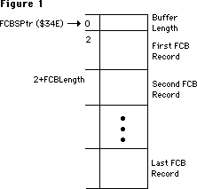
where FCBSPtr is a low-memory global (at $34E) that holds the address of a nonrelocatable block. That block is the File Control Block buffer, and is composed of the two byte header which gives the length of the block, followed by the FCB records themselves. The records are of fixed length, and give detailed information about an open file. As depicted, any given record can be found by adding the length of the previous FCB records to the start of the block, adding 2 for the two byte header; giving an offset to the record itself. The size of the block, and hence the number of files that can be open at any given time, is determined at startup time. The call to open ‘FirstFile’ above will pass back the File Reference Number to that file in FirstRefNum. This is the number that will be used to access that file from that point on. The File Manager passes back an offset into the FCB queue as the RefNum. This offset is the number of bytes past the beginning of the queue to that FCB record in the queue. That FCB record will describe the file that was opened. An example of a number that might get passed back as a RefNum is $1D8. That also means that the FCB record is $1D8 bytes into the FCB block.
A visual example of a record being in use, and how the RefNum is related is:
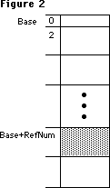
Base is merely the address of the nonrelocatable block that is the FCB buffer. FCBSPtr points to it. The RefNum (a number like $1D8) is added to Base, to give an address in the block. That address is what the file system will use to read and write to an open file, which is why you are required to pass the RefNum to the PBRead and PBWrite calls.
Since that RefNum is merely an offset into the queue, let’s step through a dangerous imaginary sequence and see what happens to a given record in the FCB Buffer. Here’s the sequence we will step through:
ErrStuff := FSOpen ('FirstFile', theVRefNum, FirstRefNum);
ErrStuff := FSClose ( FirstRefNum );
ErrStuff := FSOpen ('SecondFile', theVRefNum, SecondRefNum);
ErrStuff := FSClose ( FirstRefNum ); {the wrong file gets closed!!!}
{the above line will close 'SecondFile', not 'FirstFile', which is already closed}
Before any operations:
the record at $1D8 is not used.
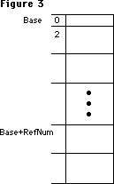
After the call:
ErrStuff := FSOpen ('FirstFile', theVRefNum, FirstRefNum);
FirstRefNum = $1D8 and the record is in use.
After the call:
ErrStuff := FSClose (FirstRefNum);
FirstRefNum is still equal to $1D8, but the FCB record is unused.
After the call:
ErrStuff := FSOpen ('SecondFile', theVRefNum, SecondRefNum);
SecondRefNum = $1D8, FirstRefNum = $1D8, and the record is reused.
After the call:
ErrStuff := FSClose (FirstRefNum);
The FirstRefNum = $1D8, SecondRefNum = $1D8,
the queue element is cleared. This happens, even though FirstFile was already closed. Actually, SecondFile was closed:
Note that the second close is using the old RefNum. The second close will still close a file, and in fact will return noErr as its result. Any subsequent accesses to the SecondRefNum will return an error, since the file ‘SecondFile’ was closed. The File Control Blocks are reused, and since they are just offsets, it is possible to get the same file RefNum back for two different files. In this case, FirstRefNum = SecondRefNum since ‘FirstFile’ was closed before opening ‘SecondFile’ and the same FCB record was reused for ‘SecondFile’.
There are worse cases than this, however. As an example, think of what can happen if a program were to close a file, then the user inserted an HFS disk. The FCB could be reused for the Catalog File on that HFS disk. If the program had a generic error handler that closed all of its files, it could inadvertently close “its” file again. If it thought “its” file was still open it would do the close, which could close the Catalog file on the HFS disk. This is catastrophic for the disk since the file could easily be closed in an inconsistent state. The result is a bad disk that needs to be reformatted.
There are any number of nasty cases that can arise if a file is closed twice, reusing an old RefNum. A common programming practice is to have an error handler or cleanup routine that goes through the files that a program creates and closes them all, even if some may already be closed. If an FCB element was not reused, the Close will return the expected fnOpnErr. If the FCB had been reused, then the Close could be closing the wrong file. This can be very dangerous, particularly for all those paranoid hard disk users.
How to avoid the problem:
A very simple technique is to merely clear the RefNum after each close. If the variable that the program uses is cleared after each close, then there is no way of reusing a RefNum in the program. An example of this technique would be:
ErrStuff := FSOpen ('FirstFile', theVRefNum, FirstRefNum);
ErrStuff := FSClose (FirstRefNum);
FirstRefNum := 0; { We just closed it, so clear our refnum }
ErrStuff := FSOpen ('SecondFile', theVRefNum, SecondRefNum);
ErrStuff := FSClose (FirstRefNum); { returns an error }
This makes the second Close pass back an error. In this case, the second close will try to close RefNum = 0, which will pass back a fnOpnErr and do no damage. Note: Be sure to use 0, which will never be a valid RefNum, since the first FCB entry is beyond the FCB queue length word. Don’t confuse this with the 0 that the Resource Manager uses to represent the System file.
Thus, if an error handler were cleaning up possibly open files, it could blithely close all the files it knew about, since it would legitimately get an error back on files that are already closed. This is not done automatically, however. The programmer must be careful about the opening and closing of files. The problem can get quite complex if an error is received halfway through opening a sequence of ten files, for example. By merely clearing the RefNum that is stored after each close, it is possible to avoid the complexities of trying to track which files are open and which are closed.
This .file name looks outrageous.
There is a potential conflict between file names and driver names. If a file name is named something like .Bout, .Print or .Sony, then the file system will open the driver instead of the file. Drivers have priority on the 128K ROMs, and will always be opened before a file of the same name. This may mean that an application will get an error back when opening these types of files, or worse, it will get back a driver RefNum from the call. What the application thought was a file open call was actually a driver open call. If the program uses that access path as a file RefNum, it is possible to get all kinds of strange things to happen. For example, if .Sony is opened, the Sony driver’s RefNum would be passed back, instead of a file RefNum. If the application does a Write call using that RefNum, it will actually be a driver call, using whatever parameters happen to be in the parameter block. Disks may be searching for new life after this type of operation. If a program creates files, it should not allow a file to be created whose name begins with ‘.’.
This file’s not my type.
This has been discussed in other places, but another aspect of the File Manager that can cause confusion is the ioFlVersNum byte that is passed to the low-level File Manager calls. This is called ioFileType from Assembly, and should not be confused with ioFVersNum. This byte must be set to zero for normal Macintosh files. There are a number of parts of the system that will not deal correctly with files that have the wrong versions: the Standard File package will not display any file with a non-zero ioFlVersNum; the Segment Loader and Resource Manager cannot open files that have non-zero ioFlVersNums. It is not sufficient to ignore this byte when a file is created. The byte must be cleared in order to avoid this type of problem. Strictly speaking, it is not a problem unless a file is being created on an MFS disk. The current system will easily allow the user to access 400K disks however, so it is better to be safe than confused.
103: MaxApplZone & MoveHHi from Assembly Language
#103: Using MaxApplZone and MoveHHi from Assembly Language
See also: Using Assembly Language
The Memory Manager
Technical Note #129 — SysEnvirons
Written by: Bryan “Bo3b” Johnson January 12, 1987
Updated: March 1, 1988
_______________________________________________________________________________
When calling MaxApplZone and MoveHHi from assembly language, be sure to get the correct code.
_______________________________________________________________________________
MaxApplZone and MoveHHi were marked [Not in ROM] in Inside Macintosh, Volumes I-III . They are ROM calls in the 128K ROM. Since they are not in the 64K ROM, if you want your program to work on 64K ROM routines it is necessary to call the routines by a JSR to a glue (library) routine instead of using the actual trap macro. The glue calls the ROM routines if they are available, or executes its copy of them (linked into your program) if not.
How to do it:
Whenever you need to use these calls, just call the library routine. It will check ROM85 to determine which ROMs are running, and do the appropriate thing.
For MDS, include the Memory.Rel library in your link file and use:
XREF MoveHHi ; we need to use this 'ROM' routine
...
JSR MoveHHi ; jump to the glue routine that will check ROM85 for us
For MPW link with Interface.o and use:
IMPORT MoveHHi ; we need to use this
...
JSR MoveHHi ; jump to the glue routine that will check ROM85 for us
Avoid calling _MaxApplZone or _MoveHHi directly if you want your software to work on the 64K ROMs, since that will assemble to an actual trap, not to a JSR to the library.
If your program is going to be run only on machines with the 128K ROM or newer, you can call the traps directly. Be sure to check for the 64K ROMs, and report an error to the user. You can check for old ROMs using the SysEnvirons trap as described in Technical Note #129.
104: MPW - Accessing Globals From Assembly Language
#104: MPW: Accessing Globals From Assembly Language
See also: MPW Reference Manual
Written by: Jim Friedlander January 12, 1987
Updated: March 1, 1988
_______________________________________________________________________________
This technical note demonstrates how to access MPW Pascal and MPW C globals from the MPW Assembler.
_______________________________________________________________________________
To allow access of MPW Pascal globals from the MPW Assembler, you need to identify the variables that you wish to access as external. To do this, use the {$Z+} compiler option. Using the {$Z+} option can substantially increase the size of the object file due to the additional symbol information (no additional code is generated and the symbol information is stripped by the linker). If you are concerned about object file size, you can “bracket” the variables you wish to access as external variables with {$Z+} and {$Z-}.
Here’s a trivial example:
Pascal Source
PROGRAM MyPascal;
USES
MemTypes,QuickDraw,OSIntf,ToolIntf;
VAR
myWRect: Rect;
{$Z+} {make the following external}
myInt: Integer;
{$Z-} {make the following local to this file (not lexically local)}
err: Integer;
PROCEDURE MyAsm; EXTERNAL; {routine doubles the value of myInt}
BEGIN {PROGRAM}
myInt:= 5;
MyAsm; {call the routine, myInt will be 10 now}
writeln('The value of myInt after calling myAsm is ', myInt:1);
END. {PROGRAM}
Assembly Source for Pascal
CASE OFF ;treat upper and lower case identically
MyAsm PROC EXPORT ;CASE OFF is the assembler's default
IMPORT myInt:DATA ;we need :DATA, the assembler assumes CODE
ASL.W #1,myInt ;multiply by two
RTS ;all done with this extensive routine, whew!
END
The variable myInt is accessible from assembler. Neither myWRect nor err are accessible. If you try to access myWRect, for example, from assembler, you will get the following linker error:
### Link: Error Undefined entry name: MYWRECT.
C Source
In an MPW C program, one need only make sure that MyAsm is declared as an external function, that myInt is a global variable (capitalizations must match) and that the CASE ON directive is used in the Assembler:
#include <types.h>
#include <quickdraw.h>
#include <fonts.h>
#include <windows.h>
#include <events.h>
#include <textedit.h>
#include <dialogs.h>
#include <stdio.h>
extern MyAsm(); /* assembly routine that doubles the value of myInt */
short myInt; /* we’ll change the value of this variable from MyAsm */
main()
{
WindowPtr MyWindow;
Rect myWRect;
myInt = 5;
MyAsm();
printf(" The value of myInt after calling myAsm is %d\n",myInt);
} /*main*/
Assembly source for C
CASE ON ;treat upper and lower case distinct
MyAsm PROC EXPORT ;this is how C treats upper and lower case
IMPORT myInt:DATA ;we need :DATA, the assembler assumes CODE
ASL.W #1,myInt ;multiply by two
RTS ;all done with this extensive routine, whew!
END
105: MPW Object Pascal Without MacApp
#105: MPW Object Pascal Without MacApp
See also: Technical Note #93—{$LOAD};_DataInit;%_MethTables
Written by: Rick Blair January 12, 1987
Updated: March 1, 1988
_______________________________________________________________________________
Object Pascal must have a CODE segment named %_MethTables in order to access object methods. In MacApp this is taken care of “behind the scenes” so you don’t have to worry about it . However, if you are doing a straight Object Pascal program, you must make sure that %_MethTables is around when you need it. If it’s unloaded when you call a method, your Macintosh will begin executing wild noncode and die a gruesome and horrible death.
The MPW Pascal compiler must see some declaration of an object in order to produce a reference to the magic segment. You can achieve this cheaply by simply including ObjIntf.p in your Uses declaration. This must be in the main program, by the way. The compiler will produce a call to %_InitObj which is in %_MethTables.
If you’re a more adventurous soul, you can call %_InitObj explicitly from the initialization section of your main program (you must use the {$%+} compiler directive to allow the use of “%” in identifiers). This will load the %_MethTables segment. See Technical Note #93 for ideas about locking down segments that are needed forever without fragmenting the heap.
106: The Real Story - VCBs and Drive Numbers
#106: The Real Story: VCBs and Drive Numbers
See also: The File Manager
Technical Note #36—Drive Queue Element Format
Written by: Rick Blair January 12, 1987
Updated: March 1, 1988
_______________________________________________________________________________
The top of page IV-178 in The File Manager chapter of Inside Macintosh in attempts to explain the behavior of two fields in a volume control block when the corresponding disk is offline or ejected. Due to the fact that a little bit is left unsaid, this paragraph is rather misleading. The two fields in question are vcbDrvNum and vcbDRefNum (referred to as ioVDrvInfo and ioVDRefNum in C and Pascal). PBHGetVInfo can be used to access these fields.
Offline
When a mounted volume is placed offline, vcbDrvNum is cleared and vcbDRefNum is set to the two’s complement of the drive number. Since drive numbers are assigned positive values (starting with one), this will be a negative number. If vcbDrvNum is zero and vcbDRefNum is negative, you know that the volume is offline.
Ejected
When a volume is ejected, vcbDrvNum is cleared and vcbDRefNum is set to the positive drive number. If vcbDrvNum is zero and vcbDRefNum is positive, you know that the volume is ejected. Ejection implies being offline. There is no such thing as “premature ejection”.
Summary
online offline ejected
vcbDrvNum >0 (DrvNum) 0 0
vcbDRefNum <0 (DRefNum) <0 (-DrvNum) >0 (DrvNum)
Please refrain from assuming anything about a VCB queue element beyond what is documented in Inside Macintosh, and don’t expect it to always be 178 bytes in size. It grew when we went from MFS to HFS, and it may grow again. It’s safest to use calls like PBHGetVInfo to get the information that you need.
107: Nulls in Filenames
#107: Nulls in Filenames
See also: The File Manager
Written by: Rick Blair March 2, 1987
Updated: March 1, 1988
_______________________________________________________________________________
Some applications (loosely speaking so as to include Desk Accessories, INITs, and what-have-you) generate or rename special files on the fly so that they are not explicitly named by the user via SFPutFile. Since the Macintosh file system is very liberal about filenames and only excludes colons from the list of acceptable characters, this can lead to some difficulties, both for the end user and for writers of other programs which may see these files.
Other programs which might be backing up your disk or something similar may get confused. A program written in C will think it has found the end of a string when it hits a null (ASCII code 0) character, so nulls in filenames are especially risky.
As a rule, filenames should only include characters which the user can see and edit. The only reasonable exception might be invisible files, but it can be argued that they are of dubious value anyway. You can argue “but what about my help file, I don’t want it renamed” but we already have what we think is the best approach for that situation. If you can’t find a configuration or other file because the user has renamed or moved it, then call SFGetFile and let the user find it. If the user cancels, and you can’t run without the file, then quit with an appropriate message.
Please consider carefully before you put non-displaying characters in filenames!
108: AddDrive, DrvrInstall and DrvrRemove
#108: _AddDrive, _DrvrInstall, and _DrvrRemove
See also: Technical Note #36, Drive Queue Elements
SCSI Development Package (APDA)
Written by: Jim Friedlander March 2, 1987
Revised by: Pete Helme December 1988
_______________________________________________________________________________
_AddDrive, _DrvrInstall, and _DrvrRemove are used in the sample SCSI driver in the SCSI Development Package, which is available from APDA. This Technical Note documents the parameters for these calls.
Changes since March 1, 1988: Updated the _DrvrInstall text to reflect the use of register A0, which should contain a pointer to the driver when called. Also added simple glue code for _DrvrInstall and _DrvrRemove since none is available in the MPW interfaces.
_______________________________________________________________________________
_AddDrive
_AddDrive adds a drive to the drive queue, and is discussed in more detail in Technical Note #36, Drive Queue Elements:
FUNCTION AddDrive(DQE:DrvQE1;driveNum,refNum:INTEGER):OSErr;
A0 (input) -> pointer to DQE
D0 high word(input) -> drive number
D0 low word(input) -> driver RefNum
D0 (output) <- error code
noErr (always returned)
_DrvrInstall
_DrvrInstall is used to install a driver. A DCE for the driver is created and its handle entered into the specified Unit Table position (–1 through –64). If the unit number is –4 through –9, the corresponding ROM-based driver will be replaced:
FUNCTION DrvrInstall(drvrHandle:Handle; refNum: INTEGER): OSErr;
A0 (input) -> pointer to driver
D0 (input) -> driver RefNum (–1 through –64)
D0 (output) <- error code
noErr
badUnitErr
_DrvrRemove
_DrvrRemove is used to remove a driver. A RAM-based driver is purged from the system heap (using _ReleaseResource). Memory for the DCE is disposed:
FUNCTION DrvrRemove(refNum: INTEGER):OSErr;
D0 (input) -> Driver RefNum
D0 (output) <- error code
noErr
qErr
Interfaces
Through a sequence of cataclysmic events, the glue code for _DrvrInstall and _DrvrRemove was never actually added to the MPW interfaces (i.e., “We forgot.”), so we will include simple glue here at no extra expense to you.
It would be advisable to first lock the handle to your driver with _HLock before making either of these calls since memory may be moved.
;---------------------------------------------------------------
; FUNCTION DRVRInstall(drvrHandle:Handle; refNum:INTEGER):OSErr;
;---------------------------------------------------------------
DRVRInstall PROC EXPORT
MOVEA.L (SP)+, A1 ; pop return address
MOVE.W (SP)+, D0 ; driver reference number
MOVEA.L (SP)+, A0 ; handle to driver
MOVEA.L (A0), A0 ; pointer to driver
_DrvrInstall ; $A03D
MOVE.W D0, (SP) ; get error
JMP (A1) ; & split
ENDPPROC
;---------------------------------------------------------------
; FUNCTION DRVRRemove(refNum:INTEGER):OSErr;
;---------------------------------------------------------------
DRVRRemove PROC EXPORT
MOVEA.L (SP)+, A1 ; pop return address
MOVE.W (SP)+, D0 ; driver reference number
_DrvrRemove ; $A03E
MOVE.W D0, (SP) ; get error
JMP (A1) ; & split
ENDPPROC
109: Bug in MPW 1.0 Language Libraries
#109: Bug in MPW 1.0 Language Libraries
See also: MPW Reference Manual
Written by: Scott Knaster March 2, 1987
Updated: March 1, 1988
_______________________________________________________________________________
This note formerly described a problem in the language libraries for MPW 1.0. This bug is fixed in MPW 1.0.2, available from APDA.
110: MPW - Writing Stand-Alone Code
#110: MPW: Writing Stand-Alone Code
Revised by: Keith Rollin August 1990
Written by: Jim Friedlander March 1987
This Technical Note formerly discussed using MPW Pascal and C to write stand-alone code, such as 'WDEF', 'LDEF', 'INIT', and 'FKEY' resources.
Changes since February 1990: Merged the contents of this Note into Technical Note #256, Stand-Alone Code, ad nauseam.
_______________________________________________________________________________
This Note formerly discussed using MPW Pascal and C to write stand-alone code. This information has been expanded and is now contained in Technical Note #256, Stand-Alone Code, ad nauseam.
111: MoveHHi and SetResPurge
#111: MoveHHi and SetResPurge
See also: The Memory Manager
The Resource Manager
Written by: Jim Friedlander March 2, 1987
Updated: March 1, 1988
_______________________________________________________________________________
SetResPurge(TRUE) is called to make the Memory Manager call the Resource Manager before purging a block specified by a handle. If the handle is a handle to a resource, and its resChanged bit is set, the resource data will be written out (using WriteResource).
When MoveHHi is called, even though the handle’s block is not actually being purged, the resource data specified by the handle will be written out. An application can prevent this by calling SetResPurge(FALSE) before calling MoveHHi (and then calling SetResPurge(TRUE) after the MoveHHi call).
112: FindDItem
#112: FindDItem
See also: The Dialog Manager
Written by: Rick Blair March 2, 1987
Updated: March 1, 1988
_______________________________________________________________________________
FindDItem is a potentially useful call which returns the number of a dialog item given a point in local coordinates and a dialog handle. It returns an item number of –1 if no item’s rectangle overlaps the point. This is all well and good, except you don’t get back quite what you would expect.
The item number returned is zero-based, so you have to add one to the result:
theitem := FindDItem(theDialog, thePoint) + 1;
113: Boot Blocks
#113: Boot Blocks
See also: The Segment Loader
Written by: Bo3b Johnson March 2, 1987
Updated: March 1, 1988
_______________________________________________________________________________
There are two undocumented features of the Boot Blocks. This note will describe how they currently work.
Warning: The format and functionality of the Boot Blocks will change in the future; dependence on this information may cause your program to fail on future hardware or with future System software.
_______________________________________________________________________________
The first two sectors of a bootable Macintosh disk are used to store information on how to start up the computer. The blocks contain various parameters that the system uses to startup such as the name of the system file, the name of the Finder, the first application to run at boot time, the number of events to allow, etc.
Changing System Heap Size
The boot blocks dictate what size the system heap will be after booting. Any common sector editing program will allow you to change the data in the boot blocks. Changing the system heap size is accomplished by changing two parameters in the boot blocks: the long word value at location $86 in Block 0 indicates the size of the system heap; the word value at location $6 is the version number of the boot blocks. Changing the version number to be greater than $14 ($15 is recommended) tells the ROM to use the value at $86 for the system heap size, otherwise the value at $86 is ignored. The $86 location only applies to computers with more than 128K of RAM.
Secondary Sound and Video Pages
Another occasionally useful feature of the boot blocks is the ability to specify that the secondary sound and video pages be allocated at boot time. This is done before a debugger is loaded, so the debugger will load below the alternate screen. This is useful for debugging software that uses the alternate video page, like page-flipping demos or games. To allocate the second video and sound buffers, change the two bytes starting at location $8 in the boot blocks. Change the value (normally 0) to a negative number ($FFFF) to allocate both video and sound buffers. Change the value to a positive number ($0001) to allocate only the secondary sound buffer.
WARNING: MacsBug may not work properly if you allocate additional pages for
sound and video.
114: AppleShare and Old Finders
#114: AppleShare and Old Finders
See also: AppleShare User’s Guide
Written by: Bryan Stearns March 2, 1987
Updated: March 1, 1988
_______________________________________________________________________________
A rumor has been spread that if you use a pre-AppleShare Finder on a workstation to access AppleShare volumes, you can bypass AppleShare’s
“access privilege” mechanisms.
This is not true. Access controls are enforced by the server, NOT by the Finder. If you use an older Finder, you are still prevented (by the server) from gaining access to protected files and folders; however, you will not get the proper user-interface feedback that you would if you were using the correct Finder: for instance, folders on the server will always appear plain white
(that is, without the permission feedback you’d normally get), and error messages would not be as explanatory as those from Finders that “know” about AppleShare servers.
115: Application Configuration with Stationery Pads
#115: Application Configuration with Stationery Pads
See also: The File Manager
Technical Note #116 — AppleShare-able Applications
Technical Note #47 — Customizing SFGetFile
Technical Note #48 — Bundles
“Application Development in a Shared Environment”
Written by: Bryan Stearns March 2, 1987
Updated: March 1, 1988
_______________________________________________________________________________
With the introduction of AppleShare (Apple’s file server) there are restrictions on self-modification of application resource files and the placement of configuration files. This note describes one way to get around the necessity for configuration files.
_______________________________________________________________________________
Configuration Files
Some applications need to store information about configuration; others could benefit simply from allowing users to customize default ruler settings, window placement, fonts, etc.
There are applications which store this information as additional resources in the application’s resource file; when the user changes the configuration, the application writes to itself to change the saved information.
AppleShare, however, requires that if an application is to be used by more than one user at a time, it must not need write access to itself. This means that the above method of storing configuration information cannot be used. (For more information about making your application sharable, see Technical Note #116.)
Storing configuration in a special configuration file can be a problem; the user must keep the file in the system folder or the application must search for it. This process has design issues of its own.
An alternative to configuration files: Stationery Pads
A basis for one solution to this problem was a user-interface feature of the Lisa Office System architecture. Lisa introduced the concept of “stationery pads”, special documents that created copies of themselves to allow users to save a pre-set-up document for future use. On Lisa, this was the way Untitled documents were created.
Your Macintosh application can provide the option of saving a document as a stationery pad, to provide similar functionality. Here’s how:
• You’ll need to add a checkbox to your SFPutFile dialog box (if you don’t
know how to do this, check out Technical Note #47); if the user checks this
box, save the document as you normally would, but use a different file type
(the file type of a document is usually set when the document is created,
using the File Manager Create procedure, or later using SetFileInfo).
• Be sure to use a different but similar icon for the stationery pad file.
This is easy if you differentiate between stationery and normal files solely
by file type—the Finder uses the type to determine which icon to display,
see Technical Note #48 for help with the “bundle” mechanism used to
associate a file type with an icon.
• When opening a stationery pad file, the window should come up named
“Untitled”, with the contents of the stationery pad file.
• “Revert” should re-read the stationery pad file.
• Don’t forget to add the stationery pad’s file type to the file-types list
that you pass to Standard File, so that the new files will appear in the
list when the user chooses Open. This file type should be registered with
Macintosh Developer Technical Support.
116: AppleShare-able Apps & the Resource Manager
#116: AppleShare-able Applications and the Resource Manager
See also: The Resource Manager
“Application Development in a Shared Environment”
Technical Note #40—Finder Flags
Written by: Bryan Stearns March 2, 1987
Updated: March 1, 1988
_______________________________________________________________________________
Normally, applications on an AppleShare server volume cannot be executed by more than one user at a time. This technical note explains why, and tells how you can enable your application to be shared.
_______________________________________________________________________________
The Resource Manager versus Shared Files
Part of the explanation of why applications are not automatically sharable is based on the design of the Resource Manager. The Resource Manager is a great little database. It was originally conceived as a way to keep applications localizable (a task it has performed admirably), and was found to be an excellent foundation for the Segment Loader, Font Manager, and a large part of the rest of the Macintosh operating system.
However, it was never designed to be a multi-user database. When the Resource Manager opens a resource file (such as an application), it reads the file’s resource map into memory. This map remains in memory until the resource file is closed by the Segment Loader, which regains control when the application exits. Sometimes it is necessary to write the map out to disk; normally, this is only done by UpdateResFile and CloseResFile.
If two users opened the same resource file at the same time, and one of them had write access to the file and added a resource to it, the other user’s Resource Manager wouldn’t know about it; this would make the other user’s copy of the file’s original resource map invalid. This could cause (at least) a crash; if both users had write access, it’s not unlikely that the resource file involved would become corrupted. Also, although you can tell the Resource Manager to write out an updated resource map, there’s no way for another user to tell it to refresh the copy of the map in memory if the file changes.
What does all this have to do with running my application twice?
Your application is stored as a resource file; code segments, alert and dialog templates, etc., are resources. If you write to your application’s resource file (for instance, to add configuration information, like print records), your application can’t be shared.
In Apple’s compatibility testing of existing applications (during development of AppleShare), we found quite a few applications, some of them quite popular, that wrote to their own resource files. So we decided, to improve the safety of using AppleShare, to always launch applications using a combination of access privileges such that only one user at a time could use a given application
(these privileges will be discussed in a future Technical Note). In fact, AppleShare opens all resource files this way, unless the resource file is opened with OpenRFPerm and read-only permission is specified.
But my application doesn’t write to itself!
We realize that many applications do not. However, there are other considerations (covered in detail, with suggestions for fixes, in “Application Development in a Shared Environment”, available from APDA ). In brief, here are the big ones we know about:
• Does your application create temporary files with fixed names in a fixed
place (such as the directory containing the application)? Without
AppleShare’s protection, two applications trying to use the same temporary
file could be disastrous.
• Is your application at least “conscious” of the fact that it may be in a
multi-user environment? For instance, does it work correctly if a volume
containing an existing document is on a locked volume? Does it check all
result codes returned from File Manager calls, and ResError after relevant
Resource Manager calls?
OK, I follow the rules. What do I do to make my application sharable?
There is a flag in each file’s Finder information (stored in the file’s directory entry) known as the “shared” bit. If you set this bit on your application’s resource file, the Finder will launch your application using read-only permissions; if anyone else launches your application, they’ll also get it read-only (their Finder will see the same “shared” bit set.).
Three important warnings accompany this information:
• The definition of the “shared” bit was incorrect in previous releases of
information and software from Apple. This includes the June 16, 1986 version
of Technical Note #40 (fixed in the March 2, 1987 version), as well as all
versions of ResEdit before and including 1.1b3 (included with MPW 2.0). For
now, the most reliable way to set this bit is to get the 1.1b3 version of
ResEdit, use it to Get Info on your application, and check the box labeled
“cached” (the incorrect documentation upon which ResEdit [et al.] was based
called the real shared bit “cached”; the bit labeled as “shared” is the real
cached bit [a currently unused but reserved bit which should be left clear]).
• By checking this bit, you’re promising (to your users) that your application
will work entirely correctly if launched by more than one user. This means
that you follow the other rules, in addition to simply not writing to your
application’s own resource file. See “Application Development for a Shared
Environment,” and test carefully!
• Setting this bit has nothing to do with allowing your application’s
documents to be shared; you must design this feature into your application
(it’s not something that Apple system software can take care of behind your
application’s back.). You should realize from reading this note, however,
that if you store your document’s data in resource files, you won’t be able
to allow multiple users to access them simultaneously.
117: Compatibility - Why & How
#117: Compatibility: Why & How
See Also: Technical Note #2—Compatibility Guidelines
Technical Note #7—A Few Quick Debugging Tips
Written by: Bo3b Johnson February 9, 1987
Updated: March 1, 1988
_______________________________________________________________________________
While creating or revising any program for the Macintosh, you should be aware of the most common reasons why programs fail on various versions of the Macintosh. This note will detail some common failure modes, why they occur, and how to avoid them.
_______________________________________________________________________________
We’ve tried to explain the issues in depth, but recognize that not everyone is interested in every issue. For example, if your application is not copy protected, you’re probably not very interested in the section on copy protection. That’s why we’ve included the outline form of the technical note. The first two pages outline the problems and the solutions that are detailed later. Feel free to skip around at will, but remember that we’re sending this enormous technical note because the suggestions it provides may save you hasty compatibility revisions when we announce a new machine.
We know it’s a lot, and we’re here to help you if you need it. Our address (electronic and physical) is on page three—contact us with any questions—that’s what we’re here for!
Compatibility: the outline
Don’t assume the screen is a fixed size
To get the screen size:
• check the QuickDraw global screenBits.bounds
Don’t assume the screen is in a fixed location
To get the screen location:
• check the QuickDraw global screenBits.baseAddr
Don’t assume that rowBytes is equal to the width of the screen
To get the number of bytes on a line:
• check the QuickDraw global screenBits.rowBytes
To get the screen width:
• check the QuickDraw global screenBits.bounds.right
To do screen-size calculations:
• Use LongInts
Don’t write to or read from nil Handles or nil Pointers
Don’t create or Use Fake Handles
To avoid creating or using fake handles:
• Always let the Memory Manager perform operations with handles
• Never write code that assigns something to a master pointer
Don’t write code that modifies itself
Self modifying code will not live across incarnations of the 68000
Think carefully about code designed strictly as copy protection
To avoid copy protection-related incompatibilities:
• Avoid copy protection altogether
• Rely on schemes that don’t require specific hardware
• Make sure your scheme doesn’t perform illegal operations
Don’t ignore errors
To get valuable information:
• Check all pertinent calls for errors
• Always write defensive code
Don’t access hardware directly
To avoid hardware-related incompatibilities:
• Don’t read or write the hardware
• If you can’t get the support from the ROM, ask the system where the
hardware is
• Use low-memory globals
Don’t use bits that are reserved
To avoid compatibility problems when bit status changes:
• Don’t use undocumented stuff
• When using low-memory globals, check only what you want to know
Summary
Minor bugs are getting harder and harder to get away with:
• Good luck
• We’ll help
• AppleLink: MacDTS, MCI: MacDTS
• U.S. Mail: 20525 Mariani Ave.; M/S 27-T; Cupertino, CA 95014
WHAT IT IS
The basic idea is to make sure that your programs will run, regardless of which Macintosh they are being run on. The current systems to be concerned with include:
• Macintosh 128K • Macintosh 512Ke
• Macintosh 512K • Macintosh Plus
• Macintosh XL • Macintosh SE
• Macintosh II
If you perform operations in a generic fashion, there is rarely any reason to know what machine is running. This means that you should avoid writing code to determine which version of the machine you are running on, unless it is absolutely necessary.
For the purposes of this discussion, the term “programs” will be used to describe any code that runs on a Macintosh. This includes applications, INITs, FKEYs, Desk Accessories and Drivers.
What the “Rules” mean
Compatibility across all Macintosh computers (which may sound like it involves more work for you) may actually mean that you have less work to do, since it may not be necessary to revise your program each time Apple brings out a new computer or System file. Users, as a group, do not understand compatibility problems; all they see is that the program does not run on their system.
The benefits of being compatible are many-fold: your customers/users stay happy, you have less programming to do, you can devote your time to more valuable goals, there are fewer versions to deal with, your code will probably be more efficient, your users will not curse you under their breath, and your outlook on life will be much merrier.
Now that we know what being compatible is all about, recognize that nobody is requiring you to be compatible with anything. Apple does not employ roving gangs of thought police to be sure that developers are following the recommended guidelines. Furthermore, when the guidelines comprise 1200 pages of turgid prose (Inside Macintosh), you can be expected to miss one or two of the
“rules.” It is no sin to be incompatible, nor is it a punishable offense. If it were, there would be no Macintosh programs, since virtually all developers would be incarcerated. What it does mean, however, is that your program will be unfavorably viewed until it steps in line with the current system (which is a moving target). If a program becomes incompatible with a new Macintosh, it usually requires rethinking the offending code, and releasing a new version. You may read something like “If the developers followed Apple guidelines, they would be compatible with the transverse-hinged diatomic quark realignment system.” This means that if you made any mistakes (you read all 1200 pages carefully, right?), you will not be compatible. It is extremely difficult to remain completely compatible, particularly in a system as complex as the Macintosh. The rules haven’t changed, but what you can get away with has. There are, however, a number of things that you can do to improve your odds—some of which will be explained here.
It’s your choice
It is still your choice whether you will be concerned with compatibility or not. Apple will not put out a warrant for your arrest. However, if you are doing things that are specifically illegal, Apple will also not worry about “breaking” your program.
Bad Things
The following list is not intended to be comprehensive, but these are the primary reasons why programs break from one version of the system to the next. These are the current top ten commandments:
I Thou shalt not assume the screen is a fixed size.
II Thou shalt not assume the screen is at a fixed location.
III Thou shalt not assume that rowBytes is equal to the width of the screen.
IV Thou shalt not use nil handles or nil pointers.
V Thou shalt not create or use fake handles.
VI Thou shalt not write code that modifies itself.
VII Thou shalt think twice about code designed strictly as copy protection.
VIII Thou shalt check errors returned as function results.
IX Thou shalt not access hardware directly.
X Thou shalt not use any of the bits that are reserved (unused means
reserved).
This has been determined from extensive testing of our diverse software base.
I. Assuming the screen is a fixed size
Do not assume that the Macintosh screen is 512 x 342 pixels. Programs that
do generally have problems on (or special case for) the Macintosh XL, which
has a wider screen. Most applications have to create the bounding rectangle
where a window can be dragged. This is the boundsRect that is passed to the
call:
DragWindow (myWindowPtr, theEvent.where, boundsRect);
Some ill-advised programs create the boundsRect by something like:
SetRect (boundsRect, 0,0,342,512); { oops, this is hard-coded…}
Why it’s Bad
This is bad because it is never necessary to specifically put in the bounding rectangle for the screen. On a Macintosh XL for example, the screen size is 760x364 (and sometimes 608x431 with alternate hardware). If a program uses the hard-coded 0,0,342,512 as a bounding rectangle, end users will not be able to move their windows past the fictitious boundary of 512. If something similar were done to the GrowWindow call, it would make it impossible for users to grow their window to fill the entire screen. (Always a saddening waste of valuable screen real-estate.)
Assuming screen size makes it more difficult to use the program on Macintoshes with big screens, by making it difficult to grow or move windows, or by drawing in strange places where they should not be drawing (outside of windows). Consider the case of running on a Macintosh equipped with one of the full page displays, or Ultra-Large screens. No one who paid for a big screen wants to be restricted to using only the upper-left corner of it.
How to avoid becoming a screening fascist
Never hard code the numbers 512 and 342 for screen dimensions. You should avoid using constants for system values that can change. Parameters like these are nearly always available in a dynamic fashion. Programs should read the appropriate variables while the program is running (at run-time, not at compile time).
Here’s how smart programs get the screen dimensions:
InitGraf(@thePort); { QuickDraw global variables have to be initialized.}
…
boundsRect := screenBits.bounds; { The Real way to get screen size }
{ Use QuickDraw global variable. }
This is smart, because the program never has to know specifically what the numbers are. All references to rectangles that need to be related to the screen (like the drag and grow areas of windows) should use screenBits.bounds to avoid worrying about the screen size.
Note that this does not do anything remotely like assume that “if the computer is not a standard Macintosh, then it must be an XL.” Special casing for the various versions of the Macintosh has always been suspicious at best; it is now grounds for breaking. (At least with respect to screen dimensions.)
By the way, remember to take into account the menu bar height when using this rectangle. On 128K ROMs (and later) you can use the low-memory global mBarHeight (a word at $BAA). But since we didn’t provide a low-memory global for the menu bar height in the 64K ROMs, you’ll have to hard code it to 20 ($14). (You’re not the only ones to forget the future holds changes.)
How to find fascist screenism in current programs
The easiest way is to exercise your program on one of the Ultra-Large screen Macintoshes. There should be no restrictions on sizing or moving the windows, and all drawing should have no problems. If there are any anomalies in the program’s usage, there is probably a lurking problem. Also, do a global find in the source code to see if the numbers 512 or 342 occur in the program. If so, and if they are in reference to the screen, excise them.
II. Assuming the screen is at a fixed location
Some programs use a fixed screen address, assuming that the screen location
will be the same on various incarnations of the Macintosh. This is not the
case. For example, the screen is located at memory location $1A700 on a 128K
Macintosh, at $7A700 on a 512K Macintosh, at $F8000 on the Macintosh XL, and
at $FA700 on the Macintosh Plus.
Why it’s Bad
When a program relies upon the screen being in a fixed location, Murphy’s Law dictates that an unknowing user will run it upon a computer with the screen in a different location. This usually causes the system to crash, since the offending program will write to memory that was used for something important. Programs that crash have been proven to be less useful than those that don’t.
How to avoid being a base screener
Suffice it to say that there is no way that the address of the screen will remain static, but there are rare occasions where it is necessary to go directly to the screen memory. On these occasions, there are bad ways and not-as-bad ways to do it. A bad way:
myScreenBase := Pointer ($7A700); { not good. Hard-coded number. }
A not-as-bad way:
InitGraf(@thePort); { do this only once in a program. }
…
myScreenBase := screenBits.baseAddr; { Good. Always works. }
{Yet another QuickDraw global variable}
Using the latter approach is guaranteed to work, since QuickDraw has to know where to draw, and the operating system tells QuickDraw where the screen can be found. When in doubt, ask QuickDraw. This will work on Macintosh computers from now until forever, so if you use this approach you won’t have to revise your program just because the screen moved in memory.
If you have a program (such as an INIT) that cannot rely upon QuickDraw being initialized (via InitGraf), then it is possible to use the ScrnBase low-memory global variable (a long word at $824). This method runs a distant second to asking QuickDraw, but is sometimes necessary.
How to find base screeners
The easiest way to find base screeners is to run the offending program on machines that have different screen addresses. If any addresses are being used in a base manner, the system will usually crash. The offending program may also occasionally refuse to draw. Some programs afflicted with this problem may also hang the computer (sometimes known as accessing funny space). Also, do a global find on the source code to look for numbers like $7A700 or $1A700. When found, exercise caution while altering the offending lines.
III. Assuming that rowbytes is equal to the width of the screen
According to the definition of a bitMap found in Inside Macintosh (p I-144),
you can see that rowBytes is the number of actual bytes in memory that are used to determine the bitMap. We know the screen is just a big hunk of memory, and we know that QuickDraw uses that memory as a bitMap. rowBytes accomplishes the translation of a big hunk of memory into a bitMap. To do this, rowBytes tells the system how long a given row is in memory and, more importantly, where in memory the next row starts. For conventional Macintoshes, rowBytes (bytes per Row) * 8 (Pixels per Byte) gives the final horizontal width of the screen as Pixels per Row. This does not have to be the case. It is possible to have a Macintosh screen where the rowBytes extends beyond what is actually visible on the screen. You can think of it as having the screen looking in on a larger bitMap. Diagrammatically, it might look like:
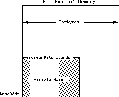
With an Ultra-Large screen, the number of bytes used for screen memory may be in the 500,000 byte range. Whenever calculations are being made to find various locations in the screen, the variables used should be able to handle larger screen sizes. For example, a 16 bit Integer will not be able to hold the 500,000 number, so a LongInt would be required. Do not assume that the screen size is 21,888 bytes long. bitMaps can be larger than 32K or 64K.
Why it’s Bad
Programs that assume that all of the bytes in a row are visible may make bad calculations, causing drawing routines to produce unusual, and unreadable, results. Also, programs that use the rowBytes to figure out the width of the screen rectangle will find that their calculated rectangle is not the real screenBits.Bounds. Drawing into areas that are not visible will not necessarily crash the computer, but it will probably give erroneous results, and displays that don’t match the normal output of the program.
Programs that assume that the number of bytes in the screen memory will be less than 32768 may have problems drawing into Ultra-Large screens, since those screens will often have more memory than a normal Macintosh screen. These particular problems do not evidence themselves by crashing the system. They generally appear as loss of functionality (not being able to move a window to the bottom of the screen), or as drawing routines that no longer look correct. These problems can prevent an otherwise wonderful program from being used.
How to avoid being a row byter
In any calculations, the rowBytes variable should be thought of as the way to get to the next row on the screen. This is distinct from thinking of it as the width of the screen. The width should always be found from screenBits.bounds.right– screenBits.bounds.left.
It is also inappropriate to use the rectangle to decide how many bytes there are on a row. Programs that do something like:
bytesLine := screenBits.bounds.right DIV 8; { bad use of bounds }
rightSide := screenBits.rowBytes * 8; { bad use of rowBytes }
will find that the screen may have more rowBytes than previously thought. The best way to avoid being a row byter is to use the proper variables for the proper things. Without the proper mathematical basis to the screen, life becomes much more difficult. Always do things like:
bytesLine := screenBits.rowBytes; { always the correct number }
rightSide := screenBits.bounds.right; { always the correct screen size }
It is sometimes necessary to do calculations involving the screen. If so, be sure to use LongInts for all the math, and be sure to use the right variables (i.e. use LongInts). For example, if we need to find the address of the 500th row in the screen (500 lines from the top):
VAR myAddress: LongInt;
myRow: LongInt; { so the calculations don’t round off. }
myOffset: LongInt; { could easily be over 32768 ... }
bytesLine: LongInt;
...
myAddress := ord4(screenBits.baseAddr); {start w/the real base address }
myRow := 500; {the row we want to address }
bytesLine := screenBits.rowBytes; {the real bytes per line }
myOffset := myRow * bytesLine; {lines * bytes per lines gives bytes }
myAddress := myAddress + myOffset; {final address of the 500th line }
This is not something you want to do if you can possibly avoid it, but if you simply must go directly to the screen, be careful. The big-screen machines (Ultra-Large screens) will thank you for it. If QuickDraw cannot be initialized, there is also the low-memory global screenRow (a word at $106) that will give you the current rowBytes.
How to find row byters
To find current problems with row byter programs, run them on a machine equipped with Ultra-Large screens and see if any anomalies crop up. Look for drawing sequences that don’t work right, and for drawing that clips to an imaginary edge. For source-level inspection, look for uses of the rowBytes variables and be sure that they are being used in a mathematically sound fashion. Be highly suspicious of any code that uses rowBytes for the screen width. Any calculations involving those system variables should be closely inspected for round-off errors and improper use. Search for the number 8. If it is being used in a calculation where it is the number of bits per byte, then watch that code closely for improper conceptualization. This is code that could leap out and grab you by the throat at anytime. Be careful!
IV. Using nil Handles or nil Pointers
A nil pointer is a pointer that has a value of 0. Recognize that pointers are merely addresses in memory. This means that a nil pointer is pointing to memory location 0. Any use of memory location 0 is strictly forbidden, since it is owned by Motorola. Trespassers may be shot on sight, but they may not die until much later. Sometimes trespassers are only wounded and act strangely. Any use of memory location 0 can be considered a bug, since there are no valid reasons for Macintosh programs to read or write to that memory. However, nil pointers themselves are not necessarily bad. It is occasionally necessary to pass nil pointers to ROM routines. This should not be confused with reading or writing to memory location 0. A pointer normally points to (contains the address of) a location in memory. It could look like this:
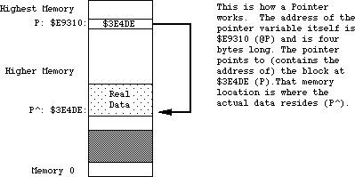
If a pointer has been cleared to nil, it will point to memory location 0. This is OK as long as the program does not try to read from or write to that pointer. An example of a nil pointer could look like:
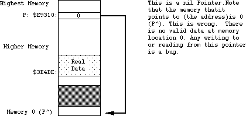
nil handles are related to the problem, since a handle is merely the address of a pointer (or a pointer to a pointer). An example of what a normal handle might look like is:
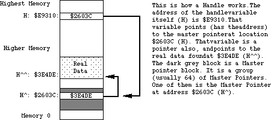
When the first pointer (h) becomes nil, that implies that memory location 0 can be used as a pointer. This is strictly illegal. There are no cases where it is valid to read from or write to a nil handle. A pictorial representation of what a nil handle could look like:
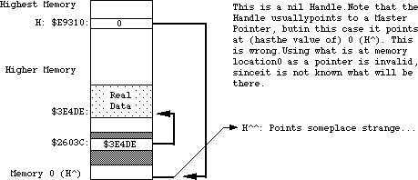
If the memory at 0 contains an odd number (numerically odd), then using it as a pointer will cause a system error with ID=2. This can be very useful, since that tells you exactly where the program is using this illegal handle, making it easy to fix. Unfortunately, there are cases where it is appropriate to pass a nil handle to ROM routines (such as GetScrap). These cases are rare, and it is never legal to read from or write to a nil handle.
There is also the case of an empty handle. An empty handle is one where the handle itself (the first pointer) points to a valid place in memory; that place in memory is also a pointer, and if it is nil the entire handle is termed empty. There are occasions where it is necessary to use the handle itself, but using the nil pointer that it contains is not valid. An example of an empty handle could be:
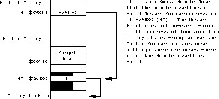
Fundamentally, any reading or writing to memory using a pointer or handle that is nil is punishable by death (of your program).
Why it’s Bad
The use of nil pointers can lead to the use of make-believe data. This make-believe data often changes for different versions of the computer. This changing data makes it difficult to predict what will happen when a program uses nil pointers. Programs may not crash as a result of using a nil pointer, and they may behave in a consistent fashion. This does not mean that there isn’t a bug. This merely means that the program is lucky, and that it should be playing the lottery, not running on a Macintosh. If a program acts differently on different versions of the Macintosh, you should think “could there be a nasty nil pointer problem here?” Use of a nil handle usually culminates in reading or writing to obscure places in memory. As an example:
VAR myHandle: TEHandle;
myHandle := nil;
That’s pretty straightforward, so what’s the problem? If you do something like:
myHandle^^.viewRect := myRect; { very bad idea with myHandle = nil }
memory location zero will be used as a pointer to give the address of a TextEdit record. What if that memory location points to something in the system heap? What if it points to the sound buffer? In cases like these, eight bytes of rectangle data will be written to wherever memory location 0 points.
Use of a nil handle will never be useful. This memory is reserved and used by the 68000 for various interrupt vectors and Valuable Stuff. This Valuable Stuff is composed of things that you definitely do not want to change. When changed, the 68000 finds out, and decides to get back at your program in the most strange and wonderful ways. These strange results can range from a System Error all the way to erasing hard disks and destroying files. There really is no limit to the havoc that can be wreaked. This tends to keep the users on the edge of their seat, but this is not really the desired effect. As noted above, it won’t necessarily cause traumatic results. A program can be doing naughty things and not get caught. This is still a bug that needs to be fixed, since it is nearly guaranteed to give different results on different versions of the Macintosh. Programs exhibiting schizophrenia have been proven to be less enjoyable to use.
How to avoid being a Niller
Whenever a program uses pointers and handles, it should ensure that the pointer or handle will not be nil. This could be termed defensive programming, since it assumes that everyone is out to get the program (which is not far from the truth on the Macintosh). You should always check the result of routines that claim to pass back a handle. If they pass you back a nil handle, you could get in trouble if you use them. Don’t trust the ROM. The following example of a defensive use of a handle involves the Resource Manager. The Resource Manager passes back a handle to the resource data. There are any number of places where it may be forced to pass back a nil handle. For example:
VAR myRezzie: MyHandle;
myRezzie := MyHandle(GetResource(myResType, myResNumber)); { could be missing…}
IF myRezzie = nil THEN ErrorHandler('We almost got Nilled')
ELSE myRezzie^^.myRect := newRect; { We know it is OK }
As another example, think of how handles can be purged from memory in tight memory conditions. If a block is marked purgeable, the Memory Manager may throw it away at any time. This creates an empty handle. The defensive programmer will always make sure that the handles being used are not empty.
VAR myRezzie: myHandle;
myRezzie := myHandle(GetResource(myResType, myResNumber)); { could be missing… }
IF myRezzie = nil THEN ErrorHandler('We almost got Nilled')
ELSE myRezzie^^.myRect := newRect; { We know it is OK }
tempHandle := NewHandle (largeBlock); {might dispose a purgeable myRezzie}
IF myRezzie^ = nil THEN LoadResource(Handle(myRezzie)); {Re-load empty handle}
IF ResError = noErr THEN
myRezzie^^.StatusField := OK; { guaranteed not empty, and actually gets read back in, if necessary }
Be especially careful of places where memory is being allocated. The NewHandle and NewPtr calls will return a nil handle or pointer if there is not enough memory. If you use that handle or pointer without checking, you will be guilty of being a Niller.
How to find Nillers
The best way to find these nasty nil pointer problems is to set memory location zero to be an odd number (a good choice is 'NIL!' = $4E494C21, which is numerically odd, as well as personality-wise). Please see Technical Note #7 for details on how to do this.
If you use TMON, you can use the extended user area with Discipline. Discipline will set memory location 0 to 'NIL!' to help catch those nasty pointer problems. If you use Macsbug, just type SM 0 'NIL! and go. Realize of course, that if a program has made a transgression and is actually using nil pointers, this may make the program crash with an ID=2 system error. This is good! This means that you have found a bug that may have been causing you untold grief. Once you know where a program crashes, it is usually very easy to use a debugger to find where the error is in the source code. When the program is compiled, turn on the debugging labels (usually a $D+ option). Set memory location 0 to be 'NIL!'. When the program crashes, look at where the program is executing and see what routine it was in (from a disassembly). Go back to that routine in the source code and remove the offending code with a grim smile on your face. Another scurvy bug has been vanquished. The intoxicating smell of victory wafts around your head.
Another way to find problems is to use a debugger to do a checksum on the first four bytes in memory (from 0 to 3 inclusive). If the program ever traps into the debugger claiming that the memory changed, see which part of the program altered memory location 0. Any code that writes to memory location zero is guilty of high treason against the state and must be removed. Remember to say, “bugs are not my friends.”
V. Creating or Using Fake Handles
A fake handle is one that was not manufactured by the system, but was created by the program itself. An example of a fake handle is:
CONST aMem = $100;
VAR myHandle: Handle;
myPointer: Ptr;
myPointer := Ptr (aMem); { the address of some memory }
myHandle := @myPointer; {the address of the pointer variable. Very bad.}
The normal way to create and use handles is to call the Memory Manager NewHandle function.
Why it’s Bad
A handle that is manufactured by the program is not a legitimate handle as far as the operating system is concerned. Passing a fake handle to routines that use handles is a good way to discover the meaning of “Death by ROM.” For example, think how confused the operating system would get if the fake handle were passed to DisposHandle. What would it dispose? It never allocated the memory, so how can it release it? Programs that manufacture handles may find that the operating system is no longer their friend.
When handles are passed to various ROM routines, there is no telling what sorts of things will be done to the handle. There are any number of normal handle manipulation calls that the ROM may use, such as SetHandleSize, HLock, HNoPurge, MoveHHi and so on. Since a program cannot guarantee that the ROM will not be doing things like this to handles that the program passes in, it is wise to make sure that a real handle is being used, so that all these type of operations will work as the ROM expects. For fake handles, the calls like HLock and SetHandleSize have no bearing. Fake handles are very easy to create, and they are very bad for the health of otherwise upstanding programs. Whenever you need a handle, get one from the Memory Manager.
As a particularly bad use of a fake handle:
VAR myHandle: Handle;
myStuff: myRecord;
myHandle := NewHandle (SIZEOF(myStuff)); { create a new normal handle }
myHandle^ := @myStuff; {YOW! Intended to make myHandle a handle to
the myStuff record. What it really does is
blow up a Master Pointer block, Heap corruption,
and death by Bad Heap. Never do this. }
This can be a little confusing, since it is fine to use your own pointers, but very bad to use your own handles. The difference is that handles can move in memory, and pointers cannot, hence the pointers are not dangerous. This does not mean you should use pointers for everything since that causes other problems. It merely means that you have to be careful how you use the handles.
The use of fake handles usually causes system errors, but can be somewhat mysterious in its effects. Fake handles can be particularly hard to track down since they often cause damage that is not uncovered for many minutes of use. Any use of fake handles that causes the heap to be altered will usually crash the system. Heap corruption is a common failure mode. In clinical studies, 9 out of 10 programmers recommend uncorrupted heaps to their users who use heaps.
How to avoid being a fakir
The correct way to make a handle to some data is to make a copy of the data:
VAR myHandle: Handle;
myStuff: myRecord;
errCode := PtrToHand (@myStuff, myHandle, SIZEOF(myStuff));
IF errCode <> noErr THEN ErrorHandler ('Out of memory');
Always, always, let the Memory Manager perform operations with handles. Never write code that assigns something to a master pointer, like:
VAR myDeath: Handle;
myDeath^ := stuff; { Don’t change the Master pointer. }
If there is code like this, it usually means the heap is being corrupted, or a fake handle is being used. It is, however, OK to pass around the handle itself, like:
myCopyHandle := myHandle; { perfectly OK, nobody will yell about this. }
This is far different than using the ^ operator to accidentally modify things in the system. Whenever it is necessary to write code to use handles, be careful. Watch things carefully as they are being written. It is much easier to be careful on the way in than it is to try to find out why something is crashing. Be very careful of the @ operator. This operator can unleash untold problems upon unsuspecting programs. If at all possible, try to avoid using it, but if it is necessary, be absolutely sure you know what it is doing. It is particularly dangerous since it turns off the normal type checking that can help you find errors (in Pascal). In short, don’t get crazy with pointer and handle manipulations, and they won’t get crazy with you.
How to find fakirs
Problems of this form are particularly insidious because it can be very difficult to find them after they have been created. They tend to not crash immediately, but rather to crash sometime long after the real damage has been done. The best way to find these problems is to run the program with Discipline. (Discipline is a programmer’s tool that will check all parameters passed to the ROM to see if they are legitimate. Discipline can be found as a stand-alone tool, but the most up-to-date version will be found in the Extended User Area for the TMON debugger. The User Area is public domain, but TMON itself is not. TMON has a number of other useful features, and is well worth the price.) Discipline will check handles that are passed to the ROM to see if they are real handles or not, and if not, will stop the program at the offending call. This can lead you back to the source at a point that may be close to where the bad handle was created. If a program passes the Discipline test, it will be a healthy, robust program with drastically improved odds for compatibility. Programs that do not pass Discipline can sleep poorly at night, knowing that they have broken at least one or two of the “rules.”
A way to find programs that are damaging the heap is to use a debugger (TMON or Macsbug) and turn on the Heap Check operation. This will check the heap for errors at each trap call, and if the heap is corrupted will break into the debugger. Hopefully this will be close to where the code is that caused the damage. Unfortunately, it may not be close enough; this will force you to look further back.
Looking in the source code, look for all uses of the @ operator, and examine the code carefully to see if it is breaking the rules. If it is, change it to step in line with the rest of the happy programs here in happy valley. Also, look for any code that changes a master pointer like the myHandle^ := stuff. Any code of this form is highly suspect, and probably a member of the Anti-Productivity League. The APL has been accused of preventing software sales and the rise of the Yen. These problems can be quite difficult to find at times, but don’t give up. These fake handles are high on the list of guilty parties, and should never be trusted.
VI. Writing code that modifies itself
Self-modifying code is software that changes itself. Code that alters itself runs into two main groupings: code that modifies the code itself and code that changes the block the code is stored in. Copy protection code often modifies the code itself, to change the way it operates (concealing the meaning of what the code does). Changing the code itself is very tricky, and also prone to having problems, particularly when the microprocessor itself changes. There are third-party upgrades available that add a 68020 to a Macintosh. Because of the 68020’s cache, programs that modify themselves stand a good chance of having problems when run on a 68020. This is a compatibility point that should not be missed (nudge, nudge, wink, wink). Code that changes other code (or itself) is prone to be incompatible when the microprocessor changes.
The second group is code that changes the block that the code is stored in. Keeping variables in the CODE segment itself is an example of this. This is uncommon with high-level languages, but it is easy to do in assembly language (using the DC directive). Variables defined in the code itself should be read-only (constants). Code that modifies itself has signed a tacit agreement that says “I’m being tricky, if I die, I’ll revise it.”
Why it’s Bad
There are now three different versions of the microprocessor, the 68000, 68010, and the 68020. They are intended to be compatible with each other, but may not be compatible with code that modifies itself. As the Macintosh evolves, the system may have compatibility problems with programs that try to “push the envelope.”
How to avoid being an abuser
Well, the obvious answer is to avoid writing self-modifying code. If you feel obliged to write self-modifying code, then you are taking an oath to not complain when you break in the future. But don’t worry about accidentally taking the oath: you won’t do it without knowing it. If you choose to abuse, you also agree to personal visits from the Apple thought police, who will be hired as soon as we find out.
How to find abusers
Run the program on a 68020 system. If it fails, it could be related to this problem, but since there are other bugs that might cause failures, it is not guaranteed to be a self-modifying code problem. Self-modifying code is often used in copy protection, which brings us to the next big topic.
VII. Code designed strictly as copy protection
Copy protection is used to make it difficult to make copies of a program. The basic premise is to make it impossible to copy a program with the Finder. This will not be a discussion as to the pros and cons of copy protection. Everyone has an opinion. This will be a description of reality, as it relates to compatibility.
Why it’s Bad
System changes will never be made merely to cause copy protection schemes to fail, but given the choice between improving the system and making a copy protection scheme remain compatible, the system improvement will always be chosen.
• Copy protection is number one on the list of why programs fail the
compatibility test.
• Copy protection by its very nature tends to do the most “illegal” things.
• Programs that are copy protected are assumed to have signed a tacit
agreement to revise the program when the system changes.
Copy protection itself is not necessarily bad. What is bad is when programs that would otherwise be fully compatible do not work due only to the copy protection. This is very sad, since it requires extra work, revisions to the software, and time lost while the revision is being produced. The users are not generally humored when they can no longer use their programs. Copy protection schemes that fail generally cause system errors when they are run. They also can refuse to run when they should.
How to avoid being a protectionist
The simple answer is to do without copy protection altogether. If you think of compatibility as a probability game, if you leave out the copy protection, your odds of winning skyrocket. As noted above, copy protection is the single biggest reason why programs fail on the various versions of the Macintosh. For those who are required to use copy protection, try to rely on schemes that do not require specific hardware and make sure that the scheme used is not performing illegal operations. If a program runs, an experienced Macintosh programmer armed with a debugger can probably make a copy of it, (no matter how sophisticated the copy protection scheme) so a moderate scheme that does not break the rules is probably a better compatibility bet. The trickier and more devious the scheme, the higher the chance of breaking a rule. Tread lightly.
How to find protectionists
The easiest way to see if a scheme is being overly tricky is to run it on a Macintosh XL. Since the floppy disk hardware is different this will usually demonstrate an unwanted hardware dependency. Be wary of schemes that don’t allow installation on a hard disk. If the program cannot be installed on a hard disk, it may be relying upon things that are prone to change. Don’t use schemes that access the hardware directly. All Macintosh software should go through the various managers in the ROM to maintain compatibility. Any code that sidesteps the ROM will be viewed as having said “It’s OK to make me revise myself.”
VIII. Check errors returned as function results
All of the Operating System functions, as well as some of the Toolbox functions, will return result codes as the value of the function. Don’t ignore these result codes. If a program ignores the result codes, it is possible to have any number of bad things happen to the program. The result code is there to tell the program that something went wrong; if the program ignores the fact that something is wrong, that program will probably be killed by whatever went wrong. (Bugs do not like to be ignored.) If a program checks errors, an anomaly can be nipped in the bud, before something really bizarre happens.
Why it’s Bad
A program that ignores result codes is skipping valuable information. This information can often prevent a program from crashing and keep it from losing data.
How to avoid becoming a skipper
Always write code that is defensive. Assume that everyone and everything is out to kill you. Trust no one. An example of error checking is:
myRezzie := GetResource (myResType, myResId);
IF myRezzie = nil THEN ErrorHandler ('Who stole my resource...');
Another example:
fsErrCode := FSOpen ('MyFile', myVRefNum, myFileRefNum);
IF fsErrCode <> noErr THEN ErrorHandler (fsErrCode, 'File error');
And another:
myTPPrPort := PrOpenDoc (myTHPrint, nil, nil);
IF PRError <> noErr THEN ErrorHandler (PRError, 'Printing error');
Any use of Operating System functions should presume that something nasty can happen, and have code to handle the nasty situations. Printing calls, File Manager calls, Resource Manager calls, and Memory Manager calls are all examples of Operating System functions that should be watched for returning errors. Always, always check the result codes from Memory Manager calls. Big memory machines are pretty common now, and it is easy to get cavalier about memory, but realize that someone will always want to run the program under Switcher, or on smaller Macintoshes. It never hurts to check, and always hurts to ignore it.
How to find skippers
This is easy: just do weird things while the program is running. Put in locked or unformatted disks while the program is running. Use unconventional command sequences. Run out of disk space. Run on 128K Macintoshes to see how the program deals with running out of memory. Run under Switcher for the same reason. (Programs that die while running under Switcher are often not Switcher’s fault, and are in fact due to faulty memory management.) Print with no printer connected to the Macintosh. Pop disks out of the drives with the Command-Shift sequence, and see if the program can deal with no disk. When a disk-switch dialog comes up, press Command-period to pass back an error to the requesting program (128K ROMs only). Torturing otherwise well- behaved programs can be quite enjoyable, and a number of users enjoy torturing the program as much as the program enjoys torturing them. For the truly malicious, run the debugger and alter error codes as they come back from various routines. Sure it’s a dirty low-down rotten thing to do to a program, but we want to see how far we can push the program. (This is also a good way to check your error handling.) It’s one thing to be an optimist, but it’s quite another to assume that nothing will go wrong while a program is running.
IX. Accessing hardware directly
Sometimes it is necessary to go directly to the Macintosh hardware to accomplish a specific task for which there is no ROM support. Early hard disks that used the serial ports had no ROM support. Those disks needed to use the SCC chip (the 8530 communication chip) in a high-speed clocked fashion. Although it is a valid function, it is not something that is supported in the ROM. It was therefore necessary to go play with the SCC chip directly, setting and testing various hardware registers in the chip itself. Another example of a valid function that has no ROM support is the use of the alternate video page for page-flipping animation. Since there is no ROM call to flip pages, it is necessary to go play with the right bit in the VIA chip (6522 Versatile Interface Adapter). Going directly to the hardware does not automatically throw a program into the incompatible group, but it certainly lowers its odds.
Why it’s bad
Going directly to the hardware poses any number of problems for enlightened programs that are trying to maintain compatibility across the various versions of the Macintosh. On the Macintosh XL for example, a lot of the hardware is found in different locations, and in some cases the hardware doesn’t exist. On the XL there is no sound chip. Programs that go directly to the sound hardware will find they don’t work correctly on an XL. If the same program were to go through the Sound Manager, it would work fine, although the sound would not be the same as expected. Since the Macintosh is heavily oriented to the software side of things, expecting various hardware to always be available is not a safe bet. Choosy programmers choose to leave the hardware to the ROM.
How to avoid having a hard attack
Don’t read or write the hardware. Exhaust every possible conventional approach before deciding to really get down and dirty. If there is a Manager in the ROM for the operation you wish to perform, it is far better to use the Manager than to go directly to the hardware. Compatibility at the hardware level can very rarely be maintained, but compatibility at the Manager level is a prime consideration. If a program is down to the last ditch effort, and cannot get the support from the ROM that is desired, then access the hardware in an enlightened approach. The really bad way to do it:
VIA := Pointer ($EFE1FE); { sure it’s the base address today…}
{ This is bad. Hard-coded number. }
The with-it, inspired programmer of the eighties does something like:
TYPE LongPointer = ^LongInt;
VAR VIA: LongPointer;
VIABase: LongInt;
VIA := Pointer ($1D4); { the address of the low-memory global. }
VIABase := VIA^; { get the low-memory variable’s value }
{ Now VIABase has the address of the chip }
The point here is that the best way to get the address of a hardware chip is to ask the system where it currently is to be found. The system always knows where the pieces of the system are, and will always know for every incarnation of the Macintosh. There are low-memory global variables for all of the pieces of hardware currently found in the Macintosh. This includes the VIA, the SCC, the Sound Chip, the IWM, and the video display. Whenever you are stuck with going to the hardware, use the low-memory globals. The fact that a program goes directly to the hardware means that it is risking imminent incompatibility, but using the low-memory global will ensure that the program has the best odds. It’s like going to Las Vegas: if you don’t gamble at all, you don’t lose any money; if you have to gamble, play the game that you lose the least on.
How to find hard attacks
Run the suspicious program on the Macintosh XL. Nearly all of the hardware is in a different memory location on the XL. If a program has a hard-coded hardware address in it, it will fail. It may crash, or it might not perform the desired task, but it won’t work as advertised. This unfortunately, is not a completely legitimate test, since the XL does not have some of the hardware of other Macintoshes, and some of the hardware that is there has the register mapping different. This means that it is possible to play by the rule of using the low-memory global and still be incompatible.
X. Don’t use bits that are reserved
Occasionally during the life of a Macintosh programmer, there comes a time when it is necessary to bite the bullet and use a low-memory global. These are very sad days, since it has been demonstrated (by history) that low-memory global variables are a mysterious lot, and not altogether friendly. One fellow in particular is known as ROM85, a word located at $28E. This particular variable has been documented as the way to determine if a program is running on the 128K ROMs or not. Notably, the top most bit of that word is the determining bit. This means that the rest of the bits in that word are reserved, since nothing is described about any further bits. Remember, if it doesn’t say, assume it’s reserved. If it’s reserved, don’t depend upon it. Take the cautious way out and assume that the other bits that aren’t documented are used for Switcher local variables, or something equally wild. An example of a bad way to do the comparison is:
VAR Rom85Ptr: WordPtr;
RomsAre64: Boolean;
Rom85Ptr := Pointer ($28E); { point at the low-memory global }
IF Rom85Ptr^ = $7FFF THEN RomsAre64 := False { Bad test. }
ELSE RomsAre64 := True;
This is a bad test since the comparison is testing the value of all of the bits, not only the one that is valid. Since the other bits are undocumented, it is impossible to know what they are used for. Assume they are used for something that is arbitrarily random, and take the safe way out.
How to avoid being bitten
VAR ROM85Ptr: Ptr
Rom85Ptr := Pointer ($28E); { point at the low-memory global }
IF BitTst(ROM85Ptr,0) THEN RomsAre64 := True {Good--tests only hi-bit}
ELSE RomsAre64 := False;
This technique will ensure that when those bits are documented, your program won’t be using them for the wrong things. Beware of trojan bits.
Don’t use undocumented stuff. Be very careful when you use anything out of the ordinary stream of a high-level language. For instance, in the ROM85 case, it is very easy to make the mistake of checking for an absolute value instead of testing the actual bit that encodes the information. Whenever a program is using low-memory globals, be sure that only the information desired is being used, and not some undocumented (and hence reserved) bits. It’s not always easy to determine what is reserved and what isn’t, so conservative programmers always use as little as possible. Be wary of the strange bits, and accept rides from none of them. The ride you take might cause you to revise your program.
How to find those bitten
Since there are such a multitude of possible places to get killed, there is no simple way to see what programs are using illegal bits. As time goes by it will be possible to find more of these cases by running on various versions of the Macintosh, but there will probably never be a comprehensive way of finding out who is accepting strange rides, and who is not. Whenever the use of a bit changes from reserved status to active, it will be possible to find those bugs via extensive testing. From a source level, it would be advisable to look over any use of low-memory globals, and eye them closely for inappropriate bit usage. Do a global search for the $ (which describes those ubiquitous hexadecimal numbers), and when found see if the use of the number is appropriate. Trust no one that is not known. If they are documented, they will stay where they are, and have the same meaning. Be very careful in realms that are undocumented. Bits that suddenly jump from reserved to active status have been known to cause more than one program to have a sudden anxiety attack. It is very unnerving to watch a program go from calm and reassuring to rabid status. Users have been known to drop their keyboards in sudden shock (which is bad on the keyboards).
Summary
So what does all this mean? It means that it is getting harder and harder to get away with minor bugs in programs. The minor bugs of yesterday are the major ones of today. No one will yell at you for having bugs in your program, since all programs have bugs of one form or another. The goal should be to make the programs run as smoothly and effortlessly as possible. The end-users will never object to bug-reduced programs.
What is the best way to test a program? A reasonably comprehensive test is to exercise all of the program’s functions under the following situations:
• Use Discipline to be sure the program does not pass illegal things to the
ROM.
• Use heap scramble and heap purge to be sure that handles are being used
correctly, and that the memory management of the program is correct.
• Run with a checksum on memory locations 0...3 to see if the program writes
to these locations.
• Run on a 128K Macintosh, or under Switcher with a small partition, to see how
the program deals with memory-critical situations.
• Run on a 68020 system to see if the program is 68020-compatible and to make
sure that changing system speed won’t confuse the program.
• Run on a Macintosh XL to be sure that the program does not assume too much
about the operating system, and to test screen handling.
• Run on an Ultra-Large screen to be sure that the screen handling is correct,
and that there are no hard-coded screen dimensions.
• Run on 64K ROM machines to be sure new traps are not being used when they
don’t exist.
• Run under both HFS and MFS to be sure that the program deals with the file
system correctly. (400K floppies are usually MFS.)
If a program can live through all of this with no Discipline traps, no checksum breaks, no system errors, no anomalies, no data loss and still get useful work done, then you deserve a gold medal for programming excellence. Maybe even an extra medal for conduct above and beyond the call of duty. In any case, you will know that you have done your job about as well as it can be done, with today’s version of the rules, and today’s programming tools.
Sounds like a foreboding task, doesn’t it? The engineers in Macintosh Technical Support are available to help you with compatibility issues (we won’t always be able to talk about new products, since we love our jobs, but we can give you some hints about compatibility with what the future holds).
Good luck.
118: How to Check and Handle Printing Errors
#118: How To Check and Handle Printing Errors
Revised by: Pete “Luke” Alexander October 1990
Written by: Ginger Jernigan May 1987
This Technical Note formerly described how to check and properly handle errors that occur during printing with the Printing Manager.
Changes since March 1988: Merged contents into Technical Note #161.
_______________________________________________________________________________
This Note formerly described how to check and properly handle Printing Manager errors. This information is now contained in Technical Note #161, A Printing Loop That Cares…, which also includes a table of Printing Manager error codes.
119: Determining If Color QuickDraw Exists
#119: Determining If Color QuickDraw Exists
See: Technical Note #129 — SysEnvirons
Written by: Jim Friedlander May 4, 1987
Updated: March 1, 1988
_______________________________________________________________________________
This note formely described a way to determine if Color QuickDraw is present on a particular machine. We now recommend that you call SysEnvirons to find out, as described in Technical Note #129.
120: Principia Off-Screen Graphics Environments
#120: Principia Off-Screen Graphics Environments
Written by: Forrest Tanaka October 1991
Inspired by: Jim Friedlander, Rick Blair, and Rich Collyer
Using Color QuickDraw to draw off-screen is a common requirement of applications and other kinds of programs that run on the Macintosh. This Note discusses what Color QuickDraw needs in a graphics environment and how to create one for off-screen drawing. A brief discussion of GWorlds, which are off-screen graphics environments that are set up by the system, is given in terms of deciding whether to use them or the do-it-yourself techniques described in this Note for setting up an off-screen graphics environment. The author’s intent is to provide concepts and routines for creating an off-screen graphics environment, and also to help understand why existing routines for off-screen drawing act as they do.
Many, many thanks go to Guillermo Ortiz, Konstantin Othmer, Bruce Leak, and Jon Zap for all their expertise on this subject, Rich Collyer, Rick Blair, and Jim Friedlander for paving the way, and especially to all people who inspired this update by asking great off-screen drawing questions.
Changes since April 1989: This Note, formerly called “Drawing Into an Off-Screen Pixel Map,” has been completely rewritten to discuss the elements which Color QuickDraw needs in a graphics environment and the new GWorld mechanism, and the code samples have been expanded and made more generic.
_______________________________________________________________________________
Off-Screening
The Macintosh, as with every other CPU ever made by Apple, has memory-mapped video. That is, what you see on the screen is just the visual representation of a part of memory that’s reserved for the video hardware (that’s stretching the truth just a bit in the case of the text screens of the original Apple computer, the Apple II line, and the Apple III because there’s also a character generator in those, but the overall process still looks roughly the same). If you change the contents of a memory location in this part of memory, then you’ll see the corresponding location on the screen change when the video hardware draws the next frame or field of video. The resident raster graphics package, QuickDraw in the Macintosh’s case, draws images by stuffing the right values into the right places in the part of memory reserved for the video display. The resulting image on the screen looks to us like a line or an oval perhaps if you asked QuickDraw to draw a line or an oval, or it could be an entire complex image if you asked QuickDraw to draw one. This is normal, on-screen drawing.
Because video memory is a part of RAM just like any other part of RAM in the Macintosh’s memory map (or almost like; video memory might exist on a NuBus™ video card, but it’s still RAM), QuickDraw can be told to draw into a part of memory that isn’t reserved for the video hardware, maybe into a part of your own application’s heap. When you tell QuickDraw to draw into a part of memory that’s not reserved for the video hardware, you can’t see any of the results. This is off-screen drawing. There are plenty of perfectly good reasons to do this, such as providing storage for a paint-style document or to smoothly animate an image, but the assumption here is that you have a perfectly good reason to do this and so you’re more interested in the “how” of it instead of the “why” of it. If you need to know why, there are several books which cover off-screen drawing and the perfectly good reasons to do such a thing. A good place to start is Scott Knaster’s book, Macintosh Programming Secrets, referenced at the end of this Note.
This Note is divided into these major sections:
• The introduction is the part that you’re reading now.
• “The Building Blocks” provides an overview of the data structures that you need to tell Color QuickDraw to draw off screen.
• “Building the Blocks” discusses the construction and initialization of these data structures.
• “Playing With Blocks” shows an example of the use of these structures to draw off screen.
• “Put That Checkbook Away!” discusses some variations of these techniques to handle off-screen drawing for special cases.
• “The GWorld Factor” provides a brief overview of GWorlds, how to use them, and how they compare and contrast to the manual techniques that are described in most of this Note.
Those of you who aren’t quite sure whether to use GWorlds or the do-it-yourself techniques might want to skip ahead for a moment to “The GWorld Factor” just in case doing it yourself is a waste of time. In any case, it’s a good idea to read this whole Note because the concepts are mostly the same whether you’re using GWorlds or not. GWorlds just make the process a lot easier, and they let you take advantage of the 8•24 GC video card. But, we’re not in that section of the Note yet.
The Building Blocks
Before you can tell QuickDraw to draw off of the screen, you’ll need to build three major data structures: a CGrafPort, a PixMap, and a GDevice. You’ll also need a couple of tables which define the colors involved with drawing to and copying from the off-screen image: the color table and the inverse table. Of course, you’ll need the pixel image itself, which is often called the “pixel buffer” or the “image buffer” or the “off-screen buffer” or just “the buffer.” It’s always called the “pixel image” in this Note. It doesn’t necessarily buffer anything anyway.
The CGrafPort
A CGrafPort describes a drawing environment, and it’s the color version of the GrafPort structure that’s described on pages 147 through 155 in the QuickDraw chapter of Inside Macintosh,Volume I. The drawing environment consists of, among other things, the size and location of the graphics pen, the foreground and background colors to use when something is drawn, the pattern to use, the region to clip all drawing to, and the portion of a pixel image that the CGrafPort logically exists in. Any initialized CGrafPort or GrafPort can be set as the current port through the _SetPort routine. The current port is a set of parameters that are implicitly passed to most QuickDraw routines.
The most important reason to build a new CGrafPort when you draw off-screen rather than using an existing CGrafPort is so that switching between drawing to an off-screen graphics environment and drawing to one or more windows (each of which is an extended GrafPort or CGrafPort structure) on the screen is very easy. Some people use just one CGrafPort to share between on-screen and off-screen graphics environments, and switch their PixMap structures to switch between drawing on-screen and drawing off-screen. That does work, but if the off-screen and on-screen graphics environments have a different clipRgn, visRgn, pen characteristic, portRect, or any other characteristics that are different, then those must be switched at that time too. If you instead create a CGrafPort that’s dedicated to one graphics environment, then a simple call to _SetPort effectively switches all these things for you at once. That’s why every window on the screen comes with its own port. A simple call to _SetPort switches between the characteristics of each window even if each window has radically different drawing characteristics.
The CGrafPort data structure is more completely described in the “Color QuickDraw” chapter of Inside Macintosh Volume V, pages 49 through 52, and in the “Graphics Overview” chapter of Inside Macintosh, Volume VI, pages 16-12 through 16-13.
The PixMap
A pixel image alone is just a formless blob of memory. Pixel maps, defined by the PixMap structure, describe pixel images, giving them a form and structure that’s suitable for Color QuickDraw to draw into them and copy from them. The PixMap structure tells you the dimensions and location in memory of the pixel image, its coordinate system, and the depth and format of the pixels. Pixel maps that describe indexed-color pixel images additionally describe the colors that are represented by the values of the pixels in the pixel image. This is done through the color table, also known as the color look-up table or CLUT. Color tables are attached to pixel maps through their pmTable field. Direct-color pixel images have pixel values that describe their own colors, and so color tables aren’t needed for those.
The PixMap structure is described in the “Color QuickDraw” chapter of Inside Macintosh Volume V, pages 52 through 55, and in the “Graphics Overview” chapter of Inside Macintosh, Volume VI, pages 16-11 through 16-12. The concept of direct-color and indexed-color pixels is described in this same chapter on pages 16-16 through 16-18, and also in the “Color QuickDraw” chapter of the same volume on pages 17-4 through 17-10.
The GDevice
Graphics devices, defined by the GDevice structure, describe color environments. They’re the most misunderstood data structure when it comes to off-screen graphics environments for three major reasons: first, they’re not originally documented as being relevant to humans; second, they look as though they’re only for screens; and third, it looks as though color tables describe color environments. We can dispose of these myths here: graphics devices are documented as being useful to humanity in this Note at least; they’re critically important for both on-screen and off-screen drawing; and color tables describe the colors in pixel images, not color environments.
What’s all this about color environments? In theory, there are virtually three hundred trillion colors available with Color QuickDraw through the 48-bit RGBColor record. In reality, there are never this many colors available, and in fact there might be only two. Color QuickDraw maps the theoretical color that you specify to the pixel value of the closest available color in the current color environment. This can be done with color table but that’s not very efficient. Finding the closest available color to an RGBColor in a color table means searching the entire color table for that one closest color. If that’s done just once, then performance isn’t much of an issue, but if it’s done many times, the performance hit could be significant. A very bad case of this is _CopyBits, where every pixel value in the source image is converted to an RGBColor by looking it up in the color table of the source PixMap. If the color table of the destination PixMap had to be searched to find the closest available color for every pixel in the source PixMap, then the performance of even the most straightforward _CopyBits call could be a lot slower than it has to be.
To avoid this performance hit, the current GDevice provides an inverse table and a device type which are used to determine the available set of colors. Inverse tables are anti-color tables. Where color tables give you a color for a given pixel value, inverse tables give you a pixel value for a given color. Every conceivable color table has a corresponding conceivable inverse table, just as every positive real number has a corresponding negative real number, or every Mr. Spock has a corresponding Mr. Spock with a goatee. The device type specifies whether the color environment uses the indexed-color, fixed-color, or direct-color model. In the direct-color model, the inverse table is empty. Only the indexed-color and direct-color models are described in this Note.
When you specify a color in an indexed-color environment, Color QuickDraw takes the RGBColor specification and converts it into a value that can be used as an index into the inverse table of the current GDevice. To do this conversion, Color QuickDraw takes the top few significant bits of each color component and combines them into part of a 16-bit word, blue bits in the least significant bits, green bits right above it, and the red bits right above green bits. Any unused bits are in the most significant bits of the 16-bit word. The resulting 16-bit word is used as an index into the inverse table. The value in the inverse table at that index is the pixel value which best represents that color in the current color environment. The number of bits of each component that are used is determined by what’s called the “resolution” of the inverse table. Almost always, the resolution of an inverse table is four bits, meaning the most significant four bits of each component are used to form the index into the inverse table. Figure 1 shows how an RGBColor record is converted to an index into an inverse table when the inverse table resolution is four.
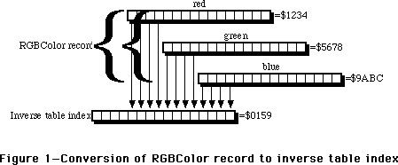
Figure 1—Conversion of RGBColor record to inverse table index
The same process is used when _CopyBits is called with an indexed-color destination. Each pixel in the source pixel image is converted to an RGBColor either by doing a table look-up of the source pixel map’s color table if the source pixel image uses indexed colors, or the pixel value is expanded to an RGBColor record if the source pixel image uses direct colors. The resulting RGBColor is then used to look up a pixel value in the inverse table of the current GDevice, and this pixel value is put into the destination pixel image.
If you specify a color in a direct-color environment, then the resulting RGBColor is converted to a direct pixel value by the processes that are shown on pages 17-6 through 17-9 of the “Color QuickDraw” chapter of Inside Macintosh, Volume VI.
Usually, inverse-table look-up involves an extra step to find what are called “hidden colors” using proprietary information that’s stored at the end of the inverse table. With an inverse-table resolution of four, only sixteen shades of any particular component can be distinguished, and that’s often not enough. An inverse-table with a resolution of five is much larger, but it still only gives you 32 shades of any component. Hidden colors are looked up after the normal inverse-table look-up to give a much more accurate representation of the specified color in the current color environment than the inverse table look-up alone can produce. Sometimes, most notably when the arithmetic transfer modes are used or if dithering is used, the hidden colors are ignored.
When a new color table is assigned to a PixMap or when its existing color table is modified, then a new corresponding inverse table should be generated for the GDevice that’ll be used when drawing into that environment. Normally, this happens automatically without you having to do any more than inform Color QuickDraw of the change. This is described in more detail in the “Changing the Off-Screen Color Table” section later in this Note.
Graphics devices are documented in the “Graphics Devices” chapter of Inside Macintosh, Volume VI which supersedes the “Graphics Devices” chapter of Inside Macintosh Volume V. They’re also discussed in the “Graphics Overview” chapter of Inside Macintosh, Volume VI, pages 16-13 through 16-14. The inverse table mechanism is described in the “Color Manager” chapter of Inside Macintosh Volume V, pages 137 through 139.
All Together Now
There are a lot of different ways to put the three structures together, and this Note discusses the architecture that’s shown in Figure 2. It’s useful when you want a simple, atomic, off-screen graphics environment.
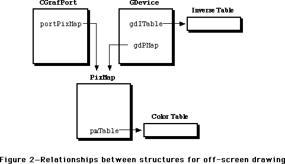
Figure 2—Relationships between structures for off-screen drawing
Notice that there’s no way to get to the GDevice from the CGrafPort, nor is there a way to get to the CGrafPort from the GDevice, though the PixMap can be found through either one. Your application must keep track of both the CGrafPort and the GDevice.
Building the Blocks
As with just about any algorithm, there are many ways to put the different structures together which form an off-screen graphics environment. This section covers just one way to build the architecture that’s shown in Figure 2.
Building the CGrafPort
The CGrafPort structure is the easiest one to put together because the _OpenCPort routine initializes so many of the fields of the CGrafPort structure for you. It also allocates and initializes the structures that are attached to every CGrafPort, such as the visRgn, clipRgn, grafVars handle, and so forth. Most of these are initialized with values that are fine for general purposes, but the visRgn, clipRgn, and portRect fields should be set to the desired boundary rectangle of the off-screen graphics environment. What follows is an overview of each of the fields that you have to worry about when you’re setting up a CGrafPort for drawing off screen.
portPixMap handle to the off-screen PixMap. _OpenCPort initializes this field to a copy of the PixMap that’s attached to the gdPMap field of the current GDevice. An overview of setting up this PixMap for drawing off screen is given in the “Building the PixMap” section later in this Note.
portRect specifies the rectangular area of the associated pixel image that this CGrafPort controls. This field should be set to the desired rectangular area of the off-screen image because _OpenCPort doesn’t necessarily initialize it to this size. Usually, the top-left corner of this rectangle has the coordinates (0, 0), but this isn’t necessarily so.
visRgn handle to the region that specifies the visible area into which you can draw. _OpenCPort doesn’t necessarily initialize it to the size of the off-screen image, so it should be set to the same size and coordinates as the portRect and left at that. This field is more important for windows because parts of them can be hidden by other windows.
clipRgn handle to the region that specifies the logical area into which you can draw. _OpenCPort initializes it to cover the entire QuickDraw coordinate plane. It’s usually a good idea to set it to the same size and coordinates as the portRect to avoid problems if the clipRgn is scaled or translated, which causes its signed integer coordinates to overflow and turn it into an empty region. One of the most common cases of this is when a picture that’s created in this CGrafPort is drawn into a destination rectangle that’s any larger than or translated from the original picture frame. Everything in the picture, including the clip region, is scaled to fit the destination rectangle. If the clip region covers the entire QuickDraw coordinate plane, then its coordinates overflow their signed integer bounds, and so the clip region becomes logically empty. The result is that nothing is drawn.
The CreateOffScreen routine in Listing 1 creates an off-screen graphics environment, given a boundary rectangle, pixel depth, and color table, and it returns a new off-screen CGrafPort and GDevice, along with an error code. The desired pixel depth in bits per pixel is given in the depth parameter. If the pixel depth is eight or less, then an indexed-color graphics environment is created and a color table is required in the colors parameter. If the pixel depth is 16 or 32 bits per pixel and 32-Bit QuickDraw is available, then a direct-color graphics environment is created and the colors parameter is ignored. If 32-Bit QuickDraw isn’t available, then a pixel depth of 16 or 32 bits per pixel results in CreateOffScreen doing nothing more than returning a parameter error. A description of CreateOffScreen is given following the listing.
MPW Pascal Listing 1
FUNCTION CreateOffScreen(
bounds: Rect; {Bounding rectangle of off-screen}
depth: Integer; {Desired number of bits per pixel in off-screen}
colors: CTabHandle; {Color table to assign to off-screen}
VAR retPort: CGrafPtr; {Returns a pointer to the new CGrafPort}
VAR retGDevice: GDHandle {Returns a handle to the new GDevice}
): OSErr;
CONST
kMaxRowBytes = $3FFE; {Maximum number of bytes in a row of pixels}
VAR
newPort: CGrafPtr; {Pointer to the new off-screen CGrafPort}
newPixMap: PixMapHandle; {Handle to the new off-screen PixMap}
newDevice: GDHandle; {Handle to the new off-screen GDevice}
qdVersion: LongInt; {Version of QuickDraw currently in use}
savedPort: GrafPtr; {Pointer to GrafPort used for save/restore}
savedState: SignedByte; {Saved state of color table handle}
bytesPerRow: Integer; {Number of bytes per row in the PixMap}
error: OSErr; {Returns error code}
BEGIN
(* Initialize a few things before we begin *)
newPort := NIL;
newPixMap := NIL;
newDevice := NIL;
error := noErr;
(* Save the color table’s current state and make sure it isn’t purgeable *)
IF colors <> NIL THEN
BEGIN
savedState := HGetState(Handle(colors));
HNoPurge(Handle(colors));
END;
(* Calculate the number of bytes per row in the off-screen PixMap *)
bytesPerRow := ((depth * (bounds.right - bounds.left) + 31) DIV 32) * 4;
(* Get the current QuickDraw version *)
error := Gestalt(gestaltQuickdrawVersion, qdVersion);
error := noErr;
(* Make sure depth is indexed or depth is direct and 32-Bit QD installed *)
IF (depth = 1) OR (depth = 2) OR (depth = 4) OR (depth = 8) OR
(((depth = 16) OR (depth = 32)) AND (qdVersion >= gestalt32BitQD)) THEN
BEGIN
(* Maximum number of bytes per row is 16,382; make sure within range*)
IF bytesPerRow <= kMaxRowBytes THEN
BEGIN
(* Make sure a color table is provided if the depth is indexed*)
IF (depth <= 8) AND (colors <> NIL) THEN
(* Indexed depth and clut provided; everything’s OK *)
error := noErr
ELSE
(* Indexed depth and clut is NIL; is parameter error *)
error := paramErr;
END
ELSE
(* # of bytes per row is more than 16,382; is parameter error *)
error := paramErr;
END
ELSE
(* Pixel depth isn’t valid; is parameter error *)
error := paramErr;
(* If sanity checks succeed, then allocate a new CGrafPort *)
IF error = noErr THEN
BEGIN
newPort := CGrafPtr(NewPtr(SizeOf (CGrafPort)));
IF newPort <> NIL THEN
BEGIN
(* Save the current port *)
GetPort(savedPort);
(* Initialize the new CGrafPort and make it the current port *)
OpenCPort(newPort);
(* Set portRect, visRgn, and clipRgn to the given bounds rect *)
newPort^.portRect := bounds;
RectRgn(newPort^.visRgn, bounds);
ClipRect(bounds);
(* Initialize the new PixMap for off-screen drawing *)
error := SetUpPixMap(depth, bounds, colors, bytesPerRow,
newPort^.portPixMap);
IF error = noErr THEN
BEGIN
(* Grab the initialized PixMap handle *)
newPixMap := newPort^.portPixMap;
(* Allocate and initialize a new GDevice *)
error := CreateGDevice(newPixMap, newDevice);
END;
(* Restore the saved port *)
SetPort(savedPort);
END
ELSE
error := MemError;
END;
(* Restore the given state of the color table *)
IF colors <> NIL THEN
HSetState(Handle(colors), savedState);
(* One Last Look Around The House Before We Go… *)
IF error <> noErr THEN
BEGIN
(* Some error occured; dispose of everything we allocated *)
IF newPixMap <> NIL THEN
BEGIN
DisposCTable(newPixMap^^.pmTable);
DisposPtr(newPixMap^^.baseAddr);
END;
IF newDevice <> NIL THEN
BEGIN
newDevice^^.gdPMap := NIL;
DisposHandle(Handle(newDevice^^.gdITable));
DisposHandle(Handle(newDevice));
END;
IF newPort <> NIL THEN
BEGIN
CloseCPort(newPort);
DisposPtr(Ptr(newPort));
END;
END
ELSE
BEGIN
(* Everything’s OK; return refs to off-screen CGrafPort and GDevice *)
retPort := newPort;
retGDevice := newDevice;
END;
CreateOffScreen := error;
END;
MPW C Listing 1
#define kMaxRowBytes 0x3FFE /* Maximum number of bytes in a row of pixels */
OSErr CreateOffScreen(
Rect *bounds, /* Bounding rectangle of off-screen */
short depth, /* Desired number of bits per pixel in off-screen */
CTabHandle colors, /* Color table to assign to off-screen */
CGrafPtr *retPort, /* Returns a pointer to the new CGrafPort */
GDHandle *retGDevice /* Returns a handle to the new GDevice */
)
{
CGrafPtr newPort; /* Pointer to the new off-screen CGrafPort */
PixMapHandle newPixMap; /* Handle to the new off-screen PixMap */
GDHandle newDevice; /* Handle to the new off-screen GDevice */
long qdVersion; /* Version of QuickDraw currently in use */
GrafPtr savedPort; /* Pointer to GrafPort used for save/restore */
SignedByte savedState; /* Saved state of color table handle */
short bytesPerRow; /* Number of bytes per row in the PixMap */
OSErr error; /* Returns error code */
/* Initialize a few things before we begin */
newPort = nil;
newPixMap = nil;
newDevice = nil;
error = noErr;
/* Save the color table’s current state and make sure it isn’t purgeable */
if (colors != nil)
{
savedState = HGetState((Handle) colors);
HNoPurge((Handle) colors);
}
/* Calculate the number of bytes per row in the off-screen PixMap */
bytesPerRow = ((depth * (bounds->right - bounds->left) + 31) >> 5) << 2;
/* Get the current QuickDraw version */
(void) Gestalt(gestaltQuickdrawVersion, &qdVersion);
/* Make sure depth is indexed or depth is direct and 32-Bit QD installed */
if (depth == 1 || depth == 2 || depth == 4 || depth == 8 ||
((depth == 16 || depth == 32) && qdVersion >= gestalt32BitQD))
{
/* Maximum number of bytes per row is 16,382; make sure within range */
if (bytesPerRow <= kMaxRowBytes)
{
/* Make sure a color table is provided if the depth is indexed */
if (depth <= 8 && colors != nil)
/* Indexed depth and clut provided; everything’s OK */
error = noErr;
else
/* Indexed depth and clut is NIL; is parameter error */
error = paramErr;
}
else
/* # of bytes per row is more than 16,382; is parameter error */
error = paramErr;
}
else
/* Pixel depth isn’t valid; is parameter error */
error = paramErr;
/* If sanity checks succeed, then allocate a new CGrafPort */
if (error == noErr)
{
newPort = (CGrafPtr) NewPtr(sizeof (CGrafPort));
if (newPort != nil)
{
/* Save the current port */
GetPort(&savedPort);
/* Initialize the new CGrafPort and make it the current port */
OpenCPort(newPort);
/* Set portRect, visRgn, and clipRgn to the given bounds rect */
newPort->portRect = *bounds;
RectRgn(newPort->visRgn, bounds);
ClipRect(bounds);
/* Initialize the new PixMap for off-screen drawing */
error = SetUpPixMap(depth, bounds, colors, bytesPerRow,
newPort->portPixMap);
if (error == noErr)
{
/* Grab the initialized PixMap handle */
newPixMap = newPort->portPixMap;
/* Allocate and initialize a new GDevice */
error = CreateGDevice(newPixMap, &newDevice);
}
/* Restore the saved port */
SetPort(savedPort);
}
else
error = MemError();
}
/* Restore the given state of the color table */
if (colors != nil)
HSetState((Handle) colors, savedState);
/* One Last Look Around The House Before We Go… */
if (error != noErr)
{
/* Some error occured; dispose of everything we allocated */
if (newPixMap != nil)
{
DisposCTable((**newPixMap).pmTable);
DisposPtr((**newPixMap).baseAddr);
}
if (newDevice != nil)
{
DisposHandle((Handle) (**newDevice).gdITable);
DisposHandle((Handle) newDevice);
}
if (newPort != nil)
{
CloseCPort(newPort);
DisposPtr((Ptr) newPort);
}
}
else
{
/* Everything’s OK; return refs to off-screen CGrafPort and GDevice */
*retPort = newPort;
*retGDevice = newDevice;
}
return error;
}
CreateOffScreen begins by making sure that the color table, if there is one, doesn’t get purged during the time that the off-screen graphics environment is created. Then, a sanity check is done for the given depth, bounds, and color table. The depth must be either 1, 2, 4, or 8 bits per pixel, or additionally 16 or 32 bits per pixel if 32-Bit QuickDraw is available. If these conditions aren’t satisfied, then it’s decided that there’s an error in the parameter list, and CreateOffScreen does nothing more. To determine whether 32-Bit QuickDraw is available or not, the _Gestalt routine is used. If _Gestalt returns a value that’s equal to or greater than the constant gestalt32BitQD, then 32-Bit QuickDraw is available and depths of 16 and 32 bits per pixel are supported. It’s not necessary to determine whether _Gestalt is available or not because it’s implemented as glue code in the Macintosh Programmer’s Workshop.
A check is then done to determine whether the number of bytes in each row of the off-screen pixel image is too much for QuickDraw to handle. Color QuickDraw can handle up to and including 16,382 ($3FFE) bytes in each row of any pixel image. If the required number of bytes per row exceeds this amount, then CreateOffScreen decides that there’s an error in the parameter list and does nothing more. The minimum number of bytes in a row that’s enough to cover the given boundary rectangle at the given pixel depth is calculated with the formula:
bytesPerRow := ((depth * (bounds.right - bounds.left) + 31) DIV 32) * 4;
This formula multiplies the number of pixels across the PixMap by the pixel depth to get the number of bits, and then this is divided by eight to get the number of bytes. This division by eight looks very strange because the number of bytes per row must be even, and so this formula takes advantage of integer division and multiplication to make the result come out even. This particular formula additionally makes sure that the number of bytes per row is a multiple of four. This helps optimize the performance of Color QuickDraw operations because it allows Color QuickDraw to refer to each row beginning on a long word boundary in memory.
The last sanity check is to make sure that a color table is given as a parameter if it’s needed. Indexed-color graphics environments need color tables, so if the given pixel depth is eight or less (which implies an indexed-color graphics environment) and the given color table is NIL, then CreateOffScreen decides that there’s an error in the parameter list and does nothing more. If the given pixel depth is 16 or 32 (which implies a direct-color graphics environment), then CreateOffScreen ignores the given color table.
If all the sanity checks succeed, then the off-screen CGrafPort is allocated using a call to _NewPtr, and then it’s initialized and opened as a CGrafPort by passing the resulting pointer to _OpenCPort. Because _OpenCPort makes the new CGrafPort the current port, the current port is first saved so that it can be restored as the current port when CreateOffScreen is done.
As mentioned above, the _OpenCPort doesn’t necessarily initialize the portRect, visRgn, and clipRgn of the new CGrafPort to the areas that are needed for any particular off-screen graphics environment. So, the given boundary rectangle is assigned to the portRect field, _RectRgn is called to make the visRgn equal to the given boundary rectangle, and _ClipRect is called to set the clipRgn so that it’s equal to the given boundary rectangle.
The PixMap in the portPixMap field needs to be initialized for off-screen drawing, and that’s handled by the SetUpPixMap routine that’s described and defined in the “Building the PixMap” section later in this Note. Similarly, the off-screen GDevice must be created and initialized. That’s handled by the CreateGDevice routine that’s described and defined in the “Building the GDevice” section later in this Note.
Once these things are done, CreateOffScreen returns a pointer to the off-screen CGrafPort in the retPort parameter and a handle to the off-screen GDevice in the retGDevice parameter. The way to use these references is described in the “The Drawing Room” section later in this Note.
Building the PixMap
_OpenCPort initializes the portPixMap field of the CGrafPort it’s initializing with a copy of the PixMap of the current GDevice. When the CreateOffScreen routine described above executes, the current GDevice is unknown. So, all the fields of the PixMap that the new CGrafPort receives must be initialized so that it can be used for drawing off screen.* What follows is an overview of each of the PixMap fields and how they should be initialized for off-screen drawing.
baseAddr pointer to the off-screen pixel image. The off-screen pixel image is allocated as a non-relocatable block in the heap. The size of this block of memory is calculated from the rowBytes field, described next, multiplied by the number of rows in the given boundary rectangle.
rowBytes number of bytes in each row of the pixel image. This value is calculated from the formula that’s given in the CreateOffScreen routine. The most significant bit of this field should be set so that Color QuickDraw knows that this is a PixMap rather than a BitMap. The maximum value, ignoring the most significant bit, is 16,382.
bounds defines the coordinate system and the dimensions of the pixel image. For most off-screen drawing, this should be a rectangle that covers the entire off-screen graphics environment.
pmVersion set of internally- and externally-defined flags. As of 32-Bit QuickDraw 1.2, only the baseAddr32 flag is defined externally. This flag is described in “Choosing Your Off-Screen Memory” later in this Note. For most off-screen drawing, this field is set to zero.
packType image compression scheme for pictures. The options for this field are discussed in the “Graphics Overview” chapter of Inside Macintosh, Volume VI, pages 17-22 through 17-23. In this Note, image compression isn’t discussed and so this field is set to zero.
packSize internally-used field. This field is always set to zero.
hRes horizontal resolution of the pixel map. By default, the QuickDraw resolution is 72 dots per inch, and that’s the value that this Note uses. This is a fixed-point field, so the actual value in this field is $00480000.
vRes vertical resolution of the pixel map. See the hRes description.
pixelType format of the pixels. In indexed-color pixel maps, this field holds zero. In direct-color pixel maps, this field holds the RGBDirect constant, which is equal to 16.
pixelSize number of bits in every pixel. For indexed-color pixels, this is 1, 2, 4, or 8 bits per pixel. For direct-color pixels, this is 16 or 32 bits per pixel.
cmpCount number of components in every pixel. In indexed-color pixel maps, this field is set to 1. In direct-color pixel maps, this field is set to 3. Sometimes it’s handy to set this field to 4 in 32-bit deep pixel maps when they’re being saved in a picture. See the “Color QuickDraw” chapter of Inside Macintosh, Volume VI, page 17-23, for details about this.
cmpSize number of bits in each color component. In indexed-color pixel maps, this field is set to the same value that’s in the pixelSize field. In 16-bit deep direct pixel maps, this field is set to 5. In 32-bit deep direct pixel maps, this field is set to 8.
planeBytes not currently defined. This field is set to zero.
pmTable handle to the color table for indexed-color pixel maps. A method to create a color table is given in the “About That Creation Thing…” section later in this Note. In direct-color pixel maps, this field contains a handle to a dummy color table, and building one of these is shown in the SetUpPixMap routine in Listing 2.
pmReserved not currently defined. This field is set to zero.
The SetUpPixMap routine in Listing 2 initializes the PixMap that’s passed to it in the aPixMap parameter so that it can be used in an off-screen graphics environment. The depth, bounds, and color parameters are the same as the ones passed to the CreateOffScreen routine. The bytesPerRow parameter is the number of bytes in each row of the off-screen pixel image. A description of SetUpPixMap follows the listing.
MPW Pascal Listing 2
FUNCTION SetUpPixMap(
depth: Integer; {Desired number of bits/pixel in off-screen}
bound: Rect; {Bounding rectangle of off-screen}
colors: CTabHandle; {Color table to assign to off-screen}
bytesPerRow: Integer; {Number of bytes in each row of pixels}
aPixMap: PixMapHandle {Handle to the PixMap being initialized}
): OSErr;
CONST
kDefaultRes = $00480000; {Default resolution is 72 DPI; Fixed type}
VAR
newColors: CTabHandle; {Color table used for the off-screen PixMap}
offBaseAddr: Ptr; {Pointer to the off-screen pixel image}
error: OSErr; {Returns error code}
BEGIN
error := noErr;
newColors := NIL;
offBaseAddr := NIL;
(* Clone the clut if indexed color; allocate a dummy clut if direct color *)
IF depth <= 8 THEN
BEGIN
newColors := colors;
error := HandToHand(Handle(newColors));
END
ELSE
BEGIN
newColors := CTabHandle(NewHandle(SizeOf(ColorTable) -
SizeOf(CSpecArray)));
error := MemError;
END;
IF error = noErr THEN
BEGIN
(* Allocate pixel image; long integer multiplication avoids overflow*)
offBaseAddr := NewPtr(LongInt(bytesPerRow) * (bound.bottom -
bound.top));
IF offBaseAddr <> NIL THEN
WITH aPixMap^^ DO
BEGIN
(* Initialize fields common to indexed and direct PixMaps *)
baseAddr := offBaseAddr; {Point to image}
rowBytes := BOR(bytesPerRow, {MSB set for PixMap}
$8000);
bounds := bound; {Use given bounds}
pmVersion := 0; {No special stuff}
packType := 0; {Default PICT pack}
packSize := 0; {Always zero when in memory}
hRes := kDefaultRes; {72 DPI default resolution}
vRes := kDefaultRes; {72 DPI default resolution}
pixelSize := depth; {Set number of bits/pixel}
planeBytes := 0; {Not used}
pmReserved := 0; {Not used}
(* Initialize fields specific to indexed and direct PixMaps*)
IF depth <= 8 THEN
BEGIN
(* PixMap is indexed *)
pixelType := 0; {Indicates indexed}
cmpCount := 1; {Have 1 component}
cmpSize := depth; {Component size=depth}
pmTable := newColors; {Handle to CLUT}
END
ELSE
BEGIN
(* PixMap is direct *)
pixelType := RGBDirect; {Indicates direct}
cmpCount := 3; {Have 3 components}
IF depth = 16 THEN
cmpSize := 5 {5 bits/component}
ELSE
cmpSize := 8; {8 bits/component}
(* Initialize fields of the dummy color table *)
newColors^^.ctSeed := 3 * aPixMap^^.cmpSize;
newColors^^.ctFlags := 0;
newColors^^.ctSize := 0;
pmTable := newColors;
END;
END
ELSE
error := MemError;
END
ELSE
newColors := NIL;
(* If no errors occured, return a handle to the new off-screen PixMap *)
IF error <> noErr THEN
BEGIN
IF newColors <> NIL THEN
DisposCTable(newColors);
END;
(* Return the error code *)
SetUpPixMap := error;
END;
MPW C Listing 2
#define kDefaultRes 0x00480000 /* Default resolution is 72 DPI; Fixed type */
OSErr SetUpPixMap(
short depth, /* Desired number of bits/pixel in off-screen */
Rect *bounds, /* Bounding rectangle of off-screen */
CTabHandle colors, /* Color table to assign to off-screen */
short bytesPerRow, /* Number of bytes per row in the PixMap */
PixMapHandle aPixMap /* Handle to the PixMap being initialized */
)
{
CTabHandle newColors; /* Color table used for the off-screen PixMap */
Ptr offBaseAddr; /* Pointer to the off-screen pixel image */
OSErr error; /* Returns error code */
error = noErr;
newColors = nil;
offBaseAddr = nil;
/* Clone the clut if indexed color; allocate a dummy clut if direct color*/
if (depth <= 8)
{
newColors = colors;
error = HandToHand((Handle *) &newColors);
}
else
{
newColors = (CTabHandle) NewHandle(sizeof(ColorTable) -
sizeof(CSpecArray));
error = MemError();
}
if (error == noErr)
{
/* Allocate pixel image; long integer multiplication avoids overflow */
offBaseAddr = NewPtr((unsigned long) bytesPerRow * (bounds->bottom -
bounds->top));
if (offBaseAddr != nil)
{
/* Initialize fields common to indexed and direct PixMaps */
(**aPixMap).baseAddr = offBaseAddr; /* Point to image */
(**aPixMap).rowBytes = bytesPerRow | /* MSB set for PixMap */
0x8000;
(**aPixMap).bounds = *bounds; /* Use given bounds */
(**aPixMap).pmVersion = 0; /* No special stuff */
(**aPixMap).packType = 0; /* Default PICT pack */
(**aPixMap).packSize = 0; /* Always zero in mem */
(**aPixMap).hRes = kDefaultRes; /* 72 DPI default res */
(**aPixMap).vRes = kDefaultRes; /* 72 DPI default res */
(**aPixMap).pixelSize = depth; /* Set # bits/pixel */
(**aPixMap).planeBytes = 0; /* Not used */
(**aPixMap).pmReserved = 0; /* Not used */
/* Initialize fields specific to indexed and direct PixMaps */
if (depth <= 8)
{
/* PixMap is indexed */
(**aPixMap).pixelType = 0; /* Indicates indexed */
(**aPixMap).cmpCount = 1; /* Have 1 component */
(**aPixMap).cmpSize = depth; /* Component size=depth */
(**aPixMap).pmTable = newColors; /* Handle to CLUT */
}
else
{
/* PixMap is direct */
(**aPixMap).pixelType = RGBDirect; /* Indicates direct */
(**aPixMap).cmpCount = 3; /* Have 3 components */
if (depth == 16)
(**aPixMap).cmpSize = 5; /* 5 bits/component */
else
(**aPixMap).cmpSize = 8; /* 8 bits/component */
(**newColors).ctSeed = 3 * (**aPixMap).cmpSize;
(**newColors).ctFlags = 0;
(**newColors).ctSize = 0;
(**aPixMap).pmTable = newColors;
}
}
else
error = MemError();
}
else
newColors = nil;
/* If no errors occured, return a handle to the new off-screen PixMap */
if (error != noErr)
{
if (newColors != nil)
DisposCTable(newColors);
}
/* Return the error code */
return error;
}
SetUpPixMap begins by copying the given color table if an indexed-color graphics environment is being built, or allocating a dummy color table if a direct-color graphics environment is being built. A copy of the color table is made because this allows the given color table and the off-screen graphics environment’s color table to be manipulated independently without interfering with each other, and this lets the off-screen graphics environment routines manipulate the color table without needing to worry about whether the color table is a 'clut' resource or not. The dummy color table is made so that routines which assume that every PixMap has a color table won’t do something catastrophic if they find a NIL color table. The off-screen pixel image is then allocated as a non-relocatable block in the application’s heap.
Some of the fields of a PixMap have to be initialized differently depending upon whether the indexed-color model or the direct-color model is being used. So, the fields that are the same regardless of the color model that’s being used are assigned first. Then the desired pixel depth is compared to 8. If the depth is less than or equal to 8, then the rest of the fields are initialized for the indexed-color model. Otherwise, the rest of the fields are initialized for the direct color model. In the case of the direct-color model, the dummy color table is initialized to have no CSpecArray entries and its ctSeed field is set to three times the component size. This dummy color table is then installed into the PixMap.
Once SetUpPixMap completes, the PixMap of the new CGrafPort is ready to hold an off-screen image. It’s not quite ready to be drawn into with Color QuickDraw though. To do that, the off-screen GDevice is still needed, and the construction and initialization of that is covered in the next section.
Building the GDevice
The _OpenCPort routine automatically allocates and initializes a PixMap, and the SetUpPixMap routine reinitializes that existing PixMap. _OpenCPort doesn’t allocate nor initialize a GDevice, so one has to be created from scratch. Pages 21-20 through 21-21 of “The Graphics Devices Manager” chapter of Inside Macintosh, Volume VI describes the _NewGDevice routine which sounds like it’s the ticket to getting a GDevice for off-screen drawing, but it always allocates the new GDevice in the system heap. That’s not so good because if your program unexpectedly quits or if you just forget to dispose of the GDevice before you quit for real, the GDevice gets orphaned in the system heap. To prevent this from happening, _NewGDevice should be ignored and the off-screen GDevice should instead be allocated and initialized from scratch. What follows is a description of how each field of the GDevice structure should be initialized.
gdRefNum reference number of video driver. Off-screen graphics environments don’t need to have video drivers because there’s no video device associated with them, so this field is set to zero.
gdID used to identify specific GDevice structures from color search procedures. This isn’t necessary for off-screen drawing, so this is normally set to zero.
gdType type of GDevice. This field is set to the constant clutType (equal to zero) for an indexed color environment and set to the constant directType (equal to 2) for a direct color environment.
gdITable handle to the inverse table. Initially, this field is set to an arbitrarily small handle. Later, the _MakeITable routine is used to resize and initialize this handle to a real inverse table.
gdResPref inverse table resolution. When _MakeITable is called by QuickDraw, the value of this field is used as the inverse table resolution. Almost all inverse tables have a resolution of 4. There are some cases in a inverse table resolution of 5 is useful, particularly when the arithmetic transfer modes are used with _CopyBits. See the section, “The GDevice,” earlier in this Note.
gdSearchProc pointer to the color search procedure. If a color search procedure is needed, this field can be set later by calling the _AddSearch routine (see the “Color Manager” chapter of Inside Macintosh Volume V, pages 145 through 147). Usually, this field is just set to NIL and left at that.
gdCompProc pointer to the color complement procedure. If a color complement procedure is needed, this field can be set later by calling the _AddComp routine (see the “Color Manager” chapter of Inside Macintosh Volume V, pages 145 through 147). Usually, this field is set to NIL and left at that.
gdFlags flags indicating certain states of the GDevice. This field should initially be set to zeroes. After the GDevice has been built, these flags can be set with the _SetDeviceAttrs routine (see the “Graphics Devices Manager” chapter of Inside Macintosh, Volume VI, page 21-10 and 21-22).
gdPMap handle to a PixMap. A handle to the PixMap of the CGrafPort that was created above is put into this field.
gdRefCon miscellaneous data. _CalcCMask and _SeedCFill use this field as described on pages 71 through 72 of Inside Macintosh, Volume V. Initially, this field is set to zero.
gdNextGD handle to next GDevice in the GDevice list. The system maintains a linked list of GDevice records in which there’s one GDevice for every screen, and the links are kept in this field. Off-screen GDevice structures should never be put into this list, so this field should be set to NIL.
gdRect rectangle of GDevice. Strictly speaking, this field is only used for screens, but it should be the same as the bounds rectangle of the off-screen PixMap.
gdMode current video mode. This field is used by video drivers to keep track of the current mode that the video device is in. For off-screen GDevice structures, this field should be set to -1.
gdCC… These four fields are only used with GDevice structures for screens. For off-screen GDevice structures, these fields should be set to zero.
gdReserved not currently defined. This field is set to zero.
The CreateGDevice routine shown below in Listing 3 allocates and initializes a GDevice structure. It takes the initialized off-screen PixMap in the basePixMap parameter and returns the initialized GDevice in the retGDevice parameter. If any error occurs, any memory that’s allocated is disposed of and the result code is returned as a function result.
MPW Pascal Listing 3
FUNCTION CreateGDevice(
basePixMap: PixMapHandle; {Handle to the PixMap to base GDevice on}
VAR retGDevice: GDHandle {Returns a handle to the new GDevice}
): OSErr;
CONST
kITabRes = 4; {Inverse table resolution}
VAR
newDevice: GDHandle; {Handle to the new GDevice}
embryoITab: ITabHandle; {Handle to the embryonic inverse table}
error: OSErr; {Error code}
BEGIN
(* Initialize a few things before we begin *)
error := noErr;
newDevice := NIL;
embryoITab := NIL;
(* Allocate memory for the new GDevice *)
newDevice := GDHandle(NewHandle(SizeOf(GDevice)));
IF newDevice <> NIL THEN
BEGIN
(* Allocate the embryonic inverse table *)
embryoITab := ITabHandle(NewHandleClear(2));
IF embryoITab <> NIL THEN
BEGIN
(* Initialize the new GDevice fields *)
WITH newDevice^^ DO
BEGIN
gdRefNum := 0; {Only used for screens}
gdID := 0; {Won’t normally use}
IF basePixMap^^.pixelSize <= 8 THEN
gdType := clutType {Depth≤8; clut device}
ELSE
gdType := directType; {Depth>8; direct device}
gdITable := embryoITab; {2-byte handle for now}
gdResPref := kITabRes; {Normal inv table res}
gdSearchProc := NIL; {No color search proc}
gdCompProc := NIL; {No complement proc}
gdFlags := 0; {Will set these later}
gdPMap := basePixMap; {Reference our PixMap}
gdRefCon := 0; {Won’t normally use}
gdNextGD := NIL; {Not in GDevice list}
gdRect := basePixMap^^.bounds; {Use PixMap dimensions}
gdMode := -1; {For non-screens}
gdCCBytes := 0; {Only used for screens}
gdCCDepth := 0; {Only used for screens}
gdCCXData := NIL; {Only used for screens}
gdCCXMask := NIL; {Only used for screens}
gdReserved := 0; {Currently unused}
END;
(* Set color-device bit if PixMap isn’t black & white *)
IF basePixMap^^.pixelSize > 1 THEN
SetDeviceAttribute(newDevice, gdDevType, true);
(* Set bit to indicate that the GDevice has no video driver *)
SetDeviceAttribute(newDevice, noDriver, true);
(* Initialize the inverse table *)
IF basePixMap^^.pixelSize <= 8 THEN
BEGIN
MakeITable(basePixMap^^.pmTable, newDevice^^.gdITable,
newDevice^^.gdResPref);
error := QDError;
END;
END
ELSE
error := MemError;
END
ELSE
error := MemError;
(* Handle any errors along the way *)
IF error <> noErr THEN
BEGIN
IF embryoITab <> NIL THEN
DisposHandle(Handle(embryoITab));
IF newDevice <> NIL THEN
DisposHandle(Handle(newDevice));
END
ELSE
retGDevice := newDevice;
(* Return a handle to the new GDevice *)
CreateGDevice := error;
END;
MPW C Listing 3
#define kITabRes 4 /* Inverse table resolution */
OSErr CreateGDevice(
PixMapHandle basePixMap, /* Handle to the PixMap to base GDevice on */
GDHandle *retGDevice /* Returns a handle to the new GDevice */
)
{
GDHandle newDevice; /* Handle to the new GDevice */
ITabHandle embryoITab; /* Handle to the embryonic inverse table */
Rect deviceRect; /* Rectangle of GDevice */
OSErr error; /* Error code */
/* Initialize a few things before we begin */
error = noErr;
newDevice = nil;
embryoITab = nil;
/* Allocate memory for the new GDevice */
newDevice = (GDHandle) NewHandle(sizeof(GDevice));
if (newDevice != nil)
{
/* Allocate the embryonic inverse table */
embryoITab = (ITabHandle) NewHandleClear(2);
if (embryoITab != nil)
{
/* Set rectangle of device to PixMap bounds */
deviceRect = (**basePixMap).bounds;
/* Initialize the new GDevice fields */
(**newDevice).gdRefNum = 0; /* Only used for screens */
(**newDevice).gdID = 0; /* Won’t normally use */
if ((**basePixMap).pixelSize <= 8)
(**newDevice).gdType = clutType; /* Depth≤8; clut device */
else
(**newDevice).gdType = directType; /* Depth>8; direct device */
(**newDevice).gdITable = embryoITab; /* 2-byte handle for now */
(**newDevice).gdResPref = kITabRes; /* Normal inv table res */
(**newDevice).gdSearchProc = nil; /* No color search proc */
(**newDevice).gdCompProc = nil; /* No complement proc */
(**newDevice).gdFlags = 0; /* Will set these later */
(**newDevice).gdPMap = basePixMap; /* Reference our PixMap */
(**newDevice).gdRefCon = 0; /* Won’t normally use */
(**newDevice).gdNextGD = nil; /* Not in GDevice list */
(**newDevice).gdRect = deviceRect; /* Use PixMap dimensions */
(**newDevice).gdMode = -1; /* For non-screens */
(**newDevice).gdCCBytes = 0; /* Only used for screens */
(**newDevice).gdCCDepth = 0; /* Only used for screens */
(**newDevice).gdCCXData = 0; /* Only used for screens */
(**newDevice).gdCCXMask = 0; /* Only used for screens */
(**newDevice).gdReserved = 0; /* Currently unused */
/* Set color-device bit if PixMap isn’t black & white */
if ((**basePixMap).pixelSize > 1)
SetDeviceAttribute(newDevice, gdDevType, true);
/* Set bit to indicate that the GDevice has no video driver */
SetDeviceAttribute(newDevice, noDriver, true);
/* Initialize the inverse table */
if ((**basePixMap).pixelSize <= 8)
{
MakeITable((**basePixMap).pmTable, (**newDevice).gdITable,
(**newDevice).gdResPref);
error = QDError();
}
}
else
error = MemError();
}
else
error = MemError();
/* Handle any errors along the way */
if (error != noErr)
{
if (embryoITab != nil)
DisposHandle((Handle) embryoITab);
if (newDevice != nil)
DisposHandle((Handle) newDevice);
}
else
*retGDevice = newDevice;
/* Return a handle to the new GDevice */
return error;
}
CreateGDevice begins by allocating the GDevice structure and an embryonic form of the inverse table in the current heap. The inverse table is allocated as two zero bytes for now; it’ll be resized and initialized to be a real inverse table later in this routine. Then, each of the GDevice fields are initialized as described above.
After all the fields have been initialized, the gdFlags field is set through _SetDeviceAttribute. If the desired pixel depth is greater than 1, then the gdDevType bit is set. This indicates that the GDevice is for a color graphics environment. This bit should be set even if a gray-scale color table is used for this off-screen graphics environment. The noDriver bit is set because this is an off-screen GDevice and so there’s no associated video device driver.
Finally, the inverse table is resized and initialized by calling the _MakeITable routine. A handle to the two-byte embryonic inverse table that was created earlier in CreateGDevice is passed as a parameter, as is a handle to the off-screen color table and the preferred inverse table resolution.
All Fall Down
Now that we have a way to create an off-screen graphics environment, there has to be a way to get rid of it too. The DisposeOffScreen routine shown in Listing 4 does this. The CreateOffScreen routine returns an off-screen graphics environment that’s represented by a CGrafPort and GDevice. The DisposeOffScreen routine takes the off-screen CGrafPort and GDevice and deallocates all the memory that’s associated with them including the CGrafPort and its dependent structures, the GDevice, the PixMap, the color table, and the inverse table.
MPW Pascal Listing 4
PROCEDURE DisposeOffScreen(
doomedPort: CGrafPtr; {Pointer to the CGrafPort we’re getting rid of}
doomedGDevice: GDHandle {Handle to the GDevice we’re getting rid of}
);
VAR
currPort: CGrafPtr; {Pointer to the current port}
currGDevice: GDHandle; {Handle to the current GDevice}
BEGIN
(* Check to see whether the doomed CGrafPort is the current port *)
GetPort(GrafPtr(currPort));
IF currPort = doomedPort THEN
BEGIN
(* It is; set current port to Window Manager CGrafPort *)
GetCWMgrPort(currPort);
SetPort(GrafPtr(currPort));
END;
(* Check to see whether the doomed GDevice is the current GDevice *)
currGDevice := GetGDevice;
IF currGDevice = doomedGDevice THEN
(* It is; set current GDevice to the main screen’s GDevice *)
SetGDevice(GetMainDevice);
(* Throw everything away *)
doomedGDevice^^.gdPMap := NIL;
DisposGDevice(doomedGDevice);
DisposPtr(doomedPort^.portPixMap^^.baseAddr);
IF doomedPort^.portPixMap^^.pmTable <> NIL THEN
DisposCTable(doomedPort^.portPixMap^^.pmTable);
CloseCPort(doomedPort);
DisposPtr(Ptr(doomedPort));
END;
MPW C Listing 4
void DisposeOffScreen(
CGrafPtr doomedPort, /* Pointer to the CGrafPort to be disposed of */
GDHandle doomedGDevice /* Handle to the GDevice to be disposed of */
)
{
CGrafPtr currPort; /* Pointer to the current port */
GDHandle currGDevice; /* Handle to the current GDevice */
/* Check to see whether the doomed CGrafPort is the current port */
GetPort((GrafPtr *) &currPort);
if (currPort == doomedPort)
{
/* It is; set current port to Window Manager CGrafPort */
GetCWMgrPort(&currPort);
SetPort((GrafPtr) currPort);
}
/* Check to see whether the doomed GDevice is the current GDevice */
currGDevice = GetGDevice();
if (currGDevice == doomedGDevice)
/* It is; set current GDevice to the main screen’s GDevice */
SetGDevice(GetMainDevice());
/* Throw everything away */
(**doomedGDevice).gdPMap = nil;
DisposGDevice(doomedGDevice);
DisposPtr((**doomedPort->portPixMap).baseAddr);
if ((**doomedPort->portPixMap).pmTable != nil)
DisposCTable((**doomedPort->portPixMap).pmTable);
CloseCPort(doomedPort);
DisposPtr((Ptr) doomedPort);
}
One mildly tricky aspect of this is that we shouldn’t dispose of the current graphics environment. To prevent this, the current port is retrieved by a call to _GetPort. If it returns a pointer to the same port that DisposeOffScreen is disposing, then the current port is set to the Window Manager’s CGrafPort. That was an arbitrary choice, but it’s the most neutral. Similarly, the current GDevice is retrieved by a call to _GetGDevice. If it returns a handle to the same GDevice that DisposeOffScreen is disposing, then the current port is set to the main screen’s GDevice. Again, that’s an arbitrary, neutral choice.
The inverse table, GDevice, pixel image, and color table are disposed of. Before disposing of the color table, a check is first made to see whether it’s NIL. That’s because it’s reasonable, though not normal, for the PixMap not to have even a dummy color table if the direct-color model is being used. Then the CGrafPort is closed which deallocates all the pieces associated with the CGrafPort, including the PixMap. Once this is done, all the structures that were created by calling CreateOffScreen are deallocated.
Playing With Blocks
Now that these four routines with two entry points can create and dispose of off-screen graphics environments, how are they used? There are several phases to using an off-screen graphics environment: creating it, drawing into it, switching between it and other off-screen and on-screen graphics environments, copying images to and from it, and disposing of it. Listing 5 shows a routine called ExerciseOffScreen which is a very basic example of all of these phases.
MPW Pascal Listing 5
PROCEDURE ExerciseOffScreen;
CONST
kOffDepth = 8; {Number of bits per pixel in off-screen environment}
rGrayClut = 1600; {Resource ID of gray-scale clut}
rColorClut = 1601; {Resource ID of full-color clut}
VAR
grayPort: CGrafPtr; {Graphics environment for gray off screen}
grayDevice: GDHandle; {Color environment for gray off screen}
colorPort: CGrafPtr; {Graphics environment for color off screen}
colorDevice: GDHandle; {Color environment for color off screen}
savedPort: GrafPtr; {Pointer to the saved graphics environment}
savedDevice: GDHandle; {Handle to the saved color environment}
offColors: CTabHandle; {Colors for off-screen environments}
offRect: Rect; {Rectangle of off-screen environments}
circleRect: Rect; {Rectangles for circle-drawing}
count: Integer; {Generic counter}
aColor: RGBColor; {Color used for drawing off-screen}
error: OSErr; {Error return from off-screen creation}
BEGIN
(* Set up the rectangle for the off-screen graphics environments *)
SetRect(offRect, 0, 0, 256, 256);
(* Get the color table for the gray off-screen graphics environment *)
offColors := GetCTable(rGrayClut);
(* Create the gray off-screen graphics environment *)
error := CreateOffScreen(offRect, kOffDepth, offColors, grayPort,
grayDevice);
IF error = noErr THEN
BEGIN
(* Get the color table for the color off-screen graphics environment*)
offColors := GetCTable(rColorClut);
(* Create the color off-screen graphics environment *)
error := CreateOffScreen(offRect, kOffDepth, offColors, colorPort,
colorDevice);
IF error = noErr THEN
BEGIN
(* Save the current graphics environment *)
GetPort(savedPort);
savedDevice := GetGDevice;
(* Set the current graphics environment to the gray one *)
SetPort(GrafPtr(grayPort));
SetGDevice(grayDevice);
(* Draw gray-scale ramp into the gray off-screen environment *)
FOR count := 0 TO 255 DO
BEGIN
aColor.red := count * 257;
aColor.green := aColor.red;
aColor.blue := aColor.green;
RGBForeColor(aColor);
MoveTo(0, count);
LineTo(255, count);
END;
(* Copy gray ramp into color off-screen colorized with green *)
SetPort(GrafPtr(colorPort));
SetGDevice(colorDevice);
aColor.red := $0000; aColor.green := $FFFF; aColor.blue :=$0000;
RGBForeColor(aColor);
CopyBits(GrafPtr(grayPort)^.portBits,
GrafPtr(colorPort)^.portBits,
grayPort^.portRect,
colorPort^.portRect,
srcCopy + ditherCopy, NIL);
(* Draw red, green, and blue circles *)
PenSize(8, 8);
aColor.red := $FFFF; aColor.green := $0000; aColor.blue :=$0000;
RGBForeColor(aColor);
circleRect := colorPort^.portRect;
FrameOval(circleRect);
aColor.red := $0000; aColor.green := $FFFF; aColor.blue :=$0000;
RGBForeColor(aColor);
InsetRect(circleRect, 20, 20);
FrameOval(circleRect);
aColor.red := $0000; aColor.green := $0000; aColor.blue :=$FFFF;
RGBForeColor(aColor);
InsetRect(circleRect, 20, 20);
FrameOval(circleRect);
(* Copy the color off-screen environment to the current port *)
SetPort(savedPort);
SetGDevice(savedDevice);
CopyBits(GrafPtr(colorPort)^.portBits, savedPort^.portBits,
colorPort^.portRect, savedPort^.portRect,
srcCopy, NIL);
(* Dispose of the off-screen graphics environments *)
DisposeOffScreen(grayPort, grayDevice);
DisposeOffScreen(colorPort, colorDevice);
END;
END;
END;
MPW C Listing 5
#define kOffDepth 8 /* Number of bits per pixel in off-screen environment*/
#define rGrayClut 1600 /* Resource ID of gray-scale clut */
#define rColorClut 1601 /* Resource ID of full-color clut */
void ExerciseOffScreen()
{
CGrafPtr grayPort; /* Graphics environment for gray off screen */
GDHandle grayDevice; /* Color environment for gray off screen */
CGrafPtr colorPort; /* Graphics environment for color off screen */
GDHandle colorDevice; /* Color environment for color off screen */
GrafPtr savedPort; /* Pointer to the saved graphics environment */
GDHandle savedDevice; /* Handle to the saved color environment */
CTabHandle offColors; /* Colors for off-screen environments */
Rect offRect; /* Rectangle of off-screen environments */
Rect circleRect; /* Rectangles for circle-drawing */
short count; /* Generic counter */
RGBColor aColor; /* Color used for drawing off-screen */
OSErr error; /* Error return from off-screen creation */
/* Set up the rectangle for the off-screen graphics environments */
SetRect(&offRect, 0, 0, 256, 256);
/* Get the color table for the gray off-screen graphics environment */
offColors = GetCTable(rGrayClut);
/* Create the gray off-screen graphics environment */
error = CreateOffScreen(&offRect, kOffDepth, offColors,
&grayPort, &grayDevice);
if (error == noErr)
{
/* Get the color table for the color off-screen graphics environment */
offColors = GetCTable(rColorClut);
/* Create the color off-screen graphics environment */
error = CreateOffScreen(&offRect, kOffDepth, offColors,
&colorPort, &colorDevice);
if (error == noErr)
{
/* Save the current graphics environment */
GetPort(&savedPort);
savedDevice = GetGDevice();
/* Set the current graphics environment to the gray one */
SetPort((GrafPtr) grayPort);
SetGDevice(grayDevice);
/* Draw gray-scale ramp into the gray off-screen environment */
for (count = 0; count < 256; ++count)
{
aColor.red = aColor.green = aColor.blue = count * 257;
RGBForeColor(&aColor);
MoveTo(0, count);
LineTo(255, count);
}
/* Copy gray ramp into color off-screen colorized with green */
SetPort((GrafPtr) colorPort);
SetGDevice(colorDevice);
aColor.red = 0x0000; aColor.green = 0xFFFF; aColor.blue = 0x0000;
RGBForeColor(&aColor);
CopyBits(&((GrafPtr) grayPort)->portBits,
&((GrafPtr) colorPort)->portBits,
&grayPort->portRect,
&colorPort->portRect,
srcCopy | ditherCopy, nil);
/* Draw red, green, and blue circles */
PenSize(8, 8);
aColor.red = 0xFFFF; aColor.green = 0x0000; aColor.blue = 0x0000;
RGBForeColor(&aColor);
circleRect = colorPort->portRect;
FrameOval(&circleRect);
aColor.red = 0x0000; aColor.green = 0xFFFF; aColor.blue = 0x0000;
RGBForeColor(&aColor);
InsetRect(&circleRect, 20, 20);
FrameOval(&circleRect);
aColor.red = 0x0000; aColor.green = 0x0000; aColor.blue = 0xFFFF;
RGBForeColor(&aColor);
InsetRect(&circleRect, 20, 20);
FrameOval(&circleRect);
/* Copy the color off-screen environment to the current port */
SetPort(savedPort);
SetGDevice(savedDevice);
CopyBits(&((GrafPtr) colorPort)->portBits, &savedPort->portBits,
&colorPort->portRect, &savedPort->portRect,
srcCopy, nil);
/* Dispose of the off-screen graphics environments */
DisposeOffScreen(grayPort, grayDevice);
DisposeOffScreen(colorPort, colorDevice);
}
}
}
Two off-screen graphics environments are created in the same way. A rectangle that’s 256 pixels wide by 256 pixels high and with its top-left coordinate at (0, 0) is created in the offRect local variable. 'clut' resources are loaded from the application’s resource fork to use as the color tables of the two off-screen graphics environments; a gray-scale 'clut' in the first case and a full-color 'clut' in the second case. Then, CreateOffScreen is called with the rectangle, color table, and a hard-coded pixel depth of eight bits per pixel.
If CreateOffScreen returns noErr in both cases, then the current graphics environment is saved so that it can be restored later. Graphics environments consist of the current port and the current GDevice. The current GrafPort or CGrafPort is saved with _GetPort. The current GDevice is saved with _GetGDevice.
The gray-scale off-screen graphics environment is set as the current graphics environment by calling _SetPort with its CGrafPort and calling _SetGDevice with its GDevice. A vertical gray ramp is drawn into this graphics environment with the usual set of QuickDraw calls. This graphics environment’s pixel image is then copied to the full-color off-screen graphics environment with dithering and colorization with green (dithering requires 32-Bit QuickDraw and consistent colorization requires system software version 7.0; both of these features are described in Konstantin Othmer’s article “QuickDraw’s CopyBits Procedure: Better Than Ever in System 7.0” in develop issue 6). Before this copy happens, the full-color off-screen graphics environment must be set as the current one. Once this is done, _CopyBits can properly map colors from the gray-scale off-screen graphics environment to the full-color one which gets a green ramp image.
Red, green, and blue concentric circles are drawn into the full-color off-screen graphics environment over the green ramp. This image is then copied to the graphics environment that was the current one when ExerciseOffScreen was called. To do this, the saved graphics environment is set as the current one by what should now be the familiar calls to _SetPort and _SetGDevice. The off-screen image is then copied to the saved graphics environment with _CopyBits.
Finally, the two off-screen graphics environments are disposed of by calling the DisposeOffScreen routine that’s defined in the “All Fall Down” section earlier in this Note.
Put That Checkbook Away!
The previous section covered the very basics of creating and using off-screen graphics environments. This is good enough for many, if not most, needs of off-screen drawing. But there are variations to creating and maintaining an off-screen graphics environment for specific cases. This section discusses a few of the more common cases.
About That Creation Thing…
The CreateOffScreen routine, defined in Listing 1, takes three pieces of information: the boundary rectangle, the desired pixel depth, and the desired color table. But there’s much more to these pieces than ExerciseOffScreen shows. This section describes these pieces in more detail.
The first parameter to CreateOffScreen is a rectangle which determines the size and coordinate system of the off-screen graphics environment. Usually, the top-left corner of the rectangle has the coordinate (0, 0) because it’s usually easiest to draw everything using coordinates that can also be thought of as the horizontal and vertical distance in pixels from the top-left corner of the graphics environment. But in some cases, it’s more convenient to have the (0, 0) coordinate somewhere else, and passing CreateOffScreen a rectangle with a non-zero coordinate in the top-left corner is an easy way to do this. The coordinate system can be translated after the off-screen graphics environment is created by using the _SetOrigin routine that’s described on pages 153 through 155 of Inside Macintosh, Volume I.
Warning: As Inside Macintosh, Volume I, page 154 notes, the clip region of the port “sticks” to the coordinate system when you call _SetOrigin. If _SetOrigin offsets the coordinate system by a large amount, then the clip region might be moved completely outside of the port’s drawing area, and nothing can be drawn into that port. After calling _SetOrigin, you should set the clip region so that you can continue drawing into the port.
The number of bits per pixel implies the maximum number of available colors in a graphics environment, at least roughly speaking. The relationship between the number of bits per pixel and the number of available colors is discussed in the Graphics Overview chapter of Inside Macintosh, Volume VI, pages 16-8 through 16-9.
If an indexed-color graphics environment is being made, then a color table must be passed to CreateOffScreen. In ExerciseOffScreen, the color table is retrieved from a 'clut' resource that’s in the application’s resource fork with a call to _GetCTable. Because CreateOffScreen clones this color table, this 'clut' resource can be purgeable so that it can be thrown out if its memory is needed for other purposes. _GetCTable can also be passed some special constants which tell it to allocate various system color tables which can also be passed to CreateOffScreen. These special constants are described on page 17-18 of the “Color QuickDraw” chapter of Inside Macintosh, Volume VI. _GetCTable allocates memory for these system color tables, so they should be disposed of after you’re done with them.
A color table could also be built from scratch by allocating it with a call to _NewHandle and then initializing it by hand. The ColorTable structure is documented on pages 48 through 49 of Inside Macintosh Volume V. Here’s what each of the fields should be set to:
ctSeed identification value. This is an arbitrary value which should be changed any time the contents of the color table change so that the inverse table can be kept current. When Color QuickDraw draws anything, it compares the ctSeed of the color table of the PixMap of the current GDevice against the iTabSeed field of the inverse table of the current GDevice. If they’re the same, then Color QuickDraw uses colors according to that inverse table. If they’re different, then Color QuickDraw first rebuilds the inverse table according to the new color table’s contents and its iTabSeed is set to the value of the new color table’s ctSeed, then the rebuilt inverse table is used.
When _CopyBits is called with the srcCopy transfer mode, the ctSeed fields of the source and destination pixel maps are compared. If they’re the same, then _CopyBits simply transfers the source pixels to the destination with no mapping of colors. If they’re different, then _CopyBits checks each entry of the color tables to determine whether they have the same colors for the same pixel values. If they do, then _CopyBits again simply transfers the source pixels to the destination with no mapping of colors. If they don’t, then _CopyBits maps colors in the source PixMap to the colors in the current graphics environment according to the inverse table of the current GDevice. The ctSeed field of a color table should be changed whenever its contents are changed so _CopyBits doesn’t make the wrong assumptions about the equality of the source and destination color tables.
You can get a seed value for a new color table by assigning to it the result of the _GetCTSeed routine, documented in the “Color Manager” chapter of Inside Macintosh, Volume V, page 143. If the contents of an existing color table are changed, then it should be passed to the _CTabChanged routine which assigns a new value to its ctSeed field. If the _CTabChanged routine isn’t available (it’s available with 32-Bit QuickDraw and is included with the system beginning with system software version 7.0), then the ctSeed field should be given a new value with another call to _GetCTSeed.
ctFlags indicates the boolean characteristics of a color table. If the most significant bit of ctFlags is clear, then the value field of each ColorSpec entry in the ctTable array is interpreted as the pixel value for the color that’s specified in the rgb field in the same ColorSpec entry. You can build a color table with non-consecutive pixel values this way. If this bit is set, then all the value fields in the color table are ignored and the index of each ColorSpec record in the ctTable array is that record’s pixel value. It’s your choice whether to clear this bit and set the value fields or set this bit and ignore the value fields; traditionally this bit is clear for off-screen color tables.
If the next most significant bit of ctFlags is set, then the value field of each ColorSpec record in the ctTable array is used by _CopyBits as an index into the color palette that’s attached to the destination window, and the rgb field is ignored. This is documented in the “Palette Manager” chapter of Inside Macintosh, Volume VI, page 20-17.
The other bits are reserved for future use. If you create a color table from scratch, these other bits must be set to zero. If you use a color table that’s generated by the system, then these bits must be preserved.
ctSize the number of color table entries minus 1. Normally, this field is set to 1, 3, 15, or 255 for 1-, 2-, 4-, and 8-bits per pixel, respectively. In special cases, it’s reasonable to have less than the maximum number of entries for the pixel depth. For example, a color table for an 8-bit per pixel graphics environment could have just 150 entries, in which case the ctSize field should hold 149. For this case, it’s still important to allocate as much space in the color table for the maximum number of entries for a pixel depth and clear the entries you’re not using to zero because some parts of Color QuickDraw assume the size of a color table based on the pixel depth.
ctTable array of colors and pixel values. This table defines all the available colors in the color table and their pixel values. The value field of each ColorSpec record indicates that color’s pixel value if the most significant bit of ctFlags is clear. It’s ignored if the most significant bit of ctFlags is set. The value field is used as an index into a palette if the next most significant bit of ctFlags is set, in which case the rgb field is ignored. See the discussion of the ctFlags field above for more details.
Warning: Color QuickDraw’s text-drawing routines assume that the color table of the destination graphics environment has the maximum number of colors for the pixel depth of the graphics environment, and that white is the first entry in the color table and black is the last entry. If these conditions aren’t satisfied, then the resulting image is unpredictable.
The code fragment in Listing 6 shows how to allocate a 256-entry color table from scratch. Color tables have a variable size, so the _NewHandle call has to calculate the size of the ColorTable record plus the maximum number of color table entries for the pixel depth multiplied by the size of a ColorSpec record. kNumColors - 1 is used in the calculation because the size of the ColorTable record includes the size of one ColorSpec entry in most development environments.
MPW Pascal Listing 6
CONST
kNumColors = 256; {Number of color table entries}
VAR
newColors: CTabHandle; {Handle to the new color table}
index: Integer; {Index into the table of colors}
(* Allocate memory for the color table *)
newColors := CTabHandle(NewHandleClear(SizeOf(ColorTable) +
SizeOf(ColorSpec) * (kNumColors - 1)));
IF newColors <> NIL THEN
BEGIN
(* Initialize the fields *)
newColors^^.ctSeed := GetCTSeed;
newColors^^.ctFlags := 0;
newColors^^.ctSize := kNumColors - 1;
(* Initialize the table of colors *)
FOR index := 0 TO kNumColors - 1 DO
BEGIN
newColors^^.ctTable[index].value := index;
newColors^^.ctTable[index].rgb.red := someRedValue;
newColors^^.ctTable[index].rgb.green := someGreenValue;
newColors^^.ctTable[index].rgb.blue := someBlueValue;
END;
END;
MPW C Listing 6
#define kNumColors 256 /* Number of color table entries */
CTabHandle newColors; /* Handle to the new color table */
short index; /* Index into the table of colors */
/* Allocate memory for the color table */
newColors = (CTabHandle) NewHandleClear(sizeof(ColorTable) +
sizeof(ColorSpec) * (kNumColors - 1));
if (newColors != nil)
{
/* Initialize the fields */
(**newColors).ctSeed = GetCTSeed();
(**newColors).ctFlags = 0;
(**newColors).ctSize = kNumColors - 1;
/* Initialize the table of colors */
for (index = 0; index < kNumColors; index++)
{
(**newColors).ctTable[index].value = index;
(**newColors).ctTable[index].rgb.red = someRedValue;
(**newColors).ctTable[index].rgb.green = someGreenValue;
(**newColors).ctTable[index].rgb.blue = someBlueValue;
}
}
Changing Your Environment
After you create an off-screen graphics environment with certain dimensions, you might later want to change its size, depth, or color table without creating a completely new graphics environment from scratch and without needing to redraw the existing image. The UpdateOffScreen routine in Listing 7 shows just one way to do this. It takes the same parameters that CreateOffScreen (defined in Listing 1) does, but instead of creating a new CGrafPort and GDevice, it alters the ones that you pass it through the updPort and updGDevice parameters. If the newBounds parameter specifies an empty rectangle, then the existing boundary rectangle for the off-screen graphics environment is used. Similarly, if newDepth is zero, then the existing depth is used; and if the newColors parameter is NIL, then the existing color table is used. UpdateOffScreen alters the given CGrafPort and GDevice to the new settings, but it completely replaces the PixMap. After all the alterations are made, the old PixMap’s image is copied to the new PixMap’s image, and then the old PixMap and its image are disposed.
MPW Pascal Listing 7
FUNCTION UpdateOffScreen(
newBounds: Rect; {New bounding rectangle of off-screen}
newDepth: Integer; {New number of bits per pixel in off-screen}
newColors: CTabHandle; {New color table to assign to off-screen}
updPort: CGrafPtr; {Returns a pointer to the updated CGrafPort}
updGDevice: GDHandle {Returns a handle to the updated GDevice}
): OSErr;
CONST
kMaxRowBytes = $3FFE; {Maximum number of bytes per row of pixels}
VAR
newPixMap: PixMapHandle; {Handle to the new off-screen PixMap}
oldPixMap: PixMapHandle; {Handle to the old off-screen PixMap}
bounds: Rect; {Boundary rectangle of off-screen}
depth: Integer; {Depth of the off-screen PixMap}
bytesPerRow: Integer; {Number of bytes per row in the PixMap}
colors: CTabHandle; {Colors for the off-screen PixMap}
savedFore: RGBColor; {Saved foreground color}
savedBack: RGBColor; {Saved background color}
aColor: RGBColor; {Used to set foreground and background color}
qdVersion: LongInt; {Version of QuickDraw currently in use}
savedPort: GrafPtr; {Pointer to GrafPort used for save/restore}
savedDevice: GDHandle; {Handle to GDevice used for save/restore}
savedState: SignedByte; {Saved state of color table handle}
error: OSErr; {Returns error code}
BEGIN
(* Initialize a few things before we begin *)
newPixMap := NIL;
error := noErr;
(* Keep the old bounds rectangle, or get the new one *)
IF EmptyRect(newBounds) THEN
bounds := updPort^.portRect
ELSE
bounds := newBounds;
(* Keep the old depth, or get the old one *)
IF newDepth = 0 THEN
depth := updPort^.portPixMap^^.pixelSize
ELSE
depth := newDepth;
(* Get the old clut, or save new clut’s state and make it non-purgeable *)
IF newColors = NIL THEN
colors := updPort^.portPixMap^^.pmTable
ELSE
BEGIN
savedState := HGetState(Handle(newColors));
HNoPurge(Handle(newColors));
colors := newColors;
END;
(* Calculate the number of bytes per row in the off-screen PixMap *)
bytesPerRow := ((depth * (bounds.right - bounds.left) + 31) DIV 32) * 4;
(* Get the current QuickDraw version *)
error := Gestalt (gestaltQuickdrawVersion, qdVersion);
error := noErr;
(* Make sure depth is indexed or depth is direct and 32-Bit QD installed *)
IF (depth = 1) OR (depth = 2) OR (depth = 4) OR (depth = 8) OR
(((depth = 16) OR (depth = 32)) AND (qdVersion >= gestalt32BitQD)) THEN
BEGIN
(* Maximum number of bytes per row is 16,382; make sure within range*)
IF bytesPerRow <= kMaxRowBytes THEN
BEGIN
(* Make sure a color table is provided if the depth is indexed*)
IF (depth <= 8) AND (colors <> NIL) THEN
(* Indexed depth and clut provided; everything’s OK *)
error := noErr
ELSE
(* Indexed depth and clut is NIL; is parameter error *)
error := paramErr;
END
ELSE
(* # of bytes per row is more than 16,382; is parameter error *)
error := paramErr;
END
ELSE
(* Pixel depth isn’t valid; is parameter error *)
error := paramErr;
(* If sanity checks succeed, attempt to update the graphics environment *)
IF error = noErr THEN
BEGIN
(* Allocate a new PixMap *)
newPixMap := PixMapHandle(NewHandleClear(SizeOf(PixMap)));
IF newPixMap <> NIL THEN
BEGIN
(* Initialize the new PixMap for off-screen drawing *)
error := SetUpPixMap(depth, bounds, colors, bytesPerRow,
newPixMap);
IF error = noErr THEN
BEGIN
(* Save old PixMap and install new, initialized one *)
oldPixMap := updPort^.portPixMap;
updPort^.portPixMap := newPixMap;
(* Save current port & GDevice; set ones we’re updating *)
GetPort(savedPort);
savedDevice := GetGDevice;
SetPort(GrafPtr(updPort));
SetGDevice(updGDevice);
(* Set portRect, visRgn, clipRgn to given bounds rect *)
updPort^.portRect := bounds;
RectRgn(updPort^.visRgn, bounds);
ClipRect(bounds);
(* Update the GDevice *)
IF newPixMap^^.pixelSize <= 8 THEN
updGDevice^^.gdType := clutType
ELSE
updGDevice^^.gdType := directType;
updGDevice^^.gdPMap := newPixMap;
updGDevice^^.gdRect := newPixMap^^.bounds;
(* Set color-device bit if PixMap isn’t black & white *)
IF newPixMap^^.pixelSize > 1 THEN
SetDeviceAttribute(updGDevice, gdDevType, TRUE)
ELSE
SetDeviceAttribute(updGDevice, gdDevType, FALSE);
(* Save current fore/back colors and set to B&W *)
GetForeColor(savedFore);
GetBackColor(savedBack);
aColor.red := 0; aColor.green := 0; aColor.blue := 0;
RGBForeColor(aColor);
aColor.red := $FFFF;
aColor.green := $FFFF;
aColor.blue := $FFFF;
RGBBackColor(aColor);
(* Copy old image to the new graphics environment *)
HLock(Handle(oldPixMap));
CopyBits(BitMapPtr(oldPixMap^)^,
GrafPtr(updPort)^.portBits,
oldPixMap^^.bounds, updPort^.portRect,
srcCopy, NIL);
HUnlock(Handle(oldPixMap));
(* Restore the foreground/background color *)
RGBForeColor(savedFore);
RGBBackColor(savedBack);
(* Restore the saved port *)
SetPort(savedPort);
SetGDevice(savedDevice);
(* Get rid of the old PixMap and its dependents *)
DisposPtr(oldPixMap^^.baseAddr);
DisposeCTable(oldPixMap^^.pmTable);
DisposHandle(Handle(oldPixMap));
END;
END
ELSE
error := MemError;
END;
(* Restore the given state of the color table *)
IF colors <> NIL THEN
HSetState(Handle(colors), savedState);
(* One Last Look Around The House Before We Go… *)
IF error <> noErr THEN
BEGIN
IF newPixMap <> NIL THEN
BEGIN
IF newPixMap^^.pmTable <> NIL THEN
DisposCTable(newPixMap^^.pmTable);
IF newPixMap^^.baseAddr <> NIL THEN
DisposPtr(newPixMap^^.baseAddr);
DisposHandle(Handle(newPixMap));
END;
END;
UpdateOffScreen := error;
END;
MPW C Listing 7
#define kMaxRowBytes 0x3FFE /* Maximum number of bytes in a row of pixels */
OSErr UpdateOffScreen(
Rect *newBounds, /* New bounding rectangle of off-screen */
short newDepth, /* New number of bits per pixel in off-screen */
CTabHandle newColors, /* New color table to assign to off-screen */
CGrafPtr updPort, /* Returns a pointer to the updated CGrafPort */
GDHandle updGDevice /* Returns a handle to the updated GDevice */
)
{
PixMapHandle newPixMap; /* Handle to the new off-screen PixMap */
PixMapHandle oldPixMap; /* Handle to the old off-screen PixMap */
Rect bounds; /* Boundary rectangle of off-screen */
short depth; /* Depth of the off-screen PixMap */
short bytesPerRow; /* Number of bytes per row in the PixMap */
CTabHandle colors; /* Colors for the off-screen PixMap */
RGBColor savedFore; /* Saved foreground color */
RGBColor savedBack; /* Saved background color */
RGBColor aColor; /* Used to set foreground and background color */
long qdVersion; /* Version of QuickDraw currently in use */
GrafPtr savedPort; /* Pointer to GrafPort used for save/restore */
GDHandle savedDevice; /* Handle to GDevice used for save/restore */
SignedByte savedState; /* Saved state of color table handle */
OSErr error; /* Returns error code */
/* Initialize a few things before we begin */
newPixMap = nil;
error = noErr;
/* Keep the old bounds rectangle, or get the new one */
if (EmptyRect(newBounds))
bounds = updPort->portRect;
else
bounds = *newBounds;
/* Keep the old depth, or get the old one */
if (newDepth == 0)
depth = (**updPort->portPixMap).pixelSize;
else
depth = newDepth;
/* Get the old clut, or save new clut’s state and make it non-purgeable */
if (newColors == nil)
colors = (**updPort->portPixMap).pmTable;
else
{
savedState = HGetState((Handle) newColors);
HNoPurge((Handle) newColors);
colors = newColors;
}
/* Calculate the number of bytes per row in the off-screen PixMap */
bytesPerRow = ((depth * (bounds.right - bounds.left) + 31) >> 5) << 2;
/* Get the current QuickDraw version */
(void) Gestalt(gestaltQuickdrawVersion, &qdVersion);
/* Make sure depth is indexed or depth is direct and 32-Bit QD installed */
if (depth == 1 || depth == 2 || depth == 4 || depth == 8 ||
((depth == 16 || depth == 32) && qdVersion >= gestalt32BitQD))
{
/* Maximum number of bytes per row is 16,382; make sure within range */
if (bytesPerRow <= kMaxRowBytes)
{
/* Make sure a color table is provided if the depth is indexed */
if (depth <= 8 && colors != nil)
/* Indexed depth and clut provided; everything’s OK */
error = noErr;
else
/* Indexed depth and clut is NIL; is parameter error */
error = paramErr;
}
else
/* # of bytes per row is more than 16,382; is parameter error */
error = paramErr;
}
else
/* Pixel depth isn’t valid; is parameter error */
error = paramErr;
/* If sanity checks succeed, attempt to create a new graphics environment*/
if (error == noErr)
{
/* Allocate a new PixMap */
newPixMap = (PixMapHandle) NewHandleClear(sizeof(PixMap));
if (newPixMap != nil)
{
/* Initialize the new PixMap for off-screen drawing */
error = SetUpPixMap(depth, &bounds, colors, bytesPerRow,
newPixMap);
if (error == noErr)
{
/* Save the old PixMap and install the new, initialized one */
oldPixMap = updPort->portPixMap;
updPort->portPixMap = newPixMap;
/* Save current port & GDevice and set ones we’re updating */
GetPort(&savedPort);
savedDevice = GetGDevice();
SetPort((GrafPtr) updPort);
SetGDevice(updGDevice);
/* Set portRect, visRgn, and clipRgn to the given bounds rect*/
updPort->portRect = bounds;
RectRgn(updPort->visRgn, &bounds);
ClipRect(&bounds);
/* Update the GDevice */
if ((**newPixMap).pixelSize <= 8)
(**updGDevice).gdType = clutType;
else
(**updGDevice).gdType = directType;
(**updGDevice).gdPMap = newPixMap;
(**updGDevice).gdRect = (**newPixMap).bounds;
/* Set color-device bit if PixMap isn’t black & white */
if ((**newPixMap).pixelSize > 1)
SetDeviceAttribute(updGDevice, gdDevType, true);
else
SetDeviceAttribute(updGDevice, gdDevType, false);
/* Save current foreground/background colors and set to B&W */
GetForeColor(&savedFore);
GetBackColor(&savedBack);
aColor.red = aColor.green = aColor.blue = 0;
RGBForeColor(&aColor);
aColor.red = aColor.green = aColor.blue = 0xFFFF;
RGBBackColor(&aColor);
/* Copy old image to the new graphics environment */
HLock((Handle) oldPixMap);
CopyBits((BitMapPtr) *oldPixMap,
&((GrafPtr) updPort)->portBits,
&(**oldPixMap).bounds, &updPort->portRect,
srcCopy, nil);
HUnlock((Handle) oldPixMap);
/* Restore the foreground/background color */
RGBForeColor(&savedFore);
RGBBackColor(&savedBack);
/* Restore the saved port */
SetPort(savedPort);
SetGDevice(savedDevice);
/* Get rid of the old PixMap and its dependents */
DisposPtr((**oldPixMap).baseAddr);
DisposeCTable((**oldPixMap).pmTable);
DisposHandle((Handle) oldPixMap);
}
}
else
error = MemError();
}
/* Restore the given state of the color table */
if (colors != nil)
HSetState((Handle) colors, savedState);
/* One Last Look Around The House Before We Go… */
if (error != noErr)
{
/* Some error occured; dispose of everything we allocated */
if (newPixMap != nil)
{
if ((**newPixMap).pmTable)
DisposCTable ((**newPixMap).pmTable);
if ((**newPixMap).baseAddr)
DisposPtr ((**newPixMap).baseAddr);
DisposHandle((Handle) newPixMap);
}
}
return error;
}
UpdateOffScreen begins by checking the boundary rectangle, depth, or color table for emptiness, zero, or NIL, respectively. If any these satisfy that condition, then the existing characteristic is used. Next, the same sanity check that CreateOffScreen uses is done. If this sanity check succeeds, then a new PixMap is allocated, and then it’s initialized by the SetUpPixMap routine that’s given in Listing 2 which gives the new PixMap a new pixel image and its own copy of the color table. This new PixMap is installed into the CGrafPort after saving the reference to the old PixMap. Then, the portRect, visRgn, and clipRgn of the CGrafPort are set to the new boundary rectangle, as is the gdRect of the GDevice. The gdType of the GDevice is set either for the indexed-color or direct-color model, the gdPMap is set to the new PixMap, and the device attributes are set according to the pixel depth. Details about the settings for the CGrafPort and GDevice are in the sections “Building the CGrafPort” and “Building the GDevice,” respectively, earlier in this Note.
At this point, the off-screen graphics environment is ready with its new characteristics, but it has garbage for an image because nothing has been drawn into it yet. The old PixMap, pixel image, and color table are still around, so _CopyBits transfers the old image into the altered graphics environment. _CopyBits handles the mapping from the old image’s characteristics to the new characteristics, so the altered graphics environment gets the best possible representation of the old image according to its new characteristics.
Changing the Off-Screen Color Table
Sometimes, it’s useful to change some or all of the colors in an off-screen color table, or to replace the off-screen color table with another one, so that the existing image in an indexed-color graphics environment appears with new colors. For example, if you had an off-screen image of a blue car and wanted to see what it looked like in green, you could change all of the shades of blue in the off-screen color table to green, and then _CopyBits the image to the screen. Notice that this is different from calling the UpdateOffScreen routine in the previous section with a different color table. That routine tries to reproduce the colors from original image as best it can in the new set of colors. This section discusses the case in which you want the image’s colors to change.
The most obvious part of doing this is simply to get the color table from the off-screen pixel map’s pmTable field and modify the entries, or to dispose of the off-screen graphics environment’s current color table and assigning the new one to it. There’s one more step to complete the process though. The discussion about GDevice records in “The Building Blocks” section of this Note discusses inverse tables and how they go hand-in-hand with color tables. If you alter or replace the color table, you have to make sure that the inverse table of the off-screen drawing environment is rebuilt according to the new colors because Color QuickDraw uses that inverse table to know what pixel values to use for the specified color. You don’t have to rebuild the inverse table explicitly as long as you tell Color QuickDraw that the color table changed. To do this, all you have to do is make sure that the ctSeed of the changed or altered color table is set to a new value. And to do this, you can simply call _CTabChanged, which is documented on page 17-26 of the “Color QuickDraw” chapter of Inside Macintosh, Volume VI. _CTabChanged is available beginning with 32-Bit QuickDraw and it’s available in system software version 7.0. If this routine isn’t available, then you can still tell Color QuickDraw that the color table has been changed by calling _GetCTSeed and assigning its result directly to your new color table’s ctSeed field.
The next time you draw into this off-screen drawing environment, Color QuickDraw checks the ctSeed of the environment’s color table against the iTabSeed of the inverse table of the environment’s GDevice. Because you changed the ctSeed of the color table either through _CTabChanged or _GetCTSeed, these two seeds are different and so Color QuickDraw automatically rebuilds the inverse table of the current GDevice, and then it copies the ctSeed of the color table to the iTabSeed of the rebuilt inverse table. Then drawing continues normally.
Follow That Screen!
One common need of off-screen graphics environments is that they have a depth and color table that matches a screen. The CreateOffScreen routine requires a color table for indexed-color environments, and a pixel depth. Because there can be more than one screen attached to a Macintosh system, you have to decide which screen’s depth and color table you should use. Typically, the depth and color table of the deepest screen that contains the area that you’re interested in (probably the area of a window) is used. Another option is to use the depth and color table of the screen that has the largest area of intersection with the area that you’re interested in. To find the depth and color table of the screen on which you want to base an off-screen graphics environment, you must use the list of graphics devices for all screens which is maintained by the system. Every GDevice record for a screen has a handle to that screen’s PixMap, and you can find the screen’s depth and color table there.
Listing 8 shows a routine called CreateScreenOffScreen which creates an off-screen graphics environment that has the depth and color table of a selected screen. The first parameter, bounds, specifies the rectangular part of the screen area in which you’re interested in global coordinates. The screenOption parameter specifies how you want the screen to be chosen. If you pass kDeepestScreen in this parameter, CreateScreenOffScreen creates the new off-screen graphics environment with the depth and color table of the deepest screen that intersects the bounds rectangle. If you instead pass kLargestScreenArea, then the new off-screen graphics environment is created with the depth and color table of the screen with the largest area of intersection with the bounds rectangle.
MPW Pascal Listing 8
TYPE
ScreenOpt = (kDeepestScreen, kLargestAreaScreen);
FUNCTION CreateScreenOffScreen(
bounds: Rect; {Global rectangle of part of screen to save}
screenOption: ScreenOpt; {Use deepest or largest intersection area screen?}
VAR retPort: CGrafPtr; {Returns a pointer to the new CGrafPort}
VAR retGDevice: GDHandle {Returns a handle to the new GDevice}
): OSErr;
VAR
baseGDevice: GDHandle; {GDevice to base off-screen on}
aGDevice: GDHandle; {Handle to each GDevice in the GDevice list}
basePixMap: PixMapHandle; {baseGDevice’s PixMap}
maxArea: LongInt; {Largest intersection area found}
area: LongInt; {Area of rectangle of intersection}
commonRect: Rect; {Rectangle of intersection}
normalBounds: Rect; {bounds rectangle normalized to (0, 0)}
error: Integer; {Error code}
BEGIN
error := noErr;
(* Different screen options require different algorithms *)
IF screenOption = kDeepestScreen THEN
(* Graphics Devices Manager tells us the deepest intersecting screen *)
baseGDevice := GetMaxDevice(bounds)
ELSE IF screenOption = kLargestAreaScreen THEN
BEGIN
(* Get a handle to the first GDevice in the GDevice list *)
aGDevice := GetDeviceList;
(* Keep looping until all GDevices have been checked *)
maxArea := 0;
baseGDevice := NIL;
WHILE aGDevice <> NIL DO
BEGIN
(* Check to see whether screen rectangle and bounds intersect *)
IF SectRect(aGDevice^^.gdRect, bounds, commonRect) THEN
BEGIN
(* Calculate area of intersection *)
area := LongInt(commonRect.bottom - commonRect.top) *
LongInt(commonRect.right - commonRect.left);
(* Keep track of largest area of intersection so far *)
IF area > maxArea THEN
BEGIN
maxArea := area;
baseGDevice := aGDevice;
END;
END;
(* Go to the next GDevice in the GDevice list *)
aGDevice := GetNextDevice(aGDevice);
END;
END
ELSE
error := paramErr;
(* If no screens intersect the bounds, baseDevice is NIL *)
IF (baseGDevice <> NIL) AND (error = noErr) THEN
BEGIN
(* Normalize the bounds rectangle *)
normalBounds := bounds;
OffsetRect(normalBounds, -normalBounds.left, -normalBounds.top);
(* Create off-screen graphics environment w/ depth, clut of screen *)
basePixMap := baseGDevice^^.gdPMap;
error := CreateOffScreen(normalBounds, basePixMap^^.pixelSize,
basePixMap^^.pmTable, retPort, retGDevice);
END;
CreateScreenOffScreen := error;
END;
MPW C Listing 8
enum
{
kDeepestScreen,
kLargestAreaScreen
};
OSErr CreateScreenOffScreen(
Rect *bounds, /* Global rectangle of part of screen to save */
short screenOption, /* Use deepest or largest intersection area screen*/
CGrafPtr *retPort, /* Returns a pointer to the new CGrafPort */
GDHandle *retGDevice /* Returns a handle to the new GDevice */
)
{
GDHandle baseGDevice; /* GDevice to base off-screen on */
GDHandle aGDevice; /* Handle to each GDevice in the GDevice list */
PixMapHandle basePixMap; /* baseGDevice’s PixMap */
long maxArea; /* Largest intersection area found */
long area; /* Area of rectangle of intersection */
Rect commonRect; /* Rectangle of intersection */
Rect normalBounds; /* bounds rectangle normalized to (0, 0) */
short error; /* Error code */
error = noErr;
/* Different screen options require different algorithms */
if (screenOption == kDeepestScreen)
/* Graphics Devices Manager tells us the deepest intersecting screen */
baseGDevice = GetMaxDevice(bounds);
else if (screenOption == kLargestAreaScreen)
{
/* Get a handle to the first GDevice in the GDevice list */
aGDevice = GetDeviceList();
/* Keep looping until all GDevices have been checked */
maxArea = 0;
baseGDevice = nil;
while (aGDevice != nil)
{
/* Check to see whether screen rectangle and bounds intersect */
if (SectRect(&(**aGDevice).gdRect, bounds, &commonRect))
{
/* Calculate area of intersection */
area = (long) (commonRect.bottom - commonRect.top) *
(long) (commonRect.right - commonRect.left);
/* Keep track of largest area of intersection found so far */
if (area > maxArea)
{
maxArea = area;
baseGDevice = aGDevice;
}
}
/* Go to the next GDevice in the GDevice list */
aGDevice = GetNextDevice(aGDevice);
}
}
else
error = paramErr;
/* If no screens intersect the bounds, baseDevice is NIL */
if (baseGDevice != nil && error == noErr)
{
/* Normalize the bounds rectangle */
normalBounds = *bounds;
OffsetRect(&normalBounds, -normalBounds.left, -normalBounds.top);
/* Create off-screen graphics environment w/ depth, clut of screen */
basePixMap = (**baseGDevice).gdPMap;
error = CreateOffScreen(&normalBounds, (**basePixMap).pixelSize,
(**basePixMap).pmTable, retPort, retGDevice);
}
return error;
}
Finding the deepest screen that intersects an on-screen area is trivially easy because there’s a Graphics Devices Manager routine that finds it called _GetMaxDevice which is documented on page 21-22 of the “Graphics Devices Manager” chapter of Inside Macintosh, Volume VI. The rectangle in global coordinates of the screen area you’re interested in is passed to _GetMaxDevice, and it returns a handle to the deepest screen that intersects that area, even if the area of intersection is as small as one pixel. If no screens intersect that area, then _GetMaxDevice returns NIL.
Finding the GDevice of the screen that has the maximum area of intersection with the screen area you’re interested in isn’t quite so easy because there’s no single Graphics Devices Manager routine to find this GDevice; you have to search the GDevice list yourself. You can get a handle to the first GDevice in the list by calling _GetDeviceList, and you can get a handle to each successive GDevice by calling _GetNextDevice. _GetDeviceList is documented on pages 21-21 through 21-22 of the “Graphics Devices Manager” chapter of Inside Macintosh, Volume VI, and _GetNextDevice is documented on page 21-22 of the same chapter. For each GDevice in the list, the area of intersection between the bounds and the gdRect of the GDevice is calculated. If the calculated area is the largest area of intersection found so far, then that area and the GDevice of that screen is remembered.
Once a winning GDevice has been chosen, either by being the deepest intersecting GDevice or the GDevice with the largest intersecting area, then CreateOffScreen routine is called with the pixel depth and color table of the PixMap of the GDevice, and the bounds rectangle normalized so that its top-left coordinate has the coordinates (0, 0). CreateOffScreen returns with the new off-screen graphics environment, and CreateScreenOffScreen returns this to the caller.
Choosing Your Off-Screen Memory
The CreateOffScreen routine in Listing 1 creates an off-screen graphics environment with its pixel image allocated as a non-relocatable block in the application’s heap. But this isn’t the only way that the pixel image can be allocated. Pixel images can be big, and big blocks of non-relocatable memory in your heap can be expensive in terms of performance, and they can cause a bad case of heap fragmentation. Why not put the pixel image in a relocatable block of memory instead? If there isn’t much free memory in your heap and if MultiFinder or system software version 7.0 is running, there’s memory that’s not being used by any open applications, called temporary memory (formerly called MultiFinder temporary memory). Why not use this area of memory for the pixel image? Some people have NuBus™ cards with plenty of memory on them. Why not move the pixel image out of the heaps altogether and instead use NuBus memory for the pixel image? All of these things can be done with simple modifications to what’s been discussed in this Note, and these modifications are discussed in the next few paragraphs.
How can pixel images be relocatable? After all, pixel images are referred to only by the baseAddr field of a PixMap, and the baseAddr is a pointer, not a handle. It’s true that while QuickDraw is being used to draw into a graphics environment, the pixel image had better not move or else QuickDraw will start drawing over the area of memory that the pixel image used to be rather than where it is. But if QuickDraw isn’t doing anything with the graphics environment, then it doesn’t care what happens to the pixel image as long as the baseAddr points to it once QuickDraw starts drawing into the graphics environment. This implies a strategy: allocate the pixel image as a relocatable block and let it float in the heap; when QuickDraw is about to to draw into the graphics environment or to copy from it, lock the pixel image and copy its master pointer into the baseAddr field of the PixMap; when the drawing or copying is finished, unlock the pixel image. There are many ways to implement this, and Listing 9 shows a code fragment for one very simple method.
MPW Pascal Listing 9
...
(* Allocate the pixel image; use long multiplication to avoid overflow *)
offBaseAddr := NewHandle(LongInt(bytesPerRow) * (bounds^.bottom -
bounds^.top));
IF offBaseAddr <> NIL THEN
BEGIN
(* Initialize fields common to indexed and direct PixMaps *)
aPixMap^^.baseAddr := Ptr(offBaseAddr); (* Reference the image *)
...
PROCEDURE LockOffScreen(
offScreenPort: CGrafPtr {Ptr to off-screen CGrafPort}
);
VAR
offImageHnd: Handle; {Handle to the off-screen pixel image}
BEGIN
(* Get the saved handle to the off-screen pixel image *)
offImageHnd := Handle(offScreenPort^.portPixMap^^.baseAddr);
(* Lock the handle to the pixel image *)
HLock(offImageHnd);
(* Put pixel image master pointer into baseAddr so QuickDraw can use it *)
offScreenPort^.portPixMap^^.baseAddr := offImageHnd^;
END;
PROCEDURE UnlockOffScreen(
offScreenPort: CGrafPtr {Ptr to off-screen port}
);
VAR
offImagePtr: Ptr; {Pointer to the off-screen pixel image}
offImageHnd: Handle; {Handle to the off-screen pixel image}
BEGIN
(* Get the handle to the off-screen pixel image *)
offImagePtr := offScreenPort^.portPixMap^^.baseAddr;
offImageHnd := RecoverHandle(offImagePtr);
(* Unlock the handle *)
HUnlock(offImageHnd);
(* Save the handle back in the baseAddr field *)
offScreenPort^.portPixMap^^.baseAddr := Ptr(offImageHnd);
END;
MPW C Listing 9
...
/* Allocate the pixel image; use long multiplication to
* avoid overflow
*/
offBaseAddr = NewHandle((unsigned long) bytesPerRow * (bounds->bottom -
bounds->top));
if (offBaseAddr != nil)
{
/* Initialize fields common to indexed and direct PixMaps */
(**aPixMap).baseAddr = (Ptr) offBaseAddr; /* Reference the image */
...
void LockOffScreen(
CGrafPtr offScreenPort /* Pointer to the off-screen CGrafPort */
)
{
Handle offImageHnd; /* Handle to the off-screen pixel image */
/* Get the saved handle to the off-screen pixel image */
offImageHnd = (Handle) (**offScreenPort->portPixMap).baseAddr;
/* Lock the handle to the pixel image */
HLock(offImageHnd);
/* Put pixel image master pointer into baseAddr so QuickDraw can use it */
(**offScreenPort->portPixMap).baseAddr = *offImageHnd;
}
void UnlockOffScreen(
CGrafPtr offScreenPort /* Pointer to the off-screen CGrafPort */
)
{
Ptr offImagePtr; /* Pointer to the off-screen pixel image */
Handle offImageHnd; /* Handle to the off-screen pixel image */
/* Get the handle to the off-screen pixel image */
offImagePtr = (**offScreenPort->portPixMap).baseAddr;
offImageHnd = RecoverHandle(offImagePtr);
/* Unlock the handle */
HUnlock(offImageHnd);
/* Save the handle back in the baseAddr field */
(**offScreenPort->portPixMap).baseAddr = (Ptr) offImageHnd;
}
Listing 9 starts with a code fragment from the SetUpPixMap routine that’s modified so that it allocates a new handle for the off-screen pixel image instead of a new pointer. This handle is saved in the baseAddr field for now. When you’re about to draw into the off-screen graphics environment or to copy from it, the LockOffScreen routine in Listing 9 should be called with a pointer to the off-screen graphics environment’s CGrafPort as the parameter. It takes the handle to the pixel image from the baseAddr field of the off-screen graphics environment’s PixMap and passes it to _HLock which makes sure the pixel image can’t move in the heap. Then, the pixel image’s handle is dereferenced to get the master pointer to the pixel image, and this master pointer is copied into the baseAddr field. Now, QuickDraw can draw into or copy from the off-screen graphics environment.
When you’re done drawing into the off-screen graphics environment, the pixel image should be unlocked, and the UnlockOffScreen routine in Listing 9 does this. The baseAddr field of the PixMap holds the pixel image’s master pointer, so this is passed to _RecoverHandle to get the pixel image’s handle. This handle is passed to _HUnlock to let the pixel image float in the heap again, and then this handle is saved in the baseAddr field.
One potentially useful addition to the LockOffScreen routine would be a call to _MoveHHi just before the call to _HLock. This helps reduce heap fragmentation while the pixel image is locked by moving it up as high in the heap as possible before locking it, allowing the other relocatable blocks to move without tripping over it. You have to be careful with _MoveHHi though because it not only moves the handle as high in the heap as possible, it moves other relocatable blocks out of the top of the heap to make room for the handle. This could involve moving huge amounts of memory, and it’s not unusual for _MoveHHi to take several seconds to do this.
How do make an off-screen graphics environments that uses temporary memory for the pixel image? Temporary memory is allocated as handles, so there’s almost no difference between using temporary memory and using relocatable blocks in your own heap in the way that Listing 9 shows. All you have to do is replace the calls to _NewHandle, _HLock, and _HUnlock with calls to _TempNewHandle, _TempHLock, and _TempHUnlock. If temporary memory handles are real, then you don’t even have to replace the _HLock and _HUnlock calls—they work properly with temporary memory handles that are real.You can tell whether temporary memory handles are real or not by calling _Gestalt with the gestaltOSAttr selector. If the gestaltRealTempMemory bit is set, then all temporary memory handles are real. See the “About Temporary Memory” and “Using Temporary Memory” sections of Inside Macintosh, Volume VI, pages 28-33 through 28-40.
How do you make an off-screen graphics environment that stores the pixel image on a NuBus memory card? The Macintosh Memory Manager doesn’t keep track of heaps on NuBus memory cards so it can’t be used to allocate memory on those cards, but if applications can use that card’s memory at will, then an application can set up the off-screen graphics environment with its pixel image in the NuBus card’s memory simply by setting the address of the card’s memory in the baseAddr field of the off-screen graphics environment’s PixMap instead of allocating anything.
If your NuBus memory card doesn’t require 32-bit addressing mode to access its memory, then setting the baseAddr to the address of the NuBus card’s memory is all you have to do. Some NuBus memory cards require its memory to be accessed in 32-bit addressing mode. Without 32-Bit QuickDraw, these memory cards can’t be used for storing the pixel image of an off-screen graphics environment because Color QuickDraw without 32-Bit QuickDraw always reads and writes pixel images in 24-bit addressing mode regardless of whether the pixel image is in main memory, on a NuBus video card, or on a NuBus memory card. With 32-Bit QuickDraw, Color QuickDraw automatically switches to 32-bit addressing mode before reading or writing a pixel image that’s on a video card. It won’t know to switch to 32-bit addressing mode if your off-screen graphics environment uses a pixel image on a NuBus memory card that’s not a video card, but you can tell it to make this switch by setting bit 2 of the pmVersion field of the PixMap for the off-screen graphics environment. This is normally done by logically ORing the pmVersion field with the predefined constant baseAddr32. See “About 32-Bit Addressing” in develop, issue 6, page 36 for more details about how QuickDraw handles addressing modes.
The GWorld Factor
In May of 1989, 32-Bit QuickDraw was introduced as an extension to the system. While it had a lot of new features, the GWorld mechanism was the one that made the big news. GWorlds are off-screen graphics environments that you can have the system put together in one call. There’s no need for routines like CreateOffScreen, SetUpPixMap, or CreateGDevice—all of the off-screen graphics environment is set up with _NewGWorld. You can change most of its characteristics with _UpdateGWorld, set the current off-screen graphics environment with _SetGWorld, and get rid of the off-screen graphics environment with _DisposeGWorld. All the GWorld routines are described in the “Graphics Devices Manager” chapter of Inside Macintosh, Volume VI. As an example, Listing 10 shows the same routine as the ExerciseOffScreen routine that’s shown in Listing 5, but Listing 10 uses GWorlds rather than the do-it-yourself routines that are defined in this Note.
MPW Pascal Listing 10
PROCEDURE ExerciseOffScreen;
CONST
kOffDepth = 8; {Number of bits per pixel in off-screen environment}
rGrayClut = 1600; {Resource ID of gray-scale clut}
rColorClut = 1601; {Resource ID of full-color clut}
VAR
grayPort: GWorldPtr; {Graphics environment for gray off screen}
colorPort: GWorldPtr; {Graphics environment for color off screen}
savedPort: GrafPtr; {Pointer to the saved graphics environment}
savedDevice: GDHandle; {Handle to the saved color environment}
offColors: CTabHandle; {Colors for off-screen environments}
offRect: Rect; {Rectangle of off-screen environments}
circleRect: Rect; {Rectangles for circle-drawing}
count: Integer; {Generic counter}
aColor: RGBColor; {Color used for drawing off-screen}
error: OSErr; {Error return from off-screen creation}
BEGIN
(* Set up the rectangle for the off-screen graphics environments *)
SetRect(offRect, 0, 0, 256, 256);
(* Get the color table for the gray off-screen graphics environment *)
offColors := GetCTable(rGrayClut);
(* Create the gray off-screen graphics environment *)
error := NewGWorld(grayPort, kOffDepth, offRect, offColors, NIL, []);
IF error = noErr THEN
BEGIN
(* Get the color table for the color off-screen graphics environment*)
offColors := GetCTable(rColorClut);
(* Create the color off-screen graphics environment *)
error := NewGWorld(colorPort, kOffDepth, offRect, offColors, NIL, []);
IF error = noErr THEN
BEGIN
(* Save the current graphics environment *)
GetGWorld(CGrafPtr(savedPort), savedDevice);
(* Set the current graphics environment to the gray one *)
SetGWorld(grayPort, NIL);
(* Draw gray-scale ramp into the gray off-screen environment *)
FOR count := 0 TO 255 DO
BEGIN
aColor.red := count * 257;
aColor.green := aColor.red;
aColor.blue := aColor.green;
RGBForeColor(aColor);
MoveTo(0, count);
LineTo(255, count);
END;
(* Copy gray ramp into color off-screen colorized with green *)
SetGWorld(colorPort, NIL);
aColor.red := $0000; aColor.green := $FFFF; aColor.blue :=$0000;
RGBForeColor(aColor);
CopyBits(GrafPtr(grayPort)^.portBits,
GrafPtr(colorPort)^.portBits,
grayPort^.portRect,
colorPort^.portRect,
srcCopy + ditherCopy, NIL);
(* Draw red, green, and blue circles *)
PenSize(8, 8);
aColor.red := $FFFF; aColor.green := $0000; aColor.blue :=$0000;
RGBForeColor(aColor);
circleRect := colorPort^.portRect;
FrameOval(circleRect);
aColor.red := $0000; aColor.green := $FFFF; aColor.blue :=$0000;
RGBForeColor(aColor);
InsetRect(circleRect, 20, 20);
FrameOval(circleRect);
aColor.red := $0000; aColor.green := $0000; aColor.blue :=$FFFF;
RGBForeColor(aColor);
InsetRect(circleRect, 20, 20);
FrameOval(circleRect);
(* Copy the color off-screen environment to the current port *)
SetGWorld(CGrafPtr(savedPort), savedDevice);
CopyBits(GrafPtr(colorPort)^.portBits,
savedPort^.portBits,
colorPort^.portRect,
savedPort^.portRect,
srcCopy, NIL);
(* Dispose of the off-screen graphics environments *)
DisposeGWorld(grayPort);
DisposeGWorld(colorPort);
END;
END;
END;
MPW C Listing 10
#define kOffDepth 8 /* Number of bits per pixel in off-screen environment*/
#define rGrayClut 1600 /* Resource ID of gray-scale clut */
#define rColorClut 1601 /* Resource ID of full-color clut */
void ExerciseOffScreen()
{
GWorldPtr grayPort; /* Graphics environment for gray off screen */
GWorldPtr colorPort; /* Graphics environment for color off screen */
CGrafPtr savedPort; /* Pointer to the saved graphics environment */
GDHandle savedDevice; /* Handle to the saved color environment */
CTabHandle offColors; /* Colors for off-screen environments */
Rect offRect; /* Rectangle of off-screen environments */
Rect circleRect; /* Rectangles for circle-drawing */
short count; /* Generic counter */
RGBColor aColor; /* Color used for drawing off-screen */
OSErr error; /* Error return from off-screen creation */
/* Set up the rectangle for the off-screen graphics environments */
SetRect(&offRect, 0, 0, 256, 256);
/* Get the color table for the gray off-screen graphics environment */
offColors = GetCTable(rGrayClut);
/* Create the gray off-screen graphics environment */
error = NewGWorld(&grayPort, kOffDepth, &offRect, offColors, nil, 0);
if (error == noErr)
{
/* Get the color table for the color off-screen graphics environment */
offColors = GetCTable(rColorClut);
/* Create the color off-screen graphics environment */
error = NewGWorld(&colorPort, kOffDepth, &offRect, offColors, nil, 0);
if (error == noErr)
{
/* Save the current graphics environment */
GetGWorld(&savedPort, &savedDevice);
/* Set the current graphics environment to the gray one */
SetGWorld(grayPort, nil);
/* Draw gray-scale ramp into the gray off-screen environment */
for (count = 0; count < 256; count++)
{
aColor.red = aColor.green = aColor.blue = count * 257;
RGBForeColor(&aColor);
MoveTo(0, count);
LineTo(255, count);
}
/* Copy gray ramp into color off-screen colorized with green */
SetGWorld(colorPort, nil);
aColor.red = 0x0000; aColor.green = 0xFFFF; aColor.blue = 0x0000;
RGBForeColor(&aColor);
CopyBits(&((GrafPtr) grayPort)->portBits,
&((GrafPtr) colorPort)->portBits,
&grayPort->portRect,
&colorPort->portRect,
srcCopy | ditherCopy, nil);
/* Draw red, green, and blue circles */
PenSize(8, 8);
aColor.red = 0xFFFF; aColor.green = 0x0000; aColor.blue = 0x0000;
RGBForeColor(&aColor);
circleRect = colorPort->portRect;
FrameOval(&circleRect);
aColor.red = 0x0000; aColor.green = 0xFFFF; aColor.blue = 0x0000;
RGBForeColor(&aColor);
InsetRect(&circleRect, 20, 20);
FrameOval(&circleRect);
aColor.red = 0x0000; aColor.green = 0x0000; aColor.blue = 0xFFFF;
RGBForeColor(&aColor);
InsetRect(&circleRect, 20, 20);
FrameOval(&circleRect);
/* Copy the color off-screen environment to the current port */
SetGWorld(savedPort, savedDevice);
CopyBits(&((GrafPtr) colorPort)->portBits,
&((GrafPtr) savedPort)->portBits,
&colorPort->portRect,
&savedPort->portRect,
srcCopy, nil);
/* Dispose of the off-screen graphics environments */
DisposeGWorld(grayPort);
DisposeGWorld(colorPort);
}
}
}
_NewGWorld creates an off-screen graphics environment by creating a CGrafPort, PixMap, and GDevice—the same structures that you normally put together when you make an off-screen graphics environment yourself. In this aspect, and in fact in most aspects, there’s nothing magical about GWorlds. Do GWorlds make the CreateOffScreen, DisposeOffScreen, and their dependents useless? That depends on what your needs are. What follows are a few issues about off-screen drawing and how that determines whether you use your own routines, such as CreateOffScreen, to create and maintain off-screen graphics environments or whether you use GWorlds for the same purpose.
I want the best performance!
As mentioned in the last paragraph, there’s nothing magical about GWorlds in most aspects. In one major aspect, there certainly is: the version of Color QuickDraw that runs with the 8•24 GC video card’s acceleration on knows about GWorlds and can cache their CGrafPort, PixMap, GDevice, inverse table, color table, and pixel image on the 8•24 GC card if there’s enough memory on it. When this is done, QuickDraw operations on the GWorld can be much faster than they’d normally be because the image data can stay in the card’s memory where the fast microprocessor is, and image data doesn’t have to move across NuBus in transfer operations between the GWorld and the screen. Additionally, these operations are executed asynchronously which increases the overall speed of your programs. For details about how the 8•24 GC card and GC QuickDraw work, see Guillermo Ortiz’s article, “Macintosh Display Card 8•24 GC: The Naked Truth,” in develop issue 5.
8•24 GC QuickDraw doesn’t know about the off-screen graphics environments that you create, so it doesn’t cache its structures. All QuickDraw commands that move image data between the off-screen graphics environment and the screen have to move the data across NuBus, and that slows down the operation in comparison to keeping all the image data on the card.
If you want the highest possible drawing and copying performance with the 8•24 GC card, you must use GWorlds for your off-screen graphics environments.
I want to use a NuBus memory card for my GWorld’s off-screen pixel image
One common desire is to use a NuBus memory card to hold a pixel image. Because GWorlds are so easy to set up, and because GWorlds have all the same parts that you can make for an off-screen graphics environment, it’s tempting to make a GWorld and then point the baseAddr of the GWorld’s PixMap at the NuBus card’s memory. But GWorlds are designed to be fairly atomic structures, and so they can’t be changed in this way. You can change a GWorld’s dimensions, depth, and color table because there’s a routine (_UpdateGWorld) which is designed to change these things, but you can’t change the pixel image without risking future compatibility.
If you want to have an off-screen graphics environment use a NuBus video card to store the pixel image, you should set up your own off-screen graphics environment rather than use GWorlds. This is covered earlier in this Note in the section “Choosing Your Off-Screen Memory.”
I want my program to work on all system software releases
GWorlds have been around since 32-Bit QuickDraw was released while system software version 6.0.3 was current. Until system software version 7.0, 32-Bit QuickDraw was an optional part of the system, and so you aren’t guaranteed of being able to use GWorlds even under recent system software releases. Obviously, if GWorlds aren’t available and your program still has to work with off-screen graphics environments, then there’s no choice but to use your own routines for creating, maintaining, and disposing of off-screen graphics environments. What’s usually done in these cases is to check via _Gestalt whether GWorlds are available or not. If they aren’t, then you create your off-screen graphics environment with your own routines. If they are, then you can use GWorlds without having to take up memory with your code for creating off-screen graphics environments yourself.
Are We There Yet?
Reliable, understandable, and maintainable off-screen drawing routines means not taking short-cuts. The most common problems that people run into with off-screen drawing routines is the appearance of strange colors and the gradual degradation of reliability as the program does more off-screen drawing. Building an off-screen graphics environment out of a CGrafPort, GDevice, and PixMap or by using GWorlds, combined with an understanding of how Color QuickDraw uses off-screen graphics environments, helps get rid of these problems. Hopefully, this Note helps you understand these things so that you can get better programs out the door faster.
Further Reference:
_______________________________________________________________________________
• Apple Computer, Inc., Inside Macintosh, Volume I, Addison-Wesley, Reading, MA, 1985.
• Apple Computer, Inc., Inside Macintosh Volume V, Addison-Wesley, Reading, MA, 1988.
• Apple Computer, Inc., Inside Macintosh, Volume VI, Addison-Wesley, Reading, MA, 1991.
• Knaster, S., Macintosh Programming Secrets, Addison-Wesley, Reading, MA, 1988.
• Leak, B., “Realistic Color For Real-World Applications,” develop, January 1990, 4-21.
• Ortiz, G., “Braving Offscreen GWorlds,” develop, January 1990, 28-40.
• Ortiz, G., “Deaccelerated _CopyBits & 8•24 GC QuickDraw,” Macintosh Technical Note #289, January 1991.
• Ortiz, G., “Macintosh Display Card 8•24 GC: The Naked Truth,” develop, July 1990, 332-347.
• Othmer, K., “QuickDraw’s CopyBits Procedure: Better Than Ever in System 7.0,” develop, Spring 1991, 23-42.
• Tanaka, F., “Of Time and Space and _CopyBits,” Macintosh Technical Note #277, June 1990.
• Zap, J., F. Tanaka, J. Friedlander, and G. Jernigan, “Drawing Into an Off-Screen Bitmap,” Macintosh Technical Note #41, June 1990.
121: Using the High-Level AppleTalk Routines
#121: Using the High-Level AppleTalk Routines
See also: The AppleTalk Manager
Inside AppleTalk
AppleTalk Manager Update
Written by: Fred A. Huxham May 4, 1987
Updated: March 1, 1988
_______________________________________________________________________________
What you need to do in order to use high-level AppleTalk routines depends upon the interfaces you are using. Some differences are outlined below.
_______________________________________________________________________________
MPW before 2.0
When calling the old high-level AppleTalk routines, many programmers get mysterious “resource not found” errors (-192) from such seemingly harmless routines as MPPOpen. The resource that is not being found is ‘atpl’, a resource that contains all the glue code to the high-level routines. In order to use the high-level routines, your application must have this resource in its resource fork. The ‘atpl’ resource is included in a file called “AppleTalk” with any compilers that use this outdated version of the AppleTalk interface.
MPW 2.0 and newer
A newer version of the alternate interfaces is available in MPW 2.0; it includes bug fixes and increased Macintosh II compatibility. With this version of the interface, the ‘atpl’ resource is no longer used. Glue code is now linked into your application.
This will be the final release of the current-style interface. It will be supported for some time as the alternate interface. We have moved to a more straightforward and simple preferred interface, which is also implemented in MPW 2.0 and newer, and is described in the AppleTalk Manager chapter of Inside Macintosh vol. V. Developers are free to continue to use the alternate interface, but in the long run it will be advantageous to move to the preferred interface.
Third Party Compilers
Third party compilers use interfaces that are built from Apple’s MPW interfaces. Some compilers may not have upgraded to the new interfaces yet. Contact the individual compiler manufacturers for more information.
122: Device-Independent Printing
#122: Device-Independent Printing
See also: The Printing Manager
Written by: Ginger Jernigan May 4, 1987
Updated: March 1, 1988
_______________________________________________________________________________
The Printing Manager was designed to give Macintosh applications a device- independent method of printing, but we have provided device-dependent information, such as the contents of the print record. Due to the large number of printer-type drivers becoming available (even for non-printer devices) device independence is more necessary than ever. What this means to you, as a developer, is that we will no longer be providing (or supporting) information regarding the internal structure of the print record.
We realize that there are situations where the application may know the best method for printing a particular document and may want to bypass our dialogs. Unfortunately, using your own dialogs or not using the dialogs at all, requires setting the necessary fields in the print record yourself. There are a number of problems:
• Many of the fields in the print record are undocumented, and, as we change
the internal architecture of the Printing Manager to accommodate new devices,
those undocumented fields are likely to change.
• Each driver uses the private, and many of the public, fields in the print
record differently. The implications are that you would need intimate
knowledge of how each field is used by each available driver, and you would
have to set the fields in the record differently depending on the driver
chosen. As the number of available printer-type drivers increases, this can
become a cumbersome task.
Summary
To be compatible with future printer-like devices, it is essential that your application print in a device-independent manner. Avoid testing undocumented fields, setting fields in the print record directly and bypassing the existing print dialogs. Use the Printing Manager dialogs, PrintDefault and PrValidate to set up the print record for you.
123: Bugs in LaserWriter ROMs
#123: Bugs in LaserWriter ROMs
See also: The Printing Manager
PostScript Language Reference Manual, Adobe Systems
Written by: Ginger Jernigan May 4, 1987
Modified by: Ginger Jernigan July 1, 1987
Updated: March 1, 1988
_______________________________________________________________________________
These are LaserWriter bugs that your users may encounter when printing from any Macintosh application. These are for your information; you cannot code around them. The bugs described here occur in the 1.0 and 2.0 LaserWriter ROMs.
_______________________________________________________________________________
To determine which ROMs their LaserWriter contains, users can look at the test page that the LaserWriter prints at start-up time. In addition to other information (detailed in the LaserWriter user’s manual), the ROM version is shown at the bottom of the line graph. The original LaserWriter contained version 1.0 ROMs. The currently shipping LaserWriter and those upgraded to the LaserWriter Plus contain version 2.0 ROMs.
These are some of the problems we know of:
1. If the level of paper in the paper tray is getting low, and the user prints
a document that will cause the tray to become empty, a PostScript error may
occur. This problem exists in both the 1.0 and 2.0 LaserWriter ROMs and will
not be fixed in the next ROM version.
2. If a user prints more than 15 copies of a document, a timeout condition may
occur causing the print job to abort. With LaserShare, this problem can
occur with as few as 9 copies. This problem is a result of the LaserWriter
turning AppleTalk off while it is printing. It doesn’t send out any packets
to tell the world it’s still alive while it is printing, so the connection
times out after about 2 minutes. This problem exists in both the 1.0 and 2.0
LaserWriter ROMs and will not be fixed in the next ROM version.
3. When printing a document that contains more than 10 patterns, users may
receive intermittent PostScript errors. This usually occurs when trying to
print a lot of patterns, and a bitmap image on the same page. The code for
imaging patterns allocates almost all of the available RAM for itself, so
when the bitmap imaging code tries to allocate space, and there isn’t enough
(and it doesn’t know how to reclaim memory from the previous operation), a
limitcheck error occurs. This problem exists in 2.0 LaserWriter ROMs. It
will be improved but not fixed in the next ROM version.
4. If a user chooses US Letter or B5 paper and has a different sized tray in
the printer, and prints using manual feed, the LaserWriter will print
assuming that the paper being fed manually is the same size as that in the
tray. For example, if they have a US letter tray in the LaserWriter and
print a document formatted for B5 letter using manual feed, the image will
not be centered on the page. The printer assumes that the manually fed paper
is also US letter size and prints the image positioned accordingly, despite
the driver’s instructions. This is a bug in the Note operator in PostScript,
which the driver uses for specifying the US letter and B5 letter paper sizes.
The workaround is to tell the user to put an B5 tray in the printer when
printing B5 manually. This problem exists in the 1.0 and 2.0 ROMs and will
not be fixed in the next ROM version.
By the way, an interesting, but annoying, occurance of this bug happens when
manually printing Legal sized documents with the 4.0 LaserWriter driver.
When the Larger Print Area option in the style dialog is deselected (which
is the default) the driver uses the Note operator to specify the page size.
When the user prints the document using manual feed, and has a US letter
tray in the printer, the image is shifted up on the page cutting off the top
of the image. If you tell the user to turn on the Larger Print Area option
in the style dialog, the driver specifies the page size using Legal instead
of Note and the image is printed properly.
124: Low-Level Printing Calls With AppleTalk ImageWriters
#124: Using Low-Level Printing Calls With AppleTalk ImageWriters
See also: The Printing Manager
Written by: Ginger Jernigan May 4, 1987
Update by: Scott “ZZ” Zimmerman Febuary ?, 1988
Updated: March 1, 1988
_______________________________________________________________________________
When you use the low-level printer driver to print, you don’t get the benefits of the error checking that is done when you use the high-level Printing Manager. So, if the user prints to an AppleTalk ImageWriter (including an AppleTalk ImageWriter LQ) that is busy printing another job, the driver doesn’t know whether the printer is busy, offline, or disconnected. Because of this, PrError will return (and PrintErr will contain) abortErr.
Since there is no way to tell when you are printing to an AppleTalk ImageWriter, the only workaround for this is to use high-level Printing Manager interface.
125: Effect of Spool-a-page/Print-a-page on Shared Printers
#125: The Effect of Spool-a-page/Print-a-page on Shared Printers
See also: Printing Manager
Technical Note #72 — Optimizing for the LaserWriter—Techniques
Written by: Ginger Jernigan May 4, 1987
Updated: March 1, 1988
_______________________________________________________________________________
This technical note discusses drawbacks of using the spool-a-page/ print-a-page method of printing.
_______________________________________________________________________________
The “spool-a-page/print-a-page” method of printing prints each page of a document as a separate job instead of calling PrPicFile to print the entire picture file. Many applications adopted this method of printing to avoid running out of disk space while the ImageWriter driver was spooling the document to disk. As long as you are printing to a directly connected ImageWriter, you’re fine, but if you are printing to remote or shared devices
(like the AppleTalk ImageWriter and the LaserWriter), this method may create significant problems for the user.
When a job is initiated by the application, the driver establishes a connection with the printer via AppleTalk. When the job is completed, the driver closes the connection, allowing another job the opportunity to print. If each page is a job in itself, then the connection is closed and reopened between each page, allowing another application to print between the pages of the document, which, as you might imagine, could present a significant problem. If two people are printing to the same AppleTalk ImageWriter at the same time and their applications use the “spool-a-page/print-a-page” method of printing, the pages of each document will be interleaved at the printer.
Although there are good reasons for using this method of printing, it is only useful for a directly connected printer. From a compatibility point of view, this method of printing is built-in device dependence. Also, this method could create serious problems for other types of remote devices. Therefore, we are recommending that applications avoid using this method indiscriminately. You should check available disk space to see how much room you have before you print. If there isn’t enough space for your entire document, then print as much as you can (to minimize the interleaving) before starting another job. Whenever possible, applications should use the print loop described on page II-155 in The Printing Manager chapter of Inside Macintosh.
126: Sub(Launching) from a High-Level Language
#126: Sub(Launching) from a High-Level Language
Revised by: Rich Collyer & Mark Johnson April 1989
Written by: Rick Blair & Jim Friedlander May 1987
Note: Developer Technical Support takes the view that launching and
sublaunching are features which are best avoided for compatibility
(and other) reasons, but we want to make sure that when it is
absolutely necessary to implement it, it is done in the safest
possible way.
This Technical Note discusses the “safest” method of calling _Launch from a high-level language that supports inline assembly language with the option of launching or sublaunching another application.
Changes since August 1988: Incorporated Technical Note #52 on calling _Launch from a high-level language, changed the example to offer a choice between launching or sublaunching, added a discussion of the _Launch trap under MultiFinder, and updated the MPW C code to include inline assembly language.
_______________________________________________________________________________
The Segment Loader chapter of Inside Macintosh II-53 states the following about the _Launch trap:
“The routines below are provided for advanced programmers;
they can be called only from assembly language.”
While this statement is technically true, it is easy to call _Launch from any high-level language which supports inline assembly code, and this Note provides examples of calling _Launch in MPW Pascal and C.
Before calling _Launch, you need to declare the inline procedure, which takes a variable of type pLaunchStruct as a parameter. Since the compiler pushes a pointer to this parameter on the stack, you need to include code to put this pointer into A0. The way to do this is with a MOVE.L (SP)+,A0 instruction, which is $205F in hexadecimal, so the first word after INLINE is $205F. This instruction sets up A0 to contain a pointer to the filename and 4(A0) to contain the configuration parameter, so the last part of the inline is the
_Launch trap itself, which is $A9F2 in hexadecimal. The configuration parameter, which is normally zero, determines whether the application uses alternate screen and sound buffers. Since not all Macintosh models support these alternate buffers, you should avoid using them unless you have a specific circumstance which requires them.
The Finder does a lot of hidden cleanup and other tasks without user knowledge; therefore, it is best if you do not try to replace the Finder with a “mini” or try to launch other programs and have them return to your application. In the future, the Finder may provide better integration for applications, and you will circumvent this if you try to act in its place by sublaunching other programs.
If you have a situation where your application must launch another and have it return, and where you are not worried about incompatibility with future System Software versions, there is a “preferred” way of doing this which fits into the current system well. System file version 4.1 (or later) includes a mechanism for allowing a call to another application; we term this call a “sublaunch.” You can perform a sublaunch by adding a set of simple extensions to the parameter block you pass to the _Launch trap.
_Launch and MultiFinder
Under MultiFinder, a sublaunch behaves differently than under the Finder. The application you sublaunch becomes the foreground application, and when the user quits that application, the system returns control to the next frontmost layer, which will not necessarily be your application.
If you set both high bits of LaunchFlags, which requests a sublaunch, your application will continue to execute after the call to _Launch. Under MultiFinder, the actual launch (and suspend of your application) will not happen in the _Launch trap, but rather after a call or more to _WaitNextEvent.
Under MultiFinder, _Launch currently returns an error if there is not enough memory to launch the desired application, if it cannot locate the desired application, or if the desired application is already open. In the latter case, that application will not be made active. If you attempted to launch, MultiFinder will call _SysBeep, your application will terminate, and control will given to the next frontmost layer. If you attempted to sublaunch, control will return to your application, and it is up to you to report the error to the user.
Currently, _Launch returns an error in register D0 for a sublaunch, and you should check it for errors (D0<0) after any attempts at sublaunching. If D0>=0 then your sublaunch was successful.
You should refer to the Programmer’s Guide to MultiFinder (APDA) and Macintosh Technical Notes #180, MultiFinder Miscellanea and #205, MultiFinder Revisited: The 6.0 System Release, for further discussion of the _Launch trap under MultiFinder.)
Working Directories and Sublaunching With the Finder
Putting aside the compatibility issue for the moment, the only problem sublaunching creates under the current system is one of Working Directory Control Blocks (WDCBs). Unless the application you are launching is at the root directory or on an MFS volume, you must create a new WDCB and set it as the current directory when you launch the application.
In the example which follows, the new working directory is opened (allocated) by Standard File and its WDRefNum is returned in reply.vRefNum. If you do not use Standard File and cannot assume, for instance, that the application was in the blessed folder or root directory, then you must open a new working directory explicitly via a call to _OpenWD. You should give the new WDCB a WDProcID of 'ERIK', so the Finder (or another shell) would know to deallocate when it saw it was allocated by a “sublaunchee.”
Although the sublaunching process is recursive (i.e., programs which are sublaunched may, in turn, sublaunch other programs), there is a limit of 40 on the number of WDCBs which can be created. With this limit, you could run out of available WDCBs very quickly if many programs were playing the shell game or neglecting to deallocate the WDCBs they had created. Make sure you check for all errors after calling _PBOpenWD. A tMWDOErr (–121) means that all available WDCBs have been allocated, and if you receive this error, you should alert the user that the sublaunch failed and continue as appropriate.
Warning: Although the example included in this Note covers sublaunching,
Developer Technical Support strongly recommends that developers
not use this feature of the _Launch trap. This trap will change
in the not-too-distant future, and when it does change,
applications which perform sublaunching will break. The only
circumstance in which you could consider sublaunching is if you
are implementing an integrated development system and are prepared
to deal with the possibility of revising it every time Apple
releases a new version of the System Software.
MPW Pascal
{It is assumed that the Signals are caught elsewhere; see Technical
Note #88 for more information on the Signal mechanism}
{the extended parameter block to _Launch}
TYPE
pLaunchStruct = ^LaunchStruct;
LaunchStruct = RECORD
pfName : StringPtr;
param : INTEGER;
LC : PACKED ARRAY[0..1] OF CHAR; {extended parameters:}
extBlockLen : LONGINT; {number of bytes in extension = 6}
fFlags : INTEGER; {Finder file info flags (see below)}
launchFlags : LONGINT; {bit 31,30=1 for sublaunch, others reserved}
END; {LaunchStruct}
FUNCTION LaunchIt(pLaunch: pLaunchStruct): OSErr; {< 0 means error}
INLINE $205F, $A9F2, $3E80;
{ pops pointer into A0, calls Launch, pops D0 error code into result:
MOVE.L (A7)+,A0
_Launch
MOVE.W D0,(A7) ; since it MAY return }
PROCEDURE DoLaunch(subLaunch: BOOLEAN); {Sublaunch if true and launch if false}
VAR
myLaunch : LaunchStruct; {launch structure}
where : Point; {where to display dialog}
reply : SFReply; {reply record}
myFileTypes : SFTypeList; {we only want APPLs}
numFileTypes : INTEGER;
myPB : CInfoPBRec;
dirNameStr : str255;
BEGIN
where.h := 20;
where.v := 20;
numFileTypes:= 1;
myFileTypes[0]:= 'APPL'; {applications only!}
{Let the user choose the file to Launch}
SFGetFile(where, '', NIL, numFileTypes, myFileTypes, NIL, reply);
IF reply.good THEN BEGIN
dirNameStr:= reply.fName; {initialize to file selected}
{Get the Finder flags}
WITH myPB DO BEGIN
ioNamePtr:= @dirNameStr;
ioVRefNum:= reply.vRefNum;
ioFDirIndex:= 0;
ioDirID:= 0;
END; {WITH}
Signal(PBGetCatInfo(@MyPB,FALSE));
{Set the current volume to where the target application is}
Signal(SetVol(NIL, reply.vRefNum));
{Set up the launch parameters}
WITH myLaunch DO BEGIN
pfName := @reply.fName; {pointer to our fileName}
param := 0; {we don't want alternate screen or sound buffers}
LC := 'LC'; {here to tell Launch that there is non-junk next}
extBlockLen := 6; {length of param. block past this long word}
{copy flags; set bit 6 of low byte to 1 for RO access:}
fFlags := myPB.ioFlFndrInfo.fdFlags; {from GetCatInfo}
{Test subLaunch and set LaunchFlags accordingly}
IF subLaunch THEN
LaunchFlags := $C0000000 {set BOTH high bits for a sublaunch}
ELSE
LaunchFlags := $00000000; {Just launch then quit}
END; {WITH}
{launch; you might want to put up a dialog which explains that
the selected application couldn't be launched for some reason.}
Signal(LaunchIt(@myLaunch));
END; {IF reply.good}
END; {DoLaunch}
MPW C
typedef struct LaunchStruct {
char *pfName; /* pointer to the name of launchee */
short int param;
char LC[2]; /*extended parameters:*/
long int extBlockLen; /*number of bytes in extension == 6*/
short int fFlags; /*Finder file info flags (see below)*/
long int launchFlags; /*bit 31,30==1 for sublaunch, others reserved*/
} *pLaunchStruct;
pascal OSErr LaunchIt( pLaunchStruct pLnch) /* < 0 means error */
= {0x205F, 0xA9F2, 0x3E80};
/* pops pointer into A0, calls Launch, pops D0 error code into result:
MOVE.L (A7)+,A0
_Launch
MOVE.W D0,(A7) ; since it MAY return */
OSErr DoLaunch(subLaunch)
Boolean subLaunch; /* Sublaunch if true and launch if false*/
{ /* DoLaunch */
struct LaunchStruct myLaunch;
Point where; /*where to display dialog*/
SFReply reply; /*reply record*/
SFTypeList myFileTypes; /* we only want APPLs */
short int numFileTypes=1;
HFileInfo myPB;
char *dirNameStr;
OSErr err;
where.h = 80;
where.v = 90;
myFileTypes[0] = 'APPL'; /* we only want APPLs */
/*Let the user choose the file to Launch*/
SFGetFile(where, "", nil, numFileTypes, myFileTypes, nil, &reply);
if (reply.good)
{
dirNameStr = &reply.fName; /*initialize to file selected*/
/*Get the Finder flags*/
myPB.ioNamePtr= dirNameStr;
myPB.ioVRefNum= reply.vRefNum;
myPB.ioFDirIndex= 0;
myPB.ioDirID = 0;
err = PBGetCatInfo((CInfoPBPtr) &myPB,false);
if (err != noErr)
return err;
/*Set the current volume to where the target application is*/
err = SetVol(nil, reply.vRefNum);
if (err != noErr)
return err;
/*Set up the launch parameters*/
myLaunch.pfName = &reply.fName; /*pointer to our fileName*/
myLaunch.param = 0; /*we don't want alternate screen
or sound buffers*/
/*set up LC so as to tell Launch that there is non-junk next*/
myLaunch.LC[0] = 'L'; myLaunch.LC[1] = 'C';
myLaunch.extBlockLen = 6; /*length of param. block past
this long word*/
/*copy flags; set bit 6 of low byte to 1 for RO access:*/
myLaunch.fFlags = myPB.ioFlFndrInfo.fdFlags; /*from _GetCatInfo*/
/* Test subLaunch and set launchFlags accordingly */
if ( subLaunch )
myLaunch.launchFlags = 0xC0000000; /*set BOTH hi bits for a sublaunch*/
else
myLaunch.launchFlags = 0x00000000; /* Just launch then quit */
err = LaunchIt(&myLaunch); /* call _Launch */
if (err < 0)
{
/* the launch failed, so put up an alert to inform the user */
LaunchFailed();
return err;
}
else
return noErr;
} /*if reply.good*/
} /*DoLaunch*/
Further Reference:
_______________________________________________________________________________
• Inside Macintosh, Volumes I-12, II-53, & IV-83, The Segment Loader
• Programmer’s Guide to MultiFinder (APDA)
• Technical Note #129, _SysEnvirons: System 6.0 and Beyond
• Technical Note #180, MultiFinder Miscellanea
• Technical Note #205, MultiFinder Revisited: The 6.0 System Release
127: TextEdit EOL Ambiguity
#127: TextEdit EOL Ambiguity
See also: TextEdit
Written by: Rick Blair May 4, 1987
Updated: March 1, 1988
_______________________________________________________________________________
TESetSelect may be used to position the insertion point at the end of a line. There is an ambiguity, though; should the insertion point appear at the end of the preceding line or the start of the following one? It is possible to determine what will happen, as you are about to see.
_______________________________________________________________________________
There is an internal flag used by TextEdit to determine where the insertion point at the end of a line appears. This flag is part of the clikStuff field in the TERec. It is there mainly for the use of TEClick, but it is also used by TESetSelect (although it defaults to the right side of the previous line).
The following code can be used to force the insertion point to appear at the left of the following line when it is positioned at the end of a line; in MPW Pascal:
TEDeactivate(tH);
tH^^.clikStuff := 255; {position caret on left}
TESetSelect(eolcharpos, eolcharpos, tH); {ambiguous point}
TEActivate(tH);
In MPW C:
TEDeactivate(tH);
(**tH).clikStuff = 255; /*position caret on left*/
TESetSelect(eolcharpos, eolcharpos, tH); /*ambiguous point*/
TEActivate(tH);
If you want to ensure that the caret is on the right side (to which it normally defaults) then substitute a zero for the 255.
128: PrGeneral
#128: PrGeneral
See also: The Printing Manager
Technical Note #118 — How to Check and Handle Printing Errors
Written by: Ginger Jernigan May 4, 1987
Updated: March 1, 1988
_______________________________________________________________________________
The Printing Manager architecture has been expanded to include a new procedure called PrGeneral. The features described here are advanced, special-purpose features, intended to solve specific problems for those applications that need them. The calls to determine printer resolution introduce a good deal of complexity into the application’s code, and should be used only when necessary.
_______________________________________________________________________________
Version 2.5 (and later) of the ImageWriter driver and version 4.0 (and later) of the LaserWriter driver implement a generic Printing Manager procedure called PrGeneral. This procedure allows the Print Manager to expand in functionality, by allowing printer drivers to implement various new functions. The Pascal declaration of PrGeneral is:
PROCEDURE PrGeneral (pData: Ptr);
The pData parameter is a pointer to a data block. The structure of the data block is declared as follows:
TGnlData = RECORD {1st 8 bytes are common for all PrGeneral calls)
iOpCode : INTEGER; {input}
iError : INTEGER; {output}
lReserved : LONGINT; {reserved for future use}
{more fields here, depending on particular call}
END;
The first field is a 2-byte opcode, iOpCode, which acts like a routine selector. The currently available opcodes are described below.
The second field is the error result, iError, which is returned by the print code. This error only reflects error conditions that occur during the PrGeneral call. For example, if you use an opcode that isn’t implemented in a particular printer driver then you will get a OpNotImpl error.
Here are the errors currently defined:
CONST
noErr = 0; {everything’s hunky}
NoSuchRsl = 1; {the resolution you chose isn’t available}
OpNotImpl = 2; {the driver doesn’t support this opcode}
After calling PrGeneral you should always check PrError. If noErr is returned, then you can proceed. If ResNotFound is returned, then the current printer driver doesn’t support PrGeneral and you should proceed appropriately. See Technical Note #118 for details on checking errors returned by the Printing Manager.
IError is followed by a four byte reserved field (that means don’t use it). The contents of the rest of the data block depends on the opcode that the application uses. There are currently five opcodes used by the ImageWriter and LaserWriter drivers.
The Opcodes
Initially, the following calls are implemented via PrGeneral:
• GetRslData (get resolution data): iOpCode = 4
• SetRsl (set resolution): iOpCode = 5
• DraftBits (bitmaps in draft mode): iOpCode = 6
• noDraftBits (no bitmaps in draft mode): iOpCode = 7
• GetRotn (get rotation): iOpCode = 8
The GetRslData and SetRsl allow the application to find out what physical resolutions the printer supports, and then specify a supported resolution. DraftBits and noDraftBits invoke a new feature of the ImageWriter, allowing bitmaps (imaged via CopyBits) to be printed in draft mode. GetRotn lets an application know whether landscape has been selected. Below is a detailed description of how each routine works.
The GetRslData Call
GetRslData (iOpCode = 4) returns a record that lets the application know what resolutions are supported by the current printer. The application can then use SetRsl (description follows) to tell the printer driver which one it will use. This is the format of the input data block for the GetRslData call:
TRslRg = RECORD {used in TGetRslBlk}
iMin, iMax: Integer; {0 if printer only supports discrete resolutions}
END;
TRslRec = RECORD {used in TGetRslBlk}
iXRsl, iYRsl: Integer; {a discrete, physical resolution}
END;
TGetRslBlk = RECORD {data block for GetRslData call}
iOpCode: Integer; {input; = getRslDataOp}
iError: Integer; {output}
lReserved: LongInt; {reserved for future use}
iRgType: Integer; {output; version number}
XRslRg: TRslRg; {output; range of X resolutions}
YRslRg: TRslRg; {output; range of Y resolutions}
iRslRecCnt: Integer; {output; how many RslRecs follow}
rgRslRec: ARRAY[1..27] OF TRslRec; {output; number filled depends on
printer type}
END;
The iRgType field is much like a version number; it determines the interpretation of the data that follows. At present, a iRgType value of 1 applies both to the LaserWriter and to the ImageWriter.
For variable-resolution printers like the LaserWriter, the resolution range fields XRslRg and YRslRg express the ranges of values to which the X and Y resolutions can be set. For discrete-resolution printers like the ImageWriter, the values in the resolution range fields are zero.
Note: In general, X and Y in these records are the horizontal and vertical directions of the printer, not the document! In landscape orientation, X is horizontal on the printer but vertical on the document.
After the resolution range information there is a word which gives the number of resolution records that contain information. These records indicate the physical resolutions at which the printer can actually print dots. Each resolution record gives an X value and a Y value.
When you call PrGeneral you pass in a data block that looks like this:
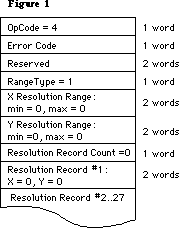
Below is the data block returned for the LaserWriter:
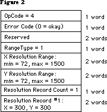
Note that all the resolution range numbers happen to be the same for this printer. There is only one resolution record, which gives the physical X and Y resolutions of the printer (300x300).
Below is the data block returned for the ImageWriter.
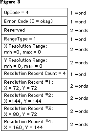
All the resolution range values are zero, because only discrete resolutions can be specified for this printer. There are four resolution records giving these discrete physical resolutions.
Note that GetRslData always returns the same information for a particular printer type—it is not dependent on what the user does or on printer configuration information.
The SetRsl Call
SetRsl (iOpCode = 5) is used to specify the desired imaging resolution, after using GetRslData to determine a workable pair of values. Below is the format of the data block:
TSetRslBlk = RECORD {data block for SetRsl call}
iOpCode: Integer; {input; = setRslOp}
iError: Integer; {output}
lReserved: LongInt; {reserved for future use}
hPrint: THPrint; {input; handle to a valid print record}
iXRsl: Integer; {input; desired X resolution}
iYRsl: Integer; {input; desired Y resolution}
END;
hPrint should be the handle of a print record that has previously been passed to PrValidate. If the call executes successfully, the print record is updated with the new resolution; the data block comes back with 0 for the error and is otherwise unchanged.
However, if the desired resolution is not supported, the error is set to noSuchRsl and the resolution fields are set to the printer’s default resolution
Note that you can undo the effect of a previous call to SetRsl by making another call that specifies an unsupported resolution (such as 0x0), forcing the default resolution.
The DraftBits Call
DraftBits (iOpCode = 6) is implemented on both the ImageWriter and the LaserWriter. (On the LaserWriter it does nothing, since the LaserWriter is always in draft mode and can always print bitmaps.) Below is the format of the data block:
TDftBitsBlk = RECORD {data block for DraftBits and NoDraftBits calls}
iOpCode: Integer; {input; = draftBitsOp or noDraftBitsOp}
iError: Integer; {output}
lReserved: LongInt; {reserved for future use}
hPrint: THPrint; {input; handle to a valid print record}
END;
hPrint should be the handle of a print record that has previously been passed to PrValidate.
This call forces draft-mode (i.e., immediate) printing, and will allow bitmaps to be printed via CopyBits calls. The virtue of this is that you avoid spooling large masses of bitmap data onto the disk, and you also get better performance.
The following restrictions apply:
• This call should be made before bringing up the print dialogs because it
affects their appearance. On the ImageWriter, calling DraftBits disables
the landscape icon in the Style dialog, and the Best, Faster, and Draf
buttons in the Job dialog.
• If the printer does not support draft mode, already prints bitmaps in draft
mode, or does not print bitmaps at all, this call does nothing.
• Only text and bitmaps can be printed.
• As in the normal draft mode, landscape format is not allowed.
• Everything on the page must be strictly Y-sorted, i.e. no reverse paper
motion between one string or bitmap and the next. Note that this means you
can’t have two or more objects (text or bitmaps) side by side; the top
boundary of each object must be no higher than the bottom of the preceding
object.
The last restriction is important. If you violate it, you will not like the results. But note that if you want two or more bitmaps side by side, you can combine them into one before calling CopyBits to print the result. Similarly, if you are just printing bitmaps you can rotate them yourself to achieve landscape printing.
The NoDraftBits Call
NoDraftBits (iOpCode = 7) is implemented on both the ImageWriter and the LaserWriter. (On the LaserWriter it does nothing, since the LaserWriter is always in draft mode and can always print bitmaps.) The format of the data block is the same as that for the DraftBits call.
This call cancels the effect of any preceding DraftBits call. If there was no preceding DraftBits call, or the printer does not support draft-mode printing anyway, this call does nothing.
The GetRotn Call
GetRotn (iOpCode = 8) is implemented on the ImageWriter and LaserWriter. Here is the format of the data block:
TGetRotnBlk = RECORD {data block for GetRotn call}
iOpCode: Integer; {input; = getRotnOp}
iError: Integer; {output}
lReserved: LongInt; {reserved for future use}
hPrint: THPrint; {input; handle to a valid print record}
fLandscape: Boolean; {output; Boolean flag}
bXtra: SignedByte; {reserved}
END;
hPrint should be the handle to a print record that has previously been passed to PrValidate.
If landscape orientation is selected in the print record, then fLandscape is true.
How To Use The PrGeneral Opcodes
The SetRsl and DraftBits calls may require the print code to suppress certain options in the Style and/or Job dialogs, therefore they should always be called before any call to the Style or Job dialogs. An application might use these calls as follows:
• Get a new print record by calling PrintDefault, or take an existing one
from a document and call PrValidate on it.
• Call GetRslData to find out what the printer is capable of, and decide what
resolution to use. Check PrError to be sure the PrGeneral call is supported
on this version of the print code; if the error is ResNotFound, you have
older print code and must print accordingly. But if the PrError return
is 0, proceed:
• Call SetRsl with the print record and the desired resolution if you wish.
• Call DraftBits to invoke the printing of bitmaps in draft mode if you wish.
Note that if you call either SetRsl or DraftBits, you should do so before the user sees either of the printing dialogs.
129: _Gestalt & _SysEnvirons—A Never-Ending Story
#129: _Gestalt & _SysEnvirons—A Never-Ending Story
Revised by: Dave Radcliffe November 1991
Written by: Jim Friedlander May 1987
This Technical Note discusses latest changes and enhancements in the _Gestalt and _SysEnvirons calls.
Changes since December 1990: Removed _Gestalt constants now documented in Inside Macintosh Volume VI. Added new machine and keyboard constants for _Gestalt and _SysEnvirons which are not covered in Inside Macintosh.
_______________________________________________________________________________
Introduction
Previous versions of this Note provided the latest documentation on new information the _SysEnvirons trap could return. DTS will continue to revise this Note to provide this information; however, as the _Gestalt trap is now the preferred method for determining information about a machine environment, this Note will also provide up-to-date information on _Gestalt selectors.
_Gestalt
This Note now documents _Gestalt selectors and return values added since the release of Inside Macintosh, Volume VI. Please note that this is supplemental information; for the complete description of _Gestalt and its use, please refer to Inside Macintosh, Volume VI.
Additional Gestalt Response Values
{ gestaltMachineType response values }
gestaltMacQuadra900 = 20; { Macintosh Quadra 900 }
gestaltMacPowerBook170 = 21; { Macintosh PowerBook 170 }
gestaltMacQuadra700 = 22; { Macintosh Quadra 700 }
gestaltMacClassicII = 23; { Macintosh Classic II }
gestaltMacPowerBook100 = 24; { Macintosh PowerBook 100 }
gestaltMacPowerBook140 = 25; { Macintosh PowerBook 140 }
{ gestaltKeyboardType response values }
gestaltPwrBkADBKbd = 12; { PowerBook Keyboard }
gestaltPwrBkISOKbd = 13; { PowerBook Keyboard (ISO) }
_SysEnvirons
_SysEnvirons was the standard way to determine the features available on a given machine. The preferred method to get this information is now _Gestalt; information on _SysEnvirons is now provided only for backward compatibility.
As originally conceived, _SysEnvirons would check the versionRequested parameter to determine what level of information you were prepared to handle, but this technique means updating _SysEnvirons for every new hardware product Apple produces. With System Software 6.0, _SysEnvirons introduced version 2 of environsVersion to provide information about new hardware as we introduce it; this new version returns the same SysEnvRec as version 1.
Beginning with System Software 6.0.1, Apple only releases a new version of _SysEnvirons when engineering make changes to its structure (i.e., when they add new fields to SysEnvRec); all existing versions return accurate information about the machine environment even if part of that information was not originally defined for the version you request. For example, if you call _SysEnvirons with versionRequested = 1 on a Macintosh IIfx, it returns a machineType of envMacIIfx even though this machine type originally was not defined for version 1 of the call.
You should use version 2 of _SysEnvirons until Apple releases a newer version. MPW 3.0 defines a constant curSysEnvVers, which can be used to minimize the need for source code revisions when _SysEnvirons evolves. Regardless of the version used, however, your software should be prepared to handle unexpected values and should not make assumptions about functionality based on current expectations. For example, if your software currently requires a Macintosh II, testing for machineType >= envMacII may result in your software trying to run on a machine which does not support the features it requires, so test for specific functionality (i.e., hasFPU, hasColorQD, etc.).
Warning: This test for specific functionality is particularly true of FPUs (floating point units). Some CPUs, such as the Macintosh IIsi, may have optional, user-installed FPUs; therefore, an application should not assume that any Macintosh with a microprocessor greater than a 68000 (e.g., 68020, 68030, etc.) has an FPU (68881/68882). If an application makes a conditional branch to execute floating-point instructions directly, then it should first explicitly check for the presence of the FPU.
You should always check the environsVersion when returning from _SysEnvirons since the glue always returns as much information as possible, with environsVersion indicating the highest version available, even if the call returns an envSelTooBig (–5502) error.
Calling _SysEnvirons From a High-Level Language
Due to a documentation error in Inside Macintosh, Volume V, DTS still receives questions about how to call _SysEnvirons properly from Pascal and C. Inside Macintosh defines the Pascal interface to _SysEnvirons as follows:
FUNCTION SysEnvirons (versRequested: INTEGER; VAR theWorld: SysEnvRecPtr) : OSErr;
Because theWorld is passed by reference (as a VAR parameter), it is not correct to pass a SysEnvRecPtr in the second argument. Pascal would then generate a pointer to this pointer and pass that to the _SysEnvirons trap in A0. (The assembly-language information is essentially correct; _SysEnvirons really does want a pointer to a SysEnvRec in A0.) The correct Pascal interface to _SysEnvirons is therefore:
FUNCTION SysEnvirons (versionRequested: INTEGER; VAR theWorld: SysEnvRec) : OSErr;
In this case, Pascal pushes a pointer to theWorld on the stack. The Pascal interface glue then pops this pointer off the stack directly into A0 and calls _SysEnvirons. Everything is copacetic. C programmers should recognize their corresponding interface:
pascal OSErr SysEnvirons (short versionRequested, SysEnvRec *theWorld);
Inside Macintosh defines the type SysEnvPtr = ^SysEnvRec. It also sometimes refers to this type as SysEnvRecPtr. The inconsistency is insignificant because in reality MPW does not define any such type, under either name; therefore, it is never needed.
Inside Macintosh also states that “all of the Toolbox Managers must be initialized before calling SysEnvirons.” This statement is not necessarily true. Startup documents (INITs), for instance, may wish to call _SysEnvirons without initializing any of the Toolbox Managers. Keep in mind that the atDrvrVersNum field returns a zero result if the AppleTalk drivers are not initialized. The system version, machine type, processor type, and other key data return normally.
Additional _SysEnvirons Constants
The following are new _SysEnvirons constants which are not documented in Inside Macintosh; however, you should refer to Inside Macintosh, Volume V-1, Compatibility Guidelines, for the rest of the story.
machineType
envMacIIx = 5; { Macintosh IIx }
envMacIIcx = 6; { Macintosh IIcx }
envSE30 = 7; { Macintosh SE/30 }
envPortable = 8; { Macintosh Portable }
envMacIIci = 9; { Macintosh IIci }
envMacIIfx = 11; { Macintosh IIfx }
envMacClassic = 15; { Macintosh Classic }
envMacIIsi = 16; { Macintosh IIsi }
envMacLC = 17; { Macintosh LC }
envMacQuadra900 = 18; { Macintosh Quadra 900 }
envMacPowerBook170 = 19; { Macintosh PowerBook 170 }
envMacQuadra700 = 20; { Macintosh Quadra 700 }
envMacClassicII = 21; { Macintosh Classic II }
envMacPowerBook100 = 22; { Macintosh PowerBook 100 }
envMacPowerBook140 = 23; { Macintosh PowerBook 140 }
processor
env68030 = 4; { MC68030 processor }
env68040 = 5; { MC68040 processor }
keyBoardType
envPrtblADBKbd = 6; { Portable Keyboard }
envPrtblISOKbd = 7; { Portable Keyboard (ISO) }
envStdISOADBKbd = 8; { Apple Standard Keyboard (ISO) }
envExtISOADBKbd = 9; { Apple Extended Keyboard (ISO) }
envADBKbdII = 10; { Apple Keyboard II }
envADBISOKbdII = 11; { Apple Keyboard II (ISO) }
envPwrBkADBKbd = 12; { PowerBook Keyboard }
envPwrBkISOKbd = 13; { PowerBook Keyboard (ISO) }
Further Reference:
_______________________________________________________________________________
• Inside Macintosh, Volumes V & VI, Compatibility Guidelines
130: Clearing ioCompletion
#130: Clearing ioCompletion
See also: The File Manager
Written by: Jim Friedlander May 4, 1987
Updated: March 1, 1988
_______________________________________________________________________________
When making synchronous calls to the File Manager, it is not necessary to clear ioCompletion field of the parameter block, since that is done for you.
Some earlier technotes explicitly cleared ioCompletion, with the knowledge that this was unnecessary, to try to encourage developers to fill in all fields of parameter blocks as indicated in Inside Macintosh.
By the way, this is true of all parameter calls—you only have to set fields that are explicitly required.
131: TextEdit Bugs in System 4.2
#131: TextEdit Bugs in System 4.2
Written by: Chris Derossi June 1, 1987
Updated: March 1, 1988
_______________________________________________________________________________
This note formerly described the known bugs with the version of Styled TextEdit that was provided with System 4.1. Many of these bugs were fixed in System 4.2. This updated Technical Note describes the remaining known problems.
_______________________________________________________________________________
TEStylInsert
Calling TEStylInsert while the TextEdit record is deactivated causes unpredictable results, so make sure to only call TEStylInsert when the TextEdit record is active.
TESetStyle
When using the doFace mode with TESetStyle, the style that you pass as a parameter is ORed into the style of the currently selected text. If you pass the empty set (no styles) though, TESetStyle is supposed to remove all styles from the selected text. But TESetStyle checks an entire word instead of just the high-order byte of the tsFace field. The style information is contained completely in the high-order byte, and the low-order byte may contain garbage.
If the low-order byte isn’t zero, TESetStyle thinks that the tsFace field isn’t empty, so it goes ahead and ORs it with the selected text’s style. Since the actual style portion of the tsFace field is zero, no change occurs with the text. If you want to have TESetStyle remove all styles from the text, you can explicitly set the tsFace field to zero like this:
VAR
myStyle : TextStyle;
anIntPtr : ^Integer;
BEGIN
...
anIntPtr := @myStyle.tsFace;
anIntPtr^ := 0;
TESetStyle(doFace, myStyle, TRUE, textH);
...
END;
TEStylNew
The line heights array does not get initialized when TEStylNew is called. Because of this, the caret is initially drawn in a random height. This is easily solved by calling TECalText immediately after calling TEStylNew. Extra calls to TECalText don’t hurt anything anyway, so this will be compatible with future Systems.
An extra character run is placed at the beginning of the text which corresponds to the font, size, and style which were in the grafPort when TEStylNew was called. This can cause the line height for the first line to be too large. To avoid this, call TextSize with the desired text size before calling TEStylNew. If the text’s style information cannot be determined in advance, then call TextSize with a small value (like 9) before calling TEStylNew.
TEScroll
The bug documented in Technical Note #22 remains in the new TextEdit. TEScroll called with zero for both vertical and horizontal displacements causes the insertion point to disappear. The workaround is the same as before; check to make sure that dV and dH are not both zero before calling TEScroll.
Growing TextEdit Record
TextEdit is supposed to dynamically grow and shrink the LineStarts array in the TERec so that it has one entry per line. Instead, when lines are added, TextEdit expands the array without first checking to see if it’s already big enough. In addition, TextEdit never reduces the size of this array.
Because of this, the longer a particular TextEdit record is used, the larger it will get. This can be particularly nasty in programs that use a single TERec for many operations during the program’s execution.
Restoring Saved TextEdit Records
Applications have used a technique for saving and restoring styled text which involves saving the contents of all of the TextEdit record handles. When restoring, TEStylNew is called and the TextEdit record’s handles are disposed. The saved handles are then loaded and put into the TextEdit record. This technique should not be used for the nullStyle handle in the style record.
Instead, when TEStylNew is called, the nullStyle handle from the style record should be copied into the saved style record. This will ensure that the fields in the null-style record point to valid data.
132: AppleTalk Interface Update
#132: AppleTalk Interface Update
See also: The AppleTalk Manager
Inside AppleTalk (for ZIP information)
Technical Note #121 — Using the High-Level AppleTalk Routines
Written by: Bryan Stearns July 1, 1987
Updated: March 1, 1988
_______________________________________________________________________________
Technical Note #121 announced that we would be moving to a simplified AppleTalk Manager interface. That interface is available now, as part of MPW 2.0 and newer.
Documentation for this new interface is contained in the AppleTalk Manager chapter of Inside Macintosh Volume V. This technical note contains some of the preliminary documentation for this interface and some useful points about information about it, and AppleTalk in general.
_______________________________________________________________________________
The original AppleTalk Pascal Interfaces, known as ABPasIntf, were designed to simplify use of AppleTalk from high-level languages. Instead, they’ve caused us a few compatibility problems. We’ve decided to encourage use of the same interface that assembly-language AppleTalk uses, a parameter-block interface in the same style as the low-level interfaces to the File and Device Managers.
The original calls are still supported (and will be for a while) as an
“alternate” interface, but we suggest that you consider moving to the new
“preferred” calls. Be warned that use of the original calls may cause compatibility problems with future system software. Also, new protocols (like ASP, the AppleTalk Session Protocol) are only provided with the new interfaces.
The new interface uses parameter blocks like those used by the File and Device Managers; you fill out the call-specific fields of the block, and a small amount of glue code (provided with development environments like MPW) turns the parameter block into a Control call to the appropriate AppleTalk driver.
Most calls have an interface like:
FUNCTION PSomeCall(thePBPtr: ATPPBptr; asyncFlag: BOOLEAN): OSErr;
The glue fills in the fields csCode and ioRefNum with the appropriate value for the call you’re making.
Synchronous and Asynchronous calls
You can still make calls synchronously (“do it now”) or asynchronously (“start it now, finish it soon”). If you choose to make a call asynchronously, be sure to provide a completion routine in the ioCompletion field (to be called when the call finally finishes), or poll the ioResult field of the parameter block
(the call is done if ioResult is less than or equal to 0).
You must not move or dispose of a parameter block before the call finishes; when the call does complete, you are responsible for throwing the parameter block away (if you allocated it using Memory Manager routines).
Note that the alternate interfaces generated a network event on completion of an asynchronous call; this service is not provided by the preferred interfaces, partly because of future compatibility problems. See Technical Note #142 for background information.
Packed data structures
Several of the data structures used by the new interfaces are packed; Pascal doesn’t deal well with these structures. Special calls are provided for building LAP and DPP write-data structures, NBP names-table elements, and ATP buffer data structures.
For example, when registering a name (using PRegisterName), you’ll use a NamesTableEntry structure. This structure consists of a few unpacked fields, followed by an entity-name: three strings (representing the object, type, and zone fields of the name) packed together. You can call NBPSetNTE to pack the strings into the NamesTableEntry structure. When you remove the name
(PRemoveName), you’ll use the entity-name by itself; you can use NBPSetEntity to pack it in.
Zone Interface Protocol
A function, GetBridgeAddress, is provided to obtain the node ID of a bridge, for use in ZIP transactions (zero is returned if no bridge is present on your network). You make ZIP calls using ATP requests, as described in the Inside AppleTalk chapter on ZIP.
133: Am I Talking To A Spooler?
#133: Am I Talking To A Spooler?
See also: PostScript Language Reference Manual
Adobe Systems Document Structuring Conventions
Written by: Ginger Jernigan July 1, 1987
Updated: March 1, 1988
_______________________________________________________________________________
When the LaserShare spooler is on an AppleTalk network, it acts like a LaserWriter-type device, which can be chosen and communicated with much like a real LaserWriter. Some applications, however, must communicate with a LaserWriter directly, not a spooler. If this is true for your application, you can check whether you are actually talking to a real LaserWriter by sending to the LaserWriter the following query:
%!PS-Adobe-1.2 Query
%%Title: Query to Spooler/Non-Spooler status
%%?BeginSpoolerQuery
(0) = flush
%%?EndSpoolerQuery 1
%%EOF
(The query has to be sent using the Printer Access Protocol (PAP). The object code for PAP is available from Licensing.) If the string returned begins with a ‘%%’ then it is a status string and you can ignore it and wait for another string. If the LaserWriter is actually a LaserShare spooler, then the string that is returned will be ‘1’. If the LaserWriter is a real LaserWriter then the string returned will be ‘0’.
134: Hard Disk Medic & Booting Camp
#134: Hard Disk Medic & Booting Camp
See also: Hard Disk Users Manual
Technical Note 67 — Finding the ‘Blessed Folder’
Technical Note 113 — Boot Blocks
Technical Note 139 - Macintosh Plus ROM Versions
Written by: Bo3b Johnson July 1, 1987
Updated: March 1, 1988
_______________________________________________________________________________
The death of a hard disk with megabytes worth of data can be exceedingly traumatic. This technical note will describe techniques for recovering a hard disk and the data that is on it. The discussion will also include some tips on how to avoid problems.
_______________________________________________________________________________
You should never need this information. However, software problems can wreak havoc upon otherwise functional disks. When they have the equivalent of a heart attack, there are a number of steps that can be taken to try to recover the disk. There are occasions when the disk itself is not bad, and it may be possible to correct the disk without having to reformat the disk and restore the data from a backup. This note will describe some of the steps that can be used with Apple Hard Disks, but most of the information pertains to all hard disks. For example, the HD SC Setup program is specific to the Apple drives, but there is probably a similar utility for every hard disk. This is primarily a discussion of what to do from the user standpoint, but there are a few suggestions on ways of retrieving data via programmatic means.
This discussion will focus on the SCSI disks since they are more complex in terms of the booting sequence. For other hard disks, like the standard HD-20, most of the information still applies, but SCSI-specific sequences can be ignored. For example, the standard HD-20 also has an installer program, although it is different than HD SC Setup.
Attack of the Nasties
There are a number of unusual conditions that a hard disk may get itself in:
1) The data is intact, but the hard disk won’t boot.
2) The SCSI disk won’t boot and only shows up after running HD SC Setup.
3) The disk will boot but hangs part way through the boot process.
4) There are data errors while the disk is running.
5) The disk is very slow returning to the Finder.
6) The computer crashes or hangs when returning to the Finder.
7) The disk appears in a “This disk is bad” dialog.
8) The disk never shows up at all.
These problems can develop from a number of sources, including system crashes, rebooting at bad times, power fluctuations, malicious software, old software, buggy software, etc. In general, these problems will be software-related, since the hardware itself is very rarely defective.
This technical note will discuss:
1) The normal stages in the booting process.
2) Results of errors during the various stages in the booting process.
3) A step-by-step procedure to follow in order to maximize your chances of
recovering the disk and the data.
A Boot to the Head
This discussion will detail a normal boot process of a Macintosh with a single hard disk attached. For clarity, this section will deliberately ignore potential problems and the complexities involved in different configurations. The following sections will detail some errors that may occur, and give more information in terms of what the ROM will do to boot the system. A SCSI disk can be thought of in the following fashion:
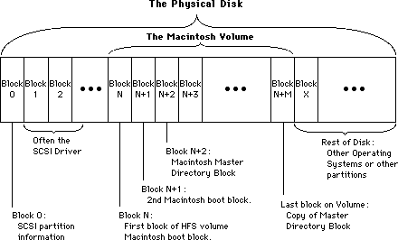
The important thing to note from this diagram is that the Macintosh volume is a subset of the entire SCSI Disk. There can be more than one Macintosh volume on a given disk, or even other volumes that are not Macintosh volumes.
1) Check the SCSI port:
Immediately after the RAM check, the system looks at the SCSI port to see if there are any drives connected. If a SCSI drive is found the system reads the SCSI partition information in block 0. This block is specific to SCSI drives and is always found at block 0 of the disk. The SCSI Manager then reads in the SCSI driver from the disk. Once the driver is loaded into memory, the system will use the driver to read and write blocks from the disk, instead of the ROM boot code. The driver reads and writes blocks relative to the beginning of the Macintosh volume on the SCSI drive, which can start anywhere on the physical disk.
2) Decide which disk is to be the startup disk:
The Macintosh then looks at the floppy disks to see if there is a disk that it should try to use. If so, it will always boot from the floppy. If there are no floppy disks, the startup hard disk is chosen. The Macintosh boot blocks are read off of the chosen disk to determine if the volume is bootable. The two Macintosh boot blocks (same boot blocks as those found on floppies) are read using the SCSI Driver. The Macintosh boot blocks are found as the first two blocks on the Macintosh volume, but are much higher in terms of where they are found on the disk itself. See the figure for the difference between the Macintosh volume and the SCSI disk. The driver cannot normally read the SCSI partition information, or any blocks outside of the Macintosh volume.
3) Execute the Macintosh boot blocks:
The boot blocks are composed of strings and parameters which determine various system functions, and code that finishes the job of booting the system.
The hard disk is mounted as a volume, using the PBMountVol call. The volume has the two Macintosh boot blocks, as well as the volume header. The PBMountVol will use the driver to read the volume header and other information from the disk. Once the volume is mounted, there are only volume reads and writes, and the driver is responsible for the actual SCSI disk reads.
The System file is opened on the volume. The patch code for the current ROM is read into the system, including the patches to the SCSI Manager.
The Finder is launched.
4) The Finder uses the Desktop file on the volume to draw the desktop.
The Icons that make up the desktop representation of the Macintosh volume are stored in the Desktop file. The Desktop file is invisible and used only by the Finder.
That is a rather simplistic view of the boot process. There are a number of complications that arise due to the wild variety of devices that can be attached to a Macintosh. The full boot process is essentially a series of special cases, leading to the final booted System at the Finder’s desktop (or in the startup application). The following section will go into painstaking detail in order to give you enough information to determine what step in the boot process failed.
Tough Boots
To further explain the boot process:
1) Check the SCSI port:
a) Before starting the boot process, the screen will be filled with a grey
pattern.
b) Before the Macintosh will check for any SCSI devices, it will first reset
the SCSI bus using a SCSIReset. This is to make sure the bus was not left
in a bad state.
c) The Macintosh will then start a cycle through all 7 SCSI IDs (from 6..0)
to see which disks are connected, and keeps a table of all disks that are
connected.
d) For each disk that is connected to the Macintosh, the ROM boot code will
use the SCSI Manager to read in the SCSI partition information to find
where the driver is located on the disk. The signature of the SCSI
partition information is also checked to be sure that the device is valid.
e) The SCSI Manager will then be used to read the driver into memory. Once
the driver is loaded for a given disk, the driver is called to install
itself. The driver will usually post a Disk Inserted event to have its
volume mounted by the Finder.
f) Steps d and e are repeated for each disk connected. At this point, there
may be a number of drivers in memory, but there are no volumes, since
none have been mounted yet. Generally there is one driver per disk, but
some drivers can handle more than one disk at a time.
2) Decide which disk is to be the startup disk:
a) The next stage is to determine which volume will become the startup disk.
If there is a floppy available it will always be the startup disk. During
this process the disk chosen as the startup disk is not known to be valid.
The System file and boot blocks are checked later.
b) The standard HD-20 is connected to the system in a fashion that is very
similar to a floppy, so if a bootable HD-20 is connected it will be the
startup disk.
c) There is no search for floppy devices like there is for SCSI disks since
the driver for the floppies will post a Disk Inserted event when it
detects a floppy in the drive. The first floppy device that is found will
be used as the startup disk. If there are multiple floppy devices, the
others will be mounted by the Finder, not at boot time. The SCSI devices
that are online are not mounted at this time, either. There is a pending
Disk Inserted event for each disk that will be handled by the Finder.
d) At boot time, there is only one volume that is mounted (during execution
of the Macintosh boot blocks). The others will be mounted when their Disk
Inserted event is processed at a GetNextEvent call.
e) On the new Control Panel there is a Control Device (cdev) called the
Startup Device. This Startup Device cdev allows the user to choose which
device the system should try to boot from first. This can only be used on
the Macintosh II and SE. The drive number, driver reference number, and
driver OS type are stored in parameter RAM to allow a chosen device to be
the boot disk. The floppy drives will still have precedence over the SCSI
devices. The standard HD-20 can be chosen as the Startup Device as well,
since it uses a different driver reference number. If the drive number
that is stored as the Startup Device is invalid, or had a read/write
error, then another disk in the chain will be chosen as the next bootable
candidate. Remember that there is only one boot/startup/system disk, and
it is the only one that is explicitly mounted at boot time. All other
devices in the system will be handled once the system is booted.
3) Execute the Macintosh boot blocks:
a) Once the Startup Disk has been chosen (whether floppy, SCSI or other disk)
then it is time to read the Macintosh boot blocks off of blocks 0 and 1
of the volume. Those boot blocks determine various parameters in the
system, such as whether a Macsbug-like debugger will be loaded, the name
of the startup program (not always the Finder), how big to make the event
queue, how big to make the system heap, and so on. They also contain a
signature identifying them as Macintosh boot blocks, and a version number
to differentiate between different boot blocks.
b) After the boot blocks are read and the signature verified, the smiling
Macintosh is displayed on the screen. The smiling Macintosh basically
means that valid Macintosh boot blocks were found.
c) On 64K ROMs the boot blocks are executed by jumping to the code that
follows the header information in boot block 0. On the newer Macintoshes
the boot block version number is checked, and if it is ‘old’ the boot
blocks will be skipped. The same code that would have been found in the
boot blocks is found in the ROM itself. Regardless of which kind of
Macintosh it is, the following steps apply. For the newer Macintoshes the
boot blocks are usually used only for the parameters stored in the header.
d) Do the PBMountVol on the chosen startup volume. If PBMountVol fails, the
process starts over at the point where a startup disk is being chosen
(step 2 above). The failing volume is marked out of the list of
candidates so that it won’t be used again.
e) Find the System file and create a Working Directory, if needed, for the
System folder. This is only done for HFS volumes of course, and the
directory ID is set to the blessed folder. The blessed folder is saved in
the volume header as part of the FinderInfo field. See Technical Note #67
for more information on the blessed folder. If the directory ID is wrong,
the System file won’t be found, causing it to start over again (at step 2
above). If the Working Directory was created successfully, that WDRefNum
is set as the default volume with SetVol.
f) The System file is opened with OpenResFile. If the file could not be
opened, the process starts over again at the point where a suitable boot
device is being chosen (step 2 again).
g) The Startup Screen is loaded and displayed. If there was no Startup Screen,
the normal “Welcome to Macintosh” message will be displayed. The Startup
Screen or “Welcome...” means that the System file was found and opened
successfully. On the Macintosh Plus and 64K ROM machines, the Startup
Screen is displayed before the System file is opened. (reverse steps f & g)
h) The debugger and disassembler are installed if found. The names of the
debugger and disassembler are found in the header of the boot blocks and
are usually Macsbug and Disassembler respectively.
i) The data fork of the System file is opened and executed. The data fork
contains code to read in the PTCH resources which patch the ROM.
j) The INITs that are in the System file are executed. The last INIT is INIT
31 which then looks in the System Folder for other INITs to be executed.
k) The file specified by the boot blocks as the startup application (Set
Startup at the Finder) is found on the volume, using another field in the
FinderInfo field of the volume header in order to get the Directory ID. If
the file exists, it is launched. If not, the Finder is launched. If the
Finder is not found, SysError is called with error code of 41 which is the
“Can’t launch Finder” alert.
4) The Finder uses the Desktop file on the volume to draw the desktop.
If the startup application was the Finder, it opens the Desktop file on the startup volume in order to draw the desktop. When it finishes with the startup volume, it calls GetNextEvent. If there are any pending Disk Inserted events, the volume specified is mounted (by the ROM) and the result passed to the Finder. If PBMountVol failed for any reason, the bad result will be passed to the Finder. At that point the Finder would put up the “This disk is damaged” alert and ask if the volume should be initialized or ejected. If ejected, the driver for that volume still exists, but the volume is unmounted. For each volume that the Finder sees, it opens the Desktop file on the volume to get the information that it needs to build the desktop. If the Desktop file was not found on a volume, it is created. If there are any errors while creating or using the Desktop file, the Finder will display the “This disk needs minor repairs” message. If the OK button is clicked, the Finder will delete the old file and create a new one. If that fails, the volume is unmounted and deemed unusable by the Finder. This happens if the disk is locked, or too full to add a Desktop file. If that was the startup volume, the computer is rebooted since it was forced to unmount the startup volume, and cannot run if there is no startup volume.
If you follow the previous sequence closely, you can predict what errors are causing a given end result. For example, if you have the effect where the smiley Macintosh appears, but immediately goes away and the disk does not boot, you can look through the sequence to see what might be going wrong. In this case, we know that the boot blocks were found on our startup volume, since the smiley Macintosh was displayed. We know that the System file was not found, or failed to open, since we never got the Welcome message. This usually calls for throwing away all of the System Folders on the volume, and starting again with a new System Folder to fix the problem. If there is more than one System Folder on a volume it is possible to confuse the system.
Other tidbits of information that may be useful (in no particular order) some which will be mentioned in the step-by-step operation below:
1) The SCSI cables have a lot of wires in them, and are rather bulky because of
it. It is best to avoid bending the cables too much or too often, since the
wires inside will break if overstressed. Don’t put wild kinks in the cable
in order to make it fit behind the Macintosh.
2) If there is no default volume stored in the parameter RAM with the Startup
Device cdev, then the first drive that is in the drive queue will be the
Startup Device. Since SCSI drives are added in highest ID order, that means
the larger SCSI IDs will have a higher ‘priority’. Macintosh IIs will
default to the internal hard disk.
3) If the parameter RAM is trashed for some reason, the boot process can fail
since a driver OS type is stored as well. If the OS type is wrong, the ROM
will skip that driver, making the disk unbootable. On the Macintosh II/SE,
the battery is no longer removable to fix parameter RAM problems. To correct
this problem the Control Panel now has a feature that will allow you to
clear parameter RAM. Holding down the Option-Command-Shift keys while
opening the Control Panel will reset parameter RAM, forcing it to be rebuilt
and therefore losing all of your settings, but possibly fixing some booting
problems.
4) The Macintosh II and SE both have a new feature that will allow you to skip
having the any hard disk mounted. Holding down the Option-Command-Shift-
Delete combination will have the startup code skip the SCSI hard disks on
the system. This can be useful if you are booting an old System file that
does not understand HFS disks (like System 2.0/Finder 4.1), and want to
avoid having your hard disks on line while you do something shaky. With
external hard disks it is easier to just turn them off, but with internal
disks it is not so easy.
5) Since the parameter RAM can be trashed in a manner that makes it impossible
to boot a volume (looking for the wrong OS type), a new feature was added to
the HD SC Setup program to have it fix this problem as well. If you have
version 1.3 or greater, the parameter RAM bytes that determine booting will
be reset to fix some boot problems that occur. The parameter RAM is fixed
when the Update button is clicked. This does not invalidate the rest of
parameter RAM, it merely fixes the bytes used for the Startup Device.
6) When the Finder copies a new System Folder onto a disk that does not already
have a System Folder, that new folder will become the blessed folder. Its
Directory ID will be saved in the volume header. In addition, the Macintosh
boot blocks will be copied from the current startup device to the
destination device. This is the best way to fix System Folder or Macintosh
boot block problems. In order for the blessed folder to be set correctly,
all System Folders on the volume should be deleted before copying the new
folder there.
7) If the Desktop file is damaged for whatever reason, it can be deleted with
a number of programs. This will force the Finder to rebuild it from scratch.
You can also have the Finder rebuild the Desktop file by holding down the
Option-Command keys when the Finder is launched. When the Desktop file is
rebuilt you lose the Finder Comments in the Get Info boxes.
8) On the 64K ROMs, whenever something goes wrong during booting (like System
file not found, bad boot blocks, and so on) the Sad Mac Icon is displayed.
Starting with the 128K ROMs, whenever something goes wrong the ROM jumps
back to the start to try to find another disk to use.
Bo3b’s Boot Repair
This section will detail step-by-step processes that can be used to fix some common booting and volume problems. It is not intended to cover every possible case. The purpose of the preceding sections was to give you the information that will allow you to figure out what might be going wrong.
For most hard disk users, it is not sufficient to merely have the device running. It is generally a good idea to make the system as robust as possible in order to avoid some of the problems that might cause a volume to become wholly unreadable. The ultimate fix is to reinitialize the volume from scratch and rebuild the volume with the Finder or a restore operation that uses the File Manager. This is guaranteed to fix anything except hardware problems, and will give you the most solid system. If your system is acting funny, you can try the following sequence that is the next best thing to initializing the disk. This sequence will not make you rebuild the disk, but can be fooled by some disk problems. If everything passes, then the disk is in good shape; maybe not perfect, but good.
1) Power down the entire system, including the hard disk that is suspect.
2) Run the HD SC Setup program (or equivalent) and Update the drivers on the
disk. For HD SC, this also fixes the parameter RAM. For non-Apple drives,
the parameter RAM can be reset with the Control Panel.
3) Run the Test Disk option in HD SC Setup (or equivalent). If the test fails,
reinitialize the volume, since it is not worth risking future problems.
4) Run the Disk First Aid utility. This utility will work on all HFS volumes.
Have it check the volume for consistency. If it reports any errors, you can
have it fix the problem, but the safest tack is to reinitialize. There are
some problems that Disk First Aid won’t catch. If Disk First Aid says the
volume cannot be verified, it is time to reinitialize.
5) Rebuild the Desktop file by holding down Option-Command when returning to
the Finder.
If you can successfully perform all of these steps, the volume will be as solid as it can get without reinitializing the disk. If things are still funny, it is time to take the last recourse, reinitialize.
Based on the previous sections, it is now time to go through all of the Nasties to give a step-by-step sequence for fixing these problems.
1) The data is intact, but the hard disk won’t boot.
This is for the case where the volume won’t boot, but if the computer is booted with a floppy disk the volume shows up at the desktop and can run normally. For this case, we know that the driver is being loaded and working, since the volume shows up at the desktop. The volume is also mountable, since it shows up with no problem. This implies that the Macintosh boot blocks are wrong, or the blessed folder is wrong. Clues such as the smiling Macintosh can tell you how far the process got before it failed. For example, if the smiling Macintosh never appeared, we know that Macintosh boot blocks were not read successfully. When the volume is fixed and bootable, it would be a good idea to go through the steps above to make the volume as solid as possible.
The sequence to follow:
a) Power down the entire computer, including the hard disk. Try to boot again.
If it works, you are done.
b) Use the Control Panel’s Startup Device to set the hard disk as the Startup
Device. This will also reset some of the bytes in parameter RAM. Try
rebooting to see if it has fixed the problem.
c) Run HD SC Setup (or equivalent) and perform the Update Drivers procedure.
In the HD SC Setup case this will also rewrite the parameter RAM. If you
are not using HD SC Setup, blast the parameter RAM with the Control Panel.
Try rebooting.
d) Delete all System Folders from the hard disk. Using Find File or something
similar, be sure that there are no stray copies of the System or Finder
buried in some long lost folder. Copy a new System Folder to the volume,
using the Finder. This process will fix bad boot blocks, as well as a bad
blessed folder. Try rebooting.
e) If it still won’t boot, there is something very strange happening. Whenever
things get too weird it is usually time to start over: reinitialize.
2) The disk won’t boot and only shows up after running HD SC Setup.
The disk does not even show up at the Finder when the system is booted with a floppy. After running the HD SC Setup (or equivalent) the volume will appear on the desktop and be usable. The HD SC Setup and most similar utilities will do an explicit PBMountVol of the volume in order to make the volume usable. Since the volume does not show up at the Finder at first, this implies that the driver itself is not getting loaded or is working improperly, since there was no Disk Inserted Event for the Finder to use.
The sequence:
a) Power down completely, including the hard disk.
b) Run HD SC Setup (or equivalent) and Update the Drivers. For non-Apple
drives, update the drivers on the volume (this rewrites the SCSI partition
information as well) using the utility that came with the disk. Reset the
parameter RAM using the Control Panel.
c) If it still cannot be booted or does not show up at the Finder after
booting with a floppy, the volume is too weird and should be reinitialized.
3) The disk will boot but hangs part way through the boot process.
This is when you can see the volume is being accessed by the run light (LED) on the front panel, and the booting seems to work but never makes it to the Finder. This implies that all is well until the System tries to actually launch the Finder or Startup Application. It could also be that the System file is causing something to hang.
The sequence:
a) Power down completely.
b) Boot with a floppy so that the floppy is the startup disk and the volume in
question can be seen at the Finder.
c) Delete all System Folders on the hard disk. Put a new System Folder on the
disk. This will presumably fix a corrupted System file.
d) If still funky, show the disk who’s boss.
4) There are data errors while the disk is running.
This case usually evidences itself by messages at the Finder when trying to copy files. Messages like “The file ^0 could not be read and was skipped” usually mean that the drive is passing back I/O errors. This usually means that there is a hardware failure, but it can occasionally be caused by bad sectors on the disk itself. If the sectors are actually bad, it is generally necessary to reinitialize the volume.
The sequence:
a) Power down completely. Reboot and see if the same file gives the same error.
b) Run the HD SC Setup (or utility that came with your drive) and perform the
Test operation. This will fail if there are bad blocks on the device. If
there are bad blocks, it is necessary to reinitialize the volume.
c) Check the SCSI terminators to be sure they are plugged in correctly. There
can be no more than two terminators on the bus. If you have more than one
SCSI drive you must have two terminators. If you only have one drive, use a
single terminator. If you have more than one drive, the two terminators
should be on opposite ends of the chain. The idea is to terminate both ends
of this wire that goes through all of the devices. If you have a Macintosh
II or SE with an internal drive, that drive will already have a terminator
inside the Macintosh at the front of the cable.
d) Make sure the SCSI cables you are using are OK, by swapping them with known
good ones. If the problem disappears, the cable is suspect.
e) Swap the terminators in use with known good ones to be sure they are OK.
f) Try the drive and cable on a different Macintosh to be sure the Macintosh
is OK.
5) The disk is very slow returning to the Finder.
If the computer has gotten slower with age, it is probably due to a problem with the Desktop file. If a volume has been used for a long time, the Desktop file can grow to be very large (Hundreds of K). Reading and using a file that big can slow down the Finder when it is drawing the desktop. If you have a large number of files in the root directory, this will also slow the computer down. A large number (500-1000) of files in a given folder can cause performance problems as well. If a volume has been used for a long time, it can also have become fragmented.
The sequence:
a) Rebuild the Desktop file and see if it gets faster.
b) Look for large numbers of files in a given directory and break them up into
other folders if needed.
c) Run Disk First Aid to be sure the volume is not damaged.
d) Reinitialize the volume and restore the data using File Manager calls to
fix a fragmentation problem. Using the Finder, or a backup program that
reads and writes files is a way to use only File Manager calls. You cannot
fix a fragmentation problem by doing an image backup and restore.
6) The computer crashes or hangs when returning to the Finder.
This can happen if the Desktop file becomes corrupted. There are occasions when this can happen if the HFS structures on the volume are damaged.
The sequence:
a) Rebuild the Desktop file.
b) Run Disk First Aid to be sure the volume is not damaged; a boot floppy with
the Set Startup set to Disk First Aid can allow you to test a volume that
cannot be displayed at the Finder.
c) The path of ultimate recourse if nothing else seems wrong with the volume.
7) The disk appears in a “This disk is bad” dialog.
This is the worst of the possible errors that generally happen to hard disks. If the message is “This disk is bad” or “This is not a Macintosh disk”, the HFS structures on the volume have been damaged. In particular, the Master Directory block on the volume has been damaged. The driver and SCSI partition information are probably OK, since this dialog shows up when the Finder tries to mount a damaged volume. This means that the PBMountVol call failed. Don’t click the Initialize button unless you are sure you want the volume to be erased. In these cases, it is nearly always better to just reinitialize the volume after you have saved whatever information you can.
The sequence:
a) Power down completely. Occasionally the controller in the hard disk itself
can crash.
b) Run Disk First Aid. For these cases, it is usually necessary to create a
boot floppy with Set Startup set to Disk First Aid. When the floppy is
booted, Disk First Aid will be run before the Disk Inserted events are
processed. When Disk First Aid sees the Disk Inserted event it will check
the result from the PBMountVol and still allow you to test the volume, even
if it can’t be mounted.
c) If Disk First Aid cannot repair the disk, it might be worth writing a
simple program to call the driver to read and write blocks. There is a copy
of the Master Directory Block on the end of the volume, and the volume can
sometimes be fixed by copying that block over a damaged block in sector 2.
You can write a program that will find out how big the volume is by looking
in the Drive Queue Element for the volume, reading the block that is one
sector from the end (N-1), and writing that copy over sector 2. At this
point, the volume is probably inconsistent, but it may allow you to use it
long enough to get information off of it. It is sometimes possible to have
Disk First Aid repair the volume at this point as well. Copying the sectors
can also be done with sector edit utilities, if you can get them to
recognize the volume at all.
d) If making a new copy of sector 2 does not work, but the driver is still
being loaded at boot time, it is possible to write a program that will read
sectors from the disk looking for information that you might need. You can
have a reader program go through blocks looking for a specific pattern,
like a known file name. This is usually done in desperation, but sometimes
there is no other choice. If the data desired can be found in some form, it
can sometimes be massaged back to a useful form much easier than recreating
it.
e) Sometimes the volume will be so badly damaged that the SCSI partition
information is also damaged and cannot be fixed with the Update in the hard
disk utility. In this case, it is usually still possible to perform direct
SCSI reads, without going through the driver. Using the driver is
preferable, since it knows how to talk to the drive better than you would,
but sometimes the driver is not available. Using direct SCSI reads should
be a last ditch effort since the SCSI Manager can be very challenging to
use. This should only be used if there is irreplaceable data on the volume
that cannot be read by any other means.
f) Even if the volume is recovered, it still should be reinitialized (after
the data is recovered) to be sure that any hidden damage is repaired.
8) The disk never shows up at all.
The disk appears to be missing. The volume does not show up at the Finder, and does not show up in HD SC Setup. At boot time the access light (LED) does not flash. This is usually a hardware problem as well. The drive is not responding to SCSI requests at all, so the system cannot tell a drive is attached.
The sequence:
a) Power down the system, including the hard disk.
b) Make sure that the SCSI ID on the drive does not conflict with any other in
the system, including the Macintosh, which is ID 7. (If you have an
internal hard drive, it should be ID 0.)
c) Check the SCSI terminators to be sure they are plugged in correctly. There
can be no more than two terminators on the bus. If you have more than one
SCSI drive you must have two terminators. If you only have one drive, you
should use a single terminator. If you have more than one drive, the two
terminators should be on opposite ends of the chain. The idea is to
terminate both ends of this wire that goes through all of the devices. If
you have a Macintosh II or SE with an internal drive, that drive will
already have one terminator inside the Macintosh at the front of the cable
d) Make sure the SCSI cables you are using are OK, by swapping them with known
good ones.
e) Swap the terminators in use with known good ones to be sure they are OK.
f) Try the drive and cable on a different Macintosh to be sure the Macintosh
is OK.
These boots are made for wokking
Remember, the goal here is to make the system be as stable as possible. If things are acting strange, it doesn’t hurt to go through the entire process of testing the drive. The test procedure takes a little time but is non-destructive for the data that is there. If something catastrophic has happened to the disk, it is better to spend some time backing up the data, initializing the volume, and restoring the data than it is to lose some work later on due to some other permutation of the same problem. Unless you are sure that the volume is in an undamaged state, you are better off using a file-by-file backup operation than an image backup, since the image backup will copy any damage as well as the data.
If there are situations that you run into that are not covered by this technical note, please let us know so that they can added.
If this technical note helps even one person save some data that would otherwise be lost, it will have been worthwhile. Hope it helps.
135: Getting through CUSToms
#135: Getting through CUSToms
See also: Technical Note #88 — Signals
Technical Note #256 — Stand-Alone Code, ad nauseam
Written by: Rick Blair July 1, 1987
Updated: March 1, 1988
_______________________________________________________________________________
This technical note provides a way for developers to allow sophisticated users to add code to an off-the-shelf application. Using this scheme, the user can easily install the code module; the application has to know how to call it and, optionally, be able to respond to a set of predefined calls from the custom package.
_______________________________________________________________________________
Note
The following code makes heavy use of features of the Macintosh Programmer’s Workshop. It also assumes a basic familiarity with the standard Sample program included with MPW. The Pascal code (which is here only as an example implementation of the mechanism) is presented as only those sections which differ from Sample.p. The assembly language code also includes MPW-only features, such as record templates. Some of these are explained in Technical Note #88, “Signals.”
In addition, since the order in which parameters to various routines are passed is critical, special care will have to be taken in writing interfaces for use with C. It is probably best to declare them as Pascal in the C source.
Concepts
Basically, we create a code resource of type CUST with an entry point at the beginning which takes several parameters on the stack; this code is reached via a dispatching routine which is written in assembly language.
The data passed on the stack to this dispatcher includes:
• a selector (to specify the operation desired)
• the address of a section of application globals (for communication back and
forth between the application and the module when the stack parameters are
insufficient)
• a handle which references the custom code resource on the stack.
Other parameters may be added (as long as they are pushed on the stack before the required ones) if desired. Since these extra parameters would always have to be included in any calls to a given package, it might be more convenient to use the application global space area which is accessed through the appaddr parameter.
Template
Your application must contain the following global data and procedure declarations to support this model:
VAR
custhandle: Handle;
{the following globals constitute the data known to the custom code}
appdispatch: ProcPtr; {address of dispatch routine custom code can call}
{examples of further application globals for the custom package:}
(*
paramptr: Ptr; {general pointer used as param. to appdispatch code}
paramword1: INTEGER;
paramword2: INTEGER;
CUSTerr: INTEGER;
*)
{any other globals the module should get at}
{the two assembly language glue routines which are linked into the
application}
PROCEDURE CustomInit(resID: INTEGER; VAR custhandle: Handle);
EXTERNAL; {the routine used to set up the custhandle resource handle}
PROCEDURE CustomCall({application & package-specific paramters} selector: INTEGER; appaddr: UNIV Ptr; ourhandle: Handle);
EXTERNAL; {this is the code dispatcher}
{this is called by the custom package to perform a service which is more easily provided by the application; since we pass a pointer to it to the
package, CustDispatch must be at the outermost nesting level in the main
segment}
PROCEDURE CustDispatch(selector: INTEGER);
BEGIN
CASE selector OF
{.
.
.}
END; {CASE}
END; {CustDispatch}
{your initialization code should contain the following:}
{Custom package initialization stuff}
appdispatch := @CustDispatch; {put pointer where the package can see it}
CustomInit(69,custhandle); {our CUST resource has ID = 69}
{then whenever you want to invoke the package you use CustomCall}
You must also assemble CustomInit and CustomCall and link them with into your application. The custom package itself can be written in any language which can produce stand-alone code. See Technical Note #256 for how to write stand-alone code in MPW Pascal.
The example
CustomCall is only referenced once in this example. When a variety of unrelated functions are provided, however, it is more convenient to provide a separate interfacing procedure to invoke each one and have them make their own CustomCall calls.
Note that this example is somewhat contrived; you probably wouldn’t
“externalize” the code for finding a word or sequence of characters like this. This is an idealized situation. More realistic uses would be: to add-on special routines to a database to perform custom calculations or the like; allow for localization when code is required (and hooks aren’t already provided); let documents carry around code which may vary among software versions, etc. so that older documents would be able to work alongside the new ones, etc.
What it does
We simply add a new menu to the sample program which allows Find by characters or word. We just pass the menu item to the package and let it do the finding; it then calls back to the application dispatch routine to highlight text or display the “not found” message.
The Pascal source for the example application appears first:
{$R-}
{$D+}
PROGRAM P;
USES
{$LOAD ::PInterfaces:most.dump}
Memtypes,Quickdraw,OSIntf,ToolIntf,PackIntf {,MacPrint}
{$LOAD}
, {$U ErrSignal.p} ErrSignal;
CONST
appleID = 128; {resource IDs/menu IDs for Apple, File and Edit menus}
fileID = 129;
editID = 130;
findID = 131;
appleM = 1; {index for each menu in myMenus (array of menu handles)}
fileM = 2;
editM = 3;
findM = 4;
menuCount = 4; {total number of menus}
windowID = 128; {resource ID for application’s window}
undoCommand = 1; {menu item numbers identifying commands in Edit menu}
cutCommand = 3;
copyCommand = 4;
pasteCommand = 5;
clearCommand = 6;
findcharsCommand = 1; {menu items for Custom menu}
findwordCommand = 2;
aboutMeCommand = 1; {menu item in apple menu for About sample item}
aboutMeDLOG = 128;
findDLOG = 129;
infoDLOG = 130;
{application dispatching code selectors}
hilightSel = 0;
notifySel = 1;
VAR
•
•
•
errCode: INTEGER;
dlogString: Str255;
custhandle: Handle;
{here is the area known to the custom code}
appdispatch: ProcPtr; {address of dispatch routine custom code can call}
{examples of further application globals for the custom package}
paramptr: Ptr; {general pointer used as param. to appdispatch code}
paramword1: INTEGER;
paramword2: INTEGER;
{any other globals the module should get at}
PROCEDURE CustomInit(resID: INTEGER; VAR custhandle: Handle);
EXTERNAL; {the routine used to set up the custhandle resource handle}
PROCEDURE CustomCall(text: Ptr; count: INTEGER; findstr: StringPtr; selector: INTEGER; appaddr: UNIV Ptr; ourhandle: Handle);
EXTERNAL; {this is the code dispatcher}
{this will do the “about” dialog and the info dialog requested by the custom
pack.}
PROCEDURE ShowADialog(meDlog: INTEGER);
CONST
okButton = 1;
authorItem = 2;
languageItem = 3;
infoItem = 2;
VAR
itemHit,itemType: INTEGER;
itemHdl: Handle;
itemRect: Rect;
theDialog: DialogPtr;
BEGIN
theDialog := GetNewDialog(meDlog,NIL,WindowPtr( - 1));
CASE meDlog OF
aboutMeDLOG: BEGIN
GetDitem(theDialog,authorItem,itemType,itemHdl,itemRect);
SetIText(itemHdl,'Ming The Vaseless');
GetDitem(theDialog,languageItem,itemType,itemHdl,itemRect);
SetIText(itemHdl,'Pascal et al');
END;
infoDLOG: BEGIN {display the message requested by the custom package}
GetDitem(theDialog,infoItem,itemType,itemHdl,itemRect);
SetIText(itemHdl,StringPtr(paramptr)^);
END;
END; {CASE}
REPEAT
ModalDialog(NIL,itemHit)
UNTIL (itemHit = okButton);
CloseDialog(theDialog);
END; {of ShowADialog}
{this will put up the Find dialog to allow the user to type in the
characters to search for}
FUNCTION DoCustomDialog: BOOLEAN;
CONST
okButton = 1;
cancelButton = 2;
fixedItem = 3;
editItem = 4;
VAR
itemHit,itemType: INTEGER;
itemHdl: Handle;
itemRect: Rect;
theDialog: DialogPtr;
BEGIN
theDialog := GetNewDialog(findDLOG,NIL,WindowPtr( - 1));
GetDitem(theDialog,editItem,itemType,itemHdl,itemRect);
SetIText(itemHdl,dlogString);
TESetSelect(0,MAXINT,DialogPeek(theDialog)^.textH);
REPEAT
ModalDialog(NIL,itemHit)
UNTIL (itemHit IN [okButton,cancelButton]);
GetIText(itemHdl,dlogString);
DoCustomDialog := itemHit = okButton;
CloseDialog(theDialog);
END; {of DoCustomDialog}
PROCEDURE DoCommand(mResult: LONGINT);
•
•
•
(* partial procedure fragment *)
{here is one of the case sections for the DoCommand procedure}
findID:
IF DoCustomDialog THEN
BEGIN
MoveHHi(Handle(textH)); {stop it from fragmenting the heap}
WITH textH^^ DO BEGIN
HLock(hText); {since we don’t know what the package might be up to}
{now call the package to find characters or words}
CustomCall(POINTER(ORD(hText^) + selEnd),
teLength - selEnd, @dlogString, theItem, @appdispatch,
custhandle);
HUnLock(textH^^.hText);
END; {WITH}
END;
END; {OF menu CASE} {to indicate completion of command,}
HiliteMenu(0); {call Menu Manager to unhighlight }
{menu title (highlighted by }
{MenuSelect) }
END; {OF DoCommand}
{this is called by the custom package to set the new selection or display a
message; it must be in CODE 1 at the outermost lexical level}
PROCEDURE CustDispatch(selector: INTEGER);
BEGIN
CASE selector OF
hilightSel: {hilight the characters selected by the custom pack.}
{paramptr=pointer to text to select, paramword1¶mword2=start,end chars}
WITH textH^^ DO
{we’ll subtract the start of text from paramptr to get the base offset…}
TESetSelect(ORD(paramptr) - StripAddress (ORD(hText^)) + paramword1, ORD(paramptr) - StripAddress (ORD(hText^)) + paramword2,textH);
notifySel: {put up message per request from custom pack.}
{paramptr points to string to display}
ShowADialog(infoDLOG);
END; {CASE}
END; {CustDispatch}
BEGIN {main program}
{ Initialization }
InitGraf(@thePort); {initialize QuickDraw}
InitFonts; {initialize Font Manager}
FlushEvents(everyEvent - diskMask,0); {call OS Event Mgr to discard
non-disk-inserted events}
InitWindows; {initialize Window Manager}
InitMenus; {initialize Menu Manager}
TEInit; {initialize TextEdit}
InitDialogs(NIL); {initialize Dialog Manager}
InitCursor; {call QuickDraw to make cursor (pointer) an arrow}
InitSignals;
errCode := CatchSignal;
IF errCode <> 0 THEN BEGIN
Debugger;
Exit(P);
END;
SetUpMenus; {set up menus and menu bar}
UnLoadSeg(@SetUpMenus); {remove the once-only code}
{Custom package initialization stuff}
appdispatch := @CustDispatch;
CustomInit(69,custhandle); {should test custhandle for NIL and alert the user}
dlogString := '';
...
{etc. with the rest of initialization and the main event loop}
END.
; now for the assembly language code
; first, the dispatching and initializing code that must be linked into
; the application
; CustomCalling
; Custom packages initializing and dispatching
;
; Rick Blair May, 1987
;
; PRINT OFF
; INCLUDE 'Traps.a'
; INCLUDE 'ToolEqu.a'
; INCLUDE 'QuickEqu.a'
; INCLUDE 'SysEqu.a'
; PRINT ON
LOAD 'most.dmp' ; from a dump of the files above
appdata EQU 12
;Initialize a custom module
; Pascal call format:
; CustomInit(resID:INTEGER;VAR custhandle:Handle);
;
; This will load the CUST module with the given resource ID, install a
; handle to it in custhandle, and set the module’s appdata pointer to
; point to the address appaddr.
;
resID EQU 8
custhandle EQU 4
CustomInit PROC EXPORT
SUBQ.L #4,A7 ;make room for handle from GetResource
MOVE.L #'CUST',-(A7)
MOVE.W resID+8(A7),-(A7);resource ID
_GetResource
MOVE.L (A7)+,A0
MOVE.L custhandle(A7),A1
MOVE.L A0,(A1) ;store handle in app’s custhandle global
;(return with nil handle if GR failed)
MOVE.L (A7),A0 ;get return address
ADD.L #10,A7 ;strip everything
JMP (A0) ;adieu
;Call a custom module
;Pascal format:
; CustomCall( {parameters as desired} selector: INTEGER; appaddr: Ptr;
; module: Handle);
;
;This will call the code whose handle is passed on the stack. If the
;application was written in assembly language you would just
;dereference the handle and call it directly (you wouldn’t need this at
; all).
;
CustomCall PROC EXPORT
IMPORT Signal
MOVE.L 4(A7),A0 ;get handle
MOVE.L (A0),D0
BNE.S @0 ;if hasna’ been purged, ga’ ahead
MOVE.L A0,-(A7) ;push handle
_LoadResource
MOVE.W ResErr,-(A7)
JSR Signal ;Signal is a NOP if a zero is passed to it
MOVE.L 4(A7),A0 ;handle again
; we don't lock the handle here (we can't save it so we can unlock it
; later), so it's up to the package to lock/unlock itself
@0 MOVE.L (A0),A0 ;dereference
JMP (A0) ;call CUST code
END
; here is the module for the custom package itself
; CustomPack
; Example custom code package
;
; Rick Blair May, 1987
;
; This demonstrates the recommend structure of a code module which a
; sophisticated user could add to an existing application which supported
; this mechanism. Aside from allowing for multiple routines within the
; module (via a selector), provision is made for calling a routine
; dispatcher within the application itself.
;Finding text
;We support a call to find a string anywhere within a block of text
; (selector=0), and one to find the string only as a separate "word"
; with spaces around it (selector=1).
;PROCEDURE CustomCall(text:Ptr; count:INTEGER; findstr:^STRING;
; selector:INTEGER; appaddr: UNIV Ptr; ourhandle:Handle);
;Rather than return a result indicating whether they succeeded or not,
;these routines take whatever action is appropriate (the application
;may not even know what these routines actually do).
;Once a call succeeds or fails, it then takes action by making a call to
;one of the services provided by the application. In this case the two
;functions provided are just what we need; the ability to select text and
;the ability to put up a message saying "Text not found".
STRING ASIS
; PRINT OFF
; INCLUDE 'Traps.a'
; INCLUDE 'ToolEqu.a'
; INCLUDE 'QuickEqu.a'
; INCLUDE 'SysEqu.a'
; PRINT ON
LOAD 'most.dmp' ; from a dump of the files above
CustPack PROC EXPORT
BRA.S Entry ;skip header
DC.W 0 ;flags
DC.B 'CUST' ;custom add-on code module
DC.W 69 ;resource ID (picked by Mr. Peabody & Sherman)
DC.W $10 ;version 1.0
StackFrame RECORD {A6Link},DECR
paramsize EQU *-8
; call-specific parameters… (optional)
text DS.L 1 ;pointer to text block
count DS.W 1 ;word count of characters in text
findstr DS.L 1 ;pointer to p-string to find
; selector(word, optional - you might only have 1 call)
selector DS.W 1
fcharsCmd EQU 1 ; selector for "find characters"
fwordCmd EQU 2 ; selector for "find word"
; pointer to app. globals (long)
appaddr DS.L 1
; handle to this resource (long)
ourhandle DS.L 1
; TOS:return address (long)
return DS.L 1
;the stack link is built off the origin of the saved old A6 on the stack
A6Link DS.L 1
LocalSize EQU *
ENDR
;offsets into our application globals area
AppGlobals RECORD {appdispatch},DECR
appdispatch DS.L 1
paramptr DS.L 1
paramword1 DS.W 1
paramword2 DS.W 1
;CUSTerr DS.W 1 ;if we had possible errors
ENDR
Entry
WITH StackFrame,AppGlobals
LINK A6,#LocalSize
; MOVEM.L … ;we’d save any non-trashable regs here
;first lock us down…
MOVE.L ourhandle(A6),A0
_HLock
MOVE.W selector(A6),D0
CMP.W #fcharsCmd,D0
BEQ.S charfind ;go find characters
CMP.W #fwordCmd,D0
BEQ.S wordfind ;go find a word
;well, M. App didn’t call us with a selector we know, so…
;unlock ourselves, clean up, return
; (if we wanted to return an error code we could stuff it into the app.
; global area)
duhn MOVE.L ourhandle(A6),A0
_HUnLock
; MOVEM.L … ;restore any registers here
UNLK A6
MOVE.L (A7)+,A0 ;return address
ADD.L #paramsize,A7 ;strip parameters
JMP (A0)
;selector codes for calls to application
hilight EQU 0 ;highlight characters, please
notify EQU 1 ;beep a little
;find the string "findstr" anywhere in the block "text"
charfind
JSR findchars ;see if findstr is anywhere in text
BEQ.S nofind ;if not then skip
JSR calcsels ;compute selstart and selend
didfind MOVE.L appaddr(A6),A0 ;get pointer to appl. globals area
MOVE.L text(A6),paramptr(A0) ;setup text pointer and…
MOVE.W D0,paramword1(A0) ;start character position,
MOVE.W D1,paramword2(A0) ;end character position
MOVE.W #hilight,-(A7) ;pass proper selector
goapp MOVE.L appdispatch(A0),A0 ;get dispatch address
JSR (A0) ;call the application to select the range
BRA.S duhn ;return to application (dejà vu)
nofind MOVE.L appaddr(A6),A0 ;get pointer to appl. globals area
LEA oopstring,A1 ;get pointer to "Not found" message
MOVE.L A1,paramptr(A0) ;put string pointer in "paramptr"
MOVE.W #notify,-(A7) ;tell app. to display message
BRA.S goapp
;figure selstart and selend
calcsels NEG.W D0 ;negate # characters unskipped in text
SUBQ.W #1,D0 ;include 1st character
ADD.W count(A6),D0 ;compute 1st character position for select
MOVE.L findstr(A6) ,A1
MOVE.B (A1),D1 ;get length of string
EXT.W D1
ADD.W D0,D1 ;compute last char. pos. for select
RTS
;find the characters, but only if surrounded by space (including end or beg.)
;we could extend the test to check for other delimiters (";",".",etc.)
wordfind
JSR findchars
wloop BEQ.S nofind
MOVE.W D0,D2 ;save count of text remaining
JSR calcsels ;figure start and end offsets
MOVE.L text(A6),A1 ;point to text
TST.W D0 ;start=beginning of text?
BEQ.S @0 ;yep, so it passes
CMP.B #' ',-1(A1,D0) ;preceded by a space?
BNE.S @1 ;nope, keep looking
@0 CMP.W count(A6),D1 ;D1=length of text?
BEQ.S didfind ;yep, so it passes
CMP.B #' ',(A1,D1) ;followed by a space?
BEQ.S didfind ;yes, so we’ve found it
;this wasn’t paydirt, so keep panning
@1 MOVE.W D2,D0 ;restore chars remaining count
BMI.S nofind ;forget it if we ran out of text
JSR bigloop ;keep looking
BRA.S wloop
;this code will find the string if it lies anywhere in the text
findchars MOVE.L text(A6),A0 ;point A0 to chars to search
MOVE.W count(A6),D0 ;size of text block
bigloop MOVE.L findstr(A6),A1 ;point A1 to chars to find
MOVE.W (A1)+,D1 ;get length byte and 1st char. (skip ’em)
CMP.W #255,D1
BGT.S @1 ;enter loop if length<>0
ADDQ.L #4,A7 ;strip findchar’s return address
BRA duhn ;return having done nothing
;search for first character
@0 CMP.B (A0)+,D1 ;this one match 1st character?
@1 DBEQ D0,@0 ;branch until found or done ’em all
BNE.S cnofind ;skip out if no match on 1st character
MOVE.B -2(A1),D1 ;length of findstr
EXT.W D1
SUBQ.W #1,D1 ;length sans 1st character
BEQ.S cfound ;if Length(findstr)=1, we’re done
CMP.W D1,D0
BLT.S cnofind ;fail if findstr is longer than text left
MOVE.L A0,D2 ;save this character position
CMP.W D1,D1 ;force EQuality
BRA.S @3 ;enter loop
@2 CMP.B (A0)+,(A1)+ ;match so far?
@3 DBNE D1,@2 ;check until mismatch or end of findstr
MOVEA.L D2,A0 ;restore position (cc’s unaffected)
BNE.S bigloop ;if no match then keep looking
cfound MOVEQ #1,D1 ;return TRUE
RTS
cnofind SUB.W D1,D1 ;return FALSE
RTS
STRING PASCAL
oopstring DC.B 'Pattern not found.'
END
#additions to the resource file
resource 'DLOG' (129, "Find dialog") {
{72, 64, 164, 428},
dBoxProc,
visible,
noGoAway,
0x0,
129,
"Find"
};
resource 'DLOG' (130, "Info") {
{66, 102, 224, 400},
dboxproc, visible, nogoaway, 0x0, 130, ""
};
resource 'DITL' (130) {
{
/* 1 */ {130, 205, 150, 284},
button {
enabled,
"OK already"
};
/* 2 */ {8, 32, 120, 296}, /* info */
statictext {
disabled,
""
}
}
};
resource 'DITL' (129) {
{ /* array DITLarray: 4 elements */
/* [1] */
{64, 48, 84, 121},
Button {
enabled,
"OK"
};
/* [2] */
{64, 231, 84, 304},
Button {
enabled,
"Cancel"
};
/* [3] */
{8, 8, 24, 352},
StaticText {
disabled,
"Find what?"
};
/* [4] */
{32, 8, 48, 352},
EditText {
disabled,
""
}
}
};
resource 'MENU' (131, "Custom", preload) {
131, textMenuProc, 0x3, enabled, "Custom",
{
"Find Chars…",
noicon, "F", nomark, plain;
"Find Word…",
noicon, "W", nomark, plain
}
};
type 'CTST' as 'STR ';
resource 'CTST' (0) {
"Custom Application - Version 1.0"
};
include "CustomPack.code";
# This makefile puts the program together incl. the CUST pack.
CustomTest ƒƒ CustomCalling.a.o CustomTest.p.o ErrSignal.a.o
# the predefined rule for assembly will build CustomCalling.a.o,
# CustomPack.code
Link CustomTest.p.o CustomCalling.a.o ErrSignal.a.o ∂
"{Libraries}"Interface.o ∂
"{Libraries}"Runtime.o ∂
"{PLibraries}"Paslib.o ∂
-o CustomTest
CustomPack.code ƒ CustomPack.a.o
Link CustomPack.a.o -rt CUST=69 -o CustomPack.code
# Put the resource file together (including the custom code resource)
CustomTest ƒƒ CustomTest.r CustomPack.code
Rez CustomTest.r -a -o CustomTest
136: Register A5 Within GrowZone Functions
#136: Register A5 Within GrowZone Functions
See also: The Memory Manager
Technical Note #25 — Register A5 Within Trap Patches
Written by: Chris Derossi July 1, 1987
Updated: March 1, 1988
_______________________________________________________________________________
If you have a grow zone function, it may get called when a system routine is trying to allocate memory. Because this can happen, you can’t be guaranteed that register A5 will be correct.
If your grow zone function depends on A5, you should save register A5, load A5 from the low-memory global CurrentA5 (a long word at $904), and restore the caller’s A5 before you exit.
From high-level languages, you can also use the Operating System Utility calls SetUpA5 and RestoreA5 (page 386 of Inside Macintosh Volume II). SetUpA5 stores the ‘old’ A5 on the stack and puts the value stored at CurrentA5 into A5. Make sure to call RestoreA5 when you’re done so that it can pop the saved value of A5 off the stack.
Your grow zone function depends on A5 if it does any of the following:
• Accesses your application’s global variables (which are stored at negative
offsets from A5).
• Accesses the QuickDraw globals. (A5 contains the address of a pointer to the
QuickDraw global variables.)
• Makes any ROM trap calls.
• Makes any intersegment calls to routines in your application.
To do any of these, A5 needs to contain the value from CurrentA5. Please note that this is different than the method for calling the ROM from trap patches, where A5 should retain the value it had upon entry to your patch.
137: AppleShare 1.1 Server FPMove Bug
#137: AppleShare 1.1 Server FPMove Bug
See also: AppleTalk Filing Protocol
Written by: Rich Andrews June 16, 1987
Modified by: Bryan Stearns July 1, 1987
Updated: March 1, 1988
_______________________________________________________________________________
A bug has been discovered in AppleShare 1.1’s implementation of the AppleTalk Filing Protocol FPMove call. This bug only affects developers implementing custom workstation access code that will access AppleShare 1.1 servers from non-Macintosh systems (such as MS-DOS systems); if the guidelines below are not followed, data loss may result.
_______________________________________________________________________________
The AppleShare file server supports an AFP call known as FPMove, used to move a file or directory tree from one place to another on an AppleShare volume. In addition to moving, the caller can specify a new name for the file or directory being moved; in essence, a move and a rename can be accomplished by a single call.
The AppleShare 1.1 server implements this call as follows: the file is moved from the source directory to an invisible holding directory, renamed, then moved to the destination directory. The problem occurs when a locked file is moved and renamed in this manner: the initial move succeeds, the rename fails, and the file is left in the holding directory (essentially lost, as it will be deleted when the server is shut down).
Macintosh AppleShare 1.1 workstation software never uses the move-and-rename combination, so this problem cannot occur on a Macintosh; however, if you’re implementing your own workstation-access software for some other machine or operating system, and wish to use this feature, you must follow this procedure:
When a move and rename call comes from the native file system, issue an FPGetFileDirParms call to see if the object is a locked file. If it is, issue an FPSetFileParms call to unlock the file. Then issue the FPMove call, followed by another FPSetFileParms call to lock the file again.
AFP does not allow locked files to be renamed, whereas some native file systems (such as MS-DOS) do. You must therefore preflight for this condition to maintain transparency.
This problem will be corrected in a future version of the AppleShare server software.
138: Using KanjiTalk with a non-Japanese Macintosh Plus
#138: Using KanjiTalk with a non-Japanese Macintosh Plus
See also: KanjiTalk Usage Notes
Script Manager Developers Package
Written by: Priscilla Oppenheimer July 1, 1987
Updated: March 1, 1988
_______________________________________________________________________________
This Technical Note describes the minor differences between using KanjiTalk with the Japanese Macintosh Plus and KanjiTalk with a standard Macintosh Plus.
_______________________________________________________________________________
There are two differences between the Japanese Macintosh Plus and the standard Macintosh Plus: The Japanese Macintosh Plus has the Kanji 12 and 18 point fonts in ROM and it is shipped with the Kana keyboard. It is not necessary to have this keyboard in order to use KanjiTalk. (See the KanjiTalk Usage Notes for details on how to use it with a non-Kana keyboard.) It is, however, necessary to have 12 point Kanji in order to use KanjiTalk; the 18 point Kanji is optional.
When using KanjiTalk with a standard (non-Japanese) Macintosh, the user supplies these fonts on disk and the Macintosh loads them into RAM. At boot time, the Macintosh looks for the 12 point Kanji font file in the system folder of the boot disk. If it cannot find the font, it will look through the root directory of all mounted volumes. (The font has to be at the root level; it cannot be in a folder.) If it still doesn’t find the font, it will prompt the user to insert a disk with the font file in the root directory. Once KanjiTalk finds the 12 point font, it will go through the same process looking for the 18 point font. The user can cancel this search if the optional 18 point font is not necessary.
When KanjiTalk finds the fonts, it loads them into memory. The 12 point font takes up approximately 100K of memory and the optional 18 point font takes up approximately 250K of memory. The KanjiTalk code itself takes up about 180K of memory. Because the fonts take up quite a bit of memory, many applications will not work on a Macintosh 512K with the Kanji fonts installed.
Accessing the fonts from ROM is faster, but we have not noticed any significant speed problems when the fonts are accessed from RAM. There is, however, a noticeable difference in speed when the Macintosh is booted. It takes a couple of seconds to load the 12 point font and about 6 seconds to load the 18 point font.
Note that the Japanese Macintosh is unique; Apple has not produced other foreign versions of the Macintosh for different scripts. The introduction of the Arabic Interface System, for example, did not include an Arabic ROM version.
139: Macintosh Plus ROM Versions
#139: Macintosh Plus ROM Versions
Written by: Cameron Birse July 1, 1987
Updated: March 1, 1988
_______________________________________________________________________________
Readers Digest condensed version of Macintosh Plus ROM history, or the truth according to Bo3bdar the everpresent:
1st version (Lonely Hearts, checksum 4D 1E EE E1):
Bug in the SCSI driver; won’t boot if external drive is turned off. We only
produced about one and a half months worth of these.
2nd version (Lonely Heifers, checksum 4D 1E EA E1):
Fixed boot bug. This version is the vast majority of beige Macintosh Pluses.
3rd version (Loud Harmonicas, checksum 4D 1F 81 72):
Fixed bug for drives that return Unit Attention on power up or reset.
Basically took the SCSI bus Reset command out of the boot sequence loop, so
it will only reset once during boot sequence. This version shipped with the
platinum Macintosh Pluses.
And Bo3bdar saith: “Thou shalt not rev them damn ROMs no more!”
Later that same day...
Bo3bdar Saith Also:
Lonely Heifer was about a 2 byte change,
Loud Harmonica was about 30 byte change.
No other bug fixes in SCSI or elsewhere.
Modified object code directly.
Not possible to get a specific ROM since they are all the same part number.
Shouldn’t rely on a specific ROM, there will be no upgrade.
Bo3b Bo3b a boola, a wiff Ba2m Bo1om.
140: Why PBHSetVol is Dangerous
#140: Why PBHSetVol is Dangerous
See also: The File Manager
Written by: Chris Derossi July 1, 1987
Updated: March 1, 1988
_______________________________________________________________________________
This note explains PBHSetVol, and why its use is not recommended.
_______________________________________________________________________________
PBHSetVol, like SetVol and PBSetVol, allows you to set the current default volume and directory to be used with subsequent File Manager calls. Unlike SetVol and PBSetVol, though, PBHSetVol lets you specify the volume and the directory separately, using the ioVRefNum and ioWDDirID fields.
PBHSetVol lets you specify a WDRefNum for the ioVRefNum in addition to a partial pathname in ioNamePtr. PBHSetVol will start at the specified working directory and use the partial pathname to determine the final directory. This directory might not correspond to an already existing working directory, so the File Manager cannot refer to this directory with a WDRefNum. Instead it must use the actual volume refNum and the dirID number (which is assigned when the directory is created, and doesn’t change).
The net effect of all of this is, if you call PBHSetVol, the File Manager stores the actual volume RefNum as the default volume, and the default DirID separately. This happens on all calls to PBHSetVol. Subsequent calls to GetVol or PBGetVol will return only the volume RefNum in the ioVRefNum field of the parameter block. If any code tries to use the RefNum returned by GetVol, it will be accessing the root of the volume, and not the current default directory as expected.
This is particularly nasty for desk accessories because they don’t know that your code has called PBHSetVol and they don’t get what they expect if they call GetVol.
It is therefore recommended that you avoid using PBHSetVol because of this side effect. None of the other ‘H’ calls that allow you to specify a DirID do this, so they’re still OK.
141: Maximum Number of Resources in a File
#141: Maximum Number of Resources in a File
See also: The Resource Manager
Written by: Cameron Birse July 1, 1987
Updated: March 1, 1988
_______________________________________________________________________________
This note describes the limitation of the number of resources in a single resource file.
_______________________________________________________________________________
There is a limit to the number of the resources in a single resource file. This limitation is imposed by the resource map. There are two bytes at the end of the resource map which are the offset from the beginning of the resource map to the beginning of the resource names list. If there is only one type of resource, then the overhead, from the beginning of the resource map to the beginning of the reference list, is 38 bytes. Since the offset is a two byte value, and is a signed number, its highest possible value is 32767. This is the limitation. If you subtract 38 bytes for the overhead, and divide the difference by 12 (the number of bytes for each reference) you get about 2727.4—the limit to the number of resources in a single file is 2727.
The Resource Manager was not intended to manage large numbers of resources, and as a result, its performance is particularly bad with many resources. Because of these restrictions, we recommend that developers avoid using the Resource Manager as a data base tool.
142: Avoid Use of Network Events
#142: Avoid Use of Network Events
See also: AppleTalk Manager
Written by: Bryan Stearns July 1, 1987
Updated: March 1, 1988
_______________________________________________________________________________
Future System software enhancements will not support network events. This note gives hints on weaning your application from the use of network events.
_______________________________________________________________________________
What are network events?
When the Event Manager was designed, an event number was reserved for future support of “network events”. Later, when the AppleTalk Pascal Interfaces were written, a completion routine was created that, when an asynchronous AppleTalk operation finished, would post an event using networkEvt in the evtNum field.
Only the AppleTalk Pascal Interfaces generate network events. Assembly-language users of the AppleTalk drivers (and those who called the AppleTalk drivers directly from high-level languages, using PBControl calls) either provide a completion routine of their own, or poll the ioResult field of the parameter block passed with the call (when ioResult became negative or zero, the call is complete).
Why not use network events?
In some cases, network events can be lost. If the Event Manager finds that the queue is full while posting an event, it discards the oldest event. In a situation (such as a server) where multiple asynchronous ATP requests may complete at once, there is a chance that events may be dropped off the end of the queue. This is more likely if the same machine is also handling user-interface events (like keypresses and mouse actions).
Also, in developing improvements to our operating system, it has become apparent that to continue support of network events, we would have to compromise future enhancements to our system. So, future versions of the Macintosh operating system may ignore network events instead of passing them to the application.
How can I tell that my calls have completed without using network events?
As described on page II-275 of Inside Macintosh, you can poll the abResult field of the call’s ABusRecord; when this value becomes negative or zero, the call has completed. You can do this in your main event loop.
With this technique, you can ignore any network events returned by GetNextEvent, since the AppleTalk Pascal Interfaces will be posting events anyway. If your application starts enough asynchronous operations, it’s possible that their network events will cause other non-network events to be lost. To prevent this, you should call FlushEvents(networkMask,0) frequently to purge any accumulated network events from the event queue.
You may also consider using the new preferred high-level interface calls; see Technical Note #132 for more information.
143: Don’t Call ADBReInit on the SE with System 4.1
#143: Don’t Call ADBReInit on the SE with System 4.1
See also: The Apple Desktop Bus
Written by: Mark Baumwell July 1, 1987
Updated: March 1, 1988
_______________________________________________________________________________
Because of a bug (which causes auto-repeat) in the ROM version of the Macintosh SE keyboard driver, a patch was placed in System 4.1. If ADBReInit is called, the ROM version of the keyboard driver will be reloaded, and the RAM version of the driver with the patches will not be used. Therefore, it is recommended that ADBReInit not be called on the Macintosh SE until the problem is fixed. (There is no need to call ADBReInit.) This problem will not occur with the Macintosh II ROM version of the keyboard driver.
144: Macintosh Color Monitor Connections
#144: Macintosh Color Monitor Connections
Revised by: Jim Luther & Wayne Correia February 1991
Written by: Mark Baumwell July 1987
This Technical Note describes how to connect the Macintosh II Video Card, Macintosh IIci built-in video, and Macintosh LC video to third-party monitors.
Changes since February 1990: Added pinout description for the Macintosh LC external video connector and a Macintosh LC to VGA monitor adapter cable. Standardized signal names throughout Note.
_______________________________________________________________________________
Table 1 documents the pinout descriptions of the Macintosh II Video Cards and the Macintosh IIci built-in video:
Pin Number Signal Name Signal Description
1 RED.GND Red ground
2 RED.VID Red video signal
3 /CSYNC Composite synchronization signal
4 SENSE0 Monitor sense signal 0
5 GRN.VID Green video signal (with sync)
6 GRN.GND Green ground
7 SENSE1 Monitor sense signal 1
8 n.c. Not connected
9 BLU.VID Blue video signal
10 SENSE2 Monitor sense signal 2
11 C&VSYNC.GND Ground for CSYNC and VSYNC
12 /VSYNC Vertical synchronization signal
13 BLU.GND Blue ground
14 HSYNC.GND HSYNC ground
15 /HSYNC Horizontal synchronization signal
Shell CHASSIS.GND Chassis ground
A slash (/) at the beginning of a signal name indicates that the signal is active low.
Table 1–Macintosh II Video Card and Macintosh IIci Built-in Video
Note: The Macintosh II High-Resolution Display Video Card is the newer replacement for the original four- and eight-bit Macintosh II Video Card (M0211 and M5640). This new card is sold in four- and eight-bit configurations (M0322 and M0324, respectively). The external video connector on the early version of the Macintosh II Video Card did not have the signals SENSE0, SENSE1, and SENSE2.
Note: The newer Macintosh II Video Cards and Macintosh IIci built-in video require that pin 4 (SENSE0) be connected to Ground to signal the connection of a 640 x 480 monitor. Do not connect pins 7 or 10 as they are unused on original Macintosh II Video Cards and there are built-in pullup resistors on the newer Macintosh II Video Card and Macintosh IIci to terminate these pins when not in use.
Table 2 documents the pinout descriptions of the Macintosh LC video connector:
Pin Number Signal Name Signal Description
1 RED.GND Red ground
2 RED.VID Red video signal
3,15 /CSYNC or /HSYNC Composite synchronization signal if
Apple monitor. Horizontal
synchronization signal if VGA
monitor.
4 SENSE0 Monitor sense signal 0
5 GRN.VID Green video signal
6 GRN.GND Green ground
7 SENSE1 Monitor sense signal 1 (grounded
internally)
8 n.c. Not connected
9 BLU.VID Blue video signal
10 SENSE2 Monitor sense signal 2
11 C&VSYNC.GND Ground for CSYNC and VSYNC
12 /VSYNC Vertical synchronization signal
13 BLU.GND Blue ground
14 HSYNC.GND HSYNC ground
Shell CHASSIS.GND Chassis ground
A slash (/) at the beginning of a signal name indicates that the signal is active low.
Table 2–Macintosh LC External Video Connector
Note: The Macintosh LC does not supply vertical synchronization with the Green video signal (pin 5). The vertical synchronization signal is supplied on pin 12.
Note: The Macintosh LC requires that pin 4 (SENSE0) be connected to Ground to signal the connection of a 640 x 480 monitor. The Macintosh LC requires that pin 4 and 10 (SENSE0 and SENSE2) be connected to Ground to signal the connection of a 512 x 384 monitor (i.e., the Macintosh 12" RGB Display). The Macintosh LC requires that pin 10 (SENSE2) be connected to Ground to signal the connection of a VGA monitor. Pin 7 (SENSE1) is grounded in the Macintosh LC.
Macintosh II to Sony Multiscan (CPD-1302)
To connect a Macintosh II to a Sony Multiscan monitor, you need to make an adapter cable from the video card to the monitor (which has a 9-pin D-type connector). Following is the pinout description for the adapter cable (using the automatic sync-on-green configuration):
Macintosh II Sony
Video Card Pin Pin Signal Name
1 1 Ground
2 3 Red video signal
4 1 SENSE0 Grounded
5 4 Green video signal (with sync)
9 5 Blue video signal
Macintosh II to NEC MultiSync (JC-140IP3A)
To connect a Macintosh II to a NEC MultiSync monitor, you need to make an adapter cable from the video card to the monitor (which has a 9-pin D-type connector). Following is the pinout description for the adapter cable (using the automatic sync-on-green configuration):
Macintosh II NEC
Video Card Pin Pin Signal Name
1 6,7,8,9 Ground
2 1 Red video signal
4 6,7,8,9 SENSE0 Grounded
5 2 Green video signal (with sync)
9 3 Blue video signal
The monitor must be set to Analog mode and Manual mode. This adaptor cable also works with an equivalent monitor such as the Taxan Super Vision 770.
Macintosh LC to VGA
The Macintosh LC can supply a 640 x 480, VGA timed signal for use with VGA monitors by using an adapter cable. The standard Macintosh LC supports VGA to 16 colors, and with the optional 512K VRAM SIMM, the VGA monitor is supported to 256 colors.
Note: The Macintosh LC supplies signals capable of driving TTL level inputs. However, some low impedance input VGA monitors do not work with the Macintosh LC.
To connect a Macintosh LC to a VGA monitor, you need to make an adapter cable from the Macintosh LC video connector to the VGA monitor. Following is the pinout description for the adapter cable:
Macintosh LC VGA
Video Connector Pin Signal Name
1 6 Red ground
2 1 Red video signal
5 2 Green video signal
6 7 Green ground
9 3 Blue video signal
13 8 Blue ground
15 13 /HSYNC
12 14 /VSYNC
14 10 HSYNC ground
7, 10 nc SENSE1 & SENSE2 tied together
VGA monitors are identified by shorting pin 7 to pin 10 on the Macintosh LC video connector. The Macintosh LC grounds pin 7 on its video connector, which results in pulling down pin 10 and gives the correct monitor ID for a VGA monitor.
Further Reference:
_______________________________________________________________________________
• Guide to the Macintosh Family Hardware, Second Edition
• d e v e l o p, “Macintosh Display Card 8•24 GC: The Naked Truth,” July 1990
145: Debugger FKEY
#145: Debugger FKEY
Revised by: Mark Baumwell August 1990
Written by: Mark Baumwell July 1987
This Technical Note formerly discussed showed how to write an 'FKEY' to trap to the debugger.
Changes since March 1988: Merged the contents of this Note into Technical Note #256, Stand-Alone Code, ad nauseam.
_______________________________________________________________________________
This Note formerly showed how to write an 'FKEY' resource to trap to the debugger. This information is now an example of writing stand-alone code resources in Technical Note #256, Stand-Alone Code, ad nauseam.
146: Notes on MPW’s -mc68881 Option
#146: Notes on MPW’s -mc68881 Option
Revised by: Mark Baumwell & Rich Collyer June 1990
Written by: Bryan Stearns July 1987
This Technical Note discusses MPW’s -mc68881 option, which represents Extended values in 96 bits (instead of 80, as with software SANE), and compatibility issues when using non-SANE system calls that expect 80-bit Extended values.
Changes since March 1988: Added a warning to explicitly check for the presence of an FPU if an application uses floating point instructions and removed a sentence which implied that all Macintosh II-class machines would have built-in FPUs.
_______________________________________________________________________________
MPW Compilers and Extended Values
The MPW 2.0 and later compilers provides a command-line option, -mc68881, to generate in-line code to use the Motorola 68881/68882 Floating Point Units
(FPU). (Note that MPW compilers currently do not include a -mc68882 option, as they treat the two chips the same. If you want to optimize code for the 68882, then you need to write your own assembly-language code.) This option allows applications to sacrifice compatibility with other Macintosh models (those not equipped with an FPU) in exchange for much-increased numeric performance.
Warning: Applications should not make assumptions about the presence of
an FPU based upon the microprocessor of a Macintosh. If an
application makes a conditional branch to execute floating-point
instructions directly, then it should first explicitly check for
the presence of the FPU with _SysEnvirons or _Gestalt.
When using the -mc68881 option, the compiler stores all Extended values in the 96-bit format used by the 68881 instead of the 80-bit software SANE (Standard Apple Numerics Environment), both of which are illustrated in Figures 1 and 2.
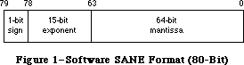
Figure 1–Software SANE Format (80-Bit)
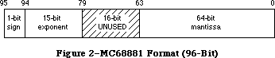
Figure 2–MC68881 Format (96-Bit)
This difference in format affects all procedures that accept floating-point values as arguments, since all floating-point arguments are converted to Extended before being passed, no matter how they are declared (e.g., Real, Single, Double, or Comp).
When compiling with this option, you must link with a special SANELib library file, SANE881Lib.o; the interface source file SANE.p contains conditional-compilation statements to make sure that the correct library’s interface is compiled. In this situation, SANE procedures are used for certain transcendental functions only (see the note which follows), and these functions, which are in SANE881Lib.o, expect their Extended parameters in 96-bit format.
However, numeric routines that are not compiled by Pascal (such as any assembly-language routines) have no way of finding out that their parameters are in 96-bit format. If it is not possible to rewrite these routines for 96-bit values, you can use the SANELib routines X96ToX80 and X80ToX96 to convert between formats. It might be simplest to define a new interface routine which automatically converts the formats:
Pascal
{FPFunc is a generic Floating-Point, assembly-language function}
{that accepts an 80-bit Extended parameter and returns an 80-bit result}
{We've changed the types to reflect that these are not 96-bit values.}
FUNCTION FPFunc(x: Extended80): Extended80; EXTERNAL;
{Given that we're compiling in -mc68881 mode, the compiler}
{thinks that Extended values are 96-bits long, but FPFunc wants an}
{80-bit parameter and produces an 80-bit result; we convert.}
FUNCTION FPFunc96(x: Extended): Extended; {x is a 96-bit extended!}
BEGIN
{convert our argument, call the function, then convert the result}
MyFPFunc := X80ToX96(FPFunc(X96ToX80(x))); {call the real FPFunc}
END;
C
extern Extended80 FPFunc (Extended80 x);
Extended FPFunc96 (Extended x); //x is a 96-bit extended!
{
//convert our argument, call the function, then convert the result
MyFPFunc = X80ToX96(FPFunc(X96ToX80(x))); //call the real FPFunc
}
It’s best to avoid compiling some parts of an application with the -mc68881 option on and other parts with it off; very strange bugs can occur if you try this. Note that 80-bit code and 96-bit code cannot reference the same Extended variables. There is no way to tell whether a given stored value is in 80-bit format or 96-bit format.
SANE on the Macintosh II
The version of SANE provided in the Macintosh II ROM recognizes the presence of the 68881 and uses it for most calculations automatically. SANE still expects
(and produces) 80-bit-format Extended values; it converts to and from 96-bit format internally when using the 68881.
A Note About 68881 Accuracy and Numeric Compatibility
SANE is more accurate than the 68881 when calculating results of certain functions (Sin, Cos, Arctan, Exp, Ln, Tan, Exp1, Exp2, Ln1, and Log2). To maintain this accuracy, SANE does not use 68881 instructions to directly perform these functions, thus the results you get from SANE calculations are still identical on all Macintosh systems.
To preserve this numeric compatibility with other SANE implementations, MPW compilers normally do not generate in-line 68881 calls to the above functions, even when the -mc68881 option is used; instead, they generate SANE calls to accomplish them. If you are willing to sacrifice numeric compatibility to gain extra speed, you can override this compiler feature with the compile-time variable, Elems881; include the option -d Elems881 = TRUE on the Pascal compiler and -Elems881 on the C compiler command line to cause the compiler to generate direct 68881 instructions.
For certain other transcendental functions provided by the 68881 that are not provided by SANE, MPW compilers generate direct 68881 calls if the -mc68881 option is on, independent of the setting of the Elems881 variable. These operations are Arctanh, Cosh, Sinh, Tanh, Log10, Exp10, Arccos, Arcsin, and Sincos.
For Pascal programmers, it is important to note that if you want an application to check for an FPU and exit gracefully if it does not exist, then you need to check for the FPU with code that does not have the -mc68881 option turned on. This restriction is because the -mc68881 option inserts code to initialize the 68881/68882 at the beginning of your code, and this initialization code causes an exception error if no FPU is present. For example, if you check for the existence of an FPU in your main Pascal procedure, you need to compile that main procedure with {$MC68881-}. Note that this compiler option affects the entire file that contains the option, so you would need to separate any code that uses an FPU into another file.
After you determine that an FPU exists, you have to execute the following instructions by hand to initialize the FPU yourself:
PROCEDURE ClearTheFPU ();
INLINE $42A7, {clr.l -(a7)}
$42A7, {clr.l -(a7)}
$F21F, $9800; {fmovem (a7)+,FPCR/FPSR}
Further Reference:
_______________________________________________________________________________
• Inside Macintosh, Volume V-1, Compatibility Guidelines
• Apple Numerics Manual, Second Edition
• Technical Note #129, _SysEnvirons: System 6.0 and Beyond
• Technical Note #236, Speedy the Math Coprocessor
• MPW Pascal Reference Manual
147: Finder Notes - “Get Info” Default & Icon Masks
#147: Finder Notes: “Get Info” Default & Icon Masks
See also: Technical Note #48 — Bundles
Written by: Bryan Stearns July 1, 1987
Updated: March 1, 1988
_______________________________________________________________________________
The Finder has undergone a couple of changes you should keep in mind when creating the “bundle” information for your application.
_______________________________________________________________________________
Creator String will be the default “Get Info” comment text
The “creator” (or “signature”) string (contained in a resource whose type is your application’s four-character creator type, and whose ID is 0) will be used as the default for the comment text displayed by the Finder’s “Get Info” command. Thus, you should set up this string (when you build your application) to contain the name of your program and a version number and date.
Icon Masks should match their icons
Your application’s BNDL (“bundle”) resource ties the file types that it uses for its documents with the icons to be displayed for those documents. For each icon, a “mask” icon is also provided; this mask is used to punch a hole in the gray desktop before drawing the icon.
Some applications use a cleverly-modified mask to provide an “action icon” that looks different when it’s selected. This causes problems; it is important that the mask be what it’s supposed to be (a solid black copy of the icon).
148: Suppliers for Macintosh II Board Developers
#148: Suppliers for Macintosh II Board Developers
See also: Designing Cards and Drivers for the Macintosh II and Macintosh SE
Written by: Mark Baumwell July 1, 1987
Updated: March 1, 1988
_______________________________________________________________________________
This note lists suppliers of parts that may be helpful for Macintosh II board developers. If your company supplies these parts, but is not listed here, please send a message to us (at the address on Technical Note #0) and we’ll include you in the next revision of this technical note.
_______________________________________________________________________________
This is a list of companies that supply the Macintosh II expansion port cover
(p/n 805-5064-05) (Foldout 2 in Designing Cards and Drivers or the Macintosh II and Macintosh SE ). It is not intended to be an endorsement or an indication of quality; it is just our list of known suppliers.
Galgon Industries, Inc.
37399 Centralmont Place
Fremont, CA 94536
Attn: Ron Haddox—General Sales
(415) 792-8211
Vector Electronics
12460 Gladstone Ave
Sylmar, CA 91342
(818) 365-9661
FAX# 818-356-5718
Attn: Norm Brunell
North American Tool and Die
999 Beecher Street
San Leandro, CA 94577
(415) 632-9263
Attn: Glenn Erikson
In addition to supplying the expansion port cover, Vector Electronics supplies Macintosh II NuBus extender boards and prototyping boards.
149: Document Names and the Printing Manager
#149: Document Names and the Printing Manager
See also: The Printing Manager
Technical Note #122 — Device-Independent Printing
Written by: Bryan Stearns July 1, 1987
Updated: March 1, 1988
_______________________________________________________________________________
Our compatibility testing for LaserShare (Apple’s LaserWriter spooler) has turned up a number of applications that do not provide the Printing Manager with a document name; although this feature is not required, it is nice for users that share printers.
_______________________________________________________________________________
Some printers (usually those that are shared between many users, like the LaserWriter) can provide the names of the users who are printing and the documents that are being printed to others interested in using the printer.
If the chosen printer uses a document name, the Printing Manager gets the name from the frontmost window’s title. If there is no front window, or if the window’s title is empty, the Printing Manager defaults to “unknown.”
This method was chosen because it works most transparently to applications; however, it won’t work if your application doesn’t display windows when printing (for instance, many applications that use windows for their documents do not open their documents when printing in response to a Finder “Print” command).
As a general solution to this problem, you can put up a window containing a message like “Press <Command-Period> to cancel printing”, and give it the document’s title. If the window is one that doesn’t have a title bar (like dBoxProc), this title will not be displayed. MacApp takes this approach. If for some reason you don’t want to put up a visible window, you can create a tiny window and hide it behind the menu bar: for instance, global coordinates of
(1,1,2,2). Make sure you use a plainDBox, so that no title will be drawn
(otherwise, in the unlikely case that a user is using a Macintosh II with two stacked screens, main screen on the bottom, the title might be visible on the upper screen).
Since the Printing Manager checks the name at PrValidate time, call PrValidate after PrCloseDoc and before the next PrOpenDoc, if you want unique names.
A number of applications set the document name in the print record directly. You should not do this because a) not all printers support this field, and b) none are guaranteed to support it in the future. (Apple does not guarantee that internal fields of the Printing Manager’s data structures will remain the same; the Printing Manager is targeted for substantial internal change!)
150: Macintosh SE Disk Driver Bug
#150: Macintosh SE Disk Driver Bug
Written by: Mark Baumwell July 1, 1987
Updated: March 1, 1988
_______________________________________________________________________________
A bug in the Macintosh SE ROMs causes the top drive to be slower than the bottom one in two-drive machines. This bug is fixed in System 4.2 and newer.
151: System Error 33, “zcbFree has gone negative”
#151: System Error 33, “zcbFree has gone negative”
See also: The Memory Manager
Written by: Bryan Stearns July 1, 1987
Updated: March 1, 1988
_______________________________________________________________________________
System 3.2 introduced a new system error, ID=33, generated by the Memory Manager when it notices that a heap had been corrupted in a certain way. This error is listed in the file “SysErr.a” as “negZcbFreeErr”.
_______________________________________________________________________________
The Memory Manager will trigger an “ID=33” system error when, during some operation which scans the objects in the heap, it sees that its running count of free bytes (zcbFree, an internal value) has become negative (an impossible feat in normal operation). This is nearly always caused by writing zeros past the end of one of the Memory Manager’s heap blocks (overwriting and corrupting the next block’s header, making it appear to be a free block).
If you get this error, use a debugger (like Macsbug or TMON) when you attempt to reproduce the error, to check the consistency of the heap up to the point where the error occurs. You may need to do this repeatedly until you isolate the operation that is corrupting the heap.
Note that although the heap may become corrupted during a system call, this doesn’t mean you’ve found a bug in the ROM; your code could be passing incorrect or invalid parameters to this or a previous system call, or could have corrupted a data structure used by a system call. More debugging is usually in order in this case; tools like Discipline (included in TMON; also available from users’ groups and electronic services) can help detect invalid parameters in system calls. Also, there is a Macsbug command, AH, that can check the consistency of the heap on every system call. See the documentation that came with your debugger to see what special features it offers.
A note about “SysErr.a”
Technical Support is often asked for an up-to-date list of error codes. In general, this is provided in “SysErr.a”, the file of error numbers shipped with the most current version of MPW. Admittedly, the documentation value of “SysErr.a” is sometimes low (as in the case of negZCBFreeErr), but it may give you a clue as to what the error might mean.
152: Using Laser Prep Routines
#152: Using Laser Prep Routines
See also: The Printing Manager
PostScript Language Reference Manual
Technical Note #122 — Device-Independent Printing
Written by: Ginger Jernigan July 1, 1987
Updated: March 1, 1988
_______________________________________________________________________________
This technical note addresses the issues involved in depending on the procedures and constants defined in the Laser Prep dictionary.
_______________________________________________________________________________
When you are writing an application that uses PostScript heavily, it is very tempting to call the procedures already defined in the Laser Prep dictionary, rather than taking up the space in the printer’s memory with PostScript procedures of your own. Or, if a procedure in the dictionary doesn’t do what you need it to do, it is tempting to go in and change it to do what you really want.
Unfortunately, we cannot guarantee that either the name or the function of a particular procedure in the dictionary will stay the same when the LaserWriter driver changes. In addition, some procedures may become obsolete and go away when the driver changes. Since the Laser Prep dictionary is considered part of the source for the LaserWriter driver, Apple reserves the right to make any changes to it that are deemed necessary.
Because we cannot guarantee the permanence of the contents of the Laser Prep dictionary, relying on its contents can pose a significant compatibility problem. If you rely on the procedures defined in the Laser Prep dictionary, your application will have to be revised every time Apple releases a new LaserWriter driver.
If you feel that you absolutely must use or modify procedures in the Laser Prep dictionary, you must always check the version that is loaded into the printer before you print. This allows your application to take appropriate action if the version of the dictionary that has been downloaded to the printer isn’t one that you know about.
How To Check The Laser Prep Dictionary Version
To determine the version of Laser Prep that the printer may contain, you have to communicate with the printer using the Printer Access Protocol (PAP); you can’t just send your query through the LaserWriter driver because there is no way to get an answer back. The object code and documentation for PAP are available from Apple’s Licensing department.
To determine whether the dictionary has been downloaded and whether it is the right one, send the following PostScript code to the printer:
%!PS-Adobe-1.2 Query
%%Title: Query to establish Laser Prep ProcSet version propriety
%%?BeginProcSetQuery: AppleDict md xx
/md where{
/md get /av get cvi xx eq
{(1)}{(2)}ifelse}
{(0)}ifelse = flush
%%?EndProcSetQuery: unknown
%%EOF
md is the name of the Apple dictionary and xx is the version number you want.
NOTE: /av is a constant in the md dictionary which contains the dictionary’s version number. This is the only object in the dictionary whose name and function are guaranteed not to change.
From the printer you will receive a string. If the string returned begins with
‘%%’, it is a Status response. You can ignore it and wait for another string.
If the response is ‘0’, the dictionary hasn’t been downloaded yet; you will need to determine how to best handle this situation for your application.
If the response is ‘1’, the printer is loaded with the correct version of the dictionary.
If the response is ‘2’, then the dictionary exists but it isn’t the version you need. In this case you need to either let the user know, or proceed in as standard a fashion as possible, without calling or modifying routines contained in the Laser Prep dictionary.
Translating PostScript Files
Some applications interpret the PostScript files that are generated by the LaserWriter driver when the user presses command-F (generates document only) or command-K (generates dictionary and document) after clicking on the OK button in the Job dialog. A typical application might translate these PostScript files into another page description language.
This kind of application requires intimate knowledge of the contents of the dictionary in order to be able to do the translation, because it may have to expand the procedures used to their actual values before it can then translate the PostScript to another language. This poses a significant compatibility problem. Since we cannot guarantee that the contents of the dictionary will not change, these types of applications will have to be revised every time we release a new version of the LaserWriter driver. Also, there is no way to know which version of the LaserWriter driver generated the PostScript file the application is interpreting. You will have to require that a particular version of the LaserWriter driver be used to generate the PostScript files that your application will interpret.
Printer Independence
Applications that are written to take advantage of the routines in the Laser Prep dictionary are, of course, highly device dependent. Being device dependent can drastically reduce your chances of being compatible with future printer-type devices. For a more detailed discussion of this issue, please refer to Technical Note #122.
153: Changes in International Utilities and Resources
#153: Changes in International Utilities and Resources
See also: The International Utilities
The Script Manager
Written by: Priscilla Oppenheimer July 1, 1987
Updated: March 1, 1988
_______________________________________________________________________________
The International Utilities package and the international resources have been changed with System file 4.1 to take advantage of the Script Manager.
_______________________________________________________________________________
INTL vs. itl
In the past, there were two INTL resources in the System file, INTL 0 and
INTL 1, which contained international formatting options. Starting with System 4.1, itl0 and itl1 replace INTL 0 and INTL 1. (INTL 0 and INTL 1 are still included with the System file so that applications that do a GetResource for them will still find them. Only these erroneous applications that use GetResource will access these resources now; the System will no longer look at them.) There can now be a set of international resources (itls) for each script that is installed. That is, where once there was one resource type (INTL) with IDs 0 and 1 there are now many different resource types (itl0, itl1, itl2, itlb, itlc, KCHR) with distinct resource IDs for the various countries. The U.S. System file uses resource ID 0 for all itl resources.
If your existing application calls IUGetIntl to get the appropriate international resource, you will have no problems under System 4.1. If, however, you call GetResource on INTL 0 or INTL 1 and then modify them, and expect that the System will use the modified resource, you will no longer work correctly. If your application has been released in the past with a modified System file to include your own INTL 0 and/or INTL 1, you may want to release your application with a modified itl0 and/or itl1.
The International Sorting Routine
The international sorting routine is used to handle cases where letters are equal in primary ordering but different in secondary ordering (e.g., “ä” and “a”). The routine can also handle cases where one character sorts as if it were two, or two characters would sort as if they were one, or even character reversals.
Prior to System 4.1, the international sorting routine was stored starting with the localRtn field of INTL 1. As of System 4.1, this routine is now stored in itl2. An INTL 2 resource is also included with the international resources, just for consistency (the System never uses it). It is exactly the same as itl2.
Writing your own sorting routine can be dangerous if it is not done correctly. Before attempting to do this, we would highly recommend you check with Apple to determine if we are already doing one for the language of interest. We plan to do many international versions of System file 4.1, and most developers’ needs will be met by these. A new policy at Apple will now make it possible to license foreign versions of the System file from Software Licensing. Contact Software Licensing at (408) 973-4667 for more information about this.
Error in APDA draft of Inside Macintosh Volume V
There is an error in the APDA draft of the International Utilities Package chapter of Inside Macintosh Volume V. It says that there is a flag in the Script Manager globals that overrides the current font and always uses the INTL 0 and INTL 1 resources. This is not true. INTL 0 and 1 have been replaced by itl0 and itl1, and are not used except by applications that explicitly get them by doing a GetResource. There is a relevant Script Manager flag called IntlForce that is correctly but incompletely explained in the Script Manager chapter. When IntlForce is false, the resources used by the International Utilities are determined by the current script. The script that is in use is determined by which font is in use for the port in use. For example, if you switch to the Kyoto font, then you will be using the Japanese Script Interface System (KanjiTalk). If you do this with IntlForce set to false, then you will use the resources that are associated with the Japanese Script Interface System.
When IntlForce is true, the International Utilities always use the resources that are associated with the system script; this is usually Roman. IntlForce is true by default. Actually, the Script Manager initialization routine reads the itlc resource to determine what the default is, and Apple plans to release the various international System files with this field set to true in the itlc resource. Applications that want to change the value of IntlForce can use the Script Manager call SetEnvirons with the smIntlForce verb. There is a Script Manager call, IntlScript, to find out the current value.
Bug in System 4.1 version of itl1
There is a bug in the itl1 resource in System 4.1. The itl1 resource contains arrays of day and month names, as did the INTL 1 resource. Their formats are:
days ARRAY [1..7] of STRING[15]
months ARRAY[1..12] OF STRING[15]
Every day and month is supposed to be coded as a Pascal string with a maximum of 15 characters, and the actual length in the first byte of the string. In System 4.0 and System 4.1, the contents of each string is always a Pascal string of length 15, with the unused characters set to nulls. In other words, the length byte is set to hex 0F. This will be fixed in a future release of the System file. If it is currently causing your application problems, you can change the lengths with ResEdit, or change them at run time, or use your own itl1 resource and release your application with an installer script. The recommended approach is to wait for a fixed version of the System file from Apple.
154: Displaying Large PICT Files
#154: Displaying Large PICT Files
See also: QuickDraw
Technical Note #21 — Internal Picture Format
Technical Note #35 — DrawPicture Problem
Technical Note #88 - Signals
Written by: Rick Blair July 1, 1987
Updated: March 1, 1988
_______________________________________________________________________________
Now that we have scanners and other massive-picture producing types of applications, there is a need to address the problem of how to display a PICT format object that is bigger than a current PICT resource is allowed to be. Note that this technique applies equally well to version 1 and version 2
(word-opcode) pictures as produced by the Macintosh II.
_______________________________________________________________________________
Future Compatibility
Think of the handle returned by a GetResource('PICT',ID) as a “handle” in the more general sense of being an abstract “tag”—something that the ROM routines can use to draw the picture with. Don’t assume that the entire picture has been read into memory or that you can directly read any bytes beyond the basic Picture record structure (picSize followed by picFrame). Someday we may provide a mechanism for the resource to be disk- instead of memory-based. The QuickDraw bottleneck procedures will know how to get data from and put data into the pictures in any case.
Spooling from a PICT file
In order to display pictures of arbitrary size, your application should be able to import a QuickDraw picture from a file of type PICT. This is the file produced by a “Save as…” from MacDraw with the PICT option selected.
What follows is a small program fragment that demonstrates how to spool in a picture from [the data fork of] a PICT file. The picture can be larger than the historical 32K resource size. See technical note #88 if you are unfamiliar with the Signal mechanism. We assume that a CatchSignals has been done before GetandDrawPICTFile is called.
MPW Pascal Example
{the following variable must be at the top level}
VAR
globalRef : INTEGER; {refNum of the file to read from}
{the following procedure must be at the top level}
PROCEDURE GetPICTData(dataPtr: Ptr; byteCount: INTEGER);
{replacement for the QuickDraw bottleneck routine}
VAR
err : OSErr;
longCount : LONGINT;
BEGIN
longCount := byteCount;
err := FSRead(globalRef,longCount,dataPtr);
{can't check for an error because we don't know how to handle it}
END;
CONST
abortPICT = 128; {error code if DrawPicture aborted}
PROCEDURE GetDrawPICTFile; {read in a PICT FILE selected by the user}
VAR
wher : Point; {where to display dialog}
reply : SFReply; {reply record}
myFileTypes : SFTypeList; {more Standard FILE goodies}
numFileTypes: INTEGER;
savedProcs : QDProcsPtr;
myProcs : QDProcs; {use CQDProcs for a color window}
myPicture : PicHandle; {we need a picture handle for DrawPicture}
longCount : LONGINT;
myEOF : LONGINT;
myFilePos : LONGINT;
BEGIN
wher.h := 20;
wher.v := 20;
numFileTypes := 1; {display PICT files}
myFileTypes[0] := 'PICT';
SFGetFile(wher,'',NIL,numFileTypes,myFileTypes,NIL,reply);
IF reply.good THEN BEGIN
SetStdProcs(myProcs); {use SetStdCProcs for a CGrafPort}
myProcs.getPicProc := @GetPICTData;
savedProcs := thePort^.grafProcs; {set the grafProcs to ours}
thePort^.grafProcs := @myProcs;
myPicture := PicHandle(NewHandle(SizeOf(myPicture)));
Signal(FSOpen(reply.fname,reply.vRefNum,globalRef));
Signal(GetEOF(globalRef,myEOF)); {get EOF for later check}
Signal(SetFPos(globalRef,fsFromStart,512)); {skip header}
{read in the (obsolete) size word and the picFrame}
longCount := SizeOf(myPicture);
Signal(FSRead(globalRef,longCount,Ptr(myPicture^)));
DrawPicture(myPicture,myPicture^^.picFrame); {draw the picture}
Signal(GetFPos(globalRef,filePos)); {get position for check}
Signal(FSClose(globalRef));
DisposHandle(Handle(myPicture));
thePort^.grafProcs := savedProcs; {restore the procs}
{Check for errors. If there wasn't enough room,}
{DrawPicture will abort; the FILE position mark}
{won't be at the end of the FILE.}
IF filePos <> myEOF THEN Signal(abortPICT);
END; {IF reply.good}
END; {GetDrawPICTFile}
MPW C Example
/*replacement for the QuickDraw bottleneck routine*/
pascal void GetPICTData(dataPtr,byteCount)
Ptr dataPtr;
short byteCount;
{ /* GetPICTData */
OSErr err;
long longCount;
longCount = byteCount;
err = FSRead(globalRef,&longCount,dataPtr);
/*can't check for an error because we don't know how to handle it*/
} /* GetPICTData */
/*error code if DrawPicture aborted*/
#define abortPICT 128
OSErr GetDrawPICTFile() /*read in a PICT FILE selected by the user*/
{ /* GetDrawPICTFile */
Point wher; /*where to display dialog*/
SFReply reply; /*reply record*/
SFTypeList myFileTypes;/*more Standard FILE goodies*/
short numFileTypes;
OSErr err;
QDProcsPtr savedProcs;
QDProcs myProcs;/*use CQDProcs for a color window*/
PicHandle myPicture;
/*we need a picture handle for DrawPicture*/
long longCount,myEOF,filePos;
wher.h = 20;
wher.v = 20;
numFileTypes = 1; /*display PICT files*/
myFileTypes[0] = 'PICT';
SFGetFile(wher,'',nil,numFileTypes,myFileTypes,nil,&reply);
if (reply.good)
{
SetStdProcs(&myProcs);
/*use SetStdCProcs for a CGrafPort*/
myProcs.getPicProc = GetPICTData;
savedProcs = (*qd.thePort).grafProcs;
/*set the grafProcs to ours*/
(*qd.thePort).grafProcs = &myProcs;
myPicture = (PicHandle)NewHandle(sizeof(Picture));
err = FSOpen(&reply.fName,reply.vRefNum,&globalRef);
if (err != noErr) return err;
err = GetEOF(globalRef,&myEOF);
/*get EOF for later check*/
if (err != noErr) return err;
err = SetFPos(globalRef,fsFromStart,512);/*skip header*/
if (err != noErr) return err;
/*read in the (obsolete) size word and the picFrame*/
longCount = sizeof(Picture);
err = FSRead(globalRef,&longCount,(Ptr)*myPicture);
if (err != noErr) return err;
DrawPicture(myPicture,&(**myPicture).picFrame); /*draw the picture*/
err = GetFPos(globalRef,&filePos);/*get position for check*/
if (err != noErr) return err;
err = FSClose(globalRef);
if (err != noErr) return err;
DisposHandle((Handle)myPicture);
(*qd.thePort).grafProcs = savedProcs;/*restore the procs*/
/*Check for errors. if there wasn't enough room,*/
/*DrawPicture will abort; the FILE position mark*/
/*won't be at the end of the FILE.*/
if (filePos != myEOF) return abortPICT;
else return noErr;
} /*if (reply.good) */
} /* GetDrawPICTFile */
More on Picture Compatibility
Many applications already support PICT resources larger than 32K. The 128K ROMs (and later) allow pictures as large as memory (or spooling) will accommodate. This was made possible by having QuickDraw ignore the size word and simply read the picture until the end-of-picture opcode was reached.
For maximum safety and convenience, let QuickDraw generate and interpret your pictures.
While Apple has provided you with the data formats that allow you to read or write picture data directly, we recommend that you always let DrawPicture or OpenPicture and ClosePicture process the opcodes.
One reason to read a picture directly by scanning the opcodes would be to disassemble it to, for example, extract a Color QuickDraw pixel map to save off in a private data structure. This shouldn’t normally be necessary.
If you do look at the picture data be sure and check the version information. You may want to put up an alert in your application that indicates to the user when a picture was created using a later version of the picture format than your application recognizes, letting them know that some elements of the picture cannot be displayed. If the version information indicates a QuickDraw picture version later than the one recognized by your application, your program should skip over the new opcodes and only attempt to parse the ones it knows.
As with reading picture data directly, it is best to use QuickDraw to create data in the PICT format. If you do need to create PICT format data directly, it is essential that you use the latest opcode specifications and that you thoroughly test the data produced on both color and black and white Macintosh machines. Contact Macintosh Developer Technical Support if you are not sure that you have the latest specifications.
Apple does not guarantee that a picture which wasn’t produced by QuickDraw will work.
155: Handles and Pointers—Identity Crisis
#155: Handles and Pointers—Identity Crisis
See also: QuickDraw
The Memory Manager
Written by: Jim Friedlander September 1, 1987
Updated: March 1, 1988
_______________________________________________________________________________
A handle is a handle and a pointer is a pointer. Applications should avoid embedding non-relocatable objects (that the system assumes will never move) in handles.
_______________________________________________________________________________
In order to avoid fragmentation, some applications embed pointers (non-relocatable memory manager objects) in handles, so that the handles can be moved around as needed. This can cause several problems, especially with the Macintosh II, and should be avoided.
For example, use of a handle to store a GrafPort can be particularly dangerous. A GrafPort must not move between the time that it is opened (OpenPort, NewWindow, NewDialog, etc.) and the time that it is closed (ClosePort, DisposeWindow, DisposDialog, etc.). Color QuickDraw keeps a list of open ports and pointers to them, so, if you create a GrafPort and it moves while still open, Color QuickDraw will (unknowingly) have a pointer to outer space instead of a pointer to a GrafPort. When it needs to use that pointer, it will get hopelessly confused and probably issue a system error to let you know.
As an aside, if you open a port by calling OpenPort or OpenCPort, you should always close the port by calling ClosePort or CloseCPort before calling DisposPtr on the port or you will orphan handles (visRgn, clipRgn and more).
156: Checking for Specific Functionality
#156: Checking for Specific Functionality
See also: Operating System Utilities
Assembly Language
Technical Note #129 — SysEnvirons
Written by: Jim Friedlander September 1, 1987
Updated: March 1, 1988
_______________________________________________________________________________
This technical note explains how to check at run time to see if specific functionality, such as the “new” TextEdit, is present.
_______________________________________________________________________________
Applications should strive to be compatible across all Macintoshes, but there are times when an application must have knowledge about the machine that it is running on. The new trap, SysEnvirons, will give an application most of the information that it requires (what hardware, what version of system software…).
Using SysEnvirons
In most cases, if you examine why you want to test for the existence of a specific trap, you will find that there is an alternative method, for example:
I need to see if the “new” TextEdit calls are available.
Call SysEnvirons and check to see that SysEnvRec.machineType >= 0 (128K ROMs or newer) and that we are running System 4.1 or later (System 4.1 and later support the new TextEdit on 128K and greater ROM machines—we can check this by just seeing if the SysEnvirons trap exists, if we get an envNotPresent error, we know it doesn’t). In Pascal:
CONST
CurrentVersion = 1; {Current version of SysEnvirons}
VAR
newTextAvail : BOOLEAN;
theWorld : SysEnvRec;
BEGIN
{
This code checks to see if System 4.1 or later is running by calling
SysEnvirons. If SysEnvirons returns an envNotPresent error, we know that
we are running a system prior to 4.1, so we know we don’t have the new
TextEdit. If SysEnvirons doesn’t return envNotPresent, we check machine
type to make sure we aren't running on 64K ROMs (note: we assume that envMachUnknown doesn't have 64K ROMs when we check machineType >= 0)
}
IF SysEnvirons(CurrentVersion,theWorld) = envNotPresent THEN
newTextAvail:= FALSE
ELSE
newTextAvail:= (theWorld.machineType >= 0);
END;
In C:
/* Current version of SysEnvirons */
#define CurrentVersion 1
{
Boolean newTextAvail;
SysEnvRec theWorld;
/*
see comment in the above Pascal
*/
if (SysEnvirons(CurrentVersion,&theWorld) == envNotPresent)
newTextAvail = false;
else
newTextAvail = (theWorld.machineType >= 0);
}
I need to see if PopUpMenuSelect is implemented.
The same answer as above applies here, since the “new” Menu Manager calls are only implemented in System 4.1 on 128K or larger ROM machines (and, as we found above, PopUpMenuSelect has the same trap number as Rename, so calling NGetTrapAddress won’t work on 64K ROMs).
If you find that you need information that is not contained in SysEnvirons, please send suggestions for extending it to Macintosh Developer Technical Support at the address in Technical Note #0.
Checking for Specific Functionality
There are rare times when you may feel that it is necessary to test for specific functionality. In order to allow for testing of specific trap functionality, there is an official unimplemented trap. This trap ($A89F) is unimplemented on all Macintoshes. To test to see if a particular trap that you wish to use is implemented, you can compare its address with the address of the unimplemented trap. Here are two fragments that show how to check to see if Shutdown is implemented. First, Pascal:
CONST
ShutDownTrapNum = $95;{trap number of Shutdown}
UnImplTrapNum = $9F;{trap number of “unimplemented trap”}
VAR
ShutdownIsImplemented : BOOLEAN; {is Shutdown implemented}
BEGIN
{Is Shutdown implemented?}
ShutdownIsImplemented := NGetTrapAddress(ShutDownTrapNum,ToolTrap) <> NGetTrapAddress(UnImplTrapNum,ToolTrap);
END;
Here’s a C fragment:
/*trap number of Shutdown*/
#define ShutDownTrapNum 0x95
/*trap number of “unimplemented trap”*/
#define UnImplTrapNum 0x9F
{
Boolean ShutdownIsImplemented;
/*Is Shutdown implemented?*/
ShutdownIsImplemented = NGetTrapAddress( ShutDownTrapNum,ToolTrap) != NGetTrapAddress(UnImplTrapNum,ToolTrap);
}
NGetTrapAddress is used because it ensures that you will get the correct trap in case there is a ToolTrap and an OSTrap with the same number. Please note that calling NGetTrapAddress does not cause compatibility problems with 64K ROMS. When run on those ROMs, it just becomes a GetTrapAddress call. You have to be careful on 64K ROMs—you can’t test for PopUpMenuSelect ($A80B), for example, because it has the same trap number as Rename($A00B). The 64K ROM didn’t really differentiate between ToolTraps and OSTraps (there was no overlap in trap numbers). So, if you wanted to test for PopUpMenuSelect, you would need to first check to make sure you weren’t running on 64K ROMs (see below).
You can get the trap number of the trap you wish to test for from Inside Macintosh (Appendix C of Volumes I-III and Appendix B of Volume IV). You can tell if the trap is an OSTrap or a ToolTrap by checking to see if bit 11 in the trap word is set, that is, traps like $A8xx (or $A9xx or $AAxx) that have the
“8” component set, are ToolTraps and traps that don’t ($A0xx) are OSTraps. The trap number that you pass to NGetTrapAddress for ToolTraps is the low 10 bits of the trap word (the trap number for PopUpMenuSelect[$A80B] is $00B). The trap number that you pass to NGetTrapAddress for OSTraps is the low 8 bits of the trap word (the trap number for MoveHHi[$A064] is $064).
Shutdown ($A895) is just an example of a trap that we might need to check before calling. Most applications won’t call ShutDown, so this is just an example of how to do the testing.
157: Problem with GetVInfo
#157: Problem with GetVInfo
See also: File Manager
Written by: Jim Friedlander September 1, 1987
Updated: March 1, 1988
_______________________________________________________________________________
The high-level call GetVInfo (and its low-level counterpart PBGetVInfo) may return inaccurate results for freeBytes when running HFS.
_______________________________________________________________________________
The high-level File Manager call GetVInfo returns the number of free bytes on a volume as one of its parameters. Since GetVInfo is really only glue that fills in a parameter block for you and then calls PBGetVInfo, the values returned from it are subject to the limitations (imposed for MFS) discussed in the File Manager chapter of Inside Macintosh Volume IV (p. 130): “Warning: IOVNmAlBlks and ioVFrBlks, which are actually unsigned integers, are clipped to 31744
($7C00) regardless of the size of the volume.” This will be fixed in future versions of the glue (newer than MPW 2.0.2), but for now, you need to call PBHGetVInfo yourself instead, as shown below.
The value that GetVInfo returns in freeBytes (ioVFrBlks * ioVAlBlkSize) will thus be less than or equal to the actual number of free bytes on a volume. This isn’t catastrophic, but can be highly inconvenient if you really need to know how much free space is on a given volume.
Note: IOVNmAlBlks returned from PB[H]GetVInfo does not reflect the actual total number of blocks on an HFS disk, but rather only the blocks that are “available” for program use (it doesn’t count blocks used for catalog information).
Here are two functions (one in MPW Pascal, one in MPW C) that return the actual number of free bytes on a volume, regardless of File System (if MFS is running, the PBHGetVInfo call will actually generate a PBGetVInfo call which will return the proper values for MFS volumes):
In MPW Pascal:
FUNCTION FreeSpaceOnVol(vRef:Integer; VAR freeBytes:Longint): OSErr;
TYPE
{we need this to convert an unsigned integer to an unsigned
longint}
TwoIntsMakesALong = RECORD
CASE Integer OF
1: (long: LongInt);
2: (ints: ARRAY [0..1] OF Integer);
END; {TwoIntsMakesALong}
VAR
HPB : HParamBlockRec;
convert : TwoIntsMakesALong;
err : OSErr;
BEGIN {FreeSpaceOnVol}
WITH HPB DO BEGIN {set up parameter block for the PBGetVInfo call}
ioNamePtr := NIL; {we don’t care about the name}
ioVRefNum := vRef; {this was passed in as a parameter}
ioVolIndex := 0; {use ioVRefNum only}
END; {WITH}
err := PBHGetVInfo(@HPB,false);
FreeSpaceOnVol:= err; {return error from HGetVInfo}
{
This next section needs some explanation. ioVFrBlk is an unsigned integer. If we were to assign it(or coerce it) to a longint, it would get sign extended by MPW Pascal and would thus be negative. Since we don’t want that, we use a variant record that maps two integers into the space of one longint. The high word (convert.ints[0]) is cleared in the first line, then the low word is assigned the value of HPB.ioVFrBlk. The resulting longint (convert.long) is now a correctly signed (positive) long integer representing the number of free blocks. NOTE: this is only necessary if the number of free blocks on a disk exceeds 32767 ($7FFF).
}
IF err = 0 THEN BEGIN
convert.ints[0] := 0;
convert.ints[1] := HPB.ioVFrBlk;
freeBytes:= convert.long * HPB.ioVAlBlkSiz;
END ELSE {PBHGetVInfo failed}
freeBytes:= 0; {return this if the routine failed}
END; {FreeSpaceOnVol}
In MPW C:
OSErr freeSpaceOnVol(vRef,pfreeBytes)
short int vRef;
unsigned long int *pfreeBytes; /* C does this correctly!! */
{ /* freeSpaceOnVol */
HVolumeParam HPB;
OSErr err;
HPB.ioNamePtr = 0L; /* we don’t care about the name */
HPB.ioVRefNum = vRef; /* this was passed in as a parameter */
HPB.ioVolIndex = 0; /* use ioVRefNum only */
err = PBHGetVInfo(&HPB,false);
if (err == noErr)
*pfreeBytes = (unsigned long int)HPB.ioVFrBlk * HPB.ioVAlBlkSiz;
else
*pfreeBytes = 0L; /* return this if the routine failed */
return(err); /* function result */
} /* freeSpaceOnVol */
158: Frequently Asked MultiFinder Questions
#158: Frequently Asked MultiFinder Questions
See also: Technical Note #129 — SysEnvirons
Technical Note #156 — Checking For Specific Functionality
MultiFinder Developer’s Package
Written by: Jim Friedlander September 1, 1987
Updated: March 1, 1988
_______________________________________________________________________________
This technical note provides answers to some of the more frequently asked questions about MultiFinder. The development name for MultiFinder was Juggler, so the term “juggle” is used in this technical note to denote a context switch.
_______________________________________________________________________________
How can I tell if WaitNextEvent is implemented?
Most applications should not need to tell if MultiFinder is running. Most of the time, the application really needs to know something like: “How can I tell if WaitNextEvent is implemented?” Here’s a Pascal fragment that demonstrates how to check to see if WaitNextEvent is implemented:
FUNCTION TrapAvailable(tNumber: INTEGER; tType: TrapType): BOOLEAN;
CONST
UnimplementedTrapNumber = $A89F; {number of "unimplemented trap"}
BEGIN {TrapAvailable}
{Check and see if the trap exists.}
{On 64K ROM machines, tType will be ignored.}
TrapAvailable := ( NGetTrapAddress(tNumber, tType) <>
GetTrapAddress(UnimplementedTrapNumber) );
END; {TrapAvailable}
FUNCTION WNEIsImplemented: BOOLEAN;
CONST
WNETrapNumber = $A860; {trap number of WaitNextEvent}
VAR
theWorld : SysEnvRec; {to check if machine has new traps}
discardError : OSErr; {to ignore OSErr return from SysEnvirons}
BEGIN {WNEIsImplemented}
{ Since WaitNextEvent and HFSDispatch both have the same trap
number ($60), we can only call TrapAvailable for WaitNextEvent
if we are on a machine that supports separate OS and Toolbox
trap tables. We call SysEnvirons and check if machineType < 0.}
discardError := SysEnvirons(1, theWorld);
{ Even if we got an error from SysEnvirons, the SysEnvirons glue
has set up machineType.}
IF theWorld.machineType < 0 THEN
WNEIsImplemented := FALSE
{this ROM doesn't have separate trap tables or WaitNextEvent}
ELSE
WNEIsImplemented := TrapAvailable(WNETrapNumber, ToolTrap);
{check for WaitNextEvent}
END; {WNEIsImplemented}
{Note that we call SystemTask if WaitNextEvent isn't available.}
...
hasWNE := WNEIsImplemented;
...
IF hasWNE THEN BEGIN
{call WaitNextEvent}
...
END ELSE BEGIN
{call SystemTask and GetNextEvent}
...
END;
...
Here’s a C fragment:
Boolean
TrapAvailable(tNumber, tType)
short tNumber
TrapType tType
{
/* define trap number for old MPW or non-MPW C */
#ifndef _Unimplemented
#define _Unimplemented 0xA89F
#endif
/* Check and see if the trap exists. */
/* On 64K ROM machines, tType will be ignored. */
return( NGetTrapAddress(tNumber, tType) !=
GetTrapAddress(_Unimplemented) );
}
Boolean
WNEIsImplemented()
{
/* define trap number for old MPW or non-MPW C */
#ifndef _WaitNextEvent
#define _WaitNextEvent 0xA860
#endif
SysEnvRec theWorld; /* used to check if machine has new traps */
/* Since WaitNextEvent and HFSDispatch both have the same trap
number ($60), we can only call TrapAvailable for WaitNextEvent
if we are on a machine that supports separate OS and Toolbox
trap tables. We call SysEnvirons and check if machineType < 0. */
SysEnvirons(1, &theWorld);
/* Even if we got an error from SysEnvirons, the SysEnvirons glue
has set up machineType. */
if (theWorld.machineType < 0) {
return(false)
/* this ROM doesn't have separate trap tables or WaitNextEvent */
} else {
return(TrapAvailable(_WaitNextEvent, ToolTrap));
/* check for WaitNextEvent */
}
}
/* Note that we call SystemTask if WaitNextEvent isn't available. */
...
hasWNE = WNEIsImplemented();
...
if (hasWNE) {
/* call WaitNextEvent */
...
} else {
/* call SystemTask and GetNextEvent */
...
}
...
Note: Testing to see if WaitNextEvent is implemented is not the same as testing to see whether MultiFinder is running. Systems 6.0 and newer include WaitNextEvent whether or not MultiFinder is running.
How can I tell if the MultiFinder Temporary Memory Allocation calls are implemented?
The technique that’s used to determine this is similar to the above technique. The TrapAvailable routine above is reused. In Pascal:
FUNCTION TempMemCallsAvailable: BOOLEAN;
CONST
OSDispatchTrapNumber = $A88F; {number for temporary memory calls}
BEGIN {TempMemCallsAvailable}
{ Since OSDispatch has a trap number that was always defined
to be a toolbox trap ($8F), we can always call TrapAvailable.
If we are on a machine that does not have separate OS and
Toolbox trap tables, we’ll still get the right trap address.}
TempMemCallsAvailable := TrapAvailable(OSDispatchTrapNumber, ToolTrap);
{check for OSDispatch}
END; {TempMemCallsAvailable}
In C:
Boolean
TempMemCallsAvailable()
{
/* define trap number for old MPW or non-MPW C */
#ifndef _OSDispatch
#define _OSDispatch 0xA88F
#endif
/* Since OSDispatch has a trap number that was always defined to
be a toolbox trap ($8F), we can always call TrapAvailable.
If we are on a machine that does not have separate OS and
Toolbox trap tables, we’ll still get the right trap address. */
return(TrapAvailable(_OSDispatch, ToolTrap));
/* check for OSDispatch */
}
How can I tell if my application is running in the background?
To run in the background under MultiFinder, an application must have set the canBackground bit (bit 12 of the first word) in the SIZE resource. In addition, the acceptSuspendResumeEvents bit (bit 14) should be set. An application can tell it is running in the background if it has received a suspend event but not a resume event.
When exactly does juggling take place?
Juggling takes place at WaitNextEvent/GetNextEvent/EventAvail time. If you have the acceptSuspendResumeEvents bit set in the SIZE resource, you will receive suspend/resume events. When you get a suspend event (or, when you call EventAvail and a suspend event has been posted), you will be juggled out the next time that you call WNE/GNE/EventAvail. When you receive a suspend event, you are going to be juggled, so don’t do anything to try to retain control
(such as calling ModalDialog).
Speaking of ModalDialog, MultiFinder will not suspend your application when the frontmost window is a modal dialog, though background tasks will continue to get time.
Can I disable suspend/resume events by passing the appropriate event mask to WNE/GNE/EventAvail?
suspend/resume events are not queued, so be careful when masking out app4Evts. You will still get the event, all that will happen if you mask out app4Evts is that your application won’t know when it is going to be juggled out (your application will still be juggled out when you call WNE/GNE/EventAvail). If your application sets a boolean to tell whether or not it’s in the foreground or the background, you definitely don’t want to mask out app4Evts.
Should my application use WaitNextEvent?
Yes, this will enable background tasks to get as much time as possible. All user events that your program needs to handle will be passed to your application as quickly as possible. Applications that run in the background should try to be as friendly as possible. It’s best to do things a small chunk at a time so as to give maximum time to the foreground application.
“Cooperative multi-tasking” requires cooperation!
If your application calls WaitNextEvent, it shouldn’t call SystemTask.
Is there anything else that I can do to be MultiFinder friendly?
It is very important that you save the positions of windows that you open, so that the next time the user launches your application, the windows will go where they had them last. This greatly enhances the usability of MultiFinder. With data files, the window positions can be stored in either the resource or the data fork.
If you have windows that aren’t data windows (i.e. separate files), you can store information about their positions in one of two ways: in a separate configuration file or in a resource in your application. Using a separate configuration file is necessary if your application is shareable on AppleShare, since resource forks are not. The configuration file should be put in the folder that contains the currently open system folder (this is guaranteed to be a local, non-shared volume as opposed to a server volume). The vRefNum/WDRefNum of this folder can be obtained by calling SysEnvirons (SysEnvRec.sysVRefNum).
Can I use a debugger with MultiFinder?
Yes, MacsBug will load normally, since it is loaded well before MultiFinder. Since TMON is currently installed as a startup application, you should Set Startup to it, then launch MultiFinder manually (by holding down Option-Command while double-clicking the MultiFinder icon) or use a program that will run multiple startup applications (such as Sequencer), making sure that TMON is run before MultiFinder. If you try to run TMON after MultiFinder has been installed, a system crash will result. The latest version of TMON (2.8) has an INIT that loads it before MultiFinder is present.
It is necessary to check CurApName ($910) when you first enter a debugger (TMON users can anchor a window to $910) to see which layer (whose code, which
low-memory globals and so on) is currently executing, especially if you entered the debugger by pressing the interrupt button.
What happened to animated icons under MultiFinder?
Finders 6.0 and newer no longer use the mask that you supply in an ICN# to
“punch a hole” in the desktop. Instead, the Finder uses a default mask that consists of a solid black copy of the icon with no hole.
How can I ensure maximal compatibility with MultiFinder?
If you follow the guidelines presented in the MultiFinder Developer’s Package you will stand a very good chance of being fully compatible with MultiFinder.
159: Hard Disk Hacking
#159: Hard Disk Hacking
See also: Technical Note #96—SCSI Bugs
Technical Note #134—Hard Disk Medic
The Device Manager
Written by: Bo3b Johnson September 1, 1987
Updated: March 1, 1988
_______________________________________________________________________________
For those of a technical bent with some extra time, you can build your own hard disk system from a cheap SCSI drive and a driver that you write. This is not a project for those short on time, so beware.
_______________________________________________________________________________
We often get questions regarding the feasibility of connecting a ‘generic’ SCSI drive to the Macintosh, usually the Macintosh II. It is possible to use a standard drive, but it is important to be aware that there is a reason why a fully assembled drive costs more. When buying a hard disk you have two choices:
1) buy a fully assembled drive, formatting and driver software included
2) buy the pieces necessary to assemble your own: the drive itself, power
supply if needed, cables, and development system to write a driver and
formatter.
The second choice will often appear to be cheaper, since you don’t have to pay for a fancy case with a fancy label. However, you are also missing the chance to pay for some fancy software that took some fancy amounts of time to write.
Do not underestimate the difficulty of building your own hard disk. SCSI drives are only partially standardized so a driver written for one drive will probably not work (at least not well) on another drive. All drives come with a formatting utility that also contains a driver for reading and writing sectors to the disk. For example, the Apple drives come with a program called HD SC Setup. Most third-party drives have a similar utility that is specific to their drive. The formatting operation varies widely depending on the drive, and the driver also may have to know about specific timing problems with a given drive. HD SC Setup only supports the drives which we produce.
If you decide that you want to hack together your own drive, you will need to write this formatter/driver program. It is non-trivial, and this is part of what you pay for when you buy an off-the-shelf drive. If you have the time, you may save some money. If you are writing your own formatter/driver program we can help you with problems you run into, but you must be familiar with SCSI terminology, the SCSI Manager, and be able to use an assembly level debugger like Macsbug or TMon. You may run into timing difficulties that require the use of a logic analyzer or SCSI analyzer to resolve.
This may sound like it is hard to write your own driver. It is. This may sound like we are trying to scare you off from writing your own driver. We are.
160: Key Mapping
#160: Key Mapping
Revised by: Jim Luther, Peter Edberg, & Imran Sayeed February 1991
Written by: Cameron Birse September 1987
This Technical Note describes the Macintosh family key code mapping scheme when running System file 4.1 and later. This Note also provides a “safe” method for remapping keyboards.
Changes since October 1990: Added a section on how 'KMAP' resources are matched to specific ADB keyboard types and a section on the original Macintosh and Macintosh Plus keyboards.
_______________________________________________________________________________
Introduction
System file 4.1 introduced a change in the keystroke mapping mechanism for the Macintosh family. Originally, a keystroke caused an interrupt, and the interrupt handler dispatched the keycode to a translation routine pointed to by a low-memory pointer (Key1Trans or Key2Trans). The System used to install this routine at boot time, and developers would generally replace it in part or entirely to remap the keyboard. When the keycode was mapped, it was returned to the interrupt handler, which then posted the event. The System file contained both the translation routine and the key map in 'INIT' resources ID = 0 and ID = 1.
In all System files since 4.1, the low-memory pointers are still there, and the Macintosh Plus still calls them; however, Macintosh systems equipped with ADB do not call these low-memory pointers. The System preserves them so applications that call them can still use them to translate keycodes, but since System file 4.1, they point to a routine that implements a different mechanism.
ADB Keyboards
With multiple Apple Desktop Bus (ADB) keyboards, a mechanism is needed to map the different raw keycodes to a standard virtual keycode that can be mapped to ASCII and special character sets. This mapping is done in an effort to reduce keyboard hardware dependence, and the raw mapping routine uses a table which is resident in the System 'KMAP' resource. Basically, the raw keycode is used to index into the 'KMAP' table; the value at the indexed location in the 'KMAP' is what gets returned as the virtual keycode.
The 'KMAP' resource ID that matches the keyboard type is used if that 'KMAP' resource is present. If a 'KMAP' resource ID that matches the keyboard type cannot be found, then the system attempts to use 'KMAP' resource ID = 0. If 'KMAP' resource ID = 0 cannot be found, then raw keycode to virtual keycode mapping does not occur. On all Macintosh systems later than the Macintosh Plus, 'KMAP' resource ID = 0 is in ROM. The global variable KbdType (a byte) contains the type of the last keyboard used.
KbdType Keyboard Type
$01 Apple Keyboard (standard) and Apple Desktop Bus Keyboard(IIgs)
$02 Apple Extended Keyboard and Apple Extended Keyboard II
$04 Apple Keyboard, ISO
$05 Apple Extended Keyboard II, ISO
$06 Portable
$07 Portable, ISO
$08 Apple Keyboard II
$09 Apple Keyboard II, ISO
With this mechanism, the keystroke causes an interrupt, and the interrupt handler maps the raw keycode to a “virtual” keycode , which is then sent to the _KeyTrans trap. This trap maps the virtual keycode to an ASCII value (using tables which reside in the 'KCHR' resource of the System file) and returns that value to the handler which posts the event.
FUNCTION KeyTrans(transData:Ptr;keycode:INTEGER;VAR state: LONGINT):LONGINT
The transData parameter is a pointer to the 'KCHR' image in memory. The keycode parameter is an integer composed of the modifier flags in bits 8-15, an up or down stroke flag in bit 7 (1=up), and the virtual key code in bits 6-0. The state parameter is a value internal to _KeyTrans which should be preserved across calls if dead keys are desired. It is dependent on the 'KCHR' information, so if the 'KCHR' is changed, state should be reset to zero.
The LONGINT returned is actually two 16-bit characters to be posted as events (usually the high byte of each is zero), high word first. A returned value of zero in either word should not be posted. Do not depend upon the word in which the character is returned; if both words are valid, then the high word should be posted first.
To remap the keyboard, one must supply a 'KCHR' resource and have the System use it. Each 'KCHR' resource has an associated 'SICN' resource. The 'SICN' resource provides a graphic representation of the current keyboard mapping. For example, the French keyboard layout has a 'SICN' of a French flag to designate that particular map is currently active. The 'SICN' resource should be some representation of the particular remap, and its ID number must be the same as that of the 'KCHR'. The 'KCHR' resource must be named appropriately, as it can be displayed in a scrolling list in the Keyboard Control Panel.
Macintosh and Macintosh Plus Keyboards
With the Macintosh (the original keyboard on the 128K and 512K Macintoshes) and Macintosh Plus keyboards, the event record contains the raw keycode, since there is no 'KMAP' mapping. For the domestic Macintosh keyboard and the Macintosh Plus keyboard, this is not a problem, since the raw keycodes generated by those keyboards are identical to the virtual keycodes. This is not the case for the Macintosh international keyboard, which is still used with the Macintosh Plus on many international systems. For this keyboard, the event record contains a raw keycode which can not be treated as a virtual keycode.
If you need to obtain virtual keycodes for the Macintosh international keyboard, you need to map the raw keycode in the event record to a virtual keycode. The following table provides the necessary mapping (the raw keycodes generated by this keyboard are in the range $00-$3F; keycodes above this are generated by the optional keypad that may be used with this keyboard). If the raw keycode is used as an offset into this table, the byte at that offset is the virtual keycode. This mapping is also performed by the _Key1Trans hook before it calls _KeyTrans, if the keyboard is a Macintosh international type.
oldIntlKeybdRawToVirtual ; raw keycode:
dc.b $00, $01, $02, $03, $04, $05, $32, $06 ; $00 .. $07
dc.b $07, $08, $2c, $09, $0c, $0d, $0e, $0f ; $08 .. $0f
dc.b $10, $11, $12, $13, $14, $15, $16, $17 ; $10 .. $17
dc.b $18, $19, $1a, $1b, $1c, $1d, $1e, $1f ; $18 .. $1f
dc.b $20, $21, $22, $23, $2a, $25, $26, $27 ; $20 .. $27
dc.b $28, $29, $24, $2e, $2f, $0b, $2d, $2b ; $28 .. $2f
dc.b $30, $34, $0a, $33, $31, $35, $36, $37 ; $30 .. $37
dc.b $38, $39, $3a, $3b, $3c, $3d, $3e, $3f ; $38 .. $3f
The global variable KbdType (a byte) contains the type of the last keyboard used. The following table shows the values of the global variable KbdType for the Macintosh and Macintosh Plus keyboards:
KbdType Keyboard Type
$03 Macintosh (domestic or international)
$0B Macintosh Plus
For both the Macintosh domestic and international keyboards, the global variable KbdType is 3. The Macintosh has no way to distinguish between these two keyboards, and must rely on the user to indicate which keyboard is being used by clicking on the appropriate picture in a panel in the Keyboard Cdev (this panel only appears on non-ADB Macintoshes). A byte flag in the 'itlc' resource ID = 0 indicates which keyboard the user has specified. If the KbdType global contains 3, you can test this flag to determine if the international version of the keyboard is being used (following is the assembly-language version):
with ItlcRecord
subq #4,sp ; space for returned handle
move.l #'itlc',-(sp) ; push itlc type
clr.w -(sp) ; want ID=0
_GetResource ; get the itlc resource
move.l (sp)+,d0 ; did we get it?
beq myErrorHandling ; if not, bail
move.l d0,a0 ; copy handle
move.l (a0),a0 ; get pointer
tst.b itlcOldKybd(a0) ; check flag
endwith ;ItlcRecord
; if non-zero, international keyboard is being used
Hardware Dependencies
Although the principle underlying virtual keycodes is to have a standard keycode for a character regardless of the actual keyboard used, some hardware dependent differences are still present, and covered in this section.
• The virtual keycodes for the cursor keys and for some keypad operator keys are different on the ADB keyboards and the non-ADB keyboards:
Key Description ADB Keycode Non-ADB Keycode
left arrow $7B $46
right arrow $7C $42
down arrow $7D $48
up arrow $7E $4D
keypad plus sign (+) $45 $46 (with Shift bit set in modifiers)
keypad asterisk (*) $43 $42 (with Shift bit set in modifiers)
keypad equal sign (=) $51 $48 (with Shift bit set in modifiers)
keypad slash (/) $4B $4D (with Shift bit set in modifiers)
Notice that on non-ADB keyboards, the keycodes for the keypad operators listed duplicate the keycodes for the cursor keys. On these keyboards, holding Shift and pressing Left Arrow produce the plus sign character (+), for example.
• The Macintosh International keyboard and the ISO ADB keyboards have an extra key that is not present on the domestic keyboards. This key produces virtual keycode $0A.
• It is possible to reassign the virtual keycodes for the Shift, Option, and Control keys on the right side of the ADB Extended keyboards. Please refer to Inside Macintosh, V-193, The Toolbox Event Manager, for an explanation.
• There is a different virtual keycode for the Enter key depending on whether it is on the keypad (as on the Macintosh Plus keyboard and most ADB keyboards) or on the main section of the keyboard (as on the Macintosh keyboard and the Portable keyboard). The keypad version has keycode $4C, while the main keyboard version has keycode $34.
Remapping the Keyboard
Remapping the keyboard can be done two ways: either at boot time or from within an application. Remapping from within an application can be made permanent (until the next boot) or only for the life of the application. The remapping is accomplished by modifying a 'KCHR' resource and telling the System to use the new 'KCHR'. The 'KCHR' must have an ID number in the range of the appropriate script and must have an associated 'SICN' resource with the same ID number. The Roman script, for example, uses the range 0 to 16383, and the standard 'KCHR' IDs for each country are the same as the country code (e.g., US = 0, French = 1, German = 2, etc.). Other Roman keyboards should have numbers somewhere in the script range (e.g., “Dvorak” at ID 500).
Remap At Boot Time
To remap the keyboard at boot time, there must be a modified 'KCHR' resource in the System file with an ID number in the range of the appropriate script and an associated 'SICN' resource with the same ID number. To make the System use the modified 'KCHR' at boot time, one must change the entries in the 'itlb' resource in the System file to reflect the ID of the modified 'KCHR' and 'SICN' resources. Refer to the latest version of MPW’s SysTypes.r file for the exact format of the 'itlb' resource.
Since Apple’s System Software Licensing policy forbids shipping a modified System file, Apple suggests using the Installer to install the new resources. This installation should assign the new resources their IDs based upon what is currently in the System file to avoid all conflicts. Refer to Technical Note #75, Apple’s Multidisk Installer for more details on Apple’s Installer program.
Remap After Boot Time
To remap the keyboard after boot time, there must be a modified 'KCHR' resource in the System file or in the application with an ID number in the range of the appropriate script and an associated 'SICN' resource with the same ID number. One must also call the Script Manager to set up the proper resources and tell the System to use them. First call _SetScript to set the Script Manager’s global variable for the 'KCHR' resource ID, then call _SetScript again to set the global variable for the 'SICN' resource ID. Now call _KeyScript to load the resources and set up the System to use them. The following sample code demonstrates these calls:
MPW Pascal
CONST
DvorakID = 500;
VAR
err: OSErr;
BEGIN
err := SetScript(smRoman, smScriptKeys, DvorakID);
err := SetScript(smRoman, smScriptIcon, DvorakID);
KeyScript(smRoman);
END;
'KCHR' Resource Format
This section provides a general description of the 'KCHR' resource format; refer to the latest version of MPW’s SysTypes.r file for the exact format of the 'KCHR' resource.
The 'KCHR' resource consists of a two-byte version number followed by a 256-byte modifier table, mapping all 256 possible modifier states to a table number. This table is followed by a two-byte count of tables, which is, in turn, followed by that many 128-byte ASCII tables. The ASCII tables map the virtual keycode to an ASCII value; zero signifies a dead key, and in this case the dead key table must be searched. The dead key table is composed of a count of dead key records (two bytes) and that many dead key records. A dead key record consists of a one-byte table number, a one-byte virtual keycode (without an up or down bit), a completor table, and a no-match character.
When _KeyTrans searches the dead key records, it checks for a match with the table number and the keycode. If there is no match, it is not a dead key, and a zero is returned. If there is a match, it is recorded in the state variable. If the previous key was a dead key, the completor table is searched. The completor table is comprised of a count of completor records, followed by that number of completor records.
A completor record is simply a substitution list for ASCII characters. If the ASCII character matches the first byte in the completor record, the second byte is substituted for it. When there is no substitution to be made, the original ASCII character is preceded by the no match character found at the at the end of the dead key record.
'KMAP' Resource Format
This section provides a general description of the 'KMAP' resource format; refer to the latest version of MPW’s SysTypes.r file for the exact format of the 'KMAP' resource.
The 'KMAP' resource starts with a two-byte ID, followed by a two-byte version number. These four bytes are followed by the 128-byte keycode mapping table, described previously. The table is followed by a list of exceptions. The 128-byte table is simply a one-to-one mapping of real keycodes to virtual keycodes; the first byte is the virtual keycode for $00, the second for $01, etc. The high bit of the virtual keycode signals an exception entry in the exception list.
The exception list is used to enable the device driver to initiate communication with the device, usually to perform a state change. The exception list begins with a two-byte record count followed by that many records. The format of the exception record is available in the MPW SysTypes.r file. The raw keycode is the keycode as generated by the device. The XOR bit informs the driver to invert the state of the key instead of using the state provided by the hardware. This can be used to provide keys that lock in software. Inside Macintosh, Volume V, The Apple Desktop Bus, describes the ADB opcode. Finally, the data string is a Pascal string that is passed to the _ADBOp trap.
Further Reference:
_______________________________________________________________________________
• Inside Macintosh, Volume V, The Toolbox Event Manager
• Inside Macintosh, Volume V, The Apple Desktop Bus
• Technical Note #75, Apple’s Multidisk Installer
• Technical Note #263, International Canceling
161: A Printing Loop That Cares…
#161: A Printing Loop That Cares…
Revised by: Pete “Luke” Alexander October 1990
Written by: Ginger Jernigan September 1987
This Technical Note discusses opening and closing the Printing Manager with calls to _PrOpen and _PrClose as well as how to handle errors at print time.
Changes since October 1989: Added the section on error checking, incorporating the error code descriptions formerly found in Technical Note #72, Optimizing For The LaserWriter—Techniques and an updated version of the information formerly found in Technical Note #118, How To Check and Handle Printing Errors.
_______________________________________________________________________________
Introduction
At one time, Apple recommended that developers call _PrOpen at the beginning of their application and _PrClose at the end, before returning to the Finder. This recommendation was in the ancient past when an application only had to deal with a single printer driver.
As more printer drivers became available, it became important for an application to consider the presence of other applications and how opening and closing the printer driver affected them. The user could open the Chooser at any time and change the current printer driver without the current
application’s knowledge. If an application followed the old philosophy and a user changed the current printer driver while running the application, the next time the user attempted to print, the wrong driver would be open, the Printing Manager would not be able to find the necessary resources, and the user would get an error.
The Current Recommendation
DTS currently recommends that applications open and close the printer driver each time the application uses the Printing Manager.
MPW Pascal
*------ PrintStuff ----------------------------------------------------------*}
{**
** PrintStuff will call all of the necessary Print Manager calls to print
** a document. It checks PrError() after each Print Manager call. If an
** error is found, all of the Print Manager open calls (i.e., PrOpen,
** PrOpenDoc...) will have a corresponding close call before the error
** is posted to the user. You want to use this approach to make sure the
** Print Manager closes properly and all temporary memory is released.
**}
PROCEDURE PrintStuff;
VAR
copies,
firstPage,
lastPage,
loop,
numberOfCopies,
pageNumber,
printmgrsResFile,
realNumberOfPagesInDoc : Integer;
PrintError : LongInt;
oldPort : GrafPtr;
thePrRecHdl : THPrint;
thePrPort : TPPrPort;
theStatus : TPrStatus;
BEGIN
GetPort(oldPort);
{**
UnLoadTheWorld will swap out ALL unneeded code segments and data
that are NOT required during print time. Your print code must be a
separate code segment.
**}
UnLoadTheWorld;
thePrRecHdl := THPrint(NewHandle(SIZEOF(TPrint)));
IF (MemError = noErr) AND (thePrRecHdl <> NIL) THEN
BEGIN
PrOpen;
IF (PrError = noErr) THEN
BEGIN
{**
Save the current resource file (i.e. the printer driver's)
so the driver will not lose its resources upon return from
the pIdleProc.
**}
printmgrsResFile := CurResFile;
PrintDefault(thePrRecHdl);
IF (PrError = noErr) THEN
BEGIN
IF (PrStlDialog(thePrRecHdl)) THEN
BEGIN
{**
DetermineNumberOfPagesinDoc determines the number of
pages contained in the document by comparing the
size of the document with rPage from the TPrInfo
record (IM II-150).
It returns the number of pages required to print the
document for the currently selected printer.
**}
realNumberOfPagesinDoc := DetermineNumberOfPagesinDoc
(thePrRecHdl^^.prInfo.rPage);
IF (PrJobDialog(thePrRecHdl)) THEN
BEGIN
{**
Get the number of copies of the document that the
user wants printed from iCopies of the TPrJob
record (IM II-151).
**}
numberOfCopies := thePrRecHdl^^.prJob.iCopies;
{**
Get the first and last pages of the document that
were requested to be printed by the user from
iFstPage and iLastPage from the TPrJob record
(IM II-151).
**}
firstPage := thePrRecHdl^^.prJob.iFstPage;
lastPage := thePrRecHdl^^.prJob.iLstPage;
{**
Print "all" pages in the print loop
**}
thePrRecHdl^^.prJob.iFstPage := 1;
thePrRecHdl^^.prJob.iLstPage := 9999;
{**
Determine the "real" number of pages contained in
the document. Without this test, you would print
9999 pages.
**}
IF (realNumberOfPagesinDoc < lastPage) THEN
lastPage := realNumberOfPagesinDoc;
PrintingStatusDialog := GetNewDialog(257, NIL,
POINTER(-1));
{**
Print the number of copies of the document
requested by the user from the Print Job Dialog.
**}
For copies := 1 To numberOfCopies Do
BEGIN
{**
Install a pointer to your pIdle proc in my
print record.
**}
thePrRecHdl^^.prJob.pIdleProc :=
@checkMyPrintDialogButton;
{**
Restore the resource file to
the printer driver's.
**}
UseResFile(printmgrsResFile);
thePrPort := PrOpenDoc(thePrRecHdl, NIL, NIL);
IF (PrError = noErr) THEN
BEGIN
{**
Print the range of pages of the document
requested by the user from the Print
Job Dialog.
**}
pageNumber := firstPage;
WHILE ((pageNumber <= lastPage)
AND (PrError = noErr)) DO
BEGIN
PrOpenPage(thePrPort, NIL);
IF (PrError = noErr) THEN
BEGIN
{**
rPage (IM II-150) is the
printable area for the currently
selected printer. By passing the
current enables your app to use
the same routine to draw to the
screen and the printer's GrafPort.
**}
DrawStuff (thePrRecHdl^^.prInfo.rPage,
GrafPtr (thePrPort),
pageNumber);
END;
PrClosePage(thePrPort);
pageNumber := pageNumber + 1;
END; {** End pagenumber loop **}
END;
PrCloseDoc(thePrPort);
END; {** End copies loop **}
{**
The printing job is being canceled by the
request of the user from the Print Style
Dialog or the Print Job Dialog. PrError will
be set to iPrAbort to tell the
Print Manager to abort the current printing job.
**}
END
ELSE
PrSetError(iPrAbort); {** Cancel from the job dialog **}
END
ELSE
PrSetError(iPrAbort); {** Cancel from the style dialog **}
END;
END;
IF (thePrRecHdl^^.prJob.bJDocLoop = bSpoolLoop) and (PrError = noErr) THEN
PrPicFile(thePrRecHdl, NIL, NIL, NIL, theStatus);
{**
Grab the printing error before you close the Print Manager
and the error disappears.
**}
PrintError := PrError;
PrClose;
{**
You do not want to report any printing errors until you have fallen
through the printing loop. This will make sure that ALL of the Print
Manager's open calls have their corresponding close calls, thereby
enabling the Print Manager to close properly and that all temporary
memory allocations are released.
**}
IF (PrintError <> noErr) THEN
PostPrintingErrors (PrintError);
END;
IF (thePrRecHdl <> NIL) THEN
DisposHandle(Handle (thePrRecHdl));
IF (PrintingStatusDialog <> NIL) THEN
DisposDialog(PrintingStatusDialog);
SetPort(oldPort);
END; {** PrintStuff **}
MPW C
/*------ PrintStuff ----------------------------------------------------------*/
**
** PrintStuff will call all of the necessary Print Manager calls to print
** a document. It checks PrError() after each Print Manager call. If an error
** is found, all of the Print Manager open calls (i.e., PrOpen, PrOpenDoc...)
** will have a corresponding close call before the error is posted to the user.
** You want to use this approach to make sure the Print Manager closes
** properly and all temporary memory is released.
**/
void PrintStuff ()
{
GrafPtr oldPort;
short copies,
firstPage,
lastPage,
numberOfCopies,
printmgrsResFile,
realNumberOfPagesinDoc,
pageNumber,
PrintError;
THPrint thePrRecHdl;
TPPrPort thePrPort;
TPrStatus theStatus;
GetPort(&oldPort);
/**
UnLoadTheWorld will swap out ALL unneeded code segments and data that
are NOT required during print time. Your print code must be a separate
code segment.
**/
UnLoadTheWorld ();
thePrRecHdl = (THPrint) NewHandle (sizeof (TPrint));
/**
Check to make sure that the memory manager did not produce an error
when it allocated the print record handle and make sure it did not pass
back a nil handle.
**/
if (MemError() == noErr && thePrRecHdl != nil)
{
PrOpen();
if (PrError() == noErr)
{
/**
Save the current resource file (i.e. the printer driver's) so
the driver will not lose its resources upon return from
the pIdleProc.
**/
printmgrsResFile = CurResFile();
PrintDefault(thePrRecHdl);
if (PrError() == noErr)
{
if (PrStlDialog(thePrRecHdl))
{
/**
DetermineNumberOfPagesinDoc determines the number of
pages contained in the document by comparing the size
of the document with rPage from the TPrInfo record
(IM II-150). It returns the number of pages required
to print the document for the currently selected printer.
**/
realNumberOfPagesinDoc = DetermineNumberOfPagesinDoc
((**thePrRecHdl).prInfo.rPage);
if (PrJobDialog(thePrRecHdl))
{
/**
Get the number of copies of the document that
the user wants printed from iCopies of the
TPrJob record (IM II-151).
**/
numberOfCopies = (**thePrRecHdl).prJob.iCopies;
/**
Get the first and last pages of the document that
were requested to be printed by the user from
iFstPage and iLastPage from the TPrJob record
(IM II-151).
**/
firstPage = (**thePrRecHdl).prJob.iFstPage;
lastPage = (**thePrRecHdl).prJob.iLstPage;
/**
Print "all" pages in the print loop
**/
(**thePrRecHdl).prJob.iFstPage = 1;
(**thePrRecHdl).prJob.iLstPage = 9999;
/**
Determine the "real" number of pages contained
in the document. Without this test, you would
print 9999 pages.
**/
if (realNumberOfPagesinDoc < lastPage)
lastPage = realNumberOfPagesinDoc;
PrintingStatusDialog = GetNewDialog(257, nil,
(WindowPtr) -1);
/**
Print the number of copies of the document
requested by the user from the Print Job Dialog.
**/
for (copies = 1; copies <= numberOfCopies; copies++)
{
/**
Install a pointer to your pIdle proc in
my print record.
**/
(**thePrRecHdl).prJob.pIdleProc =
checkMyPrintDialogButton;
/**
Restore the resource file to the printer driver's.
**/
UseResFile(printmgrsResFile);
thePrPort = PrOpenDoc(thePrRecHdl, nil, nil);
if (PrError() == noErr)
{
/**
Print the range of pages of the document
requested by the user from the Print Job
Dialog.
**/
pageNumber = firstPage;
while (pageNumber <= lastPage
&& PrError() == noErr)
{
PrOpenPage(thePrPort, nil);
if (PrError() == noErr)
{
/**
rPage (IM II-150) is the printable
area for the currently selected
printer. By passing the current port
to the draw routine, enables your app
to use the same routine to draw to
the screen and the printer's GrafPort.
**/
DrawStuff ((**thePrRecHdl).prInfo.rPage,
(GrafPtr) thePrPort,
pageNumber);
}
PrClosePage(thePrPort);
pageNumber++;
} /** End pageNumber loop **/
}
PrCloseDoc(thePrPort);
} /** End copies loop **/
}
/**
The printing job is being canceled by the request of the
user from the Print Style Dialog or the Print Job Dialog.
PrError will be set to PrAbort to tell the Print
Manager to abort the current printing job.
**/
else
PrSetError (iPrAbort); /** cancel from the job dialog **/
}
else
PrSetError (iPrAbort); /** cancel from the style dialog **/
}
}
if (((**thePrRecHdl).prJob.bJDocLoop == bSpoolLoop)
&& (PrError() == noErr))
PrPicFile(thePrRecHdl, nil, nil, nil, &theStatus);
/**
Grab the printing error before you close the Print Manager
and the error disappears.
**/
PrintError = PrError();
PrClose();
/**
You do not want to report any printing errors until you have fallen
through the printing loop. This will make sure that ALL of the Print
Manager's open calls have their corresponding close calls, thereby
enabling the Print Manager to close properly and that all temporary
memory allocations are released.
**/
if (PrintError != noErr)
PostPrintingErrors (PrintError);
}
if (thePrRecHdl != nil)
DisposHandle((Handle) thePrRecHdl);
if (PrintingStatusDialog != nil)
DisposDialog(PrintingStatusDialog);
SetPort(oldPort);
} /** PrintStuff **/
Checking And Handling Printing Errors
An application should always check for error conditions while printing by calling PrError. PrError returns errors from the Printing Manager (and some AppleTalk and OS errors) that occur during printing.
As the example code demonstrates, an application should call PrError after each call to a Printing Manager function or procedure. By consistently checking PrError after each call, the application is able to catch any errors created at print time and report them to a user via a dialog box in a clean and graceful manner.
The following section outlines some general error-handling guidelines.
• You should avoid calling PrError within your pIdle procedure; errors
that occur while it is executing are usually temporary and serve only
as internal flags for communication within the printer driver—they are
not intended for the application. If you absolutely must call PrError
within your idle procedure, and an error occurs, never abort printing
within the idle procedure itself. Wait until the last called printing
procedure returns, then check to see if the error still remains.
Attempting to abort printing within an idle procedure is a guarantee
of certain death.
• Upon detecting an error after the completion of a printing routine,
stop drawing at that point, and proceed to the next procedure to close
any previously made open calls. For example, if you detect an error
after calling PrOpenDoc, skip to the next PrCloseDoc. Or, if you get
an error after calling PrOpenPage, skip to the next PrClosePage and
PrCloseDoc. Remember that if you have called PrOpen, then you must
call the corresponding PrClose to ensure that printing closes properly
and all temporary memory allocations are released and returned to the heap.
• Do not display any alert or dialog boxes to report an error until the
end of the printing loop. Once at the end, check for the error again;
if there is no error assume that printing completed normally. If
the error is still present, then you can alert the user.
This technique is important for two reasons. First, if you display a
dialog box in the middle of the printing loop, it could cause errors
that can terminate an otherwise normal job. For example, if the
printer is an AppleTalk printer, the connection can be terminated
abnormally since the driver would be unable to respond to AppleTalk
requests received from the printer while the dialog box was waiting
for input from the user. If the printer does not hear from the
Macintosh with a short period of time (e.g., 30 seconds), it times out,
assuming that the Macintosh is no longer there, which results in a
prematurely broken connection causing another error to which the
application must respond.
In addition, the driver may have already displayed its own dialog box
in response to an error. In this instance, the driver posts an error
to let the application know that something went wrong and it should
abort printing. For example, when the LaserWriter driver detects that
the Laser Prep version which has been downloaded to the LaserWriter
is different than that with which the user is trying to print, it
displays the appropriate dialog box informing the user of the situation
and giving him the option of reinitializing the printer. If the user
chooses to cancel printing, the driver posts an error to let the
application know that it needs to abort, but since the driver has
already taken care of the error by displaying a dialog box, the error
is reset to zero before the printing loop is complete. The application
should check for the error again at the end of the printing loop, and
if it still indicates an error, the application can then display the
appropriate dialog box.
• If using PrGeneral, be prepared to receive the following errors:
NoSuchRsl, OpNotImpl, and resNotFound. In all three cases, the
application should be prepared to continue to print without using
the features of that particular opcode.
However, in the case of the resNotFound error, it means the current
printer driver does not support PrGeneral. This lack of support
should not be a problem for an application, but it needs to be
prepared to deal with this error. If you receive a resNotFound
error from PrError, clear the error with a call to PrSetError(0);
otherwise, PrError might still contain this error the next time you
check it, which would prevent your application from printing.
Canceling or Pausing the Printing Process
If you install a procedure for handling requests to cancel printing, with an option to pause the printing process, beware of timeout problems when printing to the LaserWriter. Communication between the Macintosh and the LaserWriter must be maintained to prevent a job or a wait timeout. If there is no communication for a period of time (over two minutes), the printer times out and the print job terminates due to a wait timeout. Or, if the print job requires more than three minutes to print, the print job terminates due to a job timeout. Since, there is no good method to determine to what type of printer an application is printing, it is probably a good idea to document the possibility of a LaserWriter timing out for a user who chooses to select “pause” for over two minutes.
Error Messages Created In Print Land…
The Printing Manager reports the error messages covered in this section. If an error that does not belong to the Printing Manager occurs, the Printing Manager puts it into low memory, where it can be retrieved with a call to PrError, and terminates the printing loop, if necessary. As already documented, if you encounter an error in the middle of a printing loop, do not jump out; fall through the loop and let the Printing Manager terminate properly.
Error Code Constant Description
_______________________________________________________________________
0 noErr No error
128 iPrAbort Abort the printing process (Command-period)
-1 iPrSavePFil Problem saving print file
-17 controlErr Unimplemented Control call
-27 iIOAbort I/O problems
-108 iMemFullErr Not enough heap space
_______________________________________________________________________
The following errors are specific to the LaserWriter family:
_______________________________________________________________________
-4101 Printer not found or closed
-4100 Connection just closed
-4099 Write request too big
-4098 Request already active
-4097 Bad connection refnum
-4096 No free Connect Control Blocks
(CCBs) available
-8133 PostScript error occurred during
transmission of data to printer. Most
often caused by a bug in the PostScript
code being downloaded.
-8132 Timeout occurred. This error is returned
when no data has been sent to the printer
for two minutes. Usually caused by
extremely long imaging time.
-8131 Printer not responding: it may have been
turned “off.” This error occurs if a user
turns off the LaserWriter in the middle of
a print job.
_______________________________________________________________________
The following errors are specific to PrGeneral:
_______________________________________________________________________
1 NoSuchRsl Requested resolution is not supported
2 OpNotImpl Requested PrGeneral opcode not implemented
in the current printer driver.
-192 resNotfound The current printer driver does not support
PrGeneral.
_______________________________________________________________________
The most common error encountered is -4101, which is generated if no LaserWriter is selected. Since this error is so common, it is a good idea to display a dialog box requesting the user to select a printer from the Chooser when this error is encountered.
Further Reference:
_______________________________________________________________________________
• Inside Macintosh, Volume II-145 & V-410, The Printing Manager
• Technical Note #122, Device-Independent Printing
• d e v e l o p, July 1990, Issue 3, “Meet PrGeneral”
162: MPW 2.0 Pascal Compiler Bug
#162: MPW 2.0 Pascal Compiler Bug
Written by: Jim Friedlander September 1, 1987
Updated: March 1, 1988
_______________________________________________________________________________
This note formerly described a bug in the MPW 2.0 Pascal compiler. This bug has been fixed in MPW 2.0.2.
163: Adding Color With CopyBits
#163: Adding Color With CopyBits
See also: Color QuickDraw
Written by: Chris Derossi November 2, 1987
Updated: March 1, 1988
_______________________________________________________________________________
Inside Macintosh Volume V states that the foreground and background colors are applied to an image during a CopyBits or CopyMask call. Accidental use of this feature can create bizarre coloring effects. This note explains what happens, how to avoid problems, and how to use it.
_______________________________________________________________________________
What Happens
Color QuickDraw has a feature that will allow you to convert a monochrome image to a color image. During a CopyBits or CopyMask call, if the foreground and background colors are not black and white, respectively, Color QuickDraw performs the following operation on every pixel being copied:
NOTE: color table index = pixel value
s = color table index of source pixel
fg = color table index of foreground color
bg = color table index of background color
ColoredPixelValue = (NOT(s) AND bg) OR (s AND fg)
If your source image contains only black and white pixels, then all black pixels would become the foreground color and all white pixels would become the background color. This is because the color table index for white is all zeros and the color table index for black is all ones.
For example, suppose your source image was a 4-bit deep color PixMap. Then the color table index for white (in binary) is 0000 and the index for black is 1111. And let’s suppose that your foreground color is green with an index of 1101 while your background color is red with an index of 0011. Then for the black pixels, the above procedure produces:
ColoredPixelValue = (NOT(1111) AND 0011) OR (1111 AND 1101)
1101 = ( 0000 AND 0011) OR (1111 AND 1101)
And the operation on the white pixels yields:
ColoredPixelValue = (NOT(0000) AND 0011) OR (0000 AND 1101)
0011 = ( 1111 AND 0011) OR (0000 AND 1101)
Possible Problems
This colorizing will only work on 2-color (i.e. black and white) images, and then only if those colors occupy the first and last entries in the color table. Trying to colorize colors that are not the first and last color table entries will yield unexpected results.
This is mainly due to the fact that the colorizing algorithm uses a pixel’s color table index value rather than its actual RGB color. To illustrate this, let’s assume that foreground and background colors are as above, and your image contains yellow with a color table index of 1000. The colorizing operation would give:
ColoredPixelValue = (NOT(1000) AND 0011) OR (1000 AND 1101)
1011 = ( 0111 AND 0011) OR (1000 AND 1101)
Since the color table may have any RGB color at the resulting index position, the final color may not even be close to the source, foreground, or background colors.
Similar things occur if you are trying to colorize a black and white image when white and black do not occupy the first and last positions in the color table.
The bottom line rules for CopyBitsing in a color environment are these:
• Thou shalt set thy background color to white and thy foreground color to
black before calling CopyBits or CopyMask, unless thou art coloring a
monochrome image.
• Thou shalt, when colorizing, make sure that the first color table entry is
white and the last color table entry is black.
The second rule is easy to follow because the default color tables are constructed properly, and if you are using the Palette Manager (and you are, right?) then it will make sure that the color tables obey this rule.
How To Colorize — An Example
This code fragment shows how to implement a color fill, like the paint bucket in MacPaint. It relies on three main things: SeedCFill for calculating the fill area, CopyMask for actually changing the bits, and QuickDraw colorizing.
PROCEDURE PaintBucket(where: Point; paintColor: RGBColor);
VAR
savedFG : RGBColor;
offBits : BitMap;
BEGIN
{First, create an offscreen bitmap.}
offBits.bounds := myWindow^.portRect;
WITH offBits.bounds DO BEGIN
offBits.rowBytes := ((right - left + 15) DIV 16) * 2;
offBits.baseAddr := NewPtr((bottom-top) * offBits.rowBytes);
END;
{Check MemError here! Make sure NewPtr succeeded!}
SeedCFill(myWindow^.portBits,offBits,myWindow^.portRect,
myWindow^.portRect,where.h,where.v,NIL,0);
GetForeColor(savedFG);
RGBForeColor(paintColor);
CopyMask(offBits,offBits,myWindow^.portBits,myWindow^.portRect,
myWindow^.portRect,myWindow^.portRect);
RGBForeColor(savedFG);
DisposPtr(offBits.BaseAddr);
END;
The variable offBits is an offscreen BitMap (not a PixMap) with bounds = myWindow^.portRect. SeedCFill effectively creates, in the offscreen BitMap, a monochrome image of the bits that we want to paint. Since offBits contains the exact bits that we want to paint, it is used as both the source image and the mask for CopyMask.
By setting the foreground color to the desired paint color, the result is a colorized version of the mask (the paint area) being copied onto the window’s PixMap without affecting any other bits.
164: MPW C Functions - To declare or not to declare…
#164: MPW C Functions: To declare or not to declare, that is the question.
See also: MPW C Manual
Using Assembly Language
The C Programming Language, Kernighan & Ritchie
Technical Note 166 — MPW C Functions
Using Strings or Points as Arguments
Written by: Fred A. Huxham November 2, 1987
Updated: March 1, 1988
_______________________________________________________________________________
Here’s the low-down on when C functions need not be declared in include files.
_______________________________________________________________________________
“The include files are all screwed up!”
This is a common misconception people have when they look through the MPW C include files. People report that the declaration of a ROM or system call foo() has been mistakenly left out of this or that include file. Here’s the low-down on when functions do not have to be declared in an include file.
The Law
A C function does not need to be declared in an include file if it requires glue code and returns a short or long integer as a result.
Routines that require glue code include:
• All routines that are marked [Not in ROM] in Inside Macintosh
• All register based routines (Operating System routines)
• All routines which have strings or points as arguments (and have mixed case
spellings)
165: Creating Files Inside an AppleShare Drop Folder
#165: Creating Files Inside an AppleShare Drop Folder
See also: The File Manager
AppleShare Administrator’s Guide
Software Applications in a Shared Environment
Written by: Rich Andrews August 3, 1987
Modified by: Fred A. Huxham November 2, 1987
Updated: March 1, 1988
_______________________________________________________________________________
This technical note outlines the steps an application must take to create files inside AppleShare drop folders.
_______________________________________________________________________________
The AppleShare File Server allows the creation of drop folders. These are folders for which the user has the Make Changes privilege (write access), but not See Files (read access) or See Folders (search access). For an application to create a file in such a folder, the following procedure must be executed in strict order:
• Issue the Create call to create the new file.
• Issue a GetCatInfo call (if desired, to preserve the creation date).
• Set the file’s creator and type (and creation date if desired), with a
SetCatInfo call.
• Open each fork of the file with an OpenDeny call with deny readers and deny
writers access (an attempt to open with read access will fail). If your
application will need to write to both forks of the file, it must open both
now.
• Write each fork.
(Do not try to read, any attempt will fail with a privilege error.)
• Close each fork.
This sequence can be followed for creating any file, not just those in drop folders, so your application can always create files in this manner. There is no need to special case for drop folders.
Note that you will not be able to do a final SetCatInfo to set the modification date to a different value. For example, if you were making a copy of an existing file and wanted the copy to retain the original creation and modification dates, it will not be possible if the destination is in a drop folder.
166: MPW C Funct. Using Strings or Points as Arguments
#166: MPW C Functions Using Strings or Points as Arguments
See also: MPW C Manual, Appendix H:
“Functions Using Strings or Points as Parameters”
Written by: Fred A. Huxham November 2, 1987
Updated: March 1, 1988
_______________________________________________________________________________
MPW 2.0 includes new C interfaces to ROM routines which no longer do string and point conversions. These new interfaces are described here.
_______________________________________________________________________________
In MPW prior to 2.0, the C interfaces to Macintosh OS and Toolbox routines that had strings or points as arguments required following these rules:
1. Strings must be passed as C strings (null terminated).
2. Points must be passed by address.
With this method, all these functions would end up calling glue code to:
1. Convert the C strings to Pascal strings.
2. Dereference the address of the Point before pushing it onto the stack.
Because of this your applications ended up being slightly larger (due to the glue code needed) and slightly slower (due to the time it takes to execute the glue code).
MPW 2.0 C interfaces include a new set of ALL CAPS routines that have strings or points as arguments. These routines require following these rules:
1. Strings must be passed as Pascal strings (preceded by a length byte).
2. Points must be passed by value.
Calling these new routines results in smaller and faster code. In other words, these new interfaces are your friend.
Some Examples
First, some Point examples:
The routine PtInRect, (old style, mixed case), requires a point passed by address. The new interface:
pascal Boolean PTINRECT(pt,r)
Point pt;
Rect *r;
extern 0xA8AD;
requires that the Point argument be passed by value.
And now, some string examples:
The routine StringWidth, (old style, mixed case), required a C string as an argument. The new interface:
pascal short STRINGWIDTH(s)
Str255 *s;
extern 0xA88C;
requires that the argument be passed as a Pascal string.
Pascal Strings
Another new feature of MPW 2.0 C is the creation of Pascal strings. You can now create a Pascal string by using the “\p” option. The following example demonstrates this new feature:
cString1 = "This is a C string"
pString2 = "\pThis is a Pascal string"
The first line will create a C, null terminated, string, while the second line will create a Pascal, preceded by a length byte, string.
167: AppleShare Foreground Applications
#167: AppleShare Foreground Applications
See also: AppleShare Administrator’s Guide
Written by: Fred A. Huxham November 2, 1987
Updated: March 1, 1988
_______________________________________________________________________________
This technical note outlines the requirements and restrictions of an AppleShare foreground application. This information pertains to AppleShare versions 1.1 and newer.
_______________________________________________________________________________
An AppleShare server requires a dedicated Macintosh. The server, however, is implemented as an interrupt-driven application that runs in the system heap of the server machine. This allows the running of a concurrent or foreground application that will live in the application heap of the server machine. An example of a foreground application is LaserShare, the LaserWriter spooler available from Apple.
An AppleShare foreground application has a few additional restrictions and requirements beyond that of a normal Macintosh application:
1. In order for AppleShare to recognize your program as a foreground
application, it must contain a resource of type 'fgnd', ID=1, containing a
longword of $00000000.
2. Do not make any file system calls outside of server volumes’ Server Folders.
If a foreground application needs to create files, it is recommended that
the application create a folder inside the Server Folder and then create all
its files within that folder. For example, all print spooler or e-mail files
must reside within the Server Folder, and preferably, within a folder that
is inside the Server Folder. To find the Server Folder:
• Make a PBHGetVlnfo call on the volume.
• Examine ioVFndrInfo[8] (long integer)
• If ioVFndrInfo[8] is non-zero, it is the directory ID of the Server Folder.
3. Do not to make file system calls or to modify the following in any way: the
AppleShare server application, the Parallel Directory Structure, or the User
or Group data bases within the Server Folder of any volume. Also, do not
rely on the presence or formats of these structures, as they are subject to
change!
4. Do not eject or unmount a volume that is not in drive 1 or 2.
5. Do not call the Shutdown trap; instad, quit by calling ExitToShell or by
dropping out of the main event loop.
168: HyperCard And You: Economy Edition
#168: HyperCard And You: Economy Edition
Revised by: jeremy j. bornstein, death dwarf of minraud February 1991
Written by: Chris Knepper November 1987
This Technical Note describes some HyperCard anomalies with which developers should be familiar when developing stackware, and it documents differences between HyperCard versions where appropriate.
Changes since November 1987: Consolidated Technical Notes 168, HyperCard 'snd ' Resources; 169, HyperCard 1.0.1 and 1.1 Anomalies; and 170, HyperCard File Format while adding and updating material with regard to HyperCard 2.0 and condensing or obsoleting information on bugs which have been addressed.
_______________________________________________________________________________
The 15 Billion Horsemen of the Apocalypse
With the introduction of HyperCard 2.0, many of the old bugs were quashed, and absolutely no new bugs were created. In fact, the software was so bug-free that it immediately attained Nirvana and Apple has had problems getting it to do anything since. Just kidding.
HyperCard File Format
The HyperCard file format is available for licensing on a case-by-case basis. Since HyperCard has moved to Claris, developers should contact Claris for more information if you feel that your product is a substantial and important addition to HyperCard and the Macintosh.
Since HyperCard allows developers to control data input and output to files using HyperTalk, most “needs” for file formats may be easily met by using HyperTalk and writing scripts. In particular, the following HyperTalk commands are useful:
open file fileName
close file fileName
read from file fileName until <delimiter>
Versions of HyperCard after 1.0.1 come with examples of how to use these commands. For those with HyperCard 2.0 release stacks, look in the Power Tools stack for the “Export Stack Scripts” card, which provides frameworks for building custom file I/O routines.
Import(ant) Tip
Scripts which create many new cards, e.g., scripts which import data, should be sure to keep a counter of the number of cards created and call doMenu "Compact Stack" every 200 or so cards. Scripts which lack this feature may cause a variety of strange results, including stack corruption, which are revealed when Compact Stack is eventually selected.
Playing Sounds
In versions prior to 2.0, HyperCard could only play format 2 'snd ' resources. In version 2.0 and later, HyperCard supports both format 1 and format 2 'snd ' resources, which are documented in Inside Macintosh, Volume V, The Sound Manager (earlier versions did not include the format 2 description).
Visual Effects On Monitors With Multiple Bit Depths
With HyperCard 2.0, visual effects work with all monitor depths up to eight bits, although these effects are faster on a one-bit depth screen. In previous versions of HyperCard, the monitor had to be set to a one-bit depth for visual effects to be visible.
High Disk Space Requirement For BackGround Printing
Running HyperCard under MultiFinder with Background Printing enabled requires extensive disk space for printing large jobs, such as printing a stack (with Print Stack… in the File menu) of 100 cards. For example, a ten card stack may only be 20K in size, but the spool file might be greater than 1MB. This requirement is due to Print Monitor’s spooling the job to disk. Note that this requirement does not hold true for report printing, where no graphics need to be spooled.
Possible Printing Problems
LaserWriter Timeout Errors
The LaserWriter IInt and LaserWriter drivers prior to 6.0.1 had a bug which resulted in long jobs failing to print due to a timeout error after approximately one hour. Version 6.0.1 of the LaserWriter driver addressed this problem; however, you may still want to print large jobs in batches using a HyperTalk script.
Printing To Non-PostScript Printers
HyperCard 2.0 would not print to non-PostScript® printers. HyperCard 2.0v2 fixes this bug.
Word Wrap
HyperCard 2.0 uses TextEdit’s word break routine with some optimizations. While it fixes bugs in the old HyperCard word break routine, it does things somewhat differently. Therefore, there may be significant changes in the way text fields are wrapped, and this may adversely affect the visual design of stacks intended for use with earlier versions of HyperCard. One of these changes is that HyperCard no longer considers quotation marks to be separate from their attached words.
Note that stacks designed under versions of HyperCard prior to 2.0 continue to use the old word break routine until converted to 2.0 format.
Beware The on idle Handler
An on idle handler in a HyperCard script executes while the user types into a field. A nasty side-effect is that the insertion point may disappear while the user types into a field, resulting in the Macintosh beeping since it cannot interpret the characters entered, or in the characters being displayed in the Message Box if it is open. A particularly insidious example is the following handler in a background script:
on idle
put the time into bkgnd field "Time"
end idle
If the user types into a field with the example handler in a background script, the insertion point disappears from the field whenever the time changes, for example from “6:42 PM” to “6:43 PM,” requiring HyperCard to change the contents of background field “Time.”
A solution to work around this problem involves checking the selection within the on idle handler, and reselecting the selection after the on idle handler has done its dirty work. The following handler fixes the problem with the preceding one:
on idle
put the selectedChunk into oldSelectedChunk
put the time into bkgnd field "Time"
select oldSelectedChunk
end idle
Note that if the on idle handler changes field contents frequently, this technique produces unsightly blinking of the selection or of the insertion point. However, if the on idle handler is well-behaved, it avoids such behavior and uses this technique only as insurance.
find Command
Previous versions of HyperCard had various bugs with the find command. HyperCard 2.0 fixes these bugs, and find now works with all fields, except those for which the dontSearch property is set to true. If dontSearch has been set to true for a card or a background none of the fields within the card or background are searched.
Note that when dontSearch is set to true for a background, none of the fields on the background or on cards which belong to that background are searched.
Optimizing find
HyperTalk’s find command works best when at least three characters per find criteria are specified, and the stack has recently been compacted with the Compact Stack item in the File menu. Please note that specifying less than three characters or using word break characters, such as the dash (—) or space ( ), for any of these three characters results in a slower find.
The more trigrams that are specified for the find (strings with at least three characters), the faster the find; thus, the following find in a company phone list:
find "Thanasis Metagreek Appraisal"
would find “Thanasis Kehagias” in “Metagreek Appraisal Department” faster than would:
find "Th"
find "Thanasis"
find "Thanasis K"
find "Thanasis Kehagias"
Paint Tools and HyperTalk
HyperTalk can control all painting tools and commands except the polygon tool and the special effects tools (Rotate, Distort, Slant, and Perspective).
Selecting Contents Of A Field With HyperTalk
There are several ways of selecting text in a field with HyperTalk: by simulating a double click, a Shift-click, or a drag. The three button scripts presented here show how to do this.
The first shows a method of simulating a double click. This script performs a double click at the loc of a card field (approximately the center of the field’s rectangle) then puts the selection into another card field:
on mouseUp -- card button "Double Click"
click at the loc of field "myField1"
click at the loc of field "myField1"
if the selection is empty
then put "No selection" into card field "DoubleClickSelection"
else put the selection into card field "DoubleClickSelection"
end mouseUp
This second script demonstrates a method of selecting text in a card field with the shift-click and puts the selection in another card field:
on mouseUp -- card button "Shift Click"
get the rect of bkgnd field "myField2"
click at item 3 to 4 of it
click at item 1 to 2 of it with ShiftKey
if the selection is empty
then put "No selection" into card field "ShiftClickSelection"
else put the selection into card field "ShiftClickSelection"
end mouseUp
The third script presents a method of selecting text by dragging over it. This method, however, requires with shiftKey as a parameter to drag in order to work correctly:
on mouseUp -- card button "Drag Shift"
get the rect of bkgnd field "myField3"
drag from item 1 to 2 of it to item 3 to 4 of it with shiftKey
if the selection is empty
then put "No selection" into card field "DragShiftSelection"
else put the selection into card field "DragShiftSelection"
end mouseUp
Dialing The Telephone
dial Command
System Software 6.0.7 has a bug on the Macintosh IIsi which causes HyperCard 2.0 to run the tones together when executing a dial command. Version 2.0v2 fixes this bug; however, it contains another bug in which a comma (,) in the dial command is ignored if it is preceded by more than three characters which produce tones.
HyperCard 2.0v2 fixes all known bugs with the dial command other than the one just documented. In addition, the dial command now supports the A, B, C, and D buttons found on military telephones.
.TouchTone 'DRVR'
Note that the .TouchTone 'DRVR' was removed in HyperCard 1.1.
Launching Applications Under MultiFinder With open
HyperCard 2.0 returns a value in the result if an application launch with the open command fails; this message is either “out of memory” or “couldn’t open that application,” depending upon the reason it could not launch the given application.
mouseDown and mouseUp Messages in Scrolling Fields
HyperCard does not send the mouseDown and mouseUp messages to scrolling fields when it detects a mouse click in the field’s scroll bar.
Passing it As A Parameter To Handlers
Passing it as a parameter to a handler is no different than passing any other parameter to a handler. This means that: it is always a local variable to the handler in which it is used, and it is passed to a handler by value, not by reference.
Disappearing Resource Forks
If an 'XCMD' adds a resource fork to a currently open stack, HyperCard does not know about it. When a stack is compacted, and HyperCard does not think that the stack has a resource fork, then the resource fork is not preserved after the compaction. The solution to work around this is to go home before compacting the stack. Then, when the stack is opened again, HyperCard recognizes that the stack contains a resource fork and behaves appropriately.
Using Globals From 'XCMD' Resources
It used to be the case that one could not create a global from an 'XCMD'. HyperCard 2.0 fixed this bug; however, there is an issue in that messages an 'XCMD' passes back to HyperTalk are executed in the scope of the handler which called the 'XCMD'. This situation means that the calling handler must declare global someGlobal for the following to work:
SendCardMessage(paramPtr,”\p put someGlobal into cd fld 1”);
Some people may notice that there is still the problem of how to make sure the handler declares the global if you do not want the 'XCMD' to be dependent upon its calling script. Simply replace the example with the following code:
SendCardMessage(paramPtr,”\p global someGlobal \n put someGlobal
into cd fld 1”);
Note the return character (\n) in the second example above—the message passed to HyperCard becomes a two-line message (yes, it is possible). The first line makes the handler’s scope aware of the global someGlobal, while the second line does what you want with the global. It is now safe to pass a global variable back to HyperTalk since the 'XCMD' has added it to the local scope of the handler.
La Bomba (Ya No Soy Marinero)
It is imperative that scripts test the global property the heapspace in a variety of scripting situations which reduce the amount of available heap space. HyperTalk needs to have about 32K of heap space available at all times when a script is running. If the heapspace drops below this value, HyperCard aborts the script with an “out of memory” error. Furthermore, in its attempts to clean up, HyperCard may empty those global variables upon which it was working when the error occurred.
Unfortunately, there is no way for a script to trap for out of memory errors when they occur, although it is sometimes possible to enter the debugger to determine exactly what was happening when memory ran out like so many gamma particles from Einsteinium. However, scripts can check the heapspace whenever they are about to do something which might require much memory, then either fall back to a less memory-intensive way of performing the same operation or simply report the error and abort safely.
For example, in scripts which import large amounts of data into a variable, test the heapspace frequently, and when it gets small, dump the contents of the variable into a field.
Another good use for the heapspace is in testing whether or not 'XCMD' or 'XFCN' resources are properly disposing of memory. A test script can call the external command repeatedly, displaying the heapspace in the Message Box each time. For example, the following script repeatedly calls the 'XCMD' flash, putting the heapspace into the Message Box after each call, until the Shift key is pressed. If the value displayed in the Message Box decreases consistently, it should be clear that the 'XCMD' is eating memory, perhaps by allocating blocks with calls to _NewHandle which are not disposed of with a corresponding call to _DisposHandle.
on mouseUp
repeat while the shiftKey is up -- depress the Shift Key to stop
flash 2 -- call your XCMD or XFCN
put the heapspace -- monitor this value to see if it's decreasing
end repeat
end mouseUp
Further Reference:
_______________________________________________________________________________
• HyperCard Script Language Guide
• Getting Started With HyperCard 2.0
• HyperCard 2.0 Release Notes
• The Age of Reason
PostScript is a registered trademark of Adobe Systems Incorporated.
169: HyperCard 1.0.1 and 1.1 Anomalies
#169: HyperCard 1.0.1 And 1.1 Anomalies
Revised by: jeremy j. bornstein, death dwarf of minraud February 1991
Written by: Chris Knepper November 1987
This Technical Note formerly described some HyperCard anomalies between HyperCard 1.0.1 and 1.1.
Changes since March 1988: Merged contents into Technical Note #168, HyperCard And You: Economy Edition.
_______________________________________________________________________________
This Note formerly described some HyperCard anomalies between versions 1.0.1 and 1.1. This information has been updated for HyperCard 2.0 and integrated into Technical Note #168, HyperCard And You: Economy Edition.
170: HyperCard File Format
#170: HyperCard File Format
Revised by: jeremy j. bornstein, death dwarf of minraud February 1991
Written by: Chris Knepper November 1987
This Technical Note formerly discussed the proprietary nature of the HyperCard file format and Apple’s policy not to license it.
Changes since March 1988: Merged contents into Technical Note #168, HyperCard And You: Economy Edition.
_______________________________________________________________________________
This Note formerly discussed the proprietary nature of the HyperCard file format and Apple’s policy not to license it. This information has been updated for HyperCard 2.0 under Claris and integrated into Technical Note #168, HyperCard And You: Economy Edition.
171: Things You Wanted to Know About _PackBits*
#171: Things You Wanted to Know About _PackBits*
*But Were Afraid to Ask
Revised by: Guillermo Ortiz, Jon Zap, and Forrest Tanaka January 1992
Written by: Cameron Birse November 1987
This Technical Note describes the format of data packed by the Toolbox utility _PackBits and documents a change to the srcBytes limit and possible worst case. Although you can simply unpack this data using _UnPackBits, Apple provides this information for the terminally curious and for those manipulating MacPaint® documents or PICT files by hand. Warning: This format information is subject to change.
Changes since November 1990: A warning has been added about the handling of a flag-counter byte value of -128.
_______________________________________________________________________________
Length Doesn’t Matter
Inside Macintosh, Volume I-470, describes the Pascal interface to the _PackBits trap as follows:
PROCEDURE PackBits(VAR srcPtr,dstPtr:Ptr; srcBytes:INTEGER);
The accompanying text states that srcBytes, the length of your uncompressed data, should not be greater than 127, and that in the worst case, the compressed data can be srcBytes + 1. To pack more than 127 bytes, you had to break the data up into 127-byte groups and call _PackBits on each group. Beginning with system software version 6.0.2, this limit of 127 bytes is no longer valid. The new limit is 32,767 bytes, which is the maximum positive number that srcBytes can hold. The worst case can be determined according to the following formula:
(srcBytes + (srcBytes+126) DIV 127)
which is comparable to what you would get if you broke up the data into 127-byte groups and picked up an additional byte for each group.
Mommy, How Do They Make Packed Bits?
The first byte is a flag-counter byte that specifies whether or not the the following data is packed, and the number of bytes involved. If this first byte is a negative number, then the following data is packed. In this case, the number is the two’s complement of a zero-based count of the number of times the data byte repeats when expanded. There is one data byte following this first byte in packed data. The byte after the data byte is the next flag-counter byte.
If the flag-counter byte is a positive number, then the following data is unpacked. In this case, the number is a zero-based count of the number of incompressible data bytes that follow. There are (flag-counter+1) data bytes following the flag-counter byte. The byte after the last data byte is the next flag-counter byte.
Note that there is no way to know, given a pointer to the start of packed data, when you have reached the end of the packed data. This is why you need to know either the length of the packed or unpacked data before you start unpacking. _UnPackBits requires the length of the unpacked data.
Warning: _PackBits never generates the value -128 ($80) as a flag-counter byte, but a few PackBits-like routines that are built into some applications do. _UnpackBits handles this situation by skipping any flag-counter byte with this value and interpreting the next byte as the next flag-counter byte. If you’re writing your own UnpackBits-like routine, make sure it handles this situation in the same way.
Consider the following example:
Unpacked data:
AA AA AA 80 00 2A AA AA AA AA 80 00 2A 22 AA AA AA AA AA AA AA AA AA AA
After being packed by _PackBits:
FE AA ; (-(-2)+1) = 3 bytes of the pattern $AA
02 80 00 2A ; (2)+1 = 3 bytes of discrete data
FD AA ; (-(-3)+1) = 4 bytes of the pattern $AA
03 80 00 2A 22 ; (3)+1 = 4 bytes of discrete data
F7 AA ; (-(-9)+1) = 10 bytes of the pattern $AA
or
FE AA 02 80 00 2A FD AA 03 80 00 2A 22 F7 AA
* * * * *
The bytes with the asterisk (*) under them are the flag-counter bytes. _PackBits packs the data only when there are three or more consecutive bytes with the same data; otherwise it just copies the data byte for byte (and adds the count byte).
Note: The data associated with some PICT opcodes, $0098 (PackBitsRect) and $0099 (PackBitsRgn), contain PixData which is basically made of _PackBits data. It should be noted, though, that the format for PixData includes a byteCount or length in addition to the data described in this Note.
For example, the following is the result of decoding a sample PICT2:
data 'PICT' (25534) {
0936 0000 0000 0007 001E /* pic size, picFrame */
0011 02FF /* pict2 */
0C00 /* header */
FFFF FFFF 0000 0000 0000 0000 001E 0000 0007 0000 0000 0000
001E /* def hilite */
0001 /* clipRgn */
000A 0000 0000 0007 001E
0098 /* PackBitsRect */
801E /* rowbytes of 30 */
0000 0000 0007 001E /* Bounds */
0000 /* packType */
0000 /* version */
0000 0000 /* packSize */
0048 0000 /* hRes */
0048 0000 /* vRes */
0000 /* pixelType */
0008 /* pixelSize */
0001 /* cmpCount */
0008 /* cmpSize */
0000 0000 /* planeBytes */
0000 1F10 /* pmTable */
0000 0000 /* pmReserved */
/*color table*/
0000 4CBC /* ctSeed */
8000 /* ctFlags */
00FF /* ctSize */
0000 FFFF FFFF FFFF
... /* 254 ColorSpec's omitted */
0000 0000 0000 0000
0000 0000 0007 001E /* srcRect */
0000 0000 0007 001E /* dstRect */
0000 /* srcCopy */
/* Now we have the scan line data packed as follows:
[bytecount for current scan line] [data as defined above]
If rowBytes is > 250 then byteCount is a word else is a byte
(in this case, byteCount is a byte)
note that each unpacked row adds to 30 rowBytes
*/
/* line 1, byte count is 2 (best case for a row) */
02
E3 FF /* -(-29) + 1 = 30 FF's */
/* line 2, byte count is 19 (0x13) */
13
01 FF 23 /* 1+1 data bytes */
FE 00 /* -(-2)+1 0's */
FC 23 /* -(-4)+1 0x23's */
FE 00 /* 3 0's */
FC 23 /* 5 0x23's */
FE 00 /* 3 0's */
FC 23 /* 5 0x23's */
FE 00 /* 3 0's */
00 FF /* 1 data byte */
/* line 3, byte count is 28 */
1C
02 FF 00 23 /* 3 data bytes */
FE 00 /* 3 0's */
FE 23 /* 3 0x23's */
01 00 23 /* 2 data bytes */
FE 00 /* 3 0's */
FE 23 /* 3 0x23's */
01 00 23 /* 2 data bytes */
FE 00 /* 3 0's */
FE 23 /* 3 0x23's */
04 00 23 00 00 FF /* 5 data bytes */
/* line 4, byte count is 31 (worst case for a row) */
1F
03 FF 00 00 23 /* 4 data bytes */
FE 00 /* 3 0's */
00 23 /* 1 data byte */
FE 00 /* 3 0's */
00 23 /* 1 data byte */
FE 00 /* 3 0's */
00 23 /* 1 data byte */
FE 00 /* 3 0's */
00 23 /* 1 data byte */
FE 00 /* 3 0's */
00 23 /* 1 data byte */
FE 00 /* 3 0's */
02 23 00 FF /* 3 data bytes */
/* line 5, byte count is 28 */
1C
01 FF 00 /* 2 data bytes */
FE 23 /* 3 0x23's */
01 00 23 /* 2 data bytes */
FE 00 /* 3 0's */
FE 23 /* 3 0x23's */
01 00 23 /* 2 data bytes */
FE 00 /* 3 0's */
FE 23 /* 3 0x23's */
01 00 23 /* 2 data bytes */
FE 00 /* 3 0's */
FE 23 /* 3 0x23's */
00 FF /* 1 data byte */
/* line 6, byte count is 18 */
12
00 FF /* 1 data byte */
FC 23 /* 5 0x23's */
FE 00 /* 3 0's */
FC 23 /* 5 0x23's */
FE 00 /* 3 0's */
FC 23 /* 5 0x23's */
FE 00 /* 3 0's */
FD 23 /* 4 0x23's */
00 FF /* 1 data byte */
/* line 7, byte count is 2 (best case for a row) */
02
E3 FF /* 30 0xFF's */
00 /* pad so next command starts at word boundary */
00FF /*end of pic */
};
Further Reference:
_______________________________________________________________________________
• Inside Macintosh, Volume I-465, The Toolbox Utilities
• Inside Macintosh, Volume V-39, Color QuickDraw
• Technical Note #86, MacPaint Document Format
MacPaint is a registered trademark of Claris Corporation.
172: Parameters for MDEF Message #3
#172: Parameters for MDEF Message #3
See also: The Menu Manager
Written by: Chris Derossi November 2, 1987
Updated: March 1, 1988
_______________________________________________________________________________
In order to support popup menus, menu definition procedures (MDEFs) must now respond to a new message, mPopupMsg. mPopupMsg is message number 3. When your MDEF is called with this message, it should calculate the rectangle in which the popup menu should appear.
The interface to an MDEF is
PROCEDURE MyMDEF(message: Integer; theMenu: MenuHandle; VAR menuRect:
Rect; hitPt: Point; VAR whichItem: Integer);
For mPopupMsg, the message parameter will be 3 and theMenu will be a MenuHandle to your menu. The MDEF should compute a rectangle for the menu such that the item passed in whichItem will be displayed at hitPt.
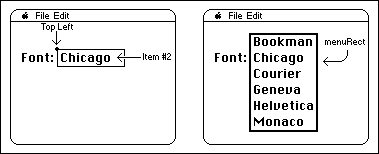
The hitPt parameter, though, is NOT a Point. Instead, this parameter is used to pass the top left of the item, passing the top coordinate and then the left coordinate. This is the opposite order of the fields in a Point. The values can be used together as a LongInt, with left in the high word and top in the low word, or separately as two Integers.
A more correct Pascal interface to the MDEF (for the mPopupMsg only) would be:
PROCEDURE MyMDEF(message: Integer; theMenu: MenuHandle; VAR menuRect:
Rect; top, left: Integer; VAR whichItem: Integer);
NOTE: The MPW interface files incorrectly list mPopupMsg as 4; it should be 3.
173: PrGeneral Bug
#173: PrGeneral Bug
See also: The Printing Manager
Technical Note #128 — PrGeneral
Written by: Scott “ZZ” Zimmerman November 2, 1987
Updated: March 1, 1988
_______________________________________________________________________________
This technical note documents a bug in the implementation of the PrGeneral procedure in the LaserWriter driver version 4.0. The bug has to do with the format of the information returned by the GetRslData opcode. This technical note will also describe a workaround for the problem.
_______________________________________________________________________________
One of the opcodes supported by the PrGeneral procedure (Technical Note #128) is named GetRslData. The GetRslData operation initializes a resolution record that is of the following form:
TRslRg = RECORD {used in TGetRslBlk}
iMin: Integer; {0 if printer only supports discrete resolutions}
iMax: Integer; {0 if printer only supports discrete resolutions}
END;
TRslRec = RECORD {used in TGetRslBlk}
iXRsl: Integer; {a discrete, physical X resolution}
iYRsl: Integer; {a discrete, physical Y resolution}
END;
TGetRslBlk = RECORD {data block for GetRslData call}
iOpCode: Integer; {input; = getRslDataOp}
iError: Integer; {output}
lReserved: LongInt; {reserved for future use}
iRgType: Integer; {output; this declaration is for RgType1}
XRslRg: TRslRg; {output; range of X resolutions}
YRslRg: TRslRg; {output; range of Y resolutions}
iRslRecCnt: Integer; {output; how many RslRecs follow}
rgRslRec: ARRAY[1..27]
OF TRslRec; {output; number used depends on printer type}
END;
The LaserWriter 4.0 implementation has a bug that affects the YRslRg and XRslRg fields of the TGetRslBlk record. The correct values for the fields are:
TGetRslBlk.XRslRg.iMin := 25;
TGetRslBlk.XRslRg.iMax := 1500;
TGetRslBlk.YRslRg.iMin := 25;
TGetRslBlk.YRslRg.iMax := 1500;
Unfortunately, the information returned by the LaserWriter 4.0 version of PrGeneral is:
TGetRslBlk.XRslRg.iMin := 25;
TGetRslBlk.XRslRg.iMax := 25;
TGetRslBlk.YRslRg.iMin := 1500;
TGetRslBlk.YRslRg.iMax := 1500;
The recommended workaround for this problem is to use the PrDrvrVers function
(Inside Macintosh II-163) to find out which version of the print driver you are using. If you are using 4.0, modify the resolution data before using it. The following code fragment illustrates this workaround:
PROCEDURE CheckRslRecord(VAR theRslRecord: TGetRslBlk);
CONST
BogusDriver = 40;
BEGIN
IF PrDrvrVers = BogusDriver THEN BEGIN
theRslRecord.XRslRg.iMax := theRslRecord.YRslRg.iMax;
theRslRecord.YRslRg.iMin := theRslRecord.XRslRg.iMin;
END;
END;
When the bug is fixed in a future version of the driver, the CheckRslRecord procedure will no longer have any effect on the resolution record. This will make sure your application gets the correct resolution data no matter which version of the driver is being used.
174: Accessing the Script Manager Print Action Routine
#174: Accessing the Script Manager Print Action Routine
See also: The Script Manager
Written by: Mark Davis November 2, 1987
Updated: March 1, 1988
_______________________________________________________________________________
This technical note describes how Print Drivers can access the Script Manager Print Action routine to print unconventional text, such as Japanese or Arabic.
_______________________________________________________________________________
General Notes
Scripts such as Japanese or Arabic modify the normal QuickDraw text handling in order to represent text properly. On the screen, this is done by trapping StdText and StdTxtMeasure, and transforming the text before printing. For example, for Hebrew or Arabic the text might be reversed, since text normally goes from right to left in those scripts.
Print drivers require slightly different handling, for two reasons:
1. A print driver might not call the standard QuickDraw procedures. For example,
the LaserWriter writes directly in PostScript instead.
2. A print driver might need to format the text, for accurate line-layout. In
this case, the text needs to be transformed before the driver performs line-
layout. If the driver is spooling the text, and will replay the text a
second time, the text cannot be transformed a second time, since that would
ruin the appearance.
For example, the ImageWriter driver calls QuickDraw procedures twice, once to spool and once to unwind the spooling. The text must be transformed when spooling, so that line layout can be done, but when unwinding, the transformation must be turned off completely.
Note that some drivers, such as the LaserWriter, use QuickDraw re-entrantly: the application program calls a QuickDraw routine, which is directed to the driver’s grafProcs, which in turn call QuickDraw internally to put up status messages on the screen. The Print Action procedure handles the text properly so that the text transformations are enabled during the re-entrant calls, so that the status messages will be properly formatted.
When To Call the Print Action Routine
The Script Manager Print Action routine allows the print driver to be independent of the particular scripts being used. The printing driver should call this routine whenever it changes the grafProcs in the printing grafPort. The Print Action routine will then substitute grafProcs of its own in the grafProcs record, saving the original routine addresses.
The Print Action routine will actually call a Print Action routine for each script system that is currently installed. Each of the script Print Action routines will do the appropriate tasks for its system.
Calling the Print Action Routine
To call the Print Action routine, the driver should use the following code:
intlGlobals equ $ba0 ; international globals
printActionOff equ $16 ; offset to PrintAction proc ptr
; get procedure pointer to call
tst.w Rom85 ; on a Macintosh + or better?
blt.s @PrintActionDone ; no, skip
move.l intlGlobals,d2 ; get international globals
ble.s @PrintActionDone ; not there, skip
move.l d2,a0 ; in address register
move.l printActionOff(a0),d2 ; get print action address
beq.s @PrintActionDone ; not there, skip
move.l d2,a0 ; in address register
; set up arguments to call
move.l <myPort>,d0 ; pass the port
move.w <myVerb>,d1 ; pass the verb
jsr (a0) ; call the procedure
@PrintActionDone
Print Action Routine Verbs
There are currently three verbs to pass to the Print Action routine.
paUnwindText equ –1
paSpoolText equ 1
paNoQuickDraw equ 3
Use the paUnwind verb to ensure that the text is not transformed before your StdText procedure receives the text. This verb is used when playing back stored text that has already been transformed.
The other two verbs (paNoQuickDraw and paSpoolText) are used to ensure that the text is transformed before your StdText procedure receives the text. The paSpoolText verb is used when your driver will use QuickDraw to image the text in the printing grafPort. The paNoQuickDraw verb is used when the text is not drawn into the printing port by going through QuickDraw (e.g. the LaserWriter). In that case some languages (e.g. Japanese) which use an extended font structure may need to recast the text calls as CopyBits calls.
As mentioned above, some applications may call QuickDraw from within the driver, as when a status window is updated. During any StdTxtMeasure calls in the driver during the application’s call to StdText, the port is checked against the printer port. If they match, then the text is not transformed. Otherwise, the text is transformed.
The solutions adopted by the Print Action routine assume that the print driver does not measure or draw text except within calls to StdTxtMeasure or StdText. If your driver does text buffering (as for line layout), make sure that any measurements are performed within these two calls. For example, you might buffer both the text and its screen width as measured by QuickDraw.
175: SetLineWidth Revealed
#175: SetLineWidth Revealed
See also: LaserWriter Reference Manual
PostScript Language Reference Manual
PostScript Language Tutorial and Cookbook
Written by: Scott “ZZ” Zimmerman November 2, 1987
Updated: March 1, 1988
_______________________________________________________________________________
This technical note describes the internal implementation, and correct method of using, the SetLineWidth Picture Comment.
_______________________________________________________________________________
The SetLineWidth picture comment provides a way of accessing PostScript’s
'setlinewidth' operator. Since the LaserWriter resolution is roughly four times that of the Macintosh screen, fractional line widths can be printed. The SetLineWidth PicComment provides a way for applications to access these fractional line widths through PostScript, without having to use floating point numbers.
First of all, the LaserWriter has an internal state that is stored in a number of PostScript variables. For more information on PostScript variables, see the PostScript Language Reference Manual. Some operations performed on the LaserWriter cause the values of these variables to change. One of these variables contains the width of the printer’s pen. The SetLineWidth picture comment works by changing the value of this variable.
Before we look at what the SetLineWidth comment does, let’s look at the argument passed to the comment. The argument is represented as a QuickDraw Point, however it is interpreted by the LaserWriter as a fraction. The LaserWriter interprets a point(h,v) to be a real number whose value is (v / h). This means that a point whose value is h=2, v=1, will be converted to 0.5 before being used by the LaserWriter. If you wanted to pass a value of 0.25, you would pass a point whose value is h=4, v=1. For 1.25, pass a point, h=4,
v= 5.
In addition to the pen width variable, there is a variable that is used for scaling the pen’s width. This variable, named pnm for PeN Multiplier, contains a real number which is applied to the pen width. The default value of pnm is 1.0, which causes no scaling of the line width.
Whenever the SetLineWidth PicComment is sent to the LaserWriter, the current value of pnm is replaced by the value passed to the PicComment. The current pen size is then scaled by the new value of pnm. The following example will display four lines of different sizes. It is meant to illustrate the interaction between the QuickDraw PenSize procedure and the SetLineWidth PicComment.
TYPE
widthHdl = ^widthPtr;
widthPtr = ^widthPt;
widthPt = Point;
VAR
theWidth: widthHdl;
BEGIN
(* Initialize the print manager as per Inside Macintosh II-155. *)
At this point, it is assumed that PrPageOpen has been called, and the print manager is ready to accept data.
The first thing we do is set the scaling factor to 1.0. This way, no scaling will be performed when we call PenSize.
theWidth := widthHdl(NewHandle(SizeOf(widthPt)));
(*Real programs do error checking here... *)
SetPt(theWidth^^, 1, 1);
PicComment(SetLineWidth, SIZEOF(widthPt), Handle(theWidth));
Here we call PenSize. Because the pnm has been set to 1.0, the pen size(1,1) times the multiplier (1.0) yields 1,1.
PenSize(1, 1);
MoveTo(50, 100);
LineTo(500, 100);
MoveTo(50, 125);
DrawString('1 point thickness.');
Now we will use the SetLineWidth PicComment to change the pen size. Note that when we change the scaling factor, the pen size changes as well.
SetPt(theWidth^^, 1, 5);
PicComment(SetLineWidth, SIZEOF(widthPt), Handle(theWidth));
MoveTo(50, 200);
LineTo(500, 200);
MoveTo(50, 225);
DrawString('5.0 times 1 point pen size = 5 point thickness.');
If any calls to PenSize are made at this point, the new pen size will be scaled by 5.0. This is because the SetLineWidth PicComment is still in effect. We will now send a SetLineWidth PicComment to revert the scaling factor back to 1.0.
SetPt(theWidth^^, 5, 1);
PicComment(SetLineWidth, SIZEOF(widthPt), Handle(theWidth));
MoveTo(50, 300);
LineTo(500,300);
MoveTo(50, 325);
DrawString('0.2 times 5 point pen size = 1 point thickness.');
Since the scaling is once again 1.0, PenSize calls at this point will not be scaled. Here we explicitly set the scaling factor to 1.0 before changing the pen size. This makes it easier to see what scaling will be applied to the next call to PenSize.
SetPt(theWidth^^, 1, 1);
PicComment(SetLineWidth, SIZEOF(widthPt), Handle(theWidth));
PenSize(1, 1);
MoveTo(50, 400);
LineTo(500,400);
MoveTo(50, 425);
DrawString('1.0 times 1 point pen size = 1 point thickness');
(* Dispose of the handle when you are through with it! *)
DisposHandle(Handle(theWidth));
When printed, the above example will produce the following:
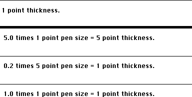
To summarize, there are four things to remember when using the SetLineWidth PicComment:
1. The argument to the SetLineWidth PicComment is specified as a point, though
it is actually interpreted by the LaserWriter as a real number. The point
value is specified as h,v, and the LaserWriter interprets the value
as v / h.
2. The SetLineWidth PicComment affects both the height and width of the pen,
even though the name suggests otherwise.
3. When you send the SetLineWidth PicComment, the current pen size will be
scaled. Any drawing that is done after the PicComment is set, will be done
with the scaled pen size.
4. When you call the QuickDraw PenSize procedure, the pen size will be scaled
after it has been set. For example, if your scaling factor is 0.5, and you
set the pen size to 2,2, the actual pen size will be 1,1. If you don’t want
the scaling to occur, make sure to send a SetLineWidth PicComment, with the
point argument set to 1,1. The next call to PenSize will then be scaled by
1.0, which will have no effect.
176: Macintosh Memory Configurations
#176: Macintosh Memory Configurations
Revised by: Jack Robson, Dennis Hescox, Mark Baumwell, November 1991
Craig Prouse
Written by: Cameron Birse November 1987
**Please note that the October 1991 version of this tech note contained some erroneous information. If you have a copy of the October 1991 note, please discard it and use this version instead.**
This Technical Note describes the different possible memory configurations of all models of the Macintosh family that use Single In-line Memory Modules (SIMMs) as well as the non-SIMM memory upgrade options of the Macintosh Portable and Macintosh Classic. (Special thanks to Brian Howard for the Macintosh Plus and original SE drawings, and for the inspiration for the other drawings.) This Note also describes the obstacles to using four megabit (Mbit) DRAM SIMMs in Apple’s Macintosh products to date.
Changes since December 1990: Added specifications for new CPUs and additional 4 Mbit DRAM information.
_______________________________________________________________________________
Developer Technical Support receives numerous questions about the many different possible configurations of RAM on the different Macintoshes, so we’ll attempt to answer these questions in this Technical Note, as well as to provide a showcase for some outstanding MacPlus and SE artwork by Apple engineer Brian Howard. Interested readers should refer to the Guide to the Macintosh Family Hardware, Second Edition, which contains much more detail on the memory configurations and specifications for all Macintosh models released to date. For information on the newer Macintosh models not mentioned in the Guide to the Macintosh Family Hardware, please refer to the companion developer notes for those particular products.
RAM Configuration chart
Caveat: The upper physical RAM totals expressed here assume the use and compatibility of 4 and 16MB SIMMs. Since Apple has not yet thoroughly tested SIMMs larger than 1MB with our Macintosh line, these upper limits should be considered theoretical. At this point Apple cannot claim that these SIMM sizes will work, nor can we guarantee any information in this tech note that pertains to the use of 4 and 16MB SIMMs (read: use them at your own risk).
All numbers are expressed in terms of megabytes (MB) unless otherwise noted.
Permanent # of Allowable Physical RAM Req. TN
RAM SIMM slots SIMM sizes Totals Speed Page
------------------------------------------------------------------------------
Plus 0 4 256K,1 512K,1,2,2.5,4 150ns 3,4
SE 0 4 256K,1 512K,1,2,2.5,4 150ns 3,5,6
Classic 1 2* 256K,1 1,2,2.5,4 150ns 3,8
Classic II‡ 2 2 1,2,4 2,4,6,10 100ns 17
SE/30 0 8 256K,1,4,16 1,2,4,5,8…128† 120ns 7,9
II 0 8 256K,1,4,16†† 1,2,4,5,8…68† 120ns 7,9
IIx 0 8 256K,1,4,16 1,2,4,5,8…128† 120ns 7,9
IIcx 0 8 256K,1,4,16 1,2,4,5,8…128† 120ns 7,12
LC‡ 2 2 1,2,4,16 2,4,6,10 100ns 8,10
IIsi‡ 1 4 256K,512K, 1,2,3,5,9,17…65 100ns 8,10
1,2,4,16
IIci‡ 0 8 256K,1,4,16 1,2,4,5,8,16,
10,17,20,32…128 80ns 10,12
Portable 1 0** n/a 1,2,3,4,5,6,7,8,9*** 100ns 11,12
Portable 1 0** n/a 1,2,3,4,5,6,7,8*** 100ns
(backlit)
IIfx‡ 0 8 1,4,16 4,8,16,20,32…128 80ns 13,14
Quadra 700‡ 4 4 1,4,16 4,8,20…128 80ns 16
Quadra 900‡ 0 16 1,4,16 4,8,12,16,20,
24,28,32,36,
40,48,52,64…256 80ns 15
PowerBook 100 2 0** n/a 2,4,6,8 n/a 19
PowerBook 140‡ 2 0** n/a 2,4,6,8 n/a 18
PowerBook 170‡ 2 0** n/a 2,4,6,8 n/a 18
*The Macintosh Classic has 1MB of RAM soldered onto the motherboard. Additional RAM can be added by using an expansion card. Apple's Macintosh Classic 1MB Memory Expansion Card has 1MB of additional RAM and two SIMM connectors.
**The Macintosh Portable and the PowerBook computers allow you to add RAM by using an expansion card. These expansion cards can have from 1MB to 4MB of memory for the Portable, 1MB to 3MB for the backlit Portable, and 2, 4, or 6 MB for the PowerBook line.
***If the PDS slot is used for other peripherals, then the maximum amount of RAM (by using a RAM expansion card) is 5MB for the Macintosh Portable, and 4MB for the backlit Macintosh Portable.
‡These systems have ROMs that are capable of 32-bit addressing (when using the appropriate system software, such as System 7 or A/UX).
†The Mac II, IIx, IIcx, and SE/30 can benefit from larger SIMM sizes and address more than 8MB of RAM by using either A/UX or the 32-bit addressing software solution called MODE32™ in conjunction with System 7. This will allow you to address up to 128MB on the IIx, IIcx, and SE/30, and up to 68MB on the Mac II (four 1MB SIMMs in Bank A, four 16MB SIMMs in Bank B). If you use SIMMs larger than 1MB on the Mac II or IIx, you must have a PMMU and special SIMMs with PAL™ logic on them. Please refer to pages 7 and 20-22 of this Tech Note for more information on these SIMMs. MODE32™, by Connectix, has been made available at no charge to all Apple customers. For more information about MODE32™, please contact Apple at 1-800-776-2333.
††SIMMs greater than 1 MB can only be in SIMM Bank B. Please refer to Page 7 for more Mac II information.
Warning: Because the video monitor is built in, there are dangerous voltages inside the cases of the Macintosh Plus, SE, Classic, Classic II and SE/30 computers. The video tube and video circuitry may hold dangerous charges long after the computer’s power is turned off. Opening the case of these computers requires special tools and may invalidate your warranty. Installation of RAM in the SIMM sockets in these computers should be done by qualified service personnel only.
Macintosh Plus
The Macintosh Plus has the following possible configurations (see Figure 1):
512K, using two 256 Kbit SIMMs
1 MB, using four 256 Kbit SIMMs
2 MB, using two 1 Mbit SIMMs
2.5 MB, using two 1 Mbit SIMMs and two 256 Kbit SIMMs
4MB, using four 1 Mbit SIMMs
It is important to place the SIMMs in the correct location when using a combination of SIMM sizes, as in the 2.5 MB example, and to make sure the right resistors are cut. Refer to Figure 1 for the correct location of the SIMMs and size resistors.
Macintosh SE
The Macintosh SE configurations (the original motherboard as well as the revised motherboard with a memory jumper selector) are the same as the Macintosh Plus, except physical locations on the motherboard are different. In addition, memory configurations with only two SIMMs (e.g., 512K and 2 MB) use slots 3 and 4 on the revised SE motherboard instead of slots 1 and 2 like the original motherboard and Macintosh Plus. Refer to Figures 2 and 3 for the correct locations and settings.
Macintosh Classic
The Macintosh Classic has the following possible configurations (see Figure 4).
1 MB, using eight 128 Kbit DRAMs soldered to the motherboard
2 MB, using the memory expansion card and setting the jumper to “SIMM NOT INSTALLED”
2.5 MB, using two 256 Kbit SIMMs on the memory expansion card and setting the jumper to “SIMM INSTALLED”
4 MB, using two 1 Mbit SIMMs on the memory expansion card and setting the jumper to “SIMM INSTALLED”
When adding SIMMs to the memory expansion card, use either two 256 Kbit or two 1 Mbit parts rated at 120 ns or faster.
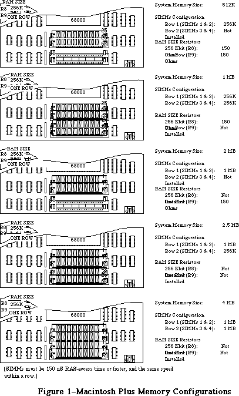
Figure 1 Macintosh Plus Memory Configuration
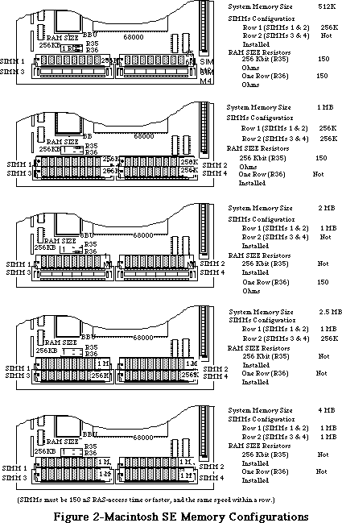
Figure 2 Macintosh SE Memory Configuration
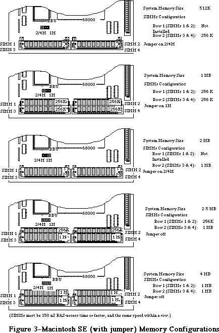
Figure 3 Macintosh SE (with jumper) Memory Configuration
Macintosh SE/30, II, IIx, and IIcx
Since these machines use a 32-bit data bus with eight-bit SIMMs, you must always upgrade memory in four SIMM chunks. The eight SIMM connectors are divided into two banks of four SIMM slots, Bank A and Bank B.
On the Macintosh SE/30, Bank A is located next to the ROM SIMM while Bank B is next to the 68882 co-processor. On the Macintosh II and IIx, Bank A is the bank closest to the edge of the board, while on the Macintosh IIcx, Bank A is the bank closest to the disk drives and power supply. Refer to Figure 5 for the proper locations of Banks A and B on the SE/30, II, and IIx, and refer to Figure 6 for the proper locations on the IIcx.
Unlike the Macintosh Plus and the Macintosh SE, the Mac II and IIx have no resistors to cut and no jumpers to set; you need only install the SIMMS in the correct banks and you’ll be up and running. You can implement the following configurations:
1MB, using four 256 Kbit SIMMs in Bank A
2MB, using eight 256 Kbit SIMMs in Banks A and B
4MB, using four 1 Mbit SIMMs in Bank A
5MB, using four 1 Mbit SIMMs in Bank A and four 256 Kbit SIMMs in Bank B
8MB, using eight 1 Mbit SIMMs in Banks A and B
>8MB: see the 32-bit addressing information below
Again, it is important to make sure the right size SIMMs are in the right Bank; when you are using a combination of SIMMs, the larger SIMMs (in terms of Mbits) must typically be in Bank A (see the exception below). When you are using only four SIMMs, they must be in Bank A as well.
32-bit addressing with the Macintosh SE/30, II, IIx, and IIcx
The Mac SE/30, II, IIx, and IIcx ROMs are not capable of 32-bit addressing. These Macintoshes can overcome this limitation, however, by using the appropriate system software. A/UX is a 32-bit operating system, as is System 7 when used in conjunction with MODE32™ or when used on a Macintosh with 32-bit clean ROMs.
To have more than 8MB of RAM in a Mac II or IIx, special 120ns PAL™ SIMMs are required. These SIMMs incorporate PAL™ logic chips that overcome problems caused by the refresh logic on the Mac II and IIx. In addition, a PMMU is required on the Mac II. Please refer to the end of this Tech Note (4MBit SIMMs in Revolt) for more information on this subject.
Due to an undocumented feature in the ROM firmware shipped with the original Macintosh II, a Macintosh II with original ROMs is limited to using SIMMs no larger than 1MB in Bank A. Large SIMMs can only be put in Bank B (i.e. 4 and 16MB SIMMs). Remember that if Bank B is to be used at all, Bank A must be populated first. As a result of this limitation, the largest memory configuration on an unmodified Mac II using 1MB SIMMs in Bank A and 4MB SIMMs in Bank B is 20MB. This problem is avoided if you've installed the SuperDrive upgrade kit, which includes a set of Mac IIx ROMs. The Macintosh IIx ROMs can handle 4 MB SIMMs, and expect the presence of a SWIM chip in place of the old IWM.
The theoretical maximum memory that a Macintosh SE/30, IIx, IIcx (and II with IIx ROMs) can address is 128MB using 16MB SIMMs.
Please remember that the use of large SIMM sizes with the Macintosh hardware line has not yet been tested thoroughly. It is mentioned here for your consideration and should be considered theoretical until we have been able to further test all of these possibile configurations.
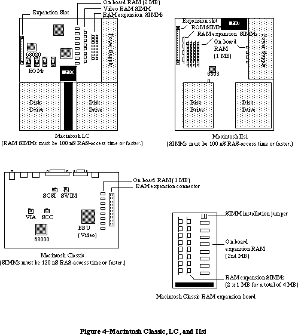
Figure 4 Macintosh Classic, LC and IIsi Memory Configuration
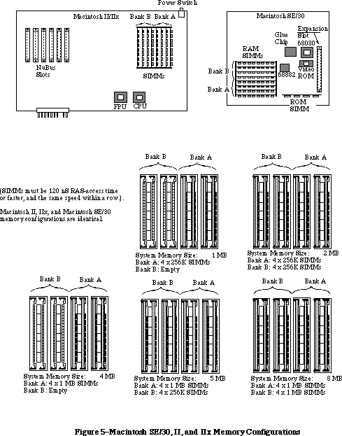
Figure 5 Macintosh SE/30, II and IIx Memory Configuration
Macintosh LC
The Macintosh LC uses a 16-bit data bus with 8-bit SIMMs, so upgrades must always be performed two SIMMs at a time. The LC has two SIMM connectors which are used as a single additional RAM bank (see Figure 4) in addition to the 2 MB already soldered to the motherboard. The following memory configurations can be implemented by installing SIMM pairs in this additional bank:
2 MB, using four 1 Mbit x 4 DRAM soldered to the motherboard
4 MB, using two 1 Mbit SIMMs in the SIMM connectors
6 MB, using two 2 Mbit SIMMs in the SIMM connectors
10 MB, using two 4 Mbit SIMMs in the SIMM connectors
The Macintosh LC requires 100 ns or faster SIMMs.
Macintosh IIsi
The Macintosh IIsi is similar to the SE/30, II, IIx, and IIcx in that it uses a 32-bit data bus with 8-bit SIMMs; you must always upgrade memory in four SIMM chunks. The IIsi differs in that it only has one SIMM bank instead of two (see Figure 4).
If future 16 Mbit DRAMs are compatible with the current refresh frequency, then the IIsi will support 16 Mbit SIMMs, enabling a RAM configuration of 65 MBs (4 x 16 MB + 1 MB). The IIsi requires 100 ns or faster SIMMs.
Macintosh IIci
The Macintosh IIci motherboard layout is somewhat different from the IIcx, but the location of the RAM SIMMs is unchanged. Bank A is still the bank closest to the disk drives. Refer to Figure 6 for the proper locations of Banks A and B on the IIci.
The IIci has a much-improved RAM interface and allows a great deal more freedom when installing SIMMs. Banks A and B are interchangeable, meaning that when mixing two sizes of RAM, the larger SIMMs do not necessarily have to go in Bank A. In fact, for best performance when using on-board video, Apple recommends that the smaller SIMMs be installed in Bank A. Note, however, that if on-board video is used, then RAM must be present in Bank A.
The IIci requires that SIMMs be 80 ns RAS-access time or faster and the same speed within a row. You can implement the following memory configurations with 256K and 1MB SIMMs:
1 MB using four 256 Kbit SIMMs in Bank A or in Bank B
2 MB using eight 256 Kbit SIMMs in Banks A and B
4 MB using four 1 Mbit SIMMs in Bank A or in Bank B
5 MB using four 256 Kbit SIMMs in Bank A and four 1 Mbit SIMMs in Bank B
5 MB using four 1 MBit SIMMs in Bank A and four 256 Kbit SIMMs in Bank A
8 MB using eight 1 Mbit SIMMs in Banks A and B
The 1 MB and 4 MB configurations using only Bank B are not compatible with on-board video, since Bank A must contain memory when using on-board video. The first 5 MB configuration (with 256 Kbit SIMMs in Bank A) is recommended for 5 MB configurations using on-board video.
Parity RAM
Some specially-ordered versions of the Macintosh IIci are equipped with a PGC chip and support parity for RAM error detection. These machines require parity RAM. SIMMs for these machines are nine bits wide instead of eight, so there is generally an extra RAM IC on the SIMM. There is no difference in the installation of 256K x 9 or 1M x 9 SIMMs.
Macintosh Portable
Memory expansion on the Macintosh Portable is different from other members of the Macintosh family since the Portable uses memory expansion cards in place of SIMMs. The base Portable is equipped with 1 MB of RAM on the motherboard and has one RAM expansion card slot. Apple currently supplies a 1 MB memory expansion kit which takes the Portable to 2 MB total. Apple and third-party developers may produce higher capacity expansion boards (2 MB to 8 MB) in the future.
Since the Portable has only one RAM expansion slot, you may use only one memory expansion board at a time. This limit means that a 1 MB expansion board would have to be completely replaced by a higher capacity board when it became available.
Total RAM for the Portable will always be 1 MB plus the size of your one RAM expansion board (if installed). Refer to Figure 6 for the location of the RAM expansion slot.
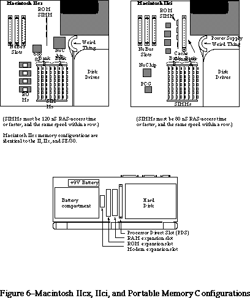
Figure 6 Macintosh IIcx, IIci and Portable Memory Configuration
Macintosh IIfx
The Macintosh IIfx motherboard layout has its SIMMs located in the same general area as the IIx, but they are oriented transversely. Bank A is the bank closest to the rear of the machine; bank B is closest to the main processor. Refer to Figure 7 for the proper memory bank locations.
The IIfx has a RAM SIMM interface similar to that of the IIcx, et al: when you are using a combination of SIMMs, the larger SIMMs (in terms of Mbits) must be in Bank A. When you are using only four SIMMs, they must be in Bank A as well. The description in the Guide to the Macintosh Family Hardware, Second Edition) inaccurately states the larger SIMMs can be placed in either bank.
The IIfx requires that SIMMs be 80 ns RAS-access time or faster and the same speed within a row. You can implement the following memory configurations with 1 and 4MB SIMMs (256K address-depth SIMMs are not supported):
4 MB using four 1 Mbit SIMMs in Bank A
8 MB using eight 1 Mbit SIMMs in Banks A and B
16 MB using four 4 Mbit SIMMs in Bank A
20 MB using four 4 Mbit SIMMs in Banks A and four 1 Mbit SIMMs in Bank B
32 MB using eight 4 Mbit SIMMs in Banks A and B
Parity RAM
Parity RAM requirements are as follows: if using 1 MB or 4 MB SIMMs, the RAM speed must be 60 ns. However, the parity circuit programmable array that goes on the motherboard as well as the parity PALs that go on the SIMMs are proprietary to Apple—their equations are not expected to be released to developers. Because of this proprietary design, Apple does not recommend third-party development of parity products.
RAM SIMM drawings
The IIfx has 64-pin SIMMs, which are different from previous Macintosh models. Developers can request mechanical drawings and electrical specifications of the IIfx RAM SIMM modules from DTS. Please send the request with a mailing address and include the words “IIfx SIMM information request” in the title of the electronic mail request or letter to facilitate handling.
Warning: To avoid degradation of signal quality, it is critical to adhere to the strict timing parameters of the IIfx and to use a good layout which takes high-speed circuits into account.
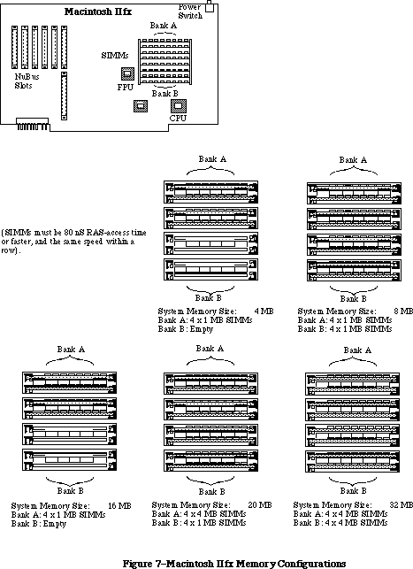
Figure 7 Macintosh IIfx Memory Configuration
Mac Quadra 900
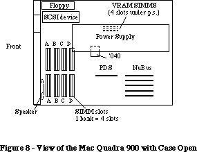
Figure 8 View of the Mac Quadra 900 with Case Open
The Memory Control Unit (MCU) controls four banks of dynamic RAM, for a total of 16 SIMM slots. Each bank accepts standard 80 ns SIMMs containing 1 MB, 4 MB, and perhaps 16 MB SIMMs (256K and 2 MB are not supported), giving total memory sizes from 4 MB to 16 MB for each bank (64 MB if 16 MB SIMMs work). Therefore, the Macintosh Quadra 900 could have a total of 64 MB when using currently available 4MB SIMMs. 16 MB SIMMs have not been thoroughly tested on the Quadra 900 and therefore cannot be listed as a possible configuration. The Macintosh Quadra 900 can also use 60ns SIMMs, but the MCU is programmed for 80ns DRAM, so a 60ns SIMM wouldn’t improve the speed. If one slot in a given bank is filled, then all slots in the bank must be populated. It is not possible to mix the speed of RAM, even between banks.
______________________________________________________________________________
Note: When large amounts of DRAM are installed, the memory check upon startup is lengthy and can cause users to think that the machine isn’t functioning. There is no software indication that the machine is running memory checks.
______________________________________________________________________________
Mac Quadra 700
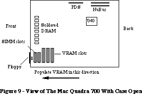
Figure 9 View of The Mac Quadra 700 With Case Open
The Memory Control Unit (MCU) IC controls two banks of dynamic RAM on the Mac Quadra 700. The first bank is soldered down at the factory, and fixed at 4 MB. The additional bank accepts standard 80 ns SIMMs containing 1 MB, 4 MB, and perhaps 16 MB (256K and 2 MB are not supported), giving total memory sizes from 4 MB to 16 MB for each bank. Therefore the Macintosh Quadra 700 could have a total of 20 MB when using SIMMs that are currently available. 16 MB SIMMs have not been tested on the Quadra 700 and therefore cannot be listed as a possible configuration. The Macintosh Quadra 700 can also use 60ns SIMMs, but the MCU is programmed for 80ns DRAM, so a 60ns SIMM wouldn’t improve the speed. If one slot in a given bank is filled, then all slots in the bank must be populated. It is not possible to mix the speed of RAM, even between banks.
______________________________________________________________________________
Note: Due to the location of the SIMM slots on the Macintosh Quadra 700, it is unlikely that third party vendors will be able to develop 16 MB SIMMs that work on this machine. The placement of the SIMM slots (under the hard drive) is unfortunate, but necessary due to the logic board real estate.
______________________________________________________________________________
Mac Classic II
The Macintosh Classic II can support up to 10 MB of system RAM. The logic board includes 2 MB soldered and 2 SIMM sockets which can accommodate 1, 2, or 4 MB SIMMS for possible system configurations of 2, 4, 6, or 10 MB. The Classic II requires 100 ns or faster access time for SIMMs to be compatible.
Possible memory configurations:
Built-in + SIMM size x2 = Total RAM (MB)
2 0 2
2 1 4
2 2 6
2 4 10
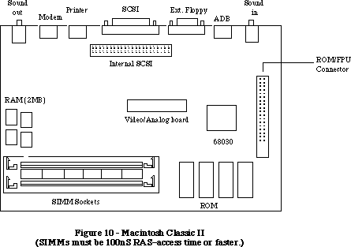
Figure 10 Macintosh Classic II
(SIMMs must be 100nS RAS-access time or faster.)
Mac PowerBook 140 and Mac PowerBook 170
The Mac PowerBook 140 and 170 ship with 2 MB of PSRAM (pseudo-static) on the daughter board. The RAM is arranged physically as four 4 Mbit chips of 512K x 8-bits each. Additionally, an expansion slot allows RAM to be expanded to a total of 8 MB. Both notebook systems use 100ns PSRAM. The Mac PowerBook 140 has 1 wait state (4 clock cycles). The Mac PowerBook 170 has 2 wait states (5 clock cycles). PSRAM needs to be refreshed, and the refresh is accomplished by circuitry in the CPU Glue Logic ASIC. The refresh requirement causes a 2% reduction in performance over SRAM. However, PSRAM uses less current in sleep mode and costs less than SRAM.
The PowerBook computers contain a 70-pin RAM expansion connector (slot) that supports RAM expansion card sizes of 2, 4, and 6 MB. Apple offers a 2 MB and 4 MB memory card.
Note: If a RAM expansion card is designed correctly, it will work in all of the PowerBook computers. The 68030-based PowerBooks have a 32-bit data bus whereas the 68HC000-based machine (the PowerBook 100) has only a 16-bit data bus. If the expansion card is designed as a 32-bit device it will only work in the PowerBook 140 and 170, but if the data lines and chip select lines are in the correct location on the card, users can use the same card in either machine without loss of performance. The separated chip select lines are necessary for the 68HC000-based machine because it can get access to only 16 bits at a time. The Macintosh PowerBook 140 and 170 do not require separated chip select lines because both have a 32-bit data bus; therefore the lines are tied back together on the computer’s main logic board.
The Apple® PowerBook RAM cards will work in all three PowerBook systems. If purchasing RAM from third party vendors, make sure it will work in the 68HC000–based portable as well.
RAM is always contiguous because only one size of RAM chip (4 Mbits) is used. As a result, the amount of memory the computer has doesn’t have to be determined by the software. The RAM array is nominally located in the system memory map between addresses $0000 0000 and $0020 0000 (up to $0080 0000 in an 8 MB system), except following a system reset or sleep cycle, at which time it is overlaid by system ROM. However, the overlay is removed following access to normal ROM space, and the RAM space is then accessible. Both RAM and ROM memory spaces provide DSACK signals to the processor even if memory is not actually installed.
RAM wait states: access to the RAM from the main processor requires 100ns PSRAM and two processor wait states (five clock cycles per RAM access). The CPU Glue Logic custom chip includes special circuitry that performs the refresh function.
Battery backup: both main and expansion RAM memories are backed up when the computer is in the sleep mode. This means that when the computer is not in use, the contents of the memory array are retained as long as the battery remains charged.
______________________________________________________________________________
Note: When the battery is removed RAM contents are lost.
Unlike the Mac PowerBook 100 and Macintosh Portable, when the battery is removed, the contents of RAM are lost. The user must shutdown the unit before replacing the battery. The backup battery in the Macintosh PowerBook 140 and 170 computers supply power only to the RTC chip (the clock).
______________________________________________________________________________
Mac PowerBook 100
The system comes with 2 megabytes of PSRAM (pseudo-static RAM) . The RAM is arranged as four 4 Mbit chips of 512 by 8 bits each. The memory chips have an access and cycle time of 100 ns. There are no processor wait states to RAM unless the requested location in the pseudo-static RAM is being refreshed.
The system RAM can be expanded via a new 70-pin RAM expansion connector. The expansion slot can be filled with card sizes of 2 MB, 4 MB, or 6 MB. The system will automatically determine the card’s memory size. These memory expansion cards can be used with the Macintosh PowerBook 140 and 170 computers.
System RAM is always powered, therefore RAM disks will be saved even after shutdown (similar to the Macintosh Portable). RAM will be maintained by three lithium batteries during a main battery exchange.
4 Mbit DRAMs in Revolt
When the Macintosh II was originally designed, Apple engineers intended for it to accept large amounts of memory in the form of 4 MB and 16 MB DRAM SIMMs. That was in 1986, when 1 Mbit DRAM was difficult to find and the higher-density chips did not yet exist. The engineers anticipated the pinouts of the yet-to-be introduced 4 MB SIMMs and provided all the necessary hardware and address multiplexing to allow installation of these parts when they became available.
Woe that Cupertino is not Camelot, James Brown is on probation, and 4 MB SIMMs do not work as advertised in most cases. This is the story of the Revolt of the 4 MB DRAM SIMMs.
Preliminary Notes
Before diving into the problem with 4 Mbit DRAMs, there is some preliminary ground which must be covered.
First, there are a couple ways to construct a 4 MB SIMM. Using old technology, it is possible to cram together 32 DRAM ICs of 1M x 1 density. Using new technology, it only takes eight 4M x 1 ICs, resulting in a much smaller, lower-power module. If a 4 MB SIMM is of the large, so-called composite type (i.e., it is constructed of thirty-two 1 Mbit ICs), then everything is fine except on the original Macintosh II. Please refer to page 7 of this Tech Note for more information on Mac II RAM.
With the FDHD SuperDrive upgrade kit installed, the Macintosh II is on equal footing with the Macintosh IIx. That is, SIMMs made exclusively of the new 4 Mbit ICs still won’t work, regardless of whether you are using a Macintosh II or IIx; therefore, for the remainder of this discussion, Macintosh II is used to refer to not only the original Macintosh II, but also the IIx.
Subsequent Macintosh models have revised ROMs which recognize 4 MB SIMMs.
The 4 Mbit Problem
DRAM ICs are now available in 4 Mbit density, but they come with a very nasty surprise. JEDEC, the committee overseeing the standardization of new solid-state devices, has added an additional built-in test mode to high-density DRAMs. The test mode is invoked by a sequence of electrical signals which was ignored by earlier-generation DRAM. The crux of the situation is this: under certain conditions, the Macintosh II unwittingly activates this new test mode and large amounts of memory become very forgetful.
More Specifically…
Those who are interested in the specific phenomenon occurring within the memory ICs should consult the detailed technical data supplied by the DRAM manufacturers. This Note only explains how the Macintosh II offends this new feature of the 4 Mbit DRAM, and hence, what might be done to work around the problem.
The Macintosh II uses /CAS-before-/RAS refresh cycles to keep RAM up-to-date on its contents. For 1 Mbit DRAM, the state of the /W control line is ignored during this type of refresh cycle. No longer. DRAM of the 4 Mbit variety goes off into test mode if /W is asserted (low, so that the RAM thinks it is write-enabled) during a /CAS-before-/RAS refresh cycle. The problem with the Macintosh II is that /W is the same signal as the MPU R/W line, and if the MPU is writing to an I/O address or a NuBus™ card concurrently with a refresh cycle, all the conditions are right for a waltz into test mode. Unfortunately, this condition is not all that unusual, since video card accesses qualify.
Consolation for SIMM manufacturers: SIMMs constructed with an on-board PAL are not necessarily Macintosh II-specific. SIMMs constructed in this manner should work without modification in any usage calling for 4 MB SIMMs (except in the unlikely event that the new test mode is required).
The Salvage Process
All is not necessarily lost, and although the situation is ugly, there is still a way to use 4 Mbit DRAM ICs to construct 4 MB SIMMs which work in the Macintosh II. A solution lies in the addition of a ninth IC to the SIMM. Programmed with suitable logic, a high-speed (-D or -E suffix) PAL™ on the SIMM itself can recognize and intercept /CAS-before-/RAS refresh cycles and set /W appropriately before any damage is done. More or less, the PAL™ becomes an intelligent buffer between the MPU read/write line and the DRAM write-enable lines. When the PAL™ senses a refresh cycle commencing, it holds /W high, ensuring that the ICs are not corrupted by the potentially dangerous processor-generated R/W signal.
What’s the Point?
You have overcome all the problems discussed in this section and have working 4 Mbit SIMMs installed in your Macintosh. You probably have at least 20 MB of RAM. What can you do with all of it? Create lots of huge 32-bit PICTs and edit them all simultaneously? Model and animate Bay Area weather patterns in Mathematica™? Yes! But, you have to use the appropriate System Software to address this memory. Also, if you're running in 32-bit addressing mode, the applications that you desire to use need to be 32-bit clean. For more information on 32-bit cleanliness and addressing, please see Tech Notes 212 and 213.
Under System 7.0, applications can finally access additional physical memory over and above 8MB. As mentioned previously in this Tech Note, the 32-bit addressing mode of System 7 requires either a Macintosh with 32-bit clean ROMs (listing is on page 2), or else the 32-bit software solution provided by the MODE32™ system extension. A/UX is an alternative which can use up to 256K of RAM on Macintoshes that support A/UX. Many manufacturers of large SIMMs also offer RAM disks. This is a volatile form of storage, but can certainly be useful for I/O intensive operations.
Other Permutations
The problem with 4 Mbit DRAM is not limited to 4 MB SIMMs. It is the 4 Mbit density of the individual RAM ICs which causes problems with certain machines. There exist 1 MB SIMMs constructed of only two 1M x 4 (4 Mbit) ICs. These do not work in a Macintosh II or IIx, any more than 4 MB SIMMs constructed of eight 4M x 1 ICs.
A few machines, namely the Macintosh Plus, Macintosh SE, and Macintosh Classic, depend on video accesses to refresh all of their DRAM. As the video circuitry access sequential locations through the video frame buffer, it simultaneously refreshes row after row of memory, eventually refreshing all 512 rows. Memory at the 4 Mbit density, however, is arranged as 1024 rows and there are not sufficient video accesses to refresh all 1024 rows. Chunks of memory simply go blank. Thus for a different reason, 4 Mbit DRAM parts are also not compatible with these older Macintosh hardware designs.
Executive Summary
Owners of the Macintosh Plus, SE, Classic, II, or IIx are all likely to have problems with any 1 MB SIMM carrying only two ICs, or any 4 MB SIMM carrying only 8 ICs. Any SIMM constructed in one of these ways likely uses 4 Mbit density DRAM ICs and does not account for problems with the 4 Mbit test mode nor the video refresh strategy of older Macintosh designs.
Further Reference:
_______________________________________________________________________________
• Inside Macintosh, Volume V-1, Compatibility Guidelines
• Guide to the Macintosh Family Hardware, Second Edition
• Macintosh IIsi, LC, and Classic Developer Notes
• Macintosh Classic II, Macintosh PowerBook Family, and Macintosh Quadra Family Developer Notes
• Macintosh Technical Notes 212 and 213
NuBus is a trademark of Texas Instruments
PAL is a trademark of Monolithic Memories, Inc.
Mathematica is a trademark of Wolfram Research, Inc.
MODE32™ is a trademark of Connectix Corporation
177: Problem with WaitNextEvent in MultiFinder 1.0
#177: Problem with WaitNextEvent in MultiFinder 1.0
See also: Technical Note #158 — Frequently Asked MultiFinder Questions
Technical Note #180 — MultiFinder Miscellanea
Written by: Jim Friedlander November 2, 1987
Updated: March 1, 1988
_______________________________________________________________________________
This Technical Note discusses a bug in WaitNextEvent in MultiFinder 1.0. This bug only occurs when WaitNextEvent is called from the background. This bug will be fixed in the next release of MultiFinder.
Change since 11/87: the bug will be fixed in Systems with versions greater than $04FF.
_______________________________________________________________________________
In MultiFinder 1.0, applications that use WaitNextEvent:
FUNCTION WaitNextEvent(mask: INTEGER; VAR event: EventRecord;
sleep: LONGINT; mouseRgn: RgnHandle): BOOLEAN;
pascal Boolean WaitNextEvent(mask,event,sleep,mouseRgn)
unsigned short mask;
EventRecord *event;
unsigned long sleep;
RgnHandle mouseRgn;
should not call WaitNextEvent from the background with a value of sleep that is greater than 50. This value has been determined empirically for a Macintosh II; larger values can be used on the Macintosh Plus and the Macintosh SE. If an application uses a large value of sleep when running in the background, MultiFinder 1.0 will hang under the following circumstances:
• The application that is calling WaitNextEvent with a large sleep value has
been put in the background.
• That application becomes the foreground application when another application
(including the desk accessory handler) quits.
If you use a value of sleep that is small enough, this problem will not occur. If you use an algorithm to calculate sleep, make sure that the maximum is clipped to 50.
This problem will be fixed in the next release of MultiFinder. You can call SysEnvirons to test for the system version number. This bug will not happen when the System version is greater than $04FF.
178: Modifying the Standard String Comparison
#178: Modifying the Standard String Comparison
See also: The International Utilities
Written by: Mark Davis November 2, 1987
Priscilla Oppenheimer
Updated: March 1, 1988
_______________________________________________________________________________
This technical note describes how to modify the standard string comparison by constructing an itl2 resource. Developers may want to modify the standard string comparison if Apple’s comparison doesn’t meet their needs or if Apple has not written a string comparison routine for the language that concerns them.
_______________________________________________________________________________
General Structure
The itl2 resource contains a number of procedures that are used for accurate comparison of text by the International Utilities Package. Refer to Inside Macintosh, volume V for an explanation of the algorithm used. The default itl2 for standard English text, which does no special processing, has the following form:
; normal Include/Load statements
Include 'hd:mpw:aincludes:ScriptEqu.a'
Print On,NoMDir
String AsIs
;------------------------------------------------------------------------
; dispatch table at the front of the code.
;------------------------------------------------------------------------
Intl1 Proc
With IUSortFrame,IUStrData
HookDispatch
dc.w ReturnEQ-HookDispatch ; InitProc = 0
dc.w ReturnEQ-HookDispatch ; FetchHook = 2
dc.w ReturnEQ-HookDispatch ; VernierHook = 4
dc.w ReturnEQ-HookDispatch ; ProjectHook = 6
dc.w ReturnEQ-HookDispatch ; ReservedHook1 = 8
dc.w ReturnEQ-HookDispatch ; ReservedHook2 = 10
;------------------------------------------------------------------------
; Some common exit points
;------------------------------------------------------------------------
ReturnNE
tst.w MinusOne ; set cc NE
rts
ReturnEQ
cmp.w d0,d0 ; set cc EQ
rts
;------------------------------------------------------------------------
EndWith
EndWith
End
If modifications need to be made to the comparison process, then one or more of the dispatches will be modified to point to different routines:
dc.w InitProc-HookDispatch ; InitProc = 0
dc.w FetchProc-HookDispatch ; FetchHook = 2
dc.w VernierProc-HookDispatch ; VernierHook = 4
dc.w ProjectProc-HookDispatch ; ProjectHook = 6
There are a number of different changes that can be made to the comparison routines. Some of the common modifications include:
1. Comparing two bytes as one character
Yugoslavian “l” < “lj” < “m”; Japanese… [InitProc, FetchProc]
2. Comparing characters in different order
Norwegian “z” < “å” [ProjectProc]
3. Comparing one character as two
German “ä” ≈ “ae” [ProjectProc]
4. Ignoring characters unless strings are otherwise equal:
“blackbird” < “black-bird” < “blackbirds” [ProjectProc]
5. Changing the secondary ordering
Bibliographic “a” < “A” [VernierProc]
The comparison hook procedures are all assembly language based, with arguments described below. Since the routines may be called once per character in both strings, the routines should be as fast as possible.
The condition codes are used to return information about the status of the hook routine. Typically the normal processing of characters will be skipped if the CCR is set to NE, so the default return should always have EQ set. Each of these routines has access to the stack frame (A6) used in the comparison routine, which has the following form:
IUSortFrame Record {oldA6},Decrement
result ds.w 1
argTop equ *
aStrText ds.l 1
bStrText ds.l 1
aStrLen ds.w 1
bStrLen ds.w 1
argSize equ argTop-*
return ds.l 1
oldA6 ds.l 1
aInfo ds IUStrData
bInfo ds IUStrData
wantMag ds.b 1 ; 1-MagStrig 0-MagIdString.
weakEq ds.b 1 ; Signals at most weak equality
msLock ds.b 1 ; high byte of master ptr.
weakMag ds.b 1 ; -1 weak, 1 strong compare
supStorage ds.b 18 ; extra storage.
localSize equ * ; frame size.
EndR
There are three fields in this frame that are of interest for altering text comparison. The supStorage field is an area reserved for use by the comparison hook procedures as they see fit. The aInfo and bInfo records contain information about the current byte positions in the two compared strings A and B, and information about the status of current characters in those string. The IUStrData record has the following form:
IUStrData Record 0
curChar ds.w 1 ; current character.
mapChar ds.w 1 ; projected character.
decChar ds.w 1 ; decision char for weak equality
bufChar ds.b 1 ; buffer for expansion.
justAfter ds.b 1 ; boolean for AE vs ligature-AE.
ignChar ds.b 1 ; flag: ignore char.
noFetch ds.b 1 ; flag: no fetch of next.
strCnt ds.w 1 ; length word.
strPtr ds.l 1 ; current ptr to string.
EndR
The Init Procedure
The Init Procedure is used to initialize the comparison process. The main use for this procedure is for double-byte scripts. As an optimization, the International Utilities will perform an initial check on the two strings, comparing for simple byte-to-byte equality. Thus any common initial substrings are checked before the Init procedure is called. The string pointers and lengths in the IUStrData records have been updated to point just past the common substrings.
Languages such as Japanese or Yugoslavian, which may consider two bytes to be one character, may have to back up one byte, as shown below.
;------------------------------------------------------------------------
; Routine InitProc
; Input A6 Local Frame
; Output CCR NE to skip entire sort (usually set EQ)
; Trashes Standard regs: A0/A1/D0-D2
; Function Initialize any special international hooks.
; Double-byte scripts must synchronize AInfo.StrPtr &
; BInfo.StrPtr here!
;------------------------------------------------------------------------
; Note: this should also check for single-byte nigori or maru, as below
InitProc
move.w AStrLen(a6), d0 ; A length
sub.w AInfo.StrCnt(a6),d0 ; see if its changed
beq.s @FixB ; A is done if not
sub.l #2,sp ; return param
move.l AStrText(a6),-(sp) ; textBuf
move.w d0,-(sp) ; textOffset
_CharByte
tst.w (sp)+ ; on character boundary?
ble.s @FixB ; yes, continue
sub.l #1,AInfo.StrPtr(A6) ; adjust pointer
add.w #1,AInfo.StrCnt(A6) ; adjust count
@FixB
move.w BStrLen(a6), d0 ; B length
sub.w BInfo.StrCnt(a6),d0 ; see if its changed
beq.s Quit Init ; B is done if not
sub.l #2,sp ; return param
move.l BStrText(a6), -(sp) ; textBuf
move.w d0, -(sp) ; textOffset
_CharByte
tst.w (sp)+ ; on character boundary?
ble.w @QuitInit ; yes, continue
sub.l #1,BInfo.StrPtr(A6) ; adjust pointer
add.w #1,BInfo.StrCnt(A6) ; adjust count
@QuitInit
bra.s ReturnEQ ; return to the caller.
EndWith
The Fetch Procedure
The Fetch Procedure is used to fetch a character from a string, updating the pointer and length to reflect the remainder of the string. For example, the following code changes the text comparison for Yugoslavian:
;------------------------------------------------------------------------
; Routine FetchProc
; Input A2 String Data Structure
; A3 String pointer (one past fetched char)
; A6 Local Frame
; D4.W Character: top byte is fetched character, bottom is zero
; D5.B 1 if string is empty, otherwise 0
; Output D4.W Character: top byte set to character, bottom to extension
; D5.B 1 if string is empty, otherwise 0
; Trashes Standard regs: A0/A1/D0-D2
; Function This routine returns the characters that are fetched from
; the string, if they are not just a sequence of single bytes.
;------------------------------------------------------------------------
FetchProc
tst.b d5 ; more characters in string?
bne.s ReturnEq ; no -> bail out.
move.w d4,d0 ; load high byte.
move.b (a3),d0 ; load low byte.
lea pairTable,a1 ; load table address
@compareChar
move.w (a1)+,d1 ; pair = 0?
beq.s ReturnEq ; yes -> end of table.
cmp.w d0,d1 ; legal character pair?
bne.s @compareChar ; no -> try the next one.
add.w #1,a3 ; increment pointer.
sub.w #1,StrCnt(a2) ; decrement length.
addx.w d5,d5 ; empty -> set the flag.
move.w d0,d4 ; copy character pair.
rts ; return to caller with CCR=NE
pairTable
dc.b 'Lj' ; Lj
dc.b 'LJ' ; LJ
dc.b 'lJ' ; lJ
dc.b 'lj' ; lj
dc.b 'Nj' ; Nj
dc.b 'NJ' ; NJ
dc.b 'nJ' ; nJ
dc.b 'nj' ; nj
dc.b 'D', $be ; Dz-hat
dc.b 'D', $ae ; DZ-hat
dc.b 'd', $ae ; dZ-hat
dc.b 'd', $be ; dz-hat
DC.B $00, $00 ; table end
The same sort of procedure is used for Japanese or other double-byte scripts, in order to combine two bytes into a single character for comparison.
FetchProc
with IUStrData
tst.b d5 ; empty string?
bne.s ReturnEq ; exit if length = 0
; if we have a double-byte char, add the second byte
lea CurChar(a2),a0 ; pass pointer
move.w d4,(a0) ; set value at ptr
clr.w d0 ; pass length
sub.l #2,SP ; allocate return
move.l a0,-(sp) ; pointer
move.w d0,-(sp) ; offset
_CharByte
tst.w (sp)+ ; test return
bmi.s @DoubleByte ; skip if high byte (first two)
; we don’t have a double byte, but two special cases combine second bytes
move.b (a3),d0 ; get next byte
cmp.b #$DE,d0 ; nigori?
beq.s @DoubleByte ; add in
cmp.b #$DF,d0 ; maru?
bne.s ReturnEq ; exit: single byte
@DoubleByte
move.b (a3)+,d4 ; get next byte
subq.w #1,StrCnt(A2) ; dec string length
addx.w d5,d5 ; set x=1 if string len = 0
rts ; return to caller with CCR=NE
The Project Procedure
The Project Procedure is used to find the primary ordering for a character. This routine will map characters that differ only in the secondary ordering onto a single character, typically the unmodified, uppercase character. For example, the following changes the comparison order for some Norwegian characters, so that they occur after ‘Z.’
;------------------------------------------------------------------------
; Routine ProjectProc
; Input A2 String Data Structure
; D4.W Character (top byte is char, bottom is extension
; (the extension is zero unless set by FetchProc))
; Output D4.W Projected Character
; CCR NE to skip normal Project
; Trashes Standard regs: A0/A1/D0-D2
; Function This routine projects the secondary characters onto primary
; characters.
; Example: a,ä,Ä -> A
;------------------------------------------------------------------------
ProjectProc
lea ProjTable,A1 ; load table address.
@findChar
move.l (a1)+,D0 ; get entry
cmp.w d0,d4 ; original ≥ entry?
bhi.s @findChar ; no, try the next entry.
bne.s ReturnEq ; not equal, process normally
@replaceChar
swap d0 ; get replacement
move.w d0,d4 ; set new character word.
@doneChar
rts ; CCR is NE to skip project.
ProjTable
; Table contains entries of the form r1, r2, o1, o2,
; where r1,r2 are the replacement word, and
; o1, o2 are the original character.
; The entries are sorted by o1,o2 for use in the above algorithm
DC.B 'Z', 3, 'Å', 0 ; Å after Ø
DC.B 'Z', 3, 'å', 0 ; å after Ø
DC.B 'Z', 1, 'Æ', 0 ; Æ after Z
DC.B 'Z', 2, 'Ø', 0 ; Ø after Æ
DC.B 'Z', 1, 'æ', 0 ; æ after Z
DC.B 'Z', 2, 'ø', 0 ; ø after Æ
DC.L $FFFFFFFF ; table end
The Project procedure can also be used to undo the effects of the normal projection. For example, suppose that “œ” is not to be expanded into “oe”: in that case, a simple test can be made against 'œ',0, returning NE if there is a match, so that the normal processing is not done. To expand one character into two, the routine should return the first replacement character in D4.W, and modify two fields in the IUStrData field. For example, given that A1 points to a table entry of the form (primaryCharacter: Word; secondaryCharacters: Word), the following code could be used:
…
move.w (a1)+,d4 ; return first, primary character
move.w (a1)+,CurChar(A2) ; original => first, modified char.
addq.b #1,JustAfter(A2) ; set to one (otherwise zero)
move.b (a1),BufChar(A2) ; store second character (BYTE!)
…
CurChar is where the original character returned by FetchChar is stored. If characters are different even after being projected onto their respective primary characters, then the CurChar values for each string will be compared. JustAfter indicates that the expanded character should sort after the corresponding unexpanded form. This field must be set whenever CurChar is modified in order for the comparison to be fully ordered. BufChar stores the next byte to be retrieved from the string by FetchChar.
To handle the case where characters are ignored unless the two compared strings are otherwise equal, the IgnChar flag can be set. This can be used to handle characters such as the hyphen in English, or vowels in Arabic.
…
cmp.w #hyphen,d0 ; is it a ignorable?
seq IgnChar(a2) ; set whether or not
…
The Vernier Procedure
The Vernier Procedure is used to make a final comparison among characters that have the same primary ordering. It is only needed if the CurChar values are not ordered properly. For example, according to the binary encoding, å < Ã. To change this ordering so that uppercase letters are before lowercase letters, Ã is mapped to $7F in normal comparison. Notice that only the characters in the secondary ordering are affected: Ã can be mapped onto Z, but not onto Ä, since that would cause a collision.
;------------------------------------------------------------------------
; Routine VernierProc
; Input D4.B High byte of character
; D5.B Low byte of character
; Output D4.B High byte of character
; D5.B Low byte of character
; CCR NE if to skip standard Vernier
; Trashes Standard regs: A0/A1/D0-D2
; Function The Vernier routine compares characters within the secondary
; ordering if two strings are otherwise equal.
; Example: (a,A,Ä,ä)
;------------------------------------------------------------------------
VernierProc
not.b d4 ; invert secondary ordering
not.b d5 ; ditto for lower byte
bra.s ReturnEq ; normal processing afterwards
Installing an itl2 resource
To write an itl2 resource, follow the guidelines in Technical Note #256 for writing standalone code in MPW. The code should be written in assembly language, and it must follow the specifications given in this technical note or serious system errors could occur whenever string comparisons are made.
The default comparison routine is in the itl2 resource of the System file. In order to use a comparison routine other than the standard one, you should include an itl2 resource in your application with the same name and resource ID as the one in the System file that you wish to change. The Resource Manager will look for the resource in the application resource file before it looks in the System resource file, so your string comparison routine will be used instead of the default one.
It is generally a dangerous practice to change a system resource since other applications may depend on it, but if you have good reasons to permanently change the system itl2 resource so that all applications use a different comparison routine, then you should write an installer script to change the itl2 resource in the System resource file. Writing an installer script is documented in Technical Note #75. You are required to write an installer script if you are planning to ship your application on a licensed system software disk and your application makes a permanent change to any resources in the System file. We strongly discourage changing the System itl2 as that would change the behavior of string comparison and sorting for all applications. If that is your intent, then you should write an installer script. However, if you are changing the itl2 resource in the System file for academic or internal use, then you can use a resource editor such as ResEdit to copy your itl2 resource into the System file.
179: Setting ioNamePtr in File Manager Calls
#179: Setting ioNamePtr in File Manager Calls
See also: The File Manager
Written by: Jim Friedlander November 2, 1987
Updated: March 1, 1988
_______________________________________________________________________________
It is very important to set ioNamePtr when making PB calls, even if you don’t want those calls to return a name. Whenever Inside Macintosh indicates that ioNamePtr is either required for input or returns something, you must set ioNamePtr to either nil (if you aren’t using a name) or to point to storage for a Str255.
If you don’t explicitly set ioNamePtr, strange and unusual crashes may occur, depending on the machine/configuration your code is run on.
180: MultiFinder Miscellanea
#180: MultiFinder Miscellanea
Revised by: Dave Radcliffe & Keith Rollin August 1989
Written by: Jim Friedlander November 1987
This Technical Note discusses MultiFinder issues of which programmers should be aware.
Changes since June 1988: Updated and generalized sample code to reflect new MPW 3.0 calls in both C and Pascal for saving and restoring A5 for interrupt code that accesses application globals. Removed text that can be found in Programmer’s Guide to MultiFinder, and added a note about _PostEvent.
_______________________________________________________________________________
Switching
For conceptual clarity, it is best to think of MultiFinder 6.0 and earlier as using three types of switching: major, minor, and update. All switching occurs at a well defined times, namely, when a call is made to either
_WaitNextEvent, _GetNextEvent, or _EventAvail.
Major switching is a complete context switch, that is, an application’s windows are moved from the background to the foreground or vice versa. A5 worlds are switched, and the application’s low-memory world is switched. If the application accepts Suspend and Resume events, it is so notified at major switch time.
Major switching will not occur when a modal dialog is the frontmost window of the front layer, though minor and update switching will occur. To determine whether major switching will occur, MultiFinder checks (among other things) if the window definition procedure of that window is dBoxProc. If it is, then MultiFinder won’t allow a switch via the user clicking on another application. A window definition procedure of dBoxProc is specifically reserved for modal dialogs—when most users see a dBoxProc, they are expecting a modal situation. If you are using a dBoxProc for a non-modal window, we strongly recommend that you change it to some other window type, or risk the wrath of the
User–Interface Thought Police (UITP).
Minor switching occurs when an application needs to be switched out to give time to background processes. In a minor switch, A5 worlds are switched, as are low-memory worlds, but the application’s layer of windows is not switched, and the application won’t be notified of the switch via Suspend and Resume events.
Update switching occurs when MultiFinder detects that one or more of the windows of an application that is not frontmost needs updating. This happens whether or not the application has the canBackground bit in the 'SIZE' –1 resource set. This switch is very similar to minor switching, except that update events are sent to the application whose window need updating.
Both minor and update switches should be transparent to the frontmost application.
Suspend and Resume Events
If your application does not accept Suspend and Resume events (as set in the
'SIZE' –1 resource), then if a mouse-click event occurs in a window that isn’t yours, MultiFinder will send your application a mouse-down event with code inMenuBar (with menuID equal to the ID of the Apple menu and menuItem set to
“About MultiFinder…”). The reason that MultiFinder does this is to force your application to think that a desk accessory is opening, so that it will convert any private scrap that it might be keeping. MultiFinder is expecting your application to call _MenuSelect--if you don’t, it will currently issue a few more mouse-down events in the menu bar before finally giving up. This isn’t really a problem, but a lot of developers have run into it, especially in
“quick and dirty” applications.
If you are switching menu bars with _SetMenuBar (and switching the Apple menu) during the execution of your application, then you should definitely make sure that your application accepts Suspend and Resume events. MultiFinder records the ID of the original Apple menu that you use and won’t keep track of any changes that you make to the Apple menu. So, in the above situation, MultiFinder will give you a mouse-down event in the menu bar with the menuItem set to the item number of “About MultiFinder…” that was in the original Apple menu, which could be quite a confusing situation. If you set the MultiFinder friendly bit in the 'SIZE' resource, MultiFinder will never give you these mouse-down events.
Referencing Global Data (A5 and MultiFinder)
MultiFinder maintains a separate A5 world for each application. MultiFinder switches A5 worlds as appropriate, so most applications don’t have to worry about A5 at all (except to make sure that it points to a valid QuickDraw global record at _GetNextEvent or _WaitNextEvent time). MultiFinder also switches
low-memory globals for you. To get the value of the application’s A5, use the routines from Technical Note #208, Setting and Restoring A5.
If an application uses routines that execute at interrupt time and accesses globals, then it needs to be concerned about A5. MultiFinder affects four basic types of interrupt routines:
• VBL tasks
• Completion routines
• Time Manager tasks
• Interrupt service routines
VBL Tasks
If an application installs a VBL task into its application heap, MultiFinder will currently “unhook” that VBL routine when it switches that application out
(using either a major or a minor switch). It will “rehook” it when the application is switched back in. A VBL task that is installed in the system heap will always receive time, that is, it will never be “unhooked.” Given this condition, it is technically not necessary for a VBL task that is in the application’s heap to worry about its A5 context, since it will only be running when that application’s partition is switched in. However, we would still like to encourage you to set up A5 by carrying its value around with the VBL, since we may change the way this works in future versions of MultiFinder (and even without MultiFinder, the VBL could trigger at a time when A5 is not correct).
The following short MPW examples show how to do this using the new MPW 3.0 calls mentioned in Technical Note #208. Please note that this technique does not involve writing into your code segment (we’ll get to that later), we just put our value of the application’s A5 in a location where we can find it from our VBL task. Nor does it depend on the VBL task information being allocated globally. This gives you more flexibility setting up your VBL.
This example also serves to demonstrate how one might write a completion routine for an asynchronous Device Manager call. It is not intended to be a complete program, nor to demonstrate optimal techniques for displaying information.
MPW Pascal 3.0
UNIT VBLS;
{$R-}
INTERFACE
USES
Dialogs, Events, OSEvents, Retrace, Packages, Types, Traps;
CONST
Interval = 6;
rInfoDialog = 140;
rStatTextItem = 1;
TYPE
{ Define a record to keep track of what we need. Put theVBLTask into the
record first because its address will be passed to our VBL task in A0. }
VBLRec = RECORD
theVBLTask: VBLTask; { the actual VBLTask }
VBLA5: LongInt; { saved CurrentA5 where we can find it }
END;
VBLRecPtr = ^VBLRec;
VAR
gCounter: LongInt; { Global counter incremented by VBL }
PROCEDURE InstallVBL;
IMPLEMENTATION
{ GetVBLRec returns the address of the VBLRec associated with our VBL task.
This works because on entry into the VBL task, A0 points to the theVBLTask
field in the VBLRec record, which is the first field in the record and that
is the address we return. Note that this method works whether the VBLRec
is allocated globally, in the heap (as long as the record is locked in
memory) or if it is allocated on the stack as is the case in this example.
In the latter case this is OK as long as the procedure which installed the
task does not exit while the task is running. This trick allows us to get
to the saved A5, but it could also be used to get to anything we wanted to
store in the record. }
FUNCTION GetVBLRec: VBLRecPtr;
INLINE $2E88; { MOVE.L A0,(A7) }
PROCEDURE DoVBL (VRP: VBLRecPtr);
{ DoVBL is called only by StartVBL }
BEGIN
gCounter := gCounter + 1; { Show we can set a global }
VRP^.theVBLTask.vblCount := Interval; { Set ourselves to run again }
END;
PROCEDURE StartVBL;
{ This is the actual VBL task code. It uses GetVBLRec to get our VBL record
and properly set up A5. Having done that, it calls DoVBL to increment a
global counter and sets itself to run again. Because of the vagaries of
MPW C 3.0 optimization, it calls a separate routine to actually access
global variables. See Tech Note #208 for the reasons for this, as well
as for a description of SetA5. }
VAR
curA5: LongInt;
recPtr: VBLRecPtr;
BEGIN
recPtr := GetVBLRec; { First get our record }
curA5:= SetA5(recPtr^.VBLA5); { Get our application's A5 }
{ Now we can access globals }
DoVBL (recPtr); { Call another routine to do actual work }
curA5:= SetA5(curA5); { restore original A5, ignoring result }
END;
PROCEDURE InstallVBL;
{ InstallVBL creates a dialog just to demonstrate that the global variable
is being updated by the VBL Task. Before installing the VBL, we store
our A5 in the actual VBL Task record, using SetCurrentA5 described in
Tech Note #208. We'll run the VBL, showing the counter being incremented,
until the mouse button is clicked. Then we remove the VBL Task, close the
dialog, and remove the mouse down events to prevent the application from
being inadvertently switched by MultiFinder. }
VAR
theVBLRec: VBLRec;
infoDPtr: DialogPtr;
infoDStorage: DialogRecord;
numStr: Str255;
theErr: OSErr;
theItemHandle: Handle;
theItemType: INTEGER;
theRect: Rect;
BEGIN
gCounter:= 0; { initialize the global variable }
infoDPtr:= GetNewDialog(rInfoDialog, @infoDStorage, Pointer(-1));
DrawDialog(infoDPtr);
GetDItem(infoDPtr, rStatTextItem, theItemType, theItemHandle, theRect);
theVBLRec.VBLA5:= SetCurrentA5; { get our A5 }
WITH theVBLRec.theVBLTask DO
BEGIN
vblAddr:= @StartVBL; { pointer to VBL code }
vblCount:= Interval; { frequency of VBL in System ticks }
qType:= ORD(vType); { qElement is a VBL type }
vblPhase:= 0; { no phases }
END;
theErr:= VInstall(@theVBLRec.theVBLTask); { install this VBL task }
IF theErr = noErr THEN { we'll show the global value in }
BEGIN { the dialog until a mouse click }
REPEAT
NumToString(gCounter, numStr);
SetIText(theItemHandle, numStr);
UNTIL Button;
theErr:= VRemove(@theVBLRec.theVBLTask); { remove the VBL task }
END;
CloseDialog(infoDPtr); { get rid of the info dialog }
FlushEvents(mDownMask, 0); { remove all mouse down events }
END;
END.
MPW C 3.0
#include <Events.h>
#include <OSEvents.h>
#include <OSUtils.h>
#include <Dialogs.h>
#include <Packages.h>
#include <Retrace.h>
#include <Traps.h>
#define INTERVAL 6
#define rInfoDialog 140
#define rStatTextItem 1
/*
* These are globals which will be referenced from our VBL Task
*/
long gCounter; /* Counter incremented each time our VBL gets called */
/*
* Define a struct to keep track of what we need. Put theVBLTask into the
* struct first because its address will be passed to our VBL task in A0
*/
struct VBLRec {
VBLTask theVBLTask; /* the VBL task itself */
long VBLA5; /* saved CurrentA5 where we can find it */
};
typedef struct VBLRec VBLRec, *VBLRecPtr;
/*
* GetVBLRec returns the address of the VBLRec associated with our VBL task.
* This works because on entry into the VBL task, A0 points to the theVBLTask
* field in the VBLRec record, which is the first field in the record and that
* is the address we return. Note that this method works whether the VBLRec
* is allocated globally, in the heap (as long as the record is locked in
* memory) or if it is allocated on the stack as is the case in this example.
* In the latter case this is OK as long as the procedure which installed the
* task does not exit while the task is running. This trick allows us to get
* to the saved A5, but it could also be used to get to anything we wanted to
* store in the record.
*/
VBLRecPtr GetVBLRec ()
= 0x2008; /* MOVE.L A0,D0 */
/*
* DoVBL is called only by StartVBL ()
*/
void DoVBL (VRP)
VBLRecPtr VRP;
{
gCounter++; /* Show we can set a global */
VRP->theVBLTask.vblCount = INTERVAL; /* Set ourselves to run again */
}
/*
* This is the actual VBL task code. It uses GetVBLRec to get our VBL record
* and properly set up A5. Having done that, it calls DoVBL to increment a
* global counter and sets itself to run again. Because of the vagaries of
* MPW C 3.0 optimization, it calls a separate routine to actually access
* global variables. See Tech Note #208 - "Setting and Restoring A5" for
* the reasons for this, as well as for a description of SetA5.
*/
void StartVBL ()
{
long curA5;
VBLRecPtr recPtr;
recPtr = GetVBLRec (); /* First get our record */
curA5 = SetA5 (recPtr->VBLA5); /* Get the saved A5 */
/* Now we can access globals */
DoVBL (recPtr); /* Call another routine to do actual work */
(void) SetA5 (curA5); /* Restore old A5 */
}
/*
* InstallVBL creates a dialog just to demonstrate that the global variable
* is being updated by the VBL Task. Before installing the VBL, we store
* our A5 in the actual VBL Task record, using SetCurrentA5 described in
* Tech Note #208. We'll run the VBL, showing the counter being incremented,
* until the mouse button is clicked. Then we remove the VBL Task, close the
* dialog, and remove the mouse down events to prevent the application from
* being inadvertently switched by MultiFinder.
*/
void InstallCVBL ()
{
VBLRec theVBLRec;
DialogPtr infoDPtr;
DialogRecord infoDStorage;
Str255 numStr;
OSErr theErr;
Handle theItemHandle;
short theItemType;
Rect theRect;
gCounter = 0; /* Initialize our global counter */
infoDPtr = GetNewDialog (rInfoDialog, (Ptr) &infoDStorage, (WindowPtr) -1);
DrawDialog (infoDPtr);
GetDItem (infoDPtr, rStatTextItem, &theItemType, &theItemHandle,
&theRect);
/*
* Store the current value of A5 in the MyA5 field. For more
* information on SetCurrentA5, see Tech Note #208- "Setting and
* Restoring A5".
*/
theVBLRec.VBLA5 = SetCurrentA5 ();
/* Set the address of our routine */
theVBLRec.theVBLTask.vblAddr = (VBLProcPtr) StartVBL;
theVBLRec.theVBLTask.vblCount = INTERVAL; /* Frequency of task, in ticks */
theVBLRec.theVBLTask.qType = vType; /* qElement is a VBL task */
theVBLRec.theVBLTask.vblPhase = 0;
/* Now install the VBL task */
theErr = VInstall ((QElemPtr)&theVBLRec.theVBLTask);
if (!theErr) {
do {
NumToString (gCounter, numStr);
SetIText (theItemHandle, numStr);
} while (!Button ());
theErr = VRemove ((QElemPtr)&theVBLRec.theVBLTask); /* Remove it
when done */
}
/* Finish up */
CloseDialog (infoDPtr); /* Get rid of our dialog */
FlushEvents (mDownMask, 0); /* Flush all mouse down events */
}
Completion Routines
Currently, MultiFinder will not do a major, minor, or update switch if an asynchronous File Manager call is pending. This may not be true in the future. We recommend that you use the above technique to save A5 for asynchronous File Manager calls. MultiFinder does allow a switch if an asynchronous Device Manager or Sound Manager call is pending. When the call completes, the completion routine has no way of knowing whose partition is active, that is, it doesn’t know if A5 is valid (it needs A5 if it wants to access a global). Sounds pretty hopeless, huh?
Well, actually this one is quite easy, you just need to put the value of A5 that “belongs” to your partition in a place where you can find it from your completion routine. It is guaranteed that A0 will point to your parameter block when your completion routine is called, so you can use the same technique shown with VBL tasks to put the value of A5 at a known offset from the beginning of the parameter block, and then reference it from A0. Completion routines are normally written in assembly language, though you can also write them in a high-level language. A simple example of how to do this in MPW Pascal and C can be found in the previous section about VBL tasks (it was easier to provide a clear, concise example for VBL tasks than for asynchronous Device Manager completion routines).
Time Manager Tasks
The Time Manager was rewritten for System 6.0.3. The new version will put a pointer to the TMTask record in A1. This is not true in System 6.0.2 or earlier. The technique shown in the example VBL for accessing an application’s globals is possible using System 6.0.3 and the Time Manager. Prior to System 6.0.3, the task must also store the application’s A5 into its code. This method is not a very good idea and runs the risk of incompatibility (self–modifying code).
Interrupt Service Routines
If your application needs to get to its application globals, and it replaces the standard 68xxx interrupt vectors (levels 1-7) with pointers to its own routines, it must also store the application’s A5 into its code (since there is no parameter block for interrupt service routines). This method is not a very good idea and runs the risk of compatibility (self–modifying code).
Note: WDEFs should also maintain a copy of A5 in the same fashion as Time
Manager tasks (prior to System Software 6.0.3) and set up A5 when
called; WDEFs should also be non-purgeable.
Launching and MultiFinder
Technical Note #126 discusses the sublaunching feature of Systems 4.1 and newer. If you are running MultiFinder, and you use the technique demonstrated in that Technical Note, your application will be able to launch the desired application and remain open. Note: MultiFinder does not support _Chain; your application should never call this trap.
The application that you launch will become the foreground application. Unlike non-MultiFinder systems, when the user quits the application that you have sublaunched, control will not necessarily return to your application, but rather to the next frontmost layer.
Note: The warnings in Technical Note #126 about sublaunching still apply,
but, if you still wish to sublaunch, we strongly recommend that you
set both high bits of LaunchFlags.
The Scrap and MultiFinder
MultiFinder 6.0 and earlier keeps separate scrap variables for each partition. MultiFinder only checks to see whether or not to increment the other partitions’ scrapCount variables in response to a user-initiated Cut or Copy. To do this, it watches for a call to _SysEdit (SystemEdit) or a menu event to determine if an official Cut or Copy command has been issued.
When an application calls _PutScrap or _ZeroScrap in response to a Cut or Copy menu selection, the other partitions’ scrapCount variables will be incremented
(the other partitions will know that something new has been put in the scrap).
_UnmountVol and MultiFinder
_UnmountVol was changed in System 4.2 so that it would work better in a shared environment. In systems 4.1 and prior, _UnmountVol would successfully unmount a volume even if files were open on that volume. Under MultiFinder, that would be disastrous, since one application could unmount a volume that another application was using (this exact problem could occur when MultiFinder is not active, if a DA unmounted a volume “out from under” an application).
System 4.2 changes the behavior of _UnmountVol (whether or not MultiFinder is active) so that it returns a -47 (FBsyErr) error if any files are open on the volume you wish to unmount. Since the Finder always has a Desktop file open for each volume, a call to _UnmountVol asks it to close the Desktop file so you won’t get an error if the only file open is the Desktop file. However, there is a bug with this new behavior. In System 6.0.3, and earlier, _UnmountVol does not close the Desktop file for MFS–formatted volumes. Only the Finder can unmount a MFS volume (when the user drags the disk icon to the trash).
Displaying a Splash Screen
Some applications like to put up a “splash screen” to give the user something to look at while the application is loading. If your application does this and has the canBackground bit set in the size resource, then it should call
_EventAvail several times (or _WaitNextEvent or _GetNextEvent) before putting up the splash screen, or the splash screen will come up behind the frontmost layer. If the canBackground bit is set, MultiFinder will not move your layer to the front until you call _GetNextEvent, _WaitNextEvent, or _EventAvail.
The Apple Menu and MultiFinder
Applications should avoid doing anything untoward with the Apple menu. For example, if your application puts an icon next to the “About MyApplication…” item, MultiFinder may unceremoniously write over it. It is important to consider the Apple Menu owned by the system. You can have the standard about item, but other than this, you should avoid using the Apple menu. Don’t make any assumptions about the contents of this menu. Even reading from its data may be a compatibility risk since its structure may change.
Interprocess Communication
MultiFinder 6.0, and earlier, does not have full-fledged interprocess communication facilities. There is no standard way to communicate between applications in MultiFinder 6.0. There are, however, a couple of ways to communicate between applications. For recommendations on attempting interprocess communication with MultiFinder 6.0, contact MacDTS at the address listed in Technical Note #0.
Note: It is in your best interest to wait until Apple implements
Interapplication Communication (IAC) in System 7.0.
_PostEvent
Even though you can have many applications running at once, each with a fairly independent world, the Event Manager maintains only one event queue. Because of this single queue, and because there is no facility implemented to keep track of which events belong to which layer, all events in the queue are passed to the frontmost application. This situation can cause problems for applications that take advantage of application-defined events. If the application is in the background and posts one of these events, then it is the foreground application that receives it.
This does not apply to events which are not really stored in the event queue. The list of these events include, but is not limited to, activate and update events, which are generated by the Window Manager as needed, and are correctly routed to the right application.
Miscellaneous Miscellanea
The sound driver glue that shipped with MPW 1.0 and 2.0 is not MultiFinder compatible and should not be used. This also includes much of the glue supplied with older development systems. Instead, applications should be using the Sound Manager.
All code needs to be aware of the shared environment; this includes screen savers. Screen savers should make sure that background processing continues. A simple scenario for a screen saver that’s an INIT might be: patch _PostEvent at INIT time, put up a full-screen black window spider, call _WaitNextEvent, and watch _PostEvent to see if an event that should cause the screen saver to go away has occurred.
Further Reference:
_______________________________________________________________________________
• Inside Macintosh, Volume V, Compatibility Guidelines
• Programmer’s Guide to MultiFinder (APDA)
• Technical Note #126, Sub(Launching) from a High-Level Language
• Technical Note #129, _SysEnvirons: System 6.0 and Beyond
• Technical Note #158, Frequently Asked MultiFinder Questions
• Technical Note #205, MultiFinder Revisited: The 6.0 System Release
• Technical Note #208, Setting and Restoring A5
181: Every Picture [Comment] Tells Its Story, Don’t It?
#181: Every Picture [Comment] Tells Its Story, Don’t It?
See also: QuickDraw
Technical Note #91
— Optimizing for the LaserWriter—Picture Comments
Written by: Rick Blair November 2, 1987
Updated: March 1, 1988
_______________________________________________________________________________
Application-specific picture comment conflict and registration is addressed, along with Developer Technical Support’s method for solving it.
_______________________________________________________________________________
I will assume that the nature and usefulness of picture comments are already well known. The problem I am addressing is that, as it stands, developers must register their comments with us (Developer Technical Support) or run the risk of using the same comments as those used by Apple or within another third party product.
The idea here is to provide a “metacomment” which will contain information about which application owns the comment as well as the comment itself:
ApplicationComment (long comment) kind = 100 size = n + 6
data = application signature (i.e. 'MPNT' for MacPaint) = 4 bytes
application “local” kind = 2 bytes
comment data = n bytes
In this way each comment may be specific to an application. It is still up to a developer to publish information about the comments they have defined if they wish them to be understood and used by other programs.
Previously assigned and registered comments will still be valid. This means that those defined for the LaserWriter or MacDraw, for instance, will retain their normal meaning.
Suppose your application (creator = 'MYAP') wanted to define a comment. The appearance of the comment would be as follows (assuming you chose 128 to be the “local” kind for the comment):
kind = 100; data = 'MYAP' [4 bytes] + 128 [2 bytes] + additional data
182: How to Construct Word-Break Tables
#182: How to Construct Word-Break Tables
See also: The Script Manager
Written by: Mark Davis November 2, 1987
Updated: March 1, 1988
_______________________________________________________________________________
This technical note describes how to construct auxiliary break tables for use with the FindWord routine in the Script Manager.
_______________________________________________________________________________
Constructing break tables
The FindWord algorithm finds word boundaries by determining where words should not be broken. For example, “re-do” is one word: it should not be broken at the hyphen. In other words, a sequence of the form: (letter, hyphen, letter) should not be broken between the first and second or second and third character. This is called a continuation sequence. The algorithm used by the FindWord routine allows for continuation sequences of lengths one, two and three. Examples of a sequence of length two include (letter, letter), or (number, number). For a length of one, there is only one sequence, consisting of the characters of type nonBreaking: these characters are never separated from preceding or following characters.
For most scripts, this information about continuation sequences is packed into a table for use by the FindWord algorithm. (For complex scripts like Japanese, a different algorithm is used for portions of the script.) The default break tables for a given script can be overridden by a user-specified breakTable parameter, but should only be used for known scripts. That is, before overriding the breakTable parameter, the programmer should first check the script of the current font.
A break table consists of two sections, a 256 byte character type table followed by a character triple table.
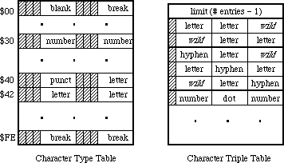
The character type table is indexed by the character’s ASCII code and contains one type value for each character. The character types in the table are limited to values between 1 and 31. There are two distinguishing values: the type nonBreaking (= 1) indicates that the character is non-breaking; it always continues a word. The type wild (=0) indicates that the character may or may not break, depending on information in the character triple table, as described below. Otherwise, the choice of numbers to represent character types is completely arbitrary.
For example, the following in MPW Assembler defines character types for use in a word-selection break table, then sets up a character type table using an assembly macro (setByte) to store character type values in an array. (Note that the character types could have been defined with equate definitions (EQU), rather than using the record structure.) Writing the setByte macro is left as an exercise to the reader. Note that the break value is the default. This value is not distinguished, but should have no continuation sequences.
;============================================================
charWordRec record 0
wild ds.b 1 ; constant! not in char table.
nonbreak ds.b 1 ; constant! non-breaking space.
letter ds.b 1 ; letters.
number ds.b 1 ; digits.
break ds.b 1 ; always breaks.
midLetter ds.b 1 ; a'a.
midLetNum ds.b 1 ; a'a 1'1.
preNum ds.b 1 ; $, etc.
postNum ds.b 1 ; %, etc.
midNum ds.b 1 ; 1,1.
preMidNum ds.b 1 ; .1234.
blank ds.b 1 ; spaces and tabs.
cr ds.b 1 ; add carriage return
endr
;============================================================
with charWordRec
wordTable
dcb.b 256,break
setByte wordTable,nonBreak,$ca
setByte wordTable,letter,('A','Z'),('a','z')('Ä','ü')
setByte wordTable,letter,'Æ','Ø','æ','ø',('À','œ'),'ÿ'
setByte wordTable,midLetter,'-'
setByte wordTable,midLetNum,$27,'’'
setByte wordTable,number,('0','9')
setByte wordTable,preNum,'$','¢','£','¥'
setByte wordTable,postNum,'%'
setByte wordTable,midNum,','
setByte wordTable,preMidNum,'.'
setByte wordTable,blank,$00,' ',$09
setByte wordTable,cr,$0d
endWith
;============================================================
The character triple table is a coded representation of a list of continuation sequences. It consists of a list of packed one word triples, preceded by a length word. This length word contains the number of triples minus one. Each triple contains three character types, either as derived from the charType table or the special type wild (= zero). The three types in a triple are packed into fields five bits apiece, with the most significant bit in the word cleared. The first type in the triple is the leftmost.
A continuation sequence of length three (xyz) is represented by entering three triples into the triple list: xyz, *xy, and yz* (where ‘*’ stands for the type wild, which is always zero).
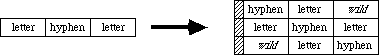
A continuation sequence of length two (xy) is represented by entering two triples into this list: *xy, and xy*. A continuation sequence of length one has no entry in the triple list: the character type is simply nonBreaking.
Note that the type wild cannot appear as the middle element of a triple. The words in the triple table must be sorted in ascending numerical order for future compatibility.
The following is an example of how a character triple table could be coded. The defSeq macro takes a continuation sequence as a parameter, and enters a set of triples into an internal array. The dumpSeq macro sorts the triples, and stores them in the proper order with dc.w commands. Once again, writing the macros defSeq and dumpSeq is left as an exercise for the reader.
;============================================================
with charWordRec
defSeq letter,letter
defSeq letter,preMidNum,letter
defSeq letter,midLetter,letter
defSeq letter,midLetNum,letter
defSeq number,number
defSeq number,letter
defSeq number,midNum,number
defSeq number,midLetNum,number
defSeq number,preMidNum,number
defSeq number,postNum
defSeq preNum,number
defSeq preMidNum,number
defSeq blank,blank
defSeq blank,cr
endWith
;============================================================
dc.w ((wordEnd-wordBegin)/2)-1 ; length word.
wordBegin
dumpSeq
wordEnd
;============================================================
A series of blanks should generally select as a single word. Make certain, however, that a carriage return does not continue a word to the right (note how it has a separate character type from blank for this reason), otherwise word selection and wrapping do not work properly across paragraphs.
Extensions
The values 16-31 in the character type table entry for null ($00) (the first byte in the character type table) are reserved by Apple for future expansion. The use of one of these values indicates the presence of a supplementary table after the triple table.
183: Position-Independent PostScript
#183: Position-Independent PostScript
See also: The Printing Manager
QuickDraw
LaserWriter Reference Manual
Technical Note #91 — Optimizing for the LaserWriter—PicComments
PostScript Language Reference Manual, Adobe Systems
PostScript Language Cookbook and Tutorial, Adobe Systems
Written by: Scott “ZZ” Zimmerman November 2, 1987
Updated: March 1, 1988
_______________________________________________________________________________
This technical note describes a method for inserting position-independent PostScript into QuickDraw pictures.
_______________________________________________________________________________
There is a problem with pictures that contain PostScript code. Sometimes the PostScript code that is inserted into the picture is dependent on the position of the picture on the page. The problem arises when these pictures are cut or copied from their original position, and pasted into another position or even into another document. The PostScript code will not know the new location of the picture, and will not execute correctly.
The solution for this problem, is to provide some way for the PostScript code to determine the current location of the picture relative to the page that it is being printed on. This is done by inserting QuickDraw calls to position the LaserWriter’s pen before inserting the position dependent PostScript code. When the PostScript in the picture is executed, the LaserWriter’s pen location will be in a location relative to the position of the picture on the page.
The following example illustrates a method for positioning the LaserWriter’s pen before inserting any PostScript code into the picture. The method uses QuickDraw calls to position the LaserWriter’s pen, and will work with any application that supports QuickDraw pictures. Applications do not have to be changed to be able to print pictures which use this technique; normal calls to DrawPicture will work.
The following code fragment will create a picture that contains PostScript to draw a rectangle around the picture’s frame:
FUNCTION CreatePicture(pictureRect: Rect): PicHandle;
CONST
PostScriptBegin = 190;
PostScriptEnd = 191;
PostScriptHandle = 192;
VAR
PSString : Str255;
PSHandle : Handle;
theError : OSErr;
BEGIN
(* Create a new Picture. *)
CreatePicture := OpenPicture(pictureRect); ClipRect(pictureRect);
(* Set the pen size to 0,0 so the following Line will not *)
(* be shown, it is only sent to position the pen.*) PenSize(0,0);
(* Move the QuickDraw pen to the first pixel inside the *)
(* the picture’s frame. This by itself will not *)
(* change the LaserWriter’s pen location! *)
MoveTo(pictureRect.left, pictureRect.top);
(* Force the LaserWriter’s pen location to match the *)
(* QuickDraw pen location. Actually any drawing command, *)
(* such as LineTo or even DrawString will cause the *)
(* LaserWriter’s pen location to change. This call to *)
(* the Line procedure only causes the coordinates of *)
(* the above MoveTo to be flushed to the LaserWriter. *)
(* Because of the PenSize call above, no Line is drawn. *)
Line(0,0);
(* Reset the pen to its default size. *)
PenSize(1,1);
(* The LaserWriter’s pen location has now been changed. The *)
(* PostScript currentpoint operator will now return the *)
(* location of the center pixel of the Picture. *)
(* Get the PostScript ready to be sent. *)
(* currentpoint - push the current Point onto the stack. *)
(* newpath - Begin a new Line segment. *)
(* MoveTo - Move to the currentpoint we saved above. *)
(* nn nn rlineto - frame the Picture with lines. *)
(* stroke - Draw the frame. *)
PSString :=
'100 0 rlineto 0 100 rlineto -100 0 rlineto 0 -100 rlineto stroke '
;
PSString[length(PSString)] := CHR(13); (* Don’t forget CR. *)
theError:=PtrToHand(Ptr(ORD4(@PSString)+1),
PSHandle,length(PSString));
IF theError <> noErr THEN HandleError;
(* Send the PostScript code to the LaserWriter. *) PicComment(PostScriptBegin,0,nil);
(* QuickDraw calls made between the PostScriptBegin *)
(* and PostScriptEnd PicComments will be ignored by *)
(* devices that support PostScript. *)
PicComment(PostScriptHandle,GetHandleSize(PSHandle),PSHandle);
PicComment(PostScriptEnd,0,nil);
(* Kill off the Handle we created and close the picture. *)
DisposHandle(PSHandle);
ClosePicture;
END; (* CreatePicture *)
See the LaserWriter Reference Manual for more information about PicComments. See the PostScript Language Reference Manual for more information about the currentpoint operator.
There are some important guidelines to follow when sending PostScript directly to the LaserWriter. See the PostScript Commands section of Technical Note #91, for a complete description of these guidelines.
184: Notification Manager
#184: Notification Manager
Revised by: Rich Collyer December 1989
Written by: Darin Adler April 1988
This Technical Note describes the Notification Manager, the part of the operating system that lets an application, desk accessory, or driver alert the user.
Changes since October 1989: Clarified the section on error handling for calls to _NMInstall.
_______________________________________________________________________________
The Notification Manager, in System Software version 6.0 and later, provides the user with an asynchronous “notification” service. The Notification Manager is especially useful for background applications; the PrintMonitor application and the system alarm (set by the Alarm Clock desk accessory) both use its services.
Each application, desk accessory, or device driver can queue any number of notifications. For this reason, you should try to avoid posting multiple notifications since each one will be presented separately to the user (i.e.,
“you have mail,” “you have mail,” etc.).
The Notification Manager queue contains information describing each notification request; you supply a pointer to a queue element describing the type of notification you desire. The Notification Manager queue is a standard Macintosh queue, as described in the Operating System Utilities chapter of Inside Macintosh, Volume II-367. Each entry in the Notification Manager queue has the following structure:
TYPE NMRec = RECORD
qLink: QElemPtr; {next queue entry}
qType: INTEGER; {queue type -- ORD(nmType) = 8}
nmFlags: INTEGER; {reserved}
nmPrivate: LONGINT; {reserved}
nmReserved: INTEGER; {reserved}
nmMark: INTEGER; {item to mark in Apple menu}
nmSIcon: Handle; {handle to small icon}
nmSound: Handle; {handle to sound record}
nmStr: StringPtr; {string to appear in alert}
nmResp: ProcPtr; {pointer to response routine}
nmRefCon: LONGINT; {for application use}
END;
To use the Notification Manager, you must also use _SysEnvirons (discussed in Inside Macintosh, Volume V and Technical Note #129) to test the System Software version. If the System Software is not current and the Notification Manager routines are not present, display an alert to inform the user that your application requires System Software version 6.0 or newer, then exit.
Using the Notification Manager
Your program can request three types of notification:
• polite notification: a small icon that periodically appears in
rotation with the Apple in the menu bar;
• audible notification: a sound to be played by the Sound Manager;
• alert notification: an dialog box containing a short message.
In addition, you can place a diamond mark next to the name of the requesting desk accessory or application in the Apple menu.
After you have notified the user as you feel necessary (placed a diamond mark in the Apple menu, added a small icon to the list of icons which rotate with the Apple in the menu bar, played a sound, and presented the user with a dialog box to acknowledge), you should call a response procedure.
How the Notification Manager Handles Notifications
When the Notification Manager handles a notification, it does one or more of the following (in this order):
• puts a diamond mark next to the requesting application or desk
accessory in the Apple menu
• adds a small icon to the list of icons which rotate with the
Apple in the menu bar
• plays a specified sound
• presents a dialog box for the user to acknowledge and dismiss
• calls the response procedure
At this point, the diamond mark in the Apple menu and the icon rotating with the Apple in the menu bar remain until your application removes the notification request from the queue. The Notification Manager only presents the sound and dialog box once.
Creating a Notification Request
To create a notification request, you must set up an NMRec with all the information about the notification you want:
nmMark contains 0 to not place a mark in the Apple menu, 1 to mark
the current application, or the refNum of a desk accessory
to mark that desk accessory. An application should pass 1,
a desk accessory should pass its own refNum, and a VBL task
should pass 0.
nmSIcon contains NIL for no icon in the menu bar, or a handle to a
small icon to rotate with the Apple. (A small icon is a
16 x 16 bitmap, often stored in an 'SICN' resource.) This
handle does not need to be locked, but it must be non-purgeable.
nmSound contains NIL to use no sound, –1 to use the system beep sound,
or a handle to a sound record which can be played with _SndPlay.
This handle does not need to be locked, but it must be non-purgeable.
nmStr contains NIL for no alert, or a pointer to the string to appear
in the alert.
nmResp contains NIL for no response procedure, –1 for a predefined
procedure that removes the request immediately after it is
completed, or a pointer to a procedure which takes one parameter,
a pointer to your queue element. For example, the following is
how you would declare it if it were named MyResponse:
PROCEDURE MyResponse (nmReqPtr: QElemPtr);
pascal void MyResponse (QElemPtr nmReqPtr);
Note that when the Notification Manager calls your response procedure, it does not set up A5 and low-memory globals for you. If you need to access your application’s globals, you should save your application’s A5 in the nmRefCon field as discussed later in this Note.
Response procedures should never draw or do “user interface” things. You should wait until the user brings the application or desk accessory to the front before responding to the user. Some good ways to use the response procedure are to dequeue and deallocate your Notification Manager queue element or to set an application global (being careful about A5), so the application knows when the user receives the notification.
You should probably use an nmResp of –1 with audible and alert notifications to remove the notification as soon as the sound has finished or the user has dismissed the dialog. You should not use an nmResp of –1 with an nmMark or an nmSIcon, because the Notification Manager would remove the diamond mark or small icon before the user could see it. Note that an nmResp of –1 does not deallocate the memory block containing the queue element, it only removes it from the notification queue.
You can also use nmRefCon; one convenient use is putting your application’s A5 in this field so the response procedure can access application globals. For more information about this technique, refer to the section about VBL tasks in Technical Note #180.
Notification Manager Routines
The system automatically initializes the Notification Manager when it boots. To add a notification request to the notification queue, call _NMInstall. When your application no longer wants a notification to continue, it can remove the request by calling _NMRemove. Neither _NMInstall nor _NMRemove move or purge memory, and you can call either of them from completion routines or interrupt handlers, as well as from the main body of an application and the response procedure of a notification request.
FUNCTION NMInstall (nmReqPtr: QElemPtr) : OSErr;
Trap macro _NMInstall ($A05E)
On entry A0: theNMRec (pointer)
On exit D0: result code (word)
_NMInstall adds the notification request specified by nmReqPtr to the notification queue and returns one of the following result codes:
Result codes noErr No error
nmTypErr (–299) qType field is not ORD(nmType)
FUNCTION NMRemove (nmReqPtr: QElemPtr) : OSErr;
Trap macro _NMRemove ($A05F)
On entry A0: theNMRec (pointer)
On exit D0: result code (word)
_NMRemove removes the notification identified by nmReqPtr from the notification queue and returns one of the following result codes:
Result codes noErr No error
qErr Not in queue
nmTypErr (–299) qType field is not ORD(nmType)
How to Call _NMInstall and _NMRemove
If you do not yet have glue for _NMInstall and _NMRemove, you can use the following from MPW (these are in the include files for MPW 3.0):
Pascal
FUNCTION NMInstall (nmReqPtr: QElemPtr) : OSErr;
INLINE $205F, $A05E, $3E80;
FUNCTION NMRemove (nmReqPtr: QElemPtr) : OSErr;
INLINE $205F, $A05F, $3E80;
C
pascal OSErr NMInstall (QElemPtr nmReqPtr)
= {0x205F, 0xA05E, 0x3E80};
pascal OSErr NMRemove (QElemPtr nmReqPtr)
= {0x205F, 0xA05F, 0x3E80};
Also note that qType must be set to ORD(nmType), which is 8.
The following short code segments demonstrate the use of the Notification Manager in MPW C:
#include <OSUtils.h>
#include <Notification.h>
struct NMRec myNote; /* declare your NMRec */
Handle ManDoneS; /* declare a handle for the sound */
OSErr err; /* declare for err handling */
myNote.qType = nmType; /* queue type -- nmType = 8 */
myNote.nmMark = 1; /* get mark in Apple menu */
myNote.nmSIcon = nil; /* no flashing Icon */
/* get the sound you want out of your resources */
ManDoneS = GetResource('snd ', soundID);
myNote.nmSound = ManDoneS; /* set the sound to be played */
myNote.nmStr = nil; /* no alert box */
myNote.nmResp = nil; /* no response procedure */
myNote.nmRefCon = nil; /* set to nil since I don't need my A5 */
Before calling _NMInstall, you need to see if your application is running in the background. If your application is in the foreground, you really do not need to notify the user, but if your application is in the background, you should make the following call to install the notification event:
err = NMInstall ((QElemPtr) &myNote);
If the call to _NMInstall returns an error, you cannot install the notification event and must wait for the user to switch your application to the foreground before proceeding with anything else. While you are waiting for a resume event, you should take care of other events, such as updates. If you were able to install the notification, then you want to make sure to remove it when you are switched back into the foreground. The following code does just that:
err = NMRemove ((QElemPtr) &myNote);
Further Reference:
_______________________________________________________________________________
• Inside Macintosh, Volume II-367, V-591, The Operating System Utilities
• Technical Note #129, _SysEnvirons: System 6.0 and Beyond
• Technical Note #180, MultiFinder Miscellanea
185: OpenRFPerm - What your mother never told you.
#185: OpenRFPerm: What your mother never told you.
See also: The Resource Manager
Written by: Dave Burnard April 2, 1988
_______________________________________________________________________________
This note corrects an error in the description of the Resource Manager routine OpenRFPerm found in Inside Macintosh Volume IV.
_______________________________________________________________________________
On page IV-17 in the Resource Manager chapter of Inside Macintosh Volume IV it states,
“OpenRFPerm, like OpenResFile, will not open the specified file twice; it
simply returns the reference number already assigned to the file. In other
words, OpenRFPerm cannot be used to open a second access path to a resource
file…”
This statement is incorrect. OpenRFPerm behaves exactly as described if an application attempts to open a second access path, with write access, to a resource file without MultiFinder. With MultiFinder, however, if the second attempt comes from a different application than the one that originally opened the file OpenRFPerm will not return the reference number already assigned to the file, instead it will return –1 and ResError will be set to opWrErr (–49). In fact in similar circumstances with MultiFinder, OpenResFile behaves the same way, returning –1 and setting ResError to –49.
Note, however, that with or without MultiFinder, OpenRFPerm will create multiple, unique, read-only access paths to a resource file. Using this feature is not safe and should be avoided since if a resource file is opened twice, once with read-write permission and once with read-only permission then two copies of the resource map will exist in memory. If one of the resources in the file is changed and written to disk then the two maps will become inconsistent and the second access path will see what it thinks is a trashed resource file.
If you must use this technique for read-only access, only call OpenRFPerm when your application is ready to read information from the file and close the file immediately afterwards. Otherwise you risk having the resource file change out from under your application.
186: Lock, the UnlockRange
#186: Lock, Unlock the Range
Revised by: Jim Luther February 1991
Written by: Dave Burnard April 1988
This Technical Note discusses the _PBLockRange and _PBUnlockRange routines; how they act on local and shared volumes and why you should not set the ioPosMode field to fsFromLEOF in the parameter block for those routines when accessing a file on an AppleShare volume.
Changes since April 1988: Added information on how _PBLockRange and _PBUnlockRange really work.
_______________________________________________________________________________
A file can be opened with a shared read and write permission (ioPermssn = fsRdWrShPerm) to allow several users to share the data in that file. (When a file is opened more than once, each open is considered a different “user”.) When you, as a user of a shared file, need to modify a portion of the file (for example, a record in a database), it is usually very desirable to make that portion of the file unavailable to other users while you are making your changes. The _PBLockRange call is provided to lock a portion or range of bytes of the file. _PBUnlockRange can be called later to unlock the portion of a file locked with _PBLockRange. If you have read the File Manager chapters of Inside Macintosh IV and V, you know all of that, but there are a few things that it doesn’t tell you, and that is the topic of this Note.
Local Versus AppleShare
_PBLockRange and _PBUnlockRange do nothing when used on files that are on a local HFS (or MFS) volume unless local file sharing is in effect under System Software 7.0. The two routines do not return any errors and they do not lock or unlock a range of bytes. Following is a way to verify that _PBLockRange works on an open file:
{Start with an open file}
WITH theParmBlk DO
BEGIN
{ioRefNum from open call}
ioCompletion := NIL;
ioReqCount := 1; {lock a single byte}
ioPosMode := fsFromStart; {at the beginning of the file}
ioPosOffset := 0;
END;
theErr := PBLockRange(@theParmBlk, FALSE); {lock the byte - ignore error}
theErr := PBLockRange(@theParmBlk, FALSE); {lock it again}
IF theErr = afpRangeOverlap {see if PBLockRange locked it the first time}
THEN
BEGIN
RangeLockPresent := TRUE; {Range was locked}
theErr := PBUnlockRange(@theParmBlk, FALSE); {unlock the locked byte}
END;
ELSE RangeLockPresent := FALSE; {Range was not locked}
Luckily, _PBLockRange and _PBUnlockRange work when used on files that are on a shared volume (i.e., AppleShare) where the possibility of shared access usually comes up much more often. When _PBLockRange and _PBUnlockRange are used on a file on a shared volume, both calls are translated into an AppleTalk Filing Protocol (AFP) call, FPByteRangeLock. The FPByteRangeLock call locks or unlocks a specified range of bytes within an open fork.
Note: With System Software 7.0, file sharing can be started or stopped with the Sharing Setup Control Panel while your application is running. If file sharing is stopped, AppleTalk AFP specific attributes on local volumes, including locked ranges, become invalid. The bHasPersonalAccessPrivileges bit in the vMAttrib longword returned by _PBHGetVolParms can be used to check the current state of file sharing on local volumes.
One Way To Lock, Two Ways To Unlock
The File Manager only gives one way to lock a range of bytes of a file, the _PBLockRange routine. However, there are two ways to unlock a locked range of bytes of a file. The obvious method of unlocking a range of bytes is the _PBUnlockRange routine; the not so obvious method is to close the file. When a file is closed, all locked ranges held by a user of the file are unlocked.
The range of bytes unlocked by _PBUnlockRange must be the exact same range locked by a _PBLockRange call; you cannot unlock a portion of a locked range nor can you unlock portions of a file that are not locked. If, for some reason, you need to unlock a range you have locked and you do not know where the range started or how long the range is, you must close the file to unlock the range.
What Range Did I Just Lock?
A range of bytes may be locked relative to the beginning or the end of the file, however AFP’s FPByteRangeLock call only lets you unlock a range of bytes relative to the beginning of the file. If a range of bytes is successfully locked with the FPByteRangeLock call, then a reply packet containing RangeStart, the number of the first byte of the range just locked (i.e., the offset from the beginning of the fork) is returned to FPByteRangeLock. That offset allows an application to set a lock when the application does not know the exact end of file (which can often happen when sharing a file) and later know what range to unlock.
This brings us to an interesting fact: _PBLockRange does not return the number of the first byte of the range just locked to your application. The reply packet containing RangeStart is returned by FPByteRangeLock, but _PBLockRange does not return it to your application. That would make it impossible to really know what range you just locked if the range locked were relative to the end of file. However, the Macintosh does not use the file server’s end of file. Instead, the file’s logical end of file is retrieved from the server when the file is opened and that local copy of end of file is used whenever the ioPosMode field is set to fsFromLEOF (the current logical end of file can be retrieved with _PBGetEOF).
An Off By EOF Bug
With Macintosh System Software 6.0.7 and earlier, the _PBLockRange call’s parameters are incorrectly translated to the parameters passed to the AFP FPByteRangeLock call. When ioPosMode field is set to fsFromLEOF the offset parameter sent is equal to the offset supplied to the _PBLockRange call plus what your system locally thinks is the current EOF. This would work correctly except that the Start/EndFlag in the FPByteRangeLock call’s parameter list is set to End (relative to end of file) which means that the range locked is EOF bytes further out than that for which you asked.
The problem can be avoided under System Software 6.0.7 and earlier by using fsFromStart, fsAtMark, or fsFromMark for the ioPosMode field. System Software 7.0 fixes the bug by setting the Start/EndFlag in the FPByteRangeLock call’s parameter list to Start (relative to beginning of file) when ioPosMode is set to fsFromLEOF.
Conclusion
Remember, _PBLockRange does not do anything on local unshared volumes, and if you use _PBLockRange under Macintosh System Software 6.0.7 or earlier, never set ioPosMode to fsFromLEOF.
Further Reference:
_______________________________________________________________________________
• Inside Macintosh, Volumes IV & VI, The File Manager
• Inside Macintosh, Volume V, File Manager Extensions In a Shared Environment
• Inside AppleTalk, AppleTalk Filing Protocol
187: Don’t Look at ioPosOffset
#187: Don’t Look at ioPosOffset
See also: The Device Manager
Written by: Darin Adler April 2, 1988
_______________________________________________________________________________
The Device Manager chapter of Inside Macintosh Volume II says that ioPosOffset is passed to and returned by Read and Write calls. It also says that “After the read [or write] is completed, the position is returned in ioPosOffset…” Actually, ioPosOffset is not changed by either call.
Also note that device drivers should only look at the dCtlPosition field of the DCE, and should not look directly at the ioPosOffset field of the parameter block. The Device Manager sets up dCtlPosition for the driver, taking into account both the ioPosMode and the ioPosOffset.
188: ChangedResource - Too much of a good thing.
#188: ChangedResource: Too much of a good thing.
See also: The Resource Manager
Written by: Dave Burnard April 2, 1988
_______________________________________________________________________________
The toolbox trap ChangedResource is used to inform the Resource Manager that the contents of a resource have changed and should be written to disk. The actual write occurs on the next call to WriteResource (for the specific resource) or UpdateResFile (for the resource file containing the specified resource). When called, ChangedResource reserves enough disk space to contain the changed resource. A little-known “feature” of ChangedResource is that it reserves disk space every time it is called. Thus if you call ChangedResource ten times on a large resource before the resource is actually written out, you may unexpectedly run out of disk space since ten times the amount of disk space actually needed will be reserved.
If your program frequently changes the contents of resources, especially large ones, then you should call WriteResource or UpdateResFile immediately after calling ChangedResource. Once the resource is actually written, the file’s EOF will be set correctly, and the first subsequent call to ChangedResource will work correctly.
189: Version Territory
#189: Version Territory
Revised by: Rich Collyer October 1990
Written by: Darin Adler April 1988
This Technical Note describes the 'vers' resource supported by Finder 6.1 and later.
Changes since April 1989: Changed MPW C code to reflect the changes in MPW C 3.1.
_______________________________________________________________________________
Finder 6.1 introduced a feature allowing the creator of a file to identify the version of that file as well as the version of a set of files which includes that file. These version numbers are stored in 'vers' resources, and each contains a BCD form of the version number and a longer version message (which the Finder displays in the Get Info window for each file).
Apple’s Version Numbering Scheme
Apple uses a version numbering scheme for its software products which you might want to adopt. Table 1 summarizes the scheme, which involves three numbers, each separated by periods.
Event Version
______________________________________________
First released version 1.0
First revision 1.1
First bug fix to the first revision 1.1.1
First major revision or rewrite 2.0
______________________________________________
Table 1–Apple’s Version Numbering Scheme
Note that Apple increments the first number when it releases a major revision, the second number when it releases a minor revision, and the third number when it releases a version to address bugs (the third number is omitted if it is zero).
During product development, Apple uses a version number followed by a suffix which indicates the stage of development. Table 2 presents a few examples.
Event Version Stage
________________________________________________________________________
First versions 1.0d1, 1.0d2… development
Product features defined (begin testing) 1.0a1, 1.0a2… alpha
Product is stable (begin final testing) 1.0b1, 1.0b2… beta
First released version 1.0 release
First revision 1.1d1…1.1
First bug fix to the first revision 1.1.1d1…1.1.1
First major revision 2.0d1…2.0
________________________________________________________________________
Table 2–Development Version Numbering
Version Resources
Each 'vers' resource has the following format (described with a Rez template):
#include "SysTypes.r" /* for country codes */
type 'vers' {
byte; /* first part of version number in BCD */
byte; /* second and third parts of version number */
byte development=0x20, alpha=0x40, beta=0x60, release=0x80;
byte; /* stage of non-release version */
integer Country; /* country code as in international utilities */
pstring; /* short version number */
pstring; /* long version message */
};
The short version number is a string which only contains the version number
(e.g., “1.0”). The long version message can also include a copyright notice, a release date, or other information, but it should not include the name of the program. The following examples illustrate the proper use of the Rez template to create version resources:
resource 'vers' (1) {
0x01, 0x00, release, 0x00, verUS,
"1.0",
"1.0 (US), ©1989 Inside Joke"
};
resource 'vers' (2) {
0x12, 0x00, release, 0x00, verUS,
"12.0",
"Watt-R-Utilities Disk 12.0"
};
resource 'vers' (1) {
0x23, 0x45, beta, 0x67, verFinland,
"23.4.5b67",
"23.4.5b67 (Finland), ©1989 Squid, Inc."
};
resource 'vers' (2) {
0x55, 0x00, development, 0x67, verFinland,
"55.0d67",
"Friends of Skippy White 55.0d67"
};
The following is a type definition for 'vers' resources in MPW Pascal:
NumVersion = PACKED RECORD
CASE INTEGER OF
0:
(majorRev: SignedByte; {1st part of version number in BCD}
minorRev: 0..9; {2nd part is 1 nibble in BCD}
bugFixRev: 0..9; {3rd part is 1 nibble in BCD}
stage: SignedByte; {stage code: dev, alpha, beta, final}
nonRelRev: SignedByte); {revision level of non-released version}
1:
(version: LONGINT); {to use all 4 fields at one time}
END;
{ Numeric version part of 'vers' resource }
VersRecPtr = ^VersRec;
VersRecHndl = ^VersRecPtr;
VersRec = RECORD
numericVersion: NumVersion; {encoded version number}
countryCode: INTEGER; {country code from intl utilities}
shortVersion: Str255; {version number string - worst case}
reserved: Str255; {longMessage string packed after shortVersion}
END;
The type definition in MPW C is as follows (these structures are not needed in your code since they are included in the header file Files.h):
struct NumVersion {
unsigned char majorRev; /*1st part of version number in BCD*/
unsigned int minorRev : 4; /*2nd part is 1 nibble in BCD*/
unsigned int bugFixRev : 4; /*3rd part is 1 nibble in BCD*/
unsigned char stage; /*stage code: dev, alpha, beta, final*/
unsigned char nonRelRev; /*revision level of non-released version*/
};
/* Numeric version part of 'vers' resource */
struct VersRec {
NumVersion numericVersion; /*encoded version number*/
short countryCode; /*country code from intl utilities*/
Str255 shortVersion; /*version number string - worst case*/
Str255 reserved; /*longMessage string packed after shortVersion*/
};
typedef VersRec *VersRecPtr, **VersRecHndl;
The longMessage string is not necessarily word-aligned due to the way the resource is formatted, so you should use _BlockMove to extract it from the record. Following are examples of this technique:
MPW Pascal
VAR
version: VersRecHandle;
messagePtr: StringPtr;
longMessage: Str255;
version := GetResource ('vers', 1);
WITH version^^ DO
BEGIN
{calculate a pointer to the long message}
messagePtr := StringPtr(Ord(@shortVersion[1])+Length(shortVersion));
{move the long message into a string}
BlockMove(Ptr(messagePtr), @longMessage, Length(messagePtr^)+1);
END;
MPW C
VersRecHndl version;
StringPtr messagePtr;
char *shortversion, *longversion;
version = (VersRecHndl) GetResource ('vers', 1);
/* calculate a pointer to the long message */
messagePtr = (StringPtr) (((unsigned long) &(**version).shortVersion[1]) +
((**version).shortVersion[0]));
/* move the long message into a string */
BlockMove(messagePtr, &longMessage, ((unsigned char) &messagePtr) + 1);
A file can contain either one, two, or no 'vers' resources. If present, a
'vers' (1) resource identifies the file version while a 'vers' (2) resource identifies the version (and name) of a set of files which includes that file, thus linking all the files which make up the set. Apple uses this mechanism to identify System Software versions. All files on System Tools disks have a
'vers' (2) resource that identifies the version of System Tools with which they were released. In addition, each file has a 'vers' (1) resource that identifies the version of the particular file.
Version Resources and the Finder
The Finder displays the long message from 'vers' (1) and 'vers' (2) resources, if they are present, in the Get Info window of a file; it ignores the rest of the 'vers' resource. Following is an example of the 'vers' resources from Finder 6.1 with a Get Info window for the Finder file in Figure 1.
resource 'vers' (1) {
0x06, 0x10, release, 0x00, verUS,
"6.1",
"6.1, Copyright Apple Computer, Inc. 1983-88"
};
resource 'vers' (2) {
0x06, 0x03, release, 0x00, verUS,
"6.0.3",
"System Software Version 6.0.3"
};
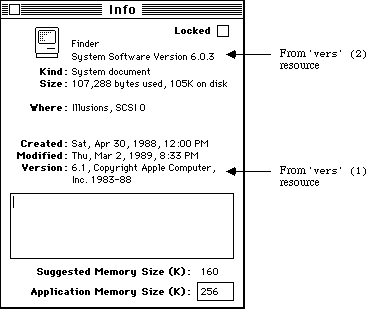
Figure 1–Get Info Window for the Finder File
The other fields (besides the long message) are often useful to applications other than the Finder. The short version number is good for displaying the version of a particular file, as the Finder does for the System and Finder in the About the Macintosh Finder window. The BCD version number is well suited for checking for a desired version number or comparing two versions. Note that this BCD numbering scheme represents a more recent version with a number greater than an older version, so a numeric comparison between two four-byte values is all that is necessary to determine which value is the most recent.
Final Note
The Finder Interface chapter of Inside Macintosh, Volume III-7 describes a resource (part of the bundle) that contains the version data of an application. This version data is typically a string that gives the name, version number, and date of the application. The Finder displays the version data (treating it as a string) in the Get Info window if there is no 'vers' (1) resource in the application. Unlike this version data in an application, any type of file can contain 'vers' resources, not just those files which contain bundles.
Further Reference:
_______________________________________________________________________________
• Inside Macintosh, Volume III-7, The Finder Interface
• Technical Note #48, Bundles
190: Working Directories and MultiFinder
#190: Working Directories and MultiFinder
See also: The File Manager
Technical Note #77 — HFS Ruminations
Written by: Darin Adler April 2, 1988
_______________________________________________________________________________
This technical note describes the way that working directories are handled under MultiFinder.
_______________________________________________________________________________
Some versions of Technical Note #77 claim that you can open working directories with a unique ioWDProcID and that they will only be deallocated when “the system is rebooted.”
With MultiFinder, this has changed. When you call PBOpenWD, the ioWDProcID that you pass in is ignored. MultiFinder overrides your ioWDProcID with a unique process ID for your application, and deallocates all working directories that you allocated when your application terminates. Thus, you cannot use the ioWDProcID to identify your working directories when running under MultiFinder.
Indexing through working directories with PBGetWDInfo and a nonzero value of ioWDProcID is now a bad idea. This is because the working directories will have ioWDProcIDs that MultiFinder has assigned, rather than the ones you specified.
Whenever you open a working directory with PBOpenWD, you should pass your application’s signature as the ioWDProcID and close the working directory as soon as possible with PBCloseWD. You should only close working directories that you open, not ones that are returned to you from Standard File or SysEnvirons. It is best to keep working directories open for the minimum time necessary, and to avoid using them when possible. Note that working directories are implemented mostly for the benefit of old (pre-HFS) applications, and rarely need to be used.
191: Font Names
#191: Font Names
See also: The Font Manager
Written by: Darin Adler April 2, 1988
Revised by: Bryan Stearns August 1, 1988
________________________________________________________________________________
This note recommends the use of font names rather than font numbers.
________________________________________________________________________________
The Font Manager chapter of Inside Macintosh Volume IV claims that font family numbers 0 through 127 are reserved for use by Apple, and numbers 128 through 255 are assigned by Apple for fonts created by software developers. This is no longer true. Developer Technical Support does not assign font family numbers. You should only use font numbers to reference the system font (font 0) and application default font (font 1). All other fonts should be identified by name. The Font/DA Mover will renumber a font when moving it into a file containing a conflicting font family.
The Font Manager routines GetFontName and GetFNum map font names to numbers and vice versa. This makes it simple to store a font’s name in a document and turn it back into a number when reading the document. Unfortunately, GetFNum returns a 0 when a font by that name doesn’t exist; this is the same as the font ID for the system font. The following routine in MPW Pascal alleviates this problem:
FUNCTION GetFontNumber(fontName: Str255; VAR fontNum: INTEGER) : BOOLEAN;
{GetFontNumber returns in fontNum the number for the font having
the given fontName. If there’s no such font, it returns FALSE.}
VAR
systemFontName: Str255;
BEGIN
GetFNum(fontName, theNum);
IF fontNum = 0 THEN BEGIN
{either the font was not found, or it is the system font}
{if it was the system font, we got it, otherwise we didn't}
GetFontName(0, systemFontName);
GetFontNumber := EqualString(fontName, systemFontName, FALSE, FALSE);
END ELSE
{if theNum was not 0, we found the font}
GetFontNumber := TRUE;
END;
In MPW C:
Boolean GETFONTNUMBER(fontName, fontNum)
Str255* fontName;
short* fontNum;
/* GetFontNumber returns in fontNum the number for the font having
the given fontName. If there’s no such font, it returns false. */
{
Str255* systemFontName;
GETFNUM(fontName, fontNum);
if (*fontNum == 0) {
/* either the font was not found, or it is the system font */
/* if it was the system font, we got it, otherwise we didn't */
GETFONTNAME(0, systemFontName);
return (EQUALSTRING(fontName, systemFontName, false, false));
} else
return true;
}
This routine makes it easy to find out if a given font exists; if the font isn’t available, you can present a dialog to the user, allowing an appropriate substitute font to be chosen.
Handy Hint for Lists of Font Names
Most applications that offer the user a choice of fonts do so by creating a Fonts menu. Some applications, however, present a list of fonts in some other way: for example, word processors that use a dialog box to let the user pick a font family, point size, and style often display the font family choices in a List Manager list. You can get the Menu Manager to do most of the work by using AddResMenu to enumerate and alphabetize the names, as follows:
PROCEDURE BuildMyFontList;
CONST
AnUnusedMenuID = 150; {a menu ID not used by any of your menus}
VAR
tempMenu: MenuHandle;
thisItem: INTEGER;
aFontName: Str255;
BEGIN
{Get a menu; use the Menu Manager to fill it with font names}
tempMenu := NewMenu(AnUnusedMenuID,'x');
AddResMenu(tempMenu,'FONT');
{Extract the names we got, one at a time}
FOR thisItem := 1 TO CountMItems(tempMenu) DO
BEGIN
{Extract the next name from the menu}
GetItem(tempMenu,thisItem,aFontName);
{** Do something with this font name (add **}
{** it to a List Manager list, or whatever) **}
END;
{We’re done with the menu; dispose of it}
DisposeMenu(tempMenu);
END; {BuildMyFontList}
This approach will help to insulate your application from changes to the Font Manager. Historically, AddResMenu was modified to notice FOND resources at the same time the Font Manager began to support them, so applications that used this technique to build their font lists didn’t need to be modified to work with FONDs.
Suggested Font Strategy for Applications and Documents
If your application offers the user a choice of a single font for use in the entire document, it’s a simple matter to store the name of that font somewhere in the document (perhaps in an ‘STR ’ resource). However, if your application lets the user use many fonts within each document (as is the case with most word processors) a more complex strategy is necessary: the Font Name Mapping Table. Each entry might look like this:
FontMapEntry : RECORD
name: Str255; {The name of the font}
localID: INTEGER; {a unique number for this entry}
realID: INTEGER; {last time we checked, this font’s font number}
useCount: INTEGER; {How many times this font is used in this document}
END;
In a new document, start out with no entries in the table. When the user changes a selection of text to a new font (that is, one whose name is not in the table), add an entry to the table. Set useCount to 1 (as this font is now referenced once within the document), and pick a localID that is unique within the table. In the text, or wherever you would normally keep the font number, store a copy of this localID instead of the font number. Use GetFontNumber (the example above) to get the “real” font number, and store it in the table as well, in realID.
Whenever you need to draw text, search through the table for the proper localID. When you find it, use the realID that is stored in that entry in a call to TextFont, then draw your text as usual.
Keep the useCount updated, so that you know when to get rid of a table entry. If the user deletes a range of text, or changes it to another font, examine the text to see if you should decrement any of the useCounts in your table. When a useCount for an entry becomes zero, you’ll know that the font for that entry isn’t used anywhere within the document, and you can remove the entry from the table.
When you save the document, save the table with it. When you open an existing document, load the table. For each entry, call GetFontNumber using each name, and update the realID field with the current font number for that name. If a font isn’t present, you should warn the user: You could let the user choose an alternative font, or use the default application font by storing (and using) the constant applFont as that font’s realID; this way, the user could still edit the document, but the original font name would remain, so that when the user adds the proper font to the System file, or moves the document to a Macintosh whose System file contains it, the document would be displayed as originally intended.
The overhead of handling your documents’ fonts in this manner is rather small; as more font families become available, and Font/DA Mover’s renumberings occur more often, your customers will appreciate this extra effort.
192: Surprises in LaserWriter 5.0 and Newer
#192: Surprises in LaserWriter 5.0 and Newer
Revised by: Mary Burke & Scott “Zz” Zimmerman February 1990
Written by: Scott “Zz” Zimmerman April 1988
This Technical Note describes some changes in version 5.0 and later LaserWriter drivers.
Changes since April 1988: Described a bug in 5.x which is fixed in 6.0 and later, and reiterated a warning about storing fonts in an application.
_______________________________________________________________________________
With the release of LaserWriter 5.0 and background printing, a few changes had to be made to the LaserWriter driver. Although these changes were transparent to most applications, some have had problems. Most of these problems are related to use of unsupported features. This Note details a partial list of the changes.
No Mo’ Low
Because of the problems supporting both the high-level and low-level interfaces in the background, the low-level interface is all but removed. Instead of the low-level calls being executed by the device driver, the _PrCtlCall procedure converts the call into its high-level equivalent before execution. This way, the LaserWriter driver has a common entry point for both the low-level and high-level interfaces. Because of this conversion, the low-level calls may not be faster than using the high-level equivalents. In some cases, they may even be slower.
Version 5.x of the LaserWriter driver also contains a bug with the low-level interface. If an application which uses the low-level Printing Manager interface encounters an error during the course of the print job, the LaserWriter driver crashes before the application has a chance to see the error. Because the error occurs inside the driver, there is no way for an application to predict or work around this problem. The only solution to this problem is to use the high-level Printing Manager interface or to upgrade to version 6.0 or later of the LaserWriter driver which fixes this bug.
Are You Convertible?
Whereas the conversion of the low-level calls should be transparent, the conversion routines make some assumptions. The conversion routines require a context in which to operate; the Printing Manager maintains a certain state while executing commands, and the conversion routines need access to this state to perform the conversion. To provide this context, an application must have opened a document and a page. This requirement means that the original method of using the low-level interface, which is documented in Inside Macintosh, Volume II-164, no longer works, as in the following example:
PrDrvrOpen;
PrCtlCall(iPrDevCtl, lPrReset, 0, 0);
{ Send data to be printed. }
PrCtlCall(iPrDevCtl, lPrPageEnd, 0, 0);
PrDrvrClose;
Instead, an application should use the following:
PrDrvrOpen;
PrCtlCall(iPrDevCtl, lPrDocOpen, 0, 0);
PrCtlCall(iPrDevCtl, lPrPageOpen, 0, 0);
{ Send data to be printed. }
PrCtlCall(iPrDevCtl, lPrPageClose, 0, 0);
PrCtlCall(iPrDevCtl, lPrDocClose, 0, 0);
PrDrvrClose;
This method provides the Printing Manager with the context it needs to convert the calls.
Really Unsupported Features
Sending data to the printer between the _PrOpenDoc or lPrDocOpen and the
_PrOpenPage or lPrPageOpen calls is not currently, and has never been supported. LaserWriter drivers prior to 5.0 interpreted this data, but 5.0 and later drivers ignore it. To download an application-specific PostScript® dictionary as a header with each document, Apple recommends that the application provide a 'PREC' resource of ID = 103, as is described in the LaserWriter Reference.
A Little Less Control
Four of the six printer control calls originally supported by the LaserWriter driver have been discontinued due to lack of use and difficulty supporting with background printing. The four calls which follow were only supported by the LaserWriter driver and only documented in the LaserWriter Reference Manual:
°•° fill °•° hexBuf °•° printR °•° printF
In addition to these calls, the stdBuf call is also affected. There are two versions of the stdBuf call depending upon the sign of the bytes parameter. If bytes is negative, the text passed to the stdBuf call is converted to PostScript text before being sent to the LaserWriter. This conversion means that special PostScript characters in the text are preceded by a PostScript escape character. In addition, characters with an ASCII value greater than 128 are converted to octal before being sent to the LaserWriter. This version of the call is no longer supported.
If the bytes parameter is positive, the text passed to the call is sent directly to the LaserWriter without conversion and interpreted as PostScript instructions. This version of the call is still supported, but there is one more problem. When an application first opens the low-level driver (via
_PrDrvrOpen) with background printing enabled, no clip region is defined. If the application then begins sending PostScript to the driver via the stdBuf call, all of the output is clipped, and only a blank page is printed.
To prevent this problem, the application must force a clip region to be sent to the LaserWriter. The region is sent by the driver when it receives its first drawing command. Unfortunately, the driver does not consider the stdBuf call to be a drawing command. To force the clip region on the printer, the application can use the iPrBitsCtl call to print a small bitmap outside the printable area of the page. This call does not have any effect on the document, but it fires the bottleneck routine and causes a definition of the clip region. Since the clip region is reinitialized at each call to lPrPageOpen, the application should send the bitmap once at the start of each page. If any other printer control calls precede the stdBuf call, the application does not need to send the bitmap.
Background Preparations
The 'PREC' ID = 201 mechanism only works when background printing is disabled. This limitation is because of difficulties finding the resource under MultiFinder. Since the option only works in the foreground, and since there is no way for an application to know if background printing is enabled, an application should avoid using this feature.
Fonts In An Application?
There are two problems when printing application fonts with the LaserWriter driver. Application fonts are fonts that are stored in the resource fork of the application’s resource file rather than being stored in the System file. The first problem occurs when the application font has the same name as the application’s resource file. If this is the true, the LaserWriter driver incorrectly assumes that the application’s resource file is a font file, and closes it after using the font. To solve this problem, developers should make sure the name of the application font (i.e., the 'FOND' resource) is different from the name of the application’s resource file. Since the application can still be renamed by the user, developers should try to select a unique font name. If the font name does not appear in a font menu, developers can simply append the application’s creator string onto the desired font name (i.e.,
'MyApplicationFont ZZAP').
The second problem with application fonts only occurs when background printing is enabled. When a print job is performed in the background, the LaserWriter driver writes all of the data to be printed into a file (called a spool file) for printing at a later time by Print Monitor. Since the LaserWriter driver has no way of knowing when the file will actually be printed, it cannot assume that the application will still be open when the job is printed. This is a problem if the application contains application fonts that Print Monitor needs at print time. To solve this problem, the LaserWriter driver must determine whether the fonts needed by the application are resident in the System file or in the application file. If they are in the application file, the driver must copy them into the spool file so they are available to Print Monitor. This practice can lead to very large spool files, as well as a significant loss of performance when background printing is enabled. To solve these and other user interface problems related to application fonts, Apple strongly recommends that developers ship custom application fonts as suitcase files for the user to install in the System file.
Headin’ For Trouble
There is a minor bug in version 5.0 of the LaserWriter driver that only affects applications that parse the PostScript header downloaded by the driver with each document. This header contains some PostScript comments that provide information about the current job. One of these comments is IncludeProcSet. This comment takes three arguments: a PostScript dictionary name, a major version number, and a minor version number. In version 4.0 of the LaserWriter driver, the comment line looked like the following:
%% IncludeProcSet: (Appledict md) 65 0
Unfortunately, in version 5.0 of the LaserWriter driver, the last argument was removed. This caused the comment line to look like the following:
%% IncludeProcSet (Appledict md) 66
Since Adobe defined the comment to take three arguments, it is reasonable for applications that parse the comments to expect three arguments; therefore, version 5.1 and later of the LaserWriter driver contain the correct version of the comment:
%% IncludeProcSet (Appledict md) 67 0
No Go With Zero
Some applications want to force a font to be downloaded to the LaserWriter without actually printing characters with the font. This can be done in three easy steps:
1. Save the current pen position.
2. Use any text drawing routine to draw a space character.
3. Move the pen back to the saved position.
Some applications use _DrawString with a empty string (e.g., DrawString('')) to force the font downloading. Although this worked in LaserWriter drivers up to 5.0, these calls are ignored by the 5.1 and later drivers. The main reasons for this change were optimization of performance and a reduction in the size of spool files.
Further Reference:
_______________________________________________________________________________
• Inside Macintosh, Volumes II & V, The Printing Manager
• LaserWriter Reference Manual
PostScript is a registered trademark of Adobe Systems Incorporated.
193: So Many Bitmaps, So Little Time
#193: So Many Bitmaps, So Little Time
Revised by: Rich Collyer December 1989
Written by: Rick Blair April 1988
This Technical Note discusses the routine BitMapToRegion, which converts a bitmap to a region, and is available in the 32-Bit QuickDraw INIT and from Apple Software Licensing.
Changes since October 1989: Added trap definitions for developers using the
32-Bit QuickDraw version of this routine without the correct MPW include file.
_______________________________________________________________________________
The following routine is now available to convert a bitmap to a region:
FUNCTION BitMapToRegion(region:RgnHandle; bMap:BitMap): OSErr;
in C:
pascal OSErr BitMapToRegion(RgnHandle region, BitMap bMap);
If you are using the 32-Bit QuickDraw version of this routine without the correct MPW include file, then you need to include one of the following definitions:
Pascal
FUNCTION BitMapToRegion (region: RgnHandle; bMap: BitMap): OSErr;
INLINE $A8D7;
C
pascal OSErr BitMapToRegion (RgnHandle region, const BitMap *bMap)
= 0xA8D7;
Assembly
_BitMapToRegion OPWORD $A8D7
The region will be built so that all one bits in bMap are inside the region and all zero bits are outside of it.
As with all QuickDraw calls which change a region, BitMapToRegion requires you to pass an existing region (originally created by _NewRgn). If the region cannot be built due to an insufficient heap space or a size greater than 32K, then the routine will return an appropriate error code and the region will be empty. If the region would have exceeded 32K, the error will be rgnTooBigErr
(-500).
This function is useful for a number of situations where you have (or can produce) a bitmap representing an area. You can use _CalcMask to produce such a bitmap. Once you have a region, you can perform region operations (i.e.,
_PtInRgn, _UnionRgn, or _InsetRgn) or call _DragGrayRgn, for example
This call is part of the 32-Bit QuickDraw INIT ($A8D7). If you do not wish to depend on 32-Bit QuickDraw, then you can obtain a version of BitMapToRegion in MPW object format which can be linked into an MPW program, by contacting Apple Software Licensing:
Apple Software Licensing
Apple Computer, Inc.,
20525 Mariani Avenue, M/S 38-I
Cupertino, CA, 95014
(408) 974-4667
AppleLink: SW.LICENSE
If you licensed the older version of this routine, BitMapRgn, contact Software Licensing about receiving an updated version. We recommend you update your application to use the new version as soon as possible.
The new version is now named BitMapToRegion to be consistent with the version in 32-Bit QuickDraw and the MPW interfaces. In addition, BitMapToRegion offers new features. You can now pass a one-bit pixelmap which has been coerced to a bitmap. If you pass a pixelmap which is too large, then you will get a pixmapTooDeepErr (-148) error. You can also pass the portBits of a window, much like you would do with a call to _CopyBits.
There is a potential problem with this routine, since MPW 3.1 include files contain information about 32-Bit QuickDraw. If you want BitMapToRegion to be available on all machines, then you must use the object file from Software Licensing. The problem is that when you compile your application with MPW 3.1 or later, the 32-Bit QuickDraw version gets preference over the object file. You must comment out the routine in the include files if you want to use the object file. If you only care about using BitMapToRegion on machines running 32-Bit QuickDraw, then you need not do anything.
194: WMgrPortability
#194: WMgrPortability
See also: The Window Manager
QuickDraw
MultiFinder Development Package
Written by: Rick Blair April 1, 1988
_______________________________________________________________________________
Where WMgrPort (the Window Manager’s port), MultiFinder, and drawing outside of one’s windows will be reconciled.
_______________________________________________________________________________
Beware
Drawing outside of windows from within an application is guaranteed to make that application less compatible with future systems. In order to be as MultiFinder compatible as possible, draw only in response to an update event or as part of the feedback for a user action, i.e. while tracking the mouse. MultiFinder compatibility is just as important as HFS compatibility!
MultiFinder documentation warns against drawing in WMgrPort since the system “owns” the desktop and windows of other applications besides your own are drawn within it. This note will tell you how and when to draw outside the confines of your own windows if you feel that you must.
In the future the system may provide calls for drawing outside your windows safely. When that occurs, the techniques described here may no longer be valid. Nevertheless…
WMgrPort and GrayRgn
WMgrPort has its visRgn set to include all active screens. Its clipRgn is initially set to “wide open” (the rectangle –32767, –32767, 32767, 32767), although Window Manager routines like ClipAbove, etc. will change it. Consider this GrafPort read-only. The global variable GrayRgn is a region which is equal to the WMgrPort’s visRgn minus the menu bar area.
Note that you should use GrayRgn, which is the best way to find out the shape, size, and coordinates of the screens. You will never have to use the WMgrPort directly, and should not call GetWMgrPort under any circumstances.
Rules
Only draw to the whole screen/desktop in a “modal” way. This can take the form of a brief animation across windows or the visual feedback for dragging from one window to another. It is important to know that no other application (including the Finder) will draw until you have finished. To guarantee this, you must follow some rules:
In the case of a drag, you should only draw while the mouse button is down. In the case of an animation effect, the drawing should be of brief duration. All operations should conclude with nothing left drawn outside your windows. Under MultiFinder (version 1.0 and 6.0 at least) you will be OK if you don’t call GetNextEvent, EventAvail, or WaitNextEvent while drawing outside your windows. Use the StillDown function (or the WaitMouseUp function) for loops that wait for the mouse button to go up. Remember, however, it is only through possible future system-provided calls that you can be completely safe from others drawing underneath you.
Never draw something on the desktop and leave it there. There is no way to tell the system that you have drawn on that bit of desktop, so the Finder will draw right over you.
Examples
The most famous animation effect is the ZoomRect routine. It is used by the Finder to draw a series of nested rectangles around an icon that is being opened. The rectangles form a progression (zoom) out to where the window for the icon will be placed.
Another, potentially more interesting, case is where you want to drag something from one window to another, perhaps to copy it. This is often done with DragGrayRgn, which for this purpose will do the right thing (not call GetNextEvent, etc.).
How to do these effects
Use a GrafPort (not a window or the WMgrPort) that covers all the screens. OpenPort will set up most of the fields of the GrafPort properly. All you have to do is change the visRgn of your port to a copy of GrayRgn and put the GrayRgn’s rgnBBox into your portRect. Directly manipulating the visRgn of a window is a no-no under MultiFinder.
Draw using srcXor mode. This will allow you to erase as you go, by drawing each object a second time, also in srcXor mode. You must leave all areas outside your windows exactly as you found them.
WDEFs and MDEFs
Window and menu definition procedures draw in the current port, which is set to the WMgrPort by the Window Manager and the Menu Manager. Note that this means that you do not ever have to call GetWMgrPort, as mentioned above. We recommend that you never draw into it except from one of these procedures.
195: ASP and AFP Description Discrepancies
#195: ASP and AFP Description Discrepancies
See also: The AppleTalk Manager
Written by: Mark Bennett August 1, 1988
________________________________________________________________________________
The descriptions of the AppleTalk Session Protocol and AppleTalk Filing Protocol functions within the body of the AppleTalk Manager chapter are incorrect and conflict with those in the Summary of the AppleTalk Manager. This technical note resolves the discrepancy.
________________________________________________________________________________
The descriptions of the AppleTalk Session Protocol and AppleTalk Filing Protocol functions which are described on pages 534 through 548 of Inside Macintosh Volume V conflict with the descriptions in the Summary of the AppleTalk Manager section, pages 554 through 559. The descriptions in the Summary of the AppleTalk Manager section are correct and should be followed.
The Summary of the AppleTalk Manager does not, however, present a description of the correct meaning of the arrows next to the parameter names in the function descriptions. The meaning of the arrows is equivalent to the one given to them in the descriptions of other Operating System calls, i.e.:
Arrow Meaning
-> Parameter is passed
<- Parameter is returned
<-> Parameter is passed and returned
196: 'CDEF' Parameters and Bugs
#196: 'CDEF' Parameters and Bugs
Revised by: David Shayer October 1989
Written by: Mark Bennett August 1988
This Technical Note describes known bugs in the Control Manager which affect control definition functions ('CDEF' resources).
Changes since August 1988: Updated to reflect known bugs in the posCntl and thumbCntl messages and the Control Manager _TrackControl call.
_______________________________________________________________________________
The Control Manager chapter of Inside Macintosh, Volume I-309, describes how to write a control definition function ('CDEF' resource). This Note assumes a basic understanding of this chapter, specifically of the various messages which are sent in the message parameter.
drawCntl (0) and autoTrack (8)
When a 'CDEF' is called with either the message drawCntl or autoTrack, it is possible for the high word of the param parameter to contain undefined data which could result in the failure of routines that rely upon all 32 bits of param being defined. 'CDEF' resources should only consider the low word of the param parameter when dealing with the drawCntl and autoTrack messages.
posCntl (5) and thumbCntl (6)
According to Inside Macintosh, the Control Manager calls a 'CDEF' with the posCntl message and the thumbCntl message if an application does custom dragging of an indicator (a thumb), but not if it does default dragging. This is not true. The Control Manager calls a 'CDEF' with the posCntl message if an application does default dragging, which is exactly the opposite of the way it is documented. The 'CDEF' receives the thumbCntl message regardless of which type of dragging an application does, however, the results are used only for default dragging (they are ignored for custom dragging).
_TrackControl
When a user clicks on your control, you normally call _TrackControl, which is supposed to return zero if the user does not change the control’s setting or the part code if the user does change the setting. For 'CDEF' resources that implement custom dragging, _TrackControl returns zero whether or not the user changes the control’s setting. To work around this problem, you must use another method to find out if the user has changed the control’s setting, such as comparing the control’s value before and after the call to _TrackControl.
Further Reference:
_______________________________________________________________________________
• Inside Macintosh, Volume I-309, The Control Manager
197: Chooser Enhancements
#197: Chooser Enhancements
See also: The Device Manager (Volumes II, IV, and V)
The Control Panel (Volume V)
Written by: Chris Knepper August 1, 1988
________________________________________________________________________________
Beginning with version 3.2, the Chooser has been enhanced to provide support for additional controls.
________________________________________________________________________________
As stated in Inside Macintosh IV-217, the Chooser communicates with device packages as if they were the following function:
FUNCTION Device (message, caller: INTEGER;
objName, zoneName: StringPtr;
p1, p2: LONGINT): OSErr;
This function is contained in the device package’s 'PACK' -4096 resource. If bit 17 in the flags field of this 'PACK' is set, the Device function will receive an initialization message when the user selects that device resource file from the Chooser’s window – Device will be called with message = initMsg. This is the first message that device packages receive and may be used to set up default configurations. The MPW assembler interface for this new message is:
initMsg EQU 11
When the Device function receives initMsg, the objName parameter contains a pointer to an array of ControlHandles. For this message (and for the buttonMsg described below) the objName parameter is a pointer to a structure as follows: it begins with a size word and is followed by at least 4 ControlHandles. The size is at least 18 bytes (2 bytes for the size word and 4 bytes each for the handles). More handles may be added in the future. The four ControlHandles that have been defined thus far are the left and right buttons and the “on” and “off” radio buttons. Their handles appear in this order:
size word
left ControlHandle
right ControlHandle
on ControlHandle
off ControlHandle
…?
The Flags bits of the 'PACK' control which buttons are used. Bits 26 and 27 are used to indicate whether you use the left and right buttons and are described in the Device Manager chapters in Inside Macintosh volumes IV and V.
Bit 20 tells the Chooser that you are employing the on and off radio buttons. Their titles can be something other than “on” and “off”, of course, but we’ll continue to use those names since that is what the LaserWriter driver (5.0 or later) calls them. In addition to the controls and their titles, a static label (“Background Printing:” for the LaserWriter) will be displayed.
The title strings for these radio buttons are contained in the 'STR ' resources with IDs –4089 and –4088 in the device resource file. The string for the label is contained in 'STR ' resource –4087.
The rectangles for these items are defined in the 'nrct' –4096 resource in the device resource file. The Device Manager chapter of Inside Macintosh V-430 describes the 'nrct' resources. The third and fourth rectangles position the radio buttons while the fifth rectangle positions the label.
For example, the Chooser interface pictured below corresponds to the following Rez input.
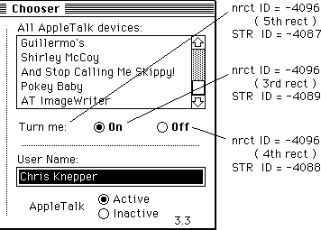
/* label for radio buttons */
resource 'STR ' (-4087) {
"Turn me:"
};
/* “off” radio button */
resource 'STR ' (-4088) {
"Off"
};
/* “on” radio button */
resource 'STR ' (-4089) {
"On"
};
resource 'nrct' (-4096) {
{
/* [1] Left Button */
{0, 0, 0, 0},
/* [2] Right Button */
{0, 0, 0, 0},
/* [3] on Radio Button */
{114, 260, 130, 320},
/* [4] off Radio Button */
{114, 330, 130, 390},
/* [5] Label for Radio Buttons */
{114, 177, 130, 250}
}
};
If the rectangles for these items are not specified in the 'nrct' resource, then the Chooser uses default positions for these items from the Chooser’s private 'nrct' resource. These default positions are:
/* [3] on Radio Button */
{114, 272, 130, 332},
/* [4] off Radio Button */
{114, 335, 130, 395},
/* [5] Label for Radio Buttons */
{114, 170, 130, 267},
In order for the radio buttons to be displayed, the 'PACK' must call ShowControl for each of them, and pass in the corresponding ControlHandle. To turn one of the radio buttons “on” and the other “off,” the 'PACK' must call SetCtlValue. The best time to call these routines to set up the radio buttons is when the 'PACK' receives the initMsg. By showing the buttons after you have set their values, you can avoid unnecessary redrawing.
When the user clicks either of the radio buttons, the 'PACK' receives buttonMsg and objName contains a pointer to an array of ControlHandles, as explained above. The 'PACK' knows which of the radio buttons was clicked through the low-order byte of the p2 parameter. This byte contains 3 if the “on” radio button was clicked, or 4 if the “off” radio button was clicked. It is the device package’s responsibility to set or clear the radio buttons in response to the user’s action.
198: Font/DA Mover, Styled Fonts, and 'NFNT's
#198: Font/DA Mover, Styled Fonts, and 'NFNT's
See also: The Font Manager
QuickDraw
Technical Note #191—Font Names
Written by: Bryan Stearns August 1, 1988
________________________________________________________________________________
Font/DA Mover version 3.8 (shipped with System 6.0) incorporates support for
'NFNT' resources and styled font family members. This note discusses several issues concerning the arrangement of font-related resources and their IDs. It also documents the proper arrangement of font resources within the font files that Font/DA Mover uses.
________________________________________________________________________________
Most applications will not be affected by the existence of 'NFNT' resources. The remainder of this note should be of interest to you only if you are a producer of screen fonts, or if your application deals with font resources directly using the Resource Manager (for instance, a font editor). For compatibility with future changes to the Font Manager, applications should avoid directly referencing 'FONT', 'FOND', or 'NFNT' resources with Resource Manager calls; instead, QuickDraw and Font Manager calls should be used. The techniques & warnings given in Technical Note #191 still apply.
Font-related resources
The Font Manager uses several different kinds of resources:
Font-family description resources (stored as type 'FOND') contain information generic to all point sizes and styles belonging to a particular font family, as well as references to each member of that family present in its resource file. These references make up the font-association table within the 'FOND'; each entry consists of a resource ID, a point size, and style & depth information. Only those resources present in the same file as an 'FOND' should be referenced from that 'FOND's font-association table. The 'FOND's ID is its family number, and its resource name is the family name.
Font strike resources (which contain a bit image for a particular point size and style of a font) come in two flavors, 'FONT's and 'NFNT's. Font strike resources never have resource names.
'FONT' resources were the original strike resources. Their IDs are encoded from their font family number and point size [the actual equation is font_ID := (128 * family) + point_size]. Only families 0 through 255 can be encoded this way: families 256 through 511, though encodable, cause the resource ID (a 16-bit signed integer) to become negative; this runs the risk of confusion with owned resources such as those owned by desk accessories (Apple has reserved these unencodable family numbers for application-based fonts; see below.)
'NFNT' resources were first supported by the 128K ROM; their internal form is nearly identical to that of 'FONT' resources, without the limitations of the resource ID encoding scheme: their IDs can be chosen nearly at random (any positive integer greater than 1023, to prevent collision with ROM-based NFNTs; also, the ID cannot be used by any 'FONT' resource in that resource file). They can also contain multi-bit fonts for use with Macintosh II; however, Font/DA Mover version 3.8 does not support the associated 'fctb' (font color table) resource type.
Font family-name resources are also stored as resource type 'FONT', however, the resource ID encoding appears as point size zero for that family. Family name resources contain no data, but have the family name as the resource name.
They are not referenced from the family’s 'FOND's font-association table.
Family-name resources are no longer used if an 'FOND' is present for its family (the Font Manager will get the family name from the 'FOND' instead), but were required for use with the 64K ROM Font Manager, so we tolerate their presence for the time being; a future version of Font/DA Mover may do away with them entirely.
'NFNT' and 'FONT' priorities
When QuickDraw asks the Font Manager for a specific family, point size, style, and depth, the Font Manager looks for an 'FOND' for that family. If one is found, the Font Manager looks for a font-association table entry for the right point size and style (and depth, on Macintosh II). Finding one, It looks for an 'NFNT' with the ID stored in that entry. If an 'NFNT' isn’t found, it searches for an 'FONT' instead.
Thus, no 'NFNT' can ever have the same ID as an 'FONT' in the same resource file. Whenever Font/DA Mover must find a number for a new 'NFNT', it calls Unique1ID repeatedly until a number is found that is greater than 1023 and that isn’t used by either an existing 'FONT' or 'NFNT' in that file. Also, if an 'FONT' is moved into a file that happens to contain an 'NFNT' with the 'FONT's intended encoded ID, that 'FONT' will be converted to an 'NFNT' and given a new unencoded number as described above.
Styled fonts
Normally, when you specify that a style be applied to a font you’ve selected (such as Bold with Times), QuickDraw applies an algorithm when drawing characters to give you the style. For example, Bold is merely a horizontal bit-doubling effect, which gives the font a thicker (but slightly smeared) look. Italic appears as a successively-increasing horizontal offset for each scan line of each character.
On our screens, while these algorithmic effects are not perfect, they are fast, so we tolerate their rough edges. Typographically, however, they are horrible; this is evidenced when printing on devices capable of higher resolution (like the LaserWriter). That’s why we provide separate fonts in the LaserWriter for the common stylistic variations.
Though the printer can represent a particular stylistic variation well, the screen cannot. The Font Manager supports the concept of a styled font: a font designed to represent a particular style, so that “what you see” will be more like “what you get.”
How does this work in practice? When QuickDraw asks for Times, 12 point, bold, the Font Manager looks through the Times 'FOND's font-association table. It finds the entry for a Times 12 plain font resource, but before giving up and telling QuickDraw to apply the smearing effect, it looks to see if there is another 12-point entry with the style “bold” attribute set. If so, it will return this entry to QuickDraw instead, and the algorithmic effect will not be applied.
This “automatic style substitution” results in more accurate screen rendering, as well as improved printer representation (since full justification is usually done by applications, which use screen representations for deciding line breaks).
There’s a catch, though. How do we store styled fonts? 'FONT' resources use an encoding scheme for their IDs that doesn’t include style information; thus, the ID of a Times 12 'FONT' would be the same as that of any styled 12-point Times 'FONT'. We must find an alternative; as usual, there’s a wrong way and a right way. Read on.
Fonts that belong to more than one family
(Styled fonts: the wrong way)
Because Font/DA Mover hasn’t (until now) supported NFNTs, a less-than-perfect approach has been used: the styled members of a font family were given their own family name (and hence, their own 'FOND'), but both their own 'FOND' and the “plain” 'FOND' referenced the styled members. Thus, one of these “styled 'FOND's” (which often had names prefixed with style initials like “BI Helvetica Bold Italic”) contains entries to their members marked as “plain”, while the 'FOND' with the plain family name (like “Helvetica”) had references to the styled members with the appropriate style, as well as references to the other plain members (marked as plain, of course).
The drawback to this approach is that though the automatic style-substitution did work, the styled family name still shows up in Font menus. In some cases, this was desirable: the LaserWriter includes a family called “N Helvetica Narrow,” whose members are all also members of the “Helvetica” family with the “condensed” QuickDraw style. Most applications don’t include the choice of Condensed (or Extended, for that matter) in their Style menus, so users have no way of choosing this font indirectly. For this reason, Font/DA Mover 3.8 still supports 'FONT's that belong to more than one family; however, 'NFNT's are not supported in this manner.
Styled fonts stored as 'NFNT' resources (the right way)
Styled fonts should be stored as 'NFNT' resources now that Font/DA Mover supports 'NFNT's. There should be one family resource without style information in its name (no “B Times Bold”, just “Times”). Along with the other entries for plain (un-styled) font resources, its font-association table should contain entries with the appropriate QuickDraw style for the styled fonts.
The style substitution will happen automatically, and Font menus will not be bogged down with the alternate styled family names.
Summary: the correct arrangement of font resources
If you ship your own font files (either because your product is a font editor or the fonts themselves), here are the basic rules that you’ll need to follow to avoid confusing Font/DA Mover or the Font Manager. They’ll also help avoid compatibility problems with future versions of our system software.
• Each font file should contain one 'FOND' resource per family in that file.
Its font-association table should reference each other 'FONT' or 'NFNT'
resource belonging to that family in that resource file; all referenced
resources must be present in that file except for system-file 'FOND'
references to font resources in ROM.
• The font family number should be between 128 and 255 (inclusive) if any
members of the family are 'FONT's; if not (that is, all members are 'NFNT's),
the range can also include 512 through 16383. Note: These numbers apply to
fonts for use with the roman script system; fonts to be used with other
script systems (such as Kanji or Arabic) use subranges above 16383. See the
Script Manager for more information.
• If the family number is 255 or less, a font family-name resource should be
present.
• Each 'FONT' resource should have its ID encoded using its family number and
point size (as described above). 'NFNT' resources must have positive IDs
greater than 1023 that do not conflict with any 'FONT' IDs. All styled font
resources should be stored as 'NFNT's; of course, plain fonts can also be
stored as 'NFNT's.
• All of these resources should be marked purgeable (except for those
associated with the system font, but Apple will worry about those).
• It’s very important to use a Macintosh Plus (or later) system and the latest
system software when creating font files for shipment; whatever tools you
use should use the Resource Manager to add font resources to your files (as
Font/DA Mover does). We have seen cases where a font-producing company
shipped resource files that were created on a minicomputer and downloaded to
a Macintosh disk; their custom minicomputer tools created corrupt resource
maps, and they cannot be correctly modified by the Resource Manager without
corrupting them further (Font/DA Mover is able to successfully copy
resources from these files to other font files, but if you remove or copy
into the files, they become trashed). To be safe, use the latest Font/DA
Mover (currently version 3.8) to create a new font file and copy your fonts
into it before shipping this new file.
Also, a few notes about Font/DA Mover itself:
• Font/DA Mover will still create a vanilla 'FOND' whenever it moves an 'FONT'
that doesn’t have one; however, be aware that it does this only for families
that consist solely of 'FONT's and have a family-name resource; if you want
your font editor to create fonts in 'NFNT' resources, you’ll have to provide
a 'FOND' for them! Likewise, if you’re a provider of finished fonts, and you
want to ship them as 'NFNT's, you must provide a 'FOND' for each family with
an 'NFNT' in it (or Font/DA Mover and the Font Manager won’t be able to find
it!)
• Older versions of Font/DA Mover were less reliable than version 3.8;
likewise, the next version will probably be more reliable than this one.
Always use the latest Font/DA Mover (in fact, the latest system software is
generally the safest!): stress this to your users in the documentation
accompanying your font files or font editor. Of course, if you ship 'NFNT'
fonts, Font/DA Mover 3.8 (or later) is required!
Contact Apple’s Software Licensing department (AppleLink: SW.LICENSE,
MCI: 312-5360, or (408) 973-4667) for information on licensing Font/DA Mover.
• Up to (and including) version 3.8, Font/DA Mover has never tampered with
files without the user explicitly choosing to “Copy” into them or “Remove”
from them; that is, all of the conversions, renumbering, etc, are done in
the process of moving from one file to another. In the future, there may be
commands for fixing or optimizing font files in place. If you want to update
your old font files, move them into a new file with the latest Font/DA Mover.
The future
A future version of Font/DA Mover may convert 'FONT's to 'NFNT's as it moves them, and ignore family-name resources altogether. There are two good reasons to do this: there’s a performance advantage in only having 'FOND's and 'NFNT's, because AddResMenu (used to build Font menus) must currently index through all 'FONT's looking for those that might be family-name resources, and this is slow. Also, the limited range of family numbers that can be encoded (128-255) doesn’t apply to fonts consisting only of 'NFNT's, which can use the range 512 through 16383.
199: KillNBP Clarification
#199: KillNBP Clarification
See also: The AppleTalk Manager
Written by: Mark Bennett August 1, 1988
________________________________________________________________________________
This technical note clears up some confusion regarding the Name Binding Protocol KillNBP function.
________________________________________________________________________________
The description of the PKillNBP function on page 519 of Inside Macintosh Volume V is somewhat confusing. The data type of the parameter thePBptr is incorrectly given as ATPPBPtr and the pointer to the queue element from the NBP call to be aborted is incorrectly given as being passed in aKillQEl. The following is a correct description of the KillNBP function:
KillNBP function
FUNCTION PKillNBP (thePBptr: MPPPBPtr; async: BOOLEAN) : OSErr;
Parameter block
Æ 26 csCode word Always PKillNBP
Æ 28 nKillQEl pointer Pointer to queue element
200: MPW 2.0.2 Bugs
#200: MPW 2.0.2 Bugs
Written by: Dave Burnard August 1, 1988
Modified by: Andy Shebanow October 1, 1988
_______________________________________________________________________________
This Technical Note describes latest information about bugs or unexpected
“features” in the MPW C, Pascal, and Assembler products and the Toolbox and OS Interface Libraries. We intend this Note to be a complete list of all known bugs in these products, which will be updated as old bugs are fixed, or new ones appear. If you have encountered a bug or unexpected feature which is not described here, be sure to let us know. Specific code examples are useful.
The bugs described in the October 1 revision of this Note will be fixed in the 3.0 release of MPW scheduled for Fall 1988.
Changes since August 1, 1988: Corrected the description of “bug” #3 under MPW C as it is not a bug according to the definition of the C language and corrected an error in bug #2 of the Interface Libraries concerning the glue for _SlotVInstall and _SlotVRemove.
_______________________________________________________________________________
C Language
The following information applies to the C compiler and its associated libraries shipped with the 2.0.2 version of MPW.
1) A series of bugs involving floating point array elements and the +=, *=, and = operators. A similar bug was reported as fixed in MPW 2.0.2, unfortunately the fix did not apply to array elements. This bug ONLY occurs when using SANE in combination with float or double variables, it does not occur if the -mc68881 compiler option is specified or if extended variables are used. The following fragment illustrates the bugs:
main()
{
double x[2],y; /* Also fails if x,y are declared float
but succeeds if declared extended */
x[0] = 0.5;
y = 5.0;
x[0] += 2.0*y;
printf("x[0] = %f\n", x[0]);
x[0] = 0.5;
y = 5.0;
x[0] = x[0] + 2.0*y;
printf("x[0] = %f\n", x[0]);
x[0] = 0.5;
y = 5.0;
x[0] *= 2.0*y;
printf("x[0] = %f\n", x[0]);
x[0] = 0.5;
y = 5.0;
x[0] = x[0]*(2.0*y); /* Succeeds if parenthesis are removed */
printf("x[0] = %f\n", x[0]);
exit(0);
This code fragment returns the erroneous values 0.5, 0.5, 0.5, 0.5 (the correct values are 10.5,10.5, 5.0 and 5.0).
WORKAROUND: If using SANE, use extended variables in these situations.
2) Taking the address of a floating point formal parameter (function argument) to a function fails. This bug occurs when using either SANE or the -mc68881 compiler option in combination with float or double function arguments, it does not occur if the function arguments are declared extended. The following fragment illustrates two instances of this bug:
#include <Types.h>
#include <Math.h>
#include <stdio.h>
#define real float /* Fails with either float or double */
main()
{
Bug1(1.0, 2.0, 3.0);
Bug2(1.0, 2.0, 3.0);
}
Bug1 (x, y, z)
real x, y, z;
{
real *p, *q, *r;
/* Take address of arguments, assign directly */
p = &x; q = &y; r = &z;
fprintf(stderr, "Example 1: Before: %g, %g, %g\n", x, y, z);
*p = 11.0;
*q = 12.0;
*r = 13.0;
fprintf(stderr, "Example 1: After: %g, %g, %g\n", x, y, z);
}
Bug2(x, y, z)
real x, y, z;
{
fprintf(stderr, "Example 2: Bug2 Before: %g, %g, %g\n", x, y, z);
/* Take address of arguments, assign indirectly */
foo(&x, &y, &z);
fprintf(stderr, "Example 2: Bug2 After: %g, %g, %g\n", x, y, z);
}
foo(x, y, z)
real *x, *y, *z;
{
fprintf(stderr, "Example 2: foo Before: %g, %g, %g\n", *x, *y, *z);
*x = 11.0;
*y = 12.0;
*z = 13.0;
fprintf(stderr, "Example 2: foo After: %g, %g, %g\n", *x, *y, *z);
}
This is, in fact, a general problem with C compilers. The underlying reason for this problem is related to the automatic widening and narrowing of basic types performed by C compilers. For instance in C, as defined by K&R (The C Programming Language, Kernighan & Ritchie, 1978, Appendix A Sec. 7.1, p186 and Sec. 10.1, p206), variables of type char and short are widened to int before being passed as function arguments and narrowed before use inside the function. Similarly, the floating point type float is automatically widened to double before being passed. K&R notes, however, that “C converts all float actual parameters to double, so formal parameters declared float have their declarations adjusted to read double.” The value of such a formal parameter is not narrowed to the declared type of the parameter, instead the declared type is adjusted to match that of the widened value. So, in fact, the sample code above will fail if real is defined as float, even on a bug free K&R conforming compiler.
In MPW C, where float and double are widened to extended, the sample code fails for either float or double formal parameters. This can, of course, lead to additional problems if you are porting code from an environment where double was the widened floating point type (where taking the address of a double formal parameter would work as expected).
WORKAROUND: Taking the address of a function argument is not recommended; you should make a local copy in a temporary variable and take the address of the copy. If you must take the address of a floating point function argument, make sure it is declared as type extended, and the pointer is of type extended*.
3) The shift operators >> and << can sometimes produce unexpected results when applied to unsigned short and unsigned char operands. The anomaly lies in the fact that the 680x0 LSR.L and LSL.L instructions are used instead of the LSR.W and LSL.W or the LSR.B and LSL.B instructions. The following example illustrates this anomaly:
main()
{
unsigned short u, c;
short i, k;
u = 0xFFFF;
k = 8;
i = (u << k)/256;
printf("unsigned short: i = %d, %#x\n", i, i);
c = 256;
i = (u << k)/c;
printf("unsigned short: i = %d, %#x\n", i, i);
}
This code fragment returns the values -1, 0xFFFFFFFF and -1, 0xFFFFFFFF, which are the correct values as defined by the C language, however, you might be expecting 255, 0xFF and 255, 0xFF.
4) The compiler optimization flags -q (sacrifice code size for speed) and -q2 (memory locations won’t change except by explicit stores) can produce incorrect code. We have several vague descriptions of problems, and are looking for more specific examples. The following example illustrates a specific bug that occurs when using enumerated types:
badfunc(bool, i)
Boolean *bool;
int i;
{
while (true) {
if(i < 3) {
*bool = true;
if (func(1)) return;
}
if (func(i)) return;
}
}
The enumerated type here is the type used to define the values true and false in the header file Types.h. The optimizer is apparently confused by the fact that true has the char value 1, which it thinks is the same as the int value 1 to be passed to the function func(). The object code produced for the two calls to the function func() is:
...
MOVEQ #$01,D3 ; Move the constant 1 into a register
...
MOVE.B D3,(A2) ; Assign "true" to variable bool
MOVE.B D3,-(A7) ; Attempt to push integer 1 onto stack
; ERROR should be MOVE.L !!!!!
JSR *+$0002 ; JSR to func
...
MOVE.L D4,-(A7) ; Correctly push integer variable i onto stack
JSR *+$0002 ; JSR to func
...
In the first function call, the int constant 1 is passed as a byte value! Since the stack is correctly adjusted after the first call this error may go undetected (except that the called function may spot the resulting nonsensical parameter). This problem is, of course, not limited to the enumerated type defining true and false, but can occur as a side effect of any of the many enumerated types defined in the Toolbox header files.
WORKAROUND: The best solution, for now, is to avoid using the optimization flags -q and -q2 altogether.
5) The compiler flag -mc68020 (generate MC68020 instructions) generates inconsistent code when passing structures by value. Specifically, structures larger than 4 bytes that are not a multiple of 4 bytes are padded out to the nearest 4 byte multiple before being pushed onto the stack by the calling routine. Unfortunately, the called routine does not take this padding into account when accessing its function arguments. The following example illustrates this bug:
#include <Types.h>
#include <strings.h>
typedef struct /* 6 byte long structure */
{
short Temp1;
short Temp2;
short Temp3;
} TestStruct;
main()
{
TestStruct reply;
foo(reply,"Hello world.\n");
}
foo(tst ,str)
TestStruct tst;
char *str;
{
Debugger(); /* So we can look, before stepping off the cliff */
printf("%s",str);
}
Since function arguments are pushed onto the stack in left to right order in C, the pointer to the string constant "Hello world.\n" is pushed onto the stack before the padded contents of the reply structure. Thus when the called function, foo(), goes to fetch the argument str, it looks at the location just beyond where the argument tst is located. Unfortunately, since the called function does not know the structure argument was padded, it will not find the correct value for the second argument (or in the general case, any arguments following the structure).
WORKAROUND: When using the -mc68020 compiler option, either don’t pass structures larger than 4 bytes by value, or make sure all structures larger than 4 bytes are padded out to a multiple of 4 bytes.
6) Switch statements with non-integer controlling expressions can fail. The following example illustrates the problem:
#include <stdio.h>
#include <strings.h>
main()
{
unsigned short w = 1;
printf("The following test fails in MPW\n");
printf("Should switch to 1; actually got to ");
switch (w) {
case 1:
printf("1\n");
break;
case 5:
printf("5\n");
break;
case 32771:
printf("32771\n");
break;
case 32773:
printf("32773\n");
break;
default:
printf("default\n");
break;
}
}
In this example, instead of reaching case 1: in the switch statement, the default: case is reached due to the fact that the compiler generates comparison instructions based on word length values. The 1st Edition of K&R (The C Programming Language, Kernighan & Ritchie, 1978, Appendix A Sec. 9.7, p202) requires all case constants to have integer type and the controlling expression to be coerced to integer type. The 2nd Edition (ANSI) of K&R (The C Programming Language, Kernighan & Ritchie, 1988, Appendix A Sec. 9.4, p223) requires that the controlling expression and all case constants undergo “integral promotion”—promotion to int (or to unsigned int if necessary). MPW 2.0.2 C fails to promote either the controlling expression or the case constants to type int.
WORKAROUND: If the controlling expression is manually coerced to type int this example functions correctly.
7) Variable declarations inside the body of switch statements, when combined with the -g compiler flag, can cause the compiler’s code generator to abort with the message: “Code generator abort code 615.” The following example illustrates the problem:
foo(i)
int i;
{
switch (i) {
int j; /* VARIABLE DECLARATION INSIDE BODY OF SWITCH */
case 0:
j = 22 +i;
printf("INSIDE: i=%d, j=%d\n", i, j);
break;
case 1:
j = 57 -i;
printf("INSIDE: i=%d, j=%d\n", i, j);
break;
default:
j = i;
printf("INSIDE: i=%d, j=%d\n", i, j);
break;
}
}
While such a declaration is perfectly legal C, it is a bad practice (The C Programming Language, Kernighan & Ritchie, 1978, Appendix A Sec. 9.2, p201). K&R go on to point out that if the declaration of the variable contains an initializer, the initialization will NOT take place. This is also the ANSI draft C standard’s interpretation.
WORKAROUND: Since the -g option is a very useful debugging option, move the variable declaration outside the body of the switch statement.
8) Compatibility Note: Local variable declarations of the form char s[]; (as an array of unspecified length), may not behave as expected. Pre-ANSI compilers often expand such declarations into the equivalent of an extern declaration. MPW 2.0.2 C, and most modern compilers, treat this construct as the declaration of a new array, thus overriding any global declaration with the same name. In the following example
/* From file foo.c */
char s[255];
main()
{
strcpy(s, "This is one heck of a mess");
otherfunc();
}
/* From file bar.c */
otherfunc()
{
char s[];
printf("%s\n", s);
}
garbage is printed. As a local variable declaration, this declaration is incomplete since no length is specified or implied, so an ANSI C compiler will of course fail. This is obviously not a recommended programming practice, but if you are porting old C code you may encounter this usage.
WORKAROUND: ALWAYS use the declaration extern char s[]; instead.
9) Another instance where declarations of the form type s[]; (as an array of unspecified length) may not behave as expected, is as a member of a struct or union. Pre ANSI compilers often expand such declarations into the equivalent of a pointer declaration. This construct is explicitly prohibited in ANSI C structures and unions. MPW 2.0.2 C on the other hand, issues no warning and treats this construct as the declaration of an array of length zero, which occupies no space in the struct. In the following example
typedef struct ST1 {
int array1[]; /* Zero length array or Ptr to array? */
int array2[];
int array3[];
}ST1;
main()
{
ST1 s1;
int i1, i2, i3;
i1 = s1.array1[0];
i2 = s1.array2[0];
i3 = s1.array3[0];
}
the three fields of the struct ST1 are located at the same memory location, and the assignments shown will actually copy garbage into the integers, since no space was allocated for even the first element of the arrays. Unfortunately, structures containing an array of unspecified or zero length as the final member are sometimes used to indicate a structure containing a variable length array. While this may be useful, it is not tolerated by ANSI C and thus is not a recommended programming practice. However, if you are porting old C code you may encounter this usage.
WORKAROUND: ALWAYS use the declarations of the form type *s;, type (*s)[];, or type s[1] (depending on the intended meaning) in structures and unions instead.
10) The routines _SetUpA5 and _RestoreA5 described in the OS Utilities Chapter of Inside Macintosh, Volume II, are missing. Refer to Technical Note #208: Setting and Restoring A5 for two new routines which solve this problem.
11) Hint: Switch statements with large numbers of cases (over 100 or so) can trigger the appearance of the MPW Bulldozer cursor (signaling heap purging and compacting in progress), can cause “Out of memory” errors from the compiler, or at least take a very long time to compile.
WORKAROUND: Large switch statements can be split up into smaller ones to avoid these symptoms.
Pascal Language
The following information applies to the Pascal compiler and its associated libraries shipped with the 2.0.2 version of MPW.
1) The Pascal compiler generates incorrect code when accessing the elements of packed Boolean arrays with more than 32767 elements. The generated code contains an ASR.W instruction to compute the byte offset into the array, this of course fails for numbers larger than 32767 ($7FFF). The following example, which zeroes bits far beyond the end of the array itself, illustrates the error:
PROGRAM PackArrayBug;
VAR
MyBits: packed array[0..33000] of Boolean;
PROCEDURE BadCode;
VAR
i: longint;
BEGIN
for i := 0 to 33000 do
MyBits[i] := false;
END;
BEGIN
BadCode
END.
WORKAROUND: Don’t use packed Boolean arrays with more than 32767 elements.
2) The Pascal compiler fails to detect the situation where a procedure name is passed as an argument to a routine expecting a function as an argument. The following example illustrates the error:
PROGRAM FuncArgBug;
PROCEDURE ExpectsFunc(x: integer; function Visit(y1: longint;
y2: char;): Boolean);
VAR
result: Boolean;
yc: char;
BEGIN
yc := 'A';
result := Visit(x, yc);
END;
PROCEDURE FormalProc(y1: longint; y2: char;);
BEGIN
writeln(y1: 1, ' ', y2);
END;
BEGIN
ExpectsFunc(5, FormalProc);
END.
This type of problem typically leads to stack misalignment and spectacular crashes.
WORKAROUND: Make certain that Pascal routines expecting functions as arguments are indeed passed functions.
3) The -mc68881 option causes the Pascal compiler to generate incorrect code when calling external C language routines with floating point extended arguments. Apparently the compiler miscalculates the size of the extended argument so that it incorrectly removes the arguments from the stack. The following example, which can corrupt the local variables of its caller, illustrates the error:
FUNCTION E2S(f: Str255; x: extended): Str255;
VAR
dummy: integer;
i: integer;
t: Str255;
FUNCTION sprintf(str: Ptr; fmt: Ptr; x: extended): integer; C; EXTERNAL;
BEGIN
t[0] := chr(0);
f[ord(f[0]) +1] := chr(0);
dummy := sprintf(@t[1], @f[1], x);
i := 0;
repeat
i := i+1;
until ((t[i] = chr(0)) or (i > 254));
t[0] := chr(i);
E2S := t;
END.
The relevant portions of the generated code are:
LINK A6,#$FDF0 ; LINK for local vars
MOVEM.L D6/D7,-(A7) ; Save Registers used here
...
...
LEA $FF00(A6),A0 ; Get address of extended var
MOVE.L -(A0),-(A7) ; Push extended onto stack
MOVE.L -(A0),-(A7)
MOVE.L -(A0),-(A7)
PEA $FF01(A6) ; Push address of format str
PEA $FDF1(A6) ; Push address of target str
JSR *+$0002 ; JSR to sprintf
LEA $0012(A7),A7 ; Pop args off stack
; (SHOULD pop off $14 bytes!)
MOVE.W D0,D6 ; Save function result
...
...
MOVEM.L (A7)+,D6/D7 ; Restore registers used here
; (Now they've been corrupted!)
UNLK A6 ; Correctly restores A7
MOVEA.L (A7)+,A0
ADDQ.W #$8,A7
JMP (A0) ; JUMP back to caller
Notice that this code would have succeeded if the routine had not used the D6 and D7 registers for storage, and then restored them (incorrectly) before returning.
WORKAROUND: When calling such a routine with the -mc68881 option, isolate the call in a small subroutine or function that has no local variables, so that registers will not need to be saved and restored.
4) The {$SC+} compiler flag for short circuiting AND and OR operators can sometimes produce incorrect code. The following example does not work if {$SC+} has been used:
USES
Memtypes,QuickDraw,OSIntf,ToolIntf,PackIntf;
VAR
b1,b2,b3 : BOOLEAN;
Begin
b1 := false;
b2 := true;
b3 := true;
if not (b1 and b2) and b3 then
SysBeep(40);
End.
WORKAROUND: Don’t use the {$SC+} compiler flag.
5) The Pascal compiler generates incorrect overflow checking code for longint valued arguments to the Odd function. The generated code contains a signed divide (DIVS) by 1 followed by a TRAPV, thus the overflow flag is set for values greater than $7FFF. The following example will fail with a CHK exception, unless the {$OV+} directive is removed:
{$OV+}
PROGRAM PascalOdd;
VAR
IsOdd: Boolean;
longval: LONGINT;
BEGIN
longval := 123456;
IsOdd := Odd(longval);
END.
Workaround: Don’t use the {$OV+} compiler flag if you pass longint values to the Odd function.
6) The Pascal compiler generates incorrect code when functions with RECORD type are used as the object of a WITH statement. This will only occur if the function is called at a level below the main program, and if the length of the RECORD type is 4 bytes or less. The generated code often contains an LEA (A7)+,an instruction, which is of course illegal. The following example demonstrates this unusual situation:
PROGRAM PasRecordValFuncBug;
TYPE
OurRecord =
RECORD
a: Integer;
END;
FUNCTION RecordValuedFunction: OurRecord;
BEGIN
END;
PROCEDURE ContainsBadCode;
BEGIN
WITH RecordValuedFunction DO BEGIN { This usage bad code. }
a:=a;
END;
END;
BEGIN { PasRecordValFuncBug }
ContainsBadCode;
WITH RecordValuedFunction DO BEGIN { This usage is okay. }
a:=a;
END;
END. { PasRecordValFuncBug }
WORKAROUND: Don’t use RECORD valued functions as the object of WITH statements.
Assembly Language
The following information applies to the Assembler and its associated libraries shipped with the 2.0.2 version of MPW.
1) There are no known outstanding bugs in the MPW Assembler.
Interface Libraries
The following information applies to the Toolbox and OS interface libraries shipped with the 2.0.2 version of MPW.
1) The glue for the Device Manager call GetDCtlValue [Not in ROM] described in Inside Macintosh, Volume III, is incorrect and will return an incorrect value for the handle to the driver’s device control entry. The following is a corrected version of the erroneous glue found in the library file Interface.o:
;-----------------------------------------------------
;FUNCTION GetDCtlEntry(refNum: Integer) : DCtlHandle;
;-----------------------------------------------------
GetDCtlEntry PROC EXPORT
MOVEA.L (SP)+,A0 ;Get the return address
MOVE.W (SP)+,D0 ;Get the refNum
ADDQ.W #$1,D0 ;Change to a
NEG.W D0 ; Unit Number
;===> LSR.W #$2,D0 ;==Shift in wrong direction!
LSL.W #$2,D0 ;Times 4 bytes/entry
MOVEA.L UTableBase,A1 ;Get address of unit table
MOVE.L (A1,D0.W),(SP) ;Get the DCtlHandle
JMP (A0) ;And go home
This error will affect C, Pascal, and assembly language users.
WORKAROUND: Use the corrected glue for GetDCtlValue.
2) The glue for the register-based Vertical Retrace Manager calls _SlotVInstall and _SlotVRemove described in Inside Macintosh, Volume V, is incorrect. The following are corrected versions of the erroneous glue for these routines found in the library file Interface.o:
;-----------------------------------------------------------------------
;FUNCTION SlotVInstall(vblTaskPtr: QElemPtr; theSlot: Integer): OSErr;
;-----------------------------------------------------------------------
SlotVInstall PROC EXPORT
MOVEA.L (A7)+,A1 ; save return address
MOVE.W (A7)+,D0 ; the slot number
MOVEA.L (A7)+,A0 ; the VBL task ptr
_SlotVInstall
MOVE.W D0,(A7) ; save result code on stack
JMP (A1) ; return to caller
ENDPROC
;----------------------------------------------------------------------
;FUNCTION SlotVRemove(vblTaskPtr: QElemPtr; theSlot: Integer): OSErr;
;----------------------------------------------------------------------
SlotVRemove PROC EXPORT
MOVEA.L (A7)+,A1 ; save return address
MOVE.W (A7)+,D0 ; the slot number
MOVEA.L (A7)+,A0 ; the VBL task ptr
_SlotVRemove
MOVE.W D0,(A7) ; save result code on stack
JMP (A1) ; return to caller
ENDPROC
These errors will affect C, Pascal, and assembly language users.
Workaround: Use the corrected glue for _SlotVInstall and _SlotVRemove.
3) The glue for the register based Start Manager calls _GetTimeout and _SetTimeout described in Inside Macintosh, Volume V, is incorrect . The following are corrected versions of the erroneous glue for these routines found in the library file Interface.o:
;-----------------------------------------------------------------------
;PROCEDURE GetTimeout(VAR count: INTEGER);
;-----------------------------------------------------------------------
GetTimeout PROC EXPORT
;===> CLR.W -(A7) ;===OOPS, selector in A0 not on stack
SUBA.L A0,A0 ;Put selector in A0, i.e. 0
_InternalWait
MOVEA.L (A7)+,A1 ;Pop return address into A1
MOVEA.L (A7)+,A0 ;Pop location for VAR count
MOVE.W D0,(A0) ;Stuff returned value into count
JMP (A1) ;And go home
;----------------------------------------------------------------------
; PROCEDURE SetTimeout(count: INTEGER);
;----------------------------------------------------------------------
SetTimeout PROC EXPORT
MOVEA.L (A7)+,A1 ;Pop return address into A1
MOVE.W (A7),D0 ;Move count parameter into D0
;===> MOVE.W #$0001,(A7) ;===OOPS, selector in A0 not on stack
MOVEA.W #$0001,A0 ;Put selector in A0
_InternalWait
JMP (A1) ;And go home
These errors will affect C, Pascal, and assembly language users.
WORKAROUND: Use the corrected glue for _GetTimeout and _SetTimeout.
201: ReadPacket Clarification
#201: ReadPacket Clarification
See also: The AppleTalk Manager
Written by: Mark Bennett August 1, 1988
________________________________________________________________________________
This technical note clears up some confusion concerning the low-level function ReadPacket. This function is called by protocol handlers and socket listeners.
________________________________________________________________________________
The documentation for ReadPacket on page 327 of Inside Macintosh Volume II states that MC680X0 register D3 should be tested to determine if there was an error condition. This is incorrect. D3 merely reflects the number of bytes left to be read and could be zero even though an error occurred. The correct test for an error condition after calling either ReadPacket and ReadRest is the Z
(Zero) bit, which will be set if no error was detected and clear otherwise.
202: Resetting the Event Mask
#202: Resetting the Event Mask
See also: Inside Macintosh, Volume II, The OS Event Manager
Written by: Chris Knepper August 1, 1988
Revised by: Chris Knepper December 1988
________________________________________________________________________________
As of System 4.2 and Finder 6.0, applications which alter the event mask must now restore the original event mask when quitting.
Changes since August 1, 1988: Added a related MultiFinder anomaly.
________________________________________________________________________________
In most cases, applications should not modify the system event mask, which means they should avoid calling SetEventMask and not alter the low-memory global SysEvtMask. Modifying the event mask is of no use to most applications, and the only situation in which an application might need to modify it is to detect key-up events. Only those developers creating applications which must detect key-up events need to know the information presented in this Technical Note. Other developers should avoid altering the system event mask at all costs.
Since the system event mask normally prevents key-up events from being posted, those applications which need to detect key-up events call SetEventMask during initialization to enable key-up events. This process might be as follows:
myMask := EveryEvent;
SetEventMask(myMask);
Applications which make this call during initialization, must save the event mask prior to calling SetEventMask and restore the event mask when quitting. Given the following definitions and declarations in MPW Pascal:
CONST SysEvtMask = $144;
TYPE IntPtr = ^INTEGER;
VAR saveMask: INTEGER;
MaskPtr: IntPtr;
you save the event mask as follows:
{ set up our event mask pointer }
MaskPtr := IntPtr(SysEvtMask);
{ save the event mask }
saveMask := MaskPtr^;
and restore the event mask as follows:
{ restore the event mask }
MaskPtr^ := saveMask;
Finder Anomaly
When MultiFinder is disabled, users will notice a strange behavior in the Finder (versions 6.0 and later) after quitting applications which fail to restore the event mask. If an application failed to restore the event mask when quitting and had set the event mask to mask out mouse-up events, all mouse-up events would continue to be masked out, and the user would notice that the Finder no longer recognizes double clicks.
MultiFinder Anomaly
With the current Macintosh architecture, the interrupt handlers which service hardware interrupts call _PostEvent to post events in the event queue, so events are inserted in the queue unless they are masked out by SysEvtMask. If an event is masked out by SysEvtMask, then _PostEvent returns a evtNotEnb error and does not insert the event in the queue.
Applications normally retrieve events which have been successfully posted to the event queue by calling _GetNextEvent or _WaitNextEvent. If the event being retrieved is not masked out by the event mask (mask) which is supplied to these routines, then the routines will return TRUE.
Under MultiFinder, SysEvtMask is an application-specific global variable which is switched during context switches; therefore, under MultiFinder, if an application must alter SysEvtMask, it must also be prepared to handle all events, even those which normally would be masked out by SysEvtMask.
This anomaly occurs when MultiFinder switches out SysEvtMask during a “minor switch” (i.e., switching from foreground to background to service background applications). Interrupt service routines operating at interrupt time call _PostEvent to post events, and _PostEvent masks out events using the mask in SysEvtMask to determine whether or not to post the event. This scheme means that events are posted as they occur, regardless of whether the current value of SysEvtMask belongs to the foreground application or a background application; therefore, it is possible for the event queue to not contain key-up events, even though the foreground application enabled them, because the background application could mask them out.
A future version of the System Software will account for this problem by using the foreground application’s event mask when events are posted (even if a background application is running when the interrupt service routine is called).
203: Don’t Abuse the Managers
#203: Don’t Abuse the Managers
See also: The Resource Manager
TextEdit
The List Manager
The Dialog Manager
Technical Note #141–Maximum Number of Resources in a File
Technical Note #34—User Items in Dialogs
Written by: Bo3b Johnson August 1, 1988
________________________________________________________________________________
When using the various pieces of the Macintosh operating system there is a temptation to try to stretch the built-in Managers too far. Developers should be aware of the intended purpose of the various Managers and beware of using them for things that they were not designed to handle. If extended beyond their design goals, they will become slow and unwieldy.
________________________________________________________________________________
Managers to avoid abusing, and the type of abuse:
1) The Resource Manager is not a database.
2) The TextEdit package is not a word processor.
3) The List Manager is not a spreadsheet.
4) The Dialog Manager is not a user interface.
1) No free database
After using the Resource Manager for a short time, its virtues become apparent: it is very flexible, it is easy to use, it gives disk based I/O with no extra calls, data can be extracted by either name or ID number, and the data is stored transparently so the caller can pretend the data is always available in a virtual memory fashion. With such wide ranging advantages, it would seem that the Resource Manager should be used for everything. It should be apparent that the TANSTAAFL (There Ain’t No Such Thing As A Free Lunch) philosophy applies to the Resource Manager as well. If overextended, the Resource Manager will become slow and unusable.
The Resource Manager is not a database, nor is it a good way to store user data. Although it can be used to store very small amounts of data, such as configuration data, and features some of the same characteristics of databases in general, the Resource Manager is a specialized tool designed specifically for the types of things that the Macintosh System needs. Its main virtue for system use is that a large variety of data can be stored on disk, and accessed when needed. This is a primitive form of virtual memory which extends the power of the system beyond what the RAM supplies. Remembering that the Resource Manager was written in an era of 128K RAM, it should be apparent that it is optimized to use as little RAM as possible.
The Resource Manager uses a simple data structure for accessing the data in the file. Examining the Resource Manager file format can show some of the tradeoffs expected. For instance, there is a linearly accessed table which describes all of the possible resource types that are in the current file. Without too much thought it should be apparent that if a file is created with thousands of different resource types then access to those resources will be slow. The reason? Each access requires scanning a linear array. There is no hashing technique used on the resource types.
There is a similar linear table for the resource IDs themselves. Based on the previous discussion it should also be apparent that if there are thousands of resources of a specific type that the access time will become much larger. It will be imperceptible on a single access of a resource, but for thousands of accesses to the resource file the time spent traversing the linear list will impact the overall speed of the program. The user will not be pleased.
Increasing the slowness by having too many resources as well as too many types will encourage the user to file the program in a ground based circular storage facility.
As stated in Technical Note #141, there is a limit of about 2700 resources in a given file due to the way the resources are stored. The performance penalty will arrive sooner, and the dividing line for where it is “too slow” is a personal preference. As a rule of thumb, if the program has the ability to store more than about 500 resources total (both IDs and types), then consideration should be given to using the Data Fork instead. In particular, if the program allows the user to create data files, do not use the Resource Manager to store the user data. The users will always overextend the use of a program. Plan for it, and avoid making obviously bad decisions. For large amounts of data, the File Manager is the place to look. If the program wants to allow simultaneous (multi-user) access with read and write privileges to data files, then do not use the Resource Manager. Because it caches data, the Resource Manager cannot be relied upon as a multi-user database – even for small amounts of data. This is because there is no way to tell the Resource Manager its cache is invalid.
Don’t be fooled by a convenient interface. The Resource Manager is not a database, nor is it a file system.
2) Words to live by
Looking at the TextEdit package can give the impression that there is a full featured word processing system built in. This is even more true now that TextEdit has been extended to support various styles and fonts. Unfortunately, appearances are deceiving, and TextEdit is not up to the job of being a word processor. Looking through the documentation shows that there is a 32,767 character limit on the text in a TextEdit record. The teLength is defined as an Integer. Another more subtle limit is the drawing limit of the rectangles surrounding the text. The destRect and viewRect both surround the complete TextEdit record. Using some rather rough approximations, there is an upper limit of about 40 pages of text that can be supported in the QuickDraw rectangle. This is quite a lot for some applications, but is not very many when looking at the job typically required of a word processor. Users do not enjoy breaking their documents into multiple pieces.
There are some other programmatic limitations, not the least of which is performance. TextEdit will become quite sluggish with large blocks of data. After 2,000-4,000 characters have been stored in a TextEdit record, the performance will have slowed to an unacceptable level. It is notable that the lineStarts array is a linear array of offsets into the edit record. If the data towards the end of the data record (high in the record) changes, the offsets have to be changed. This can involve updating thousands of Integer offsets for every character typed. If the different font, size and style information is tacked on top of all that, the performance can be expected to suffer with large blocks of text. Make no mistake about it, a full Macintosh style word processor is not an easy thing to write. TextEdit was not designed to handle large documents. It was designed as a simple field editor for the Dialog Manager, and extended from there. It was never intended to handle the large jobs expected of a word processor.
In order to perform the operations required of a word processor it is necessary to use QuickDraw extensively. The expected Macintosh selection approach with autoscrolling, typing over selected text, cut/copy/paste, and so on are best implemented using QuickDraw directly. How the text is stored internally is the primary determining factor on how the word processor will perform.
Don’t be fooled by how easy it is to implement simple editing in an application. TextEdit is not a word processor.
3) Checking lists twice
The List Manager appears to be a cell oriented display tool, allowing the easy creation of a spreadsheet interface using system calls. The rich interface to the manager makes it easy to handle arbitrary lists of data. Or does it? Although the List Manager is very flexible, easy to use, and general enough to handle graphic elements, its performance becomes unacceptable with relatively modest amounts of data. A one-dimensional list (like the files list in StdFile) can be done very well using the List Manager, but with several thousand items in the list, the performance may not be sufficient. This rarely happens in StdFile of course, and StdFile was the father of the List Manager. Here again, the tool was designed with a specific concept in mind, not to be the ultimate tool for handling any possible arbitrary data. A two-dimensional list of data will become too slow to use with an array as small as 10x100. This can hardly be expected to satisfy the user of a spreadsheet, since one “power” criteria is always the number of cells available.
Why so slow? As above, examining the data structures used by the List Manager can tell a lot about the expected performance and limitations. Notably the cellArray used to offset to each cell’s data is an old friend, a linear array of Integer offsets. It should come as no surprise that inserting or deleting data from the middle of this array is slow. In order to do those functions the List Manager has to update the Integer offsets in the array each time. It has to step through each element on the linear array of offsets which will take some time on several thousand elements.
The maxIndex field of the ListRec is also notable since it is an Integer as well. The lists of data can be no more than 32K bytes in size, which could be somewhat limiting to a user.
In addition, the List Manager is very general purpose, making it necessary for it to protect itself from bad data whenever possible. It needs to check the bounds of any rectangles it uses for example. It tries to minimize drawing out of bounds, so it checks each cell as it is drawn to be sure that it is on screen. Extra validity checks take some small, but finite, time. As the number of elements grows, the time adds up until it becomes a performance problem. Another limitation brought out by the data structure is the listDefProc, the list definition procedure. Since the List Manager is designed to be as general purpose as possible, it was necessary to add the ability to plug in a new defproc. This has ramifications for speed, however, since all drawing has to go through the bottleneck of the defproc. It won’t cost much each time, but it will add up over a large number of cells.
In order to get high performance out of this type of display, it is generally necessary to have as much precalculated as possible. This usually means having data structures which maintain themselves as much as possible, and which do not require changing anything outside of their single cell, thus avoiding impacting the entire display. Linear arrays don’t come under this category, since any change impacts all the other cell data in the list. To create a high performance spreadsheet it is usually necessary to go to the QuickDraw level inside of a standard window. It is not typically necessary to be fully general for a specific type of data, so the performance can be improved merely by knowing the type of data expected. To handle large lists of data, the data should be stored in powerful data structures, and displayed with custom routines that know the best way to draw the data.
Don’t be fooled by the richness and general purpose interface to the List Manager. The List Manager is not a spreadsheet.
4) Dialog with the devil
The Dialog Manager is very attractive. It looks like it will handle windows automatically with no programmer intervention, and can handle a wide variety of elements. It seems to handle controls, static text, editable text, and provides a way to display graphic elements as well. It must be the best possible world since the interface is very straightforward, and so much is done for the caller. At last, a superbly general purpose manager that can be used for any interface. Suddenly, reality rears its ugly head again, and it is interesting to note that this free lunch actually requires more work than doing the same job using the Window Manager, QuickDraw, TextEdit, and the Control Manager. Why? There is a hidden cost in terms of getting the Dialog Manager to do exactly the desired task. Here again, if the end result is supposed to be a simple dialog with a few controls, the Dialog Manager is suited to the job. That is what it was written to do. It was not designed as a way to handle the full interface for applications.
As an example of a hidden cost, what if the interface requires that the program be able to handle a disk inserted event? If this is part of a ModalDialog, that requires passing a special filterProc to the dialog when it is called. It is now necessary to fully understand how the proc gets called, what is legal, and what the proc is required to do. That may not be too hard, but it is time spent on something that has nothing to do with getting the job done; it is only time spent understanding how the Dialog Manager works.
Another example is adding something to a dialog which requires special setup and update routines. Here again, it is not too hard to figure out, but it is time spent trying to tell the Dialog Manager what should be done. There are literally hundreds of these special cases and tough, small problems when trying to extend a dialog past a simple interface. Hundreds of Mac programmers have wasted hundreds (thousands?) of hours finding ways to coerce the Dialog Manager into running a window in a special way.
How about adding a special control to a dialog? Seems straightforward... How about making it modeless instead? How about moving some items in the dialog off screen? How about moving an EditText item off screen? How about wanting to change the dialog template before the dialog is used? How about all of the above all at the same time?
How about skipping it and using the Window Manager instead?
There are a number of performance penalties for large dialogs as well. A dialog with 50 radio buttons will be unacceptably slow. It should be noted that the Dialog Manager cannot know the desired purpose of the buttons, so it cannot set the button, nor clear another in the same set. In order to implement the actual radio button aspect of a set of controls, it has to be done by the calling program. At this point, the only thing the Dialog Manager is handling is the creation and drawing of the controls, which can easily be done with GetNewControl and DrawControls. The Dialog Manager actually gets in the way of a more complex interface. Looking into the data structures shows that the list of items in a dialog is a linear list. Also of note is that there are no offsets to the various items! This is significant because it means that the Dialog Manager has to drive through the entire list of items for every single operation it performs. If it gets an update event it has to traverse the list. If it gets a mouse event it has to traverse the list. This cannot be expected to be fast with 100 items.
Another performance problem for some programmers is the simple drawing scheme used by the Dialog Manager. If a dialog has some items that are offscreen, they get drawn during update events anyway. The Dialog Manager will traverse the list and draw each item, whether it is on screen or not. This comes from the original design of the Dialog Manager, in that it was never intended to handle hundreds of items, or items off screen.
Some rules of thumb: If there are more than 20 items in the dialog it should be a standard window. If a complicated control like a scroll bar is needed, it should be a standard window. If there are items offscreen, it should be a standard window. If there is a pictorial indicator like a progress indicator, it should be a standard window. If it is a modeless dialog it should be a standard window. If any of the items are movable in the dialog, it should be a standard window. If it is necessary to use a filterProc to add functionality, it should be a standard window. If in doubt, it should probably be a standard window.
Handling a dialog with the Window Manager is very straightforward, much more so than trying to get around the Dialog Manager. There is the standard main event loop, and a conventional case statement to handle the events of interest. If there are controls in the window, they are easily handled with Control Manager calls. Any special items can be added to the case statement with no tricks. Overall there is more code to write, but the code is much less complex (read as: easier to figure out, easier to debug, easier to maintain). In addition, when extra items have to be added to the window, there is an easy-to-find, logical place to add the code. With the Dialog Manager there may be hidden difficulties.
The Dialog Manager is very powerful, but to use the power it is necessary to use all sorts of hooks, procs, special items, and special calling sequences. As expected, only the interfaces to these things are described in Inside Macintosh. The sequence of events is the costly part. For an example of how to add a userItem to a dialog, examine Technical Note #34. Note that it is not particularly simple to understand. Contrast that with the FillRect/FrameRect calls in the code that handles update events in a normal window.
The Window Manager is more powerful than the Dialog Manager. The Dialog Manager uses the Window Manager. The Window Manager is much more straightforward to use since it follows the conventional Macintosh event model. That model is easier to understand and easier to extend. There are more calls to make, but the overall use is much simpler. There are very few special tricks needed to make any conceivable interface in a window.
Don’t be lured in by the “powerful” Dialog Manager calls, tricky hooks, and filter procedures. The Dialog Manager is not a user interface.
204: HFS Tidbits
#204: HFS Tidbits
See also: The File Manager
Technical Note #77–HFS Ruminations
Technical Note #102–HFS Elucidations
Written by: Dave Burnard August 1, 1988
________________________________________________________________________________
This Technical Note describes two poorly documented features of the File Manager.
________________________________________________________________________________
Always Set ioFVersNum to Zero
When making a File Manager call which uses a CInfoPBRec, or the fileParam or ioParam portion of either a ParamBlockRec or an HParamBlockRec, you should set the ioFVersNum field to zero. File version numbers are an artifact of MFS and are not supported on HFS volumes or by the Resource Manager or Standard File Package. In fact, the ioFVersNum field is ignored when accessing an HFS volume. Unfortunately, when accessing an MFS volume, the version number is still used, and should be set to zero.
A little known fact that can lead to difficulties, is that many of PBHxxxx File Manager calls “fall through” to their PBxxxx counterparts when accessing MFS volumes. For example, although the interface to PBHOpen in Inside Macintosh Volume IV does not indicate that the ioFVersNum field is used, when opening a file on an MFS volume, PBHOpen falls through to PBOpen which will use the version number. Unless ioFVersNum is explicitly zeroed this can lead to unexpected “file not found” errors.
Incorrect PBSetVInfo description
The interface to PBSetVInfo as described in the File Manager chapter of Inside Macintosh Volume IV incorrectly indicates that the volume allocation clump size, the minimum number of volume allocation blocks added to a file when its length increases, can be set with the ioVClpSize field. The ioVClpSize field is actually ignored by PBSetVInfo.
205: MultiFinder Revisited - The 6.0 System Release
#205: MultiFinder Revisited: The 6.0 System Release
Revised by: Andrew Shebanow, Jim Reekes, & Dave Radcliffe April 1990
Written by: Dave Burnard August 1988
This Technical Note describes several new features found in MultiFinder 6.0 and answers a few more commonly-asked questions.
Changes since December 1989: Added a warning to the section on childDiedEvents about distribution of MultiFinder 6.1bx.
_______________________________________________________________________________
How Can I Tell If MultiFinder is Present
Once again, you cannot. Previous Technical Notes discuss how to check for the new services available with MultiFinder (i.e., _WaitNextEvent and the temporary memory allocation calls).
Currently, since an application cannot tell if MultiFinder is present, the application also cannot know how a sublaunch will behave (see Technical Note
#126, Sub(Launching) from a High-Level Language). Unfortunately, the two possible sublaunch behaviors are radically different; with MultiFinder the
_Launch trap returns to the application and without MultiFinder it does not. For most applications, however, these differences in sublaunch behavior should not matter. Hopefully, the _Launch trap will be improved in a future System Software release.
_WaitNextEvent is Always Available
In System 6.0 and later, _WaitNextEvent is present whether or not MultiFinder is present. Calling _WaitNextEvent without MultiFinder installed is virtually identical to calling it with MultiFinder installed. Your application can still “sleep” for a specified time and be notified if the cursor location is outside a specified region. The only difference when MultiFinder is not installed, is that your application is not suspended or resumed. If your application requires System 6.0 or later, DTS recommends calling _WaitNextEvent instead of
_GetNextEvent in your main event loop.
_MFTopMem
The Programmer’s Guide to MultiFinder, which is distributed through APDA, incorrectly documents _MFTopMem on page E-1. It does not return a pointer to the top of your application’s memory partition as it is documented. It does, however, return a pointer to the top of the addressable RAM space in the machine, and is documented correctly on page 3-15 of the manual. Note that earlier releases of this manual referred to this call as _MFMemTop.
MFTempHandles Are Not Handles
The MultiFinder temporary memory allocation call, _MFTempNewHandle, currently does not return a “true” Handle in the sense that it can be used interchangeably with a Handle obtained from a call to _NewHandle. Specifically, you cannot pass a Handle obtained from a call to _MFTempNewHandle to any Memory Manager routine or Toolbox routine which, in turn, passes it to the Memory Manager (either directly or indirectly). Like a true Handle, however, you can still dereference a Handle obtained from _MFTempNewHandle. You should treat a Handle from _MFTempNewHandle in the same way you would a fake Handle (i.e., a Handle not obtained from the Memory Manager—see Technical Note #117, Compatibility: How & Why). This restriction on the use of MultiFinder temporary memory may not apply in future System Software releases.
Mouse-Moved Event Confusion
There has been some confusion over the mouseRgn parameter to _WaitNextEvent, and under what circumstances it returns a mouse-moved event. Most of the confusion is caused by the word “moved.” Many applications have assumed that mouse-moved events are generated only when the mouse actually leaves the mouse region. In System 6.0 and later, _WaitNextEvent returns a mouse-moved event whenever the cursor is outside the mouse region. Thus, when an application receives a mouse-moved event, it should compute a new mouse region based upon the new cursor location before calling _WaitNextEvent again, otherwise
_WaitNextEvent continues to return mouse-moved events until the user moves the cursor back inside the mouse region or until a new mouse region is specified.
New MultiFinder Features
Open Document and Quit
In System 6.0 and later, MultiFinder adds the ability to open application documents from the Finder when the owner application is already open. For the moment, MultiFinder accomplishes this by simulating a mouse-down event in the application’s menu item for opening files. The application usually responds by calling _SFGetFile, which MultiFinder short circuits into returning the document opened in the Finder layer. This is similar to the way that MultiFinder triggers applications to quit when the user selects Shut Down or Restart from the Finder’s Special menu.
In future System Software releases, this mechanism will probably change to a more straightforward method of notifying the application that it needs to open a document or to quit.
How does MultiFinder find the Open item? By default, MultiFinder looks for a File menu with an item named Open…, Open …, Open..., etc. Of course, some applications do not have a File menu or they name their Open item something different (i.e., Open Document). To compensate for this difference, MultiFinder first looks in the application’s resource fork for 'mstr' or 'mst#' resources in the range of 100-103. An 'mstr' resource has the same format as an 'STR ' resource (a Pascal string) and contains the name of the menu or menu item for which MultiFinder should look. An 'mst#' resource has the same format as an 'STR#' resource (a list of Pascal strings) and contains a set of names for the menu or menu item for which MultiFinder should look. MultiFinder uses this same mechanism to locate the application’s Quit command. Table 1 documents these resource IDs and their meanings.
Resource ID Meaning
_____________________________________________________________________
100 Name or names of the menu containing the Quit command.
101 Name or names of the menu item or items corresponding
to the Quit command.
102 Name or names of the menu containing the Open command.
103 Name or names of the menu item or items corresponding
to the Open command.
_____________________________________________________________________
Table 1–Resource IDs and Meanings
As always, be careful to avoid any “clever” tricks that rely upon this information; MultiFinder will not always work this way.
Additions to the 'SIZE' Resource
The 'SIZE' resource has four new flags (onlyBackground, getFrontClicks, acceptChildDiedEvents, and is32BitCompatible) which communicate information about an application to MultiFinder. Figure 1 illustrates the locations of these new flags. Setting both the onlyBackground flag and the canBackground flag informs MultiFinder that an application is a “faceless background task,” that is, it has no user interface (i.e., no windows and no ports) and should only be run in the background. An example of a faceless background task is the System Software application Backgrounder.
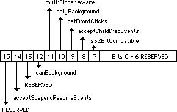
Figure 1–'SIZE' Resource Flag Bits
An application can set the getFrontClicks flag if it wants to receive the mouse-up and mouse-down events when the user brings the application’s layer to the front. Typically, the user merely wants to bring an application to the front, so it may not be desirable to move the insertion point or start drawing immediately after coming to the foreground. If getFrontClicks is set, the mouse click is passed to the application. If getFrontClicks is set and a click is made in the content region of the background application’s frontmost window, then the application receives a click in the content region of that window.
Clicking on a window that is behind another window within the same layer causes the usual event processing (i.e., the mouse-down event is visible to the application), for which the application calls _SelectWindow, to bring the window forward. This is true whether or not the bit is set. Ordinarily, these events are not passed to the application, so setting the getFrontClicks flag is usually not appropriate. The Finder, however, is one example of an application which has the getFrontClicks flag set.
The acceptChildDiedEvents flag is used by SADE to get notification when an application it launched quits or crashes. A childDiedEvent is another MultiFinder app4Evt with a message field of the event record which Figure 2 illustrates.
Figure 2–Message Field of childDiedEvent
Note: Your application does not receive childDiedEvent events unless the
user is running MultiFinder 6.1b7 (shipped with SADE 1.0) or 6.1b9
(available on AppleLink in Developer Services: Macintosh Developer
Technical Support: Tools: SADE MultiFinder). The MultiFinder which
comes with System 6.0.x (and earlier) does not send these events.
Your application should not depend on these events for its operation—
they are documented for debugger use only. In addition, developers
may not distribute MultiFinder 6.1bx to customers, even if licensed
to distribute Apple’s Macintosh System Software.
The Status parameter in the message field is a system error code if the application crashed or zero if it quit normally. The where field of the event record contains the process identifier (pid) of the quitting process. The
_Launch trap returns the pid of the newly created application in D0 if the call to _Launch succeeds (if D0 is negative, it contains an OS error code).
Note: Future versions of System Software may operate only in 32-bit mode
on machines with 68020 or newer CPUs, and applications which are
not 32-bit clean will not function correctly on these machines.
The is32BitCompatible bit will be used in future systems to warn users that running an application which does not have the bit set may crash their system, if it is running in 32-bit mode. Developers should not set this bit unless they have thoroughly tested their applications on a 32-bit system. Currently, the only 32-bit system available for testing is A/UX, so running under A/UX should be considered the “litmus test” for 32-bit compatibility until newer System Software is available. Note, however, that the is32BitCompatible bit does not have to be set to run an application under the current version of A/UX.
Further Reference:
_______________________________________________________________________________
• Programmer’s Guide to MultiFinder (APDA)
• MultiFinder Development Package (APDA)
• Technical Note #117, Compatibility: How & Why
• Technical Note #158, Frequently Asked MultiFinder Questions
• Technical Note #177, Problems with _WaitNextEvent in MultiFinder 1.0
• Technical Note #180, MultiFinder Miscellany
• Technical Note #212, The Joy Of Being 32-Bit Clean
206: Space Aliens Ate My Mouse
#206: Space Aliens Ate My Mouse (ADB–The Untold Story)
Revised by: Rich Kubota October 1991
Written by: Cameron Birse August 1988
This Technical Note explains how the Apple Desktop Bus (ADB) works on the Macintosh. This Note covers the boot process, driver installation, ADB Manager run-time behavior, use of ADB Manager calls, and answers commonly asked questions.
Changes since February 1990: Added description of the boot process to include detail on how the ADBS resource gets called by the System, added detail to 2 of the answers in the Q&A section, and added sample completion routines for the ADBOp function.
_______________________________________________________________________________
Boot Process
During the boot process, the ADB Manager finds all the devices on the bus and resolves any address conflicts. An address conflict is defined as two or more devices with the same original (default) address. A good example of this conflict is a mouse and a graphics tablet that are both at address 3 (relative device). The ADB Manager resolves these address conflicts as described in Appendix B of the ADB Specification (Apple Drawing #062-0267-E) and the Q & A section of this document.
After the address resolution, the devices which have been “moved” due to address conflicts are addressed, starting from the highest unused soft address and working down. The system now loads and executes all the resources of type 'ADBS' that match the devices on the bus (by original address).
Once all the ADB service routines are installed, the ADB transceiver (microcontroller) chip starts polling the active device. The active device is defined as the last device to send data. Since the mouse (pointing device) is the most likely device to have data ready at any given time, it defaults as the active device after startup.
The transceiver polls the active device (approximately every 10-16 milliseconds, do not depend on this interval), with a Talk R0 command. If the active device has new data, it can respond with it, and if it does not, it just times out. If any other devices have data to send, they can assert SRQ (refer to Figure 5 of the ADB Specification) at the end of the Talk R0 command. When the host detects an SRQ, it begins polling all addresses with a Talk R0 command until one returns data. That device then becomes the active device.
Devices have no way of knowing if they are the “active device”. The algorithm for a device with data ready to send is as follows:
• Wait for a Talk R0 command.
• If the Talk R0 is for you, then return the data.
• If the Talk R0 is not for you, wait for the end of the command, and
assert SRQ.
• If the Talk R0 is addressed to you, then respond with your data.
Now that a device has been polled, the host retrieves the data from the bus and calls the service routine installed for that device (service routines are installed by calling _SetADBInfo and are maintained by the ADB Manager). The system passes pointers to the service routine itself, its data area, and the data received from the device, as well as the ADB command byte that caused the routine to be called.
Normally, the service routine does not need to use the _ADBOp call to retrieve data. The ADB “philosophy” assumes that register zero of a device is the main data transmission register. Since register zero is automatically polled by the system, there should be no need to call _ADBOp from the service routine. Typically, _ADBOp is used to set modes of a device, or to interrogate the device for status—the sort of things that should not need to be done more than once or twice during normal operation.
It is important to note that ADB service routines are called at interrupt time, which means that they must follow all the rules regarding code that executes at interrupt time. (See Inside Macintosh references to VBL tasks and Device Manager I/O completion routines.)
Installing an ADB Service Routine and Optional Data Area
At boot time the system searches for 'ADBS' resources in the System file. The system matches desktop bus devices by their original address to an 'ADBS' resource (i.e., if the machine has a device that responds at address 4, the system looks for an 'ADBS' resource with ID=4). The limitation of this method is that there can only be one 'ADBS' resource for each address on the bus.
When the system finds these resources, it loads, detaches, and executes them. The System loads in each ADBS driver with a _GetResource call. If successful, the System calls _DetachResource on the handle to the ADBS driver. The registers are set up as described below, and a JSR (A0) call is made to execute the resource. It is the responsibility of the driver to dispose of itself if a failure occurs.
If there is insufficient memory in the System heap to load the resource, the ADBS will not be executed, and the System continues on to the next ADBS resource. For this reason, the size of the ADBS resource should be kept as small as possible. This condition should only occur under System 6.0.x and earlier.
A typical 'ADBS' resource allocates space in the system heap for its service routine and, optional, data area. Next, it moves the service routine into the allocated space and initializes the data area, if necessary. This code should also install an _ADBReInit preprocessing routine to deallocate the memory used by the service routine (Inside Macintosh V-367).
When the system loads and executes an 'ADBS' resource, it passes the following parameters:
A0 = Address of 'ADBS' resource in memory.
D0 = ADB device address (0-15). This address may be different than the
“original address,” since it occurs after address resolution.
D1 = ADB Device Type (same as the handler ID)
With this information, the 'ADBS' code can call _SetADBInfo to install the service routine and data area. The installer should make sure the handler ID (Device Type) is the one it expects.
Note: Previous versions of this note advised using an 'INIT' resource as an alternative method for installing ADB service routine. Apple no longer advises this method. ADB service routines should only be installed by an 'ADBS' resource located in the System file (see MacDTS Sample Code #17, TbltDrvr for an example). 'INIT' resources and application-based installation methods do not work on the Macintosh Portable, because the bus and ADB Manager may be re-initialized after waking up. Part of the re-initialization process loads and executes the 'ADBS' resources associated with the devices present on the bus. If a service routine is installed using the 'INIT' or application method, it does not get re-installed when the Macintosh Portable wakes up.
General ADB Manager Run-Time Behavior
Since the implementation of the ADB Manager on Macintosh CPUs has varied slightly, it’s useful to know what behavior to expect, and what not to depend upon. System Tools disks after 6.0.4 make the ADB Manager consistent on all Macintosh models.
Address Resolution
It is important that devices implement the collision detection and address moveability to prevent possible conflicts between devices that have the same default address.
Auto-Polling
All devices on the bus should expect, and be able to handle, being auto-polled. If they do not have a reason to respond, they should simply ignore the poll (time out). If the ADB Manager auto-polls a device which has no service routine installed, it simply throws away any data it may have gotten from the device. The Macintosh SE, SE/30, II, IIx, and IIcx implementations of the ADB Manager only auto-polls devices that have previously responded to an auto-poll, or that have requested service (by asserting SRQ). In addition, the Macintosh IIci and Portable implementations also auto-poll the last device addressed by an _ADBOp command—regardless of whether they have a service routine installed (via the _SetADBInfo call).
System Tools disks later than 6.0.4 patch the ADB Manager so that if the device does not have a service routine installed (with _SetADBInfo), it should not get auto-polled. In the unlikely case that SRQ is active and none of the devices with routines installed respond, the ADB Manager polls all devices (every address) trying to clear the SRQ. This case is why all devices on the bus should expect, and be able to handle, being auto-polled.
Note: _ADBOp commands always have priority over auto-polling and SRQ polling. Whenever there are pending _ADBOp commands in the command queue, they are executed before the host resumes auto-polling. Therefore, applications should not issue _ADBOp commands repeatedly, keeping the command queue full. Doing so results in effectively “locking up” the mouse and keyboard, which rely upon the auto-polling and SRQ polling to provide user input.
SRQ Polling
Since the ADB Manager may be polling any device on the bus when an SRQ happens, an application should not rely upon the sequence in which it polls devices. Instead, simply remember that the ADB Manager polls all devices, in turn, on the bus until SRQ is no longer asserted. After SRQ has been satisfied, the ADB Manager begins auto-polling the last device from which it got data.
ADB Manager Bugs ’n Fixes
_ADBOp Talk Command
Through System Software 6.0.4, there is a bug in the Macintosh SE, SE/30, II, IIx, and IIcx implementations of the ADB Manager where the count byte returned by an _ADBOp Talk command that timed out is not set to zero to reflect that no bytes were transferred. In addition, the two bytes following it are both $FF (these should be ignored). On the Macintosh IIci and Portable implementations, the count byte for a time out is zero, and any bytes which follow it should, of course, be ignored. This bug is fixed in System Tools disks after 6.0.4.
_ADBOp Listen Command
There is also a bug in the Macintosh SE, SE/30, II, IIx, and IIcx implementations where the number of bytes transferred was one off from the supplied count byte. On the Macintosh IIci and Macintosh Portable implementations the number of bytes transferred is what the count byte specifies. This bug is fixed in System Tools disks after 6.0.4.
There is a bug in the Macintosh Portable where all Listen commands with a data count greater than six send garbage in the seventh and eighth bytes. This bug is fixed in System Tools disks after 6.0.4.
_ADBOp Completion Routines
There is yet another bug in the Macintosh SE, SE/30, II, IIx, and IIcx implementations of the ADB Manager where the completion routines passed to the _ADBOp routine are not always called. This bug is not present in the Macintosh IIci and Macintosh Portable implementations and is fixed in System Tools disks after 6.0.4.
_ADBReInit
Inside Macintosh, Volume V states that _ADBReInit should be called with a device is added to the bus while the system is running. This statement is misleading. Do not attach devices of any kind to a Macintosh while the power is on. If there is a device that can be added to the bus via software (i.e., a device is already attached, and an additional “virtual” device can be added under software control), then it may be useful to call _ADBReInit, but it is not absolutely necessary. Devices can be added by simply installing a service routine for the appropriate address using the _SetADBInfo call.
However, if you do plan on using _ADBReInit, then you should know about the following bug with keyboard layouts ('KCHR' resources) other than the standard U.S. layout (ID = 0). Most international systems use alternate 'KCHR' resources and may permit switching between them. On these systems, when _ADBReInit is called, it does not reinstall the current 'KCHR' resource, but instead reinstalls the default U.S. 'KCHR' resource (ID = 0). This problem is evident on the Macintosh Portable, since it may call � when it wakes up. This bug is fixed in Systems Tools disks after 6.0.4.
Users can fix this problem by toggling the keyboard mapping selection in the Control Panel. From an application, one could install an _ADBReInit post-processing routine (in the low-memory variable jADBProc, see Inside Macintosh, Volume V, The Apple Desktop Bus, pp. 367-368), which reinstalls the correct 'KCHR' resource using the Script Manager _GetEnvirons and _KeyScript calls (see Technical Note #160, Key Mapping) after a call to _ADBReInit.
KeyScript(INTEGER(GetEnvirons(smKeyScript)));
This code makes a _KeyScript call with the current keyboard script (as described in the 'itlb' system resource). The 'KCHR' and 'SICN' IDs for that script are already setup in the 'itlb' resource and in the appropriate script’s local variables. For an example of a jADBProc, see MacDTS Sample Code #17, TbltDrvr.
Answers to Commonly-Asked ADB Questions
Question: I need information on developing an Apple Desktop Bus product. (Hey, that’s not a question!)
Answer: Apple’s Desktop Bus and ADB Device Specifications are a licensable product available through Software Licensing. For more information, contact:
Apple Software Licensing
Apple Computer, Inc.,
20525 Mariani Avenue, M/S 38-I
Cupertino, CA, 95014
(408) 974-4667
AppleLink: Sw.License
Internet: Sw.License@AppleLink.Apple.com
Additional ADB references are as follows:
Macintosh
Inside Macintosh, Volume V, The Apple Desktop Bus
Macintosh Family Hardware Reference
Apple II
Apple IIgs Hardware Reference Manual
Desktop Bus
Apple IIgs Firmware Reference Manual
General
Baum, Peter. “Boarding the Bus,” MacUser, July 1987, p. 142.
“An Overview of Apple Desktop Bus,”
Call A.P.P.L.E., June 1987, p. 24.
Question: I would like to extend the keyboard cable for my Macintosh. How can I do this, and how can I make the extension?
Answer: The ADB specification states the maximum length of all cables on the Desktop Bus is five meters. If you wish to use longer cables than those supplied with the ADB device, Kensington MicroWare (800) 535-4242, Monster Cable (800) 331-3755, and Data Spec (800) 431-8124 all supply them.
Disclaimer: This listing for Kensington MicroWare, Monster Cable, and Data Spec neither implies nor constitutes an endorsement by Apple Computer, Inc. If your company supplies these cables and you would like to be listed, contact us at the address in Technical Note #0.
Question: How can I use the LEDs on the Apple Extended Keyboard?
Answer: Using the LEDs on the extended keyboard involves the _ADBOp call. Once you determine that you have an extended keyboard (with _CountADBs and _GetIndADB), then register 2 of the extended keyboard has the LED toggles in the low 3 bits of the second data byte.
Therefore, you would do a Talk to register 2 to have the device send you the contents of register 2, manipulate the low three bits to set the LEDs, and then pass the modified register 2 back to the device with a Listen to register 2 command.
The Apple Extended Keyboard has an ID of 02 and a device handler ID of 02, while the Apple Standard Keyboard has an ID of 02 and a device handler ID of 01.
Note: At this point it is not clear what Apple has in mind for these LEDs, so you are using them at your own risk.
Question: I am confused about the service routines and data areas passed in the _ADBOp call. What does it all mean?
Answer: That ’s a good question.
FUNCTION ADBOp (data:Ptr; compRout:ProcPtr; buffer:Ptr;
commandNum:INTEGER) : OSErr;
data is a pointer to the “optional data area”. This area is provided for the use of the service routine (if needed).
compRout is a pointer to the completion or service routine to be called when the _ADBOp command has been completed -i.e sent to the device. Since the ADBOp function is always called asynchronously, the completion routine can be used to flag call completion. Note that the function result of ADBOp indicates whether the call was successfully placed on the command queue - not whether the command has been sent to the device.
buffer is a pointer to a Pascal string, which includes a length byte followed by zero to eight bytes of information. These are the zero to eight bytes that a particular register of an ADB device is capable of sending and receiving.
commandNum is an integer that describes the command to be sent over the bus.
There is some confusion over the way that the completion routines are called from _ADBOp. This calling may be done in one of the following three ways:
• You do not wish to have a completion routine called, as in a Listen command. Pass a NIL pointer to _ADBOp.
• You wish to call the routine already in use by the system for that address (as installed by _SetADBInfo). Call _GetADBInfo before calling _ADBOp, and pass the routine pointer returned by _GetADBInfo to _ADBOp.
• You wish to provide your own completion routine and data area for the _ADBOp call. Note that the ADBOp call is always called asynchronously. In this case, simply pass your own pointers to the _ADBOp call.
The following Pascal code demonstrates a method to synchronously call ADBOp. This routine is useful for Talk commands, where the driver needs to wait for the device to return data. CallADBOp accepts the buffer and commandNum parameters and sets up a short word variable "done" as a flag variable. Initially, the flag is set to zero. CallADBOp calls ADBOp passing a pointer to the flag and to the completion routine, "CompRoutine", in addition to the buffer and commandNum parameters. The completion routine simply changes the value of the flag to -1. After calling ADBOp, the CallADBOp function enters a while loop waiting for the flag "done" to change to some non-zero value.
PROCEDURE SetA2;
INLINE $34BC,$FFFF; { MOVE.W #$FFFF,(A2) }
{ A2 points to the variable - done - our
complflag.}
{ Upon entry, the flag is set to zero. Set
value }
{ to non-zero, -1 used here, to indicate
completion }
PROCEDURE CompRoutine; { Sample ADBOp completion routine }
BEGIN
SetA2; { Set 2 byte area pointed to by A2 to non-zero }
END;
FUNCTION CallADBOp(buffer: Ptr; cmdNum: INTEGER): OSErr;
{ Modified version of the ADBOp function which takes the same
arguments as }
{ ADBOp except for completion routine ProcPtr. Calls ADBOp
asynchronously }
{ then waits until the completion routine modifies "done" parameter. }
VAR
done: INTEGER;
temp: LONGINT;
err: OSErr;
BEGIN
done := 0;
err := ADBOp(@done, @CompRoutine, @buffer, cmdNum);
IF err = noErr THEN { request successfully queued }
REPEAT
{Delay(2, temp);} { uncomment this line as noted below }
{ For some time critical operations, the use of Delay
procedure }
{ has proven useful with Talk commands towards allowing the }
{ device to complete the command. }
UNTIL (done <> 0);
CallADBOp := err; { 0 command entered into command queue. }
{ -1 command queue full, unsuccessful
completion. }
END;
The following is the same example in C.
void SetA2(void)
= {0x34BC,0xFFFF; { MOVE.W #$FFFF,(A2) }
{ A2 points to the variable - done - our
compl flag.}
{ Upon entry, the flag is set to zero.
Set value }
{ to non-zero, -1 used here, to indicate
completion }
void CompRoutine(void) { Sample ADBOp completion routine }
{
SetA2; { Set 2 byte area pointed to by A2 to non-zero }
}
OSErr CallADBOp(Ptr buffer, short cmdNum)
{ Modified version of the ADBOp function which takes the same
arguments as }
{ ADBOp except for completion routine ProcPtr. Calls ADBOp
asynchronously }
{ then waits until the completion routine modifies "done" parameter. }
{
short done;
long temp;
OSErr err;
done = 0;
err = ADBOp(&done, CompRoutine, buffer, cmdNum);
if (err == noErr) { request successfully queued }
{
do
{ Delay(2, temp);} { uncomment this line as noted below }
{ For some time critical operations, the use of Delay
{ procedure has proven useful with Talk commands
{ towards allowing the device to complete the command. }
while (done != 0);
}
return (err}; { 0 command entered into command queue. }
{ -1 command queue full, unsuccessful completion.}
}
Remember, there should rarely be a reason to call _ADBOp. Most cases are handled by the system’s polling and service request mechanism. In the cases where it is necessary to call _ADBOp, it should not be done in a polling fashion, but as a mechanism of telling the device something (i.e., change modes, or in the case of our extended keyboard, turn on or off an LED).
Question: How can I make my Macintosh II or IIx power up automatically after a power outage?
Answer: The Macintosh II and IIx power can be turned on via the keyboard through the Apple Desktop Bus port (ADB) since the reset key is wired to pin two of the ADB connector. When you press this key, it pulls pin two to ground and initiates a power-on sequence. You can emulate this feature with a momentary switch connected to the ADB port. Note that the switch on the back panel of a Macintosh IIcx and later Macintosh II models, can be locked in the On position to automatically restart after a power outage
An idea for a power-on circuit would be to have a momentary (one-shot) relay powered by the same outlet that powers the machine and have the contacts close pin two of the ADB connector. (Without having tried this, I am concerned that you may need a delay before the relay fires to give the AC time to stabilize, etc.)
Question: I’m more than a little confused about the way ADB device address conflicts are resolved at boot time.
Answer: The method used by the host to separate and identify the devices at boot time is not well documented, so I’ll try to describe it with some clarity.
The host issues a Talk R3 command to an address. Let’s say there are two devices at that address. Both try to respond to the command, and when they try to put the random number (the address field of register 3) on the bus, one of them should detect a collision. The one that detects the collision backs off and marks itself (internally) as unmovable.
The device that did respond successfully is then told to move to a new address (the highest free address). By definition, moving to a new address means that it now responds only to commands addressed to this new address, and it ignores commands to the original address.
The host then issues another Talk R3 command to the original address. This time the second device responds without detecting a collision. When it successfully completes a Talk R3 response, it marks itself as movable. It then is told to move to a new address.
The host again issues a Talk R3 command to the original address. Since there are no more devices at that address, the bus times out, and the host moves the last device back to the original address.
At this point, the host moves up to the next address that has a device and begins the process all over.
Generally, when having trouble separating devices on the ADB, it is because the collision detection doesn’t work well. In fact, this problem is evident on Apple keyboards. The bug is that the random number returned in R3 isn’t really a random number. Since the microcontrollers on the keyboards are clocked with a crystal, they tend to generate the same “random” number, so when the system attempts to separate them with a Talk R3 command, they never detect the collision.
One possible solution is to use a low-tolerance capacitor on the reset line of the microcontroller, thereby forcing the time from power on to the time reset is negated to be fairly random. In this way, the microcontroller can start a count until it receives the first Talk R3 command, and hopefully it is a different number than another device at the same address on the bus.
If you find your device shows up at all addresses, it may be because it is responding to the move address command when it should be marked as unmovable.
Finally, if the device doesn’t show up at all, it may be because it is unable to respond to the Talk R3 command at boot time (i.e., not able to initialize itself and start watching the bus in time).
Further Reference:
_______________________________________________________________________________
• Inside Macintosh, Volume V, Apple Desktop Bus
• Inside Macintosh, Volume V, The Script Manager
• The Script Manager 2.0, Interim Chapter (DTS)
• Macintosh Family Hardware Reference, Chapters 11 & 19
• Technical Note #160, Key Mapping
• MacDTS Sample Code #17, TbltDrvr
207: Styled TextEdit Changes in System 6.0
207: Styled TextEdit Changes in System 6.0
See also: TextEdit
Technical Note #131—TextEdit Bugs
Written by: Chris Derossi August 1, 1988
______________________________________________________________________________
Some changes were made to TextEdit in System 6.0 to provide more functionality and to make life easier for the programmer using TextEdit. This note documents those changes and enhancements.
______________________________________________________________________________
TextEdit Changes
In order to improve the usability of Styled TextEdit, some routines have been changed, and some new routines have been added. These changes exist in System version 6.0 and later. If you intend to rely on any of these changes or new routines, it is important that you call SysEnvirons first to make sure you are running under System 6.0 or later.
SysEnvirons is documented in Inside Macintosh Volume V. To check for the System 6.0 TextEdit changes, you might have some code like this:
VAR
theWorld : SysEnvRec;
anErr : OSErr;
BEGIN
anErr := SysEnvirons(1, theWorld);
IF (anErr = noErr) AND (theWorld.systemVersion >= $0600) THEN …
{System 6.0 or later}
END;
Changes to Existing Routines
TEKey and TEDelete have been changed so that backspacing to the beginning of a style no longer deletes that style. Instead, the style is saved in the nullScrap to be applied to subsequently typed characters. As soon as the user has backspaced past the beginning of the style, or clicked in some other area of the text, the style is removed.
GetStylScrap now returns a handle to a valid style scrap record when called for an insertion point (selStart = selEnd). NIL is still returned when GetStylScrap is called with an old style TEHandle.
TESetStyle now accepts an additional mode, doToggle (= 32). When doToggle is specified along with doFace, TESetStyle operates like this: If a style specified in the given TextStyle parameter exists across the entire selected range, that style is removed (turned off). Otherwise, all of the selected text is set to include that style. When a particular style is set for an entire selection range, that style is said to be continuous over the selection.
For example, given that the following text is the current selection:
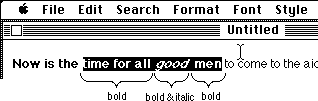
then the style bold is continuous over the selection range and the italic style is not. If TESetStyle were called with a mode of doFace + doToggle and a TextStyle tsFace field of [bold], then the resulting selection would be:
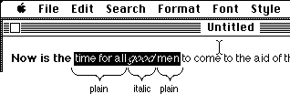
On the other hand, if TESetStyle had been called with a mode of doFace + doToggle and a TextStyle tsFace field of [italic], then the selected text would have become:
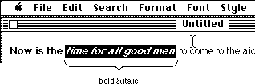
New TextEdit Routines
Some new routines have been added to TextEdit, TEContinuousStyle, SetStylScrap, TECustomHook, and TENumStyles. These routines are described in detail below.
_______________________________________________________________________________
Assembly language note: The new TextEdit routines are called via the _TEDispath trap. These are the decimal selectors for the new routines:
TEContinuousStyle 10
SetStylScrap 11
TECustomHook 12
TENumStyles 13
_______________________________________________________________________________
TEContinuousStyle
FUNCTION TEContinuousStyle(VAR mode : Integer; VAR aStyle : TextStyle;
hTE : TEHandle) : Boolean;
TEContinuousStyle gives you information about the attributes of the current selection. The mode parameter, which takes the same values as in TESetStyle, specifies which attributes should be checked. When TEContinuousStyle returns, the mode parameter indicates which of the checked attributes is continuous over the selection range and the aStyle parameter is set to reflect the continuous attributes.
TEContinuousStyle returns TRUE if all of the attributes to be checked are continuous and FALSE if not. In other words, if the mode parameter is the same before and after the call, then TEContinuousStyle returns TRUE.
For example, TEContinuousStyle is useful for marking the style menu items based on the current selection.
mode := doFace;
IF TEContinuousStyle(mode, aStyle, myTE) THEN BEGIN
{ There is at least one face that is continuous over the
selection. Note that it might be plain which is actually
the absence of all styles. }
CheckItem(styleMenu, plainItem, aStyle.tsFace = []);
CheckItem(styleMenu, boldItem, bold IN aStyle.tsFace);
CheckItem(styleMenu, italicItem, italic IN aStyle.tsFace);
...etc.
END ELSE BEGIN
{ No text face is common to the entire selection. }
CheckItem(styleMenu, plainItem, FALSE);
CheckItem(styleMenu, boldItem, FALSE);
CheckItem(styleMenu, italicItem, FALSE);
...etc.
END;
This function can also be used to determine the actual values for those attributes that are continuous for the selection. Note that a field in the TextStyle record is only valid if the corresponding bit is set in the mode variable; otherwise the field contains garbage. For example, to determine the font, face, size, and color of the current selection:
mode := doFont + doFace + doSize + doColor;
continuous := TEContinuousStyle(mode, aStyle, myTE);
IF BitAnd(mode, doFont) <> 0 THEN
{ Font for selection = aStyle.tsFont. }
ELSE
{ More than one font in selection. };
IF BitAnd(mode, doFace) <> 0 THEN
{ aStyle.tsFace contains the text faces (or plain) that are
common to the selection. }
ELSE
{ No text face is common to the entire selection. };
IF BitAnd(mode, doSize) <> 0 THEN
{ Size for selection = aStyle.tsSize. }
ELSE
{ More than one size in selection. };
IF BitAnd(mode, doColor) <> 0 THEN
{ Color for selection = aStyle.tsColor. }
ELSE
{ More than one color in selection. };
The aStyle.tsFace field is a bit tricky. When TEContinuousStyle returns a mode that contains doFace, and an aStyle.tsFace field that contains [bold, italic], it means that the selected text is all bold and all italic, but may contain other text faces as well. None of the other faces will apply to all of the selected text, or they would have been included in the tsFace field. But if the tsFace field is the empty set ([] = plain), then all of the selected text is plain.
If the current selection range is an insertion point, TEContinuousStyle returns the style information for the next character to be typed. TEContinuousStyle will always return TRUE in this case, and each field of the TextStyle record will be set if the corresponding bit in the mode parameter was set.
SetStylScrap
PROCEDURE SetStylScrap(rangeStart, rangeEnd : LongInt;
newStyles : StScrpHandle; hTE : TEHandle);
SetStylScrap performs the opposite function of GetStylScrap. The newStyles parameter is a handle to a style scrap record which will be applied over the given range of text. The current selection range is not changed. If newStyles is NIL or hTE is a handle to an old style TERecord, SetStylScrap does nothing.
SetStylScrap will terminate without error if it prematurely reaches the end of the range or if there aren't enough scrap style elements to cover the whole range. In the latter case, the last style in the scrap record will be applied to the remainder of the range.
TENumStyles
FUNCTION TENumStyles(rangeStart, rangeEnd : LongInt;
hTE : TEHandle) : LongInt;
This function returns the number of style changes contained in the given range, counting one for the start of the range. Note that this does not necessarily represent the number of unique styles for the range because some styles may be repeated. For old style TextEdit records, this function always returns 1.
This function is useful for calculating the amount of memory that would be required for a contemplated TECut or TECopy operation. Since the style scrap record is linear in nature, with one element for each style change, you can multiply the result returned by TENumStyles by SizeOf(ScrpSTElement) and add 2 to get the amount of memory that will be needed.
TECustomHook
PROCEDURE TECustomHook(which : TEHook; VAR addr : ProcPtr;
hTE : TEHandle);
This procedure lets applications customize the functions of TextEdit by setting the TextEdit bottleneck routines. The which parameter specifies which bottleneck routine to replace, and is of type TEHook (described below). When TECustomHook returns, the addr parameter contains the address of the previous bottleneck routine specified by which. This is returned so that bottleneck routines can be daisy-chained.
TYPE
TEHook = (intEOLHook, intDrawHook, intWidthHook, intHitTestHook);
The internally used fields, recalBack and recalLines now form a handle to the list of TextEdit bottleneck routines. Each TERecord has its own set of bottleneck routines to provide for maximum flexibility. The TECustomHook procedure should always be used to change the bottleneck routines instead of modifying the edit record directly.
Also, it is important to note that you should not clone a TERec. Doing so would duplicate the handle stored in recalBack and recalLines. When one of the TextEdit records was disposed, the handle stored in the copy would be invalid, and TextEdit would crash.
There are four bottleneck routines, TEEOLHook, TEWidthHook, TEDrawHook, and TEHitTestHook, described individually below. When replacing these routines, note that all registers except those specified as containing return values must be preserved. Registers A3 and A4 contain a pointer and a handle to the TextEdit record respectively. Line start positions can be obtained from the lineStarts array in the edit record.
None of these bottleneck routines are called from TextBox!
TEEOLHook
This routine tests a given character and returns with the appropriate status flags set in the status register. The default action is to merely compare the character with $0D (a carriage return) and return.
On entry: D0 character to compare (byte)
A3 pointer to the TextEdit record (long)
A4 handle to the TextEdit record (long)
On exit: z flag clear if end-of-line character, set otherwise
TEWidthHook
This routine is called any time the width of various components of a line are calculated. The appropriate font, face, and size characteristics have already been set into the current port by the time this routine is called. The default action is to call Char2Pixel and return.
On entry: D0 length of text to measure (word)
D1 offset into text (word)
A0 pointer to text to measure (long)
A3 pointer to the TextEdit record (long)
A4 handle to the TextEdit record (long)
On exit: D1 width of measured text (word)
TEDrawHook
This routine is called any time the various components of a line are drawn. The appropriate font, face, and size characteristics have already been set into the current port by the time this routine is called. The default action is to call DrawText and return.
On entry: D0 offset into text (word)
D1 length of text to draw (word)
A0 pointer to text to draw (long)
A3 pointer to the TextEdit record (long)
A4 handle to the TextEdit record (long)
TEHitTestHook
This routine is called to determine the character position in a line given the horizontal offset, in pixels, from the beginning of a line. The default action is to call Pixel2Char and return. For more information, see the description of Pixel2Char in the Script Manager chapter of Inside Macintosh Volume 5.
On entry: D0 length of text to hit test (word)
D1 pixel offset from start of text (word)
A0 pointer to start of text (long)
A3 pointer to the TextEdit record (long)
A4 handle to the TextEdit record (long)
On exit: D0 pixel width to last offset (low word)
Boolean = TRUE if a character (high word)
offset corresponding to the
pixel width was found.
D1 character offset (word)
D2 Boolean = TRUE if the pixel (word)
offset falls within the left side
of the character.
TextEdit Data Structures
Figure 4 is a graphic representation of the TextEdit data structures. You should use this information only for debugging and so you understand what is going on. For reading or writing these data structures, the TextEdit routines should be used. This will help ensure future compatibility.
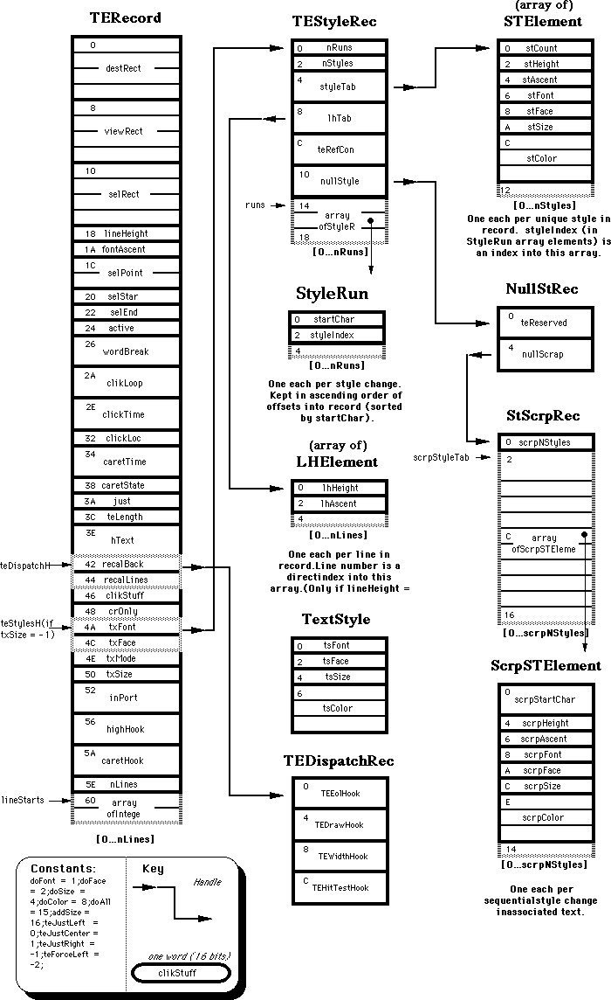
208: Setting and Restoring A5
#208: Setting and Restoring A5
Revised by: Jim Reekes June 1989
Written by: Andrew Shebanow August 1988
The routines SetupA5 and RestoreA5 do not work properly when used with some optimizing Pascal and C compilers. Two new routines, SetCurrentA5 and SetA5, are available in MPW 3.0, and they should work with any compiler.
Changes since December 1988: Removed the sample code and expanded the explanation of these two routines. The sample code in Technical Note #180 reflects these new A5 routines.
_______________________________________________________________________________
Introduction
The in-line glue routines SetupA5 and RestoreA5 are often used by completion routines, VBL tasks, and interrupt handlers written in C and Pascal to gain access to an application’s global variables. Unfortunately, these routines play fast and loose with the stack pointer.
Newer, more sophisticated, optimizing compilers (e.g., MPW C 3.0) will often leave function parameters on the stack across multiple function calls, removing the arguments for several functions with a single instruction. This significantly reduces code size and execution time, at the expense of a small amount of additional stack usage. As a side effect, this optimization breaks the SetupA5 and RestoreA5 glue.
This Technical Note describes a pair of in-line glue routines which have more functionality than SetupA5 and RestoreA5, without making assumptions about a compiler’s stack handling. These routines are provided as a standard part of the MPW Pascal 3.0 and MPW C 3.0 packages, in the files OSUtils.p and OSUtils.h, respectively.
The Old Way
The in-line code for SetupA5 was:
MOVE.L A5,-(A7) ; leave old A5 on stack: Danger Will Robinson!
MOVE.L CurrentA5,A5 ; set current A5
The in-line code for RestoreA5 was:
MOVE.L (A7)+,A5 ; pop old A5 off stack
The problem is that SetupA5 leaves the old value of A5 on the stack, and RestoreA5 assumes that the stack pointer is still valid. If the programmer mistakenly calls RestoreA5 within a called subroutine, the value that is popped off the stack and stored in A5 will be garbage. Of course, the “garbage” could be something moderately useful, like a return address.
The New, Totally Cool Way
The solution to this distressing problem is provided by two new functions in the MPW 3.0 libraries, SetCurrentA5 and SetA5. The idea behind using these two routines is to get the application’s A5, pass it to some interrupt routine, which will use some globals, and then restore it to the original A5. Before you can call SetA5, you’ll have to have the application’s real A5. This is obtained by calling SetCurrentA5 at non-interrupt time. Here’s how it should work.
An application is about to create an interrupt routine such as a VBL task, or a completion routine to be called from some asynchronous operation. To get the current A5, the application will use:
ourA5:= SetCurrentA5;
This call performs two functions. It will get the application’s A5, save it in a variable, and set A5 to the application’s low memory global, CurrentA5. The application will pass the result of SetCurrentA5 to the interrupt routine.
The first instruction that the interrupt routine executes is to set A5 to the application’s A5. To do this the interrupt routine calls:
oldA5:= SetA5(ourA5); {set A5 to the app's real A5}
{perform the interrupt task}
ignoreResult:= SetA5(oldA5); {restore A5 to the original A5}
The call to SetA5 performs two tasks. It will set A5 to the address specified and return the actual address in A5. You’ll use the original A5 address to call SetA5 when the interrupt routine is about to exit. This action will restore A5. It’s also a good idea to read Technical Note #180, which demonstrates this technique in detail.
The Interfaces
The interfaces for SetCurrentA5 and SetA5, along with their corresponding implementation as subroutine calls is:
MPW Pascal
FUNCTION SetCurrentA5 : LongInt;
INLINE $2E8D, $2A78, $0904;
FUNCTION SetA5 (newA5 : LongInt) : LongInt;
INLINE $2F4D, $0004, $2A5F;
MPW C
pascal long SetCurrentA5(void);
{ 0x2E8D, 0x2A78, 0x0904 };
pascal long SetA5 (long newA5) =
{ 0x2F4D, 0x0004, 0x2A5F };
Assembly Language
The following assembly-language version is for those of you who are not using a compiler capable of handling multiple word in-line functions, such as MPW C 2.0.2.
SetCurrentA5 MOVE.L A5,4(A7) ; store old A5 as function result
MOVE.L currentA5,A5 ; set A5 to low memory global
RTS
SetA5 MOVE.L (A7)+,A0 ; save return address
MOVE.L A5,4(A7) ; store old A5 as function result
MOVE.L (A7)+,A5 ; set A5 to passed value
JMP (A0)
A Special Note
Many optimizing compilers, including the MPW C and Pascal compilers, may put the address of a global variable (i.e., a large array or record) into a register before your call to SetCurrentA5 or SetA5. If this happens, incorrect references to your global data may be generated. To avoid this problem, you can divide your completion routine into two separate routines: one to set up and restore A5 and one to do the actual completion work. Refer to Technical Note #180 and the following code sample for getting the application’s A5 while in an interrupt routine. The routines below will be called at interrupt time and must all be in the same code segment; otherwise, jump table references, which use A5, are required.
void DoCompletionRoutine(ParmBlkPtr pb, OSErr result)
{
aGlobal = -1; /* do some work */
}
pascal void MyCompletionRoutine
/* This is the actual completion routine that will be called. */
/* There are two assembly routines not shown, GetOurA5 and */
/* GetPBPtr. The application's A5 had been saved in front of */
/* the ParmBlk, which is pointed to in A0. The assembly */
/* routine GetOurA5 obtains A5 that was stored in front of the pb */
/* by the application. This technique is used in Tech Note 180. */
/* All of these routines must be within the same code segment. */
{
long oldA5;
oldA5 = SetA5(GetOurA5); /* set to our A5 */
DoCompletionRoutine(GetPBPtr,result); /* pbPtr is in A0 */
(void) SetA5(oldA5); /* restore previous A5 */
}
We recommend that you switch over to the new routines as soon as possible, no matter what development system you use.
Further Reference:
_______________________________________________________________________________
• Inside Macintosh, Volume V-1, Compatibility Guidelines
• Technical Note #135, Getting Through CUSToms
• Technical Note #180, MultiFinder Miscellanea
209: High Sierra & ISO 9660 CD ROM Formats
#209: High Sierra & ISO 9660 CD ROM Formats
See also: AppleCD SC Developers Guide
Written by: Brian Bechtel August 1, 1988
________________________________________________________________________________
What’s Wrong with my High Sierra Disc?
________________________________________________________________________________
Generally, if a Macintosh has problems with a High Sierra disc, it’s because the disc in question doesn’t really conform to the High Sierra specification. There are actually two specifications of the High Sierra format:
The Paper 28 May 1986 Working Paper for Information Processing — Volume and File Structure of Compact Read Only Optical Discs for Information Interchange
(known as the “High Sierra” specification.) We’ll call discs conforming to this standard “High Sierra” discs.
The Paper ISO 9660 — Volume and File Structure of CDROM for Information Interchange (known as the “ISO 9660” specification.) We’ll call discs conforming to this standard “ISO” discs.
The two formats are identical in content; some fields have moved around enough to make the two formats require separate processing. Most discs pressed before 1988 are in the High Sierra format. This was the de facto standard while the international standard was being established. It appears that most discs pressed in the future will be in the ISO format.
Both standards require that you store information used to access files in two formats; least significant byte first (lsb) order (i.e. the hex number $1234 is stored in memory as $34 $12) and most significant byte first (msb) order (i.e. the hex number $1234 is stored in memory as $12 $34.) The 6502, 8088, 80286, and 80386 CPUs use least significant byte first order; the 68000 and 68020 use most significant byte first order.
Some of the early systems which allowed you to create High Sierra or ISO discs contained errors in the build process such that the discs didn’t fully conform to the standard. In most of the cases we’ve seen here at Apple, one of the fields in the Primary Volume Descriptor was incorrect.
Some typical bugs:
• The path table size doesn’t agree between the lsb and msb fields.
• The path table pointed at by the lsb fields doesn’t contain the same data as
the path table pointed at by the msb fields.
• The Standard Identifier field doesn’t contain “CDROM” (for High Sierra
format) or “CD001” (for ISO format.)
• The Volume descriptor version is not equal to 1.
• The File Structure Version should be 1. We allow 0, since this is a minor
bug, but the correct value should be 1.
If you have a disc that you believe is in High Sierra or ISO format and the Macintosh rejects it, try the following.
1) First check to see if the files Foreign File Access, High Sierra File Access,
and ISO 9660 File Access are all in your system folder. If they aren’t
there, you need to install them, either by using our Installer or by
dragging them from the floppy that comes with the Apple CD SC drive.
2) Acquire the Validator program from AppleLink or Macintosh Developer
Technical Support. Run the program, and it will tell you if it finds
problems with the primary volume descriptor.
210: The Desktop file’s Outer Limits
#210: The Desktop file’s Outer Limits
See also: Inside Macintosh, The Finder Interface, III-10
Inside Macintosh, The Finder Interface, IV-243
Technical Note #29 — Resources Contained in the Desktop File
Technical Note #48 — Bundles
Technical Note #141 — Maximum Number of Resources in a File
Written by: Cameron Birse August 1, 1988
________________________________________________________________________________
There is a limit to the number of applications/files that the Finder can “see” on a single volume. This limitation is imposed by the Desktop file. The Desktop file is a resource file that the Finder uses to keep track of information about files and applications, including Finder file comments (Get Info comments), and how these files and applications relate to each other.
Because the Desktop file is a resource file, the maximum number of resources it may contain is currently 2727 (refer to Technical Note #141). To illustrate this limitation of the Desktop file, here are some example applications and how their entries currently affect the Desktop file.
• The Finder puts a single resource into the Desktop file (the Finder is not
on the disk).
• MacWrite puts 10 resources into the Desktop file.
• MacPaint puts 9 resources into the Desktop file.
• MacDraw puts 8 resources into the Desktop file.
• MacWrite and MacPaint together put 20 resources into the Desktop file.
• MacWrite and MacDraw together put 19 resources into the Desktop file.
• A generic application (no BNDL resource) or a file without any Finder file
comments does not put any resources into the Desktop file.
• Finder file comments put a single resource into the Desktop file.
NOTE: Both the maximum number of resources in a file, including the Desktop file, as well as the number of resources the above examples put into the Desktop file could change in the future.
As you can see, it is difficult to accurately predict how many applications/files will fit on any single volume. Clearly, the more information an application or file carries with it, the larger its “entry” in the Desktop file. This is normally not a problem, but with the advent of very large capacity media, it is possible to reach this limitation by creating a single volume with too many applications/files.
211: Palette Manager Changes in System 6.0.2
#211: Palette Manager Changes in System 6.0.2
See also: Inside Macintosh: The Palette Manager
Written by: Guillermo Ortiz October 1, 1988
________________________________________________________________________________
This Technical Note describes the changes and enhancements to the Palette Manager in System Software 6.0.2 and future versions.
________________________________________________________________________________
Application Palette
Applications now have the ability to define a default palette for the system to use when it needs to define the color environment (i.e., when it creates a color window without an associated palette or displays a dialog box).
The application palette feature is especially cool in cases where a color application uses old-style dialogs and alerts because without an application palette, the system will use the default palette to define the color environment. Since the system uses the default palette, the color environment may change (will change in 16-color mode) to cause some “cosmic” colors to appear in the active window. Defining a default application palette with two colors, black and white, solves this problem.
If the system needs a palette to define a color environment, it looks in the resource fork of the application for the 'pltt' ID = 0 resource and uses the palette which it contains. If the system cannot find this resource in the application’s resource fork, it will use its own default palette (resource
'pltt' ID = 0 in the System file) if present, or, if necessary, it will use the Palette Manager’s built-in palette.
Once an application has set its color environment (by calling _InitMenus, or
_InitPalettes in weird instances when there are no menus) it can find the default palette by calling GetPalette ( WindowPtr (-1) ) or change the default palette by calling SetPalette ( WindowPtr (-1), newDefPltt, true ). Note that the initialization of the Palette Manager with a call to _InitMenus is contrary to the way Inside Macintosh, Volume V, The Palette Manager documents it.
One Palette, Many Ports
You can now associate one palette with many CGrafPort and CWindow records, thus simplifying the use of a single palette with multiple ports and windows; System Software 6.0 and earlier require copies of the palette to use it with different windows.
Although this ability to associate one palette with multiple ports and windows will allow the use of calls like _PmForeColor and _PmBackColor, calling
_ActivatePalette with an off-screen port does nothing, and as a result, calling it with an off-screen port will associate the palette with the port but will not cause any change in the color environment.
One important implication of this feature is that DisposeWindow (_DisposWindow) will not dispose of the associated palette automatically since it may be allocated to other ports or windows. The only exception to this behavior is when an application has used _GetNewCWindow to create the window, there is a
'pltt' resource with the same ID as the window, and the application has not called _GetPalette for the window.
Color Updates
System version 6.0.2 also introduces a new call, _NSetPalette, which complements _SetPalette. _NSetPalette has the same functionality as
_SetPalette, but the CUpdates parameter has been modified from a Boolean to an Integer as follows:
PROCEDURE NSetPalette (dstWindow: WindowPtr; srcPalette: PaletteHandle;
nCUpdates: INTEGER);
INLINE $AA95;
_NSetPalette changes the palette associated with dstWindow to srcPalette. It also records whether the window wants to receive updates as a result of a change to its color environment. If you want dstWindow to be updated whenever its color environment changes, set nCUpdates to pmAllUpdates. If you are only interested in updates when dstWindow is the active window, set nCUpdates to pmFgUpdates. If you are only interested in updates when dstWindow is not the active window, set nCUpdates to pmBkUpdates.
{ NSetPalette Update Constants }
pmNoUpdates = $8000; {no updates}
pmBkUpdates = $A000; {background updates only}
pmFgUpdates = $C000; {foreground updates only}
pmAllUpdates = $E000; {all updates}
_SetPalette retains its syntax and function:
PROCEDURE SetPalette (dstWindow: WindowPtr; srcPalette: PaletteHandle;
CUpdates: Boolean);
INLINE $AA95;
Note: The trap words for _NSetPalette and _SetPalette are identical.
CopyPalette
PROCEDURE CopyPalette (srcPalette, dstPalette: PaletteHandle;
srcEntry,dstEntry,dstLength: INTEGER);
INLINE $AAA1;
_CopyPalette is a utility procedure that copies dstLength entries from the source palette into the destination palette; the copy begins at srcEntry and dstEntry, respectively. _CopyPalette will resize the destination palette when the number of entries after the copy is greater than the original.
_CopyPalette does not call _ActivatePalette, so the application is free to do a number of palette changes without causing a series of intermediate changes to the color environment; the application should call _ActivatePalette after completing all palette changes.
If either of the palette handles are NIL, _CopyPalette does nothing.
212: The Joy Of Being 32-Bit Clean
#212: The Joy of Being 32-Bit Clean
Revised by: Mensch August 1991
Written by: Andrew Shebanow October 1988
What to do (and what not to do) to make your programs run under A/UX and 32 bit versions of the Macintosh System Software.
Changes since June 1989: Updated the information for system 7.0.
Changes since October 1988: Added information on writing 32-bit clean CDEFs, and updated A/UX information to reflect the capabilities of A/UX 1.1.
______________________________________________________________________________
Introduction
Some programs available today will not run in a 32-bit world. Previously the Macintosh OS ran only in a 24-bit world, where the hardware ignores the high byte of all memory addresses (including pointers and handles). Under A/UX and system software 7.0, programs can run in a 32-bit world, where the entire address is significant. This Technical Note presents guidelines which you should follow to make your program work in the 32-bit world.
Note: Much of the information presented here has already been discussed in
one or more of the documents referenced at the end of this Note, but
it is being repeated here because of the importance of the subject
matter.
Keep in mind that the rules presented here are not graven in stone. Although you may find it necessary to break some of these rules to achieve specific functionality in your program, it is important to remember that in doing so, your application may break in 32 bit environments. Keeping your program compatible is your responsibility as well as Apple’s.
General Rules
The following are some general rules that you should follow to make your program more robust:
• Always code defensively. Check the error code after you make a call to
the Toolbox. Make sure your handles and pointers are not NIL. Do not
assume that calls will always succeed. See Technical Note #117 for more
information.
• Use _SysEnvirons and _Gestalt to determine your system’s configuration.
When checking for the processor type, make allowances for newer Motorola
processors like the 68030 & 68040. See Technical Note #129 for more
information on _SysEnvirons and _Gestalt.
• Do not try to check to see if MultiFinder is active (you cannot tell
anyway); your application should work properly with and without
MultiFinder.
• Do not make assumptions about the maximum size of a piece of memory or a
resource. Do not assume that the maximum distance between two objects in
memory is less than 232 bytes. Do not store less than 32 bits for the
size of an object (e.g., PICTs) in your data structures unless you create
them.
• Call _NGetTrapAddress for any traps you use that are not available under
A/UX (i.e., SCSI Manager traps). For a complete list of traps available
under A/UX, see A/UX Toolbox: Macintosh ROM Interface.
• Always use the latest version of your development system and
documentation. Even though you do everything “correctly,” earlier
versions may have bugs or inaccuracies that could break your program.
To summarize: don’t make any assumptions, even if those assumptions are currently true. The future will change.
Hardware & CPUs
• Do not assume that you are running in the processor’s supervisor mode.
Do not use TRAP instructions or exception vectors that are reserved for
future use by Apple or Motorola. See the Compatibility Guidelines chapter
of Inside Macintosh, Volume V-1 for more information.
• Never try to bypass existing interfaces to hardware devices. Direct
hardware access is not available under A/UX. Use the Serial Driver to
talk to the SCC. Use the File Manager to manipulate disks. Use the SCSI
Manager to talk to your non-disk devices like scanners and printers. Use
QuickDraw to draw to your screen.
• Do not use timing loops. Different CPUs execute them at different speeds.
Memory Manager
Memory Manager abuse is the leading cause of death under 32-Bit operation. Here are some crucial points to remember:
• Do not set bits in master pointers directly. Use Memory Manager traps
(e.g., _HLock, _HGetState, and _HSetState) instead.
• Do not use fake handles under any circumstances. See Technical Note #117
for more information on Handle etiquette.
• When you compare master pointers, use _StripAddress to convert them to
the correct format. See the OS Utilities chapter of Inside Macintosh,
Volume V and Technical Note #213 for more information.
• Do not make assumptions about the contents of Memory Manager data
structures, including master pointers and zone headers. These structures
have changed under A/UX, and they will change again in the future.
Resource Manager
Here are some guidelines for using the Resource Manager:
• Avoid opening resource files read-only unless the resource file is on an
AppleShare volume. If another application (including DAs and other types
of code) opens (or already has open) the resource file for writing, you
could end up with a corrupted resource map. If you do open a resource
file read-only, you should load the resources you need into memory
immediately.
• Do not set resource attribute bits directly. Use the supplied
_GetResAttrs and _SetResAttrs traps.
• Do not make assumptions about the contents of Resource Manager data
structures and, especially, the resource map. Do not try to walk the
resource map.
• Follow the special procedures outlined below whenever loading and using
any resource that contains executable code.
WDEFs and CDEFs
In earlier versions of the System Software, the Window Manager and the Control Manager both stored the variant code (which defines how the window or control looks) in the high byte of the defProc field. You should use the _GetWVariant and _GetCVariant traps to get the variant code. If writing your own WDEF or CDEF, you should use the variant parameter that is passed to you.
If you are writing your own CDEF, you have to be very careful. Prior to System 7.0, there was no way to make a CDEF fully 32-bit clean, since the calcCRgns message uses the high bit of the region handle as a flag. Inside Macintosh, Volume I-331 says to “clear the high byte (not just the high bit) of the region handle before attempting to update the region.” This is wrong. You should clear just the high bit, or your code will not run under A/UX or future versions of the Macintosh OS.
The Control Manager in System 7.0 or later has a new mechanism for calculating control regions. The following two new messages have been defined:
CONST
calcCntlRgn = 10;
calcThumbRgn = 11;
Your CDEF can indicate that it handles these new messages by setting the result of your CDEF dispatching function to non-zero. Whenever the Control Manager used to call your CDEF with the calcCRgns message, it will now do the following:
IF we are in 32-bit mode
rgnHandle := Call CDEF with message calcCntlRgn OR calcThumbRgn, as appropriate
If CDEF returned 0 then call CDEF with old calcCRgns.
ELSE
call CDEF with old calcCRgns method, just like the good old days
Old CDEFs will continue to run in 24-bit mode, but they may not correctly draw in all instances (however, they will not crash).
If your program has custom CDEFs, you should update them to support the new messages (along with the old ones) as soon as possible. Supporting the new messages will allow them to work correctly today, and in the future.
Low-Memory Globals
A/UX does not support all of the low-memory globals, and future systems may provide even less support. Unfortunately, there are some things you just cannot do on a Macintosh without using low-memory globals, so it is currently impossible to avoid them entirely. Here are some guidelines:
• Avoid writing to or reading from low-memory globals unless absolutely
necessary.
• Do not use low-memory globals that are labeled private, reserved for
future use, or that are undocumented.
• Do not use low-memory globals when there is a trap or library routine
which accomplishes the same task. For example, A/UX does not have an
event queue that you can access in low memory, but it does support all
of the Event Manager traps for accessing the Event Queue (e.g.,
_GetNextEvent, _WaitNextEvent, _EventAvail).
Trap Patches
Patching traps is one of the easiest ways to break your program. It is very difficult to write a trap patch that does not make incorrect assumptions about the way things work. Many current applications patch traps unnecessarily. If a trap does not work the way you want, implement your own code instead of trying to patch the required functionality into the trap. Here are a few guidelines to follow if you absolutely must patch a trap:
• Do not assume that A5 is valid when you call the patch.
• Do not bypass the Trap Dispatcher to call traps directly. The performance
gains are small, and there may be serious side effects.
• Do not use the Memory Manager if the trap that you are patching is not
listed in “Appendix A: Routines That Move Or Purge Memory” of Inside
Macintosh X–Ref.
Make sure that any patch you do write is not a tail patch. A tail patch is a patch which looks at the results returned by the original patch and modifies them to suit its own purposes. If you call the original trap routine with a JSR instead of a JMP, you have created a tail patch.
You need to avoid tail patches because many of Apple’s System Software patches check the return address on the stack to see who called them. If you write a tail patch, you defeat these checks and may cause things to break in strange and less than wonderful ways.
Application loaded code type (stand alone) resources
If your program loads any resources that contain executable code, you should not assume that the pointer you get from the handle is 32-bit clean. Before calling any routines in any code resources you load you should call _StripAddress first to insure that the routine gets a 32-bit clean PC. Not all existing applications that load external code resources perform this operation (nor is the system gauranteed to do so before calling an INIT), so if you are writing a code resource of this type you should be sure to always call _StripAddress to clean the PC as documented in tech note #228 at the main entry point of all external routines and INITs. This particularly important if you use any PC relative addressing modes or are calling _SwapMMUMode.
Further Reference:
_______________________________________________________________________________
• Inside Macintosh, Volume V-1, Compatibility Guidelines
• Inside Macintosh, Volume VI, Compatibility Guidelines
• Inside Macintosh X–Ref
• Technical Note #2, Compatibility Guidelines
• Technical Note #117, Compatibility: Why & How
• Technical Note #129, _SysEnvirons: System 6.0 and Beyond
• Technical Note #213, _StripAddress: The Untold Story
• Technical Note #228, Use Care When Swapping MMU Mode
213: _StripAddress - The Untold Story
#213: _StripAddress: The Untold Story
Revised by: Paul Snively & Andrew Shebanow August 1990
Written by: Andrew Shebanow October 1988
Inside Macintosh, Volume V, The OS Utilities, incorrectly documents the
_StripAddress trap; this Technical Note correctly documents the trap and gives guidelines for its use.
Changes since April 1990: Added a discussion of why the _StripAddress trap should be used under certain circumstances when patching traps.
_______________________________________________________________________________
Don’t Believe Everything You Read
The _StripAddress trap is described in the OS Utilities chapter of Inside Macintosh, Volume V as:
FUNCTION StripAddress(theAddress: LONGINT): LONGINT;
If the system is running in 24-bit mode, _StripAddress is
identical in function to the global variable Lo3Bytes: it
returns the value of the low-order three bytes of the address
passed in theAddress. If the system is in 32-bit mode, however,
_StripAddress simply passes back the address unchanged.
This description is incorrect, and it is located in the wrong chapter of Inside Macintosh (it should be in the Memory Manager chapter). The _StripAddress trap now takes a Ptr as a parameter and returns a Ptr:
FUNCTION StripAddress(theAddress: Ptr): Ptr;
The effect of _StripAddress on the passed address depends on the native (bootup) mode the operating system uses, and not on the current mode. The following chart shows the results of _StripAddress in all of its configurations:
Operating System 24-Bit MMUMode 32-Bit MMUMode
____________________________________________________________________________
System Software < 7.0 masked with Lo3Bytes masked with Lo3Bytes
System 7.0 (24-Bit Bootup) masked with Lo3Bytes masked with Lo3Bytes
System 7.0 (32-Bit Bootup) (never in 24-bit mode) address unchanged
A/UX 1.1.1 (never in 24-bit mode) address unchanged
A/UX 2.0 (24-Bit Login) masked with Lo3Bytes masked with Lo3Bytes
A/UX 2.0 (32-Bit Login) (never in 24-bit mode) address unchanged
____________________________________________________________________________
Should I Call _StripAddress Each Time I Use An Address?
In a word, no. Twenty-four-bit addresses are not inherently dangerous—they only cause problems when you access them in 32-bit mode, so unless you are switching modes with the _SwapMMUMode trap, you rarely need to call
_StripAddress inside a “typical” application or driver. Calling _StripAddress is unnecessary in the following three cases:
Dereferencing A Pointer or A Handle
You don’t need to call _StripAddress before dereferencing a pointer or a handle unless you are switching the CPU into 32-bit mode with the _SwapMMUMode trap. After all, if this is a full-time 32-bit machine, the pointer is always a valid 32-bit address, and if it is a 24-bit machine, your addresses are valid 24-bit addresses unless you switch the machine into 32-bit mode yourself.
Comparing Pointers And Handles For Equality
As long as you don’t futz with the high bits of pointers and handles yourself
(which you cannot do safely if you want to run in 32-bit mode in any case), you should be able to compare pointers and handles for equality without doing a
_StripAddress, since the high byte always contains the same “garbage” when you are in 24-bit mode that it did when the pointer or handle was created. There is an exception to this rule, which is discussed in the “Comparing Dereferenced Handles” section later in this Note.
Performing Address Arithmetic
You do not need to call _StripAddress before performing address arithmetic, since adding or subtracting two 24-bit addresses always results in the correct 24-bit address, regardless of the high byte values. Random high byte values can cause ordered comparisons on the results of pointer arithmetic to fail, since underflow or overflow could occur, so you should never test the result of address arithmetic against a value (only against NIL or 0).
Okay, So When Do I Need To Call _StripAddress?
Ordered Address Comparison
If you need to sort by address or do any other kind of ordered address comparison, you need to call _StripAddress on each address before doing any ordered comparisons (>, <, >=, <=). Remember, even though the CPU only uses the lower 24 bits in 24-bit mode, it still uses all 32 bits when performing arithmetic operations.
Comparing Dereferenced Handles (Master Pointers)
If you want to perform any type of comparison on dereferenced handles, you need to call _StripAddress on the value first, since the Memory Manager stores its flags in the high byte of the Master Pointer on 24-bit machines, and these flags can change at any time. Of course, this implies that you need to call
_StripAddress before comparing two pointers for equality if you could be comparing against a dereferenced handle.
On Handles And Pointers Before Dereferencing in 32-Bit Mode
If you are going to switch the machine into 32-bit mode yourself, you need to call _StripAddress on all 24-bit pointers and handles that you access while in 32-bit mode. Of course, you had better not call _StripAddress on a 32-bit address (for example, a 32-bit NuBus™ slot address could generate some very nice fireworks if you strip off its high byte with _StripAddress and then try to access the “improved” address). For example, the 32-Bit QuickDraw routine
_GetPixBaseAddr returns a 32-bit address. Refer to Technical Note #277, 32-Bit QuickDraw: Version 1.2 Features, for more details about 32-Bit QuickDraw and 32-bit addressing.
Program Counter in 32-Bit Mode
This issue is described in depth in Technical Note #228, Use Care When Swapping MMU Mode, so this Note won’t go into depth here. Basically, if you are going to switch into 32-bit mode within a code resource, you need to make sure that your Program Counter (PC) contains a valid 32-bit address before you switch modes.
One not-so-obvious example of this case is a trap patch that lives in a block in the heap. If you pass the address of the block to the _SetTrapAddress trap without first calling _StripAddress on it and the patched trap is later called in 32-bit mode, bad things happen. Specifically, the high byte of the address contains Memory Manager information, so when the patched trap is called, the PC points to never-never land, making results extremely unpredictable. So if you are going to patch a trap using the address of a heap block, call _StripAddress on it first.
Filenames Passed To _OpenResFile And _OpenRFPerm
This issue is described in depth in Technical Note #232, Strip With
_OpenResFile and _OpenRFPerm. A patch to these traps calls _RecoverHandle on the string passed to these routines, which can cause crashes if _StripAddress is not called.
Whaaahh! _StripAddress Is Too Slow! How Can I Make It Faster?
If you follow the guidelines discussed in this Note, speed shouldn’t be an issue, since you are calling _StripAddress rarely, if at all. Just for the sake of argument, though, let’s say that you do call _StripAddress inside of a time-critical loop inside an interrupt routine. The solution to this problem is to cache the mask that _StripAddress uses to do its work. Here’s how:
MPW C:
long gStripAddressMask; /* our cached global mask variable */
/* you can use this macro to do a quick _StripAddress equivalent */
#define QuickStrip(ptr) ((ptr) & gStripAddressMask)
main()
{
/* do all of the usual initialization */
/* cache _StripAddress result */
gStripAddressMask = 0xffffffff;
gStripAddressMask = (long) StripAddress((Ptr) gStripAddressMask);
/* have your program do something useful here… */
}
MPW Pascal:
PROGRAM StripTease;
VAR
gStripAddressMask : LONGINT; { our cached global mask variable }
{ you can use this function to do a quick _StripAddress equivalent }
FUNCTION QuickStrip(thePtr : Ptr) : Ptr;
BEGIN
QuickStrip := Ptr(BAND(LONGINT(thePtr),gStripAddressMask));
END;
BEGIN
{ do all of the usual initialization }
{ cache _StripAddress result }
gStripAddressMask := $FFFFFFFF;
gStripAddressMask := LONGINT(StripAddress(Ptr(gStripAddressMask)));
{ have your program do something useful here… }
END.
This technique avoids the overhead of the Trap Dispatcher, works on present and future machines, and it should be fast enough for any application—just call the QuickStrip routine (macro to us C weenies) in place of _StripAddress.
Further Reference:
_______________________________________________________________________________
• Inside Macintosh, Volume V, The OS Utilities
• Technical Note #212, The Joy Of Being 32-Bit Clean
• Technical Note #228, Use Care When Swapping MMU Mode
• Technical Note #232, Strip With _OpenResFile And _OpenRFPerm
• Technical Note #275, 32-Bit QuickDraw: Version 1.2 Features
NuBus is a trademark of Texas Instruments.
214: New Resource Manager Calls
#214: New Resource Manager Calls
See also: Inside Macintosh: The Resource Manager
The File Manager
Technical Note #101: _CreateResFile and the Poor Man’s Search Path
Written by: Andrew Shebanow October 1, 1988
________________________________________________________________________________
This Technical Note describes two new Resource Manager calls that make opening and creating resource files much easier.
________________________________________________________________________________
MPW 3.0 supplies glue routines for two new Resource Manager calls which provide new, easier ways of opening and creating resource files.
The important thing about these two calls is that they allow you to pass a directory ID instead of a working directory refNum. This means that you can create a resource file without worrying about the Poor Man’s Search Path (PMSP). If you try to create a file using _CreateResFile, and there is already a resource file with the same name in the System Folder (or in any other folder that is on the PMSP’s list), the _CreateResFile call will not work because the Resource Manager thinks the resource file already exists. The all new HCreateResFile glue does not use the PMSP if you specify a non-zero directory ID.
FUNCTION HOpenResFile(vRefNum: INTEGER;
dirID: LONGINT;
fileName: Str255;
permission: SignedByte): INTEGER;
The HOpenResFile routine opens an existing resource file in the directory specified by vRefNum and dirID and it returns the refNum of the resource file. If the refNum equals –1, you should call _ResError to check for errors. This routine also lets you open a resource file without creating a working directory.
PROCEDURE HCreateResFile(vRefNum: INTEGER;
dirID: LONGINT;
fileName: Str255);
The HCreateResFile routine creates a new resource file with name fileName in the directory specified by vRefNum and dirID. You should call _ResError to check for errors.
215: “New” cdev Messages
#215: “New” cdev Messages
See also: Inside Macintosh, Volume V, The Control Panel
Written by: Mark Bennett October 1, 1988
________________________________________________________________________________
This Technical Note describes some previously undocumented messages that the Control Panel can send to a Control Panel device (cdev).
________________________________________________________________________________
The Control Panel will send messages to a Control Panel device (cdev) in response to the user selecting the Undo, Cut, Copy, Paste and Clear items of the Edit menu. It will also send a message if the cdev contains a 'CURS' =
–4064 resource. The following is a list of the previously undocumented messages, descriptions, and values:
Message Description Value
undoDev Undo selected 9
cutDev Cut selected 10
copyDev Copy selected 11
pasteDev Paste selected 12
clearDev Clear selected 13
cursorDev Cursor resource 14
The Control panel only sends the undoDev, cutDev, copyDev, pasteDev, and clearDev messages to a cdev as a result of the Desk Manager sending an edit message to it when an application calls SystemEdit (_SysEdit). Since the call to SystemEdit (_SysEdit) is triggered by a mouse-down event in the menu bar, the messages to the cdev will be sent only as a result of the user selecting the Edit menu item with the mouse and not by pressing the Command-key equivalent.
Typically, you will call _DlgCut, _DlgCopy, _DlgPaste or _DlgDelete upon receipt of the cutDev, copyDev, pasteDev, or clearDev message, passing the DialogPtr that has been passed to the cdev to the call.
To respond to Command-key equivalents of the Edit menu commands, you must check for the specific characters and modifier keys themselves, even though this is never localized. Once you determine the character to be a Command-key equivalent, you must alter the what field of the event record that has been passed to the cdev to be a nullEvent to prevent the Dialog Manager from inserting the character into the editText item of the cdev. To alter the event record, you should treat the event record parameter which is passed to the cdev as a reference. In Pascal, this means declaring the interface to the cdev as follows:
FUNCTION MyCdev(message, item, numItems, CPanelID: INTEGER
VAR theEvent: EventRecord; (* the 'NEW' way *)
cdevStorage: Handle;
CPDialog: DialogPtr) : Handle;
In C, you would do the following:
Handle MyCdev(message, item, numItems, CPanelID
theEvent, cdevStorage, CPDialog)
short message, item, numItems, CPanelID;
EventRecord *theEvent; /* the 'NEW' way */
Handle cdevStorage;
DialogPtr CPDialog;
In assembly language, it means you do not make your own copy of the event record, so you are probably already set up to change the value of the what field of the event record.
If the cdev contains a 'CURS' = –4064 resource, the Control Panel will send it a cursorDev message whenever the cursor is over the cdev part of the Control Panel’s window instead of setting the cursor to the light cross. The cdev can then set and use its own cursor. The Control Panel will handle the cursor elsewhere on the screen. The Control Panel does not examine the contents of the 'CURS' = –4064 resource.
216: AppleShare 1.1 and 2.0 Limits
#216: AppleShare 1.1 and 2.0 Limits
See also: Inside Macintosh: The AppleTalk Manager
The File Manager
Technical Note #186: PBLock/UnlockRange
Written by: Mark Bennett October 1, 1988
________________________________________________________________________________
This Technical Note describes some machine-dependent limits of current versions of AppleShare and AppleShare servers.
________________________________________________________________________________
The following chart lists some current AppleShare limits which are based upon the chosen server platform and memory configuration. The limits which otherwise might be present on a workstation are still in effect and are not affected by the workstation being logged into an AppleShare server. These limits will change in the future.
Server machine is: Server machine is:
Macintosh Plus, SE, Macintosh II with
Description of Limit or II with one Mb more than one Mb
Number of Users 25 50
Number of Locked Ranges 1000 2000
Number of Open Files 80 160
Number of Volumes 16 16
217: Where Have My Font Icons Gone?
#217: Where Have My Font Icons Gone?
Revised by: Pete “Luke” Alexander April 1991
Written by: Pete “Luke” Alexander December 1988
This Technical Note discusses why you should not link directly from your font files to the font icons provided by LaserWriter driver 5.2 and later.
Changes since December 1988: Added some useful tips and described the method required to bundle an icon to your font file.
_______________________________________________________________________________
Introduction
This Technical Note discusses why you should not directly link your font files to the font icons provided by the LaserWriter driver 5.2, and what you can do to still use these font icons. This Note applies only to PostScript® downloadable font files for use with PostScript printers, not font files which have been created by the Font/DA Mover.
In the past, it was possible to directly link your PostScript downloadable font files to the font icons provided by the LaserWriter driver. This is no longer possible, because the 'FREF' and 'ICN#' resources do not match in LaserWriter driver 5.2 and later.
Oh, But Why Change Things Now?
Apple engineering decided that they did not want developers using the font icons directly from the driver, they wanted the option to change them in the future. Due to time constraints, the original font icons were not removed from the LaserWriter driver 5.2, but the 'FREF' and 'ICN#' IDs were changed, thereby preventing developers from linking directly to the icons. Engineering has removed the font icons from LaserWriter driver 6.0 and later.
If you want to use Apple’s font icons from LaserWriter driver v5.2, you should copy them into the resource fork of your font file. Apple expects all developers to bundle their own icons with their font file.
What Do I Need To Do?
You need to do the same things you did, when you bundled your icon to your application. Although your font file is just a document, if you want your “custom icon” to appear when your application is not present, the font file needs to contain the following resources: 'BNDL', 'FREF', and 'ICN#'. Inside Macintosh, Volume III, The Finder Interface and Technical Note #48, Bundles, explain the details of bundling icons with your font files.
So, How Do I Do This From Within An Application?
To enable you application to add icons to the font file when it is created, you need to install a copy of the 'BNDL', 'FREF', and 'ICN#' resources (used by the font file to bundle it's icon to the file), into the resource fork of the application. Make sure that they do not conflict with the same resources used by the application to bundle its icon(s).
When creating a “new” font file, copy the 'BNDL', 'FREF', and 'ICN#' resources from the resource fork of the application, into the resource fork of the font file. You will also need to set the bundle bit of the font file, otherwise Finder will not realize that the file contains an icon. The font file will now be able to show it's icons, whether the application is present or not.
Conclusion
With LaserWriter driver v5.2 and later, the 'FREF' and 'ICN#' resources do not match, therefore you will need to bundle your custom font file icon within it's resource fork. If you provide the'BNDL', 'FREF', and 'ICN#' resources in the resource fork of your font file, Finder will display your custom icon for the font file, whether the application is present or not.
Further Reference:
_______________________________________________________________________________
• Inside Macintosh, Volume III, The Finder Interface
• Technical Note #48, Bundles
PostScript is a registered trademark of Adobe Systems, Incorporated.
218: New High-Level File Manager Calls
#218: New High-Level File Manager Calls
See also: Inside Macintosh, Volumes IV & V, The File Manager
Technical Note #140, Why PHBSetVol is Dangerous
Written by: Andrew Shebanow December 1988
________________________________________________________________________________
This Technical Note describes some new high-level File Manager calls that make dealing with the Hierarchical File System (HFS) easier.
________________________________________________________________________________
When the Hierarchical File System (HFS) was first introduced, a large number of low-level File Manager calls were documented. Unfortunately, higher-level equivalents to these calls were not present until now. The glue for these routines is built into MPW 3.0. They are provided as a convenience for those of you who hate filling in parameter blocks.
The new routines can be divided into two groups: routines which provide new high-level capabilities for working with HFS volumes and routines which work like the existing high-level calls, but let you use a directory ID as a parameter.
• New high level routines
_______
FUNCTION AllocContig(refNum: INTEGER; VAR count: LONGINT) : OSErr;
This routine works like the Allocate routine, except that it allocates contiguous space on disk for the specified file. If the required space cannot be allocated, a dskFullErr will be returned.
_______
FUNCTION HCreate(vRefNum: INTEGER; dirID: LONGINT; fileName: Str255;
creator: OSType; fileType: OSType) : OSErr;
This routine creates a new file like PBHCreate, and then sets the type and creator of the file for you.
_______
FUNCTION DirCreate(vRefNum: INTEGER; parentDirID: LONGINT;
dirName: Str255; VAR createdDirID: LONGINT) : OSErr;
This routine creates a directory for you. It returns the new directory ID in the createdDirID parameter.
_______
FUNCTION CatMove(vRefNum: INTEGER; dirID: LONGINT; oldName: Str255;
newDirID: LONGINT; newName: Str255) : OSErr;
This routine moves a file or directory to a new location on the same volume.
_______
FUNCTION OpenWD(vRefNum: INTEGER; dirID: LONGINT;
procID: LONGINT; VAR wdRefNum: INTEGER) : OSErr;
This routine opens a new working directory. It returns the working directory’s reference number in the wdRefNum parameter.
_______
FUNCTION CloseWD(wdRefNum: INTEGER) : OSErr;
This routine closes a working directory.
_______
FUNCTION GetWDInfo(wdRefNum: INTEGER; VAR vRefNum: INTEGER;
VAR dirID: LONGINT; VAR procID: LONGINT) : OSErr;
This routine returns information about an existing working directory.
• Hierarchical Versions of Existing High-Level Routines
FUNCTION HGetVol(volName: StringPtr; VAR vRefNum: INTEGER;
VAR dirID: LONGINT) : OSErr;
FUNCTION HSetVol(volName: StringPtr; vRefNum: INTEGER; dirID: LONGINT) : OSErr;
NOTE: _HSetVol can be hazardous to your health (see Technical Note #140, Why PBHSetVol is Dangerous).
FUNCTION HGetFInfo(vRefNum: INTEGER; dirID: LONGINT;
fileName: Str255; VAR fndrInfo: FInfo) : OSErr;
FUNCTION HSetFInfo(vRefNum: INTEGER; dirID: LONGINT;
fileName: Str255; fndrInfo: FInfo) : OSErr;
FUNCTION HOpen(vRefNum: INTEGER; dirID: LONGINT; fileName: Str255;
permission: SignedByte; VAR refNum: INTEGER) : OSErr;
FUNCTION HOpenRF(vRefNum: INTEGER; dirID: LONGINT; fileName: Str255;
permission: SignedByte; VAR refNum: INTEGER) : OSErr;
FUNCTION HDelete(vRefNum: INTEGER; dirID: LONGINT; fileName: Str255): OSErr;
FUNCTION HRename(vRefNum: INTEGER; dirID: LONGINT;
oldName: Str255; newName: Str255) : OSErr;
FUNCTION HSetFLock(vRefNum: INTEGER; dirID: LONGINT; fileName: Str255) : OSErr;
FUNCTION HRstFLock(vRefNum: INTEGER; dirID: LONGINT; fileName: Str255) : OSErr;
219: New Memory Manager Glue Routines
#219: New Memory Manager Glue Routines
See also: Inside Macintosh, Volume I, The Memory Manager
Written by: Andrew Shebanow December 1988
________________________________________________________________________________
This Technical Note describes some new Memory Manager routines which make life a little easier for C and Pascal programmers.
________________________________________________________________________________
MPW 3.0 includes some new glue routines that allow you to allocate pre-zeroed handles and pointers and to allocate memory (zeroed or otherwise) in the system heap. These capabilities have always been available to assembly language programmers, but these routines make it possible for C and Pascal programmers to achieve the same results.
Here are the definitions for the new routines:
FUNCTION NewHandleSys(byteCount: Size): Handle;
Allocate a new handle in the system heap.
FUNCTION NewHandleClear(byteCount: Size): Handle;
Allocate a new handle, and fill the allocated memory with zeros.
FUNCTION NewHandleSysClear(byteCount: Size): Handle;
Allocate a new handle in the system heap, and fill the allocated memory with zeros.
FUNCTION NewPtrSys(byteCount: Size): Ptr;
Allocate a new pointer in the system heap.
FUNCTION NewPtrClear(byteCount: Size): Ptr;
Allocate a new pointer, and fill the allocated memory with zeros.
FUNCTION NewPtrSysClear(byteCount: Size): Ptr;
Allocate a new pointer in the system heap, and fill the allocated memory with zeros.
220: Segment Loader Limitations
#220: Segment Loader Limitations
See also: Inside Macintosh, Volume II, The Segment Loader
Written by: Andrew Shebanow December 1988
______________________________________________________________________________
This Technical Note discusses the jump table limitations of the Segment Loader and suggests some ways to work around these limitations to minimize the problem. These limitations are most evident to developers using MacApp and other object-oriented environments.
______________________________________________________________________________
As application sizes increase, more and more developers are hitting a little known limit in the Macintosh run-time architecture: the Segment Loader’s limit on the number of jump table entries.
The Segment Loader reads the jump table from 'CODE' resource 0. This resource has the following format:
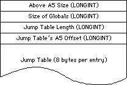
Jump Table in 'CODE' Resource 0
Since the 68000 uses signed 16-bit offsets for A5-relative instructions, the maximum offset that can be specified is 32767. Since each jump table entry takes up 8 bytes, there can be 4096 jump table entries, but we need to subtract the 16 bytes used by the jump table header, so the actual limit on jump table entries is 4094.
This limit may seem rather small, but you have to remember that jump table entries are only needed if a function is called from outside of its own segment (a.k.a. an intersegment function call). For routines that are local to a segment (intrasegment function calls), the linker can call the routine without going through the jump table.
If you are developing a large program, and you think you might be in danger of running out of jump table space, here are some guidelines you can use when designing and organizing your code:
• Segment your source code based on your run-time call chain, rather than on
a simple file-by-file basis.
• Keep utility routines in the same segment as the routines which call them,
rather than keeping them in a separate “Utilities” segment.
• Try to keep your segments close to the maximum size. The fewer segments you
have, the fewer intersegment references you will have.
The 4094 routine limit becomes a much more significant problem when you start working with MacApp and Object Pascal. If you compile your MacApp program with debugging turned on, you will get a jump table entry for every method in your program. All of a sudden, an application of medium size can have jump table problems. Working around this problem is extremely difficult, since the only options available to you are:
• Giving up the MacApp debugger facilities, and using your favorite low-level
debugger instead.
• Reorganizing your classes, and reducing the number of methods in your
program to a reasonable level. This means that you may have to make major
source code changes, and you end up with a less “object-oriented” program
than you started out with.
Both of these options are extremely distasteful, but the final version of MacApp 2.0 will alleviate the problem by letting you compile your programs with both debugging and optimization turned on. The optimizer will drastically reduce the number of jump table entries, so the problem should only occur with very large programs.
221: NuBus Interrupt Latency
#221: NuBus Interrupt Latency
(I Was a Teenage DMA Junkie)
Revised by: Cameron Birse October 1989
Written by: Cameron Birse, Mark Baumwell, & Rich Collyer December 1988
This Technical Note discusses NuBus™ interrupt latency, and why, contrary to popular belief, the Macintosh is not a real-time machine.
Changes since December 1988: Changed sample code to defer cursor rendering to a deferred task rather than a “pseudo-VBL” task.
_______________________________________________________________________________
The Macintosh is not a real-time machine. The Macintosh does not support DMA. There are many variables in the Macintosh that make it impossible to deterministically figure out exactly when things are going to happen. Despite these facts, there are those who must push the envelope. For these courageous adventurers, we provide the following information in the hope that it speeds your journey.
According to empirical evidence gathered by Apple engineering, typical NuBus to Macintosh transaction times fall in the 800 nanosecond to 1 microsecond range. Although the NuBus specification points to faster accesses, you should consider these times realistic since there is always some overhead. Synchronizing the NuBus and Macintosh clocks, for example, can cost a NuBus cycle.
One technique that can help optimize NuBus transfers is implementing bus locking. The bus can be locked for a small set of transactions (we recommend a maximum of four transfers), then unlocked for rearbitration. In order to allow fairness, it is important to lock the bus for as short a time as possible.
All processor interrupts and slot interrupts may be held off for various amounts of time by different parts of the system, so you must never count on instant interrupt response. To help deal with these delays, you should consider your data rate and include ample buffering on your card for your data. The following are just a few of the many system variables which affect interrupt latency:
• Floppy disk accesses turn off interrupts for “significant” (read
milliseconds) amounts of time. For instance, some disk accesses
(i.e., block reads) can disable interrupts for as much as 15
milliseconds. Inserting a blank floppy disk turns off interrupts
for up to 25 milliseconds.
• Formatting a floppy disk turns off interrupts for up to 300 milliseconds.
• LocalTalk accesses can disable interrupts for up to 22 milliseconds.
• Assuming your interrupt handler is going to want to access your card
immediately, there is also the arbitration for mastership of the bus,
which could be in use at the time, and in the worst case, lock the
bus, keeping you from accessing your card.
• All slot interrupts, including slot VBL interrupts, hold off other
slot interrupts. This means another card’s interrupt routine (installed
via _SIntInstall) or a slot VBL interrupt routine (installed via
_SlotVInstall) runs to completion with interrupts of the slot level
and below disabled. VBL tasks may be of varying length, since
applications, as well as drivers, can and do, install VBL tasks.
• Cursor updating (performed during slot VBL time) time ranges from
around 700 µSec - 900 µSec for one-bit to eight-bit depth. Since
this is done at slot VBL time, it holds off all other slot interrupts
until it is finished.
Warning: The performance figures cited in this Note are based on current
Macintosh models; they are not guaranteed to remain the same in
future machines.
The following code lets you defer the cursor updating routine by having it run as a deferred task. This change means that the actual cursor rendering is performed with interrupts enabled, which allows the occurrence of other interrupts. It should be noted that there is a slightly visible flickering of the cursor as a result of using this technique.
***********************************************************************
***
*** Defer Cursor
*** This program defers the cursor updating that normally happens
*** during slot VBL time. Since the cursor updating can take as
*** long as 900µSec, and holds off other slot interrupts, it is
*** handy to be able to defer the updating to a more civilized time.
*** This program replaces the normal jCrsrTask with a routine that
*** installs the real jCrsrTask routine as a deferred task.
***
*** Build commands:
***
*** asm DeferCrsr.a -lo DeferCrsr.a.lst -l
*** link DeferCrsr.a.o -o DeferCrsr
***
***********************************************************************
STRING ASIS
PRINT OFF
INCLUDE 'Traps.a'
INCLUDE 'SysEqu.a'
PRINT ON
******************************** Entry *******************************
Entry MAIN
bra.s Entry2
****************************** MyDefTask *****************************
TaskBegin
MyDefTask
DC.L 0 ;qLink (handled by OS)
DC.W 0 ;qType (equ 7, find this value in MPW AIncludes)
DC.W 0 ;dtFlags (reserved, don't mess with 'em)
DC.L 0 ;dtAddr (pointer to actual routine to be performed)
DC.L 0 ;dtParm (optional, this example doesn't use it)
DC.L 0 ;dtReserved (should be zero, DC.L 0 takes
; care of that)
SysCrsrTask
DC.L 0
***************************** MyjCrsrTask ****************************
MyjCrsrTask
movem.l a0/d0,-(sp)
lea MyDefTask,a0 ;point to our deferred task element
move.l SysCrsrTask,dtAddr(a0) ;set up pointer to routine
move.w #dtQType,dtType(a0) ;set queue type
_DTInstall ;install the task
movem.l (sp)+,a0/d0
rts
TaskEnd
******************************** Entry2 ******************************
TaskSize EQU TaskEnd-TaskBegin
Entry2
move.l #TaskSize,d0 ; TaskSize = Deferred task element,
; room for a pointer (to original
; jCrsrTask), and our jCrsrTask
_NewPtr ,SYS,CLEAR ; make a block in the system heap
bne.s Abort ; no room at the Inn,
; head for the manger
move.l a0,a2 ; got a good pointer, keep a copy
move.l a0,a1 ; a0 = source, a1 = destination for
; BlockMove
lea MyDEFTask,a0 ; copy the task, etc. into
; the system heap
move.w #TaskSize,d0
_BlockMove
lea dtQElSize(a2),a0 ; move original jCrsrTask
; pointer into our
move.l jCrsrTask,(a0) ; pointer holder
lea dtQElSize+4(a2),a0 ; replace jCrsrTask pointer
; with a pointer
move.l a0,jCrsrTask ; to our jCrsrTask
abort rts ; all's well that ends…
END
• Note, as an aside, that while using MacsBug, interrupts are disabled.
In summary, you cannot depend on real-time performance when transferring data between NuBus and the Macintosh. It is important to provide sufficient buffering on the card to allow for the variance in interrupt latency. Driver calls can be used to determine the amount of data available to be transferred, and transfers can be made on a periodic basis.
Remember too, since the entire system is so heavily interrupt-driven, it is very unfriendly for anyone to disable interrupts and take over the machine for long periods of time. Doing so almost always results in a sluggish user interface, something which is usually not well received by the user.
Further Reference:
_______________________________________________________________________________
• Inside Macintosh, Volume V, The Device Manager
• Inside Macintosh, Volume V, The Vertical Retrace Manager
• Macintosh Family Hardware Reference
• Designing Cards and Drivers for the Macintosh II and Macintosh SE
NuBus is a trademark of Texas Instruments
222: Custom Menu Flashing Bug
#222: Custom Menu Flashing Bug
Written by: Dennis Hescox February 1989
Selected menu items in a custom 'MDEF' resource do not flash correctly due to a bug in the Menu Manager. This Technical Note describes the problem and explains how to make your 'MDEF' flash correctly.
_______________________________________________________________________________
Not on the Menu
There is a known bug in the Menu Manager’s interface to custom 'MDEF' resources which causes an item to flash incorrectly if its corresponding menu record contains no text. If there is no text in the the chosen menu record, the Menu Manager neglects to call the menu definition procedure multiple times with mChooseMsg, and the corresponding item does not flash. If there is text in the menu record, the Menu Manager calls the menu definition procedure multiple times to flash the menu item.
No Substitutions Allowed
Until a corrected version of the Menu Manager is released, you can make your custom menu items flash by adding a dummy text menu item in the menu record corresponding to each item in your custom 'MDEF'.
For Example…
When using a Macintosh with color, notice that items in the Finder’s Color menu (other than the first one) do not flash. Edit the 'MENU' resource (id=16) in a copy of the Finder. After menu item “x” add menu items “b,” “c,” “d,” “e,” “f,” “g,” and “h” (or other legends of your own choosing) to correspond to the additional seven Color menu items. After rebooting with this edited Finder, selections from the Finder’s Color menu should now flash correctly.
Further Reference:
_______________________________________________________________________________
• Inside Macintosh, Volume I-339, The Menu Manager
223: Assembly Language Use of _InitGraf with MPW
#223: Assembly Language Use of _InitGraf with MPW
Written by: Dennis Hescox February 1989
The Macintosh Programmer’s Workshop (MPW) requires assembly-language programmers to allocate their own QuickDraw global variables rather than use the default record as indicated in Inside Macintosh.
_______________________________________________________________________________
In the Beginning…
Early Macintosh assembly-language development systems automatically allocated a set of QuickDraw global variables (a QuickDraw record) on the application’s stack. The assembly-language note in Inside Macintosh, I-163 indicates that the programmer should use the following code to specify that automatically allocated record to _InitGraf:
PEA -4(A5)
_InitGraf
Here and Now
Despite the note in Inside Macintosh, MPW does not automatically allocate a set of QuickDraw global variables for the programmer; it is the responsibility of the programmer to allocate this record for QuickDraw’s use.
An Example…
Here is an example of creating a QuickDraw global variables template taken from Sample.a, V1.01, which is distributed with MPW 3.0 and on Developer Technical Support’s sample source code disk:
QDGlobals RECORD 0,DECREMENT
GrafPort DS.L 1
White DS.B 8
Black DS.B 8
Gray DS.B 8
LtGray DS.B 8
DkGray DS.B 8
Arrow DS.B cursRec
ScreenBits DS.B BitMap
RandSeed DS.L 1
ORG -GrafSize
ENDR
Here is an example, again from Sample.a, of how to use the above template.
First we use the template to allocate an occurrence of our record:
QD DS QDGlobals ; QuickDraw's globals
Next we set up for and make our call:
PEA QD.GrafPort
_InitGraf
The declaration of QD with a DS creates an occurrence of our record in the application’s global variable space and the assembler implicitly provides the reference to A5 as the base register.
Truth or Consequences
If you use the MPW assembler and also use the code specified by the note in Inside Macintosh, you are telling QuickDraw (by calling _InitGraf) to use an inappropriate area of memory as global variables space. QuickDraw will happily initialize this area of memory to the correct values for its use, but in doing so, it will also be blasting information that is probably important to some other part of the system.
Further Reference:
_______________________________________________________________________________
• Inside Macintosh, Volume I-135, QuickDraw
224: Opening AppleTalk
#224: Opening AppleTalk
Written by: Mark Bennett February 1989
This Technical Note describes the most effective, safe, and compatible way to open the AppleTalk drivers, .MPP and .ATP.
_______________________________________________________________________________
The process of opening the AppleTalk drivers, .MPP and .ATP, can be greatly simplified. The AppleTalk Manager chapters of Inside Macintosh describe the calls MPPOpen and ATPLoad for use by high-level languages. They also describe the process of examining low-memory globals SPConfig and PortBUse before calling _Open for assembly language use of AppleTalk.
Starting with the 128K ROM, the .MPP driver already has all the code built in for checking the low-memory globals SPConfig and PortBUse before trying to complete the _Open call. Furthermore, the .MPP driver will automatically open the .ATP driver as part of its opening process. Therefore, since all of the required checks are made inside the driver itself, we recommend that a simple
_Open call be made to the .MPP driver when you need to use AppleTalk. In a high-level language like Pascal, this call would look like the following:
result := OpenDriver('.MPP', refnum);
In C:
result = OpenDriver("\p.MPP", &refnum);
And in assembly language:
openAT SUB.W #ioQElSize,SP ; Make space for paramblock on stack
; since _Open is always synchronous.
; Using .W is slightly more efficient
; and is safe since ioQElSize is small.
MOVE.L SP,A0 ; Point A0 to paramblock.
LEA mppName,A1 ; Point A1 to driver name.
MOVE.L A1,ioFileName(A0) ; Put pointer to name in paramblock.
CLR.B ioPermssn(A0) ; Clear so won't look like OpenDeskAcc.
_Open
MOVE.W ioRefNum(A0),D1 ; You might want this later. Who knows?
ADD.W #ioQElSize,SP ; Reclaim space on stack.
RTS ; D0 contains result code.
mppName DC.B 4
DC.B '.MPP'
By using just the simple _Open call to the .MPP driver, you can ensure that your code will be compatible with future versions of AppleTalk that might not make use of low-memory globals.
Further Reference:
_______________________________________________________________________________
• Inside Macintosh, Volumes II-261, IV-229, & V-507, The AppleTalk Manager
225: Using RegisterName
#225: Using RegisterName
Written by: Mark Bennett February 1989
The verify flag indicator byte (verifyFlag) of the AppleTalk RegisterName function should always be set TRUE in published code.
_______________________________________________________________________________
The AppleTalk chapter of Inside Macintosh, Volume II-322, in describing the RegisterName function, states:
“If verifyFlag is TRUE, RegisterName checks on the network
to see if the name is already in use, and returns a result
code of nbpDuplicate if so.”
Note that verifyFlag should always be TRUE in published code. The design of the Name Binding Protocol (NBP) requires that an entity name be unique. The way RegisterName ensures this uniqueness is by broadcasting a lookup request for the registered name. If any entity responds, then RegisterName knows that the name would not be unique and returns an error. Some developers, in anticipating the time delay involved in broadcasting a lookup request and waiting for a response, have opted to set verifyFlag to FALSE, not realizing the potential danger in doing so.
Apple provides verifyFlag for experimental or developmental purposes, such as narrowing down a problem in registering a name on a network. Always make sure that code which ships has verifyFlag set to TRUE.
Further Reference:
_______________________________________________________________________________
• Inside Macintosh, Volume II-261, The AppleTalk Manager
226: Moving Your Cat
#226: Moving Your Cat
Revised by: John Harvey February 1991
Written by: John Harvey February 1989
This Technical Note clarifies the documentation in Inside Macintosh for _PBCatMove and provides a demonstration on how to use it.
Changes since February 1989: Added a discussion of using NIL for the destination name pointer, which is the simplest way to use _CatMove, and revised the sample code to use the high-level File Manager calls. Thanks to Tim Dierks of Apple Developer Technical Support U.K. for pointing out the problems with the previous version of this Note.
_______________________________________________________________________________
The documentation for _PBCatMove is not particularly clear; Inside Macintosh, Volume IV-157, states:
“The name and directory ID of the directory to which the file or directory is to be moved are specified by ioNewName and ioNewDirID.”
To understand this explanation, imagine a situation where your program maintains a work file in the default directory. Since this work file can get really big, if the user asks to save it to the same disk as the default directory, you use _PBCatMove to move the file instead of copying it. After the user dismisses SFPutFile by clicking on the Save button, you have the situation illustrated in Figure 1.
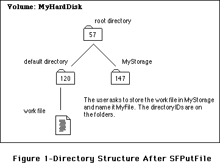
Following the directions in Inside Macintosh, you put the directory ID (147) in ioNewDirID and a pointer to the directory name (the string “MyStorage”) in ioNewName, but if you do this, you get a fnfErr (-43), since the File Manager looks for the directory inside of itself.
To understand this situation, consider how the File Manager accesses files or directories. It uses four different methods: full pathname, volume reference number and partial pathname, directory ID and partial pathname, and working directory reference number and partial pathname. Most File Manager calls let the programmer choose any of these methods, but _PBCatMove seems to only allow the third method, directory ID and partial pathname, to access a file or directory. Figure 2 illustrates why a call to _PBCatMove fails if you use 147 as the directory ID.
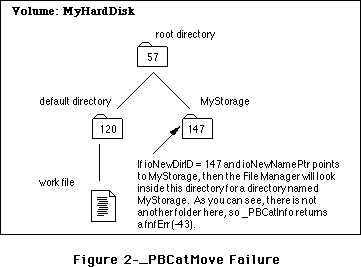
One approach to solving this problem is to identify the directory that contains the destination directory (i.e., the destination’s parent directory) by putting its directory ID in the ioNewDirID and identifying the destination directory by placing a pointer to its name in ioNewName. Taking that approach means that _PBCatMove uses the ioNewDirID to find the folder that contains the destination folder, and ioNewName to find the actual destination folder. Figure 3 illustrates this process.
However, there are two drawbacks to this approach, one minor and one major. The minor one is that you need to dig for the parent directory ID and allocate memory for the source directory’s name. This is not a big deal; however, sometimes it can be a pain. The major drawback is that supplying a parent directory ID for the destination is impossible when the destination is the root. The root is the parent of all directories and is its own parent (i.e., try calling _GetCatInfo with the ioDirID set to the root directory ID—the returned ioDrParID is the same value as the one to which you set ioDirID).
Better Living Through NIL
However, as is usually the case with the File Manager, you can perform wonders with the discreet use of NIL pointers. If you set ioNewName to NIL, you can then set ioNewDirID to the directory ID of the actual destination directory, and all proceeds as desired. This method is simpler then having to come up with a parent directory ID and the name of the destination directory. In addition to working in all situations, it also saves space in your code since you do not need to provide space for the name of the destination.
The line from Inside Macintosh, Volume IV-157, can be rephrased to say, “The name of the directory to which the file or directory is to be moved is specified by ioNewName. If a valid directory name is provided for ioNewName, then the destination directory’s parent directory is specified by ioNewDirID. However, you may specify NIL for ioNewName, in which case ioNewDirID should be set to the directory ID of the destination directory.”
Following are examples in Pascal and C which demonstrate this simpler method of using _PBCatMove. To make life even easier, these examples have been revised to use the high-level File Manager calls introduced in Technical Note #218, New High-Level File Manager Calls.
Most Of The Time That Is
Using the high-level calls provides the opportunity to point out a minor issue with MPW Pascal and the high-level CatMove call. As documented in this Note, you want to set ioNewName to NIL; unfortunately, MPW Pascal does not let you pass NIL as the destination name when you call the high-level CatMove. Even more unfortunate, if you pass '' (an empty string) to CatMove, it returns -37 (bad file or volume name). There is one thing you can do to work around this problem, and the Pascal example in this Note uses it. Things still work fine if you pass ':' as the name of the destination directory to CatMove, and this makes sense since ':' is a partial pathname, which, in this case, simply means that _CatMove should place the file in the directory specified by ioNewDirID. This latter method corresponds to the directory ID and partial pathname method described earlier in this Note.
It is important to understand that this is only an issue when using the high-level CatMove in Pascal. It is perfectly fine to set ioNewName to NIL if you are using the low-level PBCatMove in Pascal—the compiler accepts it and everything works correctly.
Pascal
PROCEDURE MoveTheCat( sourceWD: INTEGER; destinationWD: INTEGER;
fname: Str255);
{-----------------------------------------------------------------------------
| MoveTheCat
| Routine to move a file from one directory to another via CatMove. Note
| that the directories MUST be on the same volume. This routine expects
| the caller to have checked this already.
| Note on Error Handling:
| This example uses Signal to handle any errors. Please see Tech Note
| #88 for more information on Signal.
| Parameters:
| sourceWD: Where the file is now. This is a Working Directory
| that standard file returned.
| destinationWD: Where we want to move the file. Again a working
| directory returned by standard file.
| fname: The name of the file we are moving
------------------------------------------------------------------------------}
VAR
Volume :INTEGER;
sourceDirID :LONGINT;
destinationDirID :LONGINT;
procID :LONGINT;
BEGIN
{**
First we use the High-Level GetWDInfo call to convert our working
directories to directory IDs.
**}
Signal( GetWDInfo( sourceWD,Volume, sourceDirID, procID) );
Signal( GetWDInfo(destinationWD,Volume,destinationDirID,procID) );
{**
Now move that file. Note use of ':' since compiler won't let us use
NIL and '' does the wrong thing.
**}
Signal( CatMove(sourceVol,sourceDirID, fname,destinationDirID, ':') )
END;
C
void MoveTheCat( short sourceWD, short destinationWD, Str255 fname )
{
short Volume;
long sourceDirID;
long destinationDirID;
long procID;
Signal( GetWDInfo(sourceWD,&Volume,&sourceDirID,&procID) );
Signal( GetWDInfo(destinationWD,&Volume,&destinationDirID,&procID) );
/**
Note we can use nil for the destination name in C
**/
Signal( CatMove( Volume, sourceDirID, fname, destinationDirID, nil ) );
}
Further Reference:
_______________________________________________________________________________
• Inside Macintosh, Volume IV-87, The File Manager
• Technical Note #88, Signals
• Technical Note #218, New High-Level File Manager Calls
227: Toolbox Karma
#227: Toolbox Karma
Written by: Ed Tecot February 1989
This Technical Note discusses Macintosh Toolbox compatibility and what you can do to help the Macintosh continue evolving in the future.
_______________________________________________________________________________
It is getting increasingly difficult to make additions to the Macintosh Toolbox. The single greatest obstacle today is compatibility. Often, engineering is prevented from doing something in an elegant manner because it would break some applications. This usually leaves three choices:
1. Break the application. Engineering does not normally choose
this course of action.
2. Don’t support the feature. This is rarely a good choice.
It is bad for the user, and it limits developers.
3. Implement the feature in a less-than-optimal way. This is the
choice most often taken. Examples are the auxiliary window list,
faking desk accessories in MultiFinder to force clipboard
conversion, and the ever unpopular menu bar definition procedure
(MBDF).
Engineering doesn’t like making additions in this way, since it clutters the architecture and makes Macintosh programming even more difficult.
Rules, Rules, Rules
You’re probably thinking, “But I followed the rules.” You’re right. You’ve followed the stated guidelines in Inside Macintosh and the Macintosh Technical Notes. You’ve done nothing explicitly wrong.
However, you can do more than just follow the rules. Consider what effect your design decisions have on the Macintosh community. Understand that by taking advantage of a documented feature, you may be preventing the Macintosh from growing in the future. If you follow some of the following guidelines, you can give Apple some flexibility in changing rules that are no longer appropriate. These guidelines are just a sample, and hopefully you can extrapolate more from this list.
Traps Are Here to Stay
The trap interface is the ultimate Macintosh standard. Even when data structures change, the traps always work. Use them to their fullest. Don’t directly manipulate data structures when a trap call will do, don’t use
_HandToHand to duplicate a handle if there is an explicit trap call available
(e.g., _TENew), and don’t patch traps. If a trap does not work the way you want, implement your own code instead of trying to patch the required functionality into the trap. If you absolutely must patch a trap, don’t make assumptions about registers (e.g., A5) or modify the stack. See Technical Note #212, The Joy of Being 32-Bit Clean, for more information on the evils of patching traps.
Data Structures Are Subject to Change
Engineering won’t haphazardly change them, but by using the traps, you give them the flexibility to make these changes. If everyone had been using
_SetWRefCon and _GetWRefCon, the auxiliary window list might not have been necessary. Of course, if everyone agrees to use these traps and leave the auxiliary window list alone, maybe they can fix this one in the future.
Write Robust Definition Procedures
All of the definition functions, WDEF, CDEF, MDEF, etc. have room for growth. Do not stunt this growth by making unnecessary assumptions. If you do not understand the message, don’t do anything. If a parameter is documented as unused, don’t use it; it may be used in the future. These same rules apply to anything which might be called from ROM, such as drivers, user procedures, and filter procedures. Treat the MBDF as undocumented. It has changed considerably in the past and will continue to do so.
Use Globals With Caution
Globals often have their meaning changed or their format altered. Use the trap interfaces when available (e.g., _TickCount instead of Ticks). Try to avoid using them at all if possible.
Your Future is Apple’s Future
As a developer you play a key role in shaping the future of the Macintosh. By going beyond the guidelines in Inside Macintosh and the Macintosh Technical Notes and considering the effects of your design decisions on the whole Macintosh community, you allow the Macintosh to grow and change while still maintaining compatibility. We won’t break your applications, we can fully support features you desire, and we can implement these features in the best possible way for us, for you, and for the users. By going that extra step, you help us make programming the Macintosh simpler and ensure the best possible future for your products as well as ours.
Further Reference:
_______________________________________________________________________________
• Inside Macintosh, Volume V, Compatibility Guidelines
• Technical Note #2, Compatibility Guidelines
• Technical Note #117, Compatibility: Why & How
• Technical Note #212, The Joy of Being 32-Bit Clean
228: Use Care When Swapping MMU Mode
#228: Use Care When Swapping MMU Mode
Revised by: Andrew Shebanow April 1990
Written by: Cameron Birse April 1989
This Technical Note describes how to avoid crashing when swapping into 32-bit mode on a Macintosh II. Thanks to Jim Berry and Dan Weston for pointing this out.
Changes since April 1989: Added a reference to Technical Note #213,
_StripAddress: The Untold Story.
_______________________________________________________________________________
There is a condition where calling _SwapMMUMode to switch the Macintosh II into 32-bit mode can cause the system to crash. This condition happens in code which is loaded into memory from a resource, or is placed in memory that was allocated by the Memory Manager and is subsequently executed by using the master pointer as the address for a JSR instruction. This condition includes stand-alone, executable code resources (i.e., 'XCMD', 'XFCN', 'INIT', 'ADBS',
'FKEY', etc.), but does not apply to standard 'CODE' resources because the Segment Loader fixes the PC.
When you load code into memory as a resource in 24-bit mode (i.e., by calling
_GetResource), the high byte of the master pointer contains Memory Manager information. If you perform a JSR to the code (typically a JSR (A0) with the master pointer in A0), the entire master pointer gets translated directly into the program counter, including the high byte of Memory Manager information. As soon as you switch into 32-bit mode, the program counter effectively has garbage in the high byte, and the machine goes directly into the weeds (do not pass go, do not collect $200).
You can avoid this problem by cleaning up the program counter from within the resource code before calling _SwapMMUMode. The following example shows how to clean up the PC using MPW Pascal and C with inline assembly code:
MPW Pascal
PROCEDURE FixPC;
INLINE $41FA, $000A, { LEA *+$000C,A0 }
$2008, { MOVE.L A0,D0 }
$A055, { _StripAddress }
$2040, { MOVEA.L D0,A0 }
$4ED0; { JMP (A0) ;jmps to next instruction }
MPW C
pascal void FixPC()
= {0x41FA, 0x000A, /* LEA *+$000C,A0 */
0x2008, /* MOVE.L A0,D0 */
0xA055, /* _StripAddress */
0x2040, /* MOVEA.L D0,A0 */
0x4ED0}; /* JMP (A0) ;jmps to next instruction */
Further Reference:
_______________________________________________________________________________
• Inside Macintosh, Volume V-591, OS Utilities
• Technical Note #212, The Joy of Being 32-Bit Clean
• Technical Note #213, _StripAddress: The Untold Story
229: A/UX 2.0 Compatibility Guidelines
#229: A/UX 2.0 Compatibility Guidelines
Revised by: Kent Sandvik & B. Winston Hendrickson February 1991
Revised by: B. Winston Hendrickson & Dave Radcliffe June 1990
Written by: Dave Radcliffe April 1989
This Technical Note describes details of the A/UX 2.0 implementation of which developers should be aware, so that their Macintosh applications also work properly under A/UX.
Changes since April 1989: This Note formerly described A/UX 1.1 Toolbox Bugs, but has been completely rewritten to cover A/UX 2.0 compatibility.
Changes since June 1990: Changes due to A/UX 2.0.1, also added some new important issues.
_______________________________________________________________________________
Introduction
A/UX 2.0 and 2.0.1 significantly improves support for Macintosh applications from version 1.1. The major components of the 2.0 Toolbox environment include:
• System Software derived from 6.0.5
• A/UX MultiFinder version 6.9
• 32-Bit QuickDraw
• File Manager access to UNIX, HFS, and AppleShare volumes
• Sound Manager
• Serial Manager
• Notification Manager
• Slot Manager
Most MultiFinder-compatible Macintosh applications and utilities should work unmodified under A/UX 2.0. Complete details concerning the A/UX Toolbox may be found in the A/UX Toolbox: Macintosh ROM Interface manual which is part of the A/UX documentation set; however, there are some additional subtle aspects of the A/UX environment of which developers should be aware.
General Compatibility Issues
The following items do not form a definitive list. Rather, they are indicative of common problems Apple encountered with applications while testing them under A/UX 2.0.
Do Not Access Hardware Directly
UNIX is a protected environment where the kernel arbitrates all hardware access. Applications should use the appropriate Macintosh Toolbox manager when it is available. Hardware developers may need to write a custom A/UX device driver to provide access to special hardware. Details on A/UX device drivers, including sample driver source code, is contained in the A/UX Device Driver Kit available from APDA.
Do Not Depend Upon How Things Work
Some applications rely on internal operating system details. This reliance has always been a bad idea, but applications are particularly likely to be bitten under A/UX because the internals are different. Following are some specific cases of which to be aware:
Event Manager
Some applications depend upon being able to access the event queue directly and patch into the _PostEvent mechanism. Under A/UX, the event queue is in the kernel and is not accessible to applications. Use if possible existing supported trap calls, instead of trying to access the event queue.
Memory Manager
Some applications work because the Macintosh OS uses a roving allocation scheme. Such applications free memory then use that memory in subsequent traps. A/UX is much more likely to reuse that memory immediately after it is freed (i.e., before the application can use it) than the Macintosh OS.
A/UX-Specific System Files
Some system files are A/UX specific and cannot be interchanged with the Macintosh environment. These files include the System file, Finder, MultiFinder, AppleShare, MacTCP and Patch files.
Privileged Instructions
Since privileged microprocessor instructions must be emulated in software, they execute much slower under A/UX than the Macintosh OS; therefore, using privileged instructions degrades application performance. Avoid a privileged instruction where a non-privileged instruction does just as well. For example, the non-privileged instruction MOVE <ea>,CCR can be used in almost all cases instead of the privileged instruction MOVE <ea>,SR.
Personal System Folders
Under A/UX, a user has the option to use a public System Folder (“/mac/sys/System Folder”) which may be shared and changed by all users or employ a private System Folder to allow custom configurations. When the user logs in, A/UX makes two checks for the existence of a private System Folder. First, the environment variable TBSYSTEM may be set to the full UNIX path of a directory to use as the System Folder. Second, if TBSYSTEM is not set, the user’s home directory is checked for a subdirectory named “System Folder”. If neither of these conditions are met, the public System Folder is used. Once a particular directory is selected, it becomes the “blessed” folder as long as the user remains logged in.
If an application has an installer utility, it should not place required files in the active System Folder; rather, it should use the System Folder only for configuration data. Required files should be kept with the application.
File Manager
The A/UX File Manager provides access to: UNIX® volumes, HFS volumes, MFS volumes, and AppleShare volumes. UNIX volumes may be a Berkeley 4.2 File System (UFS), a System V File System (SVFS) or a Network File System (NFS™) volume. In addition, since HFS is used as the foundation of the 2.0 File Manager, other external file systems following the Macintosh compatibility guidelines should work correctly under the A/UX environment. In fact, access to UNIX file systems is provided through a Macintosh external file system.
HFS Volumes
A/UX 2.0 allows only one HFS partition per volume; volumes with more than one such partition are not usable. In addition, HFS SCSI devices are only accessible to A/UX if they were accessible to the Macintosh OS when the system booted, and they have a valid partition map. Note that in the case of HFS CD-ROM discs, only the drive needs to be accessible, no volume needs to be in the drive.
UNIX Volumes (/)
Different physical UNIX volumes (including NFS volumes) appear to Macintosh applications as a single Macintosh volume named /. Moving files within the single logical volume / using _PBCatMove can fail with a badMoveErr if the move would cross physical volumes. It also means the free space reported on / may not be an accurate reflection of the space available for a file operation. The _AUXDispatch trap, documented in the A/UX Toolbox: Macintosh ROM Interface manual, with the AUX_FS_FREE_SPACE selector, can be used to accurately determine the free space on the underlying physical volume.
The / volume always appears as the boot volume and always contains the “blessed” folder.
Filenames
UNIX file systems, unlike Macintosh file systems, are case sensitive. Applications should be consistent in the use of case to avoid confusion. For example, the filenames “Foobar Preferences” and “foobar preferences” are two distinct filenames to UNIX. The A/UX 2.0 File Manager mediates this a bit. It first attempts a case sensitive filename lookup, and if that fails, it then tries a case insensitive lookup. The disadvantage is that not only is this slower, but also the File Manager may fail to correctly identify a single file from a group of files whose names differ only in case. Note that the _Create trap is an exception and only performs a case sensitive lookup when it checks for the existence of a file, thus an application may create “Foo” in the same directory which already contains “foo”.
Not all UNIX file systems support 31-character filenames. The UFS file system on which A/UX 2.0 is based, supports 255-character filenames, but the older System V file systems used on A/UX 1.x systems only support 14-character filenames. Since these older systems are supported under A/UX 2.0, users may mount them as part of /. While the File Manager continues to allow use of 31-character filenames, remember that the underlying file system may truncate the name. For example, on an SVFS volume, the name ThisNameWillBeTruncated becomes ThisNameWillBe. This also means names like ThisNameWillBeTruncated and ThisNameWillBeTruncatedAlso may not be unique. You can avoid problems by ensuring that static filenames used by application code are unique in the first 14 characters.
UNIX Volume Pathnames
The slash (/) character is used by UNIX as a pathname separator. Its use is similar, but not identical, to that of the colon (:) in Macintosh file systems. This similarity can lead to ambiguity; for example, “Font/DA Mover” might be interpreted as “:Font:DA Mover”. Again, the File Manager attempts to arbitrate. It accepts both UNIX and HFS style pathnames, and if it is trying to parse a pathname according to UNIX semantics and fails to locate a particular path component in the UNIX file system, it translates all slashes to underlines (_) and treats the string as a single name (e.g., “Font/DA Mover” becomes “Font_DA Mover”).
If you must generate a full or relative pathname, it is best to use a colon as a pathname delimiter because this reduces the chance of ambiguity.
End-Of-Line Treatment
UNIX and Macintosh use different end-of-line characters (newline and carriage return, respectively). To allow both UNIX and Macintosh tools to manipulate files of type “TEXT,” the A/UX File Manager transparently translates these characters when dealing with files residing on the / volume. Carriage returns are translated into newlines upon _PBWrite and newlines are translated into carriage returns upon _PBRead. Hence, Toolbox applications always see “TEXT” data in Macintosh format and UNIX applications always see “TEXT” data in UNIX format. To facilitate this transparency, it is important that applications set the file type immediately after a call to _Create (using either _SetFileInfo or _SetCatInfo).
File Permissions
Unlike AppleShare, UNIX file systems associate access permissions with files as well as directories. Directory permissions are mapped onto corresponding AppleShare file permission values and returned by _GetDirAccess. For unreadable files, the File Manager returns a special type and creator pair, namely creator “A/UX” and type “FILE” for data files, and type “EXEC” for executable files.
HFS-Specific File Information for UNIX Volumes
UNIX file systems lack certain HFS file attributes such as directory IDs and Finder information, which means files created outside of the Toolbox environment do not intrinsically have such attributes. When necessary, such information is provided by the File Manager through the use of a database in the blessed folder. When building its database, the File Manager synthesizes type and creator information for these UNIX files from the file’s contents.
Directory IDs may, under some circumstances, change. For instance, if a particular UNIX volume is sometimes mounted in different areas of the / volume, the IDs for its directories change according to where it is mounted.
The File Manager tries to keep all files of type “TEXT” in “pure” UNIX format; consequently, if an application creates a file of type “TEXT” that has no resource information, then the type and creator association is maintained strictly through the database.
Miscellaneous UNIX Volume Details
The following caveats apply only to file accesses to the / volume:
• _Allocate and _AllocContig do nothing; applications should use _SetEOF
instead.
• Do not directly access VCBs and FCBs. The UNIX external file system does
not use these structures internally. Applications can use the File
Manager calls instead (e.g. _GetFCBInfo).
• UNIX activity outside of the Toolbox environment may modify the / volume.
The A/UX File Manager regularly changes the reported modification time
of the / volume (as returned by _GetVolInfo) to stimulate applications to
check if a directory they are displaying needs to be updated. Be sure to
check for change the modification time of the particular directory before
updating an application’s display.
• Almost all File Manager traps intended for / may move or purge memory.
The following list contains traps that could, now or in the future involve
the Memory Manager to move memory (note that _Read and _Write do not cause
any Memory Manager activity):
_MountVol _OpenWD
_SetDir
_DirCreate
_GetCatInfo
_SetCatInfo
_CatMove
_GetDirAccess
_GetFileInfo
_SetFileInfo
_Open
_OpenRF
_Create
_Delete
_ReName
_SetVol (if HFS-bit is set, as this implicitly involves a _SetDir )
_SetFilLock
_RstFilLock
_InitFS
• Inside Macintosh, Volume V-380, The File Manager, states that an _Open (and
_OpenRF) call using fsWrPerm and fsRdWrPerm is retried as fsRdPerm in the
case of read-only folders. Under A/UX 2.0, such calls return fLckdErr if
the user does not have write permission for the particular file. Also, if
that file resides on a UNIX file system which has been mounted as read-only,
a vLckdErr is returned instead of fLckdErr. Both these problems are
corrected in A/UX 2.0.1.
Virtual Memory
The A/UX 2.0 Toolbox is a virtual memory environment and is currently limited to 16 MB. The size of the environment defaults to the size of physical memory, but can be set at login time using the TBMEMORY environment variable. For example, a value for TBMEMORY of 10m results in a 10MB toolbox virtual memory environment.
24-Bit Environment
A/UX 2.0 provides a 24-bit, single application environment which may allow some applications which are not 32-bit clean to run under A/UX. Applications are still subject to limitations regarding direct hardware access and use of privileged instructions, but this environment may allow users to continue using older versions of software. Developers must not depend upon this environment for future development. In this 24-bit environment, virtual memory is limited to 8 MB.
Slot Manager
When A/UX 2.0 boots it checks each NuBus card. If the card contains a PrimaryInit (and a SecondaryInit) record, A/UX tries to execute the code. If this code does not follow the general A/UX guidelines (not 32-bit clean, it calls traps not supported…) then the kernel gets a panic message and the whole system hangs.
If the PrimaryInit and the SecondaryInit are not present, A/UX assumes that the card initializes itself or does not require initialization. Test for A/UX using Gestalt if the PrimaryInit contains code that will not work under A/UX.
Video Driver
A/UX 2.0 only supports well-behaved video driver control codes. The supported calls are documented in /usr/include/mac/video.h. The driver does a sanity check of the passed control calls. If the call is not supported or accepted, the control call is never sent to the video card.
The only Apple MacOS video driver control code not supported by the A/UX video driver is the GetGamma, csCode 4. SetGamma, csCode 8, is supported from A/UX 2.0.1 forward.
Developers interested to apply for control calls that are accepted under A/UX should contact MACDTS. The request should provide information about what csCode number the developer would like to have assigned, what functionality the control code contains, and what possible side effects this video control code has on the system.
Sound Manager
MacOS 6.0.7 supports the new _SoundDispatch trap starting from 6.0.7 forward. This trap is not implemented under A/UX 2.0.1 - even if the basic System release is 6.0.7. This means that programs which only test for System release level for _SoundDispatch availability will break with A/UX 2.0.1. Always test for the availability of the _SoundDispatch trap itself.
SCSI Manager
A/UX 2.0(.1) does not support the SCSI Manager. Thus the _SCSIDispatch trap is not implemented.
Script Manager
Starting with A/UX 2.0.1 all the Script Manager functionality and traps are supported.
Vertical Retrace Manager
_AttachVBL and _DoVBLTask traps are not implemented. These traps have to do with managing independent VBL queues for each video device. The A/UX kernel isolates the application from these devices - it handles the interrupts directly, and provides virtual vertical retrace interrupts via Unix signals.
_AttachVBL and _DoVBLTask are mostly used by system level software and interrupt handlers. Also the low memory global jDoVBLTask is not initialized.
A/UX Startup process and MacOS Systems
A/UX is booted from a special A/UX Startup application from MacOS. Some may have problems to actually boot A/UX from the Macintosh environment. The problem has to do with the A/UX Startup program and the Startup tools. These tools (launch,fsck, etc) consist of position dependent code because they are compiled with the A/UX C compiler and moved to the A/UX Startup environment.
Because the base address of these tools are 0x9FC00 (about 639k) it means that any INITs or other patches which increase the system heap above this limit will break the A/UX Startup shell and the tools. It can't either be changed out in the field. The only realistic workaround for the moment is to use the A/UX installed MacOS System when booting the computer for A/UX use later. This problem is subject to change in future.
Further Reference:
_______________________________________________________________________________
• A/UX Toolbox: Macintosh ROM Interface
• Inside Macintosh, Volume V, Compatibility Guidelines
• Inside Macintosh, Volume V, The File Manager
• Technical Note #117, Compatibility: Why & How
• d e v e l o p, January 1990, “Compatibility: Rules for the Road”
• UNIX Review, June 1990, “UNIX as a Platform for Macintosh Applications”
• A/UX Device Driver Kit (APDA)
• Designing Cards and Drivers for Macintosh II and Macintosh SE , Second
Edition
NFS is a trademark of Sun Microsystems, Inc.
UNIX is a registered trademark of AT&T
230: Pertinent Information About the Macintosh SE/30
#230: Pertinent Information About the Macintosh SE/30
Revised by: Chris Knepper June 1989
Written by: Chris Knepper April 1989
This Technical Note discusses the Macintosh SE/30, items of interest to developers, and sources for further information.
Changes since April 1989: Corrected an error in the addresses of the video display buffers.
_______________________________________________________________________________
The Macintosh SE/30 is a modification of the original Macintosh SE concept. The SE/30 combines the modularity of the original SE with the capabilities of the larger Macintosh IIx. Although the name implies that the SE/30 borrows many characteristics from the SE, there are actually substantial differences between the two machines, and this Note addresses some of those differences.
Similarities Between the Macintosh SE and SE/30
The main similarities between the SE and the SE/30 are as follows:
• compact design
• power supply
• analog board
• rear housing
• SCSI support
• ADB support
• nine inch video display
Differences Between the Macintosh SE and SE/30
There are, however, many differences between the two machines. This section covers those differences with respect to their impact on developers.
CPU
The Motorola 68030 on the Macintosh SE/30 is clocked at 15.6672 MHz and provides both 32-bit data and address buses, both 256-byte instruction and data caches, and a built-in Paged Memory Management Unit (PMMU). The 68000 in the Macintosh SE is clocked at 7.83 MHz.
Although the 68030 is capable of a burst mode to more efficiently access contiguous blocks of memory, this feature is not enabled on the Macintosh SE/30. Enabling this feature would require significantly more complex control logic and faster (read “more expensive”) RAM.
Coprocessor
The Motorola 68882 on the Macintosh SE/30 offers a full implementation of the IEEE Standard for Binary Floating-Point Arithmetic. The 68882 has an optimized MPU interface that provides up to 1.5 times the performance of the 68881. The Macintosh SE does not ship with a coprocessor (although third-party coprocessors are available).
ROM
The Macintosh SE/30 ROM is identical to that of the Macintosh IIx; it includes Color QuickDraw, the Slot Manager, and other features of the IIx ROM. It is composed of four 512 Kbit ROMs, for a total of 256K, and it is mounted on one ROM SIMM (ROM SIMMs are expandable to 2 MB).
System Software 6.0.3 (and later) patches to the ROM affect the Start Manager, the OS utilities, and the Sony driver.
RAM
The SE/30 includes eight RAM SIMM slots like the Macintosh II family and supports from 1 MB up to 128 MB (using 16 MB SIMMs), however, the current System Software only supports the first eight megabytes of RAM. The SE/30 also supports 4 MB DRAMs. For more information on memory configuration, see Macintosh Technical Note #176, Macintosh Memory Configurations.
Video
The Macintosh SE/30 video architecture is compatible with the SE: one-bit per pixel monochrome display with 342 lines of 512 pixels each. There is 64K of high-speed video display RAM to maximize video performance. The video provides dual display buffers of 21,888 bytes for fast page switching: the primary buffer starts at $FEE08040 and ends at $FEE0D5C0, and the alternate buffer starts at $FEE00040 and ends at $FEE055C0. The physical address of the video buffers simulates the NuBus address of slot $E on the Macintosh II family.
Developers need to be cautious with this video implementation, since a call to
_SysEnvirons returns true for hasColorQD (since Color QuickDraw is implemented in the SE/30 ROM), but the default configuration only includes a single monochrome display.
As with any machine which supports Color QuickDraw, your application should test for the specific functionality which it needs, keeping in mind that different capabilities may be present on devices other than the main display. For example, an application which requires eight or more bits of color may do the following:
gotOne := FALSE; {Assume we'll fail}
aDevice := GetMainDevice; {Get the first device}
WHILE (aDevice <> NIL) AND (NOT gotOne) DO
IF (aDevice^^.gdPMap^^.pixelSize >= 8) AND {Do we have >= 8 bits?}
(BitTest(@aDevice^^.gdFlags,15)) THEN {And are we color?}
gotOne := TRUE {Yes! We're done}
ELSE
aDevice := GetNextDevice(aDevice); {Try next device}
IF gotOne THEN
{We have a screen to use. Maybe put our window up
within aDevice^^.gdRect}
Processor Direct Slot Expansion
The Processor Direct Slot (PDS) in the SE/30 is significantly different from the PDS in the SE. The 68000 PDS in the SE provides a 16-bit bus, whereas the 68030 PDS in the SE/30 provides both a 32-bit data bus and a 32-bit address bus. Access to the full 32-bit data bus allows for higher performance expansion cards than the 16-bit bus of the PDS in the SE. In addition, many of the expansion cards built for the PDS in the SE were hard-wired to the 7.83 MHz clock speed. Since the clock speed in the SE/30 is 15.6672 MHz, there are fundamental incompatibilities in clock speed, and therefore expansion card design.
The PDS in the SE/30 is a 120-pin, 32-bit PDS which provides both “common” and
“machine-specific” signals. The common signals will be available across all 68030 PDS implementations, while the machine-specific signals will be available on future 68030 PDS implementations and may have new features added. On the
SE/30, the machine-specific signals emulate equivalent signals on the NuBus expansion interface. This emulation means that expansion cards on the SE/30 may take advantage of the Slot Manager in ROM to communicate with the bus via a Declaration ROM on the card.
Connectors for the PDS may be obtained from AMP (part number 535022-1).
Prototyping cards for the PDS may be obtained from:
Creative Solutions
4701 Randolph, Suite 12
Rockville, Md 20852
Attn: Chris Colburn
(301) 984-0262
Disclaimer: This listing for Creative Solutions neither implies nor
constitutes an endorsement by Apple Computer, Inc. If
your company supplies these cards and you would like to
be listed, contact us at the address in Technical Note #0.
The chassis design of the SE/30 simplifies expansion card installation as cards may be mounted vertically instead of horizontally, as in the SE. Because of this orientation, expansion cards can be installed without removing the logic board. In addition, there is more room for expansion cards in the SE/30 than in the SE.
System Software Requirements
The SE/30 requires System Software version 6.0.3 or later. Beginning with version 6.0.3, the installer shipped with the System Software includes a specific script for the SE/30.
Internal Floppy Drive
All configurations of the Macintosh SE/30 ship with an internal FDHD (Floppy Drive, High Density) floppy drive (a.k.a., SuperDrive) controlled by the SWIM controller chip. The SWIM chip is capable of supporting 720K and 1.44 MB Modified Frequency Modulation (MFM) formats (i.e., MS-DOS 3.5” disks), as well as the 400K and 800K Group Coded Recording (GCR) formats (Macintosh and Apple II 3.5” ProDOS disks) and the 1.4 MB MFM format (Macintosh 3.5” high-density disks). Note that special disks are required to take advantage of the 1.44 MB and 1.4 MB MFM formats. These disks have a square cutout in the top left corner to differentiate them from standard floppy disks. These disks may not be used in standard floppy drives (i.e., 400K and 800K) in the Macintosh family.
Although the SE is capable of supporting two internal 800K floppy drives, the SE/30 only supports a single internal FDHD drive.
External Floppy Drive
The SE/30 provides support for an external 800K floppy drive; it does not support the external 400K floppy drive or the external HD20 hard disk.
SCSI
The SE/30 uses the same 53C80 and interface logic as the IIx. This combination supports pseudo-DMA burst transfers, and SCSI performance matches that of the IIx.
_SysEnvirons
On the SE/30, _SysEnvirons version 2 returns 7 in the machineType field and 4 in the processor field. For more information about _SysEnvirons, see Macintosh Technical Note #129, _SysEnvirons: System 6.0 and Beyond.
Sound
The SE/30 uses the Apple Sound Chip, rather than the discrete sound circuitry of the SE. Although the circuitry provides stereo output to the speaker jack, as of System Software 6.0.3, stereo sound is not implemented, so true stereo is not yet available. The internal speaker of the SE/30 uses a mixed signal from both channels, whereas a Macintosh II uses a signal from only one channel.
Clock
The battery is not soldered to the motherboard and is replaceable.
General
All positive 5.0 volt outputs from the SE/30 (ADB, floppy drive, SCSI) are fuse protected from overloads. The maximum current that an external device connected to these ports can draw is 800 mA.
Upgrade Kits
Apple will offer several SE-to-SE/30 upgrade kits for current SE owners in the Spring of 1989. However, installation of these upgrade kits will prevent the owner from using any current SE expansion cards.
The first upgrade kit consists of the following:
• Logic board with 1 MB RAM
• Chassis
• EMI shroud
• Ferrite bead for power cable
• SE disk drive slot cover and retainer clip
(for second floppy drive, if necessary)
• Owner’s Manual
The dealer performing the upgrade is required to return the SE logic board with 1 MB RAM to Apple. A separate upgrade kit is available to upgrade the internal floppy drive to the FDHD. This kit is optional, since the SWIM chip on the
SE/30 logic board is capable of controlling the 800K floppy drive of the SE. However, upgraded SEs with two internal floppy drives will not be able to access the second drive, since the SE/30 only supports one internal floppy drive.
Software Compatibility
Apple’s Product Quality and Support (PQ&S) department has tested over 100 of the most popular software packages on the SE/30 and has found that with the latest versions of these applications, 95% are completely compatible with the SE/30. Apple notified those developers whose tested packages were determined to be incompatible, and they are expected to announce upgrades in the near future.
Information on which packages were and were not compatible is not available, however, most of the incompatibilities were determined to be due to an application making assumptions about the hardware which were not true on the
SE/30. In general, applications which call _SysEnvirons to determine the current hardware configuration are compatible.
For Further Information…
You can get further information about developing for the SE/30 from APDA. They offer the Macintosh SE/30 Developer Notes (part number M0061LL/A) for developers interested in producing hardware expansion cards, as well as a more general reference, Designing Cards and Drivers for the Macintosh II and Macintosh SE, (part number M7075).
Further Reference:
_______________________________________________________________________________
• Inside Macintosh, Volume V-1, Compatibility Guidelines
• Technical Note #129, _SysEnvirons: System 6.0 and Beyond
• Technical Note #176, Macintosh Memory Configurations
231: Macintosh Allegro Common Lisp Features
#231: Macintosh Allegro Common Lisp Features
Revised by: Paul Snively February 1990
Written by: Guillermo Ortiz April 1989
This Technical Note describes some known problems and provides solutions to these problems for the Macintosh Allegro Common Lisp™ package which is available from Apple Computer, Inc. You should note, however, that although Apple acquired Coral Software and is selling Macintosh Allegro Common Lisp, Apple is not currently distributing any other products which had been developed or previously sold by Coral Software.
Changes since April 1989: Noted 1.3.1 documentation errors, corrected erroneous floating-point patch for version 1.2.2, updated 1.2.2 information which is not relevant to 1.3.1, corrected APDA part number, added examples of high-level printing functions in 1.3.1, an array-dialog-item example, and information explaining how to get the Victoria-Day release of Portable Common LOOPS (PCL) to compile correctly under 1.3.1.
_______________________________________________________________________________
The current supported version of the Macintosh Allegro Common Lisp package
(MACL) is 1.3.1; if you have an earlier version of this product, you should obtain an upgrade through APDA (part number M0229LL/C), as Apple only supports the current version.
Some Known Problems and Solutions
• Typographical errors in the 1.3.1 documentation.
The following symbols, documented in the “Menus” chapter, are missing
a hyphen (-) in the documentation. Their proper names are as follows:
add-menu-items menu-item-enable
remove-menu-items menu-item-enabled-p
menu-items menu-item-check-mark
*menu-item* set-menu-item-check-mark
menu-item-title menu-item-style
set-menu-item-title set-menu-item-style
menu-item-disable *window-menu-item*
The following keywords are misspelled in the “Menus” chapter and do
not appear in the index:
:menu-items :menu-item-colors
:default-menu-item-title :menu-item-checked
:menu-item-title
The following symbol is misspelled only in the index:
menu-update
The following symbol is misspelled only in its descriptive paragraph:
menu-item-update
• Old versions crash on Macintoshes with a 68030 processor.
Versions of MACL prior to 1.2.2 may crash when running on 68030 machines
because they are not compatible with this processor. You must upgrade to
version 1.2.2 or later to solve this problem.
• Some 1.2.2 packages do not run in the background.
Some MACL 1.2.2 packages which were distributed by APDA did not have the
'canBackground' flag in the 'SIZE' resource set, and will prevent
background operation when running under MultiFinder. You can check for
this problem by launching ResEdit and opening the 'SIZE' ID=-1 resource
in MACL. If the 'canBackground' flag is not set, you should set it.
• Practice safe hex.
Due to its segment numbering scheme, MACL is very sensitive to viral
infections. If things stop working for no apparent reason, check for
viruses. You did back it up, didn’t you?
• Shut Down and Restart do not work in 1.2.2
Under MultiFinder, if you select Shut Down or Restart from the Special
menu, the “going away” process stops with MACL 1.2.2 until you Quit it
manually. This feature is fixed in 1.3.1.
• Color dialogs and menus are not supported in 1.2.2.
MACL 1.2.2 does not support color dialogs, alerts, or menus. This
feature is present in 1.3.1.
• Only RAM pointers please.
Current versions of MACL cannot handle pointers into ROM or NuBus memory.
• More memory?
Current versions of MACL are limited to supporting eight megabytes of
memory. Future versions will support as much memory as the Macintosh
OS supports.
• Problems displaying PICTs on windows with 1.2.2.
There is a problem with clipping when displaying pictures that require
resizing in 1.2.2. This problem has been fixed in 1.3.1, which utilizes
a completely new view system modeled after MacApp. For developers still
working with 1.2.2, the way to work around this problem is to replace the
definition of START-PICTURE in the file QuickDraw.lisp with the following:
(defobfun (start-picture *window*) (&optional left top right bottom)
(if (rref wptr window.picsave)
(error "A picture may not be started for window: ~a.
since one is already started" (self)))
(unless left (setq left (rref wptr window.portrect)))
(with-rectangle-arg (r left top right bottom)
(with-port wptr
(_cliprect :ptr r)
(have 'my-hPic (_OpenPicture :ptr r :ptr))))
nil)
;;<this just adds a (_cliprect :ptr r) to the old definition>
• 1.2.2 crashes on Macintoshes with a 68882 coprocessor.
Some old versions of MACL can crash on Macintoshes with a 68882 floating
point coprocessor. Certain errors, such as a floating point divide-by-
zero, are not caught and crash the machine instead of being reported as
Lisp errors. This bug is fixed in MACL 1.3.1, but developers still using
versions prior to 1.3.1 can include the following patch in the file init.
Lisp, so it gets executed before anything else:
(in-package "CCL")
(defun validate-fp-handler (handler)
"If the HANDLER argument appears valid, return it. Otherwise,
make a new one which Does The Right Thing.
Note that the kernel will restore system floating-point
exception handlers on exit, so we don't worry about that here."
(let* ((old-addr (%ptr-to-int handler))
(words (list
#o026417 ; move.l sp,-(a6)
#o171447 ; fsave -(sp)
#o027400 ; move.l d0,-(sp)
#o027401 ; move.l d1,-(sp)
#o070000 ; moveq #0,d0
#o010057 ; move.b 9(sp),d0
#o000011
#o004367 ; bset #27,8(sp,d0.w)
#o000033
#o000010
#o171000 ; fmove.l fpsr,d0
#o124000
#o031074 ; move.w #$3400,d1
#o032000
#o141100 ; and.w d0,d1
#o063012 ; bne.s @1
#o021037 ; move.l (sp)+,d1
#o020037 ; move.l (sp)+,d0
#o171537 ; frestore (sp)+
#o054116 ; addq #4,a6
#o047163 ; rte
#o027136 ; @1: move.l (a6)+,sp
#o041247 ; clr.l -(sp)
#o171537 ; frestore (sp)+
#o171000 ; fmove.l d0,fpsr
#o104000
#o047371 ; jmp <old-handler>
(logand (ash old-addr -16) #xff)
(logand old-addr #xffff)))
(len (length words)))
(unless (= (%get-signed-word handler)
(car words))
;(_Newptr:d0 (* 2 len):a0)
(setq handler (%register-trap #xa11e 384 (* 2 len)))
(dotimes (i len)
(%put-word handler (pop words) (+ i i))))
handler))
(defun ccl-using-fpu-p ()
(not (= 0 (%get-byte (%get-ptr (%int-to-ptr #x904)) #x-130))))
(when (ccl-using-fpu-p)
(let* ((addr (%int-to-ptr #xc8)))
(%put-ptr addr (validate-fp-handler (%get-ptr addr))))
t)
• High-level printing functions.
The high-level printing functions that were available in 1.2.2 are no
longer available in 1.3.1. Following is the code necessary to implement
hardcopy for *window* objects:
;;;;;;;;;;;;;;;;;;;;;;;;;;;;;;;;;;;;;;;;;;;;;;;;;;;;;;;;;;;;;;;;;;;;;;
;;
;;hardcopy.lisp
;;
;;
;;Copyright 1988-99 Apple Computer, Inc. All Rights Reserved.
;;
;; defines a very basic printing routine for windows
;;
;; This code sets the window's wptr to a printer grafport
;; and then calls view-draw-contents
;;
;; This code does allow printing of Dialogs
;;
(eval-when (eval compile)
(require 'traps)
(require 'records)
(defconstant $PrintErr #x944)
(defconstant $prJob.bJDocLoop (+ 62 6))
(defconstant $iPrStatSize 26)
(defconstant $bSpoolLoop 1)
(defconstant $err-printer 94)
(defconstant $err-printer-load 95)
(defconstant $err-printer-start 97)
)
(defun prchk (&optional (errnum $err-printer)
&aux (print-error (%get-signed-word $PrintErr)))
(unless (zerop print-error)
(ccl::%signal-error errnum print-error)))
(defobfun (set-view-wptr *view*) (new-wptr)
(setf (objvar wptr) new-wptr)
(let ((subviews (objvar view-subviews)))
(dotimes (index (length subviews))
(ask (aref subviews index)
(set-view-wptr new-wptr)))))
(defobfun (window-hardcopy *window*) ()
(window-select)
(unwind-protect
(with-cursor *arrow-cursor*
(_PrOpen)
(prchk $err-printer-load)
(let ((pRec (get-print-record)))
(when (_PrJobDialog :ptr pRec :boolean)
(let ((*hc-page-open-p* nil) (ccl::*inhibit-error* t) err)
;_PrOpenDoc puts up a dialog window which causes the event
;system to get confused. So we do the whole thing without
;interrupts, and make sure to clean up before handling errors.
(declare (special *hc-page-open-p* ccl::*inhibit-error*))
(setq err (catch-error-quietly
(without-interrupts
(with-port (_PrOpenDoc :ptr pRec :long 0
:long 0 :ptr)
(let ((window-ptr wptr)
(hardcopy-ptr (ccl::%getport)))
(unwind-protect
(with-dereferenced-handles ((ppRec pRec))
pprec
(prchk $err-printer-start)
(unwind-protect
(progn
(set-view-wptr hardcopy-ptr)
(_PrOpenPage :ptr hardcopy-ptr
:long 0)
(view-draw-contents)
(_PrClosePage :ptr hardcopy-ptr))
(set-view-wptr window-ptr)))
(_PrCloseDoc :ptr hardcopy-ptr))))
(when (eq (%hget-byte pRec $prJob.bJDocLoop)
$bSpoolLoop)
(prchk)
(%stack-block ((StRec $iPrStatSize))
(_PrPicFile :ptr pRec :long 0 :long 0
:long 0 :ptr StRec))
(prchk)))))
t))))
(_PrClose)))
;;unfortunately, this doesn't work for dialogs
(defobfun (window-hardcopy *dialog*) ()
(message-dialog "Cannot print of dialogs at this time"))
#|
(require 'quickdraw)
(setq foo (oneof *window*))
(defobfun (view-draw-contents foo) ()
(frame-rect 10 10 100 100)
(usual-view-draw-contents))
(setq bar (oneof *view*
:view-container foo
:view-position #@(150 150)))
(defobfun (view-draw-contents bar) ()
(paint-oval 10 10 100 100)
(usual-view-draw-contents))
(ask foo (window-hardcopy))
|#
• I want to use a grapher with MACL.
A simple grapher is included as an example source file with 1.3.1.
• Missing array-dialog-item example in 1.3.1 Examples folder.
The 1.3.1 documentation mentions an array-dialog-item example, but it
is missing from the Examples folder on the disk. Following is the
missing example:
;;;;;;;;;;;;;;;;;;;;
;;
;; array-dialog-items
;;
;; ©1989, Apple Computer, Inc
;;
;;
;; a subclass of table-dialog-items used
;; to display two-dimensional arrays
;;
(in-package :ccl)
(export '(*array-dialog-item* table-array set-table-array) 'ccl)
(defobject *array-dialog-item* *table-dialog-item*)
(defobfun (exist *array-dialog-item*) (init-list)
(let* ((the-array (getf init-list :table-array (make-array '(0 0))))
(dims (array-dimensions the-array)))
(unless (eq (length dims) 2)
(error "table-array ~s is not of rank ~d" the-array 2.))
(have 'my-array the-array)
(usual-exist (init-list-default
init-list
:table-dimensions (make-point (car dims) (cadr dims))))))
(defobfun (cell-contents *array-dialog-item*) (h &optional v)
(unless v
(setq v (point-v h)
h (point-h h)))
(aref (objvar my-array) h v))
(defobfun (table-array *array-dialog-item*) ()
(objvar my-array))
(defobfun (set-table-array *array-dialog-item*) (new-array)
(setf (objvar my-array) new-array)
(inval-dialog-item))
#|
(setq table (oneof *array-dialog-item*
:table-array #2a((a1 b1 c1)
(a2 b2 c2)
(a3 b3 c3))))
(oneof *dialog*
:dialog-items (list table))
(ask table (set-table-array #2a((x1 y1 z1)
(x2 y2 z2)
(x3 y3 z3))))
|#
• Common Lisp Object System (CLOS).
Future versions of MACL will support an Apple implementation of CLOS,
but you can use PCL, a portable implementation of CLOS, until that time.
PCL is available from various sources, including APDA.
If you have the Victoria-Day release of PCL, the following changes to
the source code allow it to compile successfully under MACL 1.3.1:
In file defsys.lisp:
Find the defvar for *pcl-directory*. Within it, find the conditional
for MACL (#+:coral). Change the pathname parameter to point to your PCL
folder (e.g., "ccl;PCL:"). Also find the let of files-renamed and change
its binding to nil.
In file coral-low.lisp:
Comment out both the ccl::add-transform and its inline proclamation.
Neither is helpful in 1.3.1 (in fact, the add-transform is broken with
respect to 1.3.1).
In file fin.lisp:
Immediately before the closing “); End of #+:coral” that you find near
the end of the file, add:
(defun print-uvector-object (obj stream &optional print-level)
(declare (ignore print-level))
(print-object obj stream))
(pushnew (cons 'ccl::funcallable-instance #'print-uvector-object)
ccl:*write-uvector-alist* :test #'equal)
In addition to these code changes, there are some environmental settings
that are useful or necessary when compiling Victoria-Day PCL. You should
use the following settings:
(setq *WARN-IF-REDEFINE-KERNEL* nil)
(setq *COMPILER-WARNINGS* nil)
(setq *FASL-COMPILER-WARNINGS* nil)
(setq *FAST-EVAL* nil)
These settings eliminate loads of warnings that you would otherwise get
when compiling or loading PCL. In particular, you must bind or assign
nil to *FAST-EVAL* for the file test.lisp to load correctly.
Allegro Common Lisp is a trademark of Franz Inc.
232: Strip With _OpenResFile and _OpenRFPerm
#232: Strip With _OpenResFile and _OpenRFPerm
Written by: Byron Han April 1989
This Technical Note discusses a bug in _OpenResFile and _OpenRFPerm which can cause system crashes and what you can do to avoid this problem.
_______________________________________________________________________________
The traps _OpenResFile and _OpenRFPerm call some common code in 128K and later ROMs which was affected by some system patches for early print drivers. The problem is that the common code checks an attribute bit in the pointer to the string name to see if it is a dereferenced handle. If the pointer has the resource attribute bit set, the Resource Manager assumes that it is a dereferenced handle and calls _RecoverHandle. This usually works, but when the string is embedded in a code resource, the Resource Manager calls
_RecoverHandle with an invalid master pointer.
Note: In MPW C, this bug is not a problem, unless you use either the -b,
-b2, or -b3 options, which embed string constants in the code segment.
If you use these options, you must deal with this bug.
The following code fragments give an example of this bug:
MPW Pascal
VAR
fileName : Str255;
ref : INTEGER;
BEGIN
fileName := 'This File';
ref := OpenResFile(fileName);
END
MPW C
Str255 fileName;
short int ref;
fileName = 'This File';
ref = OpenResFile(fileName);
Calling _StripAddress on the pointer to the filename prior to calling
_OpenResFile or _OpenRFPerm solves the problem:
MPW Pascal
VAR
fileName : Str255;
ref : INTEGER;
BEGIN
fileName := 'This File';
ref := OpenResFile(StringPtr(StripAddress(@fileName))^);
END;
MPW C
Str255 fileName;
short int ref;
fileName = 'This File';
ref = OpenResFile((StringPtr)StripAddress((Ptr)fileName));
By always calling _StripAddress before calling _OpenResFile or _OpenRFPerm, you will not have to deal with this problem, life will be good, and you will be able to rest a bit easier.
Further Reference:
_______________________________________________________________________________
• Technical Note #212, The Joy of Being 32-Bit Clean
• Technical Note #213, _StripAddress: The Untold Story
233: MultiFinder and _SetGrowZone
#233: MultiFinder and _SetGrowZone
Written by: Andrew Shebanow June 1989
MultiFinder patches the _SetGrowZone trap, and this patch can cause your program to crash if you attempt to save and restore the grow zone procedure.
_______________________________________________________________________________
MultiFinder gives each application its own heap in which to run. Because it wants to do some fairly tricky memory management, MultiFinder installs its own grow zone procedure (gzProc) in the application heap, and patches _SetGrowZone to store your application’s gzProc in a temporary variable inside of itself.
A problem arises when you want to allocate some memory without invoking the application’s gzProc. This can be useful if you are writing a library of routines that does its own internal caching, and you do not want that cache to purge the application’s reserved memory. Let’s say that to do this, you write a pair of routines, KillGZProc and RestoreGZProc, which look like this:
#include <Memory.h>
GrowZoneProcPtr savedGZProc;
pascal void KillGZProc(void)
{
THZ myZone;
myZone = GetZone();
/* since there is no GetGrowZone trap, we have to pull it directly
from the zone header (Ugh! Very gross!) */
savedGZProc = myZone->gzProc;
/* we don't want a grow zone proc */
SetGrowZone( (GrowZoneProcPtr) nil);
}
pascal void RestoreGZProc(void)
{
/* set to saved value */
SetGrowZone(savedGZProc);
}
Now let’s say that you bracket your call to _NewHandle with these two routines. When MultiFinder is active, you get the following:
• When the application starts, you set your gzProc to the routine
MyGZProc. MultiFinder stores the procedure pointer inside of
your application’s MultiFinder data area.
• You call KillGZProc. The global variable savedGZProc now contains
a pointer to MultiFinder’s gzProc, which MultiFinder installed in
your zone header before your application started.
• You do your memory allocation, and your gzProc (MyGZProc) doesn’t
get called, just as you intended.
• You call RestoreGZProc, which stores a pointer to MultiFinder’s
gzProc in your application’s MultiFinder data area.
• The next time you do a memory allocation that causes the gzProc
to be called, MultiFinder’s gzProc will be called. One of the
things this gzProc does is to see if there is a valid gzProc stored
in your application’s MultiFinder data area. If there is a valid
gzProc, it gets called. But the gzProc in your application’s
MultiFinder data area is MultiFinder’s gzProc, so we go into an
infinite loop. Oops…
The only solution to work around this problem is to avoid reading the value of the gzProc out of the zone header, since it isn’t valid when MultiFinder is active. (Reading the fields of the zone header is dangerous, compatibility wise as well.) Your application should only have one grow zone procedure, so you should change your KillGZProc and RestoreGZProc to restore your
application’s grow zone procedure directly. The corrected code would look like the following:
#include <Memory.h>
pascal long MyGrowZone(Size cbNeeded);
pascal void KillGZProc(void)
{
/* we don't want a grow zone proc */
SetGrowZone( (GrowZoneProcPtr) nil);
}
pascal void RestoreGZProc(void)
{
/* set to my routine */
SetGrowZone(MyGrowZone);
}
As you can see, the code is simpler, though not quite as flexible, but at least it won’t throw your machine for a loop.
Further Reference:
_______________________________________________________________________________
• Inside Macintosh, Volume II, Memory Manager
• Programmers Guide To MultiFinder (APDA)
• Technical Note #158, MultiFinder Questions
• Technical Note #205, MultiFinder Revisited
• Technical Note #212, The Joy Of Being 32-Bit Clean
234: NuBus Physical Designs—Beware
#234: NuBus Physical Designs--Beware
Revised by: Rich Collyer December 1989
Written by: Rich Collyer June 1989
This Technical Note discusses the possible problems you might run into while designing a NuBus™ card. It covers some of the specifications which, if not followed, will have problems with current Macintosh machines, and possibly future machines.
Changes since June 1989: Added warnings about the no component area and full-size NuBus cards.
_______________________________________________________________________________
If you are making a NuBus card for the Macintosh II family of computers, then you have to be very careful to follow the physical specifications which are listed in the NuBus specifications (IEEE P1196). There are two areas where some developers have run into problems. The first problem has to do with not positioning the external connector properly. The result is that some products have problems with the external hole on the back of the Macintosh IIcx. The second problem has to do with developers who run ribbon cables over the top of their boards to connect two boards. If a slot is not cut into the top of the board to allow the ribbon cable to sit below the top of the card, then the boards will have problems in our machines.
External Connector
The NuBus specification allows for an external connector plastics opening of only 74.55 mm x 11.90 mm. The Macintosh II and IIx allowed a significantly larger hole than the specification (80.00 mm x 17.00 mm) and some developers incorrectly assumed that Apple would continue to allow for this larger size. When the Macintosh IIcx came out, these boards were incompatible, since the IIcx only allows for an external opening of 75.61 mm x 14.00 mm. This opening is still larger than the IEEE specification. We could shrink this size all the way to the limit of the NuBus specification in future machines. If you stay within the limits which are set down in the NuBus specification, then you should not have any problems with any of our machines.
There is one other important dimension which changed in the Macintosh IIcx; this is the intercard spacing. In the Macintosh II and IIx, the intercard spacing is set to the minimum space allowed by the NuBus specification (22.86 mm). In the Macintosh IIcx this dimension was expanded to 24.13 mm. Figure 1 shows the connector opening and intercard spacing for the Macintosh IIcx.
Figure 1–Macintosh IIcx External Connector Opening and Intercard Spacing
Internal Connector
Several NuBus card developers have the need to connect two boards. The NuBus specification allows for this need with an auxiliary connector at the top of the card and next to the no component area. To connect the cards, you need to use a ribbon cable. The cable is run over the top of the card as demonstrated in Figure 2. The problem occurs when the ribbon cable is run over the top of a card and is not given a slot into which to drop.
Figure 2–Side View of Internal Connection
Figure 3 is an example of the wrong way to make your internal connector. The ribbon cable will not fit over top of the NuBus card; you must make a slot at the top of your card for the ribbon cable. Refer to Figure 4 for an example of the correct way to make your internal connector.
Figure 3–The Wrong Way
If you cut a slot at the top of your NuBus card, you will not have problems with future Macintosh computers which utilize the NuBus standard. The slot needs to be deep enough for the cable to be flush with the top of the card.
Figure 4–The Correct Way
The internal connector must not have any parts which extend into the “no component area.” This means that if your connector has lock & eject tabs
(like the internal SCSI connector) then the tabs must be below the “no component area.”
The no component area is defined as the area of the card onto which you cannot put any parts. The lid of the Macintosh II family of computers has two fingers which hold the NuBus cards into place. These fingers are needed for stability, and they help to ensure that the cards will not be damaged in the event that the computer is knocked around. If there are components in the no component area, then the fingers will either break the components, or the lid will not sit correctly.
No Component Area
The no component area is not just an area in which you should not mount parts, but it is also a three-dimensional area. As such, the no component area covers the surface of the board as well as the distance to the next card (22.86 mm). This means that you must not violate this space with either mounted parts or daughter boards.
Full-Size NuBus Cards
It is important to test all full-size NuBus cards in the Macintosh modular platforms (e.g., IIcx and IIci). A full-size NuBus card extends 326.6 mm and might interfere with the NMI and reset buttons in these machines. Most cards should not have this problem, however, developers who find this problem with their cards should contact Developer Technical Support at the address listed in Technical Note #0.
Conclusion
The moral of this story is that you should always follow the NuBus specifications which deal with the physical dimensions of your cards, even if Apple allows for more space in certain models of our machines.
If your board violates any of the NuBus specifications, or if you have run a ribbon cable over the top of your card, then you need to seriously consider redesigning your board.
Further Reference:
_______________________________________________________________________________
• NuBus—A Simple 32–Bit Backplane Bus P1196 Specification
NuBus is a trademark of Texas Instruments
235: Cooperating with the Coprocessor
#235: Cooperating with the Coprocessor
Revised by: Jim Reekes October 1990
Written by: Jim Reekes June 1989
The use of the 68881 or 68882 coprocessor is usually handled by the SANE package or by a development system’s libraries. Some developers may wish to use the coprocessor during special circumstances, such as at interrupt level or installing their own hardware floating point exception handlers. In these two situations, there are special requirements that must be met. These requirements will require floating–point assembly code and are discussed in this Technical Note.
Changes since June 1989: Noted that the new Sound Manager no longer uses floating-point numbers at interrupt time.
_______________________________________________________________________________
Witnessing the Problem
If you see the message “Spurious Interrupt of the Uninitialized Interrupt vector” in MacsBug or the message “Unassigned Interrupt #$00D (format 9)” from TMON™, you should suspect a floating point protocol violation. This can be caused by improper usage of floating point instructions at interrupt level or by attempting to handle hardware floating point exceptions incorrectly.
Interrupting the Coprocessor
If you attempt to use the coprocessor at interrupt level, you may be interrupting a floating point processor. You must save the coprocessor’s state before executing any floating point instructions, and, of course, restore it later during the interrupt routine. This requires assembly code since there is no convenient way to do it in a high–level language.
There is a protocol that must be followed. The first floating point instruction must be an FSAVE. This instruction suspends the execution of any operation in progress and saves the internal state. The number of bytes required in this operation depends on the state it is in, and it can be up to 216 bytes. If any floating point registers are to be used, they also must be saved with the FMOVE instruction. After performing the interrupt routine, the FRESTORE instruction is used to restore the floating point state.
VBLProc FSAVE -(SP) ; save the FP state
FMOVEM.X FPRegs,-(SP) ; save the FP regs we use
…
… ; your interrupt code
…
VBLExit FMOVEM.X (SP)+,FPRegs ; replace the FP regs we used
FRESTORE (SP)+ ; restore the FP state
RTS
Note that the coprocessor may not be in a condition to be interrupted, and the FSAVE instruction will halt the main processor until such a condition can be met. To give an idea on the time required for saving the coprocessor’s state, the FSAVE or FRESTORE instructions can take approximately 900 cycles to execute. This is about 50 times slower than a MOVE instruction. Considering the length of time it takes to perform this necessary protocol, it may not be desirable to use floating–point math at interrupt level. As an alternative, investigate the possibility of using the Toolbox routines for Fixed and Frac numbers.
Handling Floating Point Exceptions
It is possible, and sometimes desirable, for applications to install their own hardware floating–point exception handlers. The MPW ’881 SANE libraries provide routines for applications to do so. If an application is going to use this mechanism to catch exceptions such as underflow, overflow, or divide by zero, then it must follow the minimal protocol as shown in the following example.
Handler FSAVE -(SP) ; save the FP state
MOVE.B (SP),D0 ; first byte of the state frame
BEQ NULL ; branch if NULL state
CLR.L D0 ; clear data register
MOVE.B 1(SP),D0 ; load state frame size
BSET #3,(SP,D0) ; set bit 27 or BIU
…
… ; your exception code
…
Null FRESTORE (SP)+ ; restore the FP state
RTE ; return from exception
Other Issues
Debugging floating–point routines with MacsBug, SADE, and TMON may cause a protocol violation. MacsBug 6.1, and earlier, do not perform the FSAVE and FRESTORE surrounding floating–point instructions at interrupt level. As of TMON 2.8.4, it has not handled floating-point instructions. Hardware
floating–point exception handlers and interrupt routines using floating–point instructions require assembly coding.
You can witness a protocol violation in another situation. This is when using the Sound Manager in System Software 6.0.5 and earlier. This Sound Manager calls SANE at interrupt time. If an application is using the coprocessor and this Sound Manager is running, it is very likely to interrupt the coprocessor. This problem has been resolved in the new Sound Manager, which was originally released in System Software 6.0.6. The new Sound Manager no longer uses floating-point numbers at interrupt level; it replaces them with Fixed and Fract types.
Further Reference:
_______________________________________________________________________________
• Apple Numerics Manual, Second Edition
• Motorola MC68881/MC68882 User’s Manual
• MPW reference manuals
• Technical Note #146, Notes on MPW’s –mc68881 Option
• Technical Note #236, Speedy the Math Coprocessor
TMON is a trademark of ICOM Simulations, Inc.
236: Speedy the Math Coprocessor
#236: Speedy the Math Coprocessor
Written by: Rich Collyer June 1989
This Technical Note presents an overview of the 68881 and 68882 math coprocessors, and it covers general information about the chips as well as how using the chips directly can help speed your math–intensive code.
_______________________________________________________________________________
Introduction
Generally we don’t recommend that you assume the existence of specific hardware. However, if your program does proper feature checking using _SysEnvirons and there is a Floating–Point Unit (FPU) available, than you can use code which will run your math intensive code much faster. This Technical Note is basically a condensed version of the Motorola MC68881/MC68882 Floating–Point Coprocessor User’s Manual. I will cover some of the basics of what the chips can do, their differences, and how to take advantage of what they have to offer.
If _SysEnvirons returns hasFPU = FALSE, then your code should use the routines provided by the Standard Apple Numeric Environment (SANE). The routines which SANE provide are covered in the Apple Numerics Manual.
So What Can These Chips Do?
The MC68881 and MC68882 are floating–point coprocessors which implement the IEEE standard for binary floating–point arithmetic. The two chips are fully interchangeable and are primarily for use as coprocessors to the MC68020 and MC68030 central processors. The two chips will work as peripheral processors to the MC68000, MC68008, and MC68010 central processors.
Both chips have eight 80–bit general purpose floating–point data registers
(FP0-FP7), 67–bit arithmetic units with precision greater than the extended format, 67–bit barrel shifter, 46 instructions, trigonometric and transcendental functions, and 21 constants. The MC68882 also has the capability of concurrent execution of multiple floating–point instructions.
Internal Registers for a Higher Capacity to Think
There are eleven separate registers in these puppies: eight data registers, one control register, one status register, and one address register.
Data Registers
There are eight 80–bit floating–point data registers labeled FP0–FP7. The extended format, which is used by these registers, will be covered later. When using the FPU from an MPW C and Pascal application, you can us FP0–FP3 for temporary storage without saving and restoring their values. If you wish to use FP4–FP7 in your assembly routine, then you must save these registers at the start of your assembly code and restore them before you leave the assembly code.
Control Register (FPCR)
Below is a representation of the control register. For the most part, there is no need for you to do anything to the control register directly. It is used internally for determining precision, rounding, and error checking.
Figure 1–Control Register
Status Register (FPSR)
The status register is diagrammed in Figure 2. This register is also used mostly for internal chores. The condition–code byte is set at the end of each arithmetic instruction. The condition–code byte is translated into a data type; Table 1 shows the relationship between condition codes and data types. The condition code is also used to determine logic equates. If you wish to determine if two numbers are equal, than the Compare statement (FCMP) will check the condition code. Table 2 shows the relationship between the condition codes and logic equates.
The quotient byte is set at the completion of FMOD (Modulo Remainder) and FREM
(IEEE Remainder). This byte can be used before a transcendental function to determine the quadrant of a circle in which an operand resides. The FP–exception status byte is used in conjunction with the exception–enable byte of the control register. The FP–accrued exception byte is used to keep a history of the FP exceptions that have occurred since the last set or clear.
Figure 2–Status Register
Negative Zero Infinity NAN Result Data Type
___________________________________________________________________
0 0 0 0 + Normalized or Denormalized
1 0 0 0 – Normalized or Denormalized
0 1 0 0 + zero
1 1 0 0 – zero
0 0 1 0 + infinity
1 0 1 0 – infinity
0 0 0 1 + NAN
1 0 0 1 – NAN
___________________________________________________________________
Table 1–Condition Code versus Result Data Type
Logic Equate Abbreviation Condition Code
_______________________________________________________________________
Equal to EQ Z
Not Equal NE not Z
Greater Than GT or OGT not(N or NAN or Z)
Not Greater Than NGT or UGT NAN or Z or N
Greater Than or Equal GE or OGE Z or (not(NAN or N))
Not (Greater Than or Equal) NGE or UGE NAN or (N and (not Z))
Less Than LT or OLT N and (not(NAN or Z))
Not Less Than NLT or ULT NAN or (Z and (not N))
Less Than or Equal LE or OLE Z or (N and (not NAN))
Not (Less Than or Equal NLE or ULE NAN or (not (N or Z))
Greater or Less Than GL or OGL not (NAN or Z)
Not (Greater or Less Than) NGL or UEQ NAN or Z
Greater, Less or Equal) GLE or OR not NAN
Not (Greater, Less or Equal) NGLE or UN NAN
Oxx is ordered Z –> Zero
Uxx is unordered N –> Negative
______________________________________________________________________
Table 2–Logic Equates
Address Register (FPIAR)
Since the coprocessor can do concurrent processing with the MC68020 and MC68030, as well as with itself, the program counter is not necessarily pointing to the logical address of the instruction upon which it is working. So the address register stores the logical address of each floating–point instruction before executing it.
Floating–Point Data Formats
There are four floating–point numeric formats: single–precision binary real format, double–precision binary real format, eXtended–precision binary real format, and Pack decimal real format (a.k.a., BCD). I have given examples of what the FPU will convert your numbers to. The number which I have used for the four examples is Planck’s constant (4.136 x 10-15 eV–sec). Other than the size, the first three formats are very similar. The three formats all have the same conversion method and ordering of information.
Single (S) 32 bit
Single precision is represented by 32 bits of information. The high bit (bit 31) is the sign bit (s). The next byte of information (bits 30–23) is the exponent (e), and the last 23 bits (bits 22–0) are the fraction (f). The bits of information are converted into a floating–point number by the following equation:
(–1)s * 2(e-127) * (20 + f)
The fraction (f) is the strange value. Each bit in the fraction value represents a negative exponent of two. So if bit 22 and bit 16 are high, and all the rest of the bits are low, than the fraction would equal 0.5078125 or
(2-1 + 2-7). So when I give the FPU the number 4.136e–15, it converts the number into the hexadecimal number $04F1503DE, which, in the above equation, looks like:
(–1)0*2(79-127)* 20+2-3+2-5+2-7+2-14+2-15+2-16+2-17+2-19+2-20+2-21+2-22
This number is than converted back to a base ten number as
4.13600004803759899e–15. As you can see, the number is correct up to the seventh decimal place.
Double (D) 64 bit
Double precision is represented by 64 bits of information. The high bit (bit 63) is the sign bit (s), The next 11 bits of information (bits 62–52) are the exponent (e), and the last 52 bits (bits 51–0) are the fraction (f). The bits of information are converted into a floating–point number by the following equation:
(–1)s * 2(e-1023) * (20 + f)
When I give the FPU the number 4.136e–15 as a double, it converts the number into the hexadecimal number $03CF2A07BBC5ED155. This number is than converted back to a base ten number as 4.13600000000000015e–15. As you can see, the number is correct up to the fifteenth decimal place.
EXtended (X) 96/80 bit
Extended precision is represented by 96 bits of information; SANE and FP data register use 80–bit extended numbers, but the FPU extended numbers are 96 bits with 16 unused bits, so the two are basically the same. The high bit (bit 95) is the sign bit (s), The next 15 bits of information (bits 94–81) are the exponent (e), there are 16 unused bits (bits 80–64), and the last 64 bits (bits 63–0) are the fraction (f). The bits of information are converted into a floating–point number by the following equation:
(–1)s * 2(e-16383) * (20 + f)
When I give the FPU the number 4.136e–15 as a extended, it converts the number into the hexadecimal number $03FCF(0000)9503DDE2F68AA66F. This number is than converted back to a base ten number as 4.136e–15. This number is correct to about the nineteenth decimal place.
Pack Decimal Real (P) BCD Format 96 bits
Pack Decimal Real is represented by 96 bits of information. The bits of these numbers are represented as follows:
bit 95 Sign of Mantissa
bit 94 Sign of Exponent
bit 93–92 used for +–infinity and NANs,otherwise zero
bits 91–81 10–bit Exponent (3 digit exponent)
bits 80–68 unused, zero
bit 67–0, 68 bit Mantissa (17 digit mantissa)
When I give the FPU the number 4.136e–15 as a PDR, it converts the number into the hexadecimal number $401500041360000000000000. This hexadecimal number is filled into the above bit as follows:
bit 95 Sign of Mantissa 0 (binary)
bit 94 Sign of Exponent 1 (binary)
bit 93–92 used for +–infinity and NANs,otherwise zero 00 (binary)
bits 91–80 11–bit Exponent (3 digit exponent) 000000010101 (binary)
bits 79–68 unused, zero 000000000000 (binary )
bit 67–0 68 bit Mantissa (17 digit mantissa) 41360000000000000 (hex)
This number is than converted back to a base ten number as 4.136e–15. This number is correct to the seventeenth decimal place.
So What Tools Do I Have to Play With?
There are four types of opcodes which the math coprocessors support: moves, monodic, dyadic, and miscellaneous conditions. When a coprocessor operation is executed, the first operation which the coprocessor performs is to convert the data to the internal extended precision format, and when the operation is completed, the data is converted to the destination data format.
Moves
The first type which I will describe are the move opcodes. Below is a list of the various formats in which the move commands come.
Move
FMOVE.<fmt> <ea>, FPn
FMOVE.<fmt> FPm, <ea>
FMOVE.X FPm, FPn
Move Multiple
FMOVEM <ea>, FP0 - FP3/FP7
FMOVEM FP2/FP4/FP6, <ea> ;the registers are always moved as 96 bit extended
;data without conversion
Move Register
FMOVE.L <ea>, FPCR ;move to control register
FMOVE.L FPCR, <ea> ;move from control register
Move Constants from ROM to floating-point register
FMOVECR.X #ccc, FPn ;see Table 3 for #ccc
Save and Restore Machine State
FSAVE <ea> ;virtual machine state save
FRESTORE <ea> ;virtual machine state restore
<ea> is a main processing unit (MPU) effective address operand (any 68xxx addressing mode).
<fmt> is the data format size (Byte, Word, Long, Single, Double, eXtended, Packed decimal).
FPm and FPn are floating–point data registers.
#ccc Mathematical Representation Numeric Representation
__________________________________________________________________
$00 pi 3.14159265358979324
$0B log(base 10)(2) 0.301029995663981195
$0C e 2.71828182845904524
$0D log(base 2)(e) 1.442695040888963410
$0E log(base 10)(e) 0.434294481903251828
$0F zero 0
$30 ln(2) 0.693147180559945309
$31 ln(10) 2.302585092994045684
$32 10^0 1
$33 10^1 10
$34 10^2 100
$35 10^4 10,000
$36 10^8 100,000,000
$37 10^16 10,000,000,000,000,000
$38 10^32 100...(28 more zeros)...00
$39 10^64 100...(60 more zeros)...00
$3A 10^128 100...(124 more zeros)...00
$3B 10^256 100...(252 more zeros)...00
$3C 10^512 100...(508 more zeros)...00
$3D 10^1024 100...(1020 more zeros)...00
$3E 10^2048 100...(2044 more zeros)...00
$3F 10^4096 100...(4092 more zeros)...00
__________________________________________________________________
Table 3–Constants
Monodic
A monodic operation has one operand. The operand may be a floating–point data register or an MPU effective address. The result is always stored in a floating–point data register. The syntax for monodic operations is listed below:
Fxxxx.<fmt> <ea>, FPn
Fxxxx.X FPm, FPn
Fxxxx.X FPn
where: <fmt> is (B,W,L,S,D,X,P)
xxxx is one of the Trigonometric (SIN), Transcendental (ATANH), Exponential
(ETOXM1), Misc. commands (NEG)
Dyadic
A dyadic operation has two operands. The first operand can be in a floating–point data register, or an MPU effective address. The second operand is the contents of a floating–point data register. The result of the operation is stored in the second operand. The syntax for dyadic operations is listed below:
Fxxxx.<fmt> <ea>, FPn
Fxxxx.X FPm, FPn
where <fmt> is (B,W,L,S,D,X,P)
xxxx is a arithmetic (ADD), compare (CMP)
Condition operations
There are four condition operations: branch (FBcc), decrement and branch
(FDBcc), set according to condition (FScc), and trap on condition (FTRAPcc).
Why and How do I Program for a 68882?
Any code which runs on a 68881 will run on a 68882 and vice versa. You do not need to take special care to program for the 68882, but if the chip is available, than special care can noticeably improve the speed of your code. Figure 3 demonstrates the difference between code run on a 68881 and the same code run on a 68882. The 68882 is completely finished running before the 68881 has even started executing the FMOVE instruction. The extra work which you need to do to take advantage of the concurrent processing is fairly minimal.
Figure 3–Concurrent Execution versus Non–Concurrent Execution
Before you jump right in and start writing code, you need to understand that there are three different levels of concurrency. The first level is the minimum concurrency operations. These are operations which cannot run concurrently with other operations. Most of these operations are non–floating–point format operations. The minimum concurrency operations are listed in Table 4.
Instruction Operand Syntax Operand Format
_______________________________________________
FMOVE <ea>, FPn B,W,L,P
FPm, <ea> B,W,L
FPm, <ea> P
FPm, <ea> P
<ea>, FPcr L
FPcr, <ea> L
_______________________________________________
FMOVECR #ccc, FPn X
_______________________________________________
FMOVEM <ea>, <list> L,X
<ea>, Dn X
<list>, <ea> L,X
Dn, <ea> X
_______________________________________________
FTST FPm B,W,L,P
_______________________________________________
F<monodic> <ea>, FPn B,W,L,P
_______________________________________________
F<dyadic> <ea>, FPn B,W,L,P
_______________________________________________
FSINCOS <ea>, FPc:FPs B,W,L,P
_______________________________________________
Table 4–Minimum Concurrency
The next level of operations are the operations which can share some of the FPU time with other operations, these are the partial concurrency operations and they are listed in Table 5. The partial concurrency operations include most of the floating–point format operations.
Instruction Operand Syntax Operand Format
_______________________________________________
FTST <ea> S,D,X
FPm X
_______________________________________________
F<monodic> <ea>, FPn S,D,X
FPm, FPn
_______________________________________________
F<dyadic> <ea>, FPn S,D,X
FPm, FPn
_______________________________________________
FSINCOS <ea>, FPc:FPs S,D,X
FPm, FPc:FPs X
_______________________________________________
Table 5–Partial Concurrency
The highest level of concurrency is the fully–concurrent operations which are listed in Table 6. The only operations which can run fully concurrently are the FMOVE operations. There are certain guidelines which you need to follow in order to achieve full concurrency, these guidelines are outlined in Table 6. The most important rule to follow is to avoid register conflict. There are basically two type of register conflict. The first is when the destination register of an operation is the source register of the following operation, and the following operation is a fully–concurrent operation:
FADD.<fmt> <ea>, FP0
FMOVE.<fmt> FP0, <ea> ;FP0 conflicts
The second type of register conflict occurs when the destination register of an operation is the destination register of the following operation, and the following operation is a fully–concurrent operation:
FADD.<fmt> <ea>, FP0
FMOVE.<fmt> <ea>, FP0 ;FP0 conflicts
where <fmt> is S, D, or X
Instruction Syntax Format No Concurrency Partial Concurrency
________________________________________________________________________
FMOVE FPm, FPn X a b,c,f
________________________________________________________________________
FMOVE <ea>, FPn S,D,X b,c,f
________________________________________________________________________
FMOVE FPm, <ea> S,D a b,d,e
________________________________________________________________________
FMOVE FPm, <ea> X a b
________________________________________________________________________
a: Register conflict of FPm with preceding instruction’s destination FP
data register
b: NAN, unnormalized or denormalized data type
c: Rounding Precision in FPCR set to Single or Double
d: INEX2 bit in FPCR EXC byte is enabled
e: An overflow or underflow occurs
f: Register conflict of FPn with preceding instruction’s destination FP
data register
Table 6–Fully Concurrent
The next most important optimization rule is to unroll loops. If you properly unroll your loops, than you will be able to eliminate more of the register conflicts. Most loops are designed to do one iteration of a set of instructions. This means that each iteration of the loop is accomplishing one iteration of the set of instructions. If you unroll the loop, then each iteration of the loop can accomplish two or more iterations of the set of instructions. Figures 4 and 5 demonstrate how to unroll your code. The second version (Figure 5) is 25–30 percent faster than the first.
MOVE.L #count,D0
LOOPTOP FMOVE.X <ea_Xi>, FP3
FNEG.X FP3
FETOX.X FP3
FMOVE.X FP3,FP4 ;conflict
FSUB.X <ea_Xi>, FP3
FNEG.X FP4
FSUB.X #1, FP4
FDIV.X FP4,FP3
FNEG.X FP3
FADD.X <ea_Xi>,FP3
FMOVE.X FP3, <ea_Xi> ;conflict
DBRA D0, LOOPTOP
Figure 4–Newton–Raphson’s Method
Xi+1 = Xi + f(Xi)/f'(Xi) : f(X) = exp(-x) - x
MOVE.L #count,D0
FMOVE.D <ea_Xi>, FP0
LOOPTOP FNEG FP0,FP3
FETOX FP3
FMOVE FP3,FP4 ;conflict
FSUB FP0,FP3
FNEG FP4
FSUB.X #1,FP4
FDIV FP4,FP3
FSUB FP3,FP0
DBRA D0, LOOPTOP
FMOVE.D FP0, <ea_Xi>
Figure 5–Newton–Raphson’s Method (resister–based, unrolled)
Xi+1 = Xi + f(Xi)/f'(Xi) : f(X) = exp(-x) - x
Conclusion
The last comment which I have to make is for code which is to run during interrupt time. If you plan to use the math coprocessor during interrupt time, you must call FSAVE at the start of your routine and FRESTORE at the end of your routine. If you do not make these calls and you interrupt another program which is using the FPU, then the other program will not find the FPU in the same state that it was in before the interrupt, and this causes certain death. For more information, refer to Technical Note #235, Cooperating with the Coprocessor.
If you made it this far, and you are still awake, then you should be already to start writing assembly routines for your code which will speed up your math–intensive programs. Just remember that before you try to use the code, you need to check hasFPU with a call to _SysEnvirons, and if the machine does not have an FPU, then use an alternate SANE version of the math code.
Further Reference:
_______________________________________________________________________________
• Apple Numerics Manual, Second Edition
• Motorola MC68881/MC68882 User’s Manual
• Technical Note #129, _SysEnvirons: System 6.0 and Beyond
• Technical Note #235, Cooperating with the Coprocessor
237: TextEdit Record Size Limitations Revisited
#237: TextEdit Record Size Limitations Revisited
Written by: Mary Walsh June 1989
This Technical Note describes another limit on the length of a TextEdit record that was previously undocumented.
_______________________________________________________________________________
The TextEdit chapters in Inside Macintosh document the 32K character limit on a TextEdit record length. They do not, however, discuss the more subtle constraint on the size of the destRect. By definition, the destRect uses integer values for the top-left and bottom-right boundary points. It is possible to have values too large for the destRect without reaching the teLength limit.
The nLines field gives the number of lines in the edit record, and the lineHeight field specifies the vertical distance from the ascent line from one line of text to the ascent line of the next line. In styled TextEdit, the lineHeight may vary for each line depending on the font and font size. These values are entries in the lineHeight table.
Figure 1–LineHeight
The product of the lineHeight (or the largest lineHeight value in styled TextEdit) and nLines gives a good approximation, in pixels, of the vertical dimension of the destRect of the TERec used. If this value is greater than 32,768, then unpredictable and erratic behavior may result.
For example:
2,400 lines of Chicago 12 point yields nLines = 2,400 and lineHeight = 16.
nLines * lineHeight = 2400 * 16 = 38,400. This is above the 32K limit.
1,200 lines of Times 24 point yields nLines = 1,200 and lineHeight = 30.
nLines * lineHeight = 1200 * 30 = 36,000. This is above the 32K limit.
In both of the examples above, the number of characters in the edit record was less than 32,768.
Check All Constraints
Both TELength and the size of the destRect must be under the 32K limit. You can compute an approximate vertical height of the destRect by finding the product of nLines and lineHeight (or the largest lineHeight value in styled TextEdit).
Further Reference:
_______________________________________________________________________________
• Inside Macintosh, Volumes I-371 & V-259, TextEdit
• Technical Note #203, Don’t Abuse the Managers
238: Getting a Full Pathname
#238: Getting a Full Pathname
Revised by: Keith Rollin October 1989
Written by: Keith Rollin June 1989
This Technical Note describes how to generate a full pathname, given either a Working Directory ID or a real vRefNum and a DirID. By using the techniques shown in this Note, you can find the full pathname from information such as that returned by Standard File.
Changes since June 89: Added a note on how to check for A/UX. Fixed bug in C version: BlockMove() parameters were reversed in pStrcpy(); added range checking to pStrCat(); changed references from “longint” to “long”. Fixed bug in Pascal and C versions: Changed fsRtDir to fsRtdirID and made references to gHaveAUX consistent.
_______________________________________________________________________________
This Note presents two routines. The first routine is called PathNameFromWD. It takes an HFS Working Directory ID and returns the full pathname that corresponds to it. It does this by calling _PBGetWDInfo to get the vRefNum and DirID of the real directory. It then calls PathNameFromDirID and returns its result.
PathNameFromDirID takes a real vRefNum and a DirID and returns the full pathname that corresponds to it. It does this by calling _PBGetCatInfo for the given directory and finding out its name and the DirID of its parent. It then performs the same operation on the parent, sticking its name onto the beginning of the first directory. This whole process is continued until we have processed everything up to the root directory (identified with a DirID of 2).
Warning
This Note is being released in response to demand from developers. However, for the following reasons, generating full pathnames is highly discouraged:
• Problems arise when accessing volumes that use file systems other
than HFS. For instance, PathNameFromDirID uses a butcherous hack
to be A/UX friendly. A/UX likes subdirectories separated by
slashes in a pathname, rather than colons. This routine automatically
uses colons or slashes as separators based on the value of gHaveAUX.
To check for the presence of A/UX, examine bit 9 of HWCfgFlags. If
it is set, you are running under A/UX. This global must be initialized
correctly for this routine to do its thing. However, because of this
dependency on the idiosyncrasies of file systems, generating full
pathnames for other than display purposes is discouraged; it changed
in the past when A/UX was implemented, and it may change again in the
future to support other file systems such as ProDOS, MS-DOS, or OS/2.
• One reason developers have stated for needing to know the full
pathname for is so that they can remember the location of a particular
file. Saving a file’s full pathname should only be used as a last
resort. Instead, you should remember the DirID of the directory the
file is in along with it’s name. This way, you will still be able
to find your file even if the directory has been moved. Under
System 7.0 or later, save the file’s unique 32-bit ID number as
well, so that you can also find the file even if it’s name has changed.
Either of these methods may fail if a volume has been restored from
a backup. In that case, you might be able to find the file by
searching with its full pathname. If you find the file, note again
the DirID of the directory it is in, and save it for future use.
If running under 7.0 or later, also note the file’s ID number.
• The routines below are written to return Pascal strings (a length
byte followed by the ASCII characters). Hence, the limit on the
length of a Pascal string is 255 characters. However, a file’s
full pathname may be longer than 255 characters. Any routine you
write should be prepared for this contingency.
• The reason why the sample routines below were written to return
Pascal strings is because that’s the way the File Manager likes
them. However, as you now know, a file’s full pathname may be
longer than that acceptable to the File Manager. Therefore, even
if you do get fancy and use things like handles and Munger to create
a mondo–length filename, you will still have to parse it into pieces
less than 255 bytes for the File Manager to handle. Simply using
a DirID is a lot easier.
• These routines assume the existence of HFS. If you intend for your
program to run under MFS, then you should make the appropriate checks
and write special cases accordingly.
MPW Pascal
(** PathNameFromDirID *********************************************************)
FUNCTION PathNameFromDirID(DirID: longint; vRefNum: integer): str255;
VAR
Block: CInfoPBRec;
directoryName,FullPathName: str255;
BEGIN
FullPathName:='';
WITH Block DO BEGIN
ioNamePtr:=@directoryName;
ioDrParID:=DirID;
END;
REPEAT
WITH Block DO BEGIN
ioVRefNum:=vRefNum;
ioFDirIndex:=-1;
ioDrDirID:=Block.ioDrParID;
END;
err:=PBGetCatInfo(@Block,FALSE);
IF gHaveAUX THEN BEGIN
IF directoryName[1]<>'/' THEN BEGIN
{ If this isn't root (i.e. "/"), append a slash ('/') }
directoryName:=concat(directoryName,'/');
END;
END
ELSE BEGIN
directoryName:=concat(directoryName,':');
END;
FullPathName:=concat(directoryName,FullPathName);
UNTIL (Block.ioDrDirID=fsRtDirID);
PathNameFromDirID:=FullPathName;
END;
(** PathNameFromWD ************************************************************)
FUNCTION PathNameFromWD(vRefnum: longint): str255;
VAR
myBlock: WDPBRec;
BEGIN
{ PBGetWDInfo has a bug under A/UX 1.1. If vRefNum is a real
{ vRefNum and not a wdRefNum, then it returns garbage. Since
{ A/UX has only 1 volume (in the Macintosh sense) and only 1
{ root directory, this can occur only when a file has been
{ selected in the root directory (/). So we look for this and
{ hard code the DirID and vRefNum. }
IF (gHaveAUX) AND (vRefnum=-1) THEN BEGIN
PathNameFromWD:=PathNameFromDirID(2,-1);
END
ELSE BEGIN
WITH myBlock DO BEGIN
ioNamePtr:=NIL;
ioVRefNum:=vRefnum;
ioWDIndex:=0;
ioWDProcID:=0;
END;
{ Change the Working Directory number in vRefnum into
{ a real vRefnum and DirID. The real vRefnum is returned
{ in ioVRefnum, and the real DirID is returned in ioWDDirID. }
err:=PBGetWDInfo(@myBlock,FALSE);
WITH myBlock DO PathNameFromWD:=PathNameFromDirID(ioWDDirID,
ioWDVRefnum)
END;
END;
MPW C
/** PathNameFromDirID *********************************************************/
char *PathNameFromDirID(DirID, vRefNum, s)
long DirID;
short vRefNum;
char *s;
{
CInfoPBRec block;
Str255 directoryName;
*s = 0;
block.dirInfo.ioNamePtr = directoryName;
block.dirInfo.ioDrParID = DirID;
do {
block.dirInfo.ioVRefNum = vRefNum;
block.dirInfo.ioFDirIndex = -1;
block.dirInfo.ioDrDirID = block.dirInfo.ioDrParID;
err = PBGetCatInfo(&block,false);
if (gHaveAUX) {
if (directoryName[1] != '/')
/* If this isn't root (i.e. '/'), append a slash ('/') */
pStrcat(directoryName,"\p/");
} else
/* Append a Macintosh style colon (':') */
pStrcat(directoryName,"\p:");
pStrcat(directoryName,s);
pStrcpy(s,directoryName);
} while (block.dirInfo.ioDrDirID != fsRtDirID);
return(s);
}
/** PathNameFromWD ************************************************************/
char *PathNameFromWD(vRefNum,s)
long vRefNum;
char *s;
{
WDPBRec myBlock;
/*
/* PBGetWDInfo has a bug under A/UX 1.1. If vRefNum is a real vRefNum
/* and not a wdRefNum, then it returns garbage. Since A/UX has only 1
/* volume (in the Macintosh sense) and only 1 root directory, this can
/* occur only when a file has been selected in the root directory (/).
/* So we look for this and hard code the DirID and vRefNum. */
if (gHaveAUX && (vRefNum == -1))
return(PathNameFromDirID(2,-1,s));
myBlock.ioNamePtr = nil;
myBlock.ioVRefNum = vRefNum;
myBlock.ioWDIndex = 0;
myBlock.ioWDProcID = 0;
/* Change the Working Directory number in vRefnum into a real vRefnum */
/* and DirID. The real vRefnum is returned in ioVRefnum, and the real */
/* DirID is returned in ioWDDirID. */
PBGetWDInfo(&myBlock,false);
return(PathNameFromDirID(myBlock.ioWDDirID,myBlock.ioWDVRefNum,s));
};
/** pStrcat / pStrCpy *********************************************************/
/*
/* A couple of utility routines. C is thoughtless enough to not really
/* support P-strings. In order to perform string copies and concatenations,
/* these routines are provided.
/*
/******************************************************************************/
#define MIN(a,b) (((a)<(b))?(a):(b))
char *pStrcat(dest, src)
unsigned char *dest, *src;
{
long sLen = MIN(*src, 255 - *dest);
BlockMove(src + 1, dest + *dest + 1, sLen);
*dest += sLen;
return (dest);
}
char *pStrcpy(dest, src)
unsigned char *dest, *src;
{
BlockMove(src, dest, (long) *src + 1);
return (dest);
}
Further Reference:
_______________________________________________________________________________
• Inside Macintosh, Volume IV-89, File Manager
239: Inside Object Pascal
#239: Inside Object Pascal
Written by: Keith Rollin June 1989
This Technical Note briefly explains why Object Pascal and MacApp should only be used to write applications and MPW tools.
_______________________________________________________________________________
Although Pascal can be used to write desk accessories, drivers, XCMDs and other types of stand–alone code, and Object Pascal is an extension of Pascal, Object Pascal cannot be used to write anything other than an application. This limitation is due to the fact that Object Pascal method dispatching relies on a valid A5 pointing to a jump table. Because MacApp is written in Object Pascal, this limitation applies to it as well.
Once Over Lightly
Object methods cannot always be called directly. To explain why this is so, let’s take a case from MacApp. Part of the way MacApp works includes defining TView objects that can draw themselves. Whenever an update event occurs, MacApp traverses the list of TView objects that are installed in a window and calls the Draw method for each one. However, how does Pascal know which Draw method to call? Does it call TYourView.Draw? Does it call TView.Draw? There is no way to know, at compile time, what TView objects and descendants of TView will be passed to the MacApp update routine. Therefore, there is no way to determine the appropriate Draw routine at compile time and generate a direct call to it.
Object Pascal solves this problem by maintaining data structures called Class Info Tables for each Object Class defined. These Class Info Tables not only contain information about the correct procedure to call whenever a message is sent to an object, but they also contain information used to create a new instance of that object.
The mechanism for this dispatching is quite complex and not described here. However, the main point is that the mechanism absolutely relies on special jump table entries. These jump table entries are used to dynamically map method calls to the correct procedure, using the information found in the Class Info Tables. Since desk accessories, drivers, and XCMDs, by their very nature, cannot have a jump table, you cannot use Object Pascal to create them.
Object Pascal can be used to write MPW tools, and, in fact, was used to create the MABuild and PostRez tools that come with MacApp 2.0.
Conclusion
For more information on how Object Pascal works, I highly recommend the article by Ken Doyle, “Introduction to Object Pascal,” anthologized in The Complete MacTutor, Volume 2. However, keep in mind that this information is already slightly out of date, and should not be counted on to be completely accurate at this time. In general, however, it is a good description of what is actually happening when a method call is made.
Further Reference:
_______________________________________________________________________________
• Inside Macintosh, Volume II-53, The Segment Loader
• The Complete MacTutor, Volume 2, “Introduction to Object Pascal”, p. 336
• Macintosh Technical Note #105, MPW Object Pascal Without MacApp
• Macintosh Technical Note #220, Segment Loader Limitations
• Macintosh Technical Note #256, Stand-Alone Code, ad nauseam
240: Using MPW for Non-Macintosh 68000 Systems
#240: Using MPW for Non-Macintosh 68000 Systems
Written by: Keith Rollin June 1989
This Technical Note discusses using MPW 3.0 for creating software intended to run on 68000-based systems that do not implement the Macintosh run-time architecture. These systems include NuBus™ cards, peripheral devices, and proprietary 68000 systems.
_______________________________________________________________________________
Introduction
Occasionally there is a need to create routines or programs for non-Macintosh systems. Such situations can occur if you are writing a driver for a NuBus board, developing a peripheral that uses a 68xxx microprocessor, or perhaps targeting a proprietary 68xxx machine (Apple uses MPW for all of its ROM and NuBus development.)
For tasks such as this, MPW 3.0 can provide the solution. This Note discusses the problems and issues that arise when doing using MPW 3.0 for this type of development, and it gives some hints and solutions.
To aid you in your efforts, there are several tools available on AppleLink in the Developer Services bulletin board (Developer Techical Support:Macintosh:Tools:Card Dev Tools:) and on Phil & Dave’s Excellent CD. These tools include utilities to generate checksum data and to prepare your program for downloading.
The following is a brief summary of problem areas you may encounter:
• A5-Relative Globals
• Segmenting and the Jump Table
• ToolBox and OS Routines
• Setting up Your Run-Time Environment
A5-Relative Globals
The Problem
In traditional machine environments, the compiler allocates a certain range of memory in which to store global variables. This memory is established by the machine’s memory architecture, and it can usually be referenced by using absolute addressing modes.
Because the Macintosh has a very dynamic run-time environment, programs cannot be written with specific memory locations in mind. Programs are not given a fixed place in memory in which to store their data that will be the same between program invocations. To solve this problem, all Macintosh programs are designed to store global variables in a 32K area pointed to by the 68000 register A5. This could be a problem if your needs require you to reference or store your variables in specific memory locations.
The Solution
This problem can be solved if you are willing to use some macros. A set of macros to do this could look something like the following:
#include <sysEqu.h>
#define pShort *(short *)
#define pLong *(long *)
#define lmSFSaveDisk pShort SFSaveDisk
#define lmCurDirStore pLong CurDirStore
main()
{
short foo;
long bar;
foo = lmSFSaveDisk;
lmCurDirStore = bar;
/* or */
foo = pShort SFSaveDisk;
pLong CurDirStore = bar;
}
Segmenting and the Jump Table
The Problem
When the Macintosh was first developed, memory space was tight. For this reason, a run-time architecture was designed that allowed programs to be divided into segments that could be dynamically loaded and unloaded. Because of this, a program cannot rely on any specific memory locations into which it can be loaded, and hence it has to be freely relocatable. This means that any intra-segment calls (i.e., calls from one routine to another within the same code segment) have to use the PC-relative addressing modes of the 68000. Since these instructions use only signed 16-bit offsets, these branches are limited to a range of 32K bytes. This, in turn, leads us to the historical 32K limit on 'CODE' resource segments. While the restriction in the linker limiting
'CODE' resources to 32K has been lifted with MPW 3.0, it does not resolve the issues with long distance branching.
In order to be larger than 32K, a program should be divided into multiple 'CODE' resource segments. Calls from a procedure in one segment to a procedure in another segment are called inter-segment calls. These calls are performed through a jump table referenced with positive offsets from A5 (Refer to Inside Macintosh, Volume II-53, The Segment Loader, for more information on the jump table). The problems that arise from this mechanism are that ROMable code does not get loaded into memory by a Segment Loader, and supporting an A5 jump table may not be desirable.
The Solution
Programs compiled with Pascal or C currently always use the 16-bit PC-relative address mode when generating branch instructions. There is no way to change that. However, there are several ways you can get around it:
• Implement your own A5 world
• Use islands for long jumps
• Use assembly language
1) Implement an A5 world in your device that mimics the Macintosh’s as
closely as possible. This is probably the easiest solution. First,
you will be able to program in a normal Macintosh style and not have to
take into account considerations that are presented in solutions #2 and
#3. It will also allow you to compile and link your program without
having to specify any special options.
After this has been done, and you are ready to download your program to
its destination, you can run your program through a filter that:
a) determines the final locations of all of the 'CODE' resource segments
in the file, and b) creates a jump table with the addresses correctly
resolved. In essence, this would be the same as a Macintosh program with
all of its segments loaded in memory at the same time.
Let’s take a look at an example. Assume that you have developed a program
that is about 40K long, and you would like to have it loaded at location
$1000. Because of its length, it is divided into two segments. You have
one routine in 'CODE' = 1 that is referenced from 'CODE' = 2 and three
routines in 'CODE' = 2 that are referenced from 'CODE' = 1. All of these
routines will generate jump table entries. In addition, a jump table
entry is generated for the main entry point of your program, as per the
Segment Loader chapter of Inside Macintosh. This gives us a total of five
jump table entries in our program. The file created with MPW would look
something like the following:
'CODE' = 1
00000000: main()
... ...
000038B4: importantRoutine1()
... ...
000049F0 End of segment
'CODE' = 2
00000000: importantRoutine2()
... ...
00003D0F: importantRoutine3()
... ...
00004969: importantRoutine4()
... ...
00005892 End of segment
'CODE' = 0 (the jump table)
00000000:
00000008: $20 bytes of overhead
00000010:
00000018:
00000020: 00 00 3F 3C 00 01 A9 F0 ; dc.w $0000/MOVE.W #1,-(A7)/_LoadSeg
00000028: 38 B4 3F 3C 00 01 A9 F0
00000030: 00 00 3F 3C 00 02 A9 F0
00000038: 3D 0F 3F 3C 00 02 A9 F0
00000040: 49 69 3F 3C 00 02 A9 F0
When we create our downloadable image, the routines that we are
interested in will end up at these locations:
main() $0000 1000 ($1000 + $0000)
importantRoutine1() $0000 48B4 ($1000 + $38B4)
importantRoutine2() $0000 59F0 ($1000 + $49F0 + $0000)
importantRoutine3() $0000 96FF ($1000 + $49F0 + $3D0F)
importantRoutine4() $0000 A359 ($1000 + $49F0 + $4969)
Therefore, we should modify our Jump Table to look like this:
'CODE' = 0 (the jump table)
00000000:
00000008: $20 bytes of overhead
00000010:
00000018:
00000020: 00 01 4E 59 00 00 10 00 ; dc.w $0001 / JMP $0000 1000
00000028: 00 01 4E 59 00 00 48 B4
00000030: 00 02 4E 59 00 00 59 F0
00000038: 00 02 4E 59 00 00 96 FF
00000040: 00 02 4E 59 00 00 A3 59
2) For some reason, it may be impossible or undesirable to segment your
code in Macintosh fashion. You may be importing source code from
somewhere else, or you may not be able to utilize a jump table. In cases
like this, where your program has to be compiled as one segment, you will
hit problems if it is a large program. The Pascal and C compilers will
still limit you to branches smaller than 32K. In the cases where you need
to execute long distance jumps, the only thing you can do is create
“islands” that allow you to make several short hops to your destination.
For instance, if it turns out that you are writing a C program which needs
to call a procedure that is 70K away, you will have to break up the branch
into three smaller ones as follows:
main()
[ ... some random code ... ]
procedureNearTheBeginningOfMyProgram()
{
...
Island1(); /*Calling importantButFarAwayRoutine() */
...
}
[ ... 20K of intervening code ... ]
Island1()
{ Island2(); }
[ ... 30K of intervening code ... ]
Island2()
{ importantButFarAwayRoutine(); }
[ ... 20K of intervening code ... ]
importantButFarAwayRoutine()
{
...
}
3) If programming little islands into your program is too gross for you to
comtemplate, then program using the 68xxx assembler, eschewing the
high-level compilers. This will allow you to use the absolute addressing
mode directly, avoiding the fact that the compilers will not use them.
It will also allow you to store into and access fixed memory locations
more easily. The following shows some ways of doing this:
test Main
import test5
import test6
org $1000
jsr test2 ; test of an intraprocedure call just
jmp test2 ; a few bytes away.
jsr test3 ; test of an intraprocedure call a
jmp test3 ; significant number of bytes away.
test2
jsr (test4).l ; test of an intraprocedure call more
jmp (test4).l ; than 32K away.
; The following instructions won't work on a 68000, but will on a
; 68020 or better. They demonstrate a better alternative to the above
; method, in that they generate PC-relative branching. In order to
; use them, include "MACHINE MC68020" in your assembly source code.
; bsr.l test4 ; test of an intraprocedure call more
; bra.l test4 ; than 32K away.
lea (test4).l,A0 ; alternate test of a > 32K jump
jmp (A0)
ds.b 17000 ; padding to force > 16K jump
test3
jsr test5 ; test of an interprocedure call a
jmp test5 ; significant number of bytes away
jsr (test6).l ; test of an interprocedure call more
jmp (test6).l ; than 32K away
ds.b 17000 ; padding to force > 32K jump
test4
rts
endp
test5 proc
entry test6
rts
ds.b 17000 ; padding to force > 32K jump
test6
rts
endp
end
Toolbox and OS Routines
The Problem
Because your program will be operating in a non-Macintosh environment, you will not be able to make any ToolBox or operating system calls. This would not seem to be a problem until you consider that the library routines you are calling my be making such calls themselves. For example, malloc() and most stdio calls fall into this category.
The Solution
Don’t use our libraries. Use your own. Most of the MPW library routines are
“clean,” but the low-level routines that they rely on use the Toolbox or OS. Identifying those low-level routines that call the Macintosh operating system, determining all the high-level routines that depend upon them, and then programming around them is too difficult a task to undertake. Even if it were done, you would still have to contend with routines that allocated global variables. The best thing to do is avoid our libraries altogether and just write your own.
Setting Up Your Run-Time Environment
The Problem
The Pascal and C compilers do some hidden work to initialize the run-time environment before the part of your application that you have written is actually executed. It is possible that you may wish to take advantage of this setup or may need to duplicate it in order to get your program to execute.
The Solution
With Pascal, most of this initialization is automatically inserted into your main procedure. There is very little you can do about it except to put all of your Pascal routines into separately compiled UNITs and write your entry point in C or assembly.
In the case of C, this initialization is performed by a routine in the file CRuntime.o called CMain(). The following is a description of what happens to your source code from the time the C compiler gets it to the time the code you have written is executed:
• MPW C compiles all of the source files and creates object files for
the linker. All functions are compiled in exactly the same way,
including main().
• These files are linked together. If you do not link with the file
CRuntime.o, these routines will link together, but they will not
have an entry point; the linker will not have any routine explicitly
defined as the first one to be called, and it will default to setting
up the first routine that it finds as the entry point.
• If you do link with the file CRuntime.o, then you will be linking with
a routine called CMain(). This routine is marked as being an Entry
routine, and it will be the routine that is executed when you launch
the Macintosh program.
• CMain() performs the following steps:
1. Call _RTInit (runtime init)
2. Call setjmp()
3. Check the result of setjmp(). If <> 0, go to 6.
4. Call main()
5. Call exit() with result from main().
6. RTS
• This is what _RTInit does:
1. Call _DataInit().
2. Save the return address back to whomever ran this program.
3. Check to see if launched by MPW. If not, then setup argv
and argc to indicate the name of the program with no parameters.
4. If launched under MPW, initialize some things so that the
run-time environment will integrate with MPW. Calls the
Memory Manager, so make sure that this part of the code is
never executed. This is not likely to happen, as _RTInit
checks and validates several memory locations before it gets
this far.
• This is what _DataInit() does:
1. Assume that A5 is valid, and that there is data appended
to the end of DataInit that is used to initialize the
globals. This will be done by the linker automatically.
2. Determine the size of the globals and zero it out.
3. Read the data at the end of the procedure and use it to
initialize the globals. Normally, this process will
attempt to use _BlockMove on sufficiently large blocks of
data, and a small loop for small blocks of data. A version
of DataInit() that does not call _BlockMove is available
from Macintosh Developer Technical Support. However, this
limits you to 64K of contiguous pre-initialized storage.
• This is what exit() does:
1. Call any user installed exit procedures.
2. If called from MPW, set the value of {Status}
3. Determine if setjmp() was ever called. If so then call longjmp()
with a value of 1.
4. If setjmp() was never called, then return directly to the process
caller, as saved in step two of _RTInit.
While MPW was designed with creating Macintosh programs in mind, it can also be used to write software for non-Macintosh targets. After resolving such issues as creating an appropriate run-time environment, making sure that Toolbox calls are not made, and being aware of the 32K limit for branches and jumps, you should be able to use the high-level Pascal and C compilers. By using assembly language, you should even be able to avoid the problems that they pose.
Further Reference:
_______________________________________________________________________________
• Inside Macintosh, Volume II-53, The Segment Loader
• Technical Note #220, Segment Loader Limitations
NuBus is a trademark of Texas Instruments
241: Script Manager’s Pixel2Char Routine
#241: Script Manager’s Pixel2Char Routine
Revised by: Mark B. Johnson & Dave McGary August 1989
Written by: Sue Bartalo June 1989
This Technical Note discusses the Pixel2Char routine provided by the Script Manager.
Changes since June 1989: Clarified information, corrected minor errors, and replaced the illustration.
_______________________________________________________________________________
The leftSide flag in the Pixel2Char routine was inappropriately named, and it should now be called the leadingEdge flag. The reason for this change is that the value Pixel2Char returns indicates whether a mouse-down occurred on the leading edge of a character, which is not always the left side. (In Arabic or Hebrew, both of which are right-to-left scripts, the mouse-down occurs on the right side of the character.)
With this change, the interfaces also change. Following are both the old and new definitions in Pascal and C respectively:
Old Definition
FUNCTION Pixel2Char(textBuf: Ptr;textLen: INTEGER;
slop: INTEGER;pixelWidth: INTEGER;
VAR leftSide: BOOLEAN): INTEGER;
pascal short Pixel2Char(Ptr textBuf,short textLen,short slop,
short pixelWidth,Boolean *leftSide)
New Definition
FUNCTION Pixel2Char(textBuf: Ptr;textLen: INTEGER;
slop: INTEGER;pixelWidth: INTEGER;
VAR leadingEdge: BOOLEAN): INTEGER;
pascal short Pixel2Char(Ptr textBuf,short textLen,short slop,
short pixelWidth,Boolean *leadingEdge)
The value of the leadingEdge flag is True if a mouse-down occurs on the leading edge of the character in its direction (e.g., the left side for a left-to-right script (Roman) and the right side for a right-to-left one (Arabic or Hebrew)). Figure 1 illustrates these differences.
This Note describes the way script systems should work; however, in some systems, the values of leadingEdge and character offset are undefined when the pixelWidth is outside the boundaries of the text.
You define the start of a right-to-left line to be on the right and the end to be on the left; therefore, it follows that the start of a left-to-right line is on the left, while the end is on the right. The values at the start of a line should be False for leadingEdge and zero for character offset. The values at the end are True for leadingEdge and the character offset is the total byte count of that line. You should check for these out-of-bounds conditions explicitly and perform the appropriate actions. This change will appear in the next version of the Script Manager documentation.
Figure 1–Pixel2Char leadingEdge Flag
242: Fonts and the Script Manager
#242: Fonts and the Script Manager
Written by: John Harvey & Peter Edberg June 1989
This Technical Note describes how the Script Manager uses the font family ID to determine a script code.
_______________________________________________________________________________
The traps _FontScript, _IntlScript, and _Font2Script all use a font family ID to determine the script interface system code that they return. This Note describes the process, the way the Script Manager renumbers the Chicago font for non-Roman systems, and the equation for calculating Script IDs from font family IDs.
On a Roman system the Chicago 'FOND' is numbered zero, but this causes no confusion since Chicago is also the system font. Non-Roman systems must renumber Chicago so that it will not interfere with the mapping of 'FOND'
ID = 0 to the correct system 'FOND'. Typically Chicago is renumbered to 16383.
In Inside Macintosh, Volume V-293, The Script Manager, the descriptions of
_FontScript, _IntlScript, and _Font2Script state that the current font identification number (e.g., 'FOND' ID) is used to calculate the correct script code. The equation for calculating script codes from 'FOND' IDs is as follows:
script =((FONDid - $4000) DIV 512) + 1
For a specific example, consider the Kyoto font which is one of the fonts included in KanjiTalk. Its 'FOND' ID is 16385. Plugging that value into the equation above, we get: script = ((16385-16384) DIV 512) +1. Which results in a value of one, the script code for the Kanji script system.
Note that this means that script systems other than Roman can only have 512 separate font families. Furthermore, Roman font families (FOND) must not have an ID greater than 16383, and 'FOND' ID 16383 is reserved for Chicago on non-Roman systems.
So How Do They Work?
_FontScript, _IntlScript, and _Font2Script begin by setting two Script Manager globals, Forced and Default to false. Then the two special font family ('FOND') numbers zero and one are mapped to the System and Application font.
Next the 'FOND' ID is tested to see if it is an international font.
_FontScript and _IntlScript simply take the value out of the txFont field of the current grafPort. _Font2Script uses the value passed to it. The test is simply:
IF FONDid < $4000 {16384}
script is Roman so return 0
ELSE
script is international so calculate script id
using equation described above
Once the script code has been determined, the routine looks at the the Script Manager globals FontForce and IntlForce.
If the currently installed script is Roman and fontForce is true, or if intlForce is true and the routine called was _IntlScript, then the value returned will be the current system script. If the installed script is not Roman; the script code calculated will be returned when the routine called was
_IntlScript, intlForce is true, and the script code does not equal the system script.
Once the script code to be returned as been calculated, a final check is made to be sure that the script is installed and enabled. If it is not; Roman is returned, and Forced is set to false and Default is set to true.
What’s This Forced Stuff?
Two Script Manager globals, fontForce and intlForce, are flags that support compatibility. Turning fontForce on will cause Roman fonts to be interpreted as belonging to the system script. This provides compatibility for applications that hard-code font numbers.
For example, the Arabic script interface system provides a cdev which lets a user turn fontForce on. When a user does this, any Roman fonts will be mapped to an Arabic font. Note this is only a partially effective measure since the user still does not have complete control over fonts.
It should also be noted that if a user sets fontForce on via the cdev, values returned for fonts with family IDs in the range $0002 to $3FFF (Roman 'FOND' ID range) may vary. This is not a good feature for applications that allow mixed text. To avoid this problem, an application can turn the fontForce flag off before calling _Font2Script or _FontScript. The flag value should be saved before turning it off, and restored later.
The intlForce flag determines how the call IUGetIntl behaves. If this flag is on, IUGetIntl will always return the international resources ('itlx' where x is 0-2) corresponding to the system script. When intlForce is off, the font in the current port will be used to determine which international resources will be returned. This flag lets an application control what date formats, sorting routines, etc. will be used.
For that reason, before calling any of the international utility routines or using the binary to decimal routines, an application should verify that thePort and thePort^.txFont are set correctly, or that intlForce is set properly.
Let’s Look at a Picture
The flowchart in Figure 1 illustrates the operation of _FontScript, _IntlScript, and _Font2Script, and how they are affected by the global flags fontForce and intlForce.
Figure 1–Operation Flowchart
Further Reference:
_______________________________________________________________________________
• Inside Macintosh, Volume I-493, The International Utilities Package
• Inside Macintosh, Volume V-293, The Script Manager
• Inside Macintosh, Volume V-287, The International Utilities Package
243: Script Manager Variables
#243: Script Manager Variables
Written by: John Harvey & Peter Edberg June 1989
This Technical Note describes, in detail, the local and global script variables.
_______________________________________________________________________________
Introduction
The Script Manager maintains a number of global variables which can be read with the routine _GetEnvirons. These variables can be set by a corresponding routine, _SetEnvirons. In addition, each script interface system maintains variables of its own. These are referred to as local variables in Inside Macintosh, Volume V-293, The Script Manager, and are read by _GetScript and set by _SetScript.
Think of it like this: the Script Manager maintains an environment in which different script interfaces can run. The global variables are used to set up and maintain the environment (thus the names for the routines _GetEnvirons and
_SetEnvirons), and the local variables control how the script itself works (so we have _GetScript and _SetScript).
Global Variables
When you call _GetEnvirons or _GetScript, you describe the variable you are interested in with a verb. A verb is simply an integer constant which the Script Manager uses to figure out which variable you want to read or set. The table in Inside Macintosh, V-313, gives incorrect names and descriptions for some of the _GetEnvirons and _SetEnvirons verbs. Table 1 provides correct descriptions.
Constant Value Meaning
______________________________________________________________________
smVersion 0 Script Manager version number
smMunged 2 Global modification count
smEnabled 4 Script count; 0 if Script Manager not enabled
smBidirect 6 Bidirectional script flag
smFontForce 8 Force font flag
smIntlForce 10 Force international utilities flag
smForced 12 Current script forced to system script
smDefault 14 Current script defaulted to Roman script
smPrint 16 Print action vector
smSysScript 18 Preferred system script
smLastScript 20 Last keyboard script
smKeyScript 22 Keyboard script
smSysRef 24 System folder volRefNum
smKeyCache 26 [Obsolete, do not use]
smKeySwap 28 Keyboard swapping resource handle
smGenFlags 30 General flags
smOverride 32 Script override flags
smCharPortion 34 Ch vs Sp Extra proportion, 4.12 fixed
______________________________________________________________________
Table 1–Verbs for _GetEnvirons and _SetEnvirons
The descriptions in the table are still a bit sketchy. The next section describes each variable in more detail and describes the size of each global.
Byte or word globals are mapped to the low-order byte or word of the LongInt returned by _GetEnvirons, with the high-order parts set to zero. Similarly, for these globals _SetEnvirons ignores all but the appropriate part (low-order byte or word) of its params value.
Verb Name Bytes Brief Description
smVersion 2 Script Manager version number
At boot time, the version global is initialized to the value SMgrVers. The high byte is the major version number and is defined in the MPW interface files. The low byte is updated when any changes are made to the Script Manager.
smMunged 2 Global modification count
The munged global is initialized to zero at boot time and incremented when:
• _KeyScript changes the key script and updates smKeyScript and smLastScript
• _SetEnvirons is used to change a Script Manager global
smEnabled 1 Script count; 0 if Script Manager not enabled
At boot time or switch-launch time, the enabled global is initialized to zero, then incremented for each script that is installed and enabled. Since the Roman script system should always be installed by the Script Manager, a value of zero indicates that the Script Manager is not enabled.
It should be noted that older versions of the Script Manager treated this as a Boolean. In other words, if there was more than one script installed,
_GetEnvirons(smEnabled) would return 255 (when _GetEnvirons returns a Boolean value $FF represents true).
For this reason, when testing to see if more than one script is installed, it is best to test as follows:
scriptsinstalled := GetEnvirons(smEnabled);
IF scriptsinstalled > 1 THEN
{more than one script available, use Chartype, etc.}
smBidirect 1 Bidirectional script flag
The bidirectional global indicates that at least one bidirectional script is installed. It should be set to true ($FF) by the Arabic and Hebrew script systems. This is not presently done, but will be corrected in future versions of these systems.
smFontForce 1 Force font flag
smIntlForce 1 Force international utilities flag
smForced 1 Current script forced to system script
smDefault 1 Current script defaulted to Roman script
At boot time, FontForce and IntlForce are set from the 'itlc' resource, and Forced and Default are set to zero. These are all flags with the value zero for false and $FF for true. FontForce and IntlForce control the operation of the _FontScript, _Font2Script, and _IntlScript routines. Forced and Default report the actions of these routines.
Setting FontForce to true forces Roman fonts to be interpreted as belonging to the system script. This is for compatibility with applications that hard-code font numbers.
IntlForce determines the behavior of the _IUGetIntl call. When intlforce is set to true, _IUGetIntl will return a handle to the international resources (of type 'itlx' where x is 0-2) for the system script. When IntlForce is false, the _IUGetIntl will use the font of the current port to determine the appropriate resources to fetch. Thus date formats, sorting, etc. can reflect the current script.
smPrint 4 Print action vector
Print action routine vector; set up at boot time. See Technical Note #174, Accessing the Script Manager Print Action Routine.
smSysScript 2 Preferred system script
smLastScript 2 Last keyboard script
smKeyScript 2 Keyboard script
At boot time and switch-launch time, SysScript and KeyScript are set from the SysScript field of the 'itlc' resource if that script is installed and enabled; otherwise, SysScript and KeyScript are set to Roman (without setting Default).
The KeyScript global is the current keyboard script, tested and updated by the
_KeyScript routine. When _KeyScript changes KeyScript, it moves the old value to LastScript. _KeyScript can also swap the current key script with the last one, which it retrieves from LastScript. The KeyScript value is also used to get the proper keyboard script icon and to retrieve the proper 'KCHR'.
SysScript specifies the system script, and is used, for example, by _FontScript, _Font2Script, and _IntlScript.
KeyScript, LastScript, and SysScript always contain integers that correspond to a script number. Script numbers are documented in The Script Manager chapter of Inside Macintosh, Volume V-293.
smSysRef 2 System folder volRefNum
Set from the global BootDrive at boot time and switch-launch time. SysRef was originally a way of testing for vanilla launch versus switch launch; now the Enabled global is used for that purpose.
smKeyCache 2 [Obsolete, do not use]
smKeySwap 4 Keyboard swapping resource handle
The 'KSWP' resource handle is put here at boot time and switch-launch time. A
'KSWP' resource contains a table of key sequences that will cause the currently installed 'KCHR' (keyboard mapping table) to change to the preferred system 'KCHR', switch to the Roman 'KCHR', or rotate among the available 'KCHR' resources. The table includes the virtual key code and the modifier keys. The following is the 'KSWP' resource for the Kanji script interface system.
resource 'KSWP' (0, sysheap) {
{/* array: 3 elements */
/* [1] */
Rotate, 49, controlOff, optionOff, shiftOff, commandOn,
/* [2] */
System, 70, controlOff, optionOff, shiftOff, commandOn,
/* [3] */
Roman, 66, controlOff, optionOff, shiftOff, commandOn
}
};
The resource says rotate 'KCHR' resources if a Space–Command key occurs, switch to the system 'KCHR' on keypad plus (+)–Command key, and switch to the Roman
'KCHR' on keypad asterisk (*)–Command key.
smGenFlags 4 General flags
Only the two high-order bits are defined (in the file ScriptEqu.a), as follows:
smfShowIcon = 31 (show icon even if only one script)
smfDualCaret = 30 (use dual caret for mixed direction text)
The high-order byte of smgrGenFlags, containing these flags, should be setup from the flags byte in the 'itlc' resource. This is not presently done, but will be fixed in future versions of the Script Manager.
The following MPW Pascal procedure demonstrates how to get script 'SICN' resources to display even if there is only one script system installed.
PROCEDURE SetSICN;
VAR
SICNstate: Longint;
err: Oserr;
BEGIN
SICNstate := GetEnvirons(smGenFlags);
BSET(SICNstate,smfShowIcon);
err := SetEnvirons(smGenFlags,SICNstate);
END;
smOverride 4 Script override flags
At present, this is not set or used by the Script Manager. It is, however, reserved for future improvements.
smCharPortion 2 Ch vs Sp Extra proportion, 4.12 fixed
This is 16-bit fixed-point value in 4.12 format (e.g., 10% = $0199). It is initialized to 10 percent at boot time. It is intended to be used by script systems to allocate space among intercharacter spacing and interword spacing when justifying text.
A 16-bit fixed-point value in 4.12 format is similar to the fixed-point number type defined on page I-79 of Inside Macintosh . The obvious difference being that it is only 16 bits long. The integer part of the value is stored in the high four bits, and the fractional part is stored in the low 12 bits.
16-bit Fixed-Point Number in 4.12 format
Local Variables
Every script interface system has local variables. Page V-132 of Inside Macintosh lists verbs which are constants that indicate which variable you want to read or set. The table of constants used to access the local variable, although more accurate than the global table, does contain a few inaccuracies. In addition four new constants have been added. Table 2 gives the correct constants.
Constant Value Meaning
___________________________________________________________________
smScriptVersion 0 Script Interface version number
smScriptMunged 2 Local modification count
smScriptEnabled 4 Script Enabled Flag
smScriptRight 6 Right to Left Flag
smScriptJust 8 Justification Flag
smScriptRedraw 10 Word Redraw Flag
smScriptSysFond 12 Preferred System Font
smScriptAppFond 14 Preferred Application Font
smScriptNumber 16 Script 'itl0' ID
smScriptDate 18 Script 'itl1' ID
smScriptSort 20 Script 'itl2' ID
smScriptFlags 22 Script Flags Word (new)
smScriptToken 24 'itl4' ID number (new)
smScriptRsvd 26 Reserved
smScriptLang 28 Script’s language code (new)
smScriptNumDate 30 Number/date representation codes (new)
smScriptKeys 32 Script 'KCHR' ID
smScriptIcon 34 Script 'SICN' ID
smScriptPrint 36 Script printer action routine
smScriptTrap 38 Trap entry pointer
smScriptCreator 40 Script file creator
smScriptFile 42 Script file name
smScriptName 44 Script name
___________________________________________________________________
Table 2–Local Variable Constants
Here again the descriptions are a little terse. The following section describes each variable in more detail and describes the size of each variable.
Verb Name Bytes Brief Description
smScriptVersion 4 Script Interface version number
When the script interface is loaded, this is set to the current version number.
smScriptMunged 2 Local modification count
This variable is incremented each time _SetScript is called.
smScriptEnabled 1 Script Enabled Flag
A Boolean which indicates whether the script has been enabled. Set to $FF when enabled and zero when not enabled.
smScriptRight 1 Right to Left Flag
A Boolean indicating if text should be drawn right to left or left to right. It is set to $FF for right to left text (Arabic and Hebrew scripts) and zero for left to right (Roman).
smScriptJust 1 Justification Flag
A byte flag which describes how text should be justified. The possible settings correspond to the justification flags used by TextEdit.
0 = left justification
1 = center justified
-1 = right justified
smScriptRedraw 1 Word Redraw Flag
A byte flag describing how much of a line should be redrawn when text is being entered.
0 Only draw a character
1 Redraw the entire word
-1 Redraw the entire line (Arabic)
smScriptSysFond 2 Preferred System Font
This is the font family ID for the preferred System Font. In a Roman system, ScriptSysFond is 0, the family ID for Chicago.
smScriptAppFond 2 Preferred Application Font
Font family ID for the preferred Application Font. In a Roman system, ScriptAppFond is 3, the family ID for Geneva.
smScriptNumber 4 Script 'itl0' ID
Resource ID of 'itl0' for this script. The 'itl0' resource describes how numbers and times should be displayed. The resource ID should match the country version code for a given country.
smScriptDate 4 Script 'itl1' ID
Resource ID of the 'itl1' for this script. The 'itl1' describes how dates should be displayed.
smScriptSort 4 Script 'itl2' ID
Resource ID of the 'itl2' for this script. The 'itl2' contains routines for sorting. See Technical Note #178.
smScriptFlags 2 Script flags
This verb provides access to the script flags word, which contains bit flags that describe features of the script. This word is initialized from the
script’s 'itlb' resource. Constants specifying the bit numbers are described in Table 3.
Constant Bit Number Description
_______________________________________________________________________
smsfIntellCP 0 script has intelligent cut and paste
smsfSingByte 1 script has only single bytes
smsfNatCase 2 native characters have upper and lower case
smsfContext 3 contextual script (e.g., AIS-based)
smsfNoForceFont 4 will not force characters
smsfB0Digits 5 has alternative digits in B0-B9
smsfForms 13 uses contextual forms for letters
smsfLigatures 14 uses contextual ligatures
smsfReverse 15 reverses native text, right-left
_______________________________________________________________________
Table 3–Constant Bit Numbers
smScriptToken 2 Script 'itl2' ID
Resource ID of the 'itl4' for this script. The 'itl4' contains contains tables needed by the number formatting and conversion routines and the _intlTokenize routine. See Script Manager 2.0, Interim Chapter.
smScriptRsvd 4 Reserved
smScriptLang 2 Script’s language code
This verb accesses a word which contains the current language code for the script. The language codes are defined in the MPW interface files.
smScriptNumDate 2 Number and date representation codes
This verb accesses a word containing the number and date representation codes for the script. The number representation code is in the high byte of the word, and the date code is in the low byte.
The possible values for number representations and date codes are declared as constants in the MPW interface files.
The number codes are: and the date codes are:
intWestern = 0; calGregorian = 0;
intArabic = 1; calArabicCivil = 1;
intRoman = 2; calArabicLunar = 2;
intJapanese = 3; calJapanese = 3;
intEuropean = 4; calJewish = 4;
calCoptic = 5;
smScriptKeys 4 Script 'KCHR' ID
Resource ID of preferred 'KCHR' resource. The 'KCHR' resource is used to map virtual key codes into the correct character code. See Technical Note #160.
smScriptIcon 4 Script 'SICN' ID
Resource ID of the small icon that is used to represent which country specific resources ('itl0', 'itl1', 'itl2', 'KCHR') are currently installed in the system. Presently, the Roman system does not display the 'SICN'. Arabic, Kanji, Chinese, and Hebrew interface systems do display this icon in the upper-right corner of the menu bar.
smScriptPrint 4 Script printer action routine
Print action routine vector; setup when script is installed by Script Manager. See Technical Note #174, Accessing the Script Manager Print Action Routine.
smScriptTrap 4 Trap entry pointer
Pointer to Script dispatch routine. Script Manager routines always belong to one of two groups. The first group of routines are common to every script interface system, and the second group must be supplied by the script interface system. This variable will point to a dispatch routine for the interface-supplied routines. When you call _ScriptUtil, it looks at the selector that is passed and either calls a common routine or calls the routine whose address is stored in ScriptTrap. The routine in smScriptTrap will then use the selector to vector to the correct routine. In general, routines that display or measure text in some way will be supplied by the interface.
A list at the end of this Note indicates which routines are implemented by the Script Manager and which routines are supplied by a script interface system.
smScriptCreator 4 Script file creator
The four character creator type for the script interface’s file. For Roman it is “ZSYS,” the same creator as any system file has.
smScriptFile 4 Script file name
A pointer to the a Pascal string which contains the name of the file containing the script interface system. For the Roman SIS, it is System.
smScriptName 44 Script name
A pointer to a Pascal string which contains the script interface’s name. For Roman it is naturally, “Roman.”
Who Does What?
Table 4 breaks the documented routines into common Script Manager routines and interface specific routines.
Common Routines Interface Supplied
_________________________________________
_FontScript _CharByte
_IntlScript _CharType
_KeyScript _Pixel2Char
_GetEnvirons _Char2Pixel
_SetEnvirons _Transliterate
_Font2Script _FindWord
_Format2Str _HiliteText
_FormatStr2X _DrawJust
_FormaX2Str _MeasureJust
_GetFormatOrder _ParseTable
_InitDateCache _VisibleLength
_IntlTokenize _FindScriptRun
_LongDate2Secs _PortionText
_LongSecs2Date
_Str2Format
_String2Date
_String2Time
_StyledLineBreak
_ToggleDate
_ValidDate
_________________________________________
Table 4–Script Manager Routines and Interface Specific Routines
_GetScript and _SetScript, which return the values of local script variables, are implemented by the Script Manager for some verbs and the script interface system for others.
There is also a group of Script Manager routines which don’t use the
_ScriptUtil trap, but are documented in The Script Manager chapter of Inside Macintosh, Volume V-293 or The Script Manager 2.0 Interim Chapter. There routines are utilities that read and write to low-memory or PRAM. It is important to use these routines when they are available. That will allow Apple to modify where global variables, etc. are stored, and your application will remain compatible. The utilities are:
GetDefFontSize
GetSysFont
GetAppFont
GetMBarHeight
GetSysJust
SetSysJust
ReadLocation (documented in Interim Chapter)
WriteLocation (documented in Interim Chapter)
Further Reference:
_______________________________________________________________________________
• Inside Macintosh, Volume V-293, The Script Manager
• Technical Note #160, Key Mapping
• Technical Note #174, Accessing the Script Manger Print Action Routine
244: A Leading Cause of Color Cursor Cursing
#244: A Leading Cause of Color Cursor Cursing
Revised by: Alan Mimms October 1989
Written by: Alan Mimms June 1989
Working with color cursors you create from scratch can cause headaches. This Technical Note may help a bit.
Changes since June 1989: Added a warning about purgeable 'clut' resources.
_______________________________________________________________________________
If you’re building an application that creates color cursors, you may encounter some quirks present in Color QuickDraw that manifest themselves in hard-to-understand ways.
If your cursor is, say, 15 pixels tall and 9 pixels wide, you might be tempted to use these values for the bounds.bottom and bounds.right, respectively, in your cursor’s pixel map. Don’t. The problem is that when the cursor’s image needs to be expanded (i.e., when you specify a two bit-per-pixel cursor and the mouse pointer is on an eight-bit screen) the _SetCCursor trap rounds the width of the pixel map in such a way that you’ll get only the space required for a 15 by 8 pixel map allocated for the expanded cursor data. When the cursor’s image is expanded into this too-small expanded cursor data handle as a 15 by 9 pixel map, something in your heap will get munched.
The cure is simple. Make certain that you always specify that the
pixmapHandle^^.bounds be 16 by 16. This will cause _SetCCursor to properly allocate the expanded data area, and all will be well in the land. Since the amount of data drawn for a cursor is specified by the cursor’s pixel values and 'clut' resource, trying to save a few bytes by making the bounds rectangle smaller than 16 by 16 wouldn’t have been very helpful anyway.
Another potential problem is with the color cursor’s color table. If you load the color table from a 'clut' resource using _GetCTable, you should make sure that the 'clut' is marked non-purgeable while the color cursor is in use. If you do not take this precaution, bombs will occur if your 'clut' gets purged at in inopportune time.
245: Font Family Numbers
#245: Font Family Numbers
Revised by: Bill Mitchell March 1991
Written by: John Harvey August 1989
This Technical Note discusses the range of numbers available for identifying font families, how they are allocated among script systems, and what numbers should be used for fonts that were designed to be used as a tool in an application.
Changes since August 1990: Apple Computer no longer registers font family ID numbers; this note has been altered to reflect the change in policy. Also, the relationship of outline fonts to font families is discussed briefly.
_______________________________________________________________________________
Introduction
The txFont field in a GrafPort record is a signed word. This means that there are 32,768 positive numbers that can be used to identify font families (0 through 32,767). Currently these numbers are broken into groups and assigned to different script interface systems. Apple has also created a pseudo-script called smUninterp. This pseudo-script provides a range of numbers that can be used to identify fonts that are used as tools in an application. An example of this is the font used by MacPaint® for its palette symbols.
A Brief History of Fonts Resources and Font Family IDs
There are, as of System 7.0, four types of resource for storing font data and font family information: 'FONT', 'NFNT', 'FOND', and 'sfnt'.
When the Macintosh was first introduced, all font data was stored in the 'FONT' resource. Fonts with the same typeface but different sizes were grouped together into families by storing a unique family ID in bits 7-14 of the font’s resource ID and the font’s point size in bits 0-6. The family was named by including a 'FONT' resource with a point size of zero. This method is documented in Inside Macintosh, I-234, The Font Manager. A disadvantage of this system was that, since the font family ID had to fit into eight bits, the range of numbers available was only 0-255; 0-127 were reserved for Apple, and 128-255 were available for third-party developers.
With the arrival of the 128K ROMs came two new resources, 'NFNT' and 'FOND', which are documented in Inside Macintosh Volume IV, chapter 5, The Font Manager. The 'NFNT' has the same internal format as the old 'FONT' resource, but may use any resource ID, since it is associated to its family not by its resource ID, but rather by a table in a new resource, the 'FOND'. The 'FOND', which stores size-independent family information, contains a family name and a font association table (Inside Macintosh, IV-39) with entries for each 'FONT' or 'NFNT' resource in its family. Each font association table entry includes a word to hold a specific font's point size, a word for its style, and a word for its associated 'FONT' or 'NFNT' resource ID. Since font families were now identified by a 'FOND' ID, not by eight bits in a 'FONT' ID, the range of font family IDs was expanded to 0 through 32,767.
The addition of outline font support saw the introduction of the 'sfnt' resource, whose internal format differs substantially from the older font data resources ('FONT' and 'NFNT') and is documented in The TrueType Font Format Specification, APDA catalog number M0825LL/A. As with the 'FONT' and 'NFNT' resource types, the 'sfnt' is grouped into a font family by an entry in the font association table of the 'FOND'; such an entry always has a listed point size of zero.
Scripts and Their Ranges
As stated in the introduction, each script interface system that can run on the Macintosh has a range of font family IDs assigned to it. A script’s range can be calculated (see Macintosh Technical Note #242, "Fonts and the Script Manager"), but a table of scripts, their script IDs, and the range of font family IDs assigned to each script are provided in this Note.
Script Script ID Font Family IDs
________________________________________________
System Reserved All 0 - 1*
Roman 0 2 - 16382
System Reserved 0 16383
Japanese 1 16384 - 16895
Chinese 2 16896 - 17407
Korean 3 17408 - 17919
Arabic 4 17920 - 18431
Hebrew 5 18432 - 18943
Greek 6 18944 - 19455
Russian 7 19456 - 19967
Reserved 8 19968 - 20479
Devanagari 9 20480 - 20991
Gurmukhi 10 20992 - 21503
Gujarati 11 21504 - 22015
Oriya 12 22016 - 22527
Bengali 13 22528 - 23039
Tamil 14 23040 - 23551
Telugu 15 23552 - 24063
Kannada 16 24064 - 24575
Malayalam 17 24576 - 25087
Sinhalese 18 25088 - 25599
Burmese 19 25600 - 26111
Cambodian 20 26112 - 26623
Thai 21 26624 - 27135
Laotian 22 27136 - 27647
Georgian 23 27648 - 28159
Armenian 24 28160 - 28671
Maldivian 25 28672 - 29183
Tibetan 26 29184 - 29695
Mongolian 27 29696 - 30207
Ethiopian 28 30208 - 30719
Non - Cyrillic Slavic 29 30720 - 31231
Vietnamese 30 31232 - 31743
Sindhi 31 31744 - 32255
Uninterpreted Symbols 32 32256 - 32767
________________________________________________
* Font family IDs 0 to 1 are reserved. The system always maps the correct system font to font 0 and the correct application font to font 1. On a Roman system, Chicago is the system font and Geneva is the application font. Obviously this is not true on the Kanji system or any other non-Roman script interface system (see Technical Note #242, Fonts and the Script Manager for more details on how various script systems map fonts to font family 0).
Breakdown of the Roman Script Range
The 16,384 IDs available for Roman systems are further delimited as follows:
0 to 255 Font families which are named in the method described in Inside Macintosh, Volume 1, The Font Manager. These IDs should no longer be used. Please note that Apple’s system fonts (e.g., Chicago, Geneva, New York, etc.) will always retain their old IDs. Also note that IDs 0 and 1 are especially inviolate, as the system has the right to map any font family from any script system to these IDs.
256 to 1023 Reserved numbers. These numbers should be thought of as reserved space that the Font/DA Mover can use to resolve past and future font ID conflicts. Numbers in this range should not be used as a font family’s original ID.
1024 to 16382 Commercial fonts. A particular Roman font family should always fall somewhere in this range, though its exact position may vary, or be altered during the copying of fonts, to avoid conflict with other families.
16383 Reserved. This number should not be used.
On non-Roman script systems, the system font in that script will be ID 0. On such systems, Chicago is mapped to 16383 rather than 0; the system software will always look at 16383 rather than 0 for Chicago in these cases.
Developers who use a font as a method of storing symbols which are used in a palette, or store a font in the resource fork of their application for some other special purpose, should use numbers in the range 32,256-32,767. This range is not associated with any script.
The History of Font Registration
Obviously, there are a lot more font family IDs available for Roman systems than for any other. This situation is fortunate, because there are a lot more fonts designed and sold for Roman languages than for any other. In fact, today there are many more fonts than unique font family IDs, and so many families may be using the same ID, causing potential conflicts among them.
In an attempt to alleviate the 'FOND' ID conflict problem, Macintosh Developer Technical Support implemented a font registration program in early 1989. The registration program provided ID numbers only to those font families which were entirely composed of 'NFNT' resources. Families which consisted of 'FONT' resources and 'NFNT' resources were not registered.
As of late 1990, all free font family IDs had been registered, so any new font families created after that time must share their ID with a registered family; Developer Technical Support no longer registers family IDs.
Ask For It by Name
The paucity of unique 'FOND' IDs is not as catastrophic as it sounds. Since April 2, 1988 (See Macintosh Technical Note #191, "Font Names"), Apple Computer has recommended that developers make all references to font families by name, not number. With that document's description of how to store font information by name in applications and documents, the only remaining major hurdle to 'FOND' ID independence was that the 'PICT' resource still identified fonts by family number; with System 6.0.5, however, a new 'PICT' opcode was added to allow 'PICT's to reference font data by 'FOND' name.
As of this writing, nearly all major applications identify families by name, and since Font/DA Mover and System 7.0 renumber conflicting families when copying fonts, there should never be confusion except when using newer fonts on old software which references by number.
Notes on the Location of Font Resources
Certain restrictions apply when storing font resources in an application's resource fork. Due to the order of preference with which the font manager looks for font resources, you should make sure your application font does not use the same name as any system font resource. Otherwise, the system may unexpectedly or intermittently choose the system's version of the font over yours, particularly under System 7.
Fonts should never be stored in a document’s resource fork. If you close a font-laden document, the system will retain references to memory which was deallocated when the document closed; the system could then alter memory at those locations and corrupt the heap. In addition, System 7 does not support the storing of fonts in document resources. Note that HyperCard stacks are documents. If you feel that your stack loses all its artistic merit without a certain font, you should license it for distribution in a suitcase file and let the users install it in their systems.
Fonts are proprietary; to include unlicensed fonts with your application violates copyright laws. Contact a font developer for permission before releasing its fonts with your software.
Further Reference:
_______________________________________________________________________________
• Inside Macintosh, Volume I, The Font Manager
• Inside Macintosh, Volume IV, The Font Manager
• Inside Macintosh, Volume VI, The Font Manager
• Technical Note #191, Font Names
• Technical Note #198, Font/DA Mover, Styled Fonts, and 'NFNT's
• Technical Note #242, Fonts and the Script Manager
• The TrueType Font Format Specification, APDA catalog number M0825LL/A.
MacPaint is a registered trademark of Claris Corporation.
246: Mixing HFS and C File I/O
#246: Mixing HFS and C File I/O
Written by: Jeanette Robertson August 1989
This Technical Note discusses the problem of mixing calls to the Macintosh file system with calls to MPW C library file I/O routines.
_______________________________________________________________________________
Problems with Communication Between HFS and C
Frequently, developers want to use both Macintosh file I/O and C file I/O. Developers who do this must keep in mind that they are combining two distinct file representations (the Macintosh and ANSI C). The only limitation on mixing HFS and C I/O functions is that they cannot be mixed on the same open file. There are three reasons why this cannot be done.
First, there is no routine that maps between a C FILE struct (returned by
fopen()) to an HFS fRefNum (needed to call HFS functions). Similarly, there is no call to create a FILE struct given an fRefNum returned by FSOpen(). Thus, there is no way that the information from an fopen() call could be used to do a fsread().
Second, even if the first problem were solved, the C libraries eventually call the HFS file system, but keep some internal state information. So, if you call HFS directly (say, SetFPos()), the C file system has no way of knowing a call was made and, therefore, doesn’t update its state information.
Similarly, there is no mechanism for synchronizing the C library’s buffers. For example, you perform an fwrite() with some number of characters which get put into a buffer without flushing it. Then you perform an FSWrite() with something else. Neither the C library nor HFS are aware that the other has written to the file.
Simply put, you cannot make HFS calls on a file opened with fopen() or fdopen(); you cannot use C library I/O on a file opened under HFS. However, here are some points to consider when manipulating the same file using both C and HFS. Keep in mind this isn’t frequently done; there may be problems of which we are unaware.
One obvious problem is keeping track of the working directory. Be sure to save and restore the current working directory when moving between HFS and C I/O calls.
Following is an example routine, which mixes HFS and C I/O. Notice that it doesn’t really solve the problem of mixing the two file systems, but rather it shows how to use fopen() with standard file (working directories or directory IDs) in general.
HardRockCocoJoe()
{
Point where;
char *prompt = "\pWe Are Here";
char *fname = "\pHardRockCocoJoe";
FileFilterProcPtr fileFilter = NULL;
short numTypes = 1;
SFTypeList typeList;
DlgHookProcPtr dlgHook = NULL;
SFReply reply;
OSErr result;
FILE *TheFile;
short fileNum;
long numofChars = 10;
short currentVRefNum;
(void) GetVol(NULL, ¤tVRefNum);
result = FSOpen(fname, currentVRefNum, &fileNum);
if (result != 0) {
/* error checking */
}
else {
result = FSWrite(fileNum, &numofChars, "from MacIO");
if (result != 0) {
/* error checking */
}
}
(void) FSClose(fileNum);
where.h = 80;
where.v = 90;
typeList[0] = 'TEXT';
SFGetFile (where, prompt, fileFilter, numTypes, typeList, dlgHook, &reply);
result = SetVol(reply.fName, reply.vRefNum /* from sfgetfile */);
if (result != 0){
/* error check */
}
p2cstr(reply.fName);
TheFile = fopen (reply.fName, "a+");
fprintf (TheFile, "\nfromC\n");
fclose (TheFile);
result = SetVol(NULL, currentVRefNum);
if (result != 0){
/* error check */
}
result = FSOpen(fname, currentVRefNum, &fileNum);
if (result != 0){
/* error check */
}
else {
numofChars = 12;
SetFPos(fileNum, fsFromLEOF, 0);
result = FSWrite (fileNum, &numofChars, "from MacIO 2");
if (result != 0) {
/* error check */
}
}
}
Assuming the user chooses HardRockCocoJoe from the Standard File dialog box, the result of this routine is a file called HardRockCocoJoe, which contains the following data:
from MacIO
fromC
from MacIO 2
By keeping track of the working directory, you can work with HFS file I/O and C I/O. Of course, if you are working with many files, it could be a problem keeping track of the correct paramBlock and expensive to open and close the files each time you switch.
Another approach would be to construct a pathname from the Macintosh file system that could be passed to the C I/O functions. Technical Note #238, Getting a Full Pathname, goes into complete detail as to how this is done using either a working directory or vRefNum and DirID. But, this solution has serious drawbacks and is not recommended. One problem is that you have to manually create the pathname as a string and stuff the needed folder separators into that string. The current separator, the colon (:), may change in the future. A bigger problem is the length of the pathname. Currently, it can only be 256 characters, and that may be hard for you to guarantee. Lastly, there could be a problem if the user should change the directory or rename a file.
You Were Warned
Be aware that you are responsible for any file problems you may have mixing HFS and C file I/O. If it can be avoided, by all means, avoid it.
Further Reference:
_______________________________________________________________________________
• Inside Macintosh, Volume I, The Standard File Package
• Inside Macintosh, Volume IV, The File Manager
• Technical Note #238, Getting a Full Pathname
247: Giving the (Desk)Hook to INITs
#247: Giving the (Desk)Hook to INITs
Revised by: Pete Helme October 1989
Written by: Pete Helme August 1989
This Technical Note discusses INIT evils, the foremost of which deals with clearing DeskHook and DragHook at INIT time.
Changes since August 1989: Added warning about clearing DragHook.
_______________________________________________________________________________
If you’ve survived the typical DTS Tirade* and still feel the need to display a dialog box or window in an INIT, you need to be aware of a problem which exists on Macintoshes earlier than the Macintosh II (remember those?). There is a
low-memory global named DeskHook ($A6C), which can contain a pointer to a routine responsible for painting the Macintosh desktop. If it is NIL, which is usually the case, the System paints the desktop with the standard pattern.
When you start displaying dialog boxes or windows that obscure the desktop in your INIT (this is really hard not to do, so keep reading and don’t let us catch you skipping ahead to another Technical Note with pictures of human genetic experiments gone sour—you know which one I’m talking about), the System looks at DeskHook for a desktop updating routine. Since the Macintosh II, the System has cleared this hook prior to calling your INIT; however, on machines before the Macintosh II, this hook is not cleared before the System calls your INIT, so there is usually some junk hex lounging about in there. Since DeskHook is not NIL, when the System tries to use and perform a JSR to this
“address,” it blows big chunks.
So unless you like big chunks, the easy way to fix this problem is to clear DeskHook before doing any window drawing. The most logical time to do this is during your initialization:
PEA thePort(A6) ; initialize own grafPort off A6
_InitGraf
_InitFonts
_InitWindows
_TEInit
CLR.L -(A7)
_InitDialogs
CLR.L $A6C ; DeskHook
For you high-level types, this translates into:
procedure ClearDeskHook;
inline
$42B8, $0A6C; { CLR.L $A6C ; DeskHook }
It doesn’t hurt to clear it on newer machines either, even if it is already clear (you’ll just have to trust me on this one), so go ahead and clear it all the time.
Note: Some INITs might actually use DeskHook. However, the popular ones
that paint a picture on the desktop, which you might think use it,
do not. They use other methods. (We know, we checked. We have the
technology.) For those of you who have seen a real procedure pointer
in location $A6C on earlier Macintoshes, don’t worry. The system
does not actually set DeskHook for its own use until the first
application loads, so clearing it while INITs load is okay.
If there is some daring INIT out there which sets DeskHook, we haven’t heard about it. As is the case with many low-memory globals, using DeskHook has never been supported.
Watch Out For This Guy Too
It should also be noted that DragHook ($9F6) is not cleared during INIT time on early Macintoshes either, and it will probably contain $FFFFFFFF. I guess no one in early Macintosh System Software wanted DeskHook to be lonely. DragHook can contain a pointer to a procedure that is called continuously while the mouse button is down. If you have a user interface at INIT time that ultimately calls _TrackGoAway for windows or _TrackControl for controls, look out. If the control is of the type to allow one of it’s parts to be dragged with an outline, like a scroll bar’s thumb, it calls _DragTheRgn, which checks to see if DragHook is NIL, and if it is not, it tries to perform a JSR to whatever address is there. _TrackGoAway also tries to perform a JSR to that address if it’s not NIL. So make sure DragHook is clear before you attempt to use one of these routines.
In fact, if you’ve got a lot of spare time, like you’re on the Voyager 7 project waiting to come into contact with Black Lectroids and you have an old Macintosh 512KE or Plus lying around, why not try randomly clearing out all low-memory globals and see what does and doesn’t crash? Sure to be an ice breaker at parties.
* (Asterisk)
What am I yakking about? If you’ve ever written to DTS about getting help with displaying some kind of modal monster at INIT time (remember this for the later quiz kids, that’s the time before this sort of thing should normally happen), you know of what I yak.
We have this pet peeve with INITs that interrupt the boot process with a modal dialog box which asks us to enter our name then proceeds to ask us how many characters we just entered and what we had for dinner, especially when we’ve left the desk to go get a fix of a highly caffeinated substance. INITs were created for developers (and us) to install system patches and device drivers and make the occasional rude startup sound to annoy the person occupying the cube next to ours. INITs were not developed to ask for personal (asexual) histories.
We do not mean to say that we don’t like all graphics at boot time. The ShowINIT icon mechanism that was popularized by Paul Mercer is great. In fact, we encourage it’s use and we gladly give out the ShowINIT MPW object file, with installation help, to anyone who asks for it. This is an excellent method for a developer to inform a user whether a ROM patch or device driver has been successfully installed (show the red X through the icon on the rare occasion when things go wrong). Of course, this doesn’t work if some non-social INIT makes an _InitWindows call, which wipes clean the entire screen (and with it all previous ShowINIT icons). You may argue that having the _InitWindows trap wipe out the entire screen at INIT time is a bad Macintosh OS INIT-time design, but this is one of our biggest complaints with the whole INIT look-at-my-fancy-splash-screen-or-complete-my-insanely-great-modal-dialog-box phenomenon.
If you feel the need to notify the user of an important occurrence during boot time, initialize a notification request with the Notification Manager in your INIT code (see Technical Note #184, Notification Manager, and yes, it is perfectly legal to use at INIT time), and the system will notify the user after the boot process, when the event mechanism starts. The now alerted user can then activate your desk accessory, application, or whatever and you can perform whatever kind of pyrotechnics you want.
If you are going, “But, but, but…” because various Apple products are guilty of INIT evils, then you should realize that we are giving Apple engineers the same, if not more, grief to cleanse their acts as well.
It’s not that we’re telling you that you cannot put up a modal dialog box at INIT time if you feel like it’s really-absolutely-positively-it-was-your-dying-mother’s last-wish-necessary. It’s just that DTS would like to see a cleaner Macintosh interface (as I’m sure you all would), and a more uniform boot time appearance can help achieve this goal.
248: DAs & Drivers in Need of (a Good) Time
#248: DAs & Drivers in Need of (a Good) Time
Revised by: Pete Helme October 1989
Written by: Pete Helme August 1989
This Technical Note describes a few complications which rear their rather ugly little heads when a desk accessory or driver needs periodic time. It also presents a few solutions to work around these problems and make life easier, at least periodically.
Changes since August 1989: Corrected _BitClr and _BitSet examples. Okay, I admit it. I was having too good of a time when I wrote the original Note and messed up the bit manipulations at the end. My vision was blurred; I was in no condition to see those tiny little things.
_______________________________________________________________________________
See Jane’s Heap, See accRun…
MultiFinder is our friend. Our friend, that is, until a driver or desk accessory is called when in an unknown heap. Then things get complicated. When a driver is called at accRun time under MultiFinder, one can never be exactly sure of the heap in which it will find itself. When a DA receives an open call, or any other messages besides accRun, under MultiFinder, the system heap is switched in as the current heap. [This is true unless a user “force” switched the DA into an application heap by holding down the Option key when opening the DA. In this particular case, the application’s heap will be switched in.] During the accRun cycle, whatever heap is currently switched in will be the driver’s heap as well, and surprise, surprise, that heap may not be the system heap.
This situation could be a real problem if your DA allocates memory or creates a window during that accRun period. Why? What if the application whose heap the DA is in suddenly slips a bit and decides to call it quits before the DA?
You’d be stuck with allocated blocks in a zone that suddenly doesn’t exist. Eventually, your DA would go belly up, and whoever bought your DA or driver would be on the phone to a local dealer demanding retribution.
So what’s the solution? The easiest way out of this situation is to simply not do any memory allocation or display any newly created windows or dialog boxes during accRun. So what if it’s a cop out, it’s easy to implement.
Being the good souls that we are in DTS, we’re not going to leave you hanging there with nowhere to go. We prefer you heed the previous solution, but we realize that there may be rare times when you might need a window during accRun. We’ve devised a solution, albeit a bit strange, but one that’s easy enough to use.
The basic problem is that the DA needs to know in which heap it should be allocating it’s new storage. It would be nice if the DA knew in which heap it was opened and could allocate the new stuff there, and it’s easy enough to do, so here is what you need to know to do it.
Switching from the current heap to the “preferred” heap is fairly simple. When you feel the need to allocate memory or create a window during accRun, first save the current heap zone with _GetZone. Now, get the handle to the actual driver for the DA. You can do this by looking at the dCtlDriver offset of the DAs device control entry (DCE). The DCE is always in register A1 when a control call to the DA is made. Use _HandleZone on the handle to the DAs driver to give you a pointer to the heap in which the driver resides. Pass that value to _SetZone. Once you have switched in the correct heap, do whatever memory allocation or window creation you need, and then make sure to set the current zone back to the saved zone with _SetZone.
The following short routine, borrowed, in part, from an MPW sample DA, shows one way to set up the correct zone.
pascal short DRVRControl(CntrlParam *ctlPB, DCtlPtr dCtl)
{
extern void doCtlEvent();
extern void doPeriodic();
THz driverZone;
THz savedZone;
/*
* The current grafPort is saved & restored by the Desk Manager
*/
switch (ctlPB->csCode) {
case ACCEVENT: /* accEvent */
HLock(dCtl->dCtlStorage); /* Lock handle since it will
be dereferenced */
doCtlEvent( *((EventRecord **) &ctlPB->csParam[0]),
(Globals *)(*dCtl->dCtlStorage));
HUnlock(dCtl->dCtlStorage);
break;
/*
* Hey! Look here!
*/
case ACCRUN: /* periodicEvent */
savedZone = GetZone(); /* save a pointer to the current heap */
driverZone = HandleZone(dCtl->dCtlDriver); /* get the heap our
driver resides in */
SetZone(driverZone); /* use that as the current heap */
doPeriodic(dCtl); /* go do your periodic stuff */
SetZone(savedZone); /* restore the old heap */
break;
default:
break;
}
return 0;
}
One note of caution: Watch out for changes in the resource chain when in accRun, as it may not be what you expect when MultiFinder is active.
“Houston, We’ve Got a Re-Entry Problem”
Displaying an alert or other modal dialog box is a common occurrence in Macintosh programming, even in DAs. But since DAs are not applications, modal dialog boxes pose other problems when displayed under MultiFinder. This problem is reentrancy. If your DA or driver asks for periodic time, it continues to receive it when it display a modal dialog box. Bummer. Your modal dialog routine might even be called again, and again, and again, and again, and you get the idea. This problem occurs because _ModalDialog calls the _SystemTask trap, which in turn calls drivers which asked for time, including yours. There is no internal check by the System for this possible problem, so it’s up to you and your driver to be prepared.
We realize that some DAs and drivers expect, and depend upon, this functionality. We’re just taking this opportunity to inform the rest of you that this is a situation about which you should be aware.
An easy way to avoid this issue is to simply tell the Device Manager not to call your DA when you display an alert or other modal dialog box. Remember that dNeedTime bit you set when you opened your DA so you’d get time? Just clear it before your call to _Alert or _ModalDialog. As long as the bit is clear, your DA does not receive any periodic time. Remember to reset it once you are done with your _Alert or _ModalDialog trap call.
The _BitClr and _BitSet Toolbox utilities are a mite on the brain-damaged side, and the bits are the reverse of conventional 680x0 numbering (numbering starts from the high-order bit instead of the low-order bit). This difference necessitates a calculation for figuring out the correct bit as shown in the following example: (I think whoever wrote these Toolbox utilities did this just to see if anyone was paying attention.)
Pascal
BitClr(@dce^.dCtlFlags, 2); { clear bit 5/dNeedTime bit. IM I-471 }
BitSet(@dce^.dCtlFlags, 2); { set bit 5/dNeedTime bit. IM I-471 }
or the kind of more efficient, but less efficient than C:
CONST
dNeedTime = $2000; { Bit 5 of high-order byte of word }
dce^.dCtlFlags := BAND(dce^.dCtlFlags, BNOT(dNeedTime)); { clear bit 5 }
{ dNeedTime bit. }
dce^.dCtlFlags := BOR(dce^.dCtlFlags, dNeedTime); { set bit 5 }
{ dNeedTime bit. }
C
BitClr(&dce->dCtlFlags, 2); /* clear bit 5/dNeedTime bit. IM I-471 */
BitSet(&dce->dCtlFlags, 2); /* set bit 5/dNeedTime bit. IM I-471 */
or the somewhat more efficient:
#define dNeedTime 0x2000 /* Bit 5 of high-order byte of word */
dce->dCtlFlags &= ~dNeedTime; /* clear bit 5/dNeedTime bit. */
dce->dCtlFlags |= dNeedTime; /* set bit 5/dNeedTime bit. */
One More Thing…
We cannot overemphasize our viewpoint that if you are writing a DA and the result looks and acts more like an application, then write an application instead and save us all a lot of headaches.
Further Reference:
_______________________________________________________________________________
• Inside Macintosh, Volume II, The Memory Manager
• Technical Note #180, MultiFinder Miscellanea
249: Opening the Serial Driver
#249: Opening the Serial Driver
Revised by: Sriram Subramanian December 1989
Written by: Sriram Subramanian August 1989
This Technical Note describes the recommended, safe, and compatible way to open the Macintosh serial driver, and it explains why you should no longer check for port availability.
Changes since October 1989: Corrected syntax errors in the sample code.
_______________________________________________________________________________
Starting with the 128K ROM, we recommend that applications do not check the
low-memory globals SPConfig, PortAUse, and PortBUse before opening the serial driver. It is no longer the application’s responsibility to test for the availability of the serial ports. When running AppleTalk Phase 2, it is now possible to use the printer port for asynchronous serial communication while AppleTalk is active and using an alternate connection, such as EtherTalk or TokenTalk.
The serial driver automatically verifies that the serial port is correctly configured and free for an asynchronous driver; if it is not correctly configured or free, the serial driver returns either the result code portNotCf or portInUse. The serial driver already has all the code built into it for testing the availability of the serial ports before trying to complete the
_Open call. Therefore, since all of the required checks are made inside the driver itself, we recommend that a simple OpenDriver call be made when you need to use a serial port.
By using just the OpenDriver call to the serial driver, you ensure that your code is both user-friendly and compatible with future versions of the System Software.
Pascal
result := OpenDriver('.AOut',AoutRefNumber);
{ Check result codes in a real application. }
result := OpenDriver('.AIn',AinRefNumber);
{ See failure mechanism in Sample Code. }
C
result = OpenDriver("\p.AOut",&AoutRefNumber);
/* Check result codes in a real application.*/
result = OpenDriver("\p.AIn",&AinRefNumber);
/* See failure mechanism in Sample Code. */
If you must maintain compatibility with the 64K ROMs, call _SysEnvirons, then either call RAMSDOpen for the 64K ROM machines or OpenDriver for the others.
Further Reference:
_______________________________________________________________________________
• Inside Macintosh, Volume II-249, The Serial Driver
• Inside Macintosh, Volume IV-225, The Serial Driver
• Technical Note #129, _SysEnvirons: System 6.0 and Beyond
• DTS Q & A Stack
250: AppleTalk Phase 2 on the Macintosh
#250: AppleTalk Phase 2 on the Macintosh
Revised by: Sriram Subramanian December 1989
Written by: Pete Helme & Sriram Subramanian August 1989
This Technical Note discusses the new features and calls available with AppleTalk Phase 2.
Changes since August 1989: Incorporated the ClosePrep and CancelClosePrep transitions and the new control calls to the .MPP driver.
_______________________________________________________________________________
AppleTalk Phase 2 is only available on Macintosh Plus or later Macintosh platforms, and it requires the installation of AppleTalk file V53, or greater. Both EtherTalk 2.0 and TokenTalk 2.0 automatically install this AppleTalk file. Developer Technical Support can supply the Phase 2 drivers for development use; however, if you need to include the Phase 2 drivers in your product, you must license them from Software Licensing. For more information, contact:
Apple Software Licensing
Apple Computer, Inc.,
20525 Mariani Avenue, M/S 38-I
Cupertino, CA, 95014
(408) 974-4667
AppleLink: SW.LICENSE
What is AppleTalk Phase 2?
AppleTalk Phase 2 contains enhancements to the routing and naming services of AppleTalk. Among these enhancements is the ability to create AppleTalk networks which support more than 254 nodes, and to do so in a manner that is, to the greatest extent possible, compatible with current AppleTalk implementations and applications. Multiple zones per network are now supported, and users can choose their machine’s zone. Benefits include improved network traffic and better router selection. New calls and features have been implemented with this enhancement and are documented in this Note. The AppleTalk Phase 2 Protocol Specification, which details the changes to the AppleTalk protocol suite, is available from Developer Technical Support at the address listed in Technical Note #0.
Are AppleTalk Phase 2 Drivers Present?
So you want to use these new calls and features, but can you? First, one needs to check to see if the node is running AppleTalk Phase 2. There are two ways this can be accomplished. The easiest way is to make a _SysEnvirons call and check the returned atDrvrVersNum field. If this byte is greater than or equal to 53, then AppleTalk Phase 2 drivers are present. If, for some reason, a
_SysEnvirons call is not practical or otherwise not possible, one can check 7 bytes off the device control entry for the .MPP driver for a single byte, which is the driver version (actually the low byte of the qFlags field of DCtlQHdr in the DCE). Again, if this byte is 53 or greater, AppleTalk Phase 2 is present, and the calls and features outlined in this Note may be used.
Calls to the .MPP Driver
AppleTalk Phase 2 introduces many new variables, and we highly recommend that you use the new GetAppleTalkInfo call instead of looking at MPP globals directly. In addition, on a Macintosh running the AppleTalk Internet Router software, there may be more than one .MPP driver present. These additional drivers can be found by walking through the unit table (UTableBase $11C) and looking for drivers named .MPP other than at unit slot 9. Generally, the only port of interest to you is the user port, reflected in this call as PortID 0 with a refnum of -10.
GetAppleTalkInfo
Parameter Block
--> 26 csCode word ; always GetAppleTalkInfo (258)
--> 28 Version word ; requested info version
<-- 30 VarsPtr pointer ; pointer to well known MPP vars
<-- 34 DCEPtr pointer ; pointer to MPP DCE
<-- 38 PortID word ; port number [0..7]
<-- 40 Configuration long ; 32-bit configuration word
<-- 44 SelfSend word ; non zero if SelfSend enabled
<-- 46 NetLo word ; low value of network range
<-- 48 NetHi word ; high value of network range
<-- 50 OurAddr long ; our 24-bit AppleTalk address
<-- 54 RouterAddr long ; 24-bit address of (last) router
<-- 58 NumOfPHs word ; max. number of protocol handlers
<-- 60 NumOfSkts word ; max. number of static sockets
<-- 62 NumNBPEs word ; max. concurrent NBP requests
<-- 64 NTQueue pointer ; pointer to registered name queue
<-> 68 *LAlength word ; length in bytes of data link addr
--> 70 *LinkAddr pointer ; data link address returned
--> 74 *ZoneName pointer ; zone name returned
* for extended networks only
This call is provided to simplify the task of obtaining details about the current AppleTalk network connection. The following are the parameters which this call returns:
Version is passed by the caller. The concept is similar to one
used by _SysEnvirons, where a version ID is passed to the
function to return a requested level of information. If
the driver cannot respond because this number is too high,
paramErr is returned. The current version number is 1.
VarsPtr is the pointer to AppleTalk variables. This points to the
well known sysLapAddr and read header area or RHA. This
pointer may not be equal to $2D8 (ABusVars) for other than
port 0.
DCEPtr is a pointer to the driver’s device control entry. See the
Device Manager chapters of Inside Macintosh for details.
PortID is the port number, and it is always zero, unless a router
is active and a driver refnum other than -10 is used.
Configuration is a 32-bit word of configuration flags. Currently only
the following bits are returned:
31 (SrvAdrBit) is true if server node-ID was
requested at open time. Note that
even if server address is requested,
it may be ignored by those ADEVs which
do not honor it (i.e., EtherTalk,
TokenTalk, etc.).
30 (RouterBit) is true if an AppleTalk Internet Router
was loaded at system startup. Note
that a router may be loaded, but not
active.
7 (BadZoneHintBit) is true if the node’s zone name
hint is invalid, thus causing a
default zone to be selected.
6 (OneZoneBit) is true if only one zone is assigned
to an extended network.
SelfSend (the ability for a node to send packets to itself) is non-zero
if this feature is currently enabled.
NetLo is the low value of the network range. Non-extended networks
always have a range of exactly one network, if the network
number is known.
NetHi is the high value of the network range.
OurAddr is the 24-bit AppleTalk network address of the node. The
most significant byte is always zero.
RouterAddr is the 24-bit AppleTalk address of the router from which we
last heard. Users should always use this address when
attempting to communicate directly with a router.
NumOfPHs, are maximum capacities for the driver. They are number of
NumOfSkts, and protocol handlers, number of static sockets, and number of
NumNBPEs concurrent NBP requests allowed, respectively.
NTQueue is a pointer to the registered names table queue. See Inside
Macintosh, Volume II, The AppleTalk Manager, for NT Queue
details.
LALength is passed by the caller to indicate how much (if any) of the
data link address is to be copied to a user-suppled buffer
(pointed to by LinkAddr). The actual length is returned by
the driver. If the caller requests more bytes than the actual
number, then data in the buffer after the address is
undefined. The caller is responsible for providing sufficient
buffer space.
LinkAddr is a pointer to a user-supplied buffer into which the data
link address data is copied. If the pointer is NIL, no data
is copied.
ZoneName is a pointer to a user-supplied buffer into which the node’s
stored zone name is copied. If the pointer is NIL, no data is
copied. The user buffer must be 33 bytes or more in size.
Calls to the .ATP Driver
KillAllGetReq
Parameter Block
--> 26 csCode word ; always KillAllGetReq (259)
--> 28 atpSocket byte ; socket on which to kill all
; pending GetRequests
KillAllGetReq aborts all outstanding GetRequest calls on the specified socket and completes them with reqAborted errors (it does not close the specified socket, it only kills all pending GetRequest calls on that socket). To kill all the GetRequest calls, simply pass the desired socket number in the atpSocket field.
Result codes noErr No Error (0)
cbNotFound control block not found (-1102)
Setting the TRel Timer in SendRequest Calls
It is now possible to set the TRel timer in SendRequest or NSendRequest calls with ATP XO (exactly once) service so as not to be locked into the pre-AppleTalk Phase 2 time of 30 seconds. This is done by setting bit 2 in the atpFlags field to indicate to the driver that an extended parameter block is being used. Make a standard SendRequest call, but add the timeout constant desired in the new TRelTime field byte of the parameter block. Both nodes must be running AppleTalk Phase 2 for this feature to be supported.
The timeout constants are enumerated as follows in the lower three bits of the TRelTime ($32 offset) byte:
000 $0 TRel timer set to 30 seconds
001 $1 TRel timer set to one minute
010 $2 TRel timer set to two minutes
011 $3 TRel timer set to four minutes
100 $4 TRel timer set to eight minutes
All other values are reserved.
Parameter Block
--> 50 TRelTime byte ; indicates time to wait
; for TRel packet
Name Binding Protocol (NBP) Change: Wildcard Lookup
In AppleTalk Phase 2, NBP is enhanced to provide additional wildcard support. The double tilde (≈), $C5, is now reserved in the object name and type strings and used in a lookup to mean a match of zero or more characters. Thus “≈cliff” matches “cliff,” ”the cliff,” ”grazing off the cliff,” etc., and “123≈456” matches “123456,” “123zz456,” etc. At most one ≈ is allowed in any string. A single ≈ has the same meaning as a single =, which also must continue to be accepted. The ≈ has no special meaning in zone names. Clients of NBP must be aware that “old” (pre-AppleTalk Phase 2) nodes may not process this new wildcard feature correctly. This feature should probably only be used when it is known that the responding devices are running Phase 2 drivers as well.
Obtaining Zone Information Using the New .XPP Driver Calls
Previously, Zone Information Protocol (ZIP) functions were accomplished via direct ATP calls to the local router. It was rather nasty business, having to mess with the ATPUserData on subsequent calls to retain state information. We now recommend the use of the following XPP driver calls to access ZIP. Old ATP calls will continue to be supported for compatibility. It should also be noted that with Phase 2 drivers present, the .XPP driver is automatically opened by MPP.
GetZoneList
Parameter Block
--> 26 csCode word ; always xCall (246)
--> 28 xppSubCode word ; always zipGetZoneList (6)
--> 30 xppTimeout byte ; retry interval (seconds)
--> 31 xppRetry byte ; retry count
32 <unused> word ; word space for rent. see the super.
--> 34 zipBuffPtr pointer ; pointer to buffer
; (must be 578 bytes)
<-- 38 zipNumZones word ; no. of zone names in this response
<-- 40 zipLastFlag byte ; non-zero if no more zones
41 <unused> byte ; filler
--> 42 ziplnfoField 70 bytes ; on initial call,
; set first word to zero
GetZoneList is used to obtain a complete list of zones on the internet. ZipBuffPtr points to a buffer that must be 578 bytes (ATPMaxData) in length. The actual number of zone names returned in the buffer is returned in zipNumZones. The fields xppTimeout and xppRetry contain the ATP retry interval
(in seconds) and count, respectively.
The first time this call is made, the first word of the ziplnfoField should be set to zero. When the call completes, zipLastFlag is non-zero if all the zone names fit into the buffer. If not, the call should be made again immediately, without changing zipInfoField (it contains state information needed to get the next part of the list). The call should be repeated until zipLastFlag is non-zero. The 70-byte zipInfoField must always be allocated at the end of the parameter block.
Result codes noErr No Error (0)
noBridgeErr No router is available (-93)
ReqFailed SendRequest failed; (-1096)
retry count exceeded
Following are short examples of using GetZoneList.
Pascal
const
{ csCodes for new .XPP driver calls }
xCall = 246;
{ xppSubCodes }
zipGetLocalZones = 5;
zipGetZoneList = 6;
zipGetMyZone = 7;
type
{ offsets for xCall queue elements }
xCallParam = packed record
qLink: QElemPtr;
qType: INTEGER;
ioTrap: INTEGER;
ioCmdAddr: Ptr;
ioCompletion: ProcPtr;
ioResult: OsErr;
ioNamePtr: StringPtr;
ioVRefNum: INTEGER;
ioRefNum: INTEGER;
csCode: INTEGER;
xppSubCode: INTEGER;
xppTimeOut: Byte;
xppRetry: Byte;
filler: INTEGER;
zipBuffPtr: Ptr;
zipNumZones: INTEGER;
zipLastFlag: INTEGER;
zipInfoField: packed array[1..70] of Byte;
end;
procedure doGetZoneListPhs2;
type
XCallParamPtr = ^XCallParam;
var
xpb: XCallParamPtr;
resultCode: OSErr;
zoneBuffer, theBufferPtr: Ptr;
totalZones: integer;
begin
xpb := XCallParamPtr(NewPtr(sizeof(XCallParam)));
zoneBuffer := NewPtr(33 * 100); { size of maxstring * 100 zones }
theBufferPtr := NewPtr(578); { size of atpMaxData }
xpb^.zipInfoField[1] := 0; { ALWAYS 0 on first call. }
{ contains state info on }
{ subsequent calls }
xpb^.zipInfoField[2] := 0; { ALWAYS 0 on first call. }
{ contains state info on }
{ subsequent calls }
xpb^.ioRefNum := XPPRefNum; { driver refNum -41 }
xpb^.csCode := xCall;
xpb^.xppSubCode := zipGetZoneList;
xpb^.xppTimeOut := 3;
xpb^.xppRetry := 4;
xpb^.zipBuffPtr := Ptr(theBufferPtr); { this buffer will be filled with }
{ packed zone names }
{ initialization for loop }
xpb^.zipLastFlag := 0;
totalZones := 0;
resultCode := 0;
{ loop until zipLastFlag is non-zero or an error occurs }
while ((xpb^.zipLastFlag = 0) and (resultCode = 0)) do
begin
resultCode := PBControl(ParmBlkPtr(xpb), false);
if (resultCode = noErr) then
begin
totalZones := xpb^.zipNumZones + totalZones;
{ you can now copy the zone names into the zoneBuffer }
end;
end;
DisposPtr(theBufferPtr);
DisposPtr(zoneBuffer);
DisposPtr(Ptr(xpb));
end;
C
/*
csCodes for new .XPP driver calls
*/
#define xCall 246
/*
xppSubCodes
*/
#define zipGetLocalZones 5
#define zipGetZoneList 6
#define zipGetMyZone 7
/*
offsets for xCall queue elements
*/
typedef struct
{
QElemPtr qLink;
short qType;
short ioTrap;
Ptr ioCmdAddr;
ProcPtr ioCompletion;
OsErr ioResult;
StringPtr ioNamePtr;
short ioVRefNum;
short ioRefNum;
short csCode;
short xppSubCode;
unsigned char xppTimeOut;
unsigned char xppRetry;
short filler;
Ptr zipBuffPtr;
short zipNumZones;
short zipLastFlag;
unsigned char zipInfoField[70];
} xCallParam;
doGetZoneListPhs2()
{
xCallParam xpb;
OSErr resultCode = 0;
Ptr zoneBuffer, theBufferPtr;
short totalZones = 0;
zoneBuffer = NewPtr(33*100); /* size of maxstring * 100 zones */
theBufferPtr = NewPtr(578); /* size of atpMaxData */
xpb.zipInfoField[0] = 0; /* ALWAYS 0 on first call.
contains state info
on subsequent calls */
xpb.zipInfoField[1] = 0; /* ALWAYS 0 on first call.
contains state info
on subsequent calls */
/* initialization for loop */
xpb.zipLastFlag = 0;
xpb.ioCRefNum = XPPRefNum; /* driver refNum -41 */
xpb.csCode = xCall;
xpb.xppSubCode = zipGetZoneList;
xpb.xppTimeOut = 3;
xpb.xppRetry = 4;
xpb.zipBuffPtr = (Ptr) theBufferPtr; /* this buffer will be filled
with the packed zone names */
/* loop until zipLastFlag is non-zero or an error occurs */
while(xpb.zipLastFlag == 0 && resultCode == 0) {
resultCode = PBControl(&xpb, false);
if(resultCode == noErr) {
totalZones += xpb.zipNumZones;
/* you can now copy the zone names into the zoneBuffer */
}
DisposPtr(theBufferPtr);
DisposPtr(zoneBuffer);
}
}
GetLocalZones
Parameter Block
--> 26 csCode word ; always xCall (246)
--> 28 xppSubCode word ; always zipGetLocalZones (5)
--> 30 xppTimeout byte ; retry interval (seconds)
--> 31 xppRetry byte ; retry count
32 <unused> word ; filler
--> 34 zipBuffPtr pointer ; pointer to buffer
; (must be 578 bytes)
<-- 38 zipNumZones word ; no. of zone names in this response
<-- 40 zipLastFlag byte ; non-zero if no more zones
41 <unused> byte ; filler
--> 42 ziplnfoField 70 bytes ; on initial call, set first
; word to zero on subsequent calls,
; do not modify!
This call has the same format and procedures as GetZoneList, the difference being that GetLocalZones returns a list of zone names currently defined only on the node’s network cable rather than the entire network. The 70-byte zipInfoField must always be allocated at the end of the parameter block.
Result codes noErr No Error (0)
noBridgeErr No router is available (-93)
ReqFailed SendRequest failed; (-1096)
retry count exceeded
Note: The examples for GetZoneList will also work for GetLocalZones
if you substitute the xppSubCode.
GetMyZone
Parameter Block
--> 26 csCode word ; always xCall (246)
--> 28 xppSubCode word ; always zipGetMyZone (7)
--> 34 zipBuffPtr pointer ; pointer to buffer (must be 33 bytes)
--> 42 ziplnfoField 70 bytes ; first word must be set
; to zero on every call
GetMyZone returns the node’s AppleTalk zone name. This is the zone in which all of the node’s network visible entities are registered. ZipBuffPtr points to a buffer that must be 33 bytes in length. If noBridgeErr is returned by the call, there is no internet, and the zone name is effectively an asterisk (*). The 70-byte zipInfoField must always be allocated at the end of the parameter block.
Result codes noErr No Error (0)
noBridgeErr No router is available (-93)
ReqFailed SendRequest failed; (-1096)
retry count exceeded
Following are short examples of using GetMyZone.
Pascal
procedure getMyZonePhs2;
var
xpb:xCallParam;
resultCode :OSErr;
myZoneNameBuffer:Ptr;
begin
myZoneNameBuffer := NewPtr(33);
xpb.ioCRefNum := xppRefNum;
xpb.csCode := xCall;
xpb.xppSubCode := zipGetMyZone;
xpb.zipBuffPtr := myZoneNameBuffer;
xpb.zipInfoField[1] := 0; { ALWAYS 0 }
xpb.zipInfoField[2] := 0; { ALWAYS 0 }
resultCode := PBControl(@xpb, false);
end;
C
getMyZonePhs2()
{
xCallParam xpb;
OSErr resultCode;
Ptr myZoneNameBuffer;
myZoneNameBuffer := NewPtr(33);
xpb.ioCRefNum = xppRefNum;
xpb.csCode = xCall;
xpb.xppSubCode = zipGetMyZone;
xpb.zipBuffPtr = (Ptr) myZoneNameBuffer;
xpb.zipInfoField[0] = 0; /* ALWAYS 0 */
xpb.zipInfoField[1] = 0; /* ALWAYS 0 */
resultCode = PBControl(&xpb, false);
}
Potential Nastiness
When running on a node with Phase 2 compatible drivers, we always recommend using the .XPP calls outlined in the previous section. Care was taken to keep backward compatibility with the already existing ATP ZIP calls (they are being trapped out with the Phase 2 drivers), but there are problems about which you should be aware.
• Do not rely on checking the TID (transaction ID validity bit) or other
bits in the atpFlags, as some of you have been doing. The atpFlags are
not guaranteed to be correct on an ATP ZIP call with a Phase 2 driver
present.
• Do not repeatedly stuff the router address back into the ATPParamBlock
on subsequent ATP ZIP GetZoneList calls. There exists the possibility
of concurrent GetZoneList calls being made by other tasks and wrong
router addresses being used (a small possibility yes, but it does exist).
The AppleTalk Transition Queue
To keep applications and other resident processes on the Macintosh informed of AppleTalk events, such as the opening and closing of AppleTalk drivers, a new transition queue has been implemented. Processes can register themselves with the AppleTalk Transition Queue, and when a significant event occurs, they will be notified of this fact. Each transition queue element has the following MPW assembly-language format:
AeQentry RECORD 0
QLink DS.L 1 ; link to next record
QType DS.W 1 ; unused
CallAddr DS.L 1 ; pointer to task record
ENDR
Three calls have been provided in the LAP Manager to add an entry, remove an entry, and return a pointer to the AppleTalk event queue header. The method for making calls to the LAP Manager is explained in the following section. The queue is maintained by the LAP Manager, so it can be active even when AppleTalk (MPP) is not.
Making a LAP Manager Call
The LAP Manager is installed in the system heap at startup time, before the AppleTalk Manager opens the .MPP driver (hence, the inclusion of the AppleTalk Transition Queue in LAP Manager rather than under .MPP). Calls are made to the LAP Manager by jumping through a low-memory location, with register D0 equal to a dispatch code that identifies the function. The exact sequence is:
MOVEQ #Code,D0 ; D0 = ID code of wanted LAP call
MOVE.L LAPMgrPtr,An ; An -> start of LAP manager (from $B18)
JSR LAPMgrCall(An) ; Call the LAP manager at entry point
LAPMgrPtr EQU $B18 ; This points to our start (more
; commonly known as ATalkHk2)
LAPMgrCall EQU 2 ; Offset to make LAP manager calls
The AppleTalk Transition Queue LAP Calls
LAddAEQ (D0=23)
Call: A0--> Entry to be added to the AppleTalk event queue.
The LAddAEQ call adds an entry, pointed to by A0, to the AppleTalk event queue.
MOVEQ #LAddAEQ,D0 ; D0 = 23 code of LAddAEQ LAP call
MOVE.L LAPMgrPtr,An ; An -> start of LAP manager (from $B18)
JSR LAPMgrCall(An) ; Call the LAP manager at entry point
LRmvAEQ (D0=24)
Call: A0--> Entry to be removed from the AppleTalk event queue.
The LRmvAEQ call removes an entry, pointed to by A0, from the AppleTalk event queue.
MOVEQ #LRmvAEQ,D0 ; D0 = 24 code of LRmvAEQ LAP call
MOVE.L LAPMgrPtr,An ; An -> start of LAP manager (from $B18)
JSR LAPMgrCall(An) ; Call the LAP manager at entry point
LGetAEQ (D0=25)
Return: A1--> Pointer to the AppleTalk event queue header.
The LGetAEQ call returns a pointer in A1 to the AppleTalk event queue header, previously described.
MOVEQ #LGetAEQ,D0 ; D0 = 25 code of LGetAEQ LAP call
MOVE.L LAPMgrPtr,An ; An -> start of LAP manager (from $B18)
JSR LAPMgrCall(An) ; Call the LAP manager at entry point
The Transitions
Each process is called at CallAddr when any significant transitions occur. A value is passed in, which indicates the nature of the event. Additional parameters may also be passed and a pointer to the task’s queue element is also passed. This is provided so processes may append their own data structures
(e.g., a globals pointer) at the end of the task record, which can be referenced when they are called. Processes should follow the MPW C register conventions. Registers D0, D1, D2, A0, and A1 are scratch registers that are not preserved by C functions. The arguments passed to the process should be left on the stack, since the calling routine removes them. All other registers should be preserved.
The Open Transition
For AppleTalk open transitions, the process has the following interface:
From assembly language, the stack upon calling looks as follows:
OpenEvent RECORD 0
ReturnAddr DS.L 1 ; address of caller
theEvent DS.L 1 ; = 0 ; ID of Open transaction
aqe DS.L 1 ; pointer to task record
SlotDevParam DS.L 1 ; pointer to Open parameter block
ENDR
This routine is called only when the open routine for .MPP executes successfully. Every entry in the transition queue is called in the same order that the entries were added to the queue. If AppleTalk is already open and an
_Open call is made, no process is called. The process should return a function result in D0, which is currently ignored.
A pointer to the open request parameter block is passed to the open event process for information only (i.e., the event process may not prevent AppleTalk open calls). Those fields which are of interest are OpenPB->ioPermssn, passed by the caller, and OpenPB->ioMix, which is both passed by the caller and updated by the .MPP open (see Inside Macintosh, Volume V, The AppleTalk
Manager).
The Close Transition
For AppleTalk close transitions, the process has the following interface:
From assembly language, the stack upon calling looks as follows:
CloseEvent RECORD 0
ReturnAddr DS.L 1 ; address of caller
theEvent DS.L 1 ; = 2 ; ID of Close transaction
aqe DS.L 1 ; pointer to task record
ENDR
The process is being told that AppleTalk is closing, which gives the process an opportunity to close gracefully. Every entry in the event queue is called, one after the other, in the same order that the entries were added to the queue. The close action cannot be cancelled. The process should return a function result in D0, which is currently ignored.
The ClosePrep and CancelClosePrep Transitions
The AtalkClosePrep and the CancelAtalkClosePrep control calls are used by various elements of the System, such as the Chooser, to inform or query AppleTalk clients of the closing of network drivers. For example, on a machine equipped to go to sleep or to wake up, the _Sleep trap is used by such entities as sleeptimer, Finder, and Shutdown to inform AppleTalk clients that it is desirable for the the network driver (.MPP) to be closed. The _Sleep trap may be trying to do any of the following three things: request permission for sleep, alert for impending sleep, or inform that wake up is underway. The sleep request calls the following two .MPP control calls; these calls are made before sleep queue procedures are called.
The first control call, AtalkClosePrep, is used to inform or query AppleTalk clients that the network driver might be closed in the very near future. The call has the following interface:
AtalkClosePrep (csCode = 259)
Parameter Block
--> 26 csCode word ;always AtalkClosePrep
<-- 28 clientName pointer ;-> name of client using driver
Result codes noErr The AppleTalk network driver (.MPP) may be
closed
closeErr The AppleTalk network driver (.MPP) may not
be closed
clientName is a pointer to an identifying string that is returned only if the result is closeErr. Note that the pointer may be NIL in this case, while the pointer is always NIL if the return code is noErr.
All tasks in the AppleTalk Transition Queue are called with the event ClosePrep. The tasks can prevent driver closure with a negative response to the event call. Each task is called with the following interface:
From assembly language, the stack upon calling looks as follows:
ClosePrep RECORD 0 ;top of the stack
ReturnAddr DS.L 1 ;addr of caller
theEvent DS.L 1 ;=3
aqe DS.L 1 ;->task rec.
clientName DS.L 1 ;ptr. to ptr. to name of client
ENDR
For this event, theEvent = 3, and the task is being both informed and asked if closing the network driver is acceptable. If driver closure is acceptable, the task need only to reply affirmative (D0 = 0), or if not acceptable, deny the request (D0 ≠ 0). The task may use the event as an opportunity to “prepare to die” or may simply respond. For example, a task may prevent further sessions from forming while waiting for the actual close event.
clientName is a pointer to a field in the .MPP control call parameter block where the task may optionally store a string address. This string identifies the client who has AppleTalk in use and is denying the request to close it. This string may be used in a dialog to inform the user to take appropriate action or explain why the requested action could not be performed.
If any task responds negatively, no subsequent tasks are called. Any tasks called prior to the one that denied a query are recalled with another event, CancelClosePrep (described below), enabling them to “undo preparations to die,” and the control call then completes with a closeErr error.
From assembly language, the stack upon calling looks as follows:
CancelClosePrep RECORD 0 ;top of the stack
ReturnAddr DS.L 1 ;addr of caller
theEvent DS.L 1 ;=4
aqe DS.L 1 ;->task rec.
ENDR
For this event, theEvent = 4, and the task is being informed that although it has recently approved a request to close the network driver, a subsequent task in the AppleTalk Transition Queue has denied permission. This event permits the task to undo any processing that may have been performed in anticipation of the network driver being closed. The process should return a function result in D0, which is currently ignored.
The second new control call, CancelAtalkClosePrep, is used to undo the effects of a successful AtalkClosePrep control call. Even though all queried tasks in the AppleTalk Transition Queue approved of network driver closure, other conditions may exist after making the AtalkClosePrep control call which prohibit network driver closure. In this case, it is necessary to recall all tasks to undo any processing that may have been performed in anticipation of the network driver being closed. The control call to do this has the following interface:
CancelAtalkClosePrep (csCode = 260)
Parameter Block
--> 26 csCode word ;always CancelAtalkClosePrep
Result codes noErr Nothing could possibly go wrong
All tasks in the AppleTalk Transition Queue are called with the event CancelClosePrep as described above.
Note: The use of the low-memory global ChooserBits ($946) is no longer
an acceptable means of preventing AppleTalk from closing when
AppleTalk Phase 2 is present. Transitions other than defined
above must be ignored and are reserved for future implementation.
In the future transitions may be defined for notifying processes
when a change in zone name occurs.
Potential Compatibility Problems
Using DDP and Talking to Routers
If, for some reason, you need to talk to any router via DDP, always use the GetAppleTalkInfo call outlined in this Note to get the router’s actual 24-bit address.
The WriteLAP function (csCode = 243) to the .MPP driver is no longer supported, since a node is no longer identified only by its eight-bit (LAP) node ID.
On a Macintosh running the AppleTalk Internet Router software, the SelfSend flag is always set, so if you try to clear this flag using the PSetSelfSend call (Inside Macintosh, Volume V-514), you will get an error.
Further Reference:
_______________________________________________________________________________
• Inside AppleTalk
• Inside Macintosh, Volume II, The AppleTalk Manager
• Inside Macintosh, Volume V, The AppleTalk Manager
• EtherTalk and Alternate AppleTalk Connections Reference,
May 5, 1989 – Draft (DTS)
• AppleTalk Phase 2 Protocol Specification (DTS)
• Macintosh Portable Developer Notes (DTS)
251: Safe cdevs
#251: Safe cdevs
Written by: John Harvey August 1989
This Technical Note describes a potential problem with Control Panel devices
(cdevs) that contain EditText fields and presents a way to avoid it.
_______________________________________________________________________________
The Control Panel chapter in Inside Macintosh, Volume 5 describes, in detail, how run-time errors are handled by the Control Panel and a cdev. There is, however, a potential problem with cdevs that contain EditText items that this chapter does not cover.
When a cdev is called by the Control Panel, the cdev’s 'DITL' resource is concatenated to the Control Panel’s 'DITL'. The Control Panel then lets the Dialog Manager update the window. If the cdev contains an item of type EditText, the Dialog Manager allocates and activates a TEHandle to be used for displaying and editing text. All of this action happens before the cdev gets the initDev message from the Control Panel.
As detailed in The Control Panel chapter, if an error occurs from which a cdev cannot recover, the cdev should dispose of any private memory and return the appropriate error code or a NIL value to the Control Panel. The Control Panel then grays out the cdev’s area, displays the appropriate error dialog, and then deletes the items that were added to its 'DITL'.
All of this is fine, except that the TEHandle does not get deallocated. The EditText items get thrown away, including the strings in the item list that the Dialog Manager would use to store text entered into the EditText field, but the TEHandle stays there and stays active. Figure 1 illustrates what this would look like.
Figure 1–Erroneous Insertion Point
So the Dialog Manager, knowing that it allocated a TEHandle for an item that was visible, goes merrily on its way flashing the insertion point. The problem is not simply one of appearance. If a user hits a key, the Dialog Manager tries to process the key-down event just as if the EditText item was still available, and this series of events causes a rather nasty crash.
Fortunately, the solution for this problem is a very simple one. If an EditText item is hidden with a _HideDItem call, the Dialog Manager does not consider it active and will not try to process key-down events for it. So if your cdev contains EditText items, part of your error handling should be to first hide the EditText items with a call to _HideDItem before returning an error code or a NIL as the cdev’s function result.
Further Reference:
_______________________________________________________________________________
• Inside Macintosh, Volume I, The Dialog Manager
• Inside Macintosh, Volume IV, The Dialog Manager
• Inside Macintosh, Volume V, The Control Panel
252: Plotting Small Icons
#252: Plotting Small Icons
Revised by: James Beninghaus October 1989
Written by: James Beninghaus & Dennis Hescox August 1989
This Technical Note discusses the 'SICN' resource format and how to plot one in a GrafPort.
Changes since August 1989: Corrected errors in the Pascal code and spruced up the rest.
_______________________________________________________________________________
Introduction
Apple first introduced the 'SICN' resource so that the Script Manager could represent which country specific resources are installed in the system by displaying a small icon in the upper right corner of the menu bar. You can pass a 'SICN' resource to the Notification Manager or Menu Manager, and they will draw it for you automatically—you should continue to let them do so. However, if you want to draw a small icon in your application’s window, then this Note can help.
What does a 'SICN' look like? Following is a 'SICN' representation of a dogcow to help answer this question:
There is reason to believe that this representation is actually a baby dogcow. Due to the protective nature of parent dogcows, young dogcows are rarely seen. This one was spotted during a DTS meeting after it drew attention to itself by crying “moo! woof!”. (Note that this dogcow said “moo! woof!” because it was immature; adult dogcows naturally say, “Moof!”.)
'SICN' Resource
A 'SICN' resource contains any number of small icon bit images. Each small icon in a 'SICN' list describes a 16 by 16 pixel image and requires 32 bytes of storage. Like an 'ICN#' resource, there is no count of the number of icons stored in a 'SICN'. The following 'SICN' resource, in MPW Rez format, contains two small icons:
resource 'SICN' (1984, "clarus") {
{ /* array: 2 elements */
$"00 48 00 B4 00 84 40 52 C0 41 A0 81 9F 8E 8F 18"
$"40 18 40 18 47 88 48 48 48 48 44 44 3C 3C 00 00",
$"00 48 00 FC 00 FC 40 7E C0 7F E0 FF FF FE FF F8"
$"7F F8 7F F8 7F F8 78 78 78 78 7C 7C 3C 3C 00 00"
}
};
The Right Tools for the Job
The Macintosh Toolbox interfaces do not describe all the necessary data structures needed to work with 'SICN' resources. As shown in the following example, defining the 'SICN' type as an array of 16 short integers and the handles and pointers to this array type make life much easier.
Pascal
TYPE
SICN = ARRAY[0 .. 15] of INTEGER;
SICNList = ARRAY[0 .. 0] of SICN;
SICNPtr = ^SICNList;
SICNHand = ^SICNPtr;
C
typedef short SICN[16];
typedef SICN *SICNList;
typedef SICNList *SICNHand;
The Missing Count
The 'SICN' resource does not provide a count to indicate the number of small icons contained within; however, you can easily determine this number by dividing the total size of the resource by the size of a single small icon.
Pascal
CONST
mySICN = 1984;
VAR
theSICN : SICNHand;
theSize : LONGINT;
theCount : LONGINT;
theIndex : LONGINT;
theSICN := SICNHand(GetResource('SICN', mySICN));
IF (theSICN <> NIL) THEN BEGIN
theSize := GetHandleSize(Handle(theSICN));
theCount := theSize DIV sizeof(SICN);
END;
C
#define mySICN 1984
SICNHand theSICN;
long theSize;
long theCount;
long theIndex;
theSICN = (SICNHand) GetResource('SICN', mySICN);
if (theSICN) {
theSize = GetHandleSize((Handle)theSICN);
theCount = theSize / sizeof(SICN);
}
The Plot 'SICN's
The example procedure PlotSICN draws one small icon of a 'SICN' resource. It takes the handle from theSICN and the position in the list from theIndex within the rectangle theRect of the current GrafPort.
Following is an example call to PlotSICN which plots all the small icons in a resource into the same rectangle:
Pascal
SetRect(theRect, 0, 0, 16, 16);
FOR theIndex := 0 TO theCount-1 DO
PlotSICN(theRect, theSICN, theIndex);
C
SetRect(&theRect, 0, 0, 16, 16);
for (theIndex = 0; theIndex < theCount ; ++theIndex)
PlotSICN(&theRect, theSICN, theIndex);
Because PlotSICN uses _CopyBits and _CopyBits can move memory, you should lock the handle to the 'SICN' once the resource is loaded. Notice that the PlotSICN procedure dereferences the 'SICN' handle, adds an offset, and copies the resulting value. If the 'SICN' list moves in memory at this time, the bitmap’s baseAddr is useless.
To play it safe, PlotSICN saves a copy of the master pointer flags associated with the relocatable block, locks the block with a call to _HLock, and restores the flags after calling _CopyBits. You should never examine, set, or clear these flags directly; you should always use the routines which are provided by the Memory Manager and Resource Manager. Note that it is not necessary to check the value of the flag after getting it.
Pascal
PROCEDURE PlotSICN(theRect: Rect; theSICN: SICNHand; theIndex : INTEGER);
VAR
state : SignedByte;{ we want a chance to restore original state }
srcBits : BitMap; { built up around 'SICN' data so we can _CopyBits }
BEGIN
{ check the index for a valid value }
IF (GetHandleSize(Handle(theSICN)) DIV sizeof(SICN)) > theIndex THEN
BEGIN
{ store the resource's current locked/unlocked condition }
state := HGetState(Handle(theSICN));
{ lock the resource so it won't move during the _CopyBits call }
HLock(Handle(theSICN));
{ set up the small icon's bitmap }
{$PUSH}
{$R-} { turn off range checking }
srcBits.baseAddr := Ptr(@theSICN^^[theIndex]);
{$POP}
srcBits.rowBytes := 2;
SetRect(srcBits.bounds, 0, 0, 16, 16);
{ draw the small icon in the current grafport }
CopyBits(srcBits,thePort^.portBits,srcBits.bounds,
theRect,srcCopy,NIL);
{ restore the resource's locked/unlocked condition }
HSetState(Handle(theSICN), state);
END;
END;
C
void PlotSICN(Rect *theRect, SICNHand theSICN, long theIndex) {
auto char state; /*saves original flags of 'SICN' handle*/
auto BitMap srcBits; /*built up around 'SICN' data so we can _CopyBits*/
/* check the index for a valid value */
if ((GetHandleSize(Handle(theSICN)) / sizeof(SICN)) > theIndex) {
/* store the resource's current locked/unlocked condition */
state = HGetState((Handle)theSICN);
/* lock the resource so it won't move during the _CopyBits call */
HLock((Handle)theSICN);
/* set up the small icon's bitmap */
srcBits.baseAddr = (Ptr) (*theSICN)[theIndex];
srcBits.rowBytes = 2;
SetRect(&srcBits.bounds, 0, 0, 16, 16);
/* draw the small icon in the current grafport */
CopyBits(&srcBits,&(*qd.thePort).portBits,&srcBits.bounds,
theRect,srcCopy,nil);
/* restore the resource's locked/unlocked condition */
HSetState((Handle) theSICN, state);
}
}
That Was Easy
Now that you’ve seen it done, it looks pretty easy. With minor modifications, some of the techniques in this Note could also be used to plot a bitmap of any dimension.
Further Reference:
_______________________________________________________________________________
• Inside Macintosh, Volume I, QuickDraw
• Inside Macintosh, Volume I, Toolbox Utilities
• Inside Macintosh, Volume IV, The Memory Manager
• Technical Note #41, Drawing Into an Off-Screen BitMap
• Technical Note #55, Drawing Icons
253: 'SICN' Tired of Large Icons in Menus?
#253: 'SICN' Tired of Large Icons in Menus?
Revised by: Dennis Hescox October 1989
Written by: Dennis Hescox August 1989
This Technical Note describes a new facility of the Menu Manager which allows you to add reduced icons and small icons to your menus.
Changes since August 1989: Corrected references to SetItemCmd from SetItmCmd.
_______________________________________________________________________________
Since the release of MultiFinder, you may have noticed the appearance of small icons ('SICN') in the menus of some System Software. At that time, the Menu Manager was modified to allow the capability of showing both 'SICN' resources and 'ICON' resources reduced to 'SICN' size.
How to Add Less
To add one of the smaller icons to a menu item with Rez or ResEdit, do the following:
Reduced Icon
• Place a value of $1D into the cmdChr field of the menuItem.
• Place the resource ID number of the 'ICON' to use, minus 256,
into the itemIcon field of the menuItem.
Small Icon
• Place a value of $1E into the cmdChr field of the menuItem.
• Place the resource ID number of the 'SICN' to use, minus 256,
into the itemIcon field of the menuItem.
In the ResEdit 'MENU' template, the cmdChr field is called “Key equiv” and the itemIcon field is called “Icon#.”
For setting or changing the menu from within your program, use the following:
SetItemCmd(theMenu,item,$1D) { mark menu item as having a reduced icon }
SetItemIcon(theMenu,item,icon)
or
SetItemCmd(theMenu,item,$1E) { mark menu item as having a SICN }
SetItemIcon(theMenu,item,icon)
Note that the resource ID that you indicate to the Menu Manager is 256 less than the icon’s real resource ID. This means that you can only use icons starting with resource ID of 257 (remember that a zero indicates no icon). Figure 1 illustrates a menu with 'SICN' resources in the first three items, a normal 'ICON' in the fourth item, and a reduced version of the normal 'ICON' in the fifth item.
Figure 1–Menu Containing a 'SICN', an 'ICON', and a Reduced 'ICON'
You Win Some; You Lose Some
Note that this new facility does not come for free. A menu item that contains a 'SICN' or a reduced icon cannot also have a command key equivalent. Because the addition of a smaller icon must be somehow recorded into the existing menu record, the cmdChr field of your menu item that used to contain the command key equivalent is now used to indicate both the command key to use or the use of a smaller icon.
Further Reference:
_______________________________________________________________________________
• Inside Macintosh, Volume I, The Menu Manager
• Inside Macintosh Volume V, The Menu Manager
254: Macintosh Portable PDS Development
#254: Macintosh Portable PDS Development
Revised by: Dennis Hescox February 1990
Written by: Dennis Hescox October 1989
The Technical Note describes the unique aspects of the Macintosh Portable Processor Direct Slot (PDS), including the severe limitations in its use.
Changes since October 1989: Corrected PDS pin and signal descriptions in Tables 2 and 3.
_______________________________________________________________________________
The internal operating environment of the Macintosh Portable is unique within the Macintosh family due to the additional design goals that are not normally applied to other Macintoshes. In particular, two of these goals which limit the use of the PDS are that the unit shall have a long (eight hour) battery operation life and that the unit shall meet all FCC regulations, including the ability to operate on commercial aircraft.
I’ve Got a Bad Feeling About This
Because of these design goals and the subsequent limitations on the use of the PDS, you must severely limit your card design for the Macintosh Portable.
The first and foremost limitation is that the PDS has no power budget for your card. Seeing that there are +12V and +5V connections on the PDS connector, we all realize that you could draw some power directly from the Macintosh Portable. Please don’t do it. Instead, you should add your own power supply (i.e., battery) to your board, thus controlling your own destiny (or at least the destiny of your PDS board) and ensuring that the Macintosh Portable has the longest battery life of any portable on the market. You are the best judge as to whether or not your board needs to run continuously when the Macintosh Portable is in sleep mode, therefore requiring a long current life. You might find that the functionality of your board is only optimal when the Macintosh Portable is in full-operating mode (or powered by an external source), and in this case, you could conserve its current demands.
For those of you who are convinced that your product is so important that your users will overlook a 50% reduction in their system operating time, Table 1 shows a worst-case power budget that could apply.
Power Supply Operating state Sleep State
__________________________________________________
+5 V, always on 50 mA maximum 1 mA maximum
+5 V, switched • 0 mA maximum
+12 V 25 mA maximum 0 mA maximum
__________________________________________________
• The 50 mA maximum applies to the loads of the
switched and unswitched +5 V supplies.
Table 1–Worst-Case Power Budget
The second limitation is that to meet FCC limits on radio frequency emissions, no connector or cable attached to an expansion card can penetrate the case of the Macintosh Portable.
So Why Have a PDS Connector at All?
The decision to include the PDS connector is a recognition that we can’t know it all. Although it may seem that next to no power availability and absolutely no custom cables to the outside world would block all possible products, providing the expansion connector allows for that spark of genius for which developers are known and the unanticipated product which usually results. So, if after all these dire warnings you still want to proceed, following are the available details (at least until Designing Cards and Drivers for the Macintosh can be updated).
Hang On
The PDS in the Macintosh Portable provides the microprocessor address, control, data, clock power, and Macintosh Portable-specific lines for your expansion card’s use. Table 2 lists these signals, while Table 3 lists their descriptions.
Pin Number Row A Row B Row C
_______________________________________________
1 GND GND GND
2 +5V +5V +5V
3 +5V +5V +5V
4 +5V +5V +5V
5 /DELAY.CS /SYS.PWR /VPA
6 /VMA /BR /BGACK
7 /BG /DTACK R/W
8 /LDS /UDS /AS
9 GND +5/0V A1
10 A2 A3 A4
11 A5 A6 A7
12 A8 A9 A10
13 A11 A12 A13
14 A14 A15 A16
15 A17 A18 reserved
16 reserved reserved nc
17 nc reserved reserved
18 reserved reserved reserved
19 reserved +12V D0
20 D1 D2 D3
21 D4 D5 D6
22 D7 D8 D9
23 D10 D11 D12
24 D13 D14 D15
25 +5/3.7V +5V GND
26 A19 A20 A21
27 A22 A23 E
28 FC0 FC1 FC2
29 /IPL0 /IPL1 /IPL2
30 /BERR /EXT.DTACK /SYS.RST
31 GND 16M GND
32 GND GND GND
_______________________________________________
Table 2–Macintosh Portable 68000 Direct Slot Expansion Connector Pinouts
Mnemonic Description
___________________________________________________________
nc No connection
GND Logic ground
D0-D15 Unbuffered data bus, bits 0 through 15
A1-A23 Unbuffered address bus, bits 1 through 23
16M 16 MHz clock
/EXT.DTACK External data transfer acknowledge. This
signal is an input to the processor logic
glue. Assertion delays external generation
of the /DTACK signal.
E E (enable) clock
/BERR Bus error signal generated whenever /AS
remains low for more than about 250 µs
/IPL0-/IPL2 Input priority level lines 0 through 2.
/SYS.RST Initiates a system reset.
/SYS.PWR A signal from the Power Manager indicating
that associated circuits should tri-state
their outputs and go into idle state;
/SYS.PWR is pulled high (deasserted) during
sleep state.
/AS Address strobe
/UDS Upper data strobe
/LDS Lower data strobe
R/W Defines bus transfer as read or write signal
/DTACK Data transfer acknowledge
/DELAY.CS Indicates that a wait state is inserted into
the current memory cycle and that you can
delay a CS.
/BG Bus grant
/BGACK Bus grant acknowledge
/BR Bus request
/VMA Valid memory access
/VPA Valid peripheral address
FC0-FC2 Function code lines 0 through 2
+5/0V Provides +5V when the system is running
normally and 0V when the system is in sleep
mode.
+5V/3.7V Provides +5V when the system is running
normally and 3.7V when the system is in
sleep mode.
___________________________________________________________
Table 3–Functional Description of the Macintosh Portable PDS Signals
The signals listed in Tables 2 and 3 are presented to your PDS card through a Euro-DIN 96-pin socket connector on the main logic board.
Currently, you can order these Euro-DIN 96-pin connectors (which meet Apple specifications) from: AMP Incorporated, Harrisburg, PA 17105.
Disclaimer: This listing for AMP Incorporated neither implies nor
constitutes an endorsement by Apple Computer, Inc. If
your company supplies these connectors and you would like
to be listed, contact DTS at the address in Technical
Note #0.
Figure 1–96-Pin Plug Connector
Due to the limited space within the Macintosh Portable’s case, your card is limited to the size indicated in Figure 2. Apple highly recommends the use of CMOS circuits to reduce the total power necessary for your card’s operation.
Figure 2–PDS Expansion Card Dimensions
Further Reference:
_______________________________________________________________________________
• Designing Cards and Drivers for the Macintosh
• Guide to the Macintosh Family Hardware
255: Macintosh Portable ROM Expansion
#255: Macintosh Portable ROM Expansion
Written by: Dennis Hescox October 1989
This Technical Note explains the practice of and theory behind compatible use of the expansion ROM in the Macintosh Portable.
_______________________________________________________________________________
Due to the unique nature of the Macintosh Portable, developers now have the ability to add ROM to the Macintosh. To provide for compatible shared use of this ROM space with Apple and other developers, this Note describes the feature and suggests methods of shared implementation.
Address Space
The Macintosh Portable contains 256K of processor ROM, which is fundamentally the same as the ROM in the Macintosh SE. This ROM is located at the low end of a 1 MB ROM space. With an expansion card, one can either completely replace the 1 MB ROM or simply add an additional 4 MB of ROM. The original 1 MB of address space is reserved for use by Apple, but the additional 4 MB address space is available for third-party developers.
Apple reserved ROM space is located from $90 0000 through $9F FFFF. You can replace this ROM space with an expansion board, thus overriding these ROMs; however, if you override these ROMs your machine will no longer work with most applications. This ability to override the original ROMs is intended for Apple in the event that a ROM upgrade is ever necessary for the Macintosh Portable. Developers should use the 4 MB ROM address space from $A0 0000 through $DF FFFF, which is illustrated in Figure 1, for expansion.
Since Apple could provide a ROM upgrade (on a ROM expansion board), we recommend that developers use a standard 32-pin DIP socketed ROM part for any expansion board. Following this recommendation ensures that the user will never have to choose between an Apple ROM upgrade and a third-party expansion board, since Apple could provide sockets for third-party ROMs if we were to produce such an upgrade.
Figure 1–Macintosh Portable Memory Map
Expansion ROM Board
If Apple were to produce an expansion ROM board for an upgrade, it would have the following characteristics. Side one would contain four 32-pin ROM sockets compatible with 128K x 8 bit or 512K x 8 bit ROMs, a dip switch for choosing between 128K or 512K socket address sizes, and appropriate decoupling capacitors. Side two would contain Apple’s expansion ROMs and any additional circuitry. This design implies that developers would be able to use at most either 512K or 2 MB of the total 4 MB expansion space.
When designing your own expansion board, remember that it must contain circuitry for decoding, controlling, and buffering, and it should use CMOS, since the Macintosh Portable restricts ROM expansion boards to a maximum of 25ma. The number of wait states inserted depends upon the DTACK generated by your board, which connects to the Macintosh Portable through a single 50-pin connector (slot). The machine provides all of the appropriate signals (address bus, data bus, and control) to the expansion slot, where they are decoded into chip selects and routed to address and data buffers. These signal names and descriptions are illustrated in Figure 2 and described in Table 1. It is also important to buffer the address and data buffers to reduce capacitive loading.
Figure 2–Internal ROM Expansion Connector Signals
Pin Number Signal Name Signal Description
________________________________________________________________________
1 +5V Vcc
2-24 A1-23 Unbuffered 68HC000 address signals A1-23
25-26 GND Logic Ground
27 /DTACK /DTACK input to 68HC000
28 /AS 68HC000 address strobe signal
29 /ROM_CS Permanent ROM chip select signal.
Selects in range $90 0000 through $9F FFFF.
30 16 Mhz_clock 16 Mhz system clock.
31 /EXT_DTACK External /DTACK signal that disables
main system /DTACK
32 /DELAY_CS This signal is generated by the addressing
PAL and is used to put the ROM board into
the idle mode by inserting multiple wait
states.
33-48 D0-15 68HC000 unbuffered data signals D0-15
49-50 +5V Vcc
________________________________________________________________________
Table 1–Internal ROM Expansion Connector Signal Descriptions
Figure 3–Internal ROM Expansion Board Guidelines
Software Standards
For the purposes of expansion ROM, Apple has introduced Electronic Disks
(EDisks), which appear to the user as very fast, silent disk drives. The EDisk driver supports EDisks, which use RAM or ROM as their storage media.
ROM EDisks, which can be produced by third parties, are connected to the system using the internal ROM expansion slot. The 4 MB address space allocated for this type of expansion supports any number of ROM EDisks, as long as they start on a 64K boundary (their size may exceed 64K). ROM EDisks behave like RAM EDisks, except that they are read-only and cannot be resized.
The EDisk Driver
The EDisk driver provides a system interface to EDisks similar to that provided by the Sony and SCSI disk drivers. It supports 512 byte block I/O operations and does not support file system tags. The EDisk driver is a ROM 'DRVR' resource with an ID of 48, RefNum of -49, and driver name of “.EDisk”. Since it is a disk driver, it also creates a Drive Queue Element for each EDisk. Information on how these driver calls apply to the Sony driver appear in the Disk Driver chapters of Inside Macintosh, Volumes II, IV, & V.
EDisk Implementation Details
The remainder of this section describes some of the implementation details, data formats, and algorithms used by the EDisk driver that may be useful for developers who want to produce ROM EDisks.
Data Checksumming
To provide better data integrity, the EDisk driver supports checksumming of each data block, which is computed when a write is performed to a block and checked on every read operation. It computes a 32-bit checksum for each 512-byte block. This calculation is performed by adding each longword in the block to a running longword checksum, which is initially zero, and is rotated left by one bit before each longword is added. The following assembly code demonstrates this algorithm:
Lea TheBlock,a0 ; A0 is pointer to the block to checksum
Moveq.L #0,D0 ; D0 is the checksum, initially zero
Moveq.L #(512/4)-l,D1 ; loop counter for 1 block
; (4 bytes per iteration)
@Loop Rol.L #l,D0 ; rotate the checksum
Add.L (A0)+,D0 ; add the data to the running checksum
Dbra D1,@Loop ; loop through each longword in the block
Internal ROM EDisk Details
When the EDisk driver is opened, it searches the address range from the base of the system ROM to $00E0 0000 for internal ROM EDisks. An internal ROM EDisk must begin with an EDisk header block, which must start on a 64K boundary (but may be any size). If a valid header block is found, it is compared to all other known headers, and if it is identical to another, it is ignored to eliminate duplicates caused by address wrapping. If the header block is unique, the EDisk driver supports it and creates a drive queue entry for it. The driver can support any number of internal ROM EDisks, and it is limited only by the address space allocated for ROM.
EDisk Header Format
There is a 512-byte header block associated with ROM EDisks. This header describes the layout of the EDisk and uniquely identifies it. The general format of the header block is described below. The EDisk header marks the beginning of an EDisk, and it should occur at the beginning of the ROM space that is used for EDisk storage (i.e., starting at the first byte of a 64K ROM block).
EDiskHeader Record 0,increment ; layout of the EDisk signature block
HdrScratch DS.B 128 ; scratch space for r/w testing and vendor info
HdrBlockSize DS.W 1 ; size of header block (512 bytes for version 1)
HdrVersion DS.W 1 ; header version number (this is version 1)
HdrSignature DS.B 12 ; 45 44 69 73 6B 20 47 61 72 79 20 44
HdrDeviceSize DS.L 1 ; size of device, in bytes
HdrFormatTime DS.L 1 ; time when last formatted (pseudo unique ID)
HdrFormatTicks DS.L 1 ; ticks when last formatted (pseudo unique ID)
HdrCheckSumOff DS.L 1 ; offset to the Checksum table, if present
HdrDataStartOff DS.L 1 ; offset to the first byte of data storage
HdrDataEndOff DS.L 1 ; offset to the last byte+l of data storage
HdrMediaIconOff DS.L 1 ; offset to the media Icon and Mask, if present
HdrDriveIconOff DS.L 1 ; offset to the drive Icon and Mask, if present
HdrWhereStrOff DS.L 1 ; offset to the Get Info Where: string,
; if present
HdrDriveInfo DS.L 1 ; longword for Return Drive Info call,
; if present
DS.B 512-*; rest of block is reserved
EDiskHeaderSize EQU * ; size of EDisk header block
ENDR
HdrScratch is a 128-byte field that is used for read and write testing
on RAM EDisks to determine if the memory is ROM or RAM. On
ROM EDisks, it should be filled in by the vendor with a
unique string to identify this version of the ROM EDisk
(e.g., “Copyright 1989, Apple Computer, Inc. System Tools
6.0.4 9/5/89”).
HdrBlockSize is a 2-byte field that indicates the size of the EDisk
header block. The size is currently 512 bytes.
HdrVersion is a 2-byte field that indicates the version of the EDisk
header block. The version number is currently $0001.
HdrSignature is a 12-byte field that identifies a valid EDisk header
block. The signature must be set to 45 44 69 73 6B 20 47 61
72 79 20 44 in hexadecimal.
HdrDeviceSize is a 4-byte field that indicates the size of the device in
bytes, which may be greater than the actual usable storage
space. One might also think of the device size as the
offset (from the beginning of the header block) of the last
byte of the storage device.
HdrFormatTime is a 4-byte field that indicates the time of day when the
EDisk was last formatted. The EDisk driver updates this for
RAM EDisks when the format control call is made. This
information may be useful for uniquely identifying a RAM
EDisk.
HdrFormatTicks is a 4-byte field that indicates the value of the system
global Ticks when the EDisk was last formatted, which should
be a unique number. The EDisk driver updates this for RAM
EDisks when the format control call is made. This
information may be useful for uniquely identifying a RAM
EDisk.
HdrCheckSumOff is a 4-byte field that is the offset (from the beginning of
the header block) of the checksum table, or zero if
checksumming should not be performed on this EDisk.
HdrDataStartOff is a 4-byte field that is the offset (from the beginning of
the header block) of the first block of EDisk data.
HdrDataEndOff is a 4-byte field that is the offset (from the beginning of
the header block) of the byte after the end of the last
block of EDisk data.
HdrMediaIconOff is a 4-byte field that is the offset (from the beginning of
the header block) of the 128-byte icon and 128-byte icon
mask, which represents the disk media. An offset of zero
indicates that the EDisk driver should use the default media
icon for this EDisk.
HdrDriveIconOff is a 4-byte field that is the offset (from the beginning of
the header block) of the 128-byte icon and 128-byte icon
mask, which represents the disk drive physical location. An
offset of zero indicates that the EDisk driver should use
the default drive icon for this EDisk.
HdrWhereStrOff is a 4-byte field that is the offset (from the beginning of
the header block) of the Pascal string that describes the
disk location for the Finder Get Info command. An offset of
zero indicates that the EDisk driver should use the default
string for this EDisk.
HdrDriveInfo is a 4-byte field that should be returned by the drive
information control call. A value of zero indicates that
the EDisk driver should use the default drive info for this
EDisk.
You should not override the default media or drive icons without first giving serious consideration as to how a different icon will affect the user interface. What often appears to be a clever idea for a cute icon usually turns out to be a source of frustration for the user when deciding what the item is and where it is physically located.
Some Final Thoughts
Do Not Use More Space Than You Need
As wonderful and indispensable as your ROM product may be, users may wish to also use ROMs from another developer. Although ROM address space is quite large (in today’s terms), board space and number of ROM chip sockets is limited. If you use only the space you really need and leave room (address space and empty chip sockets) in your ROM product to add other ROMs, users will never have to make a choice between your product and another, unanticipated stroke of genius.
Keep It Relocatable
Just because your code is in ROM does not mean that it will always reside at a specific address. When moving your ROM to another board (an Apple upgrade or another third-party board), users should neither have to worry about address range conflicts nor socket location. In addition, Apple may implement ROM expansion in a future product with expanded or different address space; keeping your ROM code relocatable could mean the difference between additional sales or incompatibility and upgrades.
Further Reference:
_______________________________________________________________________________
• Inside Macintosh, Volume II, IV, & V, The Disk Driver
256: Stand-Alone Code, ad nauseam
#256: Stand-Alone Code, ad nauseam
Written by: Craig Prouse August 1990
Inspired by: Keith Rollin & Keithen Hayenga October 1989
This Technical Note discusses many of the issues related to stand-alone code modules. This Note is by no means a completely original work, as the author borrows freely from the work of Keith Rollin, Mark Baumwell, and Jim Friedlander.
Changes since October 1989: Completely rewritten to broaden the discussion of stand-alone code modules and include a greater scope of examples. Incorporates Technical Notes #110, MPW: Writing Stand-Alone Code and #145, Debugger FKEY.
_______________________________________________________________________________
How to Recognize a Stand-Alone Code When You See One
What Stand-Alone Code Looks Like to the Naked Eye
Stand-alone code is program code which does not enjoy the full status of an application. A stand-alone code module exists as a single Macintosh resource and consists almost entirely of microprocessor-executable object code, and perhaps also some header data and other constants used by the executable portion of the module. Code-type resources are most easily identifiable in the ResEdit 2.0 resource picker. Most of these closely-related resources are indicated by an icon containing a stylized segment of assembly-language source code.
Figure 1–ResEdit 2.0 Icons Signifying Code-Type Resources
Although 'CODE' resources are not stand-alone code modules (they are segments of a larger application), they are similar because they contain executable code and so they have the same code-type icon. Driver resources are a special case of stand-alone code resources, and they have a different icon in the ResEdit picker, reminiscent of the Finder icon for a desk accessory suitcase, because the code of a desk accessory is stored as a 'DRVR' resource. The icon for an
'FKEY' is also a bit different, resembling a function key, naturally.
Table 1 is a fairly extensive list of the currently-defined code-type resources. Many are of interest primarily at a system software level; those stand-alone code resources most commonly created by application-level programmers are noted in boldface. Of course, developers are always free to define new resource types for custom stand-alone modules. 'CUST' is commonly used, as in some of the examples at the end of the discussion.
ADBS adev CACH CDEF cdev CODE dcmd
DRVR FKEY FMTR INIT itl2 itl4 LDEF
MBDF MDEF mntr PACK PDEF PTCH ptch
rdev ROvr RSSC snth WDEF XCMD XFCN
Table 1–Assorted Code Resource Types
The most common use of stand-alone code is to supplement the standard features provided by the Macintosh Toolbox and operating system. Most of the resource types listed in Table 1 define custom windows, controls, menus, lists, and responses to user input. In this respect, they are slaves to particular Toolbox managers or packages and very often contained within the resource fork of an owner application. Other examples of stand-alone code are more useful as application extensions like HyperCard 'XCMD' and 'XFCN' extensions.
'DRVR', 'INIT', and 'cdev' resources are more autonomous examples of stand-alone code. These allow programmers to write code which may be executed automatically when the system starts up and code which adds special features to the operating system or provides control of special-purpose peripherals and system functions. The temptation here is to perform functions generally reserved for full-blown applications, such as use of QuickDraw. For a number of reasons, this is a non-trivial endeavor, and is the subject of much of this discussion.
How Applications Are Special
Macintosh applications can be almost any size, limited mainly by disk space and RAM size. The actual program code is generally divided up into a number of segments, each less than 32K in size so the amount of memory required to execute a program may be less than the size of the program itself. The Segment Loader, documented in Inside Macintosh, Volume II, controls the loading and unloading of segments. It ensures that the necessary segments of an application are read into the application heap when needed and allows temporarily unneeded sections to be purged, making room for others.
All of this activity occurs in and depends upon a somewhat mysterious construction called an A5 world. It is so called because the A5 register of the microprocessor points indirectly to several key data structures used by the Segment Loader and the application itself. Most Macintosh programmers are at least vaguely aware of the significance of A5 in the Macintosh environment. Many even know that it is a handy pointer to the application and QuickDraw global variables, or at least points in the right general direction. Less widely known is how an A5 world is constructed, and more to the point, how to build one from scratch if necessary.
This may become necessary because higher-level language compilers like MPW Pascal and C automatically generate A5-relative addressing modes to refer to global variables, including QuickDraw globals. The linker then resolves the actual offsets. For example, the ubiquitous
InitGraf(@thePort); {initialize QuickDraw}
compiles into something equivalent to the following:
PEA thePort(A5),-(SP) ; push a pointer to QuickDraw's thePort variable
_InitGraf ; invoke _InitGraf trap to initialize QuickDraw
Before this is executable, the linker must determine exactly what offset represents thePort. With this value, it patches the object code and creates the code found in the final application. The reader may infer that an application depends on someone else to set up A5 with a meaningful value before program execution begins. This is true, and understanding how this process normally occurs for an application is of paramount importance when writing stand-alone code which needs application-like functionality. Briefly, the Segment Loader allocates space for an A5 world for each application as part of its launch process. Library code is automatically linked to the front of every application, and this sets up A5 to point to the global variable space. The application code begins executing only after all of this preliminary setup is complete.
Figure 2–A Hitchhiker’s Guide to the A5 World
How Stand-Alone Code Is Different
Stand-alone code, unlike an application, is never launched. It is simply loaded then executed and possesses no A5 world of its own. Stand-alone code therefore cannot easily define global variables. No space is allocated for globals and A5 either belongs to a real application or is completely meaningless. References to global variables defined by the module usually succeed without even a warning from the linker, but also generally overwrite globals defined by the current application. References to global variables defined in the MPW libraries, like QuickDraw globals, generate fatal link errors.
Link -t INIT -c '????' -rt INIT=128 -ra =resLocked -m PLAYZOO ∂
SampleINIT.p.o ∂
-o SampleINIT
### Link: Error: Undefined entry, name: (Error 28) "thePort"
Referenced from: PLAYZOO in file: SampleINIT.p.o
### Link: Errors prevented normal completion.
### MPW Shell - Execution of SampleINIT.makeout terminated.
### MPW Shell - Execution of BuildProgram terminated.
That’s not very helpful and not very much fun. So what if a stand-alone code resource needs to use QuickDraw or its associated globals like screenBits? What if a stand-alone module needs to call some “innocuous” routine in the Macintosh Toolbox which implicitly assumes the existence of a valid A5 world?
_Unique1ID, which calls the QuickDraw _Random trap, falls into this category, for instance. An 'XCMD' might be able to “borrow” HyperCard’s globals, but an
'INIT' has no such alternative; it may need to have its own A5 world.
There are a couple more considerations. Stand-alone code resources are not applications and are not managed by the Segment Loader, so they cannot be segmented into multiple resources like applications. Stand-alone code resources are self-contained modules and are usually less than 32K in size. As popular belief would have it, code resources cannot be more than 32K in size. This is not necessarily true, and although some linkers, especially older ones, enforce the limit all the same, the absolute limitation is that the original Motorola MC68000 microprocessor is not capable of expressing relative offsets which span more than 32K.
A code segment for a 68000-based Macintosh may be any reasonable length, so long as no relative offsets exceed 32K. There are ways to get around this limit even on 68000-based machines, while the MC68020 and later members of the 680x0 family have the ability to specify 32-bit offsets, dissolving the 32K barrier completely as long as the compiler is agreeable. To remain compatible with 68000-based machines, however, and to maintain manageable-sized code segments the 32K “limit” is a good rule of thumb. If a stand-alone code module gets much larger than this, it is often because it’s trying to do too much. Remember that stand-alone code should only perform simple and specific tasks.
Writing Your First Stand-Alone Module
Each type of stand-alone code has its own idiosyncrasies. It is difficult to say which type is the easiest to construct. It is best to address each major type individually, but a simple 'INIT' may be the best place to start. Most programmers are pretty familiar with the concept of what an 'INIT' is and how it is used, and its autonomy is a big plus—it is not necessary to write and debug a separate piece of code or a HyperCard stack in which to test the stand-alone module. (This would be necessary for a 'CDEF' or an 'XCMD', for example.) Stand-alone code is often written in assembly language, but high-level languages usually serve just as well. This first example is written in MPW Pascal, in keeping with the precedent set by Inside Macintosh.
SampleINIT is a very simple 'INIT' which plays each of the sounds (resources of type 'snd ') in the System file while the Macintosh boots. It’s kind of fun, not too obnoxious, and also not particularly robust. All 'snd ' resources should be unlocked, purgeable, Format 1 sounds like the four default system sounds. Also be sure to name this file SampleINIT.p to work with the SampleINIT.make file which follows. The main subroutine is PlayZoo, in honor of the monkey and dogcow sounds in the author’s System file.
UNIT SampleINIT; {Pascal stand-alone code is written as a UNIT}
INTERFACE
USES
Types, Resources, Sound;
{VAR
cannot define any globals...well, not yet anyway}
PROCEDURE PlayZoo;
IMPLEMENTATION
PROCEDURE PlayZoo;
VAR
numSnds, i : INTEGER;
theSnd : Handle;
playStatus : OSErr;
BEGIN
numSnds := CountResources('snd ');
FOR i := 1 TO numSnds DO BEGIN
theSnd := GetIndResource('snd ',i);
IF theSnd <> NIL THEN
playStatus := SndPlay(NIL,theSnd,FALSE);
END;
END;
END.
Following is the file SampleINIT.make to control the build process:
# File: SampleINIT.make
# Target: SampleINIT
# Sources: SampleINIT.p
SampleINIT ƒƒ SampleINIT.make SampleINIT.p.o
Link -t INIT -c '????' -rt INIT=128 -ra =resLocked -m PLAYZOO ∂
SampleINIT.p.o ∂
-o SampleINIT
SampleINIT.p.o ƒ SampleINIT.make SampleINIT.p
Pascal SampleINIT.p
That’s all there is to it, but even in such a simple example as this, there are a number of extremely important points to highlight. By understanding every nuance of this example, one moves a long way toward understanding everything there is to know about stand-alone code.
Consider first the form of the 'INIT' code itself. It is defined as a UNIT rather than a PROGRAM. This is important, because Pascal programs are applications and require the Segment Loader, preinitialization of A5, and all the things which make an application special. A Pascal unit, like a stand-alone code resource, is simply a collection of subroutines. A similar assembly-language 'INIT' would define and export a PROC. In C, this particular 'INIT' would be a single function in a source file with no main() function.
Pascal programmers may recognize that a unit allows the definition of global variables (as between the USES and PROCEDURE clauses in the INTERFACE section previously documented). Typically, when a unit’s object code is linked with a host application, the linker allocates storage for these globals along with the application globals and resolves all necessary A5 references. Stand-alone code modules are never linked with an application, however, and the linker has no way to resolve these references. This makes the linker very unhappy. The easiest way to make the linker happy is to follow the example and define no globals. If globals are really necessary, and they may well be, read on.
Next examine how SampleINIT is linked. To be recognized as a startup document, a “system extension” (as an 'INIT' is called in System 7.0 parlance) must have the file type “INIT”. The options -rt and -ra respectively specify that the code resource is of type 'INIT' (ID=128), and that the resource itself is locked. This is a very important idiosyncrasy of the 'INIT' because it is not automatically locked when loaded by the system and might otherwise attempt to move during execution. Hint: this would be very bad.
Finally, PlayZoo is specified as the main entry point by the -m option. When written in Pascal, the entry point of a module is the first compiled instruction. C is a little pickier and demands the main entry point option to override the default entry point (which performs run-time initialization for applications). It is important to remember that the linker does not move the entry point specified by -m to the front of the object file—that is the programmer’s responsibility. Specification of this option primarily helps the linker remove dead, unused code from the final object module. In short, don’t leave home without it. Note that the linker is case sensitive with respect to identifiers, while the Pascal compiler converts them to all uppercase. It is necessary therefore (in this example) to specify the name of the entry point to the linker in all uppercase characters. If PlayZoo were written in C, which is also case-sensitive, the identifier would be passed to the linker exactly as it appeared in the source code.
For additional examples of stand-alone code, refer to the end of this Note. There are currently a few examples of types of stand-alone code, some of which illustrate the advanced topics discussed in the following sections.
The next area to investigate is how to get around the restrictions on globals in stand-alone code. The first and simplest solution easily conforms to all compatibility guidelines, and that is to avoid using globals altogether. There often comes a time, however, when the use of a global seems unavoidable. The global variable requirements of stand-alone code segments vary, naturally, and there are a number of possible scenarios. Some involve creating an A5 world and others do not. It’s best to start with the simplest cases, which do not.
Oh, I Have Slipped the Surly Bonds of the Linker . . .
. . . And Have Hung Like a Leach on My Host Application
Often a stand-alone code segment needs the QuickDraw globals of the current application, for whom it is performing a service. A control definition function ('CDEF') is an example. Its drawing operations assume a properly-initialized QuickDraw world, which is graciously provided by the application. Most QuickDraw calls are supported and no special effort is required. One limitation, however, is that explicit references to QuickDraw globals like thePort and screenBits are not allowed. The linker cannot resolve the offsets to these variables because it does not process a 'CDEF' (or any other stand-alone module) along with a particular application. Fortunately the solution is simple, if not entirely straightforward.
Since the structure of the QuickDraw global data is known, as is its location relative to A5, stand-alone code executing as a servant to an application can reference any desired QuickDraw global indirectly. The following code is an example of how a stand-alone unit can make local copies of all the application QuickDraw globals. It uses A5 to locate the variables indirectly, rather than making explicit symbolic references which the linker is not capable of resolving. Figure 2, presented earlier, may be helpful in understanding how this code works.
UNIT GetQDGlobs;
INTERFACE
USES
Types, QuickDraw, OSUtils;
TYPE
QDVarRecPtr = ^QDVarRec;
QDVarRec = RECORD
randSeed : Longint;
screenBits : BitMap;
arrow : Cursor;
dkGray : Pattern;
ltGray : Pattern;
gray : Pattern;
black : Pattern;
white : Pattern;
thePort : GrafPtr;
END;
PROCEDURE GetMyQDVars (VAR qdVars: QDVarRec);
IMPLEMENTATION
PROCEDURE GetMyQDVars (VAR qdVars: QDVarRec);
TYPE
LongPtr = ^Longint;
BEGIN
{ Algorithm:
1. Get current value of A5 with SetCurrentA5.
2. Dereference to get address of thePort.
3. Perform arithmetic to determine address of randSeed.
4. By assignment, copy the QD globals into a local data structure. }
qdVars := QDVarRecPtr(LongPtr(SetCurrentA5)^ -
(SizeOf(QDVarRec)-SizeOf(thePort)))^;
END;
END.
Extensible Applications
Some applications are intended to be extensible and provide special support for stand-alone code segments. ResEdit for instance, uses 'RSSC' code resources to provide support for custom resource pickers and editors. If a graphical editor is needed to edit a custom resource type, such as an 8 x 64-pixel icon, separately compiled and linked extension code can be pasted directly into the application’s resource fork. ResEdit defines interfaces through which it communicates with these resources. In many cases, this degree of support and message passing can preempt the need to declare global variables at all. The ResEdit interfaces are part of the official ResEdit package available from APDA. The MacsBug 'dcmd' is another instance of extension code with support for globals built in. A 'dcmd' specifies in its header how much space it needs for global variables and MacsBug makes room for them.
HyperCard provides high-level support for its 'XCMD' and 'XFCN' extension resources. Callback routines like SetGlobal and GetGlobal provide extension code with a convenient mechanism for defining variables which are global in scope, yet without requiring the deadly A5-relative references normally associated with global variables. The HyperCard interfaces are included with MPW and are called HyperXCmd.p in the Pascal world, or HyperXCmd.h for C programmers.
In cases where an application provides special support for extensions, the extension writer should take advantage of this support as much as possible. Things can get complicated quickly when no support for globals is provided or when built-in support is not used, and there’s really no reason to be a masochist. The A5-world techniques described later in this Note usually are not necessary and should be considered extraordinary. Also, when writing an application, it is probably worth considering whether extensibility is useful or desirable. With the move toward object-oriented programming and reusable code, demand for extension module support is growing. Support for extension modules can rarely be tacked on as an afterthought, and it is worth looking at how ResEdit, HyperCard, and Apple File Exchange support modular code when considering similar features. Foresight and planning are indispensable.
Calling Stand-Alone Code from Pascal
Before moving on it may be helpful to look at how one extensible application calls stand-alone code, using HyperCard as an example. The first thing to do is establish some standard means of communication. HyperCard uses a clearly-defined parameter block, as defined in HyperXCmd.p.
XCmdPtr = ^XCmdBlock;
XCmdBlock = RECORD
paramCount: INTEGER;
params: ARRAY [1..16] OF Handle;
returnValue: Handle;
passFlag: BOOLEAN;
entryPoint: ProcPtr; {to call back to HyperCard}
request: INTEGER;
result: INTEGER;
inArgs: ARRAY [1..8] OF LONGINT;
outArgs: ARRAY [1..4] OF LONGINT;
END;
An 'XCMD' procedure, like an 'INIT', is written, compiled, and linked as a separate unit. Its prototype may be imagined something like this:
PROCEDURE MyXCMD (pb: XCMDPtr);
EXTERNAL;
Since MyXCMD is not linked with HyperCard, however, the example declaration does not appear in the HyperCard source code. The prototype only defines how the external module expects to receive its parameters. The host application, HyperCard, is responsible for loading the module and implementing the proper calling conventions.
When calling an 'XCMD', HyperCard first loads the resource into memory and locks it down. It then fills in the parameter block and invokes the 'XCMD'. Notice that the extension module is loaded by its resource name. This is common for extensible applications, since it avoids resource numbering conflicts. Since HyperCard is written in Pascal, the sequence might look something like this.
theHandle := Get1NamedResource('XCMD', 'MyXCMD');
HLock(theHandle);
WITH paramBlock DO
BEGIN
{ fill it in }
END;
CallXCMD(@paramBlock, theHandle);
HUnlock(theHandle);
This also looks a little unwieldy. To fully understand a high-level calling sequence for stand-alone code, a working knowledge of parameter passing conventions and the ability to read code at the assembly-language level is very helpful. Some amount of glue code is almost always required, as illustrated by CallXCMD. After Pascal places a pointer to the parameter block and a handle to the 'XCMD' on the stack, it executes some assembly-language glue represented by three inline opcodes. The glue code finds the 'XCMD' in memory and jumps to it using the handle on the stack. To accomplish this, it pulls the handle off of the stack, dereferences it to obtain a pointer to the 'XCMD' and performs a JSR to the indicated address. The pointer to the parameter block is left on the stack for the 'XCMD'.
PROCEDURE CallXCMD (pb: XCMDPtr; xcmd: Handle);
INLINE $205F, { MOVEA.L (A7)+,A0 pop handle off stack }
$2050, { MOVEA.L (A0),A0 dereference to get address of XCMD }
$4E90; { JSR (A0) call XCMD, leaving pb on stack }
Figure 3 illustrates the state of the A5 world at four critical phases of the
'XCMD' calling sequence. Boldface indicates approximately where the program counter is pointing, or what code is executing at that moment. The easiest way to read the diagram is to look for features which change from one state to the next. Note in the last state the 'XCMD' knows how to find its parameter block because the stack pointer (A7) initially points to the return address and a pointer to the parameter block is located four bytes above that. If the 'XCMD' is written in a high-level language according to the procedure prototype MyXCMD, as shown above, this procedure is handled automatically by the compiler.
The process is essentially the same when calling stand-alone code from assembly language, but it is not so unnatural. The assembly-language programmer never has to leave his element and generally has a better low-level view of where certain data structures reside and how to access them efficiently. Since the entry point of the stand-alone module can be determined directly, there is no exact parallel to the CallXCMD procedure, and it is not necessary to push a copy of the resource handle on the stack as an intermediate step.
Figure 3–Calling an 'XCMD' from Pascal
Interestingly enough, the CallXCMD procedure can be easily modified to call almost any stand-alone module whose entry point is at the beginning of the code resource. To determine the proper calling interface for a particular code module, simply duplicate the function prototype of the module and add a handle at the end of the argument list. The inline glue does not have to change at all. This works equally well for Pascal procedures or functions, and for any number of arguments including VAR parameters.
Doing the A5 Road Trip
There comes a time and place where construction of an A5 world is a “necessary” evil. Usually it’s not necessary at all, but sometimes the world really needs just one more Orwellian security 'INIT' to present a dialog at startup. DTS discourages such things, but they happen. Although there is nothing fundamentally or philosophically wrong with constructing a custom A5 world, doing so can create significant technical hassles, and unfortunately, globals make possible a number of user interface atrocities. Generally a different solution, if available, results in simpler and more maintainable code, and reduces the likelihood that your code will go the way of the dinosaur and the passenger pigeon. Furthermore, to make the process of constructing an A5 world as straightforward as possible, yet consistent with normal applications, extensive use is made of two undocumented routines in the MPW run-time libraries. The dangers here are obvious. There are accepted uses, nonetheless. External modules may need to create some global storage or hold data which persists across multiple calls to a routine in the module. All uses shall henceforth be considered fair game, for as it is written in Clarus’ memoirs:
Yea, and if It will be done, even in spite,
Then lend Thine hand to the masses,
Lest It be done incorrectly or woefully worse
By those not versed the the ways of the Dogcow.
Who’s Got the Map?
The ensuing discussion on how to construct an A5 world is geared primarily to programmers using MPW. There are a couple of reasons for this. First, looking back, the stated problem originated with an error generated by the MPW linker. Other development systems may handle this situation differently and often offer different solutions. Symantec products, for instance, offer A4-relative globals and avoid the globals conflict from the outset. Secondly, this document would resemble a Russian novel if it addressed all the permutations of potential solutions for each development system. MPW Pascal is the de facto standard Macintosh programming environment for illustrative and educational purposes. It may not be fair, but at least it’s consistent.
As already described, there are basically three reasons why stand-alone code might need to reserve space for its own global variables. Consider the following three scenarios as a basis, but understand that various arbitrary combinations are also possible:
• A stand-alone module consists of two functions. There is one main
entry point and one function calls another function in the process
of calculating its final result. Instead of passing a formal parameter
to the subordinate function, the programmer chooses to pass a global.
• A stand-alone module consists of one function. The module is loaded
into memory once and invoked multiple times by the host application.
The module requires its own private storage to persist across multiple
invocations.
• A complex 'INIT' uses QuickDraw, or a 'cdev' is complex enough to
require an application-like set of globals to accomplish its self-
contained task. A module may need to access data in a Toolbox callback
(like a dialog hook) where the interface is fixed, for instance.
Each of the demonstration units is a working example. There is source code at the end of the discussion for simple applications which can play host to these modules and demonstrate how a complete product fits together.
The first instance is relatively easy to implement. When the module is executed, it creates an A5 world, does its job, and then tears down the A5 world, making sure to restore the host application’s world. Such a module may look something like the following example. Pay special attention to the items in boldface. These are specific to the use of globals in stand-alone code.
LazyPass.p
UNIT LazyPass;
{ This is a stand-alone module which implements the function }
{ of determining a circle's area from its circumference. }
INTERFACE
USES
Types, SAGlobals;
FUNCTION CircleArea (circumference: Real) : Real;
IMPLEMENTATION
{ Define a variable global to all }
{ of the routines in this unit. }
VAR radius : Real;
FUNCTION RadiusSquared : Real;
FORWARD;
{ CircleArea is defined first so that the entry point is }
{ conveniently located at the beginning of the module. }
FUNCTION CircleArea (circumference: Real) : Real;
VAR
A5Ref: A5RefType;
oldA5: Longint;
BEGIN
oldA5 := OpenA5World(A5Ref);
radius := circumference / (2.0 * Pi);
CircleArea := Pi * RadiusSquared;
CloseA5World(oldA5, A5Ref);
END;
FUNCTION RadiusSquared : Real;
BEGIN
RadiusSquared := radius * radius;
END;
END.
LazyPass.make
This is the makefile for the LazyPass module.
# File: LazyPass.make
# Target: LazyPass
# Sources: LazyPass.p
OBJECTS = LazyPass.p.o
LazyPass ƒƒ LazyPass.make {OBJECTS}
Link -w -t '????' -c '????' -rt CUST=128 -m CIRCLEAREA -sg LazyPass ∂
{OBJECTS} ∂
"{Libraries}"Runtime.o ∂
"{Libraries}"Interface.o ∂
"{PLibraries}"SANELib.o ∂
"{PLibraries}"PasLib.o ∂
"{MyLibraries}"SAGlobals.o ∂
-o LazyPass
LazyPass.p.o ƒ LazyPass.make LazyPass.p
Pascal -i "{MyInterfaces}" LazyPass.p
The second instance is a little trickier and requires the cooperation of the host application. The module needs the ability to pass a reference to its global variable storage (A5 world) back to the application so that it can be easily restored the next time the module is invoked. In addition, there must be some way to notify the module the first time and the last time it is to be called. This kind of module is exemplified by the following:
Persist.p
UNIT Persist;
{ This is a stand-alone module which maintains a running total }
{ of the squares of the parameters it receives. This requires }
{ the cooperation of a host application. The host must use }
{ messages to tell the module when to initialize and when to }
{ tear down. The host also must maintain a handle to the }
{ module's A5 world between invocations. }
INTERFACE
USES
Types, SAGlobals;
CONST
kAccumulate = 0; {These are the control messages.}
kFirstTime = 1;
kLastTime = 2;
FUNCTION AccSquares (parm: Longint; message: Integer;
VAR A5Ref: A5RefType) : Longint;
IMPLEMENTATION
{ Define global storage to retain a running }
{ total over multiple calls to the module. }
VAR accumulation : Longint;
FUNCTION AccSquares (parm: Longint; message: Integer;
VAR A5Ref: A5RefType) : Longint;
VAR
oldA5: Longint;
BEGIN
IF message = kFirstTime THEN MakeA5World(A5Ref);
oldA5 := SetA5World(A5Ref);
IF message = kFirstTime THEN accumulation := 0;
accumulation := accumulation + (parm * parm);
AccSquares := accumulation;
RestoreA5World(oldA5, A5Ref);
IF message = kLastTime THEN DisposeA5World(A5Ref);
END;
END.
Persist.make
This is the makefile for the Persist module.
# File: Persist.make
# Target: Persist
# Sources: Persist.p
OBJECTS = Persist.p.o
Persist ƒƒ Persist.make {OBJECTS}
Link -w -t '????' -c '????' -rt CUST=129 -m ACCSQUARES -sg Persist ∂
{OBJECTS} ∂
"{Libraries}"Runtime.o ∂
"{Libraries}"Interface.o ∂
"{PLibraries}"SANELib.o ∂
"{PLibraries}"PasLib.o ∂
"{MyLibraries}"SAGlobals.o ∂
-o Persist
Persist.p.o ƒ Persist.make Persist.p
Pascal -i "{MyInterfaces}" Persist.p
BigBro; FORWARD;
The third case is illustrated by an 'INIT' using arbitrary Toolbox managers to present a user interface. A working example is too long to present here, but an example is included at the end of the discussion. The process, however, is no more difficult than the examples previously given; there is simply more intervening code to accomplish an interesting task. An 'INIT' may simply call OpenA5World upon entry and CloseA5World before exiting. Everything between can then be just like an application: _InitGraf, _InitWindows, and so on. An
'INIT' should be careful, though, to restore the GrafPort to its initial value before exiting.
Dashing Aside the Curtain, or Revealing the Wizard
Building an A5 world would seem to be fairly complicated, but most of the necessary code is already written. Much of it is in the MPW library called Runtime.o. Actually, this makes sense, since applications have A5 worlds and the programmer doesn’t have to do anything special to set them up. Only in the case of stand-alone modules does this become the responsibility of the programmer. What’s not in the MPW library is the initial allocation of space for an A5 world. For an application, this is done by the Segment Loader. A stand-alone module can emulate the entire process by using bit of glue code around calls to the appropriate routines in Runtime.o. This is the entire point of the SAGlobals unit. SAGlobals makes it very easy to use globals in stand-alone code because it automates the process of allocating space for globals and initializes them the same way an application would. The Pascal source code for SAGlobals is published here. DTS can also provide the source code in C, as well as simplified Pascal and C headers and the compiled object library.
{ Stand-alone code modules which need to use global variables
may include the interfaces in this unit. Such code modules
must also be linked with Runtime.o and SAGlobals.o. }
UNIT SAGlobals;
INTERFACE
USES
Types, Memory, OSUtils;
TYPE
A5RefType = Handle;
{ MakeA5World allocates space for an A5 world based on the
size of the global variables defined by the module and its
units. If sufficient space is not available, MakeA5World
returns NIL for A5Ref and further initialization is aborted. }
PROCEDURE MakeA5World (VAR A5Ref: A5RefType);
{ SetA5World locks down a previously-allocated handle containing
an A5 world and sets the A5 register appropriately. The return
value is the old value of A5 and the client should save it for
use by RestoreA5World. }
FUNCTION SetA5World (A5Ref: A5RefType) : Longint;
{ RestoreA5World restores A5 to its original value (which the
client should have saved) and unlocks the A5 world to avoid
heap fragmentation in cases where the world is used again. }
PROCEDURE RestoreA5World (oldA5: Longint; A5Ref: A5RefType);
{ DisposeA5World simply disposes of the A5 world handle. }
PROCEDURE DisposeA5World (A5Ref: A5RefType);
{ OpenA5World combines MakeA5World and SetA5World for the majority
of cases in which these two routines are called consecutively. An
exception is when a single A5 world is invoked many times. In this
case, the world is only created once with MakeA5World and it is
invoked each time by SetA5World. Most developers will find it easier
just to call OpenA5World and CloseA5World at the end. If the memory
allocation request fails, OpenA5World returns NIL for A5Ref and zero
in the function result. }
FUNCTION OpenA5World (VAR A5Ref: A5RefType) : Longint;
{ CloseA5World is the dual of OpenA5World. It combines RestoreA5World
and DisposeA5World. Again, in certain cases it may be necessary to
call those two routines explicitly, but most of the time CloseA5World
is all that is required. }
PROCEDURE CloseA5World (oldA5: Longint; A5Ref: A5RefType);
IMPLEMENTATION
CONST
kAppParmsSize = 32;
FUNCTION A5Size : Longint;
C; EXTERNAL; { in MPW's Runtime.o }
PROCEDURE A5Init (myA5: Ptr);
C; EXTERNAL; { in MPW's Runtime.o }
PROCEDURE MakeA5World (VAR A5Ref: A5RefType);
BEGIN
A5Ref := NewHandle(A5Size);
{ The calling routine must check A5Ref for NIL! }
IF A5Ref <> NIL THEN
BEGIN
HLock(A5Ref);
A5Init(Ptr(Longint(A5Ref^) + A5Size - kAppParmsSize));
HUnlock(A5Ref);
END;
END;
FUNCTION SetA5World (A5Ref: A5RefType) : Longint;
BEGIN
HLock(A5Ref);
SetA5World := SetA5(Longint(A5Ref^) + A5Size - kAppParmsSize);
END;
PROCEDURE RestoreA5World (oldA5: Longint; A5Ref: A5RefType);
BEGIN
IF Boolean (SetA5(oldA5)) THEN; { side effect only }
HUnlock(A5Ref);
END;
PROCEDURE DisposeA5World (A5Ref: A5RefType);
BEGIN
DisposHandle(A5Ref);
END;
FUNCTION OpenA5World (VAR A5Ref: A5RefType) : Longint;
BEGIN
MakeA5World(A5Ref);
IF A5Ref <> NIL THEN
OpenA5World := SetA5World(A5Ref)
ELSE
OpenA5World := 0;
END;
PROCEDURE CloseA5World (oldA5: Longint; A5Ref: A5RefType);
BEGIN
RestoreA5World(oldA5, A5Ref);
DisposeA5World(A5Ref);
END;
END.
It is tempting to reduce the entire globals issue to this cookbook recipe. The preceding examples may tend to reinforce this view, but a solid theoretical understanding may be indispensable depending on what sort of code goes between MakeA5World and DisposeA5World. In the Sorter example at the end of this discussion, for instance, an 'XCMD' makes callbacks to HyperCard. There is a similar mechanism between Apple File Exchange and custom translators. When making these callbacks, it is necessary to temporarily restore the host’s A5 world. Otherwise, the host application bombs when it finds a different set of variables referenced by A5. Calling SetA5 before and after a callback solves the problem, but neither the problem nor the solution is exactly part of the SAGlobals recipe. Hence, if a programmer chooses to use the SAGlobals unit without understanding how and why it works, he most likely gets in a lot of trouble and ends up writing to Apple to ask why it doesn’t work right. As the best mathematics and physics students generally attest: don’t just memorize formulas—know the concepts behind them.
A5Size and A5Init are the MPW library routines necessary to set up and initialize an A5 world. A5Size determines how much memory is required for the A5 world. This memory consists of two parts: memory for globals and memory for application parameters. A5Init takes a pointer to the A5 globals and initializes them to the appropriate values. How this works needs a little explaining.
When MPW links an application together, it has to describe what the globals area should look like. At the very least, it needs to keep track of how large the globals section should be. In addition, it may need to specify what values to put into the globals area. Normally, this means setting everything to zero, but some languages like C allow specification of preinitialized globals. The linker normally creates a packed data block that describes all of this and places it into a segment called %A5Init. Also included in this segment are the routines called by the MPW run-time initialization package to act upon this data. A5Size and A5Init are two such routines. A5Size looks at the field that holds the unpacked size of the data and returns it to the caller. A5Init is responsible for unpacking the data into the globals section. In the case of a stand-alone module, all code and data needs to be packed into a single segment or resource, so %A5Init is not used. The linker option -sg is used to make sure that everything is in the same resource. The MPW Commando interface to CreateMake is very good about specifying this automatically, but the programmer must remember to specify this if he creates his own makefiles.
The rest of the SAGlobals unit is mostly self-explanatory. The Memory Manager calls straightforwardly allocate the amount of space indicated by A5Size, and lock the handle down when in use by the module. If the math performed by MakeA5World and SetA5World seems just a little too cosmic in nature, don’t be alarmed. It’s really quite simple. Referring back to Figure 2, A5 needs to point to the boundary between the global variables and the application parameters. Since the application parameters, including the pointer to QuickDraw globals, are 32 bytes long, the formula should become clear. It’s just starting address + block length – 32.
As demonstrated in the examples, a module can simply call MakeA5World to begin building its own A5 world, and it can call SetA5World to invoke it and make it active. What is not demonstrated particularly well in the examples is that the module should check A5Ref to see if it is NIL. If so, there is not space to allocate the A5 world, and the module needs to abort gracefully or find another way of getting its job done. Also, the programmer should be aware that A5Ref is not an actual A5 value. It is a reference to an A5 world as its name implies. The actual value of A5 is calculated whenever that world is invoked, as described in the preceding paragraph.
Are We There Yet?
As the preceding sections indicate, stand-alone code is one of the more esoteric areas of Macintosh programming. Many more pages could be devoted to the subject, and they probably will be eventually, but there should be enough information here to get most developers past the initial hurdles of creating stand-alone modules and interfacing with an environment biased toward full-blown applications. As always, suggestions for additional topics are welcome and will be incorporated as demand requires and resources permit.
Party on, Dudes.
LazyTest
LazyTest.p
This is a very simple program to demonstrate use of the LazyPass module documented earlier. Things to watch out for are standard I/O (ReadLn and WriteLn) and error checking (or lack thereof). This is a bare-bones example of how to load and call a stand-alone module. Don’t expect anything more.
PROGRAM LazyTest;
USES
Types, Resources, Memory, OSUtils;
VAR
a, c: Real;
h1: Handle;
FUNCTION CallModule (parm: Real; modHandle: Handle) : Real;
INLINE $205F, { MOVEA.L (A7)+,A0 pop handle off stack }
$2050, { MOVEA.L (A0),A0 dereference to get address of XCMD }
$4E90; { JSR (A0) call XCMD, leaving pb on stack }
BEGIN
Write('Circumference:');
ReadLn(c);
h1 := GetResource('CUST',128);
HLock(h1);
a := CallModule(c,h1);
HUnlock(h1);
WriteLn('Area: ',a);
END.
LazyTest.make
The accompanying makefile is pretty basic, the kind of thing one expects from CreateMake. The only notable addition is a directive to include the LazyPass module in the final application. This avoids the need to paste LazyPass into the application manually with ResEdit. It is also an example of a very powerful feature of the MPW scripting language, which allows the output of one command to be “piped” into the input of another.
# File: LazyTest.make
# Target: LazyTest
# Sources: LazyTest.p
OBJECTS = LazyTest.p.o
LazyTest ƒƒ LazyTest.make LazyPass
Echo 'Include "LazyPass";' | Rez -o LazyTest
LazyTest ƒƒ LazyTest.make {OBJECTS}
Link -w -t APPL -c '????' ∂
{OBJECTS} ∂
"{Libraries}"Runtime.o ∂
"{Libraries}"Interface.o ∂
"{PLibraries}"SANELib.o ∂
"{PLibraries}"PasLib.o ∂
-o LazyTest
LazyTest.p.o ƒ LazyTest.make LazyTest.p
Pascal LazyTest.p
PersistTest
PersistTest.p
PersistTest is an equally minimal application to demonstrate the Persist module, also documented earlier.
PROGRAM PersistTest;
USES
Types, Resources, Memory, OSUtils;
CONST
N = 5;
kAccumulate = 0; {These are the control messages.}
kFirstTime = 1;
kLastTime = 2;
VAR
i : Integer;
acc : Longint;
h1, otherA5: Handle;
FUNCTION CallModule (parm: Longint; message: Integer; VAR otherA5: Handle;
modHandle: Handle) : Longint;
INLINE $205F, { MOVEA.L (A7)+,A0 pop handle off stack }
$2050, { MOVEA.L (A0),A0 dereference to get address of XCMD }
$4E90; { JSR (A0) call XCMD, leaving pb on stack }
BEGIN
h1 := GetResource('CUST',129);
MoveHHi(h1);
HLock(h1);
FOR i := 1 TO N DO
BEGIN
CASE i OF
1: acc := CallModule(i,kFirstTime,otherA5,h1);
N: acc := CallModule(i,kLastTime,otherA5,h1);
OTHERWISE
acc := CallModule(i,kAccumulate,otherA5,h1);
END;
WriteLn('SumSquares after ',i,' = ',acc);
END;
HUnlock(h1);
END.
PersistTest.make
This makefile presents nothing new and is provided for the sake of completeness.
# File: PersistTest.make
# Target: PersistTest
# Sources: PersistTest.p
OBJECTS = PersistTest.p.o
PersistTest ƒƒ PersistTest.make Persist
Echo 'Include "Persist";' | Rez -o PersistTest
PersistTest ƒƒ PersistTest.make {OBJECTS}
Link -w -t APPL -c '????' ∂
{OBJECTS} ∂
"{Libraries}"Runtime.o ∂
"{Libraries}"Interface.o ∂
"{PLibraries}"SANELib.o ∂
"{PLibraries}"PasLib.o ∂
-o PersistTest
PersistTest.p.o ƒ PersistTest.make PersistTest.p
Pascal PersistTest.p
Sorter
Sorter.p
Sorter is an example 'XCMD' which demonstrates the concept of persistent globals across multiple invocations. It also illustrates how stand-alone modules must handle callbacks to a host application. This is evidenced by the SetA5 instructions bracketing HyperCard callback routines, such as ZeroToPas, SetGlobal, or user routines incorporating such calls.
{$Z+} { This allows the Linker to find "ENTRYPOINT" without our having
to put it in the INTERFACE section }
UNIT Fred;
INTERFACE
USES
Types, Memory, OSUtils, HyperXCmd, SAGlobals;
IMPLEMENTATION
TYPE
LongArray = ARRAY [0..0] OF Longint; { These define our list of entries }
LongPointer = ^LongArray;
LongHandle = ^LongPointer;
CONST
kFirstTime = 1; { being called for the first time. Initialize. }
kLastTime = 2; { being called for the last time. Clean up. }
kAddEntry = 3; { being called to add an entry to our list to sort. }
kSortEntries = 4; { being called to sort and display our list. }
kCommandIndex = 1; { Parameter 1 holds our command number. }
kA5RefIndex = 2; { Parameter 2 holds our A5 world reference. }
kEntryIndex = 3; { Parameter 3 holds a number to add to our list. }
VAR
gHostA5: Longint; { The saved value of our host's (HyperCard's) A5. }
gNumOfEntries: Longint; { The number of entries in our list. }
gEntries: LongHandle; { Our list of entries. Gets expanded as needed. }
{ Forward reference to the main procedure. This is so we can jump to
it from ENTRYPOINT, which represents the beginning of the XCMD, and is
what HyperCard calls when it calls us. }
PROCEDURE Sorter(paramPtr: XCmdPtr);
FORWARD;
PROCEDURE ENTRYPOINT(paramPtr: XCmdPtr);
BEGIN
Sorter(paramPtr);
END;
{ Utility routines for using the HyperCard callbacks. There are some
functions that we need to perform many times, or would like to
encapsulate into little routines for clarity:
ValueOfExpression - given an index from 1 to 16, this evaluates the
expression of that parameter. This is used to scoop out the value
of the command selector, our A5 pointer, and the value of the
number we are to stick into our list of numbers to sort.
LongToZero - Convert a LONGINT into a C (zero delimited) string.
Returns a handle that contains that string.
SetGlobalAt - given the index to one of the 16 parameters and a
LONGINT, this routines sets the global found in that parameter to
the LONGINT.
}
FUNCTION ValueOfExpression(paramPtr: XCmdPtr;
index: integer): Longint;
VAR
tempStr: Str255;
tempHandle: Handle;
BEGIN
ZeroToPas(paramPtr, paramPtr^.params[index]^, tempStr);
tempHandle := EvalExpr(paramPtr, tempStr);
ZeroToPas(paramPtr, tempHandle^, tempStr);
DisposHandle(tempHandle);
ValueOfExpression := StrToLong(paramPtr, tempStr);
END;
FUNCTION LongToZero(paramPtr: XCmdPtr;
long: Longint): Handle;
VAR
tempStr: Str255;
BEGIN
LongToStr(paramPtr, long, tempStr);
LongToZero := PasToZero(paramPtr, tempStr);
END;
PROCEDURE SetGlobalAt(paramPtr: XCmdPtr;
index: integer;
long: Longint);
VAR
globalName: Str255;
hLong: Handle;
BEGIN
ZeroToPas(paramPtr, paramPtr^.params[index]^, globalName);
hLong := LongToZero(paramPtr, long);
SetGlobal(paramPtr, globalName, hLong);
DisposHandle(hLong);
END;
{ These 4 routines are called according to the command passed to the XCMD:
Initialize - used to initialize our globals area. A5Init will clear
our globals to zero, and set up any pre-initialized variables if we
wrote our program in C or Assembly, but it can't do everything. For
instance, in this XCMD, we need to create a handle to hold our list
of entries.
AddAnEntry - Takes the value represented by the 3 parameters passed to
us by HyperCard and adds it to our list.
SortEntries - Sorts the entries we have so far. Converts them into a
string and tells HyperCard to display them in the message box.
FreeData - We just receive the message saying that we are never going
to be called again. Therefore, we must get rid of any memory we
have allocated for our own use.
}
PROCEDURE Initialize;
BEGIN
gEntries := LongHandle(NewHandle(0));
gNumOfEntries := 0;
END;
PROCEDURE AddAnEntry(paramPtr: XCmdPtr);
VAR
ourA5: Longint;
tempStr: Str255;
temp: Longint;
BEGIN
ourA5 := SetA5(gHostA5);
temp := ValueOfExpression(paramPtr, kEntryIndex);
ourA5 := SetA5(ourA5);
SetHandleSize(Handle(gEntries), (gNumOfEntries + 1) * 4);
{$PUSH} {$R-}
gEntries^^[gNumOfEntries] := temp;
{$POP}
gNumOfEntries := gNumOfEntries + 1;
END;
PROCEDURE SortEntries(paramPtr: XCmdPtr);
VAR
ourA5: Longint;
i, j: integer;
fullStr: Str255;
tempStr: Str255;
temp: Longint;
BEGIN
IF gNumOfEntries > 1 THEN
BEGIN
{$PUSH} {$R-}
FOR i := 0 TO gNumOfEntries - 2 DO
BEGIN
FOR j := i + 1 TO gNumOfEntries - 1 DO
BEGIN
IF gEntries^^[i] > gEntries^^[j] THEN
BEGIN
temp := gEntries^^[i];
gEntries^^[i] := gEntries^^[j];
gEntries^^[j] := temp;
END;
END;
END;
{$POP}
END;
IF gNumOfEntries > 0 THEN
BEGIN
fullStr := '';
FOR i := 0 TO gNumOfEntries - 1 DO
BEGIN
{$PUSH} {$R-}
temp := gEntries^^[i];
{$POP}
ourA5 := SetA5(gHostA5);
NumToStr(paramPtr, temp, tempStr);
ourA5 := SetA5(ourA5);
fullStr := concat(fullStr, ', ', tempStr);
END;
delete(fullStr, 1, 2); { remove the first ", " }
ourA5 := SetA5(gHostA5);
SendHCMessage(paramPtr, concat('put "', fullStr, '"'));
ourA5 := SetA5(ourA5);
END;
END;
PROCEDURE FreeData;
BEGIN
DisposHandle(Handle(gEntries));
END;
{ Main routine. Big Cheese. Head Honcho. The Boss. The Man with all the
moves. You get the idea. This is the controlling routine. It first
checks to see if we have the correct number of parameters (sort of).
If that's OK, then it either creates a new A5 world and initializes it,
or it sets up one that we've previously created. It then dispatches to
the appropriate routine, depending on what command was passed to us.
Finally, it restores the host application's A5 world, and disposes of
ours if this is the last time we are being called. }
PROCEDURE Sorter(paramPtr: XCmdPtr);
VAR
command: integer;
A5Ref: A5RefType;
errStr: Str255;
A5Name: Str255;
BEGIN {Main}
WITH paramPtr^ DO
IF (paramCount < 2) OR (paramCount > 3) THEN
BEGIN
errStr := 'Correct usage is: "Sorter <function> <A5> [<entry>]"';
paramPtr^.returnValue := PasToZero(paramPtr, errStr);
EXIT(Sorter); {leave the XCMD}
END;
command := ValueOfExpression(paramPtr, kCommandIndex);
IF command = kFirstTime THEN
BEGIN
MakeA5World(A5Ref);
SetGlobalAt(paramPtr, kA5RefIndex, Longint(A5Ref));
END
ELSE
BEGIN
A5Ref := A5RefType(ValueOfExpression(paramPtr, kA5RefIndex));
END;
IF (A5Ref = NIL) THEN
BEGIN
errStr := 'Could not get an A5 World!!!';
paramPtr^.returnValue := PasToZero(paramPtr, errStr);
EXIT(Sorter); {leave the XCMD}
END;
gHostA5 := SetA5World(A5Ref);
CASE command OF
kFirstTime: Initialize;
kAddEntry: AddAnEntry(paramPtr);
kSortEntries: SortEntries(paramPtr);
kLastTime: FreeData;
END;
RestoreA5World(gHostA5, A5Ref);
IF command = kLastTime THEN DisposeA5World(A5Ref)
END; {main}
END.
Sorter.make
The makefile for Sorter is fairly straightforward, but CreateMake cannot generate all of it automatically. Be sure to link with both HyperXLib.o and SAGlobals.o, and account for any custom directories to search for interfaces. In most of the examples, there are two MPW Shell variables, MyInterfaces and MyLibraries which represent the directories containing the SAGlobals headers and library, respectively. Someone following along with these examples would need to define these Shell variables, possibly in his UserStartup file, or replace the occurrences with the name of whatever directory actually contains the necessary SAGlobals files.
# File: Sorter.make
# Target: Sorter
# Sources: Sorter.p
OBJECTS = Sorter.p.o
Sorter ƒƒ Sorter.make {OBJECTS}
Link -w -t '????' -c '????' -rt XCMD=256 -m ENTRYPOINT -sg Sorter ∂
{OBJECTS} ∂
"{Libraries}"Runtime.o ∂
"{Libraries}"Interface.o ∂
"{PLibraries}"SANELib.o ∂
"{PLibraries}"PasLib.o ∂
"{Libraries}"HyperXLib.o ∂
"{MyLibraries}"SAGlobals.o ∂
-o Sorter
Sorter.p.o ƒ Sorter.make Sorter.p
Pascal -i "{MyInterfaces}" Sorter.p
A Sample HyperCard Script Using Sorter
To test Sorter, it is necessary to create a simple HyperCard stack. After creating a new stack under HyperCard’s File menu, use the button tool to create a new button and associate it with the following script. Now use ResEdit to paste the 'XCMD' resource “Sorter” into the stack and it’s ready for experimentation.
on mouseUp
global A5
Sorter 1, "A5" -- Initialize that puppy
if the result is empty then
Sorter 3, A5, 6 -- Add some numbers to the list
Sorter 3, A5, 2
Sorter 3, A5, 9
Sorter 3, A5, 12
Sorter 3, A5, 7
Sorter 4, A5 -- sort them and print them
Sorter 2, A5 -- Dispose of our data
else
put the result
end if
end mouseUp
BigBro
BigBro.p
BigBro may look a bit familiar because it performs the same function as the sample INIT offered early in the preceding discussion. However, it has the added feature of providing a user interface, or a dialog at least, during the startup sequence. This tends to make it very obnoxious, and DTS discourages this sort of thing on human interface grounds. Nonetheless, it is an interesting case study. It is also the first example in which a stand-alone code resource uses other resources.
UNIT BigBro;
INTERFACE
USES
Types, SAGlobals, OSUtils,
QuickDraw, Fonts, Windows, Menus, TextEdit, Dialogs,
Resources, Sound, ToolUtils;
PROCEDURE BeAPest;
IMPLEMENTATION
PROCEDURE BeAPest;
CONST
kBigBroDLOG = 128;
VAR
A5Ref: A5RefType;
oldA5: Longint;
numSnds, i, itemHit: Integer;
theSnd: Handle;
playStatus: OSErr;
orwell: DialogPtr;
BEGIN
IF NOT Button THEN BEGIN
oldA5 := OpenA5World(A5Ref);
IF A5Ref <> NIL THEN BEGIN
InitGraf(@thePort);
InitFonts;
InitWindows;
InitMenus;
TEInit;
InitDialogs(NIL);
InitCursor;
orwell := GetNewDialog(kBigBroDLOG, NIL, WindowPtr(-1));
numSnds := CountResources('snd ');
FOR i := 1 TO numSnds DO BEGIN
theSnd := GetIndResource('snd ',i);
IF theSnd <> NIL THEN
playStatus := SndPlay(NIL,theSnd,FALSE);
END;
REPEAT
ModalDialog(NIL, itemHit);
UNTIL itemHit = 1;
DisposDialog(orwell);
CloseA5World(oldA5, A5Ref);
END;
END;
END;
END.
BigBro.r
This is the Rez input file necessary to create the 'DLOG' and 'DITL' resources used by BigBro.
resource 'DLOG' (128) {
{84, 124, 192, 388},
dBoxProc,
visible,
noGoAway,
0x0,
128,
""
};
resource 'DITL' (128) {
{ /* array DITLarray: 2 elements */
/* [1] */
{72, 55, 93, 207},
Button {
enabled,
"Continue Booting"
},
/* [2] */
{13, 30, 63, 237},
StaticText {
disabled,
"This is an exaggerated case of the type "
"of INIT which bothers me more than anyth"
"ing else."
}
}
};
BigBro.make
The makefile for BigBro is a little simpler than that of Sorter, but includes an extra directive to include the dialog resources using Rez. Refer to the Sorter example for notes on the MyInterfaces and MyLibraries Shell variables.
# File: BigBro.make
# Target: BigBro
# Sources: BigBro.p
OBJECTS = BigBro.p.o
BigBro ƒƒ BigBro.make BigBro.r
Rez -o BigBro "{RIncludes}"Types.r BigBro.r
BigBro ƒƒ BigBro.make {OBJECTS}
Link -w -t INIT -c '????' -rt INIT=128 -ra =resLocked -m BEAPEST -sg BigBro ∂
{OBJECTS} ∂
"{Libraries}"Runtime.o ∂
"{Libraries}"Interface.o ∂
"{PLibraries}"SANELib.o ∂
"{PLibraries}"PasLib.o ∂
"{MyLibraries}"SAGlobals.o ∂
-o BigBro
BigBro.p.o ƒ BigBro.make BigBro.p
Pascal -i "{MyInterfaces}" BigBro.p
MyWindowDef
MyWindowDef.a
Writing a 'WDEF' is like writing an 'INIT', except that 'WDEF' resources have standard headers that are incorporated into the code. In this example, the
'WDEF' is the Pascal MyWindowDef. To create the header, use an assembly language stub:
StdWDEF MAIN EXPORT ; this will be the entry point
IMPORT MyWindowDef ; name of Pascal FUNCTION that is
; the WDEF. We IMPORT externally
; referenced routines from Pascal
; (in this case, just this one)
BRA.S @0 ; branch around the header to
; the actual code
DC.W 0 ; flags word
DC.B 'WDEF' ; type
DC.W 3 ; ID number
DC.W 0 ; version
@0 JMP MyWindowDef ; this calls the Pascal WDEF
END
MyWindowDef.p
Now for the Pascal source for the 'WDEF'. Only the shell of what needs to be done is listed, the actual code is left as an exercise for the reader (for further information about writing a 'WDEF', see Inside Macintosh, Volume I, The Window Manager (pp. 297-302) and Volume V, The Window Manager (pp. 205-206).
UNIT WDef;
INTERFACE
USES MemTypes, QuickDraw, OSIntf, ToolIntf;
{this is the only external routine}
FUNCTION MyWindowDef(varCode: Integer; theWindow: WindowPtr;
message: Integer; param: LongInt): LongInt;
{As defined in IM p. I-299}
IMPLEMENTATION
FUNCTION MyWindowDef(varCode: Integer; theWindow: WindowPtr;
message: Integer; param: LongInt): LongInt;
TYPE
RectPtr = ^Rect;
VAR
aRectPtr : RectPtr;
{here are the routines that are dispatched to by MyWindowDef}
PROCEDURE DoDraw(theWind: WindowPtr; DrawParam: LongInt);
BEGIN {DoDraw}
{Fill in the code!}
END; {DoDraw}
FUNCTION DoHit(theWind: WindowPtr; theParam: LongInt): LongInt;
BEGIN {DoHit}
{Code for this FUNCTION goes here}
END; {DoHit}
PROCEDURE DoCalcRgns(theWind: WindowPtr);
BEGIN {DoCalcRgns}
{Code for this PROCEDURE goes here}
END; {DoCalcRgns}
PROCEDURE DoGrow(theWind: WindowPtr; theGrowRect: Rect);
BEGIN {DoGrow}
{Code for this PROCEDURE goes here}
END; {DoGrow}
PROCEDURE DoDrawSize(theWind: WindowPtr);
BEGIN {DoDrawSize}
{Code for this PROCEDURE goes here}
END; {DoDrawSize}
{now for the main body to MyWindowDef}
BEGIN { MyWindowDef }
{case out on the message and jump to the appropriate routine}
MyWindowDef := 0; {initialize the function result}
CASE message OF
wDraw: { draw window frame}
DoDraw(theWindow,param);
wHit: { tell what region the mouse was pressed in}
MyWindowDef := DoHit(theWindow,param);
wCalcRgns: { calculate structRgn and contRgn}
DoCalcRgns(theWindow);
wNew: { do any additional initialization}
{ we don’t need to do any}
;
wDispose:{ do any additional disposal actions}
{ we don’t need to do any}
;
wGrow: { draw window’s grow image}
BEGIN
aRectPtr := RectPtr(param);
DoGrow(theWindow,aRectPtr^);
END; {CASE wGrow}
wDrawGIcon:{ draw Size box in content region}
DoDrawSize(theWindow);
END; {CASE}
END; {MyWindowDef}
END. {of UNIT}
MyWindowDef.make (Pascal Version)
# File: MyWindowDef.make
# Target: MyWindowDef
# Sources: MyWindowDef.a MyWindowDef.p
OBJECTS = MyWindowDef.a.o MyWindowDef.p.o
MyWindowDef ƒƒ MyWindowDef.make {OBJECTS}
Link -w -t '????' -c '????' -rt WDEF=3 -m STDWDEF -sg MyWindowDef ∂
{OBJECTS} ∂
-o MyWindowDef
MyWindowDef.a.o ƒ MyWindowDef.make MyWindowDef.a
Asm MyWindowDef.a
MyWindowDef.p.o ƒ MyWindowDef.make MyWindowDef.p
Pascal MyWindowDef.p
That’s all there is to it.
MyWindowDef.c
Writing a 'WDEF' in MPW C is very similar to writing one in Pascal. You can use the same assembly language header, and all you need to make sure of is that the main dispatch routine (in this case: MyWindowDef) is first in your source file. Here’s the same 'WDEF' shell in MPW C:
/* first, the mandatory includes */
#include <types.h>
#include <quickdraw.h>
#include <resources.h>
#include <fonts.h>
#include <windows.h>
#include <menus.h>
#include <textedit.h>
#include <events.h>
/* declarations */
void DoDrawSize();
void DoGrow();
void DoCalcRgns();
long int DoHit();
void DoDraw();
/*---------------------- Main Proc within WDEF ----------------------*/
pascal long int MyWindowDef(varCode,theWindow,message,param)
short int varCode;
WindowPtr theWindow;
short int message;
long int param;
{ /* MyWindowDef */
Rect *aRectPtr;
long int theResult=0; /*this is what the function returns,
init to 0 */
switch (message)
{
case wDraw: /* draw window frame*/
DoDraw(theWindow,param);
break;
case wHit: /* tell what region the mouse was
pressed in*/
theResult = DoHit(theWindow,param);
break;
case wCalcRgns: /* calculate structRgn and contRgn*/
DoCalcRgns(theWindow);
break;
case wNew: /* do any additional initialization*/
break; /* nothing here */
case wDispose: /* do any additional disposal actions*/
break; /* we don't need to do any*/
case wGrow: /* draw window's grow image*/
aRectPtr = (Rect *)param;
DoGrow(theWindow,*aRectPtr);
break;
case wDrawGIcon: /* draw Size box in content region*/
DoDrawSize(theWindow);
break;
} /* switch */
return theResult;
} /* MyWindowDef */
/* here are the routines that are dispatched to by MyWindowDef
/*--------------------------- DoDraw function ------------------------*/
void DoDraw(WindToDraw,DrawParam)
WindowPtr WindToDraw;
long int DrawParam;
{ /* DoDraw */
/* code for DoDraw goes here */
} /* DoDraw */
/*--------------------------- DoHit function -------------------------*/
long int DoHit(WindToTest,theParam)
WindowPtr WindToTest;
long int theParam;
{ /* DoHit */
/* code for DoHit goes here */
} /* DoHit */
/*------------------------ DoCalcRgns procedure ----------------------*/
void DoCalcRgns(WindToCalc)
WindowPtr WindToCalc;
{ /* DoCalcRgns */
/* code for DoCalcRgns goes here */
} /* DoCalcRgns */
/*-------------------------- DoGrow procedure ------------------------*/
void DoGrow(WindToGrow,theGrowRect)
WindowPtr WindToGrow;
Rect theGrowRect;
{ /* DoGrow */
/* code for DoGrow goes here */
} /* DoGrow */
/*------------------------ DoDrawSize procedure ----------------------*/
void DoDrawSize(WindToDraw)
WindowPtr WindToDraw;
{ /* DoDrawSize */
/* code for DoDrawSize goes here */
} /* DoDrawSize */
MyWindowDef.make (C Version)
# File: MyWindowDef.make
# Target: MyWindowDef
# Sources: MyWindowDef.a MyWindowDef.c
OBJECTS = MyWindowDef.a.o MyWindowDef.c.o
MyWindowDef ƒƒ MyWindowDef.make {OBJECTS}
Link -w -t '????' -c '????' -rt WDEF=3 -m STDWDEF -sg MyWindowDef ∂
{OBJECTS} ∂
-o MyWindowDef
MyWindowDef.a.o ƒ MyWindowDef.make MyWindowDef.a
Asm MyWindowDef.a
MyWindowDef.c.o ƒ MyWindowDef.make MyWindowDef.c
C -w MyWindowDef.c
Debugger 'FKEY'
DebugKey.a
DebugKey a very simple assembly-language example of how to write an 'FKEY' code resource, which traps to the debugger. With this 'FKEY', you can enter the debugger using the keyboard rather than pressing the interrupt switch on your Macintosh.
The build process is a little different for this example, as it links the 'FKEY' directly into the System file. Another script can remove the 'FKEY' resource. If the prospect of turning MPW tools loose on the System file is just too much to bear, the 'FKEY' can be linked into a separate file and pasted into the System file with a more mainstream tool like ResEdit.
; File: DebugKey.a
;
; An FKEY to invoke the debugger via command-shift-8
;
DebugKey MAIN
BRA.S CallDB ;Invoke the debugger
;standard header
DC.W $0000 ;flags
DC.L 'FKEY' ;'FKEY' is 464B4559 hex
DC.W $0008 ;FKEY Number
DC.W $0000 ;Version number
CallDB DC.W $A9FF ;Debugger trap
RTS
END
InstallDBFKEY (An MPW Installation Script)
# DebugKey Installer Script
#
# Place this file in the current directory and type
# "InstallDBFKEY <Enter>" to install the debugger FKEY
# in your System file.
#
Asm DebugKey.a
Link DebugKey.a.o -o "{SystemFolder}"System -rt FKEY=8
Further Reference:
_______________________________________________________________________________
• Inside Macintosh, Volumes I & V, The Window Manager
• Inside Macintosh, Volume II, The Memory Manager & The Segment Loader
• Inside Macintosh, Volume V, The Start Manager
• MPW Reference Manual
• Technical Note #208, Setting and Restoring A5
• Technical Note #240, Using MPW for Non-Macintosh 68000 Systems
257: Slot Interrupt Prio-Technics
#257: Slot Interrupt Prio-Technics
Written by: Mark Baumwell October 1989
This Technical Note describes the way interrupt priorities are scheduled, which corrects the description of slot interrupt queue priorities in the Device Manager chapter of Inside Macintosh, Volume V-426.
_______________________________________________________________________________
According to Inside Macintosh, Volume V-426, The Device Manager, the SQPrio field of a slot interrupt queue element is an unsigned byte that determines the order in which slots are polled and interrupt service routines are called. This is incorrect on all Macintosh models prior to the IIci that are running a system version earlier than System Software 7.0.
In reality, slot interrupts of lower priority values have always been called first. However, all new Macintosh computers, starting with the Macintosh IIci, as well as all machines running System Software 7.0 or later, will have an
_SIntInstall routine that has been changed to reflect the description in Inside Macintosh.
In addition, the SQPrio field is, and has always been, two bytes long, but the high byte is reserved and must be set to zero.
Apple still reserves priority values 200-255 as documented in Inside Macintosh.
Note that in any case of slot interrupts with equal priority, the most recently installed interrupt is run first, regardless of system version.
Further Reference:
_______________________________________________________________________________
• Inside Macintosh, Volume V-426, The Device Manager
258: Our Checksum Bounced
#258: Our Checksum Bounced
Written by: Jim Reekes October 1989
This Technical Note discusses a fix to a SCSI Manager bug which concerns all developers working with SCSI and NuBus™ device drivers.
_______________________________________________________________________________
A Bit of History
The boot code contained in the ROM has a feature used by the Start Manager to perform a checksum on the SCSI driver being loaded. Inside Macintosh, Volume
V-573, The SCSI Manager, documents this being performed on the Macintosh SE and later models for volumes using the new partitioning method. The truth, however, is that that checksum verification was never performed due to a bug in the ROM, and because of this, all drivers loaded regardless of validity.
That was the case until recently. On new Macintosh computers, the checksum verification works. That’s the good news: we’ve fixed the bug. Now the bad news: this fix causes a number of third-party SCSI drivers to fail to load.
Some SCSI drivers improperly implement the new partitioning scheme. If the partition map entry name begins with the four letters “Maci” (case sensitive) and is of type “Apple_Driver”, the driver now has its checksum verified with the entries in the partition map. If this checksum fails, the driver is not loaded. This checksum algorithm is documented in Inside Macintosh, Volume
V-573, The SCSI Manager.
Drivers That Check In, But Don’t Check Out
The checksum routine tests the number of bytes specified in pmBootSize, beginning at the start of the driver boot code. Only drivers contained within the new partition map have this test performed. If you are using the old partition map scheme documented in Inside Macintosh, Volume IV-283, The SCSI Manager, the driver does not have its checksum validated. The following is the startup logic in the new Macintosh ROMs:
IF
pmSig = $504D
AND
pmPartName = Maci
AND
pmPartType = Apple_Driver
AND
pmBootChecksum = ChecksumOf(bootCode, pmBootSize)
THEN
Load the driver
ELSE
Do not load the driver
Just When You Thought It Was Safe To Call _SysEnvirons
The call _SysEnvirons was created for compatibility reasons. It allows an application to make a single call to the system to determine its characteristics. It keeps the application from reading ROM addresses and low memory. This trap is now in the ROM of new machines. But, before you get excited about this addition to ROM, there is something that Inside Macintosh, Volume V-5, Compatibility Guidelines, states that must be understood by those writing SCSI drivers:
“All of the Toolbox Managers must be initialized before
calling SysEnvirons.”…“SysEnvirons is not intended for
use by device drivers, but can be called from desk accessories.”
This statement means that neither SCSI nor NuBus device drivers can use
_SysEnvirons. The earliest possible moment to call _SysEnvirons is at INIT time. Some SCSI drivers call _SysEnvirons, and this causes the Macintosh to crash at boot time.
To Sum Up
Check if your partition map is of the version described in the SCSI Manager chapter of Inside Macintosh, Volume V, and contains the pmPartName and pmPartType as mentioned earlier in this Note. If it does, then verify that the pmBootChecksum is correct. If the checksum is not correct, the new Macintosh computers will not load your driver.
The solution to this problem is to have a valid partition map entry in all cases and to expect the Start Manager to perform the checksum verification regardless of the machineType. _SysEnvirons is not available until the system has been initialized.
Further Reference:
_______________________________________________________________________________
• Inside Macintosh, Volume IV-283, The SCSI Manager
• Inside Macintosh, Volume V-5, Compatibility Guidelines
• Inside Macintosh, Volume V-573, The SCSI Manager
• Technical Note #129, _SysEnvirons: System 6.0 and Beyond
NuBus is a trademark of Texas Instruments
259: Old Style Colors
#259: Old Style Colors
Revised by: Rich “I See Colors” Collyer August 1990
Written by: Rich “I See Colors” Collyer & Byron Han October 1989
This Technical Note covers limitations of the original Macintosh color model
(eight-color) which Inside Macintosh, Volume I-173, QuickDraw does not document.
Changes since October 1989: Added definitions of the old-style constants.
_______________________________________________________________________________
QuickDraw has always been able to deal with color, just on a very limited basis. Most applications have not made use of this feature, since Color QuickDraw-based Macintoshes come with a better color model. There are, however, a few nice features which come with the old style color model. With the old style colors, it is easy to print color on an ImageWriter with a color ribbon. Another advantage is that developers do not have to write special-case code depending upon whether or not a machine has Color QuickDraw.
Now that you are ready to convert to the old style colors, there are a few things you should know about which do not work with old style colors. This Note covers the limitations of using old style colors, as well as the best ways to work around these limitations.
Limitations
The most obvious limitation is that of only eight colors: black, white, red, green, blue, cyan, yellow, and magenta. This limitation is only a problem if you want to produce a color-intensive application; if this describes your application, then you need not read any further in this Note.
The next limitation is that off-screen buffers are not very useful. You can draw into off-screen buffers, but there is no way to get the colors back from the buffer. This leads into the next limitation, which is that _CopyBits cannot copy more than one color at a time.
When you call _CopyBits from an off-screen buffer to your window, you need to set the forecolor to the color you want to copy before calling _CopyBits (i.e., to copy a red object, call _ForeColor(redColor)). Now when you copy the object, you can only copy one color. If you copy different colored objects at one time, then you have a problem. The result of a multicolored copy is that all objects copy in the same color, that of the foreground.
It is possible to work with an off-screen buffer and the old style colors, but it requires a lot of extra work. Unless the objects are really complex, then it is probably easier to just draw the objects directly into your window.
One other limitation does exist. Consider the following code sample. One would assume that this sample would work at all times.
SetPort (myPort);
savedFG := myPort^.fgColor;
ForeColor (redColor); {or any other color}
{...drawing takes place here...}
ForeColor (savedFG);
Surprise. It does not always work. The saved value for the fgColor field of the GrafPort is not a classic QuickDraw color if the GrafPort is actually a CGrafPort. If dealing with a CGrafPort, the fgColor field actually contains the foreground color’s entry in the color table, so the second call to
_ForeColor really messes things up.
The proper way to set and reset the foreground color with classic QuickDraw’s
_ForeColor call is as follows:
SetPort (myPort);
savedFG := myPort^.fgColor;
ForeColor (redColor); {or any other color}
{...drawing takes place here...}
myPort^.fgColor := savedFG; {manually stuff the old fgColor back}
If (32BQD = TRUE) Then {32BQD is a flag which is made and set by}
PortChanged (myPort); {the application; to set it, the }
{application needs to check _Gestalt }
{for 32-Bit QuickDraw}
This Note also applies to the routine _BackColor.
What Works
The easiest way to work with these limited colors is to use pictures. When you draw the images, you should draw into a picture. Then when you want to draw the images into your window or to a printer, call _DrawPicture. Pictures work well with the old style colors, and you don’t need to worry about making sure that the forecolor is current when you draw into your window.
Once you have the picture, you can use it to draw into the screen or to the printer port. You can also set the WindowRecords windowPic to equal your PictureHandle so updates are handled by the Window Manager.
What Do Those Constants Mean Anyway
Each of the constants contains nine bits of information, and each bit has a special meaning. Figure 1 illustrates the meaning of each of the bits, while Table 1 shows how each of the color constants fills in the appropriate bits.
 Figure 1–Bit Definitions
black white red green blue cyan magenta yellow
(33) (30) (209) (329) (389) (269) (149) (89)
_______________________________________________________________________
Cyan 0 0 0 1 1 1 0 0
Magenta 0 0 1 0 1 0 1 0
Yellow 0 0 1 1 0 0 0 1
Black 1 0 0 0 0 0 0 0
Red 0 1 1 0 0 0 1 1
Green 0 1 0 1 0 1 0 1
Blue 0 1 0 0 1 1 1 0
Inverse 0 1 0 0 0 0 0 0
Normal 1 0 1 1 1 1 1 1
_______________________________________________________________________
Table 1–Color-Bit Correlation
Further Reference:
_______________________________________________________________________________
• Inside Macintosh, Volume I-173, QuickDraw
• Technical Note #277, Of Time and Space and _CopyBits
Figure 1–Bit Definitions
black white red green blue cyan magenta yellow
(33) (30) (209) (329) (389) (269) (149) (89)
_______________________________________________________________________
Cyan 0 0 0 1 1 1 0 0
Magenta 0 0 1 0 1 0 1 0
Yellow 0 0 1 1 0 0 0 1
Black 1 0 0 0 0 0 0 0
Red 0 1 1 0 0 0 1 1
Green 0 1 0 1 0 1 0 1
Blue 0 1 0 0 1 1 1 0
Inverse 0 1 0 0 0 0 0 0
Normal 1 0 1 1 1 1 1 1
_______________________________________________________________________
Table 1–Color-Bit Correlation
Further Reference:
_______________________________________________________________________________
• Inside Macintosh, Volume I-173, QuickDraw
• Technical Note #277, Of Time and Space and _CopyBits
260: NuBus Power Allocation
#260: NuBus Power Allocation
Written by: Rich “I See Colors” Collyer October 1989
This Technical Note discusses a very real power limit for NuBus™ expansion cards and warns developers to heed this limit lest they want users trashing their machines by overextending the Macintosh power supply.
_______________________________________________________________________________
Click-Click Mode?
Designing Cards and Drivers for the Macintosh clearly states that allowed power per NuBus slot is 13.9 watts (pg. 6-6). That is 2 amps at 5 volts, 0.175 amps at 12 volts, and 0.15 amps at -12 volts. If your Nubus card requires more than this allocation, then you need to make sure that users do not fill all of their Nubus slots. A good rule of thumb is that if users can fill all of their slots with your card and the machine is still able to boot, then you are okay. If the machine goes into click-click mode, then you need to make sure that users cannot fill their slots. Click-click mode is a safety feature of the Macintosh power supply. The Macintosh is trying to start the machine and finding that the power requirements are greater than it can handle. The problem is that the power supply is not getting far enough into the startup procedure to turn itself off, so it keeps trying to turn itself on. The only way out of this mode is to pull the plug.
What’s Allowed and Why
Following are a few scenarios which might cause major heart problems for a user (these stories are fictional, and the names have been made generic to protect the innocent).
Slot Card Power Requirement
______________________________________________
9 video card 10 watts
A EtherTalk 10 watts
B memory card 20 watts
C A to D 15 watts
D CPU 20 watts
E video card 10 watts
______________________________________________
Total 85 watts
This first scenario ends with a power requirement which exceeds the allowed power by 1.6 watts. The result of this over requirement can cause some very nasty results. Even if the machine could work, there is no guarantee to cover a thermal problem. The Macintosh was designed with the assumption that there would only be a need to dissipate 83.4 watts of NuBus power. If the machine must dissipate more than 83.4 watts of NuBus power, then it is possible that you might start burning chips.
An even worse scenario considers a fully loaded Macintosh IIcx. It is a lot easier to load up a IIcx, since the IIcx has half as many slots as the II and a power limit of 41.7 watts. This second scenario demonstrates a less high-powered user with a IIcx.
Slot Card Power Requirement
______________________________________________
9 32-bit video card 15 watts
A video card 10 watts
B CPU 20 watts
______________________________________________
Total 45 watts
In the second case, the machine is overdrawn by 3.3 watts. You may think that this is not a reasonable list of power requirements, but the reality of the power requirements is not the point. The point is that card developers must put forth an effort to protect the users, or we all look very bad when the silicon starts to melt. It is not very favorable to have our users burning up their machines because a NuBus card needed more power than it was allowed.
The wattage which a card requires is not the entire problem. It is possible to stay within the 13.9 watt limit and still have problems. You must also stay within the amperage limit for each voltage. You cannot just assume that since you are not using the 12 and -12 volts that you can use 2.78 amps of 5 volts
(13.9 watts); the Macintosh power supply was not designed to convert 12 volt power allocation to 5 volt when it is needed. Scenario three presents an example of a Macintosh II which is filled with cards that are within the wattage limit, but that exceed the amperage limit.
Slot Card 5 Volt Power Requirement Amps
_____________________________________________________
9 video card 10 watts 2
A EtherTalk 10 watts 2
B memory card 13.9 watts 2.78
C A to D 13.9 watts 2.78
D CPU 13.9 watts 2.78
E video card 10 watts 2
_____________________________________________________
Total 71.7 watts 14.34
Under normal conditions, the Macintosh II power supply can handle up to 12 amps at 5 volts. In the third scenario the NuBus cards are drawing 14.34 amps. Half of the cards are within the limit, but the other cards are not, and the result is a Macintosh which goes click-click.
But I Need the Power…
Now that we’ve told you not to take more power than you are allowed, we are going to give you a way out. We understand that it is impossible to fit within this power budget with some types of NuBus cards; if your card contains a processor, or worse, a lot of RAM, then you are going to run into the power allocation very quickly. In the rare case when you do need to consume the power of multiple slots, then you really must make absolutely sure that the slot or slots next to your card are not used.
The first possible solution is simply blocking off the slot or slots next to your board. You can build a device which extends out of your card to prevent the user from inserting other cards in the the adjoining slot or slots. The first slot to cover is the one on the component side of your card, thus allowing increased air flow on the side of your card which is most likely a little warm. This method, however, is not necessarily the method of choice. One of the problems with this method is that the power allocation is not part of the NuBus specification, it is a Macintosh-specific limit. It is always possible that this limit will be raised on future machines, and you do not want to implement this solution on machines where the problem is not a problem. The second solution is a bit cleaner than the first; however, it also has the potential for a similar problem with future machines.
The second solution is to design your card as a multiple-card implementation and have an internal bus which connects the two cards with ribbon cables or another type of connector. The benefits to this solution are a guarantee that users physically cannot put more cards in their systems than the power supply can handle and you get additional real estate with which to play.
A third, and perhaps simpler, solution is to ship a slot cover with your card. You can ask users to install the cover over the slot next to your card (or multiple slots if necessary). This cover should keep the user from inadvertently using the slot while not forcing the loss of a slot in any future machine with an increased power budget. This route would require an explanation and visible warning in the documentation; however, if the users do not heed your warning, then they cannot very well blame you for their clicking Macintosh (they will probably blame us).
These solutions are not the only ones which exist, but we haven’t thought of any other great ideas. The main goal is to provide a method which protects users from overextending their machines. If you can devise such a method, then more power to you (well, not really).
Don’t Get Flamed
So the moral (what’s that) of the story is that you need to put yourself into the shoes of your users (but don’t try it literally). If they burn up our computers or find themselves in click-click mode because a NuBus card got a little greedy, then they are going to be very upset, and that is something that both Apple and third-party developers need to work very hard to prevent. If you “need” the extra power, then you must make absolutely sure that users are not going to get burned by your NuBus card.
Further Reference:
_______________________________________________________________________________
• Designing Cards and Drivers for the Macintosh
• IEEE Standard for a Simple 32-Bit Backplane Bus: NuBus
• Technical Note #234, NuBus Physical Designs—Beware
NuBus is a trademark of Texas Instruments
261: Cache As Cache Can
#261: Cache As Cache Can
Revised by: Craig Prouse October 1991
Written by: Andrew Shebanow October 1989
This Technical Note documents cache behavior, manipulation of processor caches, and manipulation of external caches on Macintosh models which incorporate these features. It also describes how System Software uses a memory management unit (when available) to implement special caching options.
Changes since October 1989: Increased the level of detail, added discussions of copyback caching, provided two new routines for processor caches, and simplified the programmer’s understanding of how and when to flush caches. Added three new routines for external caches.
_______________________________________________________________________________
Cache Machines
The Motorola MC68020 microprocessor includes a 256-byte internal instruction cache. The MC68030 includes a similar-size instruction cache plus a 256-byte writethrough data cache. The MC68040 has much larger caches, 4 Kbytes of instructions and 4 Kbytes of data. It also supports copyback caching in addition to the writethrough caching used by the MC68030.
The difference between writethrough and copyback caching is a matter of whether data writes go directly and immediately to main memory, or whether they go only as far as the data cache to be copied back to main memory later (if necessary) in a highly optimized fashion.
The MC68030 and MC68040 include memory management units internally. Besides the ability to divide memory into logical pages and provide memory access control, these memory management units can also associate cachability attributes with individual pages of memory, affecting how data is cached on a page-by-page basis.
Stale Data (Baked Fresh Daily)
Caching greatly improves overall system performance but introduces the problem of stale data, or inconsistency between cached data and the data in actual memory (RAM). In certain cases, cache maintenance instructions are necessary to maintain coherency between cache and main memory.
Stale Instructions
The first place where stale data becomes a problem is when writing self-modifying code on the MC68020 or any other processor with an instruction cache. The instruction cache remembers, separately from main memory, many of the instructions it has recently executed. If the processor executes an instruction, later changes that instruction in memory, and then tries to execute the new instruction at the same address, there is a probability that the original instruction is still cached. Since the cache is used before main memory, the old instruction may be executed instead of the new one, resulting in incorrect program operation.
To prevent this, any time a program changes an executable instruction in memory, it must flush the instruction cache before attempting to execute the modified instruction. Flushing a cache invalidates its entries, forcing the processor to refill cache entries from main memory. In part, this defeats the purpose of a cache and hurts performance. Nevertheless, the alternative is incorrect program operation. This serves to emphasize that caches must always be flushed judiciously in order to maintain correct operation and optimal performance.
As described, self-modifying code is not just code which changes itself directly as it executes. It can be much more subtle. Code which modifies a jump table entry is modifying executable code and must flush the instruction cache. Patch installation code often copies code from one block of memory into another and may modify one or more JMP instruction operands in order to get back to the original routine—either technique requires flushing the instruction cache.
Stale Data
With the addition of the data cache in the MC68030, performance is further enhanced, but another cache offers another source of stale data.
Lets say that you have a whizzy disk controller card that supports DMA. The board reads command buffers from the main CPU’s memory area and writes status information back to the command buffer when done. Before the command is started, the MC68030 sets up the command buffer and zeroes the status code (the following figures are not to scale).
Figure 1–Write (Writethrough Cache)
At this point the cache and the memory both contain the value 0, since the MC68030’s cache is writethrough (that is, it always writes data to memory immediately). Now the MC68030 starts the command running and waits for an interrupt from the disk controller card. It then reads back the status from the command buffer, which is modified by the DMA card.
Figure 2–Read (From Cache)
Oops! Because the status code’s value is already cached, the MC68030 thinks that the status is 0, even though the actual value in memory is –23. This type of thing can cause some very hard-to-find bugs in your driver.
Copyback Data and Stale Instructions
There is another type of cache called a copyback cache which is supported by more advanced microprocessors like the MC68040. A copyback cache further improves system performance by writing data to external memory only when necessary to make room in the cache for more recent accesses, or when explicitly “pushed” by system software. This is extremely valuable for relatively small, short-lived data which are accessed frequently but doesn’t need to persist for a long time, like local stack frames in C and Pascal function calls.
This increase in performance again comes at some cost in terms of maintaining cache coherency. Here, the problem is twofold. Fundamentally, a datum which is “written to memory” isn’t really in memory (meaning main RAM) until it’s pushed out of the data cache. When performing DMA, it is necessary to push data cache contents into memory before instructing alternate bus masters to look for it; they’ll only find stale data if it’s still cached. Secondly, and perhaps even more importantly, the instruction and data caches are completely independent of each other. When fetching instructions, the processor looks only two places: first the instruction cache, then main memory. It does not look in the data cache. When performing the types of operations described above which can cause a stale instruction cache, one must remember that it is impossible to make the instruction cache and memory coherent if memory itself is stale! The data cache must be flushed, then the instruction cache, and only then can the instruction cache refill with the valid data the processor has written.
Figure 3–Write (Copyback Cache) and Fetch
Here, some code writes the _LoadSeg trap to memory as part of a jump table update. The figure indicates what happens if only the instruction cache is flushed. When execution later proceeds through that jump table entry, the processor fetches the opcode from that address and gets zonked with an illegal F-line exception. Why? _LoadSeg is still in the data cache. The code responsible for maintaining the jump table failed to push the contents of the data cache before invalidating the instruction cache. This certainly causes problems on the MC68040.
Another, similar problem applies to the time at which cache flushing is performed. When using a writethrough data cache, it is acceptable to invalidate the instruction cache first and then modify instructions in memory. With a copyback data cache, it is imperative to make changes to memory first and then flush caches. Again, this ensures that copyback data is written to memory before the instruction cache attempts to refill from memory. The key point to remember is that the MC68040 instruction cache always reads from memory, never from the data cache.
Figure 4–Write (Copyback Cache), Push, and Fetch
Figure 4 shows the path that an instruction properly takes when it is first written as data by a program which modifies instructions in memory.
It’s worth noting here that although pushing copyback data to memory and invalidating (flushing) the cache are conceptually different operations, they are at least for the MC68040 irrevocably connected. This makes flushing the data cache for the sake of pushing its contents to memory a potentially expensive one. Valid cache data is essentially lost when it is pushed and must be read from main memory if it is to be accessed again. This should be another reinforcement that cache flushing must be performed judiciously. It is possible to flush only a portion of the MC68040 caches, and software which flushes caches frequently should consider this optimization to avoid unnecessary performance degradation when running on this processor. See the interfaces provided below.
What Is Apple’s Part in This?
There are two answers to this question. First, there are things that Apple has done in ROM to make life easier while dealing with a caching processor. Second, there are functions provided in ROM or in system software to allow developers to take some control of their own destinies.
Things That Happen For You
Ever since the Macintosh II made its debut, it has been flushing the instruction cache. It does so at a number of critical points where code may be moved to a new location, potentially leaving memory and the instruction cache incoherent. Specifically, there are a number of traps which have the potential to move code around memory. In each of these cases, the instruction cache is flushed by system software or ROM.
_BlockMove _LoadSeg
_Read _UnloadSeg
Warning: The _BlockMove trap is not guaranteed to flush caches for block sizes 12 bytes or less. This is a performance optimization. _BlockMove is called often by system software to move small blocks of memory which are not executable instructions. Flushing the cache in all such cases causes significant performance degradation. When moving very small blocks of code with _BlockMove, use one of the explicit cache flushing routines described below.
Note: C programmers should not assume that the standard library function memcpy() invokes _BlockMove. An explicit cache flush is required after moving code with memcpy().
In general, there may be others. As a rule of thumb, the instruction cache needs to be flushed explicitly only as a result of actions taken by user code, not as the result of anything a trap might have done. Traps can take care of themselves.
A memory management unit allows individual pages of memory to be marked noncachable. In current Macintosh implementations, NuBus and I/O address spaces are always marked noncachable—the processor won’t cache memory stored at NuBus or I/O addresses. This solves any problems of stale data when processor/DMA “mailboxes” are located in NuBus memory and eliminates the fundamental problem of stale data at memory-mapped I/O locations. Data at RAM and ROM addresses are cachable, which makes sense and maximizes performance.
Since DMA still poses a problem when common buffers are located in main RAM, it would seem that there should be greater intrinsic support for specifying cachability. There is. In order for DMA masters to be compatible with abstract memory architectures like those defined by the Macintosh IIci and even more so by Virtual Memory, they must use the GetPhysical routine. Before using GetPhysical, a range must always be locked with LockMemory. Since this sequence is so commonly required when performing DMA, the LockMemory routine has the effect of either disabling the data cache or marking the corresponding pages noncachable, depending on what’s possible and what makes the most sense. In many cases, therefore, it is unnecessary to explicitly flush the data cache. If common DMA buffers are locked with LockMemory, the operating system ensures cache coherency at least for those buffers.
To ensure compatibility with existing code while taking advantage of copyback cache mode, the FlushInstructionCache function on an MC68040 actually flushes both caches using the CPUSHA BC instruction. This prevents the need for modification of correct existing code which properly flushes the instruction cache with FlushInstructionCache. If code is written properly for the MC68020 and MC68030, it will work on the MC68040 as well, without modification. If code is written incorrectly or directly manipulates the CACR register of these processors it will fail on the MC68040. When modifying code in memory or moving code about memory, use FlushInstructionCache before executing that code.
Facilities That are Provided For You
Apple provides some system calls which let you flush the data and instruction caches without using privileged instructions (which is, as you should all know by now, a major no-no).
Following are the interfaces for these calls, for MPW Pascal and C (respectively):
FUNCTION SwapInstructionCache (cacheEnable: BOOLEAN) : BOOLEAN;
pascal Boolean SwapInstructionCache (Boolean cacheEnable);
This call enables or disables the instruction cache according to the state passed in cacheEnable and returns the previous state of the instruction cache as a result.
PROCEDURE FlushInstructionCache;
pascal void FlushInstructionCache (void);
This call flushes the current contents of the instruction cache. This has an adverse effect on CPU performance, so only call it when absolutely necessary.
FUNCTION SwapDataCache (cacheEnable: BOOLEAN) : BOOLEAN;
pascal Boolean SwapDataCache (Boolean cacheEnable);
This call enables or disables the data cache according to the state passed in cacheEnable and returns the previous state of the data cache as a result.
PROCEDURE FlushDataCache;
pascal void FlushDataCache (void);
This call flushes the current contents of the data cache. This has an adverse effect on CPU performance, so only call it when absolutely necessary.
Note: Before you call any of these routines, make sure that the _HwPriv ($A198) trap is implemented, or your program will crash. _HwPriv is implemented in the Macintosh IIx ROMs and later, as well as System 6.0.3 and later. The correct way to check for the trap is using the TrapAvailable function documented in Inside Macintosh, Volume VI (pp. 3-7 – 3-9).
These calls are provided as part of the MPW 3.1 library. For those of you without MPW 3.1 or later, you can use the following MPW assembly-language glue:
CASE OFF
_HwPriv OPWORD $A198
SwapInstructionCache PROC EXPORT
MOVEA.L (A7)+,A1 ; save return address
MOVEQ #0,D0 ; clear D0 before we shove Boolean into it
MOVE.B (A7)+,D0 ; D0 <- new mode
MOVE.L D0,A0 ; _HwPriv wants mode in A0
CLR.W D0 ; set low word to 0 (routine selector)
_HwPriv
MOVE.W A0,D0 ; move old state of cache to D0
TST.W D0 ; if non-zero, cache was enabled
BEQ.S WasFalse ; if zero, leave result false
MOVEQ #1,D0 ; set result to true
WasFalse:
MOVE.B D0,(A7) ; save result on stack
JMP (A1)
ENDPROC
FlushInstructionCache PROC EXPORT
MOVEA.L (A7)+,A1 ; save return address
MOVEQ #1,D0 ; set low word to 1 (routine selector)
_HwPriv
JMP (A1)
ENDPROC
SwapDataCache PROC EXPORT
MOVEA.L (A7)+,A1 ; save return address
MOVEQ #0,D0 ; clear D0 before we shove Boolean into it
MOVE.B (A7)+,D0 ; D0 <- new mode
MOVE.L D0,A0 ; _HwPriv wants mode in A0
MOVE.W #2,D0 ; set low word to 2 (routine selector)
_HwPriv
MOVE.W A0,D0 ; move old state of cache to D0
TST.W D0 ; if non-zero, cache was enabled
BEQ.S WasFalse ; if zero, leave result false
MOVEQ #1,D0 ; set result to true
WasFalse:
MOVE.B D0,(A7) ; save result on stack
JMP (A1)
ENDPROC
FlushDataCache PROC EXPORT
MOVEA.L (A7)+,A1 ; save return address
MOVEQ #$3,D0 ; set low word to 3 (routine selector)
_HwPriv
JMP (A1)
ENDPROC
There are two additional calls whose interfaces follow. Each requires a little explanation.
The first call is FlushCodeCache, which simply invokes the _CacheFlush ($A0BD) trap. This trap’s function is to make the instruction cache coherent with memory. On the MC68020 and MC68030 it simply flushes the instruction cache. On the MC68040 it also flushes the data cache for copyback compatibility. The advantage of FlushCodeCache as opposed to FlushInstructionCache is that it was implemented before the _HwPriv trap, and thus can be used on the Macintosh II while running older system software.
In general, FlushInstructionCache is still the preferred application-level cache flushing mechanism. FlushInstructionCache calls FlushCodeCache and is therefore a higher level call conceptually. FlushCodeCache may be useful where FlushInstructionCache proves unsuitable, or as an alternative to the next call, FlushCodeCacheRange. Obviously, before calling FlushCodeCache, be certain that _CacheFlush is implemented.
Note: If the processor has a cache to flush, this trap should be properly implemented, because ROM and system software use this trap’s vector to do their own cache flushing In fact, FlushInstructionCache itself uses this vector. This should be of particular interest to accelerator card developers.
MACRO
_FlushCodeCache
_CacheFlush
ENDM
PROCEDURE FlushCodeCache;
INLINE $A0BD;
void FlushCodeCache (void) = 0xA0BD;
The second call is FlushCodeCacheRange. FlushCodeCacheRange is an optimization of FlushCodeCache designed for processors like the MC68040 which support flushing only a portion of the cache. (The MC68020 and MC68030 do not support this feature and FlushCodeCacheRange simply flushes the entire instruction cache on those processors.) As described earlier, pushing and flushing cache entries are linked and flushing the entire cache after a small change like a jump table entry can be expensive. FlushCodeCacheRange allows one to request that only a specific memory range be flushed, leaving the rest of the cache intact. Note that this is only a request and that more than the requested range may be flushed if it proves inefficient to satisfy the request exactly. Also, FlushCodeCacheRange may not be implemented for some older versions of system software which are not MC68040-aware. If not, FlushCodeCacheRange returns hwParamErr (–502) and it is necessary to flush the entire cache instead, probably using FlushCodeCache. If FlushCodeCacheRange succeeds it returns noErr (0). Before calling FlushCodeCacheRange, be certain that _HwPriv is implemented.
; _FlushCodeCacheRange takes/returns the following parameters:
; -> A0.L = Base of range to flush
; -> A1.L = Length of range to flush
; <- D0.W = Result code (noErr = 0, hwParamErr = -502)
MACRO
_FlushCodeCacheRange
moveq #9,d0
_HwPriv
ENDM
FUNCTION FlushCodeCacheRange (address: UNIV Ptr; count: LongInt) : OSErr;
INLINE $225F, { MOVEA.L (SP)+,A1 }
$205F, { MOVEA.L (SP)+,A0 }
$7009, { MOVEQ #9,D0 }
$A198, { _HwPriv }
$3E80; { MOVE.W D0,(SP) }
// MPW C 3.2 makes register-based inline calls very efficient.
#pragma parameter __D0 FlushCodeCacheRange(__A0,__A1)
OSErr FlushCodeCacheRange (void *address, unsigned long count) =
{0x7009, 0xA198};
/* MPW C 3.1 and earlier, and THINK C should declare the function as */
/* “pascal” and use the same inline constants as the Pascal interface: */
pascal OSErr FlushCodeCacheRange (void *address, unsigned long count) =
{0x225F, 0x205F, 0x7009, 0xA198, 0x3E80};
External Caches
The Macintosh IIci and Macintosh IIsi support external cache cards. Because of the way these caches work, cache coherency is not much of a problem. In fact these caches are usually enabled full-time and their operations are totally transparent to all well-behaved hardware and software. Still, there are corresponding cache control functions to enable, disable, and flush these cache cards. If _HwPriv is implemented, the following routines may be used:
MACRO
_EnableExtCache
moveq #4,d0
_HwPriv
ENDM
PROCEDURE EnableExtCache;
INLINE $7004,$A198;
void EnableExtCache (void) = {0x7004, 0xA198};
MACRO
_DisableExtCache
moveq #5,d0
_HwPriv
ENDM
PROCEDURE DisableExtCache;
INLINE $7005,$A198;
void DisableExtCache (void) = {0x7005, 0xA198};
MACRO
_FlushExtCache
moveq #6,d0
_HwPriv
ENDM
PROCEDURE FlushExtCache;
INLINE $7006,$A198;
void FlushExtCache (void) = {0x7006, 0xA198};
Further Reference:
_______________________________________________________________________________
• Inside Macintosh, Volume V, Operating System Utilities
• Inside Macintosh, Volume VI, Compatibility Guidelines
• Designing Cards And Drivers for the Macintosh Family
• M68000 Family Programmer’s Reference Manual
• M68020 32-Bit Microprocessor User’s Manual
• M68030 Enhanced 32-Bit Microprocessor User’s Manual
• M68040 32-Bit Third-Generation Microprocessor User’s Manual
NuBus is a trademark of Texas Instruments
THINK C is a trademark of Symantec Corp.
262: High-Level Control and Status Calls:
#262: High-Level Control and Status Calls: When a Good Call Goes Bad
Revised by: Gordon Sheridan January 1992
Written by: Tim Enwall February 1990
This Technical Note discusses situations under which high-level Status calls do not work correctly and PBStatus calls should be made instead.
Changes since February 1990: Information has been added describing similar problems with high-level Control calls.
_______________________________________________________________________________
When Apple designed the _Control and _Status traps, it was assumed that _Control would be used to send the driver a command or information and _Status would be used to request information from the driver. The csParam parameter was meant to pass information in only one direction for each call; to a driver on control calls and from a driver on status calls. Most drivers follow this convention, and so there is no problem using the high-level Control and Status calls with them. However, some drivers depend on the bidirectional transfer of information on _Control and _Status calls through the csParam variable. For drivers of this type it behooves you to always use the PBControl and PBStatus calls. It’s not hard. Honest!
Glue code is used to build the parameter block that gets passed to the _Control and _Status traps. The glue uses the refNum and csCode parameters to fill out the corresponding fields in the parameter block.
On control calls it copies the data pointed to by csParamPtr into the csParam field of the parameter block before it calls _Control, but it does not copy the information back after the call.
On status calls it only copies the csParam field to the location pointed to by csParamPtr after the _Status call. It does not copy the data pointed to by csParamPtr into the parameter block before calling _Status.
The low-level PBControl and PBStatus calls have no such problem because you are working directly with the parameter block and have direct access to the csParam field. The high-level Control and Status calls in some cases either work incorrectly, or worse, cause problems for the device driver.
An example of _Control calls that return data in csParam field are disk drivers that return a pointer to their icon on _Control calls with a csCode of 21. Here is an example of how you can use PBControl to get the icon of a drive and add it to the current resource file.
#define kGimmeIconDataPtr 21
#define kSizeOfIconAndMask 256
#define kCustomAliasIconID 128
AddVolumeIconRes (short vRefNum)
{
HVolumeParam vInfoPB;
CntrlParam cntlPB;
Handle serverIcon;
OSErr err;
vInfoPB.ioNamePtr = nil;
vInfoPB.ioVRefNum = vRefNum; // can be working directory
vInfoPB.ioVolIndex = 0; // use vRefNum - don't index
err = PBHGetVInfoSync ((HParamBlockRec *) &vInfoPB);
if (err == noErr)
{
cntlPB.ioVRefNum = vInfoPB.ioVDrvInfo; // logical drive number
cntlPB.ioCRefNum = vInfoPB.ioVDRefNum; // disk driver reference
number
cntlPB.csCode = kGimmeIconDataPtr;
err = PBControl ((ParamBlockRec *) &cntlPB, false); // false =
synchronous
if (err == noErr) // copy ICN# and add to resource fork
{
serverIcon = NewHandle (kSizeOfIconAndMask);
if (serverIcon != nil)
{
BlockMove (* (Ptr *) (cntlPB.csParam), *serverIcon,
kSizeOfIconAndMask);
AddResource (serverIcon, 'ICN#', kCustomAliasIconID, nil);
if (ResError () != noErr)
DisposHandle (serverIcon);
}
}
}
}
The most obvious example of a device driver that expects csParam as input on a _Status call is the video device driver(s) for Macintosh II Video Cards. Almost all of the documented status calls require csParam to point to some kind of table. In this case, most of the device driver’s status routines do not function properly if using the high-level Status call.
Therefore, if you are interfacing to a device driver that you either know or suspect requires csParam for its status calls, use the low-level PBStatus call instead of the high-level Status call. Likewise, if the driver returns information via the csParam field on control calls, you will need to use PBControl rather than the high-level Control call.
If you are writing a device driver, alert the users of your driver to these limitations. Alternatively, you could design your driver so that control calls only receive data and status calls only return data in the csParam field.
Further Reference:
_______________________________________________________________________________
• Inside Macintosh, Volume II, The Device Manager
• Inside Macintosh, Volume IV, The Disk Driver
• Inside Macintosh, Volume V, The Disk Driver
263: International Canceling
#263: International Canceling
Written by: John Harvey February 1990
This Technical Note describes potential problems canceling operations with the Command-period key sequence and international keyboards.
_______________________________________________________________________________
Where Did That Key Go?
Canceling an operation, from printing to compiling, has always been done with the key sequence Command-period. The problem with this is that on some international systems, one needs to hold the Shift key down to produce a period. Many keyboard mappings, including that of the U.S., ignore the Shift key when the Command key is down. In other words, on a system where a period (.) is a shifted character (e.g., Italian) pressing Command-Shift-KeyThatMakesAPeriod does not generate the ASCII code for a period. Instead, the keyboard mapping software generates the ASCII code for the unshifted character. If an application is looking for Command-period to cancel some time intensive operation, and an international user types the shifted key sequence that normally produces a period along with the Command key, the application is going to miss that request unless it takes special precautions.
A Bit Confusing (to me at least)
The solution to this potential international disaster is to strip the Command key out of the modifiers, and then run the key code back through the keyboard mapping software. The trap _KeyTrans makes this procedure very easy.
_KeyTrans takes as parameters a pointer to a 'KCHR' resource (see Technical Note #160, Keyboard Mapping), a word which contains the keycode and the modifier bits, and a word which serves as a state variable.
One note on the result returned by _KeyTrans. Inside Macintosh, Volume V-195, The Toolbox Event Manager, states, “ASCII 1 is the ASCII value of the first character generated by the key code parameter.” This statement is followed by an illustration (Figure 7 on page V-195) which shows ASCII 1 as the low byte of the high word in the long word result. Although this statement and the accompanying illustration are correct, they have mislead a number of people (me for one).
It is dangerous to expect the character code in one particular word of the long word result. In fact, the architecture of the _KeyTrans trap does not specify which word contains the character code in which you might be interested. This is because the _KeyTrans trap’s primary purpose is to create a package that can be used to build a key-down event, and the Toolbox Event Manager just doesn’t care about particular keys. In fact, it is possible to get a result from
_KeyTrans that contains character codes in both words. This is how dead keys are handled.
But how does one handle a particular character, specifically a period? The strategy adopted in the sample function in this Note is to check both words of the result. If a period exists in either word and the Command key is down, it is counted as a Command-period key sequence.
Now that everything is straight about parameters and results, it’s time to look at some sample code. The code fragment which follows ensures that you get that period regardless of the state of the modifier keys.
MPW Pascal
CONST
kMaskModifier = $FE00; {need to strip command key from Modifiers}
kMaskVirtualKey = $0000FF00; {get virtual key from event message}
kMaskASCII1 = $00FF0000;
kMaskASCII2= $000000FF; {get key from KeyTrans return}
kKeyUpMask = $0080;
kPeriod = ORD('.');
TYPE
EventPtr = ^EventRecord;
FUNCTION CmdPeriod(theEvent: EventPtr): Boolean;
VAR
keyCode : Integer;
virtualKey,
keyInfo,
lowChar,
highChar,
state,
keyCId : Longint;
hKCHR : Handle;
BEGIN
CmdPeriod := FALSE;
IF ( theEvent^.what = keyDown ) | ( theEvent^.what = autoKey ) THEN BEGIN
{see if the command key is down. If it is, get the ASCII }
IF BAND(theEvent^.modifiers,cmdKey) <> 0 THEN BEGIN
virtualKey := BAND(theEvent^.message,kMaskVirtualKey) DIV 256;
{strip the virtual key by ANDing the modifiers with our mask}
keyCode := BAND(theEvent^.modifiers,kMaskModifier);
keyCode := BOR(keyCode,kKeyUpMask); {let KeyTrans think it was a
keyup event, this will keep
special dead key processing from
occurring }
{Finally OR in the virtualKey}
keyCode := BOR(keyCode,virtualKey);
state := 0;
keyCId := GetScript( GetEnvirons(smKeyScript), smScriptKeys);
{read the appropriate KCHR resource }
hKCHR := GetResource('KCHR',keyCId);
IF hKCHR <> NIL THEN BEGIN
{ we don't need to lock the resource since KeyTrans
will not move memory }
keyInfo := KeyTrans(hKCHR^,keyCode,state);
ReleaseResource(hKCHR);
END
ELSE
{if we can't get the KCHR for some reason we set keyInfo
to the message field. This ensures that we still get the
Cancel operation on systems where '.' isn't shifted.}
keyInfo := theEvent^.message;
LowChar := BAND(keyInfo,kMaskASCII2);
HighChar := BSR(BAND(keyInfo,kMaskASCII1),16);
IF ( LowChar = kPeriod ) | (HighChar = kPeriod) THEN
CmdPeriod := TRUE;
END;
END;
END;
MPW C
#define kMaskModifiers 0xFE00 // we need the modifiers without the
// command key for KeyTrans
#define kMaskVirtualKey 0x0000FF00 // get virtual key from event message
// for KeyTrans
#define kUpKeyMask 0x0080
#define kShiftWord 8 // we shift the virtual key to mask it
// into the keyCode for KeyTrans
#define kMaskASCII1 0x00FF0000 // get the key out of the ASCII1 byte
#define kMaskASCII2 0x000000FF // get the key out of the ASCII2 byte
#define kPeriod 0x2E // ascii for a period
Boolean CmdPeriod( EventRecord *theEvent )
{
Boolean fTimeToQuit;
short keyCode;
long virtualKey, keyInfo, lowChar, highChar, state, keyCId;
Handle hKCHR;
fTimeToQuit = false;
if (((*theEvent).what == keyDown) || ((*theEvent).what == autoKey)) {
// see if the command key is down. If it is, find out the ASCII
// equivalent for the accompanying key.
if ((*theEvent).modifiers & cmdKey ) {
virtualKey = ((*theEvent).message & kMaskVirtualKey) >> kShiftWord;
// And out the command key and Or in the virtualKey
keyCode = ((*theEvent).modifiers & kMaskModifiers) | virtualKey;
state = 0;
keyCId = GetScript( GetEnvirons(smKeyScript), smScriptKeys );
hKCHR = GetResource( 'KCHR', keyCId );
if (hKCHR != nil) {
/* Don't bother locking since KeyTrans will never move memory */
keyInfo = KeyTrans(*hKCHR, keyCode, &state);
ReleaseResource( hKCHR );
}
else
keyInfo = (*theEvent).message;
lowChar = keyInfo & kMaskASCII2;
highChar = (keyInfo & kMaskASCII1) >> 16;
if (lowChar == kPeriod || highChar == kPeriod)
fTimeToQuit = true;
} // end the command key is down
} // end key down event
return( fTimeToQuit );
}
What About That Resource
The astute observer may have noticed that the code example requires that you read a resource. Although this certainly isn’t that big of a deal, it is always nice when you can cut down on disk accesses. In System 7.0 a verb is added that can be used to get _GetEnvirons to return a pointer to the current
'KCHR'. The verb is defined and used as follows:
Pascal
CONST
smKCHRCache = 38;
KCHRPtr := GetEnvirons(smKCHRCache);
C
#define smKCHRCache 38
KCHRPtr = GetEnvirons(smKCHRCache);
Unfortunately, in system software prior to 7.0, you must use _GetResource as demonstrated above to obtain the current 'KCHR' resource. However, since
_GetEnvirons always returns zero when passed a verb it does not recognize, you can build System 7.0 compatibility into your application without having to check which system software is running. To do this, you could modify the routines as follows:
Pascal
CONST {define our own constant until System 7.0 headers ship. At that
point, if you have not shipped, you can put in the real constant}
NewVerb_smKeyCache = 38;
VAR
KCHRPtr : Ptr;
KCHRPtr := Ptr(GetEnvirons(NewVerb_smKeyCache ));
hKCHR := NIL; {set to NIL before starting}
IF KCHRPtr = NIL THEN BEGIN {we didn't get the ptr from GetEnvirons}
keyCId := GetScript(GetEnvirons(smKeyScript), smScriptKeys);
{read the appropriate KCHR resource }
hKCHR := GetResource('KCHR',keyCId);
KCHRPtr := hKCHR^;
END;
IF KCHRPtr <> NIL THEN BEGIN
{ we don't need to lock the resource since KeyTrans will not move memory }
keyInfo := KeyTrans(KCHRPtr,keyCode,state);
IF hKCHR <> NIL THEN
ReleaseResource(hKCHR);
END
C
/* again we define our own constant for now */
#define NewVerb_smKeyCache 38
Ptr KCHRPtr;
hKCHR = nil; /* set this to nil before starting */
KCHRPtr = (Ptr)GetEnvirons(NewVerb_smKeyCache );
IF ( !KCHRPtr ) {
keyCId = GetScript( GetEnvirons(smKeyScript), smScriptKeys);
hKCHR = GetResource('KCHR',keyCId);
KCHRPtr = *hKCHR;
};
IF (KCHRPtr) {
keyInfo := KeyTrans(KCHRPtr ,keyCode,state);
if (hKCHR)
ReleaseResource(hKCHR);
}
Further Reference:
_______________________________________________________________________________
• Inside Macintosh, Volume V, The Script Manager
• Inside Macintosh, Volume V, The Toolbox Event Manager
• Technical Note #160, Key Mapping
264: Script Manager 2.0 Date & Time Problems
#264: Script Manager 2.0 Date & Time Problems
Written by: John Harvey February 1990
This Technical Note describes known bugs and features in and solutions to the date and time routines introduced in Script Manager 2.0.
_______________________________________________________________________________
From the beginning, the Macintosh’s ability to handle dates was limited to a rather small range—slightly more than a century. Enhancements to the Script Manager, introduced with System Software 6.0, extended this range to ±35,000 years. Unfortunately, there is a minor bug in one of the crucial calls and a
“feature” that looks like a bug in another.
You Said It Would Be A Long Time
_LongSecs2Date, the routine that translates a LongDateTime to a LongDateRec, has a bug caused by using a variable that has not been properly initialized. This bug rears its ugly head when negative values are passed to the routine. System Software 6.0.4 and later fix this bug, and there is a simple solution for earlier systems.
If using System Software 6.0.3 and earlier, if you call _LongSecs2Date once before you really want to use it, the variable is cleared. After the initial call, _LongSecs2Date works correctly.
For example:
MPW Pascal
PROCEDURE DoDateStuff;
VAR
lsecs: LongDateTime;
ldr: LongDateRec;
BEGIN
InitDateCache(dcr);
lsecs := 0;
LongSecs2Date(lsecs,ldr);
{now you can call LongSecs2Date for real}
END;
MPW C
void DoDateStuff()
{
LongDateTime lsecs;
LongDateRec ldr;
/* work around the bug */
lsecs = 0;
LongSecs2Date(&lsecs,&ldr);
/* now call LongSecs2Date for real */
}
Any String To Date
The routine _String2Date was originally designed to be as forgiving as possible. It is so forgiving that it accepts any non-alphabetic character as a separator and accepts a single number as a valid date. For instance, if you pass
_String2Date a string like “<20” it generously assumes that the less than sign
(<) is intended as a divider and that “20” must be intended as a day, since there are only 12 months in a year. It returns a result of noErr and a date which is the twentieth of the current month in the current year. The string
“<3*3” produces March 3 of the current year, while “4>1” politely gives the date April 1 of the current year.
This forgiveness really is not a bug, but a feature. Unfortunately it isn’t a feature that has been greatly appreciated in the developer community. For that reason, the rules for date and time dividers are tighter in System 7.0. Current thinking is that all list separators now used in 'itl0' resources will be allowed with a few common date separators used in the U.S. (e.g., colon (:) and hyphen (-)). For now, it is important to be aware of, shall we say, the flexibility of _String2Date and avoid thinking of it as an intelligent date parser. If you want to parse something, you can use _IntlTokenize.
Further Reference:
_______________________________________________________________________________
• Inside Macintosh, Volume V, The Script Manager
• The Script Manager 2.0, Interim Chapter (DTS)
265: Pascal to C - PROCEDURE Parameters
#265: Pascal to C: PROCEDURE Parameters
Revised by: Keith Rollin August 1990
Written by: Keith Rollin February 1990
This Technical Note talks about nested procedures and PROCEDURE parameters in Pascal and what to do when converting them into C or C++.
Changes since February 1990: Fixed some type coercion problems.
_______________________________________________________________________________
Pascal and C offer many of the same features, but there are some differences. These differences make converting between languages or calling libraries written in one language from the other difficult sometimes. Two closely associated features of Pascal that C does not offer are nested procedures and PROCEDURE parameters. Since these two features are commonly used when programming with MacApp, the problem of implementing them in C++ is a common one.
How Pascal Implements Nested Procedures
Pascal lets programmers nest procedures within each other. Doing so allows one to limit the scope of local variables, as well as allow multiple procedures access to the same set of dynamically created variables.
Let’s take a look at the following bit o’ code:
PROCEDURE CallBack; { Outer level procedure }
BEGIN
END;
PROCEDURE CallingProcedure; { Outer level procedure }
VAR
aVar: integer;
PROCEDURE NestedCallBack; { Nested procedure - can access “aVar” }
VAR
anotherVar: integer;
BEGIN {NestedCallBack }
aVar := 1;
anotherVar := 2;
END; {NestedCallBack }
BEGIN {CallingProcedure }
CallBack;
NestedCallBack;
END; {CallingProcedure }
This code shows three Pascal procedures: CallingProcedure, CallBack, and NestedCallBack. NestedCallBack is the nested procedure, which means that it can access the local variables of the procedure it is nested within, namely, CallingProcedure.
The method used to allow NestedCallBack to access its host procedure’s local variables is not so obvious and involves a little hack. As you may know, local variables are created on the stack when a procedure is entered, and the 680x0 register A6 is initialized to point to them. Fine, but this leads to a little conflict within NestedCallBack. It needs to use A6 to point to its own local variables (e.g., anotherVar), so how does it access its host procedure’s local variables?
The answer, logically enough, is that it uses another register for this purpose. When NestedCallBack is called from its host procedure, the host’s A6 is pushed onto the stack after any and all formal parameters have been pushed on, but before the JSR is performed (this extra parameter is often referred to as the
“static link”). As NestedCallBack is being entered, you have a stack similar to that in Figure 1. By comparison, Figure 2 shows what the stack would look like if you made a normal call to a procedure on the outer level, such as the procedure shown above named CallBack.
Figure 1–Call to NestedCallBack
Figure 2–Call to CallBack
Each procedure knows at compile time whether it is nested or not and adjusts itself accordingly. If it turns out that a procedure is nested, then it is compiled as if you had declared an extra parameter at the end of the formal parameter list, one that held the value of the host’s A6. Pascal then uses this parameter for fetching the local variables of the nested procedure’s host. It pulls this parameter off of the stack just like any other parameter, sticks it into a handy register, and uses it as a base address to the host’s local variables, just as it uses A6 as the base address to its own locals.
How Pascal Implements PROCEDURE Parameters
As seen in the previous section, nested procedures require a little help to get themselves up and running. Specifically, they need an extra parameter called a static link. You’ve seen one way in which Pascal provides support for this parameter. In this section, you see another important case.
There are many Toolbox routines that require a pointer to a procedure being passed to them as a parameter. These procedures are called “callback” procedures, because the Toolbox makes a call back to those procedures to perform some application-specific function. An example of this type of routine would be the Control Manager routine _TrackControl, which requires a callback procedure called actionProc.
By now, you should see why you cannot pass the address of a nested procedure to such a Toolbox routine. Nested procedures require that they be passed the static link parameter so that they can access their host variables. The Toolbox doesn’t support this convention, so it cannot pass the required static link to the nested routine.
While the Toolbox doesn’t support the nested procedure convention, Pascal itself does support a method whereby you can pass around all the information necessary to implement a callback procedure as a nested procedure. Syntactically, this is done by including a full procedure heading in the list of formal parameters a procedure takes. An example of such could look like the following:
PROCEDURE SomeProcedure(PROCEDURE CallBackProc(i:integer);
iterForward: BOOLEAN);
BEGIN
...
CallBackProc(5);
...
END;
SomeProcedure takes two parameters. The first is a PROCEDURE parameter that refers to a routine that takes a parameter itself, namely, a single integer. In addition, SomeProcedure takes a BOOLEAN called iterForward as a second parameter. You would call SomeProcedure with something like the following:
PROCEDURE MyCallingProcedure;
PROCEDURE MyCallBackProcedure(i: integer);
BEGIN { of MyCallBackProcedure }
< mumble >;
END;
BEGIN { of MyCallingProcedure }
SomeProcedure(MyCallBackProcedure, TRUE);
END;
Through the use of the PROCEDURE parameter, you can invoke the callback procedure using a natural Pascal syntax. In the SomeProcedure example, the statement CallBackProc(5) causes MyCallBackProcedure to be called with a value of five. Not only can you just invoke the procedure by entering the name of the PROCEDURE variable, but you can pass parameters to it with full Pascal typechecking invoked. In this case, Pascal ensures that when you call CallBackProc, you also pass a single integer to it.
PROCEDURE parameters also give the support for nested procedures for which you are looking. When a PROCEDURE parameter is passed on the stack, two components are used to represent it. The first is a pointer to the actual procedure. The second is the static link. Therefore, you can think of a PROCEDURE parameter as being represented by the following record:
TYPE
ProcedureParameter = RECORD
procPtr: Ptr;
staticLink: Ptr;
END;
When you pass a PROCEDURE parameter to a destination procedure, both of these components are pushed onto the stack as LONG values (four bytes each). When it comes time for the destination procedure to invoke the callback, any necessary parameters for the callback are placed onto the stack, followed by the staticLink value. Then the routine specified by procPtr is called.
The step where the destination procedure pushes the static link onto the stack is important and should be examined more closely. Specifically, how do you know that a static link parameter is necessary at this point? After all, SomeProcedure simply declares that it takes a PROCEDURE as a parameter; it doesn’t differentiate between nested and non-nested procedures. But, as you saw in the first section, these two kinds of procedures are called differently. How do you know if the the static link passed to you needs to be pushed onto the stack for the callback procedure?
The answer is that SomeProcedure receives a special value for the static link parameter for non-nested procedures. If the callback procedure is at the outer level, SomeProcedure receives NIL for the value of the static link. When Pascal compiles the commands that invoke PROCEDURE parameters, it generates code that checks the static link. If it is NIL, it doesn’t push it onto the stack. If it is not NIL, then you are calling a nested procedure, and must push the static link onto the stack.
So, how do you utilize nested procedures and PROCEDURE parameters in C or C++? Obviously, you cannot—at least not directly. C and C++ don’t support them. At this point, you might as well just give up and use Pascal; you always said C++ was highly overrated anyway.
There are two scenarios to examine:
• A Pascal routine calls your C++ routine, passing a PROCEDURE parameter
to another Pascal routine you have to call.
• Your C++ routine calls a Pascal routine expecting a PROCEDURE parameter,
which you have implemented in C++.
The rest of the Note looks at both of these cases.
Pascal to C++ to Pascal
MacApp supports an object inspector, which it implements by calling a Fields method common to all descendants of TObject. Each class you define should override this method so that MacApp can find out about your class’s fields. Such a method definition would look like the following:
PROCEDURE TJustCommand.Fields(PROCEDURE DoToField(fieldName: Str255;
fieldAddr: Ptr;
fieldType: INTEGER)); OVERRIDE;
BEGIN
DoToField('TJustCommand', NIL, bClass);
DoToField('fTEView', @fTEView, bObject);
DoToField('fOldJust', @fOldJust, bInteger);
DoToField('fNewJust', @fNewJust, bInteger);
INHERITED Fields(DoToField);
END;
You tell it the name of your class so that whatever routine is calling you
(usually MacApp’s inspector or debugger) can identify the class it is inspecting. Then, for each field in your class, you call the procedure passed to you, giving it the three parameters it needs. Finally, you call your superclass’ Fields method so that it can identify its name and fields.
When your Fields method is called, the DoToField parameter appears on the stack as a pointer to the procedure you are supposed to call, as well as the static link value it needs. When you actually call DoToField, the necessary parameters are first pushed onto the stack (i.e., fieldName, fieldAddr, and fieldType). Pascal then adds some code that makes a determination based on the value of the static link parameter. If it is non-zero, then you are calling a nested procedure and need to pass back the static link back on the stack. If static link is zero, then you are not calling a nested procedure and don’t need to pass that static link back.
Pascal handles all of this for you transparently. This ease in Pascal makes the process of writing a similar routine in C or C++ that much more difficult, as that process has been hidden from us.
There is no way in C or C++ to pass a variable number of parameters in one statement. In other words, you cannot do something like the following:
/* No Workie */
DoToField("\pTJustCommand", nil, bClass, StaticLink ? StaticLink : void);
That would be too easy. Instead, you must use some inline glue that prepares the stack for you. This inline procedure accepts the three parameters you see in the Pascal version, as well as both components of the PROCEDURE parameter
(i.e., the procedure pointer and static link). The glue looks at the static link value and removes it from the stack if it is zero and, thus, not needed.
One solution is as follows:
typedef pascal void (*FieldProcPtr) (StringPtr fieldName, Ptr fieldAddr,
short fieldType,
void *DoToField_StaticLink);
pascal void CallDoToField(StringPtr, Ptr, short, void *, FieldProcPtr)
= {
0x205F, // MOVEA.L (A7)+,A0 ; get the DoToField pointer
0x4A97, // TST.L (A7) ; check the StaticLink
0x6602, // BNE.S *+$0004 ; if non-zero, keep it in
0x588F, // ADDQ.L #$4,A7 ; if zero, pull it off
0x4E90 // JSR (A0) ; Call DoToField
};
pascal void TJustCommand::Fields(FieldProcPtr DoToField,
void *DoToField_StaticLink)
{
CallDoToField("\pTJustCommand", NULL, bClass,
DoToField_StaticLink, DoToField);
CallDoToField("\pfTEView", (Ptr) &fTEView, bObject,
DoToField_StaticLink, DoToField);
CallDoToField("\pfOldJust", (Ptr) &fOldJust, bInteger,
DoToField_StaticLink, DoToField);
CallDoToField("\pfNewJust", (Ptr) &fNewJust, bInteger,
DoToField_StaticLink, DoToField);
inherited::Fields(DoToField, DoToField_StaticLink);
C++ to Pascal to C++
Now look at another case that occurs often in MacApp. This is where your C++ routine calls a MacApp procedure that needs a PROCEDURE reference back to one of your own routines. For instance, MacApp has a class called TList that allows you to maintain a list of objects. This class has a method called Each that allows you to perform some operation on each object in the list. MacApp takes care of iterating over all of the objects and calls a routine you pass to it for each one.
For this example, you have a list of objects stored in a TList and you want to pass the Graze message to all of them. At the same time, you want to keep track of how many grazed so much that they fell off a cliff during the process. If the number of objects grazing off a cliff is greater than some threshold, then you call _SysBeep. You could use the following procedures to accomplish this in Object Pascal:
VAR
myList: TList;
PROCEDURE TMyApplication.GrazeAll;
VAR
offTheCliff: integer;
PROCEDURE DoGraze(theObject: TObject);
BEGIN
TGrazer(theObject).Graze;
IF TGrazer(theObject).GrazedOffTheCliff THEN
offTheCliff := offThecliff + 1;
IF offTheCliff > SELF.fCliffThreshhold THEN
ApplicationBeep;
END;
BEGIN
offTheCliff := 0;
myGrazerList.Each(DoGraze);
END;
You use a nested procedure so that DoGraze can access the local variable offTheCliff. This allows you to use a variable that has limited scope and that is created dynamically so that you don’t have to allocate a global variable. Also, since DoGraze is embedded within a TMyApplication method, you have access to the this symbol (this is the equivalent to SELF in Object Pascal).
Therefore, the problem for C++ programmers here is that there is no implicit support for getting access to local variables, such as offTheCliff, as well as the reference to the correct object through this. So what’s the alternative for C++ programmers in a case like this?
First, let’s take a quick look at how the Each method is declared:
Object Pascal
TList = OBJECT (TDynamicArray)
...
PROCEDURE TList.Each(PROCEDURE DoToItem(item: TObject));
...
END;
C++
class TList : public TDynamicArray {
public:
...
virtual pascal void Each(pascal void (*DoToItem)(TObject *item, void
*DoToItem_StaticLink), void *DoToItem_StaticLink);
...
}
As you can see, the two components of the PROCEDURE parameter have to be declared explicitly in C++. Because of this, you can come up with four different solutions to the problem, and all of them hinge on being creative with what you pass for the static link parameter.
1. Case: You need access to this, but don’t need to access any local
variables. Pass this in DoToItem_StaticLink directly.
2. Case: You need access to a single local variable, but not SELF.
Pass the reference to that local variable in DoToItem_StaticLink.
3. Case: You need access to multiple amounts of information, including
more than one local variable and this. Pass a pointer to a struct
that contains this information.
4. Case: You don’t need access to anything from the host procedure
(including local variables and this). Pass a NIL for the static link.
Now to look at each of these in more depth.
Pass this in DoToItem_StaticLink Directly
This is the approach where you would pass this as the DoToItem_StaticLink value. You would want to do this if you needed to access your object, but didn’t need to access any local variables. Here’s what some C++ code would look like using this method. You pass this as the static link parameter and convert it back into an object reference in your callback procedure.
pascal void DoGraze(TObject* item, void* staticLink) {
TMyApplication *self;
self = (TMyApplication *) staticLink;
self->DoSomethingElse();
((TGrazer *)item)->Graze();
}
pascal void TMyApplication::GrazeAll() {
myGrazerList->Each(DoGraze, this);
}
Pass the Reference to a Single Local Variable in DoToItem_StaticLink
You would use this method if all you had to do was access a local variable of your host procedure. Getting to your local variable is now just a matter of dereferencing the staticLink parameter.
pascal void CountGrazers(TObject* item, void* staticLink) {
int *grazerCountPtr = (int *) staticLink;
++(*grazerCountPtr);
}
pascal void TMyApplication::GrazeAll() {
int grazerCount = 0;
myGrazerList->Each(CountGrazers, &grazerCount);
}
Pass a Pointer to a struct in DoToItem_StaticLink
If you need to pass multiple amounts of information, such as more than one local variable, possibly including a reference to this, you can do so with a struct. This struct would hold all the local variables you need to pass to the callback routine. You would declare an instance of this struct in your local parameter list and pass a pointer to it as the static link. In your callback procedure, you would coerce the staticLink variable back into a Pointer to this struct, and then get all the information you need.
An example of this could look as follows:
typedef struct {
int offTheCliff;
TMyApplication *self;
} localVars;
pascal void DoGraze(TObject* item, void* staticLink) {
localVars *hostLocals = (localVars *) staticLink;
((TGrazer *)item)->Graze();
if ((TGrazer *)item->GrazedOffTheCliff()) {
++(hostLocals->offTheCliff);
}
if (hostLocals->offTheCliff > hostLocals->self->fCliffThreshhold) {
ApplicationBeep();
}
}
pascal void TMyApplication::GrazeAll() {
localVars myLocals;
myLocals.self = this;
myLocals.offTheCliff = 0;
myGrazerList->Each(DoGraze, &myLocals);
}
Pass a Zero for the Static Link
You would do this in situations where you can get by with the formal parameters that are given to you and don’t need to access any of your host’s local variables or the object reference. Since passing a zero means “don’t push a static link onto the stack” in this convention, you have to adjust the parameter list of your callback DoGraze accordingly.
typedef pascal void (* EachProcType)(TObject *, void *);
pascal void DoGraze(TObject* item) {
((TGrazer *)item)->Graze();
}
pascal void TMyApplication::GrazeAll() {
myGrazerList->Each((EachProcType)DoGraze, nil);
}
Which of these methods you use is up to you.
Further Reference:
_______________________________________________________________________________
• MPW 3.0 Pascal Reference, Chapter 8, pp. 145-147
• Your dentist, twice a year
266: Absolute Pointing Device Memory Structure
#266: Absolute Pointing Device Memory Structure
Written by: David Stevenson February 1990
This Technical Note specifies a memory data structure for use by absolute pointing devices; it was developed for the Apple Desktop Bus (ADB) but could also be used for devices using serial input. Generally, this data structure is created and updated by the pointing device’s driver and read by either an application or the system cursor rendering software.
_______________________________________________________________________________
Definitions
The data structure should reside in memory allocated by the driver at installation time. For an ADB pointing device driver, this structure should be pointed to by the “optional data area” Pointer which is passed to _SetADBInfo. System software and application software can then find this data structure by calling _GetADBInfo and dereferencing the optional data area pointer.
For standard device driver pointing devices (such as serial port devices), this data structure should be referenced by a Handle in the dCtlStorage field of the DCtlEntry for the device driver.
Pointing devices and drivers that support this data structure should indicate this by providing the following identification: the ASCII characters 'TBLT' in the tenth long word of the header and the version number of the particular version of the structure the driver supports in the version field of the first long word of the header. Figure 1 shows the format of a long word.
Figure 1–Format of a Long Word
Bit fields within a long word are specified by a-b where a is the leftmost bit and b is the rightmost bit; for example, 7-0 specifies the fourth, least significant byte in the long word.
The data structure for tablets and other absolute pointing devices consists of a 40-byte header plus one 60-byte block per cursor. The header contains a pointer that can be used to extend this structure to contain additional information supplied by particular devices.
Header
The first long word of the header consists of the following, as illustrated in Figure 2: data structure version number, synchronization semaphore, number of cursors, update flags.
Figure 2–Format of Header’s First Long Word
An eight-bit field (version, bits 31-24) indicates the version number of the data structure format: a value of all zeros or all ones is invalid and indicates an uninitialized or possibly corrupted data structure; a value of 1 indicates the format is the one here. The second eight-bit field (semaphore, bits 23-16) is used as a semaphore to coordinate access to this data structure among multiple processes (There is currently no operating system support for multiple processes synchronizing by using a semaphore). The third eight-bit field (cursors, bits 15-8) indicates the number of cursors on the device. Two pairs of flags are used to indicate updated information (new attributes (a) or new data (d)): one pair (app a, bit 7, and app d, bit 6) is set by the application and read and cleared by the device driver, while the other pair
(dev a, bit 3, and dev d, bit 2) is set by the driver and read and cleared by the application. Other bits in the fourth byte (bits 5-4 and 1-0) must be zero.
The second long word of the header contains the resolution.
Figure 3–Format of Header’s Second Long Word
An English and metric flag (m, bit 31) indicates whether measurements are in English (the bit is a 0) or metric (the bit is a 1) units. Other bits in the first byte (bits 30-24) must be zero. A 12-bit field (angular, bits 27-16) indicates the angular resolution sensed by the pointing device; the value in this field indicates the number of angular inclinations that can be sensed; the application can map this range into a full 360°, 180°, or actual inclination range of the device (this field is meaningful only if the orientation format reports angular measure). A 16-bit field (space, bits 15-0) specifies the spatial resolution of the device (the units of measure used to specify the dimension of the sense area and origin offset longwords in the header and in the coordinate longwords in the cursor blocks: units per inch for English and units per centimeter for metric. Thus, for example, 1000 in this field would indicate that dimensions are specified in 0.001 inches.
The third long word of the header contains the X axis dimension of the sense area, the fourth long word the Y axis dimension of the sense area, and the fifth long word the Z axis dimension of the sense area. (If a tablet supports both portrait and landscape modes, this is reflected in the values in the X and Y dimensions.)
The sixth long word of the header contains the X axis displacement of the sense area, the seventh long word the Y axis displacement of the sense area, and the eighth long word the Z axis displacement of the sense area. These axis displacements specify the X, Y, and Z coordinate values, respectively, at the sense area origin. (The sense area origin is at the lower left in a 2-D sense area such as a tablet. The dimensions of the sense area are from a reference point; the displacements are the minimum values the device returns.)
The ninth long word of the header contains a pointer to the first byte of a block that specifies device-specific extensions. For example, if the device is intelligent, this may point to an area that contains a command buffer for programming the device.
The tenth long word of the header contains four ASCII characters identifying the device type, in this case 'TBLT'.
Cursor Block
For each cursor, the following block of information is provided.
The first long word contains a transducer type, capability flags, pressure resolution, and orientation format, as illustrated in Figure 4.
Figure 4–Format of Cursor Block’s First Long Word
The two-bit transducer type field (t, bits 29-28) specifies the pointing device: zero indicates the type is unknown, one indicates pen and two indicates a cursor. Three flags (disp x, disp y and disp z, bits 26, 25 and 24) specify the capability to sense displacements in the X, Y and Z dimensions, with a one indicating the capability is present. A four-bit field (orient, bits 19-16) indicates the format of orientation information: 0 indicates no orientation information is provided, 1 indicates an attitude matrix is supplied, 2 indicates pen tilt from vertical, and 23-20 are reserved for additional formats. A flag (p, bit 15) indicates whether tangential pressure is sensed, with a one indicating pressure is sensed. A 12-bit field (pressure resolution, bits 11-0) indicates the number of pressure levels that can be sensed; zero in this field means that pressure is not sensed.
As illustrated in Figures 5 and 6, the second and third long words of the cursor block contain, respectively, the x scale and translation factors and y scale and translation factors to use when mapping between a screen window and an area on the tablet.
Figure 5–Format of Cursor Block’s Second Long Word
Figure 6–Format of Cursor Block’s Third Long Word
The x and y scale factors are positive fractions (related to the zoom factor of the application) and the translation values are such that the relation between the (mouse) cursor position and the tablet coordinates are:
mouse x = (tablet horizontal) * (x scale) + (x translation)
mouse y = -(tablet vertical) * (y scale) + (y translation)
The negative in the y equation compensates for the different orientation of the tablet coordinate origin and the screen coordinate origin. (Tablet horizontal is normally the x coordinate and tablet vertical the y coordinate. See the notes following for an example calculation.)
The fourth long word of the cursor block contains the proximity flag, cursor update flag, number of buttons, and button mask, as illustrated in Figure 7.
Figure 7–Format of Cursor Block’s Fourth Long Word
The proximity flag (p, bit 31) indicates whether the cursor is within the sense area (or was in proximity the last time the data structure was updated), with a one indicating the cursor is in proximity. The cursor update flag (s, bit 30) is used to disable the driver from updating the system cursor or from posting mouse-up and mouse-down events; when this flag is set, the application assumes this responsibility. An five-bit field (num, bits 28-24) specifies the number of buttons on the device; a value of zero in this field indicates the number of buttons is unknown. The button mask (button mask, bits 15-0) indicates which buttons are used by the driver for system cursor control and mouse-up and mouse-down events (and are not reported to the application) when the s bit is zero. A one in the button mask indicates that the corresponding position in the button update field contains valid information. These buttons are not mapped into the button update field in long word three when the s bit is zero.
The fifth long word of the cursor block contains the button update. The format of this long word is illustrated in Figure 8.
Figure 8–Format of Cursor Block’s Fifth Long Word
An eight-bit field (error, bits 31-16) can be used for an error code return; a zero in this field indicates no error (or no error code is returned). A 16-bit field (button update, bits 15-0) encodes the active switch or switches, one switch per bit, with a one in the bit position indicating the button is active. By convention, for a stylus, bit zero is identified with the tip and indicates whether pressure is sensed at the tip.
The sixth long word of the cursor block contains the pressure. Two 12-bit fields indicate detected pressure in normal and tangential directions. Values are left justified in these fields. Figure 9 illustrates the format of this long word.
Figure 9–Format of Cursor Block’s Sixth Long Word
The seventh long word of the cursor block contains the time stamp. Each time this block of information is updated, this field records the number of ticks since system startup. A value of zero indicates that the data in the block is invalid; for example, the device has been disconnected since the last reading.
The eighth, ninth, and tenth long words of the cursor block contain the X, Y, and Z coordinates respectively.
The eleventh through fifteenth long words contain orientation information. For an attitude matrix, each long word contains two 16-bit fields; nine elements can be used to construct the attitude matrix. A11 and A12 are in the first long word, A13 and A21 are in the second, A22 and A23 are in the third, A31 and A32 are in the fourth, and A33 is in the fifth, as illustrated in Figure 10.
Figure 10–Attitude Matrix
For pen tilt, the x-tilt is in the upper 16 bits of long word nine, while the y-tilt is in the lower 16 bits; the other four long words are unused, as illustrated in Figure 11.
Figure 11–X-Tilt and Y-Tilt
Notes
1. The following is an example of mapping between a screen window and the
tablet:
Assume that an area on the tablet with absolute coordinates (0,0),
(0,10000), (10000,10000), (10000,0) is to be mapped onto a screen
window with corresponding screen coordinates (0,720), (0,0), (720,0),
(720,720); that is, the tablet’s origin is in the bottom left corner
while the window’s is in the top left, and the tablet is 10,000 unit
square while the window is 720 unit square. The x scale is
720/10000=0.072, as is the y scale. The value would actually be
calculated using a 32 by 16 divide, with the numerator (720) in the
upper 16 bits of the 32-bit numerator (and 0 in the lower 16 bits);
the result is the “fractional” part of the division to be stored in
the scale field in the memory structure.
The x translation is 0 and the y translation is 720. These figures
can be determined by taking the known coordinates for a single point
in both frames and solving each equation for the following translation,
using the coordinates for the tablet’s absolute origin:
0 = mouse x = (0)*(.072) + x translation = 0
720 = mouse y = -(10000)*(.072) + y translation = 0
Now the tablet coordinate (1098, 253) is mapped into the window
coordinate system (79,702):
mouse x = (1098)*(.072) + 0 = 79
mouse y = -(253)*(.072) + 720 = 702
2. An application, Control Panel device, or other (non-driver) entity
may modify the following fields:
Header, word 1: semaphore, app and dev flags;
Cursor Block, words 2,3, and word 4 button mask.
In particular, the English or metric flag in Header word 2 is
established by the driver and cannot be changed by an application,
Control Panel device, or other entity.
3. When an application terminates there is no expectation that it reset
any parameters that may have changed (either by the application,
Control Panel device, or other non-driver entity).
Further Reference:
_______________________________________________________________________________
• Inside Macintosh, Volume V, The Apple Desktop Bus
• Technical Note #206, Space Aliens Ate My Mouse (ADB–The Untold Story)
• MacDTS Sample Code #17, TbltDrvr
267: TextEdit Technicalities
#267: TextEdit Technicalities
Revised by: Mary Burke April 1990
Written by: Mary Burke February 1990
This Technical Note discusses some areas in TextEdit that have not previously been clearly documented.
Changes since February 1990: Added a note about the changes in TextEdit for System Software 6.0.5, documented the low-memory global TESysJust, clarified information about text direction and _TESetJust, discussed problems with the SetWordBreak routine along with a solution to work around it, and described the differences in dialog text item behavior.
_______________________________________________________________________________
TextEdit in 6.0.5
In addition to all the features of earlier versions, TextEdit 3.0 now allows you to take advantage of the Script Manager’s handling of systems with more than one script system installed. TextEdit uses the Script Manager to support such systems and now exhibits the correct behavior for editing and displaying text in multiple styles and different scripts. Multiple scripts can even exist on a single line due to TextEdit’s use of the Script Manager. The new version of TextEdit in 6.0.5:
• handles mixed-directional text
• synchronizes keyboards and fonts
• handles double-byte characters
• determines word boundaries and line breaks
• provides outline highlighting in the background
• buffers text for performance improvements
• permits left justification in right-to-left directional scripts
• customizes word breaking
• customizes measuring
Refer to the TextEdit chapter in Inside Macintosh, Volume VI, for detailed documentation on TextEdit 3.0. If you do not have Inside Macintosh, Volume VI, contact Developer Technical Support at the address listed in Technical Note #0 for a copy of this documentation.
The LineStarts Array and nLines
The LineStarts array is a field in a TextEdit record that contains the offset position of the first character of each line. This array has the following boundary conditions:
• It is a zero-based array.
• The last entry in the array must have the same value as teLength.
• The maximum number of entries is 16,000.
To determine the length of a line you can use the information contained in the lineStarts array and nLines. For example, if you want to determine the length of line n, subtract the value contained in entry n of the array from the value in the entry (n+1):
lengthOfLineN := myTE^^.lineStarts[n+1] - myTE^^.lineStarts[n];
The terminating condition for this measurement is when n = nLines + 1. It is important not to change the information contained in the array.
TESysJust
TESysJust is a low-memory global that specifies the system justification. The default value of this global is normally based on the system script. It is -1 when a system’s default line direction is right to left, and 0 for a default left-to-right line direction. Applications may change the value using the Script Manager routine SetSysJust; however, these applications should save the current value before using it and restore it before exiting the application or processing a MultiFinder suspend event. The current value may be obtained using the Script Manager routine GetSysJust.
Forcing Text Direction
The original TextEdit documentation introduced _TESetJust with three possible choices for justification: teJustLeft (0), teJustCenter (1), and teJustRight
(-1). These choices are appropriate for script systems that are read from left to right. However, in script systems that are read from right to left, text is incorrectly displayed as left justified in dialog boxes and in other areas of applications where users cannot explicitly set the justification. To fix this problem, the behavior of teJustLeft has changed to match the line direction of the system in use, which is the value stored in TESysJust. Another constant has been added to allow an application to force left justification: teForceLeft (-2). This constant has been available for some time, but it has not been documented until now. If your application does not allow the user to change the justification, then it should use teJustLeft; if it does, then it should use teForceLeft for left justification.
A Little More on Redraw in _TESetStyle
If the redraw parameter used in _TESetStyle is FALSE, line breaks, line heights, and line ascents are not recalculated. Therefore a succeeding call to a routine using any of this information does not reflect the new style information. For example, a call to _TEGetHeight (which returns a total height between two specified lines) uses the line height set previous to the
_TESetStyle call. A call to _TECalText is necessary to update this information. If redraw is TRUE, the current style information is reflected. This behavior also holds for the redraw parameter in _TEReplaceStyle.
TEDispatchRec
There is currently space reserved for four documented hooks in the TEDispatchRec: TEEolHook, TEWidthHook, TEDrawHook and TEHitTestHook. The space beyond these hooks is reserved, and any attempt to use this private area results in corrupted TextEdit data.
Custom Word Breaks
A problem exists in one of TextEdit’s advanced procedures, SetWordBreak. The current glue code does not preserve the state of the registers correctly; however, the solution is fairly simple. Instead of calling SetWordBreak and passing a pointer to your custom word break routine, pass the pointer to your external glue which should call your custom word break routine. Following is the glue code that correctly handles the registers:
WordBreakProc PROC EXPORT
IMPORT MYWORDBREAK ;Must be uppercase here
MOVEM.L D1-D2/A1,-(SP)
CLR.W -(SP) ;Space for result
MOVE.L A0,-(SP) ;Move the ptr to stack
MOVE.W D0,-(SP) ;Move the charpos to Stack
JSR MYWORDBREAK
MOVE.W (SP)+,D0 ;Set Z bit
MOVEM.L (SP)+,D1-D2/A1
RTS
ENDP
An external declaration is also necessary:
FUNCTION WordBreakProc( text: Ptr; charPos: INTEGER ) : BOOLEAN; EXTERNAL;
as is the function itself. One thing that should be noted is that it is not really necessary to have MyWordBreak boolean, but rather to have the Z bit set properly. The result of the function should be zero when you do not want a break; otherwise, a non-zero value indicates a break is desired.
FUNCTION MyWordBreak( text : Ptr; charPos : INTEGER ) : INTEGER;
{ Your word break code here. }
For more information, refer to the TextEdit chapter of Inside Macintosh, Volume I-380.
Static and Editable Text
The Dialog Manager depends on TextEdit to display text in dialog boxes. For an editable text field, the Dialog Manager simply calls _TEUpdate. Before making this call, it may double the width of the rectangle to contain the text if the height of the rectangle is sufficient for only one line and the line direction specified by TESysJust is left to right. In this case, the Dialog Manager extends the rectangle on the right. Note, however, this does not occur when your line direction is right to left.
For static text items, _TextBox is used instead. When the display rectangle is not large enough. _TextBox clips the text to the size of the specified rectangle. To avoid the clipping problem, simply make the display rectangle larger. If your dialog box contains both static and editable text items, the difference in the text handling may appear inconsistent.
Further Reference:
_______________________________________________________________________________
• Inside Macintosh, Volumes I,V & VI, TextEdit
• Inside Macintosh, Volume V, The Script Manager
• Inside Macintosh, Volume I, The Dialog Manager
• Technical Note #207, TextEdit Changes in System 6.0
268: MacinTalk—The Final Chapter
#268: MacinTalk—The Final Chapter
Written by: Jim Reekes February 1990
This Technical Note discusses the MacinTalk software product.
_______________________________________________________________________________
The Introduction
For the introduction of the Macintosh computer, it was decided (by the powers formerly in charge) that such a computer would need something very special to make it a unique event. To aid in this concept, a third-party company was contracted to write a speech synthesizer which would allow the Macintosh computer to introduce itself. The contract was signed, and the work begun.
The outcome of this work was MacinTalk. MacinTalk is a file that can be placed into the System Folder of an ordinary Macintosh computer and allow text to be transformed into speech for the introduction in 1984. It was felt to be an interesting piece of software, so Apple made it available to developers. Interfaces to MacinTalk were published and Apple Software Licensing allowed it to be included with developers’ products.
The original project was to get a speech driver for the Macintosh, but it did not include obtaining the source code to this driver. Apple only has exactly what it gives to developers: a file to be copied into the System Folder, and this file cannot be changed since Apple does not have the source code.
MacinTalk works by using a VBL task to write data directly to the sound hardware of the Macintosh Plus and SE logic boards—a method which Apple does not support. It has only been through the efforts of the Sound Manager that software that writes directly to this sound hardware continues to work. MacinTalk continues to write to the hardware addresses of the Macintosh 128K logic board, but the Sound Manager and the Apple Sound Chip work together to allow programs like MacinTalk to continue working on newer machines. The Sound Manager and the Apple Sound Chip were introduced with the Macintosh II.
The Sound Manager watches the hardware addresses that used to be present on the Macintosh. When the Sound Manager detects activity at one of these addresses, it goes into a “compatibility” mode. In this mode, it routes the data to the real sound hardware, but while this is happening, proper Sound Manager code cannot run—even the Sound Manager’s _SysBeep does not work when MacinTalk is in use. Furthermore, the compatibility mode cannot be turned off until the application requiring it calls _ExitToShell. Even an application that uses sound properly, with correct code, does not work if another application opens the MacinTalk driver. There are no solutions to this incompatibility. MultiFinder and System 7.0 allow more than one application to run concurrently, so it is possible for an older application which uses MacinTalk to limit the features and abilities of a new and improved application.
Around the time of the Macintosh II introduction, Apple made a single hack to MacinTalk to remove self-modifying code which caused a problem for 68020-based machines. This modified version, known as 1.31, was available from APDA with the warning that “Apple does not provide any support for MacinTalk. Not even to Apple Certified Developers.” While this warning is still true and APDA continues to sell MacinTalk 1.31 as a “Class 3” product, the official Apple position about it is: “Apple Computer, Inc. does not recommend that you use Class 3 products for developing commercial software—they are intended for your personal enjoyment only.”
In other words, if you find MacinTalk interesting and entertaining—go ahead and purchase it. Write some code and enjoy. However, be warned that MacinTalk should not be included as part of any commercial product. Apple Computer, Inc. provides no support for MacinTalk other than what is purchased with the package itself, and there will be no support in the future. Apple is committed to providing the developer community with an array of speech technologies integrated with the Sound Manager. In preparation for certain system software changes, such as System 7.0, Apple does not recommend the continued use of the existing MacinTalk package.
The Surgeon General Warning
The development of MacinTalk ended with the introduction of the Macintosh in 1984. Nothing more will be done to this product. It is a compatibility risk to use MacinTalk. It causes the Sound Manager to fail. It will not work with the new Sound Manager planned for System 7.0. This system revision will also introduce the new feature of virtual memory; it is not expected that MacinTalk will work while the user has Virtual Memory running. It may not work at all with future versions of the Macintosh hardware. Continued use of MacinTalk is a major compatibility risk. Do not operate heavy machinery while under the influence of this product.
Further Reference:
_______________________________________________________________________________
• Inside Macintosh, Volume V, Compatibility Guidelines
• The Sound Manager, Interim Chapter (DTS)
• Technical Note #19, How to Produce Continuous Sound Without Clicking
269: 'ckid' Resource Format
#269: 'ckid' Resource Format
Written by: Keith Rollin April 1990
This Technical Note describes the 'ckid' resource format used by MPW’s Projector. If you are writing an editor or development system, you may wish to allow or disallow file modification based on the information in the resource.
_______________________________________________________________________________
MPW 3.0 and greater implement a source code control system called Projector. Projector manages sets of source code files known as projects. Users are able to check out source code, make modifications to it, and check it back into the project. Source code can be checked out as “modifiable” or “read-only.” Only one modifiable version of a source file is allowed to be checked out at a time. This feature is very useful if you store your files on a server such as AppleShare; anyone else trying to check out the same file can only check it out “read-only,” ensuring that two people are not modifying the same file at the same time.
Note: This is an overly simplistic description of Projector. It can
actually manage more than just source code and has provisions for
variations on the modifiable or read-only scheme, such as being
able to create experimental offshoots of the main source code
called branches.
MPW attaches Projector information to checked out files by adding 'ckid' resources to them. This resource contains information such as to what project the file is attached, when the file was checked out, who checked it out, and whether or not it was checked out read-only. If it is checked out read-only, the MPW Shell takes note of this, and does not allow the user to edit the file.
If you are working on a development or source code editing system, then you may wish to respect the 'ckid' resource. At the very least, this means not deleting it. When saving changes to an existing file, some applications write the modified data to a temporary file, delete the old file, and rename the temporary file to have the same name as the original. Unfortunately, this deletes the 'ckid' resource, preventing the user from checking their file back into the Projector database. Applications saving files with this technique should transfer the resource over before deleting the old file.
If you want to include more support for the resource, you could prevent the user from making changes if the file is checked out read-only. This can be done by reading the 'ckid' resource and looking at the appropriate fields. The entire format of the 'ckid' resource is appended to the end of this Note. You should be interested in only four fields of the resource:
version This two-byte field holds the version number of the 'ckid'
resource. The current version number is 4. The information
presented in this Note is valid for this version number only.
Any attempt to apply the information presented here to a
'ckid' resource with a different version would be bad.
checkSum This four-byte field holds a checksum to validate the
rest of the resource. It is generated by summing all
the subsequent longwords in the resource handle, skipping
the checksum field itself and any extra bytes at the end
that don’t compose a longword.
readOnly This two-byte field indicates whether the attached file
is checked out for modifications or not. If the file is
not checked out for modifications, this field contains a
zero. If the file is modifiable, this field is non-zero
and contains special version information for Projector.
modifyReadOnly This one-byte field provides a limited override to the
readOnly field. Sometimes it is desirable to be able to
modify a file that has been checked out read-only. One
may want to do this if they have a file checked out
read-only, but later decide to make modifications to it
and no longer have access to the Projector database to
check out a modifiable version. Under MPW, the user can
execute the ModifyReadOnly command. This sets the
modifyReadOnly field to non-zero, indicating that the
file can be edited, even though it is checked out read-only.
In your application, you may wish to inhibit modifications to a file if it has a 'ckid' resource and has been checked out read-only. In addition, as a convenience to your customers, you may wish to include a ModifyReadOnly feature of your own. To do this, you would need to set the modifyReadOnly field to non-zero and recalculate the checksum.
The following routines can help perform these functions. CKIDIsModifiable takes a handle to a 'ckid' resource and returns TRUE if it indicates that the file is modifiable and FALSE otherwise. HandleCheckSum takes a handle to a
'ckid' resource and returns a calculated checksum.
MPW Pascal
TYPE
CKIDRec = PACKED RECORD
checkSum: LONGINT;
LOC: LONGINT;
version: INTEGER;
readOnly: INTEGER;
branch: BYTE;
modifyReadOnly: Boolean;
{ There’s more, but this is all we need }
END;
CKIDPtr = ^CKIDRec;
CKIDHandle = ^CKIDPtr;
FUNCTION CKIDIsModifiable(ckid: CKIDHandle): Boolean;
BEGIN
IF ckid = NIL THEN
CKIDIsModifiable := TRUE
ELSE
WITH ckid^^ DO
CKIDIsModifiable := (readOnly <> 0) |
((readOnly = 0) & modifyReadOnly);
END;
FUNCTION HandleCheckSum(h: Handle): LONGINT;
VAR
sum: LONGINT;
size: LONGINT;
p: LongintPtr;
BEGIN
sum := 0;
size := (GetHandleSize(h) DIV SizeOf(LONGINT)) - 1;
p := LongintPtr(h^);
p := LongintPtr(ORD(p) + SizeOf(LONGINT)); { skip over first long
(checksum field) }
WHILE (size > 0) DO BEGIN
size := size - 1;
sum := sum + p^;
p := LongintPtr(ORD(p) + SizeOf(LONGINT));
END;
HandleCheckSum := sum;
END;
MPW C
typedef unsigned long uLong;
typedef struct {
uLong checkSum;
long LOC;
short version;
short readOnly;
char branch;
Boolean modifyReadOnly;
/* There’s more, but this is all we need */
} CKIDRec, *CKIDPtr, **CKIDHandle;
pascal Boolean CKIDIsModifiable(CKIDHandle ckid)
{
if (ckid == nil)
return(true);
else
return( ((**ckid).readOnly != 0) ||
(((**ckid).readOnly == 0) && (**ckid).modifyReadOnly));
}
pascal uLong HandleCheckSum(Handle h)
{
long size;
uLong sum = 0;
uLong *p;
size = (GetHandleSize(h) / sizeof(long)) - 1;
p = (uLong *) *h;
p++; /* skip over first long (checksum field) */
while (size-- > 0) {
sum += *p++;
}
return(sum);
}
If you wanted to include a ModifyReadOnly function, you could use something like the following Pascal fragment:
h := CKIDHandle(Get1Resource('ckid', 128));
IF (h <> NIL) & (h^^.version = 4) THEN BEGIN
h^^.modifyReadOnly := TRUE;
h^^.checkSum := HandleCheckSum(Handle(h));
ChangedResource(Handle(h));
END;
'ckid' Resource format
This MPW Rez resource template is for your application’s information only. It is valid only for version 4 of the resource. Please do not write to this resource or create one of your own. If you feel that you need to change fields in the resource, then limit yourself to the checkSum and modifyReadOnly fields, and only if the version field is equal to 4. This resource format will change in the future.
type 'ckid'
{
unsigned longint; /* checkSum */
unsigned longint LOC = 1071985200; /* location identifier */
integer version = 4; /* ckid version number */
integer readOnly = 0; /* Check out state, if = 0 it is modifiable */
Byte noBranch = 0; /* if modifiable & Byte != 0 then branch was made
on check out */
Byte clean = 0,
MODIFIED = 1; /* did user execute “ModifyReadOnly” on this file? */
unsigned longint UNUSED; /* not used */
unsigned longint; /* date and time of checkout */
unsigned longint; /* mod date of file */
unsigned longint; /* PID.a */
unsigned longint; /* PID.b */
integer; /* user ID */
integer; /* file ID */
integer; /* rev ID */
pstring; /* Project path */
Byte = 0;
pstring; /* User name */
Byte = 0;
pstring; /* Revision number */
Byte = 0;
pstring; /* File name */
Byte = 0;
pstring; /* task */
Byte = 0;
wstring; /* comment */
Byte = 0;
};
Notes
The branch field (field 5) holds the letter of this branch (i.e., “a”, “b”, “c”, etc.). It holds zero if this revision is on the main branch.
PID is the Project ID. It is generated using a combination of the tick count and time on your computer in a way that should be sufficient to generate unique Project IDs for every project ever created.
The pstring and wstring fields are variable length fields (pstring is a string preceded by a length BYTE, while wstring is a string preceded by a length WORD), which means that you cannot directly represent this resource with a RECORD in Pascal or struct in C.
Further Reference:
_______________________________________________________________________________
• Macintosh Programmer’s WorkShop 3.0 Reference, Chapter 7,
Projector: Project Management
270: AppleTalk Timers Explained
#270: AppleTalk Timers Explained
Written by: Sriram Subramanian & Pete Helme April 1990
This Technical Note explains how to effectively use timers and retry mechanisms of the various AppleTalk protocols to achieve maximum performance on an internet.
_______________________________________________________________________________
The most fundamental service in an AppleTalk internet is the Data Delivery Protocol (DDP), which provides a best-effort, connectionless, packet delivery system. A sequence of packets sent using DDP on an AppleTalk internet between a pair of machines may traverse a single high-speed Ethernet network or it may wind across multiple intermediate data links such as LocalTalk, TokenRing, etc., which are connected by routers. Some packet loss is always inevitable because of the loosely coupled nature of the underlying networks. Even on a single high-speed Ethernet network, packets can be lost due to collisions or a busy destination node. The AppleTalk Transaction Protocol (ATP), the AppleTalk Data Stream Protocol (ADSP), and other high-level protocols protect again packet loss and ensure reliability by using positive acknowledgement with packet retransmission mechanism.
The basic transaction process in ATP consists of a client in a requesting node sending a Transaction Request (TReq) packet to a client in a responding node. The client in the responding node is expected to service the request and generate a Transaction Response (TResp) packet, which also serves as an acknowledgement. The ATP process in the requesting node also starts a timer when it sends a packet and retransmits a packet if the timer expires before a response arrives. In a large internet with multiple gateways, it is impossible to know how quickly acknowledgements may return to the requestor. If you set the retry time to be too small, you may be retransmitting a request while a delayed response is en route, but if you wait too long to retransmit a request, application performance may suffer. More importantly, the delay at each gateway depends upon the traffic, so the time required to transmit a packet and receive an acknowledgement varies from one instant to another. To further complicate matters, two packets sent back to back could take completely different routes to the destination.
Selecting ATP Retry Time And Retry Count
You can use the round trip time for a transaction as a heuristic for setting the retry time and retry count. The round trip time between two nodes in a particular internet at a particular time is usually deterministic.
The easiest way to set the retry time is to assign a static value based on the round trip time for a transaction. The AppleTalk Echo Protocol (AEP) can be used to obtain the round trip time in a given moment between two nodes. AEP is implemented in each node as a DDP client residing on statically-assigned socket number four. You should use DDP to send AEP requests through any socket that is available. You can listen for AEP responses by implementing a socket listener. The following code is an example AEP socket listener.
;_________________________________________________________________________
;_________________________________________________________________________
;
; EchoDude
;
; 3/90 pvh - MacDTS
;
; ©1990 Apple Computer, Inc.
;
; The following MPW Asm code is a socket listener for reading in returned Echo
; (DDP type 4) packets.
;
; The target device was shipped a packet with a '1' in the first byte of
; the data area by way of a DDPWrite. It was sent to socket 4, the Echoer
; socket. If the target device has an Echoer, it will send a return packet
; to us of equal size except it will have replaced the '1' in the first byte
; with the value '2'. This indicates an EchoReply packet.
;
; The listener itself (RcvEcho) is added with a POpenSkt (Inside Mac V-513)
; call by passing the address of the listener in the listener field of the
; parameter block.
;
; All we really are trying to accomplish here is to set up a notification
; for returned packets from the target Echoer. A time (Ticks) is stuffed
; into a location our app can find (actually back into the packet buffer)
; and will be used to calculate round trips times. We'll also save off the
; hop count from the packet header for fun too since I have nothing better
; to do with my time on weekends.
;
; More could be done with this listener as far as making sure that we are only
; receiving back a packet from the node we sent it to etc.... but we can't
; encompass everything in a sample. Okay, well we could… but we have to leave
; something for you guys to do.
;
; It should be noted that careful preservation of register A5 is necessary.
; LAP requires that A5 be preserved AFTER the call to ReadRest. i.e. you
; cannot save A5 onto the stack when your socket listener is entered, call
; ReadRest and then restore A5 from the stack and exit. Wah. LAP requires
; that the address placed in A5 during ReadRest be there when your socket
; listener is exited. So… if you need a different A5 after the call to
; ReadRest make sure you restore it before RTS-ing back the caller.
;
;
; Called:
; A0,A1,D1 : Preserve until after ReadRest
; A2 -> MPP local variables
; A3 -> RHA after DDP header
; A4 -> ReadPacket, 2(A4) -> ReadRest
; A5 Useable until ReadRest
; A6,D4-D7 : Preserve across call
;
;__________________________________________________________________________
EchoSkt EQU 4 ; Echo socket number
EP EQU 4 ; EP DDP protocol type
EPReq EQU 1 ; Code for echo request
EPReply EQU 2 ; Code for echo reply
;
; Read the packet into the echo buffer
;
RcvEcho PROC EXPORT
EXPORT our_A5 : CODE
EXPORT our_Buff : CODE
IMPORT GBOB:DATA
BRA.S checkEcho
our_A5
DC.L 0
our_Buff
DC.L 0
our_Hops
DC.W 0
our_Ticks
DC.L 0
checkEcho
CMP.B #EP,-(A3) ; Make sure it's an echo packet
BNE.S RcvEIgnore ; Ignore it if not
LEA toRHA(A2), A3 ; top of RHA
CLR.L D2 ; clean up D2
MOVE.B lapType(A3), D2 ; lap type
CMP.B #longDDP, D2 ; check for long header (Type #2 packet)
BNE.S noHops ; wah... no hops if short packet
MOVE.B lapType+1(A3), D2 ; this is the hop count byte,
; 1st byte in DDP header
AND.B #$3C, D2 ; mask to middle 4 bits of byte
; for hop count
; | x | x | H | O | P | S | x | x |
ASR.B #2, D2 ; shift 2 bits to right
LEA our_Hops, A3 ; address of our storage
MOVE.B D2, (A3) ; move # of hops into our storage
noHops
MOVE.W #DDPMaxData, D3 ; our buffer is #DDPMaxData in size
LEA our_Buff, A3 ; address of buffer to read packet into
MOVE.L (A3), A3 ; set buffer
JSR 2(A4) ; ReadRest of packet into buffer
BEQ.S RcvEchoReply ; If no error, continue
BRA.S RcvEchoFail ; dang…
RcvEIgnore
CLR D3 ; Set to ignore packet
JMP 2(A4) ; Ignore it, ReadRest and return
BRA.S RcvEchoFail
RcvEchoReply
CMP.B #EPReply, -DDPMaxData(A3) ; make sure it's our reply packet
; it shouldn't be anything else,
; but check
; just in case
BNE.S RcvEchoFail ; if not our reply then blow
MOVE.L A5, D2 ; save dude in D2
LEA our_A5, A5 ; address of our A5 local storage
MOVE.L (A5), A5 ; make A5 our A5 for application
; global use
MOVE.B #1, GBOB(A5) ; set flag confirming reception of
; echo reply packet
LEA our_Buff, A3 ; address of our local buffer
; storage into A3
MOVE.L (A3), A3 ; get saved pointer and set buffer.
LEA our_Hops, A5 ; address of hops local storage…
; notice we are TRASHING A5 with this!
MOVE.W (A5), (A3)+ ; copy in hop count to buffer
MOVE.L Ticks, (A3) ; next copy in Ticks
MOVE.L D2, A5 ; restore dude
RTS ; return to caller
RcvEchoFail
RTS ; return to caller
ENDP
setUpSktListener PROC EXPORT
IMPORT our_A5 : CODE
IMPORT our_Buff : CODE
LEA our_A5, A0 ; this copies
MOVE.L CurrentA5, (A0) ; this copies CurrentA5 into our local
; storage for global use in the listener
MOVE.W #DDPMaxData, D0 ; max size of data in a packet
_NewPtr CLEAR
BNE.S setUpFailed ; if NIL then forget it
LEA our_Buff, A1 ; we need to save the pointer reference
MOVE.L A0, (A1) ; in a place the listener can find it
MOVE.L A0, D0 ; return value to caller
RTS
setUpFailed
CLR.L D0 ; tell caller we failed by returning nil
; (caller expecting valid ptr returned)
RTS
ENDP
END
We now resume our regular programming…
You should typically get an AEP response packet within a few milliseconds. If there is no response for a period of time, typically about 10 seconds, you should resend your AEP request to account for a lost request or lost packets. To be really safe, you should resend your AEP request with different data to take into account the response to the first packet coming back later. The retry time could then be simply set to k*Round_Trip_Time, where the value of k depends upon the request semantics, like total data size.
This technique of statically setting the retry time is not adequate to accommodate the varying delays encountered in a internet environment at different times. You could dynamically adjust the retry time based on an adaptive retransmission algorithm that continuously monitors round trip times and adjusts its timeout parameter accordingly. To implement an adaptive algorithm, you can record the round trip time for each transaction. One common technique is to keep the average round trip time as a weighted average and use new round trip times from transactions to change the average slowly. For example, one averaging technique[1] uses a constant weighing factor, q, where
0 ≤ q < 1, to weigh the oldest average against the latest round trip time:
W_aver = (q * W_aver ) + (( 1 - q) * New_Round_Trip_Time)
Choosing a value for q close to 1 makes the weighted average immune to changes that last a short time. Choosing a value for q close to 0 makes the weighted average respond to changes in the delay very quickly.
The total time (i.e., retry time * retry count) before a request is concluded as failed could be anywhere from 10 seconds to a couple of minutes, depending on the type of the client application and the relative distance between the source and the destination.
NBP Retry Counts
You cannot really use the AEP to estimate round trip times for NBP packets because you need to use NBP to determine the internet address of the node from which an echo is being sought. In this case, you have to use the type of device that you are looking for as a heuristic for setting the retry count. The LaserWriter, for example, may be busy and not respond to a LkUp packet. In such a case, you might want to do a quick lookup to return a partial list to the user like the Chooser. You could then do a longer lookup to get a more complete list of mappings. You should use a “back off” algorithm to make the subsequent lookups further apart to generate progressively less traffic. Name lookups are expensive and produce a lot of network traffic, and name confirmation is the recommended call to use when confirming mappings obtained through early bindings. Because Name lookups are expensive, you should avoid searching all the zones in the internet.
Setting TRel Timer in SendRequest
AppleTalk Phase 2 drivers allow you to set the TRel timer in SendRequest or NSendRequest calls with ATP XO (exactly once) service so as not to be locked into the pre-AppleTalk Phase 2 time of 30 seconds. You should set this timer based on the round trip time. Generally, if the round trip time is less than one second, the default TRel time setting of 30 seconds is adequate. If the round trip time is more, you can increase the TRel time proportionately.
xppTimeout and xppRetry
The two ZIP calls, GetZoneList and GetLocalZones, made on the .XPP driver contain the ATP retry interval (in seconds) and count, in the xppTimeout and xppRetry parameters. Both these functions are ATP request-response transactions between a node and a router on the network to which the requesting node is attached. The round trip is relatively short for this transaction, and you should have very small values of xppTimeout and xppRetry, typically two and three, respectively.
Further Reference:
_______________________________________________________________________________
• Inside AppleTalk
• Inside Macintosh, Volumes II & V, The AppleTalk Manager
• Technical Note #9, Will Your AppleTalk Application Support Internets?
• Technical Note #250, AppleTalk Phase 2 on the Macintosh
[1] Douglass Corner, InterNetworking with TCP/IP.
KARN, P. and C. PARTRIDGE [August 1987], “Improving Round-Trip
Time Estimates in Reliable Transport Protocols”, Proceedings of
ACM SIGCOMM 1987.
271: Macintosh IIfx - The Inside Story
#271: Macintosh IIfx: The Inside Story
Written by: Rich “I See Colors” Collyer April 1990
This Technical Note addresses various areas of potential incompatibilities with the Macintosh IIfx and current software applications and provides information about some of Apple’s compatibility software updates.
_______________________________________________________________________________
What’s Inside
On the Macintosh IIfx, the CPU no longer handles I/O operations like floppy disk access, SCC access, and mouse events. Instead of the CPU doing all of the work, the IIfx contains a couple of separate I/O processors, Apple custom ASICs, to handle all floppy disk, mouse, and SCC I/O. With the advent of these new
I/O processors (IOP), the IIfx can handle smooth cursor movement and time consuming disk operations simultaneously. These new IOPs are just an example of the new capability of this machine.
Each of the following sections talks about the changes and added functionality which makes life difficult for some types of applications. The IOPs in the IIfx cause some applications problems, and this Note shows why certain techniques no longer work and provides solutions to work around these incompatibilities where possible. A few additional sections provide information about updated System Software or peripheral software from Apple which the IIfx requires for operation.
ADB
Applications which depend upon direct access to the ADB transceiver or its VIA registers do not work with the IIfx, because the IOP which now handles ADB is not available for direct access. As in the past, the hardware is subject to change, and applications which access it directly break when new hardware is introduced. There is no solution for applications which try to directly access the ADB hardware; these applications must now use the ADB Manager or they cannot run on the IIfx and future Macintosh models.
CD-ROM Driver
To use the AppleCD SC with a Macintosh IIfx (and IIci), you must use version 3.0.1 or later of the Apple CD-ROM drivers. Earlier versions of this driver are incompatible with this hardware. You can obtain a copy of this driver from any authorized Apple dealer, the Developer CD Series, AppleLink (Developer Services: Macintosh Developer Technical Support: Peripheral Software), and the Apple FTP site on the Internet (Apple.COM under ~ftp/pub/dts/sw.license/).
EtherTalk Driver (.ENET)
To use the Apple EtherTalk card with a Macintosh IIfx, you should use version 2.0.2 of the EtherTalk driver. Earlier versions of this driver do not perform as well with this hardware. You can obtain a copy of this driver from any authorized Apple dealer, the Developer CD Series, AppleLink (Developer Services: Macintosh Developer Technical Support: Peripheral Software), and the Apple FTP site on the Internet (Apple.COM under ~ftp/pub/dts/sw.license/).
MacsBug
To use MacsBug with a Macintosh IIfx, you must use version 6.2. Earlier versions of MacsBug are incompatible with this hardware. You can obtain a copy of MacsBug 6.2 from APDA, the Developer CD Series, and AppleLink (Developer Services: Macintosh Developer Technical Support: Tools: MacsBug).
NuBus
If the Macintosh IIfx executes a Read-Modify-Write NuBus™ code sequence to a card (i.e., TAS or test and set) and immediately follows it with a regular cycle Read or Write, the system hangs. The solution to this problem is to execute five NOP instructions between the TAS and the next cycle. This number of NOP instructions should also handle future accelerations of the CPU clock, should Apple decide to further accelerate it.
SADE MultiFinder
To use SADE with a Macintosh IIfx, you must use version 6.1b9 of MultiFinder with the Set Aside feature. Earlier versions of MultiFinder are incompatible with SADE on this hardware. You can obtain a copy of MultiFinder 6.1b9 from APDA with SADE 1.1, the Developer CD Series, and AppleLink (Developer Services: Macintosh Developer Technical Support: Tools: SADE MultiFinder). Developers may not distribute MultiFinder 6.1bx to customers, even if licensed to distribute Apple’s Macintosh System Software.
SCC
Like the processor which controls floppy disk and ADB I/O, the IIfx has another ASIC to control the SCC, but unlike the former, this processor is capable of running in a special “IOP Bypass” mode which allows direct access to the SCC.
The new SCC architecture also contains a few other differences from the previous architecture. On the IIfx, there is no longer a VIA line available for monitoring the Wait/Request signal of the SCC. Applications which depend upon this bit have no solution to this problem and are incompatible with the IIfx. In addition, on the IIfx the vSync bit (which has been available since the Macintosh SE) has moved to a new location; however, Apple is providing developers with a trap call (_HWPriv) which allows applications to enable or disable this bit in its new location, thereby providing a solution for applications which depend upon this bit. For more information on this trap call, see the vSync Bit section later in this Note. Technical Note #261, Cache As Cache Can, also addresses _HWPriv.
IIfx Serial Switch cdev
If an application requires direct access to the SCC, then you should license the IIfx Serial Switch cdev from Apple Software Licensing. The native mode of the IIfx uses a special processor to handle all SCC work, thus increasing overall machine performance by offloading this task from the CPU. However, applications must sacrifice direct SCC access for this performance gain. The IIfx Serial Switch cdev allows applications which must directly access the SCC to bypass the processor while sacrificing the increased performance.
This cdev sets a bit in parameter RAM which the IIfx checks during startup. If “Faster” mode is chosen (default), then the IIfx uses the special processor, but if “Compatibility” mode is chosen, then the IIfx lets the CPU handle SCC processing, which allows direct access. To license this cdev, contact:
Apple Software Licensing
Apple Computer, Inc.
20525 Mariani Avenue, M/S 38-I
Cupertino, CA 95014
(408) 974-4667
AppleLink: Sw.License
Internet: Sw.License@AppleLink.Apple.com
There is no way for an application to determine in which mode it is running; therefore, if the machine is in “Faster” mode and an application attempts a direct call to the SCC, the machine crashes.
Wait/Request Bit
On previous Macintosh models, there is a Wait/Request bit on the VIA1 register A for monitoring incoming serial data while the Macintosh is busy with some other operation. When the SCC receives a character, it sets this bit in the VIA, which tells the operating system that the SCC needs attention. Since the IIfx has a dedicated processor for SCC transactions, it has no need for this mechanism. Even if a machine is using the IOP Bypass mode to directly access the SCC, this line is not active, so applications which rely upon it are incompatible with the IIfx. For more information about this bit, refer to the Guide to the Macintosh Family Hardware, Second Edition.
vSync Bit
The _HWPriv ($A198, selector 7) routine enables or disables external SCC clocking. The external clock comes to the SCC through the RTxC signal, which is connected to the GPi pin on the serial port connector. This routine is used instead of writing directly to the vSync bit on VIA1 (which is not implemented on the IIfx), and it is backpatched into all previous CPUs, except the Macintosh Plus, which does not support external clocking. _HWPriv only works in IOP Bypass mode on the IIfx, and is documented below for your convenience:
Entry:
d0.l = routine selector = 7
a0.l = <port number>.w <enable/disable ext clock>.w
23-16: port number 0 = port A, 1 = port B,... for future expansion
15-0 : 0 = internal clocking, 1 = external clocking
Exit:
d0.l = zero if good, -1 if error
a0.l = <port number>.w <last state of external clock>.w
Synchronous SCC I/O
If an application expects to make synchronous SCC I/O calls with interrupts turned off, it does not work on the IIfx, because the new IOP serial driver uses the Deferred Task Manager, which is interrupt driven. If an application tries to do something like communicate with the IOP SCC driver when interrupts are turned off, the IIfx hangs.
SCSI
The Macintosh IIfx may cause developers problems in two areas which deal with the SCSI interface. The first are the SCSI low-memory globals. A few applications rely upon undocumented low-memory globals which point to addresses in the SCSI controller chip; however, on the Macintosh IIfx, these globals now point to an entirely different area. If an application depends upon these globals, it either does nothing or crashes on the IIfx. The second problem deals with SCSI termination. For more information about SCSI termination on the Macintosh IIfx and how it differs from previous Macintosh models, refer to Technical Note #273, SCSI Termination.
In addition, although the IIfx hardware has SCSI DMA capability, the Macintosh System Software does not yet take advantage of it. Apple recommends that you wait until the Macintosh System Software implements support for the IIfx SCSI DMA to use this hardware feature.
SWIM
On the IIfx, the floppy disk controller, the SWIM, is not directly accessible; instead, the IIfx has a processor which handles all floppy drive access. This processor, an Apple custom ASIC, is not accessible to third-party developers. The I/O processing hardware is subject to change, and applications which attempt to access it directly are likely to break when new hardware is introduced.
Apple has always recommended against direct hardware access, but some applications do it anyway, and these applications now have problems with the new IIfx hardware. The most common reason these applications access the hardware directly is to move hidden information to and from the disk. As a partial solution to this problem, the IIfx includes a new version of the Sony driver which allows applications to make a control call to get raw data from the disk. For more information on this new driver and control call, refer to Technical Note #272, What Your Sony Drives For You.
Asynchronous Disk I/O
If an application expects to make asynchronous I/O calls to the Sony driver with interrupts turned off, it does not work on the IIfx, because the new IOP drivers are interrupt driven. If an application tries to do something like open a resource when interrupts are turned off, the IIfx hangs.
VIA2
All of the functionality of VIA2 has been moved to other chips in Macintosh IIfx, so if an application depends on VIA2 registers, it must find a different way to get the information for which it is looking to be compatible with the IIfx.
This is What Makes a “Wicked Fast” Macintosh
The basic message of this Note is that if developers directly access Macintosh hardware, their applications are likely to break on new hardware like the Macintosh IIfx. If an application is having compatibility problems with the IIfx, they are probably due to one of these documented changes, and this Note should help provide the necessary solutions where they are available. If an application is having compatibility problems with the IIfx and they are not related to one of these areas, then qualified developers should contact Developer Technical Support for help in tracking down the problem.
Further Reference:
_______________________________________________________________________________
• Guide to the Macintosh Family Hardware, Second Edition
• Inside Macintosh, Volume V, Compatibility Guidelines
• Inside Macintosh, Volume V, Deferred Task Manager
• Technical Note #2, Compatibility Guidelines
• Technical Note #117, Compatibility: Why and How
• Technical Note #129, _SysEnvirons: System 6.0 and Beyond
• Technical Note #261, Cache as Cache Can.
• Technical Note #272, What Your Sony Drives For You.
• Technical Note #273, SCSI Termination
NuBus is a trademark of Texas Instruments.
272: What Your Sony Drives For You
#272: What Your Sony Drives For You
Revised by: Rich “I See Colors” Collyer & Cameron Birse June 1990
Written by: Rich “I See Colors” Collyer & Cameron Birse April 1990
This Technical Note discusses the Sony driver control and status calls that are available on the Macintosh.
Changes since April 1990: Corrected Figure 2, since the Return Physical Drive Icon (csCode = 21) returns an error message instead of an icon on the Macintosh Plus.
_______________________________________________________________________________
This Note covers the external (software) interface to the Sony 3.5” floppy disk and Hard Disk 20 driver. It describes all the new calls, including those for Modified Frequency Modulation (MFM) driver versions. This discussion assumes a general understanding of the operation of Macintosh drivers.
As all of these calls are not available on all Macintosh models, the following table shows which calls are available on which models:
_____________________________________________________________________
All Read, Write, Kill, Eject, Set Tag Buffer,
Drive Status
128K and later ROMs Verify Disk, Format Disk, Track Cache Control,
Return Physical Drive Icon
256K and later ROMS Return Media Icon, Return Drive Info
SuperDrive equipped Return Format List
IIfx only Diagnostic Raw Track Dump
_____________________________________________________________________
Prime (Read & Write) Calls
Read and write calls to Macintosh drivers are described in general in Inside Macintosh, Volume II, The Device Manager, but for completeness, this discussion also includes them. The Device Manager prime routines expect to have the following fields set up in the I/O parameter block:
________________________________________________________________
ioCompletion pointer to a completion routine (asynchronous
calls) or NIL (synchronous calls)
ioVRefNum drive number (for device calls) or volume
reference number (for file system calls)
ioRefNum driver’s reference number (-5 for floppy disks or
-2 for Hard Disk 20)
ioBuffer pointer to the location in memory where data is
read to or written from
ioReqCount number of bytes to read from or write to the disk
ioPosMode tells what the absolute starting point is:
beginning, end, or current location (bit 6 is set
to 1 to do a read-verify instead of a read)
ioPosOffset offset in bytes relative to the starting point in
ioPosMode
________________________________________________________________
When you make a call to the Sony driver’s prime routine, register A0 points to this I/O parameter block and register A1 points to the driver’s Device Control Entry (DCE). The Device Manager sets the ioTrap field of the parameter block to either $A002 for a read request or $A003 for a write request, so the driver can determine the appropriate action. The Device Manager also sets the dCtlPosition field of the driver’s DCE to the starting byte offset relative to the beginning of the disk.
You can call the Sony driver either synchronously or asynchronously; however, calling the driver immediately causes it to bomb. The driver begins a read or write request, returns control to the caller (either the user (asynchronous) or the Device Manager (synchronous)), then completes the request asynchronously at the interrupt level. When the request is completed or aborted, the driver returns one of the following result codes:
_________________________________________________________________________
noErr 0 no error
wPrErr -44 diskette is write protected
paramErr -50 some of the requested blocks are past the end
of the disk or ioReqCount is not an even multiple
of 512 bytes
nsDrvErr -56 no such drive number
noDriveErr -64 drive not installed
offLinErr -65 read or write request made to an ejected disk
noNybErr -66 could not find five nibbles in 200 tries (Group
Coded Recording (GCR)) or byte timeout (MFM)
noAdrMkErr -67 could not find a valid address mark
dataVerErr -68 read verify compare failed
badCkSmErr -69 address mark checksum was incorrect
badBtSlpErr -70 one of the address mark bit slip nibbles was
incorrect (GCR)
noDtaMkErr -71 could not find a data mark header
badDCkSum -72 bad data mark checksum
badDBtSlp -73 one of the data mark bit slip nibbles was
incorrect (GCR)
wrUnderRun -74 could not write fast enough to keep up with the IWM
cantStepErr -75 step handshake failed during seek
tk0BadErr -76 track zero detect sensor does not change during
a head recalibration
initIWMErr -77 unable to initialize IWM
twoSideErr -78 tried to read a double-sided disk on a
single-sided drive
spdAdjErr -79 unable to correctly adjust the drive speed
(GCR, 400K drives only)
seekErr -80 wrong track number read in a sector’s address field
sectNFErr -81 sector number never found on a track
_________________________________________________________________________
Control Calls
Control calls perform all of the operations not related to reading from or writing to a particular disk associated with this driver. The control opcode is passed to the driver in the csCode field of the I/O parameter block (byte
26). Control calls which return information do so by passing it back, starting at the csParam field of the I/O parameter block (byte 28). Following is a description of each control operation with any result codes it returns.
Kill I/O (csCode=1)
Kill I/O is called to abort any current I/O request in progress. The Sony driver does not support this control call and always returns a result code of
-1.
Verify Disk (csCode=5)
Verify Disk reads every sector from the selected disk to verify that they all have been written correctly. If any sector is found to be bad, it aborts immediately and returns one of the following error codes:
___________________________________________________________
noErr 0 no error
controlErr -17 verify failed (Hard Disk 20 only)
nsDrvErr -56 no such drive number
noDriveErr -64 drive not installed
noNybErr -66 various read errors
badDBtSlp -73 bad data bit slip error
cantStepErr -75 step handshake failed during seek
initIWMErr -77 unable to initialize IWM
pdAdjErr -79 unable to correctly adjust disk speed
verErr -84 track failed to verify
___________________________________________________________
Format Disk (csCode=6)
If the selected disk is a floppy disk, Format Disk writes address headers and data fields for every sector on the disk (for GCR disks only) and does a limited verification of the format by checking that the address field of the first sector on each track can be read. If the selected disk is a Hard Disk 20, Format Disk does not do an actual format of the media, but instead initializes the data of each sector to all zeroes. If any error occurs (including write-protected media), Format Disk aborts the formatting and returns an error code.
The csParam field is used to specify the type of format to be done on floppy disks only. In pre-SWIM versions of the driver, putting a $0001 at csParam creates a single-sided disk, while a non-$0001 value (usually $0002) creates a double-sided disk. In the SWIM and later versions, this value is an index of a list of possible formats for the given hardware and disk combination (see the Return Format List (csCode = 6) status call for values).
________________________________________________________________
noErr 0 no error
controlErr -17 format failed (Hard Disk 20 only)
wPrErr -44 disk is write-protected
paramErr -50 format type is out of range
nsDrvErr -56 no such drive number
noDriveErr -64 drive not installed
noNybErr -66 various read errors
badBtSlpErr -70 …
wrUnderRun -74 write underrun occurred
cantStepErr -75 step handshake failed during seek
initIWMErr -77 unable to initialize IWM
spdAdjErr -79 unable to correctly adjust disk speed
fmt1Err -82 cannot find sector zero after track format
fmt2Err -83 cannot get enough sync between sectors
noIndexErr -83 timed out waiting for drive’s index pulse
(MFM only)
________________________________________________________________
Eject Disk (csCode=7)
Eject Disk ejects the disk in the selected drive if that drive supports removable media. Since Hard Disk 20 drives are not removable, if one is ejected, the driver posts a diskInserted event so that the operating system remounts the drive.
_______________________________________________________
noErr 0 no error
nsDrvErr -56 no such drive number
noDriveErr -64 drive not installed
cantStepErr -75 step handshake failed during seek
tk0BadErr -76 track zero detect does not change
during head recalibration
initIWMErr -77 unable to initialize IWM
_______________________________________________________
Set Tag Buffer (csCode=8)
If csParam is zero, then no separate tag buffer is used. If csParam is non-zero, it is assumed to contain a pointer to a buffer where tag bytes from each block are read into or written from on each prime call. Every time a block is read from the disk, the 12 tag bytes are copied into the file tags buffer at TagData+2 ($2FC) and then into the user’s tag buffer. When a block is written, tag bytes are copied into the file tag buffer from the user’s tag buffer, and then written to the disk with the rest of the block. The position of a particular block’s tag bytes in the user tag buffer is determined by that
block’s position relative to the first block read or written on the current prime call. The file tags for GCR disks include information that a scavenging utility could use to rebuild a disk if the directory structure were trashed. Figure 1 illustrates the tags. For more detailed information about tag buffers, refer to Inside Macintosh, Volume II, The Disk Driver.
Figure 1–File Tags
Track Cache Control (csCode=9)
When the track cache is enabled, all of the sectors on the last track accessed during a read request are read into a buffer in RAM. The sectors that were actually requested are also returned in the user’s buffer. On future read requests, if the track is the same as the last read track, the sector data is read from the cache instead of the disk. Write requests to the driver are passed directly to the disk, and any of the sectors written that are in the cache are marked invalid. Two bytes are passed at csParam to control the cache:
csParam csParam+1
_____________________________________________________
=0: disable the cache <0: remove the cache
≠0: enable the cache =0: do not remove or install
>0: install the cache
_____________________________________________________
When the cache is removed, 680x0 register D0 contains the previous size of the cache.
_____________________________________________________________
noErr 0 no error
memFullErr -108 not enough room in heap zone to install
track cache
_____________________________________________________________
Return Physical Drive Icon (csCode=21)
This call returns a pointer to an icon describing the selected drive’s physical location. The supported drive icons are shown in Figure 2. Note that only the icons for a particular machine are included in that version of the driver. The Hard Disk 20 icon is in the drive’s ROM, so it is available only when a Hard Disk 20 is connected.
Figure 2–Physical Drive Icons
_____________________________________________________________
noErr 0 no error
controlErr -17 icon does not exist or is not available
(Hard Disk 20 only)
nsDrvErr -56 no such drive number
noDriveErr -64 drive not installed
_____________________________________________________________
Return Media Icon (csCode=22)
Return Media Icon returns a pointer to an icon for the selected drive’s media type. The Sony floppy disk icon is stored in the driver, while the Hard Disk 20 icon is retrieved from the drive’s ROM.
Figure 3–Media Icons
_____________________________________________________________
noErr 0 no error
controlErr -17 icon does not exist or is not available
(Hard Disk 20 only)
nsDrvErr -56 no such drive number
noDriveErr -64 drive not installed
_____________________________________________________________
Return Drive Info (csCode=23)
Return Drive Info returns a 32-bit value in csParam that describes the location and attributes of the selected drive.
Figure 4–Return Drive Info in csParam
As illustrated in Figure 4, most of the bits of this returned value are currently not used and left open for future expansion. The drive type field occupies bits zero to three and describes the kind of drive that is connected. Currently six different “types” are supported:
___________________________________________________
0 no such drive
1 unspecified drive
2 400K Sony
3 800K Sony
4 SuperDrive (400K/800K GCR, 720K/1440K MFM)
5 reserved
6 reserved
7 Hard Disk 20
8-15 reserved
___________________________________________________
The attributes field occupies bits 8 to 11 and describes the location (internal or external, primary or secondary), drive interface (IWM or SCSI), and media type (fixed or removable).
__________________________________________
noErr 0 no error
nsDrvErr -56 no such drive number
noDriveErr -64 drive not installed
__________________________________________
Diagnostic Raw Track Dump (csCode=18244)
This control call reads all or part of a track and returns the raw data it finds so applications can access a floppy disk at a very low level without having to directly access the hardware. This call is available in the ROM of the Macintosh IIfx. An application should check for the presence of this call, and if it’s not available, either bail out or find another way to read the raw data. If you make the call and it is not supported on the machine, then it returns with a -17 controlErr. This call is needed since the SWIM chip is not going to be directly addressable in the future. The following parameters are passed starting at csParam:
___________________________________________________________________________
+0 clockBitsBuffer longint pointer to packed bit array (MFM
disks only), or NIL
+4 dataBuffer longint pointer to raw track data, or NIL
+8 byteCount longint number of bytes requested (dataBuffer
must be able to hold this many bytes)
+12 numDone longint number of bytes actually read
(≤byteCount)
+16 searchMode word when to start collecting bytes:
0 = as soon as spindle motor is up
to speed
1 = after reading an address field
2 = after reading a data field
3 = at the index mark (MFM disks only)
+18 track word which track to read (0-79)
+20 side byte which side to read (0-1)
+21 sector byte which sector to synchronize on
(GCR=0-8,9,10,11; MFM=1-9 or 1-18)
___________________________________________________________________________
If clockBitsBuffer is not NIL, it points to a buffer that must be at least one-eighth the size of dataBuffer. It consists of an array of bits signifying whether or not the corresponding byte in dataBuffer is a mark or data byte. If a bit is equal to one, the byte is an MFM mark byte, but if it is equal to zero, the byte is an MFM data byte. The relationship between bits in clockBitsBuffer and dataBuffer is shown in Figure 5. The example shows a typical MFM address field.
Figure 5–clockBitsBuffer versus dataBuffer
Note: If both clockBitsBuffer and dataBuffer are NIL, the call does
nothing. This provides a way for applications to determine if
the call exists without first having to allocate large buffers.
Note: The clockBitsBuffer has random data in it for GCR disks, but the
dataBuffer has valid information.
ByteCount specifies the number of raw bytes to read. It may not be possible to read that many bytes on every Macintosh due to differences in the way that the hardware and software are implemented, so the call returns the number of bytes that were actually read in numDone. If byteCount is zero, the call does nothing.
SearchMode specifies when to begin actually collecting bytes. The first case
(0) implies that the location where reading begins is somewhat random. Cases 1 and 2 begin reading bytes as soon after the end of an address or data field as possible. If the read is done on an MFM disk, the call resynchronizes and begins reading at the next mark byte that follows a sync field. The last case synchronizes with the drive’s index signal and then begins reading as soon as it sees a mark byte that follows a sync field.
The track, side, and sector fields are self-explanatory. Of course, the sector number is not needed or used when searchMode is either 0 or 3.
_______________________________________________________________________
noErr 0 no error
controlErr -17 this call is not supported on the host
Macintosh
paramErr -50 one or more of the parameters is out of
range
nsDrvErr -56 no such drive number
noDriveErr -64 drive not installed
offLinErr -65 read or write request made to an ejected
disk
noNybErr -66 could not find five nibbles in 200 tries
(GCR) or byte timeout (MFM)
noAdrMkErr -67 could not find a valid address mark
badCkSmErr -69 address mark checksum was incorrect
badBtSlpErr -70 one of the address mark bit slip nibbles was
incorrect (GCR)
noDtaMkErr -71 could not find a data mark header
badDCkSum -72 bad data mark checksum
badDBtSlp -73 one of the data mark bit slip nibbles was
incorrect (GCR)
cantStepErr -75 step handshake failed during seek
twoSideErr -78 tried to read a double-sided disk on a
single-sided drive
spdAdjErr -79 unable to correctly adjust the drive speed
(GCR, 400K drives only)
seekErr -80 wrong track number read in a sector’s address
field
sectNFErr -81 sector number never found on a track
noIndexErr -83 timed out waiting for index signal
_______________________________________________________________________
Status Calls
The Sony driver currently supports three status calls, which are described in this section. As with the control calls, the status opcode is passed to the driver in the csCode field of the I/O parameter block (byte 26). The returned status information is passed back starting at the csParam field of the I/O parameter block (byte 28).
Return Format List (csCode=6)
Return Format List is only supported in SWIM or later versions of the Sony driver, whether or not MFM disks are supported. It returns a list of all possible disk formats that are supported with the current combination of disk controller, drive, and media. On entry, csParam contains a value specifying the maximum number of formats to return (refer to Technical Note #262, Controlling Status Calls, for more information), and csParam+2 contains a pointer to a table which contains the list. On exit, csParam contains the number of formats returned (no more than specified) and the table contains the list of formats. If no disk is inserted in the drive, the call returns a noDriveErr code. The format information is given in an eight-byte record as shown in Figure 6.
Figure 6–Format Information From Return Format List
If a track, side, or sector field is zero when the TSS valid bit is set to one, that field is considered to be a “don’t care” as far as describing the format of the disk. When the TSS valid bit is zero, the track, side, and sector fields may be driver-defined. The formats supported by the driver are as follows:
Capacity TSS SD # of # of # of
Format in blocks valid or DD Sides Sectors Tracks
___________________________________________________________________
400K GCR 800 yes SD 1 10(1) 80
800K GCR 1600 yes SD 2 10(1) 80
720K MFM(2) 1440 yes SD 2 9 80
1440K MFM(2,3) 2880 yes DD 2 18 80
Hard Disk 20 38965 no SD 0 0 0
___________________________________________________________________
(1) average number of sectors
(2) requires SWIM and SuperDrive
(3) requires HD media
____________________________________________________
noErr 0 no error
paramErr -50 error in user's parameter list
nsDrvErr -56 no such drive number
noDriveErr -64 drive not installed
____________________________________________________
Drive Status (csCode=8)
Drive Status returns information about a particular drive starting at csParam. Drive Status returns only a noErr (0) message.
Offset Name Description
_________________________________________________________________________
0 current track
2 bit 7 set=write-protected
3 disk-in-place? <0 = disk is being ejected
0 = no disk is currently in the
drive
1 = disk was just inserted but no
read or write requests have
been made for this disk
2 = OS has tried to mount the disk
(i.e., read request to driver)
3 = same as 2, except that this is
a high-density disk formatted
as 400K/800K GCR
8 = same as 2 except for an Hard
Disk 20 (8 means it’s also
non-ejectable)
4 drive installed? –1 = no drive installed
0 = do not know
1 = drive installed
5 number of sides: 0 = single-sided;
-1 = double-sided
6 drive queue element: 6 qLink: pointer to next queue
element
10 qType: type of queue (drvQType)
12 dqDrive: drive number
14 dqRefNum: Sony driver’s
reference number
16 dqFSID: file system ID
18 two-sided format?: 0 = current disk has single-sided
format
-1 = current disk has double-sided
format
19 new interface: 0 = old drive interface (400K)
-1 = new interface (800K and later)
20 soft error count (2 bytes)
_________________________________________________________________________
Further Reference:
_______________________________________________________________________________
• Inside Macintosh, Volumes II, IV & V, The Disk Driver
• Technical Note #262, Controlling Status Calls
273: SCSI Termination
#273: SCSI Termination
Revised by: Rich “I See Colors” Collyer June 1990
Written by: Rich “I See Colors” Collyer April 1990
This Technical Note discusses SCSI termination on the Macintosh, including the new rules of termination which are necessary with the advent of the high-speed Macintosh IIfx.
Changes since April 1990: Fixed a typographical error which represented µF as mF.
_______________________________________________________________________________
Why Is The Terminator After Sarah Connor?
One of the features of the Macintosh IIfx is a new SCSI chip that provides SCSI data transfer rates up to three megabytes per second, faster than any existing Macintosh model. To achieve these transfer rates, components on the Macintosh IIfx logic board are smaller and faster, requiring different termination configurations than previous Macintosh models.
The Macintosh IIfx requires the use of a combination of the following three new termination parts. Users need to use these parts instead of existing SCSI termination part to configure a IIfx with SCSI devices.
Apple SCSI Cable Terminator II. The Apple SCSI Cable Terminator II is a revised external terminator for the Macintosh IIfx. All finished goods Macintosh IIfx systems ship with this terminator in the box. It is easily recognized because of the black color. Under no circumstances should one use more than a single Apple SCSI Cable Terminator II on an external SCSI chain—doing so may damage the logic board.
Internal SCSI Termination Block. The Internal SCSI Termination Block provides internal termination resistance for Macintosh IIfx systems without internal hard drives. All finished goods systems shipping without internal hard drives have the Internal SCSI Terminator Block installed.
Internal SCSI Filter. The Internal SCSI Filter provides termination capacitance for internal Macintosh IIfx hard drives that shipped prior to March 19, 1990. All finished goods systems shipping without internal hard drives have the Internal SCSI filter installed.
The new termination configurations are simple, and you can remember them with a single rule: Macintosh IIfx systems with external SCSI chains require a terminator at both ends of the SCSI chain. One is internal to the system, while the second is external, located at the end of the chain.
The reason for the new terminator is that on the Macintosh IIfx and future hardware, the SCSI controller chip is a two micron part which makes it very fast. One of the results of this speed is that the chip now thinks that glitches in the /REQ line are real signals. This problem is not likely to show its face on all of the Macintosh IIfx machines, but if you have a complaint of your hard drive not getting mounted on the new machine, then you should try a new terminator first. The symptom is more likely to show up on machines with several (three or more) external SCSI devices attached to the computer and long strands of SCSI cables. Figure 1 illustrates the old style terminator with the signal showing the spike propagation.
Figure 1–Old Style Terminator (Gray)
Basically what happens is if a majority of the data lines change state at once, there is a sudden drain on the TPWR line which is resistively coupled to all of the lines, including the /REQ line. This sudden drain causes a spike in the line, and this spike is propagated into the /REQ line and to the SCSI controller chip. The newer SCSI controller chip in the IIfx interprets this spike as a /REQ signal and starts reading data from the data lines; however, since the data lines need 55 ns to settle, the data which the controller chip reads is junk.
All internal hard disk drives sold by Apple with the IIfx and later machines have the Internal SCSI Filter installed; however, most third-party drives do not yet have this filter installed and must be modified by a qualified service provider to work correctly with the IIfx.
How To Stop The Terminator
Since the problem is caused by a drop in the TPWR line, the fix is to smooth out the line. One only need add a 2.2 µF capacitor and a 0.01 µF ceramic capacitor as illustrated in Figure 2. These capacitors act like a battery and provide a little extra current when it is needed. This extra current results in a smoother signal, which the SCSI controller chip does not interpret as a
/REQ signal.
Figure 2–New Style Terminator (Black)
This new type of filter is only for internal hard disk drives. The Macintosh IIfx ships with a new and improved external terminator (black in color), so hard drive manufacturers do not need to worry about external termination. Apple also ships an internal filter with every IIfx which handles the capacitance problem. This internal terminator has two parts. The first is the resistors for the terminator. This part should already be installed on all internal hard disk drives, so it is only used for CPUs which do not have an internal hard drive. The second part of the internal terminator is the capacitor filter. This filter should be installed on the hard disk drive end of the SCSI internal cable. If your hard drive implements the new capacitors, you can, and should, install the capacitor filter—you cannot have too much capacitance.
External Termination
If you manufacture an external SCSI device and you include termination in your device—don’t do it. You should not provide termination in an external SCSI device. The only terminator which should be outside of a Macintosh IIfx is Apple’s external terminator, and it should be at the end of the SCSI chain. If you make a SCSI terminator, it is most likely incompatible and may cause damage to the hardware or the data. If your SCSI device cannot connect with Apple’s terminator, then you should provide an adapter which allows your SCSI device to attach to the provided terminator.
Note: A notice in the Macintosh IIfx finished goods box instructs customers
to return self-terminating SCSI devices to the service provider to
disable termination.
You’re Terminated
Not every Macintosh IIfx owner is likely to experience this inconvenience, but a few will. If your customers report problems which appear to be termination-related, then the first possible solution is to fix the terminator (for external devices) or implement the filter (for internal devices). If you manufacture an external SCSI device which is self-terminating, you should remove it. This incompatibility will continue with future hardware products and could even surface on the Macintosh IIci.
274: The Compleat Guide to TeachText
#274: The Compleat Guide to TeachText
Written by: Bryan Stearns, DTS Emeritus April 1990
This Technical Note explains how to use TeachText to create release notes, complete with pictures, which every Macintosh owner can read. This Note assumes familiarity with ResEdit.
_______________________________________________________________________________
Background
TeachText is two, two, two applications in one, and Apple ships it with every Macintosh. It’s a simple text editing training tool with support for the standard editing primitives, saving and printing, and it’s also a tool which allows every Macintosh owner to browse read-only release notes or other documents which may contain text and pictures.
Since TeachText only allows a single open document at a time, it uses the document’s file type to determine which of the two applications it should be. If the file type is “TEXT” (as are all files created by TeachText), it operates as a simple text editor, but if the file type is “ttro” (lowercase is significant), it only allows the user to scroll through the document or print its contents—modifications are not allowed, thus making the file read-only.
How TeachText Handle Pictures
TeachText operates on documents of the two file types previously described, and either may contain pictures. However, pictures tend to disappear when editing the document in which they are contained (to those hardy souls attempting to create documents with pictures who must put up with this during the creation process, my apologies), thus all documents which contain pictures should be distributed as read-only (i.e., file type “ttro”).
A document’s pictures are stored as purgeable 'PICT' resources in the resource fork of the document. Whenever a file is opened, each of these picture resources is loaded in numerical order, and its size is read into an array (so TeachText can later test to see if a picture needs to be drawn into the window without loading the picture). After the picture resources are loaded (and every time the window is resized thereafter), TeachText scans the text of the document for non-breaking space characters (ASCII $CA, entered as Option-Space Bar and usually used instead of a space to prevent related words from being split across line boundaries). In TeachText documents, a non-breaking space character represents the line on which the top of a picture resides. Figure 1 illustrates this relationship.
Figure 1–Picture With Non-Breaking Space and Surrounding Text
If there are more non-breaking space characters than 'PICT' resources, TeachText ignores the extra non-breaking spaces. Likewise, if there are more
'PICT' resources than non-breaking space characters, TeachText ignores the extra 'PICT' resources. Every time an update event occurs, TeachText checks each picture in the array, and if any of the pictures in the array overlap the current update region, it draws that picture.
As it happens, TextEdit is particularly messy about redrawing large portions of the screen when a user is entering text, and this makes editing documents with pictures rather clumsy. Since resizing the window causes another scan for non-breaking space characters as well as an update event, sizing the window in any way causes TeachText to “refresh” the pictures.
Creating Release Notes With TeachText
So how does one use TeachText to create release notes? It’s easy. Get those creative juices flowing, grab a cup of strong coffee (or your favorite highly-caffeinated beverage), and read on.
Write the Text
You can handle this part yourself. Use any word processor or text editor that supports saving to text-only files (i.e., those files of type “TEXT”). You can even use TeachText if you so desire. Don’t worry about fonts or styles, since TeachText only gives you the default application font in plain style. Don’t put carriage returns after each line either, since TeachText automatically wraps lines, just like a real word processor (the TeachText window conforms to the size of the current screen, so don’t depend on the breaks you see either). Don’t worry about non-breaking space characters at this point either; you’ll get a chance to add them later. Just think about what pictures you want (if you want them at all) and in what order you want them. When you are finished with the text, save a text-only file. If your word processor gives you the option of putting carriage returns after lines or after paragraphs, choose the after paragraphs option.
Draw the Pictures
First make a backup of your Scrapbook file (you should find it in your System Folder) if it contains anything you consider important. After backing it up, throw away the original copy (this makes things much easier later on in the process), but don’t worry, if you made a backup you can use it to restore the original when finished. If you prefer, you can just rename the Scrapbook file, which effectively makes a backup copy.
Unfortunately, the ideal method for creating a picture involves both a paint program and a draw program. In addition, you should use Geneva 12 point font
(or another System font like Monaco 9, Chicago 12, or Geneva 9) in your picture since that is the font that the rest of the text in the TeachText document uses. Once you are finished with your pictures, save them to a document, then do one of the following:
1. If you used a painting program to draw your pictures:
Select your picture with a Lasso tool to ensure that only the minimum
size of the image is copied. This takes up less space on disk and
centers the picture in the document better for the user. Copy the
picture then paste it into the Scrapbook. Repeat these steps for each
individual picture you wish to include in the document.
2. If you used a draw program to draw your pictures:
Copy each of your pictures into the Scrapbook. Launch a paint program,
then copy each picture from the Scrapbook into the paint program. Once
every picture is in a paint document, open the Scrapbook and clear each
of your pictures from the Scrapbook. The Scrapbook should say “Empty
Scrapbook” when you are finished (unless you did not start with a fresh
Scrapbook). Now follow the procedure in the steps for a painting
program to copy and paste each of your pictures back into the Scrapbook.
At this point, regardless of which program you originally used to create your pictures, they should all be in the Scrapbook and in bitmap form (after being copied with a Lasso tool from a paint program).
Because of a quirk in the Printing Manager and PostScript®, you have to perform one more step. Launch a draw program, then copy each picture from the Scrapbook into the draw program. Once every picture is in a draw document, open the Scrapbook and clear each of your pictures from the Scrapbook. The Scrapbook should say “Empty Scrapbook” when you are finished (unless you did not start with a fresh Scrapbook). Now copy each picture back to the Scrapbook. This process makes the pictures “transparent” when printed, and this is important to avoid a problem with white, horizontal stripes running through your pictures.
Add the Pictures
Now to add the pictures to the TeachText document. Launch ResEdit and open the text-only TeachText document (you may want to work on a backup copy). ResEdit may warn you that the file does not have a resource fork and opening it will create one. This is fine, since you want a resource fork. If ResEdit does not warn you, then the file already has a resource fork (this means that there may already be resources there).
If the ResEdit window you get (whose title is that of the document name) contains any four-letter words (no, not those four-letter words, but words like 'MPSR', 'ETAB', etc.) other than 'PICT', then you should select them and clear them from the document. If you have already added some pictures to this file
(and are replacing some of them), you should be especially careful, since it is easy to accidently delete the wrong one.
Now open your Scrapbook file (the one with all the pictures in it). Its ResEdit window should contain 'PICT', 'SMAP', and 'vers' resources. Select
'PICT' (don’t double-click), and copy this resource to the TeachText document by bringing it’s window to the front and selecting Paste from the Edit menu. If you do this step correctly, your pictures and text should all be in the same document. Now save the TeachText document so you don’t have to do this step again and close the Scrapbook.
Now you need to put the pictures into the proper numerical order so they show up in the correct order in the TeachText document. Numbering starts at 1000
(i.e., first picture should be 1000, second picture 1001, etc.). To order these pictures, double-click on the 'PICT' in the TeachText document’s window. You should get another window which contains each of the pictures you copied into this document. Use the scroll bar until you find the first picture you want to appear in the document. Select it (by clicking on it once), and choose the Get Info or Get Resource Info option to get information on the resource. ResEdit displays an information window about the selected resource with space to enter a name and an ID (there is already a random ID number assigned). Change the ID to 1000 and give the picture a name too (i.e., “Figure 1”, etc.). Near the bottom of this window you can see the resource attributes. Be sure that the “Purgeable” attribute is checked, then close the window. Repeat this process for each succeeding picture, giving each a successive number (i.e., 1001, 1002, 1003, etc.). When you are finished with all of the pictures, save the file and quit ResEdit.
That is the difficult part; the rest is icing. Go get some more coffee or whatever it is you are drinking.
Edit the Text to Make It Look Pretty With the Pictures
Launch TeachText and open your document. Find the location where you want to place the first picture and position the text cursor there. Enter a carriage return or two (more if you want more space before the picture) then a non-breaking space character (Option-Space Bar, remember), which will be invisible. Now resize the window, and voilà, when the window redraws, your picture will be just below the non-breaking space character. Now enter as many carriage returns as necessary to provide space for the picture. When you enter the first carriage return, TeachText will erase the picture, so you will need to resize the window again to verify your spacing.
Once you have enough room for the first picture (you probably want to leave an extra blank line or two after it too), move on to the next desired picture location and repeat the process. Continue this process (and don’t forget to save the document along the way) until you have placed all of the pictures. When you finish placing the pictures, you should save the document again and try printing it on both an ImageWriter and LaserWriter if possible. You may wish to tweak the picture spacing or location to keep them from crossing printed-page boundaries.
When you are satisfied with the results, Quit TeachText.
Make the File Read-Only
Make a copy of the file (to save a step if you decide to edit it again) then launch ResEdit. Now choose Get Info from the File menu and change the file type from “TEXT” to “ttro” (the lowercase is significant) and check to make sure the creator type is “ttxt”. Now quit ResEdit and save the changes to the document when prompted.
That’s all there is to it. (Now that wasn’t that bad, was it?)
A Few Hints On Creating Good Documents With Pictures
The following hints should help to make your TeachText document creation faster and more efficient as well as make the final document as nice as possible for the user.
• Always use the Lasso tool in paint programs to select pictures to
appear in TeachText documents; it makes them smaller.
• Keep pictures as small and simple as possible; the document takes
up less room on disk and scrolling is faster.
• If two pictures appear on top of each other, you probably have two
non-breaking space characters on the same line. Simply delete one
to fix it. It is generally a good idea to put non-breaking space
characters on a line by themselves with a blank line before it. In
addition, always leave room for an extra line after the picture so
you do not have the picture running into the text which follows it.
• If you need to use the non-breaking space character as a non-breaking
space, you can. Since TeachText assigns the numbered 'PICT' resources
to the non-breaking space characters in the document, you can simply
skip a resource number to use a non-breaking space character as a non-
breaking space in the text. For example, if you had four non-breaking
spaces in the document and you wanted pictures at the first, second,
and fourth, you would number your 'PICT' resources 1000, 1001, and
1003. The third non-breaking space character would normally have
'PICT' resource 1002 assigned to it, but since there is not a resource
with this ID, it simply acts as a non-breaking space in the document.
• Do not worry about how horrible everything looks when you are editing;
users will not be able to edit your document (unless they have read
this Note), so they will not see the awful flashing, disappearing
pictures, etc.
• Make the document read-only even if you do not use pictures.
Distributing read-only documents to users gives the consistent
impression that Release Notes are not to be modified.
• If your pictures are not appearing as you think they should, and if
you cannot figure out what might be wrong by following the sequence
in this Note, then try the following: Open the document with ResEdit.
Click once on the 'PICT' list and choose Open General from the File
menu of ResEdit 1.x. You should get a window with a list of all of
your pictures, in order, and numbered sequentially from 1000. If this
is not what you get, then you have missed a step along the way and
need to make sure all your pictures are in the resource and numbered
sequentially.
Further Reference:
_______________________________________________________________________________
• Macintosh ResEdit Reference
PostScript is a registered trademark of Adobe Systems, Incorporated.
275: 32-Bit QuickDraw - Version 1.2 Features
#275: 32-Bit QuickDraw: Version 1.2 Features
Written by: Guillermo Ortiz April 1990
This Technical Note describes the changes and enhancements to 32-Bit QuickDraw from version 1.0 (as shipped on the original Color Disk) to version 1.2, which ships with System Software 6.0.5 and later. This Note assumes familiarity with Inside Macintosh, Volume V, Color QuickDraw, and 32-Bit QuickDraw release notes.
_______________________________________________________________________________
32-Bit QuickDraw
Version 1.0 of 32-Bit QuickDraw shipped in May 1989 in response to the growing need for Color QuickDraw support for direct color devices and pictures (PICT2) and video boards for large-screen monitors which require 32-bit addressing for black and white operation. This original version of 32-Bit QuickDraw was a separate file that had to be copied manually into the System Folder. With the introduction of the Macintosh IIci, Apple put 32-Bit QuickDraw into ROM. Now System Software 6.0.5 and later offer 32-Bit QuickDraw as an integral part of the System Software which can be installed by the standard Installer (although the file is still separate).
This Note describes the changes and enhancements in version 1.2 of 32-Bit QuickDraw from version 1.0. Beginning with version 1.2, QuickDraw functionality is identical on all Color QuickDraw machines, including all the performance improvements which were originally only available in the IIci ROM.
New Features (In No Particular Order)
PICTs Contain Font Name Information
Every time you draw text inside of an _OpenPicture and _ClosePicture pair, QuickDraw stores the name of the current font and uses it when playing back the picture. The opcode used to save this information is $002C and its data is as follows:
PictFontInfo = Record
length : Integer; { length of data in bytes }
fontID : Integer; { ID in the source system }
fontName : Str255;
END;
QuickDraw only saves this information one time for each font used in a picture. When QuickDraw plays back a picture, it uses the fontID as a reference into the list of font names which are used to set the correct font on the target system.
For example, the following code:
GetFNum('Venice', theFontID); { Set a font before opening PICT}
TextFont(theFontID);
pHand2 := OpenPicture (pictRect);
MoveTo(20,20);
DrawString(' Better be Venice');
GetFNum('Geneva', theFontID);
TextFont(theFontID);
MoveTo(20,40);
DrawString('Geneva');
GetFNum('New York', theFontID);
TextFont(theFontID);
MoveTo(20,60);
DrawString('New York');
GetFNum('Geneva', theFontID);
TextFont(theFontID);
MoveTo(20,80);
DrawString('Geneva');
ClosePicture;
generates a picture containing font information like this:
OpCode 0x002C {9,
"0005 0656 656E 6963 65"} /* save current font */
TxFont 'venice'
DHDVText {20, 20, " Better be Venice"}
OpCode 0x002C {9, /* save next font name */
"0003 0647 656E 6576 61"}
TxFont 'geneva'
DVText {20, "Geneva"}
OpCode 0x002C {11, /* ditto */
"0002 084E 6577 2059 6F72 6B"}
TxFont 'newYork'
DVText {20, "New York"}
TxFont 'geneva' /* second Geneva does not
need another $002C guy */
DVText {20, "Geneva"}
This feature works regardless of the type of picture being saved, including old style PICTs in a black and white port. Using _OpenCPicture instead of
_OpenPicture to start a recording session results in the same functionality.
Direct PixPat Structures Now Supported
QuickDraw now supports 16-bit and 32-bit per pixel PixPat structures (patType = 1). In addition, it now supports a new patType (3) which uses dithering whenever 16-bit or 32-bit pixel patterns are displayed on indexed devices.
Direct 'cicn' Resources Now Supported
QuickDraw now supports 16-bit and 32-bit per pixel 'cicn' resources. The 16-bit per pixel is particularly cool since you save the space required for an 8-bit 'clut'.
GWorlds Can Now Be Allocated in MultiFinder Temporary Memory
You can now use the new useMFTempBit (bit 2) in a call to NewGWorld as an option to allocate pixels in MultiFinder temporary memory. In addition, you can now allocate screen buffers in MultiFinder temporary memory using the following routine, defined in Pascal and C:
FUNCTION NewTempScreenBuffer (globalRect: Rect; purgeable: BOOLEAN;
VAR gdh: GDHandle;
VAR offscreenPixMap: PixMapHandle): QDErr;
INLINE $203C,$000E, $0015,$AB1D; { Move.L #$000E0015,D0
_QDOffscreen
}
pascal QDErr NewTempScreenBuffer (Rect *globalRect, BOOLEAN purgeable,
GDHandle *gdh,
PixMapHandle *offscreenPixMap)
={0x203C,0x000E,0x0015,0xAB1D};
Indexed to Indexed Dithering
_CopyBits now supports the ditherCopy transfer mode whenever the destination device is between one and eight bits per pixel, regardless of the depth of the source image. With this support, an eight-bit image can now be approximated on a one-bit or a four-bit device by using error diffusion. Furthermore, an eight-bit image could also be dithered to a different set of 256 colors or a four-bit image could be dithered to an eight-bit device that does not have the desired colors.
32-Bit Addressed PixMap Structures
Version 1.2 defines a new pmVersion (baseAddr32 = 4) for 32-bit pointer baseAddr values. The baseAddr of such PixMap structures is treated as a 32-bit address, so no stripping or address translation is performed on it in 32-bit mode. This is a specially useful feature when the base address of a PixMap points to a NuBus™ address, for example in a video grabber board.
A new call, Pixmap32Bit, is now available to inquire if a given PixMap requires 32-bit addressing.
FUNCTION Pixmap32Bit(pmh:pixMapHandle):Boolean;
INLINE $203C,$0004, $0016,$AB1D; { Move.L #$00040016,D0
_QDOffscreen
}
pascal BOOLEAN Pixmap32Bit(pixMapHandle pmh)
= {0x203C,0x0004, 0x0016,0xAB1D};
Updated GetPixBaseAddress
Version 1.2 updates GetPixBaseAddress to return the address of any PixMap. The routine does the right address translation or stripping for all PixMap structures, including screen devices, unlocked GWorlds, and 32-bit addressed PixMap structures. The address it returns is only valid in 32-bit addressing mode. Also unless the PixMap is locked and made unpurgeable, the address returned by GetPixBaseAddress is only valid until any call to QuickDraw or the toolbox is made.
_CopyBits from Screen Devices
The picture recording mechanism has changed so that if you call _CopyBits while recording a picture with the source PixMap being a screen device, the data is correctly accumulated into the picture. Note that if the screen being copied is not the main screen, then the PixMap must be a 32-bit addressed PixMap. No auxiliary screen buffer is allocated if the source rectangle covers only one screen.
New Picture Recording Trap
Version 1.2 adds a new call, _OpenCPicture, to create pictures that contain information regarding the native resolution of the recorded image. When QuickDraw draws this picture, it scales the image to the resolution of the target device. Applications that need to scale the images directly can also access this information.
FUNCTION OpenCPicture(VAR CPictInfo:CPictRecord):PicHandle;
INLINE $AA20;
pascal PicHandle OpenCPicture(CPictRecord *CPictInfo)
= 0xAA20;
where
struct CPictRecord {
Rect CPicFrame; /* Bounding rect of Picture at native resolution */
Fixed CPicHRes; /* native horizontal resolution in pixels/inch */
Fixed CPicVRes; /* native vertical resolution in pixels/inch */
short CPicVersion; /* version of this PICT info set to -2 */
short reserved; /* for future expansion set to zero */
long reserved; /* for future expansion set to zero */
};
The new picture header data looks like the following:
Size in bytes Name Description
___________________________________________________________________
2 picSize low word of picture size
8 picFrame bounding box at 72 dpi
___________________________________________________________________
Picture Header
___________________________________________________________________
2 version op version opcode = $0011
2 version version number = $02FF
2 Header op header opcode = $0C00
2 version -2 for PICTs created with
_OpenCPicture
2 reserved
4 HRes native horizontal resolution (Fixed)
4 VRes native vertical resolution (Fixed)
8 SrcRect native source rectangle
4 reserved
___________________________________________________________________
The following is a sample PICT created with _OpenCPicture:
00 48 /* low word of size */
00 00 00 00 00 7D 00 7D /* picFrame at 72 dpi */
00 11 /* PICT version opcode */
02 FF /* version number */
0C 00 /* PICT header Opcode */
FF FE /* PICT version -2 */
00 00 /* reserved */
01 20 00 00 /* HRes (Fixed) */
01 20 00 00 /* VRes (Fixed) */
00 00 00 00 01 F4 01 F4 /* picFrame at native resolution */
00 00 00 00 /* reserved */
/* picture data follows */
00 FF /* end of picture opcode */
Random Notes
For information on bug fixes in the System Software 6.0.5 release of 32-Bit QuickDraw (version 1.2), please refer to the System Software 6.0.5 Change History, which is available on the Developer CD Series, AppleLink in the Developer Services Bulletin Board (Developer Services: Macintosh Developer Technical Support: System Software), and the Apple FTP site on the Internet in the ~ftp/pub/dts/sw.license.
Note that the dispatching mechanism for the new _QDOffscreen calls is slightly different than previously documented; it now requires that the high word passed in D0 contain the total length of the parameters (in bytes). The reason for this change is that if the call is made in an earlier version of 32-Bit QuickDraw, the system can strip the parameters from the stack and return QDError set to the caller (instead of crashing).
Further Reference:
_______________________________________________________________________________
• Inside Macintosh, Volume V, Color QuickDraw
• 32-Bit QuickDraw Release Notes (available from APDA)
• System Software 6.0.5 Change History
• d e v e l o p, Issue I
NuBus is a trademark of Texas Instruments.
276: Gimmie Depth Or Gimmie Death
#276: Gimmie Depth Or Gimmie Death
(So You Want to be a Monitors Impersonator?)
Revised by: Guillermo Ortiz June 1990
Written by: Guillermo Ortiz April 1990
This Technical Note describes two new system calls that allow an application to change the depth and flags for a given device and also check whether a device supports a particular depth and flags setting. Apple provides these calls to give developers a better way to help users make changes when they consider it appropriate. Abusive use of these calls is a sure way to guarantee that the Thought Police come after you to confiscate your Macintoshes, your stock of Mountain Dew®, and your Technical Notes binder. This Note assumes familiarity with Inside Macintosh, Volume V, Graphics Devices.
Changes since April 1990: Corrected trap addresses and dispatch numbers in the SetDepth and GetDepth definitions.
_______________________________________________________________________________
Historic Novella
Since the introduction of the Macintosh II, developers have had the strong urge to change the depth of Macintosh screens under program control. Developers often ask, “How can I change the depth from my application like the Monitors cdev does?” The reasons for this question have varied from pure Macintosh hacking spirit to valid reasons to the lack of finding a good solution which would work regardless of the depth setting the user may choose.
A poor scenario occurs when a developer wants to impose a certain depth and color or black and white setting because the application does not work well, if at all, with any other configuration. The responses from DTS always include questions about what happens to the application when the system in use does not support this “optimal” configuration or when one monitor is set to the magic configuration, but others are not, or when the user brings the application to the front and it finds that the user has changed the setting to something with which it is not equipped to deal.
On the other hand, DTS does see situations where an application that deals with certain image types may work better with a particular setting and would like to present the user with a dialog box similar to the Monitors cdev to allow the user to change the depth and color settings from within the application.
Not everyone agrees on the wisdom of providing facilities for an application to allow users to change depth and color settings from within itself, but all agree that a well-behaved application (remembering that well-behaved applications are more likely to survive system and hardware changes) should only change depth and color settings in the following circumstances:
• Depth changes can only be made with the user’s consent; never change
depths because it is simply convenient for the application. The user
paid for his system and if the user wants color, be prepared to give
color. If the user wants millions of colors, don’t change the display
to one-bit black and white.
• The minimal amount of user input to change depth and color settings
should be to provide a preferences dialog box where the user would be
given a yes or no choice to change depths when a particular action is
chosen. The application should make the “no” choice the default and
have a sensible mechanism for handling the situation when the user
chooses no.
• Under no condition should an application change depth or color settings
while in the background. An application should only initiate depth or
color changes when it is the frontmost application; do not twiddle with
the user’s settings while in the background.
The Calls
Beginning with System Software 6.0.5 (regardless of whether or not 32-Bit QuickDraw is installed), applications can make a call to SetDepth to change the depth and flag settings for a given device.
FUNCTION SetDepth(gd:GDHandle; newDepth,whichFlags,
newFlags: Integer):Integer;
INLINE $203C,$000A, $0013,$AAA2; { Move.L #$000A0013,D0
_PMgrDispatch
}
pascal short SetDepth(GDHandle gd, short newDepth,short whichFlags,
short newFlags)
= {0x203C, 0x000A, 0x0013, 0xAAA2};
Where gd is the device to be changed, newDepth is the desired depth (you can pass the bit depth or the mode necessary to set the requested depth,) whichFlags is a bit field selector specifying which bits in newFlags are meaningful, and newFlags are bits to be set in the gdFlags field of the device record as specified by whichFlags. For example, if you want to set a depth of eight in black and white, the call would be as follows:
someResult := SetDepth(myGDevice,8,1,0);
In this call, newDepth = 8 sets an eight-bit depth, whichFlags = 1 indicates that only bit one of newFlags is important, and newFlags = 0 clears the gdDevType flag in the device record (0 = monochrome, 1 = color). SetDepth returns zero if successful or a non-zero value if it cannot impose the desired depth on the requested device.
Also beginning with System Software 6.0.5, applications can make a call to HasDepth to verify if a given device supports a mode for the desired depth.
FUNCTION HasDepth(gd:GDHandle; newDepth,whichFlags,
newFlags: Integer):Integer;
INLINE $203C,$000A $0014,$AAA2; { Move.L #$000A0014,D0
_PMgrDispatch
}
pascal short HasDepth(GDHandle gd, short newDepth, short whichFlags,
short newFlags)
= {0x203C,0x000A 0x0014,0xAAA2};
Where gd is the device to be verified, newDepth is the desired depth, whichFlags is a bit field selector specifying which bits in newFlags are meaningful, and newFlags are bits to be checked in the gdFlags field of the device record as specified by whichFlags. HasDepth returns zero if the desired depth or flag setting is not supported on the given device; otherwise, HasDepth returns the mode necessary to set the device to the desired depth (which may be passed as the newDepth parameter in a call to SetDepth).
Further Reference:
_______________________________________________________________________________
• Inside Macintosh, Volume V, Graphics Devices
• Designing Cards and Drivers for the Macintosh Family, Second Edition
Mountain Dew is a registered trademark of Pepsico, Inc.
277: Of Time and Space and _CopyBits
#277: Of Time and Space and _CopyBits
Written by: Forrest Tanaka June 1990
This Technical Note describes the various factors that can influence the speed of _CopyBits so that developers can set up conditions to achieve the best performance for the particular situation.
_______________________________________________________________________________
Can You Influence the Speed of _CopyBits?
_CopyBits has never been an “easy” QuickDraw routine, like _LineTo or even
_OpenPort. Most programmers who are just beginning to adjust themselves to the Macintosh usually have to give _CopyBits a few tries before the right bits copy to the right places. Even many who feel that they have become Macintosh programmers still see reflections in their monitors of furrows between their eyebrows as they begin to press the key labelled “C.”
_CopyBits is one of those routines that is so full of subtlety, it has the beginnings of something that could be considered to be personality. One subtlety involves the second most important thought that’s on the minds of any computer programmer: execution speed. Why is _CopyBits fast? Why is it slow? Can I influence its speed? Is there really a clandestine state of reason? Is there a price to speed?
Influences on the Speed of _CopyBits
Yes, you can influence the speed of _CopyBits. Yes, it’s even predictable. And yes, it’s possible that you have to compromise to get the maximum speed. This Note is intended to give you a deeper understanding of the ways that the speed of _CopyBits can be affected; and hopefully you can then set up conditions for a _CopyBits call without the disturbing notion that someone else might be doing the same thing just a little bit better than you.
This Note talks about every factor that affects the speed of _CopyBits that I can think of and that can be reasonably controlled by a programmer or the person using an application. There are other factors not mentioned in this Note because I felt that they were just too esoteric to describe with any meaning.
In each case, this Note tries to give real-life examples showing the effect of each factor. These examples are just to give you a relative idea of the importance of each effect. In real life, the effects of the different factors give results that could be a lot different from the results presented in this Note. Each example is based on 100 _CopyBits calls from an off-screen pixel map to the screen on a Macintosh IIcx with an Apple Extended Video Card which is running System Software 6.0.5 and 32-Bit QuickDraw 1.2. The off-screen pixel map is eight bits deep with the standard eight-bit color table and 256 pixels high by 256 pixels wide. The screen is also in eight-bit color mode. Calling _CopyBits to copy the entire off-screen pixel map to the screen 100 times takes 204 ticks, and this Note refers to this figure as the “standard test.” Since a tick on a Macintosh is approximately 1/60 of a second, the standard test runs at slightly less than 30 frames per second. As this Note discusses each factor, it presents an example with that factor changing and all other factors remaining the same as the standard test, which allows you to compare performance of the changed factor to that of the standard test of 204 ticks.
What follows is a discussion of each factor that can influence the speed of
_CopyBits, in no particular order.
Dimensions of the Copied Area
One of the most obvious factors has to do with the dimensions of the copied area. _CopyBits takes as parameters two rectangles which specify the portion of the source pixel map from which you want to copy and the portion of the destination pixel map to which you want to copy it. All other factors being equal, the larger the rectangles, the more pixels _CopyBits has to copy and the longer it takes to do the job. To keep _CopyBits as fast as possible, copy the smallest rectangle possible.
Modifying the standard test so that _CopyBits only copies a 128-pixel wide by 128-pixel tall area produces a result of 109 ticks, which compares to the 204 tick performance for a 256-pixel wide by 256-pixel tall area.
QuickDraw is usually faster drawing wide things than it is drawing tall things, because consecutive pixels in memory are displayed horizontally. Drawing a series of pixels that are next to each other horizontally is easy because QuickDraw simply has to set consecutive memory locations, while drawing a series of pixels that are next to each other vertically is just a little bit harder because the address of each pixel must be calculated. _CopyBits is no exception to this general rule; it copies a row of pixels, goes to the next row, copies that row, goes to the next row, and so on. The time spent going between rows is a lot more than the time going between pixels on one row, so the effect is that _CopyBits is faster copying a short and wide section of a pixel map than it is copying a tall and narrow one. To keep _CopyBits as fast as possible, copy the shortest rectangle possible.
Modifying the standard test again so that the source and destination rectangles are 256 pixels wide by 50 pixels tall produces a result of 110 ticks, while modifying it so that the source and destination rectangles are 50 pixels wide by 256 pixels tall results in a time of 123 ticks. These 13 ticks may not seem like a big deal, but combined with other factors, there may be a case where they make a big difference.
Shape and Size of the Clip, Visible, and Mask Regions
_CopyBits always makes sure that it stays within the lines, so to speak.
_CopyBits copies pixels clipped to the maskRgn that you pass as the last parameter to the call. If the destination is the current GrafPort, _CopyBits additionally clips to a region that’s the intersection of the clipRgn and visRgn of the port. If the intersection of these three regions is not rectangular, then _CopyBits has to check each pixel to make sure it falls within the intersection, and this check slows _CopyBits down. If the intersection of these three regions is rectangular, then _CopyBits takes the fast case of copying constant-sized rows. To keep _CopyBits as fast as possible, make sure the intersection of the clipRgn and visRgn of the destination GrafPort and the maskRgn is rectangular. Of course, if the destination GrafPort is a window, then the visRgn is under the user’s control.
In general, if the region that you are copying into has straight vertical edges for the most part, the time penalty of using a non-rectangular region is not that bad. Regions that only have small portions that are straight and vertical are the ones that slow _CopyBits down in a big way. Regions that are twisted or that have holes or islands can also have a big effect upon the speed, depending upon how complicated they are. As a rule of thumb, if a region looks like it slows _CopyBits, it probably does.
Modifying the standard test so the maskRgn is set to a circle that inscribes the example pixel map results in a time of 303 ticks, which is considerably longer than the standard test result of 204 ticks that involved copying a much larger area. Modifying the maskRgn to a square with 226 pixels per side, which has about the same total area of the circle just used, results in a time of 176 ticks.
Transfer Modes
Macintoshes without Color QuickDraw have eight transfer modes that work with
_CopyBits, while those Macintoshes with Color QuickDraw get an additional nine modes. Because the algorithms for each of these modes can be pretty different from the others, the time it takes _CopyBits to work with each of these modes can vary radically. For several of these modes, the speed of _CopyBits can vary a lot depending upon the particular image being copied and the image over which this image is copied. It can also vary non-linearly depending upon the depth of the pixel maps. The arithmetic modes in particular are highly optimized for 32-bit deep pixel maps.
The standard test copies a fairly average-looking ray-traced image to a white background. Modifying the standard test to erase the background between each of the 100 calls to _CopyBits produced the following results for the modes listed (the tests were obviously also changed to reflect the proper mode. In addition, to make the results a little more meaningful, the time it took to erase the background has been subtracted from each result.
srcCopy 204 notSrcCopy 469 addOver 1500 adMax 1504
srcOr 436 notSrcOr 444 addPin 1514 adMin 1501
srcBic 441 notSrcBic 441 subOver 1493 blend 1553
srcXor 438 notSrcXor 436 subPin 1525 transparent 1107
hilite 3127
Of course, the amount of time taken by some of these modes can be changed by changing the image to copy and the image over which it is copied. These figures are just to give an idea of how fast or slow some of these modes are in this particular situation.
There is actually one more mode which is not mentioned: ditherCopy. Apple introduced this mode with 32-Bit QuickDraw, and it makes _CopyBits do error-diffusion dithering when copying a pixel map from one depth to a pixel map of a lesser depth or to a pixel map of the same depth with a different color table. The speed of this transfer mode can be very fast or very slow, depending upon what pixel depths and colors are used and the particular image being copied. The ditherCopy mode is not included in the table since the range of figures is potentially very large; play with it and see for yourself. For more information about this mode, refer to the Color QuickDraw chapter in Inside Macintosh, Volume VI and the 32-Bit QuickDraw Developers’ Notes from APDA.
Colorization
There is a variation of _CopyBits if the destination pixel map is the current port and the foreground color is not black or the background color is not white. If this is the case, then the source image is colorized when it’s copied. For details, see Technical Note #163, Adding Color with _CopyBits. Because this colorization requires extra processing, _CopyBits slows down. To keep
_CopyBits as fast as possible, make sure the foreground color is black, the background color is white, and that the current GDevice pixel map’s color table has white in the first position and black in the last position.
Modifying the standard test so that the foreground color is pure red and the background color pure blue produces a result of 579 ticks.
Pixel Alignment
The alignment of pixels in the source pixel map relative to their alignment the destination pixel map can be surprisingly important to the speed of _CopyBits, but what is pixel alignment? Following is an example to demonstrate the concept of pixel alignment. Imagine you want to perform a _CopyBits on a one-bit-per-pixel off-screen pixel map into a window on a one-bit-per-pixel screen, and the window is three pixels from the left edge of the screen.
If you copy the entire off-screen pixel map to the left edge of the window, then _CopyBits must realign the pixels. Since the leftmost pixels of the off-screen pixel map are on a byte boundary, but the left edge of the window is three pixels away from a byte boundary, _CopyBits has to shift (or realign) each byte from the off-screen pixel map by three pixels before placing it on the screen. The process of aligning the pixels slows down _CopyBits.
Figure 1 shows an example of this realignment. An off-screen bit map specified by a pointer to a BitMap called offScreen is being copied to a window specified by a WindowPtr called window. window, which is 256 pixels wide and 256 pixels high, is positioned 50 pixels from the top of the screen and three pixels from the left edge of the screen. The screen has 512 pixels horizontally and 342 pixels vertically. The source rectangle that is passed to _CopyBits is sourceRect and the destination rectangle is destinationRect. Because offScreen is misaligned by three pixels, _CopyBits has to shift offScreen by three pixels before placing the image on the screen.
Figure 1–offscreen Needs Realignment
By adjusting the off-screen pixel map so that its leftmost pixels are also three pixels away from a byte boundary, _CopyBits can just copy the bytes without shifting, which is a lot faster. This example holds true on all Macintosh models, whether they have Color QuickDraw or not. To keep _CopyBits as fast as possible, make sure the pixels in memory are aligned with the pixels on the screen. Figure 2 shows the same situation as Figure 1, except that offScreen is now properly aligned to window.
Figure 2–offscreen Aligned
Many, if not most, Color QuickDraw Macintoshes have video cards that can display one pixel per byte, so one would think that pixel alignment does not apply in these cases, since all pixels are at byte boundaries. This statement is true enough, but there is still another kind of alignment that should be done on these machines. Macintoshes with Color QuickDraw generally have full 32-bit microprocessors, and these microprocessors are at their fastest when they can transfer long words aligned on long-word boundaries in memory.
Modifying the last example so that the off-screen pixel map and the screen are both eight-bits-per-pixel, the pixel at the extreme top left corner of the off-screen pixel map is located at a long-word boundary, because the Macintosh Memory Manager forces it to be located there; however, the pixel at the extreme top left corner of the window is located three bytes away from the previous long-word boundary. No bit shifting is needed, because each pixel takes up a whole byte, but _CopyBits does have to take the non-optimum case of copying long words on non-long-word boundaries. This case works fine, but it is not quite as fast as it could be. To keep _CopyBits as fast as possible, make sure pixels in the source and destination pixel maps are aligned on long-word boundaries.
Since 1984, Macintosh programmers have been told that rowBytes must be even. That is still true, but to allow _CopyBits to copy an entire pixel map on long-word boundaries, rowBytes must be a multiple of four so that every line in a pixel map begins on a long-word boundary. The following formula can be used to find the minimum rowBytes needed for a pixel map’s bounds rectangle with right and left coordinates of bounds.right and bounds.left, and a pixel depth of pixelDepth:
rowBytes := ((pixelDepth * (bounds.right - bounds.left) + 31) DIV 32) * 4;
Off-screen GWorld support, which was introduced with 32-Bit QuickDraw, can automatically set up a pixel map so that it’s properly aligned to any part of the destination pixel map or bit map. You can specify that you want this by passing zero for the pixel depth and passing the rectangle of the destination area in global coordinates. See the 32-Bit QuickDraw Developers’ Notes and
“Braving Offscreen Worlds” in d e v e l o p, January 1990 for details.
The way that _NewGWorld aligns a GWorld is to set up the off-screen pixel map so that its rowBytes is four bytes wider than one would normally calculate. Four bytes is the maximum amount that any pixel map would have to be realigned at any pixel depth. The bounds rectangle’s left coordinate is set to the negative of the left coordinate of the destination rectangle in global coordinates modulo (32 / pixel depth), because this is maximum amount that a pixel map must be shifted to achieve perfect alignment. To build on the earlier example, assume you have a 128-pixel wide, eight-bit deep, off-screen pixel map to copy to a window that is three pixels away from the left edge of an eight-bit color screen.
First, the rowBytes for the off-screen pixel map is set to 131 to allow room for realignment. To align the off-screen pixel map to the on-screen window, the left coordinate of the off-screen bit map’s bounds is set to -3 and the right coordinate is still at 128. Notice that the off-screen pixel map’s bounds is now 131 pixels wide. Now, the pixels in the off-screen pixel map with a horizontal coordinate of 0 are located three bytes away from the previous long-word boundary. The pixels on the left edge of the window are also located three bytes away from the previous long-word boundary, so
_CopyBits can copy long words on long-word boundaries.
If a user moves the window so that it’s two pixels from the left edge of the screen, the off-screen pixel map must be realigned. _UpdateGWorld is used to do this. It changes the left coordinate of the off-screen pixel map’s bounds rectangle to -2 and then it shifts all the pixels in the off-screen pixel map one pixel to the left. The extra four bytes in each row provide the room for this shifting. (Gives you some new respect for the off-screen support, doesn’t it?)
This same discussion applies to any pixel depth, though shallower pixel depths require bit shifting rather than byte shifting. The same principles apply, though. Notice that in a 32-bit deep pixel map, all pixels are aligned on long-word boundaries, so no bit shifting or byte shifting ever needs to be done on one of those. _NewGWorld still adds four to rowBytes even in this case, however.
Modifying the standard test so that the source and destination pixel maps are four bits deep with perfect pixel alignment produces a result of 78 ticks; however, if the destination pixel map is one pixel left of perfect alignment, the result is 228 ticks.
Speed of the Hardware, Of Course
Obviously, the speed of the machine your application is running on affects the speed of _CopyBits. To make _CopyBits as fast as possible, spend a lot of money. However, there is more to the speed of _CopyBits than the speed of the Macintosh itself. When the Macintosh 128K was released, there was only one place for pixel images: main memory. Today, the situation is more complicated. If you have a modular Macintosh, the pixel image for the screen is in the memory of a NuBus™ video card. If you have a Macintosh IIci, you can optionally abandon the NuBus video card and use on-board video which takes up part of main memory. If you have an 8•24 GC card with enough memory, the pixel images can be cached in the card’s memory along with the screen’s pixel image.
All of these different locations have different access speeds, and that can affect the speed of _CopyBits. Additionally, different Macintoshes have different RAM access speeds. The Macintosh II, IIx, IIcx, and SE/30 have faster RAM than the Macintosh Plus or SE. The Macintosh IIci RAM access speed is faster still, and the Macintosh IIfx has faster RAM access than the IIci. Different video cards have different access speeds. The IIci has a cache card option which can vastly speed up on-board video RAM access speed. Third-party video cards that work in the Processor Direct Slot of the Macintosh SE and
SE/30 have their own speed characteristics as well.
There can also be a speed cost for crossing the different areas. If _CopyBits copies between main memory and a NuBus video card, the image data has to be transferred across NuBus. NuBus is a speed bottleneck, so copying an image across NuBus is slower than copying the image from one part of the screen to another or copying from one part of main memory to another. Modifying the standard test to create two windows and two off-screen pixel maps—all eight bits deep with the standard color table then doing every combination of copying between off-screens, between windows, and between off-screens and windows produces the following results:
Off-screen to off-screen: 147
Screen to screen: 188
Off-screen to screen: 204
Screen to off-screen: 201
Performing the standard test on a Macintosh IIfx running System Software 6.0.5 with an Apple Extended Video Card yields a result of 153 ticks, which is not too shabby considering that the transfer is still going through NuBus.
Depth of Pixel Maps
This factor is pretty obvious and is sort of similar to the effect of the dimensions of the copied area: the more bits per pixel there are in the pixel map to copy, the more memory that _CopyBits has to move and the longer it takes to get the job done, assuming that the source and destination pixel maps have the same depth. To make _CopyBits as fast as possible, make sure the pixel maps are as shallow as possible.
If _CopyBits has to copy to a pixel map that has a different depth from the source pixel map, the relationship between speed and depth becomes more complicated. There is a tradeoff between the time taken to change the depth of an image and the absolute amount of data that has to be processed. Copying from a 1-bit deep pixel map to a 32-bit deep pixel map is not that slow because the amount of image data in the 1-bit deep pixel map is so small.
Modifying the standard test to transfer a four-bit deep pixel map to another four-bit deep pixel map produces a result of 78 ticks.
Color Mapping
Color QuickDraw expects a color table attached to every indexed pixel map. Color tables specify what color each pixel value in the pixel map represents. When an application calls _CopyBits to copy a pixel map into another pixel map, _CopyBits reproduces the colors of the image in the source pixel map as closely as possible—even if the colors available in the destination pixel map are different than those available in the source pixel map. This reproduction is done through a process called “color mapping.”
When color mapping is done, the source pixel values are transformed into RGBColor records using the source pixel map’s color table. These RGBColor records are passed to _Color2Index which finds the pixel values of the closest available colors in the current GDevice pixel map’s color table. This same process is done when the source and destination pixel maps have differing depths. The color table attached to the destination pixel map is not used in color mapping. The colors available in the current GDevice pixel map’s color table are used instead. So, the destination pixel map must have the same colors for the same pixel values as the current GDevice. Otherwise, the resulting image in the destination pixel map gets the wrong colors. See Inside Macintosh, Volume V-141, The Color Manager, for a description of _Color2Index. It’s also helpful to read the “Inverse Tables” section in the same chapter on page V-137.
Now, if the source color table contains virtually the same colors for the same pixel values as the current GDevice pixel map’s color table, then any particular pixel value has the same color regardless of whether it is in the source or destination pixel map. In this case, color mapping is a waste of time, because the pixels can be copied directly from the source pixel map to the destination pixel map without a loss of color fidelity. _CopyBits takes advantage of this special case to yield some big speed improvements. How is this special case detected? Before this question is answered, it’s useful to understand how Color QuickDraw uses color tables.
The ctSeed Field
The first field in a color table is the ctSeed field. This LongInt can be thought of as the color table’s version of the scrapCount field of the desk scrap. Whenever an application calls _ZeroScrap, the desk scrap’s scrapCount is changed. An application can tell that the desk scrap has changed by checking to see if the scrapCount has changed. Similarly, whenever the contents of a color table are changed in any way, the ctSeed field should be changed to indicate to anyone using that color table that it has been modified.
Additionally, Color QuickDraw often uses the ctSeed as a fast check for color table equality. If two color tables have the same ctSeed, then Color QuickDraw often assumes that their contents are equivalent.
After creating a new color table, an application has to get a valid value for the ctSeed field, and it can do so with the _GetCTSeed routine. This routine generates a valid ctSeed value suitable for a new color table. See Inside Macintosh, Volume V-143, The Color Manager, for a description of _GetCTSeed.
System Software 7.0 and 32-Bit QuickDraw each offer a routine called
_CTabChanged which should be called after a color table is modified. It takes a handle to the changed color table as a parameter. If the _CTabChanged routine is not available, then the application should instead change ctSeed to a different valid value by calling _GetCTSeed and assigning the result to ctSeed, just like it’s done when the application creates a new color table. You must use either one of these methods to tell Color QuickDraw that the color table has changed, or else the modified color table could be confused with the old color table, or with some other color table—this is especially critical if an 8•24 GC card is being used. See the 32-Bit QuickDraw Developers’ Notes for details about the _CTabChanged routine.
The ctFlags Field
The ctFlags field is used as a set of flags that indicate some characteristics of the color table. Currently, only the top two bits of ctFlags are of any interest to developers. The most significant bit of ctFlags (bit 15) indicates whether the color table is a sequential color table or an indexed color table. Bit 14 indicates that the color table is a special kind of sequential table if it is set. In these kinds of color tables, the value fields indicate a palette entry in the destination window’s palette. See the Palette Manager section of the 32-Bit QuickDraw Developers’ Notes for a discussion about this capability.
Sequential Color Tables
If bit 15 of ctFlags is set, the color table is a sequential color table. Sequential color tables are usually found attached to GDevice pixel maps and to GWorld pixel maps.
In sequential color tables, the position of each color in the color table indicates the pixel value to which it corresponds. For example, the fifth entry in a sequential color table always has a pixel value of four (pixel values start at zero). The value field of each ColorSpec is not defined in sequential color tables, though they are used in color tables for screen GDevice records to indicate that a particular color is reserved, protected, or both.
Indexed Color Tables
If bit 15 and 14 of ctFlags are clear, the color table is an indexed color table. In indexed color tables, the value field of each ColorSpec indicates the pixel value of the RGB in that ColorSpec. For example, if the fifth ColorSpec in the color table has a value field containing 10, then that color has a pixel value of 10, not 4, as it would have been if this were a sequential color table.
Color Mapping or Non-Color Mapping
As noted before, _CopyBits can detect whether it has to do color mapping or not, so that it can take advantage of the speed benefits of no color mapping if possible. How is this done? First, _CopyBits checks to see if the ctSeed field of the source and destination color tables are the same and if the source and destination pixel maps have the same depths. If both of these conditions are true, then _CopyBits assumes that the two color tables are identical and it just copies the pixels directly without color mapping. If the ctSeed fields are different, _CopyBits checks manually through all of the colors in the source pixel map’s color table map to see if they map to the same pixel values in the current GDevice pixel map’s color table as they do in their own color table. If they do, then _CopyBits again takes the fast case.
So to keep _CopyBits as fast as possible, make sure that the source and destination color tables have virtually the same colors for the same pixel values. This applies even if one color table is an indexed color table and the other is a sequential color table, or if the source and destination color tables are both indexed but the order of the ColorSpec records differ.
Modifying the standard test so that the source pixel map has a color table that is the reverse of the standard eight-bit system color table (the grays have low pixel values and the light pinks and yellows have high pixel values) and the destination pixel map has the standard eight-bit system color table produces a result of 470 ticks.
By the way, color tables do not make any sense for direct pixel maps, so this discussion does not apply to them. Direct pixel maps do have a color table attached to them, but they’re just there so that an application that assumes that a color table is attached does not bomb.
Scaling
If the source and destination rectangles are the same size, _CopyBits has the fairly easy task of just transferring the pixels from the source pixel map to the destination pixel map; however, if the source and destination rectangles are different sizes, _CopyBits has to scale the copied image, which slows it down a lot. To keep _CopyBits as fast as possible, make sure the source and destination rectangles have the exact same dimensions.
Modifying the standard test to copy a 128 by 128 pixel portion of the source pixel map to the whole 256 by 256 pixel window produces a result of 1,159 ticks.
Of Time and Space
Hopefully, this Note makes it a lot clearer to you how to set up a situation in which your _CopyBits calls are as fast as your situation allows. It’s important to realize that this Note does not cover every single factor that has an influence on the speed of _CopyBits. There are many more factors which are just too unpredictable. For example, _CopyBits is highly optimized for many special cases, and those optimizations can have a big effect on the speed of the copy. Also, the speed of _CopyBits can be affected by interrupt-level tasks. It’s up to you to fine tune your programs to your particular situations.
Further Reference:
_______________________________________________________________________________
• Inside Macintosh, Volume I, QuickDraw
• Inside Macintosh, Volume V, The Color Manager
• Inside Macintosh, Volume VI, Color QuickDraw
• Technical Note #163, Adding Color With _CopyBits
• d e v e l o p, January 1990, “Realistic Color for Real-World Applications”
• d e v e l o p, January 1990, “Braving Offscreen GWorlds”
• 32-Bit QuickDraw Developers’ Notes (APDA)
NuBus is a trademark of Texas Instruments
278: _PBClose the Barn Door
#278: _PBClose the Barn Door
Written by: Dave Radcliffe June 1990
This Technical Note discusses the need for Macintosh device drivers to implement _PBClose.
_______________________________________________________________________________
Introduction
You may get the idea when implementing device drivers that _PBClose is superfluous. After all, if you have a resident driver for a NuBus™ video board, the only time your driver is not needed is if the operating system is going away. It might seem that nothing important can happen after the operating system goes away, so why bother with _PBClose? Well, it turns out a lot can happen, and this Note tells you why it is important to implement a Close
(_PBClose) routine.
Transformations
The problem with your driver not being needed when the operating system is going away is that there is more than one way for the operating system to go away. Besides the user choosing Restart or Shutdown from the Special menu, it is possible for the Macintosh operating system to be transformed into an entirely new operating system. This is exactly what happens when A/UX starts.
The A/UX Startup application (Sash in the pre-A/UX 2.0 days) attempts to shut down the Macintosh operating system as much as possible, including closing all drivers, loading A/UX, and starting it running. It does not perform a RESET, so if you have not disabled interrupts in your Close routine, A/UX may get up and running and find itself receiving interrupts for a board about which it knows nothing—a situation which makes it very unhappy.
In summary, A/UX Startup issues a _PBClose call to your driver, so your driver must implement a Close routine and it must accomplish the following (even if you never intend to support your board under A/UX):
• Disable all interrupts for your device.
• Remove your interrupt handler, replacing any changed interrupt vectors.
• Release any private data storage held by your driver.
Further Reference:
_______________________________________________________________________________
• Inside Macintosh, Volumes II, IV, & V, The Device Manager
• Designing Cards and Drivers for the Macintosh Family, Second Edition
NuBus is a trademark of Texas Instruments.
279: 'LDEF' Madness
#279: 'LDEF' Madness
Written by: Byron “scapegoat” Han & Alex Kazim June 1990
This Technical Note uncovers a problem with writing Pascal list definition procedures and two (yes, count ’em, two) different methods to work around it.
_______________________________________________________________________________
The Hook
List definition procedures ('LDEF' resources) are pieces of stand-alone code that specify the behavior of a list (i.e., how items are drawn and highlighted, etc.) You can write these procedures in a high-level language or in assembly-language, and they have an entry point with the following calling convention:
PROCEDURE MyList(lMessage: INTEGER; lSelect: BOOLEAN; lRect: Rect;
lCell: Cell; lDataOffset, lDataLen: INTEGER;
lHandle: ListHandle);
Note that the lRect parameter is a structure greater than four bytes in length, so you must pass a pointer to it. If you write the list definition procedure in a language like Pascal, the rectangle pointed to by lRect is copied into a safe, locally modifiable place.
The Line
When an application calls LNew, the List Manager performs its own initialization prior to calling the list definition procedure with the lInitMsg message. Note that since the initialization of the list does not deal with any cells directly, the lSelect, lRect, lCell, lDataOffset, and lDataLen parameters are supposed to be ignored by the list definition procedure when dealing with the lInitMsg message.
The Sinker
The problem is that the List Manager stuffs garbage into these parameters. Therefore, when the list definition procedure tries to copy the cell rectangle into a local copy, the pointer to the cell rectangle has a chance of being odd, which causes an address error on 68000-based machines, and it is likely to generate a bus error on all other machines.
Solution A
A simple assembly-language header for the list definition procedure to even out the cell rectangle pointer for the lInitMsg message can fix the problem:
MainLDEF MAIN EXPORT
IMPORT MyLDEF
; Stack Frame definition
LHandle EQU 8 ; Handle to list data record
LDataLen EQU LHandle+4 ; length of data
LDataOffset EQU LDataLen+2 ; offset to data
LCell EQU LDataOffset+2 ; cell that was hit
LRect EQU LCell+4 ; rect to draw in
LSelect EQU LRect+4 ; 1=selected, 0=not selected
LMessage EQU LSelect+2 ; 0=Init, 1=Draw, 2=Hilite,
; 3=Close
LParamSize EQU LMessage+2-8 ; # of bytes of parameters
BRA.S @0 ; enter here
; standard header
DC.W 0 ; flags word
DC.B 'LDEF' ; type
DC.W 0 ; LDEF resource ID
DC.W 0 ; version
@0 LINK A6,#0
MOVE.W LMessage(A6),D0 ; get the message
CMP.W #lInitMsg,D0
BNE.S @1 ; not initialization message
MOVE.L #0,LRect(A6); ; guarantee that this is even
@1 UNLK A6
JMP MyLDEF
RTS
END
The code fragment guarantees that when the list definition procedure tries to copy the lRect parameter to a safe place, a bus error does not occur.
Solution B
A simpler solution is to declare the entry point to your Pascal 'LDEF' to be the following:
PROCEDURE MyList(lMessage: INTEGER; lSelect: BOOLEAN; VAR lRect: Rect;
lCell: Cell; lDataOffset, lDataLen: INTEGER;
lHandle: ListHandle);
This revised declaration disables the Pascal compiler’s automatic copying of the rectangle data; you need to take care not to modify the cell rectangle passed in lRect.
Safe Family Experience
Writing list definition procedures can be a rich and rewarding experience and is a great thing to do on a Saturday night. With a little bit of assembly-language glue, it can even be a safe family experience too.
Further Reference:
_______________________________________________________________________________
• Inside Macintosh, Volume IV, The List Manager Package
• Technical Note #256, Stand-Along Code, ad nauseam
280: “Bugs In MacApp? Yes, But I Love It!”
#280: “Bugs In MacApp? Yes, But I Love It!”
Revised by: Keith Rollin October 1990
Written by: Keith Rollin, N. Lindenberg, August 1990
the MacApp Engineers, and You
This Technical Note describes the latest information about bugs or unexpected
“features” in MacApp. Where possible, solutions and fixes are noted. DTS intends this Note to be a complete list of all known bugs in MacApp and will update it as old bugs are fixed or new ones appear. If you have encountered a bug or unexpected feature which is not described here, be sure to let DTS know. Specific code examples and suggested fixes are useful.
This version of the Note reflects the state of MacApp 2.0.1. The latest version of this Note can always be found on AppleLink in the Developer Services Bulletin Board.
Changes since August 1990: Updated for MacApp 2.0.1. Revised line count of MacApp 2.0.
Added: TEditText #2; TEvtHandler #1; TGridView #3; TTEView #5, 7, 9;
TView #6; Assorted TView.Focus #8; Globals #16; MABuild #13;
Debug #10.
Updated: TApplication #3; TPopup #5; TScroller #1; TStdPrintHandler #2, 3;
TTEView #3; TView #3; TWindow #3; Assorted TView.Focus #3;
Globals #7, 8; MABuild #2, 11; Debug #4, 5; SADE Compatibility #1;
THINK Pascal #2.
Removed: TApplication #5; TCommand #1; TCtlMgr #1; TDeskScrapView #1;
TGridView #2; TIcon #1; TPopup #1, 2, 3; TStdPrintHandler #4;
TTEView #1, 2, 6, 8; TView #5; TWindow #1, 2; Assorted TView.Focus #7;
Globals #1-5, 9, 13-15; Debug #8, 9; THINK Pascal #1; Other #2.
_______________________________________________________________________________
The MacApp Management would like to note that MacApp is a high velocity ride with many twists and turns (all alike). Please keep your hands inside at all times.
There are 107,744 lines of Object Pascal, C++, Assembly, and Rez code that go into the MacApp Library and Build system. As such, it is inevitable that a few bugs creep in. The purpose of this Note is to inform you of these bugs, not to scare you away from MacApp. There are dozens of commercially available programs that lead normal everyday lives which are built on top of MacApp as it stands today. Most of the bugs listed here do not show up in regular use (at least, they don’t in our test programs), so they may not affect you. If they do, you can use the fixes or solutions identified here (“Fixes” are intended to be applied directly to the MacApp source, while “solutions” identify techniques to override or avoid a method the problem).
MacApp.Lib Bugs
TApplication
1. When being suspended in MultiFinder, MacApp commits command objects which
affect the clipboard, rather than checking if the scrap has changed when
switching back in.
Solution: Not yet determined. This is an area of serious consideration
for the next version of MacApp.
2. MacApp should hide the clipboard window on a suspend event and redisplay
it on a resume event.
Solution: Override the TApplication methods AboutToLoseControl and
RegainControl. AboutToLoseControl should remember whether
or not the clipboard window is currently open and call
gClipWindow.Close if it is. RegainControl should look at
the state of the clipboard window saved by AboutToLoseControl,
and call gClipWindow.Open if the window needs to be reshown.
3. There are problems with the value of the mouseDidMove parameter to
TCommand when called by TApplication.TrackMouse. When the TrackPhase
is trackPress, TCommand.TrackMouse is called with mouseDidMove set to
TRUE even though the mouse hasn’t had a chance to move. When the
TrackPhase is trackMove, mouseDidMove is FALSE whenever the mouse moves
back inside the hysteresis range. When the TrackPhase is trackRelease,
mouseDidMove is TRUE even if the mouse never moved.
Fix: In TApplication.TrackMouse (file UMacApp.TApplication.p):
• The first call to TrackOnce should read:
TrackOnce(trackPress, FALSE);
• The assignment of didMove should read:
didMove := movedOnce & (NOT EqualVPt(previousPoint, theMouse)).
• The last call to TrackOnce should read:
TrackOnce(trackRelease, didMove);
Once those changes have been applied, the parts of MacApp that
assume mouseDidMove = TRUE when aTrackPhase = TrackPress need
to be updated. In the methods TCellSelectCommand.TrackMouse and
TRCSelectCommand.TrackMouse (file UGridView.inc1.p), replace:
IF mouseDidMove THEN
With:
IF mouseDidMove | (aTrackPhase = TrackPress) THEN
You should also make similar changes to your application’s source,
if applicable. For instance, in UCalc.inc1.p,
TColumnSelector.TrackMouse and TRowSelector.TrackMouse need to
check for aTrackPhase = TrackPress.
4. With these changes, it is possible to experience some feedback problems.
For example, when resizing the column widths in a spreadsheet, Calc
draws the initial vertical line, waits until the mouse moved outside
the hysteresis range, and then, before drawing the vertical line in its
new location, erases the old vertical line in the wrong place. This
leaves two vertical lines on the screen as garbage.
Fix: In UMacApp.TApplication.p, replace the fourth occurrence of:
previousPoint := theMouse;
With:
IF didMove THEN
previousPoint := theMouse;
5. The solution that previously occupied this spot caused more problems
that it fixed. We removed it until we can get our act together.
TCommand (including subclasses)
1. Fixed in MacApp 2.0.1.
2. If a failure occurs in TDocument.Revert, TRevertDocCommand.DoIt tries
to show the reverted document. This is the correct thing to do if the
user canceled out of the revert if a silent failure is signaled (this
could happen in DiskFileChanged). However if a real error occurred,
you cannot leave the document open; you definitely must close it.
Otherwise the application may bomb in the next operation involving
the document (e.g., the next screen refresh).
We have to distinguish three classes of errors:
1) the user canceled out of the operation in CheckDiskFile,
2) a real error was discovered in CheckDiskFile,
3) a real error occurred during rebuilding the document in
DoInitialState or ReadFromFile.
In the first and second cases, the memory-resident version of the
document has not been changed when you reach HdlRevertCmd. In the
third case, the document may be severely damaged. Therefore, in the
first two cases there is no need to call ShowReverted (it doesn’t
hurt either), while in the third case you must close the document.
Case one is easy to recognize (error = 0), but for the second and
third cases, error <> 0. To distinguish between them, you can pull a
trick: you know that the Revert menu item is only enabled if
fDocument.fChangeCount is greater than zero. Therefore, you move
SetChangeCount(0) in TDocument.Revert before any operation that can
clobber the document (i.e., before the call to FreeData). This way,
you can distinguish between the second and third cases in HdlRevertCmd
by checking fChangeCount.
Fix: Change the failure handling procedure in TRevertDocCommand.DoIt
(file UMacApp.TDocument.p) to:
PROCEDURE HdlRevertCmd(error: OSErr; message: LONGINT);
BEGIN
{Check whether the document has already been clobbered }
IF fChangedDocument.GetChangeCount = 0 THEN
fChangedDocument.Close
{remove the debris left by fChangedDocument}
END;
In TDocument.Revert, move the line
SetChangeCount(0);
before the line
FreeData;
3. It is potentially problematic having Page Setup as an undoable command,
since the view and printer driver context can change. An example of
this is shown with the following steps:
1) Launch any MacApp application.
2) Access the Page Setup dialog box from the File menu.
3) Take notice of which printer driver is currently being used
and make a change to the dialog box (i.e., switch to “landscape”
printing), click on the OK button.
4) Access the Chooser desk accessory and change to a different
printer driver.
5) Now select Redo Page Setup Changes from the Edit menu, then
select Undo Page Setup Changes.
6) Open the Page Setup dialog box from the File menu and notice
that the “landscape” printing icon is no longer highlighted.
7) Although the Page Setup dialog box is unaffected by Undo and
Redo, the document itself is affected, as it prints out in
landscape mode, while the Page Setup dialog box shows it is
in non-landscape mode.
Solution: Apple does not yet have a complete solution to this. If it
bothers you, you could modify IPrintStyleChangeCommand to
make page setup non-undoable.
TControl
1. MacApp’s subclasses of TControl (defined in the file UDialog.inc1.p)
don’t pass on their itsDocument parameter to the INHERITED IRes method.
This causes the fDocument field to get initialized with NIL rather than
the TDocument reference.
Solution: You can override the IRes method of your own controls to
do an INHERITED IRes and then set the fDocument field to
itsDocument:
PROCEDURE TMyButton.IRes(itsDocument: TDocument;
itsSuperView: TView;
VAR itsParams: Ptr); OVERRIDE;
BEGIN
INHERITED IRes(itsDocument, itsSuperView, itsParams);
fDocument := itsDocument;
END;
Then register your class in your IYourApplication method
so that all Button references in your 'view' resources
result in TMyButtons being created, rather than TButtons:
RegisterStdType('TMyButton', kStdButton);
However, this solution does not work if you depend on these
views appearing in the document’s fViewList.
Fix: Replace the calls to INHERITED IRes in the IRes methods of
subclasses of TControl:
INHERITED IRes(NIL, itsSuperView, itsParams);
With:
INHERITED IRes(itsDocument, itsSuperView, itsParams);
2. Printing disabled controls, especially buttons, results in a gray
pattern being printed over the control. This is not a bug in MacApp,
but rather a limitation of the LaserWriter. The LaserWriter driver
doesn’t respect all QuickDraw transfer modes, including the one used
to draw the grey text.
Solution: Not yet determined. It may involve imaging the button into
an off-screen bitmap, and then copying it to its destination.
TCtlMgr
1. Fixed in MacApp 2.0.1.
2. Fixed in MacApp 2.0.1.
TDeskScrapView
1. Fixed in MacApp 2.0.1.
TDialogView
1. TDialogView calls DoChoice on a disabled button as the result of a key
press. If one disables the default button and presses Return, for
example, the button’s DoChoice method still gets called.
Fix: The following lines of code appear in TDialogView.DoCommandKey
and in TDialogView.DoKeyCommand (file UDialog.inc1.p):
IF cancelView.IsViewEnabled THEN
TControl(cancelView).Flash;
TControl(cancelView).DoChoice(cancelView,
TControl(cancelView).fDefChoice);
Replace them with:
IF cancelView.IsViewEnabled THEN
BEGIN
TControl(cancelView).Flash;
TControl(cancelView).DoChoice(cancelView,
TControl(cancelView).fDefChoice);
END;
Additionally, in TDialogView.DoKeyCommand, replace:
IF defaultView.IsViewEnabled THEN
TControl(defaultView).Flash;
TControl(defaultView).DoChoice(defaultView,
TControl(defaultView).fDefChoice);
Replace them with:
IF defaultView.IsViewEnabled THEN
BEGIN
TControl(defaultView).Flash;
TControl(defaultView).DoChoice(defaultView,
TControl(defaultView).fDefChoice);
END;
Solution: You can do this as an OVERRIDE if you hesitate to change MacApp.
TDocument
1. TDocument.Save fails if you lock a file after opening it with read and
write access and then try to save. The file is closed and fDataRefNum
and fRsrcRefNum contain their old (and now invalid) values.
Solution: Not yet determined.
2. If GetFileInfo returns a result other than noErr, TDocument.DiskFileChanged
maps it to errFileChanged, because there is no check for (err = noErr)
in the ELSE IF branch. The resulting alert is misleading, as the file
may also have been renamed, deleted, or the file server may have gone
offline.
Fix: The error checking code in TDocument.DiskFileChanged (file
UMacApp.TDocument.p) should look like:
err := GetFileInfo(fTitle^^, fVolRefNum, pb);
...
IF (err = noErr) THEN
IF checkType & (pb.ioFlFndrInfo.fdType <> fFileType) THEN
err := errFTypeChanged
ELSE IF pb.ioFlMdDat <> fModDate THEN
err := errFileChanged;
DiskFileChanged := err;
3. It is not possible to use the Pascal built-in filing function Close
from within a TDocument method because the Object Pascal scoping rules
always associate the name Close with TDocument.Close.
Solution: It is likely that Apple will change the name in the future.
After all, there are three distinct objects that implement a
Close method, none of which have any relation to another;
something like that needs to be cleaned up. In the meantime,
you could make a global routine MyClose that would be a wrapper
for the Close routine.
TEditText
1. If the first or only TEditText in a dialog has auto-wrap turned on and
is not initially selected, tabbing to it after opening the window selects
it, but the selection is not visible until the window is refreshed. This
does not occur if auto-wrap is turned off for that TEditText.
Solution: Not yet determined.
2. TEditText items in TDialogViews no longer get the first crack at events,
as they used to in MacApp 2.0b9. The event handler chain is now
gTarget -> TDialogTEView -> TScroller > TEditText -> TDialogView -> etc.,
so all events in which a subclass of TEditText might be interested are
caught by TDialogTEView.
Solution: Create your own subclass of TDialogTEView that handles the
interesting characters by overriding TDialogView.MakeTEView
and returning your own subclass of TDialogTEView.
Fix: A clean fix to this problem might be to rearrange the event handler
chain to gTarget -> TEditText -> TDialogTEView -> TScroller ->
TDialogView -> etc. However, this approach is more work for
TDialogTEView.InstallEditText, and the effects of rearranging the
target chain are currently untested.
TEvtHandler
1. TEvtHandler.DoCreateViews now calls TView.AdjustSize on the root view it
just created. This change was made to give views an early chance to
make sure they are correctly sized. However, the change can cause your
application to break if you override routines that perform AdjustSize
calls (like TView.CalcMinSize) and those routines rely on information
that is not initialized until after DoCreateViews returns to
TYourDocument.DoMakeViews.
Solution: Simply be aware of this change. If you initialize fields of
your views in your DoMakeViews method, then overrides of
methods such as TView.Resize, TView.ComputeSize, and
TView.CalcMinSize should take into account that these fields
may not yet be initialized. At the very least, TYourView.IRes
should set these fields to NIL.
TGridView
1. Attempting to select a TGridViewcell for which CanSelectCell returns
FALSE causes the current selection to be deselected.
Solution: Override TGridView.DoMouseCommand to call IdentifyPoint.
If a valid cell is returned, call CanSelectCell. If it
returns TRUE, call INHERITED DoMouseCommand. This inhibits
all tracking if the user initially clicks in a disabled cell.
Fix: Replace the following line in TCellSelectCommand.TrackMouse
(file UGridView.inc1.p):
IF LONGINT(clickedCell) <> LONGINT(fPrevCell)
With:
IF (LONGINT(clickedCell) <> LONGINT(fPrevCell))
& fGridView.CanSelectCell(clickedCell)
2. Fixed in MacApp 2.0.1.
3. TGridView.DrawCell is called with the clip region set wide open, which
allows any override of DrawCell to draw anywhere within the TGridView.
It is likely that this is not desired, and the responsibility for
clipping could be added to TGridView.
Fix: In TGridView.DrawRangeOfCells (file UGridView.inc1.p), add a
local RgnHandle called oldClip. Initialize oldClip with the
following lines at the beginning of the method:
oldClip := MakeNewRgn;
GetClip(oldClip);
Next, clip to the current cell by adding the following lines
before the line that says aCell.h := i:
{$IFC qDebug}
UseTempRgn('TGridView.DrawRangeOfCells');
{$ENDC}
RectRgn(gTempRgn, aQDRect);
SectRgn(oldClip, gTempRgn, gTempRgn);
SetClip(gTempRgn);
{$IFC qDebug}
DoneWithTempRgn;
{$ENDC}
Finally, add the following lines at the end of the method:
SetClip(oldClip);
DisposeRgn(oldClip);
TIcon
1. Fixed in MacApp 2.0.1.
TList
1. If you have a TList subclass with a String instance variable, it is not
possible to use the Pascal string built-in function Delete on it because
the Object Pascal scoping rules always associate the name Delete with
TList.Delete.
Solution: Apple will change the name in the future. In the meantime,
you could make a global routine MyDelete that would be a
wrapper for the string Delete routine.
TNumberText
1. When the length of the text in a TNumberText instance is 0, GetValue
returns 0, and Validate returns kValidValue. The value is not checked
against fMinimum or fMaximum, so your application may be fed with a
value it is not prepared to handle.
Fix: Ideas for solutions or fixes are outlined in the comment in
TNumberText.Validate (file UDialog.inc1.p).
TPopup
1. Fixed in MacApp 2.0.1.
2. Fixed in MacApp 2.0.1.
3. Fixed in MacApp 2.0.1.
4. TPopup no longer calls DoChoice if the same item is reselected.
Fix: In TPopup.DoMouseCommand (file UDialog.inc1.p) is the following
line:
IF (HiWord(result) <> 0) & (newChoice <> fCurrentItem) THEN
Remove the “& (newChoice <> fCurrentItem)” part.
5. TPopup.SetCurrentItem neither restores the port colors correctly nor
uses the right rectangle to obtain the menu colors for the popup box.
Fix: In TPopup.SetCurrentItem (file UDialog.inc1.p), declare the
following two new local variables:
newFColor: RGBColor;
newBkColor: RGBColor;
Then, replace:
IF redraw & Focus & IsVisible THEN
BEGIN
GetQDExtent(menuRect);
GetMenuColors(menuRect, fMenuID, item, newFColor, newBkColor);
SetIfColor(newFColor); SetIfBkColor(newBkColor);
DrawPopupBox(menuRect);
END;
With:
IF redraw & Focus & IsVisible THEN
BEGIN
GetIfColor(oldFColor); GetIfBkColor(oldBkColor);
CalcMenuRect(menuRect);
GetMenuColors(menuRect, fMenuID, fCurrentItem,
newFColor, newBkColor);
SetIfColor(newFColor); SetIfBkColor(newBkColor);
DrawPopupBox(menuRect);
{ Reset colors to their original state }
SetIfColor(oldFColor); SetIfBkColor(oldBkColor);
END;
TScroller
1. TScroller.RevealRect doesn’t call INHERITED RevealRect. This has
implications in situations where you have nested scrollers. If, for
example, you run DemoDialogs, select the first menu item, press the
Tab key, then begin typing, the TEditText item you are modifying is
not scrolled into view. This is because while your selection is
revealed within the context of the TEditText, the TEditText item
itself is not scrolled into view.
Fix: Add an INHERITED RevealRect call to TScroller.RevealRect
(file UMacApp.TScroller.p):
PROCEDURE TScroller.RevealRect(...);
BEGIN
...
ScrollBy(delta.h, delta.v, redraw);
OffsetVRect(rectToReveal, -fTranslation.h, -fTranslation.v);
INHERITED RevealRect(rectToReveal, minToSee, redraw);
{ add the line above }
END;
TStdPrintHandler
1. An extra blank page is printed if TStdPrintHandler.fFixedSizePages = FALSE
and fSizeDeterminer = sizeFillPages. This is because TView.ComputeSize
computes the view’s size as a multiple of the printable page size for
sizeFillPages, ignoring that the view need not use the full size of
each page.
Solution: Always set both Boolean components of fFixedSizePages to TRUE.
These are initialized from the last two parameters you pass to
IStdPrintHandler.
Solution: Use fSizeDeterminer = sizeVariable.
2. Simply using the naked DIV operator for scaling theMargins in
TStdPrintHandler.CheckPrinter introduces rounding errors. These errors
may be disturbing if you need precise control over the margins used for
printing.
Fix: Insert the following local procedure in TStdPrintHandler.CheckPrinter
(file UPrinting.inc1.p):
FUNCTION ScaleInteger(theValue, theMultiplier,
theDivisor: Integer): Integer;
VAR
intermediate: Longint;
BEGIN
intermediate := IntMultiply(theValue, theMultiplier);
IF intermediate >= 0 THEN
intermediate := intermediate + ABS(theDivisor) div 2
ELSE
intermediate := intermediate - ABS(theDivisor) div 2;
ScaleInteger := intermediate DIV theDivisor;
END;
In the implementation of TStdPrintHandler.CheckPrinter, replace
the lines:
SetRect(theMargins,
IntMultiply(theMargins.left, h) DIV oldMarginRes.h,
IntMultiply(theMargins.top, v) DIV oldMarginRes.v,
IntMultiply(theMargins.right, h) DIV oldMarginRes.h,
IntMultiply(theMargins.bottom, v) DIV oldMarginRes.v);
With:
SetRect(theMargins,
ScaleInteger(theMargins.left, fMarginRes.h, oldMarginRes.h),
ScaleInteger(theMargins.top, fMarginRes.v, oldMarginRes.v),
ScaleInteger(theMargins.right, fMarginRes.h, oldMarginRes.h),
ScaleInteger(theMargins.bottom, fMarginRes.v, oldMarginRes.v));
3. TStdPrintHandler.CheckPrinter calculates fMarginRes incorrectly for scaled
printing. It does not take into account any scaling factors imposed by
the user in the _PrStlDialog dialog box.
Fix: Use the following until Apple can come up with something better.
Note that this fix relies on the undocumented fields prStl.iPageV
and prStl.iPageH. Additionally, it implements a dubious technique
that gets around the assumption that any printer supporting landscape
printing also supports _PrGeneral, which is not always the case;
therefore, this fix is considered temporary. You should already
have applied the fix to the second bug in the TStdPrintHandler
section.
Insert the following local procedure after ScaleInteger in
TStdPrintHandler.CheckPrinter (file UPrinting.inc1.p):
PROCEDURE AdjustMarginRes;
PROCEDURE DoAdjustMarginRes;
VAR
getRotationBlock: TGetRotnBlk;
BEGIN
WITH getRotationBlock DO BEGIN
iOpCode := getRotnOp;
lReserved := 0;
hPrint := THPrint(fHPrint);
bXtra := 0;
END;
PrGeneral(@getRotationBlock);
IF (PrError <> noErr) | (getRotationBlock.iError <> noErr)
THEN BEGIN
WITH fPageAreas.thePaper DO
getRotationBlock.fLandscape := right - left >
bottom - top;
PrSetError(noErr); { clear print error - Printing
Manager won't do it }
END;
WITH fPageAreas.thePaper, fMarginRes,
THPrint(fHPrint)^^ DO BEGIN
{$PUSH} {$H-} { shut up, dumb compiler! }
IF getRotationBlock.fLandscape THEN BEGIN
{ The undocumented fields prStl.iPageH &
prStl.iPageH seem unaffected by rotation, so
we have to rotate them }
fMarginRes.h := ScaleInteger(iPrPgFract,
right - left,
prStl.iPageV);
fMarginRes.v := ScaleInteger(iPrPgFract,
bottom - top,
prStl.iPageH);
END
ELSE BEGIN
fMarginRes.h := ScaleInteger(iPrPgFract,
right - left,
prStl.iPageH);
fMarginRes.v := ScaleInteger(iPrPgFract,
bottom - top,
prStl.iPageV);
END;
{$POP}
END; { WITH }
END;
BEGIN
DoInMacPrint(DoAdjustMarginRes);
END;
In TStdPrintHandler.CheckPrinter, replace everything after
fPageAreas.thePaper := rPaper and up to, but not including,
the statement fPrinterDev := iDev; with the following lines:
AdjustMarginRes;
WITH prInfo DO BEGIN
Next, you have to take into account the fact that CheckPrinter can
open and close the print driver. This can be bad when you are in
the middle of printing because you are closing a driver that needs
to stay open.
An ideal solution would include some sort of mechanism to keep
track of whether the printer was already open when you open it again,
or maintain a reference count on the number of nested calls to
DoMacInPrint. However, for now, we can put in a simple check to
avoid the one place where nesting occurs. First, add the following
line to the beginning of CheckPrinter:
if fPPrPort = nil then begin
Then, insert the following statement just before the end of
CheckPrinter:
end;
Finally, you need to set fPPrPort to NIL when not printing. In
TStdPrintHandler.OneSubJob, replace:
PrCloseDoc(fPPrPort); { This will close the port! }
SetPort(gWorkPort);
With:
PrCloseDoc(fPPrPort); { This will close the port! }
fPPrPort := NIL; { Lose the reference }
SetPort(gWorkPort);
4. Fixed in MacApp 2.0.1.
TTEView
1. Fixed in MacApp 2.0.1.
2. Fixed in MacApp 2.0.1.
3. In a TTEView with non-zero bottom inset, only part of the second line
is displayed when text wraps to a new line.
Solution: Always have a bottom inset of zero.
Fix: Modify TTEView.StuffTERects (file UTEView.TTEView.p) to give
the TERecord a bottomless destRect and viewRect. Replace:
right := MAX(right, left + aFontInfo.widMax);
With:
BEGIN
right := MAX(right, left + aFontInfo.widMax);
bottom := MAXINT; { give us a bottomless destrect }
END;
4. TTEView.SynchView only updates the text if the line heights have changed.
It calls CalcRealHeight, and if it has not changed, it doesn’t do anything.
If a program modifies the text directly, it must call ForceRedraw. For
instance, say that you have a class TMyTEView has the following routine:
PROCEDURE TMyTEView.TweekText;
VAR
myText : TextHandle;
BEGIN
myText := ExtractText;
{ do some munging of the text (e.g., search and replace) }
{ make TTEView display changed text }
RecalcText;
SynchView(kRedraw);
{ !!! We shouldn't have to force a complete redraw !!! }
ForceRedraw;
END;
Solution: Call ForceRedraw as above, until Apple has a solution. It
could be that removing the fLastHeight <> theHeight comparison
in SynchView does the trick, but it may also result in
unnecessary updates and flashing.
5. You may find it useful to use a TTEView as a Read-Only view. To do this,
disable the view and set fAcceptsChanges to FALSE. However, with these
settings, the Select All menu item is still enabled.
Fix: In TTEView.DoSetupMenus (file UTEView.TTEView.p), replace the line:
Enable(cSelectAll, (fHTE^^.teLength > 0));
With:
Enable(cSelectAll, IsViewEnabled & (fHTE^^.teLength > 0));
6. Fixed in MacApp 2.0.1.
7. TTEView sometimes leaves the image of a caret behind as it scrolls. This
is usually experienced when scrolling a left-justified TEditText item
for the first time.
Fix: Modify TTEView.StuffTERects (file UTEView.TTEView.p) to give the
TERecord a little more room on the left or right. Replace:
right := MAX(right, left + aFontInfo.widMax);
With:
IF (fSizeDeterminer[h] = sizeVariable)
& NOT fStyleType & NOT fAutoWrap THEN
BEGIN
CASE GetActualJustification(fJustification) OF
teJustLeft,
teForceLeft: right := right + aFontInfo.widMax;
teJustRight: left := left - aFontInfo.widMax;
teJustCenter: right := MAX(right, left + aFontInfo.widMax);
END;
END
ELSE
right := MAX(right, left + aFontInfo.widMax);
Note: You should make this modification only after making
the changes described in TTEView #3.
Because the size of viewRect and destRect of the TERecord are now
dependant on the justification being used, TTEView.SetJustification
needs to call StuffTERects. Add a local Rect variable called r.
Then, after the line that says fJustification := newJust, add:
r.topLeft := fInset.topLeft;
r.right := fSize.h - fInset.right;
r.bottom := fSize.v - fInset.bottom;
StuffTERects(r);
8. Fixed in MacApp 2.0.1.
9. Scrolling a TTEView quickly via cursor keys or by pasting new text does
not immediately update the newly revealed regions, which can lead to
unpleasant cosmetic artifacts.
Fix: In TTEView.ScrollSelectionIntoView (file UTTEView.TTEView.p),
add a call to Update after the call to RevealRect.
TView
1. TEvtHandler.DoCreateViews doesn’t work right if you build your view tree
in the “wrong” order (i.e., breadth-first order). If you declare them
as a hierarchy of levels, like this:
ViewA
ViewB
SubViewA-1
SubViewA-2
SubViewB-1
SubViewA-1-1
SubViewA-1-2
DoCreateViews cannot find SubViewA-1 when creating SubViewA-1-1.
Solution: Declare your views in this order (walking the tree) in
the Rez file:
ViewA
SubViewA-1
SubViewA-1-1
SubViewA-1-2
SubViewA-2
ViewB
SubViewB-1
2. TView.Focus does not always work correctly in long coordinate situations.
When dealing with view systems that stay entirely within QuickDraw’s 16-bit
coordinate plane, focusing works correctly. However, when dealing with
larger view systems, TView.Focus does not always correctly switch over to
MacApp’s 32-bit coordinate system.
Fix: In TView.Focus (file UMacApp.TView.p), replace:
IF fSize.vh[vhs] > kMaxCoord THEN
With:
IF (fSize.vh[vhs] > kMaxCoord) | (ABS(fLocation.vh[vhs]) > kMaxCoord)
| (ABS(gLongOffset.vh[vhs]) > kMaxCoord) THEN
Daring Fix: You can try taking out short coordinate focussing altogether.
This solution has not yet been fully tested, so there may be
some side effects of which Apple is unaware. In TView.Focus
(file UMacApp.TView.p), replace:
FOR vhs := v TO h DO
IF fSize.vh[vhs] > kMaxCoord THEN
BEGIN
tempLongOffset := gLongOffset.vh[vhs]
- fLocation.vh[vhs];
relOrigin.vh[vhs] := tempLongOffset
MOD kMaxOriginFixup;
gLongOffset.vh[vhs] := tempLongOffset
- relOrigin.vh[vhs];
END
ELSE
BEGIN
relOrigin.vh[vhs] := gLongOffset.vh[vhs]
- fLocation.vh[vhs];
gLongOffset.vh[vhs] := 0;
END;
With:
FOR vhs := v TO h DO
BEGIN
tempLongOffset := gLongOffset.vh[vhs] - fLocation.vh[vhs];
relOrigin.vh[vhs] := tempLongOffset MOD kMaxOriginFixup;
gLongOffset.vh[vhs] := tempLongOffset - relOrigin.vh[vhs];
END;
3. TView calls _InvalRect and _ValidRect directly. These are Window Manager
calls which assume that the current port (thePort) is a window. If thePort
is not a window and these calls are made, all sorts of nasty fireworks
happen. This bug only appears when a TView is placed in something other
than a TWindow and the view calls TView.InvalidRect, TView.InvalidRect,
or TView.ValidVRect.
For example, when using a TGridView as a subview of a TMenu, IGridView
results in a call to TView.InvalidRect. Since TMenu carries its own
GrafPort, the InvalRect on the TMenu GrafPort fails.
Fix: In the file UMacApp.TView.p, modify the methods TView.InvalidRect,
TView.InvalidVRect, and TView.ValidVRect to UMacApp.TView.p, as shown.
{-------------------------------------------------------------------}
{$S MAViewRes}
PROCEDURE TView.InvalidRect(r: Rect);
BEGIN
IF IsShown & Focus THEN
BEGIN
VisibleRect(r);
IF NOT EmptyRect(r) THEN
InvalidateFocusedRect(r);
END;
END;
{-------------------------------------------------------------------}
{$S MAViewRes}
PROCEDURE TView.InvalidVRect(viewRect: VRect);
VAR
r: Rect;
BEGIN
IF IsShown & Focus THEN
BEGIN
ViewToQDRect(viewRect, r);
VisibleRect(r);
IF NOT EmptyRect(r) THEN
InvalidateFocusedRect(r);
END;
END;
{-------------------------------------------------------------------}
{$S MAViewRes}
PROCEDURE TView.ValidVRect(viewRect: VRect);
VAR
r: Rect;
BEGIN
IF IsShown & Focus THEN
BEGIN
ViewToQDRect(viewRect, r);
VisibleRect(r);
IF NOT EmptyRect(r) THEN
ValidateFocusedRect(r);
END;
END;
Next, in UMacApp.TView.p, add TView.InvalidateFocusedRect and
TView.ValidateFocusedRect. These are the routines that forward
up the view hierarchy until finding a TWindow. You also take
this opportunity to add TView.ValidateRect—a QuickDraw version
of TView.ValidVRect—for completeness.
{-------------------------------------------------------------------}
{$S MAViewRes}
PROCEDURE TView.InvalidateFocusedRect(r: Rect);
BEGIN
IF fSuperView <> NIL THEN
fSuperView.InvalidateFocusedRect(r);
END;
{-------------------------------------------------------------------}
{$S MAViewRes}
PROCEDURE TView.ValidateRect(r: Rect);
BEGIN
IF IsShown & Focus THEN
BEGIN
VisibleRect(r);
IF NOT EmptyRect(r) THEN
ValidateFocusedRect(r);
END;
END;
{-------------------------------------------------------------------}
{$S MAViewRes}
PROCEDURE TView.ValidateFocusedRect(r: Rect);
BEGIN
IF fSuperView <> NIL THEN
fSuperView.ValidateFocusedRect(r);
END;
In TWindow, you then override TView.InvalidateFocusedRect and
TView.ValidateFocusedRect in UMacApp.TWindow.p to call the
Window Manager routines.
{-------------------------------------------------------------------}
{$S MAWindowRes}
PROCEDURE TWindow.InvalidateFocusedRect(r: Rect); OVERRIDE;
BEGIN
InvalRect(r); { Call the ToolBox routine. }
END;
{-------------------------------------------------------------------}
{$S MAWindowRes}
PROCEDURE TWindow.ValidateFocusedRect(r: Rect); OVERRIDE;
BEGIN
ValidRect(r); { Call the ToolBox routine. }
END;
Finally, in UMacApp.p add the following declarations for the
new routines:
PROCEDURE TView.InvalidateFocusedRect(r: Rect);
PROCEDURE TView.ValidateRect(r: Rect);
PROCEDURE TView.ValidateFocusedRect(r: Rect);
PROCEDURE TWindow.InvalidateFocusedRect(r: Rect); OVERRIDE;
PROCEDURE TWindow.ValidateFocusedRect(r: Rect); OVERRIDE;
With those changes in place, all calls to _ValidRect in the rest
of MacApp should now be calls to TView.ValidateRect. The only
methods this affects are TSScrollbar.Activate and TDeskScrapView.Draw.
4. When the focus is invalidated during printing, MacApp is not able to
restore it properly. For example, you could move a subview during
printing because you don’t know where it’s supposed to go until you
need it. When MacApp tries to refocus, the clip region is set to an
empty region, and nothing gets printed from that point on.
Solution: Not yet determined. It’s not clear whether MacApp should
handle such odd things as moving subviews during printing.
5. Fixed in MacApp 2.0.1.
6. When the call to FocusOnSuperView in TView.Focus returns FALSE, Focus
tries to invalidate all focus information with the statements:
ClipRect(gZeroRect);
InvalidateFocus;
The problem with these statements is that InvalidateFocus sets
gFocusedView to NIL only if the focus is on some view in the subview
hierarchy of SELF. Thus, if the focus is on some completely unrelated
view in the same port, the clip region of the port of that view is set
to gZeroRect, but gFocusedView is unaffected. If the Focus method of
gFocusedView is called later, its call to IsFocused returns TRUE, but
drawing does not work because the clip region is empty.
Fix: In TView.Focus (file UMacApp.TView.p), remove the call to _ClipRect.
It might also be a good idea to do the same in TWindow.Focus since
the _ClipRect call is being made on an essentially random port.
TWindow
1. Fixed in MacApp 2.0.1.
2. Fixed in MacApp 2.0.1.
3. TWindow.Center can sometimes move large windows with title bars
under the menu bar.
Fix: In TWindow.Center (file UMacApp.TWindow.p), replace the
following lines:
IF forDialog THEN
{ Put it in the top third of the screen }
top := ((screenSize.v - contentSize.v + fContRgnInset.v)
DIV 3) + 20
ELSE
top := ((screenSize.v - contentSize.v + fContRgnInset.v)
DIV 2) + 20;
With:
IF forDialog THEN
{ Put it in the top third of the screen }
top := ((screenSize.v - windowsize.v) DIV 3){calculate spare area}
+ gMBarHeight { add menu bar }
{ calculate the right offset of content inside the window }
+ ((windowsize.v - contentsize.v + fContRgnInset.v) DIV 2)
ELSE
top := ((screenSize.v - windowsize.v) DIV 2){calculate spare area}
+ gMBarHeight { add menu bar }
{ calculate the right offset of content inside the window }
+ ((windowsize.v - contentsize.v + fContRgnInset.v) DIV 2);
Assorted Problems Due to a New TView.Focus Definition
The next items address a class of problems related to the fact that TView.Focus is defined to return TRUE if a drawing environment can be obtained (e.g., a GrafPort). Thus it now returns TRUE even if the view is invisible. The various problems are: 1) invisible controls in dialog boxes accepting mouse-down events and doing things; 2) children of invisible controls being asked to draw or handle a mouse-down event; 3) scroll bars of hidden scrollers appearing; 4) hidden scroll bars of scrollers not appearing; and 5) calls to IsShown for an arbitrary view returning incorrect results.
1. TView.IsShown contains the following line:
IsShown := fShown; {??? Shouldn’t we ask our superview? }
It turns out that the answer to this question is yes. There are many
problems that occur in MacApp that are caused by views who are themselves
not hidden, but whose superviews are. For instance, it is possible for a
click to be registered on a view whose superview is hidden. This can
cause the previously hidden control to appear.
Fix: In TView.IsShown (file UMacApp.TView.p), replace the line above
with the following:
IF fSuperView <> NIL THEN
IsShown := fShown & fSuperView.IsShown
{ By definition, a view cannot be shown if its superview isn't.}
ELSE
IsShown := fShown;
2. Having TView.IsShown reflect the willingness of all its superviews to be
shown causes one problem in MacApp. When a TScroller creates its scroll
bars, it sets the fShown field of the TSScrollBar to the result of
TScroller.IsShown. However, at the time a scroller creates its scroll
bars, the window they are in is invisible. Its IsShown method returns
FALSE, which is propagated down to the TScroller, causing
TScroller.CreateTemplateScrollBar to initialize TSScrollBar.fShown to FALSE.
Fix: Cause the TSScrollBar to inherit the fShown field of its
TScroller only. In TScroller.CreateTemplateScrollBar (file
UMacApp.TScroller.p), replace:
anSScrollBar.fShown := IsShown;
With:
anSScrollBar.fShown := fShown;
3. There is no TCtlMgr.Show to control the setting of fCMgrControl^^.contrlVis.
Neglecting to do so results in certain silly things happening, like an
activate event triggering the drawing of your invisible scroll bars.
Fix: Override TView.Show with the following version of TCtlMgr.Show
(file UMacApp.TControls.p). Don’t forget to also update the
declaration of TCtlMgr in UMacApp.p:
PROCEDURE TCtlMgr.Show(state, redraw: BOOLEAN);
BEGIN
SetCMgrVisibility(state);
INHERITED Show(state, redraw);
END;
Additionally, TScrollBar needs to override Show to implement its
special appearance when shown in an inactive window. Add the
following method to UMacApp.TControls, and add the appropriate
declaration to UMacApp.p:
PROCEDURE TScrollBar.Show(state, redraw: BOOLEAN);
VAR
itsWindow: TWindow;
BEGIN
INHERITED Show(state, redraw);
itsWindow := GetWindow;
SetCMgrVisibility(state & (itsWindow <> NIL)
& itsWindow.fIsActive);
END;
4. TControl.ContainsMouse needs to call TCtlMgr.IsShown. Otherwise,
it’s possible for those controls to receive mouse clicks.
Fix: Use the following version of TControl.ContainsMouse (file
UMacApp.TControls.p):
FUNCTION TControl.ContainsMouse(theMouse: VPoint): BOOLEAN; OVERRIDE;
VAR
aRect: Rect;
BEGIN
IF IsShown THEN
BEGIN
ControlArea(aRect);
ContainsMouse := PtInRect(VPtToPt(theMouse), aRect);
END
ELSE
ContainsMouse := FALSE;
END;
5. TView.Focus used to return FALSE if the view was invisible. It no
longer does this, and many routines in MacApp relying on this behavior
now need to check this explicitly:
Fix: The following routines should be modified to check IsShown before
calling Focus. Note that the changes to TView.InvalidVRect,
TView.InvalidVRect, and TView.ValidRect need not be made if the
modifications to the third bug in the TView section have been made.
TView.IsViewEnabled (file UMacApp.TView.p)
IsViewEnabled := fViewEnabled & IsShown;
TGridView.HighlightCells (file UGridView.inc1.p)
IF (fromHL <> toHL) & IsShown & Focus THEN
TCtlMgr.WhileFocused (file UMacApp.TControls.p)
TTEView.SynchView (file UTEView.TTEView.p)
IF redraw & IsShown & Focus THEN
TView.InvalidRect ( see above comment ) (file UMacApp.TView.p )
TView.InvalidVRect ( see above comment ) (file UMacApp.TView.p )
TView.ValidVRect ( see above comment ) (file UMacApp.TView.p )
TGridView.InvalidateSelection (file UGridView.inc1.p)
TScroller.ScrollDraw (file UMacApp.TScroller.p)
IF IsShown & Focus THEN
TSScrollBar.Activate (file UMacApp.TControls.p)
add this check before WhileFocused:
IF IsShown THEN
6. With the changes from bug five in place, a problem appears when a
TScroller is resized. The scroller hides its scroll bars, resizes
itself, adjusts its scroll bars, and shows them again. AdjustScrollbars
potentially asks a scroll bar to invalidate itself. However, at that
time, the scroll bar is invisible, thus its contents cannot possibly be
wrong, as they have yet to be drawn. It is the scroll bar itself that
is wrong, and therefore the contents of its superview (in that rectangle)
that must be invalidated.
Fix: To patch the bug, modify the final few lines of TScroller.Resize
(file UMacApp.TScroller.p):
FOR vhs := v TO h DO
IF sBarWasVisible[vhs] THEN
BEGIN
fScrollBars[vhs].SetCMgrVisibility(TRUE);
fScrollBars[vhs].ForceRedraw; { this is new }
END;
This is not a real fix, this is only a patch. The final fix
probably requires modification to TView.Locate and TControl.Resize.
7. Fixed in MacApp 2.0.1.
8. Assorted TView.Focus fixes #1 and #5 together have ramifications on
TDialogTEView.InstallEditText. Because a view is now considered
invisible if any of its superviews are invisible, and a view is now
considered disabled if it is invisible, all views are effectively
disabled in an invisible window. The effect of this is that
InstallEditText disables the floating TDialogTEView and its scroller
if called before the window is opened.
Fix: You can most likely experience the problem when calling
TDialogView.SelectEditText before the window is opened. Thus,
modify SelectEditText to check if the window is shown or not.
If so, call TDialogView.DoSelectEditText as normal (which
eventually calls InstallEditText). If the window is not open,
simply set the specified view as the window’s target, to be
selected when the window is eventually opened. Thus, in
TDialogView.SelectEditText (file UDialog.inc1.p), add the
following local variable:
itsWindow: TWindow;
Then, replace:
DoSelectEditText(TEditText(aSubView), selectChars);
With:
IF IsShown THEN
DoSelectEditText(TEditText(aSubView), selectChars)
ELSE
BEGIN
itsWindow := GetWindow;
IF itsWindow <> NIL THEN
itsWindow.SetTarget(aSubView)
ELSE
ProgramBreak('found no way to select the edit text');
END;
Global Routines and Interfaces
1. Fixed in MacApp 2.0.1.
2. Fixed in MacApp 2.0.1.
3. Fixed in MacApp 2.0.1.
4. Fixed in MacApp 2.0.1.
5. Fixed in MacApp 2.0.1.
6. WithApplicationResFileDo needs a failure handler. Since the method’s
normal behavior is to preserve the current resource file, in case of a
failure it should do the same thing. The problem is that if
WithApplicationResFileDo contains a failure handler, it must be moved
to another unit; UMacAppUtilities cannot access UFailure without
introducing a circular reference.
Fix: Move WithApplicationResFileDo to the file UMenuSetup.inc1.p and
change it to the following:
PROCEDURE WithApplicationResFileDo(PROCEDURE DoWithResFile);
VAR
fi: FailInfo;
oldResFile: INTEGER;
PROCEDURE HdlFailure(error: OSErr; message: LONGINT);
BEGIN
UseResFile(oldResFile);
END;
BEGIN
oldResFile := CurResFile;
CatchFailures(fi, HdlFailure);
UseResFile(gApplicationRefNum);
DoWithResFile;
Success(fi);
UseResFile(oldResFile);
END;
7. VisibleRect returns the intersection of the specified rectangle along
with the bounding boxes of the visRgn and clipRgn. When called during
a window update, however, the visRgn can be smaller than expected.
This difference can cause VisibleRect to return different sized
rectangles when called inside or outside of an update event.
Fix: The final fix has not yet been determined; however, you may be
able to kludge things by modifying TWindow.Update in the file
UMacApp.TWindow.p. Just before _BeginUpdate, add the following
line:
gUpdating := TRUE;
Next, add the following line immediately after both calls
to _EndUpdate:
gUpdating := FALSE;
Then, in VisibleRect (file UMacApp.Globals.p), change:
IF NOT gPrinting THEN
SectRgn(gTempRgn, thePort^.visRgn, gTempRgn);
To:
IF NOT (gPrinting | gUpdating) THEN
SectRgn(gTempRgn, thePort^.visRgn, gTempRgn);
Finally, add gUpdating to the file UMacApp.p, and initialize it
to FALSE in InitUMacApp. Or you can just live dangerously and
take out the _SectRgn call altogether.
8. Patching a trap with the routines in UPatch can cause a crash under
the Finder (when MultiFinder is not present) if that trap is already
patched by MacApp, because the CleanUpMacApp routine incorrectly
restores that trap to point at the MacApp patch, rather than at
the original routine.
Solution: Do not patch traps that MacApp patches (currently:
_ExitToShell, _InitCursor, _SetCursor, _SetCCursor,
_GetNextEvent, _EventAvail, _StillDown, and _WaitMouseUp).
Fix: Rewrite UnpatchTrap (file UPatch.inc1.p) as follows, so it does
the right thing when unpatching traps that have “newer” patches:
PROCEDURE UnpatchTrap(VAR thePatch: TrapPatch);
VAR
aPatchPtr: TrapPatchPtr;
newerPatchPtr: TrapPatchPtr;
FUNCTION GetPreviousPatchPtr(thePatchPtr: TrapPatchPtr):
TrapPatchPtr;
{ Walks the patch list backwards to return the patch record
just prior to thePatchPtr^ in the patch list }
VAR
tempPatchPtr: TrapPatchPtr;
BEGIN
tempPatchPtr := pPatchList;
WHILE (tempPatchPtr <> NIL) & (tempPatchPtr^.nextPatch <>
thePatchPtr) DO
tempPatchPtr := tempPatchPtr^.nextPatch;
GetPreviousPatchPtr := tempPatchPtr;
END;
FUNCTION GetNewerPatchPtr: TrapPatchPtr;
{ returns a newer patch record in the patch list which has
the same trapNum as thePatch }
BEGIN
aPatchPtr := GetPreviousPatchPtr(@thePatch);
WHILE (aPatchPtr <> NIL) & (aPatchPtr^.trapNum <>
thePatch.trapNum) DO
aPatchPtr := GetPreviousPatchPtr(aPatchPtr);
GetNewerPatchPtr := aPatchPtr;
END;
BEGIN
{ If this trap has a newer patch than the patch we're removing,
then we have to take some extra special precautions. We have
to muck with that patch's oldTrapAddr to point to this patch
record's oldTrapAddr (for both the patch record and the
jumpPtr code). We can pretty well ignore the case of an
older patch on this same trap since the trap address in our
patch record will be correct. }
newerPatchPtr := GetNewerPatchPtr;
IF (newerPatchPtr = NIL) THEN
WITH thePatch DO
NSetTrapAddress(OldTrapAddr, trapNum,
GetTrapType(trapNum))
ELSE
BEGIN
{ set up newerPatchPtr patch record so that it points to
thePatch's OldTrapAddr }
newerPatchPtr^.oldTrapAddr := thePatch.oldTrapAddr;
{ set up newerPatchPtr^.jmpPtr so that it jumps to where
thePatch's code jumps to }
IF (newerPatchPtr^.jmpPtr <> NIL) THEN
BEGIN
IF LongIntPtr(newerPatchPtr^.jmpPtr)^ = $2F2F0004 THEN
T1PBlockPtr(newerPatchPtr^.jmpPtr)^.OldTrapAddr :=
thePatch.oldTrapAddr
ELSE IF IntegerPtr(newerPatchPtr^.jmpPtr)^ = $2F3C THEN
TPBlockPtr(newerPatchPtr^.jmpPtr)^.OldTrapAddr :=
thePatch.oldTrapAddr
ELSE
BEGIN
{$IFC qDebug}
Writeln('###In UnpatchTrap: can''t figure out ',
'what kind of patch ', ORD(newerPatchPtr),
' is!');
DebugStr('Can''t unpatch trap.');
{$ENDC}
END;
END;
END;
{ Unlink the patch from the linked list of patches }
IF @thePatch = pPatchList THEN
pPatchList := thePatch.nextPatch
ELSE
BEGIN
aPatchPtr := pPatchList;
WHILE (aPatchPtr <> NIL) & (aPatchPtr^.nextPatch <>
@thePatch) DO
aPatchPtr := aPatchPtr^.nextPatch;
{ Couldn't find thePatch, so don't try to unpatch it. }
IF aPatchPtr = NIL THEN
EXIT(UnpatchTrap);
aPatchPtr^.nextPatch := thePatch.nextPatch;
END;
{ If the patch allocated a block in the system heap,
deallocate it }
WITH thePatch DO
jmpPtr := DisposeIfPtr(jmpPtr);
END;
9. Fixed in MacApp 2.0.1.
10. IsClassIDMemberClass does not range check for negative class IDs.
This could result in some extremely rare cases where a handle appears
to be an object when it really is not.
Solution: In the file UObject.a, replace:
Cmp.W (A0),D0 ; make sure class ID is in range
Bge.S isFALSE
Cmp.W (A0),D1 ; make sure class ID is in range
Bge.S isFALSE
With:
Cmp.W (A0),D0 ; make sure class ID is in range
Bge.S isFALSE
Tst.W D0 ; make sure class ID is non-negative
Blt.S isFALSE
Move.W D0,D2 ; make sure class ID is even
And #1,D2
Tst.W D2
Bnz.S isFALSE
Cmp.W (A0),D1 ; make sure class ID is in range
Bge.S isFALSE
Tst.W D1 ; make sure class ID is non-negative
Blt.S isFALSE
Move.W D1,D2 ; make sure class ID is even
And #1,D2
Tst.W D2
Bnz.S isFALSE
11. Discipline signals a problem on a _Get1NamedResource call when it tries
to load CODE("GMain"). This segment is listed in 'seg!' and 'res!',
but it does not exist.
Fix: This bug is ultra-benign, but can be fixed by removing the
reference to GMain in the file MacApp.r
12. The number of calls to RegisterStdType has increased from 17 to 25 since
the MacApp 2.0b9 release; however, the limit (kMaxSignatures, defined in
the file UMacApp.p) remains at 32. This difference means your
application can only register seven additional types instead of the
15 previously allowed.
Fix: Recompiling MacApp with a limit of 40 should suffice for now.
Future versions of MacApp will implement a dynamic list so that
no limits would be imposed.
13. Fixed in MacApp 2.0.1.
14. Fixed in MacApp 2.0.1.
15. Fixed in MacApp 2.0.1.
16. MATextBox may have problems if you are drawing with a wide font
into a small box in a right-justified script system.
Fix: In UMacAppUtilities.inc1.p, add a local Integer variable
called minWidth. Then, replace:
WITH destRect DO
right := left + Max(Max(right - left, widMax), 20);
With:
WITH destRect DO
BEGIN
minWidth := Max(Max(right - left, widMax), 20);
CASE GetActualJustification(itsJust) OF
teJustLeft,
teForceLeft: right := left + minWidth;
teJustRight: left := right - minWidth;
teJustCenter:
BEGIN
left := (right+left-minWidth) DIV 2;
right := left + minwidth;
END;
END;
END;
MABuild Bugs
1. MABuild does not support both AppName.r and AppName.rsrc files as part
of a MacApp project. Actually, the problem is a more general one:
the file Build Rules and Dependencies defines the default dependency
“.rsrc ƒ .r”. Therefore, if AnyFile.rsrc is mentioned either in the
file Basic Definitions or your own .MAMake file, Make produces a
command that compiles AnyFile.r into AnyFile.rsrc, or complains if
AnyFile.r does not exist.
Solution: Avoid the .rsrc suffix for files that are not compiled
from .r files.
Fix: Globally replace “.rsrc” with “.r.o” in the files
{MATools}Basic Definitions and {MATools}Build Rules and
Dependencies. This change causes Make to create Anyfile.r.o
files instead of AnyFile.rsrc files, removing the conflict and
preserving any .rsrc files that you may have created with ResEdit
or ViewEdit. Be sure to update your .MAMake file similarly.
2. MABuild doesn’t support spaces or multiple files in the OtherViewTypesSrc
Make variable, because of the following line in the file Build Rules and
Dependencies:
IF "{OtherViewTypesSrc}" != ""
Assuming OtherViewTypesSrc is set to something like
"My Hard Disk:My Folder:My File.r", that line gets expanded to:
IF ""My Hard Disk:My Folder:My File.r"" != ""
The double quotes on either end cancel each other out, and any pathname
with spaces is treated as separate items. Compounding the problem is the
fact that “OtherViewTypesSrc” is the name of both a Make variable and
a Shell variable.
Fix: Support for spaces in OtherViewTypesSrc can be easily added.
In {MATools}Basic Definitions, replace:
OtherViewTypesSrc =
With:
OtherViewTypesSrc = ""
In {MATools}Build Rules and Dependencies, replace:
IF "{OtherViewTypesSrc}" != ""
SET OtherViewTypesSrc "{OtherViewTypesSrc}"
SET XIncludeOtherViewTypes 1
EXPORT OtherViewTypesSrc
With:
IF {OtherViewTypesSrc} != ""
SET XOtherViewTypesSrc {OtherViewTypesSrc}
SET XIncludeOtherViewTypes 1
EXPORT XOtherViewTypesSrc
This stuff occurs three times, replace it in all three
locations. Next, in {MARIncludes}ViewTypes.r, replace the line:
#Include $$Shell("OtherViewTypesSrc");
// let end users extend the view type
With:
#Include $$Shell("XOtherViewTypesSrc");
// let end users extend the view type
3. MABuild doesn’t support more than one user library.
Solution: Not yet determined. Requires a change to MABuildTool.p.
4. Creating an application with qNeedsROM128K set to TRUE and running it
on a 512KE under System 3.2 causes it to bomb with an ID = 12 error,
because the traps that MacApp needs are not present. However, the
application runs properly under System 3.4, as the traps are
implemented under that system.
Fix: Tell MacApp to use the set of glue routines that check for the
presence of the needed trap before it is called. In
{MAPInterfaces}UPrinting.p, replace the following lines:
{$IFC NOT qNeedsROM128K}
{$IFC UNDEFINED UsingPrinting} {$I Printing.p} {$ENDC}
{$ELSEC}
{$IFC UNDEFINED UsingPrintTraps} {$I PrintTraps.p} {$ENDC}
{$ENDC}
With:
{$IFC UNDEFINED UsingPrinting} {$I Printing.p} {$ENDC}
In {MALibraries}PrivateInterfaces:UPrinting.p, replace:
{$IFC NOT qNeedsROM128K}
Printing,
{$ELSEC}
PrintTraps,
{$ENDC}
With:
Printing,
5. At the top of the file UMacAppUtilities.inc1.p are the following
compiler options:
{$W+}
{$R-}
{$Init-}
{$OV-}
{$IFC qNames}
{$D+}
{$ENDC}
The intent here is that these routines should not have debugger probes
(%_BP, %_EP, %_EX) inserted into them, allowing them to run at full
speed. Unfortunately, if you compile with something like MABuild
-NoDebug -Trace, the debugger probes are inserted.
Fix: Add {$D-} before {$IFC qNames}
6. The Commando dialog box for MABuild is out of date. For example,
-NeedsSystem6 and -NoDebug are now the MABuild default and cannot
be turned off through the Commando dialog box.
7. The help button in the debug options dialog box in the MABuild
Commando interface is partially obscured.
8. The Commando dialog has a three-state button “Show Times”, that sets
the flag “-T”. The help text for this is “Have all tools show elapsed
time.” Actually, “-T” tells only MABuildTool to show elapsed time; to
have all tools do this, you need the “-TT” flag.
9. There is a small problem in the file {MAPInterfaces}UTEView.p that
causes your compiles to be imperceptibly slower than you would
expect. Several references to __TEView__ at the top of the file
should really be __UTEView__, thus:
{$IFC UNDEFINED __UTEView__}
{$SETC __UTEView__ := FALSE}
{$ENDC}
{$IFC NOT __UTEView__}
{$SETC __UTEView__ := TRUE}
10. In the file UViewCoords.h, #ifndef __UVIEWCOORDS__ should be
#ifndef __UViewCoords__.
Fix: Change the header file.
11. MacApp uses CPlusLib instead of CPlusLib881 when compiling for C++
and FPU support.
Fix: In the file Basic Definitions, remove "{CLibraries}CPlusLib.o"
from the definition of 31CPlusSupport, add it to
31CPlusNonFPUSANELib, and add "{CLibraries}CPlusLib881.o"
to 31CPlusFPUSANELib. Thus, replace:
#############
# For MPW 3.0, 3.1
#############
31CPlusSupport = ∂
"{CLibraries}CRuntime.o" ∂
"{CLibraries}CInterface.o" ∂
"{CLibraries}CPlusLib.o" ∂
"{CLibraries}StdCLib.o" ∂
"{PLibraries}PasLib.o"
31CPlusNonFPUSANELib = ∂
"{CLibraries}CSANELib.o" ∂
"{PLibraries}SANElib.o" ∂
"{CLibraries}Math.o" ∂
"{CLibraries}Complex.o"
31CPlusFPUSANELib = ∂
"{CLibraries}CLib881.o" ∂
"{CLibraries}CSANELib881.o" ∂
"{PLibraries}SANELib881.o" ∂
"{CLibraries}Math881.o" ∂
"{CLibraries}Complex881.o"
With:
#############
# For MPW 3.0, 3.1
#############
31CPlusSupport = ∂
"{CLibraries}CRuntime.o" ∂
"{CLibraries}CInterface.o" ∂
"{CLibraries}StdCLib.o" ∂
"{PLibraries}PasLib.o"
31CPlusNonFPUSANELib = ∂
"{CLibraries}CPlusLib.o" ∂
"{CLibraries}CSANELib.o" ∂
"{PLibraries}SANElib.o" ∂
"{CLibraries}Math.o" ∂
"{CLibraries}Complex.o"
31CPlusFPUSANELib = ∂
"{CLibraries}CPlusLib881.o" ∂
"{CLibraries}CLib881.o" ∂
"{CLibraries}CSANELib881.o" ∂
"{PLibraries}SANELib881.o" ∂
"{CLibraries}Math881.o" ∂
"{CLibraries}Complex881.o"
12. “MABuild’s mechanism for handling C++ Load/Dump is sort of lame.
Why not support FPU and Load/Dump simultaneously? It’s not that
hard to get working.”
Fix: Yeah, but it used to be. So there. MABuild is trying to work
around a problem that exists in CFront 3.1b3 and earlier. If
you are using a later version, you can remove the safety check.
Go into the file MABuildTool.p, remove the following lines,
then rebuild MABuildTool.
{ C++ external symbol table files support }
IF fCPlusLoad & fNeedsFPU THEN
BEGIN
Echo('''###'' MABuild: Warning: CPlusLoad and NeedsFPU
are incompatible. Using NoCPlusLoad.');
fCPlusLoad := FALSE;
END;
13. This is not a bug with MABuild, but this change belongs in the MABuild
section. With all the changes and fixes suggested here, one of MacApp’s
segments—GRes—becomes uncomfortably close to 32K.
Fix: Move the routines originally mapped to MAControlRes and
MADocumentRes into GRes2 by opening the file
{MATools}Basic Definitions. Change the occurrence of
MAControlRes=GRes to MAControlRes=GRes2 and MADocumentRes=GRes
to MADocumentRes=GRes2.
Bugs Only In Debug Mode
These bugs occur only in debug versions of your program, and do not affect the final production version.
1. DisposeIfHandle fails if called with a valid, but purged, handle:
h := NewHandle(20);
IF h <> NIL THEN
BEGIN
EmptyHandle(h);
DisposIfHandle(h);
{<--PBreak:'handle is so bad, couldn’t get handle bits'}
END;
Fix: In DisposeIfHandle (file UMacAppUtilities), add:
IF IsHandlePurged(aHandle) THEN { h might have been purged }
BEGIN
DisposHandle(aHandle);
EXIT(DisposeIfHandle);
END
Just before:
handleBits := GetHandleBits(aHandle);
This fix is not the cleanest, but it is the easiest.
2. Doctor, doctor. My application hangs if Print… is chosen while
stopped in the debugger.
Solution: Don’t do that.
3. With a desk accessory open in the application heap (e.g.,
Option-Alarm Clock), you can enter the MacApp debugger, but it
does not accept any keystrokes.
Solution: Click in the Debug Transcript window to jumpstart it.
4. If the performance tools are on, you must turn them off with “T”oggle
before “E”nding. Failure to do so leaves the performance tools active,
although their data has been disposed.
Solution: Always “T”oggle the performance tools off before “E”nding.
Fix: Modify PerfCmd to turn off the performance tools when “E”nding.
5. TTranscriptView does not initialize fFontInfo in CommonInit.
Fix: Before the {$Pop} statement in TTranscriptView.CommonInit
(file UTranscriptView.inc1.p), add:
InstallTextStyle(fTextStyle);
6. TList.GetSameItemNo fails in debug if looking for NIL. With previous
versions of MacApp, it was perfectly acceptable to check for a NIL
object in a list. GetSameItemNo would return zero, as expected.
With MacApp 2.0, there is an explicit check in debug mode that the
object is valid, so passing NIL does not work.
Solution: Call GetSameItemNo with the following wrapper:
IF obj = NIL then
index := 0
ELSE
index := GetSameItemNo(obj)
Fix: Modify TList.GetSameItemNo (file TList.inc1.p) to make the same check.
7. If a failure occurs in IApplication, the debugger incorrectly issues
the following warning:
“You’re leaving a routine without calling Success for
a handler that will be destroyed.”
This message occurs because the routine MADebuggerMainEntry checks
gTopHandler to see if the FailInfo record it points to is below the stack.
However, this test doesn’t work properly if gTopHandler is NIL, as it is
in IApplication.
Fix: Add a check for (gTopHandler = NIL) in MADebuggerMainEntry
(file UDebug.inc1.p). Replace the line:
forgotSuccess := ((which = tEnd) | (which = tExit))
& (StripLong(LongIntPtr(pLink)^)
>= StripLong(gTopHandler));
With:
forgotSuccess := ((which = tEnd) | (which = tExit))
& (gTopHandler <> nil)
& (StripLong(LongIntPtr(pLink)^)
>= StripLong(gTopHandler));
8. Fixed in MacApp 2.0.1.
9. Fixed in MacApp 2.0.1.
10. There are two problems with DebugGetActiveWindow. These affect you
only if you try to inspect the labels GetActiveWindow or GetActiveDocument.
Fix: In UDebug.inc1.p, replace the following lines in DebugGetActiveWindow:
pDebugWindow.fFloats := FALSE; { so the debugger window doesn't get
reported }
DebugGetActiveWindow := gApplication.GetActiveWindow;
pDebugWindow.fFloats := FALSE;
With:
pDebugWindow.fFloats := TRUE; { so the debugger window doesn't get
reported }
DebugGetActiveWindow := pSavedState.gApplication.GetActiveWindow;
pDebugWindow.fFloats := oldFloats;
MPW 3.2 Compatibility
This section describes problems that occur when trying to build MacApp 2.0 under MPW 3.2. MacApp 2.0 was developed under MPW 3.0 and 3.1 and could not take into account changes made to MPW 3.2.
Note: Even at the time of this writing, it is unclear which of the
following items will be compatibility problems. For example,
item four is a problem with MPW 3.1a1, but not with MPW 3.2b1.
On the other hand, item three is a problem with MPW 3.2b1, but
not with MPW 3.2a1. Apple will update the status of these items
when MPW 3.2 is final.
1. The file {MALibraries}PrivateInterfaces:UDebug.p needs symbol
information from the file Packages.p. Under MPW 3.1, this file was
automatically included when the file UDebug.p included the file
Script.p in its USES statement. Under MPW 3.2, this is no longer
the case, and UDebug does not compile.
Fix: Add a reference to Packages before Script in the file UDebug.p:
USES
<etc.>
Desk, DiskInit, ToolUtils, Retrace, Memory, Resources,
FixMath, Packages, Script, PasLibIntf, OSEvents, Traps,
Perf, DisAsmLookUp, Notification;
2. The file UDebug.inc1.p contains the definition for the following procedure:
PROCEDURE JTOffProc(A5JTOffset: UNIV INTEGER;
VAR s: UNIV DisAsmStr80);
DisAsmStr80 is declared in the file {PInterfaces}DisAsmLookup.p under
MPW 3.1. It is no longer used under MPW 3.2.
Fix: Change DisAsmStr80 to Str255.
3. In the NMRec record defined in the files Notification.c and
Notification.p, nmSIcon has been changed to the infinitely clearer nmIcon.
Fix: In UDebug.inc1.p, change the occurrence of nmSIcon to nmIcon.
4. At the bottom of the file UDebug.a, there is a line that looks like
the following:
Case#.S FIOINTERACTIVE,TIOFLUSH
TIOFLUSH is not supported under MPW 3.2a1, and the Assembler aborts
with an error when it gets to this line.
Fix: Comment out or remove the reference to TIOFLUSH:
Case#.S FIOINTERACTIVE ;,TIOFLUSH
SADE Compatibility
1. In the SADEScripts folder (part of the SADE product) is a file called
StepMethod. This file contains the definition of a procedure called
stepIntoMethod, which includes the following lines:
break %_NEWMETHOD020.CacheOut
break %_NEWMETHOD020.TableOut
go
unbreak %_NEWMETHOD020.CacheOut
unbreak %_NEWMETHOD020.TableOut
MacApp 2.0 no longer defines the symbol %_NEWMETHOD020 and SADE is not
able to find it when you attempt to step into an overridden method.
Fix: Replace those lines with the following:
break %_NEWMETHOD.CacheOut
break %_NEWMETHOD.TableOut
go
unbreak %_NEWMETHOD.CacheOut
unbreak %_NEWMETHOD.TableOut
THINK Pascal Compatibility
1. Fixed in MacApp 2.0.1.
2. This isn’t really a bug, but you might incorporate the following: in
the file UMacAppUtilities.p, place a {$PUSH} {$D-} in front the
BlockSet routine and a {$Pop} after it. This change speeds up the
execution of programs which are compiled with the MacApp debugger
when running under the THINK Pascal environment. (Doing this may
not be necessary if you incorporate the fix to problem #5 in the
MABuild section.)
MacApp Samples Bugs
1. In the C++ version of DemoText, strings which normally appear in the
About box show up in the color picker, because kPromptStringsID is
declared differently between the Rez file and the C++ file.
2. In the file UIconEdit.inc1.p, the procedure TIconBitMap.Free does not
call INHERITED Free. It should call INHERITED Free or the space in
the heap used for the object never gets freed.
3. Instead of referring to @fShowInvisibles, TTabTEView.Fields actually
refers to @ShowInvisibles.
Other
1. The script {MATools}CleanupDeRezzedViews misses a situation where it
needs to quote a Shell variable. This problem causes the script to
abort if the file you are processing contains a space in it.
Fix: Replace the second line of the script:
IF {1} == ""
With:
IF "{1}" == ""
2. Fixed in MacApp 2.0.1.
________________________________________________________________________________
THINK Pascal is a trademark of Symantec Corporation.
281: Multiple Inheritance and HandleObjects
#281: Multiple Inheritance and HandleObjects
Written by: Larry Rosenstein August 1990
This Technical Note answers a common question about MPW C++: “Why doesn’t HandleObject support multiple inheritance?” It does this by giving a brief overview of how multiple inheritance is implemented in MPW C++.
_______________________________________________________________________________
What Are HandleObjects Anyway?
MPW C++ contains several extensions to “standard C++” for supporting Macintosh programming. One such extension is the built-in class HandleObject. An instance of any class descended from HandleObject is allocated as a handle in the heap. You refer to one of these instances as if it were a simple pointer; the compiler takes care of the extra dereference required because the object is really a handle.
A HandleObject is useful in Macintosh programming for the same reason a handle is useful. The use of handles helps prevent heap fragmentation. The nature of HandleObject imposes some restrictions on how you can use it in a program, however.
First, since each instance is allocated as a handle, it follows that all instances must be allocated on the heap. (“Native” C++ objects can be allocated on the stack or in the global space as well.) Consequently, you always declare variables, parameters, etc. to be pointers to the class. For example:
class TSample: public HandleObject {
public:
…
long fData;
};
TSample *aSampleInstance; // Legal
TSample anotherSample; // Results in a compile-time error
The error message the compiler generates in this case is “Can’t declare a handle/pascal object: anotherSample.” At first this message might seem strange, because the last two lines in this code seem to both declare objects. Actually, the first declaration is of a pointer to an object, not of the object itself.
The second restriction is that you must follow the usual rules for manipulating handles. In particular, you have to be careful about creating pointers to a HandleObject instance variable, since the object might move if the heap is compacted. If you write
long *x = & (aSampleInstance -> fData);
then x becomes invalid if the object moves. The solution in this case is to lock the object if there’s a possibility of the heap being compacted. Instances of HandleObject are allocated with a call to _NewHandle, so you can use _HLock and _HUnlock to lock and unlock the object.
The third restriction is that you cannot use multiple inheritance with a HandleObject. The reason behind this restriction is not evident, however. To understand the reason, you must look at the implementation of multiple inheritance.
Implementing Multiple Inheritance
To understand how multiple inheritance is implemented, one needs a simple example. Suppose you define two classes as follows:
class TBaseA {
public:
virtual void SetVarA(long newValue);
long fVarA;
…
};
class TBaseB {
public:
virtual void SetVarB(long newValue);
long fVarB;
…
};
If you were to look at instances of these classes (see Figure 1), you would find that in each case the instance storage would contain four bytes for the C++ virtual table (vtable) and four bytes for the instance variable. Any code that accesses the instance variable (for example TBaseB::SetVarB) would do so using a fixed offset from the start of the object. (In this particular version of
C++, this offset was 0; your offset may vary.)
Figure 1–Layout of TBaseA and TBaseB Instances
Now suppose you define another class:
class TDerived: public TBaseA, public TBaseB {
public:
virtual void SetDerivedVar(long newValue);
long fDerivedVar;
…
};
In this case, an instance of TDerived has the following layout:
Figure 2–Layout of TDerived Instance
This is what you would expect. TDerived inherits from both TBaseA and TBaseB, and therefore instances of TDerived contain a part that is a TBaseA and a part that is a TBaseB. In addition, the virtual table vtableDerived includes the tables for both TBaseA and TDerived.
TDerived also inherits the methods defined in TBaseA and TBaseB. Suppose you wanted to call the method SetVarB, using a TDerived object. The code for SetVarB is expecting to be passed a pointer to a TBaseB object (all methods are passed a pointer to an appropriate object as an implicit parameter), and refers to fVarB by a fixed offset from that pointer. Therefore, to call SetVarB using a TDerived object, C++ passes a pointer to the middle of the object; specifically it passes a pointer to the part of the object that represents a TBaseB.
This gives you a very basic idea of how C++ implements multiple inheritance. For more details, read “Multiple Inheritance for C++” by Bjarne Stroustrup in Proceedings EUUG Spring 1987 Conference, Helsinki.
So What About HandleObjects?
The next question is how this implementation imposes a restriction on a HandleObject. The answer is simple. Each method of a HandleObject class expects to be passed a handle to the object, instead of a pointer. But when multiple inheritance is used, the compiler sometimes has to pass a pointer to the middle of the object. It is not possible to create a valid handle that refers to the middle of another handle. (Creating a fake handle is a compatibility risk; besides, the pointer into the middle of the handle would be invalid if the handle is moved.)
Designing a new implementation of multiple inheritance that is compatible with a HandleObject, as well as the rest of C++, is a big undertaking. For that reason, it is unlikely that this restriction will disappear in the future. There are, however, two alternatives to consider:
Damn the Fragmentation, Full Speed Ahead
The main reason to use a HandleObject is to reduce the chance of fragmentation that would result from using a non-relocatable block. In a few applications, however, the memory allocation patterns are very predictable, and fragmentation might not be an issue. In those cases, you can use “native” C++ classes.
(Don’t use the argument that 8 Mb machines are common, and virtual memory is here to stay so fragmentation isn’t an issue at all. Data always expands to fill the available memory space, real or virtual.)
If you adopt this approach, you should read the article “Using C++ Objects in a Handle-Based World” by Andrew Shebanow in Issue 2 of d e v e l o p, April 1990. This article describes how you can use native C++ objects and minimize heap fragmentation, by overriding the way C++ normally allocates objects. The same techniques can be used to customize the way your program allocates certain objects.
“Doctor, It Hurts When I Do That…”
The other alternative is to give up multiple inheritance. In most cases, this isn’t as difficult as it sounds. The typical way you would do this is with a form of delegation. For example, you could rewrite the class TDerived as:
class TSingleDerived: public TBaseA {
public:
virtual void SetDerivedVar(long newValue);
void SetBaseB(long newValue);
long fDerivedVar;
TBaseB fBaseBPart;
…
};
In this case TSingleDerived inherits only from TBaseA, but includes an instance of TBaseB as an instance variable. It also implements the method SetBaseB to call the method by the same name in the TBaseB class. (In effect, TSingleDerived delegates part of its implementation to TBaseB.) The advantage of this approach is that it requires only single inheritance, yet you can still reuse the implementation of TBaseB.
The disadvantages are that TSingleDerived is not a subtype of TBaseB, which means that an instance of TSingleDerived cannot be used in a situation that requires a TBaseB. Also, TSingleDerived has to define a method that corresponds to each method in TBaseB. (You can, however, define these functions as inline and non-virtual, which eliminates any run-time overhead.)
By The Way…
You should realize that the multiple inheritance implementation previously described costs some extra space, compared to a simpler implementation that does not support multiple inheritance (e.g., the implementation used for a HandleObject). Each vtable is twice as large, and each method call takes about 24 bytes, compared to 14. This is true even if you do not take advantage of multiple inheritance. For this reason, MPW C++ also contains a built in class called SingleObject, whose instances are allocated in the same way as normal C++ instance, but which only supports single inheritance. (By the way, the third class built into MPW C++, PascalObject, uses Object Pascal’s run-time implementation, which takes the least amount of space, but the most execution time.)
Conclusion
You cannot use a HandleObject with multiple inheritance, because of the way multiple inheritance is implemented in MPW C++. Your alternatives are to give up one or the other. You can either use native C++ objects and let the objects fall where they may, or give up multiple inheritance and use a form of delegation.
Further Reference:
_______________________________________________________________________________
• MPW C++ Reference Manual
• “Using C++ Objects in a Handle-Based World,” Andrew Shebanow,
d e v e l o p, Issue 2, April 1990.
• “Multiple Inheritance for C++,” Bjarne Stroustrup, Proceedings EUUG
Spring 1987 Conference, Helsinki.
282: Smear Tactics
#282: Smear Tactics
Written by: Dave Radcliffe & Carl Hewitt August 1990
This Technical Note discusses a feature of the current Macintosh hardware which will not be supported in the future. Macintosh hardware developers and driver writers should be aware of this limitation as it affects current and future products.
_______________________________________________________________________________
Current Macintosh hardware supports a feature of MC68020 and MC68030 processors which is herein referred to as “byte smearing.” Future Macintosh platforms may not support this feature, and if you have hardware or software dependent on this feature you need to revise it. Likewise you should be aware of this limitation if you are developing new hardware or software.
Spreading the Bytes Around
MC68020 and MC68030 processors have a “feature” which causes the data for byte and word transfers to be replicated (smeared) across all 32 data lines. An example illustrates the problem.
Consider the following code:
MOVE.L #$12345678,D0 ; Stuff some data
MOVE.B D0,$102 ; Write a byte of data
The data actually placed on the data bus, with and without byte smearing, is shown in Figure 1.
Figure 1–Effect of Byte Smearing
With byte smearing, the byte of data is replicated across all the byte lanes; without smearing, the other bytes are undefined. A similar replication of data can occur with word transfers.
As an example where this can cause trouble, suppose you have a NuBus™ card with a device register which expects to be byte addressed at byte $102. With byte smearing it is actually possible to get away with writing a byte to any address from $100 through $103; without byte smearing, the card only sees the correct data when addressed at the correct byte $102.
Conclusion
The lack of “byte smearing” as a feature should not be a problem for most developers; after all, why would anyone write to byte $100 when they really meant to write to byte $102? Well, sad to say, at least one case of this happening has been uncovered, so if you have, either inadvertently or by design, relied on this feature, you should revise your products to run on future Macintosh platforms.
Further Reference:
_______________________________________________________________________________
• MC68020 User’s Manual, pp. 7-9
• MC68030 User’s Manual, pp. 7-9
NuBus is a trademark of Texas Instruments.
283: A/UX System Calls From Macintosh Software
#283: A/UX System Calls From Macintosh Software
Revised by: Anathan Srinivasan & Kent Sandvik January 1991
Written by: Rob M. Smith, B. W. Hendrickson & Dave Radcliffe August 1990
This Technical Note discusses how to make A/UX system calls from applications developed in the Macintosh environment. This is useful to anyone porting an existing Macintosh driver or application to work on A/UX as well.
Changes since August 1990: Added information about how to make use of fork() system calls under MultiFinder, as well as how various A/UX system calls behave under the MultiFinder emulation mode.
_______________________________________________________________________________
Introduction
A/UX 2.0 now runs a broad range of Macintosh applications. The A/UX Toolbox allows most code developed for the Macintosh to run unmodified under A/UX. One exception is Macintosh device drivers. Many developers are interested in also making their Macintosh peripherals available to A/UX customers. If the peripheral requires a custom driver that accesses hardware, the driver needs to be modified to run under A/UX.
Split Decision
The A/UX Toolbox runs in “user” space in A/UX. This is a virtual, protected memory space that shares the system resources with all other processes running in “user” space. These processes are not allowed to access hardware directly. Instead, they must make a request to the A/UX kernel through a mechanism called a “system call” to deal with the hardware. The kernel, which runs in “system space,” then returns data, status, etc. back to the caller. The system call is a well-defined interface that gives Unix® systems some degree of application portability.
Since any custom driver code must maintain the Macintosh interface at the Toolbox and application level, and Toolbox code cannot touch the hardware, you must split your driver into two pieces. The high-level Macintosh interface portion stays in user space, and the low-level hardware dependent, Unix-style interface becomes a Unix device driver in the kernel. So how do these two pieces communicate? They have to talk to each other through the Unix system call interface.
The code comprising the kernel portion of your driver must be adapted to do things in a “Unix way,” such as providing the standard routine interface required of all Unix drivers, be multithreaded and reentrant, and not “hog” CPU time by doing “busy waits.” This Note does not cover these issues, but the A/UX Device Drivers Kit (available through APDA) has example code and documentation about the topic. There are also some good books available on writing Unix drivers.
Is This A/UX or What?
If you want your code to work in either environment without change, you first need to determine if you are under A/UX at run time. The best way to do this is with the _Gestalt trap using the selector gestaltAUXVersion to determine if A/UX is the underlying operating system. Shown below is a function which returns 0 if A/UX is not present, otherwise returns the major A/UX version number (1, 2, etc.). This code relies on _Gestalt glue code available in MPW 3.2 and later.
/*
* getAUXVersion.c
*
* Copyright © 1990 Apple Computer, Inc.
*
* This file contains routines to test if an application is running
* on A/UX. If the Gestalt trap is available, it uses that, otherwise
* it falls back to HWCfgFlags, which will work on all A/UX systems.
*/
#include <Types.h>
#include <GestaltEqu.h>
#define HWCfgFlags 0xB22 /* Low memory global used to check if A/UX is running */
/*
* getAUXVersion -- Checks for the presence of A/UX by whatever means is
* appropriate.
* Returns the major version number of A/UX (i.e. 0 if A/UX is not present,
* 1 for any 1.x.x version 2 for any 2.x version, etc.
*
* This code should work for all past, present and future A/UX systems.
*/
short getAUXVersion ()
{
long auxversion;
short err;
short *flagptr;
/*
* This code assumes the Gestalt glue checks for the presence of the
* _Gestalt trap and does something intelligent if the trap is
* unavailable, i.e. return unknown selector.
*/
auxversion = 0;
err = Gestalt (gestaltAUXVersion, &auxversion);
/*
* If gestaltUnknownErr or gestaltUndefSelectorErr was returned, then
* either we weren't running on A/UX, or the _Gestalt trap is
* unavailable so use HWCfgFlags instead.
* All other errors are ignored (implies A/UX not present).
*/
if (err == gestaltUnknownErr || err == gestaltUndefSelectorErr) {
flagptr = (short *) HWCfgFlags; /* Use HWCfgFlags */
if (*flagptr & (1 << 9))
auxversion = 0x100; /* Do Have A/UX, so assume version 1.x.x */
}
/*
* Now right shift auxversion by 8 bits to get major version number
*/
auxversion >>= 8;
return ((short) auxversion);
}
A/UX Code, Under MPW?
The main system calls used to access kernel driver routines are open(), close(), read(), write(), and ioctl(). Of use to applications is the routine creat() which is included here as well. The A/UX system call mechanism is a trap #0 with the system call selector code in register D0. The arguments are on the stack in the normal C calling convention, last argument pushed first.
Note that different trap calls under A/UX have different procedures concerning the use of registers
and stack frames.In this Tech Note we are not trying to document each possible case, so we limit the examples to show how the registers and stack frame are used| with the open(),close(), read(), write(), fork() and ioctl() A/UX system calls. In the case of other A/UX system calls you have to disassemble code compiled under the A/UX environment in order to find out how the parameters are passed, and how the stack frames are set.
Since MPW does not contain any A/UX libraries and doesn’t know about Unix system calls, you need to use some assembly-language glue code around the trap. Following is glue code for the common A/UX routines listed above. You can extend your A/UX system call library by adding additional routines with additional system call selectors. This glue code relies on the similarity between A/UX C calling conventions and MPW C calling conventions, as well as the similarity in the sizes of parameters (int variables are four bytes in both systems). When these routines are entered the stack frame is already correctly set up for the trap #0; if you are using other languages or development systems, you may need to extend the glue to rearrange parameters on the stack to match A/UX C calling conventions.
The error code from the call is returned in D0. In the Unix environment, this error code is normally placed in the errno global variable and D0 is set to -1 before return to the caller. Since global variables are very bad for Macintosh device drivers, this glue code relies on a special A/UX trap called _AUXDispatch which can return a pointer to an A/UX errno global variable. The C functions SetAUXErrno() and GetAUXErrno() are used to set and retrieve this value. The _AUXDispatch trap is defined in an A/UX include file /usr/include/mac/aux.h and you need this file to compile the C code. For more information about the AUXDispatch trap, consult the A/UX Toolbox: Macintosh ROM Interface manual. Lastly, all function names have been preceded by the prefix “AUX” to distinguish them from their MPW C library counterparts (e.g., the A/UX read() function is named AUXRead() here).
; AUXIO.a -- Glue for A/UX I/O system calls
;
; Copyright © 1990 Apple Computer, Inc.
; All rights reserved.
;
; This module contains C callable routines to execute A/UX system (trap 0)
; calls. The parameters to these routines is exactly as they are described
; in the A/UX man(2) documentation. This means all char * parameters are
; NULL terminated C strings, not Pascal strings. They all presume that A/UX
; is in fact running. Certain death will result otherwise.
CASE ON ; For C
INCLUDE 'SysEqu.a'
IMPORT SetAUXErrno
;
; Here are all the routines and their C calling conventions:
; long AUXCreat (char *path, long mode);
EXPORT AUXCreat
; long AUXOpen (char *path, long oflag, long mode);
EXPORT AUXOpen
; long AUXClose (int fildes);
EXPORT AUXClose
; long AUXRead (long fildes, char *buf, long nbytes)
EXPORT AUXRead
; long AUXWrite (long fildes, char *buf, long nbytes)
EXPORT AUXWrite
; long AUXIoctl (long fildes, long request, long arg)
EXPORT AUXIoctl
; Some local entry points
ENTRY auxerr
ENTRY auxcommon
ENTRY auxexit
AUXCreat PROC
move.l #$8,D0 ; creat function selector
bra.b auxcommon ; Join common code
AUXOpen PROC EXPORT
move.l #$5,D0 ; open function selector
bra.b auxcommon ; Join common code
AUXClose PROC EXPORT
move.l #$6,D0 ; close function selector
bra.b auxcommon ; Join common code
AUXRead PROC EXPORT
move.l #$3,D0 ; read function selector
bra.b auxcommon ; Join common code
AUXWrite PROC EXPORT
move.l #$4,D0 ; write function selector
bra.b auxcommon ; Join common code
AUXIoctl PROC EXPORT
move.l #$36,D0 ; ioctl function selector
bra.b auxcommon ; Join common code
; Trivia of the month. The flow of the code is a little weird
; here because of a strange interaction between the assembler
; and the linker. Logically, auxcommon should go here, but what
; happens in that case is the assembler generates a byte branch
; instruction for the previous instruction, but then the linker
; cheerfully fills in the byte offset, which if auxcommon were
; the next instruction would be zero. At runtime, this causes
; the bra.b to get interpreted as a bra.w and of course the code
; flies off into never-never land. So we stick in some convenient
; intervening code to ensure the offset is never zero.
auxerr PROC ENTRY
move.l D0,-(SP) ; Push error code
jsr SetAUXErrno ; Set errno
add.w #$4,SP ; Remove parameter
move.l #$FFFFFFFF,D0 ; Set -1 for return value
bra.b auxexit ; Outta here
auxcommon PROC ENTRY
trap #$0 ; trap 0
bcc.b auxexit ; CC, no error
bra.b auxerr ; Do common error handling
auxexit PROC ENTRY
rts
ENDPROC
END
The second argument to the AUXIoctl call needs some special attention. The A/UX header file /usr/include/sys/ioctl.h describes the format of request. These four bytes hold several fields describing the data format. Normally, macros defined in the ioctl.h header file take care of packing these fields. Make sure you use the same format when you construct your request argument. Just use the example commands in the /usr/include/sys/*ioctl.h files as a reference.
Following are the C functions to properly get and set the A/UX errno global variable:
/*
* AUXErrno.c
*
* Copyright © 1990 Apple Computer, Inc.
* All rights reserved.
*
* This file contains routines to properly get and set the standard Unix
* global errno from within an Macintosh application. It uses the
* AUXDispatch trap to get a pointer to the address to be set.
*/
#include <aux.h>
void SetAUXErrno (err)
long err;
{
long *errnoptr;
if (!getAUXVersion ())
return; /* No A/UX, do nothing */
errnoptr = 0;
AUXDispatch (AUX_GET_ERRNO, (char *) &errnoptr);
/*
* If errnoptr is still NIL, AUXDispatch failed so do nothing
*/
if (errnoptr)
*errnoptr = err;
return;
}
long GetAUXErrno ()
{
long *errnoptr;
if (!getAUXVersion ())
return (0); /* No A/UX, return noerror */
errnoptr = 0;
AUXDispatch (AUX_GET_ERRNO, (char *) &errnoptr);
/*
* If errnoptr is still NIL, we're not under A/UX, or AUXDispatch failed
* so do nothing
*/
if (errnoptr)
return (*errnoptr);
else
return (0);
}
Use of the fork() call under A/UX MultiFinder emulation
The following advice concerns the use of the A/UX fork() system call under the MultiFinder emulation mode. Under A/UX the kernel does not separate the data region of the parent process for the child after a fork() call. If we do a simple fork we have suddenly two MultiFinder processes running, and they both will share the same resources. The MultiFinder memory space is set up as shared memory, and since the child in UNIX inherits all shared memory segments from the parent across the fork, both the parent process and the child process will be using the same stack. This will lead to chaos if the child pushes something to the stack while the parent removes the data, or vice versa. The child should have a separate stack until we have done an exec(), then the child process has it’s own memory world.
So what we need to do is to set up a separate data area for the child's process stack use. The child process will get its own data area by allocating enough stack space by the parent before the fork(), and passing this space to the fork() system call using a special fork() call, which is explained later.
The fork() system call copies the current stack frame of the parent onto the new stack space, resets the stack pointer to point to the new stack in the child, and then issues the trap to jump into the Unix kernel to continue to set up the new process structures. This enables the child to access information from the stack in the same manner as any other process. Details to keep in mind while using this mechanism are :
a) Allocate memory for the stack which is guaranteed not to be freed until after the child process has completed its exec.
b) Pass the address of the high memory end of the allocated memory for the stack to fork(), not the low memory address.
c) The address to be passed as the caller-environment argument is computed differently depending on whether the calling routine has a Pascal or a C stack frame. The examples given later show how the calculation is done.
d) The calling routine needs to be very careful about what the child does before exec() or exit(). Pointers and structures accessed via the stack will point to the parent's copy, since only the local/current frame has been copied.
In particular allocation of large arrays should be done only after ensuring that the space allocated for the child stack is sufficiently large to copy the entire stack frame. This is important because arrays could be allocated on the stack, and there could exist array sizes which cause the current stack frame size to exceed that of the allocated child stack space. This will result in only part of the current stack frame being copied over onto the child. In such cases seemingly normal accesses from the child will end up being in the wrong area and cause strange behavior (the screen is locked up, bus errors are frequent etc.).
Using malloc() and free() to allocated space for such large buffers on the heap will eliminate this problem. However one needs to be aware that though the space is allocated on the heap, the space is accessed via a pointer which is on the current stack frame. This means that accesses from the child to the space in question will result in accesses to the parent's copy.
e) The parent must clean up of the allocated space for the interim stack for the child after the child has exit:ed.
The following picture illustrates how the stack parameter passing is done with a Pascal stack and a C stack:
n = sizeof(Ret. value)
X is determined thus; X is determined thus:
X = &r + sizeof(r) + X = &fake
sizeof(Ret. value)
The design issue of returning to the caller from fork() (as opposed to providing a fork()-exec() combination which does not return from the fork but goes ahead and execs the required program as well) should be favored after looking into the problem carefully. Providing a separate fork() has advantages in the form of letting the user set up communication channels between the parent and child before exec(), or allowing the user to set up the appropriate environment before exec(). The problems has to do with the possibility of the not-so-wary programmer using the feature improperly and leaving two Macintosh environments running simultaneously, which will lead to chaos very quickly. Thus use of fork() from within an application must be done with extreme caution.
Given below is an example of the use of AUXFork(), a special fork() implementation. This example also shows how to set up the A/UX environment.
#define STACKBYTES 2048 /* size in bytes */
#define STACKSIZE STACKBYTES/sizeof(long)
unsigned long *childstack;
pascal long AUXDispatch(selector,p)
short selector;
char *p;
extern 0xABF9;
#define AUX_GET_ENVIRON 11 /* get pointer to environ */
char **auxenviron;
extern int AUXFork(), AUXExecl(),AUXWait(), AUX_exit();
int system(s,fake)
char *s;
int fake;
{
int status, pid, w;
register int (*istat)(), (*qstat)(), (*cstat)();
int GetAUXErrno();
long aux_errno;
childstack = (unsigned long *) (NewPtr (STACKBYTES));
/* copy the environment */
AUXDispatch(AUX_GET_ENVIRON,(char *)&auxenviron);
if((pid = AUXFork(&childstack[STACKSIZE],&fake)) == 0) {
(void) AUXExecl("/bin/sh", "sh", "-c", s, 0);
(void) AUX_exit(127);
}
else {
if (pid < 0) {
DisposPtr((char *)childstack); /* Fork failed */
return(-1);
}
else {
w = auxwait(&status);
DisposPtr((char *)childstack);
return((w == -1)? w: status);
}
}
}
In the above example, the parent sets up the space for the child stack, gets a pointer to the environment to be passed to exec(), and calls AUXFork(). A dummy variable 'fake' is passed as a parameter to system() to enable AUXFork() to copy the current stack frame on to the child stack. After the child exits, the parent cleans up the space allocated to the child stack. AUXWait() is used to block the parent until the child exits or terminates. The parent has to wait for the child to exit or terminate for this scheme to work properly within MultiFinder, If the child does not exit or terminate, the Macintosh environment is blocked and may lose a number of events and signals necessary to maintain its state. Thus use of fork makes sense only if we are sure that the child exits or terminates without taking too much time to execute.
The following example shows how to write AUXFork():
; AUXFork.a -- Glue for A/UX fork call
;
; Copyright © 1990-91 Apple Computer, Inc.
; All rights reserved.
;
; This module contains C callable routines to execute A/UX fork
; calls. This function presumes that A/UX is in fact running.
; Certain death will result otherwise.
INCLUDE 'Traps.a'
CASE OBJECT
EXPORT AUXFork
; AUXFork routine
;
;
; pid = AUXFork(new_top_sp, caller_env)
;
; new_top_sp: This is one past the highest address that is
; in the new stack area.
; caller_env: This is an address on the current stack that is
; one past the highest address in the stack frame
; of the calling routine.
;
; return values -
; in parent: pid == -1 failure
; pid == child success
; in child: pid == 0
;
;
; To call auxfork -
; Allocate memory for the child's stack which is guaranteed not to
; be freed until after the child process has completed its exec. Remember
; to pass the end of that memory region to auxfork, not the beginning. The
; address to be passed as the caller_env argument is computed differently
; depending on whether the calling routine has a pascal or C stack frame.
; Note that the calling routine needs to be very careful about what
; the child does before exec or exit. Only the local frame has been copied
; and only the frame pointer has been fixed up. For example, if the calling
; routine has an array on the stack and uses a pointer to it for efficiency
; then the child's pointer will point at the parent's copy, not the child's.
; Also, if the parent must be careful not to delete or change anything the
; child may be using. Caveat emptor!
;
;
; How to compute the caller_env argument -
;
; Pascal: compute ((char*)&leftmost_argument) + sizeof(leftmost_argument)
; + sizeof(function return value, if any) and pass that.
;
; e.g. pascal Boolean system(short r, long s, long c)
; auxfork(&new_stack[LENGTH_OF_STACK], (&r + sizeof(shor) + sizeof(Boolean)))
;
; C: add a fake rightmost_argument and pass the address of that.
;
; e.g. int system(short r, long s, long c, long fake)
; auxfork(&new_stack[LENGTH_OF_STACK], &fake)
;
;
AUXFork PROC
; make a copy of the stack frame
move.l 4(a7),a0 ; just past end of new stack
move.l 8(a7),d1 ; just past end of caller environment
move.l d1,d0 ; length = end of caller
sub.l a7,d0 ; ... - current stack
sub.l d0,a0 ; new stack -= length of old
move.l a0,d0 ; save the stack base for after copy
move.l a7,a1 ; don't want interrupts to trash stack
@2 move.w (a1)+,(a0)+ ; word aligned (it is a stack!)
cmp.l a1,d1 ; done?
bhi.s @2 ; ... nah, keep copying
move.l d0,a0 ; ... yep, save new stack pointer
; now, do the fork
move.l 2,D0
trap #0
; D1 == 0 in parent process, D1 == 1 in child process.
; D0 == child pid in parent, D0 == parent pid in child.
bcc.b @0 ; did we fork?
move.l #-1,D0 ; ... nah, failure
@1 rts
@0 tst.b D1 ; who am i now?
beq.b @1 ; ... parent, get out of here
; ... child, so fudge registers
move.l a6,d1 ; offset of fp = fp
sub.l a7,d1 ; ... - old stack
move.l a0,a7 ; set up new stack pointer
move.l a0,a6 ; new frame pointer = sp
add.l d1,a6 ; ... + offset of fp
clr.l (a6) ; the fp points to never-never land
lea do_exit,a1 ; and a guaranteed exit
move.l a1,4(a6) ; becomes the return address
move.l #0,D0 ; the child returns
rts
do_exit move.l 1,D0
trap #0
ENDP
END
Issues with using A/UX system calls in the MultiFinder environment
General :
The following comments describe how various A/UX system calls behave under the MultiFinder environment:
Blocking / Sleeping system calls :
Many of the system calls can result in situations which cause the calling process to go to sleep awaiting an event which wakes it up .For instance opening a pipe from process and writing to the pipe will result in the write waiting until another process opens the pipe for reading. Such situations should be avoided when using the system calls from within a Macintosh application.
Depending on the priority at which the sleep occurs, the application can cause the entire Macintosh environment to hang (when the sleep is non interruptible), or the system call returns with error number indicating an interrupted system call. This will happen because the blocked process is sleeping at a priority from which it can be woken up by signals used to implement VBL's or other Macintosh aspects - and which is almost always bound to happen. One way to get around this problem is by using options which prevents the blocking and spin in a loop polling the result from the system call, until we are guaranteed to have a situation wherein the system call will not block. However, polling in this manner should be done only for very short intervals, and when we are sure that the polling will end in success in a short time. If this is not the case, then the application doing the polling will be stuck in the polling loop without giving up the CPU for other applications ( which is extremely unfriendly MultiFinder behavior).
Caution About Blocking On Read Calls
Be aware that reads from drivers may block the calling application until some data arrives. Since the complete MultiFinder environment exists as a single process under A/UX, you do not want a pending read to block for an extended period of time. This problem is not unique to A/UX—the same thing also happens under the Macintosh OS. In a serial driver, for example, the application should check to see if any characters have been received and are waiting to be read before issuing the read call. The read() should then request only that many characters. This is implemented differently under A/UX than under the Macintosh OS. The available character count is determined by doing an ioctl() system call to the device in question. The terminal ioctl() commands to do this are listed in the A/UX manuals under “termio” in section 7. The FIONREAD ioctl() command returns the number of characters waiting to be read from the A/UX serial driver. This can cause problems when using the IOP-based serial driver on the Macintosh IIfx; for more information on this topic, refer to Technical Note #284, IOP-Based Serial Differences Under A/UX.
sbrk and brk:
There is no consistent way for an application to use sbrk() and brk() properly and ensure that other applications within the MultiFinder partition are aware of the new sbrk() and brk() limits and behave appropriately. Thus it doesn't make sense to use these A/UX system calls. sbrk() and brk() are mostly used to get additional data space, and this can already be achieved by using either NewPtr()/NewHandle() or malloc().
setuid / setgid / setreuid / setregid / nice/ setgroups / setcompat / setsid / setpgid / plock/ ulimit/ phys:
These A/UX system calls have the same problem as above - i.e. we don't want to modify any process related A/UX structures/information which in turn affects all the applications running under the MultiFinder partition.
sethostid / sethostname / setdomainname / sysacct / reboot / powerdown / nfs_getfh / adjtime:
It is not recommended to affect system wide structures/data with user processes (allowed only for super user).
signal / ssig / sigvec / sigblock / sigsetmask / sigpause / sigstack / sigpending / sigcleanup :
Synchronization with signals and related calls have the same problem as earlier stated, but with additional complexities. While not providing signals would eliminate the problem of maintaining signals on a per-application basis within MultiFinder, a subset of the signals functionality has to be
provided to enable applications to deal properly with certain system calls. Otherwise these calls may result in the signals being raised to indicate errors or other status information. (e.g the SIGPIPE signal is raised if a process sends data on a broken stream set up via the socket system call.). Signals necessary to resolve the situations mentioned earlier should be supported, but all other signals should return without accomplishing anything.
Most of the signal functionality can be accessed via the special AUXDispatch trap.
Pause/ alarm/ kill/ setitimer:
If only a subset of the functionality of signals is going to be provided it does not make much sense to make use of these calls.
Use of pipes :
Blocking on reading an empty pipe and blocking on writing more than PIPE_MAX bytes of data should not cause the Mac environment to hang (PIPE_MAX is defined in A/UX to 8192). These situations can be avoided in the following ways:
a) Ensure that all writes greater than PIPE_MAX bytes are broken up into smaller chunks (this may involve a bit of book-keeping and access to additional buffer space.).
b) Use the fcntl() A/UX system call to set that appropriate file descriptors returned by pipe() to use the O_NDELAY flags (or the _NONBLOCK semantics provided by POSIX). This guarantees that both the above cases of blocking are avoided. However, both read() and write() returns with a count of 0 which is indistinguishable from an end-of-file indication. This, along with judicious use of the polling strategy to avoid blocking mentioned above, can be used to prevent a lot of potential blocking situations.
In general use of named pipes is much simpler in a Macintosh application. This because named pipes gives the programmer the possibility to use standard Macintosh File I/O for inter-application communication. Use of regular pipes to set up communications between a parent process and related child/grandchild processes has to be done with great care. The pipe descriptors have to be set up appropriately for communication, before doing the exec(), but after the fork(). Improper usage may result in two separate MultiFinder processes running - which results in very quick deterioration of the system environment.
The requirement of cleaning up the interim child stack used during a fork() imposes the restriction of the parent (MultiFinder) having to wait for the child to exit. This means that all communication involving pipes between related processes must not block, and moreover must complete relatively quickly.
Messages:
Message operations should ensure that they do not cause the calling process to block. In the case that they result in blocking, the operations invariably fail and return an error number specifying an interrupted system call. The caveats mentioned about blocking hold true in situations where messages could block.
Semaphores:
Semaphores on AT&T SysV based Unix systems are fairly complicated. With the addition of further restrictions imposed by the limitations of MultiFinder running under A/UX, semaphore usage from within a Macintosh application should be attempted with utmost care. By the very nature of the operation of semaphores, sleeping/blocking situations are bound to arise. Usage of the
IPC_NOWAIT flag prevents sleeping/blocking. Thus it's possible to implement a conditional semaphore, whereby the MultiFinder process does not sleep on behalf of the application using semaphores (when it cannot do the required atomic action).
As with its usage from a regular Unix process, care should be taken to avoid situations leading to a deadlock or situations where deadlocks could happen. For instance this is true in the case where one process locks a semaphore and then exits without resetting the semaphore. Other processes will find the semaphore locked even though the process which had done the locking is no longer around. To avoid such problems the SEM_UNDO flag should be used with semaphore operations. Here again the application developer needs to be aware of the problems associated with blocking which is mentioned above.
Use of lockf:
The lockf() system call can be used if it is done judiciously. Using lockf() with the mode set to F_TLOCK is recommended; this will return with an error if a lock already exists for the region of interest to be locked.
Flock :
A request to lock (flock() system call) an object that is already locked will cause the caller to block until the lock is acquired, unless LOCK_NB (nonblocking lock) is used which results in nonblocking semantics to be applied.
Networking :
a) accept() : This call will result in the caller blocking until a connection is present if no pending connections are present on the queue, and the socket in question is not marked as non-blocking, This situation needs to be avoided.
b) recv()/recvfrom()/recvmsg() : These calls would result in the call blocking until a message arrives if no messages are available at the socket, unless the socket is marked nonblocking.
c) select() : Timeout should not be 0 - this would result in blocking indefinitely.
d) send()/sendto()/sendmsg() : These calls will block if no message is available at the socket to hold the message to be transmitted, unless the socket has been placed in the nonblocking mode.
e) socket(): Use of setsockopt() to set options on the socket connection should be done carefully. Situations which could result in the indefinite blocking should be avoided (for eg. setting SO_LINGER when the socket is opened in the reliable delivery mode would result in blocking when the socket is closed, until the socket decides that it is unable to deliver the information).
nfssvc / async_daemon:
These system calls cannot be called directly from the Macintosh world because these calls never return. To use these calls we need to first fork() a new process and then exec() a program containing this call as the child process. Additional mechanism in the form of a nonblocking wait for the parent (perhaps wait3()) needs to also be ensured.
ioctl :
The ioctl() A/UX system call is provided to enable programs running on Unix to access all the peculiarities of specific devices in cases where the standard I/O library lacks the necessary capabilities. Applications or programs which need to do this require device specific knowledge relevant to A/UX. The recommended way to use ioctl() is to write a pure Unix program, a toolbox (hybrid) program, or a small glue code snippet inside the Macintosh binary application using the ioctl() system call to accomplish A/UX specific functionality.
Conclusion
The routines presented here show basic techniques for accessing A/UX system services. By properly using these and other system calls, you can extend your Macintosh device drivers and applications beyond the limits of the Macintosh OS without having to ship a special version of your application for A/UX.
Further Reference:
_______________________________________________________________________________
• A/UX Device Drivers Kit, APDA
• A/UX Programmer's Reference, Section 2.
• Writing A Unix Device Driver, Egan & Teixeira, Wiley.
• The Design of the UNIX Operating System, Bach, Prentice-Hall
• Technical Note #284, IOP-Based Serial Differences Under A/UX
Unix is a registered trademark of UNIX Development Laboratories, Inc.
284: IOP-Based Serial Differences Under A/UX
#284: IOP-Based Serial Differences Under A/UX
Written by: Rick Auricchio August 1990
This Technical Note discusses use of the Macintosh IIfx IOP-based serial driver under A/UX, especially under certain error conditions which cause it to perform differently than documented in termio(7). (The SCC driver, used on non-IOP machines, conforms to termio(7) in all cases.) References to “the driver” herein refer to the IOP-based serial driver, seriop.c.
_______________________________________________________________________________
Bad Character Bits Are Not Passed to an Application
Because the IOP does not return the bits of a character which is received with a parity error, the A/UX driver always returns NUL to an application. Applications which use PARMRK mode to recover a character with a parity error always think the character was a NUL .
Break Always Returns a NUL to an Application
Because the IOP always returns a NUL character when a break occurs, the A/UX driver passes it along to an application. There is no way for the driver to determine that the NUL is superfluous. Other break processing is unaffected. Programs which use IGNBRK mode receive the unexpected NUL in the data stream.
Multiple Errors in a “Chunk” of Characters Are Not Reported
The IOP only reports parity and framing errors on the first such occurrence in its internal buffer. The A/UX driver always reads characters in “chunks” from the IOP; therefore, only the first error is reported and subsequent errors go unnoticed. For example, assume an application sets PARMRK mode, expects to read a 10-byte packet (call it “ABCDEFGHIJ”), and four parity errors occur during transmission of the packet. (The received data is “ABxDExxHxJ,” where the x characters are parity errors). The IOP returns six valid data characters, marking only the first bad character (“ABxDEHJ”). The subsequent errors go unreported, simply causing missing characters. The A/UX driver then marks the bad character (marking it as NUL as previously described), and returns “ABmmxDEHJ” (where mm are the 0xff 0x00 marker bytes) to the application.
This situation causes two problems:
• Since only nine bytes, and not 10, are returned to the application, it is
possible for the application’s read to block permanently. This would
occur if the application simply issued a 10-byte read request.
• The application has no way of knowing that several characters were dropped.
Since the timing of the A/UX driver’s “chunk reads” and the arrival of data can vary, there is no way to predict or prevent the occurrence of this problem.
The Current “DMA Hang” IOP Code Patch is Incomplete
The existing IOP code has been patched, both under the Macintosh OS and A/UX, to code around a bug in its DMA logic. Should any errant characters be received during servicing of a DMA operation, the IOP silently discards them, never reporting any error. This can cause unreported dropping of characters. Since this situation is timing-dependent, there is no way to predict or prevent the occurrence of this problem.
IIfx Serial Switch cdev
The IIfx Serial Switch cdev does not, itself, work under A/UX. If users need to enable “Compatibility” mode, they should do so first under the Macintosh OS. A/UX, upon booting, honors the switch setting in parameter RAM. Refer to Technical Note #271, Macintosh IIfx: The Inside Story for more details on the IIfx Serial Switch cdev.
Further Reference:
_______________________________________________________________________________
• A/UX System Administrator’s Reference
• Technical Note #271, Macintosh IIfx: The Inside Story
285: Coping With VM and Memory Mappings
#285: Coping With VM and Memory Mappings
Revised by: Craig Prouse April 1991
Written by: Craig Prouse February 1991
The purpose of this Note is twofold. First, it describes in detail how to use the GetPhysical routine. This routine is critical to the support of alternate bus masters on certain machines without Virtual Memory (VM) and all machines with VM. Included is an ancillary discussion of several closely-related VM routines. Second, it reiterates a number of issues important to VM compatibility and elucidates some of the deeper VM issues of which specialized developers should be aware. Compatibility issues are especially important for developers of SCSI drivers, NuBus™ master hardware, and code which runs at interrupt time.
Changes since February 1991: This update incorporates new issues which have come up during System 7.0 beta testing, and it also attempts to clarify some issues which have proven to be particularly troublesome or widely misunderstood.
_______________________________________________________________________________
Everybody Must Get Physical
If you are developing NuBus expansion cards with bus mastership or direct memory access (DMA) capabilities, and if you have ever done development or compatibility testing with Apple’s recent machines, like the Macintosh IIci and Macintosh IIsi, you have undoubtedly noticed some strange behavior. You might tell the card to dump data into a buffer at $00300000 and the data instead appears at $006B0000. “What’s happening here?” you must ask yourself.
Well, there’s a new game in town—it’s called a discontiguous physical address space. What that means in simple terms is that there is potentially a big hole in memory. If you have eight megabytes installed in a Macintosh IIci, for instance, that memory appears to the CPU and to NuBus in two separate 4 MB ranges: [$00000000 – $003FFFFF] and [$04000000 – $043FFFFF]. Everything from the end of Bank A to the beginning of Bank B is essentially empty. Bank B memory does not start until at least $04000000.
To compensate for this, the operating system uses the memory management unit (MMU) to map all the physical memory (what the hardware sees) into a single contiguous logical address space (what all Macintosh code sees). The logical address space looks exactly like the memory map you’ve known for years. The translation is completely transparent to software. If you’re an applications developer and you read the low-memory global at $10C, you don’t care that the address that the processor actually looks at is $0400010C. When the processor originally put a value in that spot, it went through the same translation. Everything is relative and you always get just what you’d expect.
The sole exception is for software which runs on the Macintosh but communicates addresses to NuBus master hardware. Say, for instance, that you have developed a video frame grabber which dumps an image into a handle you’ve allocated for that purpose. When you call _NewHandle with an argument of frameSize, you get back a logical address. If you use a 68030, or a 68020 with a 68851 PMMU, to store data into that handle, the MMU performs an address translation and places data into a corresponding physical address. NuBus hardware, however, does not use the MMU’s address mapping tables. If your driver passes along a logical address from the Memory Manager, the frame grabber does not know to translate it (indeed it cannot), and the logical address is interpreted as a physical address. External hardware may dump a beautiful captured image well outside your carefully allocated handle and perhaps right across the top of MacsBug and other similarly important things. Bugs like this are extremely difficult to isolate unless you understand their behavior and anticipate them.
The point is, now you must be sure to always convert logical addresses to corresponding physical addresses before passing them to any alternate bus master. A new function to support this is GetPhysical, which is documented in Inside Macintosh, Volume VI. “Great,” you say, once you’ve read the documentation. “But GetPhysical is a System Software 7.0 feature and a Virtual Memory feature to boot. What do I do for System 6.0.x or if I’m not running VM?”
I’m glad you asked, because VM and the memory architecture of the Macintosh IIci are related topics. GetPhysical, a routine required by the IIci, is one of a suite of functions dispatched by a trap called _MemoryDispatch ($A05C), which is the same trap used by the major VM calls. Because some machines require GetPhysical even without VM, those machines have a limited form of _MemoryDispatch implemented in ROM.
You can call GetPhysical under System 6.0.x or under System 7.0 even when VM is not running—all you must do first is check to see that the _MemoryDispatch trap is implemented. If this trap is implemented, it is there for a reason, and you should use it. Although GetPhysical is present only for certain machines without VM, it is present and required for all machines running VM. If you update your code to be compatible with the IIci and IIsi in the 6.0.x world, you are already doing part of what is required to be compatible with Virtual Memory and System Software 7.0.
Holding and Locking Memory Versus Locking Handles
Virtual Memory introduces two new concepts—holding and locking a range of virtual memory. These are not to be confused with locking a handle. Locking a handle prevents the handle from changing its logical address during Memory Manager operations. Holding and locking virtual memory affects how VM deals with arbitrary ranges of memory during paging operations.
Holding and locking memory (as opposed to a handle) are VM functions exclusively and are accomplished with four new _MemoryDispatch routines: HoldMemory and LockMemory, and the corresponding routines to undo these operations, UnholdMemory and UnlockMemory. Pay special attention any time you hold or lock a range of memory that you subsequently unhold or unlock the same range. Every single call to HoldMemory or LockMemory must be balanced by a corresponding UnholdMemory or UnlockMemory because the operating system supports multiple levels of locking and holding, much like it supports multiple levels of cursor obscuration with _ShowCursor and _HideCursor.
Holding a range of memory guarantees that the data in that range is actually somewhere in physical Macintosh RAM and that no paging activity is necessary to load it. This is critical for tasks which run at interrupt time, since paging activity should not be initiated at interrupt time. VM is not guaranteed to be reentrant, and because interrupts may occur in the middle of paging, any data accessed by an interrupt handler should reside in a held block of memory. Only hold memory which legitimately needs to be held though, because any memory which is held becomes ineligible for paging. This reduces the space VM has to work with and may significantly impact system performance. Some interrupt-time tasks are deferred by VM until paging is safe, so memory they touch does not always have to be held. These tasks are called out below, in the section “Compatibility With Other Device Drivers and Interrupt-Level Code.”
Locking a range of memory is more severe than holding it. This not only forces the range to be held resident in physical RAM, but also prevents its logical address from moving with respect to its physical address. This is important for drivers which initiate DMA transactions, because there must be a known, static relationship between logical and physical addresses for the duration of such an operation. Part of the behavior of LockMemory is to make the associated memory non-cachable which is important for DMA transfers.
Warning: Apple cannot make the point too strongly that memory should only be held or locked when absolutely necessary, and only as long as necessary. It is worth restating that the impact on performance can be significant or even fatal in severe cases. It is a crime against the machine to hold or lock memory unnecessarily. Failure to unhold or unlock memory previously held or locked is most heinous.
In non-VM environments, there is no page swapping activity. This is similar to all of memory being locked, except that caching is still enabled. Truly locked memory is neither cached nor paged. If you are running System Software 7.0 with VM, you must explicitly lock a range of memory with LockMemory before calling GetPhysical. You may only call GetPhysical on a locked block of virtual memory, or you get an error, since, among other reasons, any paging activity could invalidate the results of a GetPhysical call. Although it is not necessary to call LockMemory before GetPhysical if VM is not running, LockMemory may still be used for its favorable effect of disabling caching. This Note includes a code template (located at the end) which illustrates a “way rad” method to implement driver calls to a generic NuBus master card. It doesn’t even have to know if VM is running. Hardware and drivers should be designed to support this method for maximum VM friendliness.
There is one more VM routine of interest, LockMemoryContiguous, which is provided to assist developers whose DMA hardware is not capable of transferring blocks of arbitrary size or for some other reason cannot use a generalized algorithm such as the one provided. Apple can only warn developers that LockMemoryContiguous is potentially an expensive operation in terms of performance and is one very likely to fail since contiguous physical memory may be difficult, if not impossible, to find. LockMemoryContiguous is not particularly useful, unless VM is running, should a range of memory happen to cross a physical discontinuity like that found on a Macintosh IIci. No hardware or software product should require VM in order to run. LockMemoryContiguous might be useful for determining whether a range of logical memory is actually physically contiguous, although GetPhysical can do the same thing without actually locking the memory.
Apple’s primary recommendation regarding LockMemoryContiguous is to avoid its use if at all possible. If you must use LockMemoryContiguous, Apple recommends that you allocate your buffer as early as possible (preferably at startup) and lock it down contiguously at that time. VM is an entropic system, meaning its pages tend to become shuffled over time, so it’s easiest to find contiguous memory early in a session.
When to Call?
HoldMemory
• Before taking control of the SCSI bus.
• Before accessing memory at interrupt time.
• To keep critical ranges of memory resident for performance reasons.
LockMemory
• Rarely. (Always UnlockMemory as soon as possible.)
• Before calling GetPhysical.
• Before initiating a DMA transfer.
LockMemoryContiguous
• Never, if you can help it. (If necessary, do so as early as
possible—see text above).
When Not to Call?
HoldMemory
• To keep large ranges of memory resident for performance reasons.
LockMemory
• Before dereferencing a handle. (LockMemory should not be confused
with _HLock.)
• When you really mean HoldMemory.
What Form Of Address To Pass?
All _MemoryDispatch routines described above work as expected in either 24-bit mode or 32-bit mode. In 24-bit mode, for instance, master pointer flags or other garbage bits in the high-order eight bits are ignored and taken to be zero. When switching between 24-bit and 32-bit modes, remember to use _StripAddress as outlined in Technical Note #213, _StripAddress: The Untold Story.
Special Considerations
The GetPhysical call in ROM and system software currently supports only logical RAM. This excludes the ROM, I/O, and NuBus spaces from the set of addresses GetPhysical knows how to translate. Unfortunately, machines like the Macintosh IIci and Macintosh IIsi use the MMU to map a small amount of physical memory into NuBus space so that it looks like a regular video card. Ideally one might like to use GetPhysical to get the actual RAM address of the video buffer (to provide DMA support for certain multimedia products and graphics accelerators), but the current ROM implementation of GetPhysical returns a paramErr (�50) in response to logical NuBus addresses.
Because its ROM is derived from that of the Macintosh IIci, the Macintosh LC may appear to have _MemoryDispatch implemented. This doesn’t make sense, however, because the LC has no MMU. Although System Software 7.0 patches _MemoryDispatch in this case to make it unimplemented, PrimaryInit code and SCSI drivers which run before system patches are installed could be affected. Code running at this time should qualify the existence of _MemoryDispatch with the existence of an MMU, using _Gestalt.
In order to solve both of these problems as cleanly as possible, the MPW libraries contain an enhanced version of GetPhysical with greater flexibility than the ROM version.* Although the enhanced version is the same as the ROM version in most cases, it provides extra validation checks to guarantee stability before system patches are installed, and it applies alternate mechanisms to determine the physical address of a RAM-based video buffer. You should therefore call GetPhysical where it is indicated, even for address spaces where the ROM version is known to return an error. The glue code may pick up the slack or a future ROM might not return an error. In any case, your code should always be prepared to cope with any of the GetPhysical error results documented in Inside Macintosh. Remember always to call LockMemory before calling GetPhysical, and UnlockMemory as soon as possible afterwards.
VM Compatibility
Compatibility With Accelerator Upgrades
The burden of compatibility has long been on the shoulders of accelerator manufacturers. VM may present some additional compatibility challenges for these manufacturers.
Virtual Memory requires services which are not present in the ROMs of 68000-based machines, so VM is not supported by the Macintosh SE, even one with a 68030 accelerator. The same is true of the Macintosh Plus, the Macintosh Classic, and the Macintosh Portable. There is no guarantee that these older machines will ever be able to support VM. For practical reasons, Apple has chosen not to implement VM in a wholly ROM-independent manner. In the foreseeable future, only machines in which Apple intended to include memory management units can support Virtual Memory. Machines never intended to include an MMU do not have all the ROM code required by VM.
Virtual Memory depends on low-memory globals to indicate the presence of a memory management unit at a very early stage of the boot process. In some cases, the low-memory globals are not properly set by the boot code in ROM if the hardware features of an accelerator are significantly different from those of the stock Macintosh. The most likely problems are exhibited by 68000 Macintoshes, 68020 Macintoshes with 68030 accelerators, and Macintoshes with 68040 accelerators. There is third-party virtual memory software which provides much of the VM functionality of System Software 7.0, and which is also compatible with accelerator products. In some cases this software may be bundled with the accelerator.
Apple is not saying that VM does not work with any accelerator, but rather that the System 7.0 implementation of Virtual Memory in general does not support accelerators. Some accelerator products may work or may be modified to work. Apple simply does not guarantee that any particular accelerator product works with VM.
Compatibility With Removable Media
Obviously it would be a disaster if a user ejected the cartridge containing his backing store (paged out memory) and handed it to a coworker to take home. This would be much worse than giving away a floppy, to be faced with the “Please insert the disk…” alert. Someone would actually have part of the computer’s memory in his briefcase—try to type Command-period and get out of that one. To guard against this possibility, ejectable media are not permitted to host the VM backing store. Users of removable cartridge drives are not wholly excluded, however. The driver software for such a drive may impose software interlocks to prevent ejection and indicate in the drive queue that the cartridge is nonejectable. VM accepts any sufficiently large, block oriented device as long as it is not ejectable.
Compatibility With SCSI Code
Virtual Memory introduces new requirements for some SCSI hard disk drivers. Users of Apple hard disks may need to update their drivers with a System Software 7.0–compatible Apple HD SC Setup application. Third-party hard disk drivers may also need to be updated. It is up to these third parties to determine what enhancements, if any, are required for their drivers and to provide updates to their customers if necessary.
For SCSI disk driver developers, one requirement for VM compatibility may be summarized as follows (special thanks to Andy Gong for the detailed analysis):
On System 6.0.x and earlier, all calls to the SCSI disk driver came from the file system. This being true, and the file system being single-threaded, only one SCSI disk driver would be called at any one time. Virtual Memory changes this scenario because it makes calls to the driver directly, avoiding the file system. This implies the possibility of SCSI drivers being reentered.
For a SCSI driver to function correctly in the VM environment, the driver must have complete driver data separation at least on a drive-by-drive basis. Such separation makes the driver reentrant on a drive-by-drive basis. If the driver supports multiple HFS partitions on the same physical drive, the driver must be completely reentrant if any of the HFS partitions are to be used for the VM backing file.
All this means is that a driver which controls multiple drives or partitions must maintain separate driver variables to reference each drive or partition. Otherwise, the state of a transaction to one drive may be lost when the driver is reentered to service another drive. There is no problem with reentrancy for drivers which control only a single drive or partition.
In many cases of SCSI code incompatibility, reentrancy is not the problem. This affects only the small number of SCSI disk drivers which are designed to control multiple drives or partitions from a single driver. A more common problem is caused by a page fault while the SCSI bus is busy. Since VM depends on the SCSI bus to handle a page fault, a page fault is forbidden to happen while the SCSI bus is busy. Code which uses the SCSI Manager needs in general to ensure that all its code, buffers, and data structures (including TIBs) are held in real memory before taking control of the bus.
In the normal course of events, the system heap is held in real memory. Other critical structures are held for you automatically, like any range of memory passed to a Device Manager _Read or _Write call in ioBuffer and ioReqCount. So if your SCSI code is written as a device driver, and the buffer’s address and length are passed in the normal driver fashion, and if your driver code and data structures are located in the system heap, you should be fully VM-compatible already (as long as you only operate on one drive per driver).
If your SCSI code is not a standard Device Manager driver or if you reference buffers as csParams to _Control or _Status calls, you'll need to do some extra work. Also, Apple does not guarantee that the system heap will always be held for ever and ever, so if you come to revise your driver you should seriously consider holding explicitly everything you touch while you own the SCSI bus and everything you might knowingly touch at interrupt time; and of course you should correspondingly unhold all these structures upon releasing the bus. Be a good citizen.
In addition to the requirement for reentrancy across drives served by a single driver, the driver for a disk used as a backing store must load at the earliest possible opportunity. Drivers which defer installation until INIT time are too late to be used by VM.
Compatibility With Other Device Drivers and Interrupt-Level Code
The primary concern for device drivers is that they commonly run at interrupt time and it is absolutely essential that interrupt-level code does not cause a page fault. To avoid this, drivers should make certain that any data structures they keep or reference at interrupt time are held in physical memory as described earlier. Locking the structures is typically not necessary except in cases where alternate bus master hardware accesses those structures as well.
To improve performance and compatibility with existing software and drivers, the first release of System Software 7.0 always holds the entire system heap in physical memory. No special measures need be taken if your driver and its associated data structures are all installed in the system heap. If your driver uses memory statically allocated above BufPtr, it may need to explicitly hold the appropriate ranges of memory to avoid paging at interrupt time. Please be aware that future versions of the Macintosh System Software may not hold all of the system heap automatically and it is a good habit to hold explicitly memory you know you access at interrupt time.
The Device Manager deals with _Read and _Write calls for you, and ensures that the buffers specified for such calls are safe. However, if a buffer is passed as a csParam to _Status or _Control calls, the Device Manager cannot do anything about it. Buffers referenced this way must be held explicitly if they are to be accessed by interrupt-level code.
Certain code types are always deferred until times when paging is safe, and as such don’t have to be concerned about whether memory they touch is guaranteed to be held. Those code types include Device Manager I/O completion routines, Time Manager tasks, VBL tasks, and slot VBL tasks. The trade-off is in real-time performance. Clearly, since these tasks may be deferred, there is an increased possibility of latency which may be unacceptable for some pseudo–real-time applications. (The Macintosh has never supported true real-time processing.) An arbitrary function which might cause a page fault at interrupt time can be deferred explicitly by calling it via the trap _DeferUserFn.
The _DeferUserFn trap is asynchronous in nature, so subsequent code may be executed before the deferred function completes. If the results of a deferred function are vital to the code which follows, the deferred function needs to signal the calling code when it completes.
Apple Desktop Bus I/O requests are deferred until a time when paging is safe unless VM is certain that all code and associated data structures are located in the system heap. This is required because the ADB Manager normally processes incoming data at interrupt time and there is a potential for page faults if the service routine code or other data structures are not held in real memory. The only problem with this strategy is reduced performance for specialized ADB drivers which require most of the ADB bandwidth and don’t live in the system heap. Nonetheless, it’s worth mentioning.
One final note of interest pertains to a longstanding anomaly in the Device Manager. As it turns out, when you make an asynchronous _Open or _Close call to a device driver, any completion routine you supply is never called. Since Virtual Memory patches _Open and _Close, and generates an entry for the completion routine in the user function queue, the implication is that the user functions are never executed and the queue may simply fill up. There is little reason to call _Open or _Close asynchronously with a completion routine (it never would have amounted to anything anyway), so the workaround is simple: don’t do it.
Compatibility With the BufPtr Method of Static Allocation
Inside Macintosh, Volume IV describes, on page 257, a method of static allocation for resident drivers or other data structures. This method has been very popular with a number of developers. The main thing for developers to remember about this method in conjunction with VM is that memory allocated in this way is not held in physical memory by default. It must be explicitly held, unlike memory in the system heap which the operating system automatically holds, at least in the first release of System Software 7.0.
When allocating memory above BufPtr, always use the equation defined in Inside Macintosh. The actual configuration of memory at boot time is much more complicated than the illustration indicates, especially with System Software 7.0 and VM. The System 7.0 boot code passes a specially-conditioned version of MemTop to system extensions, which guarantees that the equation has valid results. For this reason, do not use MemTop to determine the actual memory size of the machine; use _Gestalt instead. You may use MemTop to determine RAM size only if _Gestalt is not implemented, and then only at INIT time. (Apple continues to point out that good application software should not need to know this information except under extremely rare circumstances.)
Due to the way memory is organized with VM in 24-bit addressing, you may not be able to achieve nearly as much memory above BufPtr as you would think possible for a given virtual memory size. This is due to the possibility of VM fragmentation, which is discussed later. Without VM, the available space above BufPtr is generally somewhat less than half the amount of memory installed in the machine. With 24-bit VM, the available space may be significantly less, and is probably far less than one half of the virtual memory size. The “conditioning” of the MemTop variable takes this into account.
Compatibility With 32-Bit Addressing
To make the most valuable use of Virtual Memory, 32-bit addressing is extremely important. Needless to say, it is critical that all developers test their applications, drivers, and all other types of code extensively under System 7.0 while running 32-bit addressing—both with and without VM. Four megabit SIMMs are becoming less and less expensive, and the day is not far off when machines with at least 16 MB will be common. Correct behavior with 32-bit addressing is critical to the acceptance of both System 7.0 and developer applications. It is not acceptable to ask users to reboot with 24-bit addressing in order to use your hardware or software. For a few classes of applications it may be necessary to turn VM off in order to run efficiently, but VM should not prevent an application from running at all. Be sure to include a 'SIZE' resource in your application. It should proclaim your 32-bit compatibility to the world, not to mention the Finder.
User Tips and Helpful Hints for Living With VM
Apple suggests that Virtual Memory runs more efficiently with at least four megabytes of physical RAM. Although System Software 7.0 runs on two-megabyte systems, using VM on such a system may result in unacceptable paging performance and hard disk thrashing. After holding the system heap and other RAM which must remain resident, there is simply not enough room left for efficient paging. Fortunately, with the recommended four or five megabytes, most users should be able to run arbitrarily large virtual memory environments, with little or no annoyance from paging delays and limited primarily by the sacrifice in disk space.
Virtual Memory trades virtual RAM size for some degree of performance. VM users should be aware that VM is not always a viable alternative to physical RAM. For example, an application which makes heavy use of an entire 8 MB partition for image processing may execute very sluggishly on a machine with only 4 MB of real RAM. (The benefit of VM in this case that such an application runs at all on a machine with limited RAM.) On the other hand, the same machine may concurrently run six or seven different megabyte-plus applications with little or no appreciable performance degradation except when switching among them. (This is where VM really shines.) Performance is determined by virtual RAM size versus physical RAM size with the memory access dynamics of each application thrown in as a wild card. Each VM user will find a combination of settings which he or she finds most comfortable.
A Special Note Regarding 24-Bit VM
Some machines in the installed base are capable of running VM, but do not have 32-bit clean ROMs and must run with 24-bit addressing. What this means to users who want to run VM is that they can only take advantage of 14 MB of virtual memory. That’s all there is room for in a 24-bit address map. More likely the limit is 12 or 13 MB because every installed NuBus card eliminates 1 MB of virtual RAM address space. (The way VM increases RAM size with 24-bit addressing is—more or less—by making each unused NuBus slot look like a 1 MB RAM card and making ROM and each installed NuBus card look like a nonrelocatable 1 MB application partition.)
You can be a real friend to the Process Manager (formerly known as MultiFinder) by taking care in which slots you install NuBus expansion cards: ROM always occupies one megabyte at $800000, limiting the largest contiguous block of virtual memory to somewhat less than eight megabytes. The balance may be in a contiguous block as large as four or five megabytes unless it is fragmented by a poor selection of slots for expansion cards. Best results are achieved by placing all expansion cards in consecutive slots at either end of the bus—this has the effect of collecting all the immovable one megabyte rocks into a single pile where one is less likely to trip over them. Haphazard placement of NuBus cards may generate a number of one or two megabyte islands interspersed throughout the upper portion of the virtual memory space, and that does not help to run more applications or to manipulate larger objects.
In machines with fewer than six NuBus slots, recall that one “end” of the bus is actually in the middle of the slot address space. In a Macintosh IIcx, slots are numbered $9 through $B. Expansion cards should be installed from the lowest-numbered slot up (contiguous with the ROM) to avoid fragmentation. In a Macintosh IIci, slots are numbered $C through $E. This poses a greater problem. Due to the RAM-based video in virtual slot $B, it is nearly impossible to avoid some degree of fragmentation when using the built-in video option. When not using this option, installing NuBus cards from the highest-numbered slot down (at the end of memory) is the best course. Fortunately, the IIci ROM supports 32-bit addressing. In 32-bit addressing VM, none of this discussion applies. Virtual Memory and NuBus do not share space in the 32-bit address map.
A Template for GetPhysical Usage
A great deal of the justification for this code may be inferred from the code itself and the comments within. The basic rules are all covered in the previous text, but the simmered-down algorithm sans error handling is this:
See if there is _MemoryDispatch;
If there is _MemoryDispatch:
LockMemory the interesting range of memory;
If the memory is locked:
Loop:
Call GetPhysical on memory;
Loop:
Process a physical block;
Until all physical blocks have been processed;
Until all memory is translated;
UnlockMemory the interesting range of memory;
Otherwise:
Process the block of memory the way you used to;
End.
PROGRAM GetPhysicalUsage;
USES Types,Traps,Memory,
Utilities; { see DTS sample code for TrapAvailable }
{In beta versions of the 7.0 interfaces, also use VMCalls, now in Memory.}
CONST
kTestHandleSize = $100000;
VAR
aHandle : Handle;
aPtr : Ptr;
aHandleSize: LongInt;
hasGetPhysical: Boolean;
lockOK : Boolean;
vmErr : OSErr;
table : LogicalToPhysicalTable;
physicalEntryCount: LongInt;
index : Integer;
PROCEDURE SendDMACmd(addr: Ptr; count: LongInt);
BEGIN
{ this is where you would probably make a driver call to }
{ initiate DMA from a NuBus master or similar hardware }
END;
BEGIN
aHandle := NewHandle(kTestHandleSize);
IF aHandle <> NIL THEN BEGIN
MoveHHi(aHandle);
HLock(aHandle);
aPtr := aHandle^;
aHandleSize := GetHandleSize(aHandle);
hasGetPhysical := TrapAvailable(_MemoryDispatch);
{ if GetPhysical is available it should always be used }
{ without it, DMA fails on IIci and many later machines }
IF hasGetPhysical THEN BEGIN
{ must lock range before calling GetPhysical }
{ Call LockMemoryContiguous instead of LockMemory if a single
physical }
{ block is required, but beware! This is inefficient and
failure-prone! }
vmErr := LockMemory {Contiguous} (aPtr,aHandleSize);
lockOK := (vmErr = noErr);
IF NOT lockOK THEN BEGIN
{ handle LockMemory error indicated by vmErr }
END;
IF lockOK THEN BEGIN
table.logical.address := aPtr;
table.logical.count := aHandleSize;
vmErr := noErr;
WHILE (vmErr = noErr) & (table.logical.count <> 0) DO BEGIN
physicalEntryCount := SizeOf(table) DIV SizeOf(MemoryBlock) - 1;
{ this makes it easier to change "table" to include more }
{ MemoryBlocks -- defaultPhysicalEntryCount is a suggestion }
vmErr := GetPhysical(table,physicalEntryCount);
{ GetPhysical returns in physicalEntryCount the number }
{ of physical entries actually used in the address table }
IF vmErr = noErr THEN BEGIN
FOR index := 0 TO (physicalEntryCount - 1) DO
WITH table DO
SendDMACmd(physical[index].address,physical[index].count);
END
ELSE BEGIN
{ handle GetPhysical error indicated by vmErr }
{ loop will terminate unless vmErr is negated }
END;
END;
{ always unlock any range you lock! }
IF Boolean (UnlockMemory(aPtr,aHandleSize)) THEN; { ignore UnlockMemory err }
END;
END
ELSE
{ no GetPhysical, life is bliss }
{ remember how easy this used to be before GetPhysical? }
SendDMACmd(aPtr,aHandleSize);
END;
END.
Further Reference:
_______________________________________________________________________________
• Inside Macintosh, Volume II, Memory Manager
• Inside Macintosh, Volume IV, Initialization Resources
• Inside Macintosh, Volume VI, Compatibility Guidelines
• Inside Macintosh, Volume VI, Memory Management
• Technical Note #213, _StripAddress: The Untold Story
• Technical Note #261, Cache As Cache Can
NuBus is a trademark of Texas Instruments
THINK is a trademark of Symantec Corporation
* At this writing, the enhanced GetPhysical code has not yet been incorporated into beta versions of the System 7.0 interface libraries. This code will be made available at the earliest opportunity and this Note will be revised to indicate its availability. If you need GetPhysical to operate on RAM-based video buffers or you need to call GetPhysical as part of a PrimaryInit or SCSI driver initialization, you should be certain to take defensive measures against the special cases described above.
286: The Serial General-Purpose Input (GPi)
#286: The Serial General-Purpose Input (GPi)
Written by: Craig Prouse February 1991
This Technical Note discusses the latest supported methods for reading, validating, and configuring the GPi serial input across all members of the Macintosh family.
_______________________________________________________________________________
GPi is a software-configurable serial input present on some machines. It is located at pin 7 on the DIN-8 serial connectors, and connects to the DCD input of the Z8530 Serial Communications Controller (SCC). Because DCD is monopolized by the mouse on the Macintosh Plus, GPi is not implemented on that machine. Other machines which do not support GPi include the Macintosh Classic and Macintosh LC. On these machines, pins 7 of the DIN-8 serial connectors are not connected.
Reading GPi (The Easy Part)
A number of developers currently make use of the GPi input on the serial ports of the Macintosh SE, Macintosh II, and Portable families. It’s a handy feature and DTS regularly receives the question of how to read this input. The code required is actually quite simple, assuming all the proper hardware support is in place. As stated previously, some Macintosh models do not support GPi. For those machines which do support GPi and for which the SCC chip is directly accessible, the following code reads the state of GPi.
movea (SCCRd).w,a0 ; best place to get address of SCC RR0
move.b aCtl(a0),d0 ; modem port--use bCtl for printer port
btst #3,d0 ; GPi comes in DCD input--bit 3 of SCC RR0
beq @GPi0
GPi1 ...
...
GPi0 ...
This is currently the only way to determine the state of the GPi serial input. There is no support for this signal in the Serial Driver. If the SCC is not directly accessible, then neither is GPi. To determine if the SCC is accessible, check with _Gestalt. If an SCC exists but is not accessible, _Gestalt claims that there is no SCC.
Validating and Configuring GPi (A Little Bit Harder)
To aid application developers in determining whether a machine supports GPi, a _Gestalt selector is available in System 6.0.7 and later. This selector is fully documented in Inside Macintosh, Volume VI, and specifies (a) whether GPi is supported on port A, (b) whether GPi is supported on port B, and (c) whether GPi may be used as a clock input for synchronous modems on port A.
There is another new call which developers can use to configure GPiA as an external clock. Previously, developers had to manipulate a bit in VIA1 to enable or disable external clocking on this pin. Unfortunately, there has always been some ambiguity about the sense of this bit (the SE uses the opposite sense of the Macintosh II) and the VIA bit is not present at all on the Macintosh IIfx—see Technical Note #271, Macintosh IIfx: The Inside Story. The friendly way to configure GPiA uses _HwPriv selector 7, as documented in that Technical Note.
MPW has never defined a high-level calling interface to this particular trap macro, and no glue has ever been available for Pascal and C programmers. Until this is remedied, the following inline glue fills in quite nicely:
FUNCTION SwapSerialClock (clock, portID: Integer) : Integer;
INLINE $205F, $7007, $A198, $6B02, $3008, $3E80;
pascal short SwapSerialClock (short clock, short portID) =
{
0x205F, 0x7007, 0xA198, 0x6B02, 0x3008, 0x3E80
}
For the normal 3.672 MHz internal serial clock, pass $0000 in the clock parameter. For external clocking provided at the GPiA pin, pass $0001 in the clock parameter. Other clock sources are theoretically possible, so use only one of these two values.
Only one value is currently supported for the portID parameter, and that is the Serial Driver enumerated constant sPortA. If necessary, this constant must be casted to type short or coerced to type Integer, according to the terminology of your development language.
If an error results, SwapSerialClock returns a negative number, otherwise it returns the previous GPiA configuration which is a non-negative number. This makes it convenient to save and restore the original state.
SwapSerialClock works with system software back to 6.0.5, although it does not achieve the desired results on the Macintosh IIfx. In fact, it may crash. This is a problem which is addressed in System Software 7.0. All the features described in this Note are technically new features for System 7.0, but Apple encourages developers to employ them if necessary (and available) in 6.0.x-compatible applications and suggest to their customers to use the latest available system software to obtain maximum benefit from these types of applications.
The following code fragment shows how to use these new features without explicitly depending upon specific system software versions. It assumes only that the _Gestalt trap is implemented or emulated by MPW glue (which is already available). It is not necessarily possible to trap the error of calling SwapSerialClock on a Macintosh IIfx with pre-7.0 software. It is best to avoid executing this code at all on such a configuration or else risk a system crash.
PROGRAM SerialClock;
USES Types,GestaltEqu,Serial;
CONST
internalClock = 0; { convenient constants for SwapSerialClock }
externalClock = 1;
VAR
gestErr : OSErr;
hasGPiAClk : Boolean;
oldClockMode: Integer;
result : LongInt;
FUNCTION SwapSerialClock(clock,portID: Integer): Integer;
INLINE $205F,$7007,$A198,$6B02,$3008,$3E80;
{ this could be supported in a future version of MPW }
BEGIN
gestErr := Gestalt(gestaltSerialAttr,result);
IF gestErr = noErr THEN BEGIN
hasGPiAClk := (band(result,bsl(1,gestaltHasGPIaToDCDa)) <> 0);
IF hasGPiAClk THEN BEGIN
{ SwapSerialClock is supported if gestaltHasGPIaToDCDa is supported }
{ it may experience difficulties with Mac IIfx and pre-7.0 systems… }
oldClockMode := SwapSerialClock(internalClock,Integer(sPortA));
IF oldClockMode < 0 THEN BEGIN
{ handle case of error setting the clock mode }
END;
END
ELSE BEGIN
{ handle case where there is no GPiA clock support }
END;
END
ELSE BEGIN
{ handle case where Gestalt doesn't know about serial attributes }
{ this usually means assume no support, or ask for later system… }
END;
END.
Further Reference:
_______________________________________________________________________________
• Inside Macintosh, Volume III, The Macintosh Hardware
• Inside Macintosh, Volume VI, Compatibility Guidelines
• Guide to the Macintosh Family Hardware, Serial I/O Ports
• Technical Note #129, _Gestalt & _SysEnvirons—A Never Ending Story
• Technical Note #271, Macintosh IIfx: The Inside Story
• Technical Manual: Z8530 SCC Serial Communications Controller (contact Zilog or AMD)
287: Hey Buddy, Can You Spare A Block?
#287: Hey Buddy, Can You Spare A Block?
Written by: Philip D. L. Koch, Jim Reekes, & Kenny Tung February 1991
This Technical Note discusses a new feature of the System Software 7.0 Disk Initialization Package—bad block sparing.
_______________________________________________________________________________
Warning: Software that accesses blocks directly from the disk or makes assumptions about the physical blocks of a device is, has always been, and will always be, a compatibility risk. The format of the file directory is changing in System Software 7.0 and additional changes being made to the Disk Initialization Package will cause such software to fail.
Introduction
The Disk Initialization Package that is being shipped with System Software 7.0 contains a new feature, bad block sparing. This new feature is done without modification to any disk drivers and is independent of the device’s geometry. When the system finds bad blocks, it removes them from the free storage pool so that the file system does not use them. This feature does not affect any applications which use the normal HFS file system; the only expected impact of this feature is for those applications which perform disk reads from or writes to the disk directly, like scavenger, recovery, and floppy disk utilities.
The new feature of the new Disk Initialization Package maps any bad blocks found on any HFS volume. This feature is valuable considering the number of blocks that are on a 800K or 1440K floppy disk. If a single block is bad, the previous Disk Initialization Package would return an error and the system would reject the entire disk. The new Disk Initialization Package may attempt to map any bad block found on a non-Sony drive, but the probability is low that a newly formatted SCSI drive has a bad block. If it were to have bad block remaining after its low-level format, then there’s something wrong with the disk and it’s most likely a hardware problem. It is possible for a volume to have encountered a bad block during normal use. These can be mapped out by going to the Finder and choosing Erase Disk… from the Special menu, calling _DIBadMount, or calling _DIZero. Calling _DIFormat or _DIVerify does not call upon the sparing algorithm.
Note: When a user chooses Erase Disk… from the Special menu, the Finder calls _DIBadMount with the error code in the evtMessage set to noErr. This causes the sequence of Disk Initialize dialogs to appear. Applications can call _DIBadMount to reformat a disk and ensure that bad blocks are spared. This is further documented in the Disk Initialization Package chapter of Inside Macintosh, Volume VI.
The sequence of events after calling _DIBadMount is as follows. _DIBadMount issues a call to the disk driver to perform the low-level format of the disk. This is a _Control call with csCode = formatCC. Once the driver returns its result, _DIBadMount attempts to verify the blocks on the disk. This becomes a _Control call to the driver with csCode = verifyCC. If the driver returns an error, then _DIBadMount begins scanning the disk for bad blocks and mapping them out. Afterwards, a directory is created and the volume information is written to the disk. This completes the process of _DIBadMount.
The Disk Initialization Package does not perform the low-level formatting that is required by a SCSI device or any other non-Sony drive. Generally SCSI drivers ignore these csCode values mentioned above and return noErr. In returning noErr, _DIBadMount performs no bad block sparing. Thus, it isn’t likely that sparing is used by _DIBadMount on a non-Sony disk. Such sparing is performed by the utility software supplied with the disk. Issuing the SCSI Format command causes the drive controller to perform the low-level format and sparing of any bad blocks in hardware. This is handled by the SCSI formatter software included with the hard disk product. If any bad blocks are suspected on a SCSI device, it is recommended that users format the disk with the supplied SCSI utility. Finally, good SCSI drivers map bad blocks dynamically so that any bad block encountered during normal use is removed.
If an application calls _DIFormat directly, the Disk Initialization Packages performs no bad block sparing. If the disk does contain bad blocks, the disk cannot be used. _DIVerify is used to verify if the disk contains any bad blocks. This disk may be used if these bad blocks are mapped out. To do this, the application has to use either _DIBadMount or _DIZero.
The Algorithm
Disks that are error-free are initialized exactly as before. Only when the driver’s verify routine fails during _DIBadMount or if _DIZero encounters bad blocks is the sparing algorithm invoked. Sparing proceeds by making a second pass over the disk, writing and then reading back a test pattern. Testing is done a single track at a time, as a compromise between speed and wasted space. (Since it is impossible to determine the geometry of a SCSI drive, all disks larger than the Floppy Disk High Density (FDHD) are tested at an assumed track size equal to the FDHD.) If there are any errors or retries during a test, the sectors are deemed bad.
If more than 25% of the disk is found to contain bad blocks, if the I/O errors appear to be due to hardware failure rather than media failure, or if certain critical sectors are bad (see below), then the initialization fails as it would have without sparing. Otherwise, the blank HFS volume structure is written to the disk. Because the sectors touched during this operation are included in the “critical” list, no changes to the code which initializes the logical volume structure are required. After the volume structure has been written, the Disk Initialization Package:
1. Removes the bad spots from the volume bitmap of available free storage.
2. Creates file extent descriptors for the bad spots and inserts them into the volume extent B*-tree so that the free-space scavenging that takes place at volume mount and by Disk First Aid do not attempt to reintroduce the bad spots into the free storage pool. A reserved file ID (5) is used for these extents.
3. Sets a flag (hexadecimal 0200) in the HFS volume header attributes to provide a canonic and simple way for applications to determine whether or not the disk has been spared. The bad extents are described in the B*-tree with reserved file ID=5.
4. For 800K floppies only, the number of allocation blocks is reduced by one (from 1594 to 1593). This change is done to prevent previous Finders from doing disk-to-disk copies physically (sector-by-sector), which would fail trying to copy the bad blocks. The Finder does physical copies only on 1594 block disks as an optimized method of disk copying.
The critical sectors (those that must be good even on a spared disk) include the boot blocks, the HFS master directory and spare master directory, the volume bitmap, and the initial extents for the two HFS B*-trees. In practice, this means that the first 50 sectors and the second to the last sector of a 1440K FDHD disk must be good.
As described later in this Note, the most error-prone region of a floppy disk seems to be the inner tracks on side one (the bottom side), which, unfortunately, is where HFS keeps the alternate copy of the Master Directory Block (MDB). The normal sparing logic rejects an entire track if any sector on it is bad, but to improve the algorithm’s effectiveness, the algorithm has a special case for the alternate MDB. Even if there is an error somewhere in the alternate MDB’s track, the algorithm does not reject the disk if the sector it is on is useable. This means that with n sectors per track, only about 1/n of the disks with damaged inner tracks are rejected by the sparing algorithm. On FDHD disks n=18, so about 95% of the damaged disks can be initialized, assuming only one sector on the track is bad.
Experience Has Shown
In the few weeks after the new Disk Initialization Package was written, Apple had the opportunity to test it against roughly one hundred disks (both 800K and 1440K) that could not be formatted with the standard Disk Initialization Package, or that had developed errors since being formatted. Most of these were successfully spared using the new Disk Initialization Package.
Engineers noticed a trend in the small sample tested: errors on both 800K and 1440K disks are not uniformly distributed across the media. By far the most common place for errors to occur is on side one tracks 75-79, with the second most common place being tracks 0-3. Interior errors seem to be rare. One explanation for the high proportion of errors on side one tracks 75-79 might be that Apple now parks the heads over that area before ejecting a disk, so when a disk is inserted the heads come down there, possibly touching and scraping the media. Side one is probably more vulnerable both because the diameter of a given track is smaller on that side and because the head faces up and therefore easily collects dust.
The Compatibility Risks
Applications that manipulate disks through the HFS documented routines (by far the vast majority of applications) see no difference using spared disks. The only user-visible difference is that the Disk Initialization dialog box shows an additional message (“Re-Verifying disk…”) while sparing an imperfect disk, and a spared disk has slightly less free space than an error-free disk. The identified risks associated with sparing are due to the following:
1. Applications that directly manipulate the HFS volume structure (in particular the extent B*-tree, volume bitmap, or the volume attributes field) need to be changed to respect the bad spot extents. In particular, this includes disk utilities such as Disk First Aid, that repair and reorganize HFS volumes. Note that these same applications also need to be revised to correctly handle System Software 7.0 aliases. Apple has a version of Disk First Aid that supports both sparing and aliases, and it ships as part of System Software 7.0.
2. Applications that physically access disks, sector by sector, do not work if the disk contains a sector that has been spared. The best, and possibly only, examples of this class of application are the disk duplicating utilities.
Conclusion
Unfortunately, the first and last tracks (the ones most likely to be bad) are also the very tracks that are critical to the HFS layout and which, therefore, must be error-free. As a result, the sparing algorithm is not as effective as it might be. To minimize this problem in the future, Apple intends to change the parking space to which the Sony drivers move the heads before ejecting a disk, this time from cylinder 79 to cylinder 40. Cylinder 40 is probably a slightly better choice, as the media is more flexible at this point since it is farther from the rigid metal hub, yet it is far enough away from the outer edge to avoid the problems experiences with cylinder 0. More importantly, though, cylinder 40 does not cover any sectors that are critical to HFS.
The decision not to create a directory entry for the bad spot file has both advantages and disadvantages. The major advantage is that logical operations such as directory enumerations and file-by-file disk copies are completely unaware of the bad spots. Since Finder disk copies are file-by-file, this is important. The major disadvantage is that Disk First Aid and other third-party disk utilities do need to be upgraded to recognize and avoid the bad spots, even though they are not part of a file. The required changes, which are very simple, have been incorporated into the System Software 7.0 version of Disk First Aid.
Another, completely independent way to deal with imperfect media is at the driver and controller level. If the driver reserved a few cylinders for revectoring bad tracks, it could present the appearance of error-free media to its clients, including HFS and the Disk Initialization Package. Most, if not all, hard disk drives already do this. This is a very attractive solution, because no changes to higher-level software are required since the traditional Macintosh model of error-free media is preserved. However, it is a much more difficult task to modify the several existing floppy disk drivers (such as the 6502-based IIfx driver) than it was to enhance the Disk Initialization Package. Also, there are major compatibility problems involved with driver-level solutions since old drivers would not be able to correctly handle revectored tracks. Fortunately, this is not an mutually-exclusive decision: the disk initialization algorithm described here does not prevent later improvements to the drivers.
It should be noted that sparing in Disk Initialization Package does not address problems that occur after a disk has been formatted. This class of dynamic errors is much harder to deal with, since neither the Macintosh OS file system nor its clients are set up to handle such I/O errors gracefully, if at all. On the other hand, many operating systems apparently spare only during initial formatting. Media errors encountered during an I/O operation are handled by the driver code.
Further Reference:
_______________________________________________________________________________
• Inside Macintosh, Volume II, Disk Initialization Package
• MPW SonyEqu.a interface files
288: NuBus Block Transfer Mode sResource Entries
#288: NuBus Block Transfer Mode sResource Entries
Written by: Guillermo Ortiz February 1991
This Technical Note describes the sResource entries needed in a declaration ROM to inform NuBus™ masters when a board is capable of receiving or sending block transfers.
_______________________________________________________________________________
Introduction
In addition to normal long word transfers, the NuBus specification defines a number of block transfer transactions. In block mode transfers, the system arbitrates for the bus a single time and then performs a group of consecutive long word transfers before releasing the bus. The reduction in bus arbitration time can result in considerable gains in performance.
Currently, Macintoshes do not support block transfers to or from NuBus cards; however, in the future, this might change. In addition, present NuBus cards can act as bus masters and initiate card-to-card block transfers (e.g., 8•24 GC Card to 8•24 Display Card). The problem is that the master needs to determine what block transfer capabilities a slave has (and future systems may want to ascertain the same). This Note describes the mechanism that is to be used for NuBus cards to register their block transfer capability.
This Note uses video boards as an example, but hardware developers should note that the same principle applies to other types of NuBus boards (e.g., memory expansion, data acquisition, etc.). Apple recommends reviewing the NuBus specification to clarify details about master transfers, locked transfers, and block transfer sizes.
Give Or Take?
There are two long word sResource entries which define the block transfer capabilities of the board or mode. The first describes general block transfer information and the second describes the maximum number of transactions for locked transfers (if the board supports them). If the entries specifying block transfer information are omitted, the master should assume that the target board does not support block transfers and should not test for this capability when the entries are not present. It is highly encouraged that new boards being developed do include this information since future system software will most probably only use these entries to decide if a board supports block transfers or not since any method of directly testing the board to identify its capability is liable to cause data loss or weird behavior, including system crashes.
The second word is not necessary if the board or mode does not support locked transfers.
The NuBus specifications establish that when a slave board that does not support block transfers receives such a request, it should terminate the first transfer with /ACK; boards that do not support block transfers and do not implement an early /ACK block termination must have the sResource block transfer information present with all the slave transfer size bits set to zero.
The format of the general block transfer information is a long word whose structure is as follows:
The fields have the following meaning:
Field Meaning
Is Master 1 if board can initiate transactions (ORing of Master
Transfer Size bits)
Is Slave 1 if board can accept transactions (ORing of Slave Transfer
Size bits)
Transfer Size Each bit indicates the number of long words per block
transfer; bit set to 1 if the size is supported
Locked Transfer 1 if board can initiate locked transfers
Format Reserved
Table 1–Descriptions Of General Block Information Fields
The Maximum Locked Transfer Count is a long word.
How Do You Define Them; Where Do They Go?
The block transfer capability long words are kept in a card’s declaration ROM. You can use OSLstEntry (OffSet List Entry) macros to describe both block transfer capability long words. The macro takes two arguments: the ID byte and a label designating the destination and uses them to create a long word entry. The macro puts the first argument, the ID, as is, into the high byte, and, with the second argument, calculates the 24-bit signed offset value to the destination label, putting it into the next three bytes.
If the card can support all block transfers in all of the operation modes that it supports, the block transfer capability entries are kept in one centralized place—the board sResource list. For example, this is the way it is done on the Apple 8•24 GC Display Card. When the board sResource is used to store the entries, use these ID values for the general block transfer information and maximum locked transfer count long words:
sBlockTransferInfo = #20 = $14
sMaxLockedTransferCount = #21 = $15
The following code fragment illustrates a board sResource case implementation:
_sRsrc_Board
OSLstEntry sRsrc_Type,_BoardType
OSLstEntry sRsrc_Name,_BoardName
OSLstEntry sBlockTransferInfo,_BTInfo
OSLstEntry sMaxBlockTransferCount,_BTMaxCnt
DatLstEntry BoardId,BoardId
OSLstEntry PrimaryInit,_sPInitRec
OSLstEntry VendorInfo,_VendorInfo
OSLstEntry SecondaryInit,_sSInitRec
OSLstEntry sRsrcVidNames,_sVidNameDir
DatLstEntry EndOfList,0
. . .
_BTInfo
DC.L allBlockTransfers
_BTMaxCnt
DC.L maxLockedTransferCount
where, for example, allBlockTransfers = $C00F800F and maxLockedTransferCount = maximum transaction size. It is important to note that this value depends on the capabilities of the board under consideration as indicated in the illustrations.
If the card only supports block transfer in some modes (specifically, screen depths in the case of video boards), the information is placed in the sResource entries corresponding to those modes (e.g., video sResource parameter lists) that support block transfers. This is the way it is done on the Apple 8•24 Display Card, since it does not support block transfers in the 24-bpp mode or any convoluted interlaced mode.
The Apple sResource ID numbers for this case are:
mBlockTransferInfo = #5 = $5
mMaxLockedTransferCount = #6 = $6
The following code fragment illustrates one video parameter list within one sResource:
_EZ4u
OSLstEntry mVidParams,_Parms
DatLstEntry mPageCnt,Pages
DatLstEntry mDevType,ClutType
OSLstEntry mBlockTransferInfo,_BTInfo
DatLstEntry EndOfList,0
. . .
_BTInfo
DC.L allSlaveBlockSizes
where allSlaveBlockSizes = $0000800F. Note that the maximum block transfer count does not need to be specified for slave devices, and for this reason it is not used in the example.
Conclusion
Cards that support block transfers must use these sResource entries in their declaration ROMs to allow other NuBus boards to utilize this capability thus improving compatibility and performance.
Further Reference:
_______________________________________________________________________________
• Designing Cards and Drivers for the Macintosh Family, Second Edition
• IEEE Standard for a Simple 32-Bit Backplane Bus: NuBus
NuBus is a trademark of Texas Instruments
289: Deaccelerated _CopyBits & 8•24 GC QuickDraw
#289: Deaccelerated _CopyBits & 8•24 GC QuickDraw
Written by: Guillermo A. Ortiz February 1991
This Technical Note discusses conditions that may cause _CopyBits to slow down when QuickDraw acceleration is on via the Apple 8•24 GC Display Card.
_______________________________________________________________________________
Introduction
When a drawing call is issued, GC IPC (Interprocess Communication) takes control of the call and passes it to GC QuickDraw. After the normal port set up (which involves caching the port parameters if this is the first drawing call after the port was set), GC QuickDraw returns control to the application through the IPC and performs, in parallel, the drawing to its own monitor as well as any other monitors that may be affected by the operation. The application then continues its execution, probably issuing more drawing calls that get executed in the same asynchronous manner.
The result of this mode of operation is improved performance, since the application gets control back immediately after issuing the call and the GC QuickDraw moves video data to its own video buffer as well as that of other cards in a more rapid manner by using block transfers and without requiring any action by the main processor.
_CopyBits Conforms To The Same Scheme, Except…
_CopyBits conforms to the same operational scheme, but there are some instances in which GC QuickDraw cannot perform the call in parallel; in this cases it is even possible to suffer a performance loss, since the whole call may have to be completed before control is given back to the application and GC QuickDraw has to make calls and access data across the NuBus™.
The situations that compromise GC QuickDraw parallel operation are as follows:
• When the destination device has a SearchProc installed and the source color environment is different from the destination environment.
QuickDraw calls a SearchProc whenever the source and destination have different depths and when two indexed pixel maps have different color tables, even though their depths may be identical. When GC acceleration is enabled, these conditions cause the following two types of behavior, dependent upon the source pixel map:
• If the source is an indexed pixel map, then GC QuickDraw executes the part of the setup that involves calling the SearchProc, returns control to the main processor, then completes the call in parallel. The act of calling the SearchProc before returning control makes the call slower than when no SearchProc is involved, since parallel operation does not occur throughout the whole call.
• If the source is a direct RGB pixel map, then GC QuickDraw has to call the SearchProc for every pixel that is drawn, and the application does not regain control until after the call to _CopyBits has been completed.
• When the source or destination is offscreen and not created using a GWorld.
GC QuickDraw has no way to detect when an application is going to manipulate a pixel map it has created in memory, so if it has to draw to or copy from such a PixMap, GC QuickDraw has to complete the operation before returning control to the application.
This behavior is contrary to the case when using a GWorld for offscreen environments, since in the case of a GWorld, GC QuickDraw is alerted by the call to _GetPixBaseAddr that the application is getting ready to directly change the pixels. This is the reason why it is so important that applications call _GetPixBaseAddr every time they are about to manipulate a GWorld pixel map directly.
• When the source PixMap has a color table that uses indexes that refer to a palette.
QuickDraw now allows a color table to have indexes that point to entries in the palette associated with the destination window; when bit 14 in the ctFlags field is set, the value fields in the color table are treated as palette entries. When such a PixMap is the source for _CopyBits, then GC QuickDraw has to make a number of calls to the Palette Manager as part of the setup before returning control and completing the call.
This case is similar to that of a indexed pixel map when a SearchProc is involved; therefore, it only implies a partial loss of parallelism; it is good to keep in mind that this case can only occur when the source PixMap is indexed.
Further Reference:
_______________________________________________________________________________
• Inside Macintosh, Volumes V & VI, Color QuickDraw
• d e v e l o p, “Macintosh Display Card 8•24 GC: The Naked Truth,” July 1990.
• Technical Note #275, 32-Bit QuickDraw: Version 1.2 Features
• Developer Notes for the Macintosh Display Cards 4•8, 8•24 and 8•24 GC (APDA, M085TLL/A)
NuBus is a trademark of Texas Instruments.
290: Custom WDEF and wDraw
#290: Custom WDEF and wDraw
Written by: Vincent Lo February 1991
This Technical Note explains why custom window definition functions may not respond to a wDraw message from the system (if you follow the documentation in Inside Macintosh).
_______________________________________________________________________________
Problem & Solution:
Inside Macintosh, Volume I-299, documents the declaration of the window definition function (WDEF) as follows:
FUNCTION MyWindow(varCode: INTEGER; theWindow: WindowPtr; message:
INTEGER; param: LONGINT) : LONGINT;
On the first examination of the parameters, one may assume param always contains a long value; however, when the system is calling the WDEF with message = wDraw, it only stores a short value in param without clearing the high-order word of param. If the high-order word contains any value other than zero, the content of param is different from what the WDEF expects.
For the custom WDEF to work correctly, it should use only the low-order word of param when message = wDraw.
Note: This problem exists in all systems up to and including System Software 7.0. The suggested fix is valid for all of these systems.
291: CMOS On Macintosh LC PDS
#291: CMOS On Macintosh LC PDS
Written by: Paul Baker & Rich Collyer February 1991
This Technical Note provides PDS card developers with some important information about making PDS cards for the Macintosh LC.
_______________________________________________________________________________
Due to the way the Macintosh LC was designed, Apple strongly recommends that all PDS cards be developed with CMOS parts.
Why?
Apple recommends using CMOS parts because of the way the timing works inside the V8 ASIC. When a CPU access to VIA1 takes place at exactly the same time as a VRAM transfer cycle, the LS245 buffers between the memory bus and the processor bus are disabled three clocks before the end of the CPU cycle. Since all the parts on the bus are CMOS, even though the bus is not driven, it does not return wrong data because bus capacitance keeps the bus in the correct state.
If an expansion card is added to the system, and that expansion card uses a TTL buffer, the load caused by the TTL part can cause the bus to discharge, resulting in wrong read data. If expansion cards are built using CMOS buffers or CMOS ASICs, then these problems are avoided and all are happy.
Solution
Therefore, all expansion cards for the Macintosh LC should have CMOS drivers on the high byte of the data bus. This can be done either by using a CMOS buffer, such as a 74ACT245, or by driving the bus directly from a CMOS gate array. Since this only shows up when the CPU is accessing VIA1 at the same time as a video refresh happens, it does not show up frequently. For this reason, it would be a good idea to test any system with a new I/O card by writing a tight loop that reads VIA1 and verifies correct data over a several second period. This would ensure that the data bus is not being discharged by the expansion card.
292: Bus Error Handlers
#292: Bus Error Handlers
Written by: Wayne Meretsky & Rich Collyer February 1991
This Technical Note discusses bus errors and how applications and drivers should deal with them.
_______________________________________________________________________________
Introduction
Bus errors occur within Macintosh systems under a variety of circumstances: virtual memory page faults, NuBus™ transfer acknowledgment other than complete (error, time-out, try-again-later), SCSI blind transfer handshaking, etc. At the present time, Apple has not documented a single model for handling bus errors, and as a result, system software, applications, and device drivers use various techniques which do not always work together and compromise system integrity. Following is the first draft of a definitive statement on bus errors and bus error handling.
What Is A Bus Error?
A bus error is an event which forces termination of a bus cycle. In some cases, the processor takes no programmer-visible actions; this may happen if a prefetching bus cycle results in a bus error, but the prefetched data is not executed, or it may happen during a cache fill burst. Typically, the termination of a bus cycle by a bus error does result in the processor taking programmer-visible actions. These actions, collectively called Bus Error Exception Processing, include termination of the instruction which caused the bus error, creation of an exception stack frame on the appropriate system stack, and transfer of control to the bus error handler designated by the current bus error vector. Bus Error Exception Processing does not include the execution of the bus error handler.
The cause of bus errors is different on different members of the M68000 family. On all members up to and including the MC68020, the only cause of bus errors is assertion of the /BERR signal (note that the assertion of /BERR and /HALT indicates a bus retry operation, not a bus error). On the MC68030, bus errors can be caused by either the assertion of the /BERR signal or by the internal MMU during address translation. The MC68040 is similar to the MC68030, except that the term “bus error” has been replaced with the term “access error,” and the signal /BERR has been replaced with the signal /TEA (this Note uses pre-MC68040 terminology).
What Is A Bus Error Handler?
A bus error handler is the exception handler for the bus error exception and is designated by offset $08 in the Exception Vector Table. The bus error handler is responsible for recovering from the conditions which led to the bus error. Depending upon the cause of the bus error, recovery may be either simple or extremely complex. In the case of a page fault, the recovery process entails loading the desired page into physical memory and updating the MMU Page Tables. In the case of a NuBus try-again-later acknowledgment, the recovery process is to simply retry the bus cycle which caused the bus error.
From the processor’s perspective, there is, at any one point in time, only a single handler for all bus error exceptions. That handler is the one designated by offset $08 in the Exception Vector Table.
From the system programmer’s perspective, there are many pieces of software which work in unison and form the bus error handler. Each of these individual pieces exist in an ad-hoc linked list called the Bus Error Handler Chain and must follow certain installation, removal, and invocation rules to ensure proper system behavior.
How Does The Bus Error Handler Chain Work?
The bus error handler chain is rooted in location $00000008. This location contains a 32-bit pointer to the first handler. Each handler is responsible for maintaining the links in the chain. Invocation of the bus error handler chain works in different ways depending upon the absence or presence of virtual memory (VM).
If VM is present, the processor's VBR (vector base register) points to a special Exception Vector Table which must never be modified. When a bus error occurs, the VM bus error handler is invoked and determines whether or not the bus error is a page fault. If the bus error is a page fault, VM takes the appropriate actions. If the bus error is not a page fault, VM invokes the first entry in the bus error handler chain.
In non-VM systems, the VBR points directly to location $00000000; therefore, the first entry in the bus error handler chain is invoked directly by the bus error exception processing performed by the processor.
In either case, the techniques for installing and removing an entry in the chain are identical. The only difference is that when VM is running it gets the first crack at all bus errors.
What Is The Model For When Bus Errors Occur…
…And Who Handles Them?
The only bus errors which are expected during execution of application or Toolbox code are caused by virtual memory page faults (if VM is running). As a general rule Applications and the Toolbox should not be directly accessing hardware which can cause bus errors. There may be cases when hardware diagnostic applications need to install a bus error handler, but these should be very minimal and they should follow the same guidelines as drivers must follow. The reason for this is that MultiFinder does not switch the bus error vector, so during a minor switch there is no way to know if the correct vector is in place. Applications should not install handlers into the bus error handler chain because the Process Manager does not context switch entries in the chain during its application-level context switches.
Certain parts of the operating system expect bus errors under infrequent and well-controlled circumstances. Each of these managers install their handler in the bus error handler chain before the instructions which may cause bus errors and remove the handler after these instructions. The managers which currently handle bus errors are as follows:
The Memory Manager handles some of the bus errors which could arise if it is passed corrupt handles or pointers.
The SCSI Manager expects and handles bus errors relating to the Blind Transfer handshake on machines which implement that mechanism.
The Slot Manager expects and handles bus errors during its accesses to configuration ROMs, because accesses to empty or nonexistent NuBus slots generate bus errors.
The only non-system software which should attempt to handle bus errors are NuBus device drivers. Typically, the only bus errors which happen during driver execution are those related to the device. Because device drivers, DCEs, and heap space allocated by drivers are all supposed to be in the system heap (which cannot be paged), no page fault bus errors should occur. I/O buffers which are passed to drivers through normal Device Manger entry points cannot be paged prior to the time that the Device Manager hands the call off to the device driver. Drivers which access other memory in their caller’s address space at interrupt level must cooperate with VM to ensure that those pages cannot be paged prior to receiving any interrupt which may access them. Page faults are not allowed during device driver interrupt handlers.
Adding Code To & Removing Code From System Bus Error Handler
The technique for a NuBus device driver to install code in the bus error handler chain is fairly simple. Location $00000008 in the logical address space points to the first entry in the bus error handler chain. The installer must save the current contents of location $00000008 and place the address of its handler into location $00000008. To remove its code from the bus error handler chain, a NuBus device driver should simply replace the old value which was saved from location $00000008 during bus error handler installation.
When To Install Code To The System Bus Error Handler?
A NuBus device driver should install a bus error handler around certain instructions or groups of instructions which access the NuBus device and could generate bus errors. The handler should only be installed when executing code which is part of the device driver. It is acceptable to enclose fairly large loops with a single install and remove operation rather than have an install and remove operation within the loop. It is not acceptable to install a handler when the driver is opened and remove it when the driver is closed.
What Should A NuBus Device Driver’s Bus Error Handler Do?
First a word of caution regarding bus error handlers in general. The Exception Stack Frames generated by different M68000 family members under a given condition are quite different. Furthermore, the recovery mechanisms implemented by the handler must be fully aware of the limitations of the processors RTE policy. For example, the MC68000 is not capable of finishing an instruction which was terminated by a bus error, the MC68010, MC68020 and MC68030 finish the instruction by resuming its execution at the point of termination, and the MC68040 finishes the instruction by restarting its execution. Techniques for writing bus error handlers are not contained in this Note, it only discusses how to register your handler with the system and how to pass along bus errors to other handlers in the chain.
The bus error handler must first ensure that the bus error is one which the bus error handler expects. To do this it must inspect the Exception Stack Frame pushed onto the system stack by the processor. This can be done by examining the PC or the Data Cycle Fault Address in the Exception Stack Frame. Extra caution must be used when examining the PC value because the PC in the Exception Stack Frame is not always the PC of the instruction which caused the bus error.
If the bus error is one which is expected by the bus error handler, it should cure the problem and unwind. This can be done in any number of ways which are appropriate for the given driver and device. On one end of the spectrum, the bus error handler may simply use an RTE instruction to cause the bus cycle to be rerun; whereas, in other cases, it may completely remove the Exception Stack Frame from the stack and jump to some other point in the driver.
If the bus error is one which is not expected by the bus error handler, then the course of action depends on whether the bus error happened during execution of an interrupt handler or non-interrupt level code.
The non-interrupt-level bus error handling scheme requires that each driver’s bus error handler pass the bus error exception along to its predecessor if it does not handle the bus error. This is accomplished by restoring the machine to the exact state at the time the driver’s handler was invoked and jumping to the handler address which was in location $00000008 at the time the handler was installed. The last handler in the chain is the system’s handler which generates a System Error from an unhandled bus error.
Interrupt-level bus error handling is rather different. These handlers should not chain to their predecessor because non-interrupt level bus error handlers may be context sensitive and possibly non-reentrant. If a bus error happens at interrupt level in a given NuBus device driver’s interrupt handler and that driver cannot handle the bus error, then the driver should call _SysErr and cause the machine to crash. If a NuBus device driver’s interrupt handler causes a bus error and has not installed a handler in the system chain, the results are unpredictable and that driver is in error.
Further Reference:
_______________________________________________________________________________
• MC68030 User’s Manual
• MC68040 User’s Manual
NuBus is a trademark of Texas Instruments.
293: Most Excellent CD Notes
#293: Most Excellent CD Notes
Written by: James Beninghaus February 1991
This Technical Note discusses issues concerning the use of the AppleCD SC drive, the Apple CD-ROM device driver, and the Foreign File Access software extension.
_______________________________________________________________________________
Multiple CD-ROM Drives
Your application can get access to the driver by calling the Device Manager routine _OpenDriver:
osErr = OpenDriver("\p.AppleCD", &ioRefNum);
_OpenDriver returns the driver reference number for the AppleCD SC drive with the lowest SCSI bus number, and this is okay if you are going to control only one AppleCD SC drive. If you want to control or access more than one drive, you must compute the driver reference number yourself. You can use the following formula to compute SCSI driver reference numbers:
(32 + SCSI ID) - 1
The following code demonstrates how to open any AppleCD SC drive connected to a Macintosh. OpenCD takes a logical CD drive number, not a SCSI ID, as the input parameter CDDrive. A logical CD drive number of one refers to the AppleCD SC drive with the lowest SCSI ID connected to the Macintosh.
typedef struct WhoIsThereRec {
ParamBlockHeader
short ioRefNum;
short csCode;
struct {
Byte fill;
Byte SCSIMask;
} csParam;
} WhoIsThereRec;
OSErr OpenCD(Byte CDDrive, short *ioRefNum) {
auto OSErr osErr;
auto short ioRefNumTemp;
auto short CDDriveCount;
auto short SCSIID;
auto WhoIsThereRec *pb;
pb = (WhoIsThereRec *) NewPtrClear(sizeof (*pb));
osErr = MemError();
if (0 != pb && noErr == osErr) {
osErr = OpenDriver("\p.AppleCD", &ioRefNumTemp);
if (noErr == osErr) {
(*pb).ioRefNum = ioRefNumTemp;
(*pb).csCode = csWhoIsThere;
osErr = PBStatus((ParmBlkPtr)pb, false);
if (noErr == osErr) {
CDDriveCount = 0;
for (SCSIID = 0; SCSIID < 7; ++SCSIID) {
if (BitTst(&(*pb).csParam.SCSIMask, 7-SCSIID)) {
++CDDriveCount;
if (CDDrive == CDDriveCount) {
*ioRefNum = -(32 + SCSIID) - 1;
DisposPtr((Ptr) pb);
return noErr;
}
}
}
osErr = paramErr;
}
}
DisposPtr((Ptr) pb);
}
return osErr;
}
Device Manager Routines and Parameter Blocks
The Apple CD-ROM driver does not conform to the design criteria of the Device Manager, so do not use high-level Device Manager calls, because they do not work. Mistakenly, status calls are used to change control settings of the device, and control calls are used to get status information of the drive. The high-level Control and Status calls do not anticipate this implementation and simply do not work; instead, use the low-level _PBControl and _PBStatus calls for all access to the drive.
Zero parameter blocks before using them. The unused bytes of the parameter blocks must be set to zero before you can use the parameter block in _PBControl or _PBStatus calls to the driver. Failure to zero the blocks results in the Device Manager calls returning an unexpected ioResult of paramErr (-50).
Binary Coded Decimal
The AppleCD SC driver communicates track numbers and absolute-minutes-seconds-frame addresses in what is known as Binary Coded Decimal (BCD) format. In BCD, every four bits are used to represent one decimal digit. When working with the AppleCD SC, the BCD values are only up to two digits in length, “99” tops. Table 1 illustrates some possible values and their representation in 2’s compliment and Binary Coded Decimal form.
BCD Value 2’s Compliment
Hex Binary Hex Binary
0x01 00000001 1 0x01 00000001
0x09 00001001 9 0x09 00001001
0x10 00010000 10 0x0A 00001010
0x80 10000000 80 0x50 01010000
0x99 10011001 99 0x63 01100011
Table 1–BCD and 2’ Compliment Value Comparison
To convert from a 2’s Compliment number to a BCD number, take the value of the digit in the ten’s place, store it in the leftmost four bits of a byte, then add to it the value of the digit in the one’s place.
Byte Decimal2BCD(Byte n) {
return ((n / 10) << 4) + (n % 10);
}
Converting from BCD to decimal requires multiplying the value in the leftmost four bits by 10 and adding the value of rightmost four bits to the result.
Byte BCD2Decimal(Byte n) {
return ((n >> 4) * 10) + (n & 0x0f);
}
Block Addresses
Physical blocks on a Compact Disc are defined as being 2K bytes in size. Since the Macintosh operating system likes to work in 512-byte blocks, it sets the logical block size to 512 bytes. If you assume 2K blocks when using block addresses, you get into trouble. If you are going to access the drive using logical block addressing, either change the block size back to 2K or be sure the formula you use in conversion from an absolute-minutes-seconds-frames address to a logical-block address takes this difference into account.
Foreign File Access And The 'sysz' Resource
Large capacity ISO and High Sierra format discs can overload the default memory limits of Apple’s current external file system software, Foreign File Access. (This is not a problem for HFS-formatted CD-ROM discs, since the File Manager deals directly with native volumes, bypassing the Foreign File Access software.)
Since unused memory reserved by Foreign File Access at INIT time cannot be reclaimed, Apple limited the amount of memory that is available to Foreign File Access. The Foreign File Access file contains a 'sysz' resource that reserves 71, 680 bytes in the system heap. If the 'sysz' is too small discs do not mount, but if it is too big it wastes precious memory. Using the default 'sysz' value, Foreign File Access cannot handle a CD-ROM with an extremely large number of files and directories. In addition, with multiple AppleCD SC drives connected, Foreign File Access may run out of memory if multiple ISO or High Sierra CD-ROM discs are mounted.
Using ResEdit, you can experiment by changing the 'sysz' resource to find the optimal value for your disc’s requirements. To avoid wasting valuable space in the System heap, increase this value incrementally until your disc mounts (after you reboot, of course). Asking your users to understand ResEdit or perform this operation is asking a bit much, so following is code upon which you could base a simple application to change the 'sysz' value automatically for them. Remember that this application would need to be shipped separately (i.e., it is not accessible from the CD-ROM if the CD-ROM cannot be mounted).
This code assumes the creator and file type of the Foreign File Access file to be ufox and INIT respectively. It prompts the user to locate Foreign File Access using the Standard File Package routine _SFGetFile. This example does not allow the 'sysz' value to be made smaller than Apple’s default setting.
Note: You should not assume that Foreign File Access can be found in the System Folder; the Foreign File Access software resides in the Extensions folder when running System Software 7.0. Give the user the opportunity to find the file using a standard file dialog box.
char *prompt = "Find 'Foreign File Access'";
pascal Boolean FilterProc(HParmBlkPtr paramBlk) {
return 'ufox' == (*paramBlk).fileParam.ioFlFndrInfo.fdCreator ? false : true;
}
OSErr Modify_sysz(long size) {
auto OSErr osErr;
auto SFReply reply;
auto Point where;
auto OSType type;
auto short resRefNum;
auto long **sysz;
osErr = noErr;
SetPt(&where, 100, 100);
type = 'INIT';
SFGetFile(where, prompt, FilterProc, 1, &type, nil, &reply);
if (reply.good) {
resRefNum = OpenRFPerm(reply.fName, reply.vRefNum, fsRdWrPerm);
osErr = ResError();
if (-1 != resRefNum) {
sysz = (long **) Get1Resource('sysz', 0);
osErr = ResError();
if (nil != sysz) {
if (0x00011800 < size) {
**sysz = size;
ChangedResource((Handle) sysz);
osErr = ResError();
}
}
CloseResFile(resRefNum);
}
}
return osErr;
}
Mixing Data and Audio
Any time the System, Finder, an application, or another code resource (e.g., XCMDs) accesses a disc, any sound being played from the disc is interrupted.
Further Reference:
_______________________________________________________________________________
• AppleCD SC Developers Guide, Revised Edition
294: Me And My pIdle Proc
#294: Me And My pIdle Proc (or how to let users know what’s going on during print time…)
Written by: Pete “Luke” Alexander April 1991
This Technical Note discusses how to defensively program a pIdle procedure to work with the majority of print drivers in existence today, and how to install it at print time.
_______________________________________________________________________________
Introduction
When using a pIdle procedure at print time, there are a few things that one should remember to be compatible with the printer drivers that are available today. This Technical Note discusses installing a pIdle procedure at the right time and the things to remember when writing one.
Installing The pIdle Proc
Let's start by installing the pIdle procedure at the right time. You must install your pIdle procedure into the print record before calling PrOpenDoc. If you do not install your pIdle procedure before your call to PrOpenDoc, the printer driver does not give the application's pIdle procedure any time. The following code fragments demonstrate installing the pIdle procedure in the right place:
MPW Pascal
<< more print loop would appear above, see Tech Note #161 for details >>
{** Install a pointer to your pIdle proc into your print record. **}
PrintingStatusDialog := GetNewDialog(257, NIL, POINTER(-1));
thePrRecHdl^^.prJob.pIdleProc := @checkMyPrintDialogButton;
thePrPort := PrOpenDoc(thePrRecHdl, NIL, NIL);
<< more print loop would follow below, see Tech Note #161 for details >>
MPW C
<< more print loop would appear above, see Tech Note #161 for details >>
/** Install a pointer to your pIdle proc into your print record. **/
PrintingStatusDialog = GetNewDialog(257, nil, (WindowPtr) -1);
(**thePrRecHdl).prJob.pIdleProc = checkMyPrintDialogButton;
thePrPort = PrOpenDoc(thePrRecHdl, nil, nil);
<< more print loop would follow below, see Tech Note #161 for details >>
For a complete printing loop that handles errors at print time and makes all of the right calls to the Printing Manager, refer to Technical Note #161, A Print Loop That Cares...
Things To Remember About pIdle Procedures
It is extremely important to design and code your pIdle procedure as defensively as possible, thereby making sure that it works with as many printer drivers as possible. This section details a few things to remember when creating pIdle procedures.
Saving And Restoring The Current Port
It is extremely important to save the printer driver’s GrafPort, upon entry to your pIdle procedure and restore it upon exit. Why? If you do not, the printer driver would draw into the GrafPort of your dialog box instead of it's GrafPort,which will cause some bad results. To save the printer’s GrafPort, you should call _GetPort when entering your procedure. Before you exit your procedure, you would call _SetPort to set the port from your dialog box back to the printer driver’s GrafPort (i.e., the one you saved with _GetPort).
Saving And Restoring The Printer Driver’s Resources
If the application changes the resource chain within it's pIdle procedure, you want to save and restore the printer driver’s resource chain. Why? Some printer drivers assume that their resource chain does not change, but this may not be true when the driver calls the pIdle procedure installed by the application at print time. To accomplish this task, call _CurResFile, saving the ID of the printer driver’s resource file at the beginning of your pIdle procedure. When you exit from your pIdle procedure, restore the resource chain back to the printer driver’s resource chain with a call to _UseResFile.
At this point, you might be wondering what might change the resource chain. If you called _OpenResFile or _UseResFile (anything that would change the value of the low memory global TopMapHdl) within the application's pIdle procedure, the chain would be changed. If you are not changing the resource chain, these calls would not be needed.
Handling Errors From Within A pIdle Procedure
You should avoid calling PrError within your pIdle procedure; errors that occur while it is executing are usually temporary, and serve only as internal flags for communication within the printer driver—they are not intended for the application. If you absolutely must call PrError within your idle procedure, and an error occurs, never abort printing within the idle procedure itself. Wait until the last called printing procedure returns, then check to see if the error still remains. Attempting to abort printing within an idle procedure is a guarantee of certain death.
Canceling Or Pausing The Printing Process
If you install a procedure for handling requests to cancel printing, with an option to pause the printing process, beware of timeout problems when printing to the LaserWriter. Communication between the Macintosh and the LaserWriter must be maintained to prevent a job or a wait timeout. If there is not any communication for a period of time (over two minutes), the printer times out and the print job terminates due to a wait timeout. Or, if the print job requires more than three minutes to print, the print job terminates due to a job timeout. Since, there is not a good method to determine to what type of printer an application is printing, it is probably a good idea to document the possibility of a LaserWriter timing out for a user who chooses to select “pause” for over two minutes.
Some Printer Drivers Do Not Support pIdle Procedures
Some printer drivers do not support pIdle procedures, as they prefer to handle the pIdle procedure in their own manner without giving an application’s pIdle procedure any time. This situation should not be a problem as long as you do not assume that your pIdle procedure is always called at print time. Therefore, you should only create your pIdle procedure to display the dialog box and respond to a user pausing, continuing, or canceling a print job.
Conclusion
When installing your pIdle proc, it must be installed before the application calls PrOpenDoc. You want to make sure that you save and restore the GrafPort , upon entry and exit of your pIdle procedure, to make sure that the printer driver will image into the correct port during the print job. Finally, if you are changing the resource chain by calling _OpenResFile or _UseResFIle, you want to make sure that you save and restore the resource chain.
Further Reference:
_______________________________________________________________________________
• Inside Macintosh, Volume II, The Printing Manager
• Technical Note #161, A Print Loop That Cares...
295: Feeder Fodder
#295: Feeder Fodder
Written by: Zz Zimmerman April 1991
This Technical Note discusses the new Feeder button available in the 6.1, and 7.0 versions of the LaserWriter driver. This Feeder button mechanism allows developers to insert code into the LaserWriter driver to support a sheet feeder connected to a LaserWriter. This Note provides a description of the button, as well as information required to implement one.
_______________________________________________________________________________
Introduction
The LaserWriter driver now implements a standard method for handling sheet feeders. Most LaserWriter sheet feeders need a way to present a user with a dialog as well as a way to download the PostScript® code necessary to control the feeder. In the past, most manufacturers resorted to modifying the LaserWriter driver’s code resources; however, this functionality is now possible without the need to patch existing resources in the driver—by adding three new resources.
When the LaserWriter driver notices these three special resources in its resource fork, it displays a Feeder button in the lower right corner of the Print dialog box. It is important to note that this feature is not provided for general application use, but rather only for developers of sheet feeders and other LaserWriter add-on devices. The button is always labeled Feeder, and there can be only one set of Feeder resources in the LaserWriter driver. Because of this restriction, you should not attempt to use this feature to implement anything other than a sheet feeder.
The first special resource contains code to implement the user interface of the feeder, and the other two contain the PostScript code required to drive the feeder. When an application calls the LaserWriter driver to display the Print dialog box, the driver looks for three resources of type 'feed' and displays the Feeder button in the lower right corner of the dialog box if they are found. If no 'feed' resources are available, it does not display the Feeder button.
When a user selects Print, the driver displays the standard Print dialog box with the Feeder button. If a user clicks on the Feeder button, the driver displays a dialog box in front of the Print dialog box, which allows the user to configure the feeder, then returns to the Print dialog box once the user confirms or cancels the feeder configuration. This feeder dialog box should not contain an option to print, as this could override choices made in the standard Print dialog box.
Implementation
To handle interaction with the user, you must install a resource of type 'feed' (ID = -8192) into the LaserWriter driver with the code required to manage the dialog box. Like all Printing Manager code resources, this resource begins with a jump table, followed by the actual code. The code is implemented as a procedure that is passed a single parameter. This parameter is a rectangle defining the page size selected by the user. This page size is equivalent to the rPaper rectangle in the print record, meaning it defines the actual page size, not just the printable area. The rectangle is expressed in 72 dpi coordinates and has a negative origin.
Go Ahead and Jump
The jump table consists of a 68000 JMP instruction that jumps to the proper offset in the resource. In this case, there is only one routine, so the code starts immediately following the jump table. To make this step automatic, the jump table is created using a small assembly language header:
IMPORT Feeder ; Feeder is NOT defined here...
Start MAIN EXPORT ; This is the main entry point for the linker.
JMP Feeder ; The one jump table entry in this table.
END
This example first imports the Feeder procedure, which can be defined externally in the language of your choice. Next is Start, the main entry point to the jump table. By passing this label to the link command, the jump table is located at the beginning of the resource. The next line is the actual jump table entry, and the END is required to end the assembly-language header. That’s all there is to it. The only thing one should have to change in this code fragment would be the name of the routine to import.
The Real MacCode
Now that the jump table is complete, it needs some place to jump. Although MPW C and Pascal examples are provided in this Note, the code can be written in any language. As mentioned before, the code is implemented as a procedure that takes one parameter.
C Definition
In C, this looks like:
#include <Types.h>
#include <Quickdraw.h>
void FEEDER(Rect *r)
{
<Code to present and handle dialog...>
}
Since the assembler converts all labels to uppercase, the name of the procedure FEEDER must be capitalized to match the case of the label in the jump table. If you are using MPW, you can use the assembler's CASE directive to prevent the assembler from capitalizing the labels. Since the rectangle is passed using the C calling convention (i.e., the caller strips the parameter), there is no need to declare the procedure as type Pascal. However, this convention does make things a little more interesting for the Pascal version:
Pascal Definition
If you are using MPW, you can use the Pascal compiler's C directive to define the Feeder procedure as using the C calling convention. This makes the definition look like this:
UNIT FeederSample;
INTERFACE
USES Types, Quickdraw;
PROCEDURE Feeder(r: Rect); C;
IMPLEMENTATION
PROCEDURE Feeder(r: Rect);
BEGIN
<Code to present and handle dialog...>
END;
END.
So this is straight forward. The procedure Feeder is defined as having one parameter (r), and the C directive is used so that the stack is handled correctly.
If you are using some other development environment that doesn't support the C directive, you have to do a little more work, making the definition look like this:
UNIT FeederSample;
INTERFACE
USES Types, Quickdraw;
PROCEDURE Feeder;
IMPLEMENTATION
FUNCTION StealRectalParam: Rect;
INLINE $2EAE, 0008; { MOVE.L 8(A6),(A7) }
PROCEDURE Feeder;
VAR
r: Rect;
BEGIN
r := StealRectalParam;
<Code to present and handle dialog...>
END;
END.
First of all, a unit is defined, and the proper interfaces are included. The definition of the Feeder procedure in the INTERFACE section is required to make the label available to external modules. In the IMPLEMENTATION section, one starts with the StealRectalParam function, which is used to get the rectangle passed by the Printing Manager without actually removing it from the stack. If you declared the rectangle as a parameter to the Feeder procedure, Feeder would remove the parameter before returning, then when the caller tried to remove the parameter again, the stack would be invalid and would cause a crash.
To solve this problem, define the Feeder procedure with no parameters. This way, the Feeder procedure leaves the parameter right where the caller left it. To get the parameter without removing it from the stack, use the StealRectalParam function, which moves the parameter from its normal location (off of A6) into the location pointed to by the stack pointer. Since StealRectalParam is a function, the stack pointer is already pointing to the return value. When StealRectalParam returns, the Feeder routine gets the rectangle parameter, without having removed it from the stack.
Tickled Link
Now you have the jump table and the code, but you still need to link them together. This step is pretty simple, but remember to specify the starting location of the jump table. It looks like the following:
Link -w -t feed -c ZzZz -rt feed=-8192 -m START -sg Feeder ∂
Feeder.a.o ∂ # This file MUST be first.
Feeder.p.o ∂
"{Libraries}"Runtime.o ∂
"{Libraries}"Interface.o ∂
"{PLibraries}"SANELib.o ∂
"{PLibraries}"PasLib.o ∂
-o Feeder
First tell the linker to link the code into a 'feed' resource with an ID of -8192. Next, specify that the resource begins with the code at label START. This label was defined by the assembly-language used to generate the jump table. Finally, tell the linker to link all of the code into a single segment named Feeder. Obviously, the list of libraries and object files changes depending upon the language used, but the directives to the Link command should remain the same.
Well Fed
So that should be enough to get some code into the 'feed' resource. Now you need to actually control the feeder during the print job. To do this, you must use PostScript. Your driver should also provide a 'feed' resource of -8191 containing PostScript code. This code is downloaded by the LaserWriter driver prior to downloading the rest of the job. For those familiar with the 'PREC' 103 resource, the PostScript in the 'feed' resource is downloaded before the 'PREC' 103 code. Additional PostScript to be downloaded can be stored in 'feed' -8190. The PostScript code in the 'feed' resource should redefine (i.e., patch) the PostScript operators required to handle switching feeders. A likely candidate is the showpage operator called at the end of each page. As always, calling or redefining operators defined by the LaserPrep (md) dictionary is not supported. If your device is connected via the LaserWriter’s serial port, you can license code from Adobe Systems, Inc. that makes it possible to access the serial port while the LaserWriter is connected over AppleTalk. For more information, contact Adobe at:
Adobe Systems, Inc.
1585 Charleston Road
Mountain View, CA 94043
(415) 961-4400
Once a user has confirmed the configuration from the dialog box, you can edit the PostScript code in the -8191 resource to reflect the choices made. However, when MultiFinder is active, you cannot add or change the size of resources in the LaserWriter driver. For this reason, you should pad the 'feed' -8191 resource to the maximum size. This padding can be done by adding spaces at the end. If you later need to resize the resource, you can simply overwrite some of the spaces. For more information on printer drivers under MultiFinder, see the Learning to Drive document, which is part of “Developer Essentials,” and is available on AppleLink, the Apple FTP site, and the Developer CD Series.
You probably need to provide other resources along with the 'feed' resources; for example, you need 'DITL' and 'DLOG' resources for the dialog box. This is okay, but you should be sure to pick unique resource types to avoid confusing the LaserWriter driver. In the case of a Feeder button, you are a guest in someone else’s house. It would be wise to avoid rearranging the furniture.
When the LaserWriter driver actually opens the connection to the printer, it looks for 'feed' resources -8191 and -8190. If they exist, they are downloaded. For those familiar with the 'PREC' 103 method of downloading PostScript code (refer to Technical Note #192, Surprised in LaserWriter 5.2 and Newer), the 'feed' resources are downloaded before the 'PREC' 103 resource. In the case of background printing, the resources are copied into the spool file. Since 'feed' resources -8191 and -8190 are automatically downloaded by the LaserWriter, they must contain PostScript code. The format of these PostScript resources is a string of ASCII characters without any length byte or terminator. The size of the string is determined by the size of the resource; there are no special size restrictions on these resources, and their only requirement is that they contain PostScript code. To make debugging easier, you should separate lines of PostScript using a carriage return character (13 or $0D hex).
Don't Feed The Print Monster
One last important note concerns the 6.1 version of the LaserWriter driver, shipped on the Macintosh Printing Tools disk included with the Personal LaserWriter LS and StyleWriter. In this version of the driver, the Feeder button will only work when Background printing is disabled. There is a problem with the driver finding the 'feed' resources when Background printing is enabled. This problem has been solved in the 7.0 version of the driver which should be used instead of the 6.1 driver as soon as it is available. Since there is no workaround for the problem, you don't really have to do anything except for possibly noting it in your documentation. Any note should recommend upgrading to the 7.0 version of the driver as soon as possible.
Driving Miss Lasey
Now that you have the two or three 'feed' resources, the big question is installation. How should you ship these things? There are two methods. The first method involves licensing the LaserWriter driver from Apple Software Licensing (SW.License on AppleLink). This method is only required for “turn-key” systems, where all installation is done for the user and you must ship the LaserWriter driver as part of your product. The second method, which is by and large preferred as it requires no licensing, is to ship your resources in an installer application. This application simply opens the LaserWriter file and adds the necessary resources.
Conclusion
So this should be all the information you need to implement the feed resources for your device. If you intend to drive a sheet feeder through the LaserWriter’s serial port, be sure to contact Adobe Systems, Inc. for the most current implementation and licensing information. Although the Feeder button could theoretically be used for other purposes, it will always be labeled “Feeder” by the LaserWriter driver. Because of this consistency, developers should not attempt to extend its functionality beyond support for sheet feeders.
Further Reference:
_______________________________________________________________________________
• PostScript Language Reference Manual, Adobe Systems Inc.
• Technical Note #192, Surprised in LaserWriter 5.2 and Newer
PostScript is a registered trademark of Adobe Systems Incorporated.
296: The Lo Down on Dictionary Downloading
#296: The Lo Down on Dictionary Downloading
Written by: Zz Zimmerman April 1991
This technical note discusses a method for downloading PostScript dictionaries automatically using the LaserWriter driver. It will also provide the format and use of the PREC(103) resource. It will also describe some problems with the now obsolete PREC(201) resource. If you are using PostScript dictionaries, or either of these resources, you should definitely read this note.
_______________________________________________________________________________
Introduction
Although many picture comments have been added to support the features of PostScript that are missing from Quickdraw, many developers have still taken to sending PostScript directly from their applications. As the use and complexity of this PostScript code increases, more and more developers are finding it necessary to define and use their own PostScript dictionaries. PostScript dictionaries are basically collections of variables and procedures that can be predefined, and accessed later. They are used to prevent conflicts between the symbols used by applications and those used by system software (such as the LaserWriter driver's LaserPrep dictionary). Unfortunately, because of the LaserWriter drivers habit of using the PostScript 'save' and 'restore' operators, there are problems with keeping a PostScript dictionary defined. PostScript definitions made by code sent with the print job (ie. sent between the calls to PrOpenPage/PrClosePage) will be lost the first time the LaserWriter driver calls 'restore'. There are a couple of solutions to this problem, but one that hasn't been documented before involves the use of the PREC(103) resource. If the LaserWriter driver finds a resource of type PREC with an ID of 103, it will download the PostScript code to the LaserWriter before performing the initial 'save' operation. This means that any definitions made by the PostScript code stored in the PREC(103) resource will remain defined for the duration of the print job, independent of the LaserWriter driver's calls to save and restore.
Caveats
The PREC(103) method is a great way to get a dictionary downloaded at print time. Unfortunately, this does not solve the problem for using dictionaries in export files like PICT. If you insert PostScript code into Quickdraw pictures, the system is not smart enough to record the PREC(103) code into the picture. Instead, you must record the dictionary using the standard PostScript picture comments (defined in Technical Note #91, Optimizing for the LaserWriter–PicComments). You should also use the appropriate PostScript structuring comments as defined by the Adobe Document Structuring Conventions. If you use the Adobe comments correctly, an application that is importing your picture will have the option of parsing for the procedure set comments, and extracting the dictionary definition to be placed in a PREC(103) resource at print time.
The next caveat concerns the use of multiple PREC(103) resources. At PrOpenDoc time, the LaserWriter driver makes one GetResource call to load the resource of type PREC with an ID of 103. Because the call is a GetResource call (instead of Get1Resource), the PREC can be stored in any open resource file. To avoid any conflicts, the resource should be stored in the resource fork of your application, or in the document file that is referencing the PostScript dictionary. Because the GetResource call is only made once, only the first PREC resource found by GetResource will be used. Any other PREC(103) resources will be ignored. As long is this resource is only used by applications, there is no problem since there can only be one application active at any particular time. If the resource is used by other elements of the system (ie. desk accessories, drivers, INITs), you can easily run into the problem of your PREC resource being ignored. The best solution to this problem is to only use the resource from within an application.
Since the PREC(103) resource is considered part of the print job, the definitions it makes are lost when the job ends (ie. when the LaserWriter receives EndOfFile from the Macintosh). Because of this, the code you place in the PREC(103) resource should not attempt changing any persistent parameters in the printer. The means avoiding the PostScript 'exitserver' operator. You should also avoid calling other routines that reset the current state of the printer (ie. initclip, initgraphics, etc.). Use of these operators will have a serious effect on Quickdraw operations that may be present in the print job.
When the PREC(103) resource was originally introduced, it had a cousin called PREC(201). PREC(201) was similar to the PREC(103) resource in that it allowed PostScript to be downloaded to the printer before the actual print job. The difference between the two resources was that the PREC(201) resource downloaded the PostScript code at the same time that it downloaded the LaserPrep dictionary, outside of the PostScript 'server loop'. Because of this, any definitions made by the code in the PREC(201) resource would remain after the current job. Like the LaserPrep dictionary, the dictionary downloaded in PREC(201) would remain until the LaserWriter was rebooted (ie. powered off then on again). Although this feature was useful in some situations, it did have its problems. Not the least of which was the valuable printer memory consumed by the dictionary that was downloaded. Since the dictionary remained after the job that required it, subsequent jobs had less memory available to them. The only way to reclaim the memory was to reboot the printer, and this was not obvious to naive users. The other problem was introduced when background printing became available. With background printing enabled, the LaserWriter driver could no longer count on the PREC(201) resource always being available. Since you could no longer store the resource in the LaserWriter driver (because of the LaserWriter driver being MultiFinder compatible - see Learning To Drive for more information), it has to be stored in a separate resource file. This made it virtually impossible for the LaserWriter driver to find the resource when it was required. For this reason, the PREC(201) resource is only downloaded when background printing is turned off.
Needless to say, we don't recommend the use of features that only work in certain situations, so the PREC(201) resource is now considered unsupported and obsolete. If you are using the PREC(201) resource, you should be able to revise your application to use the PREC(103) resource instead, with only a small performance penalty. On the bright side, the PREC(201) resource will continue to be supported in the foreground through the 7.0 version of the LaserWriter driver, and most likely, until the new printing architecture becomes available, giving you plenty of time to revise...
Implementation
The PREC(103) resource can be implemented by simply creating the resource with ResEdit or Rez, and then storing it in an open resource file at print time. In the case of ResEdit, you should create a new resource of type PREC with an ID of 103. You should then open the new resource using the resource template for string ('STR ') resources. You can then type your PostScript code directly into the resource.
If you would rather keep your PREC definition as a Rez source file with the rest of your project, you can do this by simply defining the PREC resource type at the top of the file, followed by an instance of the PREC resource. Consider the following Rez source code:
/* First the resource type definition: */
type 'PREC' {
string;
};
/* Now the real resource definition: */
resource 'PREC' (103) {
"userdict /mydict 50 dict def";
};
We begin by defining the resource type as being a string. We then define an instance of the resource with an ID of 103. Finally, we define the contents of the resource. The PostScript code above basically defines a dictionary named mydict within the userdict dictionary. The mydict dictionary is defined as having a maximum of 50 elements. Consult the PostScript Language Reference Manual for more information concerning legal operations on dictionaries.
Conclusion
The PREC(103) is a simple, efficient way to download a PostScript dictionary at print time. It does not solve the problem of exporting PostScript that references a dictionary into file formats such as PICT, but it can help. Applications can be revised to extract PostScript dictionary definitions from files such as PICT and download them at print time using the PREC(103). It should be noted however that this is not automatic, the application must parse the picture to get this functionality. Finally, the PREC(201) resource can only be supported when background printing is disabled, so it is now considered obsolete, and use of it is unsupported.
Further Reference:
_______________________________________________________________________________
• PostScript Language Reference Manual, Adobe Systems Inc.
• Adobe Document Structuring Conventions, Adobe Systems Inc.
• LaserWriter Reference Manual, Addison-Wesley
PostScript is a registered trademark of Adobe Systems Incorporated.
297: Pictures and the Printing Manager
#297: Pictures and the Printing Manager
Written by: Zz Zimmerman April 1991
This technical note described some problems and features of using Quickdraw pictures with the Printing Manager. In general, if your application prints Quickdraw pictures, you should read this note.
_______________________________________________________________________________
Introduction
Most applications support Quickdraw pictures to some degree. They will allow you to import or export picture files, as well as using the PICT resource format on the clipboard to support Cut & Paste with other applications. Unfortunately, there are some problems that occur with pictures at print time, and that's what I want to cover here.
You PICT When?
One of the problems that comes up at print time is the use of picture comments. Some applications store their data in a native format, and only create pictures at print time to enable the use of picture comments. For each page of the document, they open a new picture, record the Quickdraw calls that described the document, along with any picture comments they want to use, and finally close the picture. When this is done, they call DrawPicture to print the picture, and then start the whole process over again for the next page.
This method is supported and fully compatible with future system software, but is not required. The Printing Manager spools each page of a document into a Quickdraw picture. Since the Printing Manager already has a picture open, it is totally legal to send a picture comment (via the PicComment call) in between calls to PrOpenPage and PrClosePage without having them recorded in a picture. The Printing Manager has already replaced the StdComment procedure with its own anyway, so the PicComment call will be intercepted and supported correctly by the Printing Manager. If the only reason you are recording into pictures is so that you can use PicComments, you can avoid the overhead at print time by simply sending the comments directly.
Feeling PICT On?
Even if you aren't sending picture comments, you may still need to create a picture at print time. In general, you should try to create any pictures you need prior to calling PrOpen. This is because there is no way to predict how much memory a particular printer driver will require. Instead, you need to make as much memory available as possible. If you are creating pictures with the Printing Manager open, the chances are good that you are using memory you can't afford to waste.
If you need to create a picture with the Printing Manager open, and memory is not a problem, you should still be aware of some potential problems. First of all, keep in mind the Printing Manager receives data from the application by replacing the Quickdraw GrafProcs stored in the GrafPort returned by PrOpenDoc. One of these procedures is the StdComment procedure which is called each time the application calls the Quickdraw PicComment routine. Since the Printing Manager has these routines patched, creating a picture in the Printing Manager's GrafPort can cause problems. If you must create a picture between calls to PrOpenPage/PrClosePage, you should be sure to set the port to a standard Quickdraw GrafPort before calling OpenPicture. Any GrafPort that was created by Quickdraw (as opposed to the Printing Manager) will work fine.
If you do create a picture at print time, you may experience a syndrome we call 'floating picture comments'. That is, calls made by your application to the PicComment routine will be recorded in a different order than you made them. This will usually cause them to effect the wrong part of the picture, and lead to endless confusion. The best solution to this problem is to create any pictures that your application will need before opening the Printing Manager.
Scaling Pictures - Mountains from Mole Hills
Another problem is a basic problem with pictures that seems to show up more at print time. The problem concerns the scaling of pictures using the destination rectangle passed to DrawPicture. This method will work for most pictures, but problems arise with more complex pictures, and for pictures that contain text. The problem is the method that Quickdraw uses to scale the text stored within pictures. When scaling, Quickdraw tries to handle the text scaling intelligently by changing the size of the font being used, as opposed to just scaling the bits. Unfortunately, the widths used by bitmapped fonts are not always linear (ie. the 12 point width isn't exactly 1/2 of the 24 point width). Because of this, you can run into problems with lines of text getting slightly longer or shorter as the picture is scaled. In many cases, the error is insignificant, but if you are trying to draw a line of text that fits exactly into a box (a spreadsheet cell for example), you might be surprised to see the line of text extending beyond the box when the picture is scaled.
There can also be problems when using certain picture comments or imbedded PostScript. In the case of the TextCenter picture comment, you specify an offset to the center of rotation. This offset is usually based on the metrics of the font being used. If you scale the picture, Quickdraw decides to use a different font, and the offset you originally specified will be incorrect.
The easiest way to solve these problems is to scale the picture yourself. Especially if you are trying to scale by a large amount. For example, some applications create a picture at 72 dpi (ie. dots per inch), and then scale it to 288 dpi for printing by simply increasing the destination rectangle by 4x. This is asking a lot of the system, and will result in the text problems described above. Instead, you should either draw the picture into its original frame, and let the Printing Manager handle scaling it to the resolution of the device, or handle the scaling yourself by parsing the picture and playing it back opcode by opcode instead of calling DrawPicture.
One last thing to watch for when scaling pictures is integer overflows. It's usually pretty rare that you will overflow a coordinate when creating a Quickdraw picture, but it is not so hard to do when scaling a picture. For example, some applications will draw something offscreen to make sure the Printing Manager has configured the clip region and other related structures. They usually do this by moving the cursor to (-32767,-32767), and then draw a pixel. This works fine to initialize the Printing Manager, and the pixel isn't actually seen on the output. The problem occurs when you try to scale this picture. If you try to make it bigger, Quickdraw will adjust to coordinate (-32767,-32767) which will end up overflowing. The only way to solve these problems is to look for these kinds of operations in the picture before trying to scale it with DrawPicture.
Pictures Within Pictures–Is Nesting the Best Thing?
One cool feature of Quickdraw pictures is the ability to nest them easily. Basically, you can call OpenPicture, and then call DrawPicture with multiple pictures, and when you call ClosePicture, they will all have been recorded into one picture. Very cool. The problem comes when you start using the Begin/End form of picture comments. There are some comments like PostScriptBegin/PostScriptEnd, and TextBegin/TextEnd that have a begin comment that is followed by an end comment. When using these comments, it is very important to make sure that you have an end for each begin that you have sent. If the nesting gets off, you will, at the least, get incorrect output, though it is more likely that the Printing Manager will actually crash. If your application is generating picture comments, it is very simple to make sure that you have an end for each begin. But when nesting a picture that you have imported from another application, it is important to know how its comments will interact with yours.
In most cases, you can simply call DrawPicture to render the picture to the Printing Manager and you don't have to worry. But if you are creating a picture for export, you may have to nest multiple pictures from multiple creators into the same picture to be exported. If this is the case, it is important to make sure that all of your begin comments have matching end comments before attempting to insert another picture. If this is done, you can insert the imported picture without having to worry about the comments it contains. If all of your begin/ends are matched, you can assume that the imported picture will be just as valid.
On the other hand, if you have a begin comment, and want to insert a picture before inserting the appropriate end comment, you must parse the picture to be inserted to make sure it is not using the same comment pair. If it is, and you insert it, you will have problems.
So make sure that all your begins and ends are matched, and don't try to insert other pictures between begin/end pairs of comments. If you find that you have to insert a picture between a pair of begin/end comments, you must parse the picture to be inserted to make sure that it does not use the same comments.
Penalty for Quickdraw - Clipping
Here's a subtle fact about Quickdraw pictures. If you call OpenPicture, and then record some drawing operations, and you don't explicitly specify a clipping region, Quickdraw will specify one for you. In fact, Quickdraw will use the last clip region stored in the GrafPort that you are using when you call OpenPicture. This has been a surprise to many a developer when they record a picture, and a big piece of it ends up missing when they draw it. This isn't specific to print time, it can happen on the screen too, but it happens enough that it's worth mentioning.
D' Resolution
If you've read Technical Note #275, Features of 32 Bit Quickdraw 1.2, you probably noticed the new font and resolution information. Basically, fonts are now stored in pictures by name, not by ID. This means that fonts stored in pictures will be displayed correctly on any Macintosh without fonts remapping to other faces. The other new addition to the picture format is horizontal and vertical resolution information. Applications that create pictures using the new OpenCPicture call will be able to tell Quickdraw the native resolution of the picture data. So if you're a scanner that is scanning at 200 dpi, you will be able to store your data at 200 dpi (instead of scaling it to 72 dpi first). When an application subsequently opens the picture, it can determine the picture's resolution and take the necessary steps to display it correctly (ie. scaling down for display on the 72 dpi screen, or scaling up for display on 300 dpi devices like the LaserWriter).
Conclusion
Quickdraw pictures can be used successfully at print time, if you avoid the problems described above. Although there is a little overhead required by some of the workarounds, most are very simple to implement, and will help you avoid future compatibility problems.
Further Reference:
_______________________________________________________________________________
• PostScript Language Reference Manual, Adobe Systems Inc.
• LaserWriter Reference Manual, Addison-Wesley
PostScript is a registered trademark of Adobe Systems Incorporated.
298: Color, Windows and 7.0
#298: Color, Windows and 7.0
Revised by: Guillermo A. Ortiz August 1991
Written by: Guillermo A. Ortiz January 1991
System 7.0 introduces a new look for the Macintosh Desktop. In order to implement those changes 'wctb' and 'cctb' resources have changed in both form and use; it is now up to developers to take the lead and help the new standard work. The task can be divided in two main areas: in most cases all developers have to do is to stick to the system resources in order to provide a homogeneous feel to the user; developers in this group need only make sure the old 'wctb's are disposed of and that all dialogs and windows are based on CGrafPorts.
The other case is more restricted and involves developers that need to use their own colors; these applications have to define the resources using the new templates and do a careful selection of the colors in order to not break the color scheme implemented by the system.
Changes since January 1991: Removed note about 7.0 beta. Added mention to GetGray and added reference to where to find the sample 'WDEF'
_______________________________________________________________________________
Introduction
The good news is that the mechanics of coloring windows through the use of 'wctb' resources is amazingly well documented in Inside Macintosh volume V, the bad news is that System 7.0 uses a new and completely different scheme for colorizing windows. The new method uses 'wctb' resources that are different than what is described in IM V in both their contents and use, and it is no longer recommended that applications provide their own 'wctb's or that they change system 'wctb' resources at all.
This change is not arbitrary. System 7.0 establishes a new user interface that not only presents a new and better-looking appearance for windows, but also enhances the user perception of function. The new look helps the user find the place to click in order to produce a certain result.
As with most of the rest of the interface, Apple has already done the research and testing for you, so let the system do the work, and you can focus on your application’s code. Of course an application can replace the 'wctb' provided by the system, but the results are bound to produce less-than-desirable results.
Effects on existing applications
Note: 'cctb' resources are now tightly coupled to 'wctb's (especially for scroll bars) and therefore the discussion about the effects of the new scheme on old 'wctb's also applies to 'cctb's; the extent of the effect depends on the type of application.
Applications that directly access 'wctb' resources to custom color windows and controls and can only deal with the old resources will not work; these resources are different and the elements that correspond to the old parts perform new functions or are ignored. Directly accessing 'wctb' resources may cause system crashes and/or produce really ugly results.
Solution: Revise application and utilities that manipulate 'wctb's to take into account the new data structure.
The system will ignore old-style 'wctb' resources; as a result applications that provide their own pre-System 7.0 window color table resources will not get the colors they used to see. The system will use the default look for the windows. If new style resources are provided then the entries will be used according to the new scheme; chances are the results are not going to be as good as those obtained with the system colors.
Solution: Take away the old resources and get used to the new system colors, your users will appreciate that your windows are similar to those across the system. In the few cases where it make sense update your resources to the new templates.
Applications that carry their own 'WDEF' and 'CDEF' resources will not get the new nice looking windows provided by the system and although these applications should not experience problems since they are doing all the work themselves the result will be a negative one from the good user interface perspective. These applications will have windows with the old look when all others look modern.
Solution: Developers should revise their applications to include 'WDEF' and 'CDEF' resources that are compatible with the new color interface. Sample code for 'WDEF' is available in the 'Sample Code' folder in the Developer Services board in Apple Link.
Certain colors are counted on to produce the correct shades in this new color interface, applications that completely destroy the color environment of the system will cause interface problems for the user. In the few cases when the system can find colors that produce a similar shading effect, the system will use those colors and display windows using the color interface (although not the same as all the other windows since the colors are different). When the system can not come up with a reasonable alternative for the colors it needs it reverts to displaying black and white windows.
Solution: Developers should revise their applications so that they don't take over the color environment and don't leave the colors all screwed up when switching out. Do use the Palette Manager, don't blast color tables, and don't hog all the available colors. The key to happiness is moderation.
The facts Ma'am, just the facts …
The new data structure for 'wctb' resources resembles the old format but more 'part' fields are now present, the part codes for the new 'wctb's are:
Part code: Part it corresponds to:
0 wContentColor Content area of the window
1 wFrameColor Frame
2 wTextColor Window Tittle color & Default Text color for Dialog buttons
3 wHiliteColor Reserved
4 wTitleBarColor Reserved
5 wHiliteColorLight Used to produce colors in Tittle Bar stripes and for
grayed text
6 wHiliteColorDark Used to produce colors in Tittle Bar stripes and for
grayed text
7 wTitleBarLight Used to produce colors in Tittle Bar Background
8 wTitleBarDark Used to produce colors in Tittle Bar Background
9 wDialogLight Used to produce the colors in a dialog's beveled frame
10 wDialogDark Used to produce the colors in a dialog's beveled frame
11 wTingeLight Used to produce tinges in parts of windows
12 wTingeDark Used to produce tinges in parts of windows
The colors in the windows are generated algorithmically using the colors in the 7.0 'wctb'. Most of the colors are shades between the light and dark colors. For example, the background color of the title bar is a shade in between wTitleBarLight and wTitleBarDark. The resulting color is obtained by calling GetGray, check Inside Macintosh VI (Chapter 17: Color QuickDraw) for details on this call.
'cctb' resources are also different; here are the part codes and their corresponding parts for 'cctb':
Part code: Part it corresponds to:
0 cFrameColor Frames controls
1 cBodyColor Background color in buttons.
2 cTextColor Interior text in buttons and legend for radio buttons and
check boxes
3 cThumbColor Reserved
4 cFillPatColor Reserved
5 cArrowsColorLight Used to produce colors in Arrows and scroll bar background
color
6 cArrowsColorDark Used to produce colors in Arrows and scroll bar background
color
7 cThumbLight Used to produce colors in Thumb
8 cThumbDark Used to produce colors in Thumb
9 cHiliteLight (corresponding to wHiliteLight)
10 cHiliteDark (corresponding to wHiliteDark)
11 cTitleBarLight (corresponding to wTitleBarLight)
12 cTitleBarDark (corresponding to wTitleBarDark)
13 cTingeLight (corresponding to wTingeLight) Affects 5-6 and 7-8 above
14 cTingeDark (corresponding to wTingeLight)
… but how does it work?
In System 7.0 windows and scroll bars are drawn in color on a color device 8 bit deep or more (4 bit deep or more in gray scale devices) independent of the type of grafport, the design gives windows and scroll bars a 'gray' look with subtle color tints around the corners; these tinges are intended to give the user hints about the functions of the different parts.
When a window is active it will be drawn with the frame in wFrameColor, the title in wTextColor, and the Drag Bar, the Scroll Bars and all the gadgets (Grow, Zoom and Go-away boxes,) in a gray color with the edges showing the tints; note that in the context of this Technical Note gray color can be different than RGB gray (R=G=B), for example if the light color is red and the dark color is blue then the 'gray' result will be purple. It is also important to note that the exact gray result may not be available in the color table of the target device in which case a close equivalent is used, in the cases when there is no equivalent available then the system resorts to black and white (old style) windows.
When the window is inactive the frame is drawn in a grayed wFrameColor to indicate its disabled state; the Drag Bar, the gadgets and the scroll bar of the window are whited out and the title will be grayed out (using gray color to display text, not the dithered gray produced with a 50% pattern) based on wHiliteColorLight and wHiliteColorDark. When the gadgets of a scroll bar (thumb and arrows) are enabled they are drawn in gray with tinting (coordinated with the color theme used by the window!); when disabled the thumb disappears altogether and the arrows show in gray only with no tinges.
In keeping the overall scheme of color interface the background pattern of scroll bars has to be a gray pattern based on cArrowsColorLight and cArrowsColorDark; when the scroll bar is disabled (when no scrolling is necessary to show all the items in a window) then the scroll bar will be displayed in a solid gray. Don’t confuse this grayed out state with unselected windows that present the scroll bars as well as the drag bar and all gadgets completely whited out.
Figure 1 Active Window- Active scroll bars
Figure 2 Active Window—Horizontal scroll bar disabled
Figure 3 Inactive Window—Notice gray title
Dialogs and Alerts
Dialogs and alerts have also been colorized following the same theme as in windows, but instead of a tinged border Dialogs and alerts are displayed with a beveled border outlined with black; the bevel, with its spectrum of colors spreading between wDialogLight and wDialogDark produce a three dimensional effect. When a dialog becomes inactive the outline reverts to gray.
Figure 4 Dialogs and Alerts—Notice beveled border
Regardless of the port (GrafPort or CGrafPort) dialogs and alerts are displayed using the shading scheme when the target device is set to 8 bits per pixel or more and colors, or when the target device is gray scale and set to 4 bits per pixel or more.
Buttons, Radio Buttons, Check Boxes and Text
Scroll Bars are not the only controls effected by 'cctb' resources, in general the names of the parts give a clear idea of what effect is produced by a given color, one area that is slightly different is Text; the text in buttons is drawn using cTextColor in a fashion similar to pre-System 7.0 systems, but when the button is disabled, the new system displays the text using gray color instead of using dithered gray like it did in earlier systems.
A gray color is used to draw the text of disabled buttons whenever the dialog is a CGrafPort and the depth of the target device is 2 bits per pixel or more. Dialogs based on old style ports will display disabled text using the old dithered gray.
The text associated with Radio Buttons and Check Boxes follows the same principles, text is the key to indicate the state (enabled or not) of Radio Buttons and Check Boxes since the body of Radio Buttons and Check Boxes is drawn using cFrameColor whether the control is enabled or not.
And you thought it would never end!
As always, all applications should refrain from non-friendly practices when dealing with the color environment; they should use the Palette Manager, and should never change color tables directly.
Further Reference:
_______________________________________________________________________________
• Inside Macintosh, Volumes V & VI, Color QuickDraw, Window Manager, Dialog
Manager and Palette Manager.
300: My Life as a PascalObject
#300: My Life as a PascalObject
Written by: Kent Sandvik & Mark Bjerke April 1991
This Technical Note discusses the PascalObject base class, used, for instance, with MacApp programming. The Technical Note describes how to write PascalObject derived classes that work with both Object Pascal and C++ code linking. It also describes the current restrictions and bugs with writing C++ code using PascalObject as the base class. This Technical Note is based on MacApp 2.0(.1), MPW 3.2 and MPW C++ 3.1.
_______________________________________________________________________________
Introduction
PascalObjects are useful. If you use PascalObject as the base class you are able to use the object libraries with both Object Pascal code and C++ code. MacApp 3.0 is written in C++ using PascalObject as the base class. Code written in Object Pascal is link compatible with C++ as long as any C++ objects which are accessed are derived from a PascalObject base class.
There are C++ semantics that will not work with Object Pascal, and there are semantic limitations with Object Pascal that the C++ programmer should be aware of if the code is to be used with Object Pascal.
An important issue is the class interfaces, C++ and Object Pascal. Any C++ language constructs that don't work in Object Pascal should not be present in the Object C++ header files. For instance there is no notion of const in Object Pascal, so a C++ declaration using const would be misleading because the value could be changed (from Object Pascal). Note that code inside the class methods 1) (that are not accessible for the class user) does not need to conform to Object Pascal limitations, with some exceptions which we try to cover in this Technical Note. Be careful when defining interface definitions for both Object Pascal and C++ use. Avoid any C++ syntax or semantics which can't be mapped to Object Pascal, if the intention is to produce libraries that will work with both C++ and Object Pascal.
PascalObjects behave like classes defined in Object Pascal, with the same kind of relocatable, handle-based objects and the same kind of method lookup tables. In the case of MacApp the TObject class is inherited from the PascalObject base class. Do not confuse PascalObjects with the HandleObject base class, even if both use handles they differ at the base class level.
How to Write C++ PascalObject Classes
Constructors/Destructors in the PascalObject Domain
In the wonderful world of C++ programming the constructor takes arguments for values that are needed for the creation of the instance of the class. The C++ programmer is also able to pass arguments up to the parent classes if needed. In C++ the construction of a class starts with the base class, and each constructor down the inheritance chain is run.
This will not work with Object Pascal code. The construction of a PascalObject is usually an assignment of memory, and any possible initialization is done in a special method called IClassName (where ClassName is substituted to the class name, for example IMyApplication).
So if the C++ programmer assumes that everyone in the galaxy will use C++ notation for signalling information to the construction of the class, she/he is wrong. The policy is to create initialization methods for each class, and inside each method call the parent initialization method. This way all the initialization methods all the way to the top level are called. Note also that the order of calling base class constructors is implementation dependent, whereas in C++ the base constructors are called first, and the child constructors later. It usually makes sense to define this as well with PascalObject hierarchies, so the class library user could rely on the order of class initializations.
This is also true of destructors: instead of calling the destructor you need to define a method call Free (when using PascalObjects). You also need to call the method Free yourself, instead of relying as in the C++ world that the destructor will automatically work when the object goes out of scope.
Here's a simple MacApp example:
class TFooApplication: public TApplication
{
public:
virtual pascal IFooApplication(void); // this is our "constructor"
virtual pascal Free(void); // this is our "destructor"
// other methods and fields...
};
void TFooApplication::IFooApplication(void)
{
this->IApplication(kFileType); // call the base class constructor
// do own stuff...
}
void TFooApplication::Free(void)
{
inherited::Free(); // call base class functions above
// do own stuff...
}
pascal Keyword, virtual/OVERRIDE
Always define every method with Pascal calling conventions, as in the following example:
class TFoo: public TObject
{
public:
virtual pascal void Reset(void);
// ....
}
This means that you are able to call the function from Object Pascal. If you define the method virtual, and it's PascalObject based, then you are able to override the method from Object Pascal using the OVERRIDE keyword.
Function overloading as such does not work from Object Pascal, because Object Pascal does not have the notion of function name mangling.
Stack Objects (Objects on the Stack)
Object Pascal is not capable of defining objects on the stack . PascalObjects (as handles) are heap based. The compiler also complains if you try to define stack-based PascalObjects with C++.
A C++ example of a object declared on the stack is shown below:
void foo(void)
{
TDaffyDuck myDaffyDuck; // declared on the stack
myDaffyDuck.ShootMeNow(kDuckSeason);
// continue with the function…
}
private/protected/public in C++ and Object Pascal
C++ has access control of methods and fields inside classes, using private, protected and public as keywords. Field checks are done during compilation time, not linktime or runtime. Because the C++ modules are compiled separately from the Object Pascal modules, access control is not active from the Pascal code. It does not hurt to specify access control for C++ classes - quite the contrary - but Object Pascal code is able to access any method or function inside the C++ class.
So beware that any dependencies of the C++ class access control definitions will be broken under Object Pascal if you use PascalObject as the base class.
Str255 - Pascal Strings
Pascal strings are the common method for passing strings between multilanguage modules. (There are exceptions in the MacOS Toolbox.) If a method or function sends or receives a string, it should be declared as a Pascal String (Str255, Str63, Str31…). The MPW libraries have functions for changing, copying and comparing both Pascal strings and C strings (null terminated strings).
Breakpoint Information (%_BP and %_EP)
If you want to generate breakpoint information in the object files from C++, specify the '-trace on' flag to the C++ compiler, or use the new #pragma trace on and #pragma trace off switches inside the code. This only works with MPW 3.2 C and future releases. This is equivalent to the $D++ and $D- statements in Object Pascal.
Default Arguments
Object Pascal does not have the syntax for defining default argument values inside function prototypes. This means that you can't define default argument values in the FUNCTION and PROCEDURE methods in the Unit header files for Object Pascal (as you can do with C++
methods). If the user wants to change these default values there's no way to achieve this with Object Pascal.
Public Base Class
Classes that inherit from PascalObject should be defined with a public interface because the operator new is overloaded. An example of this looks like:
class TFoo: public PascalObject
{
// class contents
};
Inlining
Inlining of C++ methods works with the C++ header files, even if the semantics is not supported with Object Pascal header files. We assume that the inlining is used for C++ PascalObject class construction, where the classes are implemented in C++.
General C/Pascal Issues
Try to write code that works and functions well under both Object Pascal and C++. All the rules concerning Pascal and C code reusability are true for writing C++ and Object Pascal object libraries for as well. For instance avoid function and variable names with changes in capital case only, for example Foo and foo are identical function names under Pascal.
Also try to use the new "call by reference" notation of C++ (& - resembles VAR in Pascal) when passing references to variables to functions, instead of using the normal pointer notation. This way developers can write similar looking code for calling functions with values.
You also need to create Unit header files for Object Pascal use with the class definitions in Object Pascal. Remember to define any interface constants in Object Pascal that are defined as enums in the C++ class.
Bugs and Limitations with PascalObjects
General
Please consult the latest MPW and C++ Release Notes for the latest information about known bugs and limitations.
Pure Virtual Functions
Pure virtual functions are allowed in C++ PascalObject hierarchies, as long as these functions are defined. The compiler will complain if the programmer tries to create an instance of an abstract class (the class that contains the pure virtual function) with new. However the linker does not like that the pure virtual function is not defined, so when the programmer links object modules with classes containing pure virtual functions which are not defined the linker will complain.
The following code example shows the problem and the workaround:
class TAbstract : public PascalObject { // pure abstract class
virtual void Method() =0; // define pure virtual
};
class TDerived : public TAbstract { // not abstract because
virtual void Method() {}; // of this definition (non-pure)
};
void TAbstract::Method() // you need to define
{ // this function for the linker
// dummy, this is abstract anyway
}
TAbstract* noWay;
TDerived* okClass;
main()
{
noWay = new TAbstract; // compiler will complain!
okClass = new TDerived; // OK, not an abstract class
return 0;
}
Pointers to PascalObject Members
You may not have pointers to PascalObject member functions if you are using the MPW 3.1 Link tool. You must use the new MPW 3.2 linker and a new MPW 3.2 C++ compiler for using this feature. The old way of doing method dispatch was broken, but it is fixed in the new optimized dispatch code. (See UObject.a in MacApp 2.0.1.)
Multiple Inheritance
Because PascalObjects method lookup is based on Object Pascal method lookup tables (instead of normal C++ vtables), Multiple Inheritance does not work with PascalObjects.
Problems with including PascalObject Runtime Support
This bug has to do with not including the call to _PGM which brings in the segment containing the %_SelProcs and the method tables used in PascalObject method dispatch. This is flagged (for including this runtime support) when CFront sees a use of a member function belonging to a (type derived from) PascalObject. If it compiles main() before it sees a use of the member function then the call to _PGM will not be included. Note that even a call to operator new inside of main() does not do the trick for PascalObjects with constructors because the constructor calls operator new, not main().
The way to get around this is to invoke operator new on a dummy object with no constructor (much like anti-dead stripping code). Remember that this is only necessary in cases where there is no code before main() referencing a PascalObject method. Below is code which reproduces this problem. Note that the call to operator 'new' in main normally would be enough except that class foo has a constructor.
class foo : PascalObject {
public:
foo(void);
virtual void meth1(void);
};
void main()
{
foo* afoo = new foo;
}
foo::foo(void) { ; }
void foo::meth1(void) { ; }
void non_member_func(foo* theClass)
{
theClass->meth1();
}
pascal Keyword
The pascal keyword is broken in the specific situation where one attempts to call a C function which returns a pointer to a Pascal-style function. The C compiler currently misinterprets the C function as a Pascal-style function and the function result is lost.
Problems with returning Structs/Objects
Methods may not return structs/objects or anything that requires the C compiler to push and address for the called routine to copy return values. This will break the method dispatch which is expecting a handle (this-> pointer) to the object as the last thing pushed.
Alignment Problems with Arrays
There is an alignment bug involving the size the C compiler calculates for certain PascalObjects and the actual size CFront allocates for such objects using operator new. Basically if an object has a multidimensional array of a byte sized quantity (char, Boolean, etc) whose total size in bytes is odd, then pad bytes are added by CFront and the C compiler and everything is fine. Now if you have two such arrays declared (see example) back to back, then CFront makes the mistake of not adding the pad bytes.This results in the C compiler accessing memory that is off the end of the object in question (since the new was done with the size parameter too small). For example:
class foo { // CFront generates size as 20 - C compiler
// uses 22
char bytes1[3][3];
char bytes2[3][3];
short x; // Access of this field falls off end of object
};
set_new_handler()
To give more control over memory allocation, you could define an extern pointer from set_new_handler (_new_handler) to be called if operator new fails. This is not supported in the operator new used for PascalObject because the code for operator new fails to make the call to the user handler through the function pointer set with set_new_handler().
Call of the Wrong Member Function
There is a bug that involves calling the wrong member function in the case of PascalObjects whose names differ only in case (for example class Foo and class foo).
This example shows the problem:
class foo : public PascalObject // note the all lowercase name
{
public:
virtual pascal void foobar(void);
};
class Foo : public PascalObject // n.b Foo
{
public:
virtual pascal void foobar(void);
};
pascal void foo::foobar(void) {}
pascal void Foo::foobar(void) {}
main()
{
foo *afoo = new foo;
Foo *aFoo = new Foo;
afoo->foobar();
aFoo->foobar(); // Calls the wrong 'foobar()'
}
Information
For more inside information about PascalObjects, check the MacApp files UObject.a, which describes how method lookup is handled, and UObject.Global.p, which shows how NEW is implemented under Object Pascal.
Conclusion
Using PascalObjects as the base class for your class libraries will get you many Object Pascal programmers as new friends. If you use TObject (from MacApp) as your base class library (subclass of PascalObject), you get a lot of meta-information and meta-methods for free. And PascalObject classes are handle based, so you get less memory allocation problems on small memory configuration Macintosh computers.
Further Reference:
_______________________________________________________________________________
• Technical Note #265, Pascal to C: PROCEDURE Parameters
• Technical Note #281, Multiple Inheritance and HandleObjects
• MPW C++ 3.1 Reference
• MPW C++ 3.1 Release Notes
• C++ Programming with MacApp , Wilson, Rosenstein, Shafer, Addison&Wesley
• The Annotated C++ Reference Manual, Ellis&Stroustrup, Addison&Wesley
1) We use the Smalltalk terminology in this Technical Note, where method loosely corresponds to the C++ definition member function.
301: File Sharing and Shared Folders
#301: File Sharing and Shared Folders
Written by: Jim Luther August 1991
This Note describes modifications to the existing File Manager routines, PBGetCatInfo, PBHGetDirAccess, PBHSetDirAccess, PBHSetFLock and PBHRstFLock, when used on volumes prepared by Macintosh System 7 File Sharing.
_______________________________________________________________________________
Introduction
There are several differences between System 7 File Sharing and AppleShare 2.0.1. This Note describes what those differences mean when calling PBGetCatInfo, PBHGetDirAccess, PBHSetDirAccess, PBHSetFLock and PBHRstFLock on local volumes that return bHasPersonalAccessPrivileges to PBHGetVolParms.
Share Points, Shared Areas, Locked Folders and PBGetCatInfo
The first notable difference between AppleShare 2.0.1 and File Sharing is that File Sharing allows both folders and volumes to be exported or shared over an AppleTalk network (only volumes could be shared with AppleShare 2.0.1). A folder or volume can be shared by selecting the “Share this item and its contents” check box in the Finder’s Sharing dialog. A folder or volume shared in this way is called a “share point” and its Finder icon (if it’s a folder) is shown in Figure 1. The share point and all folders under it in the directory structure have access privileges and those access privileges can be set by the local user.
Figure 1–Folder that is a Share Point
The server’s owner is a user with “All Privileges” and can remotely access all sharable volumes and folders on the Macintosh no matter what access privileges are set. The owner of an AppleShare 2.0.1 server is the server administrator. The owner of a File Sharing server is the owner of the Macintosh system as set by the Sharing Setup control panel. All other users of a server are considered regular users. Figure 2 shows the Finder icon of a folder that is a share point mounted by some regular user.
Figure 2–Folder that is a Share Point Mounted by a Regular User
Folders under a share point are already in a shared area and cannot be share points. However, those folders have access privileges so the visual feedback given by the Finder is the icon shown in Figure 3.
Figure 3–Folder in a Shared Area of the Folder Hierarchy
To allow applications to see share points and folders in shared areas, new bit definitions have been added to the ioFlAttrib bitmap returned by the File Manager call PBGetCatInfo when the information returned is for a folder. Bit 4 of ioFlAttrib is always set for folders. If a folder is a share point, bit 5 of ioFlAttrib is set. If a folder that’s a share point is mounted, bit 3 of ioFlAttrib is set. If a folder is in a shared area of the folder hierarchy, bit 2 of ioFlAttrib is set. If a folder is locked, bit 0 of ioFlAttrib is set. Folders can locked or unlocked with the PBHSetFLock or PBHRstFLock calls. Figure 4 shows the ioFlAttrib bitmap for folders as returned by PBGetCatInfo under the System 7 File Manager.
Figure 4–ioFlAttrib for a Folder
Note: These bits are READ-ONLY for folders. Do not try to set these bits
with the PBSetCatInfo call.
Note: As noted in Inside Macintosh, Volume VI, PBCatSearch searches only
on bits 0 and 4. The additional bits returned in ioFlAttrib by
PBGetCatInfo cannot be used by PBCatSearch.
Shared Folders and Blank Access Privileges
Another difference between AppleShare 2.0.1 and File Sharing is that File Sharing supports a new user access privilege called blank access privileges. A folder with blank access privileges set ignores the other access privilege bits and uses the access privilege bits of its parent. On the local Macintosh, folders in a shared area default to blank access privileges (until set otherwise) and new folders created in a shared area are given blank access privileges. Folders created over AppleShare are given the same access privileges as the parent folder (or volume) and are owned by the user that created them.
Blank access privileges are useful because folders’ access privileges now behave in a way which users expect them to. When a folder with blank access privileges is moved around within a folder hierarchy, it always reflects the access privileges of its containing folder. However, once the blank access privileges bit has been cleared for a folder, its access privileges “stick” to that folder, and remain unchanged no matter where the folder is moved.
Volumes that support blank access privileges have the bHasBlankAccessPrivileges bit set in vMAttrib longword of the volume parameter data returned by the PBHGetVolParms call. Folders with blank access privileges can be identified with the PBHGetDirAccess call. PBHSetDirAccess allows you to set blank access privileges. When bit 28 of ioACAccess is set, blank access privileges are set for a folder. The entire access privileges longword with the new bit for blank access privileges is shown in Figure 5.
Figure 5–Access Privileges in ioACAccess
Note: Only the blank access privileges bit (bit 28) in the high byte of
ioACAccess may be set when calling PBHSetDirAccess. You cannot set
the directory owner bit or the user’s privileges of a folder.
Note: The blank access privileges bit is not returned in the ioACUser field
by the PBGetCatInfo routine.
Further Reference:
_______________________________________________________________________________
• Inside Macintosh, Volume IV, The File Manager
• Inside Macintosh, Volume V, File Manager Extensions In a Shared Environment
• Inside Macintosh, Volume VI, The File Manager
• Inside AppleTalk, AppleTalk Filing Protocol
302: Help for Movable Modal Dialogs
#302: Help for Movable Modal Dialogs
Written by: James “im” Beninghaus August 1991
This Technical Note describes the process by which an application can remap the Help Manager 'hmnu' resource while a movable modal dialog box is on the screen. The Help Manager handles the case for modal dialog boxes but punts in the case of movable modal dialog boxes. The following information will help you get the correct interface performance.
_______________________________________________________________________________
What’s involved
The System 7 support for movable modal dialog boxes is limited to providing the new ‘WDEF’ variant. The rest of the implementation of movable modal dialog boxes is left to the application. Applications must provide handling for all events intended for a movable modal dialog box. This could be accomplished by calling the IsDialogEvent and DialogSelect Toolbox routines, or using other Toolbox routines such as FindWindow, BeginUpdate, DrawDialog, EndUpdate, TrackControl, TEClick.
How you process the events is up to you, but when it comes to appropriate balloon help the application must call the EnableItem, DisableItem and HMSetMenuResID Toolbox routines. The HMSetMenuResID is used before and after enabling or disabling the menus. HMSetMenuResID routine maps an alternative 'hmnu' resource to your menus.
The Systems 'hmnu' string resource
Listed here are two alternative 'hmnu' resources. The first one uses the same strings that the Help Manager shows when ModalDialog is called. The constant kHMHelpID is defined in the interface files BalloonsTypes.r, Ballons.h, and Balloons.p. In general it refers to the ID of various Help Mgr resources. In this case it selects a STR# resource in the System and the constants 31 and 32 refer to the string index within that resource. These strings are the ones the Help Manager uses when a Modal Dialog Box is on the screen.
resource 'hmnu' (256,"System Movable Modal Dialog hmnu") {
HelpMgrVersion,
hmDefaultOptions,
0,
0,
HMStringResItem { /* Missing items */
0, 0,
kHMHelpID, 31,
0, 0,
0, 0,
},
{
HMStringResItem { /* Menu Title */
0, 0,
kHMHelpID, 32,
0, 0,
0, 0,
},
}
};
An alternate 'hmnu' from your application
If you don’t want to display the same strings that the Help Manager displays for Modal Dialog Boxes, you can map in your own alternate 'hmnu' resource such as the following.
resource 'hmnu' (256,"Application Movable Modal Dialog hmnu") {
HelpMgrVersion,
hmDefaultOptions,
0,
0,
HMStringItem { /* Missing items */
"",
"This item is not available because it cannot be used with"
"the About box on your screen.",
"",
"",
},
{
HMStringItem { /* Menu Title */
"",
"This menu is not available because it cannot be used with"
"the About box on your screen.",
"",
"",
},
}
};
This resource is just an example. It’s up to you to define the contents of the strings including the internationalization issues.
Using the alternate 'hmnu' resource
After displaying the movable modal dialog box on the screen, the application should disable inappropriate menus and items and map in the alternate 'hmnu' resources.
menu = GetMHandle(mApple);
DisableItem(menu, 0);
HMSetMenuResID(mApple, 256);
menu = GetMHandle(mFile);
DisableItem(menu, 0);
HMSetMenuResID(mFile, 256);
menu = GetMHandle(mEdit);
DisableItem(menu, 0);
HMSetMenuResID(mEdit, 256);
DrawMenuBar();
Removing the alternate 'hmnu' resource
After removing the movable modal dialog box from the screen, the application must enable appropriate menus and items and unmap the alternate 'hmnu' resources.
menu = GetMHandle(mApple);
EnableItem(menu, 0);
HMSetMenuResID(mApple, -1);
menu = GetMHandle(mFile);
EnableItem(menu, 0);
HMSetMenuResID(mFile, -1);
menu = GetMHandle(mEdit);
EnableItem(menu, 0);
HMSetMenuResID(mEdit, -1);
DrawMenuBar();
Note: The previous fragments of code do not perform error checking.
Well-behaved applications perform error checking whenever required.
In these example the menu handle should be checked for a nil value
before calling DisableItem and EnableItem.
Further Reference:
_______________________________________________________________________________
• Inside Macintosh, Volume VI, Help Manager
303: Using a PurgeProc
#303: Using a PurgeProc
Written by: Mensch August 1991
This Technical Note discusses the use of the purgeProc field of an application’s heap zone.
_______________________________________________________________________________
Introduction
Most applications will never need to use a purgeProc. However, if your application requires the ability to maintain purgeable handles containing data, or you need to have special notification when a certain handle is purged, a purgeProc might help you.
What exactly is a purgeProc?
The purgeProc, which is documented in very briefly inInside Macintosh, Volume 2, page 2-23, is the mechanism which allows the Memory Manager to alert your application that it is getting ready to purge a given purgeable handle. This warning is given so that you can save the data, or note for any special reason that the data no longer exists. The purgeProc is passed the handle that is being purged. It is up to you to determine if any action should be taken on the handle. The Pascal interface to the purgeProc looks something like this:
PROCEDURE MyPurgeProc ( theHandle:Handle );
In C it would look like this:
pascal void myPurgeProc(Handle theHandle);
Each zone has its own purgeProc pointer in its zone header. Each time the Memory Manager prepares to purge a handle, it checks the zone header of the zone that the handle belongs to, to determine if your application has installed a purgeProc. If this field is not NIL, it calls the routine pointed to with the handle being purged. This occurs for each handle being purged (not every purgeable handle necessarily). When your routine is called, test the handle passed to be sure that it is a handle you care about, and then act on it. Keep in mind that all handles that pass through your purgeProc may not be expected, since your application can create purgeable handles in a few ways, like calling _HPurge on an existing handle, or loading a resource (the resource could have the purgeable attribute set), or by calling a routine that could load a resource.
Installing a purgeProc
You install your own purgeProc by setting the field in your zone header. Here is a sample routine that installs a purgeProc:
PROCEDURE InstallProc;
VAR myZone:THz;
BEGIN
myZone:=GetZone; { recover my applications zone }
gOldProc:=myZone^.purgeProc; { save the old purgeProc }
myZone^.purgeProc:=@myPurgeProc;
END;
You must be sure to follow these rules regarding what a purge proc must, can, and cannot do.
• Do not rely on A5 being set properly to your application’s globals. (See
Technical Note #208).
• Do not cause memory to be moved or purged.
• Do not open a file (but you can write to an already open file).
• Do not dispose of or change the purge status of the passed handle.
• Only use purgeProcs when absolutely needed.
• Avoid using purgeProcs if you are also using the SetResPurge(true) feature.
• Do write any data to a data file synchronously.
• Do preserve the contents of all registers except A0-A2/D0/D1.
• Do use the FindFolder feature of System 7 to locate the temporary folder
on the user’s hard disk if you are creating a temporary file to hold the
contents of purged handles.
• Do test the handle state first to determine if the handle belongs to the
Resource Manager, to weed out most handle purges you do not care about
• Do not take too long to determine if the passed handle is in need of purge
notification (many programmers do not realize just how many purgeable
handles come and go, or how often their purgeProc might be called for a
single new handle).
Here is a pseudo code sample that illustrates one possible use of the purge warning procedure: saving the contents of the handle to a file before purging.
Procedure PurgeWarning(theHandle:myHType);
begin
SetUpApplicationA5; { see Inside Mac and Tech Notes for how to do this }
IF BAND(hGetState(theHandle),$20)=0 then
BEGIN {If we get here the handle does not belong to a resource}
IF InSaveList(theHandle) then WriteData(theHandle);
END;
RestoreOldA5;
END;
Remember, the save file should probably be open at this point because opening a file can cause memory to move. You will have to maintain a save list to indicate purgeable handles that need saving.
NOTE: If you plan to use the SetResPurge(true) option that allows you to
modify purgeable resources (not a normal thing for an application
to do), don’t patch the purgeProc pointer. If you do, remove your
purgeProc, call SetResPurge, then re-install the purgeProc, being
sure that it calls through to the Resource Manager’s routine after
it is finished.
Conclusion
PurgeProcs can be used when an application needs to better manage low memory situations, and easily take advantage of large memory conditions. Be very careful when using them, however, keeping in mind that you are in the middle of a Memory Manager routine when you are being called, and you may be called often.
Further Reference:
_______________________________________________________________________________
• Inside Macintosh, Volume II, Memory Manager chapter
• Technical Note #208, Setting and Restoring A5
• Inside Macintosh, Volume VI, Finder Interface chapter (FindFolder)
304: Pending Update Perils
#304: Pending Update Perils
Revised by: C.K. Haun <TR> October 1991
Written by: C.K. Haun <TR> August 1991
This Technical Note discusses potential problems when pending update events for windows behind modal dialogs are not serviced. This note also documents some new System 7 Dialog Manager calls.
Changes since August 1991: Added note clarifying how to use the new calls, documented use of StdFilterProc in Interface.o,and corrected code errors.
_______________________________________________________________________________
Introduction
Modal dialog boxes have always caused some problems with windows behind dialog windows. Since the ModalDialog call makes an internal event call that bypasses your normal event loop you have always had the potential for not knowing that updates have occured for the other windows in your application when you are in a ModalDialog loop.
If you’ve ever written a filter procedure for a modal dialog, you’ve probably seen this for yourself. Your filter will get a continual stream of update events. These events are not for the dialog, but are for the window behind the dialog, which has not been updated since the modal dialog came up. Since the event has not come through your normal event loop you have probably not serviced the update since you are only concerned about events for your dialog, so it keeps getting resent. The only way for the update to stop is for the update region of the affected window to be cleared, by the Begin/EndUpdate calls in your drawing routine (see the discussion of update handling in Inside Mac I, the Window Manager chapter).
This situation is exacerbated by screen savers or Balloon Help in System 7. If a screen saver becomes active while a modal dialog is up, or if your user has Balloon help on and part of a behind window is obscured by a balloon, then an update event will be generated for the behind window, and you normally have no way to clear it.
The Update And Modal Dialog
Under System 7 ( and in System 6 under MultiFinder), if there is an update event pending for your application, no other applications, drivers, control panels, or anything else will get time.
Updates pending for other applications do not cause the problem, they will be handled normally by the application in the background. But updates for the frontmost application must be serviced or the other applications will not get time.
This is a potential Bad Thing. Many pieces of code need time to keep living, to maintain network connections, or just to look good.
A simple example is the Clock desk accessory. Open the Clock DA, then launch an application that you know has a modal dialog. Position the clock so you can see it, and you’ll notice that it refreshes its time count even while it’s in the background.
Now make sure there is a document window open in the frontmost application. Turn on Balloon Help from the Help menu.
Open a modal dialog in the application (the About box in most applications will work). Now move the cursor over the window behind the modal dialog. A balloon will appear saying something like "This window is not active because a dialog box is up....", and a piece of the window will be blasted by the balloon. Now look at the Clock. It has stopped running. The window that got zapped by the balloon now has an update pending for it, that update is going through the ModalDialog trap, and not through the program’s event loop, so it is not being serviced. Time stops for all other applications.
Note: This only happens if the update is for the same application as the dialog box. If you blast a window in another application (like the Finder) then that update will be processed normally.
Yuck, that’s nasty!
You have two choices in your application to prevent this from happening. The first is to have no other open windows in your application when you open a modal dialog. Obviously, this isn’t a realistic solution.
The second, saner, solution is to provide yourself a mechanism to refresh all your windows from within your modal dialog.
A filter procedure (described in the Dialog Manager chapter of Inside Mac volume I) is the proper tool to use to fix this problem. You’ll need to add a simple filter procedure to every dialog or alert you bring up in your application. And, in most cases, it can be the same filter for every dialog, so it’s not a great deal of extra code.
You’re going to have to do a little preparation to do this. Your filter proc needs to have a way to call the drawing procedure for any of your windows. There are many ways to do this, dictated by the specific needs of your application and your own programming style. You may want to create a window control object that contains a pointer to your drawing routine, you may want to include the same check and dispatch you have in your main event loop, or use another method which you are comfortable with.
The simplest, bare bones method, would be to include a flag for your drawing procedure in your window record refCon, and have your drawing routine vector based on the value in the refCon, as shown here.
In MPW C
/* Window drawing proc, defined somewhere else */
Boolean MyDrawProc(WindowPtr windowToDraw)
{
Boolean returnVal = true;
/* switch off the value you’ve stored in your window earlier */
switch(GetWRefCon(windowToDraw)) {
case kMyClipboard: /* draw my clipboard */
DrawMyClip(windowToDraw);
break;
case kMyDocument: /* document content */
DrawMyDoc(windowToDraw);
break;
default: /* do nothing for anything else, to prevent drawing a
window */
returnVal = false; /* that isn’t mine */
break; }
/* this return value is used to tell the Dialog Manager if you’ve handled the update */
/* or not when this is called from your filter. In normal uses (i.e. in response to */
/* an updateEvent in your main event loop) the boolean is unnecessary, but it doesn’t do any harm */
return(returnVal);
}
/* install the flag when I create the window */
myWindowPtr = GetNewWindow(kMyWindowID,nil,(WindowPtr)-1);
SetWRefCon(myWindowPtr, (long)myDrawingProcFlag);
In your filter, the update handling would look something like this
if(theEventIn->what == updateEvt && theEventIn->message != myDialogPtr ) {
/* if the update is for the dialog box, ignore it since the regular
* ModalDialog function will redraw it as necessary */
return(MyDrawProc((WindowPtr)theEventIn->message));
/* go to my drawing routine, window will be redrawn if I own it */
}
In MPW Pascal
{ The function’s result is used to tell the Dialog Manager if you’ve handled}
{ the update or not when this is called from your filter. In normal uses}
{ (i.e. in response to an updateEvent in your main event loop) the boolean}
{ is unnecessary, but it doesn’t do any harm. The window drawing procedure}
{ is defined somewhere else. }
FUNCTION MyDrawProc(windowToDraw WindowPtr): BOOLEAN;
BEGIN
CASE GetWRefCon(windowPtr) OF
kMyClipboard:
BEGIN
DrawMyClipboard(windowToDraw);
MyDrawProc := TRUE;
END;
kMyDocument:
BEGIN
DrawMyDocument(windowToDraw);
MyDrawProc := TRUE;
END;
OTHERWISE
MyDrawProc := FALSE;
END; {CASE}
END;
Install the flag when you create a window:
myWindowPtr := GetNewWindow(kMyWindowID, NIL, WindowPtr(-1));
SetWRefCon(myWindowPtr, myDrawingProcFlag);
In your filter, the update handling would look something like this:
FUNCTION MyFilter(currentDialog: DialogPtr; VAR theEventIn: EventRecord; VAR theItem: INTEGER): BOOLEAN;
{ if the update is for the dialog box, ignore it since the regular ModalDialog
{ function will redraw it as necessary }
BEGIN
IF (theEventIn.what = updateEvt AND theEventIn.message <> currentDialog)
BEGIN
MyFilter := MyDrawProc(currentDialog);
END;
…
…
…
If you do some, you have to do a little more....
The only down side to adding your own filter procedure to a dialog is that the Dialog Manager then assumes that you are handing more than just updates. Specifically, the Dialog Manager assumes that you are handling the standard "return key aliases to item 1" filtering. So, you need to write keystroke handling in the filter yourself.
The Dialog Manager in System 7 has some new calls you can make to ease the load on your program. These calls were created and tested too late in System 7’s development cycle to be documented in Inside Macintosh, so they are presented here. They allow you to call on the services of the System to track standard keystrokes in your dialog.
NOTE: You must call the standard filter proc (see GetStdFilterProc below) for these new calls to work properly. Automatic cursor tracking, default button bordering, and keystroke aliasing for OK and Cancel will only be active if you call the standard filter procedure. Also, these calls are System 7 specific. You cannot use them in previous system versions.
To make things even easier, MPW 3.2 and later contain glue code to allow you to call the standard filter procedure without calling GetStdFilterProc and dispatching to the procedure pointer returned. The glue routine is called StdFilterProc and is contained in the Interface.o file in the standard MPW libraries. The description of the call is included below. If you are not using the MPW development environment and do not have access to the MPW libraries from your development environment, you will of course have to get the procedure pointer and call it yourself.
New System 7 Dialog Manager call interfaces
MPW C
/* Returns a pointer to the Dialog Manager’s standard dialog filter */
pascal OSErr GetStdFilterProc(ModalFilterProcPtr *theProc )
= { 0x303C, 0x0203, 0xAA68 };
/* Indicates to the Dialog Manager which item is default. Will then alias*/
/* the return & enter keys to this item, and also bold border it for you */
/* (yaaaaa!) */
pascal OSErr SetDialogDefaultItem(DialogPtr theDialog, short newItem)
= { 0x303C, 0x0304, 0xAA68 };
/* Indicates which item should be aliased to escape or Command - . */
pascal OSErr SetDialogCancelItem(DialogPtr theDialog, short newItem)
= { 0x303C, 0x0305, 0xAA68 };
/* Tells the Dialog Manager that there is an edit line in this dialog, and */
/* it should track and change to an I-Beam cursor when over the edit line */
pascal OSErr SetDialogTracksCursor(DialogPtr theDialog, Boolean tracks)
= { 0x303C, 0x0306, 0xAA68 };
/* This routine is included in the MPW 3.2 Interface.o library, and*/
/* eliminates the need for you to have to dispatch to the ModalFilterProcPtr*/
/* returned by GetStdFilterProc StdFilterProc will call GetStdFilterProc*/
/* and dispatch to it for you */
pascal Boolean StdFilterProc(DialogPtr theDialog,EventRecord *theEvent,short *itemHit);
MPW Pascal
{ Returns a pointer to the Dialog Manager’s standard dialog filter }
FUNCTION GetStdFilterProc(VAR theProc: ProcPtr ): OSErr;
INLINE $303C, $0203, $AA68;
{ Indicates to the Dialog Manager which item is default. Will then alias the return & }
{ enter key }
{ to this item, and also bold border it for you (yaaaaa!) }
FUNCTION SetDialogDefaultItem(theDialog: DialogPtr; newItem: INTEGER): OSErr;
INLINE $303C, $0304, $AA68;
{ Indicates which item should be aliased to escape or Command - . }
FUNCTION SetDialogCancelItem(theDialog: DialogPtr; newItem: INTEGER): OSErr;
INLINE $303C, $0305, $AA68;
{ Tells the Dialog Manager that there is an edit line in this dialog, and }
{ it should track and change to an I-Beam cursor when over the edit line }
FUNCTION SetDialogTracksCursor(theDialog: DialogPtr; tracks: Boolean):OSErr;
INLINE $303C, $0306, $AA68 ;
{ This routine is included in the MPW 3.2 Interface.o library, and}
{ eliminates the tStdFilterProc }
{ StdFilterProc will call GetStdFilterProc and dispatch to it for you }
FUNCTION StdFilterProc(theDialog: DialogPtr; VAR event: EventRecord; VAR itemHit: INTEGER): BOOLEAN;
MPW Assembly
selectGetStdFilterProc EQU 3
paramWordsGetStdFilterProc EQU 2
selectSetDialogDefaultItem EQU 4
paramWordsSetDialogDefaultItem EQU 3
selectSetDialogCancelItem EQU 5
paramWordsSetDialogCancelItem EQU 3
selectSetDialogTracksCursor EQU 6
paramWordsSetDialogTracksCursor EQU 3
_DialogDispatch OPWORD $AA68
MACRO
DoDialogMgrDispatch &routineName
DoDispatch _DialogDispatch,select&routineName,paramWords&routineName
ENDM
; Returns a pointer to the Dialog Manager’s standard dialog filter
; FUNCTION GetStdFilterProc(VAR theProc: ProcPtr): OSErr;
;
MACRO
_GetStdFilterProc
DoDialogMgrDispatch GetStdFilterProc
ENDM
; Indicates to the Dialog Manager which item is default. Will then
; alias the return key & enter key to this item, and also bold border
; it for you (yaaaaa!)
; FUNCTION SetDialogDefaultItem(theDialog: DialogPtr; newItem: INTEGER): OSErr;
;
MACRO
_SetDialogDefaultItem
DoDialogMgrDispatch SetDialogDefaultItem
ENDM
; Indicates which item should be aliased to escape or Command - .
; FUNCTION SetDialogCancelItem(theDialog: DialogPtr; newItem: INTEGER): OSErr;
;
MACRO
_SetDialogCancelItem
DoDialogMgrDispatch SetDialogCancelItem
ENDM
; Tells the Dialog Manager that there is an edit line in this dialog, and
; it should track and change to an I-Beam cursor when over the edit line
; FUNCTION SetDialogTracksCursor(theDialog: DialogPtr; tracks: Boolean): OSErr;
MACRO
_SetDialogTracksCursor
DoDialogMgrDispatch SetDialogTracksCursor
ENDM
Using these calls requires a little preparation on your part. After you create your dialog, you need to tell the Dialog Manager which items you want as the default and cancel items. The button selected as the cancel item will be toggled by the Escape key or by a Command-. keypress. The button specified as the default will be toggled by the return or enter key, and also will have the standard heavy black border drawn around it! The buttons will also be hilited when the correct key is hit.
The SetDialogTracksCursor call tells the Dialog Manager that you have edit lines in your dialog. When you pass a ‘true’ value to the SetDialogTracksCursor call the Dialog Manager will constantly check cursor position in your dialog, and change the cursor to an I-Beam when the cursor is over an edit line.
So the complete System 7 filter, incorporating update handling and new Dialog Manager calls, will look something like this;
MPW C
/* Before we go into a ModalDialog loop, do a little preparation */
myDialogPtr = GetNewDialog(kMyDialogID, nil, (WindowPtr)-1);
myErr = SetDialogDefaultItem(myDialogPtr,ok); /* Tell the Dialog Manager
* that the OK button is the
* default */
myErr = SetDialogCancelItem(myDialogPtr,cancel); /* Tell the Dialog Manager
* the cancel button is the
* cancel item */
myErr = SetDialogTracksCursor(myDialogPtr,true); /* We have an edit item
* in our dialog,so tell the
* Dialog Manager to change
* the cursor to an I-Beam
* when it’s over the
* edit line */
do {
ModalDialog((ModalFilterProcPtr)myFilter, &hitItem);
}while(hitItem != ok && hitItem !=cancel);
/* and your filter will look something like this */
pascal Boolean myFilter(DialogPtr currentDialog, EventRecord *theEventIn, short *theDialogItem)
{OSErr myErr;
ModalFilterProcPtr standardProc;
Boolean returnVal = false;
WindowPtr temp;
if(theEventIn->what == updateEvt && theEventIn->message != currentDialog) {
/* if the update is for the dialog box, ignore it
* since the regular ModalDialog function
* will redraw it as necessary
*/
returnVal = MyDrawProc(theEventIn->message); /* go to my drawing
* routine */
} else {
/* it wasn’t an update, pass it on
* to the system filter
GetPort(&temp); * save the current port
SetPort(currentDialog); * and set to the dialog, this
* is necessary to track the edit
* line cursor change correctly
*/
/* NOTE: If you are using MPW 3.2, there is a glue routine in the
* Interface.o library that will take care of the details of getting and
* dispatching to the standard filter for you. If you are not using MPW 3.2,
* you will have to call the standard filter procedure yourself. Both ways
* will be shown here, remember to only use one of these for you actual
* implementation */
#ifdef MPW3.2
/* using MPW 3.2, use the glue */
StdFilterProc(currentDialog,theEventIn,theDialogItem); /* MPW 3.2 glue
* routine */
#else
/* not using MPW 3.2, get and call the standard filter myself */
myErr = GetStdFilterProc(&standardProc); /* get the standard system dialog filter
/* address */
/* if it was not an update, we pass control to the standard filter */
if(!myErr)
returnVal= ((ModalFilterProcPtr)standardProc)(currentDialog,theEventIn,theDialogItem);
#endif
SetPort(temp);}
return(returnVal);
}
MPW Pascal
{ Before we go into a ModalDialog loop, do a little preparation }
myDialogPtr := GetNewDialog(kMyDialogID, NIL, WindowPtr(-1));
myErr := SetDialogDefaultItem(myDialogPtr, ok); { Tell the Dialog Manager the default item }
myErr := SetDialogCancelItem(myDialogPtr, cancel); { Tell Dialog Manager the cancel item }
myErr := SetDialogTracksCursor(myDialogPtr, TRUE); { We have an edit item in our dialog,}
{ so tell the Dialog Manager to change the }
{ cursor to an I-Beam when it’s over edit line }
REPEAT
ModalDialog(@MyFilter, hitItem);
UNTIL ((hitItem = ok) OR (hitItem = cancel));
Your filter for System 7 will look something like this:
FUNCTION MyFilter(currentDialog: DialogPtr; VAR theEventIn: EventRecord; VAR theItem: INTEGER): BOOLEAN;
VAR
savePort : GrafPort;
BEGIN
{ if the update is for the dialog box, ignore it since the regular ModalDialog
{ function will redraw it as necessary }
IF (theEventIn.what = updateEvt AND theEventIn.message <> currentDialog)
MyFilter := MyDrawProc(currentDialog)
ELSE
BEGIN
GetPort(savePort); { save the current port }
SetPort(currentDialog); { set to the dialog, this is necessary to }
{ track the edit line cursor change correctly }
{ NOTE: If you are using MPW 3.2, there is a glue routine in the}
{ Interface.o library that will take care of the details of getting and}
{ dispatching to the standard filter for you. If you are not using MPW 3.2,}
{ you will have to call the standard filter procedure yourself. Both ways}
{ will be shown here, remember to only use one of these for you actual}
{ implementation }
{$IFC MPW3.2 }
{ using MPW 3.2, use the glue }
StdFilterProccurrentDialog, theEventIn, theItem); { MPW 3.2 glue routine }
{$ELSEC}
{ not using MPW 3.2, get and call the standard filter myself }
myErr := GetStdFilterProc(gStandardProc); {get the current system}
{ standard filter and }
{ store it in a global, so }
{ our assembly glue can use}
{ it }
{ if it was not an update, pass control to the assembly glue that}
{ will call the standard filter }
IF myErr = noErr THEN
MyFilter := CallStdFilterProc(currentDialog, theEventIn, theItem);
{$ENDC}
SetPort(savePort); { restore the saved port }
END;
END;
{ Again, this assembly glue is not necessary if you are using MPW 3.2 or}
{ later. You cannot call addresses in Pascal. So you need some glue}
{ (you could do this with some inlines) to call the standard dialog filter.}
{ I use CallStdFilterProc as the name, and here’s the assembly glue }
{ Note also that gStandardProc must be defined in your global data space,}
{ so it can be referenced as an offset from register A5 as in this example }
CallStdFilterProc PROC EXPORT
IMPORT GSTANDARDPROC
MOVE.L GSTANDARDPROC(A5),A0
JMP (A0)
END
The System 6 Way
Of course, under pre-System 7 applications you can’t use the new calls, so you have to do it yourself. Here’s a sample System 6.0.x filter proc that does roughly the same thing. Of course, you can’t call the new Dialog Manager routines under System 6.
MPW C
/* Pre-system 7 dialog filter */
pascal Boolean MyFilter(DialogPtr currentDialog, EventRecord *theEventIn, short *theDialogItem)
{ /* declared as ‘pascal’ since it’s called by the toolbox */
#define kMyButtonDelay 8
Boolean returnVal = false;
long waitTicks;
short itemKind; /* some temporary variables for GetDItem use */
Handle itemHandle;
Rect itemRect;
if(theEventIn->what == updateEvt && theEventIn->message != myDialogPtr ) {
/* myDialogPtr is defined where you created the dialog */
/* if the update is for the dialog box, ignore */
/* it since the regular ModalDialog function */
/* will redraw it as necessary */
returnVal = MyDrawProc(theEventIn->message); /* go to my drawing routine */
} else {
/* it wasn’t an update, see if it was a keystroke */
/* Check for the return or enter key, */
/* and alias that as item 1. */
/* I also included a check here for the escape */
/* key aliasing as item 2, you may not */
/* want to use that */
if ((theEventIn->what == keyDown) || (theEventIn->what == autoKey)){
/* it was a key */
switch (theEventIn->message & charCodeMask) {
case kReturnKey:
case kEnterKey:
*theDialogItem = ok; /* change whatever the current item is to */
/* the OK item ok is #defined in Dialogs.h */
/* as 1*/
/* now we need to invert the button so the */
/* user gets the right feedback */
GetDItem(currentDialog,ok,&itemKind,&itemHandle,&itemRect);
HiliteControl((ControlHandle)itemHandle, inButton);
/* invert the button */
Delay(kMyButtonDelay , &waitTicks); /* wait about 8 ticks so they can see it */
HiliteControl((ControlHandle)itemHandle, false);
/* and back to normal */
returnVal = true;
/* tell the Dialog Manager we handled this event */
break;
/*This filters the escape key the same as item 2 */
/* (the cancel button,usually ) */
case kEscKey:
*theDialogItem = cancel;
/* cancel is #defined in Dialogs.h as 2 */
GetDItem(currentDialog,cancel,&itemKind,&itemHandle,&itemRect);
HiliteControl((ControlHandle)itemHandle, inButton);
Delay(kMyButtonDelay , &waitTicks);
/* wait about 8 ticks so they can see it */
HiliteControl((ControlHandle)itemHandle, false);
returnVal = true;
/* tell the Dialog Manager we handled this event */
break;
}
}
}
return(returnVal);
}
MPW Pascal
{ Your filter for pre-System 7 will look something like this: }
FUNCTION MyFilter(currentDialog: DialogPtr; VAR theEventIn: EventRecord; VAR theItem: INTEGER): BOOLEAN;
CONST
kMyButtonDelay = 8;
VAR
itemKind : INTEGER;
itemHandle : Handle;
itemRect : Rect;
savePort : GrafPtr;
waitTicks : LONGINT;
BEGIN
{ if the update is for the dialog box, ignore it since the regular ModalDialog
{ function will redraw it as necessary }
IF (theEventIn.what = updateEvt AND theEventIn.message <> currentDialog)
MyFilter := MyDrawProc(theEventIn.message)
ELSE { it wasn’t an update, see if it was a keystroke }
BEGIN
{ Check for the return or enter key, and alias that as item "ok". }
{ I also included a check here for the escape key aliasing as item "cancel", }
{ you may not want to use that }
IF ((theEventIn.what = keyDown) OR (theEventIn.what = autoKey))
BEGIN { it was a key }
CASE CHR(BAnd(theEventIn.message, charCodeMask)) OF
kReturnKey, kEnterKey:
BEGIN
GetDItem(currentDialog, ok, itemKind, itemHandle, itemRect);
HiliteControl(ControlHandle(itemHandle), TRUE);
Delay(kMyButtonDelay , waitTicks);
{ wait about 8 ticks so they can see it }
HiliteControl(ControlHandle(itemHandle), FALSE);
{ and back to normal }
MyFilter := TRUE;
{ tell the Dialog Manager we handled this event }
END;
kEscKey:
BEGIN
theItem := cancel;
GetDItem(currentDialog, cancel, itemKind, itemHandle,
itemRect);
HiliteControl(ControlHandle(itemHandle), TRUE);
Delay(kMyButtonDelay , waitTicks);
{ wait about 8 ticks so they can see it }
HiliteControl(ControlHandle(itemHandle), FALSE);
{ and back to normal }
MyFilter := TRUE;
{ tell the Dialog Manager we handled this event }
END;
END; {CASE}
END;
END;
END;
Conclusion
Neverending updates are not a new problem, MultiFinder just makes it imperative that you do something about it. There isn’t much extra work involved, just add a simple filter to all your dialogs and alerts, and put a flag to your drawing proc in your window structure.
The results will allow the system to continue to run smoothly, and as an added benefit your users will always see your application windows the way they should be, instead of windows with chunks bitten out of them.
Also, using the new Dialog Manager calls (even when you’re not using a filter) allow you to present a consistent user interface across the whole system, a goal we’re all striving for.
Further Reference:
_______________________________________________________________________________
• Inside Macintosh, Volume I, Window Manager, Dialog Manager, Event Manager
305: PBShare, PBUnshare, and PBGetUGEntry
#305: PBShare, PBUnshare, and PBGetUGEntry
Written by: Jim Luther October 1991
This Technical Note documents three new File Manager routines available on shared local volumes. The Pascal glue code, C glue code, and the assembler equates and macros for the calls are included in this note.
_______________________________________________________________________________
Three new File Manager routines, PBShare, PBUnshare and PBGetUGEntry are available on local volumes that have File Sharing enabled. These three routines are necessary to implement a “Sharing” dialog used to make a volume or directory a “share point” on the network and to set the Owner and User/Group of a shared folder. (For a description of share points, see Macintosh Technical Note #301.) The PBShare routine makes a volume or folder a share point. The PBUnshare routine undoes the effect of PBShare; it makes a share point unavailable on the network. The PBGetUGEntry routine lets you access the list of User and Group names and IDs on the local file server.
File Sharing should be on and the volume should be sharable before you call these three routines. You can check to see if File Sharing is turned on and that the local volume is sharable by calling the PBHGetVolParms routine and checking the bHasPersonalAccessPrivileges (local File Sharing is enabled) bit returned in the vMAttrib field of the GetVolParmsInfoBuffer. File Sharing is turned on if local File Sharing is enabled on any mounted volume. A portion of a volume can be shared only if local File Sharing is enabled on that volume. The following two functions can be used for these checks:
FUNCTION VolIsSharable (vRefNum: Integer): Boolean;
{See if local File Sharing is enabled on the volume specified by vRefNum}
VAR
pb: HParamBlockRec;
infoBuffer: GetVolParmsInfoBuffer;
err: OSErr;
BEGIN
WITH pb DO
BEGIN
ioNamePtr := NIL;
ioVRefNum := vRefNum;
ioBuffer := @infoBuffer;
ioReqCount := SizeOf(infoBuffer);
END;
err := PBHGetVolParmsSync(@pb);
IF err = noErr THEN
IF BTst(infoBuffer.vMAttrib, bHasPersonalAccessPrivileges) THEN
VolIsSharable := TRUE
ELSE
VolIsSharable := FALSE
ELSE
VolIsSharable := FALSE;
END;
FUNCTION SharingIsOn: Boolean;
{See if File Sharing is turned on by seeing if any volume has}
{local File Sharing enabled}
VAR
pb: HParamBlockRec;
err: OSErr;
volIndex: Integer;
sharing: Boolean;
BEGIN
sharing := FALSE; {assume File Sharing is off}
volIndex := 1;
REPEAT
WITH pb DO
BEGIN
ioNamePtr := NIL;
ioVolIndex := volIndex;
END;
err := PBHGetVInfoSync(@pb);
IF err = noErr THEN
sharing := VolIsSharable(pb.ioVRefNum);
volIndex := volIndex + 1;
UNTIL (err <> noErr) OR sharing; {stop if error or if a volume has}
{local File Sharing enabled}
SharingIsOn := sharing;
END;
The Routines
Assembly-Language Note: These routines are called through the _HFSDispatch macro with register A0 pointing to the parameter block and register D0 containing a routine selector. When your completion routine is called, register A0 points to the parameter block of the asynchronous call and register D0 contains the result code. See Inside Macintosh Volume IV, pages IV-115 through IV-119, for detailed information.
PBShare
FUNCTION PBShare (paramblock: HParmBlkPtr; async: Boolean) :
OSErr;
Trap Macro _Share
Routine selector $42
Parameter Block
Æ 12 ioCompletion long pointer to completion routine
¨ 16 ioResult word result code
Æ 18 ioNamePtr long pointer to directory name
Æ 22 ioVRefNum word volume specification
Æ 48 ioDirID long parent directory ID
PBShare makes the directory pointed to by the ioNamePtr/ioDirID pair on the volume specified by ioVRefNum a share point.
Field descriptions
ioCompletion Longword input pointer: A pointer to the completion routine.
ioResult Word result value: Result code.
ioNamePtr Longword input pointer: Points to the directory name, or NIL if ioDirID is the directory ID.
ioVRefNum Word input value: The volume specification (volume reference number, working directory reference number, drive number, or 0 for default volume).
ioDirID Longword input value: The directory or parent directory specification.
Result codes
noErr 0 No error
tmfoErr -42 Too many share points
fnfErr -43 File not found
dupFNErr -48 There is already a share point with this name
paramErr -50 This function is not supported
dirNFErr -120 Directory not found
afpAccessDenied -5000 This folder cannot be shared
afpObjectTypeErr -5025 Object was a file, not a directory
afpContainsSharedErr -5033 The directory contains a share point
afpInsideSharedErr -5043 The directory is inside a shared directory
Pascal glue code for PBShare:
FUNCTION PBShare (paramBlock: HParmBlkPtr; async: BOOLEAN): OSErr;
INLINE $101F, { MOVE.B (A7)+,D0 }
$205F, { MOVEA.L (A7)+,A0 }
$6606, { BNE.S *+$0008 }
$7042, { MOVEQ #$42,D0 }
$A260, { _FSDispatch,Immed }
$6004, { BRA.S *+$0006 }
$7042, { MOVEQ #$42,D0 }
$A660, { _FSDispatch,Sys,Immed }
$3E80; { MOVE.W D0,(A7) }
FUNCTION PBShareSync (paramBlock: HParmBlkPtr): OSErr;
INLINE $205F, { MOVEA.L (A7)+,A0 }
$7042, { MOVEQ #$42,D0 }
$A260, { _FSDispatch,Immed }
$3E80; { MOVE.W D0,(A7) }
FUNCTION PBShareAsync (paramBlock: HParmBlkPtr): OSErr;
INLINE $205F, { MOVEA.L (A7)+,A0 }
$7042, { MOVEQ #$42,D0 }
$A660, { _FSDispatch,Sys,Immed }
$3E80; { MOVE.W D0,(A7) }
MPW C v3.1 glue code for PBShare:
pascal OSErr PBShare (HParmBlkPtr paramBlock, Boolean async)
= {0x101F, /* MOVE.B (A7)+,D0 */
0x205F, /* MOVEA.L (A7)+,A0 */
0x6606, /* BNE.S *+$0008 */
0x7042, /* MOVEQ #$42,D0 */
0xA260, /* _FSDispatch,Immed */
0x6004, /* BRA.S *+$0006 */
0x7042, /* MOVEQ #$42,D0 */
0xA660, /* _FSDispatch,Sys,Immed */
0x3E80}; /* MOVE.W D0,(A7) */
pascal OSErr PBShareSync (HParmBlkPtr paramBlock)
= {0x205F, /* MOVEA.L (A7)+,A0 */
0x7042, /* MOVEQ #$42,D0 */
0xA260, /* _FSDispatch,Immed */
0x3E80}; /* MOVE.W D0,(A7) */
pascal OSErr PBShareAsync (HParmBlkPtr paramBlock)
= {0x205F, /* MOVEA.L (A7)+,A0 */
0x7042, /* MOVEQ #$42,D0 */
0xA660, /* _FSDispatch,Sys,Immed */
0x3E80}; /* MOVE.W D0,(A7) */
MPW C v3.2 glue code for PBShare:
pascal OSErr PBShare (HParmBlkPtr paramBlock, Boolean async)
= {0x101F, /* MOVE.B (A7)+,D0 */
0x205F, /* MOVEA.L (A7)+,A0 */
0x6606, /* BNE.S *+$0008 */
0x7042, /* MOVEQ #$42,D0 */
0xA260, /* _FSDispatch,Immed */
0x6004, /* BRA.S *+$0006 */
0x7042, /* MOVEQ #$42,D0 */
0xA660, /* _FSDispatch,Sys,Immed */
0x3E80}; /* MOVE.W D0,(A7) */
#pragma parameter __D0 PBShareSync(__A0)
pascal OSErr PBShareSync (HParmBlkPtr paramBlock)
= {0x7042, /* MOVEQ #$42,D0 */
0xA260}; /* _FSDispatch,Immed */
#pragma parameter __D0 PBShareAsync(__A0)
pascal OSErr PBShareAsync (HParmBlkPtr paramBlock)
= {0x7042, /* MOVEQ #$42,D0 */
0xA660}; /* _FSDispatch,Sys,Immed */
Assembler equate and macro for _Share:
selectShare EQU $42
macro
_Share &async1,&async2
DoHFSDispatch selectShare,&async1,&async2
endm
PBUnshare
FUNCTION PBUnshare (paramblock: HParmBlkPtr; async: Boolean) :
OSErr;
Trap Macro _Unshare
Routine selector $43
Parameter Block
Æ 12 ioCompletion long pointer to completion routine
¨ 16 ioResult word result code
Æ 18 ioNamePtr long pointer to directory name
Æ 22 ioVRefNum word volume specification
Æ 48 ioDirID long parent directory ID
PBUnshare makes the share point pointed to by the ioNamePtr/ioDirID pair on the volume specified by ioVRefNum unavailable on the network; it undoes the effect of PBShare.
Field descriptions
ioCompletion Longword input pointer: A pointer to the completion routine.
ioResult Word result value: Result code.
ioNamePtr Longword input pointer: Points to the directory name, or NIL if ioDirID is the directory ID.
ioVRefNum Word input value: The volume specification (volume reference number, working directory reference number, drive number, or 0 for default volume).
ioDirID Longword input value: The directory or parent directory specification.
Result codes
noErr 0 No error
fnfErr -43 File not found
dirNFErr -120 Directory not found
afpObjectTypeErr -5025 Object was a file, not a directory, or this directory is not a share point
Pascal glue code for PBUnshare:
FUNCTION PBUnshare (paramBlock: HParmBlkPtr; async: BOOLEAN): OSErr;
INLINE $101F, { MOVE.B (A7)+,D0 }
$205F, { MOVEA.L (A7)+,A0 }
$6606, { BNE.S *+$0008 }
$7043, { MOVEQ #$43,D0 }
$A260, { _FSDispatch,Immed }
$6004, { BRA.S *+$0006 }
$7043, { MOVEQ #$43,D0 }
$A660, { _FSDispatch,Sys,Immed }
$3E80; { MOVE.W D0,(A7) }
FUNCTION PBUnshareSync (paramBlock: HParmBlkPtr): OSErr;
INLINE $205F, { MOVEA.L (A7)+,A0 }
$7043, { MOVEQ #$43,D0 }
$A260, { _FSDispatch,Immed }
$3E80; { MOVE.W D0,(A7) }
FUNCTION PBUnshareAsync (paramBlock: HParmBlkPtr): OSErr;
INLINE $205F, { MOVEA.L (A7)+,A0 }
$7043, { MOVEQ #$43,D0 }
$A660, { _FSDispatch,Sys,Immed }
$3E80; { MOVE.W D0,(A7) }
MPW C v3.1 glue code for PBUnshare:
pascal OSErr PBUnshare (HParmBlkPtr paramBlock, Boolean async)
= {0x101F, /* MOVE.B (A7)+,D0 */
0x205F, /* MOVEA.L (A7)+,A0 */
0x6606, /* BNE.S *+$0008 */
0x7043, /* MOVEQ #$43,D0 */
0xA260, /* _FSDispatch,Immed */
0x6004, /* BRA.S *+$0006 */
0x7043, /* MOVEQ #$43,D0 */
0xA660, /* _FSDispatch,Sys,Immed */
0x3E80}; /* MOVE.W D0,(A7) */
pascal OSErr PBUnshareSync (HParmBlkPtr paramBlock)
= {0x205F, /* MOVEA.L (A7)+,A0 */
0x7043, /* MOVEQ #$43,D0 */
0xA260, /* _FSDispatch,Immed */
0x3E80}; /* MOVE.W D0,(A7) */
pascal OSErr PBUnshareAsync (HParmBlkPtr paramBlock)
= {0x205F, /* MOVEA.L (A7)+,A0 */
0x7043, /* MOVEQ #$43,D0 */
0xA660, /* _FSDispatch,Sys,Immed */
0x3E80}; /* MOVE.W D0,(A7) */
MPW C v3.2 glue code for PBUnshare:
pascal OSErr PBUnshare (HParmBlkPtr paramBlock, Boolean async)
= {0x101F, /* MOVE.B (A7)+,D0 */
0x205F, /* MOVEA.L (A7)+,A0 */
0x6606, /* BNE.S *+$0008 */
0x7043, /* MOVEQ #$43,D0 */
0xA260, /* _FSDispatch,Immed */
0x6004, /* BRA.S *+$0006 */
0x7043, /* MOVEQ #$43,D0 */
0xA660, /* _FSDispatch,Sys,Immed */
0x3E80}; /* MOVE.W D0,(A7) */
#pragma parameter __D0 PBUnshareSync(__A0)
pascal OSErr PBUnshareSync (HParmBlkPtr paramBlock)
= {0x7043, /* MOVEQ #$43,D0 */
0xA260}; /* _FSDispatch,Immed */
#pragma parameter __D0 PBUnshareAsync(__A0)
pascal OSErr PBUnshareAsync (HParmBlkPtr paramBlock)
= {0x7043, /* MOVEQ #$43,D0 */
0xA660}; /* _FSDispatch,Sys,Immed */
Assembler equate and macro for _Unshare:
selectUnshare EQU $43
macro
_Unshare &async1,&async2
DoHFSDispatch selectUnshare,&async1,&async2
endm
PBGetUGEntry
FUNCTION PBGetUGEntry (paramblock: HParmBlkPtr; async: Boolean) :
OSErr;
Trap Macro _GetUGEntry
Routine selector $44
Parameter Block
Æ 12 ioCompletion long pointer to completion routine
¨ 16 ioResult word result code
Æ 26 ioObjType word object type function code
Æ 28 ioObjNamePtr long ptr to returned user/group name
´ 32 ioObjID long user/group ID
PBGetUGEntry asks the local file server for the next user or group in its list. PBGetUGEntry returns the user or group name and the user or group ID.
Field descriptions
ioCompletion Longword input pointer: A pointer to the completion routine.
ioResult Word result value: Result code.
ioObjType Word input value: Determines the type of object to be returned, as follows:
$0001 return next user
$0002 return next group
$0003 return next user or next group
ioObjNamePtr Longword input pointer: Points to a result buffer where the user or group name is to be returned. If the pointer is NIL, then no name is returned. The name is returned as a Pascal string with a maximum size of 31 characters (Str31).
ioObjID Longword input/result value: The server will return the first user or group whose name is alphabetically next from the user specified by ioObjID. Setting ioObjID to 0 will return the first user or group. On return, ioObjID will be the user or group’s ID.
You can enumerate the user or group list in alphabetical order by calling this routine again and again without changing the parameter block until the result code fnfErr is returned.
Result codes
noErr 0 No error
paramErr -50 The ioObjID is negative or this function is not supported
fnfErr -43 There are no more users or groups to return
Pascal glue code for PBGetUGEntry:
FUNCTION PBGetUGEntry (paramBlock: HParmBlkPtr; async: BOOLEAN): OSErr;
INLINE $101F, { MOVE.B (A7)+,D0 }
$205F, { MOVEA.L (A7)+,A0 }
$6606, { BNE.S *+$0008 }
$7044, { MOVEQ #$44,D0 }
$A260, { _FSDispatch,Immed }
$6004, { BRA.S *+$0006 }
$7044, { MOVEQ #$44,D0 }
$A660, { _FSDispatch,Sys,Immed }
$3E80; { MOVE.W D0,(A7) }
FUNCTION PBGetUGEntrySync (paramBlock: HParmBlkPtr): OSErr;
INLINE $205F, { MOVEA.L (A7)+,A0 }
$7044, { MOVEQ #$44,D0 }
$A260, { _FSDispatch,Immed }
$3E80; { MOVE.W D0,(A7) }
FUNCTION PBGetUGEntryAsync (paramBlock: HParmBlkPtr): OSErr;
INLINE $205F, { MOVEA.L (A7)+,A0 }
$7044, { MOVEQ #$44,D0 }
$A660, { _FSDispatch,Sys,Immed }
$3E80; { MOVE.W D0,(A7) }
MPW C v3.1 glue code for PBGetUGEntry:
pascal OSErr PBGetUGEntry (HParmBlkPtr paramBlock, Boolean async)
= {0x101F, /* MOVE.B (A7)+,D0 */
0x205F, /* MOVEA.L (A7)+,A0 */
0x6606, /* BNE.S *+$0008 */
0x7044, /* MOVEQ #$44,D0 */
0xA260, /* _FSDispatch,Immed */
0x6004, /* BRA.S *+$0006 */
0x7044, /* MOVEQ #$44,D0 */
0xA660, /* _FSDispatch,Sys,Immed */
0x3E80}; /* MOVE.W D0,(A7) */
pascal OSErr PBGetUGEntrySync (HParmBlkPtr paramBlock)
= {0x205F, /* MOVEA.L (A7)+,A0 */
0x7044, /* MOVEQ #$44,D0 */
0xA260, /* _FSDispatch,Immed */
0x3E80}; /* MOVE.W D0,(A7) */
pascal OSErr PBGetUGEntryAsync (HParmBlkPtr paramBlock)
= {0x205F, /* MOVEA.L (A7)+,A0 */
0x7044, /* MOVEQ #$44,D0 */
0xA660, /* _FSDispatch,Sys,Immed */
0x3E80}; /* MOVE.W D0,(A7) */
MPW C v3.2 glue code for PBGetUGEntry:
pascal OSErr PBGetUGEntry (HParmBlkPtr paramBlock, Boolean async)
= {0x101F, /* MOVE.B (A7)+,D0 */
0x205F, /* MOVEA.L (A7)+,A0 */
0x6606, /* BNE.S *+$0008 */
0x7044, /* MOVEQ #$44,D0 */
0xA260, /* _FSDispatch,Immed */
0x6004, /* BRA.S *+$0006 */
0x7044, /* MOVEQ #$44,D0 */
0xA660, /* _FSDispatch,Sys,Immed */
0x3E80}; /* MOVE.W D0,(A7) */
#pragma parameter __D0 PBGetUGEntrySync(__A0)
pascal OSErr PBGetUGEntrySync (HParmBlkPtr paramBlock)
= {0x7044, /* MOVEQ #$44,D0 */
0xA260}; /* _FSDispatch,Immed */
#pragma parameter __D0 PBGetUGEntryAsync(__A0)
pascal OSErr PBGetUGEntryAsync (HParmBlkPtr paramBlock)
= {0x7044, /* MOVEQ #$44,D0 */
0xA660}; /* _FSDispatch,Sys,Immed */
Assembler equate and macro for _GetUGEntry:
selectGetUGEntry EQU $44
macro
_GetUGEntry &async1,&async2
DoHFSDispatch selectGetUGEntry,&async1,&async2
endm
Further Reference:
_______________________________________________________________________________
• Inside Macintosh, Volume IV, The File Manager
• Inside Macintosh, Volume V, File Manager Extensions In a Shared Environment
• Inside Macintosh, Volume VI, The File Manager
• Inside AppleTalk, AppleTalk Filing Protocol
• Technical Note #301, File Sharing and Shared Folders
306: Drawing Icons the System 7 Way
#306: Drawing Icons the System 7 Way
Written by: Jim Mensch & David Collins October 1991
This Technical Note describes how to use the built-in System 7 icon drawing utility. Use this information in order to better conform to the System 7 visual human interface.
NOTE: The Icon Utilities comprise many more than the two calls listed below. Due to scheduling difficulties and a tight time frame, the entire set of calls could not be documented for this release of the Technical Note. This Note will be expanded for the next batch.
_______________________________________________________________________________
Introduction
With the introduction of System 7 for the Macintosh, Apple has defined a new look and feel for many screen elements that better uses color. Among other elements, the icons drawn by the Finder and other system components have been redefined. While Apple has documented how to create this new look for most elements, Apple has not documented how to draw the icons the way the Finder does in System 7. There are two very convenient calls that you can use to get this look into your own application. They are PlotIconID and PlotCIconHandle and they are only available in System 7.
The new 'ic'-type resources
PlotIconID and PlotCIconHandle allow the use of standard CIcons, as documented in Inside Macintosh Volume V, and the use of a new set of icon resources used by the PlotIconID call. This new icon type is actually not a single resource but a collection of many different icons into a family. Each member of the family has a consistent resource ID and a resource type indicating what type of icon data is stored in that particular resource. Currently Apple has defined 3 sizes of icons and 3 different bit depths for each size. The sizes are Large (32x32 pixels), Small (16x16 pixels), and Mini (12x12 pixels), and the bit depths are 1, 4, and 8. The actual resource types are defined as follows:
Large1BitMask = 'ICN#';
Large4BitData = 'icl4';
Large8BitData = 'icl8';
Small1BitMask = 'ics#';
Small4BitData = 'ics4';
Small8BitData = 'ics8';
Mini1BitMask = 'sicn';
Mini4BitData = 'icm4';
Mini8BitData = 'icm8';
The 1-bit-per-pixel member of each size also contains the mask data for all icons of that size (yes, this means that all your icons of a certain size must have the same mask). A 1-bit-per-pixel member must exist for each icon size you want PlotIconID to use. The icon size to use is determined by the size of the destination rectangle. If your destination rect is greater than 16 pixels on a side, the large icon will be used. If the destination rect is 13-16 pixels on both sides, the Small icon will be used. If the destination is 12 or less on each side, the Mini icon will be used. The bit depth is determined by the device of the grafPort you plot into at drawing time. Be sure that you always create a color grafPort any time you want to use color icons.
Drawing Modes or Transforms
In addition to being drawn in various sizes and bit depths, icons can be drawn with different "Modes" or transforms. Transforms are analogous to certain Finder states for the icons. For example, the transform that you would use to show an icon of a disk that has been ejected is ttOffline. Here is a list of the current transforms that are available:
{ IconTransformType values }
ttNone = $0;
ttDisabled = $1;
ttOffline = $2;
ttOpen = $3;
ttSelected = $4000;
ttSelectedDisabled = (ttSelected + ttDisabled);
ttSelectedOffline = (ttSelected + ttOffline);
ttSelectedOpen = (ttSelected + ttOpen);
The actual appearance of the icon drawn by each transform type may vary with future system software, so you should always try to use the transform that best fits the state that it represents in your application. In this way you will remain consistent with any possible future changes to the look and feel of regular system icons. Note that the ttSelected transform can be added to any of the other transform types. Additional transform types exist for displaying the icon of a file inside your application that use the Finder label colors to color the icon. To determine the proper label for a file's icon, you can check bits 1-3 of the fdFlags field in the file's Finder info (See Inside Macintosh Volume IV, File Manager chapter for more information). These bits contain a number from 0 to 7. Simply add the corresponding ttLabel value to the transform that you give the call. The label values are defined like this:
ttLabel0 = $0000;
ttLabel1 = $0100;
ttLabel2 = $0200;
ttLabel3 = $0300;
ttLabel4 = $0400;
ttLabel5 = $0500;
ttLabel6 = $0600;
ttLabel7 = $0700;
And now (drum roll, please) the calls and what to pass
Now that we have defined every major data type we can think of, here is the real meat of this tech note: the actual calls themselves. I am simply providing the Pascal interfaces here since they are straightforward enough for you to port to any language.
TYPE
IconAlignmentType = INTEGER;
IconTransformType = INTEGER;
FUNCTION PlotIconID( TheRect: Rect;
Align: IconAlignmentType;
Transform: IconTransformType;
TheResID: INTEGER): OSErr;
INLINE $303C, $0500, $ABC9;
FUNCTION PlotCIconHandle(TheRect: Rect;
Align: IconAlignmentType;
transform: IconTransformType;
TheCIcon: CIconHandle): OSErr;
INLINE $303C, $061F, $ABC9;
TheRect is the destination rectangle to draw the indicated icon into.
Align is the alignment method to use in case the icon does not exactly fit the rectangle given. Pass zero for this value. See the next version of this Technical Note when it comes out for more information on alignment.
Transform indicates the desired apperance of the icon on the screen.
TheResID is the resource ID of the family of 'ic'-type resources to use. If the correct bit depth or size required is not defined, the closest fitting one will be used.
TheCIcon is a handle that you get to a standard QuickDraw color icon. Call GetCIcon to load these and do not forget to dispose of it when you are done (sometimes they can take up quite a bit of memory).
Both functions return an error code if all did not go well with the drawing or, in the case of the PlotIconID call, if the indicated icon family could not be used.
Further Reference:
_______________________________________________________________________________
• Inside Macintosh, Volume V, QuickDraw chapter
307: MPW C++ Inline Issues
#307: MPW C++ Inline Issues
Written by: Kent Sandvik, Kim Coleman, and Preston Gardner January 1992
This Technical Note discusses MPW C++’s use of inline, when an inline defined statement is not inlined at all by the compiler, and segmentation issues regarding member functions defined as inline that are not inlined by the compiler.
_______________________________________________________________________________
Introduction
The C++ syntax of inlining is purely a hint to the compiler indicating that inline substitution of the function body is to be preferred to the usual function implementation. Inline code is usually used for code optimization: instead of calling a function, the whole body is inlined at the point of call, thus saving the cost of a function call.
Here’s a simple example:
class TClass {
public:
long GetField(void) {return this->fField;};
void SetField(long);
private:
long fField;
};
inline void TClass::SetField(long theValue)
{
this->fField = theValue;
}
Note that there are two different ways inline is indicated: by placing function specifier inline in front of the function (or member function) declarator, or by defining the code directly in the class (by which the statements are automatically considered to be inlined). See Section 7.2.1 of The Annotated C++ Reference Manual for more information on inline function declarations.
As inlining is purely an optimization issue, it should be used only when the benefits in run-time or space outweigh the costs and inconveniences imposed by its use. The major cost of a function call is usually the cost of executing the function body, not the cost of making the call. Therefore, inlining should mostly be used for simple functions. Examples of such functions are functions that set or get a value, increment or decrement a value, or directly call another function. A function consisting of one or two simple expressions is usually a good inline candidate.
Compiler Considerations Concerning Inline Statements
The MPW C++ compiler has a set of rules by which it determines if an inline statement will be inlined or not. Some of the rules are easily quantified, such as the fact that recursive functions are never inlined; others vary depending upon whether or not the inline function return type is void, and upon the calling context. An inline function invoked in an expression context other than a call statement cannot be inlined if it contains code that cannot be reduced to one or more expressions. For instance, an if-then-else statement is only acceptable in such a calling context if it can be successfully converted to a conditional (?:) expression.
The following rules concern Apple’s AT&T CFront port, MPW C++ 3.2 (and should also cover most cases with MPW C++ 3.1):
Recursive Functions
Recursive functions are never inlined.
Large Functions
Any function containing 12 or more assignments will not be inlined. Otherwise, size is less of an issue than complexity. For example, a function containing 5 or more calls will not be inlined, but the compiler may also refuse to inline a function containing fewer calls if there are other statements adding to the complexity. You can override the compiler’s decision not to inline something based upon size by using the -z17 option, but caution should be exercised.
Functions Invoked Before Defined
If an inline function is called before it is defined, it cannot be inlined. For example:
static int an_inline_function();
int an_outline()
{
return (an_inline_function());
}
static inline int an_inline_function()
{
return 1;
}
Because the compiler had not seen the inline body of "an_inline" when it encountered the first call, it will generate a call in "an_outline" and an out-of-line copy of "an_inline".
Functions Invoked Twice or More Within an Expression
Typically, in this case, the compiler will inline the body of the function for the first usage and then use calls for subsequent uses within the same expression. For instance:
i = some_inline() + some_inline();
An out-of-line copy of "some_inline" will be generated and called for the right operand of the addition, in most cases. The compiler may still be able to inline the function in both places if it declares no variables and if either it has no parameters or the actual parameter expressions are sufficiently simple.
Functions Containing loop, switch, goto, label, break, or continue Statements
Value-returning inline functions will not be inlined if they contain any of the statement types listed above. Even non-value-returning inline functions cannot be inlined if they contain such statements and are invoked in the middle of an expression; the only control flow statement that can be inserted into the middle of an expression is the if-then-else statement.
Taking the Address of an Inline Function
An out-of-line copy will be generated for any inline function whose address is needed, either because it is the explicit target of the unary '&' operator or because it is used to initialize a function pointer. Virtual calls of virtual inline functions fall into this category as well.
Non-Value-returning Inline Functions Containing a Return Statement
These are never inlined.
Functions Declaring Static Variables
These are never inlined.
Functions Containing Statements After a Return
An out-of-line copy will be generated for any inline function with one or more statements after the return statement. This applies primarily to value-returning functions, since non-value-returning functions containing any return statement will never be inlined. For example:
inline int an_inline(void)
{
if (condition)
return 0;
do_something(); // will suppress inlining
return something;
}
Segmentation Issues Concerning Non-Inlined Statements
Which Segment Do Suddenly Outlined Functions Appear In?
Inlined code, which is suddenly outlined by the compiler, usually ends up in whichever segment that is actual for the call that caused the inline code to be outlined. The outlined code frequently ends up at the end of a class definition, because MPW C++ generates a constructor for the class.
If you want to control in what segment the code will be placed, bracket all the header files with ‘#pragma segment HeaderFiles’,in combination with #pragma push and #pragma pop. This way you are able to control into what segment the inline code will end in if it’s suddenly outlined. Here’s an example of how this is done:
// push the pragma state information
#pragma push
// define segment name for suddenly outlined inline-code
#pragma segment IfOutlinedItGoesHere
class TFoo{
public:
TFoo(){/* ...*/}
long InlineMeMaybe(long x){/* ...*/}
// ...
};
// pop back the original pragma information
#pragma pop
Compiler Directives
Force of No Inline Code
The MPW C++ compiler has a -z0 switch, which forces all inline code to be non-inline. This switch is useful when trying to trace down problems that are eventually related to inline code generation.
Forced Inlining of Large Functions
The MPW C++ compiler has a -z17 switch that will force inlining of functions that would normally be rejected because of size considerations. Consider carefully before using this switch as it can lead to large code. It may also cause CFront to generate expressions larger than the MPW C compiler can handle.
Warnings
The new MPW 3.2 C++ compiler (available on ETO CD #5 forward) is based on CFront 2.1 (AT&T), and the -w flag in this release will now indicate when the compiler chooses not to inline a function declared inline.
Conclusion
Inline defined functions are just hints to the compiler, and the inline code generation rules will vary from implementation to implementation. The rules described in this document are true for the Apple MPW C++ compiler. Some of them are limitations resulting from the fact that MPW C++ generates C code; other inlining problems will also apply to native compilers. One needs to realize that inline statements are not always inlined by C++ compilers, and that inlining rules are C++ /C compiler implementation dependent.
Further Reference:
_______________________________________________________________________________
• MPW C++ 3.1 Reference
• MPW C++ 3.1 Release Notes
• MPW C++ 3.2 Release Notes
• The Annotated C++ Reference Manual, Ellis and Stroustrup, Addison-Wesley
308: What Is a 'pslt' resource?
#308: What Is a 'pslt' resource?
Written by: Rich "I See Colors" Collyer and Dave Fung January 1992
One of the new resources that can be very helpful to some NuBus™ developers is the 'pslt' resource. The only problem is that the resource is not documented. This Technical Note takes care of the documentation problem.
_______________________________________________________________________________
Why a 'pslt' Resource?
For implementation reasons, the NuBus connectors on a MacintoshII-family motherboard map into differing areas of the NuBus address space in an unexpected manner. For example, the three slots of a IIcx are $9/$A/$B while the slots on a IIci are $C/$D/$E. Although the Slot Manager can return all the pertinent address space information uniformly, it may be difficult to present a consistent human interface to users who need to identify a particular card in a particular slot. A good example of this is a network router where there may be several identical cards. Although lookup tables can handle known products, new products present an interface challenge, complicated by the new "tower" format machines.
To address this problem, we introduce the concept of "pseudo-slot" numbering, which provides a simple and consistent mapping of the interface presentation of the machine to the physical NuBus slot implementation. These resources are available in System 7.0 and later. The basic pseudo-slot rules are simple:
1. Pseudo-slots start at #1, and count in ascending order
2. Slot #1 is ALWAYS the slot closest to the edge of the machine,
regardless of the horizontal/vertical orientation
3. The highest numbered pseudo-slot is farthest from the edge of the
case.
The information that maps the pseudo-slot to the physical slot is contained in a 'pslt' resource, one for each NuBus machine. By building the user interface based on the information in the 'pslt' resource, you can generate an accurate slot map, even on machines that you don't know about.
pseudo-slot, 'pslt', Resource Structure
type 'pslt' {
integer = $$Countof(pSlotSpec); /* # of slots */
integer; /* NuBus orientation */ longint; /* psltFlags, reserved */
wide array pSlotSpec {
integer; /* NuBus slot # */
integer; /* pseudo slot # */
};
};
The Meanings of the Fields
#ofSlots This is fairly obvious. This number is 6 for the MacintoshII, IIx and IIfx and 3 for the MacintoshIIcx and IIci, etc. The number represents the number of NuBus slots that are physically in the box that you are asking about. If you ask about the MacintoshIIsi, you will find that there is not a 'pslt' resource, because the IIsi slot can take either a NuBus card or a PDS card and there is no way to tell the difference between the two types.
Orientation This is not an obvious value. There are eight defined values which you may see in this field. In the diagrams the black line is the NuBusSlot# and the gray line is the pseudoslot#, the Apple logo shows the horizontal/vertical orientation of the box. the meaning of the orientation numbers are as follows:
Figure 1
#define horizAscendingRight 0 - The machine's physical orientation is horizontal and the slots are numbered in ascending order starting from the left of the box, as seen from the front of the machine. So as the pseudoslot# increases so does the NuBusSlot#. Most of the current NuBus Macintosh machines have this type of orientation.
Figure 2
#define horizDescendingRight 1 - The machine's physical orientation is horizontal and the slots are numbered in descending order starting from the left of the box, as seen from the front of the machine. So as the pseudoslot# increases the NuBusSlot# decreases. There are currently no Macintosh machines which have this orientation.
Figure 3
#define vertAscendingBottom 2 - The machine's physical orientation is vertical and the slots are numbered in ascending order starting from the bottom of the box. So as the pseudoslot# increases so does the NuBusSlot#. There is currently only one Macintosh with this orientation and it is the Quadra 900.
Figure 4
#define vertDescendingBottom 3 - The machine's physical orientation is vertical and the slots are numbered in descending order starting from the bottom of the box. So as the pseudoslot# increases the NuBusSlot# decreases. The Quadra 700 is currently the only Macintosh with this orientation.
Figure 5
#define vertAscendingTop 4 - The machine's physical orientation is vertical and the slots are numbered in ascending order starting from the top of the box. So as the pseudoslot# increases so does the NuBusSlot#. There are currently no Macintosh machines which have this orientation.
Figure 6
#define vertDescendingTop 5 - The machine's physical orientation is vertical and the slots are numbered in descending order starting from the top of the box. So as the pseudoslot# increases the NuBusSlot# decreases. There are currently no Macintosh machines which have this orientation.
Figure 7
#define horizAscendingLeft 6 - The machine's physical orientation is horizontal and the slots are numbered in ascending order starting from the right of the box, as seen from the front of the machine. So as the pseudoslot# increases so does the NuBusSlot#. There are currently no Macintosh machines which have this orientation.
Figure 8
#define horizDescendingLeft 7 - The machine's physical orientation is horizontal and the slots are numbered in descending order starting from the right of the box, as seen from the front of the machine. So as the pseudoslot# increases the NuBusSlot# decreases. There are currently no Macintosh machines which have this orientation.
NuBusSlot# The rest of the values in the resource are pairs of values. The first value is the hardware number of the slot (the value that the Slot Manager and hardware use).
pseudoslot# The second value of the pairs is the number that is given to the slot for this resource. The number one slot is always the slot that is closest to the side of the box.
Which Resource ID Is Which?
The 'pslt' resource IDs are the same as the Gestalt selector values for a particular machine. So if you are on a MacintoshIIfx and you would like to know which 'pslt' to look at for that machine, you will need to get the gestaltMachineType for the machine that you are on; then use this value to determine the correct 'pslt' resource ID to look for. When you make the call to get the 'pslt' resource, you will want to use the call RGetResource, since the resouce may be in ROM. So if Gestalt returns a gestaltMachineType value of 13, you will look for resource 13 and get the configuration for the MacintoshIIfx.
Non-NuBus Machines
Only machines with true NuBus on the motherboard will have 'pslt' resources. Machines like an Macintosh LC or IIsi won’t since the physical alignment of the slot is harder to determine. If you don’t find a 'pslt' for this 'mach' type, then this machine doesn’t have NuBus (although you could have used Gestalt to find that out).
Two Examples
The following values are the straight hexadecimal numbers from ResEdit.
MacintoshII (ID 6):
0006 |0000 |0000 0000 |0009 0001 |000A 0002 |000B 0003 |000C 0004 |000D 0005 |000E 0006
At this point I am sure that you are asking what all these numbers mean, well I will tell you.
The first number (0006) says that there are six slots in the machine that this resource documents. The next value is the orientation (0000) and from above we see that this machine is oriented horizontally and has the NuBusSlot# increasing at the same time as the pseudoslot# increase. It also indicates that the slot numbers increase from the left of the box to the right (as seen from the front of the box). The next number (0000 0000) is reserved. Now we have the slot numbers that say that slot 0009 (NuBusSlot#) is slot one (0001) and is the closest slot to the side of the box, slot 000A translates into slot two (0002), etc . . . So, slot A is to the right of slot 9—as seen from the front of the machine.
MacintoshQuadra 700 (ID 22):
0002 |0003 |0000 0000 |000D 0002 |000E 0001
The first number (0002) says that there are two slots in the machine that this resource documents. The next value is the orientation (0003) and from above we see that this machine is oriented vertically and has the NuBusSlot# decreasing at the same time as the pseudoslot# increase. It also indicates that the slot numbers decrease from the bottom of the box up. The next number (0000 0000) is reserved. Now we have the slot numbers that say that slot 000D (NuBusSlot#) is slot two (0002), and slot 000E translates into slot one (0001) and is the closest slot to the side of the box. Remember that all slots that have the pseudoslot# of one are the slots closest to the side of the box; therefore, shot D is above slot E.
Further Reference:
_______________________________________________________________________________
• Inside Macintosh, Volume VI, Compatibility Guidelines
• Technical Note #129, _SysEnvirons: System 6.0 and Beyond
309: Routes From the Source
#309: Routes From the Source
Written by: Tim Enwall and Rich Kubota January 1992
This Technical Note discusses source routing and its possible implementation in token ring link layers.
_______________________________________________________________________________
Introduction
“AppleTalk,” in the words of Gursharan Sidhu, “is a network system.” As such, it provides for multiple types of media and data links, and token ring is one such data link.
Source routing refers to a process on token ring networks where the source of a packet indicates, to any bridges between the source and the destination, the route a packet must take to get from the source to the destination. The destination also uses this same route to transmit the response packet back to the proper place. The presence of routing information is indicated by a 1 in the most significant bit (MSB) of source address (SA) filed in the media access control (MAC) header. For nodes on the same ring, note that routing information is unnecessary.
Broadcast packets on a token ring always have their routing information bit turned on (Figure 1), indicating to bridges between the source and destination nodes that the route is to be inserted into the packet. For non-broadcast packets, each source node (SN) determines whether routing information is necessary, and hence either puts a 1 into the MSB of the source address and appends the routing control field, or it doesn’t. If the source routing bit is set to one, the routing information field (RC) is inserted between the source address (SA) field and the information field. With the source routing bit set to 0, the information field would immediately follow the source address (SA) field.
Each bridge puts its adjoining segment number into the next available SN field in the routing information field. Thus, a destination node could receive multiple packets from multiple bridges, and thus have several routes back to the source.
(Note: The term broadcast here refers to link-level broadcasts. This is not to be confused with AppleTalk broadcasts to the AppleTalk address $FF. These types of broadcasts are destined only for AppleTalk nodes on the link, not necessarily all nodes on the link.)
Figure 1 Routing Information and Routing Control Fields
Types of Broadcasts
At present, packets can be broadcast in one of three ways. The type of broadcast is defined by three bits in the routing control field of the routing information field (see Figure 1).
The types of broadcasts are as follows:
100 All-routes broadcast, non-broadcast return. Broadcast packets of this type will travel along any possible path to the destination; thus the number of packets received at the destination will equal the number of routes to the destination node. Packets coming back to the source will travel along the same route, in reverse order, as they did going to the destination.
110 Single-route broadcast, all-routes broadcast return. Broadcast packets of this type will travel along a single route, passing through designated bridges to the adjoining segment. Packets coming back to the source can possibly travel along multiple paths to reach the source; thus, the first packet received back at the source will indicate the best route between the destination and the source. A network administrator will set up the designated bridge as one that will forward this kind of broadcast. (Note that rev F of the TMS380 Adapter Chipset User's Guide Supplement, which describes these bits on page 7-4, incorrectly documents the bits, 111, to this type of broadcast.)
111 Single-route broadcast, non-broadcast return. Broadcast packets of this type will travel along a single route, passing through designated bridges to the adjoining segment. Packets coming back to the source will travel along the same route, in reverse order, as they did going to the destination. A network administrator will set up the designated bridge as one that will forward this kind of broadcast. (Note that rev F of the TMS380 Adapter Chipset User's Guide Supplement, which describes these bits on page 7-4, incorrectly documents the bits, 110, to this type of broadcast.)
For directed transmissions between several bridges, the broadcast bits are 000. This indicates that the route is already present in the segment numbers, and the packet travels in a directed manner to the destination.
Source Routing on Apple’s TokenTalk Card
Apple’s TokenTalk Card is built upon the Macintosh Coprocessor Platform. Much of the TokenTalk software consists of dynamic A/ROSE tasks running on the card. Developers can use the services of TokenTalk Prep (documentation of which is available on the TokenTalk NB Programmer’s Guide), and the actual source routing is done with a SNAPXmit. SNAPXmit does the exact same thing as LLCXmit, but it doesn’t do source routing for you, nor do you have to specify a service access point (SAP).
Essentially, we have two types of packets to transmit: broadcast packets and individual directed packets.
For broadcast packets, which include functional address transmissions, group address transmissions, and all-stations broadcast transmissions, we add source routing information. For TokenTalk, the broadcast type is all-routes broadcast, non-broadcast return.
For individual directed packets, we have to determine if the destination is on our ring or not. If it is not then we must append the routing information to the packet. Where does the route come from? If we’ve been smart, we’ve been gathering routes from any broadcast packet we receive, and saving them away. We want to have a couple of tables on which to store the information: a table that maps destination nodes to ring numbers (segment numbers), and a table that maps ring numbers to routes. If we are asked to transmit an individual packet, we simply look up the destination ring number (compare it with our own ring number to determine whether routing information is necessary) and then look up the route for the ring we just looked up. Once we have a match, we just append the routing information and transmit the packet. Everything’s hunky- dory.
“But,” you ask, “what if I don’t have the route?” That is, what if there’s no ring number mapped to the destination address? You'll have to find the best route and then send it along. We do this by queuing the original request momentarily, packing up a Logical Link Control (LLC) test command packet, putting the desired destination address into the packet, and setting the broadcast type to “single-route broadcast, all-routes broadcast return.” This means we’ll get back (potentially, if there’s more than one route) many responses with routes in them. Hopefully the first such packet we receive will indicate the best route because it took the shortest amount of time to reach us.
Now, you’re probably asking yourself: “What did you mean when you said, ‘If we’ve been smart, we’ve been gathering routes from any broadcast packet we receive’?” Even better, every TokenTalk packet broadcast at the link layer will have this source routing information in it. Therefore, every TokenTalk packet will contain the route back to the source and we can “glean” this information and store it in our tables. This is where the direction bit comes in handy. If the direction bit is 1, then the furthest segment is the last segment number in the routing information field, that is, the rightmost. Conversely, if the direction bit is 0, then the furthest segment is the first segment number in the routing information field, that is, the leftmost. This furthest segment indicates the ring number the source is actually on, and we can add this source ring number to our table. We can also add (or update) our ring number to route table.
“What if the entries in this table just sit around—potentially after a node is no longer reachable?” That’s a good question. Again, we’ll use a common practice for such tables: each entry in our table should have some “age” associated with it, and when the “age” gets too old, we delete the entry from our table. The worst thing that can happen from such a deletion is we’ll have to go through the route discovery process again.
Conclusion
Source routing is necessary for any token ring link to function. Thus, hopefully, you have a clear recipe here for implementing that functionality in your code.
Further Reference:
_______________________________________________________________________________
• TokenTalk NB Programmer’s Guide, Chapter 2, “Source Routing Support”, APDA, M0827LL/A
• IBM Token-Ring Network Architecture Reference, Chapter 3, “MAC Frame Format”, IBM Corporation, SC30-3374--01
• TMS380 Adapter Chipset User's Guide, Texas Instruments, SPWU001D
• TMS380 Adapter Chipset User's Guide Supplement, Chapter 7, Texas Instruments, SPWU003
• J. Scott Haugdahl: Inside the Token-Ring, Chapter 3, “Standards and Protocols”, Architecture Technology Corporation, 1986